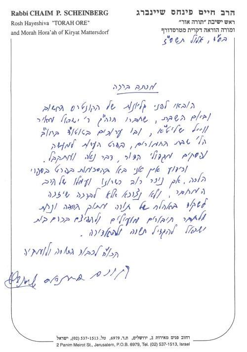
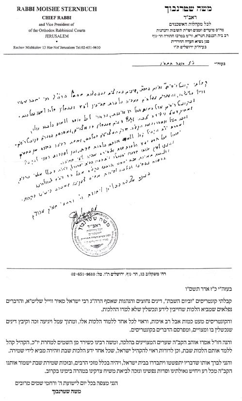
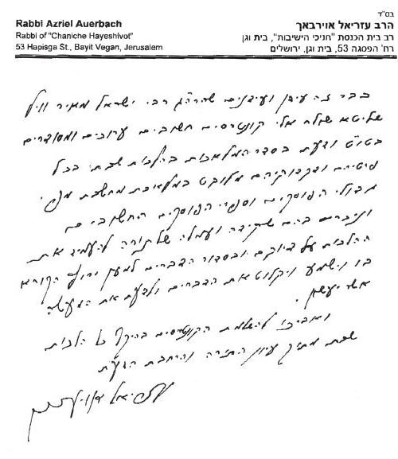
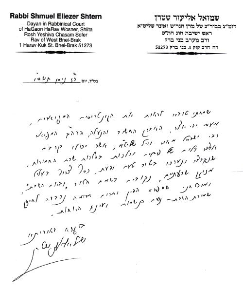

הסכמות הקדמה סימן א - הלכות בישול סימן ב -הלכות שהיה סימן ג - הלכות חזרה סימן ד - הלכות הטמנה סימן ה - הלכות בורר סימן ו - הלכות דש סימן ז - הלכות טוחן סימן ח - הלכות לש סימן ט - הלכות תיקוני מאכלים סימן ט* - ל"ט מלאכות באוכלין סימן י - הלכות בונה וסותר סימן י* - הלכות אוהל סימן יא - הלכות מכה בפטיש סימן יב - הלכות תופר וקורע ומחתך סימן יג - פתיחת אריזות בשבת סימן יד - הלכות כותב מוחק וצובע סימן טו - הלכות מלבן וניקוי בגדים וכלים סימן טז - הלכות צד וחובל סימן טז* - חבלה ונטילת נשמה סימן טז** - שאר דיני בעלי חיים בשבת סימן יז - הלכות קושר ומתיר סימן יח - הלכות חורש זורע קוצר ומעמר ודיני השימוש באילן סימן יח* - הלכות זורע וקוצר סימן יח** - מלאכת מעמר סימן יט - הלכות מבעיר ומכבה סימן כ - הלכות גוזז סימן כא - הלכות הוצאה מרשות לרשות סימן כב - דיני הוצאה מרשות לרשות סימן כג - הלכות מוקצה - סוגי המוקצה ודיניהם סימן כד - הלכות מוקצה - היתרים לטלטול מוקצה סימן כה - הלכות מוקצה - דיני מוקצה [ונידונים מצויים] סימן כו - דיני אמירה לנכרי סימן כז - היתרים באמירה לנכרי סימן כח - הלכות אמירה לנכרי השייכות לעסק סימן כט - הלכות ממצוא חפצך ודבר דבר ודיני שטרי הדיוטות סימן כט* - שטרי הדיוטות סימן ל - איסורי שבות נוספים - הכנה משבת לחול סימן לא - הלכות חולה ורפואה בשבת סימן לב - הדרכה לאישפוז בבית חולים בשבת סימן לג - הדרכה למעוברת ויולדת סימן לג* - הלכות שריפה סימן לד - הלכות ערב שבת וקבלת שבת סימן לה - הלכות הדלקת נרות סימן לו - הלכות תפילות ליל שבת סימן לז - הלכות קידוש וסעודה סימן לח - הלכות קריאת התורה ושמו"ת ותפילות יום שבת סימן לט - הלכות סעודות יום שבת ושאר דיני יום שבת סימן מ - הלכות הבדלה ומוצאי שבת סימן מא - כללי המלאכות ואיסורי השבות סימן מא* - היתרים באיסורי דרבנן
הסכמות הקדמה סימן א - הלכות בישול סימן ב -הלכות שהיה סימן ג - הלכות חזרה סימן ד - הלכות הטמנה סימן ה - הלכות בורר סימן ו - הלכות דש סימן ז - הלכות טוחן סימן ח - הלכות לש סימן ט - הלכות תיקוני מאכלים סימן ט* - ל"ט מלאכות באוכלין סימן י - הלכות בונה וסותר סימן י* - הלכות אוהל סימן יא - הלכות מכה בפטיש סימן יב - הלכות תופר וקורע ומחתך סימן יג - פתיחת אריזות בשבת סימן יד - הלכות כותב מוחק וצובע סימן טו - הלכות מלבן וניקוי בגדים וכלים סימן טז - הלכות צד וחובל סימן טז* - חבלה ונטילת נשמה סימן טז** - שאר דיני בעלי חיים בשבת סימן יז - הלכות קושר ומתיר סימן יח - הלכות חורש זורע קוצר ומעמר ודיני השימוש באילן סימן יח* - הלכות זורע וקוצר סימן יח** - מלאכת מעמר סימן יט - הלכות מבעיר ומכבה סימן כ - הלכות גוזז סימן כא - הלכות הוצאה מרשות לרשות סימן כב - דיני הוצאה מרשות לרשות סימן כג - הלכות מוקצה - סוגי המוקצה ודיניהם סימן כד - הלכות מוקצה - היתרים לטלטול מוקצה סימן כה - הלכות מוקצה - דיני מוקצה [ונידונים מצויים] סימן כו - דיני אמירה לנכרי סימן כז - היתרים באמירה לנכרי סימן כח - הלכות אמירה לנכרי השייכות לעסק סימן כט - הלכות ממצוא חפצך ודבר דבר ודיני שטרי הדיוטות סימן כט* - שטרי הדיוטות סימן ל - איסורי שבות נוספים - הכנה משבת לחול סימן לא - הלכות חולה ורפואה בשבת סימן לב - הדרכה לאישפוז בבית חולים בשבת סימן לג - הדרכה למעוברת ויולדת סימן לג* - הלכות שריפה סימן לד - הלכות ערב שבת וקבלת שבת סימן לה - הלכות הדלקת נרות סימן לו - הלכות תפילות ליל שבת סימן לז - הלכות קידוש וסעודה סימן לח - הלכות קריאת התורה ושמו"ת ותפילות יום שבת סימן לט - הלכות סעודות יום שבת ושאר דיני יום שבת סימן מ - הלכות הבדלה ומוצאי שבת סימן מא - כללי המלאכות ואיסורי השבות סימן מא* - היתרים באיסורי דרבנן הסכמות
הקדמה
סימן א - הלכות בישול
סימן ב -הלכות שהיה
סימן ג - הלכות חזרה
סימן ד - הלכות הטמנה
סימן ה - הלכות בורר
סימן ו - הלכות דש
סימן ז - הלכות טוחן
סימן ח - הלכות לש
סימן ט - הלכות תיקוני מאכלים
סימן ט* - ל"ט מלאכות באוכלין
| קושר ומתיר באוכלין מחתך ומשרטט כדי לחתוך משרטט באוכלין החלקת מאכלים בנין ויצירת צורה באוכלין כתיבה ומחיקה באוכלין צביעה באוכלין ובמשקין יצירת אוכל מלבן באוכלין חיתוך פירות ובשר דק דק גוזז באוכלין |
סימן י - הלכות בונה וסותר
סימן י* - הלכות אוהל
סימן יא - הלכות מכה בפטיש
סימן יב - הלכות תופר וקורע ומחתך
סימן יג - פתיחת אריזות בשבת
סימן יד - הלכות כותב מוחק וצובע
סימן טו - הלכות מלבן וניקוי בגדים וכלים
סימן טז - הלכות צד וחובל
סימן טז* - חבלה ונטילת נשמה
סימן טז** - שאר דיני בעלי חיים בשבת
| מוקצה בבעלי חיים שביתת בעלי חיים ממלאכות שימוש בבעלי חיים איסור מחמר האכלת בעל חי העמדת בעל חי ליד אוכל מוקצה רפואה לבהמה יציאה לרה"ר עם כלב שיש סביב צוארו רצועה כלב נחיה [לסומא] |
סימן יז - הלכות קושר ומתיר
סימן יח - הלכות חורש זורע קוצר ומעמר ודיני השימוש באילן
| כללי מלאכת חורש משחק בחול הסעת עגלת תינוק על עפר נטילת ידים ועשיית מ"ר בגינה גרירת רהיטים על הקרקע הוצאת חפץ התחוב באדמה |
סימן יח* - הלכות זורע וקוצר
סימן יח** - מלאכת מעמר
| מעמר מדאורייתא ומדרבנן איסוף פירות שנתפזרו קיבוץ ודיבוק תאנים קיבוץ פירות מבושלים ומשחקי עץ קיבוץ ודיבוק פירות יבשים קיבוץ פרחים לזר |
סימן יט - הלכות מבעיר ומכבה
סימן כ - הלכות גוזז
| כללי מלאכת גוזז גזיזת שערות וציפורניים להסתרק במסרק הסתכלות במראה ציפורן וקילופי עור שנתלשו מקצתם חיתוך יבלת תלישת שערות מפרווה גזיזה מעוף מבושל גזיזת צפורניים החוצצים הסרת גלד של מכה |
סימן כא - הלכות הוצאה מרשות לרשות
סימן כב - דיני הוצאה מרשות לרשות
סימן כג - הלכות מוקצה - סוגי המוקצה ודיניהם
סימן כד - הלכות מוקצה - היתרים לטלטול מוקצה
סימן כה - הלכות מוקצה - דיני מוקצה [ונידונים מצויים]
סימן כו - דיני אמירה לנכרי
סימן כז - היתרים באמירה לנכרי
סימן כח - הלכות אמירה לנכרי השייכות לעסק
סימן כט - הלכות ממצוא חפצך ודבר דבר ודיני שטרי הדיוטות
סימן כט* - שטרי הדיוטות
סימן ל - איסורי שבות נוספים - הכנה משבת לחול
סימן לא - הלכות חולה ורפואה בשבת
סימן לב - הדרכה לאישפוז בבית חולים בשבת
סימן לג - הדרכה למעוברת ויולדת
סימן לג* - הלכות שריפה
סימן לד - הלכות ערב שבת וקבלת שבת
סימן לה - הלכות הדלקת נרות
סימן לו - הלכות תפילות ליל שבת
סימן לז - הלכות קידוש וסעודה
סימן לח - הלכות קריאת התורה ושמו"ת ותפילות יום שבת
סימן לט - הלכות סעודות יום שבת ושאר דיני יום שבת
סימן מ - הלכות הבדלה ומוצאי שבת
סימן מא - כללי המלאכות ואיסורי השבות
סימן מא* - היתרים באיסורי דרבנן






אמר אביי לא חרבה ירושלים אלא בשביל שחיללו בה את השבת שנאמר 'ומשבתותי העלימו' (שבת קיט:). מדייק המהרש"א (בחידושי אגדות) שאין חורבן הבית משום חילול השבת אלא משום שמורי התורה לא הודיעו את הלכות שבת לעם, שהרי הפסוק אומר ומשבתותי העלימו, כלומר, שעוונם היה העלמת הלכות השבת מהעם.
ויש להבין: א. מדוע חמורה שבת משאר איסורי תורה שהיא הסיבה לחורבן הבית. ב. אם אכן השבת היא הגורם לחורבן הבית, אם כן מדוע הסיבה מפני שלא הודיעו את ההלכות ולא מפני עצם חילול השבת.
ויש לבאר על פי דברי הבית הלוי (פ' בראשית) שהביא הא דאיתא במדרש (בראשית רבה י ט) 'לא היה העולם חסר כלום אלא מנוחה באה שבת באה מנוחה'. ותמוה, מהו 'מנוחה' החסרה, הרי העדר עבודה היא מנוחה, ומהי בריאת ה'מנוחה' החסרה.
ומבאר הבית הלוי, העולם נברא בששה ימים, וביום השבת הקב"ה הפסיק ליצור ולברוא את העולם, והעולם עבר ממצב של "נברא" למצב של "שביתה", ומאז יסוד האמונה הוא לדעת שהקב"ה 'מחדש בכל יום תמיד מעשה בראשית', והיינו, שגם אחרי שכבר אין רואים בחוש שהקב"ה בורא את העולם, יסוד האמונה שמערכת החמה והלבנה וגבורות הגשמים וצמיחת הפירות הם מעשי הקב"ה המתחדשים בכל יום. וזה התחדש בשבת שהתחילה ה'מנוחה' מבריאת העולם יש מאין ועבר לאמונה שהקב"ה מחדש בכל יום תמיד מעשה בראשית. ולכן הקב"ה העמיד את השבת כמצוה חשובה במיוחד מפני שהיא מסמלת על האמונה בהמשך הנהגת הבורא בעולם.
ומי שאינו לומד את הלכות השבת מראה שהוא אינו מתפעל ממה שהקב"ה העמיד את השבת כמצוה חשובה המסמלת את כל הנהגת הבורא בעולם, ולכן העונש הוא על הזלזול במצוה שהקב"ה העמיד כמצוה חשובה כל כך, וזה חמור יותר מעצם החילול, והיא הסיבה לחורבן הבית שיבנה במהרה בימינו.
לאחר שעזרני השי"ת בחסדו הגדול להוציא לאור עולם קונטרסים על הלכות שבת על פי שיעורים שנמסרו בעזרת העליון בפני תלמידים חכמים, ונתקבלו הדברים בס"ד, ניגשתי אל מלאכת הקודש לכתוב ספר על כל הלכות שבת הכולל את כל המלאכות והשבותים עם דיני חולה ורפואה בשבת וכללי המלאכות וכן את כל הלכות יום השבת מערב שבת ועד מוצאי שבת, ערוך במהדורה חדשה עם תיקונים והוספות רבות.
והנה, אף שאכן הנצרך לשאלה מסוימת בשבת תהיה לו תועלת מיידית מן הספר, פשוט וברור שיש ללמוד את כל ההלכות מפני שהרבה פעמים לא יוכל לעיין בספר כשתזדמן שאלה לידו וגם עלול לא לדעת שיש כאן שאלה, ולכן הספר נערך בסדר נח וברור במיוחד גם לרוצים ללמוד בו בקביעות. כמו כן הבאתי בכל מקום ומקום באופן ברור את הכרעת ההלכה למעשה למעיין בשאלה שהזדמנה לידו, ולכן כתבתי בהערות בעיקר את המקורות והטעמים להכרעת ההלכה ושאר הצדדים והאריכות ציינתי כמראי מקומות לרוצה לעיין יותר.
הוספתי בפנים שאלות רבות המצויות בדינים אלו, ובפרט את השאלות המצויות בבתי ההוראה, שבחלקם הגדול לא נידונו כלל עד כה וחלקם נידונו בלא הכרעה ברורה. גם הוספתי תשובות ופסקים רבים והרבה מהם בנידונים חדשים מרבותינו גדולי הפוסקים שליט"א, ובתוכם הרבה מפסקי מרן הגר"ש ואזנר שליט"א והגאון הגדול ר"ח קניבסקי שליט"א שאף עבר על המובא בשמו והגאון הגדול ר"נ קרליץ שליט"א. כן הבאתי ברוב המקומות את הוראותיו של מרן הגרי"ש אלישיב שליט"א, ויעמדו על הברכה הגאון הגדול רבי עזריאל אויערבך שליט"א והגאון רבי יוסף שיינברגר שליט"א והגאון רבי בנימין רימר שליט"א והגאון ר' אברהם צבי ישראלזון שליט"א והרה"ג ר' אריה אלישיב שליט"א שסייעוני בזה.
ברכת התורה לראב"ד ירושלים הגאון הגדול רבי משה שטרנבוך שליט"א ולהגאון הגדול רבי עזריאל אויערבך שליט"א שעברו על חלק גדול מן הספר והאירו את עינינו מאור תורתם. וכן אברך בתודה את הגאונים רבי אברהם צבי הכהן שליט"א ורבי ישראל ויזל שליט"א שעברו על כל הספר, ואת הגאונים רבי שמואל אליעזר שטרן שליט"א ואאמו"ר רבי אברהם צבי ווייל שליט"א ורבי יו"ט זנגר שליט"א ורבי מנחם מנדל לובין שליט"א ורבי מרדכי פירר שליט"א שעברו על חלק מן הספר והערותיהם החשובות היו לנו לעיניים. וכן חובה נעימה עלי להודות לכל הת"ח שהעירו על הקונטרסים הקודמים והרבה למדתי מהם והם ממזכי הרבים.
בדיני הרפואה בשבת נעזרתי בגר"י הופנר שליט"א רב המרכז הרפואי "מעייני הישועה" ובגר"מ שלזינגר ראש ישיבת מענה שמחה ויו"ר "פרי חיים". וכן ברב ד"ר משולם הרט שליט"א ובד"ר אלי שוסהיים יו"ר "אפרת" ובד"ר יואל אנגלהרד, והנני מודה להם בשם הרבים המקבלים תועלת מזה.
מזמור לתודה אביעה לכבוד אבי מורי הגאון שליט"א בעמח"ס "זמרת הארץ" ולאמי הרבנית תחי', שכל חיי כיונוני לדרך ישרה, ומהם למדתי צורתה של שקיעות בתורה ותכלית עבודת האדם בעולם.
שלמי תודה למורי חמי הרב אברהם רובינשטיין שליט"א שדלתותיהם של גדולי ישראל פתוחות אצלו והיה לי לעזר רב בליבון ובירור שיטותיהם, ולחמותי הרבנית תחי', על כל אשר קבלתי מהם.
קובע ברכה לעצמו הרב הגאון רבי נחום קסטנר שליט"א ר"מ בישיבת מיר, אשר הרבה מן הספר בזכות פועלו ע"י ארגון "והגית" בארה"ק.
על אף העמל הרב שהושקע בדיוק פרטי ההלכות, אבקש שלא להסתמך על הכתוב בלבד לקביעת הלכה למעשה. ויה"ר שלא תצא תקלה מתחת ידינו ח"ו.
ואחתום בתפילה להשי"ת שיזכנו שנהיה אני וזרעי וזרע זרעי עד עולם עוסקים בתורה לשמה, וכמו שכתוב 'וביום השביעי שבת וינפש' (שמות לא, יז), ודרשו חז"ל (ביצה טז.) וי אבדה נפש, והיינו איבוד הנשמה יתירה שנוספת בשבת. ויש להבין מדוע נדרש מפסוק הנאמר בענין שבת את ענין אבידת הנשמה יתירה שהוא במוצאי שבת. והביאור הוא שכבר בכניסת שבת יש לדעת ולזכור שהנשמה יתירה היא זמנית בלבד ובמוצאי שבת היא אובדת ועל כן יש לנצלה כראוי. ומזה יש ללמוד גם לנשמה העיקרית שיש לנצלה היטב כראוי מכיון שהיא זמנית בלבד וסופה לשוב אל הבורא אשר נתנה.
ישראל מאיר ווייל
בן הגאון רבי אברהם צבי שליט"א
* סימני וסעיפי ספר שמירת שבת כהלכתה צוינו לפי המהדורה החדשה.
כללי מלאכת בישול
א. אסור מדאורייתא לבשל (א) בגדר בישול ובדין מניח קדרה על האש סמוך לשקה"ח של שבת והתבשל רק במוצ"ש ובביאור החילוק מזריעה- עיין בהערות בתחילת הלכות זורע [סימן י"ח הע' י"ז]. באור ובתולדות האור. אסור מדרבנן לבשל בתולדת חמה [דבר שהתחמם מן השמש]. מותר לבשל בחמה עצמה מפני שאין דרך בישול בכך (ב) סי' שי"ח, ג', וכתב רש"י בשבת דף לט. ד"ה דשרי שבישול בחמה מותר מפני שאין דרך בישול בכך, ומה שלא גזרו עליו איסור דרבנן כבשאר איסורי שבת שאם עושה בשינוי אסור מדרבנן, היינו משום שחמה באור לא מיחלף ואם כן אין צורך לגזור עליו. . דברים שאינם לא אור ולא חמה ולא תולדותיהם, אם דרך בישול בהם גם כן אסור, וראה בהערה אם מדאורייתא או מדרבנן (ג) יש בראשונים שכתבו שאיסור בישול מדאורייתא שייך אף בדברים שאינם שייכים לא לאור ולא לחמה, כן כתבו הרמב"ן והר"ן בע"ז דף לח: [בדפי הרי"ף] לגבי ראיית הרמב"ן שאף שחום של כלי שני אינו מבשל מ"מ בולע ופולט באיסורין, והראיה ממלח שאף שאינו מבשל- דהא אמרינן בדף עה: מולח בשר היינו מעבד ולא קאמרינן שיתחייב משום מבשל, מ"מ בולע ופולט באיסורין, וכ' הר"ן על דבריו שמולח חייב גם משום מעבד וגם משום מבשל, ועכ"פ גם הרמב"ן ס"ל שבעצם מולח יכול להתחייב משום בישול אלא שאין לו כח בישול, וא"כ גם לרמב"ן וגם לר"ן יש איסור דאורייתא במבשל גם אם אינו בתולדת האור. וכן מוכח בתוס' בשבת דף לח: ד"ה לא שהקשה היאך חייב המבשל ביצה בחול והא חול אינו מבשל ביצה קרה, ותירץ דמיירי בחול שהוחם בחמה, וא"כ הבין בקושייתו שהמבשל בחול אם היה מחמם באמת, היה חייב משום מבשל. וכן גבי כובש כבשים הרי הוא כמבשל [רמב"ם פכ"ב ה"י ושו"ע סי שכ"א, ג'] נחלקו האחרונים אם איסורו מדרבנן או מדאורייתא שהפלתי ביו"ד סי' ק"ה והמור וקציעה בסי' ש"כ כתבו שהוא מדאורייתא והחכמ"א וגר"ז ומ"ב בסי' שכ"א שם כתבו שהוא מדרבנן, וכתב המ"ב בסקט"ז- 'אע"ג דבודאי אין בו חיוב שאינו בתולדת האור', ולא כתב שהוא רק משום שכובש כבשים עצמו יתכן שאיסורו מדרבנן גם לענין בליעת איסורים, ואפשר שפסק שכל היכי שאינו תולדת האור אף שדרכו בכך איסורו רק מדרבנן. אך האגרו"מ ח"ג סי' נ"ב כתב שבישול במקרוגל הוא מדאורייתא וכ"כ השבט הלוי [ח"י סי' ס"ב], ואולי יש לדחוק בהבנת המ"ב שסובר ג"כ שהוא מדאורי' אלא דכבוש כמבושל שאני שגם בבליעת איסורים איסורו דרבנן. ועיקר הדין מבו' מדברי האחרונים שכתבו שכל דבר שדרכו בכך אע"פ שאינו תולדת האור ולא תולדת חמה אסור כי ההיתר בבישול בחמה הוא מפני שאין דרכו בכך, כ"כ בנובי"ת יו"ד סי' מ"ג ובאבנ"ז יו"ד סי' פ"ח ובאבן האזל הל' שבת פכ"ב ובאגלי טל מלאכת אופה סקס"א.
והנה, לפי"ז יש לדון אם מותר להכניס פרי קשה לתוך פירות רכים שירככו את הפרי הקשה, והרי הדרך לעשות כן וא"כ יהיה אסור משום בישול אם קודם הריכוך לא היה ראוי לאכילה כיון שהפירות הרכים גורמים לריכוך הפרי ודמי להנ"ל. אמנם, דעת הגרש"ז אויערבך זצ"ל [בספר מאור השבת ח"ג מכתב ל"ט] והגרנ"ק שליט"א והגרח"ק שליט"א שמותר לעשות כן, והיינו משום שאין לזה שם "בישול" אף שאכן מועיל לפרי. . ולכן, איסור בישול כולל גם בישול במיקרוגל או בחשמל. וראה עוד בהערה בגדר האיסור והנפק"מ לדינא.
בישול בכלים ובחפצים
ב. איסור בישול כולל גם התכה של מיני מתכות וכן המסת שעוה או חלב וכן חימום מתכת עד שתיעשה גחלת, שכל ריפוי גוף קשה הוא בכלל בישול, וכן הקשאת דבר רך הוא בישול אם מתרכך בתחילת בישולו (ד) רמב"ם פ"ט מהל' שבת ה"ו, מ"ב סי' שי"ח סק"א ושעה"צ שם סק"ד, ואמנם לשון הרמב"ם בפיה"מ בפרק כלל גדול שגדר בישול היינו רפיון העצמים הקשים, אבל בלח"מ שם פי' דהיינו משום שבדרך כלל אין חשיבות להקשאת חפצים דבלא"ה הם קשים, אבל אה"נ שגם המקשה דבר רך חייב משום בישול [ואפשר שגם בשעה"צ סובר כך, ומסתבר כך, אלא שבעץ אין חשיבות להקשאתו ולכן כתב שמתרכך תחילה]. . [ובאוכל ומשקה יש בישול גם בלא הקשאה או ריפוי, שעצם השבחת המאכל והכנתו לאכילה זה המחייב בבישולו (ה) עיין בהערה הקודמת, ופשוט הוא שהרי המרתיח מים אינו שייך להקשאה וריכוך אלא הכל תלוי בהשבחת האוכל ובהכנתו לאכילה, וזהו ענין נתבשל כמאכל בן דרוסאי ששייך גם באפיה וצליה אף שמתקשה והולך כל הזמן, ואין אומרים שחיובו רק על הריכוך הראשון, וגם דאי נימא שבאפיה וצליה חיובו על הריכוך הראשוני איך נפרש הא דאמרינן בשבת ג. הדביק פת בתנור התירו לרדותה קודם שתיאפה הרי הריכוך כבר נגמר ברגעים הראשונים, וגם בדף קמה: מבו' שבכל השבחת מאכל יש איסור בישול אף שאין ריכוך ולכן אסור להדיח קולייס האיספנין כי מסיר מלחו. ].
ועל כן, יש שהורו להיזהר שלא להניח אוכל או משקה רותחים מאוד על כוס או צלחת חד פעמית קשיחים [אמנם רוב הכלים החד פעמיים שלנו אינם נחשבים קשיחים] אם ודאי הצלחת או הכוס יתרככו מחמת החום (ו) כן דעת הגרי"ש אלישיב שליט"א שאם ודאי יתרככו אסור כיון דהוי פס"ר דלא ניחא ליה שאסור כמש"כ בסי' ש"כ סעיף י"ח וסעיף כ' ובסי' רע"ז, ג'. אמנם בכלים רכים דעתו להקל משום שאינם נחשבים גוף קשה אלא גוף רך מעיקרו, ולכן הורה שברוב הכלים המצויים כיום מותר ורק בכלים קשיחים [כגון המצויים בשמחות] יש להחמיר [ויש להעיר שאפילו בכלים קשים יש לצדד להקל כיון שנחשב פס"ר דלא ניחא ליה בתרי דרבנן שהרי גם מקלקל וגם כלאחר יד, והשעה"צ התיר פס"ר דלנח"ל בתרי דרבנן בסי' שט"ז סקי"ח ובסי' של"ז סק"ב ובמ"ב בסי' ש"מ סקי"ז, אלא שהחזו"א והגריש"א שליט"א מפקפקים על היתר זה כמו שנתבאר לקמן סי' מ"א סעיף י"ד]. , ויש שהתירו לעשות כן אף אם ודאי שהכלים יתרככו (ז) שבט הלוי ח"ח סי' נ"ז. .
שיעור בישול וחצי שיעור
ג. שיעור בישול מדאורייתא כגרוגרת, ולבשל פחות מכגרוגרת אסור מדאורייתא משום חצי שיעור (ח) רמב"ם פ"ט ה"ה. ונפסק במ"ב שי"ח סק"א. .
המניח כלי מתכת במקום שיכול להגיע להתכה או לגחלת, ובדעתו ליקח הכלי משם קודם שייעשה גחלת אין בזה איסור של חצי שיעור בישול ומותר לעשות כן (ט) סי' שי"ח סקצ"א. . ויש אומרים שיש בזה איסור של חצי שיעור (י) חזו"א סי' נ' סק"ט. . אבל המניח כלי מתכת בחום שלעולם לא יוכל להגיע להתכה או לגחלת מותר לעשות כן אף לשיטה זו (יא) כ"כ החזו"א בתשובה לגרש"ז אויערבך זצ"ל, נדפס במנחת שלמה ח"ב סי' י"ז, ועיין בדרור יקרא עמ' שג ביאור הגרב"צ פלמן שליט"א בדברי החזו"א. ועיין עוד לקמן בהלכות חזרה [סי' ג' סעיף ו'] ובהערות שם. .
המחמם משקה לחום פחות מהיד סולדת בו אין בו איסור חצי שיעור- אלא שאם מניח במקום שיכול להגיע לחום שהיד סולדת בו אסור שמא ישכחנו שם (יב) סי' שי"ח, י"ב, י"ד, ט"ו. . המחמם מאכל לחום פחות ממאכל בן דרוסאי אין בו איסור חצי שיעור (יג) נחלקו בזה הראש יוסף בשבת והאבן האזל בשבת פכ"ב ה"ח ושבה"ש סקנ"ט. בראש יוסף הוכיח מדברי הרמב"ם פ"ט ה"ה שבשר שנתבשל כמאב"ד מצד אחד פטור אבל אסור שאסור אף בפחות מכמאב"ד, אך באבן האזל כתב ששם אפשר לחתוך את הצד המבושל כמאב"ד וא"כ הוי חצי שיעור בכמות ולא באיכות. ולהלכה, כתב הבאה"ל בסעיף ו' ד"ה ויכול שאין איסור חימום דבר יבש לחום שהיס"ב אם לא יגיע לכמאב"ד, וכן דייק המנחת שלמה בח"א סי' י"א [בהערה שם] מדברי המ"ב סקצ"א שכתב שאסור להקריב פירות למקום שיכולים להיצלות ולא כתב למקום שיכולים להגיע לחום שהיס"ב כמו במים [ובח"א ובתהל"ד כתבו שיבש דינו כלח ואם יכול להגיע לחום שהיס"ב אסור], וכן מבו' במ"ב שם סקצ"א לגבי חימום מתכת לחום שהיס"ב. - אלא שאם מניח את המאכל במקום שיכול להגיע למאכל בן דרוסאי אסור להניחו אף לזמן מועט שמא ישכחנו שם (יד) רמ"א סי' שי"ח, י"ד, ועי' באה"ל בסעיף ו'. [בגדר שיעור "בן דרוסאי" עיין לקמן סי' ב' סעיפים ו'- ח'].
מליחת ירקות
ד. ירקות שהדרך לכובשם אסור למולחם ד' או ה' חתיכות ביחד, ואם מולח לזמן ארוך אפילו חתיכה אחת אסור, מפני שנראה ככובש כבשים, ואסור מדרבנן לכבוש בשבת מפני שהוא כמבשל (טו) סי' שכ"א, ג' וסקט"ז. ועי' בסי' ט' סעיף ד' בפרטי הדין. .
מותר לרכך פרי קשה ע"י נתינתו בתוך פירות רכים. ועיין בסוף הערה ג'.
השימוש בדוד שמש
ה. המשתמש במים שהתחממו בדוד שמש, גורם שהמים הקרים שנכנסים מתחממים מהמים החמים הקיימים בדוד, ואסור משום מבשל בתולדת חמה. ואם משתמש במים חמים רבים עד כדי שהמים שנשארו לא יוכלו לחמם את המים הקרים, אלא שהמים הקרים יתחממו מה"קולטים", נחלקו הפוסקים אם נחשב בישול בחמה עצמה שמותר (טז) הר צבי [או"ח סי' קפ"ח] וציץ אליעזר [ח"ז סי' י"ט וח"ח סי' י"ד]. או בישול בתולדת חמה ואסור (יז) מנח"י [ח"ד סי' מ"ד] ושבט הלוי [ח"א סי' צ"ד]. , ולמעשה נהגו להחמיר בזה (יח) גם יש להסתפק בבישול בחמה כשהדרך לעשות כן אם מותר, שהרי הטעם להיתר בישול בחמה הוא מפני שאין דרך בישול בכך. . ויש להיזהר בברזים החדשים שמסתובבים על מקומם אנה ואנה ובתנודה קלה עלול לעבור למים החמים.
יש המקילים לפתוח ברז מים חמים שהוחמו בדוד שמש [אך לא ב"בוילר" !] בשינוי לצורך הכנת מאכל לתינוק מפני שנחשב כחולה שאין בו סכנה (יט) בישול בתולדת חמה הוא איסור מדרבנן, כמבו' בסי' שי"ח, ג', ויש המקילים בשינוי לצורך אוכל לקטן, שהרי צרכי קטן נחשבים כחולה שאין בו סכנה כמבו' בסי' שכ"ח, י"ז, ומותר לעשות מלאכות דרבנן ע"י ישראל בשינוי כמבו' שם סקנ"ז. , ועדיף לקחת מים חמים ממקום אחר אם אפשר לעשות כן.
צינורות חיצוניים שמתחממים מן השמש
ו. נראה שאפשר להקל ולפתוח ברז מים גם במקומות שיש צינורות מחוץ לבנין שמתחממים עד לחום שהיד סולדת בו, אף אם המים שנשארים בהם זמן ממושך מתחממים גם כן לחום שהיד סולדת בו (כ) תולדות חמה אסור מדרבנן, וכאן הוי חימום ובישול כלאחר יד [ואינו דומה לדוד שמש שמיועד לחימום והדרך לחמם שם כך] וא"כ הוי פס"ר בתרי דרבנן [שהרי לא מתכוין לחימום] ובדרך כלל הוי פס"ר דלא ניחא ליה [שאינו רוצה בחימום המים] ובשעה"צ כתב שאפשר להקל בפס"ר בתרי דרבנן [בסי' שט"ז סקי"ח ובסי' של"ז סק"ב ובמ"ב בסי' ש"מ סקי"ז], ואף למפקפקים בהיתר זה [החזו"א סי' ס"א והגריש"א שליט"א בדרור יקרא עמ' רעא] נראה שאפשר להקל בצירוף הדעות שחימום בדוד שמש נחשב לחימום בחמה עצמה ומותר וא"כ ה"נ בנידון זה יסברו שמותר [שהרי כאן אין הדרך לחמם כך], ומלבד זאת הוי רק גרמא שאיסורו רק מדרבנן [עי' סי' של"ד סעיף כ"ב ובאה"ל שם], ושאני מדוד שמש שמיועד לחימום ודרכו בכך. עוד יש להעיר שלכאורה בדרך כלל אינו פסיק רישא שיתחממו המים כיון שיתכן שיפתחו את המים אחרי זמן קצר לפני שיספיקו להתחמם, ואף שגם זה אסור גזירה שמא ישכח ויבשל כמבו' בסי' שי"ח סעיף י"ג, מ"מ איסורו רק מדרבנן ואפשר לצרף לקולא בפס"ר. [וכן יש לדון אם חסר בחשיבות מלאכה כיון שפעולתו אינה משתייכת כלל לחימום המים הנכנסים אלא רק לשתיית המים היוצאים, ועיין עוד בסי' מ"א סעיף י"ט בגדר שם "מלאכה"]. .
גמר בישול
ז. דבר יבש המבושל כבר כמאכל בן דרוסאי, ואף אם מבושל יותר מכך, אסור מדאורייתא להמשיך ולבשלו עד שיגמר בישולו (כא) סי' שי"ח, ד' וסקכ"ו. ועין בבאה"ל סוד"ה אפילו שבדיעבד אין המאכל נאסר באיסור מעשה שבת. . וכן מים שכבר חמים בחום שהיד סולדת בו אסור לחממם יותר כדי שירתחו ממש שזהו גמר בישולם (כב) שביתת השבת מבשל סקי"ד [ומה שכתב בהקדמתו להל' מבשל אות יח שמותר צ"ל דמיירי במים שהיו רותחים ונצטננו], תהל"ד סקי"ז, וכ"כ במנח"י ח"י סי' כ"ח ובצי"א ח"ח סי' ל"ב ובשבט הלוי ח"ז סי' מ"ב ובאז נדברו ח"ו סי' ט' וסי' י' וכן דעת הגרי"ש אלישיב שליט"א. [וכ"כ באגרו"מ ח"ד סי' ע"ד בישול אות כד, וראה בהערה הבאה]. ואף שבב"י סוד"ה אפילו כתב 'ומשמע לי שכל שהיס"ב מיקרי רותח' והמג"א והמ"ב בסי' שי"ח סקכ"ב פסקו את דבריו להלכה, היינו דוקא לענין בישול שאם המים חמים בחום שהיס"ב א"כ עדיין נחשבים הם מבושלים, אבל מים שמעולם לא רתחו א"כ אסור לחממם מחום שהיס"ב לרתיחה כיון שזה גמר בישולם שהרבה רוצים אותם רותחים . [ויש המקילים להרתיח מים שחמים בחום שהיס"ב (כג) שו"ע הגר"ז סי' שי"ח סעיף ט', וכ"כ באגרו"מ ח"ד סי' ע"ד בישול אות א, אמנם שם באות כד כתב לא כן והחשיב חום שהיס"ב בלח כמאב"ד ביבש, ומאב"ד אסור לבשלו עד שיגמר בישולו. ].
שיעור חום שהיד סולדת בו לחומרא [כלומר, שאסור לחמם מים לחום כזה] הוא כ-45- 43 מעלות או מעט פחות. שיעור חום שהיד סולדת בו לקולא [כגון מים שרתחו והצטננו עד חום שהיס"ב לדעת המחבר וכדלקמן בסעיף ח'] הוא כ- 71-79 מעלות (כד) באגרו"מ או"ח ח"ד סי' ע"ד אות ג כתב ש- 71 מעלות הוא ודאי חום שהיס"ב ובאגרו"מ ביו"ד ח"ב סו"ס נ"ב כתב שמ- 79 מעלות הוא ודאי חום שהיס"ב. .
בישול אחר בישול
ח. בדבר יבש אין בישול אחר בישול ולכן מותר לחמם דבר יבש שבושל בעבר כל צרכו ונצטנן (כה) סי' שי"ח סקמ"א. ויש ליתן לב אם לא הוסיפו תבלינים או מלח וכיו"ב שלא התבשלו בבישול הראשון. [אלא שיש להקפיד על דיני חזרה בשבת]. אבל בדבר לח יש בישול אחר בישול, ולכן מים שהיו רותחים ונצטננו לגמרי (וראה בהערה מהו "לגמרי")] אסור לחממם שוב משום בישול אחר בישול, ואם נשארו חמים מעט, אף אם פחות מהיד סולדת בו, מותר להרתיחם- לרמ"א. ולמחבר אם המים הצטננו פחות מחום שהיד סולדת בו אסור להרתיחם (כו) סי' שי"ח, ט"ו. ואמנם, לשון הרמ"א שם שמעיקר הדין אין בישול אחר בישול בלח כלל אלא שיש מנהג להחמיר בנצטנן לגמרי, וכן משמע שם בגר"א ובמג"א ובמחה"ש, מ"מ בפמ"ג סי' רנ"ג במ"ז סקי"ג ובמ"ב סי' רנ"ג סקס"ח נקטו לדין הרמ"א כפסק שיש בישול אחר בישול בנצטנן לגמרי [אלא שהמנהג להקל בלא נצטנן לגמרי]. .
דבר יבש שנתבשל עם מים במקרוגל נחשב למבושל לכל דבר (כז) אגרו"מ או"ח ח"ג סי' נ"ב ד"ה וא"כ, וכן דעת הגרי"ש אלישיב שליט"א [שבות יצחק דיני מיקרוגל פ"ד] וכ"כ בשו"ת שבט הלוי ח"י סי' ס"ב, ועיין בחוט שני שדעת הגרנ"ק שליט"א לחוש להחמיר בזה שאולי בישול במקרוגל אינו בישול גמור. .
מהו "דבר לח"
ט. כל דבר נוזלי, אף אם משתבח בבישול, נחשב כדבר לח (כח) כן סתימת הפוסקים, וכ"כ הפמ"ג בסי' רנ"ד בא"א סק"א. .
דבר עבה [כמו "קטשופ" או "ריבה"] אלא שנשפך מכלי לכלי, יש הסוברים (כט) אגרו"מ או"ח ח"ד סי' ע"ד אות ה. שנחשב דבר לח כיון שנשפך מכלי לכלי, ויש הסוברים שנחשב דבר יבש (ל) הגרש"ז אויערבך זצ"ל והגרי"ש אלישיב שליט"א, כן הביא בשמם במאור השבת סי' ו' הע' י"ז, וביאר דבריהם שם, כיון שאין חשיבות כ"כ בחימומם אלא בבישולם, ואמנם בפמ"ג הנ"ל מבו' שבכל לח יש בא"ב אף שמשתבח בבישול, ואולי כאן נקטו סברא זו להקל בדבר עבה. .
קרח או שומן קרוש נחשבים כדבר יבש אף שיפשירו אח"כ ויהפכו למים (לא) סי' שי"ח סק"ק. ועיין עוד לקמן הערה ס'. , אלא שבדרך כלל אסור להפשירם משום מוליד (לב) סי' שי"ח, ט"ז. . ואמנם, מותר להכניס גוש קרח או שומן קרוש שנתבשל וקפא לתוך מים רותחים לפי שאז אין איסור מוליד (לג) עיין סי' ש"כ, ט'. . [אמנם יש לדעת שקרח המצטבר על אוכל שבמקפיא בדרך כלל הוא קרח שנוצר במקפיא ואסור לבשלו].
דבר יבש עם לחלוחית חיצונית
י. דבר יבש, שיש בו לחלוחית חיצונית מועטת (לד) בפמ"ג סי' רנ"ג במ"ז סקי"ג ובא"א סקמ"א ובסי' רנ"ט במ"ז סק"ג כתב דאזלינן בתר רוב, ואם רוב מה שנמצא בקדירה יבש מותר לחממו. אבל הפוסקים חלקו עליו וכתבו שכאן לא שייך רוב ומיעוט שאין כאן ביטול של המיעוט אלא יש כאן גם דבר יבש וגם דבר לח ואסור לחמם את הדבר הלח, כ"כ בשו"ע הגר"ז סי' רנ"ג סקי"ח ובסי' שי"ח סקי"א, ובשו"ת חת"ס או"ח סוף סי' ע"ד, ובא"ר סי' שי"ח סקי"א, ועי' אגרו"מ או"ח ח"ד ס' ע"ד בישול אות ז שג"כ דחה את דברי הפמ"ג [ועיי"ש שכתב שבשעת הדחק גדול אולי יש להתיר] וע"ע בשעה"צ סי' רנ"ג סקע"ח מש"כ בשם הפמ"ג. [כפי שמצוי בדרך כלל בתבשילים], נחשב דבר יבש, וראה בהערה ! (לה) כן דעת הגרש"ז אויערבך זצ"ל והגרי"ש אלישיב שליט"א והגרח"ק קניבסקי שליט"א, והיינו רק לפוסקים כהרמ"א בצירוף שלעיקר נקטינן שאין בישול אחר בישול, כ"כ במאור השבת ח"ב עמ' קפה בשמם [ועיי"ש בעמ' ס שבאטריות מבושלות אין להקל כן] וכן הביא בשבות יצחק עמ' שצח ובדרור יקרא עמ' שלט בשם הגרי"ש אלישיב שליט"א. , ויש המחמירים שנחשב דבר לח (לו) כן דעת הגר"ש ואזנר שליט"א [במאוה"ש שם]. . ואם יש בו לחלוחית הבלועה בפנים בלבד- ודאי נחשב לדבר יבש (לז) כן דעת הגרשז"א זצ"ל והגריש"א שליט"א והגר"ש ואזנר שליט"א והגרח"ק שליט"א [שם]. .
כמו כן מותר להניח דבר יבש בסיר וליתנו על גבי סיר מלא באוכל העומד על האש אף אם יש בקרקעית הסיר לחלוחית מועטה שהצטברה מהתבשיל. ויש המחמירים בזה (לח) הגרי"ש אלישיב שליט"א מתיר בזה [דרור יקרא עמ' שלט. והשואל שם שאל על גובה שני מילימטר והשיב לו הגריש"א שליט"א שמותר. אך לא שאל על יותר מזה], ולהגר"ש ואזנר שליט"א יש להחמיר כנ"ל. .
אפיה אחר בישול וחימום אחר בישול
יא. אף שאין בישול אחר בישול, יש בישול אחר אפיה ואפיה אחר בישול (לט) סי' שי"ח, ה' וסקמ"ה. ['בישול'- במים המתחממים מהאש, 'אפיה'- בחום של התנור בלי מים.] . וכתב המ"ב שמשום כך אסור לחמם בלי מים בשר או תפו"א שהתבשלו במים, כיון שחימום בכלי בלי מים על המיחם מוגדר "אפיה" ויש אפיה אחר בישול (מ) סי' שי"ח סקמ"א, ובבאה"ל בסעיף ט"ו ד"ה והוא. . אבל הרבה פוסקים התירו לעשות כן [באופן שאין איסור "חזרה" בשבת], כיון שסוברים שחימום קל כזה אינו מוגדר אפיה (מא) כ"כ החזו"א בסי' ל"ז סקי"ד והאגרו"מ בח"ב סי' פ"ה וכן דעת הגריש"א שליט"א.
ושורש המחלוקת, האם איסור אפיה אחר בישול נובע משום שהאפיה מבטלת את הבישול או מוסיפה על הבישול, ונחלקו בזה הפמ"ג והבאה"ל [עיין באה"ל ד"ה יש], ונ"מ לדין אפיה שאחר בישול שאחר אפיה שאם הבישול הוסיף על האפיה א"כ עתה יש כאן גם שבח של בישול וגם שבח של אפיה ומותר לאפות, אך אם הבישול ביטל את האפיה א"כ יש כאן רק שבח של בישול ואסור לאפות.
ונ"מ גם כן לחימום מועט שאין בו שבח של אפיה אך יש בו שם אפיה ששייך לומר שתבטל את שבח הבישול הראשון וממילא עצם החימום אסור כיון שאסור לחמם דבר שאינו מבושל, והמ"ב אזיל לשיטתיה שהוא ביטול של הבישול הראשון ולכן אוסר גם חימום מועט. .
בכלי שלישי הקילו הפוסקים שאין בישול אחר אפיה או להיפך (מב) חזו"א סו"ס נ"ב, וכן דעת הגרשז"א זצ"ל [בשש"כ פ"א הע' רי"ג] והגריש"א שליט"א. .
אפיה אחר בישול אחר אפיה
יב. אין אפיה אחר אפיה ולכן מותר לחמם מאכל שנאפה בלי מים.
נחלקו הפוסקים אם יש אפיה אחר בישול שלאחר אפיה או בישול אחר אפיה שלאחר בישול, יש האוסרים ויש המתירים (מג) סי' שי"ח, ה' באה"ל ד"ה יש, וראה בהערה מ"א הביאור בזה. . ויש לדעת, שמוצרים רבים עשויים בדרך של אפיה אחר בישול, שלאחר בישולם במים עוברים ייבוש בחום (מד) ישנם סוגים שונים של שקדי מרק ואבקות קפה הנעשים בדרך זו. , וממילא תלוי במח' הפוסקים הזאת אם מותר עכשיו לבשלם במים, אך לחממם בלא מים ודאי מותר כיון שנאפו.
- לענין הוספת מים לחמין ["טשולנט"] שהצטמק והתייבש [שהוא בישול החמין אחר שהתייבשו ונאפו אחר בישולם], ראה לקמן סי' ג' סעיף כ"ב.
צליה וטיגון אחר אפיה
יג. יש להחמיר שיש צליה אחר אפיה (מה) פמ"ג סי' שי"ח במ"ז סק"ז. ובבאה"ל כתב שאין אפיה אחר צליה, ואפשר שיש לחלק ביניהם, אך י"ל שהפמ"ג לשיטתו שהכל נמדד לפי ההשבחה ואם יש השבחה בצליה אחר אפיה אסור, והבאה"ל למד שהכל נמדד ע"פ דין בישול או אפיה וכיון שאפיה וצליה מוגדרים דבר אחד א"כ אין הצליה מבטלת את האפיה.
['צליה' הוא ישירות מהאש או מחום גדול, ו'אפיה' הוא מהחום הכללי כמו בחום של תנור ואינו ישירות מהאש]. .
יש להחמיר שיש אפיה אחר טיגון (מו) עי' פמ"ג שם שהסתפק בזה, והמ"ב בהל' ברכות [סי' קס"ח סקנ"ו] נוטה שטיגון נחשב לבישול, אולם ביארנו לעיל שאין הכרח לדמות דין בישול ואפיה הרגילים לדין בישול אחר אפיה שי"א שתלוי בהשבחה ולא בשם אפיה ושם בישול, וכ"כ בשבט הלוי ח"ז סי' י"ב אות ג שיש להחמיר בזה. אולם טיגון בשמן עמוק נחשב לבישול ומותר לבשלו (מז) כן דעת הגרש"ז אויערבך זצ"ל [בשש"כ פ"א סעי' ס"א] והגרי"ש אלישיב שליט"א [במאור השבת סי' ח' הערה ו'] והגר"ש ואזנר שליט"א [בשבט הלוי ח"י סי' ס"ג]. . והנה, אופן ייצור שקדי מרק משתנה מזמן לזמן, והאופן המותר לתת שקדי מרק הוא לתוך צלחת שמזגו לתוכה מרק ממצקת (מח) ראה לקמן בסעיף כ"א שמותר לבשל בכלי שלישי, וראה לקמן בסעיף י"ט שצלחת מרק שעירו לתוכה ממצקת נחשבת כלי שלישי, ועוד יש לצרף כאן צירופים רבים להקל, הן עצם דין אפיה אחר בישול שהוא רק חומרא, והן דין בישול אחר טיגון או אחר טיגון עמוק או אחר אפיה שאחר בישול. וע"ע בשבט הלוי ח"י שם. . וראה לקמן סעיף כ'.
עירוי אחר עירוי
יד. דבר שנשרה מערב שבת בכלי ראשון אסור לשרותו בשבת בכלי ראשון.
דבר שעירו עליו בערב שבת מכלי ראשון, אין למחות ביד המקילין לערות עליו בערב שבת מכלי ראשון, אבל טוב יותר שלא לעשות כן אלא רק ליתנם בכלי שני או לערות עליהם מכלי שני. ולכן, המכין תה או קפה מערב שבת יכניס את העלים או את שקיות התה או את הקפה לתוך הכלי ראשון [שהמים התבשלו בו] בעצמו, ואם שופך עליהם מהכלי ראשון יותר טוב שלא ישפוך עליהם בשבת מכלי ראשון (מט) סי' שי"ח סקל"ט ובשעה"צ סקס"ג. .
גדר "כלי ראשון"
טו. כלי ראשון הוא הכלי שבו התבשל התבשיל על האש, בין אם נמצא עדיין על גבי האש ובין אם כבר הוסר מהאש.
אם העביר את התבשיל לכלי שני ואח"כ החזיר לכלי הראשון שנתבשל בו, דינו ככלי ראשון (נ) פמ"ג סי' רנ"ז במ"ז סק"ה. .
דין כלי ראשון שמבשל כל דבר (נא) ויש להחמיר אפילו במלח כמבו' שם ברמ"א ובמ"ב סקע"א. כל עוד מה שבתוכו חם בחום שהיד סולדת בו (נב) סי' שי"ח, ט' וסקס"ג וסקס"ד. .
החזרת מכסה רטוב לקדירה
טז. מי שהוציא מכסה של קדירה שהיא כלי ראשון והמכסה רטוב ממים או מאדים, אם המים הצטננו לגמרי [לרמ"א, ולמחבר אם נצטננו לפחות מחום שהיד סולדת בו (נג) ראה לעיל סעיף ח' ובהערות שם. ] אסור להחזיר את המכסה לסיר אלא מקודם צריך לייבש ולנגב את המכסה (נד) שמא יפלו הטיפות לתוך הסיר ויתבשלו, וגם הטיפות הדבוקות למכסה מתחממות מהאדים של המים החמים, [והוי בישול או אפיה]. , ואם המים נשארו חמים מעט [לרמ"א] מותר להחזיר את המכסה לסיר [ואין לחשוש לאיסור חזרה (נה) כן דעת הגרשז"א זצ"ל וכן דעת הגרח"ק שליט"א. שאין לחוש למיחזי כמבשל או לשמא יחתה בטיפות בודדות ולא גזרו על זה איסור חזרה. ].
בישול לחות הנשארת בכלי
יז. וכן מי שלקח מרק במצקת מכלי ראשון ושיירי המרק שבמצקת הצטננו לגמרי [לרמ"א] ורוצה לקחת עוד מרק מהכלי הראשון צריך לנגב ולייבש את המצקת לפני נתינתה בכלי. אמנם אין צריך לייבש לגמרי את המצקת או המכסה אלא מספיק לנער היטב את המכסה או המצקת אף שנשאר לחות בכלי (נו) כיון שהמים היו רותחים והצטננו, וקל יותר, שהרי לרמ"א מקילין בבישול אחר בישול בלח אם לא נצטנן לגמרי. כן דעת החזו"א [הגר"ש אויערבך שליט"א בשמו, הובא בספר ארחות שבת פ"א הע' קנ"ז], וכ"כ באגרו"מ ח"ד סי' ע"ד אות יט, וכן דעת הגריש"א שליט"א [בשבות יצחק בישול עמ' שצח ובהל' שבת בשבת עמ' תמג ועמ' תקו], ועיין במנח"י ח"ט ס' ל' וסי' ל"א כעי"ז. . אבל במים צוננים מתחילתם אסור אף בלחות מועטת, ולכן המערה מים רותחים לתוך כלי צריך לייבש ולנגב לגמרי את הכלי (נז) במים צוננים מתחילתם אסור, כמבואר בפוסקים הנ"ל, וכ"כ האגרו"מ ח"א סו"ס צ"ג ובתשובות והנהגות ח"א סי' ר"ז, ועיין בספר ברית עולם מלאכת אופה סעיף ל"ד ועין עוד בספר ארחות שבת שכתב שכן החמיר הגרשז"א זצ"ל לעצמו. , ויש המקילים אף בלחות צוננת מתחילתה [כמו בכוסות אחרי שטיפה וניעור] לשפוך עליהם מים רותחים (נח) כן דעת הגרשז"א זצ"ל [הו"ד בספר ארחות שבת פ"א הע' קנ"ו] והגר"ש ואזנר שליט"א [בשבט הלוי ח"ז סי' מ"ב] וכן דעת הגרנ"ק שליט"א. .
עירוי מכלי ראשון
יח. כפי שאסור לבשל דבר יבש ולחמם דבר לח בכלי ראשון, כמו כן אסור לערות מכלי ראשון על גבי דבר יבש שאינו מבושל כל צרכו ועל גבי דבר לח צונן, שעירוי מבשל כדי קליפה (נט) סי' שי"ח, י' וסקע"ד וסקל"ט. . ולענין עירוי ממצקת עיין לקמן סעיף כ'.
מותר לערות מכלי ראשון על דבר יבש מבושל ואפילו הוא צונן אך לכתחילה אין לערות מכלי ראשון על סוכר ומלח אפילו הם מבושלים (ס) שם סקע"א [ואפשר הטעם משום שנחשבים לדבר לח אחר המסתם אלא שבמ"ב בסק"ק פסק שדבר יבש שמתרכך ונהיה לח נחשב לדבר יבש כיון שבשעה שעירה עליו מים חמים היה יבש, אלא הטעם משום שהם נשפכים מכלי לכלי א"כ יש המחמירים שדינם כלח אף שבעצם הם יבשים]. .
עירוי שנפסק הקילוח
יט. יש שכתבו שאין לערות מכלי ראשון אפילו אם נפסק הקילוח [כלומר, שאינו קילוח רצוף המחובר לכלי העליון] (סא) האחרונים דנו אם לכלי ראשון יש מעלה שדפנותיו מחממות את המים או שלכלי שני יש חיסרון שדפנותיו מצננות את המים [עיין בספר יד יהודה ביו"ד סי' ק"ה סקי"ד], וכתבו החוו"ד בסי' צ"ב סקכ"ז והאג"ט במלאכת אופה סעיף ל"ב שנפק"מ בדבר גוש ובעירוי שנפסק הקילוח שבשניהם אין סיוע מהכלי ראשון ואין הפרעה לבישול מהכלי שני ולפי"ז כיון שבדבר גוש אנו מחמירים שמבשל גם בכלי שני [מג"א בסקמ"ה ומ"ב בסקס"ה] א"כ גם בעירוי שנפסק הקילוח יש להחמיר כך.
אבל בפמ"ג ביו"ד סי' ק"ה סק"ה כתב שאף שהש"ך אוסר מאכל שנשפך עליו רוטב טרף מכלי ראשון אף אם נפסק בקילוח, מ"מ בהלכות שבת אם נפסק הקילוח אינו מבשל, וכ"כ הפמ"ג באו"ח סי' שי"ח בא"א סקל"ה, וכ"כ החזו"א ביו"ד סי' ט' סק"ה [ועיי"ש שתמה על הש"ך וכתב שגם לענין בליעת ופליטת איסורים אינו בולע ופולט]. ובמ"ב סתם ולא פירש הדין ובסקע"ד כתב שאם נפסק הקילוח אין המאכל נאסר אבל לא פירש אם לכתחילה מותר. , אמנם בדיעבד לא נאסר המאכל אם עירה מכלי ראשון ונפסק הקילוח (סב) סי' שי"ח סקע"ד. .
המערה מכלי ראשון על צלחת והמשקה נוגע בדפנות הצלחת ואח"כ נשפך ונוגע באוכל או במשקה שבצלחת, אם לא נפסק הקילוח נחשב כעירוי מכלי ראשון ומבשל, ואם נפסק הקילוח אינו מבשל ומותר (סג) רמ"א יו"ד סי' צ"ב סעיף ז'. ועי' פמ"ג שם בש"ד סקל"ד. . ולכן, מותר לערות ממצקת [אך לא ישירות מהכלי] על דפנות הצלחת [כיון שכאן המים היו רותחים והצטננו] אף שאח"כ ישפך המרק הרותח על שיירי המרק או על שקדי המרק שבצלחת, ובתנאי שנפסק הקילוח- כלומר, שבזמן העירוי לא יהיה חיבור רצוף מהמצקת לצלחת אלא המשקה יהיה באויר לפני שנוגע בצלחת [שישפך ממקום גבוה או שישפך במהירות] (סד) ואף שגם לאחר כל זה הרי כלי שני עצמו יש בו חששות וכפי שיבואר לקמן סעיף כ"א, מ"מ מותר וכמו שיתבאר בסעיף הבא שיש להקל בדין צלחת שעירו לתוכה ממצקת שדינה ככלי שלישי. .
דין מצקת
כ. המ"ב כתב שדין מצקת [או שאר כלי ששאבו בו מכלי ראשון] ככלי ראשון, ועירוי ממצקת דינה כעירוי מכלי ראשון, ובמקום אחר כתב המ"ב שכשמערה ממצקת לכלי אחר נעשה הכלי האחר כלי שלישי מחמת המצקת שהיתה בינתיים (סה) סי' שי"ח סקמ"ה וסקפ"ז. , וביארו הפוסקים (סו) כ"כ במנח"י [ח"ה סי' קכ"ז] ובאז נדברו [ח"ה סי' נ"ב]. והיינו שכלי שני אינו מבשל מדאורייתא ורק מדרבנן אסור בדרך כלל כמו שיבואר לקמן סעיף כ"א. שלגבי המצקת עצמה מחמירים להחשיבה ככלי ראשון ועירוי ממנה נחשב כעירוי מכלי ראשון, ולגבי הכלי שעירו לתוכו מן הצקת מקילים שנחשב לכלי שלישי (סז) ויש שפירשו, שבסקמ"ה [לגבי כלי שעירו לתוכו ממצקת] יש צירוף להקל כיון שהמ"ב מיירי בפת וי"א שאין אפיה אחר בישול, אמנם, במ"ב שם ממשיך וכותב דה"ה לגבי בצלים ושומים ושם לא שייך צירוף זה, וע"כ כמו שפי' הפוסקים הנ"ל.
ובחזו"א או"ח סי' קכ"ב סק"ג חילק אם הכלי ראשון נמצא על האש או שהוסר מהאש, אמנם ביו"ד סי' ל"ב כתב להדיא לא כן והוכיח דבריו עיי"ש, וגם רוב הראיות שהביא הט"ז שייכות בכל גווני [כמו ראייתו מתוס' ע"ז לג: ומתוס' שבת מ: והתם מיירי בכ"ר שהוסר מהאש].
ובהגדה של פסח מהגריש"א שליט"א כתבו בשמו שהיה רגיל להזהיר שלא יתנו המצות במרק שבצלחת משום בישול לאחר אפיה והרי בדרך כלל המרק נשפך ממצקת, ואולי החמיר בזה. [ועי' סי' רנ"ג סקפ"ד, ואמנם שם לא כתב שישאב בכף, ואולי ישפוך מהכלי ראשון לכף]. . ולכן, המערה מרק ממצקת לצלחת יכול להכניס שקדי מרק ומלח למרק. ואם שהתה המצקת זמן רב בכלי ראשון עד שהעלה רתיחה שם ודאי נחשבת לכלי ראשון לכל דבר (סח) לגבי כלי שואב נחלקו הט"ז והחו"ד ביו"ד סוף סי' צ"ב, והש"ך בסי' ק"ז סק"ז כתב להחמיר בזה, והמ"ב בסקפ"ז נטה להחמיר ג"כ, ובזה אפשר להקל לגבי הצלחת שעירו לתוכה. אמנם אם מעלה רתיחה בתוך הכלי הראשון לכו"ע הוי ככלי ראשון כמבו' בט"ז ובחוו"ד שם, וכ"כ המ"ב בסי' שי"ח סקפ"ז, ובסי' תנ"ב סק"כ בשם המג"א. ויש לעיין בגדר "מעלה רתיחה" לענין הלכות שבת. . וראה עוד בהערות פרטים בזה (סט) עיין בהערות הקודמות. עוד יש להעיר שלמחבר שאסור לחמם דבר לח שנצטנן לחום פחות מהיס"ב א"כ אין אפשרות כלל לצקת מרק לצלחת, שהרי כתב הפמ"ג, והובא ג"כ בבאה"ל בסעיף ד' ד"ה אם, שכשמעביר דבר לח לכלי שני אף אם היס"ב כבר אסור לבשלו למחבר כיון שכלי שני אינו מבשל א"כ נחשב שהצטנן לפחות מהיס"ב, וא"כ כששם מרק בצלחת אינו יכול להוסיף עוד מרק אפילו מיד אחרי המצקת הראשונה ששפך, כיון שהצלחת לכל הפחות כלי שני ואסור לערות ממצקת שהיא כלי ראשון על המרק שבכלי שני, וגם הגרי"ש אלישיב שליט"א בקובץ תשובות ח"ג סי' מ' נטה לפסוק כהפמ"ג והבאה"ל, ועיין חזו"א סי' ל"ז סקי"ג שכתב כן ג"כ בשם הר"ן והוכיח מגמ' לא כן, וצ"ע לדינא [ולרמ"א ודאי מותר שהרי מתיר בא"ב בלח אם לא נצטנן לגמרי]. .
כלי שני
כא. כלי שני אינו מבשל מדאורייתא (ע) והיינו שאין בו כח לבשל דבר קר שניתן לתוכו, והנה השופך מים צוננים מועטים למים חמים שבכלי שני ירגיש חום, אבל לא מפני שהמים החמים בישלו את המים הקרים, אלא מפני שהמים החמים לא התקררו אלא רק לא חיממו את המים הצוננים המועטים והם מעורבים בחמין ובטלים בהם. , ולכן מעיקר הדין מותר ליתן כל דבר בין יבש ובין לח בכלי שני (עא) גמ' שבת מ: ודף מב: ועיין תוס' בדף מ: בטעם הא דכלי שני אינו מבשל. . ומכל מקום למעשה בדרך כלל יש איסור לבשל בכלי שני מפני כמה טעמים:
א. אסור מדרבנן לבשל רוב הדברים בכלי שני משום שנראה כמבשל (עב) תוס' בדף לט. ד"ה כל, ובמ"ב סי' שי"ח סקל"ד. , ורק במים ושמן ותבלינים אין איסור מיחזי כמבשל (עג) מים ושמן מפני שמתערבים במים המבשלים וא"כ אינם ניכרים ורק דבר שניכר בתוך המים המבשלים אותו יש איסור מדרבנן משום מיחזי כמבשל. פמ"ג סי' שי"ח בא"א סקל"ב וסקל"ד. ותבלינים מפני שבאים למתק התבשיל ולא נראה שמבשל אותם [תוס' לט. ד"ה כל]. . וראה בהערות הטעמים לכך ומהם "תבלינים" (עד) בחזו"א סי' נ"ב סקי"ט כתב שלימון נחשב תבלין [ולמ"ב לימון אסור מצד חשש קלי הבישול], ודעת הגרשז"א זצ"ל [בשש"כ פ"א הע' קע"ד] שרק תבלינים שקשים לבישול כמו זנגויל וקינמון הם המותרים בכלי שני ולא תבלינים כמו פפריקה שקלים להתבשל וכתב [בהע' קע"ב] שיש להחמיר שלימון אינו נחשב תבלין. בצל ושום לא נחשבים תבלין, מ"ב סקמ"ה ושעה"צ סקס"ט. [אלא שעדיין צריך לברר שאין את שאר האיסורים הקיימים בכלי שני].
ב. דבר שהוא מקלי הבישול מתבשל גם כן בכלי שני, וכתבו המג"א והמ"ב (עה) סי' שי"ח סקמ"ב וסקמ"ה. שאין אנו בקיאים מה נחשב קלי הבישול, ולכן כל דבר אסור ליתן בכלי שני שמא הוא מקלי הבישול, ורק מים שמן ותבלינים מותר שהם ודאי אינם קלי הבישול (עו) סי' שי"ח, י' באה"ל ד"ה אסור ובמ"ב סקפ"א ובשעה"צ סקס"ח. וכן מבו' בפמ"ג סי' שי"ח בא"א סקל"ב וסקל"ד. . ויש שכתבו (עז) חזו"א סי' נ"ב סקי"ח סקי"ט. שדוקא פת שהיא רכה ונוחה להתבשל או ביצה שנוחה להתבשל אסור ליתן בכלי שני אבל שאר מאכלים אינם בחשש קלי הבישול ומצד חשש זה אין איסור ליתנם בכלי שני [אלא שלמעשה אין ליתנם בכלי שני מפני שאר הטעמים].
ג. אם המים שבכלי שני חמים מאוד בחום שהיד נכוית בו (עח) ושיעור יד נכוית בו כתב בשבות יצחק בשם הגריש"א שליט"א [בעמ' צח] שאם יכול להכניס ידו למים בלי לקבל כויה כבר אינו יד נכוית בו, ובמנח"י ח"ה סי' קכ"ז כתב שרק אם יכול להשאיר היד במים כמה שניות בלי לקבל כויה אז אינו נחשב יד נכוית בו. , אסור ליתן כל דבר שאינו מבושל לתוכם ואף לא מים שמן ותבלינים, מפני שכלי שני מבשל אם חם בחום שהיד נכוית בו (עט) סי' שי"ח סקמ"ח וכ"כ החזו"א שם וכ"כ הגרשז"א זצ"ל במנחת שלמה ח"ב סי' ל"ד אות כב וכן דעת הגריש"א שליט"א. ולכאורה המקור לדין יד נכוית בו הוא מאמבטי שמבשלת אף בכלי שני מפני שמחממים אותה הרבה שהיא לרחיצה [סי' שי"ח, י"א]. ועי' ב"י יו"ד סי' ק"ה אות ב ד"ה ואם הוא. , אבל מים שהיו רותחים ונצטננו לגמרי מותר ליתנם בכלי שני אף אם היד נכוית בו (פ) כן משמע במ"ב שבסוף סקל"ט לא חשש ולא הזכיר את ענין יד נכוית בו. ושם מיירי לענין חימום לח שנתבשל ונצטנן וכן דעת הגריש"א שליט"א [בדרור יקרא עמ' שמ]. ועיין במנחת שלמה שם שהגרשז"א זצ"ל הסתפק בדין זה. , ולחזו"א אף מים שהיו רותחים ונצטננו אסור להכניס לכלי שני אם היד נכוית בו (פא) חזו"א שם. . ובימינו מצוי מאוד חום שהיד נכוית בו ועל כן הלכה זו נוגעת מאוד לאופן הכנת תה וכדומה, וראה לקמן סעיף כ"ג.
ד. אם היה קילוח רצוף מכלי ראשון שעל גבי האש לכלי שני [כגון: קילוח רצוף ממיחם לכוס]- יש בפוסקים שכתבו שאחרי שנפסק העירוי דין המים ככלי שני (פב) כ"כ המנח"י בח"ד סי' מ"ד. ועי' שבות יצחק בישול פרק י"ב מש"כ בשם הגריש"א שליט"א כעין זה. . ויש שכתבו שיש להחמיר שדין הכלי השני ככלי ראשון מפני שהקילוח הרצוף מחבר את המים לכלי הראשון (פג) כ"כ בספר טעמא דקרא ובארחות רבינו בשם החזו"א. [וע"ע חזו"א סי' נ"ח סק"ט ד"ה ומינו]. ויש סמך לזה בפמ"ג סי' שי"ח בא"א סקל"ג. .
העולה למעשה: למשנ"ב מותר לשים בכלי שני כשחם בחום שהיד סולדת בו רק מים ושמן ותבלינים, ואם המים חמים בחום שהיד נכוית בו מותר לשים רק מים שהיו רותחים והצטננו. לחזו"א מותר לשים בכלי כשחם בחום שהיד סולדת בו רק מים ושמן ותבלינים ולימון, ואם המים חמים בחום שהיד נכוית או שהיה קילוח רצוף מהכלי שע"ג האש לכלי שני מותר לשים רק מאכל מבושל לגמרי או מים רותחים או מים שרתחו בעבר ונצטננו ונשארו רק חמים מעט [לרמ"א].
עירוי מכלי שני ודין כלי שלישי ואילך
כב. עירוי מכלי שני דינו ככלי שלישי (פד) כן מבו' מדברי הפמ"ג [סי' שי"ח סקל"ה] שהוכיח להיתר הבישול בכלי כלי שלישי מעירוי מכלי שני, והרי כל המקור להיתר כלי שלישי הוא מדברי הפמ"ג האלו. והנה לא מצינו שום חילוק בין כלי שני לכל כלי אחר והפמ"ג חילק בין כלי שני לעירוי מכלי שני והלאה וא"כ לא מצינו חילוק בין עירוי מכלי שני לכל כלי אחר שאחריו. . ובדרך כלל אין הבדל בין עירוי מכלי שני לכלי שלישי לבין בישול בכלי שלישי או בכלי רביעי וכן הלאה.
כלי שלישי אינו מבשל, ואין בו דין מיחזי כמבשל, ובדרך כלל אין לחוש בו לקלי הבישול (פה) פמ"ג שם ומ"ב סקמ"ז. ובחזו"א סי' נ"ב סקי"ט כתב שאין מקור לחילוק בין כלי שני לכלי שלישי אבל בסוף דבריו כתב שהקילו בזה כיון שבדר"כ אין היס"ב בכלי שלישי, וכן כתב בסי' נ"ח סק"ט ד"ה ומיני. . אמנם, דברים שהם קלי הבישול ביותר אסורים גם בכלי שלישי (פו) סי' שי"ח סקל"ו וסקל"ט, ואף שהמ"ב מיירי שם לענין עירוי מכלי שני כבר נתבאר שאין חילוק בין עירוי מכלי שני לכלי שלישי. וכ"כ בערוך השולחן סי' שי"ח סכ"ח ובחזו"א שם וכן דעת הגרשז"א זצ"ל [בשש"כ פ"א הע' קס"ט] והגריש"א שליט"א. , ולכן אסור לערות מכלי שני או להכניס לכלי שלישי עלי תה או אבקת קפה שאינם מבושלים שהם קלי הבישול ביותר, וכן כתבו בפוסקים שגם ביצה מתבשלת בכלי שלישי (פז) שבה"ש מלאכת מבשל סקע"א ושש"כ פ"א הע' קס"ט בשם הגרש"ז אויערבך זצ"ל. [ומהחזו"א הנ"ל משמע קצת לא כן שהרי מדבר שם גם על ביצה וכשכתב הההיתר בכלי לא כתב חוץ מביצה]. .
וכן אין לחוש ליד נכוית בו בכלי שלישי (פח) כן משמע בחזו"א שם וכ"כ באגרו"מ ח"ד סי' ע"ד אות ד ובשו"ת שבט הלוי ח"ז סי' מ"ב [ועיין מנח"י ח"ה סי' קכ"ז שג"כ משמע שסובר כך]. . ויש מחמירים לחוש ליד נכוית בו אפילו בכלי שלישי (פט) שבות יצחק בהל' בישול עמ' צח בשם הגרי"ש אלישיב שליט"א, וכ"כ בברית עולם מלאכת מבשל אות נא. .
דבר גוש מבשל אפילו בכלי שלישי (צ) סי' תמ"ז במג"א סק"ט ובמ"ב סקכ"ד, ופמ"ג סי' שי"ח במ"ז סקכ"ד. וכן מורה הגרי"ש אלישיב שליט"א. ועי' בשש"כ פ"א הע' קע"ג. .
אופן הכנת תה בשבת
כג. יערה מים מהמיחם לכוס יבשה ויתן לתוכה תמצית מוכנה של תה [ואף אם היא צוננת (צא) שבמים שהתבשלו והצטננו אין לחוש ליד נכוית בו בכלי שני וכמש"כ לעיל בסעיף כ"א. ]. ואם רוצה להוסיף מים קרים, מותר רק אם אין היד נכוית במים או שיעביר מקודם לכלי יבש נוסף. ואם התמצית חמה, ישים אותה בכוס לפני המים החמים, ובתנאי שאין בה עלי תה או שהעלים התבשלו כבר על האש מער"ש (צב) אף שאין למחות ביד העושים כן, לכתחילה אין לערות מכ"ר על דבר שעירו עליו מכ"ר בער"ש אלא א"כ התבשל ממש על האש בער"ש. ולכן, אף אם עירה מים רותחים על העלים מער"ש עדיף שלא ישפוך עליהם בשבת מים רותחים מכלי ראשון. עלי תה הם קלי הבישול ביותר ואסור ליתנם אפילו בכלי שלישי וכנ"ל בסעיף כ"ב. , ויכול לערות עליהם את המים ישירות מהמיחם.
לחזו"א- יערה מים מהמיחם לכוס יבשה וממנה לכוס יבשה נוספת וישים בכלי תמצית תה וישפוך את המים מהכוס על תמצית התה, ויכול להוסיף שם גם כן מים קרים אם ירצה (צג) ע"פ המובא בספר טעמא דקרא בשמו. מפני שסובר שלכוס הראשונה יש דין כלי ראשון כיון שהיה קילוח רצוף מהמיחם וכששופך אח"כ לכלי הנוסף הוא כלי שני ובכלי שני יש חשש שהמים חמים בחום שהיד נכוית בו, ובכלי שלישי [וכן בעירוי מכלי שני] סובר שאין לחוש ליד נכוית בו ולכן ישים מקודם התמצית כדי להנצל מחשש איסור צובע. .
דין דבר גוש
כד. דבר גוש (צד) גרגרי אורז הצלולים ונשפכים כרוטב אינם מוגדרים דבר גוש כיון שהם קטנים ואינם אוצרים חום כ"כ, אך אם הם דבוקים זה לזה ודאי נחשבים כדבר גוש [ש"ך יו"ד סי' ק"ה סוסק"ח. וכ"כ הגרנ"ק שליט"א בחוט שני]. שחם בחום שהיד סולדת בו מבשל אף בכלי שני (צה) מג"א סי' שי"ח סקמ"ה, ובמ"ב שם סקמ"ה ושם סקע"ח ושם סקס"ה כתב שיש להחמיר כמותו. והיינו, משום שאינו נשען על דפנות הקדירה ואינו מצטנן בכלי שני כדבר לח. וכ"כ הט"ז ביו"ד סי' צ"ד סקי"ד בשם הפוסקים וכ"כ הש"ך ביו"ד סי' ק"ה סק"ח, ועי' בפמ"ג בסי' צ"ד במ"ז סקי"ד מה שהעיר על זה. ואף בכלי שלישי [וכנ"ל] כיון שאינו נשען על דפנות הכלי. ולכן, יש להיזהר מאוד שלא ליתן תפו"א חם או בשר חם בצלחת אם יש בה ירקות שאינם מבושלים או שהיא רטובה משיירי מרק או רוטב צונן (צו) לרמ"א אם צונן לגמרי, למחבר אם חם פחות מחום שהיס"ב. , ואף אם הרוטב או המרק כלי שלישי יש להחמיר. וכן יש להיזהר שלא לבזוק מלח על דבר גוש אפילו אם הוא בכלי שני או שלישי. וכן יש להיזהר שלא לקרב את ה"קוגל" למלפפון חמוץ אם הקוגל חם בחום שהיד סולדת בו שאז מבשל אפילו בכלי שני או שלישי (צז) כן דעת הגריש"א שליט"א והגר"ש ואזנר שליט"א והגרי"י פישר זצ"ל [מאור השבת ח"א סי' ו' סקט"ז], ודעת הגרשז"א זצ"ל להקל בזה [שם]. ואין להתיר מצד שהמלפפון חמוץ היה "כבוש", וכבוש כמבושל, ואין בישול אחר בישול, שהרי כתב הפמ"ג בסי' שי"ח [במ"ז סק"ו] דכבוש כמבושל אינו נחשב כמבושל לענין להתיר בישול אחריו בשבת. וכ"כ בנובי"ת יו"ד סוף סי' ס'. , ויש המיקל בזה.
וכן אסור לשפוך מים צוננים על דבר גוש.
ובכל אלו אסור אפילו אם המים היו רותחים ונצטננו (צח) סי' שי"ח סקע"ח ושעה"צ סקק"ז. [ובאגרו"מ ח"ד סי' ע"ד אות ה כתב לא כן]. .
דין מגיס
כה. אסור לערבב מאכל שנמצא על גבי האש אפילו אם הוא מבושל כל צרכו (צט) בבית יוסף סו"ס שי"ח כתב שהמגיס בקדירה שע"ג האש אפילו אם המאכל מבושל כל צרכו חייב חטאת והקשה בשעה"צ שם [סקקמ"ח] הרי אין בישול אחר בישול ואפילו יניח קדירה עם מאכל מבושל לא יהיה חייב חטאת אלא רק איסור דרבנן של חזרה ואיך חייב המגיס, ואפשר ליישב שמגיס נחשב סוג בישול טוב יותר וקצת דומה לאיסור אפיה אחר בישול וה"נ בזה כיון שהמגיס עשה סוג בישול טוב יותר לכן חייב. , וכן אסור לערבב מאכל שנמצא בכלי שהוסר מהאש אם אינו מבושל כל צרכו [ויש מחמירים אפילו במבושל כל צרכו, ואין נהוג להחמיר כן] (ק) סי' שי"ח, י"ח ומ"ב שם. .
ומפני כן, אסור לקחת בכף מקדירה העומדת על גבי האש אפילו האוכל מבושל כל צרכו או מקדירה שהוסרה מהאש אם יש בה מאכל שאינו מבושל כל צרכו (קא) שם סקקי"ג וסקקי"ז. .
פסק המשנ"ב שהאיסור לקחת מכף מקדירה שע"ג האש הוא איסור מוחלט ובשום אופן אין להקל בזה. ולכן, אם רוצה לקחת מן הקדירה שע"ג האש יסיר את הקדירה מהאש או יזיז אותה על גבי הפלטת פח ["בלעך"] למקום שאינו כנגד האש ממש אך קרוב לאש [עיין לקמן סי' ג' סעיף ט"ז] ושם יקח מן הקדירה ויחזירנה לאש בתנאי החזרה האמורים לקמן בהלכות חזרה. ויש שהקילו (קב) חזו"א סי' ל"ז סקט"ו. במקרה שהאש אינה גרופה או קטומה וא"כ אין אפשרות ליטול הקדירה ולהחזיר לאש, שיוציא בכף בזהירות שלא לערבב את המאכלים שבקדירה ובתנאי שכל האוכל שבקדירה מבושל כל צרכו [ואין לחוש לאיסור חזרה בטיפות שנותרו על המצקת, אך אם הצטננו צריך לייבשם מפני איסור בישול (קג) עיין סעיף ט"ז ובהערות שם. ].
[במקומות שיש הנוהגים כך ויש הנוהגים כך, וכל אחד עשה כמנהגו, אין המאכל נאסר באכילה וכולם יכולים לאכול ממנו, מפני שכל אחד מחזיר את הקדירה לאש עבור עצמו, ואף אם אינו אוכל מן הקדירה בבוקר גם כן אין המאכל נאסר (קד) כמו שביארנו בסימן מ"א סעיף מ"ז לגבי מעשה שבת, והיינו, שכשמחזיר או מגיס עבור עצמו ודאי אין המאכל נאסר שהרי העושה כן סובר שמותר לעשות כן, וכיון שעושה כן עבור עצמו אין איסור מעשה שבת לאחר הסובר לא כן, כמבו' בב"י ובמג"א בסוף סי' תרכ"ד לגבי הצמים ב' ימי יו"כ כשחל יו"כ ביום ה'.
ואף כאשר מחזיר או מגיס עבור אחרים מותר וכמבו' בבאה"ל סי' שי"ח, י"ח ד"ה שנמצא דבדיעבד שרי אם היה המאכל מבושל כמאב"ד ובדר"כ כך הוא [ולענין עצמות המתבשלות ומתרככות בלילה ראה לקמן סי' ב' סעיף ב']. וחזרה ג"כ שרי בדיעבד כמבו' במ"ב סי' רנ"ג סקל"ה לגבי חזרה בשוגג וכאן ודאי נחשב לכל היותר כשוגג כיון שהמחזיר סבור שמותר לעשות כן. ].
מגיס במים ובמרק
כו. אין איסור מגיס במים, ולכן מותר להוציא בכף או במצקת מים ממיחם העומד על גבי האש (קה) כן משמע במ"ב סי' שי"ח סקפ"ז שלא חשש לאיסור מגיס בנידון הוצאת מים רותחים מכלי ראשון [ובדוחק אפש"ל דמיירי התם בכלי ראשון שאינו עומד על גבי האש], וכן משמע בשבה"ש סקפ"א וכ"כ באבני נזר או"ח סי' נ"ט וכ"כ באגרו"מ או"ח ח"ד סי' ע"ד מבשל אות יד, וכן דעת הגרשז"א זצ"ל [בספר מאור השבת ח"ב מכתב ל"ב]. . וכן אין איסור מגיס במרק שאין בו ירקות. ויש שכתבו שאם הקדירה על גבי האש לא יטול ממנה מרק בכף מפני איסור מגיס (קו) הפוסקים הנ"ל לא חילקו בין מים למרק כשאין בו ירקות, והגרשז"א זצ"ל כתב שם שבמרק יש להחמיר אם הקדירה על גבי האש. .
הנחה במקום שיכול לבשל
כז. אסור להניח מאכל יבש שאיננו מבושל או דבר לח צונן (קז) לרמ"א צונן לגמרי, למחבר צונן פחות מחום שהיס"ב [סי' שי"ח, ט"ו]. במקום קרוב לאש שיכול להתבשל או להתחמם שם אף אם בדעתו להוציאם קודם שיתחממו או שיתבשלו (קח) סי' שי"ח, י"ד, ט"ו. . ומותר להניח דבר לח במקום שלא יוכל להגיע לעולם לחום שהיד סולדת בו [אך בכל מקרה לא על גבי האש ממש] וכן מותר להניח דבר יבש בחום שלא יוכל להגיע לעולם למאכל בן דרוסאי (קט) שם. ועיין לעיל סעיף ג' ובהערות שם. .
השימוש במיחם ובמיחם חשמלי
כח. כמה פרטי דינים נחוצים וחשובים לשימוש במיחם העומד על פלטת פח ["בלעך"] ובמיחם חשמלי:
א. מיחם חשמלי שעלול להתקלקל אם יתרוקן ממימיו במהלך השבת, אם יש חשש שיגמרו המים במהלך השבת אסור ליטול ממנו מים, שמא יוסיף מים למיחם מתוך בהלתו לקלקול המיחם ויעבור על בישול (קי) ע"פ המ"ב בסי' שי"ח סוף סקקי"ח, וכ"כ במנח"י ח"ו סי' כ"א וכן הורה הגריש"א שליט"א וכן דעת הגרח"ק שליט"א והגרנ"ק שליט"א. [והוא הדין במיחם על פלטת פח שעל האש, אלא שאז בדרך כלל אין חשש לקילקול], ולכן יש להקפיד בערב שבת שהמיחם יהיה מלא יותר מכדי צרכו בשבת (קיא) ואם במהלך השבת מבחין שהתמעטו המים ועתה שוב יש לחוש שיגמרו המים אסור לקחת עוד מים מן המיחם. .
ב. צינורית מים המותקנת מחוץ למיחם למדידת כמות המים שבמיחם, אם המים שבצינורית רתחו בער"ש ולא הצטננו אח"כ לגמרי אלא נשארו חמים מעט, מותר [לרמ"א] להוציא מים מן המיחם אע"פ שעל ידי כך המים שבצינורית יכנסו למים וירתחו לגמרי. אבל אם המים שבצינורית לא רתחו בער"ש או שאמנם רתחו בער"ש אבל הצטננו לגמרי אח"כ, אסור להוציא מים מן המיחם בשבת כיון שעל ידי כך גורם לבישול המים שבצינורית כשיכנסו למיחם (קיב) שו"ת מנח"י ח"י סי' כ"ח, וכן דעת הגריש"א שליט"א [דרור יקרא עמ' שעד]. . ובמקום שאינו יודע אם אכן מתקיימים ב' התנאים הנ"ל יש להוציא את הצינורית מן המיחם כדי שלא להיכשל באיסור.
ג. אין לחמם בשבת שום מאכל, ואף לא יבש או מבושל, על גבי כיסוי של מיחם חשמלי כיון שנחשב כאש גלויה לכל דבר (קיג) כן מורה הגרי"ש אלישיב שליט"א וכן דעת הגרב"צ פלמן שליט"א. ועיין בקובץ תל תלפיות ראש השנה תשס"ו. , ויתבאר הדין בס"ד לקמן סי' ג' סעיף ד'. וכן אין לחמם מאכל מערב שבת על גבי מכסה של מיחם חשמלי בלי כיסוי של נייר כסף שיהיה כגרוף וקטום [ועיין לקמן הלכות שהיה סי' ב' סעיף י'].
ד. אין להשאיר מער"ש מים במיחם חשמלי (קיד) באגרו"מ או"ח ח"ד סי' ע"ד אות כג כתב שיש חשש נוסף [השייך בכל מיחם] שמא יוציא מים מן המיחם וע"י כך יקרב את בישול המים שנשארו במיחם, ולא מצאתי כן בשאר הפוסקים. [וראה בהערה] אם המים לא רתחו לגמרי מער"ש (קטו) משום שהיה ע"ג אש גלויה [סי' רנ"ג, א'], וראה לקמן בהלכות שהיה [סי' ב' ס"ג]. , וגם בזמן כניסת השבת ראוי שיהיו המים רותחים לגמרי (קטז) כשיטת ר"ת, וכ' הרמ"א בסי' רנ"ג סוף סעיף ב' שטוב להחמיר במקום שאין צורך כ"כ. . ואף שמיחם חשמלי נחשב כאש גלויה ולא כאש גרופה וקטומה, מותר להשהות אם המים רותחים כיון שמים רותחים נחשבים מצטמק ורע לו.
כללי איסור שהיה
א. "שהיה" הוא הנחת מאכל מערב שבת על גבי אש גלויה על מנת שישאר שם בשבת. אסרו חכמים להשהות על אש גלויה מערב שבת לשבת מאכל שאינו מבושל כמאכל בן דרוסאי. [איסור שהיה הוא הימצאות מאכל שאינו מבושל כמאב"ד על גבי אש גלויה בשבת, וגם אם נכרי השהה או הושהה מאליו אסור כמו במשהה בעצמו (א) בכל מלאכות שבת מותר להתחיל במלאכה בערב שבת אף שהמלאכה תיגמר מאליה בשבת, ולכן מצד בישול אין איסור להשהות, אלא גזרו חכמים שלא להשהות שמא יחתה בגחלים בשבת [סי' רנ"ג, א' וסקי"ב]. ולכן גם בהושהה מאליו אסור מהאי טעמא [ואף אם השהה בשר חי באופן המותר והתחיל להתבשל קודם שבת חייב להסירו כיון שאז בכניסת שבת עובר על שהיה הנעשית מאליה. שם סק"י]. ובדין בשר חי שאינו מבושל כלל עיין לקמן סעיף י"ד. ].
המחבר והרמ"א נחלקו אם מותר להשהות על אש גלויה שאינה גרופה וקטומה למחבר אסור ולרמ"א מותר (ב) בגמ' שבת לו. נחלקו בזה חנניה ורבנן, המחבר [סי' רנ"ג, א'] פסק כרבנן שאסור והרמ"א פסק כחנניה שמותר. ואף שהמחבר הביא גם כן את שיטת חנניה, קיימא לן שאם סותם כדעה אחת ומביא דעה שניה בלשנן "יש אומרים" כוונתו לפסוק כדעה הראשונה. . ואם מצטמק ורע לו מותר לשניהם.
כלומר, מאכל שהתבשל כמאכל בן דרוסאי או שהתבשל כל צרכו ושמח בהמשך הימצאותו על האש (ג) סי' רנ"ג סק"ח ושעה"צ סק"ט. ותלוי בכל אחד לפי רצונו ולא רק לפי סוג המאכל. , לרמ"א מותר ליתנו על האש בערב שבת וישאר על האש בשבת, ולמחבר אסור ליתנו על האש אלא אם כן גרף את הגחלים ופינה אותם או שקטם את הגחלים באפר כדי למעט חומם, [ויבואר לקמן בעז"ה הגדרת גרוף וקטום בזמננו].
ולמעשה, פסק הבאה"ל (ד) סי' רנ"ג, א' ד"ה ונהגו. שגם הנוהגים כהרמ"א לא ישהו מאכל שמצטמק ויפה לו על גבי אש גלויה (ה) כיון שהרא"ש כתב להקל בלשון זה: מפני שישראל אדוקין במצות עונג שבת ובודאי לא ישמעו לנו על כך הנח להם, משמע שרק משום זה לא רצה למחות אבל לכתחילה ראוי להחמיר. . ורק במקום הצורך [כגון שבאו אורחים לא צפויים לשבת] אז אפשר להקל ולהשהות על גבי אש גלויה מאכל המבושל כמאכל בן דרוסאי (ו) כמו כן, אם האש גרופה או קטומה מותר להשהות עליה מאכל שאינו מבושל כלל או פחות ממאכל בן דרוסאי, ואף שלא נהוג לעשות כן וכדלקמן סעיף ב', מ"מ במקום הצורך ודאי יכול לעשות כן. . ויש (ז) חזו"א סי' ל"ז סוסק"ג. וביאר שאין כוונת הרא"ש שראוי להחמיר, אלא שמפני ביטול מצות עונג שבת לכן נהגו לסמוך לכתחילה כהדעה המקילה, וכעי"ז כתב בשו"ע הגר"ז סי' רנ"ג ס"ט. שכתבו שאין צריך להחמיר כהמחבר כלל ואפשר להקל לכתחילה כהרמ"א.
המנהג בזה וטעמיו
ב. למעשה, מנהג כלל ישראל שלא להשאיר כל מאכל, ואף לא מאכל המבושל כל צרכו, על גבי אש גלויה, מפני כמה טעמים:
א. כפסק הבאה"ל להחמיר כהמחבר לכתחילה.
ב. יש הפוסקים שאסור ליתן על האש בערב שבת סמוך לשבת קדירה אפילו רותחת אם אין זמן להרתיחה מבעוד יום אילו היתה צוננת (ח) תוס' שבת דף לו: ד"ה וב"ה. , ופסק הרמ"א (ט) סי' רנ"ג סוף סעיף ב'. שטוב להחמיר כשיטה זו במקום שאין צורך כ"כ, ואם האש גרופה וקטומה מותר אפילו אם לא יוכל לרתוח מבעוד יום (י) שם סקע"ב. .
ג. להרבה פוסקים (יא) כן דעת הגרש"ז אויערבך זצ"ל [במנחת שלמה סי' ו'] והגרי"ש אלישיב שליט"א. אך לאגרו"מ [או"ח ח"ד סי' ע"ו וסי' ע"ז] במקום שאין הדרך לאכול את העצמות אין לחוש לזה, ואם הרוב נוהגים לבשל את העצמות אסור לבשלם אף למי שאינו אוכל אותם. ולגר"ש ואזנר שליט"א ולגרנ"ק שליט"א אין איסור בישול בהם לאותם שאין רגילים לאכול את העצמות, ובקובץ מבית לוי ח"ו עמ' לה כתב בשם הגר"ש ואזנר שליט"א שלאותם שכן אוכלים נחשב אכן כאינו מבושל כל צרכו. ובמנחת שלמה שם בסוף דבריו כתב שבמקום ספק אפשר להקל לאותם שאין אוכלים את העצמות, וכ"כ המנח"י [בח"ה סי' כ"ה]. וע"ע אז נדברו ח"ט סי' י"ג. עצמות עוף שאפשר לאוכלם אחרי שיתרככו נחשבים אינם מבושלים כל צרכם עד שיתרככו ויהיו ראויים למאכל, ואף למי שלא רגיל לאכול את העצמות הדין כן, ואם כן יש לחוש שיש עצמות עוף שעדיין לא התבשלו אף כמאכל בן דרוסאי ואסור להשהותם על גבי אש גלויה.
ד. כדי שיהיה אפשר לקחת מאכל מהקדירה בשבת. שאם האש גרופה וקטומה, מותר להסיר הקדירה מהאש, לקחת מן המאכל ולהחזיר לאש [בתנאי חזרה שיפורטו בסי' ג' סעי' ח'- ט'], ואסור לקחת בכף מקדירה שע"ג האש אפילו אם המאכל מבושל כל צרכו משום מגיס.
מקרים מצויים של שהיה על אש גלויה
ג. עם כל זה. גם כיום ישנם מקרים נפוצים בהם משהים באש גלויה (יב) אין הכוונה כאן לפסוק הלכה בכל הדוגמאות, אלא רק כדוגמאות למקרים של שהיה באש גלויה, ויפורט כל דבר בהמשך בעז"ה. .
א. כשמחממים מים במיחם חשמלי, נחשב כשהיה באש גלויה, ולכן יש להקפיד לכתחילה שהמים ירתחו לגמרי בכניסת השבת ואז מותר להשהותם כי מים רותחים נחשב למצטמק ורע לו, ובשעת הצורך אפשר להקל כהרמ"א אם המים חמים בשיעור מאכל בן דרוסאי (יג) כהבאה"ל שחשש לכתחילה לשיטת המחבר. ועי' אגרו"מ ח"ד סי' ע"ד בישול אות א ואות כג. .
ב. כיסוי של מיחם חשמלי [גם אם הוא נפרד] נחשב חלק מהמיחם ודינו כאש גלויה (יד) כן מורה מרן הגרי"ש אלישיב שליט"א וכן דעת הגרב"צ פלמן שליט"א. והיינו שכל המיחם הוא דבר אחד ויש לו דין "כירה". והכיסוי הרגיל של הכירה אינו מספיק לעשותו לגרו"ק וכמבו' במ"ב סי' רנ"ג סקפ"א בשם מהרי"ל, אלא צריך כיסוי נוסף שאינו קבוע שם. .
ג. יש אומרים שפלטה חשמלית נחשבת כאש גלויה, ועיין לקמן סעיף י'.
ד. המשהה בתוך "תנור שבת" נחשב כשהיה באש גלויה [וראה לקמן סעיף י"א איך עושים אותו לגרו"ק. ואין לחוש להטמנה בזה, כיון שאין התנור נוגע בקדירה].
ה. מתקן שיש בו קערת אוכל ונרות קטנים דולקים מלמטה, נחשב כאש גלויה. [ומצד מוקצה- מותר לטלטלו לצורך האכילה או לצורך מקומו (טו) כיון שהכלי בסיס לדבר האסור ולדבר המותר, והדבר המותר [האוכל] חשוב יותר מהדבר האסור [הנרות] ואין אפשרות לנער את הדבר האסור, ובאופן זה מותר לטלטל לצורך גופו או מקומו. ].
ה. סיר לבישול איטי נחשב לאש גלויה, ומלבד חשש הטמנה יש בזה דין שהיה באש גלויה.
שהיה על אש גרופה וקטומה
ד. מעיקר הדין לרוב הפוסקים מותר להשהות על גבי אש גרופה וקטומה כל מאכל בכל מצב שהוא. ונהגו להשהות רק מאכלים מבושלים כל צרכם אפילו שהאש קטומה, מפני שיש שיטות מתי אכן נחשבת האש לקטומה, וכן מפני שמאכל שאינו מבושל אסור לכסותו במכסה אם הסיר את הכיסוי ממנו, וגם אסור להקריבו לאש כלל, שכל אלו ממהרים בישולו, וכן אסור לקחת בכף מקדירה שיש בה מאכל שאינו מבושל כל צרכו אפילו אם הוסר מהאש. ובבאה"ל (טז) סי' רנ"ג, א' ד"ה אלא בשם הגרעק"א. כתב שיש פוסקים הסוברים שאסור להשהות מאכל שאינו מבושל כמאכל בן דרוסאי אפילו על אש גרופה וקטומה (יז) בגרעק"א [דף לו: ד"ה מתני' עד] כתב שיש לחוש גם שמא יגיס במאכל שבקדירה וכמו דחיישינן להגסה ביורה בתחילת סי' רנ"ב, ובאמת בכס"מ פ"ט מהל' שבת פ"ג כתב שאסור להשהות מאכל שאינו מבושל כמאב"ד אפי' על כירה גרו"ק שמא יגיס. [וברמב"ן שם תי' שאם הגיס כבר פעם אחת לא חיישינן יותר]. .
גדר "מצטמק ויפה לו"
ה. [סעיף זה שייך רק לשיטת המחבר, ומ"מ התבאר לעיל שלכתחילה יש להחמיר כמוהו אף שהרמ"א חולק עליו].
מצטמק ויפה לו הוא דבר שאדם שמח כשמתייבש ומתכווץ מחמת רוב הבישול מאיזה טעם שהוא [כגון שאז המאכל משובח יותר וכיו"ב], ומצטמק ורע לו הוא דבר שאדם מצטער בייבושו מחמת רוב הבישול, ואין הדבר תלוי רק בסוג המאכל, אלא בכל אחד לפי רצונו מכל סיבה שהיא (יח) סי' רנ"ג סק"ח, ושם בשעה"צ סק"ט כתב לבאר שאף אם מצטער מפני סיבה צדדית [כגון שיש לו אורחים ורוצה להגיש להם מנה גדולה] גם כן נחשב מצטמק ורע לו, אף שעצם התבשיל מושבח מצד עצמו. .
בדרך כלל כל מאכל שיש בו קמח נחשב מצטמק ורע לו (יט) סי' רנ"ג, א' באה"ל ד"ה והוא, ועיי"ש. .
מים חמים נחשבים מצטמק ורע לו.
ביצים נחשבות מצטמק ויפה לו.
אם מסופק על מאכל מסוים אם הוא מצטמק ויפה לו או מצטמק ורע לו, ראוי להחמיר בו (כ) באה"ל שם. .
שיעור "מאכל בן דרוסאי"
ו. שיעור מאכל בן דרוסאי הוא שיעור חצי בישול (כא) סי' רנ"ד, ב' ובסי' רנ"ג סקל"ח. , ובמקום הדחק אפשר להקל כהדעות שהוא שיעור שליש בישול, וכן אם השהה על אש גלויה מערב שבת מאכל המבושל שליש בישול המאכל מותר בדיעבד ואין בו איסור מעשה שבת (כב) סי' רנ"ג, סקל"ח וסקמ"ג. .
מותר להשהות [לרמ"א, ולכתחילה לא, וכנ"ל] פירות חיים על האש כיון שאפשר לאוכלם גם כשהם חיים, אם כן נחשבים תמיד ראויים לאכילה לכל הפחות כמאכל בן דרוסאי (כג) סי' רנ"ד, ד' וסקכ"א. .
אופן המדידה
ז. צורת המדידה במאכלים, יש אומרים (כד) חזו"א סי' ל"ז סק"ו. ולא מיירי שם לענין משקין שהרי בהם אם נתחמם כחום שהיס"ב כבר הוא לכל הפחות כמאב"ד, שהרי כבר חייב בחימום זה, א"כ לא שייך לפרש את דבריו למשקין.
ושמעתי לבאר בדעתו דכיון שקשה לשער שליש וחצי בישול, על כרחך כוונת חז"ל לשער מאב"ד לפי זמן הבישול אפילו שבמציאות עיקר הבישול הוא בחלק האחרון של הבישול. שהוא לפי חשבון זמן הבישול, שאם זמן בישול המאכל הוא שעה אז שיעור מאב"ד הוא חצי שעה [או שליש שעה], וכן בכל מאכל לפי זמן בישולו. והזמן עד שהמים המבשלים את המאכל מתחממים בעצמם לחום שהיד סולדת בו אינו מן החשבון, אלא מתחילים לשער את זמן הבישול מזמן שהמים חמים בחום שהיס"ב. אמנם דעת הרבה פוסקים (כה) כה"ח [סי' רנ"ג סקכ"ח] וכן דעת הגרי"ש אלישיב שליט"א [שבות יצחק בישול פרק כ"ו] והגר"ש ואזנר שליט"א [קובץ מבית לוי ח"ו הל' שהיה סי"ב]. , שכיון שהרבה מאכלים מתבשלים רק בחלק האחרון של הבישול, לכן אין להקל אחר חצי זמן בישול אם ניכר שעדיין המאכל אינו ראוי לאכילה אף ע"י הדחק.
ח. צורת המדידה במשקין, כתב האגרו"מ (כו) אגרו"מ ח"ד סי' ע"ד בישול אות כד. וכן משמע בשביתת השבת מלאכת מבשל סקי"ד. ובאגרו"מ שם באות כג כתב עוד לחדש שאם מחמם מים לשתיה צריך שירתחו המים לגמרי קודם השקיעה שמא יוציא חלק מהמים וא"כ יקרב את בישול שאר המים.
ובשבות יצחק הל' שהיה וחזרה פי"ב הביא בשם הגריש"א שליט"א שבמ"ב סי' רנ"ד סקנ"א מבואר שגם בפחות מחום שהיס"ב כבר מיקרי כמאב"ד ומותר להשהותו [שלשון המ"ב שיתחממו במקצת], אמנם יתכן שזה דוקא לגבי חימום מים להדחה שאפשר שקל יותר וכמש"כ שם בשעה"צ סקמ"ט שבשעת הדחק אפשר להקל אפי' במים צוננים לגמרי אם מחממם להדחה, שיש פוסקים שאין חשש חיתוי במים להדחה. ששיעור חצי בישול הוא קצת יותר מחום שהיד סולדת בו, ושליש בישול הוא בערך כחום שהיס"ב, וראה עוד בהערה.
ושיעור היד סולדת בו לחומרא [כמו להתיר שהיה בו] הוא כ- 71-79 מעלות (כז) אגרו"מ יו"ד סי' נ"ב ואו"ח ח"ד סי' ע"ד אות ג. .
כללי היתרי שהיה
ט. ישנם כמה היתרים בשהיה:
א. אם גרף את הגחלים והוציאם או אם קטם את הגחלים באפר מותר להשהות על האש כל מאכל [ועיין לעיל בסעיף ד'] וטעם ההיתר, כיון שכשגורף או קוטם את הגחלים מסיח דעתו מלהתעסק בתבשיל ואז אין חשש לחיתוי בגחלים (כח) סי' רנ"ג, א'. [אם הסתיר את הכלי שבו חותים בגחלים אין זה מועיל כלום (כט) פשוט, שאין מקור להיתר זה בגמ' ובפוסקים. ].
ב. לרמ"א, אם הכניס את האוכל לתוך תנור וסתם פי התנור בטיט מותר להשהות בתנור כל מאכל, כיון שהסתימה בטיט מונעת ממנו לחתות בגחלים (ל) סי' רנ"ד, א', ה' וסקי"ד, ובדעת המחבר עיי"ש סעיף א' וסקי"ד. [אם הכניס את הכלי שבו חותים בגחלים לתוך קופסה וטח אותה בטיט אין זה מועיל כלום].
ג. המשהה בשר חי לגמרי על האש מעיקר הדין אין בו איסור שהיה כיון שודאי לא יתבשל עד הלילה, ועד הבוקר ודאי כן יתבשל, ואם כן אין חשש שיחתה (לא) סי' רנ"ג, א' וסק"ט. ודוקא בשר חי שמתבשל זמן רב, אבל שאר דברים- לא, כיון שהם יכולים להתבשל לסעודת הלילה. מ"ב שם. . ועיין לקמן סעיף ט"ו אם שייך היתר זה בימינו.
גרוף וקטום בזמנינו
י. ומהו "גרוף וקטום" בזמנינו?
פלטת פח ["בלעך"] שעל האש נחשבת לגרוף וקטום (לב) כ"כ באגרו"מ ח"א סי' צ"ג, וכן דעת הגרש"ז אויערבך זצ"ל והגרי"ש אלישיב שליט"א, וכ"כ בשבט הלוי ח"א סי' צ"א. וראה בהערה הבאה את טעם ההיתר. [וי"א שאינה נחשבת גרוף וקטום (לג) כ"כ החזו"א בסי' ל"ז סק"ט וסקי"א. וכמו שכתבו הטור והב"י שכיסוי הכירה עצמה אינו נחשב לגרוף וקטום, וכן כ' המג"א בשם המהרי"ל בסי' רנ"ג סקל"א ובסוף סי' רנ"ט בדיני שהיה והטמנה ובמ"ב סי' רנ"ג סקפ"א שמעזיבה הסותמת את פי התנור אינו מספיק להחשיב לגרו"ק וצריך עוד דבר להיכר.
אלא, שדעת הפוסקים החולקים עליו, שכל זה דוקא בכיסוי קבוע שאינו נחשב לגרו"ק כיון שאינו מספיק היסח דעת מהאש כיון שהוא הכיסוי הקבוע, אבל פלטת פח הוא ודאי כיסוי שונה מהרגיל ולכן כשמניחו יש היסח דעת ונחשב לגרו"ק. ודעת החזו"א שכיון שיש המבשלים לפעמים על הפלטת פח א"כ נחשב כמו מעזיבה דתנור. ויש מקום לומר שכיום שאין פלטת נחושת מצויה כ"כ והרוב משהים על פלטת אלומניום והיא ממעטת את החום ביותר א"כ אין הדרך כלל לבשל עליה היום ויהיה מותר גם לחזו"א. וראה בהערה, וראה עוד שם בדין פלטת אלומניום].
בדין שהיה על פלטת פח רותחת, עיין בהערה (לד) בפמ"ג סי' רנ"ח סוסק"א כתב [בדעת המג"א] שאסור להשהות על גבי קדרה ריקנית רותחת, ולא מצאתי כן בעוד פוסקים, ומאידך גיסא לא מצאתי בפוסקים שחולקים על זה, ולדבריו אם הפלטה רותחת אינה נחשבת לגרו"ק. [ובפרט נוגע למעשה בשבת שאחרי יו"ט].
פלטה חשמלית אם יש בה כפתור המקטין ומגדיל את האש או שאפשר גם כן לבשל עליה נחשבת לאש גלויה. אם אין בה כפתור להקטין ולהגדיל את האש וגם אי אפשר לבשל עליה, יש הפוסקים שדינה כאש גלויה (לה) כן דעת החזו"א [סי' ל"ח סק"ב וכ"כ בארחות רבינו בשמו] וכן דעת הגרי"ש אלישיב שליט"א [שבות יצחק, שהיה וחזרה פרק ח'] וכן דעת הגרח"ק שליט"א, כיון שהאש גלויה א"כ אף שאי אפשר לחתות שהרי א"א להגביר את החום אין לחלק בגזירת חז"ל ואסור. , ויש הפוסקים שדינה כאש גרופה וקטומה (לו) אגרו"מ [ח"ד סי' ע"ד אות לה] וכן דעת הגרש"ז אויערבך זצ"ל [בשש"כ פ"א הע' פ"ג] וכ"כ בשבט הלוי [ח"ה סי' ל']. והיינו, כיון שלא שייך בזה שמא יחתה. .
מיחם חשמלי נחשב לאש גלויה וגם הכיסוי שלו נחשב לאש גלויה כמו המיחם עצמו אפילו אם הכיסוי נפרד מהמיחם (לז) במיחם חשמלי יש גוף חימום א"כ נחשב כולו לאש גלויה, והמים שבתוכו לא מפסיקים- כמו מים שנמצאים בתוך הכירה עצמה שאינם מפסיקים וצריך גם כן לגרוף או לקטום, והכיסוי אינו נחשב לגרו"ק כיון שהוא כיסוי קבוע וכנ"ל בהערה י"ד, וכן מורה מרן הגרי"ש אלישיב שליט"א. .
תנור חשמלי נחשב לאש גלויה.
סיר בישול איטי נחשב לאש גלויה [מלבד חשש הטמנה שיש בו לחלק מהפוסקים ויבואר לקמן בעז"ה בסי' ד' סעי' ט"ו].
קדירה ריקנית נחשבת כגרופה וקטומה גם אם מניח בתוכה את הקדירה ומשהה כך. [ויש אומרים (לח) כ"כ החזו"א במכתבו לגר"ש ואזנר שליט"א [נדפס בשבט הלוי ח"א סי' צ"א]. דוקא בתנאי שמניח אותה הפוך ומשהה על גבה, אבל לא בתוכה, ועיין לעיל הערה ל"ג].
שהיה בפלטה חשמלית ובתנור חשמלי
יא. על מנת להפוך פלטה חשמלית או כיסוי של מיחם חשמלי לגרוף וקטום, יש לפרוס נייר אלומניום עבה מעליהם או שתי שכבות דקות של נייר אלומניום (לט) כן דעת הגרשז"א זצ"ל [בספר מאור השבת ח"ב מכתב ל"ב, ב'], וכן דעת הגריש"א שליט"א [בשבות יצחק הל' שהיה וחזרה עמ' לו]. .
על מנת להפוך תנור חשמלי לגרוף וקטום, יש להניח ארבעה כיסויים (מ) אגרו"מ או"ח ח"ד סי' ע"ד הל' בישול אות כז. [ארבע פחים או ארבע מגשי מתכת] מארבע צדדים של הכירה [מלמטה ומשלש צדדים]. ויש הסוברים שמספיק פח אחד מתחת הקדירה (מא) שו"ת אז נדברו ח"ח סי' ט"ז. .
פרס נייר כסף מער"ש כדין ונקרע הנייר [אפילו לפני שבת], מותר להשהות כך, ובשבוע הבא יפרוס נייר חדש (מב) סי' רנ"ג סקי"ד, שהרי העיקר תלוי בהיסח דעת, וכיון שעשה מעשה והסיח דעת מן הגחלים א"כ אף אם חזרה האש להיות גלויה מותר. ובאגרו"מ ח"ד סי' ע"ד אות ל כתב שאם נפל הפח ["בלעך"] מהגז אסור להחזיר בשבת על הגז עצמו כיון שההיתר בקטמה ונתלבתה [שבת לז:] הוא משום שנשאר מעט היכר, אבל אם חזר להיות כבתחילה לגמרי אסור, אמנם פשטות סתימת הגמ' והפוסקים לא כן, וגם בתוס' שם [סוד"ה שמע] לא משמע הכי שחילק בין קטמה ונתלבתה לקטמה והובערה שזה חזר להיות כבתחילה וזה לא חזר להיות כבתחילה [ומה שכתבו שרק במצטמק ורע לו זה למ"ד שסובר כך בגמ', אבל לחנניה שרי בתרוייהו אם מבושל כמאב"ד, כן נראה שם], ועכ"פ גם האגרו"מ אסר לענין חזרה בשבת, אבל לענין שהיה אם המאכל מבושל כמאב"ד הרי מעיקר הדין אפשר להקל בלאו הכי וא"כ נראה שאפשר להקל בזה. .
כיסוי כפתורי הגז
יב. המכסה את הגז בפלטה אינו חייב לכסות את הכפתורים המגבירים את האש שהרי צריך לעשות את מעשה הגריפה או הקטימה באש ולא בכלי המיועד לחיתוי (מג) כן דעת הגרש"ז אויערבך זצ"ל [בספר מאור השבת ח"ב מכתב ל"ב אות יא ואות יג] וכן דעת הגרי"ש אלישיב שליט"א. , ויש הסוברים שראוי לכסות גם את הכפתורים (מד) אגרו"מ ח"א סי' צ"ג ושבט הלוי ח"א סי' צ"א. .
ועל כל פנים לא ישנה את גודל הלהבה אחרי כיסויה בפלטה, ואם שינה- אם יכול להסיר את הכיסוי ולהחזירו שוב יעשה כן, ואם אינו יכול אינו חייב לעשות כן (מה) כן דעת הגרשז"א זצ"ל [בשש"כ פ"א הע' ס"ג והע' רי"ז ובספר מאור השבת ח"ב מכתב ל"ב אות יג] וכן דעת הגריש"א שליט"א [שבות יצחק, שהיה וחזרה פ"ב עמ' כב]. .
כיסוי רק של הכפתורים אינו מועיל כלל להתיר שהיה, לא מדין גרוף וקטום ולא מדין "טוח בטיט", שהיתרים אלו נאמרו לגבי האש ולא לגבי הכלי המיועד לחיתוי (מו) אגרו"מ ח"א סי' צ"ג ומנחת שלמה ח"ב סי' ל"ד אות כא ואור לציון ח"ב פי"ז ס"ב וכן דעת הגרי"ש אלישיב שליט"א. [ובשבט הלוי ח"ג סוף סי' מ"ט כתב שאפשר להקל אם כיסה את רוב האש בצירוף כיסוי הכפתורים]. וטעם הדבר, שלא מצינו בחז"ל היתר נוסף מלבד היתר של גריפה וקטימת הגחלים או להכניס את הקדירה לתנור ולטוח את התנור בטיט, אבל לא מצינו היתר בכיסוי הכפתורים הגורמים להבערת האש וכפי שלא מצינו היתר גרו"ק וטוח בטיט בכלי המיועד לחיתוי, והטעם פשוט שאין הגרו"ק וטוח בטיט היכר ותזכורת אלא היסח דעת מהאש ולכן צריך להיות גרו"ק באש או טוח בטיט בתנור. וכן פשוט שאין הבדל אם מכסה את הכפתורים של הגז או מוציא אותם ממקומם, ומפורש כך בפוסקים הנ"ל. .
ויש לדעת, שאיסור שהיה באש הדולקת על ידי כפתור הגז שייך גם אם הגז פתוח במצב הגבוה ביותר (מז) אגרו"מ ח"ד סי' ע"ד אות כה. דלא פלוג רבנן, א"נ שמא יקטין את האש ויחזור ויגביהנה. .
טעם היתר גרו"ק והנפק"מ לדינא
יג. טעם היתר גרוף וקטום הוא מפני שעל ידי כך מסיח דעתו מן האש (מח) סי' רנ"ג סקי"ד. , ולכן אם נקטם מאליו לא מועיל להתיר השהיה ואם הכיסוי נפל על האש מעצמו צריך להוציא וליתנו שוב (מט) הגרשז"א זצ"ל [בשולחן שלמה סי' רנ"ג, ד' אות א] והגריש"א שליט"א [בשבות יצחק שהיה וחזרה פ"ב]. וקצת יש לעיין מאי שנא מגחלים שעממו ונחלשו שמותר להשהות עליהם כיון שמה שלא חשש ללבותן מוכיח שאינו חפץ לחתות, והובא במ"ב שם. ועכ"פ קטימת כל אחד מבני הבית מועילה לכל המשפחה לגילוי היסח דעת של כולם ולא צריך דוקא שהבעה"ב עצמו יקטום. .
וכן צריך הקוטם [המניח את הפלטה] לעשות כן כדי להנמיך את החום או כדי להתיר שהיה בשבת, אבל לא מועילה הקטימה אם עשה כן כדי שהחום יתחלק לכמה קדירות על ידי הפלטה (נ) הגרי"ש אלישיב שליט"א. [ומצוי בשבת שאחר יו"ט].
טוח בטיט
יד. מותר להשהות קדירה בתוך תנור שדלתותיו טוחות בטיט או מודבקות (נא) רמ"א בסי' רנ"ד, א', ה'. ומותר להסיר את הטיט כמבו' בסי' רנ"ט, ז', ונתבאר דין זה בסי' י' סעיף ב'. וכן מותר לקרוע את המדבקה כמבו' בסי' שי"ד, ח' ובבאה"ל ד"ה חותלות, ונתבאר דין זה בסי' י"ג הערה י"ג. . ואם הכפתורים של התנור מודבקים אינו מועיל כלום (נב) כנ"ל בהערה מ"ה, והוסיף הגריש"א שליט"א שהיתר טוח בטיט הוא רק כאשר גם הקדירה בתוך התנור ולא מספיק שהאש נעולה כיון שכשרואה את הקדירה יש חשש שישבור את הטיט ויחתה כדי לחמם את הקדירה, ורק כאשר הקדירה עצמה נעולה אז אין חשש שיחתה [ובשבות יצחק שהיה וחזרה פ"ו דייק מהחזו"א סי' ל"ח סק"ב שמועיל גם כאשר האש לבדה טוח בטיט]. . ועיין עוד בהערה מה צריך להיות טוח בטיט.
שהיית בשר חי
טו. המשהה בשר חי, מעיקר הדין אין בזה איסור שהיה מפני שמתבשל זמן רב ולסעודת הלילה לא יהיה מוכן גם אם יחתה בגחלים ולסעודת הבקר יהיה מוכן גם אם לא יחתה בגחלים (נג) סי' רנ"ג, א' וסק"ט. .
אמנם, דעת הפוסקים שכיום אין שייך היתר זה מפני שבדרך כלל אנו מקבלים שבת זמן רב לפני השקיעה, וממילא בזמן השקיעה כבר מתחמם לחום שהיד סולדת בו (נד) כ"כ החזו"א בסי' ל"ז סקכ"ב, וכ' שגם למ"ב סקי"א שכתב שאף אם הוחם התבשיל מותר להשהות, מ"מ אם כבר הגיע לחום שהיס"ב כבר אסור אפי' בבשר חי [אף שבשעה"צ סקי"ב כתב אבל אם נתבשל קצת אפי' פחות ממאב"ד אסור]. וגם משום שהאש המצויה בכיריים שלנו יכולה לבשל בשר חי הרבה יותר מהר מאשר היה בעבר (נה) הגרשז"א זצ"ל והגריש"א שליט"א. ועיין מנחת שלמה ח"ב סי' ל"ד אות י. וממילא גם אם משהה בלהבה קטנה ונמוכה אסור, שהרי יכול להגביהה. [ובפרט שאנחנו מאריכים בסעודת ליל שבת כמה שעות אחר שקה"ח (נו) הגר"מ גרוס שליט"א [בתל תלפיות ר"ה תשס"ו עמ' קסו], אמנם תלוי במח' הפוסקים אם יש משמעות לאורך הסעודה, וכדקלמן. ].
בשר שיכול להתבשל רק מאוחר בלילה אחר זמן סעודה הרגיל, הבאה"ל (נז) סי' רנ"ג, א' ד"ה מסיח. מתיר להשהות, ויש הפוסקים שדינו כשאר מאכל (נח) כ"כ בחזו"א סי' ל"ז סקל"ב וכן דעת הגרי"ש אלישיב שליט"א. .
שהיה בסמיכה לאש
טז. מותר לסמוך קדירה על אש מערב שבת אפילו האש גלויה והמאכל או המשקה צוננים וגם אינם מבושלים כמאכל בן דרוסאי (נט) סי' רנ"ג, א' וסקט"ו. , ומותר לעשות כן אפילו סמוך לשבת (ס) סי' רנ"ג סוף סעיף ב' וסקע"ז. .
עבר והשהה- הנאה מהמאכל
יז. העושה איסורי דרבנן בשוגג, מותר לו ליהנות מן האיסור אפילו בו ביום ואפילו הוא עצמו (סא) סי' שי"ח סק"ג. .
אמנם, בשהיה חזרה והטמנה אסרו חז"ל ליהנות מן האיסור אפילו אם השהה או החזיר או טמן בשוגג באיסור (סב) סי' רנ"ג, א' וסי' רנ"ז, א'. ואף שבמלאכות דאורייתא בשוגג אפשר להקל בשעת הצורך כמש"כ המ"ב סי' שי"ח סק"ז, כאן אסרו חז"ל מאכל שהושהה או הוחזר בשוגג, גזירה שמא ישהה במזיד ויאמר בשוגג השהיתי. , ואף בשעת הצורך אין להקל בזה (סג) סי' רנ"ג סקל"ה וסי' רנ"ד סקל"ג, שמחמירים שדינו כהחזיר במזיד שאפילו בשעת הצורך אסור. , גזירה שמא ישהה במזיד ויאמר בשוגג השהיתי (סד) כיון שקרוב לבוא לידי איסור דאורייתא. רשב"א דף לח. וכ"כ בשפ"א ע"פ דברי רבינו חננאל בפסחים דף צב:. .
אם השהה בשוגג, אם המאכל לא היה מבושל לגמרי, המאכל נאסר עד מוצ"ש (סה) אם השהה במזיד, ודאי אסור עד זמן שהיה יכול להכין במוצ"ש. ובשוגג- במ"ב סי' רנ"ג סקל"ב הביא מח' הפוסקים אם גם בשוגג הדין כן או שיכול לאכול במוצ"ש מיד, והמהרי"ט ווייל כתב שכשכח ושהה לא צריך להמתין כדי שיעשו [בדרור יקרא עמ' קכז, עיי"ש בראיותיו]. , וי"א עד זמן שיכול לעשות את המלאכה במוצ"ש, ואם המאכל היה מבושל לגמרי מותר בדיעבד אפילו מצטמק ויפה לו. ואם השהה במזיד אסור אפילו אם מצטמק ויפה לו (סו) סי' רנ"ג, א' וסקל"א. מפני שאסור להתענות בשבת. .
אם אין לו אוכל לשבת כלל חוץ ממאכל זה שהושהה באיסור אפשר להקל לאוכלו (סז) סי' רנ"ד סקל"ג. .
במקום שיש דעות המקילות לפעמים סמכו עליהם להתיר המאכל בדיעבד, ולכן גם למחבר אם השהה מאכל המבושל כמאב"ד מותר ליהנות בדיעבד (סח) סי' רנ"ג מג"א סקי"ד, ובבאה"ל סי' רנ"ג, א' ד"ה ואם. , וכן אם השהה לצורך סעודת הבוקר אפשר להקל ולאכול בדיעבד (סט) באה"ל סי' רנ"ב, א' ד"ה להשהותו, מפני שיש דעות המתירות להשהות לבוקר אף מלכתחילה כיון שהוא היסח דעת, ואף שלא פוסקים כמותם להקל לכתחילה, לענין דיעבד אפשר לסמוך עליהם שלא נאסר המאכל. .
עבר והשהה- מה יעשה
יח. אם השהה מאכל באיסור ח"ו, עובר בכל רגע ורגע באיסור (ע) שהרי איסור שהיה הוא הוא במצב שהקדירה ע"ג האש שמא יחתה בגחלים [ועיין במ"ב סי' רנ"ג סק"ה שכתב דאין האיסור במעשה הנתינה אלא גם אם היה נתון כבר על גבי האש צריך לסלק כשהגיע זמן חשיכה], וכ"כ בחזו"א סי' ל"ז סקכ"ז ד"ה דינים. וצריך להסיר מיד מהאש. אמנם פעמים המאכל נאסר באכילה [באיסור מעשה שבת] וממילא הוא מוקצה (עא) אם המאכל נאסר באכילה ממילא האוכל מוקצה עד מוצ"ש ודינו כמוקצה מחמת גופו שאסור לטלטלו אפילו לצורך גופו או מקומו [עיין סי' ש"ח, נ"ז וסקקס"א וסקק"ע, ומבו' בגמ' בכמה מקומות שמאכל האסור באכילה הוא מוקצה]. ולכן יטלטל את הקדירה על ידי חפץ אחר או בשינוי [במרפק וכדו'] (עב) דעת החזו"א [סי' ל"ז סקכ"ז] שעדיף לטלטל מוקצה מלהשאיר הקדירה בשהיה אסורה, והעיר הגר"ש אויערבך שליט"א [הו"ד בספר ארחות שבת פרק ב' הערה ל"ה] שהרי מטלטל מוקצה בידיים ואיסור שהיה הוא בשב ואל תעשה, ולכן עדיף לטלטל באופנים שכתבתי שבזה מותר לטלטל להמשנ"ב, ואמנם בהל' מוקצה נתבאר שהחזו"א אוסר לטלטל כך, אך לשיטתו בלא"ה עדיף לטלטל מוקצה מלהשאיר הקדירה בשהיה אסורה, ולכן לכו"ע יעשה כמש"כ למעלה. .
כללי איסור "חזרה"
א. מלבד איסור שהיה שעיקרו בערב שבת, אסרו חז"ל חזרה בשבת עצמה (א) סי' רנ"ג, ב', ג'. ובטעם האיסור נחלקו הראשונים י"א שהטעם מפני שנראה כמבשל וי"א שהטעם שמא יחתה בגחלים [אלא שבזה חששו יותר משהיה ואסרו נתינה לכתחילה אף בגרו"ק מפני שמחזיר קדירה צוננת ויש יותר חשש שירצה לחממה, ובשהיה הרי הקדירה נמצאת כל הזמן באותו חום שהניחה כך לפי רצונו מער"ש ואין כ"כ חשש שירצה לחממה יותר]. ובמ"ב נקט לעיקר טעם מיחזי כמבשל, כ"כ המ"ב סי' רנ"ג סקל"ז וסקנ"ה וסקנ"ח. ובשעה"צ שם סקל"ז הביא את שיטת ר"ת שהטעם שמא יחתה, וגם בדין חזרה מער"ש בסק"ע הביא טעם ר"ת שמא יחתה כיון שלטעם של מיחזי כמבשל אין מובן כ"כ הדין שם והדין שם הוא לר"ת ולשיטתו בטעם חזרה. ובסי' שי"ח סקצ"ח ובסי' רנ"ג סקק"ג הביא ג"כ טעם שמא יחתה. .
איסור חזרה הוא בשני אופנים, האחד הוא שאסור להניח שום מאכל על גבי האש בשבת, ואפילו אם האש גרופה וקטומה, ואפילו אם המאכל חם וגם מבושל כל צרכו. השני, אם נטל קדירה מהאש בשבת אסור להחזירה לאש, אבל אם האש גרופה וקטומה מותר להחזירה בתנאים מסוימים שיתבארו בהמשך בעז"ה.
איסור חזרה הנידון כאן הוא במאכל המבושל כל צרכו, אבל מאכל שאינו מבושל כל צרכו יש בו איסור בישול דאורייתא ואין שום היתר להקריבו או להחזירו לאש. ולכן, לפוסקים שעצמות עוף אינם נחשבים מבושלים כל צרכם עד שיתרככו ויהיו ראויים לאכילה (ב) עיין לעיל [סי' ב' סעיף ב' אות ג] דעת הפוסקים בזה, וכתבנו שם שבמקום שהרגילות לאכול את העצמות לכו"ע חשיב בישול אף למי שאינו אוכל אותם. אסור כל חזרה בהם ואסור להקריבם לאש, וכן הדין בשאר מאכל שאינו מבושל כל צרכו או מים שעדין לא רתחו כל צרכם (ג) שהרי לרמ"א [סי' שי"ח, ט"ו] מים שרתחו כל צרכם והצטננו אך נשארו חמים מעט אין בהם איסור בישול. ועיין עוד לעיל סי' א' סעיף ז' בדין הרתחת מים שחמים כבר בחום שהיס"ב. .
חזרה בערב שבת
ב. יש בראשונים שכתבו שאיסור חזרה שייך גם בערב שבת, והיינו שאסור להניח בערב שבת על האש עצמה קדירה אפילו רותחת, בזמן כזה שאילו היתה צוננת לא היתה יכולה לרתוח עד השקיעה (ד) כן שיטת ר"י בתוס' שבת לו: ד"ה וב"ה, וכן כתב הרא"ש שם. . ולכתחילה יש להחמיר כדעה זו, אבל במקום הצורך אפשר להקל בזה (ה) רמ"א בסי' רנ"ג, ב'. .
אם מניח את הקדירה על גבי אש גרופה או קטומה לא שייך איסור זה (ו) שם סק"ע. .
יש אומרים שהאיסור תלוי בזמן כזה שיכול להרתיח את המאכל באש הגבוהה ביותר (ז) כן דעת החזו"א [שמעתי מהגר"ח קניבסקי שליט"א]. , ויש אומרים שהאיסור תלוי בגובה הלהבה שהקדירה מונחת עליה, אמנם גם לשיטתם יכול להניח את הקדירה אפילו סמוך לשבת בלהבה הגבוהה ביותר באופן שאם היתה הקדירה קרה היתה רותחת עד שבת, ואחרי ההנחה יכול להנמיך את האש כרצונו (ח) כן דעת הגרשז"א זצ"ל [מנחת שלמה ח"ב סי' ל"ד אות טו] והגריש"א שליט"א [שבות יצחק הל' שהיה וחזרה פרק ט"ז]. .
נתינה לכתחילה על האש בשבת
ג. מותר לקחת קדירה שלא היתה על האש וליתנה בשבת על גבי קדירה מלאה באוכל שעל גבי האש ואפילו האש גלויה (ט) סי' שי"ח סקנ"ט. .
אסור לקחת קדירה שלא היתה על האש וליתנה בשבת על האש ואפילו אם היא גרופה וקטומה, וכן אסור להניחה על גבי קדירה ריקנית שעל האש, ויש אומרים שאפילו אם הקדירה הריקנית מונחת על פלטת פח ["בלעך"] גם כן אסור להניח עליה קדירה כזאת (י) שבט הלוי ח"א סי' צ"א בשם החזו"א, ודעתו שאף שפלטת פח נחשבת גרו"ק אין מועיל הצירוף של הקדירה ריקנית להתיר נתינה לכתחילה על גבה, וכ"כ בשו"ת אז נדברו [ח"ג סי' י"ד], וכ"כ הגרש"ז אויערבך זצ"ל במנחת שלמה ח"ב סי' ל"ד אות יג בתשובה להערות על הספר שש"כ, אמנם בהוספות והערות לשש"כ כתב הגרשז"א זצ"ל שמותר, ולא ברור כיצד נוקט למעשה. , ויש המתירים לעשות כן (יא) הגר"ש ואזנר שליט"א בשבט הלוי שם, וראה בהערה לעיל בדעת הגרשז"א זצ"ל. , וראה בהערות.
אם כל הקדירה הריקנית או הפלטת פח חמים פחות מחום שהיד סולדת בו, מותר להניח עליהם בשבת קדירה שלא היתה על האש (יב) סי' רנ"ג סקע"ו. [ואם חלק מהם חם וחלק לא חם עיין לקמן סעיף י"ט].
דוגמאות מצויות לנתינה בשבת על אש
ד. אסור להניח שום מאכל, וגם לא יבש וחם, על מכסה של מיחם חשמלי [גם אם הוא בנפרד מהמיחם], לפי שכל המיחם נחשב ככלי אחד ואף אינו נחשב לגרוף וקטום אלא לאש גלויה (יג) כן מורה מרן הגריש"א שליט"א, וכן דעת הגרב"צ פלמן שליט"א. וראה עוד לעיל סי' ב' הע' י"ד. .
אסור להניח שום מאכל על פלטה חשמלית (יד) כן דעת החזו"א והגרשז"א זצ"ל והגריש"א שליט"א והגר"ש ואזנר שליט"א. ולאגרו"מ [ח"ד סי' ע"ד אות לה] מותר להניח על פלטה המיועדת רק לשמור על החום [שלא כהפלטות המצויות בינינו !]. [ועיין בספר מאור השבת מכתב הגרשז"א זצ"ל [ח"ב עמ' תקפג] ובתיקונים ומילואים לשש"כ פ"א הע' ע"א שאם המאכל חם אף שאסור לכתחילה להניחו על פלטה חשמלית מ"מ אפשר להקל בדיעבד אם הסיר את הקדירה ממנה והניחה ע"ג קרקע שיכול להחזירה לפלטה בצירוף שיטת הר"ן המתירה באופן זה (מובא ברמ"א סעיף ב')]. . ואם מניח על הפלטה החשמלית קדירה ריקנית ראה בהערה (טו) בקדירה ריקנית שעל פלטה חשמלית יש צד נוסף להחמיר מאשר קדירה ריקנית שעל פלטת פח, והוא שיטת החזו"א והגריש"א שליט"א והגרח"ק שליט"א שפלטה חשמלית נחשבת כאש גלויה ולא גרו"ק, ולשיטתם פשוט שאסור כדין קדירה ריקנית שעל אש גלויה שאסור, ולהגר"ש ואזנר שליט"א מותר כיון שדעתו שפלטה חשמלית נחשבת כגרו"ק. וגם מתיר להניח על קדירה ריקנית שעל אש גרו"ק. .
מאכל יבש שחם בחום שאפשר לאוכלו מחמת חמימותו, מותר להניחו על גבי רדיאטור חם. (טז) אגרו"מ או"ח ח"ד סי' ע"ד בישול אות לד.
צלחת עמוקה שעל גבי קדירה בלי מכסה, והצלחת נמצאת בפנים חלל הקדירה, נחשב חזרה לתוך הקדירה שעל האש ואסור (יז) הגרשז"א זצ"ל [בספר מאור השבת ח"ב מכתב ל"א]. .
נתינה לכתחילה על מתקנים
ה. כל מתקן שמיועד לחימום [כגון מתקן כעין פלטת פח העומד על רגליים מחוץ לפלטה חשמלית או פלטה עבה שיש בעוביה מים], אין להניח עליו מאכל בשבת (יח) כיון שאיסור חזרה הוא מפני שמיחזי כמבשל ויסוד ההיתר בקדירה מלאה הוא שלא יהיה מיחזי כמבשל, אבל כשמניח על מתקן שמיועד לחימום ודאי יש מיחזי כמבשל, הגריש"א שליט"א. .
העצה להתיר נתינה לכתחילה היא כאשר יעשה מיחם חלקו גבוה כרגיל וחלקו יהיה בגובה דק מאוד ובהמשך אחד מהחלק הגבוה [כעין האות ר' הפוכה], ואז יוכל להניח לכתחילה מאכל יבש המבושל לגמרי [או מאכל לח שרתח ולא הצטנן לגמרי (יט) לרמ"א. ] בחלק הנמוך שהרי סוף סוף הוא חלק מהמיחם ויש בעוביו מים ודינו כקדירה מלאה (כ) באופן זה הכלי מיועד גם למיחם רגיל ואף שבחלקו הוא נמוך הרי גם בחלק הנמוך יש קצת מים והכל כלי אחד ודינו כקדירה מלאה. . ויכול להניח מיחם זה על האש עצמה בלי פלטה נוספת תחתיה (כא) כשאר קדירה מלאה. סי' שי"ח סקנ"ט. .
סמיכה בשבת
ו. הרוצה לסמוך קדירה לאש מן הצד יכול לעשות כן, ובשני תנאים: א. שהאוכל יהיה מבושל לגמרי ויבש [או לח שרתח ולא הצטנן לגמרי]. ב. ירחיק מעט מן האש שלא יהיה נראה כמבשל (כב) סי' שי"ח, י"ד ט"ו וסקצ"ב וסקצ"ד. ומה שהמ"ב בסי' רנ"ג סקט"ו הביא יש מקילין לסמוך בנתינה לכתחילה ובבאה"ל שם ד"ה מותר הביא ראיות לזה, היינו משום ששם מיירי בסמיכה לכירה ודפני הכירה הם הפסק מעט מהאש, אבל כשסומך לאש עצמה צריך להרחיק מעט מן המדורה כדי שלא יחתה בגחלים. כ"כ הרא"ש בפ' כירה סי' י' והובאו דבריו בבאה"ל סי' רנ"ג שם ובמ"ב סי' שי"ח סקצ"ד. וכל זה במאכל יבש מבושל לגמרי שאין בו איסור בישול או מאכל לח שרתח ולא הצטנן לגמרי שלרמ"א אין בו איסור בישול, ובמאכלים שיש בהם איסור בישול אסור להקריבם לאש אף אם מתכוין להוציא מהאש לפני שיתבשלו כמבו' בסי' שי"ח, י"ד. ובחזו"א [סי' ל"ז סק"ט סוד"ה במ"ב] כתב שההיתר רק להחזיר בסמיכה קדירה שהיתה על האש בער"ש אבל לא הנחה לכתחילה בסמיכה. .
ואם רוצה לסמוך לאש דבר לח צונן או יבש שלא נתבשל לגמרי יש תנאי נוסף- בלח שלא יוכל להגיע שם לעולם לחום שהיד סולדת בו, וביבש שלא יוכל להגיע שם לעולם לבישול כמאכל בו דרוסאי (כג) סי' רנ"ג, ב' וסקנ"ב. [ואסור להניחו במקום שכן יכול להגיע כנ"ל גם אם כוונתו להסיר הקדירה משם אחר זמן קצר] (כד) סי' שי"ח, י"ד ומ"ב שם. .
ולענין הנחת כלי מתכת על מנורה אם כוונתו להסיר אותה אחרי זמן קצר לפני שתיעשה גחלת לוהטת, ראה לעיל בהלכות מבשל [סי' א' סעיף ג'] ובהערות שם (כה) יש שהעירו לשיטת החזו"א המבוארת שם, א"כ איך לוקחים את קדירת החמין ["טשולנט"] בשבת בבוקר מן הפלטת פח שעל האש ["בלעך"] אם אין שם קדירה שנשארת על הפלטה הרי כשיש קדירה על הפלטה האש "עסוקה" בחימום הקדירה וכשנוטל את הקדירה גורם שהאש "תעסוק" רק בפלטה ["בלעך"] וגורם לחצי שיעור בישול וגם יש חשש שישכחנו שם עד שיעשה גחלת, ואמנם אם לעולם לא יוכל להיות לוהט כגחלת מותר כמש"כ שם, אך אם יכול להגיע למצב כזה יהיה אסור לקחת את הקדירה אלא א"כ נשארת קדירה נוספת על הפלטה [כגון מיחם מים וכיו"ב]. ולשיטת המ"ב מותר, עיין בסקצ"א שהתיר לעשות כן. [ויתכן שכיום שפלטות נחושת יקרות ומשתמשים בפלטות אלומניום אפשר להקל יותר גם לחזו"א כיון שאינו יכול להגיע לחום לוהט כגחלת]. .
דיני חזרה אל האש ודוגמאות מצויות
ז. הנוטל קדירה בשבת מעל האש, אם האש גלויה אסור להחזיר את הקדירה אפילו היא מבושלת כל צרכה ומצטמק ורע לו (כו) סי' רנ"ג, ב' וסקנ"ב. . אמנם יכול לכסות את האש בפלטה ואז יהיה מותר לו להחזיר את הקדירה (כז) עיין מש"כ בהלכות מבשל [סי' א' סעיף ג'] ובהערות שם לגבי חצי שיעור בחימום מתכת. וכ"כ באגרו"מ ח"א סי' צ"ג וח"ד סי' ע"ד אות כט ובמנחת שלמה סי' י"א הע' 2 ושבט הלוי ח"א סי' צ"א וכן מורה הגריש"א שליט"א וכמש"כ המ"ב סי' שי"ח סקצ"א, ומש"כ המ"ב בסי' רע"ז סקכ"ב שאסור להניח קדירה על חום היינו בכה"ג שיגיע לחום רב כ"כ שיהיה לוהט כגחלת וזה אסור וכמש"כ המ"ב בסי' שי"ח סק"א ובשעה"צ שם סק"א. בתנאים דלקמן סעיף ח'. [ולחזו"א אסור להניח הפלטה בשבת]. ואם האש גרופה וקטומה מותר להחזיר בתנאים דלקמן.
נחלקו הפוסקים אם מותר להחזיר על פלטה חשמלית (כח) באגרו"מ [ח"ד סי' ע"ד אות לה] ובשש"כ [פ"א סעי' ל'] בשם הגרשז"א זצ"ל ובשבט הלוי [ח"ה סי' ל'] כתבו שנחשב כגרו"ק, אבל לחזו"א ולגריש"א שליט"א ולגרח"ק שליט"א נחשב לאש גלויה. , ואפשר לכסותה בנייר כסף עבה ולהחזיר כך עליה בתנאים דלקמן (כט) עיין לעיל הלכות שהיה [סי' ב' סעיף י"א] ובהערות שם. .
מיחם חשמלי וכיסוי של מיחם חשמלי נחשבים כאש גלויה ואסור להחזיר עליהם בשבת בשום אופן (ל) עיין לעיל בהלכות שהיה [סי' ב' הע' י"ד]. .
תנור חשמלי נחשב כאש גלויה, אך אם יכסה את פנים התנור מכל צד ומלמטה בפלטות [או תבניות אפיה] יהיה מותר להחזיר לתוכו (לא) עיין לעיל שם, ואף שאסור להחזיר לתוך תנור אפילו אם הוא גרוף וקטום [סי' רנ"ג, ב' וסקנ"ח וסקנ"ט], תנורים שלנו אינם נחשבים כדין "תנור" זה מפני שפתחיהם מן הצד וגם מפני שרחבים ואין חומם גדול כל כך [שם סעיף א' וסקכ"ח וסקע"ח], וכ"כ באגרו"מ ח"ד סי' ע"ד בישול אות כז, [ובאז נדברו [ח"ח סי' ט"ז] כתב שמספיק להניח רק פלטה אחת תחת הקדירה ומותר להחזיר כך לתנור] וכעי"ז כתב בשבט הלוי ח"ג סי' מ"ח וכן דעת מרן הגרי"ש אלישיב שליט"א. ובמנחת יצחק ח"ג סי' כ"ה משמע שגם בתנורים שלנו אסור להחזיר אף אם הם גרו"ק. , וראה בהערה.
סיר לבישול איטי נחשב לאש גלויה ואסור להחזיר לתוכו מאכל בשבת (לב) ומצד איסור הטמנה, יעויין לקמן בסי' ד' סעיף ט"ו. .
כללי היתר חזרה אל האש בשבת
ח. הנוטל קדירה מאש גרופה וקטומה [ראה בסעיף הקודם] בשבת, יכול להחזירה אל האש הגרו"ק בשבת בתנאי שאין כאן איסור בישול, והיינו שאין בקדירה מאכל יבש שאינו מבושל לגמרי או מאכל לח שהצטנן לגמרי מרתיחתו (לג) וכדעת הרמ"א שבלח שרתח ולא נצטנן לגמרי מרתיחתו אין איסור בישול [סי' שי"ח, ט"ו]. ומבואר במ"ב סי' רנ"ג סקנ"ד שבאופן שאין איסור בישול מותר להחזיר אף קדירה צוננת אם נתקיימו שאר תנאי החזרה, וכ"כ שם בסקצ"א ובסקס"ח, וכ"כ בבאה"ל סעיף ה' ד"ה ובלבד, ואמנם בסקס"ח הביא המ"ב את שיטת המג"א שאף בדבר שאין בו איסור בישול אם נצטנן אסור להחזיר שנחשב שבטלה השהיה הראשונה ועכשיו הוי כנותן מתחילה בשבת, אך המ"ב לא פסק כדבריו וגם החזו"א בס' ל"ז סוסק"י פסק כהמ"ב ודלא כהמג"א אלא רק בדבר שיש בו איסור בישול אסור אם נצטנן. [ויש מצריכים גם במאכל יבש שישאר חם (לד) עיין מ"ב סי' רנ"ג סקס"ח שכ"כ בשם המג"א, ואף שהמ"ב לא פסק כמותו יש שהחמירו כהמג"א, כ"כ בשו"ע הגר"ז סעיף י"ח ובאגרו"מ ח"ד סי' ע"ד אות לא. ], וכן לכתחילה [א.] יטול את הקדירה על דעת להחזירה לאש, וגם [ב.] לא יניח את הקדירה מידו כלל (לה) סי' רנ"ג, ב' ומ"ב שם. .
חזרה כשיש רק חלק מתנאי ההיתר
ט. אם נטל את הקדירה ולא היתה דעתו להחזירה לאש, ולא הניח אותה מידו, יכול להחזירה בדיעבד בשעת הצורך (לו) גדר שעת הצורך הוא כאשר קשה להסתדר בלי מאכל זה [סי' שכ"ה סקס"ב]. וע"ע בספר מאור השבת ח"א סי' י"ח הערה יז* מש"כ על זה בשם גדולי הפוסקים. .
אם נטל את הקדירה והניחה על גבי ספסל והיתה דעתו להחזיר לאש, אפשר להקל בשעת הצורך להחזיר את הקדירה לאש, אבל אם הניח על גבי ספסל ולא היתה דעתו להחזיר לאש, אסור להחזיר בשום אופן (לז) שם ושעה"צ שם סק"נ. ועיין בחזו"א סי' ל"ז סקי"ב שהתיר אפילו אין דעתו להחזיר. .
אם נטל את הקדירה והניחה על גבי קרקע, אף אם היתה דעתו להחזירה אסור להחזירה בשום אופן (לח) שם. ועיי"ש ברמ"א בסעיף ב' שהביא דעת הר"ן שמיקל בזה, וכתב שטוב להחמיר, אמנם הלימוד זכות שהמ"ב הביא שם על המקילים לא שייכת כיום כיון שבדר"כ הקדירה כן מגיעה לחום שהיס"ב. .
כסא דינו כספסל, כיריים כבויות דינם כספסל (לט) כן משמעות דברי הגרש"ז אויערבך זצ"ל במנחת שלמה ח"ב סי' ל"ד אות יז וכן דעת הגרי"ש אלישיב שליט"א [בשבות יצחק שהיה וחזרה פי"ד]. , וכן שיש לרוב הפוסקים דינו כספסל [ויש חולקים] (מ) דעת הגרשז"א זצ"ל והגריש"א שליט"א שנחשב כספסל, וכן דעת הגרנ"ק שליט"א, כיון שאין זה מקום שלא נוהגים להניח שם באופן זמני, אבל דעת הגר"ש ואזנר שליט"א והגר"ש אויערבך שליט"א שדינו כקרקע לפי שאין מוכח הגבלת זמן בהנחה על שיש. , אבל מקרר דינו כקרקע. [ובכל אלו אם לא היתה דעתו להחזיר אסור, וכנ"ל].
מהו הנחה על גבי קרקע
י. אם הקדירה מונחת בחציה על גבי קרקע וחציה מוגבהת בידו נחשב כעודה בידו, ואם מונחת לגמרי על גבי קרקע אלא שמחזיק את הידית בידו, נחשב כעודה בידו ויש אומרים שנחשב כמונח על גבי קרקע (מא) המהרי"ט ווייל זצ"ל כותב [בדרור יקרא עמ' קכח] שנחשב כעודה בידו ומותר להחזיר בכה"ג [כשדעתו להחזיר וכנ"ל], וכ"כ באגרו"מ או"ח ח"ד סי' ע"ד אות לג, אבל דעת הגרי"ש אלישיב שליט"א שאסור שכיון שהקדירה מונחת עג"ק לא מהני מה שמחזיק בידיות [וכ"כ בשו"ת מהר"ם שיק סו"ס קי"ז]. .
גדר "דעתו להחזיר"
יא. נחלקו הפוסקים אם "דעתו להחזיר" הוא כשיש מחשבה חיובית להחזיר, או שכל עוד שאין מחשבה שלא להחזיר נחשב דעתו להחזיר, ודעת רוב הפוסקים שכאשר אין מחשבה חיובית להחזיר כבר לא נחשב דעתו להחזיר (מב) בהגהות הגרעק"א של השו"ע הסתפק בנטל אחרי קדירה של חבירו ועודה בידו וחשב שלא להחזיר האם אדם אוסר דבר שאינו שלו ומשמע שכשאין דעה שלא להחזיר נחשב דעתו להחזיר, אמנם הגרי"ש אלישיב שליט"א ביאר שאין זה אלא כשיש מחשבת בעלים חיובית שתישאר הקדירה על האש, אבל כשהבעלים עצמו הסיר את הקדירה בטעות אסור להחזירה לאש כיון שאין מחשבה חיובית להחזיר וממילא נחשב אין דעתו להחזיר, ובאבי עזרי פ"ג ה"י כתב ג"כ שכשחסר מחשבה חיובית להחזיר ממילא נחשב אין דעתו להחזיר, וכן מבו' באגרו"מ ח"ד סי' ע"ד אות לח ואות מא שאוסר להעביר לאש אחרת מפלטה צוננת [ומתיר רק כשהיא חמה קצת, עי"ש טעמו] אף שאין שם מחשבה שלא להחזיר, ובמנחת שלמה ח"ב סי' ל"ד אות ו ואות טז נטה להקל בזה וסיים שם וצ"ע, ובשש"כ פ"א הע' ע"ט נטה יותר להקל בצירוף שיטת הר"ן המבוארת ברמ"א בסעיף ב' שאפשר להקל אף בהניח ע"ג קרקע [אף שכיום קשה יותר לסמוך על הר"ן וכפי שהערנו לעיל הערה ל"ח שכיום הפלטות רובם ככולם מחממים לחום שהיס"ב]. .
כבתה האש שתחת הקדירה, ועצות לזה
יב. ושני דינים עולים ממחלוקת זו: 1. כבתה האש שתחת הקדירה, אם הפלטה שתחת הקדירה עדיין חמה בשיעור חום שאפשר לחמם עליה מאכל מותר להעביר את הקדירה לאש אחרת [גרופה וקטומה], אך אם הפלטה כבר אינה חמה כל כך אסור להעביר לאש אחרת אלא רק על גבי קדירה מלאה וכדין הנחה לכתחילה בשבת (מג) כן דעת האבי עזרי והאגרו"מ והגריש"א שליט"א וכ"כ בברית עולם וכן דעת הגרנ"ק שליט"א, וכנ"ל בהערה הקודמת. ובשעת הדחק, עיין לקמן בהע' מ"ח צדדים להקל בזה. , אך יש פוסקים המקילים בדיעבד להעביר לאש אחרת (מד) כן דעת הגרש"ז אויערבך זצ"ל וכנ"ל. .
העצה לנהוג במצב שכבתה האש תחת הקדירה והפלטה הצטננה כבר [ובתנאי שאין בקדירה דבר לח שהצטנן לגמרי !]: א. להניח את הקדירה על גבי קדירה מלאה [שעל אש אחרת]. ב. להניח את הקדירה על גבי קדירה ריקנית שעל פלטת פח [שעל אש אחרת] במקום שלא תוכל להתחמם לחום שהיד סולדת בו (מה) אם יוכל לבוא לחום שהיס"ב גם כן יש מקילים כמש"כ לעיל סעיף ג', אך באופן זה מותר לכו"ע כיון שלא יכול לבוא לחום שהיס"ב, וגם האיסור שיובא לקמן סעיף י"ז לא שייך כאן כי כל הקדירה ריקנית הזאת במצב שלא יכול לבוא לחום שהיס"ב משא"כ שם שחלק מן הפלטה כן רותח ויכול לחמם את הקדירה לחום שהיס"ב ושייך לומר על זה נתת תורת כל אחד בידו. . ג. אם אינו יכול לעשות כנ"ל יעביר את תכולת הקדירה לכלי אחר ויטמינו [או ישאיר את המאכלים כך, ויניח עליה כיסוי רחב ויטמין באופן שהמגבות לא יגעו בקדירה] (מו) מעיקר הדין מותר להטמין מאכל שהועבר לכלי אחר [סי' רנ"ז, ה'], אמנם דעת הגרי"ש אלישיב שליט"א שלא טוב להעביר מעיקרא על דעת להטמין אלא אם העביר לכל שני יכול להטמין, ואמנם גם לדעתו מותר לעשות כך אם אין אפשרות אחרת. וע"ע לקמן בהל' הטמנה [סי' ד' סעיף ג']. כשהכיסוי לא נוגע בקדירה אין איסור הטמנה כמבו' בסי' רנ"ז, ח'. .
נפלה הקדירה
יג. 2. אם נפלה הקדירה על גבי קרקע אסור להחזירה לאש, ויש מתירים לעשות כן וכנ"ל (מז) תלוי במח' הנ"ל, ועיין מנחת שלמה ח"ב סי' ל"ד אות טז ושבות יצחק שהיה וחזרה פט"ו אות ג. .
טעה והסיר קדירה אחרת
יד. טעה והסיר בלילה קדירה השייכת לסעודת הבוקר, אם לא הניחה כלל מידו, אפשר להקל בשעת הצורך להחזירה לאש גרו"ק, וכנ"ל בסעיף ט', ואם הניח על שיש, עיין בהערה (מח) נידון זה אינו שייך למחלוקת הנ"ל כיון שהסיר את הקדירה בכוונה שלא להחזירה אלא שטעה בתכולת הקדירה וכמו שהביא בספר שבות יצחק עמ' קעד בשם הגרי"ש אלישיב שליט"א. אמנם דעת הגרשז"א זצ"ל [בשש"כ פ"א הע' ע"ה] להקל בזה משום שיטת הר"ן [ועי' לעיל הע' ל"ח שכיום קשה לסמוך על שיטתו מפני שהקדירות רותחות], ובספר ארחות שבת צירף לקולא את דעת החזו"א [הנ"ל בהע' ל"ז] שאפילו בהניח על גבי ספסל ואין דעתו להחזיר שרי- וכהשיטות ששיש דינו כספסל [כנ"ל בסעיף ט' לרוב הפוסקים], ולמעשה, בשעת הדחק אפשר לסמוך על קולות אלו. .
כבתה האש וחזרה ונדלקה שוב
טו. קדירה המונחת על גבי פלטה חשמלית המצופה בנייר כסף וכבתה האש והצטננה הפלטה ואח"כ נדלקה האש מותר להשאיר הקדירה על האש, ואין צורך להסירה משם (מט) בזה מותר לדברי הכל, כיון שלא עושה שום מעשה, כ"כ במנחת שלמה שם אות ו ובקובץ תשובות ח"ג סי' ל"ט. [ועיין בספר ארחות שבת מש"כ בשם הגר"ש אויערבך שליט"א על זה].
והנה, החזו"א כתב [בסי' ל"ז סקכ"ח] שאיסור חזרה הוא גם כן במצב שהקדירה ניתנת על האש באיסור ואפי' אם נכרי או קוף הניחו אסור שמא יחתה, והיינו שיש חשש גדול לחיתוי כיון שהקדירה היתה צוננת, ולכן אוסר לומר לנכרי להחזיר אפי' לצורך סעודת שבת כיון שהמצב שהקדירה ניתנת ונמצאת באיסור על האש הוא עצמו מצב אסור שמא יחתה, ולכן אסור לכוין שעון שבת מער"ש שידליק את הפלטה בשבת, ולפי"ז צריך לאסור גם כאן כיון שנוצר מצב של חזרה באיסור שהרי הקדירה הצטננה וכשנדלקה האש תתחיל שהיה חדשה, אך הגריש"א שליט"א כתב בקובץ תשובות שם שאף לחזו"א אפשר להקל בזה. . ועיין בהערה.
עצה לקחת אוכל מקדירה שעל האש
טז. העצה הטובה והמועילה ביותר למי שרוצה לקחת אוכל מקדירה המונחת על גבי פלטת פח שעל האש היא להזיז את הקדירה מעל האש למקום חם בצד האש שעדיין יכול לחמם שם את הקדירה לחום שהיד סולדת בו (נ) כתבנו כן כדי לצאת כל השיטות, וראה לקמן סעיף כ' שלגריש"א שליט"א מותר להחזיר לאש גם אם הקדירה במקום שיכול לחממו לחום שאפשר לאוכלו משום חמימותו. , ואז יקח את המאכל מהקדירה ויחזירנה מול האש ובאופן זה מותר לכל הפוסקים (נא) שגם למ"ב שאסור לקחת בכף מקדירה המונחת על גבי האש, כאן מותר, שאין איסור מגיס אם הקדירה לא ממש מעל האש [אגרו"מ ח"ד סי' ע"ד בישול אות יח והגריש"א שליט"א]. וגם לחזו"א שפלטת פח לא נחשב גרו"ק מ"מ מותר בכה"ג כיון שלא גרע מלהעביר מסמיכה לאש לחזרה על האש דשרי לחזו"א [בסי' ל"ז סק"י]. [וגם מרויח שאין צריך לקחת מהקדירה בעודה בידו באויר].
החזרת מכסה רטוב
יז. מותר לכסות קדירה שעל האש במכסה [אם אין בה מאכל שאינו מבושל כל צרכו (נב) כ"כ באגרו"מ ח"ד סי' ע"ד אות י [שנטה להקל, אם לא כהתפאר"ש, עיי"ש] וכן מורה מרן הגרי"ש אלישיב שליט"א, וכ"כ באז נדברו ח"ה סי' י"ג ובתשובות והנהגות ח"א סי' ר"ז. ובשש"כ פ"א הע' ק"ח כתב שראוי להחמיר בזה דהוי כהגסה ובהגסה מחמירים אפי' במבושל כל צרכו אם עומד על גבי האש. אמנם לשון השו"ע בסי' רנ"ד, ד' ובסי' רנ"ז, ד' משמע שמותר לכסות קדירה גם אם היא עומדת על האש, וגם הגרש"ז אויערבך זצ"ל מתיר לעשות כן (בקדירה שאין בה עצמות עוף שלא התרככו עדיין). [מאור השבת ח"ב מכתב י"ט]. וגם ואין צריך לחשוש לאיסור חזרה אם נשארו טיפות מים במכסה (נג) שלא גזרו על טיפות בודדות [שאין בזה מיחזי כמבשל], כן דעת הגרשז"א זצ"ל וכן שמעתי מהגרח"ק שליט"א. , וכן הנוטל מקדירה שעומדת על האש [באופן המותר, וכנ"ל] אינו צריך לחשוש לאיסור חזרה אם נשארו טיפות בכף, אבל אם הטיפות הצטננו אסור לכסות את הקדירה משום בישול אלא ינגב מקודם את המכסה (נד) עין לעיל סי' א' סעיף י"ז. .
הורדת קדירה העומדת על קדירה
יח. קדירה העומדת על גבי קדירה שעל אש [אפילו גרופה וקטומה] אסור להסיר את הקדירה העליונה ולהניחה על האש [אפילו גרופה וקטומה] (נה) חזו"א סי' ל"ז סקי"א, וכן דעת הגרשז"א זצ"ל [בשש"כ פ"א הע' קכ"ה, וע"ע שם מה שלימד זכות על המקילין] והגר"ש ואזנר שליט"א [שבט הלוי ח"א סי' צ"א], וכ"כ באז נדברו ח"א סי' פ"ג. ועיין בשו"ת ציץ אליעזר חי"ב סי' כ"ט מש"כ על זה. .
הנחה על פלטה [ובצד האש]
יט. אסור להניח לכתחילה בשבת תבשיל אפילו חם מבושל כל צרכו על גבי פלטת פח (נו) בפלטה חשמלית פשוט שאסור בכל גווני שהרי כל הפלטה נחשבת ל"אש". שעל האש, והאיסור הוא בין להניח מעל האש ובין להניח בצד האש על הפלטה. ונחלקו הפוסקים באיזה מקום מותר להניח על גבי הפלטה, יש שהורו שאם מניח בצד האש במקום שלא יכול לחמם את הקדירה לחום שהיד סולדת בו מותר להניח שם (נז) כן דעת הגרשז"א זצ"ל במנחת שלמה ח"ב סי' ל"ד אות יב וכן דעת הגרנ"ק שליט"א. וראה בהערה הבאה. , ויש שהורו שרק במקום שלא יכול לחמם את הקדירה לחום כזה שאפשר לאוכלו מחמת חמימותו מותר להניח שם (נח) אין איסור חזרה למקום שלא יכול לחמם את הקדירה לחום שהיד סולדת בו [מ"ב סי' רנ"ג סקכ"ג וסקס"ז וסקס"ח וסקצ"ה (ואמנם בסקכ"ג ובסקצ"ב יש משמעות שתלוי אם הכירה עצמה חמה בחום שהיס"ב ומ"מ מבו' שנקט המ"ב לעיקר כמש"כ)], אמנם דעת החזו"א [סי' ל"ז סק"ח] שאם חלק מהכירה יכול לחמם את הקדירה לחום שהיס"ב ממילא אסור ליתן בכל הכירה גם בחלק שלא יכול לחמם לחום שהיס"ב, וכן דעת הגרי"ש אלישיב שליט"א [בקובץ תשובות ח"ג סי' מ'] עיי"ש בכל ראיותיו. וכן משמע באגרו"מ ח"ד סי' ע"ד אות י, אמנם שם בסי' ס"א התיר האגרו"מ להזיז על הפלטה רק כאשר הקדירה מונחת במקום שמחמם אותה לחום שהיס"ב. .
הזזת קדירה על הפלטה
כ. קדירה המונחת מערב שבת על פלטת פח שעל האש, ועומדת בצד האש על הפלטה, אם נמצאת במקום שמחמם את הקדירה לחום שהיד סולדת בו מותר להזיזה אל מול האש עצמה [מעל הפלטה], ויש מתירים לעשות כן אף אם הקדירה נמצאת במקום שמחמם אותה לחום שאפשר לאוכלו מחמת חמימותו (נט) עיין בסעיף י"ט, והמתירים שם אוסרים כאן שהמתיר לכתחילה בחום פחות מהיס"ב סובר שבמקום כזה לא נחשב כמו על האש אם כן יהיה אסור להזיז משם למול האש, והאוסר להניח אם עדיין חם שם אפילו פחות מהיס"ב אם כן סובר שגם מקום שמחמם רק לחום שאפשר לאוכלו מחמת חמימותו גם כן נחשב כהאש ואם כן מותר להעביר משם למול האש עצמה. ולכן לגרשז"א זצ"ל ולגרנ"ק שליט"א מותר רק אם מונח בחום שהיס"ב ולחזו"א ולגריש"א שליט"א מותר גם בחום פחות מזה וכנ"ל. ואף שלחזו"א אין פלטת פח נחשבת גרו"ק מ"מ מותר להעביר מצד האש אל מול האש שהרי דעתו שמותר להעביר מסמיכה לאש לעל האש עצמה כמש"כ בסי' ל"ז סק"י ולהגריש"א שליט"א בדעת החזו"א חומרתו שלא להניח לכתחילה בחום מועט בזה שאין יכול לאוכלו מחמת חמימותו היא קולתו שמותר להעביר משם אל מול האש עצמה [עיין קובץ תשובות ח"ג סי' מ"א]. . [בדרך כלל סעיפים י"ט- כ' תלויים זה בזה והמתיר כאן אוסר כאן, ועיין בהערות].
פלטה על שעון שבת
כא. אסור להעמיד מערב שבת קדירה המבושלת כל צרכה על פלטה חשמלית שעכשיו כבויה ומכוונת בשעון שבת להידלק בשבת ולחמם את הקדירה, מכמה טעמים (ס) בחזו"א סי' ל"ז סקכ"ו ובסי' ל"ח סק"ב מבו' שאף מערב שבת אסור כמבואר בדבריו שם [וכן פי' בדבריו הגריש"א שליט"א בקובץ תשובות ח"ג סי' ל"ט והגרח"ק שליט"א ובאז נדברו ח"ב סי' י"ז]. וטעמו, משום שיש בזה חשש שיחתה בגחלים אחר שהקדירה הצוננת תתחמם בשבת, שהרי זה חומרת חזרה משהיה שבשהיה החום קיים מער"ש כרצונו ואין לו סיבה להגדיל החום ובחזרה רוצה לחמם קדירה צוננת ויש יותר חשש לחיתוי [וגם משום מיחזי כמבשל], והחזו"א לשיטתו שסובר שאיסור חזרה הוא בעצם מה שהקדירה נמצאת על האש באיסור ולא רק במעשה הנתינה וכדלקמן סעיף כ"ד.
ואף לדעת הבאה"ל שאיסור חזרה הוא במעשה הנתינה וכדלקמן סעיף כ"ד, כתבו במנח"י [ח"ד סי' כ"ו אות כ] ובציץ אליעזר [ח"ב סי' נ"ז וח"ז סי' ט"ז] לאסור מטעמים אחרים. עוד י"ל שרק לגבי היתר אמירה לנכרי הסתמך הבאה"ל על הטעם של מיחזי כמבשל אך לפעמים חשש גם לטעם של שמא יחתה, כמו לענין חזרה מער"ש בסי' רנ"ג סק"ע ובעוד מקומות, עיין לעיל בהערה א'.
ולאגרו"מ [ח"ד סי' ס'] מעיקר הדין היה מותר מצד חזרה, אבל למעשה אוסר מטעם זילותא דשבתא. . [ויש שהתירו (סא) כן דעת הגרנ"ק שליט"א. ].
אסור להעמיד קדירה בשבת על פלטה חשמלית כבויה המכוונת בשעון להידלק מאוחר יותר ולחמם את האוכל (סב) סי' רנ"ג סקק"ג. .
הוספת מים לקדירה
כב. הרוצה להוסיף מים [חמים !] לקדירת החמין בשבת כדי שלא ישרף החמין ["טשולנט"], צריך להקפיד על כמה תנאים:
א. שהמים שמוסיף יהיו מים רותחים או שהיו רותחים ולא הצטננו לגמרי (סג) לרמ"א בסי' שי"ח, ט"ו. ולמחבר צריך שיישארו חמים בחום שהיס"ב. .
ב. ישפוך את המים ישירות ממיחם העומד על גבי האש או ממיחם חשמלי (סד) יש שהעירו שהמיחם לא פועל כל הזמן וצריך להקפיד לעשות כן רק בשעה שהוא פועל שאז המים נמצאים על האש הדלוקה, אמנם אם כדבריהם א"כ יהיה אסור להעמיד מיחם חשמלי כלל כמו פלטה המכוונת מערב שבת להכבות ושוב להידלק על שעון שבת שאסור וכנ"ל סעיף כ"א, אלא בהכרח כל עוד גוף החימום חם מאוד גם אם לא פועל ממש נחשב שעומד על גבי האש ומותר, וכמו שכתבנו לעיל [סעיף י"ב] בשם הגריש"א שליט"א שמותר להעביר קדירה מפלטה שכבתה ועדיין רותחת מפני שכשהפלטה רותחת נחשב עדיין מונח על האש. [כלומר שיגביה את המיחם העומד על גבי האש וישפוך ממנו ישירות לקדירת החמין], ואם אינו יכול לעשות כן או שחושש לכתחילה שהכלי יהיה בשרי (סה) כמש"כ הרמ"א ביו"ד סי' ק"ה סעיף ג' ובפמ"ג שם במ"ז סק"ו להיזהר לכתחילה שלא לערות מכלי מים רותחים לקדירת בשר רותחת שלא יהיה הכלי בשרי משום שניצוק הוא חיבור, ובדיעבד אם עשה כן הכלי נהיה בשרי ועיין בספר מאור השבת ח"ב במכתבי הגרשז"א זצ"ל מכתב כ"ה אות ד מש"כ על זה [ובשבות יצחק כתב בשם הגריש"א שליט"א שלכתחילה יגעיל את הכלי אם דעתו לשתות המים עם חלב]. יכול לשפוך מהמיחם לתוך כוס יבשה וישפוך מהכוס אל קדירת החמין [לרמ"א] (סו) השעה"צ סי' רנ"ג סקמ"ז מיקל לדעת הרמ"א להחזיר גם אם העביר את המאכל לכלי אחר, ומ"מ כיון שיש אחרונים החולקים על זה לכן עדיף לכתחילה שלא להסתמך על היתר זה, כן דעת הגרשז"א זצ"ל והגריש"א שליט"א [בשבות יצחק שהיה וחזרה עמ' רז] והגר"מ שטרנבוך שליט"א. [והנה, לעיל בסי' א' הע' ס"ח ביארנו שאם משהה את המצקת או שאר כלי בתוך המים הרותחים שבכלי ראשון עד שמעלים רתיחה שם נחשב ככלי ראשון, א"כ יש עצה גם לנוהגים כהמחבר להשהות כלי בתוך מיחם שעל האש עד שיעלו המים רתיחה ואז יוציא הכלי וישפכנו לקדירה ובאופן זה אינו נחשב שהעביר לכלי אחר. העירני הגא"צ ישראלזון שליט"א]. ..
ג. מפני חשש "מגיס", יש אומרים שישפוך את המים בזהירות לאוכל לאט לאט (סז) הגרש"ז אויערבך זצ"ל [בשש"כ פ"א הע' מ"ו]. , ויש אומרים שצריך להזיז את הקדירה למקום שלא כנגד האש ממש אלא סמוך לה מהצד [וכנ"ל בסעיף ט"ז עיין שם] או יגביה את הקדירה באויר וכך ישפוך את המים לקדירה ויחזירנה לאש (סח) הגרי"ש אלישיב שליט"א. ועיין ב"י סי' רנ"ג סעיף ד' מה שכתב בדין מגיס בשפיכת חמין לתוך קדירה מלאה אוכל. [ובפלטה חשמלית המכוסה בנייר כסף עבה יגביה את הקדירה מהפלטה].
ד. לכתחילה ישפוך את המים לפני שהטשולנט יתייבש לגמרי שלא יהיה בישול אחר אפיה שאחר בישול, ובדיעבד אם הטשולנט כבר התייבש מקילים לשפוך מים אף במצב זה. וראה עוד בהערה (סט) הפמ"ג ובאה"ל נחלקו בדין צליה שאחר בישול שאחר צליה, ועיין לעיל סי' א' סעיף י"א שאם רק מחמם מעט אין לזה שם "צליה" להרבה פוסקים, ולכן דעת הגרשז"א זצ"ל שמותר לשפוך מים גם אם התייבש לגמרי ובפרט שהכל המשך הבישול [שש"כ פ"א הע' מ"ח], ודעת הגריש"א שליט"א שלכתחילה ישתדל שלא יגיע למצב כזה אבל בדיעבד אפשר להקל [מאור השבת ח"ב עמ' קנט]. ובתשובות והנהגות [ח"ב סי' קע"ג] חשש לזה וכתב שלא יתן מים אלא אם התייבש לגמרי. וע"ע בשביתת השבת סק"צ. .
גדר איסור חזרה והיוצא להלכה
כג. עיקר איסור חזרה הוא במעשה ההנחה של הקדירה על האש, ולכן מותר לומר לנכרי לעשות חזרה באיסור לצורך סעודת שבת (ע) בסי' ב' הערה א' ביארנו שעיקר איסור חזרה הוא משום מיחזי כמבשל וזה שייך רק בנתינת הקדירה על האש, ולכן התיר הבאה"ל [בסי' רנ"ג ה' ד"ה להחם] לומר לנכרי לעשות חזרה באיסור כדין שבות דשבות לצורך מצוה שמותר [סי' ש"ז, ה']. ועיין עוד לעיל שם מה שנתבאר בענין זה. . ויש שכתב שאיסור חזרה הוא בכל רגע במצב שהקדירה מונחת על האש כשהונחה שם באיסור (עא) החזו"א [בסי' ל"ז סקכ"ז] אוסר לעשות כן, ודעתו גם כן שכל איסור חזרה הוא משום שמא יחתה בגחלים ואיסור זה שייך בכל רגע ורגע שהקדירה על האש באיסור, ולכן לשיטתו אסור לומר לנכרי ליתן הקדירה באיסור כי בעצם המצב יש איסור. , ולכן לשיטתו אסור לומר לנכרי לעשות חזרה באיסור כי האיסור יימשך בעצם המצב שהקדירה על האש באיסור וכל רגע יש איסור חזרה וגם אם הקדירה נפלה על האש מאליה חייב להסירה מהאש לשיטתו.
הנאה ממאכל שהוחזר באיסור
כד. עבר והחזיר באיסור (עב) בדיני מעשה שבת בדבר שהוא מחלוקת הפוסקים, עיין במש"כ בסי' מ"א סמ"ז. אף אם החזירה בשוגג והיה מבושל כל צרכו אסור לו ליהנות מהאכל עד מוצ"ש, ואף בשעת הצורך אין להקל בזה (עג) סי' רנ"ג, א' וסקל"ה וסי' רנ"ד סקל"ג וסי' רנ"ז, א'. ואף שבמלאכות דאורייתא בשוגג אפשר להקל בשעת הצורך כמש"כ המ"ב סי' שי"ח סק"ז, כאן אסרו חז"ל מאכל שהושהה או הוחזר בשוגג, גזירה שמא ישהה במזיד ויאמר בשוגג השהיתי, ואמרו שהמחזיר בשוגג דינו כמחזיר במזיד שאפילו בשעת הצורך אסור. , ולאחרים מותר ליהנות אם היה מבושל כל צרכו, ואם מצטמק ורע לו מותר גם לו ליהנות מהמאכל בשבת (עד) סי' רנ"ג א' וסקל"ה. .
אמר לנכרי להחזיר באיסור, או אם הנכרי החזיר באיסור מעצמו, מותר ליהנות מהמאכל אם כבר היה מבושל כל צרכו (עה) סי' רנ"ג, א' ובאה"ל ד"ה ואם. .
מאכל שהוחזר באיסור והצטנן, מותר לאוכלו כיון שלא נהנה כלום, אך אם הושבחה איכות המאכל אין לו תקנה ואסור לאוכלו כנ"ל (עו) פמ"ג סי' רנ"ג בא"א סקל"ז ובאה"ל בסעיף ה' ד"ה להחם. וע"ע בקובץ תשובות ח"ג סי' ס"ב שכן דעת הגריש"א שליט"א. [וי"א שאסור לאוכלו בין כך ובין כך גם אם הצטנן (עז) כ"כ החזו"א בסי' ל"ז סקכ"ז ד"ה היה צונן, שלשיטתו גוף המאכל נאסר ואינו חוזר להיתר גם אם הצטנן. [ובאמת מאכל שאסור באכילה מדין מעשה שבת מצריך להגעיל את הקדירה (סי' שי"ח סק"ד) א"כ אין זה רק איסור אכילה אלא המאכל עצמו נהפך למאכל אסור, אך דעת הפמ"ג ובאה"ל שאחרי שהתקרר ואין לו שום הנאה בטל ממנו האיסור לגמרי]. ].
[אמר לנכרי לבשל באיסור, עי' בסי' כ"ו סעיף ח'].
חזרה בבין השמשות
כה. בזמן בין השמשות מותר לעבור על איסורי שבות דרבנן לצורך מצוה, אבל אם קיבל עליו שבת בציבור, אסור (עח) סי' רס"א, א' וסי' שמ"ב וסי' רס"א, ד' ובאה"ל שם ד"ה אין. . ולכן, מי שלא קיבל על עצמו שבת בציבור [ואפילו קיבל שבת ביחיד] ושכח להעמיד את האוכל לחימום, מותר לו להניח קדירה בבין השמשות- עד 11 דקות [או 13 דקות] אחר שקיעת החמה או עד שכל הציבור קיבל על עצמו שבת (עט) סי' רס"א, ב' וסקכ"ג וסקכ"ח, והיינו שלחומרא נקטינן שזמן צאה"כ הוא 13 וחצי דקות אחר שקה"ח הנראית, ולענין צאת השבת או זמן קר"ש בערבית נקטינן לחומרא שזמן צאה"כ הוא יציאת ג' כוכבים כמבו' בב"י ובשו"ע סי' רצ"ג [ועיי"ש בב"י מה שהק' על הטור, ואף שהוא ג"כ פסק כך בסי' רס"א, כוונתו שלענין צאת שבת הדין שונה] ובסי' רל"ה, וביארנו הדברים בספר שיעורים כלליים סימן מ"ב, עי"ש. ובבאה"ל סי' שמ"ב ד"ה מותר כתב שכיון שיש חיוב תוספת שבת א"כ אפשר שמעט קודם לזמן זה כבר אסור ולכן כתבתי 'עד 11 דקות'. .
כללי איסור הטמנה
א. אסרו חכמים להטמין מאכל גם אם נתבשל כל צרכו [ואם לא נתבשל כל צרכו אסור מדאורייתא משום מסייע לבישול (א) סי' רנ"ז, ד' ובאה"ל ד"ה גורם. וסי' רנ"ד, ד'. ]. ושני חלקים יש באיסור הטמנה- הטמנה בערב שבת, והטמנה בשבת. הטמנה מערב שבת אסורה רק בדבר המוסיף הבל, והטמנה בשבת אסורה גם בדבר שאינו מוסיף הבל (ב) סי' רנ"ז, א'. וטעם הדבר לפי שהאיסור להטמין בדבר המוסיף הבל הוא משם חשש שמא יטמין בגחלים [שגם הם מוסיפים הבל] ויחתה בהם אח"כ [ועיין בפיה"מ לרמב"ם תחילת פרק במה טומנין למה אין זה בכלל אין עושין גזירה לגזירה], ולכן אסור אף מער"ש שעדיין יש לחוש שיטמין בהם בשבת, והאיסור להטמין בדבר שאינו מוסיף הבל הוא משום חשש שבשעה שמטמין יראה שקדירתו הצטננה ויחממה וטעם זה שייך רק בשבת עצמה דבער"ש באמת מותר לחמם. ועי' בב"י טעמים אחרים על זה. .
הטמנת קדירה שעל האש
ב. הטמנת הקדירה שעל גבי האש או הפלטה נחשב הטמנה בדבר המוסיף הבל ואסור לעשות כן אף מערב שבת, ואף אסור להטמין קדירה המונחת על גבי קדירה העומדת על האש או הפלטה (ג) פמ"ג סי' רנ"ח בא"א סק"א ובמ"ב שם סק"ב ועי' סי' רנ"ז, ח' וסקמ"ג. . ולכן, הרוצה להטמין קדירה המונחת ע"ג האש חייב להטמין רק באופן המותר וכדלקמן.
כריות ושמיכות נחשבים דבר שאינו המוסיף הבל (ד) סי' רנ"ז סק"כ. .
היתרים בהטמנה
ישנם כמה היתרים בהטמנה: א. הטמנת תבשיל שהורק לכלי שני. ב. מכסה הקדירה. ג. הטמנה במקצת. ד. כיסוי שאינו נוגע בקדירה. ה. הטמנת דבר צונן לחממו ולהפיג צינתו. ו. החזרת הכיסוי למקומו. ויתבארו ההיתרים בס"ד.
הטמנה בכלי שני
ג. איסור הטמנה נאמר רק על אוכל שנמצא בכלי שנתבשל בו אבל אם העביר את האוכל לכלי אחר אין איסור הטמנה (ה) סי' רנ"ז, ה' וסקכ"ח. , ומותר להטמין בין דבר לח ובין דבר גוש (ו) ואף שלענין בישול מחמירים שדבר גוש שהועבר לכלי שני ג"כ מבשל, לענין הטמנה אפשר להקל שנחשב שהצטנן כבר מעט ומותר להטמינו, הגרי"ש אלישיב שליט"א. ויש להוכיח כן מדברי הפמ"ג [סי' רנ"ז במ"ז סק"ה] שכתב שאם העביר מאכל לכלי שני ואח"כ החזירו לכלי הראשון שנתבשל בו, אף שלענין בישול אינו נחשב עתה כלי שני, מכל מקום מותר להטמין בו. שהועבר לכלי שני (ז) יסוד ההיתר מבו' בגמ' [שבת נא.] פינה ממיחם למיחם מותר, והמ"ב בסי' רנ"ז סקכ"ט פסק כהרמב"ם שדין זה הוא אפילו אם לא העביר לכלי שני בכדי לצנן את התבשיל. [ובשבט הלוי (ח"א סי' צ"ג) כתב שדין זה הוא רק כאשר מוכח מתוך מעשיו שרוצה להוריד את חום המים ולכן העביר לכלי שני שאז אין חשש שירתיח קדירתו לאחר שאינו רוצה לצננה, אבל כשמעביר לכלי שני השומר היטב על חום המים אין היתר זה, וכשיטת רש"י שם [ונפק"מ לטרמוס וכיו"ב] ועיין לקמן סעיף י"ג בדין הטמנה בטרמוס (וגם באגרו"מ ח"א סי' צ"ה הזכיר חומרא זו אלא שכתב שבשו"ע מבו' לא כן)]. . ובמקום הצורך מותר להטמין מאכל שבתוך כלי ראשון שהוסר מהאש (ח) שם סקכ"ח ושעה"צ סקכ"ט. אם נתקרר לפחות מחום שהיד סולדת בו.
[ אם יש אפשרות אחרת, יותר טוב שלא להעביר מים או תבשיל לכלי אחר כדי שיוכל להטמינו, שיסוד ההיתר הוא שאם כבר העביר לכלי שני מותר להטמין (ט) הורה הגר"ש אלישיב שליט"א שיותר טוב שלא להעביר את התבשיל לכלי אחר כדי להטמינו שעיקר ההיתר הוא כאשר העביר כבר לכלי אחר שאז דומה לתבשיל צונן כי כבר ירד מחומו של התבשיל ובהטמנה כזאת אין חשש שירתיח הקדירה כי כבר אינו מתעסק לשמור על חום הקדירה במצב כזה ודומה לתבשיל צונן שמותר להטמין בדבר שאינו מוסיף הבל, אבל כאשר מעביר מקדירה לקדירה רק כדי להתיר הטמנה לא שייך כ"כ ההיתר, ואמנם ודאי מותר לעשות כן אך יותר טוב שלא להעביר לכלי אחר בשביל להתיר הטמנה. ].
כיסוי קדירה מלכלוך
ד. מכסה הקדירה אינו נידון כהטמנה לפי שמטרתו היא לשמור על האוכל מפני הלכלוך ולא לשמור על חום המאכל, וכן כל כיסוי של קדירה [אף שאינו מכסה המיוחד לקדירה ואפילו בגדים ומגבות] אינו נידון כהטמנה, ובתנאי שכוונתו בכיסוי המאכל הוא לשם שמירתו מלכלוך ולא לשם שמירת חום המאכל (י) סי' רנ"ז, ב' וסקי"ד. ועי' אגרו"מ ח"א סי' צ"ה שכתב שכיסוי המיוחד לקדירה שרי בכל גוונא וכיסוי שאינו מיוחד לקדירה תלוי בכוונתו, וע"ע בספר שלחן שלמה [רנ"ז, ה'] מש"כ בשם הגרשז"א זצ"ל לגבי טרמוס. .
הטמנה במקצת
ה. המחבר והרמ"א נחלקו (יא) סי' רנ"ג סוף סעיף א' ובסוף סי' רנ"ז. אם מותר להטמין באופן שחלק מהקדירה נשאר מגולה [הטמנה במקצת], למחבר נחשב הטמנה ואסור, ולרמ"א מותר, ולהלכה נפסק שמותר, וכן המנהג בכל הקהילות (יב) סי' רנ"ג סקס"ט וסי' רנ"ז סקמ"א. וכ"כ בשו"ע הגר"ז סוף סי' רנ"ט ובאגרו"מ [או"ח ח"ד סי' ע"ד הטמנה אות ד] וכן דעת הגרשז"א זצ"ל [שש"כ פ"א הע' מ"ח, נ"ט, קצ"ה] והגריש"א שליט"א [שבו"י שהיה וחזרה פרק כ' אות ב]. ובאור לציון [ח"ב פי"ז אות י] כתב שנהגו בכל הקהילות להקל בהטמנה במקצת, ועיי"ש בטעמיו. . ויש שכתב להחמיר כדעת המחבר (יג) חזו"א סי' ל"ז סקי"ט. .
קדירה המונחת על גבי אש מגולה או על גבי פלטה חשמלית [מלבד הנידון של שהיה (יד) כגון באופן של מצטמק ורע לו, או בדיעבד כשבאו אורחים והיה נצרך לשהות בכדי לבשל עוד מאכלים וכמש"כ בבאה"ל סי' רנ"ג, א' ד"ה ונהגו, והחזו"א נקט שאפשר להקל לכתחילה כדעת הרמ"א שאם מבושל כמאכל בן דרוסאי מותר להשהות. ונתבאר לעיל סי' ב' סעיף א'. ], אף להמחבר אין נחשב להטמנה במקצת ומותר (טו) הגריש"א שליט"א והגרח"ק שליט"א ע"פ המקילים במ"ב סי' רנ"ז סקמ"ג- וגם כאן לא שייך להטמין את כל הקדירה בתוך הגז, ובזה אפשר להקל לכתחילה. [ועיין בברית עולם ובאז נדברו ח"ח סי' י"ט ובח"ט סי' ט"ז- ולמסקנתו מותר לעשות כן לכו"ע]. .
שיעור הגילוי שיחשב הטמנה במקצת
ו. שיעור הגילוי כדי שיחשב הטמנה במקצת הוא כאשר משאיר חלק חשוב מן הקדירה מגולה (טז) כן דעת הגרשז"א זצ"ל. . ויש שכתבו שישאיר בערך שליש מן הקדירה מגולה (יז) כן דעת הגריש"א שליט"א. .
אם הגילוי הוא רק בחלק הקדירה שאין כנגדו תבשיל [כגון שהתבשיל כולו מרוכז בצד אחד ושם מוטמן לגמרי], יש אומרים שנחשב טמון לגמרי, ויש אומרים שנחשב הטמנה במקצת (יח) דעת האגרו"מ [ח"ד סי' ע"ד הטמנה אות ד] שנחשב טמון לגמרי ודעת הגרש"ז אוירבך זצ"ל שנחשב להטמנה במקצת. .
כיסוי שאינו נוגע בקדירה
ז. כיסוי שאינו נוגע בקדירה אינו הטמנה (יט) סי' רנ"ז, ח' וסקמ"ב. , ולכן מותר להניח על קדירת התבשיל כלי שרחב יותר ממנה ועליהם להניח את המגבת המטמינה באופן שאין המגבת נוגעת בקדירת התבשיל [או לכל הפחות אין כולה נוגעת בקדירה- למתירים הטמנה במקצת], וכן אין איסור מצד הטמנה להשאיר קדירה בתנור במצב שבת [ומצד שהיה, עי' לעיל סי' ב' ס"ג].
ההפסק צריך להיות ניכר ולא מספיק הפסק כל שהוא (כ) הגרשז"א זצ"ל והגריש"א שליט"א [הו"ד בארחות שבת פרק שני]. .
הטמנת דבר צונן
ח. מותר להטמין דבר צונן כדי שתפוג צינתו או כדי שלא יתקרר יותר, אך רק בדבר שאינו מוסיף הבל (כא) סי' רנ"ז, ו'. .
הטמנת קדירה צוננת יחד עם קדירה רותחת
ט. מותר לקחת בערב שבת קדירה צוננת ולהצמיד אותה לקדירה רותחת ולהטמין את שניהם יחד כדי שהקדירה הצוננת תתחמם, אבל אסור לעשות כן בשבת (כב) סי' רנ"ח סק"ב, והיינו שמצד אחד אינו נחשב כהטמנה בדבר המוסיף הבל ולכן מותר לעשות כן בערב שבת ומאידך גיסא אסור להטמין כן בשבת מפני שמוליד חום חדש בקדירה הצוננת ולענין זה מחמירים לדונו כדבר המוסיף הבל שאסור להטמין בו קדירה צוננת, ולכן אפילו אם הקדירה הרותחת היתה כבר מוטמנת מערב שבת אסור להוסיף להטמנה זו קדירה צוננת שתתחמם שם, כיון שלענין זה מחשיבים את ההטמנה כמטמין בדבר המוסיף הבל. [ואפילו אם הקדירה הרותחת היתה כבר מוטמנת מערב שבת, גם כן אסור].
הטמנה במים חמים או באוכל חם
י. אסור להכניס בשבת כל מאכל בן יבש בין לח בין צונן בין חם (כג) כאשר המאכל חם פשוט שאסור אבל אפילו אם המאכל צונן גם כן אסור, שאף שמותר לעשות כן בערב שבת ואם כן דינו כהטמנה בדבר שאינו מוסיף הבל, והרי מותר להטמין צונן בדבר שאינו מוסיף הבל כמש"כ בסי' רנ"ז, ו', מכל מקום אסור להוליד חום על ידי הטמנה בשבת. ע"פ באה"ל סי' רנ"ז, ו' סי' רנ"ח סק"ב ובאה"ל שם ד"ה שאין. לתוך מים רותחים משום הטמנה (כד) סי' רנ"ח סק"ב ושעה"צ סק"ו. [וכן הוא במנח"י ח"ה סי' י"ז ובשבט הלוי ח"ג סי' מ"ז וכן דעת הגריש"א שליט"א]. , ואפילו אם המים שמטמינים בהם בכלי שני גם כן אסור (כה) פמ"ג שם ושעה"צ שם סק"ה. , אבל מותר לעשות כן בערב שבת. [ואם חלק נשאר מגולה דינו כהטמנה במקצת וכנ"ל סעיף ה'].
ואם מכניס דבר יבש רק כדי להפיג צינתו ולא כדי לחממו אפשר להקל בשעת הצורך ובתנאי שלא יוכל להגיע לחום שהיס"ב (כו) שעה"צ שם סק"ז. .
וי"א שאין איסור הטמנה בתוך מים ולכן מותר לעשות כן במאכל יבש אף בשבת, אלא שאם מטמין דבר לח שיכול להתחמם לחום שהיד סולדת בו, אסור (כז) חזו"א סי' ל"ז סקי"ח. וכתב מקורו מהא דאמרינן טול בכלי שני ותן דהיינו שמותר לאדם להכניס קיתון צונן בכלי שני ומבואר שאין בזה איסור הטמנה. .
יא. כמו כן, אסור לכרוך "קוגל" או "קישקע" בתוך נייר אלומניום ולתחוב בתוך קדירת החמין אף מערב שבת משום הטמנה בדבר המוסיף הבל (כח) מנח"י ושבט הלוי שם וכן דעת הגריש"א שליט"א (ובספר הל' שבת בשבתו הביא בשם הגריש"א שליט"א שאם המאכל העטוף מקבל טעם משאר הקדירה הרי הוא נידון כמאכל אחד). . ויש המתיר כנ"ל ואומר שאין הטמנה בתוך אוכל, ויש אומרים שמותר לעשות כן בתנאי שכוונתו בכריכת הקוגל רק כדי שלא יתפורר המאכל ולא כדי לשמור על חומו (כט) כן דעת הגרשז"א זצ"ל בשש"כ פמ"ב סעי' ס"ג, ועי' שו"ת אור לציון ח"ב פי"ז שכתב כעי"ז. .
נפל הכיסוי או גילהו בשבת
יב. הטמין בערב שבת בהיתר בדבר שאינו מוסיף הבל ובשבת (ל) ואם נפל הכיסוי מערב שבת או אפילו בין השמשות אסור לכסותו שוב. נפל הכיסוי מותר לחזור ולכסות בו את הקדירה, וכן מותר לגלות בעצמו בשבת קדירה כזו [המוטמנת מערב שבת בהיתר] ולחזור ולכסותה בשבת, וכן אם הטמין בהיתר בערב שבת יכול להוסיף בשבת עוד כיסויים נוספים על הכיסוי התחתון (לא) סי' רנ"ז, ד' ומשנ"ב שם. .
השימוש ב"טרמוס" בשבת
יג. מותר לשפוך מים מן המיחם לתוך טרמוס ולסגור את מכסה הטרמוס, מכמה טעמים (לב) החזו"א [סוף סי' ל"ז] התיר לעשות כן משום דאין שם הטמנה בתוך כלי ועוד שדינו כהטמנה בכלי שני שמותר [וכנ"ל סעיף ד'], וכן במנח"י [ח"ד סי' מ"ד אות כב] ובצי"א [חי"א סי' כ"ט] כתבו להתיר כדין הטמנה בכלי שני, ובאגרו"מ [ח"א סי' צ"ה] כתב שאף אם נחמיר כשיטת רש"י שרק כאשר מוכח שכוונתו בעירוי לצנן את המאכל שרי אבל כאשר מעביר לטרמוס כוונתו לשמור על החום ולא שייך ההיתר [ודע, שבמ"ב סי' רנ"ז סקכ"ט מתיר כל גווני], כאן מותר כדין כיסוי כלי במכסה שמותר כמש"כ בסי' רנ"ז סעיף ב', וכאן הרי מכסהו בכיסוי המיוחד לו ולכן מותר אף אם אין כוונתו שלא יתלכלך.
ובשבט הלוי [ח"א סי' צ"ג] מחמיר שאסור לכסות הטרמוס אלא אם כן העביר מקודם לכלי אחר ואז שפך לטרמוס, מפני שמחמיר כשיטת רש"י [וכהאגרו"מ], אמנם המ"ב פסק לא כן, וכנ"ל. וע"ע במנחת שלמה ח"ב סי' ח'. .
הנחת מאכל עטוף בנייר כסף על מיחם
יד. נחלקו הפוסקים אם מותר לעטוף מאכל בנייר כסף [או נייר אלומניום] ולהניחו על גבי מיחם [שעומד על גבי פלטה (לג) במיחם חשמלי אסור בכל גווני וכנ"ל בסי' ג' סעיף ד'. ] או על שאר קדירה מלאה, ואם כוונתו בעטיפת המאכל רק כדי שלא יתלכלך ולא כדי לשמור את חומו, מותר (לד) באגרו"מ [או"ח ח"ד סי' ע"ד הטמנה אות א] אוסר, ואם כוונתו כדי לשומרו שלא יתלכלך משמע שהתיר [בח"א סי' צ"ה], אבל דעת הגריש"א שליט"א להתיר מטעם שנחשב כקדירה העשויה להחזיק המאכל שבתוכה. ובמנחת שלמה ח"ב סי' ל"ד אות ז כתב הגרשז"א זצ"ל שמותר, אך בשולחן שלמה [סי' רנ"ז, ה'] הביא בשמו שמותר רק אם כוונתו שלא יתלכלך המאכל או שלא יתפורר. .
השימוש בסיר לבישול איטי
טו. סיר לבישול איטי שיש בסיר עצמו גוף חימום והקדירה מונחת בתוך ה"סיר", מלבד הנידון של "שהיה" בו (לה) שהרי דינו כאש גלויה וכנ"ל בסי' ב' סעיף י', ובדין שהיה על אש גלויה עיין שם סעיף א'. , נחלקו הפוסקים אם מותר להשאיר בו מאכל בשבת מצד הטמנה בדבר המוסיף הבל. ומפני רבוי השיטות בענין זה נבאר בהערה (לו) דעת הגרשז"א זצ"ל שאסור משום הטמנה, ואף שיש רווח קטן בין הסיר המחמם החיצוני לקדירה הפנימית, גם כן נחשב הטמנה, כיון שכך הרגילות לחמם ולבשל אף בחול. לגר"ש ואזנר שליט"א יש מקום להחמיר בזה אבל אין למחות ביד המקילין. לגרח"פ שיינברג שליט"א מותר ואין בזה הטמנה כיון שאין הקדירה נוגעת בגוף החימום שבסיר, ואינו דומה להטמנה בתוך תנור מפני שאין זה דרך בישול אלא דרך הטמנה וגם אין בו ריבוי הבל, וכן דעת הגרנ"ק שליט"א. והגריש"א שליט"א כתב [בקובץ תשובות ח"ג סי' מ"ג] לאסור השימוש בו אלא אם כן מניח מתחת הקדירה אבנים המגביהים אותה מקרקע הסיר שאז הוי כהטמנה במקצת [ולגבי חזרה לתוכה כתב שיניח פח בין הקדירה לסיר]. .
מאכל שהוטמן מאליו
טז. מאכל שהוטמן מאליו בשבת [כגון שהניח מגבת מקופלת על קדירה והמגבת נפתחה מאליה והטמינה את כל הקדירה], אינו צריך להסיר את ההטמנה אפילו אם הוטמן מאליו בדבר המוסיף הבל [וכגון שהקדירה מונחת על האש], וגם המאכל מותר באכילה [וגם מותר לומר לנכרי להטמין לצורך שבת אפילו בדבר המוסיף הבל], ורק אם הוטמן מאליו בגחלים חייב להסיר את הכיסוי מיד שמא יחתה בגחלים (לז) נתבאר לעיל בהערה ב' שטעם איסור הטמנה בדבר המוסיף הבל הוא גזירה שמא יטמין בגחלים ובגחלים יש חשש שיחתה בהם, ובדבר שאינו מוסיף הבל אסרו שמא יראה את קדירתו צוננת בשעת ההטמנה וירתיחנה, וממילא בכל הטמנה בדבר המוסיף הבל או שלא מוסיף הבל האיסור הוא על מעשה ההטמנה ולא על המצב שהקדירה מוטמנת בגחלים. ע"פ הגריש"א שליט"א בקובץ תשובות ח"ג סי' מ"ב. וכן מוכח בבאה"ל סי' שכ"ו סעיף ב' ד"ה אפילו שכתב שם הבאה"ל שמים שנכנסו לסילון בשבת אין שייך עליהם הטמנה כיון שהוא לא הטמינם, ומשמע שהטמנה מאליו מותר אף בדבר המוסיף הבל [וע"ע בסי' שי"ח סקי"ט- ולא כתב שם שבבוקר צריך להוציא את הביצה מהחול]. ועיין לעיל סי' ג' סעיף כ"ג מש"כ לענין חזרה. (ויש לדון בקדירה העומדת על הגז והוטמנה מאליה אם נחשב שיש באמת חשש חיתוי או לא שהרי לא חותים בגחלים ורק יכול להגביה האש). .
ומ"מ יש שכתבו שיסיר את הכיסוי משום מראית עין (לח) הגרשז"א זצ"ל [מאור השבת ח"ג עמ' שצז]. .
אכילת מאכל שהוטמן באיסור
יז. עבר והטמין מאכל צונן בערב שבת בדבר המוסיף הבל והתחמם המאכל, למחבר המאכל נאסר באכילה אם הטמין בשוגג, ולרמ"א מותר בדיעבד, ולמעשה אפשר להקל בזה בשעת הצורך (לט) סי' רנ"ז, א' וסק"י ובאה"ל שם ד"ה יש. ועיין לעיל סי' ג' הערה ל"ו בגדר "שעת הצורך". . ואם הטמין מאכל חם ורק נשאר חם, מותר (מ) שם וסק"ח. .
עבר והטמין מאכל צונן בשבת בדבר המוסיף הבל והתחמם המאכל, המאכל נאסר באכילה (מא) כל דברי הרמ"א הם רק בהטמנה מער"ש ולכך שרי כיון דלא עביד מעשה בשבת, אבל אם עושה כן בשבת דינו כשוגג בחזרה שאסר אפי' בדיעבד וכמש"כ המ"ב סי' רנ"ג סקל"ה, ובפרט לפמש"כ לעיל בשם הגריש"א שליט"א שבכל הטמנה בדבר המוסיף הבל האיסור הוא על מעשה ההטמנה גזירה שמא יעשה מעשה הטמנה ברמץ וברמץ יש איסור במצב שהקדירה מוטמנת. . ואם הטמין מאכל בשבת בדבר שאינו מוסיף הבל ולא התחמם יותר אלא רק נשאר חם, צ"ע לדינא (מב) סי' רנ"ז בשעה"צ סק"ו. .
עבר והטמין מאכל בשבת בדבר שאינו מוסיף הבל, המאכל מותר באכילה בדיעבד (מג) להטמין מאכל צונן מותר אפי' לכתחילה בדבר שאינו מוסיף הבל, ומאכל חם שהוטמן באיסור בדבר שאינו מוסיף הבל ורק נשאר חם, מותר בדיעבד [ע"פ המ"ב שם סקי"ח]. .
באופן שהתבשל נאסר באכילה, אם הצטנן התבשיל מותר לאוכלו כיון שלא נהנה כלום, אך אם הושבחה איכות המאכל אין לו תקנה ואסור לאוכלו. [ולחזו"א בין כך ובין כך אסור לאוכלו גם אם כבר הצטנן] (מד) בביאור מחלוקתם עיין לעיל בסי' ג' הע' ע"ז. .
הטמנה בבין השמשות
יח. עד 11 דק' אחר שקה"ח (מה) 13.5 דק' אחר השקיעה הוא זמן צאה"כ לחומרא, ויש להוסיף כמה דקות לתוספת שבת. ע"פ המ"ב סי' רס"א סקכ"ג ושעה"צ סק"כ ובאה"ל סי' שמ"ב ד"ה מותר. וע"ע לעיל בסי' ג' סעיף כ"ה ולקמן בסי' ל"א סעיף י"ט. מותר להטמין בדבר שאינו מוסיף הבל (מו) סי' רנ"ז, א' וסי' רס"א. והטעם שהקדירות בבין השמשות רותחות בדרך כלל ואין חשש כ"כ שמא יראה שקדירתו הצטננה וירתיחנה. . אמנם אם קיבל עליו שבת בציבור אסור (מז) ע"פ המ"ב סי' סקכ"ג, ועיי"ש בשעה"צ סק"כ. , וראה עוד לעיל סימן ג' סעיף כ"ה בפרטי הדין.
כללי מלאכת בורר
א. אסור לברור (א) גדר מלאכת בורר הוא הפרדת פסולת מאוכל כדי שעל ידי זה יתוקן המאכל, ואף שברמב"ם משמע שיש גם איסור של הפרדת המינים זה מזה, מ"מ להלכה נפסק שאין איסור בורר אלא בהפרדת מינים הגורמת תיקון מאכל. [ובהרבה פעמים יש איסור בהפרדת שני מינים זה מזה מפני התיקון הנוצר בהפרדה וכדלקמן]. ולכן, בכה"ג שהאוכל נאכל גם קודם הפרדתו מהפסולת מותר להפריד את הפסולת [כמבו' בסי' שי"ט ברמ"א סעיף י', וכלשון רש"י בשבת דף קלט: ד"ה בין], וכעין שיטת הרמב"ן בשבת [דף קו.] שכתב דמילה הוי מלאכה הצריכה לגופה כיון שצריך שהאיש יהיה מהול וכתב דה"ה לזורה ובורר דמהאי טעמא חשיבא מלאכה הצריכה לגופה, והיינו מפני שבהסרת הפסולת מתוקן המאכל וחשיבא בהכי מלאכה הצל"ג. וכן מוכח מדברי הירושלמי [הובאו בבאה"ל סי' ש"מ, א' ד"ה ומלקט] שאין ברירה במלקט צרורות מתוך הכרי עד שיגמור ללקט את הצרור האחרון, ומבו' שהאיסור בתיקון המאכל [וכעי"ז הוכיח האג"ט- זורה סק"א].
ומה שכתב הפמ"ג שגם בהפרדת שני מיני אוכל [מיון] לאחר זמן יש איסור בורר ואף שאת שניהם רוצה בשוה והביאו הבאה"ל בד"ה היו [וראה לקמן סעיף י"א], כבר ביאר הבאה"ל בד"ה לאכול דהיינו מפני שכל מין נתקן בהסרת המין השני ממנו ויש כאן תיקון המאכל, אבל בעצם הפרדת המינים בלי שיש תיקון המאכל אין איסור כלל. ועיין במנ"ח מוסך השבת מלאכת בורר שהגרוגרת צריכה להיות במאכל הנשאר כדי לחייבו, שהמעשה ברירה מתייחס לאוכל הנשאר.
ואף שבבאה"ל ד"ה לאכול הזכיר צד זה של איסור הפרדת המינים מצד עצמם מ"מ נקט זה לרווחא דמילתא כדעת הרמב"ם אך לא פסק כן להלכה וכפי שמבואר בדבריו בסוד"ה היו שכשמפריד פסולת מפסולת אין איסור בזה דאף שמפריד את המינים מ"מ אין כאן תיקון המאכל דאין כאן אוכל כלל, ומה שכתב שאם נוטל את המין שחפץ בו לאחר זמן אסור, היינו משום שמכינו לאחר זמן ואז יש תיקון בהפרדה כי רצונו שיהיה המין מופרד ומוכן ללאחר זמן משא"כ בהפרדת המינים מצד עצמם אין שום איסור כשאין תיקון המאכל וכמש"כ הבאה"ל בסוד"ה היו [וכתב כן גם לדעת הרמב"ם]. ונפק"מ רבות נגזרים מכלל זה ויתבארו לקמן בס"ד במקומם. בשבת בין מאכלים בין בגדים בין שאר חפצים (ב) סי' שי"ט, א' וסוסקט"ו. (ושיטת הח"א בכלל ט"ז ס"א לחשוש לתוס' לא נפסקה להלכה. באה"ל סעיף א' ד"ה הבורר). , ואם בורר אוכל מתוך פסולת [או כל דבר שרוצה בו מתוך דבר שאינו רוצה בו (ג) בגמ' שבת עד. מבואר שאיסור בורר שייך גם בשני מיני אוכלין ורוצה את האחד מהם, וכל דיניהם שוין לגמרי כמו בבורר פסולת מתוך אוכל וכן פסק הרמ"א בסעיף ג'. ] על מנת להשתמש מיד בדבר שרוצה בו מותר, בתנאי שיברור בידו ולא בכלי (ד) סי' שי"ט, א' והקדמת המ"ב להלכות בורר ובסקט"ו. .
מהו "כלי"
ב. גדר "כלי" - כלי שמפריד דברים שאינו יכול להפרידם בידיו או שהכלי מסייע למעשה ההפרדה, אבל אם עושה בכלי מה שיכול לעשות בידיו ורק משתמש בכלי כדי שידיו לא יתלכלכו אין זה נחשב בורר בכלי אלא בורר ביד (ה) במ"ב שם סקס"ב וסקנ"ה כתב שלקיחה בכף נחשב כלי אבל בסקס"ו כתב שכף אינה נחשבת כלי, וליישב דבריו צ"ל שכשהכף נועדה רק לשמור את ידו מלכלוך אז נחשבת כידו וכידא אריכתא שאין הכף כלי לברירה אלא רק כלי להקלת נטילת הפסולת ובאופן שהכלי מסייע לעצם הברירה אז יש איסור של ברירה בכלי (ונטילת משקין בכף כשאינו יכול לערות מכלי לכלי אפשר שלא נחשב נטילה בכלי כיון שהכלי לא מסייע לברירה אלא רק מסייע להעברת המשקה, שבידיו קשה להחזיק משקין, והאיסור הוא כשהכלי מסייע לפעולת הברירה. ובסקנ"ח שהמ"ב אסר נטילת חלמון בכלי היינו כיון שיכול ליטול בידיו או ע"י עירוי מכלי לכלי וא"כ מה שנוטל בכלי הוא לשיפור הברירה), וכעי"ז באגרו"מ ח"א סי' קכ"ד (וגם משמע בדבריו שכשהכלי אינו מסייע לברירה אלא רק לחיתוך וכדו' אין נחשב ברירה בכלי ולכאו' ה"ה למשקין וכנ"ל). וכעי"ז במנח"י ח"א סי' ע"ו וח"ט סי' ל"ב. וכן משמע בחזו"א סי' נ"ד סק"ה. ויש שחילקו בין מוציא בכף בשעת אכילה ממש שמותר לבין מוציא בכף איזה זמן לפני אכילתו שאסור, כ"כ בקצוה"ש סי' קכ"ה סק"ח וכ"כ בשלחן שלמה אות מה בשם הגרש"ז אויערבך זצ"ל. ויש שחילקו בין כף המיוחדת לברירה לכף רגילה המיועדת לסייע באכילה, כ"כ בספר הל' שבת בשבתו עמ' תקמה בשם הגרי"ש אלישיב שליט"א. [ועי' בפמ"ג סי' שי"ט במ"ז סק"ג ובסי' שכ"א במ"ז סק"י ובבאה"ל סי' שכ"א, י"ב ד"ה מידי בדין ברירה בכלי כשזה דרך אכילה]. [ועיין לקמן סעיף כ"ח לגבי כלי של תה, ועיין עוד לקמן סעיף כ"ב לגבי קילוף פירות בסכין].
עירוי מכלי לכלי- נחשב ברירה ביד, ואם מניח דבר על שפת הכלי לסנן את מה שרוצה [מסננת] נחשב ברירה בכלי (ו) סי' שי"ט, י"ד וסקנ"ה וסוסקנ"ח, ועיי"ש בשעה"צ סקמ"ד וסקמ"ט. .
מכסה הסיר או המצקת נחשבים לברירה בכלי (ז) לפי שהמצקת מסייעת למעשה ההפרדה ואינה רק "ידא אריכתא" למנוע מלכלוך. כן דעת הגריש"א שליט"א והגרנ"ק שליט"א. ועיין בספר ארחות שבת ח"א עמ' קנט מה שהביא בשם הגר"ש אויערבך שליט"א. , ולכן אסור להצמיד את המצקת אפילו כדי לשפוך את מה שרוצה ולהשאיר את מה שאינו רוצה [שזה נחשב לברירת אוכל מתוך פסולת, כמבואר בסעיף י"ג].
מהו "מיד"
ג. גדר "מיד" - בתוך הסעודה או סמוך לה (ח) סי' שי"ט סק"ד, ואם בירר כדי לאכול לאלתר ואח"כ רוצה להניח לזמן ארוך, בפמ"ג כתב שאף שאין בזה חייב חטאת מ"מ אין טוב לעשות כן, ובשעה"צ כתב על זה 'וצריך ראיה לדבריו'.
וברמב"ם מבואר שבשני מיני אוכלין נחשב "מיד" אם בורר לסעודה הקרובה גם אם בורר זמן רב לפניה- כן פי' בדבריו הב"י וכן משמעות פסק המחבר בסעיף ג' וכ"כ המג"א בסק"ו, אך המ"ב בסקט"ו כתב שגם בשני מיני אוכלין גדר מיד הוא סמוך לסעודה כרגיל, ובבאה"ל ד"ה שבירר ביאר כיון שהרבה אחרונים נחלקו עליו א"כ יש להיזהר באיסור דאורייתא. . ושיעור סמוך לסעודה הוא לפי הזמן הנצרך להכין לסעודה זו, ותלוי בכל סעודה וסעודה לפי גודלה (ט) סי' תרי"א סק"ז ושעה"צ סק"ט, וכ"כ באגרו"מ ח"ד סי' ע"ד בורר אות יג, וכ"כ בספר איל משולש פ"ח הע' מ"ה בשם הגריש"א שליט"א והגרנ"ק שליט"א וכן דעת הגרח"פ שיינברג שליט"א. , ובסעודה הנערכת למשפחה גדולה או לשבע ברכות משערים לפי הזמן הנצרך להכין לסעודה כזאת. ובמשנ"ב כתב ששיעור זה הוא משעה שיוצא מביהכנ"ס לביתו [והכל לפי הענין]. [דעת החזו"א (י) במכתב לישיבת לומז'א, נדפס בספר נחלת אליהו בחידושי דינים סי' ס"ג. שבישיבה אין משערים לפי גודל הסעודה לכל בני הישיבה יחד, אלא משערים כסעודה ממוצעת שהזמן להכין הסעודה הוא כחצי שעה (יא) בסעודה שעליה דובר במכתב העריך החזו"א שנצרך לחצי שעת הכנה, אבל בכל סעודה תלוי לפי הנצרך לא יותר ולא פחות. הגרח"ק שליט"א. . וראה בהערה אם גם כיום שייך לומר כן !] (יב) נראה שכיום שאוכלים יחד ברוב הישיבות כבמשפחה גדולה [שרים יחד, מזמנים כולם יחד וכו'], דינם כמשפחה גדולה ומותר לברור לפי הזמן הנצרך לסעודה כזאת. .
ברירה ל"קידוש" ושלום זכר
ד. מותר לברור סמוך לסעודה גם לצורך סוף הסעודה.
בסעודות שנמשכות זמן רב ויש מצטרפים חדשים הנכנסים מדי פעם וגם אחרי זמן רב [כמו ב"קידושים" שעורכים בבית כנסת או ב"שלום זכר"], מותר להכין רק לפי הסועדים הראשונים בלבד (יג) שהסועדים הבאים מתחילים לסעוד רק אחרי זמן ארוך. הגרי"ש אלישיב שליט"א. .
ברירה לאחר זמן כדי לחמם או לקרר את המאכל
ה. אסור לברור מאכל כמה שעות קודם הסעודה כדי שיספיק להתקרר או לספוג את הטעם. ואם אין המאכל ראוי להאכל בלא פעולה זו, מותר. ולכן, מותר לברור זמן רב קודם הסעודה בכדי לחמם אוכל לתינוק אם אינו ראוי להאכל בלי החימום. וכן מותר לקלף ירקות ביו"ט בכדי לבשלם ואף שהבישול אורך כמה שעות (יד) שו"ת רב פעלים [ח"א סי' י"ב] וכן דעת הגרי"ש אלישיב שליט"א והגרח"ק שליט"א והגרנ"ק שליט"א, וכעי"ז בשש"כ בתיקונים ומילואים פ"ג הע' ר' [ועיין ספר מאור השבת ח"א מכתב ח' שאסור לברור תרופות לצורך הלילה גם למי שקשה לו לקום באמצע הלילה ולברור]. וכן מבואר בדברי הרשב"א לגבי טוחן לאלתר [בעבוה"ק בית מועד שער א' ה"ח] שכתב שאם טוחן כדי לבשלו לאלתר חשיב לאלתר. . ויש שהתירו לברור מאכל לצורך חימום גם אם יש אפשרות לאוכלו בלי החימום (טו) כן דעת הגרשז"א זצ"ל, ועיין באיל משולש פרק ח' שהביא שיש עוד פוסקים הסוברים כן. .
מהו "אוכל"
ו. גדר "אוכל" - היינו מה שרוצה עכשיו מתוך מה שאינו רוצה עכשיו. ואם רוצה מין אחד עכשיו ומין שני לאחר זמן הרי המין שרוצה עכשיו נחשב אוכל והמין שרוצה לאחר זמן נחשב פסולת ומותר לברור רק את המין שרוצה עכשיו מתוך מה שאינו רוצה עכשיו.
יש לו מיני אוכלין מעורבין ואינו רוצה אחד מהמינים אך חבירו כן רוצה לאכול את המין הזה, מותר לו להוציא מה שאינו רוצה כדי ליתנו לחבירו שיאכלנו מיד, אע"פ שעיקר מטרתו בברירה היא להוציא מה שאינו רוצה (טז) פמ"ג סי' שי"ט במ"ז סק"ב, וז"ל שם, והנה תפוחים חמוצים ומתוקים את"ל מין אחד ממש הוה, אפי' הכי כל ששונא חמוצים פסולת מיקרי לגבי דידיה ואסור באופנים המוזכרים, אבל אם אחרים מסובים והם אוהבים חמוצים י"ל דשרי לברור חמוצים ומתוקים ואף אם עיקר מטרתו לסלק מה שאינו רוצה מותר דהוי דרך אכילה לחבירו. וכעי"ז בשש"כ פ"ג הע' י"ד בשם הגרשז"א זצ"ל. .
תערובת שאפשר לאוכלה גם לפני הפרדת הפסולת
ז. תערובת שרוב בני אדם אוכלים אותה כמו שהיא גם לפני ברירת הפסולת, וגם הבורר עצמו יכול לאכול את התערובת כמו שהיא גם לפני הברירה (יז) בבאה"ל סי' שי"ט ד"ה הואיל כתב שאף אם רוב האנשים אוכלים את התערובת כמו שהיא מ"מ אם הוא איסטניס אפשר שלו עצמו אסור משום איסטניסיותו ולא בטלה דעתו.
והנה, בפמ"ג כתב ג"כ לחדש דין אחר שאף במין אחד אם יש אדם ששונא חלק מהמין אפשר שלדידיה אסור לברור כמו בתפוחים חמוצים ומתוקים או בחלקי עוף שונים (לשיטות שנחשב מין אחד) ודין זה לא הובא במ"ב (וכדיבואר לקמן), ובאמת יש לחלק בין הנושאים שכאן יש אוכל ופסולת רק רוב האנשים אוכלים את התערובת כמו שהיא והאיסטניס מקפיד שלא לאוכלם יחד ולכן לדידו אסור להפריד, אבל במין אחד אין איסור כלל להפריד חלק מחלק ואין נפק"מ אם אחר שונא חלק מהמאכל. ומ"מ לדינא צ"ע דהפמ"ג כן חשש לזה. ושמעתי מהגרי"ש אלישיב שליט"א שיש להחמיר כהפמ"ג. , אין איסור להפריד את הפסולת מהאוכל כיון שהמאכל נאכל בכל מקרה בין הוא מבורר ובין אם לא (יח) סי' שי"ט, י' ברמ"א. וראה לעיל בהערה א' דברי רש"י בשבת קלט: דבלאו הכי מישתתי. ובתהל"ד סקט"ו פקפק על היתר זה, עיי"ש. . [ויש אומרים שדוקא אם כל בני אדם אוכלים את התערובת כך אז מותר לברור אבל אם רוב בני אדם אוכלים עדיין אין היתר (יט) זו דעת הב"ח ובאליה רבה נטה לפסוק כמוהו [סי' שי"ט סקט"ו] והמ"ב הביאו בסקל"ד, אמנם בסקל"ה וסק"מ סתם דלא כוותיה. שוב מצאתי במכתב הגר"ש ואזנר שליט"א [מובא בסוף ספר ארחות שבת] שהביאו כסניף להחמיר למי ששונא מאכל מסוים בצירוף הפמ"ג שאף במין אחד אם שונא חלק במין הזה אסור לברור, עיי"ש. ].
לדוגמא: מיץ פירות ובתוכו גרעינים או מעט מבשר הפרי, אם רוב האנשים שותים את המיץ כך לא מסונן וגם האיש השותה יכול לשתות את המיץ כך ואינו איסטניס, מותר לו לברור ולהוציא את הגרעינים ואת בשר הפרי שבמיץ (כ) ועיין בערוה"ש סעיף ל"ב כמה דוגמאות לזה. .
אם רוב בני אדם אינם אוכלים את התערובת כך כמו שהיא או אף אם רוב בני אדם כן אוכלים את התערובת כמו שהיא אבל האדם שלפנינו איסטניס ואינו יכול לאכול את התערובת כמו שהיא, אסור לברור את הפסולת.
מי ברז שלנו נחשבים ראוים לאכילה לכל אדם ומותר לשתותם אף שעוברים במסננות. (כא) כן דעת החזו"א. וע"ע שו"ת אול"צ ח"ב פל"א אות ח. [ולענין סינון מים מחמץ בפסח והעצה להתיר בודאי, ראה הערה מ"ד].
הגדרת "תערובת"
ח. איסור בורר שייך רק בדברים המעורבים יחד, אבל בדברים נפרדים וסמוכים מעט לפעמים אין איסור בורר כיון שאין הם מוגדרים "תערובת" (כב) סי' שי"ט, ג'. ועי' חזו"א סי' נ"ג ד"ה ט"ז ואג"ט סקי"א. . אמנם קשה מאוד [ואולי אף בלתי אפשרי] לקבוע כללים מה נחשב מעורב יחד ומה לא נחשב מעורב יחד, (כג) ועי' בס' מאור השבת [ח"א עמ' תפט] מכתב הגרשז"א זצ"ל לאחד שרצה לומר שהגדר הוא אם הרווח שבין החפצים גדול יותר מהחפצים עצמם, ולא הסכים לזה הגרשז"א כי יש מקרים רבים ושונים ותלוי בכל מקרה ומקרה לגופו. וע"ע שם בעמ' תפו בגדר תערובת. ואף שנביא לקמן כמה דוגמאות מעשיות, קשה מאוד להקיש מענין לענין ובכל ספק ראוי לשאול למורה הוראה.
הגדרת תערובת היא לפי מה שאצל בני אדם נחשב למעורבב במציאות, ולמשל שני דברים אחד ליד השני בדרך כלל אינם נחשבים לתערובת כלל, וגם ערימת ספרים מסודרת בדרך כלל אינה נחשבת תערובת, ורק דברים שנחשבים עירבוביה שייך בהם בורר.
דוגמאות ל"תערובת" ולדברים שאינם "תערובת"
ט.
א. חתיכות דגים בקערה אף שהחתיכות גדולות וכל אחת ניכרת בפני עצמה נחשבים כולם תערובת ואם מסודרים כל מין בפני עצמו אינם נחשבים תערובת (כד) סי' שי"ט, ג' וסקי"ד. . וכן סכו"ם המעורב יחד נחשב תערובת אפילו אם אין הכלים נוגעים זה בזה אבל אם מסודרים כל מין בפני עצמו אינם נחשבים תערובת ומותר לברור מהם (כה) הגרי"ש אלישיב שליט"א. וכן משמע מלשון המ"ב [סקי"ד] שאם מסודרים כל מין בפני עצמו אין זה נחשב תערובת. וכעין זה הגדיר הגר"נ קרליץ שליט"א שמה שנחשב ב"קבוצה" נחשב תערובת. .
ב. ספרים המסודרים בארון, אינם תערובת כיון שכל אחד עומד לעצמו מסודר במקומו וגם כיון שהספרים ניכרים מבחוץ. (כו) ואף שגם החתיכות דגים ניכרים לעצמם ואעפ"כ אסור לבוררם ונחשבים תערובת, הכא שאני כיון שהספרים עומדים במקומם בארון ואינם מוגדרים מעורבים זה בזה וגם ניכרים מבחוץ ולכן אפשר להחשיבם שאינם תערובת. וכן מורה מרן הגרי"ש אלישיב שליט"א. ועי' בקונ' דרך הישר להגריש"א שליט"א אות מג [הודפס בדרור יקרא עמ' שמג].
ג. חומשים וסידורים רבים המונחים על השולחן בתערובת, הרבה פעמים נחשב לתערובת [אם סמוכים מאוד זה לזה נחשבים תערובת אף אם אינם נוגעים זה בזה] (כז) גדר סמוכים זה לזה קשה מאוד ותלוי בכל מקרה לגופו, וברמ"א כתב שחתיכות דגים גדולות אף שכל אחת ניכרת בפני עצמה נחשבים תערובת. ועי' שו"ת אול"צ ח"ב פל"א אות א. דעת הגריש"א שליט"א שלענין מיון ספרים [שיש המתירים, אלא שאין אנו פוסקים כך] יש להקל שאין סידורים בנוסחאות שונות נחשבים כשני מינים. , ואם רחוקים זה מזה או שיש רק ספרים מועטים אינם נחשבים תערובת. ולכן, יש להזהר מאוד כשאוספים חומשים בנפרד או סידורים בנפרד שלא להיכשל באיסור בורר וצריך להכריע על כל מקרה לגופו.
הנוטל בידו חומש וסידור להחזירם למקומם, נראה שאינם נחשבים תערובת [ומותר להניח כל אחד במקומו] (כח) וכן שמעתי מהגר"ח קניבסקי שליט"א שאם ניכרים כל אחד לעצמו אינו תערובת. .
ד. חתיכות גדולות של בשר בתוך מרק או ביצים בתוך מים או מלפפון חמוץ בתוך מימיו אינם נחשבים תערובת [וראה בהערה !], אבל הרבה חתיכות קטנות [כמו אפונה או חתיכות אננס] בתוך מים נחשבים תערובת ואסור לסנן את המים מהקופסה לפני שאוכלים את החתיכות (כט) שבה"ש בורר סי"א וסקכ"ה, קצוה"ש סי' קכ"ה סקי"ד, אז נדברו ח"ד סי' כ"א. ומ"מ אין לשפוך ממש את כל המשקה במאכלים שהמים בלועים בהם [כגון חתיכות בשר או מלפפון חמוץ] מפני המים שבלועים בקפליהם שנחשבים תערובת ואסור להפרידם [איל משולש פ"ו הע' ער"ב בשם הגריש"א שליט"א והגרנ"ק שליט"א] וכן מבו' בחזו"א סי' נ"ג לגבי זבוב שצף ע"ג המים. ובסי' ש"כ סעיף ז' התיר המחבר לסחוט כבשים ושלקות אם אינו נצרך למימיהן והיינו מפני שאין בזה בורר ולא דש ומה שאין בזה בורר הוא מפני שהמים בטלים לכבשים ושלקות ולא שייך בזה שם ברירה כמי ניקוי כלים שאין בזה ברירה [ועיין לקמן סעיף ל"ג], ולכן אם המים בטלים לחתיכות הגדולות מותר לשפוך הכל לגמרי.
וכתבתי דוקא קופסה שלימה של חתיכות קטנות, כיון שבחתיכות בודדות משמע שאינם תערובת גמורה מהא דהתיר הט"ז ליקח זבובים מתוך המשקה עם המים שלצידם, וצריך לומר שחתיכות בודדות הם תערובת רק עם המים שלצידם. ועי' בסי' ו' סעיף ז' בדין סחיטת המים הבלועים בתוך המלפפון. . [ופשוט שגם בזה הכל לפי הענין, שבסיר גדול מאוד של מרק גם חתיכות גדולות של ירקות נחשבות תערובת].
ה. המים המצטברים מעל "גבינה" או "לבן" וכדומה, אסור להפרידם ולשופכם משום שנחשבים תערובת (ל) סי' שי"ט סקס"ב. וכ"כ באגרו"מ [ח"ד סי' ע"ד בורר אות ו] לגבי שומן לח שמעל חלב, וכ"כ בס' שבת בשבתו עמ' תקפא בשם הגריש"א שליט"א. [ובחוט שני כ' בשם הגרנ"ק שליט"א שמתיר בגבינות של ימינו משום שהמים נפרדים לגמרי ורק צפים מלמעלה, ולא משמע כן מלשון המ"ב שם שכתב שומן הצף על גבי החלב אסור להפרידו משום בורר]. . ואם מסיר את המים עם מעט מהגבינה או הלבן, מותר, ויבואר לקמן סעיף ט"ו.
ו. חתיכת גזר שעל קציצת דג ["גפילטע פיש"] או דובדבן שעל סלט פירות, נראה שנחשבים תערובת ואסור להסיר את ה"פסולת" – מה שאינו רוצה (לא) שני דברים שצורתם בקביעות שהם מונחים אחד על השני, נראה שנחשבים תערובת, וכעין מה שכתב במ"ב סקס"ב לגבי שומן שצף ע"ג החלב, ובפרט כאן שמקובל להגישם יחד וממילא נחשבים תערובת. ואף לאגרו"מ שהתיר הסרת קרום מעל חלב אפשר שרק שם שאין שייכות וקשר ביניהם אינו תערובת אבל שני דברים המוגשים יחד בקביעות וכך צורת הגשתם נחשב לתערובת. .
ז. תולעת שעל פרי או כנימות שעל פרי, יש המתירים להסירם, ויש הסוברים שנחשב תערובת ואסור להסירם. (לב) בשש"כ פ"ג הע' קי"ב מביא בשם הגרשז"א זצ"ל שהתיר להסיר תולעת מפרי כיון שאינה נחשבת מעורבת עם הפרי- וכתב שם השש"כ בהע' קט"ז שה"ה לכנימות [אף שלכאו' יש לחלק]. ודעת הגרח"פ שיינברג שליט"א שבכל אלו אסור להסירם לפי שנחשבים תערובת. ובספר חוט שני כתב בשם הגרנ"ק שליט"א שכנימה אחת אינה תערובת עם הפרי אבל כמה כנימות הם תערובת עם הפרי (אך יכול לחתוך את הפרי באופן שבכל חלק מהפרי יהיה רק כנימה אחת).
ח. גביעי לבן רבים צפופים או קופסאות סלטים הסמוכות זו לזו ומונחים בערבוביא נחשבים תערובת ומותר להוציא בידו רק את מה שרוצה על מנת לאוכלו מיד, (לג) ועי' בספר מאור השבת ח"א מכתבי הגרשז"א זצ"ל [מכתב ח' אות ג] שהבקבוקים המונחים בדלת המקרר בצורה מעורבת אינם נחשבים תערובת, אך פשוט וברור שקופסאות סלטים המונחים בתערובת גמורה במדפי המקרר הם תערובת וכיון שיש בזה אופנים שונים ראוי לברר כל מקרה לגופו. ואם אינם רבים או אינם צפופים או שהם מסודרים בשורות אינם תערובת וכמו שכתבנו לעיל אות א' ואות ג' .
הגדרת "שני מינים"
י. איסור בורר שייך רק בשני מינים, אבל במין אחד אין איסור בורר אלא אם כן חלק מהמין נאכל רק על ידי הדחק. (לד) סי' שי"ט, ג' וסקט"ו. וכשראוי לאכילה ע"י הדחק כתבנו לאסור כדעת המג"א בסק"כ (ומדרבנן) ואף שהא"ר נחלק עליו מ"מ במ"ב סקט"ו ובבאה"ל סי' ש"כ ד"ה הואיל סתם כהמג"א לאסור כשראוי לאכילה ע"י הדחק. ועי' פמ"ג במשב"ז סוסק"ב.
גם במין אחד, מי ששונא חלק מהמין [כמו בחלקי עוף שונים או תפוחים מזנים שונים שכולם נאכלים בטוב] אין לו לברור את החלקים ששונא מתוך שאר התערובת שלגביו מה ששונא נחשב פסולת (לה) בפמ"ג [במ"ז סוסק"כ] כתב אף במין אחד אם שונא חמוצים נחשב לדידו נאכלים ע"י הדחק ואסור לו לבוררם אף ששאר העולם אוכלים את החמוצים בטוב ולא רק ע"י הדחק. אמנם במ"ב כשהביא את הפמ"ג לא העתיק חידוש זה להלכה ואפשר דלא ס"ל הכי, ובפרט שבסי' ש"כ סק"כ כתב שאדם האוכל פסולת שרוב בני אדם לא אוכלים אותה בטלה דעתו לגביהם וא"כ לא ס"ל שתלוי בכל אדם אלא ברוב העולם, אך אפשר לומר שרק לחומרא כתב שם כך, ובכה"ח העתיק את הפמ"ג להלכה. ובאגרו"מ ח"ד סי' ע"ד בורר אות א נראה שדעתו כהמ"ב שבמין אחד אף אם מקפיד מ"מ אין בזה בורר, לפי שכתב שאוכלין ומשקין הם שני מינים ולכן אם אחד מקפיד רק לאכול או רק לשתות אסור לברור ולא בטלה דעתו אצל כל אדם ומשמע שבמין אחד לא אמרינן הכי, ומה שכתב שם באות ח לגבי קליפות תפוחים שכיון שזורקם מחשיבם לפסולת אין כוונתו שאף במין אחד אפשר להחשיב לפסולת שהרי המג"א שם בסוף סי' שכ"א ציין לסעיף ג' ושם מיירי לענין ב' מינים אלא כוונתו שקליפות יכולים להתפרש גם כשני מינים וגם כמין אחד ותלוי בדעתו לפי מה שעושה, ויבואר עוד בסעיף כ"ב.
ולענין מעשה, סתמתי לאסור כהפמ"ג לפי שלא מצאתי בפוסקים להדיא שנחלקו עליו. וכן הורה הגרי"ש אלישיב שליט"א [וביאר טעמו כיון שכשהפמ"ג פוסק הלכה והמ"ב לא מביאו, אם לא מצינו להדיא בפוסקים שחלקו על הפמ"ג יש לפסוק כהפמ"ג].
וראה לעיל בהערה י"ח בבביאור החילוק בין דברי הפמ"ג לגבי איסטניס שכן נפסק בבאה"ל לבין דברי הפמ"ג לגבי מין אחד ושונא חלק מהמין שלא נפסק במ"ב. . [ועיין היטב בהערה מה שיש לדון בזה].
א. שני מיני דגים נחשבים שני מינים, אבל חתיכות קטנות וגדולות ממין אחד של דגים נחשבים מין אחד ושתי חתיכות שאחת מבושלת יותר טוב מחברתה נחשבים שני מינים (לו) סי' שי"ט, ג' וסקט"ו. .
ב. חלקי עוף שונים, לרוב הפוסקים נחשבים כולם מין אחד (לז) אז נדברו חי"ד סי' י', תשובות והנהגות ח"ב סי' קפ"ה, איל משולש פי"ג בשם הגריש"א שליט"א והגרנ"ק שליט"א. , ויש שכתבו שנחשבים שני מינים ואסור לבוררם (לח) כן דעת הגרשז"א זצ"ל [הובא בס' מאור השבת ח"ג מכתב מ']. . [ואם שונא חלק מסוים בעוף עיין בהערה ל"ה].
ג. בגדים בשני צבעים נחשבים שני מינים. (לט) אגרו"מ או"ח ח"ד סי' ע"ד בורר אות י. ונראה, שגם בקבוקי שתיה בשני צבעים שונים או מעדני חלב בשני צבעים שונים או סוכריות בשני צבעים שונים נחשבים לשני מינים (מ) מפני שחלוקים בטעמם [הגם שההבדל מלאכותי בלבד] ויש הרבה שרוצים דוקא צבע מטעם מסוים, ודומה למש"כ האגרו"מ לענין שני בגדים בשני צבעים שכיון שיש שמקפידים איזה בגד ללבוש אם מצבע כזה או אחר נחשב לשני מינים. .
ד. חלמון וחלבון של ביצה, יש להחמיר שנחשב לשני מינים (מא) סי' שי"ט סקנ"ח ובאה"ל סעיף ג' ד"ה היו. .
תערובת איסור והיתר
יא. מין אחד שיש בו תערובת של איסור והיתר, דעת הרבה אחרונים שנחשב מין אחד, ולכן אפשר להקל בשעת הדחק או בצירוף היתרים נוספים שנחשב למין אחד ומותר לברור ההיתר מן האיסור, כגון פירות מעושרים מפירות שלא מעושרים או מצות שלימות מתוך מצות שבורות ללחם משנה [גם אם בורר לאחר זמן] או מצות שיש בהם "כפולות" ורוצה להסירם (מב) המג"א בסי' תס"ו סק"ח ובסי' ת"ק סקי"ב מתיר לברור איסור והיתר מעורבים שאיסור אינו מוגדר פסולת לענין ברירה [ומה שבסי' תק"ו משמע שאסור מדרבנן, זה מפני שבורר לצורך חול ואסור משום טירחא כמש"כ הפר"ח בסי' ת"ק שם], וכן דעת הפר"ח שם והמנ"ח במוסך השבת מלאכת בורר במסקנתו והאגלי טל בורר סק"כ, ודעת הגריש"א שליט"א להקל כמותם בשעת הצורך או בצירופי קולות נוספים, ולכן מתיר לסנן פירורים מברז מים בפסח בצירוף שמעיקר הדין אין צריכים לזה, וכן מתיר לברור מצות שלימות מתוך שבורות ללחם משנה בצירוף שאין זה איסור והיתר ממש אלא רק ההעדפה לצורך המצוה (וע"ע בדרור יקרא עמ' רסו- שיעורי הגריש"א שליט"א שהביא מח' האחרונים בזה) [וע"ע בגמ' שבת קמב. ובדעת תורה סי' שי"ט ס"ג שהוכיח מזה שאין איסור בורר באיסורים].
ועי' בנשמת אדם כלל ט"ז אות ה לגבי תולעים שאינם מאוסים אלא שאסור לאוכלם, שהסתפק אם יש בורר בהסרתם. . ויש הסוברים שנחשבים לשני מינים ואין להתיר אלא באופנים שהותר לברור (מג) שבה"ש בורר סעיף ט' וסעיף י' וכן דעת הגרשז"א זצ"ל בשש"כ פ"ג הערה ע' והערה ק'. . [ולגבי סינון מים בפסח, עיין בהערה (מד) לענין בד לסינון מים בפסח, מי ששותה גם בלי סינון ורק מעדיף לסנן, נראה שמותר וכדברי הרמ"א בסעיף י' דבלאו הכי מישתתי והיינו ששותה גם לפני הברירה. ומי ששותה רק עם סינון, תלוי בנידון זה אם איסור והיתר המעורבים זה בזה חשיבי שני מינים וה"ה הכא לגבי חשיבות פירורי החמץ למין אחר, ולכן דעת הגרי"ש אלישיב שליט"א שמותר כיון שבורר איסור והיתר בצירוף מה שכל הסינון הוא רק חומרא. ובשולחן שלמה הביא בשם הגרש"ז אויערבך זצ"ל שבכל אופן מותר כיון שזה רק חומרא ואין חשש אמיתי לחמץ במים וממילא אין לחוש לבורר בכה"ג.
אמנם יש עצה לעשות הברירה באופן המעולה, והוא למלאות מים בכלי ולסננם במסננת לכלי אחר ובזה אין איסור בורר כלל כיון שאם ימצא שם חמץ יזרוק הכל [ואין זה בורר לאכילה] ואם לא ימצא חמץ הרי לא ברר כלום, וסברא זו מצאנו בדרור יקרא (עמ' רסו) בשם הגריש"א שליט"א והוכיח דבריו מהא דבגמ' סוכה דף נ. מקשינן דנסנן היין המגולה ואז יוכל לנסכו במזבח, ובשבת מיירי התם, ומבו' דאין איסור בכך דאם ימצא ארס יזרוק הכל ואם לא ימצא אין כאן סינון כלל. ].
מין אחד בדבר לח
יב. בדבר לח יש איסור בורר גם במין אחד (מה) מגיד משנה הל' שביתת עשור פ"א ה"י והובא במג"א סי' שי"ט סק"ה ובפמ"ג בסוף סי' שי"ט. וע"ע במג"א סקט"ז ובמחה"ש שם, שחלמון וחלבון אינם בלולים זה בזה ולכן דינם כמין אחד ביבש. , ולכן יש איסור לחבץ חלב ולעשותו לגבינה, וכן יש איסור להוציא השומן שצף על גבי החלב [או המרק] או להוציא המים הצפים מעל מוצרי חלב מוצקים [גבינה, אשל, לבן].
ברירה בנפה ובמצקת [מה נחשב הדבר הנברר]
יג. כשבורר בנפה, מה שיורד מן הנפה נחשב לדבר הנברר מתוך מה שנשאר בנפה (מו) כשבורר בנפה ובמשמרת, כתב בבאה"ל בסעיף י' ד"ה משמרת דחשיב אוכל מתוך פסולת כיון שהאוכל יורד למטה והפסולת נשארת למעלה, וכן מבואר במג"א סקט"ו ובמ"ב סקנ"ה ששפיכת שומן מן הרוטב הוי ברירת פסולת מאוכל. וכן מבו' בלשון רש"י בשבת עד. דכתב בד"ה בקנון שהאוכל נופל והפסולת נשארת ובד"ה פטור כתב דאין בכה"ג חיוב סקילה, ומשמע שאינו פסולת מתוך אוכל שאם כן היה בזה גם חיוב סקילה [שדעת רוב הראשונים שבורר פסולת מתוך אוכל חייב סקילה אף אם ברר ביד- עי' סי' שי"ט, ד' ובאה"ל שם ומ"ב בהקדמה להל' בורר]. ובאמת צ"ע מלשון המ"ב בהקדמתו להל' בורר שכתב שכן דרך בורר פעמים הוא בורר אוכל מן הפסולת כגון שנקבי הכברה דקין והאוכל הוא גס [והפסולת נופלת] ופעמים הוא להיפוך, ומשמע שמה שנופל לא נחשב שנוטל אותו מתוך מה שנשאר אלא להיפך שכשהאוכל נשאר למעלה נחשב אוכל מתוך פסולת, ובדוחק י"ל שכוונתו שפעמים הוא להיפוך ואז נחשב בורר אוכל מן הפסולת [ואולי יש לחלק בין משמרת לנפה וכברה]. ועי' במחה"ש סעיף ט"ז לגבי חלמון וחלבון ואפשר שיש שם ט"ס ואכמ"ל, ועי' במ"ב סקנ"ז. ובאגלי טל סעיף ה' האריך בזה וכתב לחלק בין משמרת לנפה, ורק בנפה מה שנשאר בנפה הוא הדבר הנברר ואם בנפה נשאר פסולת חשיב פסולת מתוך אוכל ובמשמרת מה שיורד הוא הדבר הנברר, וכתב דבמג"א סקט"ו משמע לא כן. . ולכן, המוציא עוף או ירקות מתוך מרק ואינו רוצה את המרק, אסור לו לשפוך את המרק מן המצקת על מנת שישאר לו עוף או ירקות שרצונו בהם, שזה נחשב ברירת פסולת מתוך אוכל, ואם רוצה את המרק מותר לו לשופכו מן המצקת שנחשב ברירת אוכל מתוך פסולת אלא שיזהר שלא יברור באמצעות המצקת כמו שנתבאר בסעיף ב'.
הסרת שכבה עליונה כדי להגיע למטה
יד. ערימה של בגדים או של מיני אוכלים המחולקים לשכבות שכבות של מינים שונים [ואינם תערובת גמורה ממש] ורוצה להגיע לשכבה התחתונה, מותר להסיר את הבגדים או האוכלים העליונים כדי להגיע למה שנמצא למטה. (מז) סי' שי"ט סוסקט"ו.
ובשלשה תנאים:
א. שאינו מתכוין לברירה אלא רק שיוכל להגיע למה שנמצא למטה.
ב. אין תערובת גמורה אלא רק שכבות שכבות [כגון, כמה בגדים התלויים על קולב ורוצה את הבגד הפנימי].
ג. שני המינים ראוים ונחשבים "אוכל" אלא שרוצה עכשיו את אחד מהם, אבל באוכל ופסולת גמורים לא שייך ההיתר (מח) ע"פ הבאה"ל שם, לפי שכל היתרו הוא רק בשכבות שכבות של מינים שונים ואז אין כ"כ ברירה בהסרת המין האחד ולכן יש להתיר באופן, זה אבל בתערובת גמורה אין להתיר הסרת החלקים העליונים כדי להגיע למה שלמטה. ומבו' שם דהיתר זה אינו שייך אלא רק בשני מיני אוכלין ולא באוכל ופסולת ממש, שבאוכל ופסולת גמורים יש תיקון גם בשכבות, ועי' איל משולש פרק ד' הערה ע"ז מש"כ על זה בשם הגרח"ק שליט"א והגרנ"ק שליט"א, לגבי ברירה כזאת לאחר זמן. .
הסרת חלק מהפסולת או חלק מהאוכל וכדומה
טו. מותר להפריד את הפסולת עם מעט מן האוכל משאר האוכל (מט) שם סקנ"ה וסקס"א וסי' תק"ד סק"כ. . לדוגמא: פרי שחלקו רקוב, מותר לחתוך את החלק הרקוב יחד עם מעט מן הפרי הראוי למאכל ואין בזה איסור בורר, (נ) ובמנח"י ח"ה סי' ל"ח כתב להתיר חיתוך החלק הרקוב אף בלא לחתוך מעט מהפרי כיון שדומה לקילוף פירות סמוך לאכילה וכעי"ז בארחות חיים סק"ב, אך בבאה"ל ריש סי' שי"ט ד"ה מן כתב שזה דוקא אם החלק הרקוב עוטף את שאר הפרי שאז דינו כקליפה שמותר להסירה אבל בשאר גווני לא. ועי' מנחת שבת בהשמטות לסי' ב' סעיף ט"ו. וכן מדבקה המודבקת על גבי החלה מותר להסירה עם מעט מן החלה, (נא) עיין לעיל סעיף ט' אות ו ומה שכתבנו שם בהערה. וכן זבוב שצף על המים מותר להסירו עם מעט מהמים [וגם מצד טלטול מוקצה אין לחוש (נב) עיין חזו"א סי' מ"ז סקט"ו שאין איסור מוקצה כשעוסק בתיקון מאכלו, ובסי' כ"ד סעיף כ"א ביארתי שאם הפסולת בטילה לאוכל איננה מוקצה, וגם בדרך כלל הוא גרף של רעי [אלא שפעמים אינו גש"ר אם אין מאוס לשהות במחיצתו אף שמאוס לשתות מהכוס]. ], וכן מוצרי חלב שמים צפים עליהם מותר להסיר המים עם מעט מן הגבינה או ה"לבן".
כמו כן, מותר להפריד את רוב האוכל ולהשאיר מעט מהאוכל עם הפסולת אפי' בכלי ולאחר זמן, וכן מותר להפריד את האוכל עם מעט מן הפסולת משאר הפסולת אפילו בכלי ולאחר זמן, (נג) סי' שי"ט סקס"ב [והשומן הוא האוכל, מהא שדימה המ"ב דין זה לסעיף י"ד ושם גם כן מיירי בכה"ג שהעליון הוא האוכל וכן נראה מלשונו במש"כ אבל ליקח וכו' עי"ש]. וכן מותר להפריד את רוב הפסולת משאר הפסולת והאוכל, (נד) דומיא דכל הנ"ל, ובפרט דומיא לפסולת עם מעט אוכל שמתיר המ"ב.
והנה, ראיתי שיש שרצו לחלק ולומר שפסולת אסור להוציא מאוכל אף אם משאיר מעט פסולת עם האוכל, וראייתם ממה שהבאה"ל בסי' ש"מ סעיף א' ד"ה ומלקט מביא דברי הירושלמי היה בורר בכרי כל היום אין מתחייב ופי' שם שלא הועיל כלום שעדיין יש צרורות, ודייקו דאין מתחייב אבל אסור מדרבנן, ואף שראייתם טובה [וכ"כ להדיא הפמ"ג בסי' שי"ט במ"ז סקי"ג וכן דייק הערוה"ש סעיף ד' מדברי הירושלמי] מ"מ אין הנידון דומה לראיה כלל שבכרי הוא מפריד צרורות מהכרי ומפריד ממש פסולת מאוכל ונוגע בנקודת המפגש של הפסולת עם האוכל אלא שהכרי לא נתקן לגמרי כיון שנשארו צרורות לכך מדרבנן אסור, אבל באופן שאינו נוגע בנקודת המפגש של הפסולת עם האוכל אלא מסיר רוב הפסולת ומשאיר חלק מהפסולת עם האוכל בכה"ג מותר וכשאר המקרים הנ"ל. ולזה כ' הבאה"ל שם שכבר כתב על זה בסי' שי"ט והוא כדברינו שכל המקרים שוים בזה לטובה. ועי' צי"א חט"ז סי' י"ב. ובלבד שלא יגע בנקודת המפגש של האוכל והפסולת [בכל המקרים הנ"ל]. (נה) עי' באה"ל סי' ש"מ, א' ד"ה ומלקט, ועי' בהערה הקודמת. ולפי"ז בקופסת שימורים של אפונה וכדומה שנחשב תערובת וכדלעיל סעיף ט' אות ד, אסור לשפוך חלק מהמים אף שמשאיר חלק מהמים כיון שנוגע בנקודת המפגש של האוכל והפסולת, ואף האגרו"מ [ח"ד סי' ע"ד אות א] לא התיר לשפוך אלא רק את ריבוי המים באופן שאינו שופך מהמים שמעורבים ממש בירקות.
בתערובת גמורה של מיני אוכל ומיני פסולת רבים בדרך כלל אין להסתמך על היתרים אלו, מפני שקשה להפריד את הפסולת עם האוכל שמסביבו באופן שאינו נוגע בנקודת המפגש של האוכל והפסולת משום צד (נו) אף שמעיקר הדין גם בתערובת גמורה מותר להוציא הפסולת עם האוכל שמסביבו כמו שכתב המ"ב בסי' תק"ד סק"כ, מכל מקום קשה מאוד במציאות לעשות כן. .
אמנם, יש אומרים שאין להתיר ברירה באופנים האלו כיון שסוף סוף המאכל יתוקן בברירה, אך להסיר זבוב ממים מותר גם לשיטתם אם מסיר עמו מעט מים כיון שלשיטתם אין הזבוב נחשב תערובת במים. (נז) חזו"א סי' נ"ג. ואף שלא נחשב תערובת אין להוציא הזבוב לבדו כיון שהמים הנוגעים בו כן נחשבים תערובת עמו, וראה עוד לעיל סעיף ט' והערה ל"א. ואם יש הרבה זבובים, אסור (נח) שם ד"ה ולענין, והיינו שיש הרבה זבובים עד שנחשבים תערובת עם כל המים [וגם למ"ב אין להתיר באופן זה] ועי' כעי"ז בשש"כ פ"ג הערה מ"א. .
אף לשיטה זו, מותר לחתוך את הפסולת עם הרבה מהאוכל באופן ששאר האוכל כבר מרוחק מהפסולת ואינו מעורב עימו כלל.
סילוק הפסולת לצד בתוך התערובת
טז. חתיכת פסולת אחת הצפה על פני צלחת מרק, מותר להסירה לצד, וכן הדין בשאר פסולת שמותר לסלקה לצד בתוך התערובת. אמנם, אם יש הרבה חתיכות פסולת בתערובת אפשר שאסור לסלקם לצד בתוך התערובת שגם זה נחשב "ברירה" (נט) פמ"ג סי' של"ט סקי"ד וקצוה"ש סי' קכ"ה סקי"ח וכ"כ הגר"ז בסידורו. והיינו שבחתיכת פסולת אחת אין שם ברירה בהזזתה לצד בתוך התערובת [וכעין זה כתב בספר ארחות שבת פ"ג הערה מ"ד בשם הגר"ש אויערבך שליט"א] אבל בהרבה חתיכות יש שם ברירה בהסרתם יחד לצד שעל ידי זה ניתקן רוב המאכל לאכילה נוחה. וע"ע בשבה"ש סקל"ד. . ולכן אם מחפש זוג גרביים מתוך הרבה זוגות אפשר שאין לסלק לצד מה שאינו רוצה.
עלים לטעם שבמרק שאינו רוצה לאוכלם, אם אינו מקפיד בדוקא שלא לאוכלם ואינו איסטניס לגביהם מותר אפילו להוציאם מצלחתו כמבואר לעיל סעיף ז', ואם מקפיד עליהם או שמדובר בסוג עלים שאין רוב בני אדם אוכלים אותם עם המרק אז דינם כנ"ל שתלוי אם יש רק עלה אחד או עלים רבים שהזזתם לצד מוגדרת "ברירה".
חיפוש בשר בקדירת חמין
יז. קדירת חמין ["טשולנט"] שרוצה לחפש בה מין מסוים מתוך התערובת [לדוגמא בשר מתוך שאר התערובת], אם רצונו בכל התערובת אלא שמחפש הבשר או מין מסוים שאוהבו ביותר וכשימצאנו יקח אותו עם כל מה שמסביבו, מותר לברור בכל אופן (ס) באופן זה דינו דומה למה שהתיר הרמ"א בסעיף י' להפריד פסולת שלא מקפיד עליה לאוכלה עם האוכל, והכי נמי באופן שרוצה את כל התערובת אין מעשהו מעשה ברירה אלא מעשה חיפוש שהרי באמת רצונו בכל המינים שבתערובת וכשימצא את הבשר יאכלנו עם כל המינים שסביבו. .
אם רוצה רק מינים מסוימים בתערובת ואת שאר המינים אינו רוצה לאכול כלל, אסור להסיר את החלקים שאינו רוצה, וגם אפשר שאין להזיזם לצד וכנ"ל בסעיף ט"ז, אבל מותר להוציא בכף מן התערובת ולראות מה יש בה ואם רואה שלא עלה בכף מה שרוצה יחזיר את הכף ותכולתה למקום הראשון בתוך התערובת ולא יניח אותה במקום אחר (סא) בעצם הוצאת הכף מן הקדירה אין איסור שהרי אינו יודע מה יש בכף. ואם אח"כ מניח את הכף במקום אחר הרי יש כאן מעשה ברירה בצירוף הוצאת הכף. ומעין סברא זו הביא בספר מחזה אליהו [סי' מ"ט] בשם הגרשז"א זצ"ל והגריש"א שליט"א לגבי לקיחת חפץ בעינים עצומות ואח"כ מיונו לפי מינים שיש לאסור דהוי ברירא אריכתא. אבל אם אח"כ מחזיר את הכף למקומה בכל מקרה, גם אם לא עלה בכף מן המין שרוצה, א"כ אין כאן שום מעשה ברירה.
והנה ביארנו לעיל סעיף ט"ו שבכה"ג שאינו נוגע בנקודת המפגש של אוכל עם פסולת ונוטל רק רוב הפסולת ומשאיר חלק מהפסולת עם האוכל מתיר המ"ב כיון שאינו נוגע בנקודת המפגש של אוכל עם פסולת, ולכאו' ה"ה הכא שאפשר בזהירות ליטול משאר המינים בלא ליגוע בבשר שמסביב אך למעשה קשה מאוד להזהר ממכשול בזה, וגם דעת הגרשז"א זצ"ל נראה לא כן (בתערובת גמורה כעין זו) כן נראה מדבריו בשש"כ פ"ג הע' מ' והע' מ"א ופ"ה הע' כ"ד לגבי זבובים רבים שבמים, ועיין לעיל מה שכתבנו בזה. [בשו"ת מהרש"ג ח"א סי' ל"ז [והביאו המנח"י ח"א סי' ק"ט אות ח כסניף להקל ובצי"א ח"ב סי' ל"ה אות ד] המציא היתר חדש בבורר, והוא שאם הדרך להחזיר הפסולת לתערובת מיד אחר הברירה אין איסור בכך [וכעין דברי המ"ב בסי' ש"מ סקי"ז לגבי אותיות הכתובות על חודי דפי הספר שמותר לפתוח ולסגור את הספר ואין בכך משום כתיבה ומחיקה דהוי כדלת הנסגר ונפתח תמיד ואין לחוש בו משום בנין וסתירה] אמנם שאר כל הפוסקים לא הזכירו דין זה ולא הסכימו לו]. .
חיפוש נביא בארון הנביאים
יח. הבא לחפש ספר נביא מסוים, לא יזיז את שאר ספרי הנביאים לצד, אלא יוציא נביא ויבדקנו ואם יראה שאינו הנביא שאותו מחפש יחזירו למקום התערובת ולא יניחנו בצד, וכנ"ל בסעיף י"ז. וכן הדין בכל ברירה דרך חיפוש כיוצא בזה.
ברירת עצמות
יט. הדרך לאכול עופות או דגים עם עצמות : אופן א' - יחזיק בעצם ויוציא את הבשר מן העצם או יאכל את הבשר מן העצם. אופן ב' - יכניס את הבשר עם העצמות לפיו ויוציא את העצמות מפיו דרך אכילה. (סב) ואין בזה איסור מוקצה אף אם אין העצמות ממש גרף של רעי, לפי שהעצמות בטלים לפה עד שמוציאם משם וזורקם מיד לפניו [או מניחם לפניו מיד על הצלחת - עי' בתפאר"י דמאי פרק ז' משנה ב' דברי הגרעק"א בזה], וכפי שאסור ללקט יבולות מן הבגד משום מכה בפטיש ולא הוזכר משום מוקצה כיון שבטל לבגד [סי' ש"ב, ב'] ועי' חזו"א סי' מ"ז סקט"ו. ויש המחמירים שלא להוציא העצמות בידו אלא לזורקם מפיו לצלחת שלפניו משום מוקצה וכן דעת הגר"מ פינשטיין זצ"ל וכן דעת הגרח"ק שליט"א. אופן ג' - מי שאינו יכול לנהוג כהאופנים הנ"ל אין למחות ביד המקילין להוציא עצמות [גם בלי בשר עליהם (סג) כמבואר בבאה"ל שם שהיתרו ע"פ היש"ש המובא במג"א בסי' תק"י סק"ד לגבי ברירת קליפות ואגוזים ולא הצריך לקחת הקליפות עם חלק מן הפרי, וזה ברור בדברי הבאה"ל למעיין, ומה שכתב בסוף דבריו "וכל זה בעצמות שיש עליהם בשר" וכו', היינו שעצמות שהם בתוך הבשר ויש עליהם בשר הם בכלל ההיתר כיון שהם נחשבים חלק מהאוכל כל עוד לא הסירם ממנו ואין להם שם פסולת בעודם דבוקים לבשר הדג או העוף אבל עצמות בעלמא שנמצאים שם ואין עליהם בשר- כלומר, אינם בתוך הבשר אלא נפרדים ממנו ורק מעורבים בחתיכות הדג אז יש להם שם "פסולת" ואסור להסירם ממנו, וכן כתב בשבה"ש הל' בורר סק"כ בדעת הבאה"ל.
וגם החזו"א כתב כן בדעת הבאה"ל בד"ה במ"ב סי' שי"ט וכו', ואח"כ בד"ה ובמ"ב שם מיירי בהוצאת עצם עם בשר שעליה שזה מותר גם לאחר זמן, וכנראה דייק כן ממש"כ הבאה"ל לגבי עצמות רכים הראוים לאכילה שאין להם שם פסולת . ] ממש קודם אכילה [מהיד לפה ממש] (סד) סי' שי"ט, ד' באה"ל סוד"ה מתוך. ואין זה שיעור לאלתר שהזכרנו בסעיף ג' אלא שיעור הרבה פחות מכך, בשעת אכילה ממש. , ואף לא נוכל למחות ביד המקילים להוציא העצמות [גם בלי בשר וכנ"ל] קודם אכילה [בגדרי לאלתר הרגילים]. ויש שאסרו לעשות כאופן זה (סה) חזו"א סי' נ"ד סק"א וסק"ה. ובאגרו"מ ח"ד סי' ע"ד כתב שיש לחוש ולהחמיר כהחזו"א ובשבט הלוי ח"א סי' פ"ג כתב שאין צריך לחוש לחזו"א. . (ועי' עוד בהערה (סו) המעיין במ"ב יראה שבמקום אחר מתיר להוציא הפסולת קודם אכילה ממש אף לכתחילה, שהרי בסי' שכ"א סקפ"ד כתב שמותר להפריד הגרעינים מתוך הפרי אם מפריד מהיד לפה, דהיינו שאוכל מיד אחר הפרדתם בלי שום שהיה, והוא ע"פ דברי הפמ"ג שכל ברירה שבשעת אכילה מותרת, ובשעה"צ שם תמה על דבריו וכשיטתו של הבאה"ל הכא שאין ראיה מהיתר שתיית מים דרך מפה [סי' שי"ט, ט"ז] להתיר לברור כל דבר בשעת אכילה ממש אלא שם הוא היתר מיוחד שהוא תוך כדי אכילה ממש, עיי"ש. אבל אף שהמ"ב תמה על הפמ"ג למעשה פוסק כמוהו שם, וא"כ ה"ה לענינינו אף שהבאה"ל כותב כל דבריו כשיטתו [שהוא עצמו תמה על היתר הפמ"ג] מ"מ לענין מעשה דעתו כהפמ"ג שכל ברירה שבשעת אכילה מותרת. שוב מצאתי באגרו"מ ח"ד סי' ע"ד אות ז שהתיר מחמת הפמ"ג שבסוף סי' שכ"א [הנ"ל] להתיר ברירת עצמות מדגים לילדים קטנים וכן להוציא גרעינים מאבטיח כשאינו יכול לנערם וכתב שם שהמ"ב עצמו סוף סי' שכ"א פוסק כהפמ"ג, ומ"מ בבאה"ל כאן לא היקל לכתחילה וכן יש לנהוג. ). אופן ד'- בשעת אכילה ממש יקח כל עצם וימצוץ את הלחלוחית והשומן שעליה (סז) באה"ל שם סוד"ה מתוך וד"ה חייב. ולחזו"א אסור לעשות כן. . ויש שאסרו לעשות כן.
[יש שכתבו שאם העצמות דקות שאי אפשר להפרידם אלא בשני ידיו יתכן שאפשר להקל להפריד הפסולת מן האוכל בכל אופן (סח) חזו"א שם סק"ב וסק"ג. ].
הרבה נוהגים לאכול דגים טחונים [-"גפילטע פיש"], שלא להכנס לספיקות וחששות בשעת האכילה (סט) כן הביא בשבה"ש בורר סוסק"כ, וכן אמר הגרח"פ שיינברג שליט"א שכן נהגו כמה מגדולי הדורות. .
ברירת גרעינים
כ. הדרך לאכול פרי עם גרעינים : אופן א' - יחזיק את הגרעין ויוציא את הפרי ממנו. אופן ב' - יכניס לפיו את הפרי עם הגרעין ויוציא את הגרעין מפיו דרך אכילה. (ע) אופנים אלו מוכרחים לדעת החזו"א בסי' נ"ד סק"א וסק"ה שאוסר להסיר הגרעינים אף בשעת אכילה ממש. אופן ג' - מותר להוציא את הגרעין מהפרי ולאכול את הפרי מיד ממש בלי שיהוי אפילו אם אין על הגרעין אוכל כלל (עא) סי' שכ"א סקפ"ד. ועיין לעיל בהערה ס"ו שבבאה"ל בסי' שי"ט ובשעה"צ סו"ס שכ"א פקפק על דברי הפמ"ג, אך למעשה פסק כמוהו בסו"ס שכ"א. . ולחזו"א אסור לעשות כן. אופן ד' - אם אינו יכול לעשות באופנים הנ"ל אפשר שיש להקל ולהוציא את הגרעין לאותה סעודה כפי גדרי "מיד" שנתבארו בסעיף ג', (עב) משנ"ב שם וביארתי דין זה בעז"ה בהערה ע"ח [שהרי יל"ע אם מוציא הגרעינים שהם פסולת מה הענין שיהיה דוקא לאלתר, וממ"נ אם מותר להוציאם דאין כאן ברירה א"כ יהיה מותר גם לאחר זמן]. ולחזו"א אסור לעשות כן.
ברירת גרעיני אבטיח ומלון ותפוז
כא. דין ברירת גרעיני אבטיח שוה לברירת שאר גרעיני פירות [וכתבו הפוסקים שעדיף לנענע האבטיח מאשר להסיר הגרעינים ביד] (עג) אגרו"מ ח"ד סי' ע"ד בורר אות ז, וכ"כ בבא"ח שנה ב' פ' בשלח אות ז, שאינו שונה מגרעיני תפוחים, ומה שמעורב בכל הפרי אינו מוריד מסברת היותו "חלק מהפרי" אם אוכלו לאלתר אחרי הסרת הגרעינים. . [ויש שכתבו להקל בזה יותר מבשאר פירות] (עד) שש"כ פ"ג הע' ל"ד בשם הגרשז"א זצ"ל. . ודע, שאם רוב העולם אינם מסירים את הגרעינים אלא אוכלים הכל יחד אין איסור להוציאם אם אינו איסטניס וכמו שנתבאר בסעיף ז'.
מותר להסיר גרעיני מלון קודם האכילה, וגם בידו מותר להסירם (עה) שהרי מעכבים האכילה וא"א לאוכלו בענין אחר ובזה גם החזו"א מודה להיתר. שמעתי מהגר"מ גרוס שליט"א. .
גרעיני תפוז וקלמנטינה שהכל רגילים לאוכלם עם הפרי ואין מסירים אותם לפני האכילה, מותר להסירם למי שאינו איסטניס. ואם רגילים להסירם לפני האכילה, נראה שמותר להסירם לפני אכילתו, ועיין בהערה (עו) לכאורה יש לדמותם לעצמות דקות של דגים שאי אפשר להחזיק העצם ולהסיר האוכל ממנו אלא מוכרח להפרידם בשני ידיו וכן דומה לגרעיני אבטיח ולגרעיני מלון שאי אפשר להחזיק הגרעין ולהסיר האוכל מהם, ואם כן גם החזו"א יודה למ"ב שמותר להסירם לפני אכילתו. .
כלי חיתוך לתפוחים [שיש באמצעו עיגול ברזל להסיר הגרעינים], מותר להשתמש בו (עז) הגריש"א שליט"א. .
קילוף פירות
כב. מותר לקלף פירות סמוך לסעודתו [בגדרי "מיד" שנתבארו לעיל סעיף ג', ולא דוקא מהיד לפה ממש], אבל לקלוף ולהניח לזמן רב אסור (עח) רמ"א בסי' שכ"א סעיף י"ט. ובמ"ב סקפ"ג בי' שצריך להיות דוקא בגדרי לאלתר כמו שנכתב בסי' שי"ט.
ובאמת כל זה תמוה מאוד גם בגרעינים וגם בקליפות דממ"נ אם יש כאן ברירה הרי אסור אפי' לאלתר דהוי פסולת מאוכל ואם אין כאן ברירה א"כ לאחר זמן ג"כ יהיה מותר. וביאור הדבר מרומז בבאה"ל סי' שי"ט ד"ה מתוך שכתב שההיתר מורכב משני סיבות: א. שהקליפות נחשבות מין אחד עם הפרי. ב. קילוף פירות אינו מעשה ברירה אלא תיקון אוכל בעלמא. וביאור דבריו שאפשר להחשיב את הקליפות גם כמין אחד וכחלק מהפרי (אלא שצריך להסירו בשעת האכילה) וגם כפסולת נפרדת, וזה תלוי במעשהו שאם קולף ואוכל מיד א"כ מתברר שמחשיב את הקליפות כחלק מהפרי ורק מקלפם כדי שיוכל לאכול את הפרי [וכן בגרעינים] ואז הוי תיקון אוכלא בעלמא, ואם קולף ומניח לאחר זמן א"כ מחשיב את הקליפות כ"פסולת" נפרדת וממילא קילופם אינו נחשב תיקון אוכלא אלא מעשה ברירה. , וגם בקליפות תפוחים הדין כן. (עט) מג"א סו"ס שכ"א ומ"ב שם סקפ"ד, ואף שבשעה"צ שם סקצ"ז הביא שהפמ"ג תמה עליו שהרי רוב העולם אוכלים את קליפות התפוחים מ"מ למעשה פסק כהמג"א, וכ"כ באגרו"מ ח"ד סי' ע"ד אות ח. ואפשר שהמג"א החשיבו למין אחר [וזהו שציין לסוף ג' דמיירי בהכי].
והנה יש מקום לומר שפירות שכולם אוכלים אותם כך בלי קילוף אפשר להחשיב הקליפה לחלק מהפרי וממילא דינו כמין אחד ויהיה מותר לקלפם גם לאחר זמן, אמנם למעשה בדרך כלל מי שקולפם הוא מפני ששונא הקליפות, וממילא דינו כשונא חלק מהפרי וכנ"ל בסעיף י'.
היתר הקילוף סמוך לסעודתו הוא אף כשמקלף את הפירות בסכין, אבל במקלף אסור לקלף (פ) פמ"ג סי' שי"ט במ"ז סק"ג ובסי' שכ"א במ"ז סק"י ובאה"ל סי' שכ"א, י"ב ד"ה מיד, וכן מורה הגרי"ש אלישיב שליט"א. .
ודע, שאין להתיר מטעם זה קילוף בטנים מצופים ["קבוקים"] או אגוזים המצופים שוקולד אם אינו חפץ ב"ציפוי" של הבטנים או האגוזים (פא) נתבאר בהערה ע"ח שיסוד ההיתר מבוסס על מה שהקליפות נחשבות אוכל בזמן שקולף כדי לאכול לאלתר [ורק כשקולף לאחר זמן נוצר שם "פסולת" לקליפה כי מחשיב אותה כפסולת נפרדת] או מכיון שא"א לאכול האוכל בלי קילוף הפסולת וגם דרך אכילתו כך היא, משא"כ במקרים אלו שלא שייכים הני טעמי. , אמנם אם כוונתו רק להגיע לבוטן או האגוז שבפנים מותר להסיר את הציפוי, אבל אם כוונתו לברור, אסור (פב) שדינו כמו הסרת השכבה העליונה כדי להגיע למטה, כמש"כ המ"ב בסי' שי"ט סוסקט"ו. ובפרטי הדין עיין לעיל סעיף ט"ו. .
קילוף בוטנים ואגוזים
כג. קליפה חיצונית ירוקה של אגוזים או לוזים או אפונה אסור לקלף משום איסור דש, (פג) סי' שי"ט, ו'. אבל הקליפה החיצונית של בוטנים אינה בכלל איסור זה ומותר לקלפה סמוך לאכילתו (פד) ע"פ תוס' בביצה יג: ד"ה ואם וכעין זה במ"ב שי"ט סקכ"ד, וכ"כ במנח"י ח"ג סי' ל"ב ובאז נדברו ח"ג סי' י"ג וכן דעת הגריש"א שליט"א וכן דעת הגרח"ק שליט"א. . [ויש מי שאוסר קילוף קליפה חיצונית של בוטנים, משום איסור דש (פה) שבט הלוי ח"א סי' ע"ט וסי' פ', וכ"כ באגלי טל מלאכת דש סו"ס ט"ו. ].
ומותר לקלף את הקליפה האדומה הפנימית של הבוטנים סמוך לאכילתו, וכנ"ל סעיף כ"ב. (פו) דינו כשאר קליפות וכנ"ל, וכ"כ באור לציון ח"ב פרק ל"א אות ו ובמנח"י ח"ג סי' ל"ב, וכן אמר לי הגרח"ק שליט"א.
קילוף ביצים או עור
כד. מותר לקלף ביצים וכן עור של עוף או דג סמוך לאכילתו כקליפת פירות שמותר לקלף סמוך לסעודתו. (פז) ובאגרו"מ ח"ד סי' ע"ד בורר אות ח כתב שהעור נחשב מין אחד עם העוף או הדג, וגם לקלוף כדי להניח לזמן מרובה מותר, אמנם כיום בדר"כ אין הדרך לאוכלם יחד [ואינו עדיף מקליפות תפוחים] וגם כל אחד "שונא" לאכול עור וממילא דינו כתפוחים חמוצים ומתוקים שאף שנחשבים כמין אחד אבל אם שונא חלק מהמין נידון כפסולת כנ"ל בסעיף י' [ולפי מה שהבאתי שם שהאגרו"מ לא חשש כ"כ לפמ"ג אלא דעתו שאם הכל מין אחד שרי בכל גוונא ורק בקליפות שאפשר לדונם כפסולת זה תלוי בדעתו, א"כ יתכן שדעתו שגם בימינו מותר להפריד העור גם לזמן ארוך ודלא כהפמ"ג].
פירוק ענבים מן האשכול
כה. בדין הפרדת ענבים מן האשכול כדי לאוכלם לאחר זמן, עיין בסי' ו' סעיף א'.
הסרת עוקץ הפרי
כו. עוקץ קטן, אם הוא נראה מעורב עם הפרי, דינו כהסרת גרעיני פירות וכנ"ל בסעיף כ'.
רחיצת פירות
כז. אסור לשרות פירות במים כדי שהלכלוך יצוף (פח) סי' שי"ט, ח' וסקכ"ח וסקכ"ט. . וכן אסור לשרות כלים מלוכלכים במים כדי שהפסולת תיפרד מהם ותצוף.
פירות המלוכלכים בבוץ ועפר ניכרים וממשיים, אם רוב בני אדם אוכלים את הפירות כך מותר לרוחצם במים (פט) ע"פ הרמ"א בסי' שי"ט, י' וסקל"ד, וכעי"ז באגרו"מ ח"א סי' קכ"ה. וע"ע שבט הלוי ח"א סי' נ"ב. וע"ע בבאה"ל ד"ה הואיל שבאיסטניס אפשר שאסור. . ואם רוב בני אדם לא אוכלים כך את הפירות או שהרוצה לרחוץ הוא איסטניס יש האוסרים לרוחצם במים (צ) כן מובא בספר דינים והנהגות בשם החזו"א, וכעי"ז במנח"י ח"ה סי' ל"ח [וכ' שאף בשעת אכילה ממש צ"ע אם להתיר] ובשבט הלוי ח"א סי' נ"ב. וביאר הגרח"פ שיינברג שליט"א שאף שמותר לרחוץ כלים מלכלוך ממשי שעליהם [סי' שכ"ג, ט'] זה מפני שנחשב לפעולה של נקיון אבל כאן נחשב מעשה של ברירה ולא של נקיון. , ויש המתירים לרוחצם במים סמוך לאכילה [בגדרי "מיד" שנתבארו לעיל סעיף ג'] (צא) שרק שרייה במים הוי מעשה ברירה אבל רחיצה במים [תחת ברז וכדומה] מותר, כן כתב האגרו"מ [ח"א סי' קכ"ה] וכן דעת הגרשז"א זצ"ל [בשש"כ פ"ג הע' נ"ב] והגריש"א שליט"א [מובא באיל משולש פט"ו הערה י'] והגר"ש אויערבך שליט"א [מובא בארחות שבת פ"ג הע' קכ"ט]. ובציץ אליעזר [ח"ו סי' ל"ז] מתיר רק אם הלכלוך דבוק לפרי וא"א להסיר הלכלוך בלי רחיצה. ועיין במ"ב סי' שכ"א סקכ"א לגבי הדחת הדם מן הבשר. .
נראה שמותר לשטוף פירות מאבק מועט [שכמעט אינו ניכר] או מריסוס (צב) שאז האבק והריסוס בטלים לפרי ואין להם שם פסולת, וכפי שמותר להסיר אבק מבגד ואין לזה שם בורר כי בטל לפרי. ועיין לקמן סעיף ל"ג. ובשש"כ שם הע' נ"ח הביא בשם החזו"א שמותר לרחוץ חומר ריסוס שאין בו ממשות. .
השימוש בתיון ובמלחיה
כח. מותר להשתמש בתיון כל עוד המים העליונים צלולים ואין בהם עלים שאז אינם תערובת עם עלי התה ששוקעים למטה, וכשמגיע למטה למים המעורבים בעלים, יש אומרים שמותר לשפוך דרך מסננת התיון כדי לשתות מיד (צג) כן דעת הגרשז"א זצ"ל כיון שהכלי לא עומד לברירה לאחר זמן אלא מיועד לברירה של שימוש מיידי, והו"ד בשש"כ [פ"ג הע' ק"מ] ובס' מאור השבת ח"א מכתבי הגרשז"א זצ"ל מכתב ב' [ועיין כעין זה במ"ב סי' תק"ו סק"ח ובבאה"ל סי' תק"י, ד' ד"ה מותר], אך הרבה פוסקים חולקים על כך. והחזו"א [סי' נ"ג ד"ה מן האמור] כתב להתיר בלשון אפשר אך בארחות רבינו כתב שכן נקט למעשה לקולא. , אבל להרבה פוסקים אסור לשפוך דרך המסננת גם כדי לשתות מיד מכיון שנחשב ברירה בכלי. (צד) כף החיים סי' שי"ט סקקי"ג, שביה"ש בורר סקמ"ט בשם הגרי"ח זוננפלד זצ"ל [וגם הוא עצמו מצדד לאסור], אור לציון ח"ב פל"א אות יא, שבט הלוי ח"א סי' פ"ד, ברית עולם מלאכת בורר, וכן דעת הגר"ש אויערבך שליט"א.
ומותר לשפוך מן הכלי בלא מכסה, כמבואר במג"א סקט"ו ובמ"ב סקנ"ה וסקנ"ח.
מלחיה ששמים בה גרגירי אורז, מותר להשתמש בה בשבת כדי לאכול מיד, שנחשב כברירת אוכל מתוך פסולת ואינו נחשב ברירה בכלי (צה) כן דעת הגרשז"א זצ"ל [הובא בס' מאור השבת ח"א מכתבי הגרשז"א מכתב ב', ואף שבשש"כ פ"ג הע' ר' כתב בשמו שאסור, מ"מ גם הוא עצמו ציין שבהע' ק"מ כתב בשמו שמותר, וזה מקור הגרשז"א להיתר המובא במאוה"ש – כיון שמיועד רק לשימוש מיידי וכ"כ בתיקונים ומילואים הע' קכ"ה] וכן דעת הגריש"א שליט"א [הו"ד בס' שלמי יהודה פ"ו הע' ח' ובס' איל משולש פ"ז הע' ק"י] וטעמו כיון שאין הנקבים מיועדים לסינון המלח אלא רק לשימוש נח במלח ולכן לא חשיב ברירה בכלי [ולכן קל יותר אף מתיון שמיועד לסינון עלי התה]. ועיין באז נדברו ח"ב סי' י"ד וח"ד סי' כ"ד שביאר ההבדל מתיון כיון שלא עומד לזה לכן אין למעשהו שם ברירה. .
ברירת שני מיני פסולת
כט. שני מינים ששניהם פסולת ואת שניהם אינו רוצה לאכול או שבשניהם אינו רוצה להשתמש, מותר לבררם זה מזה, שכל בורר הוא רק מצד תיקון המאכל אבל כשאין כאן שום מאכל אין כאן ברירה כלל. (צו) באה"ל סעיף ג' ד"ה היו, וכ"כ חזו"א סי' נ"ג ואגרו"מ ח"ד סי' ע"ד בורר אות ד וצי"א ח"ז סי' י"ב אות ח.
ולכן, מותר לשפוך שיירי מזון עם מים למסננת שבכיור אף על פי שהמים נשפכים ושיירי המזון נשארים במסננת, וכן במקומות שצריך להפריד את האשפה לפי גדלים וסוגים שונים מותר לעשות כן בשבת.
מיון צעצועים וסכו"ם
ל. גם מיון של מאכלים וחפצים אסור משום בורר ואף על פי שאין כאן "אוכל" ו"פסולת" אלא שני מינים ששניהם אוכל ואת שניהם רוצה בשוה, מכל מקום גם הפרדה כזו נחשבת ברירה ואסור, לפי שכל מין נתקן יותר בהסרת המין השני ממנו (צז) סי' שי"ט, ג' באה"ל ד"ה היו וד"ה לאכול. . ולכן אסור למיין סכו"ם, צעצועים ומיני מזון מעורבים לפי סוגים שונים.
מיון לפי מה שבא ליד
לא. נחלקו הפוסקים אם מותר לקחת כלי מסכו"ם שבתערובת כדי לנגבו ואחרי שמנגבו יניחו במקומו, יש האוסרים אף באופן זה כיון שנחשב הכל יחד לצורת ברירה (צח) הגריש"א שליט"א. , ויש המתירים באופן זה לפי שנוטלו על מנת לנגבו ולא כדי לברור (צט) הגרשז"א זצ"ל [הו"ד בשש"כ פ"ג הע' רל"ג], וכן דעת הגר"ש ואזנר שליט"א [הו"ד בקובץ מבית לוי חלק ו']. , אבל הכל מודים שאסור לקחת כלי בלי לראות איזה כלי לוקח ואחר שהכלי יהיה בידו יראה איזה כלי לקח וישימו במקומו (ק) הגרשז"א זצ"ל והגריש"א שליט"א [הו"ד בספר מחזה אליהו סי' מ"ט]. [ועיין עוד בהערה ס"א].
פיזור תערובת כדי למיינה
לב. הרוצה למיין תערובת, יש המתירים לפזר את התערובת [בזריקה בבת אחת] כדי שיהיו החפצים או האוכלים מרוחקים זה מזה ואז יוכל לבחור מהם בהיתר, (קא) כ"כ באגרו"מ [ח"ד סי' ע"ד בורר אות יא] וכ"כ בס' איל משולש פ"ט הע' פ"א בשם הגר"ש ואזנר שליט"א. וראייתם מהא דאסרינן בגמ' [שבת עד.] דרב ביבי שדא קמיה דרבי אמי ורבי אסי כלכלה דפירי, ופירש"י שלא רצה לברור האוכל מתוך העלין אלא שטחן והם נוטלים ואוכלים ובשיטוח זה נפרש האוכל מאליו, ומבואר שאם שוטח את התערובת ובורר אח"כ מותר [ועיין גם בשש"כ פ"ג הע' ו']. ובס' איל משולש שם הע' פ"ה הביא דעת הגריש"א שליט"א לאסור בכה"ג שנחשב הכל דרך ברירה, והא דאמרינן בגמ' התם היינו דוקא ששטח לפניהם כדי לאכול מיד אז חשיב בכה"ג דרך אכילה אבל בשאר ברירה לא. ויש שאמרו שההיתר הוא רק אם מפזר כדי לאכול לאלתר אבל בשאר מיון אוכלים או חפצים אסור לעשות כן (קב) הגרי"ש אלישיב שליט"א. .
הוצאת פירורים מזקנו ולכלוך מכלים
לג. מותר לברור ולהוציא פירורים שבזקנו וכן מותר לנקות כלים מלכלוך ואין בזה איסור בורר. (קג) הגריש"א שליט"א [קובץ תשובות ח"א סי' כ"ז], וראייתו מהלוקט יבולות מן הבגד שאין בזה בורר [סי' ש"ב, ב'] וממפלה ראשו ובגדיו מן הכינים שאין בזה בורר [סי' שט"ז, ט'] ומהיתר הסרת זבובים מבהמה ביו"ט [ביצה כג. וסי' תקכ"ג, א'] ולא הוזכר שם כלל ענין בורר. והטעם, משום שבטל לבגד וה"נ הפירורים בטלים לזקן עד שמוציאם ולא חשיבי תערובת כלל. וכן מותר לרחוץ כלים ואין לחשוש מצד בורר שמפריד הלכלוך מן הכלים [סי' שכ"ג, ט'] מהאי טעמא שהלכלוך בטל לכלי והוא כעין חלק מהכלי ואין עליו שם "פסולת" אלא הוא חלק מהכלי עד שמסירים אותו ואז הוא נחשב פסולת לעצמו ומוקצה הוא. וכעי"ז באגרו"מ או"ח ח"א סי' קכ"ה לגבי היתר שטיפת כלים בשבת שאין לחשוש לבורר. ומטעם זה אין איסור בורר בסחיטת מים מבגד לפי שהמים בטלים לבגד ואינם מוגדרים תערובת של פסולת באוכל [אבל יש איסור מלבן בסחיטת המים]. ובפמ"ג בהקדמה לסי' ש"כ חשש לבורר בסחיטת מים מבגד, וצ"ע דהתוס' והר"ן בשבת דף קיא האריכו לדון אם יש איסור דרבנן בסוחט משקה מלכלך מבגד (שאין בו איסור מלבן) ולא כתבו שיש איסור משום בורר.
איסור "מעשה שבת" בבורר באיסור
לד. עבר וברר באיסור, אם ברר במזיד המאכל אסור באכילה לו לעולם ולאחרים עד מוצ"ש. (קד) סי' שי"ח, א' וסק"ה. ועיי"ש בסק"ד שאף הקדירה צריכה הגעלה [אם האיסור חם].
אם ברר בשוגג, באופן שברר באיסור דאורייתא המאכל נאסר באכילה לו ולאחרים עד מוצ"ש ובמקום הצורך אפשר להקל ולאכול מהאוכל, ואם ברר באיסור דרבנן מותר באכילה. (קה) שם. והנה הבאה"ל בריש סי' שי"ט הביא דעת הפמ"ג דבעבר וברר באיסור המאכל נאסר מדין מעשה שבת והוא עצמו כתב להקל ע"פ הגר"א שהתיר מעשה שבת בשוגג בכל המלאכות, אך בריש סי' שי"ח במ"ב סק"ג וסק"ז ובבאה"ל שם ד"ה המבשל נראה להדיא דפסק כמותו רק במלאכה דרבנן או במלאכות דאורי' רק בשעת הצורך אבל בשאר מלאכות דאורי' לא. ויל"ע בדברי הבאה"ל שבריש סי' שי"ט שכתב להקל כהגר"א בכל גווני בשוגג.
במקום שהמאכל נאסר באכילה אם ברר אוכל אחד מתוך אוכל שני, המאכל השני [הפסולת] מותר באכילה. (קו) כיון שביארנו בריש הל' בורר שעיקר האיסור ועיקר המלאכה זה תיקון המאכל א"כ עיקר המלאכה מתייחסת לחלק האוכל שניתקן והוא נאסר באיסור מעשה שבת אבל הפסולת לא נאסרת ולכן המאכל השני מותר באכילה. ובאמת בכל ברירת אוכל מתוך אוכל מסתפק הפמ"ג בריש סי' שי"ט אם יש בזה גם כן איסור הנאה ממעשה שבת.
ועיין בהרחבה בסי' מ"א סעיף מ"ז הלכות מעשה שבת הנוגע לכאן, ומעשה שבת במקום כשיש מח' הפוסקים.
אף שמלאכת דש (א) יסוד מלאכת דש היא יצירת דבר חדש ע"י פירוקו מהמקום שנמצא בו עתה, ובאופן שאינו יוצר כלום בדרך כלל אין איסור בכך [אם אין לו חשיבות בפני עצמו] וכמו כן אם יצר את הדבר על ידי הפרדתו מדבר אחר שנמצא לידו [ולא שהיה בתוכו] להרבה פוסקים אין איסור בכך, וכל זה יבואר לקמן אי"ה. וראה גם בהל' בורר סעיף כ"ב ובהערות שם. בקילוף פירות בדרך כלל אין איסור דש מפני שנחשב כמפריד אוכל מאוכל, ואף שהקליפה פסולת מ"מ הפרי וקליפתו נחשבים יחד שם פרי אחד והכל "אוכל" עד שמפריד את הקליפה. ביסודה היא דישת שיבולי התבואה על מנת להפריד את המוץ מגרעיני התבואה, נמשכים ממלאכה זו פרטי דינים רבים ומצויים, כמו סחיטת פירות, סחיטת שערות, סחיטת בגדים, פיצוח אגוזים, חליבה, [ובדומה לזה - איסורי שבות של ריסוק קרח והקפאתו. והמסת שומן] ועוד.
(בדין פיצוח אגוזים מקליפתם החיצונית והפנימית עיין בסי' ה' סעיף כ"ג.)
(בדין פיצוח אגוזים מקליפתם החיצונית והפנימית עיין בסי' ה' סעיף כ"ג.)
פירוק ענבים מהאשכול
א. באכילת ענבים יש לדון מצד שני איסורים: בורר ודש.
אין איסור בורר בפירוק ענבים מן האשכול ויכול להפרידם גם אם אוכל את הענבים לאחר זמן. (ב) כן משמע מסתימת הרמ"א בסי' של"ו סעיף ח' ובפמ"ג שם שבי' שאין בזה בורר [ולכאורה היינו מפני שאין זה חשיב תערובת עם הענפים] וכן דעת הגריש"א שליט"א. ובמנ"ח במוסך השבת מלאכת דש כתב דדברי הרמ"א הם דוקא באוכל הענבים לאלתר משום בורר. [ויש חולקים על זה].
וכן אין איסור דש בפירוק ענבים מן האשכול ויכול להפרידם מהאשכול גם אם אוכל את הענבים לאחר זמן (ג) כן משמע מסתימת הרמ"א שם, ובי' הפמ"ג שם שאין דש אלא בדבר הטמון בתוך דבר אחר, אבל אם נמצא לצידו לא שייך בזה דש, ואף שרש"י בשבת דף עג: ד"ה מפרק כתב שבפירוק תמרים מן הענף יש איסור דש, מ"מ ברמ"א משמע שפסק לא כמוהו, אלא כתוס' שם שפי' שהיינו פירוק התמרים מקליפתם החיצונית ולא מהענף, וכן מבואר בדברי' המנ"ח [במוסך השבת מלאכת דש סעיף ב'] שתמה אמאי התעלם הרמ"א משיטת רש"י, ומבואר מדבריו שהבין שהיתר הרמ"א הוא בכל סוגי הפירות. אבל בשבה"ש סק"ב כתב שיש לחלק בין תמרים שהדרך לפרקם מן הענף לפני מכירתם וממילא יש לפירוק שם "עבודת שדה" לבין ענבים שהדרך לפרקם מן האשכול רק סמוך לאכילה וממילא אין לזה שם מלאכת דש, ולפי זה פירות שהדרך לפרקם בשדה יהיה אסור לפרקם מן האשכול בשבת, וכן מורה הגרי"ש אלישיב שליט"א. [ואפשר שבענבים המיועדים ליין ישתנה הדין לאיסור כיון שדרכם להיתלש מהאשכול בשדה וחשיב מלאכה. העירני הגר"צ פרידמן שליט"א]. . [ויש המצריכים דוקא שיאכל מהענבים מיד לאחר הפירוק מן האשכול]. (ד) כ"כ האג"ט מלאכת דש, ובי' שהרמ"א מיירי רק בפירות שאין דרך לתולשם מהענף אלא ישירות מהאילן, אבל תמרים וענבים יש בהם דש בפירוקם מהענף, וכרש"י, אך אם תולש ואוכל לאלתר מותר כיון שכך הדרך לאוכלם.
ויש להסתפק לדבריו אם חותך את הפרי באמצעו ולא תולשו במקום החיבור לענף האם נחשב כמפריד אוכל מאוכל, או כיון שעכ"פ החלק העליון של הפרי מחובר לענף א"כ סוף סוף פירק חצי פרי מן הענף, וצ"ע.
אבל אסור לפרק תמרים מן הענף שלהם, גם אם אוכל מהם מיד.
דין פירוק בננות ודובדבנים מן האשכול שלהם הוא כבענבים (ה) דובדבנים ובננות הדרך לפרקם ולאוכלם מיד וא"כ הוא מעשה אכילה ולא נחשב למלאכת דישה. .
עגבניות קטנות ["שרי"] הבאים עם הענף דינם גם כן כמו ענבים (ו) עגבניות אלו אין הדרך לפרקם לפני המכירה אלא מפרקים אותם בשעת אכילה או מעט קודם לכן, וגם אם הדרך להגישם מפורקים לשולחן מותר כיון שעיקר טעם המתירים הוא מפני שאין שם דישה על פעולות להכשר אכילה שנעשים בבית ורק עבודות הנעשים בשדה הם המחשיבים את העבודה למלאכת דישה. הגרי"ש אלישיב שליט"א. .
כללי סחיטת פירות
ב. מצינו ארבעה מיני פירות ודיניהם שונים:
א.סחיטת פירות שדרך לסוחטם - ענבים וזיתים - אסורה מדאורייתא משום איסור מפרק שהוא תולדה של מלאכת דש (ז) סי' ש"כ, א' וסק"א. , ובדבר פירות אחרים שדרך לסוחטן ביותר [כתפוזים וכיו"ב] עיין בהערה (ח) יש לדון אם עיקר דין זיתים וענבים הוא משום חשיבות משקיהן - שמן ויין שהם מז' משקין, או מצד הרגילות לסוחטן וסתמייהו לסחיטה עומדין, ונ"מ לפירות אחרים אם יהיה דרך לסוחטן עד כדי שיהיו שוין לזיתים וענבים ברגילות לסוחטן האם איסור סחיטתם מדאורייתא, שאם תלוי בחשיבות משקה א"כ אף שהדרך לסוחטן מ"מ אין להם חשיבות משקה.
ובפמ"ג בהקדמה לסי' ש"כ כתב שלרש"י תליא במה שדרך לסוחטן ולר"ן תליא בחשיבות משקה, ובחזו"א [סי' נ"ה סק"ב] הוכיח דתליא רק במה שדרך לסוחטן, ולפי"ז לחזו"א כל פרי שיהיה הדרך לסוחטו כמו זיתים וענבים ג"כ יהיה איסור סחיטתו מדאורי'. [ולפמ"ג הוא מח' רש"י ור"ן]. .
ב. סחיטת פירות שמקצת בני אדם [בכל מקום] סוחטים אותם, או שיש מקומות שסוחטים אותם ומעבירים את המשקין לכל העולם או שיש מקומות שסוחטים אותם וגם שאר העולם אם היה להם הרבה פירות ג"כ היו סוחטין אותם, כל אלו אסור לסחוט מדרבנן [לדוגמא: תפוחים, גזר וכיו"ב].
ג. סחיטת פירות שמקצת בני אדם סוחטים אותם, ושאר מקומות אינם סוחטים אותם משום שאינם רוצים את המיץ וגם אין הסוחטים מעבירים את המשקין לכל העולם, מותר לסוחטם בכל העולם חוץ מהמקומות ששם הדרך לסוחטם (ט) סי' ש"כ, א'. מסקנת הבאה"ל ד"ה ובמקום. [וכשיטת הרמב"ן והריטב"א בשבת דף צא:]. .
ד. סחיטת פירות שאין הדרך לסוחטם כלל [כמו אבטיח ומלפפון] מותרת לכתחילה ואין בזה לא איסור דש ולא איסור בורר (י) כיון שגם הפרי וגם מימיו נחשבים מין אחד, כן משמע מדברי המג"א סי' שי"ט סקט"ז ומדברי המ"ב סי' ש"כ סק"כ. ועי' קה"י ברכות סי' כ"א ד"ה ונראה דדינא בגדר מי פירות. ואע"פ שכבשים ושלקות מותר לסוחטן לגופן [וכדלקמן סעיף ז'] אף שהמים אינם מין אחד עם הכבשים והשלקות, התם הוא משום שאין חשיבות למים הנסחטים ואין לזה שם מלאכת דש כלל אבל במי פירות יש חשיבות למים הנסחטים ולכן ההיתר רק מצד שהם מין אחד [ומה"ט בוסר אסור י"א משום דש וי"א משום בורר שהרי יש חשיבות למים הנסחטים, וה"נ לגבי חליבה התירו רק במקום צער שהרי יש חשיבות לחלב הנסחט]. . (ובמקום שנהגו להחמיר בזה אין להקל אלא אם סוחט את הפירות למתק הפרי או לטבל במיץ את המאכל, שזה ודאי מותר (יא) כן דעת הב"ח וכן פסק במ"ב סי' ש"כ סק"ח. ובמקומותינו אין מנהג ידוע להחמיר בזה. ודעת הט"ז שאם חשב להדיא לסחוט למימיו אסור אף שבסתמא נחשב שסוחט למתק ובמ"ב לא הביאו כלל. ).
סחיטת פירות בוסר
ג. אסור לסחוט פירות בוסר (יב) מפני איסור בורר, מ"ב סי' ש"כ סק"כ. ואף שבבאה"ל סי' שי"ט ד"ה מתוך כתב שאפשר שהאיסור משום דש מ"מ במ"ב שם כתב שאסור משום בורר. ואף הבאה"ל עצמו לא חשש לאיסור דש כי אם בצירוף דעת המג"א דהכא לא מהני שבורר אוכל מתוך פסולת. וכתב המ"ב דנכון להחמיר שלא לסחוט אף אם כוונתו לשתות לאלתר מפני שאפשר שכל ההיתר לברור אוכל מתוך פסולת לאלתר זה רק בדבר שדרכו לברור פסולת מתוך אוכל והוא משנה לברור אוכל מתוך פסולת, אבל במקום שהדרך לברור אוכל מתוך פסולת אסור בכל גווני, כן דעת המג"א ובמ"ב כתב שנכון להחמיר בזה. וכן יש לצרף לזה חשש שהאיסור משום דש ובכל גווני אסור. ואף לסוחטם לתוך אוכל אסור. ואם הבוסר ראוי לאכילה ע"י הדחק אין למחות ביד המקל לסחוט אותו כדי לשתות את המיץ מיד [ועיין בהערה (יג) ובבאה"ל סוד"ה לאכול כתב שבשעת הדחק אפשר להקל ולסחוט בוסר כזה שראוי לאכילה על ידי הדחק. ].
סחיטה לתוך אוכל ולתוך משקה
ד. מותר לסחוט פירות לתוך אוכל [אך לא במסחטה (יד) וכעין המבואר בסי' שכ"א, י' וסקל"ו ובאה"ל שם סי"ב ד"ה מידי, וכ"כ בקצוה"ש סי' קכ"ו סקי"ט ד"ה והנה אחרי, וכן דעת הגר"מ גרוס שליט"א. ], חוץ מפירות בוסר שאסור לסחוט אף לתוך אוכל. והמחמיר שלא לסחוט פירות אפילו לתוך אוכל תבוא עליו ברכה (טו) סי' ש"כ סקי"ז, וטעם ההיתר לפי שכשסוחט לתוך אוכל נחשב גם המשקה הנסחט כאוכל והו"ל כמפרק אוכל מתוך אוכל שלא יצר יצירה חדשה במעשהו ואי"ז מלאכת דש שיוצר יצירה חדשה במעשהו. .
אסור לסחוט פירות לתוך משקה (טז) סי' ש"כ, ד' באה"ל ד"ה הבא. . וראה עוד לקמן סעיף ו'.
סחיטת לימון
ה. אסור לסחוט לימון (יז) השו"ע [סי' ש"כ, ו'] התיר מפני שני טעמים: א. שסוחטים אותו רק לתוך משקה אחר ולא בפני עצמו. ב. אין שותים אותו בפני עצמו אלא יחד עם משקה אחר, וכיום סוחטים אותו בפני עצמו ואח"כ מערבים אותו עם משקה אחר וממילא שייך רק טעם ב', ולכן למעשה אין להתיר סחיטת לימון. , ודינו כנ"ל בסעיף ב'- דרגה ב.
מותר לסחוט לימון לתוך אוכל גם לכתחילה [ואין צורך להחמיר כנ"ל בסעיף ד'] (יח) באה"ל שם סוד"ה לסחוט. וכ"כ החזו"א [סי' נ"ו סק"ז] שמותר לסחוט לימון לתוך אוכל. וכ"כ באז נדברו ח"א סי' ט"ז. , ויש המחמירים ואוסרים לגמרי לסחוט לימון אפילו לתוך אוכל (יט) כן הביא בספר שלחן שלמה [סי' ש"כ אות יב ואות יב, ב] בשם הגרשז"א זצ"ל, גם בתהל"ד סק"ז משמע שנטה לאסור. ובאג"ט מלאכת דש סט"ז כתב שהתיר לסחוט לימון רק אם רוצה להשתמש בו עם סוכר וכדומה אבל אם רוצה לטבל במיץ בפני עצמו בלי סוכר אסור, עיין שם טעמו. וכתב הגר"ש ואזנר שליט"א [בשבט הלוי ח"א סי' פ"ו] שכן דעת החת"ס [באו"ח סי' קפ"ג], אבל בארץ ישראל אפשר להקל ולסוחטו לתוך אוכל [לתוך דג וכדומה], והמובחר שלא לסוחטו כלל גם בארץ ישראל. .
סחיטה לתוך כוס תה ולתוך סוכר
ו. אסור לסחוט לימון לתוך כוס תה שהרי אסור לסחוט פירות לתוך משקין. אבל לסחוט לימון לתוך סוכר כדי ליתנו אחר כך במשקה מותר (כ) [אם לא לדעת האוסרים לסחוט לימון כיום גם לתוך אוכל]. סי' ש"כ סקכ"ב. [והמחמיר תע"ב (כא) עי' מ"ב ש"כ סוף סק"ל. ]. והחזו"א אוסר אף באופן זה (כב) סי' נ"ו סק"ז. שכיון שסוחט כדי ליתנו במשקה אח"כ נחשב כסוחט לתוך משקה ואסור. .
סחיטת מים הבלועים בפירות כבושים
ז. פירות כאלו שהאיסור לסוחטן הוא רק מדרבנן (כג) אותם המנויים בסעיף ב', סוגים ב ו-ג. מותר לסחוט את המים הבלועים בהם אם אינו רוצה להשתמש בהם אלא רק רוצה לנערם מן ריבוי המים שבהם (כד) סי' ש"כ, ז' וסקכ"ד. והטעם, כיון שהמים בטלים למלפפון ואינם מוגדרים תערובת של "פסולת" עם "אוכל" אלא הם בטלים למלפפון ואין להם שם מים בפני עצמם כשהם בתוך המלפפון, וכמו שנתבאר בסי' ה' הע' ק"ד. . למשל, מותר להוציא מלפפון חמוץ או אננס ולסוחטן אם אינו רוצה לשתות את המים הנסחטים. ואין בזה לא איסור דש ולא איסור בורר. [ועיין לעיל בסי' ה' הערה כ"ט, שהמים שמעל המלפפון ומעורבים בקפלי המלפפון נחשבים מעורבים עמו ואין להפרידם משום בורר.]
ואם רוצה להשתמש במים אסור לסוחטם משום דש (כה) ואף שאין דרך לסוחטם אסור, דהכא חמור יותר מפירות שאין דרך לסוחטם לפי שלמים הבלועים בהם היה שם משקה קודם שנבלעו בכבשים ויש איסור מפרק בהפרדתם [סי' ש"כ סקכ"ט].
ואם סוחטם לתוך קערה אך אינו רוצה להשתמש בהם גם כן מותר לסוחטם. מ"ב סקכ"ד [-"קערה" היינו כלי שאין בו מאכל, וכלשון הגמ' בדף קמה.]. .
ובדבר סחיטת יין או שאר משקין [חוץ ממים] הבלועים בכבשים ושלקות, עיין בהערה ! (כו) בתוס' בכתובות דף ו. ד"ה האי כתב דהיתר סחיטת כבשים ושלקות לגופן הוא משום דחשיב המשקה הבלוע בתוכם כאוכלא דאיפרת ואין שם משקה עליו, וכתב החזו"א [בסי' נ"ה סק"ד] שאין השם משקה נקבע לפי ז' משקין, כי הרי גם מים הם משבעה משקין, אלא לפי חשיבות בני אדם שיסחטו את המשקה הבלוע כדי לשתותו, ולפי"ז יש מקום לומר שיין הבלוע בכבשים ושלקות יהיה אסור לסוחטו אפילו לגופן שהרי יתכן שמחשיבים את היין הבלוע כ"משקה" שיש שיחשיבו את היין ויסחטו את הכבשים כדי לשתותו.
וברש"י בשבת דף קמה. ד"ה כבשין וברמב"ן בשבת דף קיא. דימו סחיטת כבשים ממימיהן לגופן לסחיטת יין לאיבוד, ומבואר שסברו שאין הבדל בין מים ליין, והיינו מפני דס"ל דהיתר הסחיטה הוא מפני שאין לזה חשיבות מלאכה מפני שאין רוב בני אדם סוחטים אותו למימיהן וכמש"כ תוס' בדף עג: ד"ה וצריך שאין לזה חשיבות מלאכה כלל ולפי"ז שרי לסחוט גם כן שאר משקין הבלוע בהם, ורק בזיתים וענבים או בחולב שרוב העולם סוחטין אותו למימיהן אז אסור גם אם הולך לאיבוד שאז יש למעשהו שם מלאכה גם אם אינו צריך למשקה הנסחט ודינו כמלאכה שאצל"ג. והר"ן שם [בדף מא. בדפי הרי"ף] בסוף דבריו חילק בין סחיטת יין שגם אם הולך לאיבוד אסור עכ"פ מדרבנן לבין סחיטת מים שמותר אם הולך לאיבוד.
ובמג"א [סי' ש"כ סק"ט] ובמ"ב [סקכ"ד] מבואר שנקטו לעיקר את טעמם של הרמב"ם והר"ן [וכן מבואר בבאה"ל סעיף י"ח ד"ה יש, וכעי"ז בסי' ש"מ סעיף י"ד ד"ה ולא], ומשום כך כתבו שבזיתים וענבים גם אם סוחטן לגופן אסור כי יש לזה חשיבות שם מלאכה, ולפי"ז לרמב"ן [ולרש"י] מותר לסחוט גם יין הבלוע בכבשים וה"ה לשאר משקין, ולר"ן אסור לסוחטן ורק מים הבלועים בכבשים ושלקות מותר לסוחטן. .
מציצת מיץ מפרי
ח. מותר למצוץ בפה מיץ פירות מתוך הפרי, אבל בזיתים וענבים מותר לעשות כך רק אם כל הפרי בתוך פיו ולא מבחוץ (כז) סי' ש"כ, א' וסקי"ב. .
מציצת מרק מבשר
ט. מותר למצוץ מרק מלחם או מבשר אף אם מוצץ כשהם מחוץ לפיו ואף אם זורקם מיד אחרי המציצה וכן מותר למצוץ שאר פירות בכל אופן, אבל פשוט שאסור לסחוט מרק מבשר או מלחם. [ורק מים (כח) אך מרק אפשר שנחשב כשאר משקין שיש האוסרים לסוחטן אף לאיבוד מדרבנן- עי' באה"ל סי' ש"כ, י"ח ד"ה יש. וכן חליבה לאיבוד אסור בלא מקום צער [סי' ש"ל סקל"ב], משום שהוא משקה חשוב ואף כשהולך לאיבוד אסור שיש לו חשיבות יצירה מצד עצם התהוותו. מותר לסחוט מלחם או מבשר אם סוחטם לאיבוד (כט) וכפי שנתבאר לעיל סעיף ז' ובהערות שם. - כלומר שאינו רוצה לשתות את המים אלא רק רוצה לרוקן את הלחם מהמים שנבלעו בו].
ריסוק פירות מבושלים
י. מותר לסחוט פירות מבושלים שנתרככו מאוד ונתמעכו בבישול, וכן מותר למרוח תפוחים מבושלים על לחם ואין בזה לא איסור דש ולא איסור טוחן (ל) סי' ש"כ סק"ט וסי' שכ"א סקפ"ב. והיינו, שאין בזה איסור דש משום שסוחט את כל בשר הפרי, וגם אין איסור טוחן כיון שהתפוחים המבושלים רכים מאוד ואין טחינה בריסוקם וכדלקמן סי' ז' סעיף י'. . [ובדבר ריסוק פרי או ירק מבושל כשנשאר עומד בצורתו ולא נמעך בבישול - עיין בסי' ז' סעיף י'].
סחיטת שומן מאטריות
יא. אטריות המלאות שומן [לא שמן] ואי אפשר לאוכלם כך כמות שהם, מותר לסוחטם מן השומן שבהם (לא) סי' ש"כ סקכ"ה. והטעם, או משום שהשומן גם נחשב אוכל והוי כמפריד אוכל מאוכל או משום שכיון שאינו יכול לאוכלם עם השומן הוא דרך וצורת אכילה לסוחטם מן השומן ובאופן זה מותר. .
משקין שזבו מעצמם מהפירות
יב. בנוסף לאיסור סחיטת פירות יש איסור לשתות משקין שזבו מאליהן מן הפירות [והמשקין האסורים הם מוקצה]. וגם איסור זה תלוי במין הפרי, שפרי העומד לסחיטה - זיתים וענבים - משקין הזבין מהם אסורים בשתיה מדרבנן (לב) ומצד נולד אין לחוש כמש"כ תוס' בעירובין מו. ד"ה כל דניכרין הן וגם מעיקרא נמי אוכל הוו, וע"ע שו"ת שו"מ מהדורא א' ח"ב סי' קמ"ח שבי' שהמשקין היו גם מקודם. ועי' בי' הגר"א ריש סי' ש"כ שדן באיסור נולד וחשש לו. [וממילא מוקצים הם], ופרי שרק חלק מבני אדם סוחטים אותו - כתותים ורימונים - תלוי ברצונו, אם רצונו לאכול את הפרי מותר לשתות את המים ואם רצונו למשקה שבפרי אסור לשתות את המיץ שזב ממנו שמא יסחוט את הפרי. ובשאר פירות ודאי מותר, שהרי מותר אף לסוחטם לכתחילה (לג) סי' ש"כ, א', ב' וסק"ו וסי' של"ה, ד'. .
הנחת פלח לימון בכוס תה
יג. מותר להניח פלח לימון בתוך כוס תה ובתנאי שהלימון יהיה שקוע בתוך המים (לד) ע"פ המ"ב סי' ש"כ סקי"ד, וכעי"ז בחזו"א סי' נ"ב סקי"ט. , אבל אסור להניח את הלימון מעל המים באופן שמי הלימון נוטפים לתוך המים (לה) מ"ב שם. ואף שמין בשאינו מינו בטיל אפי' בדבר שיש לו מתירין [סי' של"ה סקט"ו], והכא לכאו' מין בשאינו מינו הוא, מ"מ בדבר שרצונו לאוכלו אין לעשות כן דאין מבטלין איסור לכתחילה [באה"ט שם סק"ד]. וע"ע סי' ש"כ סקי"ד. , ואם עשה כן אין המשקה נאסר בדיעבד. ועיין עוד בהערה (לו) אם מיץ הלימון יתרבה יותר מהמי תה יש להסתפק אם אמרינן חוזר וניעור האיסור וייאסר בשתיה, שבסי' של"ה סקט"ו התיר המ"ב אפילו נתרבה האיסור, וכ' הפמ"ג בסקל"ד מפני שלמחר יהיה מותר, ולפי"ז גם בנידון דידן מותר אפי' נתרבה האיסור, ובמחה"ש שם פי' שלענין ביטול כלי מהיכנו סומכים על הפוסקים המקילים בנתרבה האיסור ולפי"ז במשקין שזבו אסור כעיקר הפסק [ביו"ד סי' קל"ד וש"ך שם סקי"ח, וכמש"כ תוס' בבכורות דף כו:] דהיכא דנתרבה האיסור אמרינן חוזר וניעור והכל אסור. [וע"ע בחולין פז: תוד"ה רואין לענין חוזר וניעור באיסורי דרבנן]. .
אכילת אשכולית בכפית ושתיית המיץ הנסחט
יד. מותר לאכול אשכולית בכפית אע"פ שעל ידי אכילתו נסחט הפרי (לז) כן מורים הגרשז"א זצ"ל והגריש"א שליט"א וכן אמר לי הגרח"ק שליט"א. והנה, בטעם ההיתר דעת הגרשז"א זצ"ל שהוא משום דהוי פס"ר בתרי דרבנן והשעה"צ בסי' שט"ז סקי"ח מתיר פס"ר דתרי דרבנן והכא הוי כלאחר יד וגם כל סחיטת אשכולית רק מדרבנן, אמנם בשעה"צ סי' של"ז סק"ב כתב להתיר פס"ר בתרי דרבנן רק בפס"ר דלא ניחא ליה, וגם החזו"א בסי' ס"א מפקפק על היתר פס"ר בתרי דרבנן אף שבסי' נ"ב סקט"ו פסק דמהני היתר זה, וגם הגרי"ש אלישיב שליט"א מפקפק בהיתר זה משום שרש"י בשבת מו: כתב דהחורש כלאחר יד אין בו איסור דאורי' וגם מקלקל ומלאכה שאצל"ג ואעפ"כ אסר ר"ש בפס"ר [וכן מוכח מסי' רע"ז, א' שאסור לפתוח חלון מול נר ואעפ"כ דפס"ר שיכבה אע"ג דהוי כלאחר יד ומקלקל וגם אינו מכוין - וע"ע בספר דרור יקרא עמ' רעא בשעורי הגרי"ש אלישיב שליט"א], ולהגריש"א שליט"א הטעם הוא שאין לזה חשיבות מלאכה כלל כיון שעסוק באכילת הפרי וברור לכל שאין שייכות בין מעשהו לבין התוצאה האסורה וממילא אין לזה שם מלאכת סחיטה, וכן טעם הגרח"ק שליט"א. ולהגרנ"ק שליט"א אסור לאכול אשכולית בכפית. (ועיין בהערה), ומותר גם לשתות את המיץ הנסחט תוך כדי אכילה, אבל אם בשעת אכילתו מתכוין להפריד את המיץ ולשתותו בנפרד אסור לשתותו משום גזירת משקין שזבו (לח) שהרי באשכולית אם רצונו לאכול את הפרי אין איסור לשתות את המיץ, אבל אם מחשיב את המיץ עד כדי שמפרידו מהפרי לכלי אחר א"כ רצונו גם בשתיית המיץ ונחשב שהפרי עומד גם למשקין ומעתה חל עליו גזירת משקין שזבו, וכנ"ל. [ונפק"מ גם לענין ברכת שהכל על המיץ]. .
חיתוך סלט פירות
טו. מותר לחתוך סלט פירות אע"פ שעל ידי כך נסחטים מעט הפירות תוך כדי חיתוכן, וכן מותר לשתות את המים הנסחטים מפירות אלו בשעת החיתוך, אבל אם בשעת החיתוך מתכוון להפריד את המיץ מן הפירות ומחשיב את המיץ לעצמו אסור לשתותו משום גזירת משקין שזבו, וכנ"ל.
ריקון המשקה מאגוז קוקוס
טז. לרוב הפוסקים מותר לסדוק אגוז קוקוס ולהוציא את מימיו מבעד לסדק (לט) נידון זה מתחלק לשני חלקים: א. האם שייך מלאכת דש במשקה הכנוס בנפרד בתוך פרי ואינו בלוע בו. ב. גם אם שייך, האם יש איסור בנקיבת חור והמשקה יוצא מאליו בלא שום מעשה.
המנ"ח [דש אות ג] הקשה לדעת הרמב"ם [פ"ח ה"ז] שחובל חייב משום מפרק, דבגמ' בכתובות ה: ובשבת קלג: מבואר שבפקיד ועקיר אין איסור חובל והיינו דש, ואילו רש"י בשבת צה. כתב שיש דש גם בפקיד ועקיר וכן בתוס' דף עה. ד"ה כי מבואר שבמיפקד פקיד יש איסור דש, וגם בזיתים וענבים המשקה פקיד ועקיר [עי' פסחים לג:], וכן נפסק להלכה [כמבו' בפתיחה להל' דש], ותי' דהני סוגיות הם רק לרבנן דס"ל דאין דישה בדבר שאינו גידו"ק, אבל לדידן דאיכא דישה בדבר שאינו גידו"ק א"כ אף בפקיד ועקיר יש דישה [וצ"ל דגם לרבנן אי חיבורי מיחבר הוי דש, כיון שבמציאות מחובר שייך בו דישה - ומצאנו כעי"ז בטוחן שאף שאין טחינה בדבר שאינו גידו"ק, מ"מ בבשר חי יש טוחן לפי שבמציאות א"א לאוכלו בלא טחינה, עי' סי' שכ"א סעיף ט' ומג"א סק"י]. והק' המנ"ח דתי' זה אינו עולה יפה להרמב"ם דס"ל דאדם הוי גידו"ק ונשאר בצ"ב [והיה מקום ליישב דהיא גופא, דאי חיבורי מיחבר לכך חשיב גידו"ק אבל אי פקיד ועקיר אינו משויך לאדם ואינו נחשב גידו"ק].
ובאג"ט [דש אות טו] הביא בשם חכ"א לתרץ הקו' על הרמב"ם דאי מיפקד פקיד א"כ חשיב משקה ואי לא מיפקד פקיד לא חשיב משקה. והוא עצמו הק' על זה ותי' דבד"ב רק פותח פתח בפני הדם אבל בחולב ובחילזון עושה מעשה בגוף הדד ובגוף החילזון.
ובשבה"ש [דש סקצ"ט] הביא בשם שו"ת יהודה יעלה ב' תי' על הקו'. א' דבד"ב הכל נתון בכלי אחד אבל בחולב ובחילזון המשקה נמצא בהרבה כיסים קטנים ושייך דישה בהוצאתו אף שפו"ע, ב' דבד"ב אי"צ טירחה ואומנות להוציא הדם אלא נשפך מאליו אבל בחילזון וחולב צריך טירחה ואומנות להוציא המשקה אף שפקיד ועקיר.
ולפי"ז, להמנ"ח ולהחכ"א שבאג"ט אין חילוק בין ד"ב לחולב, וה"נ באגוז קוקוס יש דש אף שפקיד ועקיר, אך להאג"ט ולשבה"ש חלוק ד"ב מחולב ולפי"ז באגוז קוקוס ודאי מותר. [ובחוט שני מלאכת דש כתב ג"כ להקל בזה כהאג"ט והשבה"ש].
וע"ע בספר בין המשפתים להגר"ר פיין זצ"ל בכתובות ה: שפי' באופן אחר, ועי' שו"ת מחזה אליהו יו"ד סי' ו' שכתב לבאר באופן אחר. , ובביאור הדין ובטעמי החולקים על זה עיין היטב בהערה, אבל ודאי מותר לפתוח את האגוז לגמרי ולשתות את המים הנשפכים (מ) בכה"ג י"ל דלכו"ע אין כאן מעשה דישה, לפי שאינו מפרק האוכל מן הפסולת אלא פותח את הפרי וממילא המשקה גלוי ומוכן לשתיה, ושפיכת משקה מפרי פתוח אינו שייך לדש כלל. .
הרטבת וסחיטת בגד רטוב
יז. בגד שרטוב בשאר משקין [מלבד מים] אסור לסוחטו משום דש, ובגד שרטוב במים אסור לסוחטו משום מלבן ולא משום דש (מא) ע"פ באה"ל סי' ש"כ, י"ח ד"ה יש. והיינו שבמים לכו"ע אין דש כיון שהמים הולכים לאיבוד ואין לזה חשיבות מלאכה ובשאר משקין אין מלבן כיון שהבגד לא מתנקה בהם, [ועי' בבאה"ל שם ובשעה"צ סי' שי"ט סקכ"ט שי"א שיש מלבן אף בסחיטת יין. וכ"כ תוס' בשבת דף קיא: והר"ן בדף מא. בדפי הרי"ף)], אך יש איסור מדרבנן מצד דש כיון שלסחיטת משקין יש חשיבות בכל אופן גם אם הולכים לאיבוד.
ואף לשיטת ר"י המובאת בבאה"ל, רק בסחיטת שאר משקין לאיבוד יש איסור דש מדרבנן, אבל בסחיטת מים לאיבוד מותר [וכדמשמע בבאה"ל שם], וכן מבו' בלשון הר"ן [שם] שכתב מיהו כיון דקא סחט במשקין שדרך סחיטה בהן מיתסר מדרבנן. ומוכרחים אנו לומר כן שהרי כבשים ושלקות מותר לסוחטן לגופן [סי' ש"כ, ז'] ובהכרח שבסחיטת מים לאיבוד אין איסור אף מדרבנן. וכן מוכח, שהתוס' דף עג: סוד"ה וצריך כתב טעם היתר סחיטת כבשים ושלקות לגופן משום שאין דרך דישה בכך, אבל בדף קלה. ד"ה מפני כתב שהחולב לאיבוד הוי מלאכה שאצל"ג ולא כתב דאין דרך דישה בכך [ונ"מ שאסור מדרבנן ורק במקום צער התירו] והיינו מפני שחלב חשוב וחשיב דש מדרבנן אף דהולך לאיבוד [במ"ב סי' ש"ל סקל"ב פי' דברי תוס' דחולבת בעצמה על הארץ] והיינו כמשנ"ת.
[ואמנם לשיטת תוס' שההיתר בכבשים ושלקות הוא מפני דחשיבי כאוכלא דאיפרת אסור לסחוט מים מבגד לאיבוד, שלא שייך שם אוכלא דאיפרת במים שבבגד, אך לטעם הרמב"ן והר"ן דלא חשיבי דש דאין דרך בני אדם לסוחטם שרי נמי לסחוט מים מבגד לאיבוד. ועיין בהע' כ"ו]. . ומותר להרטיב בגד בשאר משקין [מלבד מים] ואין בזה משום שרייתו זהו כיבוסו וגם אין בזה חשש שמא יסחוט (מב) סי' שי"ט סקל"ט. , אמנם לכתחילה לא יעשה כך משום איסור צובע ורק בשעת הדחק אפשר להקל בזה (מג) סי' ש"כ סקנ"ט וסי' שכ"ח סקקמ"ו. . ובפרטי דיני הרטבת בגד וסחיטתו עיין בסי' ט"ו.
השימוש במגבונים לחים ובמקלות אזניים
יח. אסור להשתמש במגבונים לחים, וכיום הוכח שהמים נסחטים בשעת השמוש בהם ודעת כל הפוסקים לאסור (מד) "דרך הישר" להגריש"א שליט"א אות מה [הודפס בספר דרור יקרא עמ' שמג], וכן דעת הגר"ש ואזנר שליט"א [בשבט הלוי ח"ח סי' נ"ז] והגרנ"ק שליט"א. ואף הגרשז"א זצ"ל יסבור לאסור במגבונים לחים של היום, ומה שכתב בשש"כ פי"ד סל"ז זה רק בסוג ממחטה עם לחות קלה של מי בושם שבמציאות אינה נסחטת אבל מגבונים לחים של ימינו נסחטים כל פעם, וגם רצונו שייסחטו [וע"ע בדרור יקרא עמ' תקיא]. .
וכן אסור להטביל מקלות אזניים ביוד או אלכוהול כדי ליתנם על פצע משום סחיטה [ומלבד זאת יש איסור רפואה בזה לרוב הפוסקים, ועיין בסי' ל"א סעיף ל"ב].
שימוש ב"סקוטש"
יט. אסור להשתמש ב"סקוטש" לניקוי כלים (מה) הן מחמת איסור סחיטה ודומה לסחיטת שיער, והן, במקרים מסויימים, כיון שמבריק את הכלים וכמש"כ המ"ב בסי' שכ"ג סקל"ח, וכ"כ בשו"ת מנח"י ח"ג סי' מ"ח וסי' מ"ט וכ"כ בשו"ת שבט הלוי ח"ה סי' מ"ה.
וכן אסור להשתמש בשקית ניילון לרחיצת כלים אם משפשף את השקית וכמו שנתבאר בסי' ט"ו סעי' ג'. .
וכן אסור לצחצח שיניים במברשת שיניים רטובה.
שימוש במברשת לניקוי אסלה
כ. מותר להשתמש במברשת לניקוי אסלות [ובפרט כשיש לה בית אחיזה (מו) כן דעת הגרשז"א זצ"ל [בשש"כ פי"ב סט"ו], וטעמו משום שאין השערות צפופות וא"כ אין שם סחיטה במים שעליהם כיון שאינם בלועים בהם אלא רק נמצאים מעליהם, וכן דעת הגריש"א שליט"א [וטעמו כיון שהסיבים קשים אין בהם שם סחיטה, בצירוף מה שיש למברשת ידית שהיא בית אחיזה והוי כמריק צלוחית מים וכמבואר בסי' ש"כ, י"ז]. אמנם אין לצחצח שיניים במברשת שיניים גם אם אין משחה על המברשת בין לגרשז"א זצ"ל ובין לגריש"א שליט"א כיון שהשערות רכות וצפופות [ופעמים יש גם פס"ר שיצא דם, ותלוי לפי האדם]. ], ויזהר לא לסחוט בכח. (ויש האוסרים (מז) ע"פ האגרו"מ ח"א סי' קי"ב שאוסר לצחצח שיניים במברשת וכן משמע מדברי המנח"י הנ"ל. ואמנם אפשר שגם הם יתירו במברשת לניקוי האסלה שהיא מאוד קשה וגם סיביה מאוד מרווחים. ). ואם משתמש במברשת תוך כדי הזרמת המים מה"ניאגרה" בודאי מותר (מח) כשיש מים מבחוץ בזמן הניקוי א"כ אינו צריך למים הנסחטים מן המברשת והו"ל פס"ר דלא ניח"ל, ובצירוף מה שיש בית אחיזה ודאי מותר, כמבו' בסי' ש"כ, י"ח ובמ"ב שם סקנ"ה. ואף שבבאה"ל ד"ה יש העתיק דעת המג"א דכל ההיתר הוא רק כשהמשקה הולך לאיבוד ואז גם למ"ד פס"ר דלנח"ל אסור מ"מ כיון דהמשקין הולכין לאיבוד שרי, ולפי"ז בנידו"ד אין להתיר כיון דאין המשקה הולך לאיבוד ומה דהוי פס"ר דלנח"ל לא סגי להתיר, אבל כיון שבמ"ב סקנ"ה כתב דטעם ההיתר הוא עפ"י הט"ז - דהוי פס"ר דלנח"ל, ויש לצרף שיטת המקילין בכה"ג שיש בית אחיזה, לכן כתבתי בפשיטות להקל בזה. , ואם מפורר צואה יבשה בכל מקרה צריך להרטיבה מקודם משום איסור טוחן (מט) וכמבו' בט"ז ובמ"ב בסי' ש"ב סעיף ז' שיש טוחן בצואה יבשה. וע"ע בשש"כ פכ"ג הע' נ' מש"כ בשם הגרשז"א זצ"ל על זה. . ועיין עוד בהערה (נ) יש להעיר, שלפעמים יש לדון את המברשת ככלי עור שאסור לשפשפו במים על מנת לרככו [וכדלקמן סי' ט"ו סעיף ג'], ותלוי אם הסיבים גמישים ככלי עור, ולכן יש להימנע מלנקות ולשפשף את המברשת עצמה במים. .
הרוצה לנקות בקבוק במברשת, כהמתירים, יקח מברשת בעלת שערות קשות וגם לא צפופות (נא) כן דעת הגרשז"א זצ"ל. אך לדעת הגריש"א שליט"א שטעם ההיתר כיון שהסיבים קשים נחשב כמריק מים מבקבוק ואין כאן סחיטה א"כ אם הסיבים קשים אפשר להתיר בכל גווני. [וכתבנו לקחת שערות שאינם צפופות כהגרשז"א מחמת הקושי להגדיר מהו מברשת בעלת סיבים קשים]. . ואם מזרים מים תוך כדי הניקוי מותר בודאי לכל השיטות.
סעיפים אלו [כ"א- ל"א] עוסקים במעשה של ריסוק והפשרת קרח ושומן. ובדיעבד אם הפשירו דינם כמבואר בסעיף ל"ב.
ריסוק והפשרת קרח
כא. אסור לרסק שלג או קרח כדי שיזובו מימיהן (נב) סי' ש"כ, ט'. וטעם האיסור: א. שדומה למלאכה במה שבורא המים ואסור מדרבנן, ב. גזירה שמא יסחוט פירות העומדים למשקין. ג. שיטת ספר התרומה שהאיסור משום מוליד ונולד בשבת. ונפק"מ בין הטעמים במקום שאינו מרסק בידים אלא מניחו שיופשר מאליו, וזו מח' המחבר והרמ"א [בסי' שי"ח, ט"ז] שלמחבר הטעם העיקרי הוא בורא מים ומשום סחיטת משקין ולכן אם נפשר מאליו מותר, ואף מותר להקריב קרח או שומן לאש כדי להפשירם כיון שאינו עושה מעשה בידים ולרמ"א אסור להקריב קרח או שומן לחום כדי להפשירם משום איסור מוליד וכן בדיעבד אסור להשתמש בנפשר משום נולד [ולמעשה הקילו בדיעבד להשתמש בנפשר, עיין לקמן סעיף ל"ב]. . ולרמ"א אסור להפשיר קרח אפילו על ידי הקרבתו לאש או לשמש (נג) סי' שי"ח, ט"ז. והיינו מצד איסור מוליד [ומצינו כעין זה בכמה מקומות, כמו איסור הולדת ריח [סי' קכ"ח סקכ"ג] ואיסור הולדת אש ביו"ט [סי' תק"ב סק"א].
ודע, שמבואר בר"ן [על הרי"ף דף כד.] שיש שני חלקים בדינו של סה"ת, שמעשה ההפשרה אסור משום מוליד והמשקה הנפשר אסור משום נולד, וכן פסקו המג"א [סי' שי"ח סקמ"ב] והחיי אדם [כלל כ' סעיף כ'] ושו"ע הגר"ז [סי' שי"ח סכ"ה], ולכן אסור להפשיר קרח גם אם הולך לאיבוד משום שיש בזה איסור מוליד, ולשיטת סה"ת והרמ"א אסור ליהנות מהמשקה הנפשר גם אם נפשר מאליו משום נולד. , ואף לא ע"י השארתו באויר מחוץ למקפיא על מנת שיופשר מאליו (נד) כמבואר בסה"ת ובב"י [וכ"ה בראשונים כהרשב"א המביאים את שיטת סה"ת] שאסור להניח שומן כנגד האש והוסיפו לומר: ואף לא להניח בחמה, והיינו שאף שכשמניח את השומן בחמה אין כאן מעשה אבל יש כאן איסור נולד שהוא גרם לכך שהשומן יפשיר, ולפי"ז ה"ה להניח קרח באויר החדר אסור כיון שגורם לנולד, אלא שבשומן אין הדבר מצוי שמפשיר באויר החדר ולכן נקט חמה. ואף שהמג"א בסי' שי"ח סקמ"ב התיר להניח שומן אצל התנור קודם שהוסק, מ"מ הכא שאני שבאויר המצב הנתון כעת הוא שהקרח יפשיר, נמצא, שהניחו במקום שהקרח יפשיר שם אבל בתנור הוא הניחו במקום שלעולם לא יפשיר וחום התנור מתחדש אח"כ ובכה"ג אין לאסור. ובפרט, שלשון המג"א מורה שדעת סה"ת אף בכה"ג אסור, רק כיון שיש שארי ראשונים המתירים, לכך יש לצרף האי גרמא כסניף להקל לדידן בדיעבד שלא כהסה"ת. והמעיין בלשונו ובלשון המ"ב ימצא שכן הוא. וכן דעת הגרי"ש אלישיב שליט"א שאסור להוציא קרח אף לאויר החדר אם יפשיר שם שגם זה בכלל האיסור מוליד לשיטת סה"ת והרמ"א. . ויש מתירים להפשירו באויר החדר, אך לא להקריבו לאש או לשמש [ולגבי חלב קפוא יש יותר אפשרות לסמוך על המקילים (נה) בצירוף דעת הגרשז"א זצ"ל [בשש"כ פ"י הע' י"ח] שלחלב קפוא יש שם משקה, [ואף שברמב"ם פ"א מהל' טומאת אוכלין הכ"ב כתב שאינו אוכל ואינו משקה היינו אם החלב במצב שאפשר לאוכלו]. ].
ובמקום הצורך (נו) בסי' שכ"ה סקס"ב ביאר המ"ב שמקום צורך היינו דבר חשוב שקשה להסתדר בלעדיו, אבל לא כל מגדנות בכלל זה, וכעין זה משמע בבאה"ל סי' רנ"ב סעיף ד' ד"ה שצריך- שפי' דוקא אם אין לו בגד אחר. ובספר מאור השבת ח"א עמ' שמ הביא תשובת הגרשז"א זצ"ל והגריש"א שליט"א שמי שאין לו חמין לשבת אבל יש לו מאכל אחר אין זה נחשב מקום הצורך ורק אם אין לו מאכל כלל נחשב מקום הצורך, ומ"מ יש לשאול למורה הוראה בכל מקרה לגופו מהו "מקום הצורך". אפשר להקל להניח קרח או שומן ליד אש או להוציא קרח מהמקפיא כדי שיפשיר (נז) מסקנת הרמ"א סי' שי"ח, ט"ז. [אבל לא לרסקם בידים]. [אך אין להקפיא מים בער"ש כשיודע שבשבת יהיה מצב של שעת הצורך ויצטרך להוציאם ולהפשירם].
דוגמאות מצויות של ריסוק והפשרת קרח
כב. אסור להניח בקבוק מים קפואים מתחת זרם מים על מנת להפשיר הקרח, וכן אסור להמיס באצבעו שכבת קרח [כפור] המצטברת בחלון או על מוצרי מזון קפואים (נח) כל זה נחשב המסת קרח בידים ואסור אף לדעת המחבר, וכן מוכח מסי' ש"כ סעיף י"ב וסעיף י"ד. .
וכן אסור לשחק בשלג באופן שמפשירו ע"י כך בידיו (נט) דומיא דמלח שאסור לשפשף ידיו במלח כדי שלא ינמס להיות מים [עי' סי' ש"כ, י"ב וסקל"ח]. [וראה עוד בהערה במה שיש לדון במשחק בשלג (ס) אם יוצר יצירות [כמו "בובת שלג"] אסור משום בונה, כמבואר בנשמת אדם סי' רמ"ט בשם חוות יאיר סי' ש"כ ס"ט וסי"א, ועי' שולחן שלמה סי' שי"ד שכתב כעין זה, וכן דעת הגריש"א שליט"א, וכן אמר לי הגרח"ק שלט"א. ומצד מוקצה אין לחוש כמו שיבואר לקמן שלמעשה נקטינן ששלג אינו מוקצה. ].
מותר לרסק בשיניו "איגלו" כדי שיוכל למצוץ את המים (סא) אין שם מלאכה לריסוק הנעשה בפיו, ואף זיתים וענבים מותר לרסקם בפיו ולמוצצם כמבו' בסי' ש"כ סקי"ב. ואף שאסור לינוק מבהמה כיון שאינו שינוי גמור כמבו' בסי' ש"כ סק"י, היינו דוקא במציצת חלב או מיץ פירות מבחוץ, אבל ריסוק בתוך פיו ממש- מותר. .
המסת שומן
כג. אסור לרסק שומן בידיו כדי שיהיה נוזלי, ולכן אסור לשפוך מים חמים על שומן כדי להמיסו (סב) ע"פ הרמ"א הנ"ל, וכן הוא להדיא במ"ב סי' רנ"ג סק"ק, שאין איסור חימום קרח אף שיופשר אח"כ ויהיה מים. , ולרמ"א אסור אפילו להניחו ליד האש כדי שיפשיר, ואף אין להניחו באויר על מנת להפשירו (סג) כמבו' בהע' נ"ד. אם אכן יופשר שם [ויש מתירים להניחו באויר שיפשיר שם, אך לא להקריבו לאש או לשמש (סד) שבט הלוי ח"ז סי' מ', וכן אמר לי הגרח"ק שליט"א, דשאני להו בין הנחה כנגד האש לבין הנחה באויר החדר. ]. ובמקום הצורך אפשר להקל להניחו ליד אש להפשירו.
הפשרת וריסוק קרח בתוך מים
כד. מותר להניח קרח בתוך מים כדי שימס (סה) משום שמתערב במים ואינו ניכר. מ"ב סקל"ה. ובמ"ב סי' רנ"ג סק"ק כתב הטעם משום שלא עביד מעשה אלא המים ממיסים אותו והוי רק גרמא בעלמא. ובסה"ת [סי' רל"ה] שהוא מקור הדין כתב את שני הטעמים, ויש נפק"מ ביניהם כדלקמן [ובשו"ת ציץ אליעזר ח"י סי' ל"ד כתב שהם שני תנאי היתר מוכרחים]. [ואם היה מבושל והצטנן מותר להכניסו גם לתוך מים חמים (סו) כן מבו' במג"א סי' שי"ח סק"מ ובמ"ב שם סק"ק, שדינו כיבש שאין בו בישול אחר בישול. ואם לא נתבשל כלל מותר להכניסו רק לתוך מים שבכלי שני או בכלי ראשון אם אין היד סולדת בהם. ], אך ראוי להחמיר שלא לרסק בידים קרח אף אם הוא נמצא עתה בתוך מים (סז) אף שבמ"ב סי' ש"כ סקל"ד הביא ב' דעות בזה ולא הכריע, מ"מ כתב להחמיר בכמה מקומות, כן הוא בבאה"ל שם ד"ה יזהר ובמ"ב סי' שי"ח סקקמ"ו ובשעה"צ שם סקקמ"ו, וכן מבואר במ"ב סי' ש"כ סקמ"א. ולכאורה תלוי בשני חלקי דברי סה"ת שמתיר להפשיר קרח בתוך מים, שאם עיקר היתרו משום גרמא א"כ בידים אסור, ואם עיקר היתרו משום שאינו ניכר א"כ גם בידים שרי, ועיין לעיל מה שהבאנו בענין זה. .
הפשרת קרח לאיבוד
כה. אין להניח קרח בכיור על מנת שיופשר שם אף אם המים ילכו לאיבוד (סח) כמו שנתבאר לעיל בהערה נ"ד. וגם הב"י והט"ז והמ"ב [בסי' ש"כ סקל"ב] סמכו בעיקר על הטעם שאינו מתכוין ולא מצד שהולך לאיבוד, והראיה שבסעיף י"ג וסעיף י"ד לא התירו משום שהולך לאיבוד. וכ"כ התהל"ד סי' ש"כ סקט"ו. . ולהפוסקים המתירים הפשרת קרח באויר החדר [עי' לעיל סכ"א] - ודאי מותר כאן.
הפשרת שולי גוש קרח או גוש שומן
כו. מותר להפשיר חלק קטן מגוש קרח או חלק קטן משומן מוצק, אך לא להפשיר בידים אלא רק להקריבו לחום (סט) סי' שי"ח סקק"ה. .
הליכה בשלג בשבת
כז. מותר ללכת בשלג אף שמרסק את השלג בהליכתו (ע) סי' ש"כ, י"ג. והטעם, כיון שאינו מתכוין לזה [ואף דהוי פס"ר, מ"מ כשאינו מתכוין לזה אין לזה חשיבות וממילא אין לזה שם מלאכה כלל], א"נ כיון שא"א ליזהר בזה שכל הארץ מלאה שלג לא גזרו ביה רבנן. סקל"ט. . וכן מותר להטיל מי רגלים בשלג, אך אם אפשר להטיל מ"ר במקום אחר בלא טורח, יעשה כן ולא יטילם בשלג (עא) שם סקמ"א. .
שימוש בסבון מוצק ונוזלי
כח. אסור להשתמש בסבון מוצק בשבת, ועיין בהערה הטעם לכך (עב) ברמ"א סי' שכ"ו, י' כתב הטעם משום נולד, ובמ"ב שם סק"ל כתב דלמ"ד שהאיסור משום שמא יסחוט משקין א"כ בסבון שאינו עומד לאכילה אין טעם זה שייך והטעם לאיסור רק משום ממחק וממרח. ואמנם לרש"י ולסה"ת שנקטו טעמים אחרים באיסור ריסוק קרח - משום בורא מים ומשום נולד - א"כ ה"ה בסבון היינו צריכים לאסור מטעמים אלו, ודברי המ"ב צ"ע קצת שלא כתב להדיא כן, ואמנם בסי' שכ"ז סק"ד אסר למרוח חלב על הגוף משום מוליד, וע"ע בסי' ל"א הע' ק"ד מה שביאנו בזה . [ועי' קובץ תשובות ח"א סי' ל"ח שג"כ תמה על כך, אמנם עיקר תמיהתו על האגרו"מ ח"א סי' קי"ג, אך הוא נקט כן כהמ"ב ועיקר התמיהה על המ"ב לכאו']. ואפשר ליישב שבסבון אין איסור נולד כי כל פעם מפשיר רק מעט ובהפשר מועט לא גזרו כמש"כ המ"ב בסי' שי"ח סקק"ה, ואולי לכן המ"ב לא הזכיר שם ענין נולד.
והנה, בסי' שכ"ח סעיף כ"ב כתב המחבר שלא לסוך גלדי המכה בחלב מפני שהוא נימוח, ושם לא הזכירו המג"א והמ"ב דלמ"ד שהאיסור שמא יסחוט משקין יש להתיר. ואולי סמכו על מה שכתבו בסי' שכ"ח, וכל זה צ"ב. [ושמעתי מהגר"י ויזל שליט"א ליישב דחלב חשיב עומד למשקה כיון שרצונו להשתמש בחלב הנימוח, אך בסבון אחר שנימוח כבר נעלם ואין לו חשיבות א"כ לא חשיב עומד למשקין. אך עכ"פ עדיין יקשו דברי המ"ב בסי' שכ"ו, ושם י"ל כנ"ל].
אם בסבון יש ריח יש איסור מוליד ריח להניחו במים, סי' קכ"ח סקכ"ג. , ובסבון נוזלי מותר, וראה בהערה (עג) באגרו"מ [ח"א סי' קי"ג] כתב שיש להיזהר אף בסבון נוזלי סמיך ועבה משום ממרח וממחק שפושטו ומדללו עוד יותר, וכ"כ בחוט שני, אך יש פוסקים שהקילו בזה, כן דעת מרן הגריש"א שליט"א [בקובץ תשובות סי' ל"ח] וכ"כ בברית עולם ממחק, אות ה. ועי' בשו"ת אז נדברו ח"י סי' ט"ז שאפשר לערבו ולדללו במים מער"ש. .
שימוש בסבון אסלה
כט. נחלקו הפוסקים אם מותר להשתמש בסבון שבאסלה, יש האוסרים מכמה טעמים ויש המתירים (עד) הפוסקים דנים בסבון אסלה רק מצד מוליד ריח, צובע וממרח וממחק, אך מצד מוליד וגרמת ריסוק הסבון לא דנו כלל, ונראה הטעם ע"פ המ"ב בסי' שי"ח סקק"ה שבדבר מועט יש להקל וה"נ הכא מתרסק ונימוח רק דבר מועט, ולמתירים ריסוק בידים בתוך מים ודאי לא שייך לאסור משום מוליד, ועי' רמ"א ומ"ב סי' שכ"ו סעיף י'.
ובעיקר הנידון, דעת הגרש"ז אויערבך זצ"ל לאסור השימוש בסבון אסלה מצד מוליד ריח אלא א"כ אין אפשרות אחרת לחיטוי, דעת הגרי"ש אלישיב שליט"א לאסור השימוש בסבון אסלה הן מצד ממרח וממחק והן מצד מוליד ריח והן מצד צובע [באופן שנצבעים המים] ודעת הגר"ש ואזנר שליט"א שמצד צובע אסור, ואם אינו צובע מותר לכתחילה מצד ממרח אך יותר טוב להחמיר, ולהגרנ"ק שליט"א מותר להשתמש בו ואין בזה איסור כלל. ועי' צי"א חי"ד סי' מ"ז שהתיר. [ועיין בספר מאור השבת ח"א מכתבי הגרשז"א זצ"ל מכתב ט"ז]. . ועיין בהערה.
ריסוק סוכר שבכוס תה
ל. אסור להמיס ולרסק סוכר או מלח כדי שיהפכו למים, אבל מותר להמיס סוכר שבתוך מים או תה על ידי בחישה בכפית (עה) כתבנו לעיל בסעיף כ"ד שלמעשה הכרעת המ"ב לאסור ריסוק קרח אף שהוא בתוך מים, ולכאו' ה"נ אין לרסק הסוכר בידים בתוך התה, אך למעשה נקטו הפוסקים להקל בזה מכמה טעמים - בחיי אדם [כלל י"ד סי"א] כתב שסוכר לעולם אוכל הוא, ובשו"ת רב פעלים [ח"ג או"ח סי' י"ד] ביאר שיטתו שאין הסוכר נהפך למים בריסוקו אלא לפירורי סוכר קטנים מאוד והא ראיה שהמים מתעבים ע"י ממשות הסוכר, אך כתב שם שלמעשה להתיר רק במקום הדחק כגון שיש לו אורחים וכדומה. ובכף החיים סי' ש"כ סק"ס כתב להתיר כיון שעירבוב הסוכר אינו מרסקו בידים ממש אלא רק מנענע המשקה כדי שינמס מהר וגם הוא מסיים שאם מרסק ממש את הסוכר אין להתיר רק במקום הדחק. גם בערוה"ש התיר. וכן דעת הגרנ"ק שליט"א להתיר. ובאגרו"מ [ח"ד סי' ע"ד, מלאכת דש אות א] כתב להתיר מטעם שמותר ריסוק קרח בידיים בתוך מים, אך בזה נראה שהכרעת המ"ב לאסור וכמש"כ לעיל סעיף כ"ד. (ויש שהחמירו להמתין שימס הסוכר מעצמו, והתירו רק בשעת הדחק (עו) עיין בהערה הקודמת. ובס' אמרי יושר כתב שהחזו"א היה נזהר שלא לערבב הסוכר בכפית. ).
הקפאת מים
לא. אסור להקפיא מים בשבת, ויש המתירים, ועיין בהערה (עז) בשו"ת דובב מישרים [ח"א סי' נ"ה] דימה דין הפשרת מים להקפאת מים וכתב שא"כ לסה"ת ולרמ"א אסור, וכ"כ בס' משנה הלכות ח"ד סי' מ"ח [ואף השבט הלוי עצמו בח"ג סוף סי' נ"ה למעשה חשש להחמיר אם לא במקום הצורך], וכן דעת הגריש"א שליט"א.
והנה בשש"כ [פ"י הע' י"ד] כתב בשם הגרשז"א זצ"ל שיש צד להקל בהקפאת מים כיון שהקפאת מים הוא רק קלקול ולא נוצר כאן דבר חדש ואין זה נולד, ויל"ע אם גם כיום חשיב הכי שכיום הרבה מאוד מקפיאים מים לצורך שימוש בקרח ויש כאן יצירה מתוקנת. עוד כתב להתיר דלא גרע משלג שאינו מוקצה [עי' מ"ב סי' של"ח סק"ל ובאה"ל סי' ש"ב סעיף א' ד"ה מן] ואי נימא שגם הקפאת מים הוא נולד א"כ לסה"ת גם שלג יהיה מוקצה וזה לא מסתבר כלל, וגם בזה אפשר לדון דהגמ' בעירובין מו. דנה רק על נולד גשם מן העבים ולא על אידוי הגשם מן הים, ש"מ דזה לא חשיב נולד לפי שאינו ניכר לעין אדם וה"נ שלג יורד ואינו ניכר לעין אדם אם יורד קפוא או שקופא בדרך או שכבר היה קפוא בעננים וזה לא נאסר משום נולד.
ובשבט הלוי [ח"ג סי' נ"ה] כתב שסה"ת אוסר רק בדבר שנעשה בו מעשה ומשום נולד אבל כשלא נעשה מעשה אין איסור כלל, אך מלשון הרשב"א שהביאו והוסיף שלסה"ת לא רק כשהניחו כנגד האש אסור אלא אף הניחו בחמה אסור משום נולד - אין נראה כן [והרשב"א לא כתב שהניחו באויר החדר משום ששומן נפשר רק בחמה, אבל ה"ה להנחת קרח באויר החדר לשיטתו] ובפרט שנתינה במקפיא חשיב מעשה כמו הנחת דבר אצל האש ומקפיא לא גרע מאש [ומסיים שם לחוש להחמיר, עי"ש]. ועי' עוד שו"ת צי"א חי"ג סי' כ"ט שכתב להקל מטעמים אחרים, וכן בחוט שני כתב להקל בזה.
ובשם חכ"א שמעתי שחשש משום בונה [וגם משום נולד], ואף שאין הקרח מתקיים, מ"מ אם מקפיא מים בקוביות קרח או בצורות מסויימות יש לחוש לבונה [וכעין האיסור להרבה פוסקים לבנות בובת שלג אע"פ שאין הבובה מתקיימת, כי יצירתו כשהיא קרח (ועיין לקמן סי' י' סעיף ט"ז)], אך הדבר תמוה לאסור מצד בונה בהקפאה בקוביות כשכל עיקר יצירתו אינה מתקיימת ושאני מבניית בובה מכדורי שלג שעיקר יצירתו מתקיימת אלא שכל השלג יחד ינמס אח"כ. ובשבט הלוי כתב שאין לחשוש מצד בונה כיון שהוא גרמא שאינה פועלת מיד אלא רק לאחר זמן רב, וגרמא כעי"ז מותר. . ובמקום הצורך אפשר להקל ולהקפיא (עח) כהכרעת הרמ"א בסי' שי"ח סט"ז. . ולצורך מוצ"ש ודאי אסור להקפיא (עט) דהוי הכנה משבת לחול. .
על אף האיסור להקפיא מים [להרבה פוסקים] שלג אינו מוקצה, ואף לבעל סה"ת אין השלג מוקצה (פ) עיין לעיל בהערה ע"ז הטעם לכך. .
דין הקרח כשנפשר מאליו
לב. בכל מקרים אלו של קרח שהפשיר מאליו או ליד חום האש, מים שקפאו, שומן שהפשיר מאליו או ליד חום האש, שלג וברד שהפשירו למים, בדיעבד אין בהם איסור מוקצה ומותר להשתמש בהם (פא) לרמ"א אסור גם בדיעבד משום נולד, אך המ"ב [בסי' שי"ח סקק"ז] פסק שמותר בדיעבד, ואף שבסי' ש"כ סקל"ה כתב שיש להחמיר כהרמ"א אין כוונתו לבדיעבד אלא לעיקר הדין שלא להניח שומן וקרח במקום שיפשירו. , ושונים הם משאר נולד שאסור אף בדיעבד משום מוקצה (פב) משום שכאן הרבה פוסקים שקרח שם משקה עליו גם כשהוא קפוא ואין בו איסור נולד כלל. , אך אם יש לו מים אחרים ראוי להשתמש בהם ולא במים הנולדים (פג) כ"כ בשש"כ פרק י' הערה י' בשם הגרשז"א זצ"ל, וכן מורה הגריש"א שליט"א. . ובחלב וגלידה שהפשירו, יש שהתירו לאוכלה בכל גווני (פד) כן דעת הגרשז"א זצ"ל [בשש"כ פ"י הע' י"ח], עיין שם טעמו, וכן דעת הגר"מ גרוס שליט"א, וטעמו בחלב כהגרשז"א ובגלידה כיון שאינו נמס לרצון האוכל אין לזה שם משקה וכדמשמע בשבת קמד. וכפי' הרמב"ן והרשב"א והר"ן שם. .
שאיבת חלב
לג. אסור לשאוב חלב לתוך כלי, אבל מותר לשאוב אם החלב מצער אותה ובתנאי שהחלב ילך לאיבוד (פה) סי' שכ"ח, ל"ד. ושאני מסחיטת כבשים ושלקות לפי שחלב חשוב מצד עצמו ויש בו איסור מפרק ולכן אף לאיבוד אסור לחלוב אם לא במקום צער. לענין חלב המצטבר ב"קונכיות", עי' סי' ל"ג הע' י"ז. . . ולכן מותר לשאוב חלב לריצפה או לתוך כלי שיש בו סבון נוזלי או אקונומיקה כשהחלב נפסד שם והולך לאיבוד [רק במקום צער, וכנ"ל].
נראה שמותר לשאוב חלב לאיבוד אם חוששת שיפסיק לה החלב אם לא תשאב (פו) שחלב אם חשוב ונחוץ לבריאות התינוק, ועי' בס' מאור השבת ח"א מכתבי הגרשז"א זצ"ל מכתב י"א שכ"כ הגרשז"א זצ"ל, וכן שמעתי מהגר"מ גרוס שליט"א.
אמנם לשאוב את החלב לשימוש אסור מפני שכיום יש תחליפי חלב טובים ואין לדון העדר חלב אם כסכנת נפשות לתינוק, כמבו' באגרו"מ אבן העזר ח"ב סי' ח' וכן מורה מרן הגרי"ש אלישיב שליט"א. [ובשעה"צ סי' שכ"ח סקפ"א הסתפק בזה, אך כיום יש תחליפי חלב טובים]. , ואף שלא במקום צער יש להתיר בכה"ג.
קילוח חלב לפי התינוק
לד. כיום, יש להסתפק אם מותר לקלח מהחלב אל פי התינוק כדי לעורר את התינוק לינוק (פז) עי' סי' שכ"ח, ל"ה. ובביאור ההיתר הסתפק הבאה"ל שם ונטה לומר שהוא משום סכנה אם לא יינק, ולפי"ז כיום שאינו סכנה כיון שיש תחליפי חלב אם כן אין את ההיתר. וצ"ע למעשה, ולכן יש להימנע מכך. .
חליבת בהמה
לה. אסור לחלוב בהמה, אבל מותר לומר לנכרי שיחלוב את הבהמה, משום צער בעלי חיים של הבהמה. ועדיף שהנכרי יחלוב לתוך אוכל שאז אסור רק מדרבנן (פח) סי' ש"ה, כ' וסקע"ג. ועי' חזו"א סי' נ"ו סק"ד מה יעשה מי שאינו מוצא נכרי. .
כללי מלאכת טוחן
א. גדר מלאכת טוחן הוא ריסוק ופירור דבר שלם לפירורים קטנים (א) עי' בחזו"א סי' נ"ז ד"ה לענין לגבי מהות מלאכת טוחן וכתב שם שגם ריסוק פירות הוא בכלל טחינה, ובאגרו"מ דן בזה ויבואר לקמן. ומ"מ ודאי עיקר המלאכה הוא פירור וטחינת דבר אחד לפירורים קטנים וכפי שמתבאר בסוגיית הגמ' בשבת עד: וכלשון הרמב"ם [שבת פ"ז ה"ה] שהטוחן לוקח גוף אחד ומחלקו לגופים הרבה. אסור מדאורייתא לפורר ולטחון בשבת חיטים לקמח, וכן אסור לפורר עץ לפירורים, או לחותכו לחתיכות קטנות, וכן אסור לפורר ברזל, וכן אסור לפורר רגבי עפר לפירורים (ב) רמב"ם [שבת פ"ח הט"ו ופ"ז ה"ה] ומשנ"ב סי' שכ"א סוסקמ"ה.
והנה כתב שם הרמב"ם הלוקח לשון של מתכת ושף אותו כדי ליקח מעפרו הרי זה תולדת טחינה [וכעי"ז בפ"ח הט"ו] ומתבאר שטחינה מדאורי' אף בדבר שאינו גידולי קרקע כמו מתכת, וכן במ"ב שכ"א סוסקמ"ה פסק לזה. ויל"ע א"כ איך מצטרפת סברא זו לסברא מכרעת להתיר חיתוך בשר וגבינה דק דק כיון שאינם גידולי קרקע, ואמנם במג"א סק"י נקט שעיקר הטעם להתיר הוא מפני שהם אוכלין אך גם הוא מצרף הטעם שאינם גידו"ק ובמ"ב כתב זה כטעם עיקרי ובט"ז כתב שכל ההיתר רק מחמת זה. וצ"ע. . .
חיתוך פירות וירקות ובשר ושאר מאכלים דק דק
ב. אסור לחתוך פירות וירקות (ג) האיסור הוא גם בפירות שאוכלן חיים ולאו דוקא בחותך לצורך בישול, שכ"א סקל"ח. ודלא כהרמב"ם שהצריך חיתוך דוקא לבישול. [בחזו"א ריש סי' נ"ז כתב שגם הרמב"ם מודה שיש איסור מדרבנן בכל גווני, אבל בב"י משמע שלרמב"ם אם אינו לבישול שרי לכתחילה]. דק דק משום שחיתוך דק דק בכלל טחינה הוא, ואפילו פירות וירקות שאפשר לאוכלם גם קודם החיתוך. (ד) באה"ל סי' שכ"א ד"ה לפני, ודלא כהמג"א שכתב שבירקות שאפשר לאוכלם בלא חיתוך דק דק אין איסור טחינה בחיתוכם.
מאכלים שאינם גידולי קרקע שאי אפשר לאוכלם בלי חיתוך [כגון בשר צלי יבש או קשה] אסור לחותכם דק דק (ה) בתרה"ד סי' נ"ו חילק בין אוכלין שהם גידו"ק לאוכלין שאינם גידו"ק, שבאוכלין שהם גידו"ק אסור לחותכם [לפני זקנים, ובבאה"ל כתב שה"ה לצעירים ונקט זקנים רק משום הרגילות] ובאוכלין שאינם גידו"ק מותר לחותכם אפי' לפני מי שיכול לאוכלם בלא חיתוך כי רוב העולם כן יכולים לאוכלם בלא חיתוך, וכן פסק המג"א והמ"ב בסקל"ב, ומבו' שאסור לחתוך דק דק אוכלין שאינם גידולי קרקע שרוב העולם אינם יכולים לאוכלם בלי חיתוך.
ולפי"ז אפשר שאם יש גוש קרח גדול שא"א לאוכלו בלי חיתוך, יהיה בו איסור טוחן [אלא שיש לדון אם נחשב טוחן אחר טוחן- עיין לקמן הערה ל'], ולרסקו אסור משום איסור ריסוק קרח המבואר בסי' ש"כ סעיף ט'. . ואם רוב העולם כן יכולים לאוכלם בלי חיתוך מותר לחותכם אף למי שאינו יכול לאוכלם בלא חיתוך.
אוכל שאינו חפץ לאוכלו ולא להאכילו לתינוק אלא רוצה לרסקו מסיבה אחרת, אסור ללועסו בשיניו משום טוחן. (ו) סי' שכ"א סוף סקט"ו.
שיעור דק דק
ג. שיעור דק דק לא נתברר לנו, (ז) ספר יראים, הובאו דבריו בבאה"ל סי' שכ"א, י"ב ד"ה המחתך. ובאמת, קשה ליתן שיעור מדויק בזה שהרי חיתוך אבטיח דק דק שונה בגודלו מחיתוך מלפפון דק דק שהרי הצורך בשניהם שונה, ולכן צריך להיזהר בחיתוך כל פירות וירקות שיחתוך באופן שודאי אינו דק דק ובפרט בחיתוך אבטיח ומלון וכדומה שאפשר שגם חתיכות גדולות קצת נחשב דק דק בירקות כאלו. (ח) בספר ברית עולם מלאכת טוחן כתב שחיתוך גדול יותר מהדרך שרגילים לחותכו בחול אינו דק דק, ובבאה"ל [ד"ה המחתך] לא משמע כן שכתב שחתיכות גדולות אין דרך הטחינה בכך ולכן אין חיוב חטאת. ובהמשך דבריו כתב שגם זה אינו שיעור גמור לסמוך עליו לקולא שזה רק השיעור לגבי חיוב אבל לגבי איסור אפשר שגם זה אסור לפי ששיעור דקותן לא נודע, וכתב הבאה"ל שאם חותך סמוך לסעודה ודאי מותר אם החתיכות גדולות קצת יותר מרגילותו בחול. [בשולחן שלמה כתב בשם הגרש"ז אויערבך זצ"ל שכל דבר שאינו נבלע כמו שהוא אלא צריך חיתוך בשיניים מקודם כבר אינו דק דק, ובבאה"ל כתב ששיעור דקותן לא נודע לנו ולא הזכיר שיעור זה, גם יש לדון שם בהקשר הדברים אם נתכוון גם להקל עפי"ז ועי"ש].
חיתוך סמוך לסעודה
ד. ברמ"א פסק שמותר לחתוך פירות וירקות דק דק סמוך לסעודה, אך במשנ"ב כתב שהרבה מפקפקים על היתר זה ולכן ראוי לא לחתוך דק דק אפילו סמוך לסעודה, (ט) סי' שכ"א ברמ"א סעיף י"ב, ובמ"ב שם סקמ"ה ובמ"ב סי' שכ"ד סקט"ו העתיק דברי הרמ"א לדינא ולא ראה צורך לחלוק עליו שם. ובספר דרור יקרא עמ' רמז הובאו דברי החפץ חיים [בספר "מחנה ישראל", מלאכת שבת, הטוחן אות ב], וז"ל שם: אסור לחתוך פירות וירקות דק דק וכן מהראוי ליזהר שלא לחתוך הבצלים דק דק מאוד רק קצת גדולות וגם זה לא יעשה אלא סמוך לסעודה מה שהוא צריך לאותה סעודה. הרי שכתב לאסור חיתוך דק דק אף סמוך לסעודה ולא הזכיר שם כלל היתר זה. והחותך דק דק סמוך לסעודה אין מוחין בידו, ואם חותך חתיכות גדולות קצת (י) אף שלא נודע לנו שיעור דק דק, מ"מ בזה מהני חתיכות גדולות קצת בצירוף מה שאוכל לאלתר, וגדר גדולות קצת לענין זה הוא שיחתוך מעט יותר גדול מרגילותו בחול. באה"ל ד"ה המחתך. סמוך לסעודה מותר לכתחילה. (יא) שם סקמ"ה ובאה"ל ד"ה המחתך. וכן פסקו רוב הפוסקים, עיין אגרו"מ ח"ד סי' ע"ד טוחן אות ב. ויש שכתב שלא לסמוך על היתר זה כלל. (יב) כ"כ החזו"א או"ח סי' נ"ז.
שיעור "סמוך לסעודה" הוא כשיעור "ברירה לאלתר", והשיעור הוא לפי הנצרך להכנת הסעודה. (יג) במ"ב שם כתב שמזמן יציאה מבית הכנסת מותר, וכוונתו שאז הוא הזמן שמכינים את הסעודה, ותלוי לפי המציאות - וכמו שנתבאר בסי' ה' סעיף ג'.
תנאי היתר "סמוך לסעודה"
ה. היתר "סמוך לסעודה" הוא גם בריסוק פירות וירקות, ולא רק בחיתוך דק דק (יד) שם סקכ"ו וכן מוכח מפשטות דברי הגר"א המובאים בבאה"ל ד"ה לפני, ואמנם רש"י פירש שריסוק זה היינו חיתוך, ולפי"ז אין ראיה משם. וכ"כ באגרו"מ ח"ד סי' ע"ד טוחן אות ב. . ויש שכתבו, שההיתר שייך רק בחיתוך דק דק ולא בריסוק פירות וירקות, [וראה עוד לקמן בדין ריסוקם]. (טו) חזו"א שם. ואפשר שיש להוכיח כן מסי' של"א סעיף ז' לגבי שחיקת כמון לפני המילה שלא התירו לשחוק כדרכו אף שהוא לאלתר לפני המילה, ויש לדחות שהיתר לאלתר שייך רק בטחינת אוכלין, שנחשב כדרך אכילה, ולא בטחינת שאר דברים. יש אומרים שהיתר סמוך לסעודה אינו מתיר חיתוך אוכלין דק דק לאנשים שאינם יכולים לאכול את הפרי קודם חיתוכו דק דק [כגון זקנים ותינוקים], ולהם אף סמוך לסעודה אסור, ויש אומרים שההיתר הוא אף לאנשים כאלו (טז) החזו"א שם אוסר למי שאינו יכול לאכול בלי חיתוך, והגרשז"א זצ"ל [בשש"כ פ"ו הע' ט"ז] מתיר וכתב שבמ"ב סי' שכ"א סקמ"ה וסי' שכ"ד סקט"ו נראה שסתם כדבריו, והיינו ששם הזכיר היתר דק דק סמוך לסעודה ולא חילק בין מי שיכול לאכול בלא חיתוך לבין מי שאינו יכול לאכול בלא חיתוך. [וראה עוד לקמן סע' ט' בדין ריסוק בננה לתינוק].
עובדין דחול בחיתוך
ו. כשחותך פירות או שאר מאכלים [גם כאלו שאינם גידולי קרקע] באופן המותר, לא יחתכם בכלי המיוחד לחיתוך [כמו "מקלף", "פומפיה" וכדומה] משום "עובדין דחול" (יז) סי' שכ"א, י' וסקל"ו. ועיין בבאה"ל שם בסעיף י"ב ד"ה לפרר וד"ה מידי. , אבל מותר לחתוך ביצים בכלי המיוחד לכך (יח) כ"כ באגרו"מ ח"ד סי' ע"ד טוחן אות ד, וביאר שעובדין דחול הוא כשמקפיד על המלאכה ואינו עושה אותה בדרך עראי אבל כאן חותך בכלי הזה רק כדי להקל על החיתוך, וכ"כ בשש"כ [פ"ו הע' י"ב] בשם הגרשז"א זצ"ל וביאר טעמו שאין זה כלי מיוחד לחיתוך אלא כלי מטבח רגיל העשוי מסכינים רגילים המחוברים יחד במסגרת ואינו נחשב כלי מיוחד לחיתוך. אך בספר מאור השבת ח"א מכתב ב' כתב הגרש"ז אויערבך זצ"ל טעם אחר, מפני שמיוחד לחיתוך שקודם אכילה, וכלי שמיועד רק לחיתוך כזה מיד קודם אכילה [מהיד לפה] אין בזה עובדין דחול. ועי' לקמן סי' מ"א סעיף מ' בהגדרת עובדין דחול. [בעל כמה סכינים, החותך את הביצים לפרוסות].
חיתוך וריסוק שומשום
ז. נראה שאסור לחתוך שומשום באצבעו או בציפורנו משום טוחן (יט) מבו' ברש"י שבת עד: ד"ה חייב שגם חיתוך לשנים יש בו משום טוחן, ובאגרו"מ [או"ח ח"ד סי' ע"ד, טוחן] כתב שבפירות וירקות בדר"כ אין זה דק דק לחותכם לשנים, אמנם בכה"ג שהשומשום קטן מצד עצמו ודאי יש טוחן בחיתוכו לשנים, והכל לפי הענין [וע"ע שבה"ש בהקדמתו לטוחן אות ו].
ט. גם אין להתיר מצד שינוי שחותך השומשום ביד, דעד כאן לא התירו אלא ריסוק בקתא דסכינא [סי' שכ"א, ח'] כיון שיש מדוך של אבן, ומדוך של עץ הוא שינוי, וקתא דסכינא הוא שינוי גדול ולכן מותר, אבל חיתוך דק דק אין בו שני שינויים וחיתוך ביד הוא רק שינוי אחד ואסור מדרבנן, וכ"כ להדיא בב"י סוד"ה והרמב"ם, וז"ל שם 'משמע מדבריו דלא מיחייב אלא כדפרים בכלי דוקא אבל פרים ביד לא, ומיהו אפשר דאיסורא דרבנן מיהא איכא'. ובתהלה לדוד [סק"י] ובשבה"ש [סק"מ] כתבו דאף לפורר ביד דבר שדרכו בכך אסור, ולכן במפרר טיט יבש שעל בגדו יש איסור טוחן אף שמפרר ביד, ובא"ר הסתפק בזה ונשאר בצ"ע. [ואמנם בלשון המ"ב סקכ"ז שכתב אבל לחותכו דק דק בחורפא דסכינא אסור משמע דבקתא דסכינא גם זה מותר. אך אין זה הוכחה גמורה נגד לשונו המפורש של הב"י]. [וגם לא "ירסק" שומשום באצבעו משום דש (כ) איסור דש בריסוק פרי שייך רק אם דרך לרסק ולסחוט את הפרי, וכיום יש מוצרים רבים העשויים מטחינת שומשום [כמו "טחינה", "חלוה"], ומבואר בסי' ש"כ סעיף א' שכשיש אנשים שעושים כן ומוליכים לשאר העולם אסור לרסק ולסחוט. ], אבל מותר לחתוך חלות ואין לחשוש לאיסור טוחן אם נחתך שומשום תוך כדי חיתוך החלות. (כא) לא הוי פס"ר וא"כ הוי דבר שאין מתכוין ומותר, ובפרט שיש כל הצירופים הנ"ל לדון לקולא.
ריסוק פירות וירקות שאינם מבושלים
ח. יש אומרים שאסור לרסק כל פירות וירקות [שאינם מבושלים] משום טוחן שגם מיעוך פרי בכלל טחינה הוא [ואף אסור לעשות כן סמוך לאכילה לשיטתו וכנ"ל בסעיף ה'], ויש אומרים שאין טחינה בבננות וכדומה שהם רכים ואפשר רק למעוך אותם אך לא שייך לטוחנם, אלא שעדיף להחמיר ולרסק בשינוי [בקת הכלי ולא בצידו הרגיל] ואם קשה מותר לשחוק גם במזלג (כב) לחזו"א [בסי' נ"ח סק"ט] אין הבדל בין פירור לרסיסים לבין מיעוך דבר שחוזר ומתדבק מיד אחר מיעוכו וריסוקו, וראייתו שגם בחיתוך וריסוק גרוגרות הם חוזרים ונדבקים ואעפ"כ אסור משום טוחן. אך באגרו"מ [ח"ד סי' ע"ד, טוחן אות ב] כתב שטוחן זה רק ריסוק דבר אחד להרבה רסיסים אבל בריסוק דבר בעל צורה לרֶסק אין טחינה שרק נשתנה צורתו, ובגרוגרות באמת נתרסקו הגרוגרות להרבה חתיכות קטנות אלא שחזרו ונדבקו לאחר ריסוקם משא"כ בננה [ואבוקדו רך] שמעולם לא נתפרדו לכמה חתיכות אלא רק נשתנה צורתם לרסק ואין זה טוחן [ולכאורה דין אבוקדו רך כדין בננה].
יא. [והנה, ברש"י דף קנה. פי' אין מרסקין - אין מחתכין, וכן ברמ"א פי' התוספתא של אין מרסקין גרוגרות בפני הזקנים - אין מחתכין, ואע"פ שהמג"א תמה עליו, הגר"א יישבו וכתב שאין מחתכין היינו פי' של אין מרסקין, ולפי"ז חסר לנו מקור לאיסור ריסוק פירות, אך עדיין יש מקור לריסוק וכתישת פירות משחיקה הריפות בסו"ס שכ"א ועוד ראיות כמש"כ החזו"א בסי' נ"ז]. .
פרי או ירק שהתרכך ועכשיו הוא רך מאוד, דינו כדלקמן בסעיף י'.
ריסוק בננה לתינוק
ט. ריסוק בשני שינויים מותר ובתנאי שיהיו שני השינויים בכלי שמרסק בו וכגון שמרסק בקת הסכין וגם לא ירסק בתוך כלי המיועד לריסוק. ולכן, מותר לרסק בננה לתינוק בשינוי.
ושינוי הוא כשמרסק את הפירות והירקות בקת הסכין וכנ"ל או בידית של כף (כג) חזו"א סי' נ"ז ד"ה ומצינו. . אמנם, יש שכתבו שריסוק בכף עצמה הוא גם כן שינוי, ולהיפך, בידית של כף נח יותר לרסק מאשר בכף עצמה. (כד) כן דעת הגרשז"א זצ"ל [בשש"כ פ"ו הערה כ"א] וכן דעת הגריש"א שליט"א, ובאגרו"מ [ח"ד סי' ע"ד טוחן אות ה] כתב שמסתבר כהגרשז"א זצ"ל אלא שאפשר שלדעת החזו"א עצם השינוי לחלק האחורי של הכלי נחשב שינוי אף שבאמת כך נח יותר מאשר בכף עצמה.
ריסוק פירות וירקות מבושלים
י. פירות וירקות מבושלים שנתרככו וגם נתמעכו היטב בבישול, מותר לרסקם ואין בזה איסור טוחן, אבל אם נשארו יציבים בצורתם אחר הבישול נשאר עליהם איסור טוחן ואסור לרסקם (כה) הנה יש כמה טעמים בביאור קולת טחינה במבשל. א. דעת התהל"ד [בהשמטות לסי' רנ"ב] שכל פרי מבושל א"א לטוחנו ולפוררו לרסיסים אלא רק לרסקו ולשיטתו אין בזה איסור טוחן, ולפי"ז אף בירקות מבושלים ויציבים בצורתם מותר לטחון ולרסק. ב. אך כתבנו לעיל שלחזו"א אף בכה"ג יש איסור טוחן, ואעפ"כ דעתו להתיר טחינה במבושל [כ"כ בסי' נ"ח סק"ט], וביאור טעמו עפ"י דברי הרמב"ם [הל' שבת פכ"א הי"ג, והביאו הב"י סו"ס שכ"א ונפסק בשו"ע סי' שכ"א סעיף י"ט] שמותר לשחוק הריפות לפי שנידוכו מבעוד יום ודבר שכבר נידוך ורק מחוסר שחיקה אין בו איסור טוחן. ואף ששם כתבו הרמב"ם והשו"ע שההיתר הוא בריפות שהוסרו מעל האש, אין כוונתם שרק דבר מבושל וגם נידוך מותר, אלא בנידוך לבד סגי, ומה שכתבו שהוסרו מהאש זה כדי להתיר הגסה בהם וכמבו' בתשובת הרמב"ם [שרובה הובאה בב"י שם, וע"ע בס' זמרת הארץ סי' ס"א מש"כ ע"ז], ולפי"ז דוקא בנידוך היטב ע"י הבישול מותר אבל אם נשאר יציב בצורתו אסור, וכ"כ בכלכלת שבת מלאכת טוחן, ובאגרו"מ [ח"ד סי' ע"ד טוחן אות ה] הוסיף שצריך שיהיה מרוסק מאוד ע"י הבישול [וכעין תפוחים מבושלים שמצינו להדיא במ"ב סעי' ש"כ סק"ט שמותר לסוחטם ולרסקם ובסי' שכ"א סקפ"ב שמותר למורחם על הלחם]. ג. יש שכתבו טעם נוסף [עי' שבה"ש מלאכת טוחן סקי"א] מפני שהמבושל ראוי ליאכל אף בלא ריסוק וממילא אין משמעות לריסוקו, אך להלכה פסק הבאה"ל ד"ה לפני שגם בכה"ג יש איסור טוחן וכנ"ל [סעיף ב'], ולכן לא הזכרתיו למעלה. [ויש המתירים ריסוק כל פירות מבושלים, עיין בהערה]. ולכן, מותר לרסק תפו"א שנתרככו מאוד בבישול וכן מותר למרוח פירות מבושלים ["קונפיטורה"] על הלחם (כו) סי' ש"כ סק"ט וסי' שכ"א סקפ"ב. .
פירור לחם
יא. אין טוחן אחר טוחן, ולכן מותר לפורר לחם ועוגיות לפירורים (כז) סי' שכ"א, י"ב. [ואף לפירורים דקים מאוד (כח) פמ"ג סי' שכ"א מ"ז סק"י, ודלא כהלח"מ הל' חמץ ומצה פ"א ה"ג, וכן פסק המ"ב להתיר בסי' תמ"ו סק"ו בשם המחה"ש שם. ] וכן מותר לפורר מצות לפירורים (כט) עי' פמ"ג סי' שכ"א מ"ז סקי"ב וכן פסק הבאה"ל ד"ה לפרר [ודין זה הוא אף להשבה"ש כמו שיתבאר בהערה הבאה]. .
פירור עפר ובוץ יבשים
יב. רגבי עפר ובוץ יבשים שנדבקו לנעליו או לבגדיו אסור לגרדם ולפוררם משום טוחן, ואף שאין טוחן אחר טוחן, בזה אסור (ל) סי' ש"ב סעיף ז'. וקשה מהמבואר בסי' שכ"א, י"ב שמותר לפורר לחם לתרנגולים משום שאין טוחן אחר טוחן, והכא נמי הרי היה עפר בתחילה [ואין לומר דמיירי דוקא בעפר כזה שמעולם לא היה טחון, שהרי כתבו הפמ"ג סי' שכ"א במ"ז סק"י והחזו"א סי' נ"ז דאין לחלק ביניהם], ותי' הפמ"ג והחזו"א שם והשביתת השבת [בהקדמה למלאכת טוחן סק"ז ובבא"ר סקל"ג] דהא דאמרינן אין טוחן אחר טוחן היינו בהפרדת החיבור שבני אדם חיברו [כמו לחם ושוקולד] אבל הפרדה של חיבור טבעי שהתחבר מעצמו אף שהיה מופרד מקודם אסור משום טוחן ובהא לא אמרינן אין טוחן אחר טוחן, והיינו, שדבר שדיבוקו מבטל את טחינתו הראשונה יש בו טחינה, והא דאין טוחן אחר טוחן הוא כאשר החטים נעשו קמח ועתה אינו מחזיר את הקמח להיות חטים אלא יוצר מהם עיסה ע"י תערובת חדשה, ואנו אומרים שחיבורי אדם אינם חיבור ואין כאן "גוש" בתולדה אלא תערובת של דברים חדשים ואין איסור לטחון תערובת כזאת. ולפי זה מותר לרסק גם גושי סוכר שהדביקום וכן קוביות שוקולד וכן גלולות תרופה, וכ"כ בפמ"ג להדיא שמותר לרסק סוכר כמו שמותר לחתוך מלח שדיבקוהו וכן פסק המ"ב שם סק"ל. ולפי זה אתי שפיר פסק הרמב"ם [פ"ח הט"ו] השף לשון של מתכת חייב משום טוחן, אף שהמתכת היתה עפר בתולדה והותכה ע"י אדם, אלא כיון שאחר ההתכה בטלה טחינתה הראשונה ונעשית גוש שלם יש בה איסור טוחן.
אלא שהגרעק"א בסי' ש"ב הקשה ממלח שהיה דק מתחילה ונתבשל ונעשה פתיתין שהתיר הרמ"א [סי' שכ"א, ז'] לחתכו בסכין כמו שחותך הפת, והרי מחזירו להיות גוש שלם ובטל מה שהיה דק דק ומעתה יהיה בו איסור לטחון.
ובשבה"ש שם ובחכמת מנוח בביצה יד. [על התוס' שם] תירצו שהחיבור של מלח הוא חיבור רך וקל וממילא אינו נחשב דבר "גוש" ואין בו איסור טחינה. אלא שלפי"ז הם אוסרים לרסק גוש סוכר שדיבוקו חזק וקשה, אבל הפמ"ג והמ"ב פסקו לא כן והתירו גוש סוכר כמו גוש מלח.
ויש ליישב ע"פ הפמ"ג שם שהחילוק הוא בין דבר שיש ממנו בתולדה לדבר שאין ממנו בתולדה, דהיינו, גושי עפר שמצויים גם כגושים אם כן אחרי שנדבקו להיות גושים יש להם שם "גוש" ויש איסור טחינה בהם, אבל פירורי מלח שאינם מופיעים כגושים בשום פעם אין להם שם גוש אחר דיבוקם אלא נחשבים כתרכובת של חיבורי אדם שאין לזה שם "גוש" אלא תערובת מחוברת ואין בזה איסור טחינה.
אלא שיש להקשות על זה מדברי הרמב"ם שכתב השף לשון של מתכת חייב, והרי מתכת אין כיוצא בו בתולדה, שהרי אין גושי מתכת אלא כורים מהאדמה עפרות ועושים מהם גושי מתכות. ויש לומר שכל דבריהם רק בדברים שעשאם אדם פעם אחת, אבל מתכת שתמיד דרכה להיות גוש אלא שבעת שמוציאים אותה מהאדמה היא עפר, א"כ יש לה שם של גוש אחד אף שאין כיוצא בה בתולדה כיון שתמיד נעשית כך ויש לזה שם גוש ויש חיוב בטחינתה [אבל לחם אף שגם הדרך לעשות כן, מ"מ כיון שהדיבוק שלו עם דברים אחרים ונוצר תערובת חדשה אין לו שם גוש אחד].
[ובאג"ט [מלאכת טוחן סקכ"א] תי' שבדברים שהם מהקרקע עצמו יש טוחן אחר טוחן בכל גווני ורק בגידולי קרקע יש לחלק בין דבר שגדל כך מעיקרו לבין דבר טחון שחזר ונדבק, ובדומה לזה כתב בקצוה"ש. ולפ"ז גם שוקולד וגושי סוכר מותר לחותכם דק דק ולפוררם ולרסקם].
ודע, שאסור להמיס סוכר כדי להופכו למים [סי' ש"כ, י"ב]. . [ולענין ניקוי עפר ובוץ לח עיין בסימן ט"ו סעיף ה'].
חיתוך מלח שוקולד וסוכר דק דק
יג. מותר לחתוך דק דק גושי מלח או סוכר [שלא בכלי המיועד לכך] או לרסקם, משום שאין טוחן אחר טוחן, [ויש האוסרים בגושי סוכר כיון שנדבקו בחוזק רב, אבל בגושי מלח ודאי מותר]. [וראה בהערה הקודמת הרחבה בזה].
מותר לחתוך שוקולד דק דק וכן מותר לפוררו משום שאין טוחן אחר טוחן, וכן מותר לחתוך גלולת תרופה דק דק או לרסקה משום שאין טוחן אחר טוחן. [וראה בהערה הקודמת הרחבה בזה].
פירור צואה יבשה
יד. יש איסור לטחון צואה יבשה (לא) ט"ז בסי' ש"ב סק"ו ומ"ב שם סקל"ו. . ולכן, אסור לפורר צואה יבשה שבשירותים, אלא ירטיבה וילחלחה מקודם ואז יסירנה (לב) מבואר שם שכשהיא לחה אין איסור טוחן. וע"ע בשש"כ פכ"ג הע' נ' מש"כ על זה בשם הגרש"ז אויערבך זצ"ל. .
כללי מלאכת לש
כל מקום שנכתב "קמח" ו"מים" הכוונה לכל דבר יבש ודבר לח
א. איסור לש כולל שני חלקים: חלק אחד - נתינת קמח למים [או כל דבר יבש לדבר לח (א) סי' שכ"א סק"נ. ] והחלק השני - ערבוב ודיבוק הלח והיבש [ה"קמח" וה"מים"] יחד. ולהלכה שניהם אסורים. (ב) במחבר סי' שכ"א, ט"ז כתב בלשון יש אומרים שאסור ליתן קמח למים אע"פ שאינו מערבבם יחד אמנם בסוף סי"ד סתם שרק הערבוב אסור אבל גוף הנתינה מותרת. וברמ"א סי' שכ"ד, ג' כתב 'ועיין לעיל סי' שכ"א סעיף ט"ז כיצד נוהגין', ובמשנ"ב סי' שכ"ד סקי"א כתב שכוונתו שלהלכה יש להחמיר כהי"א שבסעיף ט"ז, וכן הוא בחיי אדם כלל י"ט ס"א. ולכן, אסור ליתן בשבת מים בקמח גם בלי לערבב, ואם נתן המים בקמח בערב שבת אסור לערבבם בשבת .
ב. * ויש להעיר שלשון הדרכי משה בסי' שכ"ד קצת תמוה שהוסיף לבאר בטעם האיסור 'כיון די"א דמידי דלא בר גיבול חמיר טפי'. ולכאו' אינו שייך כלל לענין. וצ"ל שבא לומר דאף בדבר שאינו בר גיבול נפסק כרבי שגם בנתינת מים לקמח יש לש [וגם בעירבובם יחד].
אם נתן מעט משקה מערב שבת מותר להוסיף עוד משקה ואין בזה איסור נתינת קמח למים [אבל יש איסור בעירבוב (ג) כן פסק המ"ב סקס"ה, ודלא כהבאה"ט בדעת המג"א. ]. ואם נתן מע"ש רק טיפות מעטות, אסור.
איסור לש הוא בין בדבר שהוא "בר גיבול" [נח להתערב לעיסה] ובין בדבר שאינו "בר גיבול" [אינו נח להתערב בעיסה (ד) במשנ"ב [סי' שכ"א סק"נ וסקנ"ז] ובאה"ל [סי' שכ"ד ד"ה אין] הביא דעת הרמב"ם שדבר שאינו בר גיבול קל יותר מדבר שהוא בר גיבול ואיסורו רק מדרבנן והביא ג"כ דעת התוס' והראב"ד שדבר שאינו בר גיבול אף חמור יותר שודאי נתינת הקמח למים היא מדאורייתא בדבר שאינו בר גיבול, ולא הכריע. ומשמע שיש לחוש לשיטה זו ולהחמיר. ובדרכי משה סי' שכ"ד נראה שפסק כשיטה זו שדבר שאינו בר גיבול חמור יותר, אך בחזו"א [סי' נ"ו סק"ג] כתב שאף לשיטות אלו בדבר שאינו בר גיבול אין איסור נתינת המים לקמח מדאו' אלא רק מדרבנן, ובמג"א כתב כהמ"ב שלתוס' בנתינת המים חייב מדאו' בדבר שאינו בר גיבול. ].
מלאכת לש אסורה גם בשעת הסעודה לפני האכילה ממש, ולכן גם בתוך הצלחת אסור לערבב דבר יבש עם דבר לח [כגון ביצים מרוסקות עם טחינה וכדומה], ועיין לקמן בדין עירבוב שתי עיסות לחות.
סוגי הבלילות (עבה ורכה) ודיניהם
ב. לישה של בלילה עבה אסור מדאורייתא ולישה של בלילה רכה אסור מדרבנן (ה) רש"י בשבת קנז. ד"ה בעבה וכ"כ במ"ב סי' שכ"א סקס"ו ובחזו"א סי' נ"ח סק"ב ד"ה ונראה. .
לישה (ו) בין נתינת המים לקמח ובין העירבוב אסורים בבלילה עבה אף בשינוי [שכ"א סקס"ו]. של בלילה עבה אסור אפילו בשינוי (ז) עי' ב"י סי' שכ"א, וכן משמע במ"ב שם סקס"ו, וע"ע חזו"א סי' נ"ח סק"ב ד"ה ונראה. אלא אם כן לא היה יכול לעשות את הבלילה מבעוד יום [מחשש שתתקלקל וכיו"ב] (ח) שעה"צ שם סקפ"ד. או לצורך מאכל התינוק (ט) חזו"א סי' נ"ח סק"ח ד"ה כשכותשין. , ולישה של בלילה רכה מותר לעשות בשינוי, ויבואר לקמן בעז"ה מהו השינוי.
החילוק בין בלילה עבה לבלילה רכה הוא שבלילה עבה אינה נשפכת מבלי לכלי אלא יציבה במקומה, ובלילה רכה נשפכת מכלי לכלי (י) שביתת השבת מלאכת לש סקל"ו, חזו"א סי' נ"ח סק"ט, וכעי"ז שבט הלוי ח"ז סי' ק"ה [ועיי"ש שחשש להחמיר אף בדבר גוש שנשפך דחשיב בלילה עבה]. . מים ששמו בהם מעט קמח או אבקה והם נוזליים ודלילים, אינם "עיסה" כלל ומותר לערבבם (יא) חזו"א שם. ושמעתי בשם הגרנ"ק שליט"א להגדיר החילוק בין בלילה רכה למים עכורים, שדבר שאוכלים אותו בכף כמאכל נחשב בלילה רכה ודבר ששותים אותו כמשקה נחשב מים עכורים. .
לישת בלילה רכה
ג. בלילה רכה מותר ללושה בשבת בשינוי, ויש צורך לעשות שני שינויים: שינוי א' - שינוי בנתינת המים לקמח [או כל דבר יבש ודבר לח], (יב) סי' שכ"א, י"ד. שינוי ב' - שינוי בלישה ועירבוב ה"קמח" וה"מים" (יג) רמ"א בסי' שכ"א, ט"ז וכפי' המג"א [סקכ"ד] והמ"ב [סקס"ו] בדעתו, וכן פסק המ"ב שם סקנ"ז וסקס"ח. [ובסקנ"ז כתב המ"ב בלשון וטוב להחמיר, וכנראה כתב כן רק לדעת המחבר]. ובחזו"א בסי' נ"ח כתב שאין צריך לשנות בגיבול בלילה רכה. . ומהם השינויים?
ד. השינוי בנתינת ה"מים" ל"קמח" - לשנות מסדר נתינתו בימות החול, אם בימות החול הסדר הוא להקדים את נתינת המים, יתן הקמח קודם, ואם בימות החול הסדר הוא להקדים את נתינת הקמח, יתן המים קודם (יד) שם סעיף י"ד וסעיף ט"ז. .
אם אין סדר מסויים בימות החול ומקדימים פעם את ה"קמח" ופעם את ה"מים", יתן קודם ה"קמח" ואח"כ ה"מים" שזהו השינוי המוזכר בגמ' (טו) כן נראה שהכריע המ"ב בסי' שכ"א סקנ"ז. , וי"א (טז) כ"כ בחזו"א סי' נ"ח סק"ה וסק"ו, וכדעת הט"ז [בסקי"א] שהביא המ"ב. שאז אי אפשר לעשות שינוי ואין היתר להכין את הבלילה, ובמקום צורך גדול יתן הקמח תחילה ואח"כ המים ויעשה שינוי בערבוב.
ה. השינוי בערבוב ובלישה, יעשה אחד מתוך השינויים הבאים:
א. לישה מעט מעט (יז) היתר זה הוא רק בדברים שאיסור לישתם מדרבנן [סקנ"ג ובאה"ל ד"ה שמא], ובלילה רכה איסורה מדרבנן. . ומעט מעט, היינו שילוש כל פעם בכמות מועטת ולא יערבב את כל הקדירה יחד. (יח) סי' שכ"א, י"ד וסקנ"ד. ושינוי זה מועיל אפי' לבלילה עבה. ושיעור מעט מעט הוא כגרוגרת [ויש מתירים ללוש כל מה שאוכל באותה סעודה וזה נחשב מעט מעט]. (יט) ושיעור מעט מעט, כתב המ"ב [שם סקנ"ד] שגם שיעור כגרוגרת הוא עדיין מעט מעט, ובפמ"ג [סקי"ב] כתב שמה שאוכל באותה סעודה נחשב מעט מעט ורק אם מערבב יותר משיעור זה אסור.
ב. לישה בידו ולא בכלי. (כ) שם, ט"ז וסקס"ו. ועיין חזו"א סי' נ"ח סוף סק"ח, שאף שלשון הרמ"א "באצבעו" אין הבדל בין אצבעו לכל ידו, וכתב עוד שאין להניח על ידו כיסוי כיון שאם יש כיסוי כבר אינו חשיב שינוי.
ג. לישה בשתי וערב, דהיינו שבכל פעם מוציא את הכף מן הקערה [עושה שתי מימין לשמאל ומוציא את הכף, ואח"כ עושה ערב קדימה ואחורה ומוציא שוב את הכף מן הקערה, וכן הלאה] ומותר לעשות כן אפי' הרבה פעמים (כא) כן מבו' בסי' שכ"ד סעיף ג' ובבאה"ל שם ד"ה ומעביר, וכ"כ בחזו"א סי' נ"ח סק"ב וסק"ח ד"ה כשכותשין ובאגרו"מ ח"ד סי' ע"ד לישה אות ט וכתב עוד שם [באות י] שבאשה זהירה יש להקל אף בלא הוצאת הכף. אלא שיוציא בכל פעם את הכף מן הקערה.
ד. ערבוב ע"י נענוע הכלי עצמו מצד לצד ולא באמצעות כף (כב) שם סקנ"ג וסקס"ג וסקס"ח. .
ה. הרקת הכלי לכלי אחר (כג) סי' שכ"ד, ג'. , וזה מותר רק פעם אחת ולא כמה פעמים מכלי לכלי (כד) אגרו"מ שם אות ט. .
לישת בלילה עבה
ו. אסור ללוש בלילה עבה אפילו בשינוי. אמנם בלילה שלא היה יכול להכינה מבעוד יום מותר ללוש בשינוי וכן לצורך הכנת מאכל לתינוק מותר ללוש בשינוי וכנ"ל בסעיף ב' [וכן בשעת הדחק מותר לומר לנכרי ליתן מים בקמח וללוש בשינויים האמורים], וילוש בשינוי באצבעו או ע"י נענוע הכלי עצמו או בשתי וערב וכנ"ל בסעיף ה' [או שילוש מעט מעט- אלא שהיתר זה שייך רק באופנים מסוימים, ולכן אין להשתמש בו אלא רק סמוך לאכילה ורק בדבר שכבר מבושל וראוי לאכילה גם קודם הלישה (כה) כמבו' במ"ב שם סקנ"ג ובבאה"ל סי"ד ד"ה שמא, שרק בקמח קלי מותר כי הוא מבושל ומוכן לאכילה והוספת המים נחשבת כתיקון אוכל שאסור רק מדרבנן ולכן שרי במעט במעט או שההיתר רק סמוך לאכילה שאז הוא דרך אכילתו. וע"ע באגרו"מ שם. ואמנם החזו"א [סי' נ"ח סק"א] ביאר שההיתר בכל גווני ובתנאי שמעביר מהכלי הגדול שרגילות ללוש בו לכלי קטן ואז ילוש, וההיתר מצד שינוי. ], וגם טוב שיעשה שינוי בנתינת המים לקמח (כו) שם סקס"ח. והיינו, שאף שההיתר מבוסס על שיטת ריבר"י וכפסק המחבר שאין איסור בנתינת המים לקמח, דאל"כ היה אסור אפילו בשינוי, מכל מקום יעשה שינוי גם בזה. .
לישת חתיכות גדולות
ז. איסור לש הוא דוקא בחתיכות דקות וקטנות הנוחות להתערבב בדבר לח, אבל בחתיכות גדולות אין איסור לש. ולכן מותר לערבב חתיכות גדולות של תפו"א במיונז או בשמן וכדומה ואין בזה איסור לש (כז) שם סקס"ח. ועיין בשעה"צ סקפ"ג שכתב דאף המג"א מיירי בעושין דק דק, ומוכח כן דלא תיקשי מדברי המג"א בסי' שכ"א סוסק"ו שהתיר ליתן חומץ ושמן על השלאטין ולא חשש ללישה, אלא י"ל דהתם מיירי בחתיכות גדולות ואף המג"א פוסק בזה להקל שאין בזה משום לש. .
לישת שתי עיסות לחות
ח. יש שכתבו שאיסור לש אינו רק קמח ומים אלא אף אסור לערבב שתי עיסוק לחות יחד משום לש. לדוגמא, אסור לערבב גבינה עם ריבה או שמנת עם דבש וכל כיו"ב, (כח) דינים והנהגות לחזו"א, ושש"כ בשם הגרשז"א זצ"ל פ"ח הערה נ"ד. אבל הרבה פוסקים חלקו על זה והתירו לערבב שתי עיסות רכות לחות יחד ואם אחת מהן קשה ואחת רכה או שתיהן קשות אסור לערבבם יחד (כט) אגרו"מ ח"ד סי' ע"ד לש אות יג, וכן דעת הגרנ"ק שליט"א, וכתבתי כשאחת מהן קשה וכו' ע"פ הגריש"א שליט"א. .
ערבוב תבשיל עם הרוטב שלו
ט. גם במאכל מבושל יש איסור לש (ל) מג"א שם סקכ"ח ומ"ב שם סקע"ז. ובבאה"ל בסעיף י"ד ד"ה שמא כשכתב שהוספת משקה לדבר מבושל לא חשיב בישול אלא תיקון אוכלא בעלמא התיר רק לערבב בשינוי של מעט מעט. , אלא שאם היה במאכל רוטב מערב שבת, מותר להוסיף לו עוד רוטב בשבת (לא) ע"פ המבו' שם סקע"ז. , וכשמערב המאכל המבושל עם הרוטב יערבב בנחת ולא בכח שערבוב בנחת נחשב כשינוי לענין זה (לב) שם סקע"ז, וכוונתו עפ"י מה שכתב בסקנ"ח דהיינו שינוי המועיל לזה. , וכל שכן שיכול גם כן לערבב מעט מעט שזה שינוי טוב יותר (לג) באה"ל סעיף י"ד ד"ה שמא. .
ויש אומרים (לד) כ"כ החזו"א בסי' נ"ח סק"ט. שאם המאכל התרכך והתמעך היטב בבישול אין בו איסור ומותר גם לערבבו בכח עם המשקה שסביבו. (לה) שכמו שמאכל שהתבשל ונתמעך ונתרכך היטב בבישול אין בו איסור טחינה, כמבו' שם בסקע"ו שדומה לדבר שנתרסק ונידוך מבעוד יום ואינו מחוסר אלא שחיקה, הכי נמי אין במאכל כזה איסור לישה. ע"פ החזו"א שם.
עירבוב מעדנים בטעמים שונים
י. נראה שמותר לערבב מעדן חלב בטעם וניל עם מעדן חלב בטעם שוקולד (לו) שאין הם מוגדרים שני מינים מפני השינוי בצבע ובחומרי הטעם, והכל נחשב מין אחד [ורק ביחס לאיסור בורר יש להחשיבם לשני מינים וכמו שביארנו שם], ועירבוב המעדן בינו לבין עצמו אינו נחשב לישה. ובלא"ה הרבה פוסקים מתירים עירבוב שתי עיסות לחות יחד, וכנ"ל בסעיף ח'. .
הכנת סלט ביצים
יא. על פי כל הנ"ל יש לדעת כיצד מכינים סלט ביצים בצל ושמן, סלט זה הוא בלילה עבה שאין העיסה נשפכת מכלי לכלי אלא יציבה במקומה [ורק נופלת מכלי לכלי] ובבלילה עבה אין היתר ללוש אפילו בשינוי אלא א"כ אי אפשר להכינה מערב שבת וכנ"ל בסעיף ב' ובסעיף ו'.
אמנם דעת רוב הפוסקים להתיר הכנת סלט זה בשבת מכמה טעמים, וראה בהערה (לז) וטעם ההיתר כתב בשש"כ בשם הגרשז"א זצ"ל [פ"ח הע' צ"ב], וכן אמר לי הגריש"א שליט"א, מכיון שאין כוונתו ליצור גוש מהביצים והשמן אלא רק רצונו שהשמן יתן טעם לביצים וזה לא חשיב לש, ומ"מ צריך שני שינויים כיון שאין הטעם פשוט עד כדי לסמוך עליו להתיר בלי שינוי [וסברא מעין זו מוזכרת בבאה"ל סעיף י"ד ד"ה שמא במש"כ שם וטעם ההיתר וכו' וגם שם הצריך שינוי ורק התיר מאיסור דאוריתא]. ומהגר"מ שטרנבוך שליט"א והגר"מ גרוס שליט"א שמעתי טעם אחר, שנחשב שאי אפשר להכין את הסלט מבעוד יום כיון שאינו דומה טעם הביצים ושמן כשמוכנים מער"ש לטעמם אם מכינים בשבת, והטעם נפחת אע"פ שאינו מתקלקל לגמרי במקרר, וסגי בהכי להתיר ללוש אותם יחד בשני השינויים הנ"ל. וכ"כ בשבט הלוי [ח"א סי' פ"ו] ובמנח"י [ח"ט סי' כ"ח] להתיר הכנת סלט ביצים בשבת [עי"ש שכתב שלא להכין הביצים מער"ש אם אינו מוסיף בצל או כבד מפני שהביצה מגולה בלילה (וסברתו דלא מועיל השמן לזה, והחזו"א סבר שמועיל השמן לזה)]. ובתשובות והנהגות [ח"ב סי' קפ"א] כתב להתיר להכין סלט זה בשבת בשני השינויים. וערבוב הבצל בשמן - אם חתוך בחתיכות גדולות מותר, ואם חתיכות קטנות מותר בשני השינויים הנ"ל לפי שא"א לחותכו מער"ש לפי שאז יפוג טעמו. , ויזהר להקפיד על שינוי בנתינת השמן לביצה [שיתן השמן קודם הביצים והבצל] וכן על שינוי בעירבוב [שיערבבם שתי וערב או ע"י נענוע הכלי, שרק שינויים אלו מועילים לבלילה עבה], וכמבואר לעיל סעיף ו'.
ויש שחששו לאיסור לש והכינו את הסלט מערב שבת. (לח) בשם החזו"א מובא שחשש ללישה בעשיית סלט ביצים ושמן ולכן הכין את הסלט מערב שבת, וכן אמר לי הגרח"ק שליט"א שראוי לנהוג כן, אמנם יכול להכין רק את הביצים והשמן בערב שבת ואת הבצל יכול להוסיף בשבת כיון שבדרך כלל הוא חתוך לחתיכות גדולות [ובפרט אם חותכו בשבת, כדי שלא לעבור על איסור טוחן] ואין איסור לישה בעירבוב חתיכות גדולות בשמן וכנ"ל סעיף ז', וגם נחשב שא"א להכינו ולערבבו בסלט מער"ש מפני שחריפותו תפוג.
הכנת סלט טונה
יב. לענין הכנת סלט טונה עם שמן וביצים ומיונז, עיין בהערה (לט) אם השמן או המיונז נועדו רק לתת טעם בביצים ובטונה, מותר ללושם בשני שינויים כנ"ל בסלט ביצים, אך אם הן נועדו רק כדי ליצור גוש ולדבק הכל יחד לסלט אסור אפי' בשינוי. וקשה לשער היטב את הכונה בזה. אמנם להמקילים מטעם שאין הטעם טוב כל כך כמו אם היו עושים בשבת [לעיל הע' ל"ז] אם כן יש מקום להקל ולהכין סלט זה בשינוי אפילו עם שמן כיון שסוף סוף נפחת טעמם אם יכינו את הסלט מערב שבת ואפשר להכינם בשינוי. .
ומותר לערבב חתיכות גדולות של טונה בשמן או במיונז וכנ"ל בסעיף ז'.
הכנת סלט כרוב וגזר או חצילים עם מיונז או שמן
יג. סלטים שהשמן או המיונז נועדו כדי ליתן טעם בלבד, אפילו הם בלילה עבה מותר להכינם בשני שינויים, ודינם כנ"ל בסלט ביצים ושמן (מ) וכמו שנתבאר בהערה ל"ה. ולהחזו"א יש להחמיר גם בהם וכנ"ל. .
הכנת סלט ירקות
יד. מותר להכין סלט ירקות עם שמן כשהחתיכות גדולות [ובלא איסור לש גם כן צריך לחותכם לחתיכות גדולות משום טוחן].
סלטים שהשמן או המיונז נועדו גם לדבקם לגוש אחד והם בלילה עבה [וכהגדרתה בסעיף ב'], אסור להכינם בשבת בשום אופן [ועיין בהערה] (מא) יש סלטים שאפשר להקל ללושם בשני שינויים לדעות המקילות הנ"ל בהערה ל"ה שגם אם הטעם יפוג מעט נחשב שאי אפשר להכינו מבעוד יום. .
הכנת דיסה או פירות מרוסקים עם מיץ לתינוק
טו. לצורך תינוק יש להקל ולהכין בלילה עבה בשני השינויים כנ"ל בסעיף ו', ולכן מותר להכין דיסה (מב) "מטרנה" נחשבת בדרך כלל כמים עכורים ואינה בכלל איסור לש. לתינוק או לערבב פירות מרוסקים יחד או לערבב מיץ בפירות מרוסקים לצורך מאכל תינוק. ויקפיד על שינוי הן בנתינת המאכלים להיפך מסדר נתינתם ביום חול והן בערבובם יחד, וכנ"ל. (מג) חזו"א סי' נ"ח סק"ח ד"ה כשכותשין.
זהירות מלישה בהכנת תה
טז. כשמכין תה יזהר לא לשפוך תמצית תה מועטת על סוכר אם נוצרת מכך בלילה רכה, וכן כשמכין אבקות תחליפי חלב אם יזהר לא לשפוך כמות מועטת של מים אם נוצרת מכך בלילה רכה, [אבל אם נוצרת תערובת בלילה דלילה ונוזלית לגמרי אין זה מוגדר "לש" כלל וכנ"ל בסעיף ב'].
שפיכת מים על אבקה נמסה שנדבקת מאליה
יז. אסור לשפוך מים על אבקה שנדבקת מאליה על ידי המים ונעשית מאליה גוש ואין מועיל לזה שום שינוי. (מד) ש"מ, י"ב. ומבואר בפמ"ג סי' שכ"א במ"ז סקי"ב שם שגם נחשב שעשה את העירבוב - ולא בשינוי, שהרי לא שינה כלום, ולכן אסור אף בבלילה רכה [ומקור הדברים מנותן זרע פשתן במים ונפסק בשו"ע סי' ש"מ, י"ב], וכן משמע באגרו"מ [ח"ד סי' ע"ד, לש אות יב]. אך בשבט הלוי ח"ז סי' ק"ה משמע שבבלילה רכה מותר אם יעשה בשינוי, ויל"ע קצת דבעירבוב ליכא שינוי. גם בחזו"א מבו' כמו שכתבנו, עיין חזו"א סי' נ"ח סק"ט ד"ה זבחים. ואם נוצרת עיסה דלילה ונוזלית לגמרי, מותר כנ"ל בסעי' ב'.
מעשה שבת כשלש באיסור
יח. לש באיסור, אם האיסור היה בנתינת המים לקמח [או בנתינת הקמח למים] אין המאכל נאסר בדיעבד, ואם האיסור היה בעירבוב המאכל בלי שינוי נאסר בדיעבד. (מה) סי' שכ"א סעיף ט"ז, באה"ל ד"ה אבל.
אופן הכנת סלט ביצים
יט. על מנת להשלים את הענין, נביא בקצרה את אופן הכנת סלט ביצים בצל ושמן באופן המותר בשבת, וכן נוסיף את אופן ההכנה המהודרת (מו) וע"ע בזה שבט הלוי ח"א סי' פ"ו, ותשובות והנהגות ח"ב סי' קפ"א. .
א. את הביצים והבצל צריך לקלוף סמוך לסעודתו (מז) לפי הזמן הנצרך להכנת הסעודה, ועיין במש"כ בסי' ה' סעיף ג'. משום איסור בורר (מח) סי' שי"ט, א' וסק"ד. .
ב. את הביצה יכול לחתוך דק דק לפי שאין בה איסור טוחן שהרי איננה גידולי קרקע, אבל את הבצל אסור לחתוך דק דק משום טוחן אלא יחתוך חתיכות גדולות, ומותר לחתוך חתיכות גדולות קצת סמוך לסעודתו ממש. ולחזו"א אסור לעשות כן. (מט) עיין לעיל סי' ז' סעיף ד'.
ג. לא יגרר את הביצים בכלי המיוחד לכך [כמו "פומפיה"] משום עובדא דחול (נ) שם סעיף ו'. .
ד. ישפוך תחילה השמן ואח"כ הביצים ויערבבם בשינוי של שתי וערב [שמכניס הכף מצד לצד, ומוציאה, ומכניסה שוב מצד לצד בצורת שתי וערב] או יערבב בכלי עצמו (נא) עיין לעיל סעיף י"א. .
ה. לא יחבר את הביצים והשמן והבצל לצורה מסוימת, אבל מותר לחברם ולדבקם לגוש, ואז ליצור מהגוש צורות פשוטות [כמו עיגול או משולש] (נב) עיין בסי' י' סעי' י"ד. .
ו. אם הביצה חמה בחום שהיד סולדת בו, אסור להניחו ליד הבצל, משום שדבר גוש מבשל אפי' בכלי שני (נג) סי' שי"ח סקס"ה. .
ז. אם מולח את הבצל צריך תיכף ומיד ליתן עליו שמן (נד) סי' שכ"א, ג' וסקי"ג וסקי"ד וסקט"ו. .
ח. המחמיר שלא לייפות המאכל בצורות מיוחדות משום חשש ממחק, תבוא עליו ברכה (נה) סי' שכ"א, י"ט. .
ט. קליפות הביצים הם מוקצה מחמת גופו, ועי' בסי' כ"ה סעיף י"א- ג כיצד ינהג שלא יהיה ביטול כלי מהיכנו.
הטלת מי רגלים על חול
כ. לכתחילה אין להטיל מי רגלים על גבי עפר או חול משום לישה [שהרי אסור גם נתינת מים בקמח]. ובמקום הצורך יש להקל אם אין העפר או החול שלו [שאז ודאי לא ניחא ליה] (נו) סי' שכ"א סקנ"ז. ובחזו"א סי' נ"ח סק"ח [ובשביעית סי' י"ח סק"ב] בי' דברי המ"ב שהם בצירוף היתר דכבוד הבריות, אך יש להעיר ממש"כ המ"ב בסי' ת"ו סק"ט שבהטלת מ"ר אין היתר כבוד הבריות כ"כ. .
[ויתבארו בו בעז"ה גם כן אלו אבות מלאכות שייכות באוכלין, והיוצא למעשה בכל אלו]
הכנת מי מלח ושאר משקין במלח
א. אסור להכין הרבה מי מלח ביחד אפילו אם אין כוונתו לכבוש בהם ירקות (א) סי' שכ"א, ב'. וטעם האיסור מפני שדומה לעיבוד.
ואפילו כשאין כוונתו לזה נראה שהמ"ב הכריע לאיסור בסי' שכ"א סק"ט, והטעם: א. משום שיטת המאירי שיסברו שמכין לצורך חול. ב. משום שחשש לדעת הרמב"ם שהאיסור להכין מי מלח הוא איסור בפני עצמו לפי שדומה למלאכה ממלאכת התבשיל, והיינו שצריך מעשה אומן לדעת כמה מלח לשים והוי תיקון המאכל [וכעין תקיעת שופר ורדיית הפת שהם חכמה ואינה מלאכה ואסורים מדרבנן, עי' תוס' שבת ג: ד"ה התירו], הילכך אסור אע"פ שאינו מכוין לכבישת ירקות. והשו"ע כתב רק את טעם רש"י משום דדמי לעיבוד, ולטעם זה אם אינו לשם כבישה מותר כמש"כ התוס' אך המ"ב חשש לשיטת הרמב"ם.
ובאמת קצת צ"ע שבדין מליחת ירקות כתב השו"ע את טעם הרמב"ם מפני שנראה ככובש כבשים והכובש הוא כמבשל ולא את טעמו של רש"י, ועי' פמ"ג במ"ז סק"ג בבי' סתירת השו"ע. .
וכן אסור להכין חומץ במלח או שאר משקין במלח אם מכין כמות גדולה יחד (ב) שם סק"ה. . ואם שם שני שליש מלח או יותר, אסור להכין אפילו מעט. אבל אם שם שמן במשקה או במלח מקודם שעירב את המשקה במלח, מותר (ג) שם סעיף ב' וסק"י. .
שפיכת מים לחומץ
ב. אסור לשפוך מעט מים לכלי שיש בו חומץ כדי שגם המים יתערבו בחומץ ויהיו חומץ, ואם שופך הרבה מים על מנת להחליש כח החומץ, מותר (ד) שם סקט"ו. .
כבישת ירקות
ג. אסור לכבוש ירקות בכלי שיש בו מי מלח. וירקות שדרכן ליכבש בחומץ אסור לכובשן בחומץ (ה) בט"ז סוף סק"א מפורש שאין עיבוד בחומץ ולהיפך החומץ מחליש כח המלח ומונע העיבוד, אך בירקות שדרכן ליכבש בחומץ א"כ יש לאסור מפני שיטת הרמב"ם שהכובש כבשים הוא כמבשל, כן מבואר בפמ"ג מ"ז סק"ג. ובכבישה עצמה ודאי יש ליזהר כשיטת הרמב"ם שהטעם לאיסור משום בישול וכמו שנפסק בשו"ע בסעיף ג'. . וכן אסור להכניס ירקות חיים לתוך צנצנת ירקות כבושים כדי שייכבשו אף הם (ו) סי' שכ"א סוף סקט"ו. [ואף כשאין מים כלל בצנצנת אסור].
מליחת ירקות
ד. אסור למלוח ביחד כמה חתיכות של ירקות או פירות שהדרך למולחם וגם משתנה טבעם וצורתם ע"י המליחה [ויתבאר לקמן אלו ירקות בכלל זה], ולהשהותם זמן מרובה בתוך המלח אסור אפילו חתיכה אחת. (ז) סי' שכ"א, ד' וסקי"ד. ואם מולח כמה חתיכות וכל אחת מונחת בפני עצמה מותר מעיקר הדין אם אוכל מיד, אבל המנהג שלא להשהות כלל, כ"כ המ"ב סוף סק"כ, וא"כ צריך למלוח כל חתיכה ולאכול מיד.
וטעם האיסור כ' השו"ע כהרמב"ם שנראה ככובש כבשים והכובש הוא כמבשל, ורש"י [קח: ד"ה אין] כתב הטעם מפני שדומה לעיבוד וכ"כ הטור. וביד אהרן כתב שהטעם משום עובדין דחול. שם סקט"ו. והמנהג שלא להשהות החתיכות המלוחות אפילו זמן מועט אלא מטבל אחת אחת במלח ואוכל (ח) שם סק"כ. . ולכן, המכין סלט ירקות שיש בו גם מלפפונים יוסיף שמן או חומץ למלח, אבל אסור לבזוק מלח לבד.
מליחת בשר וביצה
ה. ירקות שאין הדרך למולחם וגם אין המלח משנה את טבעם ואת צורתם, וכן שאר מאכלים [כגון בשר וביצה], מותר למלוח לצורך סעודות השבת (ט) אבל לצורך סעודות ימות החול אסור משום הכנה משבת לחול [שם סקכ"א]. ומלשון המ"ב נראה שהכריע שמותר לצורך סעודה אחרת בשבת עצמה [אף שבמג"א וט"ז כתוב שרק לסעודה הקרובה מותר]. . וי"א דוקא לצורך הסעודה הקרובה בלבד (י) שם סעיף ה' וסקכ"א. .
ירקות שדרך לכובשם
ו. ירקות שדרך למולחם היינו שדרך לכובשם במלח וגם המלח משנה את טבעם וצורתם, אבל אם שמים בהם מלח מעט רק כדי להטעים הירקות אין זה נחשב ירקות שדרך לכובשן. ולכן חומוס, גרעיני תירס וכדומה אינם נחשבים ירקות שהדרך למולחם אף שרגילות לשומרם בקופסאות שימורים עם מלח, כיון שהמלח רק מטעים את המאכל ואינו חשוב כבישה במלח (יא) הגרי"ש אלישיב שליט"א. .
ירקות שאין הדרך לכובשם או שאין משתנה טבעם במליחה
ז. ירקות שאין הדרך לכובשם, אף אם משתנה טיבעם וצורתם ע"י המלח מותר למולחם כנ"ל בסעיף ה'.
ירקות שהדרך לכובשם אבל אין משתנה טבעם וצורתם ע"י המלח ראוי להחמיר ולא למולחם. (יב) פמ"ג סי' שכ"א סק"ה ומ"ב סקי"ג. ואפשר שזיתים בכלל זה שהדרך לכובשם אבל אין משתנה כ"כ טיבעם וצורתם ע"י הכבישה, אך כיון שהדרך לכובשם במלח, מסתפק הפמ"ג ונשאר בצ"ע, ולכן מן הראוי להחמיר בזה. וירקות שאין הדרך לכובשם, עי' מ"ב בשם הפמ"ג שהתיר.
מליחת ירקות כששופך מיד שמן
ח. מותר למלוח ירקות ולשפוך עליהם מיד שמן שהשמן מחליש כח המלח. (יג) מ"ב סי' שכ"א סקי"ד בשם הט"ז.
שפיכת סוכר על פירות
ט. אין לבזוק סוכר על פירות שהדרך לכובשם בסוכר והסוכר ישנה את טיבעם וצורתם, כגון אפרסק, שזיף וכדומה. (יד) הגרש"ז אויערבך זצ"ל [בשש"כ פי"א הל' א'].
טריפת [ערבוב] ביצים חיות בקערה
י. אסור לטרוף [לערבב] ביצים חיות בקערה, שנראה כמכינם לבישול (טו) סי' שכ"א סוף סקס"ה. וביצים חיות אינם מוקצה כמש"כ בסי' כ"ג סוף סעיף ח'. .
פירור גבינה או ביצה במגרדת
יא. אסור לפורר גבינה או ביצה בפומפיה [מגרדת] המיוחדת לפירורים, וכן אסור לחותכם דק דק בכלי גדול המיוחד לחיתוכם משום עובדין דחול (טז) סי' שכ"א, י' ובאה"ל שם בסעיף י"ב ד"ה מידי. . אך מותר לחתוך ביצים לפרוסות בכלי העשוי לכך (יז) אגרו"מ [ח"ד סי' ע"ד טוחן אות ד] והגרשז"א זצ"ל. [בשש"כ פ"ו הע' י"ב]. .
הפרשת תרו"מ וחלה בשבת
יב. אסור להפריש תרו"מ וכן אסור להפריש חלה בשבת (יח) סי' של"ט, ד'. ויכול להתנות מערב שבת (יט) רמב"ם הל' מעשרות פ"ט ה"ח ועיין חזו"א דמאי סי' ט' סקי"ג בתקנה השלישית. [ועיין ברמב"ם שם ה"ט שאין הפירות מוקצה אף קודם הפרשת התרו"מ]. ולומר כל מה שאני עתיד להפריש מחר יהיה תרומה וכו' [הן בנוסח הארוך, והן בנוסח הקצר יאמר שאני עתיד להפריש מחר], לפי הענין.
קושר ומתיר באוכלין
יג. קושר ומתיר - שייך אף באוכלין (כ) כן הכריע המ"ב סי' שכ"ד סקי"ב ובאה"ל סו"ס שי"ז, ודלא כהרמב"ם שכתב שאין קשירה במאכל בהמה [כשאינו מתקיים], וברש"י שבת קנז: ד"ה בגמי מבו' שיש קושר אף במאכל בהמה [וע"ע רש"ש דף קנה.], ועי' חיי אדם כלל כ"ו סע' ח' שפסק כהרמב"ם. , ואסור לקשור מאכלים זה בזה או להתירם אם הקשר ליותר מיום אחד או שהוא שני קשרים זה על זה.
מחתך ומשרטט כדי לחתוך
יד. אין מחתך באוכלין, וגם שירטוט כדי לדייק את החיתוך אין באוכלין, ומותר לחתוך בשר או חלה לפי מידה, וכן מותר לסמן על החלה את המקום שרוצה לחתוך שם, וכן מותר לסמן חריצים בתפוז להקל את החיתוך של הקליפה (כא) סי' שכ"ב סקי"ב. ומשרטט כדי לדייק את החיתוך לכאו' פשוט שאין, שאם אין מחתך אין שירטוט על מנת לחתוך בשוה. .
לחתוך המאכל כדי להשתמש בו לתיקון כלי, אסור (כב) שם סקי"א. .
משרטט באוכלין
טו. המשרטט כדי לכתוב מתחת השירטוט שתי אותיות, אסור גם באוכלין, וחלק זה של שרטוט יש גם באוכלין (כג) ברש"י [דף עה:] פי' משרטט היינו כדי לדייק חיתוך בשוה, אך הרמב"ם פי"א הי"ז פי' שהוא כדי לכתוב מתחת השירטוט שתי אותיות, ואם משרטט כדי לדייק החיתוך הוא תולדה של משרטט, וכן פסק המ"ב [סי' ש"מ סוף סקכ"ב] ובשעה"צ [שם סקנ"ד] הוסיף שגם לרש"י הדין כן. והשתא, ודאי שכתיבה יש באוכלין שהרי אפילו שירטוט של כתיבה יש באוכלין, אך מסתבר ששירטוט כדי לדייק החיתוך בשוה זה אין באוכלין כיון שמחתך אין באוכלין. .
עיבוד באוכלין [מליחת ירקות ובשר]
טז. מדרבנן יש מעבד באוכלין, וכנזכר לעיל סעיפים ג-ד. וכן מטעם זה אסור למלוח בשר או ביצה כדי להניחם למחרת שבת. (כד) סי' שכ"א, ה' וסקכ"א ובאה"ל שם ד"ה אסור. וכן איסור מליחת ירקות [ריש סי' שכ"א] י"א שהוא מטעם שדומה למעבד.
החלקת מאכלים
יז. יש ממרח באוכלין כאלו שאי אפשר לאוכלם בלא מירוח, אבל באוכלין שאפשר לאוכלם בלי מירוח והוא רק ממרח ומחליק ומשוה המאכל כדי ליפותו מותר ואין בזה איסור ממרח וממחק, (כה) סי' שכ"א, י"ט וסקפ"א.
והנה, ממחק מותר בכה"ג שאפשר לאוכלו בלא זה [כמפורש סוף סי' שכ"א] ורק המחמיר תע"ב, ובורר אם יכול לאכול בלי הברירה מותר וכמבו' בסי' שי"ט ברמ"א סעיף י' [וראה מש"כ בהערות בתחילת מלאכת בורר שכשחסר בתיקון המאכל אין איסור בורר], ומאידך גיסא טוחן פסק הבאה"ל בסי' שכ"א סי"ב שאסור לטחון פרי אף כשאפשר לאוכלו בלא טחינה [ודלא כהמג"א], וכן בישול אסור אף כשיכול לאוכלו בלא גמר הבישול וכמבו' בסי' שי"ח סקכ"ו, וכל זה צריך ביאור. ועי' בהגר"א סוף סי' שכ"א מה שהוכיח מזעירי [בדף קט.]. והנראה, שחלוק מלאכה שמשתנה גוף הדבר כמו טוחן ומבשל שאז בכל גווני אסור אפי' יכול להשתמש בלא זה כשעכ"פ יש איזה מעלה אחר השינוי, ממלאכה שלא משתנה גוף הדבר וכל איסורו רק משום הייפוי שבו כגון בורר וממרח שאז כשאין כ"כ ייפוי ויכול לאכול בלא זה אין איסור כלל. ובמאכלים שהדרך להחליקן וליפותן המחמיר שלא להחליקם תבוא עליו ברכה. (כו) שם, ובבאה"ל כתב דמשמע שבמאכל שאין הדרך להחליקו וליפותו אין איסור זה. ודע, שדין זה נוגע מאד להכנת סלט ביצים שהמחמיר יזהר שלא יחליק המאכל ותע"ב.
מותר למרוח פירות מבושלים וממועכים ["קונפיטורה"] על לחם ואין בזה איסור ממרח כלל כיון שאינו מתכוין להחליקם וליפותם אלא רק למלא כל הפרוסה בממרח.
מאכל שממרחו שלא על מנת לאוכלו [כגון להשתמש בו למשחק יפה או לתיקון כלי], אסור למרחו ולהחליקו. (כז) שם בבאה"ל סוד"ה תבוא.
בנין ויצירת צורה באוכלין
יח. יש בונה באוכלין, ולכן אסור לגבן גבינה מחלב, (כח) רמב"ם פ"ז ה"ו, והביאו המ"ב סי' שי"ט סקס"ג. וכן אסור לקבץ ולדבק מיני פירות יחד בצורה מסוימת ויפה משום בונה. (כט) מג"א סי' ש"מ סקי"ז, חיי אדם כלל ל"ט סוף סעיף א'. ובדעת תורה סו"ס שכ"א הק' ע"ז מהא דאין בנין בכלים א"כ כ"ש שאין בנין באוכלין, וי"ל שעצם העמדת הצורה היא האיסור וזה יש גם בכלים [וכמו שנתבאר בסי' י' סי"ח], ושאני מחיבור חלקים שאין בכלים, ומה שהעמדת צורה היא בונה זה דוקא ע"י הרכבת חלקים ואם עושה צורה מאוכל קיים הוא שייך למלאכת כותב ולא לבונה. וכן אסור לדבק ביצים עם בצל וכבד כדי ליצור מהם צורה מסויימת ומיוחדת. (ל) ע"פ המג"א והח"א הנ"ל וכ"כ הכלכלת שבת מלאכת בונה והקצוש"ע סי' פ' סכ"ה.
מותר ליצור עיגול או מרובע מסלט ביצים מוכן [ויכול לערב הסלט (לא) באופן שלא יהיה בזה לש, כגון באופן שלא יכול להכינו מער"ש ועשה שינוי גם בנתינת הביצים לכבד וגם בעירבוב, וע"ע בסי' ח' סעיף י"א. ואח"כ יקח ממנו חתיכות בצורות יפות]. וכן מותר ליצור עיגולי גלידה מסוג אחד של גלידה ויקפיד שלא לקבץ מין אחד למין שני תוך כדי עשיית הצורות. (לב) דין זה מקורו מדברי הרמב"ם [פ"ז ה"ו] שמדבק שני גופים בצורה אחת אסור משום בונה, אך כשהם כבר מעורבים לא שייך בונה בחיתוכם לפי צורה. וכן משמע במ"ב סי' ת"ק סקי"ז שלא דן כלל מצד בונה.
כתיבה ומחיקה באוכלין
יט. יש כותב ומוחק באוכלין. ולכן אסור לחתוך מאכל בצורת אותיות או בציור מיוחד, אבל מותר לחתוך מאכל בצורת משולש או מרובע, (לג) סי' ת"ק סקי"ז. וכן מותר ליצור צורות מבצק או מחלות רכות ואין בזה כותב. (לד) מקור דין נתבאר בסי' י"ד סעיף ט"ו- ט"ז [ועי' שבט הלוי ח"ט סי' כ"ה], והיינו שאין שם כתיבה ביצירת צורה רק בכתיבתה על קלף או נייר כמבואר שם, וכשחותך צורה מתוך מאכל א"כ חיתוכה משאר המאכל נותן לזה שם כתיבה וכאילו שאר המאכל הוא הנייר של הצורה החתוכה והוי כתיבה.
צביעה באוכלין ובמשקין
כ. אין צביעה באוכלין ובמשקין מלבד כשצובע שלא לשם אכילה [כגון צובע מאכל כדי שייראה חדש ויוכל למוכרו כך או צובע משקה שאינו מיועד לאכילה כגון מים המשמשים לניקוי האסלה]. ועיין בסי' י"ד סעיף כ"ח וסעיף ל"א.
יצירת אוכל
כא. אין מכה בפטיש באוכלין, (לה) הכרעת הבאה"ל סי' שי"ח ד"ה והדחתן ודלא כהפמ"ג שם, וכן משמע בסי' שכ"ד סעיף ז' שהתיר המחבר אשויי אוכלא [וכת"ק שם]. ואין איסור ליצור אוכל בשבת, או לגמור מאכל שיהיה ראוי לאכילה. [ועי' עוד לעיל סעי' י"ד].
מלבן באוכלין
כב. מלבן - אינו שייך באוכלין ואין בשטיפת מאכלים ענין מלבן.
חיתוך פירות ובשר דק דק
כג. טוחן - להלכה נפסק שיש טוחן בכל אוכלין: גידולי קרקע [פירות וירקות]- אסור לחותכם דק דק אפילו יכול לאוכלם בלא חיתוך. ומה שאינו גידולי קרקע [כגון בשר דגים וביצים]- רק אם אי אפשר לאוכלם בלי חיתוך (לו) במג"א סי' שכ"א סקי"ד כתב שמותר לחתוך דק דק פרי או ירק שאפשר לאוכלו בלי חיתוך, אבל בבאה"ל שם הכריע לאיסור בזה ע"פ הגר"א ועוד. ובדבר שא"א לאוכלו בלא חיתוך מבו' ברמ"א שם סעי' ט' שאסור לחותכו משום טוחן, אלא שדין זה רק אם רוב בני אדם אינם יכולים לאכול מאכל זה בלא חיתוך. [ובכל זה אין הבדל בין אנשים שיכולים לאכלו בלי חיתוך לאנשים שאינם יכולים לאכול בלא חיתוך אלא הולכים אחר הרוב].
אסור לשחוק פרי או ירק בשיניו אם אינו רוצה לאוכלו וגם לא רוצה להאכילו לתינוק (לז) סי' שכ"א סקל"ו. .
גוזז באוכלין
כד. גוזז - להרבה פוסקים יש איסור גוזז גם בעוף מבושל ואסור להסיר הנוצות הדבוקות לכנף עוף מבושל. ויש מתירים (לח) עיין בסי' כ' סעיף ח'. .
הקדמה
אבות המלאכות בונה וסותר מורכבים משלשה חלקים שהם שלוש מהויות שונות: הבונה בנין או המוסיף עליו הרי הוא בונה, ואם מפרק אותו או חלק ממנו הרי הוא סותר (א) רמב"ם פ"י מהל' שבת הי"ב והי"ד והט"ו. . וכן היוצר כלי מתחילתו וכן המחזיר חלקי כלי למקומם בתקיעה הרי הוא בונה, ואם מפרק ושובר כלי שלם או שמפרק חלקי כלי המחוברים בתקיעה הרי הוא סותר (ב) בב"י ושו"ע סי' שי"ד, א' [ובסי' שי"ג, ט'] מבואר ענין בנין בכלים בעושה כלי מתחילתו [ומקור דבריו מתוס' ומהרא"ש בשבת ובעירובין, עיי"ש ], ובסי' שי"ג, ו' מבואר ענין בנין בכלים במחבר חלקי כלים בתקיעה. ועיין לקמן סעיף י"ח.
* והנה, בב"י לא ציין את התוס' בשבת קב: ד"ה האי כאחד מן המקורות לדין עושה כלי מתחילתו, אך לכאו' גם תוס' זה כוונתו כמו שכתב שם בדף עד: ד"ה חביתא שבכל עושה כלי מתחילתו יש בנין בכלים, ורק הוכיח מתקיעה באומנות ובגבורה שגם זה חשיב כעושה כלי מתחילתו, ובמגדל בעירובין מיירי בסתירה גמורה ואין לזה שייכות עם חיבור חלקי כלים בהידוק. [וזהו ענין "הבניה" ו"הפירוק" של מלאכת בונה].
ובנוסף לזה ישנם עוד שני חלקים במלאכת בונה:
א. המקבץ ומדבק חלקים יחד, כגון מגבן גבינה, הרי הוא בונה (ג) רמב"ם שם הי"ג, והובא במ"ב סי' שי"ט סקס"ג. . ואם מקבץ ומדבק חלקים יחד לצורה מסוימת, אז האיסור שייך במקרים נוספים, כגון המדביק דבילות יחד בצורה מסוימת וכן מקבץ ומדבק יחד ביצים או כבד מרוסקים בצורה מסוימת (ד) מג"א סי' ש"מ סקי"ז, חיי אדם כלל ל"ט סעיף א', קצשו"ע סי' ה' סכ"ה. [ובדע"ת סוף סי' שכ"א כתב שאין בזה איסור בונה. וע"ע שו"ת שבה"ל ח"ו סי' כ"ט]. [וזהו ענין ה"קיבוץ ודיבוק חלקים" של מלאכת בונה].
ב. העושה אוהל, אף בלי חיבור, הרי הוא בונה, והמפרקו הרי הוא סותר (ה) רמב"ם שם הי"ג, שו"ע סי' שט"ו, א'. [וזהו ענין "יצירת מבנה הבית" של מלאכת בונה].
וכן גזרו חז"ל איסורי שבות רבים מחשש שמא יבנה באחד מצורות הבנין האמורות לעיל, ובס"ד ישולבו חלקם בתוך המלאכות.
* והנה, בב"י לא ציין את התוס' בשבת קב: ד"ה האי כאחד מן המקורות לדין עושה כלי מתחילתו, אך לכאו' גם תוס' זה כוונתו כמו שכתב שם בדף עד: ד"ה חביתא שבכל עושה כלי מתחילתו יש בנין בכלים, ורק הוכיח מתקיעה באומנות ובגבורה שגם זה חשיב כעושה כלי מתחילתו, ובמגדל בעירובין מיירי בסתירה גמורה ואין לזה שייכות עם חיבור חלקי כלים בהידוק. [וזהו ענין "הבניה" ו"הפירוק" של מלאכת בונה].
ובנוסף לזה ישנם עוד שני חלקים במלאכת בונה:
א. המקבץ ומדבק חלקים יחד, כגון מגבן גבינה, הרי הוא בונה (ג) רמב"ם שם הי"ג, והובא במ"ב סי' שי"ט סקס"ג. . ואם מקבץ ומדבק חלקים יחד לצורה מסוימת, אז האיסור שייך במקרים נוספים, כגון המדביק דבילות יחד בצורה מסוימת וכן מקבץ ומדבק יחד ביצים או כבד מרוסקים בצורה מסוימת (ד) מג"א סי' ש"מ סקי"ז, חיי אדם כלל ל"ט סעיף א', קצשו"ע סי' ה' סכ"ה. [ובדע"ת סוף סי' שכ"א כתב שאין בזה איסור בונה. וע"ע שו"ת שבה"ל ח"ו סי' כ"ט]. [וזהו ענין ה"קיבוץ ודיבוק חלקים" של מלאכת בונה].
ב. העושה אוהל, אף בלי חיבור, הרי הוא בונה, והמפרקו הרי הוא סותר (ה) רמב"ם שם הי"ג, שו"ע סי' שט"ו, א'. [וזהו ענין "יצירת מבנה הבית" של מלאכת בונה].
וכן גזרו חז"ל איסורי שבות רבים מחשש שמא יבנה באחד מצורות הבנין האמורות לעיל, ובס"ד ישולבו חלקם בתוך המלאכות.
כללי מלאכת בונה
א. הבונה בנין כל שהוא או מוסיף עליו תוספת כל שהוא, וכן הסותר בנין או מוריד ממנו חתיכה כל שהוא, חייב משום בונה או סותר [אם יש תיקון בסתירה (ו) כל שיש תיקון במעשהו חייב אף אם אינו דוקא סתירה על מנת לבנות דבר במקומו, כן מבואר במ"ב סי' ש"מ סקמ"ג ובאה"ל שם ד"ה ולא לגבי קורע וכן מבואר במ"ב שם סוף סקכ"ב לגבי מוחק ובבאה"ל סי' שי"ז, א' ד"ה דינו לגבי מתיר. ], וכן התולה או מפרק דלת או חלון ממקומם חייב משום בונה או סותר (ז) סי' ש"ח, ט' וסקל"ט. [אם יש תיקון בסתירה], וכן התוקע מסמר בקיר הבית חייב משום בונה שהוסיף על הבנין (ח) סי' שי"ד סק"ח וסקי"א [והיינו בכותל מחובר לקרקע]. .
דיני המוסיף על הבנין תוספת נוי שאינה משמשת לבנין עצמו יתבארו לקמן בסעיף י'.
בנין לשעה
ב. בנין שאינו מתקיים מצד עצמו- אסור לבנותו מדרבנן (ט) רמב"ם פ"ט הי"ג וסי' ש"מ, ד' וסק"ח, ועי' שעה"צ סי' ש"ג סקס"ח בשיעור הקיום הנצרך לחיוב. .
בנין שעשוי לפתוח ולסגור תמיד, ודרכו בכך, פעמים שמותר לבנותו ולסותרו (י) מצינו היתר זה לגבי כיסויי כלים אף שמהודקים ותקועים בכלי [בסי' שי"ג סקמ"ה] וכן במ"ב סי' רנ"ט סקי"ט לגבי פתיחת פי התנור השרוק בטיט וכל שריקתו כדי לסותמו לזמן ולפותחו אח"כ כשנצרך להוציא מה שבתנור וכן בפקק החלון [סי' שי"ג סק"ב] ובדלת בית [סי' ש"מ סקי"ז, ועיין עוד שם]. והחזו"א הגביל היתר זה, עיין לקמן סעיף כ"ג. [אף שמצד עצמו הוא מתקיים].
בנין שמתקיים מצד עצמו וגם לא עשוי לפירוק, אלא שהאדם הבונה חושב לפרקו לאחר זמן קצר, נחלקו הפוסקים אם איסורו מדאורייתא או מדרבנן (יא) בירושלמי [פ' כלל גדול ופ' הבונה] כתוב שבנין לשעה חייב והראיה מבנין ופרוק המשכן. ונחלקו האחרונים אם הבבלי חולק על הירושלמי בדין זה או לא, שבחת"ס [או"ח סי' ע"ב] ובתפאר"י [בכלכלת שבת דיני אוהל] ובאבנ"ז [סי' ר"י אות יג] כתבו שהבבלי חולק על הירושלמי ואנן קימ"ל כהבבלי שאיסורו רק מדרבנן, אך באו"ש הל' שבת פ"י הי"ב ובשבה"ש בפתיחה להלכות שבת בהל' מלאכה המתקיימת כתבו שכן גם דעת הבבלי שאיסורו מדאורייתא, וכן משמע בנוב"י תנינא סי' ל' שכתב שהפותח מטריה בשבת קרוב לחיוב סקילה אף שהוא בנין לזמן קצר .
* ונראה שנחלקו בזה רש"י ותוס' בעירובין דף קב ובשבת דף קכו. לגבי נגר הנועל את הבית שכתב שם רש"י איסורו מדאורייתא משום בונה, והק' התוס' בשבת והריטב"א בערובין איך יתכן שאיסורו דאורייתא הרי כוונתו רק לנעול את הבית ולפותחו אח"כ, וכ"כ הרא"ש בערובין, א"כ לרש"י בנין לשעה הוי דאורייתא ולתוס' וריטב"א ורא"ש הוי דרבנן. עד כאן *
ועי' באה"ל סי' שי"ג, א' ד"ה יהא שהסתפק איך פוסק השו"ע בזה, ועיין באה"ל סי' שט"ו, ח' סוף ד"ה טפח שדן אם יש איסור דאורייתא או דרבנן בבנין לשעה בפתיחת המטריה לזמן. [ועיין סי' רנ"ט סעיף ו']. .
הוצאת מכסה הניקוז ממקומו
ג. כיסוי פלסטיק [של הניקוז לביוב] הנמצא בריצפת הבית, אסור להוציאו ולהכניסו, [ואף אם הסיר את הכיסוי מערב שבת, או שהכיסוי יצא ממקומו אסור להחזירו למקומו ואף אסור לטלטלו בבית מפני שהוא מוקצה מחמת גופו (יב) מ"ב שם, כדין דלתות הבית שנפלו שכיון שעומדים לחזור לבית אין להם שם כלי וממילא דינם כממ"ג [ועיין שם סקל"ה]. ], ואם יש לו ידית [בית אחיזה] שבעזרתו מכניסים ומוציאים אותו ממקומו, והדרך להוציאו ולהכניסו, מותר (יג) סי' ש"ח, י' וסקמ"ב. .
הוצאת מסננת של כיור ופקק של אמבטיה
ד. מותר להוציא מסננת של כיור ממקומה (יד) נראה שדומה לכיסוי כלים שאינם טמונים בקרקע שמותר להוציאם גם בלי בית אחיזה [סי' ש"ח, י' וסק"ג], ואפילו אם נחשיב את הכיור לכלים הטמונים בקרקע יש לצרף גם כן דעת הגרשז"א זצ"ל [בשש"כ פכ"ג הערה קמ"ו] שאם יש לכלי שפתיים בולטות וניכר שעומד להיפתח ולהיסגר תמיד הוי כבית אחיזה [וגם יתכן שאינו מוגדר כיסוי הקרקע אלא כדי תשמיש המותר מעל הקרקע]. , וכן מותר לטלטלה מחוץ למקומה (טו) כדין כלי שמלאכתו להיתר. .
פקק של אמבטיה, אם יש לו בית אחיזה [חלק עליון המיועד לתפוס בו] להוציאו ממקומו, מותר להוציאו ממקומו, ואם אין לו- אסור להוציאו ואסור גם לטלטלו (טז) נראה שדינו כדין כלים הטמונים בקרקע [ועכ"פ כדין דות], שרק אם יש לכיסוי בית אחיזה מותר להוציאו או להחזירו למקומו, ובלא זה- אסור להוציאו ולהחזירו ואסור גם לטלטלו [סי' ש"ח, י' וסקמ"א וסקמ"ג]. .
הנחת בד בחור מנעול לסותמו
ה. חלון שנשבר, מותר לפרוס מגבת או קרטון באופן זמני בכדי להגן מהשמש או מהגשם כיון שאין הדרך כלל להשאירם שם לעולם (יז) ח"א כלל ל"ט סעיף ט' ומ"ב סי' שי"ג סק"ג, .
אבל, הרוצה להניח בד [או נייר "טישיו"] בחור מנעול כדי לסותמו [שלא יוכלו להסתכל דרך החור], אסור להניחו אפילו אם כוונתו להסירו במוצ"ש, כיון שהרבה עושים כך לזמן ארוך (יח) עפ"י הח"א והמ"ב הנ"ל, ובזה לא מהני אף מחשבה מער"ש לסתום בו כיון שאין הדרך לפותחו ולסוגרו תמיד, וכמבואר במ"ב שם סק"ב שההיתר בפקק החלון משום שהדרך לפותחו ולסותמו תמיד .
* ואמנם בעוניי דברי המ"ב שם תמוהים לי טובא, שהרי בבאה"ל שם ד"ה מע"ש נטה לפרש דברי השו"ע משום טלטול מוקצה אבל בונה לא שייך בפקק החלון, א"כ היה לו ליתן דוגמא של דבר מוקצה אחר ולא של סתימת חלון בבגד שהוא רק משום בנין ולא שייך בזה ענין מוקצה, ואולי דעתו כפי הגר"א [הובא בבאה"ל שם] שדברי השו"ע כן משום בונה, ועיין מש"כ בהערה כ'. [ובפרט במקומות ציבוריים].
החזרת מנעול שנפל ממקומו
ו. מנעול שעשוי כמוט ברזל העובר מהטבעת הקבועה בדלת לטבעת הקבועה בקיר [מצוי במקומות ציבוריים], אם נפל לגמרי מן הטבעת הקבועה בדלת [כגון שהתפרק הבית יד שלו שמחזיקים בה כדי לנועלו ולפותחו] אסור להחזירו אל הטבעת הקבועה בדלת מפני שהדרך להשאירו שם לזמן ארוך, (יט) זה הוי כמוסיף על הבנין ואסור כנ"ל בסעיף א'. אך אם נפל לפני שבת והדרך בכל פעם ליתנו בשתי הטבעות ולהוציאו מהם, לכתחילה ראוי שלא להשאירו כך אלא לקושרו לדלת, אך אם לא עשה כן אפשר להקל בשעת הצורך (כ) מנעול דומה לקנה המבואר בסי' שי"ג, א' וסק"ז שבמקום הצורך [אך לא להשאירו כך לכתחילה] אפשר לסמוך על שיטת ר"ת ומותר לנעול בו, ואינו דומה לנגר שצריך דוקא קשור מפני שהוא דומה יותר לבנין כי עשוי מיתד עץ שרגילות לבנות בו בנין [כמש"כ המשנ"ב שם סקי"א] אבל קנה הוא דבר שלא בונים בו בדרך כלל ולכן קל יותר מנגר, ומנעולים אלו לכאו' דינם כקנה ולא כנגר .
* ולכאורה המעיין ימצא שפסקו של המ"ב לסמוך על ר"ת בשעת הצורך, תמוה, שהרי על כרחך השו"ע לא סתם לגמרי כר"ת בסי' ש"ח סעיף י' שהרי לר"ת צריך תיקון מעשה מבעוד יום והשו"ע כתב שם שאף שימוש מבעוד יום מועיל וכל שכן מחשבה כמש"כ המ"ב שם בסקמ"ה בשם התו"ש, שהרי מחשבה מועילה יותר משימוש מבעוד יום כמש"כ השו"ע סי ש"ח סעיף כ' ובהכרח שגם השו"ע לא פסק שם ממש כר"ת, אלא שם הוא מדין מוקצה ומהני ישיבה מבעוד יום כמו בחריות [סי' ש"ח, כ'] וכמש"כ הר"ן סוף פ' כל כתבי והגר"א בביאורו, ועי' תהל"ד סי' ש"ח סקט"ז. ובדוחק צ"ל שהשו"ע פסק כר"ת רק בסוג דברים שאינם עומדים וראויים כ"כ לשימושם כמו קנה שדינו כנדבך של אבנים שצריך מעשה [סי' ש"ח, כ"א], אבל חריות וכיסויי כלים שראויים ועומדים תמיד לשימושם מהני מחשבה, וכעין דברי המלחמות והר"ן בסוף פ' כל כתבי. ועוד יש לעיין, מנין לשו"ע שלר"ת סגי במעשה ולא בענין תורת כלי במקום אחר וכשיטת רש"י, והרי אפשר שלר"ת מה דסגי במעשה זה משום שפי' הסוגיא משום מוקצה ומעשה סגי להוציאו מדין מוקצה, אך השו"ע שפי' דאיסור קנה משום בונה אפשר שגם לר"ת בענין תורת כלי במקום אחר וכשיטת רש"י, וכמו שכתב הראש בדעתו שבכדי להפקיע מבונה צריך תורת כלי במקום אחר ולא סגי במעשה, וכעי"ז הק' הפמ"ג בסק"ג, ובדוחק י"ל שגם בקנה ס"ל לשו"ע שצריך תורת כלי משום מוקצה ולא משום בונה ודלא כבי' הגר"א, ועי' מש"כ בהערה י"ח בדעת השו"ע. עד כאן.
ואף שנידון זה קל יותר שהרי אף שאינו קשור לדלת מ"מ תלוי בו, ואף שתלוי הוא פחות מקשור כמש"כ המ"ב בסקי"ח, אפשר שבקנה כן מועיל תלוי אפילו לרש"י, מ"מ לא מלאני ליבי לכתוב כן למעלה אחר שלא מצאתי כן להדיא בפוסקים, ועי' באה"ל סי' שי"ג, ג' ד"ה גבוהים במש"כ לדחות את דברי הנשמת אדם.
ומצד מה שנכנס לכותל, נראה שאין דינו כנקמז לפי שהחור מוכן ומתוקן היטב כנטיית המ"ב שם סוף סקכ"ב. .
שפיכת עפר על כתם שמן או על קרח
ז. אם נשפך שמן או קרח ויש חשש נזק לרבים, אף אם אין חשש פיקוח נפש, מותר לשפוך שם עפר כדי שלא יחליקו עליו (כא) כיון שאף אם יבטלנו שם הוי רק איסור דרבנן, כמו שמבואר בעירובין דף קד. שבמקדש התירו לבזוק מלח כדי שלא יחליקו והתירו איסורי דרבנן במקום הזיקא דרבים [כמו בסוף סי' של"ד].
ואינו כפיזור עפר על חול שהותר לכתחילה [סי' שי"ג סקנ"ה] כיון שכאן כוונתו לתקן הקרקע. . אמנם, אם יש אפשרות לשפוך עפר רק עד מוצאי שבת ואז לפנותו - יעשה כן (כב) שאז מצטרף גם כן מה שהוא בנין לשעה. [אך מ"מ לא יהיה דינו כמו פיזור תבן, כיון שיש הרבה המפזרים עפר ומבטלים אותו שם ודרך לעשות כן, אך מ"מ הוא רק לשעה ומצטרף להיות תרי דרבנן]. .
תליית מתלה בוואקום
ח. אסור להצמיד מתלה בלחץ אויר [ואקום] לקיר כיון שמשאירו כך לעולם ומבטלו לקיר, ואם כן הוא מוסיף על הבנין (כג) שש"כ פכ"ג סל"ט, כיון שכשמצמידו כך מבטלו שישאר שם לעולם, א"כ הוא מוסיף על הבנין. .
תליית וילון למחיצה
ט. וילון המשמש למחיצה, מותר לתלותו ולהדקו מלמעלה וכן מותר לתלותו בווים המוכנים לו מלמעלה, אבל אסור לחברו גם בצדדים או גם למטה (כד) סי' שט"ו, א' ברמ"א, ובמג"א ובגר"א שם ובמ"ב שם סק"ו, וכ"כ הח"א והכלכלת שבת. והנה, אם תולה את הוילון על סיכות או נעצים ודאי מותר, אך אם תולהו על מוט מותר רק אם המוט מונח ברפיון כי אם הוא תקוע בחוזק אסור לפרק את המוט בעצמו מחיבורו.
ומבואר שם שאף אם נעשה להתיר מותר כיון שבאמת אינו מתיר משום שנע ונד ברוח מצויה. .
[ויש אוסרים אף לחברו מלמעלה בלבד אם אין הדרך לפרקו ולהחזירו תמיד (כה) חזו"א סי' נ"ב סקי"ג. ].
תוספת נוי לבנין
י. מותר להוסיף לבנין תוספת נוי אף בקביעות [כשאינו מצורת הבניה]. ולכן מותר לפרוס וילון נוי על קיר [כשאינו משמש למחיצה כי אם לנוי בלבד] אפילו אם קובעו גם בצדדים וגם למטה, וכן מותר לפרוס פרוכת על ארון הקודש ולקובעו שם, וכן מותר לתלות או להסיר תמונות מן הקיר אפילו אם הם קבועות לקיר. (כו) סי' שט"ו סק"ז. אלא, שאסור להוציא מסמר או בורג מן הקיר משום שנחשב סותר וכן אסור לפרק את המוט של הוילון מחיבורו, וההיתר רק אם יש אפשרות להסיר את התמונה או הוילון בלי להוציא מסמר או בורג מן הקיר ובלי לפרק את המוט ממקומו. ויש המתירים רק בוילונות או תמונות התלויות ברפיון שלכן רגילות להסירן (כז) חזו"א שם. . [תמונות גדולות יקרות או שבירות שנזהרים שלא לטלטלם ממקומם שמא ישברו בטלטולם, הרי הם מוקצה מחמת חסרון כיס (כח) כיון שמייחדים להם מקום מחשש שמא יישברו בטלטולם. סי' ש"ח סק"ח. ובכל מקרה אסור לטלטלם כלל].
משוה גומות, והליכה על מרצפות חדשות שפיזרו עליהם חול
יא. המשוה פני הקרקע- משוה גומות- כגון שמילא חריץ שבקרקע או השפיל תל, אם בבית חייב משום בונה ואם בשדה חייב משום חורש (כט) שבת עג:, רמב"ם פ"ח ה"א ופ"י הי"ב, מ"ב בהקדמתו לסי' של"ז. . ולכן, אסור לטאטא בית שאינו מרוצף משום שבזה משוה גומות (ל) סי' של"ז, ב'. ודין בית מרוצף יבואר בס"ד בהמשך. .
רחובות שריצפו אותם באבנים ושפכו עליהם חול, כדרך שעושים המרצפים, כדי שההולכים על המרצפות יכניסו בהליכתם את החול לתוך החריצים שבין המרצפות לחזק את האבנים במקומם, מותר ללכת עליהם כדרכו אף שבזה גורם להכנסת החול לחריצים (לא) כן דעת הגר"ח קניבסקי שליט"א והגר"מ גרוס שליט"א. וטעמם כיון שאינו עוסק בזה, אם כן אין שייכות בין מעשה ההליכה לבין התוצאה וכיון שהוא אינו רוצה את חיזוק האבנים לכן א"א לאסור עליו, ובסי' מ"א סעיף י"ט הארכנו בביאור הגדרת מלאכה ומתי לא משייכים את מעשהו לתוצאה האסורה. ודעתם שאף ברחובות שבסביבות מקום מגוריו נחשב לא איכפת ליה ואין שייכות בין מעשהו לבין התוצאה. ונראה שמוכח כן בגמ' בביצה דף י. ודף יא: לגבי שטיחת עור לפני ההולכים שידרכו עליו ויכינו אותו לעיבוד, ומבואר שם שרק לשוטח את העור יש איסור ולא להולכים עליו, ואם מותר לשוטח לשטוח לא מוזכר איסור ללכת על העור, אף שמכינו לעיבוד בזה. . ויש מחמירים אם הולך ברחובות שבסביבות מקום מגוריו (לב) כן דעת הגר"ע אויערבך שליט"א, כיון שברחובות שסביב מקום מגוריו רצונו בחיזוק האבנים לכן יש להיזהר בזה, אך בשאר הרחובות אפשר להקל. .
איסורים מדרבנן שמא ישוה גומות
יב. וכמה דינים נוספים גזרו חז"ל משום איסור "אשויי גומות", וכאן נזכיר רק את הנוגע לבית ולמלאכת בונה:
א. אסור לטאטא בית מרוצף במקום שאין רוב הבתים מרוצפים. אבל מותר לטאטא בית במקומות שרוב הבתים מרוצפים (לג) סי' של"ז, ב' ובאה"ל ד"ה ויש. והטעם, מפני שאז אין צורך לגזור במרוצף אטו שאינו מרוצף. ולרווח שבין המרצפות אין לחוש שהוא מועט מאוד, ועי' ערוה"ש סי של"ז סעיף ה'. אך במקום שכוונת המרצפים לכך שהטאטוא יכניס עפר בין המרצפות אסור וחמור יותר מהליכה על מרצפות שברחוב, כיוון שבביתו ודאי חשוב לו שיתמלאו הרווחים שבין המרצפות [אם אכן יש חיזוק למרצפות בכך].
בספר ארחות שבת פרק י"ח הערה ע"ג העיר, שאסור לטאטא חצר מרוצפת מפני שרוב החצירות אינם מרוצפות אם כן דינם של החצירות כמקום שרוב בתי העיר אינם מרוצפים. אמנם בשש"כ [פכ"ג הע' י'] הביא שדעתו של הגרש"ז אויערבך זצ"ל להתיר בזה משום שהחצר נחשבת המשך לבית. [ועיין בהערה].
ב. אסור לשטוף ריצפה, אף אם היא מרוצפת, משום חשש שישוה גומות בקרקע שאינה מרוצפת (לד) סי' של"ז, ג' וסקי"ז, והתירו טאטוא במרוצף לפי שהוא דבר נחוץ יותר משטיפת הבית. [ועי' תוס' שבת צה. ד"ה שרא]. וכנראה משום כך רק בטאטוא כ' הבאה"ל [ד"ה ויש] להקל ברוב בתי העיר מרוצפים. ולולא דמסתפינא הוה אמינא שאף בהדחה מותר כשרוב בתי העיר מרוצפים לפי שכל טעם החילוק הוא למ"ד שמתיר לטאטא במרוצף [כמש"כ הבאה"ל שם ד"ה ולא], אך הסובר לאסור במרוצף לא מחלק כלל בין טאטוא להדחה ואעפ"כ ברוב בתי העיר מרוצפים היקל הבאה"ל א"כ מבואר שגם הדחה מותר ברוב בתי העיר מרוצפים, ועיין בספר הלכה ערוכה עמ' צג שהעיר כעי"ז, ומ"מ בכל הפוסקים מבואר לא כן. . וראה בהערה אם מותר לשטוף ריצפה כשרוב בתי העיר מרוצפים, וגם עיין שם בביאור ההבדל בין טאטוא ריצפה לשטיפתה.
במקום חשש נזק לרבים [ולא ליחיד !] התירו איסור דרבנן (לה) מג"א ופמ"ג סוף סי' של"ד ומ"ב שם סקפ"ד. ובאיסור מוקצה הקילו אף בחשש נזק ליחיד כמש"כ המ"ב סי' ש"ח סקע"ז. .
אם תינוק עשה צרכיו בריצפה [או שאר לכלוך שנחוץ מאוד לנקותו], נראה שמותר להדיח המקום המלוכלך במים, אך אין להקל כן בכל שאר לכלוך רגיל שבריצפה (לו) כן מתבאר מדברי השע"ת בסי' ש"ב סק"ז והמ"ב שם סקנ"ו. והיינו, שהרי נתבאר לעיל שהחילוק בין טאטוא לכיבוד הוא משום שטאטוא הוא נחוץ יותר מכיבוד, אבל במקרה שאסור לומר דברי תורה ליד הצרכים בלא לנקותם במים א"כ הוא נחוץ מאוד לנקותו [וה"ה לשאר לכלוך שנחוץ מאוד לנקותו], וכעין סברא זו מצאתי במנח"י [ח"ה סי' ע"ה]. ואף אם נאמר שאין לחלק בתוך הגזירות חז"ל, אפשר לצרף לזה דעת הגרש"ז אויערבך זצ"ל [בשש"כ פכ"ג הערה ל'] שאפשר שמותר לנקות לכלוך מסוים בריצפה, ואף שהדבר מחודש שמנין לחלק בזה, אפשר לצרפו לענין מקום שנחוץ מאוד לנקותו. [אך יזהר שלא להשתמש במגב ספוגי משום סחיטה !].
ג. אסור לשפשף רוק או ליחה שבקרקע אפילו מרוצפת, וברוב בתי העיר מרוצפים מותר, אבל מותר ללכת לפי תומו על הליחה בכל מקום שהיא כשאינו מתכוין לשפשפה בקרקע אף כאשר ודאי שבהליכתו עליה דורס את הליחה, וכן מותר ללכת לפי תומו על רוק שנמצא בבית כנסת [אבל על רוק שנמצא בבית שאינו מרוצף אסור אף אם הולך לפי תומו].
וללכת במיוחד למקום שנמצא הרוק והליחה כדי לדורסם שם לפי תומו, אסור (לז) סי' שט"ז, י"א ומ"ב שם. .
ד. טיט ובוץ שעל נעלו אסור לקנחו בקרקע (לח) סי' ש"ב, ו' וסקכ"ח. [ובכותל מותר], ובקרקע מרוצף אסור גם כן, ואם רוב בתי העיר מרוצפים מותר, וראה בהערה (לט) מצד אחד יש להקל בזה שהוא דבר נחוץ אך מאידך גיסא יש להחמיר בזה כיון שהדרך לעשות כן ברחוב, וכמו שהבאנו לקמן בהערה מ"א לגבי משחק באבנים בקרקע מרוצפת, ושמעתי מהגרח"ק שליט"א שמסתבר להקל בזה. .
ה. אסור לשחק בגולות או בגרעיני משמש בחול ועפר גזירה שמא ישוה גומות כדי שיהיה קל יותר לשחק בהם ולהעבירם ולזורקם מצד לצד (מ) סי' של"ח, ה' וסק"כ. ועי' סי' ש"ח סקקנ"ח. . איסור זה הוא אפילו בבית מרוצף ואפילו אם רוב בתי העיר מרוצפים (מא) שם, והיינו שאינו צורך כל כך כמו טאטוא בית אם כן אין סיבה להקל בזה אף כשרוב בתי העיר מרוצפים, וכן כתב בשביתת השבת מלאכת חורש [סכ"ח] ובקצוה"ש [סי' קמ"ו סק"ס], וכתבו הטעם כיון שדרך לשחק בהם בחוצות וברחובות [גם שאינם מרוצפים], ובקיצור הל' שבת כתב שאין המשחק צורך כ"כ כטאטוא ולכן יש להחמיר בזה גם בבית מרוצף. ושמעתי מהגרח"ק שליט"א שיש לחוש להם ועדיף לשחק רק על שולחן או מיטה שבזה ודאי מותר, וכן כ' בספר קצור הלכות שבת. ועי' שבט הלוי ח"ט סי' ע"ח שכתב שעכ"פ אינם מוקצה כי מותר לשחק בהם על שולחן.
ומותר לשחק על הריצפה בכדור גדול שבו אין כל כך חשש שישוה גומות מפני שיכול גם כן לדלג מעל הגומות, וכן משמע בלשון הרמ"א בסי' ש"ח, מ"ה שהתיר לשחק בכדור, וכן מבואר במ"ב סי' תקי"ח סק"ט. . אין למחות בנשים וקטנים העושים כן אם ברור לו שלא ישמעו ולא יקבלו ממנו (מב) כמבואר במ"ב סי' תר"ח סק"ג, ועיי"ש שאם רק מיעוט העם שוגגין צריך למחות בידם בכל גווני. , דמוטב יהיו שוגגין ואל יהיו מזידין.
ו. אסור לגרור מטה או שולחן גדולים וכבדים אפילו בבית מרוצף, ואם רוב בתי העיר מרוצפים מותר (מג) סי' של"ז סק"ד ושעה"צ שם סק"ב. .
ז. אסור להושיב יפה חבית בקרקע שתעמוד היטב בקרקע משום שמשוה גומות בכך (מד) סי' של"ז, ד' וסק"כ, , ובקרקע מרוצפת יש אוסרים ויש מתירים.
דיבוק ביצים וכבד יחד
יג. חלק נוסף בבונה הוא דיבוק וקיבוץ חלקים יחד לגוש אחד.
אמנם יש בכך דרגות שונות, שהמגבן גבינה בכל צורה שהיא חייב משום בונה שעצם קיבוץ החלב לגבינה הוא שינוי חשוב במהות ויש בעצם השינוי משום בונה (מה) סי' שי"ט סקס"ג. , אך המקבץ ומדבק ביצים מרוסקים יחד אין איסור בונה אלא אם כן מקבצם לצורה מיוחדת, וכן המקבץ ומדבק דבילות יחד אין איסור בונה בכך אלא א"כ מקבצם לצורה מיוחדת שאין עצם הקיבוץ מספיק חשוב כדי להיחשב בונה עד שיקבצם יחד בצורה מיוחדת (מו) מג"א סי' ש"מ סקי"ז, חיי אדם כלל ל"ט סעיף א', ונראה הטעם לחילוק מגבינה, משום שאין בדיבוקם שינוי חשוב במהות בשביל להחשיבו לבונה עד שידבקם בצורה מיוחדת. .
קיבוץ וחיתוך עיסות בצורה מסוימת
יד. אסור לדבק ולקבץ ביצים וכבד מרוסקים יחד לצורה מסוימת ומיוחדת (מז) כמשנ"ת לעיל בהקדמה. [ובדע"ת סו"ס שכ"א היקל בזה וכנ"ל בהערה ד']. . ומותר לדבק ולקבץ ביצים וכבד מרוסקים שלא בצורה מסוימת ואחרי שנדבקו ליצור מהעיסה צורות נאות ומיוחדות, אך אסור לחתוך בעיסה צורות מיוחדות משום כותב, אלא יחתוך בצורה פשוטה ומהחתיכה יכול ליצור צורה מיוחדת כרצונו (מח) מצד בונה אין איסור בכה"ג כפי שהתבאר לעיל שאין איסור בעצם הדיבוק כי אם כשמדבק בצורה מיוחדת. משום כותב יש איסור אם חותך בעיסה בצורות מיוחדות כמבואר במ"ב סי' ת"ק סקט"ו וסקי"ז, אבל חיתוך פשוט כדרכו מותר ואין לזה שם כותב רק שם חיתוך. ואין איסור ליצור צורות מעיסה שבידו שאין לזה שם כותב כלל מכיון שכותב הוא כתיבת אותיות ע"ג קלף או מחיקתם ממנו ולא ביצירת צורות באויר, כפי שאין איסור כותב בבניית חפצים, ובבאה"ל סי' ש"מ סוד"ה במשקין ביאר דין זה, וכ"כ בשבט הלוי ח"ט סי' כ"ה [ועתה נדפס מכתב הגר"ש ואזנר שליט"א בקובץ שערי הוראה [י'] ומבואר בו יותר], ואינו ענין כלל למש"כ הח"א בהל' יו"ט כלל צ"ב סעיף ג', ששם מיירי בחקיקה שעל הפת ולא ביצירת צורה מהפת עצמה, ונתבאר בסי' י"ד הע' ל', עיי"ש. . והמחמיר שלא להחליק ולייפות מאכליו תבוא עליו ברכה (מט) משום חשש איסור ממרח וממחק, סי' שכ"א, י"ט. . [לא נכנסנו כאן לנידון של מלאכת לש בעשיית הסלט, ונתבאר בס"ד בהלכות לש].
חיתוך גלידה בכף עגולה
טו. מותר לחתוך בגלידה באמצעות כף עגולה חתיכות עגולות פשוטות (נ) שאין לזה שם כתיבה אלא חיתוך רגיל ורק חיתוך בצורה מיוחדת אסור כמו שנתבאר לעיל הערה מ"ח. , אך אסור לחתוך כך בכלי שיש בו צורה מורכבת יותר, ונתבאר בסי' י"ד סעיף י"ז.
עשיית כדורי שלג
טז. אסור לעשות כדורי שלג או בובות שלג משום שבזה מקבץ ומדבק את השלג לצורה מסוימת (נא) נשמת אדם סי' רמ"ט בשם חוות יאיר סי' ש"כ ס"ט וסי"א, וכן דעת הגרשז"א זצ"ל והגריש"א שליט"א והגרח"ק שליט"א. וכן לפעמים יש בזה משום איסור ריסוק קרח אם השלג מתרסק ונמס בידיו, עי' סי' ש"כ, ט'. .
בנין וסתירה בכלים
יז. מלאכת בונה וסותר שייכת גם בבונה וסותר כלים, אמנם אין האיסור שייך בכל אופן, אלא באחד משני האופנים הבאים:
א. בנין גמור של כלי [עושה כלי מתחילתו] וסתירה גמורה שייכת בכלים כמו בקרקע לכל דיניה (נב) סי' שי"ד, א'. ובי' הב"י שם עפ"י שיטת תוס' והרא"ש בשבת דף קמו. ודף עד: ובעירובין לד: שבעושה כלי מתחילתו יש בנין וסתירה בכלים ורק בהחזרת כלי שהתפרק צריך להידוק כמבואר בסי' שי"ג, ו', וכ"כ המ"ב שם סק"א, ושעה"צ שם סק"א. .
ב. כלי שהתפרק או רוצה לפרקו [באופן שאפשר להחזירו ולחברו שוב], האיסור הוא רק אם החיבור בהידוק או בתקיעה אבל אם החיבור רפוי [וגם דרכו להיות רפוי] מותר לפרקו ולהחזירו (נג) סי' שי"ג, ו'. , ויבואר לקמן בס"ד.
ודע שלענין סתירת כלי אפשר להקל ע"י נכרי [באופנים מסוימים], וכמבואר בהערה (נד) י"א שיש איסור בונה ביצירת כלי ואיסור סותר בסתירת כלי, וי"א שאין בנין בכלים אלא שביצירת כלי יש איסור מכה בפטיש, ולשיטה זו אין איסור סתירה בכלים כלל [שי"ד, א' וסק"ז ושם סעיף ז' וסקל"ו וסי' שי"ג בט"ז סק"ו וא"ר סק"ח ומ"ב סקמ"א]. ואף שלא נפסק כן, מכל מקום סומכים על שיטה זו לענין להתיר לומר לנכרי לשבור כלי. ויש שכתבו שההיתר הנ"ל רק בהפסד מרובה או בנחפז הרבה לצורך מצוה. סי' שי"ד סקל"ו. .
כלי גדול מ' סאה או יותר דינו כקרקע (נה) סי' שי"ד, א' וסק"ב. , ויש בו בנין וסתירה אף בפירוק והרכבה רפויים ואף אם אינם מחוברים כלל [כמגירה של ארון או מקרר גדול- שאסור להוציאם לגמרי ממקומם].
דין העושה כלי מתחילתו, ובמשחקים
יח. העושה כלי מתחילתו או שובר לגמרי (נו) לעיקר נקטינן שיש סותר בסתירת כלי ורק לענין אמירה לנכרי מקילין בזה וכנ"ל. כלי שלם וטוב חייב משום בונה וסותר, ואם בנה לשעה דינו כנ"ל בסעיף ב', ובזה אסור אף ברפוי ואף בלי חבור כלל (נז) בנין בקרקע בלי חיבור חייב אם דרכו בכך כמבואר בגמ' שבת דף קב:, ואם אין דרכו בכך יש איסור דרבנן כמבואר שם ובביצה לא: גבי חיבור אבנים בלא טיט [ועי' רא"ש שם ד"ה א"ר זירא], ואם כן גם בבנין וסתירה גמורים בכלים הדין כך, שהרי אין הבדל בין בנין וסתירה גמורים בכלים לבין בנין וסתירה בקרקע [כמסקנת הבאה"ל בריש סי' שט"ו ד"ה ואין- בסוף דבריו]. וכן מבואר ברמב"ן וברשב"א שבת קב: שכתבו שמחזיר חלקי כלי בהידוק דינו כעושה כלי מתחילתו, ומבואר שבעושה כלי מתחילתו לא בעינן להידוק ע"מ לאסור החיבור, וכן פסק בב"י בריש סי' שי"ד ע"פ תוס והרא"ש בשבת ובעירובין שחיבור חלקי כלים בהידוק דינו כעושה כלי מתחילתו שבזה חייב בכל גווני אפי' ברפיון. ומצינו כעין זה בסי' רנ"ט סעיף ו' ששייך בונה גם בלי חיבור וגם עיין באה"ל ריש סי' שט"ו סוף ד"ה ואין, וע"ע חזו"א סי' נ' סוסק"ט גבי כריכת נימא בכינור שנחשב בונה אף שהוא רפוי כיון שהדרך לעשות כן [וע"ע סי' שי"ג סקט"ז וסי' ש"מ סקל"ג, אך שם כתוב תיקון מנא]. ועיין מקור חיים סי' שי"ד סעיף י"א שכתב שיש למחות ביד הילדים שעושים בנין של הבל מתפוח ואגסים דמות מגדל ובור או כדמות כל דבר. ואף שבמוסתקי אין בנין וסתירה [סי' שי"ד, א'], יש לומר שדיבוק חלש יותר קל מהנחה שלא בדיבוק כלל שבמוסתקי חזינן לדיבוק כמי שאינו ואין כאן כלי כלל אבל בדברים המונחים בטוב אחד על השני ויוצרים יחד מבנה שלם אף שאינו מתקיים מ"מ איסור דרבנן איכא. ועי' במגילת ספר סי' מ"ב אות ג ששמע מהגריש"א שליט"א שאסור לבנות מוסתקי, ולדבריו קושיא מעיקרא ליתא. [ואם דרכו להיות בלי חיבור אסור מדאורייתא אף בלי חיבור כלל] שאין דין כלל בבונה שיהיה חיבור בבניה, וכל ענין רפוי ומהודק ותקוע הוא רק בחיבור ופירוק חלקים של כלי קיים.
ולכן, כל הנידון [שנבאר לקמן בסעיף ל"א] בסוגי הרכבות המשחקים אם הם רפויים או לא, הם דוקא בחיבור חלק לחלק אבל אם יוצר מהחלקים מבנה שלם [מבנה אניה או מגדל בלי אוהל ] אסור אף אם החלקים רפויים ואף אם אין חיבור כלל בחלקים אלא שעומדים ביציבות אחד על השני ואין הבניה מתפרקת בנגיעה קלה, [ואף שבונה על מנת לסתור] (נח) הגריש"א שליט"א, כיון שהוא בנין לשעה. ואף שעומד לפירוק והרכבה תמידיים אין להתיר, ופשיטא לחזו"א [מובא לקמן סעיף כ"ד, עיי"ש] שדעתו שבחיבורי כלים מהודקים שמשתמשים איתם יחד כשהם מחוברים לא שייך ההיתר של כיסויי כלים לפי שהיתר עומד לפירוק והרכבה תמיד שייך רק בכיסויי כלים שהכיסוי מבטל את הכלי משא"כ כששני הלקים יחד יוצרים את השימוש אין ההיתר שייך כלל, ואף להגר"ז המתיר, זה רק בחיבור חלקי כלים, אבל בעושה כלי מתחילתו לא שייך כלל ההיתר, ובנידון זה שבכל פעם מפרק ומרכיב מבנה אחר ממה שהיה בנוי קודם נחשב עושה כלי מתחילתו [וכ"כ הגרשז"א זצ"ל בשש"כ פט"ז הע' נ"ז].
אלא שיש אופנים שאין להרכבה שם בונה כלל והוא כאשר הבניה מתפרקת בנגיעה קלה [כעשיית מגדל מכוסות חד פעמיות]. הגריש"א שליט"א.
והגרח"ק שליט"א אמר לי שאף שנראה שאין בזה ממש בונה מ"מ למעשה אין להניח לקטנים מעל גיל חינוך לבנות מבנים אלו מפני שהוא ממש צורת בניה וממעשה בניה כזה ודאי יש למונעם ואמר שודאי אביו הקה"י זצ"ל היה אוסר לילדים לשחק בזה בשבת. . ויש המתירים לקטן לשחק באופן שאין חיבור בין החלקים או החיבור רפוי כיון שניכר שהכל צורת משחק ולא בניה (נט) הגרשז"א זצ"ל [בשש"כ פט"ז הע' נ"ז], ומ"מ גם הוא התיר רק עד גיל מצוות [וגם זה נכתב ע"פ הגרשז"א רק בלשון אין למנוע את הילדים מלבנותו וכו']. ובצי"א [חי"ג סי' ל'] כתב להקל לגמרי כיון שבנין לשעה קלה כל כך ודאי לא הוי בנין כלל ומותר, ובנין לשעה שאסור מדרבנן הוא רק אם נבנה לזמן מה. . ויש המתיר לשחק רק אם בונה בכדי לפרק מיד, אבל אם משאיר בנוי לזמן מה אסור משום בונה (ס) הגר"נ קרליץ שליט"א. .
- בדין שבירת כלי שלם וטוב לצורך האוכל שבתוכו, עי' לקמן סי' י"ג סעיף י"ב.
הרכבת מזרק והכנת "פתיל צף"
יט. מותר להכניס [ביו"ט] פתילה לתוך עיגול המציף אותה מעל השמן [פתיל צף], ואין בזה משום עשיית כלי מתחילה, וכן מותר להרכיב חלקי מזרק [ברפיון] ואין בזה משום עשיית כלי מתחילתו (סא) כן דעת הגרש"ז אויערבך זצ"ל [במנחת שלמה ח"ב סי' י"ג ובשש"כ פל"ה הע' ס"ז] והגרי"ש אלישיב שליט"א. להגרשז"א זצ"ל טעם ההיתר כיון שהכלי נעשה לשימוש חד פעמי ואח"כ נזרק, ולהגריש"א שליט"א טעם ההיתר כיון שאין לדון הכנסה זו כעשיית כלי חדש אלא כצורת שימוש, וכבר לפני הכנסת הפתילה הכלי נחשב גמור. וכן במזרק אנו רואים את המזרק ככלי גמור אלא שצורת השתמשותו היא ע"י הרכבה. .
חיבור או פירוק חלקי כלים
כ. מותר לפרק או להרכיב כלים המחוברים ברפיון, אלא שהרכבת (סב) ופירוק כלים אלו מותרת כיון שלא שייך בפירוק החשש שמא יתקע. ועי' גם במ"ב סי' תקי"ט סק"ה ובשעה"צ שם סק"י. כלים אלו מותרת רק בתנאי שתמיד דרכם להיות מחוברים ברפיון, אך אם דרכם להיות מחוברים בהידוק או בתקיעה אסור לחברם אפילו ברפיון (סג) סי' שי"ג, ו'. דחיישינן שמא יהדק או יתקע. ואם דרכו בהידוק ולא בתקיעה אפשר להקל לצורך השבת לחברו ברפיון, מ"ב שם סקמ"ה. ולחזו"א [סי' נ' סק"י ד"ה ולהמחבר] מותר אף לכתחילה לחברו ברפיון, ואף בהידוק מצדד החזו"א להתיר אם דרכו רק בהידוק ולא בתקיעה. ועי' שבט הלוי [ח"ו סי' ל"ב] מש"כ על דברי החזו"א. . [וראה בהערה שכלים שדרכם להיות מהודקים מותר לחברם ברפיון לצורך שבת].
אסור מדרבנן לפרק או להרכיב כלים המחוברים בהידוק שמא יתקע אף אם אין הדרך של אותו כלי בתקיעה כלל (סד) רמ"א סי' שי"ג, ו'. ובחזו"א [סי' נ' סק"י] נטה להקל בזה. .
אסור מדאורייתא לפרק או להרכיב כלים המחוברים בתקיעה.
גדר רפוי מהודק ותקוע, ודין הברגה
כא. גדר רפוי, יש המבארים שהוא כאשר אין כוונתו שהחיבור יהיה יציב וחזק אלא רק רוצה לחבר את החלקים ואינו מקפיד אם יתנועעו החלקים בתוך החור (סה) מג"א שי"ג סקי"א ובאה"ל שם ד"ה דרכה. , ויש המבארים שאם אינו מצריך גבורה ואומנות בחיבורו או בפירוקו נחשב רפוי. מהודק, הוא חיבור שעומד יציב בתוך החור. דבר גבולי שהוא רפוי ואינו רפוי דינו כמהודק (סו) סי' שי"ג סקמ"ג וסי' ש"ח סקע"ב. . ותקיעה, היא תקיעה בחוזק על ידי מסמרים או שתקע היטב את החלקים זה בזה (סז) חיי אדם כלל מ"ג סעיף ה', ועי' רמב"ם פ"י הי"ג. .
חיבור על ידי בורג [הברגה] יש להחמיר שהוא כתקיעה ואיסורו מדאורייתא, ויש הסוברים שהוא כהידוק ואיסורו מדרבנן (סח) נחלקו בזה המג"א והט"ז בסי' שי"ג, ו', וע"י שעה"צ שם סקל"ב, שפסק שנחשב כתקיעה ואיסורו מדאורייתא, וכהמג"א, ועיין סי' תקי"ט בשעה"צ סקי"ב. . [ואפשר שחיבור ע"י ברזל חיצוני (ברזל המהדק את החלק הנוסף לשולחן- כפי שמצוי בשולחנות) לכו"ע נחשב כהידוק (סט) אפשר שגם הסוברים שהברגה נחשבת תקיעה יסברו בנידון זה שנחשב רק הידוק, מכיון שהחיבור מצד עצמו רפוי לגמרי ורק מחברו ע"י חיבור שאינו מגוף החלקים כלל, ועיין שבט הלוי [ח"ו סוף סי' ל"ב] מה שכתב בענין זה. ].
משקפיים שנפל מהם בורג
כב. כלי שהתפרק ואינו ראוי כעת לשימוש רגיל עד שיתקנהו [כשתיקונו באופן האסור בשבת], והחלק המפורק נמצא כאן, הרי הכלי והחלק המפורק מוקצה שמא יתקנו באיסור, ואם השתמש בו כך בערב שבת פעם אחת שוב אינם מוקצה (ע) סי' ש"ח, ט"ז. ואז גם החלק המפורק אינו מוקצה אם עומד לחזור לכלי [שם, ח' וסקל"ה]. ויל"ע מה הדין אם יש רק חשש שיחברו בהידוק שאיסורו רק מדרבנן, ובשלמי יהודה [פ"ד הערה נ"ח] הביא בשם הגריש"א שליט"א שבחשש איסור דרבנן אין את הגזירה ומותר. ועי' מ"ב שם סקס"ח. . ולכן, ספסל שהתפרק לו רגל אסור לטלטלו.
אם נפל בורג מן המשקפיים, אם הבורג נאבד אסור להחזיר את הידית למקומה ואף לא ברפיון בלי הבורג, אבל אין המשקפיים מוקצה (עא) כיון שהדרך להבריג אסור אפי' רפוי ויש לחוש שהברגה אסורה מדאורייתא כתקיעה וא"כ אף לצורך שבת אסור גם ברפוי, אך מ"מ אין המשקפיים מוקצה כיון שהבורג נאבד וא"כ אין לחוש כ"כ שיתקע וכדין כירה שנשברה אחת מרגליה בסי' ש"ח סעיף ט"ז. , ואם הבורג נמצא אסור להחזירו ואז גם המשקפיים והידית מוקצה ואסור לטלטלם (עב) משום גזירה שמא יחברם באיסור, סי' ש"ח, ט"ז, כיון שהכלי אינו ראוי לשימוש בלי חיבור מחדש. ואם נצרך לאומן כדי לתקנו יש המתירים לטלטלו כיון דלא חיישינן שילך לאומן לתקנו, עי' שלמי יהודה [פרק ד' הע' מ"ו] מה שכתב על זה בשם מרן הגרי"ש אלישיב שליט"א ואז נדברו [ח"ח סי' ל"ג]. וע"ע שם פ"ג הע' ל"ה בשם הגריש"א שליט"א ובשו"ת קנה בושם [סי' י"ט] שאם צריך ללכת לאדם אחר [שאינו אומן] כדי לתקנו אסור, ויל"ע עוד בזה. . [ואם השתמש במשקפיים כך לפני שבת מותר להמשיך ללובשם כך בשבת (עג) סי' ש"ח, ט"ז. ].
משקפיים שנפלה מהם עדשה
כג. אם נפלה עדשה מן המשקפיים אסור להחזיר את העדשה למקומה בשום אופן ואפילו ברפיון (עד) בזה ודאי אסור שמא יתקע מפני שדרכו בתקיעה ממש. ואפשר שאם עתה המסגרת התרחבה והיא רפויה וכדי לסדרה צריך ללכת לאומן- אם כן אין חשש כעת של שמא יתקע ומותר וכנ"ל. [אך יש להעיר שכל הענין של צורך ללכת לאומן אינו ברור דיו ולא מצאתי לזה מקור ברור, שרק בכירה שנשבר הרגל וצריך להתקין רגל חדשה מצינו שלא חששו לזה, וגם יש להבין מה החילוק בין אומן לאדם רגיל, ויל"ע]. , ואם העדשה נמצאת במקום הרי המשקפיים והעדשה מוקצים [אלא א"כ השתמש במשקפיים לפני שבת, וכנ"ל].
כיסויי כלים מהודקים ומוברגים
כד. כיסויי כלים אף שהם מהודקים מותר לחברם ולפרקם כיון שעשויים לפתיחה וסגירה תמידיים (עה) מג"א שי"ג סקי"ב וט"ז שם סק"ז ופסקם המ"ב סקמ"ה. . ובביאור ההיתר נחלקו האחרונים, יש אומרים שההיתר שייך בכל חיבורי כלים שעשויים לפתיחה וסגירה תמיד (עו) שו"ע הגר"ז סי' שי"ג סקכ"א, וכעי"ז דעת הגרשז"א זצ"ל במכתביו לחזו"א לגבי בונה בהפעלת זרם החשמל [נדפס במנחת שלמה ח"ב סי' כ"ה], שהרי מפעילים אותו לזמן קצר ואח"כ מכבים אותו והדרך לעשות כן תמיד. , אבל יש אומרים שההיתר שייך רק בכיסויי כלים שהם שני דברים נפרדים בזמן חיבורם [הכלי והכיסוי] ואז מותר מכיון שאין לזה שם חיבור, אבל בדבר שאחר חיבורו נוצר כלי מתוקן יותר ומשתמשים בשני החלקים יחד, אסור אף אם החלקים עומדים לפירוק והרכבה תמידיים [ולשיטה זו יש בהדלקת חשמל משום בונה (עז) חזו"א [סי' נ' סק"ט ד"ה והא]. וראייתו ממוט של סיידים שאסור לפרקו ולהרכיבו [שבת מז.] אף שהדרך לעשות כך בתמידות, והטעם שעל ידי ההרכבה נעשה הקנה ארוך יותר ומשתמשים בו כך וא"כ נעשה הכל יחד כלי אחד וזה אסור אף בדרכו להפריד ולחבר תמיד, ורק בכיסויי כלים שהם דבר נפרד מהכלי מותר לחברם אם הדרך לחברם ולפרקם תמיד שאז אינם נחשבים מחוברים עם הכלי. ומטעם זה דעתו לאסור הפעלת זרם חשמל בשבת משום בונה אף שמעמיד את החשמל על תכונתו רק לזמן קצר ואח"כ מכבהו והדרך לפותחו ולסוגרו תמיד, מ"מ במקום שמשתמשים בשני החלקים יחד, כבחשמל, לא שייך ההיתר. [וראה בהערה פ' טעם נוסף לחלק בין כיסויי כלים לחשמל]. ].
הגבהת סטנדר מתברג
כה. סטנדר מתכונן שיש בו ברגים המאפשרים להגביהו ולהנמיכו יש מהפוסקים שהורו שאסור לפותחם ולסוגרם בשבת [משום שכיום המצב שאין הדרך לפותחו ולסוגרו תמיד אלא רק מדי פעם ואם כן אין זה צורת שימושו תמיד כך (עח) כ"כ בשו"ת מנח"י [ח"ט סי' ל"ח], וכן הורה הגרי"ש אלישיב שליט"א, וביאר שכיום המציאות שאין משנים את הסטנדר בכל פעם אלא נשאר בצורתו זמן ארוך אלא שמפעם לפעם משנה את גובהו וזה אינו מתיר. , ויש המתירים לעשות כן (עט) כ"כ בשו"ת שבט הלוי [ח"ו סי' ל"ב], והטעם שהכלי הוא כלי גמור בין למעלה בין למטה ואינו מתפרק לגמרי א"כ זה רק שינוי בכלי עצמו מגבוה לנמוך ומותר [ואף שקנה של סיידים נמי הכי הוא שרק משתנה מגבוה לנמוך, י"ל דהתם חלק מהקנה מתפרק לגמרי משא"כ בסטנדר שרק משתנה מגבוה לנמוך ואף חלק לא מתפרק לגמרי], וכן דעת הגרשז"א זצ"ל [בספר מאור השבת ח"ב מכתב ל"ב- ג'], אך דבריו שם קצת צ"ע שהוא התיר משום שעשוי לפתוח ולסגור לפי הצורך אפילו שאינו פותח וסוגר בכל פעם, וקשה דאם כן מאי שנא מקנה של סיידים ומיטה של טרסיים שאסור לחברם בהידוק אפילו שמדי פעם מפרקים אותם]. .
הברגת פקק של בקבוק ומלחיה
כו. מותר לחבר ולהבריג פקק של בקבוק תינוקות לבקבוק, וכן מותר לחבר ראש של מלחיה למלחיה אף בהברגה (פ) ואף שבמלחיה ובבקבוק משתמשים בכלי עם הכיסוי יחד ואם כן היה צריך לאסור לדעת החזו"א וכנ"ל בסעיף כ"ד, אינו כן, אלא אף לחזו"א אפשר להקל בזה כיון שצורת השתמשותם כך על ידי פתיחת המכסה ומילוי הכלי [ואף שבמלחיה יכול להישאר מעט יותר זמן, מכל מקום אי אפשר שלא לפרקו ולפותחו בהמשך] וא"כ חסר בכל הבניה כשמוכרח להיות פירוק לאחר זמן, ולכן מותר לחברם אף לחזו"א מכיון שלצורך המשך ההשתמשות בכלי מוכרחים לפרקו, וכן הביא בס' ארחות שבת בשם הגרשז"א זצ"ל והגריש"א שליט"א. ויש להוסיף שבמכתב של החזו"א לגרשז"א זצ"ל בענין בונה בהפעלת זרם החשמל כתב באופן קצת שונה ממה שכתב בספר, וכתב שבכיסויי כלים עיקרן נועד להתחלפות מסתימה לפתיחה ומפתיחה לסתימה אבל שימוש החשמל הוא בחיבורו, ומה שמפסיקו אח"כ הוא רק משום חשבון תשלומין [לחברת החשמל], א"כ כל שכן במכסה כלי שאי אפשר להשתמש בו שוב בלי לפתוח את המכסה שודאי מותר לפותחו ולסוגרו ככיסויי כלים. , וכל שכן שמותר לחבר מכסה של צנצנת דגים או ריבה אף שחיבורם מהודק [וכנ"ל סעיף כ"ד].
חיבור פיטמה לבקבוק תינוקות
כז. אסור לחבר פיטמה של בקבוק לפקק הבקבוק באופן מהודק, ואם הפיטמה רפויה בתוך הפקק מותר לחברה, אבל אם דרכה להיות מהודקת בתוך הפקק אסור לחברה אף ברפיון (פא) בדרך כלל אין הדרך להוציא ולהחזיר את הפיטמה לפקק בכל פעם, ולכן היתר החיבור תלוי בסוגי הבקבוקים אם החיבור רפוי או מהודק. .
פיטמות מהודקות שהרגילות להוציאם מהפקק ולשוטפם ולהכניסם לפקק בכל שימוש ושימוש, נחלקו האחרונים בדינם וכנ"ל בסעיף כ"ד.
חיבור מגש לכסא תינוקות
כח. כיסא של תינוקות שמרכיבים לו מגש בהידוק, אסור לפרקו ולחברו בשבת, ואף למקילים לעיל [סעיף כ"ד] כאן אסור. (ויש מקילים לפרקו ולחברו בשבת) (פב) הרכבת המגש היא כהרכבת זרם חשמל שהשימוש הוא בשני חלקים יחד, וגם לא שייך כאן הסברא שמוכרחים לפרקו כדי להמשיך להשתמש בו, שאפשר להשאירו כך לעולם והפירוק שלו הוא מסיבה חיצונית- כמו פינוי המקום שלא יפריע לעבור או לשטוף אותו, וא"כ לכאורה לחזו"א אסור להרכיבו אם הוא מהודק ולגר"ז מותר. אך הורה הגרי"ש אלישיב שליט"א שלכו"ע אין להתיר בשום אופן הרכבה ופירוק של כסא כזה מפני שאין הדרך בהכרח לפרקו ולחברו ויש שנשאר המגש מחובר זמן ארוך לכסא או מפורק זמן ארוך מהכסא א"כ אינו דומה כלל לכיסויי כלים ואסור לכו"ע. וכן דעת הגרנ"ק שליט"א. ושמעתי מהגרב"צ פלמן שליט"א שיש סברא להקל אף לחזו"א כיון שיש שני שימושים נפרדים, הכסא והמגש המשמש כשולחן, א"כ אינו נחשב כ"כ שימוש משותף בשני החלקים יחד ואפשר לדמותו לכיסויי כלים. [ומהגרח"ק שליט"א שמעתי שכל האיסור לחזו"א הוא בחשמל המחובר לקרקע ולא בחיבורי כלים, ולא הבנתי, שהרי כל המו"מ בין החזו"א לגרשז"א זצ"ל היה על מכשיר שמיעה שיש בו בטריות ואינו מחובר לקרקע כלל]. .
חיבור אבזם לחגורה ומטאטא למוט
כט. אבזם שנשמט מהחגורה, אסור להחזירו למקומו אפילו ברפיון (פג) שחיבורו הוא בהידוק, ונראה שאף נחשב כתקיעה בחוזק. , ואם הוא נמצא כאן גם החגורה [וכל שכן האבזם] מוקצים הם (פד) משום גזירת כירה וכנ"ל סעיף כ"ב. ואסור לטלטלם אף לצורך גופם או מקומם.
מטאטא שהתפרק המקל ממנו, אסור להבריגו או לתוקעו במקל, וגם המטאטא וגם המקל הם מוקצה.
הוספת חלק ["פלטה"] לשולחן
ל. מותר להוסיף חלק נוסף ["פלטה"] לשולחן, אך רק אם החיבור רפוי, ואם החיבור מהודק אסור לחברם אפילו ברפוי שמא יהדק או יתקע (פה) ולחזו"א אסור רק אם יש חשש לתקיעה. והעירני הגרא"צ הכהן שליט"א שאם קשה להסתדר עם שולחן קטן אפשר להקל ברפוי אם החיבור שלהם אינו בגדר תקיעה אלא הידוק כמש"כ המ"ב בסי' שי"ג סקמ"ו שברפוי אטו מהודק יש להקל לצורך שבת. . וראה עוד בהערה.
הרכבת משחקים בהידוק
לא. [סעיף זה אינו עוסק ביצירת מבנים באמצעות חלקי משחק, ועיין לעיל סעיף י"ח, כי אם בחיבור חלק אחד לחלק שני].
משחקים שהרכבתם רפויה או שאין בהם חיבור כלל מותר לחבר בהם חלק לחלק או לפרק החלקים.
משחקים שהרכבתם מהודקת או תקועה זה בזה [כמו "לגו" קטן ו"קליקס", ו"לגו" גדול לפעמים נחשב רפוי ולפעמים נחשב מהודק ותלוי במציאות וגם תלוי בהגדרת רפוי ומהודק (עי' בסעיף כ"א) וגם משתנה מחברת ייצור אחת לשניה ומזמן לזמן, ויש לברר בכל מקרה אצל מורה הוראה], אסור לחברם ולפרקם (פו) אף שצורת השימוש בהם היא ע"י הרכבה ופירוק תמידיים, מ"מ דעת הפוסקים לאסור הבניה בהידוק כיון שכל פעם בונה מבנה אחר א"כ קשה לדמותם לכיסויי כלים, ועי' באגרו"מ [ח"ה סי' כ"ב אות כז] וע"ע בס' שלמי יהודה [פרק ה' סעיף א'] מש"כ בשם הגריש"א שליט"א. וכן דעת הגרנ"ק שליט"א, והוסיף והדגיש שבפרט "קליקס" חמור מאוד ויש להזהיר את הקטנים שלא לשחק בו כי חיבורו מהודק מאוד. , וראה עוד בהערה.
קליעת וסילסול שערות
לב. אסור לקלוע את השערות לצמה, וכן אסור לסלסל הפאות, וכן אסור להתיר הקליעה או לפתוח הסלסול, משום שדומה לבנין וסתירה ואסור מדרבנן [ויש מתירים להשלים להחליק ולגמור סילסול פאות שכבר מסולסלים מערב שבת ובתנאי שלא נתפרקו (פז) הגרשז"א זצ"ל במכתב [בספר מאור השבת ח"ב מכתב ל"ב]. ואחרי טבילה בדרך כלל אסור לטלטלם מפני שהסילסול מתפרק במים. ולאחר שינה תלוי בכל אחד לפי הענין. ]. אסור לקלוע ולסתור גם פאה נכרית תלושה, משום מלאכות אורג ופוצע (פח) סי' ש"ג, כ"ו וסקפ"ב. ובכלל זה סלסול פאות, כ"כ בתפאר"י בכלכלת שבת. וע"י מנח"י ח"א סי' פ'. ובתשובות והנהגות ח"א סי' רכ"ט אסר אף לסבב הפאות כמה פעמים סביב האוזן. .
הדלקת מכשיר חשמלי וחיבורו לתקע
לג. בהדלקת או כיבוי זרם חשמל וכן בהפעלת או כיבוי מכשיר חשמלי, יש שכתבו שיש איסור משום מכה בפטיש או משום בונה וסותר [ופעמים גם כן איסור מבעיר], ויש שסברו שאין בזה משום תיקון מנא או משום בונה והאיסור שייך רק כאשר החוטים מתאדמים ולוהטים או שנדלק ניצוץ בהפעלת החשמל שאז אסור משום מבעיר (פט) לחזו"א [בסי' נ' סק"ט] יש בזה משום תיקון מנא ובונה משום חיבור החוטים ומשום הולדת כח החשמל ממות לחיים, ולהגרשז"א אין בזה איסור כיון שעומד לחיבור ופירוק תמידיים וגם להולדת החשמל לא חשש – עיין לעיל סעיף כ"ג ובהערות שם. מכתביו המלאים והמו"מ עם החזו"א בענין זה מובאים בספר מנחת שלמה ח"ב סי' כ"ה [ועי' מנחת שלמה ח"א סי' י"א]. .
כאשר זרם החשמל מנותק ואינו פועל, יש שכתב שגם לאוסרים הנ"ל מותר לחבר או להוציא את התקע מן השקע (צ) מנחת שלמה שם ושש"כ פי"ג סכ"ח ובהערה ק"א. [רק לצורך גופו או מקומו- כדין כלי שמלאכתו לאיסור, או בטלטול בגופו (צא) סי' ש"ח, ג' וסקי"ג וסי' שי"א, ח' וסק"ל. ועיין במש"כ בסי' כ"ד סעיף א' לגבי היתר טלטול בגופו]. ], אך יש שאמרו שגם בזה אסרו להכניס או להוציא משום בונה (צב) מנח"י [ח"ח סי' כ"ו] והביא שבספר מאורות נתן [פ"ו אות ד] כתב ששמע כן מהחזו"א, וכן שמעתי בשם הגרנ"ק שליט"א [אך שמעתי שדעתו שאם הזרם מנותק לגמרי מותר אף לחזו"א, ובמנח"י כתב לא כן]. .
דיני עשיית וסתירת אוהל
לד. החלק השלישי של מלאכת בונה הוא איסור עשיית מבנה האוהל.
אסור לבנות או לסתור אוהל קבע בין גג לבד ובין מחיצות לבד, ואף אסור להוסיף תוספת קבועה לכל אוהל בין מהצד ובין בגג (צג) סי' שט"ו סק"א וסק"ו ושעה"צ סק"ו, ועי' מג"א סי' שי"ג סק"ז ובאה"ל שם סעיף א' ד"ה ולא, ועי' סי' שי"ג, ג' כעין זה.
ושיעור קבוע כתב הפמ"ג סק"א ש-ח' וט' ימים הוי קבוע ולכן בניית סוכה חשיב דופן קבוע. וצע"ג שהרי תוס' בשבת קכה: ד"ה הכל הקשו על רש"י שסובר שאין איסור אוהל בהעמדת מחיצות לבד מהא דאמרינן בעירובין דף מד. שאסור לעשות דופן שלישית לסוכה, ואם דופן לסוכה נחשב קבוע א"כ מה הקושיא על רש"י הרי ודאי לרש"י אסור לעשות מחיצה קבועה, ורק במחיצת ארעי התיר. גם במ"ב סקל"ה וסקל"ו ובשעה"צ סק"ו כתב שכמה ימים חשיב קבוע, וצ"ע, ואולי שם מיירי בהוספת דופן באמצע חג הסוכות פחות משיעור "כמה ימים", ודוחק. ובבאה"ל סי' תרל"ז ד"ה עשה משמע ששמונה ימים מיקרי עראי. וע"ע פמ"ג ומ"ב סוף סי' תרכ"ו שהסתפקו בזה. [ואינו שייך כלל לדברי הבאה"ל בסי' שי"ג, ג' ד"ה שאין לגבי שיעור זמן לפתח העשוי להיכנס ולצאת בו תדיר, שזה רק שיעור מתי נחשב פתח שנכנסים בו תדיר ואז הכל יודעים שלדלת עשויה (מ"ב שם סקכ"ח), ומתי נחשב פתח שאין משתמשים בו תדיר]. . ושיעור "קבוע" ראה בהערה.
שיעור גובה ורוחב אוהל
לה. אוהל שייך רק כאשר יש בגובהו טפח [כלומר, שמאהיל על חלל טפח] (צד) סי' שט"ו, י"ג. , אבל ברוחבו אין צריך להיות טפח ואסור מדרבנן אף כשאין ברוחבו טפח (צה) סי' שט"ו, ז' וסקל"ה. ועי"ש שלרש"י והרא"ש אם אין ברוחבו טפח אין בו שם אוהל כלל, אך השו"ע פסק לא כן, וכ"כ במ"ב סקמ"א ובשעה"צ שם סקמ"ט וכתב שם שאין לזוז מזה. .
גג הנפתח על צירים
לו. דלת או גג הנפתחים ונסגרים על צירים מותר לפותחם או לסוגרם בשבת (צו) סי' תרכ"ו, ג' וסק"כ. וכעין זה בסי' שט"ו, ה' וסקכ"ז. , ולכן מותר לפתוח או לסגור גג של סוכה כשהוא נפתח ונסגר על ציר, ואם אחר הפתיחה צריך להחזיק את הגג בחיזוקי ברזל נוספים כדי שלא יפול, אסור (צז) באה"ל סי' שט"ו סעיף ח' ד"ה טפח בשם כמה אחרונים, עיי"ש. [אף באוהל עראי ! וראה לקמן סעיף מ"ז לגבי גגון של עגלת תינוקות].
מחיצת עראי [בלי גג]
לז. מותר להניח או להסיר מחיצת עראי (צח) סי' שט"ו, א' וסק"ג. [בלבד, בלי להניח מעליה גג], אבל מחיצה המתרת אסור להניח אפילו עראי, ולכן מותר להניח מחיצה בין גברים לנשים או להגן מפני השמש או לצניעות שלא יראוהו אחרים אבל אסור להניח מחיצה המתרת את הסוכה [דופן שלישית] או מתרת את הערוב או מתרת תשה"מ [וראה בהערה] (צט) שם וסק"ד. ובסק"י כתב שלהניח כיסוי על הספרים לכסותם- מותר, ולהעמיד מחיצה גמורה בינו לבין הספרים עד שאין הספרים נראים- לכתחילה אסור ובשעת הדחק אפשר להקל. .
מחיצה המתרת עראי שהיתה פרוסה מערב שבת טפח, מותר להמשיך ולפורסה, שמותר להוסיף על מחיצה המתרת עראי (ק) סי' שט"ו, א'. , אך אם לא היתה פרוסה טפח מער"ש אלא שהיה כרוך עליה חוט או משיחה אין זה מתיר את פריסתה (קא) מג"א שט"ו סקט"ו ומ"ב שם סוף סקל"ט, והיינו דסבר שאף שחוט או משיחה מועיל לטלית כפולה [שם, י'], מכל מקום אסור, כיון שלמחיצה המתרת לא מהני חוט או משיחה. , ויש המתירים בזה (קב) תוספת שבת [סקי"ט] ומ"ב שם סוף סקל"ט. .
מחיצה מגולגלת ברוחב טפח אינה נחשבת פרוסה טפח (קג) שם סוף סקט"ז. לענין זה.
דלת סוכה הפוסלת את הסוכה בפתיחתה
לח. דלת סוכה המשמשת כדופן שלישית וכשפותח את הדלת נפסלת הסוכה וכשסוגר נכשרת הסוכה, יש האוסרים לפתוח ולסגור את הדלת אף שהדלת על הצירים ואף שהוא רק תוספת על אוהל עראי [משום שהכשר סוכה חמור משאר מחיצה המותרת] אלא אם כן יש בדופן טפח חוץ מהדלת (קד) כ"כ הגרצ"פ פראנק זצ"ל במקראי קודש סוכות [ח"א סי' י'] ע"פ האבני נזר בסי' רכ"א, ומבואר שם שאם יש כבר טפח שרי, וכן דעת הגרשז"א זצ"ל לגבי תוספת מחיצה המתרת שאם מכשירה סוכה אסור אף ששאר תוספת מחיצה המתרת מותר, ואמנם שם לא דיבר לענין דלת על צירים שזה היתר נוסף [שש"כ תיקונים ומילואים פכ"ד הע' קכ"ו ושש"כ שם הע' קל"ד, ועי' הליכות שלמה פרק ז' הע' 69]. וכעין זה כתב בספר ארחות רבינו [ח"ב עמ' ריט] בשם הקה"י זצ"ל לגבי פתיחת תריסים המכשירים את הסוכה.
ואף שכאן יש שני צדדים להקל: א. כיון שבדרך כלל יש כאן רק תוספת על מחיצה המתרת שהרי בדרך כלל יש כבר טפח מן הדופן השלישית ב. כיון שהדלת על צירים והרי אפילו אם סוגר גג בקביעות להגן מפני הגשם מותר כשהגג על צירים וכנ"ל סעיף ל"ה, מכל מקום אסור לעשות כן כיון שעשיית שם "סוכה" חמור יותר מעשיית שאר מחיצה המתרת, ואף שבכל מחיצה המתרת מותר להוסיף עליה כמש"כ הרמ"א בסי' שט"ו סעיף א', בסוכה אסור כיון שבזה יוצר לה שם סוכה, וכעי"ז תי' הקרבן נתנאל בשבת סוף פ' כל הכלים על שיטת רש"י שאין אוהל אף במחיצה המתרת והק' תוס' שם הרי כתוב גבי סוכה שאסור לעשות דופן שלישית בסוכה, ותי' הק"נ [אות כ] שעשיית שם סוכה חמור יותר משאר מחיצה המתרת כיון שעשה בזה את הגג לאוהל לסוכה, ומצד מה שיש צירים עי' מג"א [סי' שט"ו סקט"ו] ומ"ב [שם סקל"ט] שחוט או משיחה לא מתירים מחיצה המתרת עראי, א"כ חזינן שעשיית מחיצה המתרת חמור טפי מעשיית אוהל ואף שאין להוכיח משם לצירים שזה היתר גדול יותר מחוט ומשיחה עכ"פ גם כן אי אפשר להוכיח ממה שמותר אוהל שעל ציר שנתיר ג"כ מחיצה המתרת שעל ציר.
[ומצד תעשה ולא מן העשוי אין לחוש בזה, כיון שהסוכה היתה כשרה כבר, וכעין סי' תרכ"ו, ג' וסקי"ט]. , ויש המתירים לפותחה ולסוגרה כיון שהיא על צירים (קה) כן דעת הגרנ"ק שליט"א [ובמקראי קודש שם ג"כ מתיר אם נשאר טפח מבעוד יום והוי רק תוספת למחיצה המתרת]. .
אוהל עראי
לט. אסור לעשות או לסתור אוהל עראי גזירה מדרבנן שמא יעשה אוהל קבע, אבל יש כמה קולות באוהל עראי:
א. תוספת אוהל עראי מותר, ולכן אם יש אוהל עראי פרוס טפח [ואוהל מגולגל ברוחב טפח אינו בכלל ההיתר (קו) סי' שט"ו סוף סקט"ז. ] מערב שבת מותר לפושטו יותר לשימוש עראי.
[אוהל לבוד טפח, מותר להוסיף עליו עראי יותר (קז) [כלומר ששני עצים כל אחד פחות מטפח ויש פחות מג' טפחים ביניהם] סי' שט"ו סקי"ד, ובחזו"א סי' נ"ב סק"ח כתב שמותר רק לסתום את האויר שבין העצים אך אסור לפרוס מהלבוד ואילך, וכתב שאפילו אם יפרוס במקום של הלבוד יש להתפק אם מותר לו להמשיך עוד, שאפשר שאסור להוסיף על אוהל שנעשה בהיתר בשבת, כגון לבוד. , ויש שהסתפקו בזה].
ב. מותר להניח את הגג ואחר כך את המחיצות באוהל עראי, שכשעושה שלא כדרך אוהל לא גזרו (קח) סי' שט"ו, ג', ו' וסקי"ז וסקי"ט. .
ג. אם המחיצות קיימות והוא מוסיף להם רק גג או שפורס רק גג לבד בלי מחיצות כלל, הרבה פעמים אין בזה איסור באוהל עראי. ויפורט בסעיפים הבאים.
אם מטלטל את המחיצות ממקום למקום נחשב כעשיית מחיצות חדשות ואסור להוסיף להם גג בשום אופן (קט) סי' שט"ו סקמ"ח. . ויש שכתבו שטלטול מחיצות אינו נחשב כעשיית מחיצות חדשות (קי) חזו"א סי' נ"ב סקי"ד. .
בכדי להבין היטב את סעיפים מ'- מ"א, יש להקדים שני הקדמות.
האחד- יש ג' דרגות בעושה אוהל:
השני- יש ג' דרגות בעשיית אוהל:
ומעתה יתבארו ההלכות בנקל בעזה"י.
האחד- יש ג' דרגות בעושה אוהל:
א. העושה אוהל כדי להגן מפני הגשם או השמש.
ב. העושה אוהל ומטרתו בעיקר להשתמש מעל האוהל אבל משתמש גם באויר שתחתיו.
ג. העושה אוהל ומשתמש רק מעליו ולא משתמש באויר שתחתיו.
השני- יש ג' דרגות בעשיית אוהל:
א. המניח גג על מחיצות קיימות או מניח גג בלי מחיצות כלל.
ב. העושה שני מחיצות חדשות [או מעביר שני מחיצות ממקום למקום].
ג. העושה ארבע מחיצות חדשות [או מעביר ארבע מחיצות ממקום למקום] ומניח גג עליהם.
ומעתה יתבארו ההלכות בנקל בעזה"י.
עשיית גג בלבד
מ. מחיצות הקיימות מערב שבת ורוצה להוסיף עליהם רק גג עראי, או שפורס רק גג לבד בלי מחיצות כלל בעראי, אם הגג נועד להגן מפני החמה או הגשם אסור (קיא) סי' שט"ו סקט"ו וסקי"ז וסק"כ וסי' ש"א סקקנ"ב. וע"ע סי' שט"ו סקכ"ז בדין חופה לחתן וכלה אם נחשב להגן. , ואם הגג אינו כדי להגן מפני החמה או הגשם מותר להוסיפו (קיב) שם בשעה"צ סקכ"א. אמנם במ"ב סי' תק"ב סקי"ז מבואר שאם יש כבר ד' דפנות ומניח רק גג אפילו אינו משתמש באויר שתחתחיו אין להניח לכתחילה [שהרי בשולחן אינו משתמש באויר שתחתיו וכמו שכתב בסי' שט"ו סקכ"ב], ונראה הטעם משום שכשיש ד' דפנות וגג הרי המקום ראוי מצד עצמו לשימוש ונחשב כאילו עשוי להשתמש באויר שתחתיו, וכדלקמן הערה קכ"ד. , אך אם משתמש באויר שתחת הגג לדבר מה ראוי לכתחילה להחמיר שלא להוסיפו ובשעת הצורך אפשר להקל [ואם גם אינו משתמש באויר שתחת הגג מותר לכתחילה (קיג) סי' שט"ו, ג' וסקכ"ב ובאה"ל ד"ה מטות. [ובשעה"צ סקכ"ו מיירי בשימוש הנעשה על ידי הצל, שדומה ללהגן]. ].
ולכן מותר להוסיף "פלטה" של עץ נוספת להאריך את השולחן אם התוספת רק עראית (קיד) סי' שט"ו, ב' וסקי"ז. [והחיבור רפוי (קטו) סי' שי"ג, ו', ועיין סי' שט"ו סקכ"ג, וראה מש"כ לעיל סעיף ל' והע' פ"ה. ].
הוספת גג על מחיצות חדשות
מא. אם עשה מחיצות חדשות [או העביר המחיצות ממקום למקום (קטז) עיין לעיל סעיף ל"ט אות ג. ] ורוצה להוסיף עליהם גג עראי, אז הדין תלוי אם עשה שני מחיצות או ארבע מחיצות, שאם עשה שני מחיצות מותר רק אם אינו להגן וגם אינו משתמש באויר שתחתיו. ואם עשה ארבע מחיצות אסור בכל מקרה ואפילו אינו משתמש באויר שתחתיו (קיז) פמ"ג סי' שט"ו במ"ז סק"ד ומ"ב שם סקכ"ב [ובמש"כ שם שאם יש ארבע מחיצות אז ראוי להשתמש באוירו, כוונתו, שאף שאין לו צורך באויר שתחתיו מ"מ כיון שראוי לשימוש כל דבר כתיבה סגורה לכן אסור]. ומוכח כך מסתירת השו"ע מסעיף ג' שאוסר הקמת מחיצות וגג אם לא צריך לאויר שתחתיו, לסעיף ו' וסעיף ז' שמתיר לעשות שני מחיצות וגג אם אינו צריך לאויר שתחתיו. .
ולכן, מותר להניח ספר מכאן וספר מכאן וספר על גביהם ואפילו כשהספרים בצדדים בגובה טפח כיון שאינו משתמש באויר שתחתיהם, אבל אם מניח ספרים מארבע צדדים אסור (קיח) סי' שט"ו, ז'. .
וכן מותר להניח ברזלים ומעליהם קרש לשולחן אם יש שני מחיצות כיון שאינו צריך להשתמש באויר שתחתיו, אבל אם הניח ארבע מחיצות אסור להניח הקרש אף אם אינו צריך לאויר שתחתיו.
עשיית לבוד בשבת
מב. מותר להניח בשבת שני כיסויים הרחבים כל אחד פחות מטפח אף אם הרווח שביניהם פחות מג' טפחים (קיט) תוס' בעירובין קב. ד"ה לא, והק' המהרש"א שם אם כן אפשר לבנות כל אוהל עראי בשבת ע"י שיעשה לבוד ואח"כ יניח עליו כיסוי כיון שמותר למלאת חלל לבוד שמוסיפין על אוהל עראי, ועיין בגדי ישע סי' שט"ו מה שתירץ על קושייתו, וע"ע מג"א סי' תק"ב סק"ט. [ולפי דבריהם יש ליישב מה שמקשים העולם שלכאורה אפשר לעשות כל אוהל בשבת על ידי שיקשור בארץ גג לעמודים ואח"כ יעמיד הגג למעלה שהרי אחרי שהגג והעמודים קיימים מותר להעמידם ככיסא טרסקל בסי' שט"ו, ה']. .
הנחת מזרון על מטה מתקפלת
מג. מיטה מתקפלת שפותחים את המיטה ועליה מניחים קרש ומזרון [ברפיון ולא בהידוק ! (קכ) סי' שי"ג, ו', ועי' סי' שט"ו סקכ"ג. ואם הדרך לחברם בהידוק ורוצה לחברם ברפיון, עיין לעיל סעיף ל' ובהערה שם. ], אם הברזלים סמוכים פחות מג' טפחים זה לזה מותר להניח עליהם קרש ומזרון (קכא) ואף שעשה את הקרשים בשבת שהרי פתח את המיטה בשבת, משמע בבאה"ל סי' שט"ו, ה' ד"ה לכתחילה שאפשר להקל בזה, אך אפשר שלחזו"א אין להקל בזה דומיא דהוספה על אוהל הנעשה בהיתר בשבת לגבי קרשים הסמוכים זה לזה פחות מג' טפחים שאף שמותר לפרוס גג מעליהם כתב החזו"א [בסי' נ"ב סק"ח] שאסור להוסיף על אוהל כזה שנעשה בהיתר א"כ אפשר שגם בזה אסור, אך אין הדבר ברור שאפשר שכאן קל יותר כי רק מוסיף לסגור לבוד הנעשה בהיתר, ועכ"פ יש להקל בצירוף מה שכל הדין הוא רק חומרא וכמש"כ הבאה"ל סוד"ה מטות. , ואם יש ביניהם יותר מג' טפחים ראוי לכתחילה להחמיר שלא לפותחה ולהניח עליה בשבת, ובשעת הצורך אפשר להקל (קכב) סי' שט"ו, ג' ובאה"ל מטות. .
הנחת קרש או מזרון על מיטת תינוק
מד. מותר לכתחילה לפתוח מיטת תינוק או עריסה של תינוקות ולהניח בתחתית המיטה קרש או המזרון [ברפיון !], ואם משתמש באויר שמתחת המיטה להנחת חפצים אין להניח לכתחילה את הקרש או המזרון (קכג) וכנ"ל בסעיף מ'. , אבל אין להניח קרש או מזרון באמצע המיטה או העריסה (קכד) שלענין זה אמרינן לבוד להחמיר בצירוף השיטות הסוברות שאסור להניח גג אפילו בלי מחיצות כמבואר בסי' תק"ב סקי"ז ובשעה"צ סקי"ז, וממילא נחשב שמניח גג על ארבע מחיצות [שיש לבוד בין הקרשים, (וגם כן לבוד בין הדפנות לארץ- אם אין ג' טפחים מתחתית המיטה עד לארץ)], ולכתחילה יש להחמיר כשיטת הרשב"א המבוארת בבאה"ל סי' שט"ו ד"ה מטות, ואף שהרשב"א אסר רק כשמשתמש באויר שתחתיו, צ"ל שכשעושה ד' דפנות והמקום ראוי לשימוש נחשב תמיד שנעשה להשתמש באויר, וכנ"ל בהערה קי"ב .
* ואמנם בסי' תרל"ב סקכ"ח לא אמרינן לבוד להחמיר, אין לדמות, דהתם הכוונה שגם אם נצרף ונסתום את האויר שבין הסכך הפסול מ"מ מנין שנחשיב שהסתימה היא בסכך פסול ושמא הסתימה בסכך כשר ועד כדי כך לא אמרינן לבוד להחמיר- גם לסתום את האויר וגם להחשיבו לסכך פסול, פמ"ג סי' שס"ג במ"ז סק"א ושעה"צ סי' תרל"ב סקט"ז וקה"י סוכה סי' י"ג. , ואם רוצה לעשות כן – יחזיק את הקרש באויר ויכניס את המיטה מתחת הקרש.
הנחת קרש על רגליים של שולחן
מה. שולחן העשוי מרגליים [בלי דפנות] ועליהם קרש, מותר להרכיבם כדרכם- הרגליים ואח"כ הקרש. [ויותר טוב להחזיק הקרש ולהניח מתחתיו את הרגליים] (קכה) במ"ב סי' שט"ו סקכ"ב מבואר ששולחן לא נחשב שמשתמש באוירו שלמטה, ואף שמניח את רגליו שם, כנראה לא נחשב בכך משתמש באויר שתחתיו כי אינו מתכוין להצניע שם את רגליו כמו במיטות שכוונתו להצניע שם את נעליו, ולכן כתב הבאה"ל בד"ה מטות שנחשב משתמש באויר האוהל, משא"כ בשולחן שאינו משתמש באויר האוהל אלא משתמש באויר סתם [כלומר שאין לרגליו ריוח במה שיש גג מעליהם]. ובשש"כ פכ"ד הע' ס"ח כתב סברא אחרת בשם הגרשז"א זצ"ל לבאר מדוע נתינת רגליו תחת השולחן לא נחשב משתמש באויר שתחתיו. ומ"מ יותר טוב שלא לעשות כן אם יכול להחזיק הקרש ולהניח הרגליים מתחתיו. .
בניית אוהל במשחקים
מו. אסור לבנות בלגו ובשאר משחקים אוהל בגובה טפח אפילו אינו משתמש באויר שתחתיו, מפני שעושה גם את המחיצות וגם את הגג. וכן אסור לעשות אוהל משמיכות אף על דפנות קיימות שלא הזיזם ממקומם, אם משתמש באויר שתחתיו (קכו) אפשר שזה אסור לכו"ע שנחשב "להגן" כמו חופה, אך עכ"פ גם אם לא נחשיבו כך מ"מ כיון שמשתמש באויר שתחתתיו לכתחילה אין לעשותו אף בלא מחיצות וכנ"ל סעיף מ'. .
פתיחת ונשיאת מטריה
מז. מטריה אף שנפתחת ונסגרת על צירים אסור לפותחה ולסוגרה מפני כמה טעמים (קכז) בבאה"ל סי שט"ו, ח' ד"ה טפח ביאר שכיון שצריך לתפוס את הגג במוט ברזל או ברצועות כדי של יפול שוב א"כ אינו בכלל ההיתר של ציר כיון שהאוהל אינו עומד על הציר אלא על הברזל המחזיקו [ובבאה"ל שם הוסיף עוד טעם מפני שנעשה לשם אוהל וחמור משאר אוהלים שלא נעשו לשם אוהל, אך מטעם זה לבד אין לאסור אוהל על ציר, שהרי הרמ"א התיר לסגור גג סוכה שעל ציר ושם נעשה להגן מפני הגשם וכן בסקכ"ז התיר המ"ב פריסת חופה הקשורה בכלונסאות מבעוד יום אף שנעשה לשם חופה ודומה ללהגן כמבואר שם]. [ואפשר שאיסורו מדאורי' כמש"כ הנוב"י בתשובתו, ועי' לעיל סעיף ב' ובהערות שם בדין בנין לשעה, ובבאה"ל הסתפק בזה אם איסורו מדאורי' או מדרבנן].
אבל החזו"א [סי' נ"ב סק"ו] כתב שאכן אין איסור אוהל במטריה כיון שנפתח ונסגר על צירים, אך מכל מקום אסור לפתוח מטריה בשבת משום אושא מילתא ועובדין דחול [וגם דומה למתקן מנא, עי"ש]. , ואף אסור לשאת מטריה הפתוחה מבעוד יום (קכח) משום החזו"א הנ"ל שטעמו שייך אף במטריה פתוחה, ועי' בדברי הגר"ש אויערבך שליט"א שהובאו בספר ארחות שבת פרק ט' הערה י'. .
התקנת ופתיחת גגון של עגלה ופריסת כיסוי נוסף עליו
מח. גגון של עגלה אסור להתקינו בעגלה (קכט) סי' שי"ג, ו', ואינו דומה לכיסויי כלים מפני שאינו עשוי לפתיחה וסגירה תמיד, ובפרט לחזו"א שלא שייך היתר זה במקום שמשתמש בשני החלקים יחד, עיין לעיל סעיף כ"ד ובהערות שם. [אם החיבור מהודק, וכן המציאות. ואם הוא רפוי מותר להרכיבו אלא שאם הוא רחב טפח אסור (קל) ואף שאינו פרוס טפח, אלא שיש טפח כשהוא סגור גם כן אסור, סי' שט"ו סוסקט"ז. ].
גגון המותקן בעגלה מבעוד יום הנפתח ונסגר על צירים, מותר לפותחו ולסוגרו (קלא) שהרי מותר לפתוח אוהל על צירים אף אם עשוי להגן וכמש"כ לעיל סעיף מ"ו ובהערה קכ"ז, ואף שהבאה"ל ד"ה טפח הזכיר סברא זו לאסור מטריה משום שעשויה להגן מן הגשמים מ"מ עיקר טעמו שם משום שמחזיקים את הגג עם ברזל שלא יפול ממצבו [ובקצוה"ש סי' ק"כ סק"ח כתב לאסור מטעם זה וכדעת הנובי"ת סי' ל', אך ברמ"א בהל' סוכה התיר אף בכה"ג וכן פסק המ"ב וכנ"ל], וכ"כ בחזו"א סי' נ"ב סק"ב ובשבט הלוי ח"ג סי' נ"ד. ובשו"ת אור לציון פכ"ח תשובה ב' החמיר בזה. , אך אם צריך להחזיק הגגון במוט או בקפיץ ברזל כדי שלא יפול אסור אלא אם כן היה פתוח כבר טפח מערב שבת (קלב) כמו מטריה וכמש"כ הבאה"ל ד"ה טפח, וכעי"ז באגרו"מ ח"ד סי' ק"ה. .
גגון שפתחו בהיתר [שיש בו צירים] מותר להוסיף עליו ניילון או כיסוי נוסף אחר פתיחתו אף שהכיסוי גדול יותר מהגגון. [ויש שהסתפקו אם מותר לעשות כן, וראה בהערה (קלג) הבאנו לעיל [סעיף ל"ט אות א] שהמ"ב מתיר להוסיף על אוהל הנעשה בהיתר בשבת [לענין לבוד שמותר להניח עליו כיסוי וכ' המ"ב סקי"ג שמותר אף להמשיך ולפרוס הלאה בשבת, כדין הוספה על אוהל עראי], אך לחזו"א אסור להמשיך ולפרוס הלאה שאסור להוסיף על אוהל הנעשה בהיתר. וא"כ גם הוספה על גגון עגלה הנפתח בהיתר בשבת תלוי במ"ב ובחזו"א שלמ"ב מותר ולהחזו"א אסור, וכ"כ בשבט הלוי שם שתלוי במ"ב ובחזו"א [ולענין מעשה כתב לאסור כהחזו"א], ועיין בשש"כ [פכ"ד הע' מ"ד] שכתב כן והסתפק דאפשר שאף לחזו"א מותר כיון שסיבת ההיתר בצירים משום שנחשב לפָתוח כבר ממש, ובספר ארחות שבת [פ"ט הע' מ"ד] כתב בשם הגרנ"ק שליט"א שאף לחזו"א מותר. ].
עשיית אוהל ע"י ספרים
מט. מותר להניח ספר אחד מכאן וספר אחד מכאן ואחד על גביהם אף אם יש גובה טפח (קלד) סי' שט"ו, ז' וסק"ל, ועיי"ש שי"א שאם כוונתו כדי להגביה הספר אסור משום ביזוי הספרים אך כתב שלרוב הפוסקים מותר אף בכה"ג. . [אבל אם מניח ארבע ספרים אסור להניח ספר על גביהם אם יש גובה טפח (קלה) עיין לעיל סעיף מ"א שכשמניח ארבע מחיצות וגג אסור אף אם אין צריך לאויר שתחתיו. ].
לבישת כובע רחב שוליים
נ. מותר ללבוש כובע שאינו עשוי לצל אף אם שוליו מתפשטים טפח מחוץ לראשו, [ובמקום שנהגו להחמיר אין להקל בזה] (קלו) סי' ש"א, מ' וסקקנ"ב. ובארחות רבינו עמ' קלה הביא שהקה"י היה מחמיר בכובע גדול יותר מ- 9.6 ס"מ, אך דעת הגריש"א שליט"א שאין להחמיר בזה כלל שהרי בזמנינו יש את כל טעמי המ"ב להקל. .
כיסוי ופתיחת קדירה
נא. אסור לכסות קדירה גדולה מאוד משום שעושה בכך אוהל (קלז) סי' שט"ו, י"ג וסקמ"ח. .
קדירה שאינה גדולה כל כך מותר לכסותה, אך אם מעביר אותה ממקום למקום אסור לכסותה אחר כך כיון שהזזת המחיצות חשובה כעשייתם מלכתחילה (קלח) שם, והתבאר לעיל שלמ"ב הזזת המחיצות חשובה כעשייתם מתחילה. , ובדעת החזו"א ראה בהערה (קלט) לחזו"א [סי' נ"ב סקי"ד] אין הזזת מחיצות חשובה כעשייתם בתחילה וא"כ צריך להיות מותר מכיון שעושה רק גג ואינו כדי להגן, אך כ' החזו"א שם סק"י שאין אנו יודעים מהי שיעור "גדול" ו"קטן" בזה, ולכן למעשה מבואר בדעתו שאין לכסות כל קדירה [אם לא בהיתרים דלקמן]. .
היתרים בכיסוי קדירה
נב. ישנם כמה היתרים בכיסוי קדירה:
א. אם הקדירה מלאה ואין חלל טפח בין תכולת הקדירה לבין המכסה מותר לכסותה בכל אופן (קמ) סי' שט"ו, י"ג. .
ב. אם מכסה רק חלק מן הקדירה ולא את כולה מותר בכל מקרה (קמא) שם סקמ"ט וסי' שי"ט סקמ"ט ובבאה"ל שם סוד"ה הכפיפה. .
ג. אם מכסה את הקדירה במכסה שיש לו בית יד מותר אף בקדירה גדולה (קמב) כן דעת הגרש"ז אויערבך זצ"ל, וביאר שהיתר זה נלמד בק"ו מהיתר כיסוי בור ודות המחוברים לקרקע שאם יש להם בית אחיזה מותר [סי' ש"ח סעיף י']. וע"ע שש"כ פכ"ד הע' ע"ב. .
ד. אם מחזיק המכסה ומניח הקדירה תחתיו, מותר (קמג) סי' שט"ו, ו', וה"ה בזה. .
ה. הנוהגים להקל ולכסות כל קדירה יש להם על מי לסמוך (קמד) סי' שט"ו סקמ"ח וסקמ"ט. .
החזרת מגירת שולחן ומגירת מיטה למקומם
נג. מגירת שולחן או מגירת מיטה שנשמטה מן השולחן או המיטה, או שהיא פתוחה ואינה מחוברת במסילות או בצירים לפתיחה וסגירה קבועים, אסור להחזירה או לסוגרה משום שעושה בכך אוהל, אך אם המגירה מלאה בחפצים ואין טפח בעומק החלל מותר לפתוח ולסגור (קמה) שם סקמ"ח, ובי' בשעה"צ שם סקנ"ו שאף שעושה גג ואח"כ מחיצות מ"מ כיון שכאן הדרך לעשות כן אסור [וע"ע שש"כ פכ"ד הערה פ"ט בדין הכנסת מגירה לארון שיש בו כבר דפנות וגג]. . והנוהגים להקל בזה אין למחות בידם. ויש שמתיר בזה לכתחילה (קמו) חזו"א סי' נ"ב סקי"ד. והטעם, שהרי לא עשה גג כלל אלא רק מחיצות ומחיצת עראי ודאי שרי אם אינה מחיצה המתרת כמבואר בריש סי' שט"ו. .
פריסת אוהל בידיו
נד. מותר להחזיק בידיו טלית על ראשו ואף אם נעשה להגן מפני החמה (קמז) שבת מג: ורש"י שם ד"ה זה. וכ"כ בחזו"א סי' נ"ב סק"ב אות ז, והיינו שאינו עומד כלל מעצמו ולכן אף שם אוהל עראי אין לו. . ולכן, מותר לפרוס בידיו טלית בשמחת תורה, שאין לזה שם אוהל כלל.
[דיני פתיחת אריזות וקופסאות- יבוארו בסימן י"ג בס"ד]
מלאכת מכה בפטיש
א. העושה פעולה המכשירה את הכלי לשימוש, או שמשפץ ומוסיף על כלי קיים, חייב משום מכה בפטיש. לדוגמא, התוקע מסמר בכלי [פחות מארבעים סאה (א) כלי שיש בו מ' סאה דינו כקרקע לכל דבר ותקיעת מסמר בו נחשבת לבונה. ] חייב משום מכה בפטיש, העושה נקב העשוי להכניס להוציא בכלי [פחות מארבעים סאה] חייב משום מכה בפטיש (ב) סי' שי"ד סק"ח. .
[היוצר כלי מתחילתו חייב משום בונה (ג) להלכה נקטינן שיש איסור בונה בכלים, ורק לענין אמירה לנכרי מקילים בסתירת כלי שהאיסור משום מכה בפטיש ואינו שייך בסתירה, ונתבאר לעיל בסי' י' הערה נ"ד. . ומכה בפטיש שייך כאשר עושה פעולה המכשירה את הכלי הקיים לשימוש ע"י השלמתו או הסרת המניעה מהשימוש בו (ד) במאירי שבת דף קד: ביאר הטעם שאין מכב"פ בתופר תפירה אחת אחרונה והשלימה לבגד או כותב אות אחת והשלימה לספר מפני שמכב"פ הוא הכשרת כלי ולא יצירת כלי, והשלמת התפירה בבגד הוא מעצם תפירת הכלי ואינו שייך למכב"פ אלא לתופר, ורק ניתוק החוטים או פתיחת בית הצואר וכיו"ב, שהם פעולות המכשירות את הבגד ללבישה הם מוגדרים מכב"פ, ועי' עוד תוס' שבת דף עד: שהתקשו אמאי מנפח בכלי זכוכית חייב משום מכה בפטיש ולא משום בונה, והיינו, משום שיוצר כלי ממש. ובאבן האזל פ"י מהל' שבת ביאר דבר זה בדעת הרמב"ם. ].
דוגמאות למכה בפטיש
ב. הקוטם קיסם לחצוץ בו שיניו חייב משום מכה בפטיש (ה) סי' שכ"ב סקי"ג [ודוקא כשקוטמו בכלי, אבל ביד האיסור מדרבנן]. . הלוקט יבולות [סופי חוטי התפירה] שעל גבי בגד כדי לייפות הבגד ללבישה חייב משום מכה בפטיש (ו) סי' ש"ב, ב' וסק"י. . המצרף כלי מתכת במים כדי להשלים עשיית הכלי בכך חייב משום מכה בפטיש (ז) רמב"ם פי"ב ה"ב. . המכניס מוכין לתוך כר בתחילה חייב משום מכה בפטיש (ח) סי' ש"מ, ח'. . הצר צורה- חוקק צורה- בכלי, חייב משום מכה בפטיש (ט) רמב"ם פ"י הט"ז. [ועי' באה"ל סי' ש"מ סעיף ד' סוד"ה במשקין]. . שכל אלו הכשרת הכלי ושיפוצו לשימוש.
תיקון כלי שהתקלקל
ג. כלי קיים שהיה שלם וטוב אלא שהתקלקל או נמנע שימושו מאיזה טעם ובא לתקנו שוב לשימוש, יש בזה משום מכה בפטיש (י) סי' שי"ז, ג' וסי' של"ו, ט' וסי' של"ח סקט"ו, וכן במג"א סי' ש"מ סקי"א מבואר כן, אך מאידך גיסא מצינו בסי' ש"מ, ח' שאם נפלו המוכין מותר להחזירם וכן אם נפל החגורה מתוך המכנסיים בשבת מותר להחזירה [סי' שי"ז, ב'], ולכאו' מבואר שדין מכה בפטיש רק בנתינה מחדש, אך גם שם כתבו הט"ז והפמ"ג בסי' שי"ז, ב' שאם הנקבים צרים וצריך להחזירם בטורח הוי תיקון מנא ואסור א"כ שייך תיקון מנא כמה פעמים בכלי אחד, וכן מבואר שם במ"ב סקי"ח שאם נשמטו הרצועות אסור להשחיל רצועות אחרות שזה נחשב תיקון מנא לבגד. וצריך לומר שכשנשמטו הרצועות או המוכין וקל להחזירם ורוצה להחזירם למקום לא נחשב עשיית כלי שאין זה עשיה מספיק חשובה כדי לתת לה שם תיקון מנא וכעין חיבורי כלי רפוי שאם התפרקו חלקיו מותר להחזירם כשהם רפויים, שזה לא נחשב עשיית כלי, ואם צריך טורח א"כ המעשה חשוב יותר וגם בטל יותר שם כלי בפירוקו וכעין חלקי כלי שאם התפרקו החלקים אסור להרכיבם בהידוק, וכן לתת בהם חוטים חדשים אסור שזה גם נחשב עשיה חשובה שבזה יוצר כלי ממש ואף שגם זה ניתן רפוי בלא טורח מ"מ המעשה חשוב יותר ליתן לו שם תיקון מנא. וע"ע שבט הלוי ח"ג סי' כ"ח וסי' מ"ה ד"ה ובענין וח"ח סי' נ"ד, ב'. . וראה בהערה שלפעמים אין בזה איסור מכה בפטיש.
עשיית והרחבת נקב בפיטמות בקבוק ובחגורה
ד. אסור לנקוב חור בפיטמה של בקבוק תינוקות וכן אסור לנקוב חור בחגורה, וכן אסור להרחיב חור קיים בפיטמה של בקבוק או בחגורה בכדי להקל את השימוש בהם [ובכל אלו איסורם מדאורייתא] (יא) סי' שי"ד, א' וסק"ח וסק"ט. . ולכן, אם יש סדקים בחגורה מסביב לחור, אסור לדחוק את האבזם לחור אם ודאי שיתרחב החור משום כך.
השימוש בקיסמי שיניים
ה. מותר להשתמש בקיסמי שיניים לחצוץ ולנקות שיניו. ויש להיזהר שלא לשוברם לגודל נח לפי הצורך שזה אסור משום מכה בפטיש (יב) סי' שכ"ב, ד' וסקי"ג. . וכן יש להיזהר שלא לשוברם תוך כדי "משחק" בהם שגם מקלקל אסור.
השחלת שרוך בנעל וחגורה בבגד
ו. אסור להשחיל שרוך בנעל חדשה וכן אסור להשחיל שרוך חדש במקום שרוך שנשמט מהנעל, אבל מותר להחזיר שרוך שנשמט מהנעל ובלבד שלא יהיו הנקבים צרים שאם הם צרים ויש טורח בהחזרת השרוך אסור להחזירם.
מותר להשחיל מחדש חגורה במכנסיים כיון שאין הדרך לבטל שם את החגורה וגם אין טורח בהשחלתה, אך אסור להשחיל חגורה קבועה בבגד [כמצוי בשמלות ומעילים וכדומה] שדינם כשרוך, ואם נפלה החגורה מותר להחזירה ובתנאי שלא יהיה טורח בהחזרתה.
שרוך או חגורה שכשמחזירים אותם הדרך לקושרם באופן האסור- אסור להחזירם בכל אופן שהוא, שמא יקשור (יג) סי' שי"ז, ב' ומ"ב שם. ויש להסתפק אם תלוי במעשה של כל אחד ואחד או שנקבע לפי הרגילות בעולם, כלומר, אם משחיל חגורה במכנסיים והוא חושב שישאר שם בקביעות אך דרך העולם להוציא חגורה ממכנסיים מדי פעם האם מותר לו או לא, וכן אם משחיל שרוך בנעל והוא חושב להסירו במוצ"ש אך דרך העולם להשאירו שם בקביעות אם מותר או לא, ונראה בכל זה שתלוי בדרך העולם ולא במחשבתו בין לקולא בין לחומרא, וכעין מש"כ הבאה"ל ריש סי' שי"ז לגבי קשירה לזמן שתלוי בדרך העולם ולא במחשבתו.
[ובקצוה"ש סי' קמ"ו סק"ג כתב שאם משחיל שרוך בצבע שונה או בחור העליון בלבד אם כן כשעושה מעשהו באופן זה אין דרך העולם להשאירו שם כך, ואפשר להקל]. .
הערכת שעון
ז. אסור לערוך שעון שעומד מלכת, ואף אסור להעריכו בעודו עובד שלא יפסיק לפעול בהמשך (יד) סי' של"ח, ב' וסקי"ד. ועיי"ש שהתיר ע"י נכרי לצורך חולה. .
שעון הענוד על היד ותנועות היד הם הגורמות לו לפעול [ע"י שמשתמשים באנרגיה להפעלת השעון], יש האוסרים לעונדו משום שיש בזה תיקון מנא, ויש המתירים לענוד שעון כזה (טו) שגם תיקון מנא בתנועות היד אסור כמש"כ בסי' ש"ח סעיף מ"ו לגבי תולעת משי, וכ"כ באז נדברו [ח"ב סי' ל"ט, ח"ד סי' ל"ה וח"ה סי' י"ט]. ובשבט הלוי [ח"ג סי' צ"ז] צידד להקל וכתב שעכ"פ אין לנו כח למחות ביד המקילים בזה. ודעת הגרי"ש אלישיב שליט"א שצריך להניח את השעון 24 שעות ללא תזוזה ואם הוא עובד מותר לעונדו בשבת שכיון שאינו צריך למילוי אפשר להקל בסוג שעון זה. .
מותר לכוון את השעה בשעון מחוגים ובתנאי שאינו צריך לעצור את תנועת השעון כדי לכוונו, ולכן ברוב השעונים שלנו אסור מפני שצריך לעצור את תנועת השעון כדי לכוונו (טז) שש"כ פכ"ח סכ"ו. .
מתיחת קפיץ של מכונית משחק
ח. אין למחות בילדים המותחים קפיץ של צעצועים [כגון מכוניות שבמתיחת הקפיץ הם נוסעות] (יז) שש"כ פט"ז הע' מ"ג בשם הגרשז"א זצ"ל. ובמנחת שלמה ח"א סי' ט' הע' 6 כתב שלחזו"א האוסר עריכת שעון [בסי' נ' סק"ט] יש לדון האם יאסור גם בזה או שכיון שהמתיחה רק לזמן קצר מותר גם לשיטתו. , ויש שאסרו בזה (יח) כן הביא בספר הל' שבת בשבת ח"ב עמ' סה בשם הגריש"א שליט"א. .
ניפוח בלון
ט. אסור לנפח בלון ושאר חפצים הצריכים ניפוח, אך אם היה בהם כבר אויר ויצא האויר מהם מותר לחזור ולנפח בהם שוב [אלא שאסור לקשור את ראש הבלון אפילו לזמן קצר] (יט) מנח"י ח"ו סי' ל' ומנחת שלמה סי' י"א אות ה [ועיין לעיל סעיף ג' ובהערה שם]. קשר בראש חוט אסור אפי' דעתו להתירו ביומו, סי' שי"ז, א'. . וראה בהערה.
פתיחת סתימה במרזב ובכיור
י. מרזב שהתמלא בקשים ועשבים אם יש חשש לנזק מזה מותר למעכן בצינעה בשינוי [כגון ברגלו (כ) סי' של"ו, ט'. ].
כיור שנסתם בפסולת, יש אומרים שגם כן דינו כנ"ל ומותר להסיר הפסולת רק בצינעה בשינוי ובמקום הפסד, ויש המתירים לפתוח הסתימה אף באמצעות כלי המיוחד לזה רק אם הסתימה קלה לפתיחה וגם מצוי הדבר שקורה סתימה כזאת, ויש המתירים לפתוח הסתימה רק אם הוא שעת הדחק ויש לו צורך גדול, ויש המתירים רק אם הסתימה קלה לפתיחה (כא) להגריש"א שליט"א ולהגרנ"ק שליט"א דין כיור בדיוק כדין מרזב שעלו בו עשבים, ובאגרו"מ [ח"ד סי' מ' אות ט] כתב שאם מצוי שקורה סתימה כזאת וגם לא נסתם לגמרי הכיור יש להתיר אך אם אינו מצוי או שהכיור נסתם לגמרי, אסור, ולהגרשז"א זצ"ל במקום שעת הדחק וצורך גדול אפשר להקל ולפותחו שאפשר שנחשב רק כלי סתום ובמרזב מיירי שהעשבים משוים אותו עם ההקרקע וכאילו פקע שם כלי ממנו ונחשב חלק מן הקרקע ולכן חמור יותר, ובמנח"י [ח"ה סי' ע"ה] כתב שאם הסתימה קלה לפתיחה ואינו מצריך מעשה אומן יש להקל לפותחה ורק סתימה מעלייתא אסור- וכעין נקב חבית שנסתם [בסי' שי"ד, ב'] שרק אם הוא למטה מן השמרים אסור לפותחו כי אז נחשב סתימה מעלייתא. .
יישור כלי ברזל לפי הצורך
יא. כלי שהתעקם אסור לפושטו לצורתו הרגילה (כב) מג"א סי' ש"מ סקי"א. . וכן ברזל המכוון לתפוס את המפה שלא תעוף ברוח אסור לכוונה לפי גודל השולחן (כג) הגרנ"ק שליט"א. .
קיפול בגדים
יב. אסור לקפל בגדים כסדר קיפולם הראשון [כגון טלית או מכנסיים שמקפלים אותם כקיפולם הראשון], ואם מקפלם שלא כסדר קיפולם הראשון מותר (כד) במ"ב סי' ש"ב סקי"ח התיר לקפל בכה"ג אף לצורך יום חול. [ועי' שעה"צ שם סק"כ שהביא שיש המחמירים בזה אך עכ"פ במ"ב סתם להקל]. . אך מי שרוצה להחמיר גם בזה שלא לקפלם, ודאי עדיף (כה) שם סקי"ט. .
בגד לבן וחדש שלא נתכבס עדיין, מותר לקפל אפילו על קיפולו הראשון אם מקפל לצורך השבת ואין לו בגד אחר (כו) סי' ש"ב, ג' ומ"ב שם. .
התולה מכנסיים על קולב או מניחם על כסא, יש לו להיזהר שלא ליישר את שולי המכנסיים לפי הקיפול לפי שע"י כך גורם לקיפול של כל המכנסיים לפי הקיפול הראשון (כז) שודאי זה צורת קיפולו ואסור. אך אפשר שאם תולה המכנסיים על וו והם מתקפלים מאליהם יש להקל [ובשש"כ פט"ו הע' ק"ס הוכיח דין זה מערוה"ש סי' ש"ב סי"א, ולא מצאתי שם מזה]. .
בגד סריג או ניילוני שלא ניכרים בו סימני קיפול, מותר לקפלו (כח) מסתבר שדומה לקיפול שלא לפי הקיפול הראשון, וכעי"ז בשש"כ פט"ו סמ"ט. .
יישור מגבעת שהתקמטה
יג. מותר ליישר מגבעת רכה שהתקמטה (כט) הגרשז"א זצ"ל [בשש"כ פט"ו הערה קס"ו ובס' מאור השבת ח"א מכתבי הגרשז"א זצ"ל מכתב י"א], וכ"כ בס' ארחות שבת פי"ג הע' קל"ו בשם הגרי"ש אלישיב שליט"א וכ"כ בס' דינים והנהגות לחזו"א וכן דעת הגרנ"ק שליט"א. ועי' בדרור יקרא עמ' תקיג הערה 17 מש"כ בשם הגרח"ק שליט"א. , ואם היא קשה יש המתירים ליישרה כדרכו (ל) הגרשז"א זצ"ל והגריש"א שליט"א. כיון שהמגבעת היתה עשויה כבר, ויישור הקימוט אינו נחשב תיקון מנא. , ויש שהתירו ליישרה רק כלאחר יד (לא) הגרנ"ק שליט"א והגרח"ק שליט"א, ועי' עוד בדרור יקרא שם. .
קיפול עלון
יד. המקפל עלון תורני שלא סיימו לקפלו בבית הדפוס, אם מקפיד על צורת הקיפול ומקפלו בצורה מדויקת לשנים ולארבע אסור משום תיקון מנא כמו בקיפול בגדים, אך אם מקפלו שלא בצורה מדויקת אלא רק כדי שלא יתקמט לגמרי מותר שאינו עושה תיקון מנא בדף אלא רק מונע קילקול (לב) כן דעת הגרח"ק שליט"א [ועי' בדרור יקרא עמ' תקיג], וכן דעת הגר"ע אויערבך שליט"א. [והוסיף שכנראה על זה דיבר הגרשז"א זצ"ל- הובא בספר ארחות שבת פ"ח הע' מ"ו]. ועי' בשש"כ פכ"ח הע' ל"ז- ושם מיירי בעלון מושלם אלא שמפני גודלו מקפלו לשנים כדי שיהיה נח יותר להכניסו לכיס וכדו', ושמעתי מהגרח"ק שליט"א שאפשר שגם זה אסור אם מקפיד על קיפול מדויק. .
קיפול מפיונים
טו. אסור לקפל מפיות נוי בצורה מיוחדת וכן אסור ליצור צורה מיוחדת על ידי קיפולי נייר, אבל מותר לקפל מפיונים לשניים וכדו' בצורה פשוטה מפני שהנייר חלש ואין בזה חשיבות תיקון כשמקפל בצורה פשוטה (לג) שבט הלוי [ח"ה סי' ל'], וכן דעת הגרשז"א זצ"ל [בשש"כ פט"ז הע' ס"א ופי"א סמ"א]. .
ויש המקילים לקפל מפיות נייר בכל מקרה [אך נייר עצמו ודאי אסור לקפלו לצורות] (לד) שמעתי מהגרח"ק שליט"א, וביאר משום שנייר מחזיק מעמד ויש חשיבות לקיפולו כמו שהזכרנו לעיל לגבי עלון תורני, אבל מפיות נייר אינם נחשבים כלל ואין חשיבות תיקון מנא בקיפולם .
מפיס מורסא
טז. המבקע פצעים בגופו, וכוונתו להרחיב המכה כדי שיכנס אויר למכה לצורך הריפוי שלו חייב משום מכה בפטיש. ולהרחיבה ביד רק כדי להוציא הליחה, מותר (לה) סי' שכ"ח, כ"ח וסק"צ ובאה"ל ד"ה כדי. .
הורדת כספית של מדחום
יז. מותר להוריד כספית של מדחום בכדי שיוכלו למדוד בו חום (לו) כן דעת הגרש"ז אויערבך זצ"ל [שש"כ פ"מ הע' ז'] והגריש"א שליט"א [קובץ תשובות סי' מ'] וכ"כ בציץ אליעזר [חי"א סי' ל"ח] ובאז נדברו [חי"א סי' ס"ה וח"ד סי' ל"ה]. .
[ויש האוסרים להורידו משום שנקרא תיקון מנא למדחום שיוכלו למדוד בו חום שוב (לז) שבט הלוי [ח"ג סי' כ"ח וסי' ל"ג] וכ"כ בשו"ת להורות נתן [ח"ה סי' י"ט]. בדין מדידת חום בשבת עיין בסי' ל"א סעיף מ"ו. ].
השימוש בפקקי אוזניים
יח. פקקי אוזניים העשויים מחומר יציב שאפשר לשנותו לפי גודל האוזן אסור לשנותם בשבת (לח) משום תיקון מנא, ולפעמים גם כן משום ממרח. .
פקקי אוזניים העשויים מספוג קשה שאחרי כיווצו נשאר מעט מכווץ לפני שחוזר לצורתו ולגודלו הראשונים, לכתחילה אין להשתמש בהם ובשעת הדחק גדול אפשר להקל ולהשתמש בהם (לט) הגרי"ש אלישיב שליט"א. וטעמו, כיון שנמכרים בגודל אחיד וכל אחד צריך לכווצם כדי שיתאימו לאזנו [ושם חוזרים ומתרחבים מאליהם עד שנסתמים האזניים], והכיווץ מחזיק מעט מעמד ואינו חוזר מיד לעצמו, אם כן יש בכיווצו משום תיקון מנא ואינו רק צורת השימוש כיון שנשאר יציב על עומדו זמן מה, אך הורה שבשעת הדחק גדול אפשר להקל בזה. .
פקקי אוזניים רכים שגם כשמתכווצים מתיישרים מיד ואינם נשארים מכווצים אפילו זמן מועט מותר להשתמש בהם לכתחילה (מ) הגריש"א שליט"א, כיון שאינם מחזיקים מעמד בכיווצם כלל [כיום מצויים גם כן פקקים אלו ואפשר להבחין בקלות שהם רכים הרבה יותר מהסוג הספוגי הקשה יותר]. .
הטבלת כלי
יט. אסור להטביל כלי חדש משום שהטבלתו נראית כתיקונו, אך יכול להפקירו (מא) כמו שאפשר ליתנו במתנה לגוי, כן הורה הגריש"א שליט"א. ועי' דרור יקרא עמ' שמה. ובפרט שלהרבה פוסקים מותר לכתחילה להפקיר בשבת, ובגמרא בכמה מקומות כתוב בפשיטות שאפשר להפקיר בשבת, עיין שבת קכז: דאי בעי מפקיר נכסיה ושבת קלא: הואיל ובידו להפקירן, ומאירי שם, וע"ע בזה בגרעק"א [שו"ת ח"א סי' ח'], ועי' לקמן סי' כ"ט סכ"ג. או ליתנו לנכרי במתנה [ויחזור וישאלנו ממנו], ואם הוא כלי שראוי למלאות בו מים ואין לו כלי אחר להשתמש בו, יערים וימלא בו מים מהמקוה ובזה יצא ידי חובת טבילה (מב) סי' שכ"ג, ז' וסקל"ג וסקל"ו. .
טבילת אדם
כ. אסור לטבול מפני שנראה כמתקן את האדם הטובל, ולצורך מצוה מותר לטבול אך לא לתוספת קדושה (מג) סי' שכ"ו, ט' וסקכ"ד ובאה"ל סוד"ה אדם. וטבילה בזמנה אפשר לטבול [ועי' דרור יקרא עמ' שכג מו"מ בדעת החזו"א בין הגר"מ שטרנבוך שליט"א לגר"ח קניבסקי שליט"א וע"ע שם עמ' שפא תשובת הגרח"ק שליט"א בדעת החזו"א]. ובמעשה רב כ' שהגר"א החמיר שלא לטבול כלל. . בפרטי דין הטבילה בשבת עיין בסי' ל' סעיף י"א.
הפרשת תרו"מ וחלה
כא. אסור להפריש תרומות ומעשרות או חלה בשבת מפני שהוא כמתקן את המאכל [ובבין השמשות יכול לעשר דמאי אם אין לו מה לאכול בלא מאכל זה, ובתנאי שלא קיבל שבת בציבור עדיין], ויכול להתנות מערב שבת ולומר כל מה שאני עתיד להפריש מחר יהיה תרומה וכו' לפי הנוסחאות (מד) דמאי פרק ז' משנה א', ונפסק ברמב"ם הל' מעשרות פ"ט ה"ח. ועיין חזו"א דמאי סי' ט' סקי"ג בתקנה השלישית [ועיין ברמב"ם שם ה"ט שאין הפירות מוקצה אף קודם הפרשת התרו"מ]. .
- דין פתיחת סרט הדבקה של פלסטר וטיטול יתבאר בס"ד בסימן י"ב סעיף ה'.
- דין ניתוק החוט המחבר את הגרביים החדשות יתבאר בס"ד שם סעיף ט'.
- ישנם איסורים רבים נוספים הנגזרים מחשש לתיקון כלי כגון איסור השמעת קול בשבת שמא יתקן כלי שיר [בסי' של"ח], וכן ביטול כלי מהיכנו [הפיכת כלי למוקצה] שבזה קובע הכלי למקומו וכאילו סותר הכלי [או כאילו בונה כלי] [בסי' רס"ה], וכן ריסוק קרח יש אומרים שאיסורו משום שדומה לבנין ולתיקון [בסי' ש"כ], אך היות שאין כאן מקומם הבאנו ונביאם בס"ד כל אחד במקומו.
הגדרת "תופר" "קורע" ו"מחתך"
א. מלאכת תופר היא חיבור של שני דברים לדבר אחד [על ידי תפירה או דיבוק], באופן שפתיחתם שוב תהיה צריכה קריעה וקלקול. וקריעת דבר תפור וכן קריעה של נייר או של עור אף שאינם תפורים (א) סי' ש"מ, י"ג באה"ל ד"ה אין. וכ"כ בחזו"א סי' ס"א. , הוא קורע. וראה בהערה ההבדלים בין "קורע", "מתיר" ומחתך" (ב) בערוה"ש [סי' שי"ז סי"ח] ובאגרו"מ [ח"ב סי' פ"ד] [וכן הביא בשבט הלוי ח"ג סי' נ"א] ביארו החילוק בין קושר לתופר שקושר הוא חיבור שני דברים להיות מחוזקים אחד בשני אך לא נהיו דבר אחד ולכן גם פתיחתם הוא התרת הקשר ואינו קריעה וקלקול, ובתופר שני הדברים נעשו דבר אחד ע"י התפירה או הדיבוק ולכן פתיחתו הוא קריעת התפר. [ומחתך הוא כאשר כוונתו לקריעת חתיכות בגודל מסוים. ואפשר להתחייב במעשה אחד גם משום קורע וגם משום מחתך].
ובהל' קושר ומתיר [סי' י"ז] יתבאר בס"ד שאפשר שגדר קושר אינו חיבור כלל כמו תופר אלא עיבוי וחיזוק החוט ע"י קשירתו ולכן אף קשר עצמי בראש חוט חיובו משום קושר כמש"כ הרמ"א סי' שי"ז, א'. .
שיעור תופר- שני תפירות וקשר המחזיקם או שלש תפירות אף בלא קשר המחזיקם או תפר אחד בסוף הבגד (ג) רמב"ם פ"י ה"ט ופ"ט הי"ח ומ"ב סי' ש"מ סקכ"ז. .
כללי מלאכת קורע
ב. הקורע חוטים מיותרים מן הבגד אינו חייב משום קורע אלא חיובו משום מכה בפטיש (ד) באה"ל שם, עיי"ש טעמו שקורע הוא רק כאשר יש תיקון לשני הצדדים הנקרעים. .
הקורע ואינו מתכוין לשום תיקון, איסורו מדרבנן (ה) סי' ש"מ, י"ד וסקמ"ג ובאה"ל ד"ה ולא, שכל תיקון בגוף הבגד גורם לחיוב. ויל"ע במי שנסתבכו השרוכים וקרעם כדי שיוכל להוציא את רגלו מהנעל אם נחשב תיקון בנעל שכך רצונו עתה או נחשב תיקון צדדי ופטור. .
חיבור ופתיחת "סקוטש"
ג. חיבור ע"י "סקוטש" אינו תפירה כלל (ו) כן דעת הגרי"ש אלישיב שליט"א והגר"ש ואזנר שליט"א והגרנ"ק שליט"א, והטעם שהם רק "סבוכים" זה בזה ולא תפורים, ומוכח כן במ"ב סוף סי' ש"מ בדין מי שנסתבכו בגדיו בקוצים שאין איסור להוציאם מהקוצים בנחת. .
תחיבת מחט וסיכת ביטחון
ד. מותר לתחוב בתחיבה אחת מחט או סיכת ביטחון (ז) סי' ש"מ סקכ"ז. והטעם, כיון שתפירה אחת מותר לכתחילה. ונראה שאף בסיכת ביטחון הדין כן אף שתפוסה היטב בבגד שלא מצינו איסור בתפר אחד אף אם קושר את התפר שלא ייפרם וה"נ בזה. [ותחיבה אחת בכל צד משני הצדדים הנתפרים נחשב תחיבה אחת].
אסור לתחוב בשני תחיבות מחט או סיכת ביטחון בבגד (ח) מ"ב שם. . [ויש שהתירו לתחוב מחט בשני תחיבות בבגד. ובתנאי שאינו מבטלו שם לעולם אבל אם מחבר תוספת נוי בבגד לעולם אסור אף באמצעות מחט. וסיכת ביטחון אסור לתוחבה בשני תחיבות אף לשיטה זו (ט) כן כתב החזו"א במכתב, ועתה נדפס בספר [בהשמטות סי' קנ"ו], והטעם כיון שניכר שעומד רק לשעה, ובמנח"י [ח"י סי' ל"ב] כ' שכל היתר החזו"א כיון שמחט ניכרת שעומדת רק לזמן קצר אבל סיכת ביטחון אינו ניכר שהוא לזמן קצר לפי שהרבה מניחים אותו לזמן ארוך [ובפרט בימינו] [ורק ניכר שאינו עושה לעולם], ואיסורא דרבנן מיהא איכא.
ודעת הגרנ"ק שליט"א [בספר חוט שני] שכל ההיתר אם מחבר שני חלקי בגד באמצעות המחט לזמן קצר אבל אם מחבר לעולם או שמוסיף קישוט לבגד עם מחט לעולם אסור.
והאגרו"מ [ח"ב סי' פ"ד] כתב ג"כ לחלוק על פסק המ"ב, אך בשאר הפוסקים צידדו כהמ"ב- כ"כ במנח"י [ח"ב סי' י"ט וח"י סי' ל"ב] ובשבט הלוי [ח"ד סי' ל"ה] ובברית עולם [מלאכת תופר אות ב], ועי' אז נדברו [ח"ג סי' ע"ב] שהרעיש על כך שהמכתב מכתב פרטי ואינו הוראה לרבים ולכן לא כתבו החזו"א בספר.
ומש"כ המ"ב בסי' ש"ח סקמ"ו שמותר לחבר הבגדים עם מחט, צ"ל שמדובר שם בתחיבה אחת ולכן מותר. ].
תפירה לזמן, ודין הדבקת "טיטולים"
ה. מותר לקרוע תפירה שנתפרה לזמן קצר [עד יום אחד, ואם המוכר תפרו עד שהקונה יקחנו לביתו ואז יפתחנו נחשב תפירה לזמן קצר, ויש מחמירים שגם בזה רק עד יום אחד (י) סי' שי"ז, ג' וסקכ"א. ], אבל אסור לתפור תפירה לזמן קצר [עד יום אחד] שזה חמור מקריעה (יא) סי' ש"מ, ז', ושם הרמ"א לא התיר אף שזה רק לזמן קצר, וחילוק זה כתבו התהל"ד בסי' ש"מ והמנח"י [ח"ח סי' ל"א וח"ט סי' מ"א וח"י סי' ל"ג] והשבט הלוי [ח"ה סי' נ'] וכן דעת הגרי"ש אלישיב שליט"א [וכ"כ החזו"א במכתבו, נדפס בהשמטות לסי' קנ"ו] וכן דעת הגרח"פ שיינברג שליט"א [קובץ מוריה שנה י"ב גליון י'- י"ב]. . ויש המתירים לתפור גם לזמן קצר [עד ליום אחד].
ולכן אסור להדביק חיתולים ["טיטולים"], אף אם ההדבקה היא רק לזמן קצר (יב) כן דעת הגריש"א שליט"א. ובדין הדבקת אריזות חטיפים ושקדי מרק לשמירת הטריות עיין לקמן סימן י"ג סעיף ח'. . ויש המקילים בחיתולים להדביק בשינוי בקצה המדבקה (יג) שבט הלוי [שם, ושם בסי' ל"א אות ב ובסי' ע"ח] וכן כ' בשו"ת להורות נתן [ח"ה סי' ל"ג]. , ויש המקילים להדביק אף כדרכו כיון שצורתו מוכחת שנעשה להדביק ולפתוח שוב אח"כ אם כן דומה לכפתור ואין בו מעשה תפירה כלל (יד) כן דעת הגרשז"א זצ"ל וכן דעת הגרנ"ק שליט"א. .
ובנוסף, גם בהסרת הנייר מן המדבקה יש איסור, ואם רוצה לפותחו בשבת צריך לפתוח את הנייר בער"ש ולחזור ולהדביקו, כיון שבהסרת הנייר מן הדבק יש איסור (טו) מנח"י [ח"ה סי' ל"ט] וכ' שם שכן דעת הגר"י אברמסקי זצ"ל. וטעם האיסור משום תיקון מנא ומכה בפטיש בהכשרת המדבקה להדבקה ע"י הסרת הנייר ממנה, ודעת הגרי"ש אלישיב שליט"א שאסור משום קורע. ואף שעשוי רק לזמן קצר עד שישתמשו בו אין להתיר כיון שבחיתולים הדרך להשאירו בבית סגור עד זמן השימוש בו, וההיתר רק אם פותח את המדבקה מיד כשבא לביתו. . אמנם יש פוסקים המקילים בזה ומתירים הסרת הנייר מן הדבק אפילו אם לא פתח את המדבקה בערב שבת (טז) כן דעת הגרשז"א זצ"ל [בתיקונים ומלואים לשש"כ פרק ל"ה הע' ס"ג ובשש"כ שם הע' ס"ז] וכן דעת הגר"מ פיינשטיין זצ"ל [מובא בספר קיצור הלכות שבת עמ' קנד הערה 117, ובגוף הספר כתב שם שמותר לומר לנכרי לעשות כן, וגם על זה סיים- וצ"ע] וכן דעת הגרנ"ק שליט"א. .
בחיתולים שהדבקתם נעשית ע"י "סקוטש" אין איסור כלל, אך אם חלק מההדבקה בסקוטש וחלק במדבקה אסור להדביקה, וידביק נייר מערב שבת על המדבקה ואז יוכל לפתוח ולסגור את ה"סקוטש" בלבד (יז) הגרי"ש אלישיב שליט"א. .
מדבקה העשויה לפתיחה וסגירה תדיר
ו. מדבקה העשויה לפתוח ולסגור תמיד, ורגילים להשתמש בה כך כמה פעמים, מותר לפותחה ולסגורה גם לאוסרים תפירה לזמן. ולכן, מותר לפתוח ולסגור הדבקה של שקיות שקדי מרק, וכן מותר להדביק ולתלוש "סימניות" [של ספרים] הנדבקות לספר (יח) הגריש"א שליט"א. והיינו, שאין זה נחשב לתפירה אלא כדלת העשויה להיפתח ולהיסגר תמיד שאין בזה איסור בונה וסותר. .
פתיחת והדבקת "פלסטר"
ז. הסרת נייר המדבקה של אגד- מדבק ["פלסטר"] דינה כנ"ל בסעיף ה', אך הדבקתו על גוף האדם תלויה בנידון אם יש איסור תופר בגוף האדם, שיש הסוברים שיש תופר בגוף האדם ואם כן הדבקתו על גוף האדם דינה כנ"ל בחיתולים (יט) דעת הגרש"ז אויערבך זצ"ל [מנחת שלמה ח"ב סי' ל"ד אות לב ולג] והגר"ש ואזנר שליט"א [שבט הלוי ח"ט סי' ע"ד] שיש תופר באדם, ולכן הדין כנ"ל לגבי חיתולים הן בהסרת הנייר והן בהדבקתו. , ויש הסוברים שאין תופר בגוף האדם אך יש איסור בונה ותיקון מנא [אם יש חתך בגוף (כ) ונראה שלשיטתם מותר להדביק פלסטר על שריטה קטנה או פצע שאינם חתך ממש. ] בהדבקת הפלסטר על גוף האדם (כא) דעת הגרי"ש אלישיב שליט"א [בדרור יקרא עמ' שמב] והגר"נ קרליץ שליט"א שאפשר להקל שאין תופר בגוף האדם אבל יש בונה ותיקון מנא בגוף האדם.
וגם אם ידביק כלאחר יד אין להתיר באופנים האסורים, שהרי אף אמירה לעכו"ם לא הותר לצורך כבוד הבריות כי אם באיסורים דרבנן [עיין סי' ש"ב סקל"ו ושעה"צ סקמ"ד] ואמירה לעכו"ם קל יותר מעשיית איסור דאורייתא כלאחר יד [חזו"א סי' נ"ו סק"ד] אם כן כל שכן שלא הותר כלאחר יד במקום כבוד הבריות. אמנם אם עושה את המלאכה שלא כדרכה [כגון בורר בקנון ותמחוי או גוזז ביד ולא בכלי] והשינוי הוא במלאכה עצמה אז מותר במקום כבוד הבריות כמש"כ השעה"צ בסי' שכ"ב סקי"ב לגבי קטימת קיסם ביד כשצורת המלאכה לקטום בכלי, אך אם היה קוטם בכלי ובמרפקו היה אסור שאין זה שינוי בצורת המלאכה עצמה אלא רק שינוי במעשה [ועיין בספר מלכים אמניך פרק ו' הערה י"ב שביאר היטב החילוק] וכן אין היתר כבוד הבריות במלאכה דאורי' כשהמלאכה אינה צריכה לגופה [סי' שי"א סק"ז וסק"י, ועיין שעה"צ סי' ש"ב סקמ"ד] וכל שכן כשעשה את המלאכה כלאחר יד שחמור יותר ממשאצל"ג [ואפי' אינו מצטרף להיחשב שבות דשבות לענין אמירה לנכרי כמו שנתבאר בסי' כ"ז סעיף ב'], ומה שכתבו תוס' [בבכורות דף כה. ד"ה דהוה] שמלאכה שאצל"ג חמור יותר מכלאחר יד, מיירי בגוזז ביד שהוא שינוי בצורת המלאכה וקל יותר מעשיית מלאכה גמורה בשינוי, וא"כ כמו שאין היתר כבוד הבריות במשאצל"ג כך אין היתר זה בעשיית מלאכה גמורה בשינוי. . [וראה עוד בהערה].
קריעת נייר טואלט
ח. אסור לקרוע נייר טואלט גם במקום המסומן לחיתוך משום קורע [ואם קורע במקום המסומן לכך יש האוסרים גם כן משום מחתך], ובמקום כבוד הבריות, עיין בהערה (כב) נתבאר לעיל הערה כ"א שאין להתיר מלאכה דאורייתא כלאחר יד במקום כבוד הבריות. ובפרט שיכול לקנח כלי לקרוע. וטלטול מוקצה הותר לצורך כבוד הבריות. אמנם דעת הגריש"א שליט"א שאפשר להקל בזה אם אין אפשרות אחרת ובלבד שיקרע שלא במקום המסומן לקריעה שאז יש איסור דאורייתא של מחתך. . אך במקום כבוד הבריות יש להקל לטלטל נייר טואלט שאינו חתוך (כג) נייר טואלט דינו ככלי שמלאכתו לאיסור שאין לו שימושים של היתר [שאפשרות השימוש בו בלי חיתוך אינה נחשבת שימוש היתר כיון שאין הדרך להשתמש כך כלל] ואף שהמ"ב [בסי' ש"ח סקל"ד] נוטה להקל שדינו ככלי שמלאכתו לאיסור רגיל שמותר לטלטלו לצורך גופו ומקומו מכל מקום דעת רוב הפוסקים שדינו כמוקצה גמור שאף לצורך גופו ומקומו אסור לטלטלו. ועיין בסי' כ"ג סעיף ט"ז. , ובתנאי שאין לו נייר חתוך וגם לא היה יכול לדאוג לזה מערב שבת (כד) סי' שכ"ב סקי"ד ובאה"ל שם ד"ה אבל, שאין להתיר כבוד הבריות כשהיה יכול לדאוג לכך מערב שבת ולא עשה כן אלא הסתמך על היתר כבוד הבריות בשבת, וכמבואר בשבת פא:. .
הסרת תוית בגד והפרדת גרביים תפורות
ט. מותר לחתוך ולנתק תויות של בגד המחוברים בפלסטיק ואינם תפורים לבגד [אך לא בפני עם הארץ] (כה) עפ"י הרמ"א סי' שי"ז, ג'. ובמ"ב שם סקס"ו הביא מח' הט"ז והלבוש אם ההיתר רק כשעשוי ליום אחד או אפילו עשוי עד שבעה"ב יקחנו לביתו, וצידד לעיקר שאפילו עשוי עד שהקונה יקחנו לביתו מותר. אלא שיש לדון כיון שבעל החנות מעונין בתפירה א"כ התפר עשוי להישאר זמן ממושך ורק הקונה מתיר ופותח את הקשר ואם כן אפשר שאינו בכלל ההיתר, ולמעשה כתבתי שמותר בצירוף מה שכתב הבאה"ל בסי' שי"ד, ח' ד"ה חותלות שמותר לקרוע דבר שאין שייך בו כלל קריעה ע"מ לתפור [ובתפירות מנעלים אסור כי שייך בחוטים קריעה ע"מ לתפור את החוטים במקום אחר]. , וכן מותר להסיר את החוט שמחבר בתפירה זוג גרביים או כפפות חדשות (כו) שש"כ פט"ו סעיף ס"ז ופ"ט הע' ס' בשם הגרשז"א זצ"ל. [התהל"ד מחדש שהרמ"א מתיר רק בתפירת מנעלים כיון שסוף סוף המנעלים ראוים ללבישה אלא שתפורים יחד, אבל התופר בית הצואר שהבגד אינו ראוי ללבישה כלל עד שיפתחנו אסור גם לרמ"א, ואמנם לשון המרדכי בפרק במה טומנין והב"י כאן להדיא שלא כדבריו וגם סתימת הפוסקים שלא כדבריו]. ובתנאי שהבגד נקנה רק בערב שבת (כז) אם הבגד נקנה כמה ימים לפני שבת נראה שאינו בכלל ההיתר, כיון שההיתר הוא משום שהתופר תופר רק עד שבעה"ב מביא לביתו ומיד פותח, אבל אם הקונה משאירם בביתו כמה ימים כבר אינו נחשב תפירה לזמן קצר. .
תפירה בקלסר, אזיקונים ורוכסן
י. מותר להכניס דפים לתוך קלסר ולסוגרם שם בתפסן הברזל, וכן מותר לקשור חפץ באזיקונים (כח) כ"כ בס' תורת המלאכות בשם הגריש"א שליט"א והגרנ"ק שליט"א, וכ"כ בספר נשמת אברהם מהדו"ב סי' ש"מ אות ח 2 בשם הגריש"א שליט"א לגבי "כפתורים" של צמיד אישפוז, שהם דומים ל"סקוטש" שאינו חיבור אלא "תפיסה". ועי' במ"ב סוף סי' ש"מ שמותר להפריד בגד שהסתבך בקוצים ואין בזה משום מתיר. .
יש האוסרים לסגור רוכסן בבגד לזמן מרובה מאוד (כט) שבט הלוי [ח"ג סי' נ"א], וכן דעת הגרנ"ק שליט"א. , אבל יש המתירים בכל ענין אף לזמן מרובה (ל) כן דעת הגרשז"א זצ"ל [שש"כ פט"ו הע' רל"ב] וכן דעת הגריש"א שליט"א. ודעתם שאין שם תפירה לסגירת רוכסן. .
הדבקה וקריעת המודבק
יא. המדביק ניירות זה לזה וכן הקורע ומפריד ניירות הדבוקים זה לזה חייב משום תופר [וקורע] (לא) רמב"ם פ"י מהל' שבת הי"א וסי' ש"מ, י"ד. והחיוב בקורע הוא רק אם יש תיקון במעשיו. , וכן המדביק רצועות עץ [דקות, וראה בהערה] זה לזה או מפריד חתיכות עץ זה מזה הרי הוא תופר וקורע (לב) באה"ל שם ד"ה ה"ז, אך נראה פשוט דהיינו דוקא ברצועות דקות כמו דיקטים או מחצלות ולא בכל חתיכות עץ גדולות ועבות, שלא שמענו מעולם שהיוצר שולחן מעץ יתחייב משום תופר, וגם בונה לא הוי תופר בהדבקת האבנים זה לזה. . וכן המדביק נייר לקיר או קורע נייר מהקיר הוא תופר וקורע, ואם קורע חלק מהנייר וחלק מהנייר נשאר מחובר לקיר אפשר שיש בזה שני איסורים של קורע (לג) גם הקריעה מהקיר וגם קריעת הנייר עצמו. .
הפרדת דפים מודבקים
יב. דפים שנדבקו זה לזה בטעות, כגון שנשפך עליהם משקה והתייבש שם וגרם לדיבוק הדפים, מותר להפרידם ואין בזה איסור קורע, אך יזהר שלא לקרוע אותיות וכן יזהר שלא לקרוע בין אותיות של מילה אחת (לד) סי' ש"מ סקמ"ה, ושם בסעיף ג' סוד"ה שעל ביאר שעצם ההפרדה אסורה במקום האותיות כיון שמגלה את האותיות המוסתרות, ואף אם לא מפריד בין האותיות עצמם. . ואם נדבקו ע"י דבק שהתיבש ומסתיר את האותיות אסור לפתוח במקום האותיות אפילו בלי לקורעם.
דפים מחוברים מעיקרם שלא נפרדו זה מזה בכריכיה אסור לפותחם משום מכה בפטיש (לה) דינו כפותח בית הצואר של בגד שחיובו משום מכה בפטיש ולא משום קורע, ועי' באה"ל שם סעיף י"ד ד"ה ולא בטעם הדבר לרש"י ולהב"י, אך ברמב"ם מבואר שחיובו משום קורע ע"מ לתקן, עיי"ש. .
בגדים שהסתבכו בקוצים
יג. מי שהסתבכו בגדיו בקוצים, יכול להסירם בצינעה ובנחת שלא יקרע, ואם נקרע- נקרע, ואין איסור בזה (לו) סי' ש"מ סקמ"ה. . ואם הדבר ברור שכשיסירם מן הקוצים יקרעו- אסור להסירם, כיון שהוא "פסיק רישא" (לז) לבושי שרד סי' ש"ב על המג"א סק"ד. .
סירוק פאה נכרית
יד. אסור לסרק פאה נכרית באופן שבודאי יתלשו שערות, אך במברשת רכה מותר אם לא ברור שיתלשו שערות (לח) ברמב"ם פ"ט ה"ח כתב אם תלש שערות ביד פטור כיון שאין דרך גזיזה ביד אלא בכלי, ויל"ע למה אין בזה גם כן איסור קורע. וכן בכל מלאכת גוזז [וכן במלאכת פוצע לשיטת הראב"ד] יל"ע למה אין גם כן איסור קורע, וצ"ל ע"פ מה שנתבאר לקמן סי' י"ג הערה י"ג כדעת הבאה"ל סי' שי"ד, ח' שאין איסור קורע בדבר שלא שייך בו קורע ע"מ לתפור, כלומר שאין אף אחד שמחשיב את הדבר לתופרו שוב. ולענין פאה נכרית כתבו הפוסקים שלא לסרק פאה נכרית כשפס"ר שיתלוש שערות, כ"כ במנחת שבת סי' פ' סקקי"ז, וכן הורה הגרי"ש אלישיב שליט"א, דאף שאין בזה איסור גוזז כיון שהשיער תלוש ותפור מכל מקום יש איסור קורע כיון שבקריעת שיער של פאה שייך קורע על מנת לתפור. .
מלאכת מחתך
טו. החותך עץ או מתכת או עור וכדומה במידה מסוימת, חייב משום מחתך (לט) רמב"ם פי"א ה"ז והביאו המ"ב בסי' שכ"ב סקי"ח. , ואף אם חותך ביד אסור (מ) מ"ב שם ובאה"ל שם ד"ה אחד. .
באוכלין לא שייך איסור מחתך ומותר לחותכם בגודל מסוים (מא) סי' שכ"ב סקי"ב.
נחלקו בזה הגרשז"א זצ"ל והגריש"א שליט"א, לגרשז"א זצ"ל אין בזה איסור מחתך כיון שאין כוונתו לגודל מסוים אלא להקל החיתוך וחותך במקום שנח יותר לחתוך שם, אך לגריש"א שליט"א היא גופא מה שרוצה לחתוך שם הוא איסור מחתך, ואדרבה, כיון שרוצה להקל את החיתוך ולכן חותך דוקא שם, היא גופא הסיבה הגורמת לאיסור מחתך. .
חיתוך במקום שנח לחתוך בו
טז. החותך במקום מסוים משום ששם קל יותר לחתוך- ולא בהכרח מקפיד על המידה, יש שאסרו משום מחתך, ויש שהתירו מצד מחתך (מב) נחלקו בזה הגרשז"א זצ"ל והגריש"א שליט"א, לגרשז"א זצ"ל אין בזה איסור מחתך כיון שאין כוונתו לגודל מסוים אלא להקל החיתוך וחותך במקום שנח יותר לחתוך שם, אך לגריש"א שליט"א היא גופא מה שרוצה לחתוך שם הוא איסור מחתך, ואדרבה, כיון שרוצה להקל את החיתוך ולכן חותך דוקא שם, היא גופא הסיבה הגורמת לאיסור מחתך. [אך יתכן איסורים אחרים כגון קורע ומכה בפטיש].
לדוגמא, חיתוך נייר טואלט במקום המסומן כי שם קל יותר לחתוך, יש האוסרים גם משום קורע וגם משום מחתך ויש האוסרים רק משום קורע [ואם חותך שם כי רוצה את הגודל המסוים ודאי יש בזה גם מחתך], וכן דין פתיחת פקק של בקבוק פעם ראשונה ודין הפרדת גביעי הלבן זה מזה תלויה במחלוקת זו אם יש בזה איסור מחתך [וראה בסימן י"ג סעיף י'- י"א שאר הנידונים שיש בפתיחתם].
בערב שבת יש לפתוח את כל האריזות והבקבוקים כדי שלא להיכנס לספקות ח"ו באיסורי שבת החמורות, ובחלקם יש גם חששות של איסורי דאורייתא, וכל מקום שנכתב בסימן זה "מותר" הכוונה שאם שכח ולא פתח מערב שבת אז יש להתיר בדיעבד לצורך שבת (א) הוראת הגרי"ש אלישיב שליט"א, ועיין עוד כעין זה באגרו"מ ח"א סי' קכ"ב ענף י' ד"ה וכל זה ובמנחת שבת סי' פ' סקקס"ד ובכה"ח סי' שי"ד סקל"ח. ובמנח"י ח"ד סוף סי' פ"ב, ושמעתי מהגרח"ק שליט"א שאביו בעל הקה"י זצ"ל הקפיד על כך מאוד. .
[כל האמור בסימן זה דינו כן גם ביו"ט (ב) סי' תק"ט, י', והכא הרי היה אפשר לפותחם מערב שבת. וכ"כ באגרו"מ ח"א סוף סי' קכ"ב ובשש"כ פ"ט הערה ד' בשם הגרשז"א זצ"ל [ועי' תוס' שבת דף צה. סוד"ה והרודה אמנם אין ההלכה כאן אלא כשיטת הרמב"ם [יו"ט פ"א ה"ד] שבונה ביו"ט אסור מדאורייתא, וע"ע לקמן סי' כ"ז הע' ע"ד. ].
[כל האמור בסימן זה דינו כן גם ביו"ט (ב) סי' תק"ט, י', והכא הרי היה אפשר לפותחם מערב שבת. וכ"כ באגרו"מ ח"א סוף סי' קכ"ב ובשש"כ פ"ט הערה ד' בשם הגרשז"א זצ"ל [ועי' תוס' שבת דף צה. סוד"ה והרודה אמנם אין ההלכה כאן אלא כשיטת הרמב"ם [יו"ט פ"א ה"ד] שבונה ביו"ט אסור מדאורייתא, וע"ע לקמן סי' כ"ז הע' ע"ד. ].
פתיחת קופסת שימורים
א. קופסת שימורים, יש האוסרים לפותחה משום שבזה עושה את הקופסה לכלי (ג) כ"כ החזו"א סי' נ"א סקי"א, ובי' טעם האיסור משום עשיית כלי שכשהיא אטומה אינה כלי, ואף שהיא לשימוש חד פעמי אסור כיון שהרבה משתמשים בה לשימוש נוסף וגם לא אוכלים מיד את כל תכולת הקופסא אלא משאירים בה את האוכל, ועוד שיצירת פתח לדבר אטום מוגדר פתח נאה ואיסורו משום תיקון מנא כמבואר בריש סי' שי"ד [ודעתו שאינה נחשבת כלי גרוע כמוסתקי וחותלות שמותר לשוברם לצורך תוכנם- סי' שי"ד, א', ח'], ודעת המנח"י מבואר לקמן סוף הערה ד'. , ויש המתירים לפותחה ובתנאי שבדעתו לזרוק את הקופסא מיד לאחר השימוש ולא לעשות בה שימוש נוסף (ד) ואין בזה לא סותר ולא בונה, כן דעת הגרשז"א זצ"ל [בשש"כ פ"ט הערה ז' והערה י']. והטעם, כיון שסותר אין כאן כי הכלי דומה למוסתקי שהוא כלי רעוע שמותר לסותרו [סי' שי"ד, א'] וגם זה כלי רעוע [וכן אפשר שדומה לחותלות שהוא כלי גרוע, שמותר לשוברם לצורך אכילת התמרים שבתוכם- שם, ח'] ודלא כדברי התהל"ד [בסי' שי"ד סקי"ב] שכתב שאינם מוסתקי ויש סותר בפתיחת הקופסה, ובונה אין כאן כיון שהכלי נעשה לשימוש חד פעמי אין לזה חשיבות כלי, אך אם פותח ודעתו להשתמש בכלי שימוש נוסף אז אסור לכו"ע. ועי' באגרו"מ [ח"א סי קכ"ב ענף י'] שכ' לעיקר להתיר אלא שכתב שכיום שהדור פרוץ אין להתיר אלא א"כ יש צורך גדול כגון בסעודת נישואין, ואין עכו"ם, והוא ת"ח, וחסר אוכל לסעודה. ובמנח"י [ח"ד סי' פ"ב] כתב שבדיעבד אם שכח לפתוח בער"ש המתיר יש לו על מי לסמוך אולם עיקר דעתו לאסור כהחזו"א וחזר על דבריו בחלק ו' סי' כ"ז ובח"א סי' ע"ז לגבי שקית חלב ולגבי סוכר, ועיי"ש שסתר כל ההיתרים בפתיחת הקופסא, אך דעתו להתיר פתיחה אם עושה חור קטן בצד אחד ואז פותח לגמרי בצד השני. .
ולשיטת האוסרים, אם המים שבקופסא אינם חשובים לו כלל (ה) אם המים חשובים לו- כמו במים של אפרסקים ואננס וכיו"ב- אין להתיר עשיית חור בקופסא כיון שהחור עצמו עושה את הקופסא לכלי, וכעי"ז דעת הגרנ"ק שליט"א. [כמו במלפפון חמוץ אך לא באפרסקים ואננס], יכול לנקוב חור קטן מאוד בקופסה [באמצעות מזלג וכיו"ב], ובתנאי שלא יוכל להוציא שום דבר מהקופסא בשום אופן (ו) אמר הגרח"ק שליט"א שאם יכול לתחוב סכין ולרסק הפרי בפנים ולהוציאו כרסק גם זה חשיב עשיית כלי כיון שיש איזה אופן בעולם שאפשר להוציא הפרי ממנו. , ואז יכול לפתוח את הקופסא מצידה השני (ז) כ"כ המנח"י [בח"ד סי' פ"ב] וכן דעת הגרי"ש אלישיב שליט"א. [ועי' בהערה], וכן יכול להשחית את כל הקופסא בבת אחת (ח) ארחות רבינו עמ' קמז בשמו, וכ"כ בספר חוט שני בשם הגר"נ קרליץ שליט"א. .
פתיחת שקית חלב
ב. שקית חלב, אסור לפותחה בפתח נאה (ט) משום איסור פתח נאה כמבואר בסי' שי"ד, א', ופתח נאה היינו פתח בגודל מסוים [ולא פתח העשוי רק להוציא התכולה, אלא יש רצון וכוונה לגודלו]. וכן דעת הגריש"א שליט"א. [ועי' במנח"י הנ"ל שפשוט לו כן]. ומה שאין איסור מחתך בעשיית פתח נאה, ביאר בהקדמה לספר מעשה רקח בשם הרמב"ם, וכעין זה כתב בבאה"ל סי' ש"מ, י"ד סוד"ה ולא, שאם חותך ומשפץ כלי עצמו יש להחשיבו למכה בפטיש ולא למחתך כיון שהמעשה מוגדר שיפוץ הכלי ולא מעשה חיתוך, ולכן גם אין מחתך בפותח בית הצואר כיון שהמעשה מוגדר הכנת הבגד ללבישה ולא מעשה חיתוך, ולכן אין מחתך במסתת אבן שהמעשה נחשב תיקון כלי- ואם האבן כבר מסותתת ועכשיו רוצה לחותכה לחתיכות בגודל מסוים אז אסור משום מחתך. - כלומר, בגודל מסוים בדוקא [ובפרט יש להזהר אם פותח ב"קנקומט" (י) אף שנראה שאין איסור לפתוח ע"י הברזל של ה"קנקומט" בשבת ואין זה נחשב לעובדין דחול [עי' סי' שכ"א, י'] כיון שהוא סכין רגיל אלא שמובנה ומחובר בתוך הכד, וגם אין הכלי נחשב כלי שמלאכתו לאיסור משום הסכין כיון שעיקרו משמש להחזיק החלב א"כ נחשב כלי שמלאכתו להיתר [וכשהחלב בתוך הכד בלאו הכי נחשב ככלי שמלאכתו להיתר כמו קדירה שיש בה אוכל- עי' סי' ש"ח סקכ"ו], אך צריך להיזהר שלא לעשות פתח בגודל מדויק משום הפתח נאה שאיסורו משום תיקון הכלי בפתח נח לשימוש [סי' שי"ד, א']. ]. ויש האוסרים לפתוח השקית אפילו בחור גדול מלמעלה (יא) אף ששקית חלב אינה מיועדת לשימוש נוסף, דעת הגרח"ק שליט"א והגרנ"ק שליט"א שגם בזה אסר החזו"א כיון שמחזיקים בה את החלב לאחר הפתיחה וגם משום חשש פתח נאה בעשיית כל פתח בגוף אטום. ועי' אגרו"מ [ח"ד סי' ע"ה] שמשמע שאסר בזה. , ויש שהתירו לפותחה בדיעבד, אך לא בפתח נאה, ועיין בהערה ! (יב) כן דעת הגרש"ז אויערבך זצ"ל הובא בשש"כ פ"ט הע' י"ב. וכתב שם, וכן בספר מאור השבת ח"ב עמ' תקנט, שההיתר רק בדיעבד למי ששכח לפתוח את השקית מערב שבת ואין לסמוך על היתר זה לכתחילה. ודעת הגרי"ש אלישיב שליט"א שמותר לקורעה בשיניו אך לא עם כלי [מכל סוג שהוא], וכנראה חושש לפתח נאה אם פותח בכלי. .
ולקרוע לגמרי את השקית ולהשחיתה, מותר (יג) עשיית כלי אין בזה ולכן גם לחזו"א מותר, וסותר אין בזה דאף להתהל"ד מסתבר שדינו כמוסתקי שאין בו איסור סתירה, ומצד קורע כתב הבאה"ל [סי' שי"ד סעיף ח' ד"ה חותלות] שאין איסור קורע בדבר שלא שייך בו כלל קורע על מנת לתפור, כלומר שמשום שהוא כלי פשוט וזול אין מתקנים אותו אלא כולם קורעים וזורקים אותו לאשפה, וע"ע במ"ב סי' שי"ד סקכ"ה [ובחזו"א סי' נ"א סקי"ג כתב להתיר קורע מצד אחר, לפי שאין איסור קורע כשעוסק בפילוס דרך למאכל ואין לזה שם קריעה כלל, אך יש שהעירו שבשו"ע סעיף א' משמע שלא סבר כן שאסר שם שבירת חבית שלימה לצורך הוצאת תוכנה]. ובאגרו"מ [ח"א סי' קכ"ב ענף ט'] ביאר ההיתר משום שעטיפה של האוכל היא כקליפת האוכל ואין לה שם כלי בפני עצמה [אלא אם כן משתמש בעטיפה לשימוש נוסף], וממילא לא שייך בזה קורע. ולהגרי"ש אלישיב שליט"א טעם ההיתר משום שהתירו קריעה לצורך האוכל [ולפי"ז יש איסור קורע אלא שהתירו לצורך האוכל], ולפי"ז לשאר דברים אסור, ועי' לקמן סעיף ז'. ואף שהמ"ב אסר קריעת מעטפה לשם קריאת האיגרת שבפנים [סי' ש"מ סקמ"א], צ"ל שמשתמשים במעטפה כמה פעמים ולכן יש בזה איסור קורע ששייך בזה שם קורע על מנת לתפור. ואמנם, דעת החזו"א [סי' נ"א סקי"ג] להתיר פתיחת המעטפה להוציא האיגרת לפי שאינו עסוק במעשה קריעה אלא בפילוס דרך לתוכן, וכנ"ל.
[חותלות של תמרים [סי' שי"ד, ח'] שייך לענין סותר ולא לענין קורע ואין לדמות היתר שבירת החותלות שאין לזה שם סותר לפי שאין לזה חשיבות כלי כי בטל לתוכנו, אבל קורע יש גם בדבר שאינו כלי כלל ואף בנייר רגיל]. .
לנקוב חור בטרופית ובשקית שתיה
ג. אסור לנקוב בקשית חור בשקית שתיה או טרופית בכדי לשתות מהקשית משום איסור פתח נאה (יד) כמבואר בסי' שי"ד, א' [ופתח נאה היינו פתח בגודל מסויים כשכוונתו להשתמש דוקא בפתח בגודל הזה ואינו עוסק רק בקריעת השקית כדי להגיע לתוכנה] וכן דעת הגרי"ש אלישיב שליט"א והגרח"ק שליט"א והגרנ"ק שליט"א. [ובמנחת שלמה ח"ב סוף סי' י"ב צידד שאין איסור פתח נאה בדבר שדרכו לזורקו מיד אחר השימוש בו, אך יש להעיר שהרי אפילו במוסתקי יש איסור פתח נאה כמבואר בתוס' בשבת דף קכב. ובשו"ע שם, א"כ למה גרע כלי שזורקים אותו מיד אחרי השימוש בו, וגם כל היתרו נכתב רק לגבי פתיחת פחית שתיה בצירוף מה שהלשונית כבר מוכנה מער"ש לפתיחה וקל לפותחה ונחשב כפתוח עם חיבורים קלים בלבד משא"כ בטרופית שאין שום הכנה מער"ש לחור שנוקב, ואפשר שבזה אף הגרשז"א זצ"ל יאסור]. , אבל ילדים הנוקבים חור קטן ומדויק בשיניהם בשקיות שתיה יש להקל להם (טו) כיון שנקיבה בשיניים היא דרך השחתה ולכן קל יותר אף שעושים חור בגודל מדויק, כן שמעתי מהגריש"א שליט"א, ואמר שאפשר להקל בזה לילדים עד גיל בר מצוה. ומהגרח"ק שליט"א שמעתי שלחזו"א גם בזה אסור משום עשיית פתח בגוף אטום אף שאין הדרך לשמור בזה את האוכל כלל ובודאי שלא להשתמש בו לדברים אחרים, ואמר שכן הקפיד אביו מרן הקה"י זצ"ל, ומצד איסור "קורע"- עיין לעיל הערה י"ג. [ויש שחששו שהחזו"א אוסר אף בזה].
עשיית חור ב"איגלו"
ד. מותר לקרוע ולעשות חור גדול [או בשיניו- לקטנים וכנ"ל בסעי' ג'] בשקית "איגלו"- קרח (טז) שאין בזה משום קורע וכנ"ל הערה י"ג, ולא משום פתח נאה כיון שאינו מקפיד על גודל מדויק, וגם מצד עשיית כלי אין לחוש אף להחזו"א מפני שאינו עשוי ככלי להחזיק בו האוכל אלא רק לעטיפה שלא יתלכלכו ידיו. וכן דעת הגרח"ק שליט"א. , אך יזהר שלא לקרוע את האותיות או בין האותיות (יז) משום מוחק, שאין הבדל בין קריעת האות עצמה לבין קריעה בין אות לאות [במילה אחת], כ"כ בתשובת רמ"א סי' קי"ט ונפסקו דבריו במג"א סי' ש"מ ובמ"ב שם סקי"ז [ואם נחלק ביניהם א"כ אין מקור כלל לדין הרמ"א לגבי פתיחת ספר שיש אותיות בחודי הדפים שכל ראייתו היא מהקרבת אות לאות כמבואר שם]. ועי' מ"ב שם סקכ"ב [אחרי אות ח- אסור לחבר וכו']. ועי' במש"כ בסי' י"ד הע' ט"ז. .
פתיחת שקיות ממתקים
ה. שקיות ממתקים, ראוי להשחיתם ולקורעם לגמרי [ויזהר שלא לקרוע אותיות או בין האותיות !], ומותר גם כן לפותחם כדרכם. ולדעת החזו"א אפשר שאין לעשות כן [ובפרט] אם מיועד לשימוש כמה פעמים ואינו אוכל הכל מיד (יח) בשקיות ממתקים שהדרך לאוכלם מיד א"כ קל יותר שלא זו בלבד שאין משתמשים בהם שימוש נוסף אלא אף לא שומרים בתוכם דברים לאכילה נוספת, אך להגרח"ק שליט"א גם בזה אוסר החזו"א משום שהוא פתיחת פתח לגוף אטום וחשיב בכל גוונא פתח נאה, ואם הדרך לאכול תוכנם בכמה פעמים ונשמר האוכל בשקית מפעם לפעם א"כ חמור יותר והזכרנו לעיל דעת הגרנ"ק שליט"א לגבי שקית חלב שאף בזה אסר החזו"א. ואף שהשקית רק דבוקה ולא אטומה ממש כקופסת שימורים, י"ל שכיון שהדבק חזק כ"כ עד שמחזיק כל תכולת שקית בלי שיקרע א"כ חשיב כסתימה מעלייתא שאסור לפותחה משום שנחשב כעשיית פתח בתחילה כבסי' שי"ד, ב'. ועי' כעי"ז באגרו"מ ח"ד סי' ע"ה. .
פתיחת עטיפת "ארטיק" - קרחון
ו. מותר לפתוח כדרכו את הנייר העוטף את ה"ארטיק"- קרחון [ועדיף שלא לקורעו משום ריבוי האותיות שיש בו בדרך כלל]. וכן מותר לפתוח מכסים של סלטים ושל "לבן" המודבקים מעל הכלי. וכן מותר לפתוח את אריזת האלומיניום הפנימית של קופסאות למזון תינוקות (יט) הנייר רק מודבק ולא שייך בזה עשיית כלי כלל, וגם אינו כלי להחזיק האוכל שבתוכו אלא רק עטיפה למניעת לכלוך וא"כ אין בזה עשיית כלי לכו"ע ולכן אין איסור בכל אלו. ומצד קורע עיין לעיל הערה י"ג. .
פתיחת אריזות של נייר חתוך ושל כלים חד פעמיים
ז. מותר לקרוע ולהשחית אריזות של נייר חתוך וכן אריזות של כלים חד פעמיים, וכן מותר לפתוח אריזות של דג מעושן וכדומה, ומותר לקרוע ולהשחית אריזה של סוכריה, אמנם יש האוסרים לקרוע אריזות של דברים שאינם אוכל גם אם משחית את האריזה לגמרי (כ) בכל אלו הטעם כנ"ל בהערה י"ג שאין בהם איסור קורע, ועשיית כלי לא שייך בהם. ובבאה"ל משמע שההיתר בכל אריזה פשוטה כל כך שאין מתקנים אותה, וכן משמע בחזו"א שביאר ההיתר משום שעסוק בפילוס דרך לתוכן ולא בקריעה. אמנם, מורה הגרי"ש אלישיב שליט"א שכל ההיתר הוא רק באריזות שתוכנם אוכל, והתירו קריעה לצורך האוכל, אבל לצורך שאר דברים לא התירו הקריעה, וכן משמע באגרו"מ שלשיטתו ההיתר כיון שנחשבים לקליפת האוכל. [ובמ"ב בסי' ש"מ סקמ"א חשש לקורע בפתיחת איגרת, ומיהו י"ל שהאיגרת בזמנם היתה ראויה לשימוש חוזר ושייך בזה על מנת לתפור, שהרי דעת הבאה"ל שההיתר בכל אלו הוא מפני שלא שייך בהם קורע על מנת לתפור וא"כ הוא הדין גם בדבר שאינו אוכל]. , [ויזהר מאוד בכל אלו מקריעת אותיות או מקריעה בין האותיות, וכנ"ל].
ולפתוח כדרכו אריזת נייר חתוך ולהשתמש בנייר שבתוכה, דינו כדין פתיחת שקית חלב, ונתבאר בסעיף ב' (כא) כיון שמשאיר הנייר בתוכה, וה"ה בכל הנ"ל אם קורע פתח קטן ומשאיר הכלים בתוכם לזמן ארוך. .
פתיחת אריזות ע"י מדבקה לשמירת הטריות
ח. אריזות של שקדי מרק וחטיפים שיש בהם מדבקה לשמור על הטריות, אפשר להקל לפתוח את המדבקה, וכן אם כבר פתחה בערב שבת יכול להדביקה שוב בשבת (כב) אף שתפירה לזמן אסורה להרבה פוסקים [וכמו שנתבאר לעיל סימן י"ב סעיף ה'], כאן יש להקל כיון שהמדבקה עשויה לפתיחה וסגירה בקביעות, ודומה לכפתור של בגד שמותר לפותחו ולסוגרו כיון שעשוי לכך כדלת העשויה לפתוח ולסגור תמיד. הגריש"א שליט"א. .
פתיחת שקית סוכר
ט. מותר לפתוח שקית סוכר המודבקת בראשה [וראה בהערה !] (כג) והטעם כנ"ל בהערה י"ג, וכ"כ באגרו"מ [ח"א סי' קכ"ב ענף ט'] וכן הורה הגרי"ש אלישיב שליט"א, והוסיף שיותר טוב לקרוע מלמעלה אך מותר לפתוח כדרכו במקום המודבק. [אך במנח"י ח"ו סי' כ"ז אסר ודימה דין זה לפתיחת איגרת, ולענ"ד לא דמי אלא דומה לקריעת עור מעל חבית ולקריעת כיסוי החותלות כנ"ל ובאיגרת אסור כיון שמשתמשים בה שימוש נוסף ושייך בה קורע ע"מ לתפור]. ויש שכתבו שלחזו"א לא יקרע במקום המודבק כיון שאינו עוסק בפילוס דרך לאוכל אלא מכוין לקרוע במקום מסוים. ויל"ע בזה שגם כאן עוסק בפילוס דרך לאוכל ומה שקורע כדרכו זה משום שכך נח לקרוע וממילא דינו כנ"ל בהערה י"ג גם לחזו"א, ודינו כבמקרים הנ"ל בסעיף ז'. .
פתיחת פקק מתכת של בקבוק
י. אסור לפתוח לראשונה פקק מתכת [של בקבוקי יינות וכדומה] אם לא פתחם קודם שבת (כד) לגרשז"א זצ"ל [מנחת שלמה סי' צ"א אות יב, שש"כ פ"ט הערה ס"ו, מאור השבת ח"א עמ' תעז] אסור כיון שעושה בזה את הפקק לכלי, וכיון שלא היה לו שם כלי עד נתינתו בבקבוק לכן אסור לפותחו בשבת [שבזמן ייצורו הוא חלק ואינו "פקק" ראוי לשימוש, ורק בזמן "הלבשתו" על הבקבוק נוצרים החריצים הנותנים לו שם כלי פקק]. לגריש"א שליט"א אסור גם משום מחתך כיון שרוצה את הפקק בגודל מסוים שיוכל להשתמש בו כמה פעמים וחיתוך בגודל מסוים אסור משום מחתך [עיין עוד בסי' י"ב סעיף ט"ז]. .
מותר לנקוב חור גדול בפקק הבקבוק ולשפוך המשקה דרך החור, וכן מותר לנקוב חור גדול בפקק הבקבוק ואז לפתוח את הבקבוק (כה) כן דעת הגרי"ש אלישיב שליט"א, וביאר שאף שעשיית הנקב היא רק כדי להתיר את הפתיחה ולא להוציא המשקה דרך שם, מ"מ גם זה נחשב עשיית נקב במגופה כדי להגיע למשקה שבבקבוק שמותר [כמבואר בסי' שי"ד, ו'], ואף שזה נעשה כדי להתיר את הפתיחה גם כן הוא בכלל ההיתר [ושוב הדגיש מה שכתבנו בהקדמה], ועי' בספר מאור השבת ח"א עמ' תקכז כעי"ז בשם הגרשז"א זצ"ל, ובתיקונים ומילואים לשש"כ פ"ט הערה כ' ובשש"כ שם הע' כ"ב הביא גאון אחד שדן בזה שהרי לא נוקב כדי להוציא היין דרך הנקב אלא רק כדי להתיר פתיחת הפקק. [ועי' בדברי הגר"ש אויערבך שליט"א המובאים בספר ארחות שבת פי"ב הע' ל']. , וישליך מיד את הפקק מידו ולא ישתמש בו שוב (כו) מפני שני סיבות: א. איסור מחתך אם רוצה את הפקק בגודלו כדי להשתמש בו כפקק להגרי"ש אלישיב שליט"א [וכנ"ל בהערה כ"ה, וכשמשליכו אין שייך מחתך כיון שאינו חפץ בו כלל]. ב. איסור מוקצה. שהרי ממ"נ, אם הפקק ראוי לשימוש א"כ אסור לפותחו כי עושהו כלי, שאם פותח על מנת להשתמש בו אפילו ככלי גרוע ועראי אסור לעשותו כקוטם קיסם לחצוץ שיניו [ביצה לג: וסי' שכ"ב, ד'] ואם אינו ראוי לשימוש א"כ הוא מוקצה, ועיין לקמן בסי' כ"ה סעיף ט"ז שביארנו דין זה, ועי' עוד בדרור יקרא עמ' שח- שיז מאמר אאמו"ר שליט"א שביאר באריכות דין זה. וע"ע בסי' כ"ה שם שיש המקילים שאין הפקק מוקצה לאחר פתיחתו כיון שהפקק נחשב לכלי שאינו גמור שהגם שבפתיחתו יש איסור מכב"פ כי גומר את עשיית הכלי, מ"מ יש לו שם כלי גם קודם פתיחתו ויש לפקק הנקוב דין שברי כלים שאם ראויים לשימוש אינם מוקצה [כמבואר בסי' ש"ח, ו']. . [ויש האוסרים לנקוב חור בפקק בשביל לפותחו (כז) כן דעת הגרנ"ק שליט"א. . ויש האוסרים לפתוח את הבקבוק בכל אופן שהוא, ולדבריהם הבקבוק (ותכולתו) מוקצה בשבת (כח) כן דעת הגרח"ק שליט"א, והיינו שהפקק נחשב אטום לגמרי וכחלק מן הבקבוק ממש ולכן חמור יותר ממגופה שמותר לנקוב בה חור מלמעלה [סי' שי"ד, ו'], ודעתו שהבקבוק מוקצה בשבת, ואף אם פתחו אחר אסור לטלטלו, וגם המשקה שבתוכו מוקצה [אך בשעת הצורך כשקשה להסתדר בלי זה אפשר להקל לשתותו כמבואר בסוף סי' תקי"ח במ"ב ובאה"ל שם]. ].
פתיחת פקק פלסטיק של בקבוק
יא. אסור לפתוח לראשונה פקק פלסטיק [המצויים בבקבוקים של משקאות קלים] (כט) להגריש"א שליט"א אסור לפותחם משום מחתך, וכנ"ל בהערה כ"ד, ואפשר גם כן משום תיקון מנא בפקק, ולהגרנ"ק שליט"א אסור משום מכה בפטיש שעושה את הפקק ראוי לשימוש. , ומותר לנקוב בפקק חור כנ"ל (ל) כן שמעתי מהגריש"א שליט"א [ואף שחמור יותר מפקק מתכת כיון שיתכן שיש לו שם כלי קודם פתיחתו ואם כן יש איסור סותר בנקיבת החור, אפשר שהגריש"א שליט"א לא סבירא ליה שאכן יש לפקק שם כלי קודם פתיחתו, וגם אמר לי שאסור לשבור את רצועת הפלסטיק שמתחת לפקק כי נחשב תיקון לפקק אם כן חשש לעשיית כלי בפתיחת הפקק, ולפי זה מותר לנקוב בדבר שאין לו שם כלי, עוד י"ל שנחשב כחותלות וככלי גרוע שמותר לנקוב בהם חור לצורך הגעה לאוכל שבפנים]. [אלא שבמציאות קשה מאוד לנקוב בהם חור], ויש המתירים לפתוח פקק זה ודעתם שקל יותר מפקק המתכת (לא) כן דעת הגרשז"א זצ"ל [עי' במאור השבת ח"א עמ' תעז ובתיקונים ומילואים לשש"כ פ"ט הע' ס"א ובשש"כ שם הע' ע"ג], ודעתו שאין בזה איסור עשיית כלי כיון שהפקק היה קיים לגמרי גם קודם חיבורו, וחיבורו ברצועות הדקות לא מפקיע שם כלי ממנו וממילא אין בזה עשיית כלי כיון שהיה כלי ג"כ קודם פתיחתו, וגם כן דעתו שאין איסור מחתך בזה שמה שפותח הפקק במקום המסוים אינו משום שרצונו בפקק בגודל כזה אלא רק נח יותר לפותחו שם כי שם מוכן יותר לפתיחה [וצ"ע קצת שהרי רצונו להשתמש בפקק שוב וא"כ ודאי רצונו בגודל הפקק] אך להגרי"ש אלישיב שליט"א היא גופא מה שרוצה לפתוח שם משום ששם קל יותר זה נותן לו דין מחתך ואסור. .
קופסאות הנפתחות ע"י הסרת החוט המחבר את המכסה לקופסה [כפי שמצוי בקופסאות של מזון תינוקות] דינו כפתיחת פקק פלסטיק, וראה בהערה שאף חמור יותר (לב) בנידון זה החיבור חזק ומבטל את המכסה מלהיות כלי, וחמור מפקק שחיבורו בנגיעות קלות בלבד, ואפשר שרק בזה היקל הגרשז"א זצ"ל לפותחו. . [את עטיפת האלומניום הפנימית מותר לקרוע].
שבירת כלי טוב לצורך האוכל שבתוכו
יב. אסור לשבור כלי שלם וטוב אפילו אם עושה כן כדי לאכול את תוכנו [וכל ההיתרים שנתבארו לעיל הם בכלים גרועים] (לג) סי' שי"ד, א' וסק"א וסקכ"ג וסק"מ. . ולכן, אסור לשבור צנצנת ריבה או בקבוק אפילו בשביל להגיע לאוכל שבפנים.
פתיחת פחית שתיה והפרדת גביעי לבן
יג. אסור לפתוח לראשונה לשונית של פחית שתיה, וכן אסור להפריד את גביעי הלבן זה מזה, ויש מתירים בכל זה (לד) משום עשיית כלי וכנ"ל, ולגרשז"א זצ"ל מותר וכנ"ל [ובפחית שתיה נוטה הגריש"א שליט"א שאפשר שאין תיקון מנא אלא רק מחתך אם מוציא את הלשונית לגמרי כיון שלא משתמשים בפחית שימוש חוזר כלל ואפשר שאפילו במוסתקי השתמשו שימוש חוזר]. .
נקיבת והרחבת חור
יד. אסור לנקוב חור בפיטמת בקבוק וכן אסור להרחיב חור קיים (לה) סי' שי"ד, א'. וראה בסימן י"א סעיף ד'. .
וכן אסור לנקוב חור במכסה של צנצנת "ריבה" או במכסה של צנצנת קציצות דג וכדומה (לו) כל אלו אינם כמוסתקי ואסור משום סתירת כלי, ורק נקיבת מגופה של חבית מותר כיון שאינו כלי, כן מבואר בסי' שי"ד, א', ו' וסק"א וסקכ"ג. .
ליפוף חוט אלומניום
טו. אסור ללפף כמה פעמים חוט אלומניום המלופף כמה פעמים סביב שקית עוגיות או לחם משום איסור קושר (לז) ברמב"ם [פ"י ה"ח], והובא במ"ב סי' שי"ז סקל"ד, כתב הפותל חבלים חייב משום קושר והמפרידן ואינו מכוין לקלקל בלבד חייב משום מתיר, ודעת הגרשז"א זצ"ל והגריש"א שליט"א שמטעם זה אסור ללפף כמה פעמים חוט ברזל וסרט אלומניום [ועי' בס' איל משולש קושר ומתיר עמ' צא שכ' שהאיסור אף בעשוי להתיר כל יום שאיסור פיתול חבלים הוא אף בעשוי להתיר כל יום]. [ועיין שו"ת שבט הלוי ח"ז סי' נ"ה וח"י סי' ס"א, ולמסקנתו יש להחמיר בליפוף כמה פעמים]. . (ויש המתירים ודעתם שאין זה שייך כלל לאיסור קושר) (לח) כ"כ באור לציון סי' כ"ט. .
מעשה שבת בפתיחת אריזות
טז. בכל אלו הדינים, וכן בשאר הלכות שבת, אם מחמיר כשיטה מסוימת אבל יש שיטה אחרת להקל בנידון זה, אין בזה איסור מעשה שבת אם אחר פתחו [אף אם פתחו בשבילו] (לט) סי' שי"ח סק"ב וסי' שכ"ג סקל"ג וסי' רנ"ג סקצ"ה ובאה"ל סי' שי"ח, ד' סוד"ה אפילו [וע"ע סי' שכ"ה סקל"ה]. . אבל אם יש הכרעה לצד האיסור או שהוא הולך כרב פלוני תמיד ודעתו של הרב לאסור לגמרי בנידון ההוא, אז אסור לו ליהנות אם אחר פתח בשבילו, וכל שכן שאסור לו לומר לאחר לפותחו (מ) כן מבואר בדברי הב"י והמ"ב סוף סי' תרכ"ד לגבי מי שמחמיר על עצמו ומתענה ב' ימי יו"כ שאם חל יו"כ ביום ה' והוא מתענה ביום ה' וו' יאכל בשבת ממה שאחרים בישלו לעצמם ולא הרבו בשבילו משום מעשה שבת [ומה שלא דיברו ביו"כ שחל בחול מפני שהמבשל במזיד מותר לאחרים במוצ"ש א"כ ודאי היה מותר במוצאי היום השני, אך כאן כיון שחל שבת מיד אח"כ א"כ עדיין אסור עד מוצ"ש].
והורה עפ"י זה הגרי"ש אלישיב שליט"א, שכל דבר הנעשה לאדם הסובר בודאי לאיסור אסור ורק כשההכרעה היתה להחמיר מספק אז אפשר להקל במח' הפוסקים וכמש"כ המ"ב. וכן דעת הגר"ח קניבסקי שליט"א. , ואם היה יכול לפתוח בהיתר ופתח באיסור מותר (מא) כן הורה הגרי"ש אלישיב שליט"א [בקובץ תשובות ח"ג סי' ס"ג אות ב כתב להתיר כן בשעת הדחק, ואני שמעתי ממנו היתר גמור על זה]. וכ"כ בספר מאור השבת ח"א מכתב י"ח בשם הגרשז"א זצ"ל.
ואף שבסי' שכ"ה, י' מבואר שאין לסמוך על היתר זה כי אם לצורך שבת- ועיין מ"ב שם סקס"ב- יש לחלק בין מעשה שבת של גוי שחמור יותר לבין מעשה שבת של ישראל שקל יותר [וכמו שמצינו חילוק ביניהם לענין להמתין זמן בכדי שיעשו במוצ"ש- בריש סי' שי"ח], והכא שהיה יכול לפתוח בהיתר ופתח באיסור א"כ לא נהנה מגוף המעשה ובמעשה שבת דישראל אפשר להקל בכה"ג.
[אמנם לגבי בורר באיסור והיה יכול לברור בהיתר בכל זאת נאסר מה שברר (פמ"ג ובאה"ל ריש סי' שי"ט), והיינו מפני שעשה מעשה בגוף הדבר וזה אסור אף בישראל]. , ורק הפקק נעשה מוקצה (מב) מאור השבת [ח"ב מכתב ל"א, ב'] בשם הגרשז"א זצ"ל. , ואם האחר פתח עבור עצמו [כהדעה המתירה] מותר לו להנות מזה.
ואף שבפקקים ואריזות הוא רק הסרת מניעה מן האוכל, גם כן הדין כנ"ל (מג) סי' תקי"ח סקמ"ה [וגם דומה קצת להבאת דברים מחוץ לתחום שאסור משום הנאה ממעשה עכו"ם כמבואר בסי' שכ"ה סעיף ח' וסעיף י']. ומה שהמ"ב התיר בסי' ש"מ סקמ"א לקרוא באיגרת שפתחה נכרי, תירץ במ"ב סי' ש"ז סקנ"ה שבאיגרת אין חשש שמא יאמר לו להביא לפי שאינו יודע מי ישלח לו, ועוד שיש הרבה צירופי קולות ומשום כך התירו, עי' בבאה"ל שם, ועיין לבושי שרד ומחה"ש סי' ש"ז סקל"א. [ואף שהמשנ"ב בסי' ש"ז סקנ"ו כתב ג"כ תירוץ זה שלא חשיב הנאה כיון שאינו נהנה מגופה של מלאכה, לא סמך על תי' זה לבד כמש"כ בסו"ס תקי"ח בשם המג"א עצמו (וקצת צ"ע סתירת דברי המג"א מסי' תקט"ו סקכ"ו לסי' תקי"ח סוף סקי"ד) לגבי פתיחת בור שיש בו לפתות] [וע"ע באה"ל ריש סי' שי"ח ד"ה אחת]. .
דין מוקצה באריזות שנפתחו באיסור
יז. אריזות שאסור לפותחם בשבת [וכן הנוקט לאיסור בפתיחת אריזות מסוימות] ובא אחד ופתחם לעצמו (מד) כשסובר שמותר לפותחם. ואם פתח באיסור, נאסר באיסור מעשה שבת וכנ"ל. ועיין עוד במש"כ בסי' מ"א סעיף מ"ז. או שנקרעו מעצמם, אם היתה אפשרות לפותחם בהיתר אם כן אינם מוקצה (מה) פשוט, שכיון שאפשר לפותחם בהיתר א"כ אינם מוקצה. . ואם לא היתה שום אפשרות לפותחם בהיתר אם כן האריזות עצמם מוקצה, ומה שבתוך האריזות גם כן יש להחמיר שדינו כמוקצה אך בשעת הדחק אפשר להקל שתוכן האריזות אינו מוקצה (מו) כמבואר במ"ב ובאה"ל סוף סי' תקי"ח לגבי בית סתום המלא פירות ונפל הבית שאין הפירות מוקצה אך יש להחמיר לכתחילה שהם מוקצה אם לא בשעת הדחק. והגרח"ק שליט"א אמר לי שבקבוקים שאסור לפותחם ונפתחו בכל אופן שהוא, הם מוקצה.
עוד יש להעיר שאפשר שפקק מתכת שנפתח באיסור הוא מוקצה כיון שנעשה כלי רק בשבת ובבין השמשות לא היה כלי כלל וא"כ שם מוקצה עליו, ואף שהותר טלטולו אגב הבקבוק לא בטל שם מוקצה ממנו ומיד כשנפרד מן הבקבוק אסור לטלטלו [כמו גרעין בתוך פרי שאף שמותר לטלטלו כי בטל לפרי, מיד כשהוסר מן הפרי שם מוקצה עליו], אלא שאם ננקוט כמו שנכתב לעיל סעיף י' והערה כ"ז בשם הגרב"צ פלמן שליט"א שלפקק יש שֵם כלי עוד קודם שנפתח אלא שאינו כלי גמור א"כ אינו מוקצה אחר שנפתח. .
כללי מלאכת כותב
א. הכותב (א) עי' קה"י שבת סי' מ' במהות מלאכת כותב והחילוק בינה לבין מלאכת צובע. שבמלאכת כותב הנייר משמש רק כמקום וככלי עבור האותיות, ובצובע להיפוך, הצבע בא להשביח את המקום הנצבע. אך לכאורה היה מקום לפרש כמו שכתב הקה"י בתחלת דבריו שבכותב המלאכה היא בתוכן הכתיבה ובצובע המלאכה היא רק ביופי אבל למי שאינו רואה הצבע א"א לומר מה נוצר כאן, ומה שהק' הקה"י מהרמב"ם שמחייב את המצייר צורות על הכותל משום כותב, היינו שמצייר ציור עם תוכן כגון שמצייר דמות אדם ולכן חיובו משום כותב, אך כשצובע צבעים לקישוט בלא שום תוכן אז חיובו משום צובע. המוחק והצובע אבות מלאכות הן, ואסור מדאורייתא לכתוב ולמחוק אפילו אות אחת שהרי חצי שיעור אסור מן התורה. (ב) להלכה פוסק המ"ב [סי' ש"מ סקכ"ב אות ד] ששייך חצי שיעור במלאכות שבת והוא דאורי', וכ"כ שם בסק"ג. ועי' באה"ל שם ד"ה על [ועי' מנ"ח מצוה ל"ב אות ד ובמוסך השבת מלאכת לש, ומלאכות העושה שני בתי נירין, המיסך והאורג, מש"כ ע"ז]. וציור בכלל כתיבה הוא. (ג) סי' ש"מ סקכ"ב [ח]. וראה לקמן סעיף ט"ו דהיינו בציור שמצייר על נייר ולא ביוצר צורות.
אסור לכתוב אף בדבר שאינו מתקיים [כגון במשקין] ואף לא על דבר שאינו מתקיים [כגון על אדים שעל חלון], אבל מותר לרשום באויר כעין אותיות שאין רישומם ניכר כלל. (ד) סי' ש"מ, ב'.
רישום קו לסימון הדגשה או מחיקה
ב. אסור לרשום על נייר קו לסימון הדגשה או מחיקה, אך על דבר שאין מתקיים בו הכתב [כגון אדים שעל חלון] מותר לרשום קו כזה, וראוי לירא שמים להחמיר אף בזה (ה) כ"כ הבאה"ל סי' ש"מ ד"ה מותר, ועי' במ"ב סקכ"ד. והיינו מפני שיטת ר' יוסי שרושם [סימון ע"י קו] נחשב כותב, ולרוב הפוסקים אין הלכה כמוהו אלא רושם הוא רק מדרבנן ובדבר שאין מתקיים מותר, ויר"ש יחמיר כהשיטות שפוסקים כר' יוסי, ולכן אפי' באין מתקיים אסור עכ"פ מדרבנן.
אבל מותר "לרשום" סימן על החלות קודם המוציא כמש"כ במ"ב סי' רע"ב סק"ה, כיון שרישום סימן באוכל נחשב חיתוך ולא כתיבה ומותר, ושונה משאר רישומים בדבר שאין מתקיים, ועי' סי' ת"ק, ג' וסקי"ז. .
רישום קו חסר משמעות
ג. מותר לרשום קו או קשקוש חסר משמעות בכתב שאינו מתקיים. (ו) כל הנ"ל בסעיף ב' הוא מכיון דחיישינן לר' יוסי שגם רושם סימן הוי כותב, אבל קו בעלמא או קשקוש מותר אם אינו כתב המתקיים ואין בזה חצי שעור כיון שאין כאן אפי' אות אחת ואפי' לא חצי אות [וגם ברושם אין דנין שיהיה חצי שעור ואסור מן התורה], ולכן מותר לעשות קו או קשקוש בעלמא באצבעו על אדים הנוצרים מחום או מקור או על אבק, [ואמנם היה מקום לומר שיהיה מותר אפי' בכתב המתקיים מהאי טעמא אך למעשה אין להתיר אם הוא כתב מתקיים משום שודאי אסור עכ"פ מדרבנן, (ואפשר שאיסורו משום חצי שיעור דצובע שיסודו צביעה בלי תוכן, וכנ"ל)]. ועיין עוד בהערה.
פתיחת ספר שכתובים אותיות על חודי דפיו
ד. ספר שכתובים בו אותיות או ציורים על חודי הדפים, אם אין לו ספר אחר יכול לפתוח ולסגור ספר זה (ז) סי' ש"מ סקי"ז, וטעם ההיתר כיון שעשוי לפתוח ולסגור תמיד אין בו משום כתיבה ומחיקה והוי כדלת הנסגרת ונפתחת תמיד שאין בזה משום בנין וסתירה. [אבל אם יש לו ספר אחר יקח אותו], וכן לכתחילה לא יכתוב על חודי הדפים]. (ח) שם בשעה"צ סקכ"ה. ויש שכתבו (ט) חזו"א בסי' ס"א. שראוי להחמיר ולא לפתוח או לסגור ספר כזה כלל.
אם הציורים הם רק קוים חסרי משמעות מותר לפתוח ולסגור לכתחילה. (י) הגרשז"א זצ"ל [בשש"כ פכ"ח הע' ח'].
הקרבת חלקי דף קרוע
ה. דף של ספר הקרוע באמצע [ולא קרוע לגמרי], אם הקרע באמצע האותיות ממש עד כדי שחלק מהאות בצד אחד וחלק מהאות בצד השני ואי אפשר לקרוא את האות בלא חיבור הקרע - אסור לחבר את הקרע וכן אסור להפרידו אם הוא מחובר, (יא) גם הרמ"א המתיר [בתשובה קי"ט] פתיחת וסגירת ספר שכתובים אותיות על חודי הדפים זה רק מפני שפתיחת וסגירת ספר העומד לפתיחה ולסגירה אינו מלאכה של כותב ומוחק דדמיא לפתיחת וסגירת דלת שאין בזה בונה וסותר כיון שעומד לכך תמיד, כן הוא כמעט בכל האחרונים המביאים את שיטת הרמ"א [מג"א סי' ש"מ סק"ו ואליה רבה סק"ח ומ"ב סקי"ז וחזו"א סי' ס"א וכ"כ באגרו"מ יו"ד ח"ב סוף סי' ע"ה ובצי"א חי"ג סי' מ"ד וכן דעת הגרי"ש אלישיב שליט"א, ורק בנשמ"א כלל ל"ז סק"ב פי' דהיתר הרמ"א משום שאין איסור בקירוב וריחוק אותיות]. ואמנם המעיין בתשובה יראה שחלק מסברת ההיתר הוא בהצטרף הסברא שכאן אינו יוצר או מוחק אותיות אלא רק מקריב ומרחיק חלקי אותיות או אות מאות, אך כל האחרונים הבינו בדבריו כנ"ל, שההיתר רק משום שעומד לפתוח ולסגור תמיד ולא משום שאין איסור בקירוב וריחוק אותיות. ועכ"פ ודאי וודאי שלא סבר הרמ"א שאין איסור בקירוב וריחוק אותיות מצד עצמו, (לכל האחרונים הנ"ל, מלבד שו"ע הגר"ז), ובפרישה כתב רק סברא זו - של עומד לפתוח ולסגור תמיד - להקל בפתיחת ספר שכתוב אותיות על חודי הדפים. ולפי"ז ודאי אין להקל בנידון שלנו, ובפרט שדעת המג"א והלבוש להחמיר אף בספר שכתוב על חודי הדפים. ובט"ז כתב להקל מחמת שאין מתכוין [וטעם זה לא שייך אצלנו] וגם מחמת שאין איסור בקירוב וריחוק אותיות [אך לא ראה את תשובת הרמ"א]. ולכן אסור להקריב ולהרחיק אותיות בחלקי דף קרוע, וכן דעת הגרי"ש אלישיב שליט"א והגרנ"ק שליט"א לאסור הקרבת חלקי דף קרוע כשאינו קרוע לגמרי. וכ"כ בספר ברית עולם, מוחק אות ז'. אך אם האות ניכרת בצד אחד למרות הקרע והקרע הוא רק בין האותיות [ועל כל פנים אין אות שאי אפשר לקוראה בלי חיבור הקרע], יש המקילים לחבר את הדף הקרוע.
אם הדף קרוע לגמרי והקרע בין האותיות מותר לחבר את חלקי הדף זה לזה. (יב) ע"פ האגרו"מ או"ח ח"א סי' קל"ה וח"ד סי' מ' אות כב שאין איסור לקרב אותיות זה לזה בלא שיש דבר המחבר ביניהם, וכן מבואר במ"ב סי' ש"מ סוסקכ"ב שהביא דברי החיי אדם כלל ל"ז סעיף ו', שאסר לחבר אותיות של כסף לפרוכת, ובח"א שם כתב שאם מחברם רק במחט מותר, שאינו מתקיים, וכ"ש כשרק מקריבו זה לזה אין איסור כלל. ואף אם הקרע באמצע האותיות מותר לחבר את חלקי הדף כשקרוע לגמרי [ויש אוסרים אם הדף קרוע באמצע האותיות]. (יג) מרן הגריש"א שליט"א הורה להתיר קירוב שני חצאי אות בלא חיבור ביניהם שכיון שנחשב כתב שאינו מתקיים כלל אין לחיבור שם כתיבה. וכן מבואר ברמ"א בתשובה שאין חילוק בין הקרבת אות לאות לבין הקרבת שני חצאי אות זה לזה [שאם כן, אין ראייתו ראיה, שראייתו מהקרבת אות לאות אחרת לנידון של הקרבת חלקי אותיות], וכן כתב הט"ז בסי' ש"מ סוסק"ב וכ"כ בדעת תורה למהרש"ם שם. אך באגרו"מ הנ"ל משמע שבקירוב חצאי אותיות יש להחמיר אפי' בלא חיבור.
סגירת ספר שיש בו דף קרוע
ו. ספר כזה שיש בו דף קרוע [ולא קרוע לגמרי], אפשר להקל ולסוגרו כדרכו אף שודאי יתחברו האותיות בשעת סגירת הספר וכן מותר לפותחו אף שודאי יפרדו האותיות בפתיחת הספר, ויש שהחמירו בזה [ויקפל את הדף הקרוע קודם סגירת הספר]. (יד) בתשובת הרמ"א [סי' קי"ט] כתב שזה אינו נחשב מלאכה שאי"צ לגופה כיון שהוא צריך לפתיחה ולסגירה של הספר ופעולה כזו בהכרח מביאה למחיקת האותיות [כלומר, משאצל"ג הוא כשאינו רוצה את הפעולה כלל, כמו חופר בור וצריך לעפר ואינו רוצה כלל בפעולת החפירה, אבל כשרוצה את הפעולה לשם מטרה אחרת, כגון החופר בור כדי להגיע לבאר נפט, שרוצה את פעולת חפירת הבור אך לשם מטרה אחרת, לא נחשב משאצל"ג. וה"נ בנידון דידן, כיון שרוצה את פתיחת וסגירת הספר, אין זה נחשב מלאכה שאצל"ג].
ובחזו"א סי' ס"א כתב דכה"ג נחשב תרי דרבנן גם כלאחר יד וגם כתב שאינו מתקיים [וס"ל שכיון שעומד לפתיחה וסגירה תמיד נחשב כתב שאינו מתקיים אף שמצד עצמו הכתב יכול להתקיים זמן רב], ולפי"ז הוי פס"ר בתרי דרבנן שהפמ"ג בסי' שט"ז סק"ז כתב להקל בזה, וכן פסק המ"ב בסי' ש"מ סקי"ז - ועי' שעה"צ שם סקכ"ז דצירף לזה עוד היתר משום עונג שבת - אך השעה"צ עצמו בכמה מקומות כתב להקל בפס"ר בתרי דרבנן גם בלי צירוף זה [בסי' שט"ז סקי"ח, ובסי' של"ז סק"ב כתב דדוקא בפס"ר דלא ניחא ליה], ובחזו"א שם פקפק בהיתר זה וכתב דלא מצינו לו מקור בגמ', גם הגריש"א שליט"א מפקפק בהיתר זה ומוכיח מגרירת מיטה שאסור בפס"ר וכתב רש"י בשבת מו: דחרישה הוי רק דרבנן משום שהחרישה כלאחר יד וגם הוא מקלקל ומשאצל"ג [וכן מוכח מאיסור פתיחת חלון מול נר הדולק - ריש סי' רע"ז דהתם נמי איכא תרי דרבנן כלאחר יד. ומקלקל ומשאצל"ג], וע"ע בזה בשיעורי הגריש"א שליט"א בדרור יקרא עמ' רעו שאם האיסור נעשה ממילא ואינו עושהו בידים אז שרי פס"ר בתרי דרבנן.
משחק ב"פזל" וחיבורי קלפים
ז. משחקי קלפים שבכל אחד מהם יש חצי ציור או חצי אות מותר להקריבם זה לזה בלי חיבור, וכנ"ל לענין דף קרוע [ולאגרו"מ בחצי אות יש לאסור, ורק בקירוב אות לאות מותר].
קלפים כאלו הנתונים בתוך מסגרת או "פזל" המחובר וחלקיו "תפוסים" זה בזה אסור לחברם או לפרקם (טו) כן דעת הגרש"ז אויערבך זצ"ל בשש"כ פט"ז סכ"ד והע' ס"ז וכן דעת הגריש"א שליט"א, וכן מבואר באגרו"מ ח"א סי' קל"ה שקירוב איתיות המתחברות יחד אסור. והנה, לכאורה זה דומה לאותיות הכתובות על חודי הדפים שהרי עומד לפתוח ולסגור תמיד, וביאר הגריש"א שליט"א שכל דברי הרמ"א הם רק באותיות על חודי הדפים שאינו מתכוון לחבור האותיות, אבל כאן שמתכוון לחיבור האותיות אסור [והדימוי לפתיחת וסגירת דלת הוא חידוש ויש לסמוך עליו רק כשאינו מתכוון לזה]. , ואין הבדל בין חיבור אות לאות לבין חיבור חצאי אותיות.
קריעת אריזות ממתקים
ח. שקיות ממתקים שיש בהם אותיות או ציורים בעלי משמעות, אסור לקרוע בתוך האותיות או אף בין האותיות (טז) כנ"ל לענין ספר הקרוע. ומבו' שם [בהע' י"א] שההיתר רק במקום שעומד לפתוח ולסגור תמיד אבל אין שום היתר לקרב ולרחק אותיות [ואף האגרו"מ שדן בספר הקרוע בין האותיות שכך הוא דרך שימושו ודומה לדלת, כאן יודה לאיסור לפי שאין זה דרך השקית לחתוך להפריד ולקרב].
ובתשובת הרמ"א [שם] כתב שאין לחלק בין הפרדת חלקי אותיות או הפרדת אות מאות אחרת [ואם נחלק ביניהם א"כ אין ראיה להתיר פתיחת ספר שכתוב אותיות בחודי דפיו, כמש"כ הרמ"א עצמו בתשובתו, וא"כ תמוה שהשש"כ פכ"ח סעי' ב' והע' ו' פסק להיתר הרמ"א לפתוח ספר שכתובים אותיות בחודי הדפים ומצד שני בפ"ט הע' נ"א דן לחלק בין חלקי אותיות לבין הפרדת אות מאות כדעת המאמ"ר הכא והאבנ"ז או"ח סי' ר"י והם מטעם חילוק הזה חולקים על הרמ"א ואוסרים פתיחת ספר כזה דלחילוקם אין שום ראיה לרמ"א כמפו' בדבריהם שם]. וכ"כ האגרו"מ או"ח ח"א סי' קל"ה שאסור להפריד בין אותיות המחוברות וכן מבו' במ"ב סי' ש"מ סקכ"ב שאסור לחבר אותיות לפרוכת וכן אסור להסיר ממנו והוא כעין מוחק. וה"ה להפריד בין אותיות המחוברות. , וכן אסור לקרוע את הציורים.
[יש המקילים לקרוע שקית כזו כלאחר יד, ויש המפקפקים על היתר זה (יז) באז נדברו [ח"י סי' ח'] כתב שאם קורע כלאחר יד א"כ הוי פס"ר בתרי דרבנן [כלאחר יד וגם מקלקל שאינו על מנת לכתוב], אך עיין לעיל בהערה י"ד שיש המפקפקים על היתר זה. ].
מחיקת וקילוף דברים לחים ויבשים שעל דף ריק
ט. אסור למחוק או לקלף דיו וכל דבר לח שנמצא על דף הראוי לכתיבה, (יח) סי' ש"מ, ג' וסקי"ג. וכתב המ"ב שם דהוא הדין לכל דבר לח, וכוונתו אפילו לדבר לח וכ"ש דבר יבש כמש"כ השעה"צ שם, עי"ש. אמנם אם נפל דבר מאכל על ספר נראה שמותר להסירו כיון שאינו מודבק כשעוה אלא רק מונח מעליו, ואם המאכל מודבק ממש על הדף [כמו טחינה יבשה] נראה שאסור להסירה. וכן אסור לקלף שעוה או דבק הנמצאים על דף הראוי לכתיבה.
קילוף שעוה או דבק מעל אותיות
י. אסור לקלף שעוה או דבק המסתירים אותיות כשהקילוף יגלה את האותיות המסתתרות (יט) ב"ח סי' ש"מ, וכן פסק המ"ב סק"י ובאה"ל ד"ה שעל. ואם נפל דבר מאכל שאינו דבוק ממש על אותיות נראה שאפשר להקל כנ"ל, ורק בשעוה או דבק המודבקים או שנשפך דיו וכל דבר לח על האותיות ומסתיר את האותיות אסור להסירם מן האותיות. ודבר מאכל המודבק היטב על האותיות דינו כשעוה ודבק יבש.
* והנה מבואר כאן שענין מוחק הוא מחיקה המכשירה מקום לכתיבה ואין לזה שייכות עם מחיקת אותיות דוקא אלא כל מחיקה המכשרת מקום לכתיבה זה מהות מלאכת מוחק, אך מאידך גיסא אסור לשבור אותיות הרשומות על העוגה אף שאינו מכשיר שם שום מקום לכתיבה אלא רק שובר אותיות וא"כ הוא ענין אחר במהות מלאכת מוחק. והאמת שמצינו כעין זה במלאכת גוזז שיש בה שתי מהויות שונות כמבו' ברמב"ן שבת קו., האחד הוא ריקון העור ונקויו והשני גזיזה לצורך השתמשות בשער הנגזז וחשיב מלאכה אחת משום שהפעולה שוה בשתיהן - פעולת הגזיזה, וה"נ פעולת המחיקה שוה בשניהם אף שיש כאן שני עניינים שונים במלאכה. וכעין זה במלאכת בונה שכתב הרמב"ם הל' שבת [פ"י הי"ג] המגבן חייב משום בונה שיסוד בונה הוא קיבוץ חלקים וגם מגבן מקבץ חלקים לגוש אחד ומאידך גיסא כתב [שם] העושה אוהל חייב משום בונה, אף שלא קיבץ חלקים רק יצר בית ואוהל, ומבו' שיש בבונה שתי מהויות שונות, קיבוץ חלקים ויצירת מבנה אוהל. [ואין להביא ראיה מכל זה שמלאכה היא הפעולה של המלאכה ולא היצירה, לא היא, שודאי היצירה היא המלאכה [ואכמ"ל בזה] אלא שישנן שתי יצירות שונות באב אחד ואבות המלאכות נשנו לפי שמותיהם אף שיתכן שתי מהויות שונות באב אחד]. , וכן אסור לקלף כרטיסי גירוד שמתחתיהם יש אותיות או מספרים.
הפרדת דפים מודבקים
יא. שני דפים שנדבקו מאליהם זה לזה ע"י מאכל שהתיבש או שנדבקו מאליהם על ידי דבק [בלא רצון לדיבוקם], מותר להפרידם ואין בזה משום איסור קורע, אך יש להיזהר שלא לגרום לקריעת אותיות ולמחיקתם בזמן ההפרדה, ואם הדבק נמצא מעל האותיות אסור להפריד את הדפים בכל אופן (כ) מ"ב סי' ש"מ סקמ"ה ובאה"ל ש"מ, ג' סוד"ה שעל. ויש להדגיש שהאיסור אינו רק מצד הפרדת האותיות זה מזה או קריעת האות, אלא גם מצד הסרת הדבק מעל האותיות שע"י זה נראים האותיות וכנ"ל בסעיף י' ולכן אם מעל האותיות עצמם יש דבק אסור להפריד הדפים גם אם לא פס"ר שיקרעו האותיות. באה"ל סוד"ה שעל. .
שבירת ואכילת עוגה שכתובים עליה אותיות
יב. עוגה שכתוב עליה אותיות או ציורים בקרם ואינם מגוף העוגה עצמה - אסור לחתוך או לשבור את האותיות, (כא) שם, ג'. ובמג"א כתב שאף בציורים הדין כן. וכן הוא במ"ב סקט"ז. ואף לא לחתוך בין האותיות, (כב) ע"פ האגרו"מ ח"א סי' קל"ה שאותיות שיש ביניהן חיבור אסור להפרידם וכן מבו' בח"א כלל ל"ז ובמ"ב סי' ש"מ סוסקכ"ב לגבי הפרדת אותיות של כסף המחוברות לפרוכת. אבל לאוכלם או לשוברם בפה דרך אכילה מותר. (כג) שם סקי"ז. והיינו דהוי פס"ר בתרי דרבנן. אך החזו"א פקפק בהיתר זה ועין לעיל הערה י"ד בדין פס"ר בתרי דרבנן. [ויש המפקפקים על היתר זה].
קטן הבא לחתוך עוגה כזאת ולאוכלה אין צריך למחות בידו, אבל ליתן לו בידים עוגה כזאת הוא מחלוקת ראשונים ואפשר להקל אם הקטן רעב. (כד) בסי' ש"מ סקי"ד כתב המשנ"ב שמותר ליתן עוגה כזאת לתינוק, ובשעה"צ כתב שמקורו מהמרדכי. אך זה צ"ע וכמו שהק' המחה"ש דהמרדכי להדיא כותב שאסור ליתן לו בידים וכל היתרו רק כשיש לתינוק עוגה כזאת שאין צריך להפרישו מזה.
ואולי סמכו המג"א והמ"ב על שיטת הרשב"א והר"ן [הו"ד בבאה"ל סי' שמ"ג] שמותר ליתן לתינוק בידים איסור דרבנן לצרכו והכא הוי לצרכו, ואף שהמחבר שם אסר ליתן לתינוק בידים אפשר שהמשנ"ב כאן סמך על שיטותיהם לקולא ובדבר זה באמת סבר דלא כהמרדכי. וצ"ע. ואם התינוק רעב ודאי אפשר להקל כמש"כ המ"ב בסי' רס"ט דודאי אין לענות הקטן ומותר להאכילו איסור דרבנן כדי שלא לענותו. ואם לתינוק יש עוגה כזאת בידו בודאי אין צריך להפרישו מזה וכנ"ל.
הפרדת עוגה כזאת כשפרסוה מערב שבת
יג. עוגה כזאת שכתובים אותיות מעליה, אם חתכו אותה בערב שבת ורק לא הפרידו את החתיכות זה מזה, אם החיתוך הוא בין האותיות מותר להפריד את חלקי העוגה זה מזה (כה) עפ"י הח"א שהתיר להעמיד אותיות על פרוכת בלא חיבור כיון שאינו מתקיים ויפול, ואף שיש לחלק דהכא כן יכול להתקיים בלא ליפול, מ"מ באגרו"מ [ח"א סי' קל"ה וח"ד סי' מ' אות כב] נראה שהבין בדבריו דה"ה לכל קירוב אותיות שאין בשניהם חיבור כלל שמותר, אבל כשיוצר אות משני חצאי אות אף האגרו"מ אוסר כמבו' שם [ודוחק לומר שהתירו רק באופן שהאותיות באויר אבל בעוגה אסור דהוי יותר מתקיים דנראה שסבר שאין איסור בקירוב כזה של אותיות בלי דבר המעמידם ומשייכם יחד], אך דעת הגרי"ש אלישיב שליט"א שאף בריחוק שני חצאי אותיות ללא חיבור אין שום איסור, וכן מבו' בתשובת הרמ"א ובט"ז ובדע"ת שאין חילוק בין הקרבת שני חצאי אות להקרבת אות לאות. [ואף שהמאמ"ר סק"ב והאבנ"ז סי' ר"י מחלקים בין שני חצאי אות להקרבת אות לאות, מ"מ דבריהם להדיא אינם כתשובת הרמ"א, וכיון שתשובת הרמ"א נפסקה להלכה במ"ב ובשאר פוסקים ע"כ יש לפסוק כמוהו גם בענין זה].
יח. והעירני הגר"מ פירר שליט"א שיש עוגות שגם אחר חיתוכן החתיכות דבוקות ומעורות זו בזו וא"כ קשה להקל בזה אלא דינם יהיה כעוגה שלא נחתכה. ואף אם החיתוך באמצע האותיות גם כן מותר להפריד את החתיכות זו מזו [ויש אוסרים אם החיתוך באמצע האותיות]. וראה בהערה.
עוגה שיש בה אותיות או ציורים מגוף העוגה עצמה
יד. עוגה או עוגיה שיש בה אותיות שהם מגוף העוגה עצמה מותר לשבור את העוגה ולאוכלה, ובודאי מותר לאוכלה ולשבור בפה את האותיות דרך אכילה. (כו) סי' ש"מ סקט"ו. ויל"ע ממש"כ המ"ב סי' תע"ה סקמ"ו שאסור לסמן אותיות במצה מפני שכששוברן ביו"ט הוא מוחק, ואולי כוונתו שם ג"כ באותיות מדבר אחר על המצה ולא באותיות מהמצה עצמה. ויש שאסרו לשבור את העוגה ביד, ואף בפה פקפקו אם מותר לשבור. (כז) חזו"א או"ח סי' ס"א, ואף כשמשבר בפה הרי דעתו שיש לפקפק בהיתר פס"ר בתרי דרבנן וכנ"ל. [בענין חותמת שם המאפיה על העוגיה - ראה בהערה (כח) בזה יש לדון לקולא כיון שאין חשיבות באותיות כלל רק הם קיימים בעוגיות, ושונה מנידון כתב ע"ג אותיות שיש חשיבות לכתב ואף שאין מתכווין מ"מ הרי פס"ר, אך הכא הרי חסר בשם מלאכה כשאין חשיבות בכל העולם לאותיות האלו [ובכל אין מתכוין היינו שהעושה את המלאכה אינו מתכוין אך בשאר העולם יש חשיבות לתוצאה (עי' קה"י שבת סי' ב'), או עכ"פ יש שייכות בין המעשה לתוצאה] אך מ"מ בקצשו"ע הל' יו"ט כתב לאסור עישון סיגריות ביו"ט כיון שמוחק את הכתב שעל הסיגריות וא"כ גם כאן יסבור לאסור. וראה עוד בהערה מ"ד בגדר "מלאכה". ]. ואם יש ציורים בגוף העוגה מותר לכל השיטות. (כט) כן מבו' בחזו"א סי' ס"א [סוד"ה ואמנם] שחילק בין אותיות לציורים.
עוגיה בצורת אות או בעל חיים
טו. עוגה או עוגיה שהיא עצמה בצורת בעל חיים או בצורת אות, מותר לחותכה או לאוכלה. (ל) אין שם כתיבה ביצירת צורה וכתיבה היא רישום ולא יצירה. כן מבו' ברמב"ם [פ"י מהל' שבת הט"ז] שכתב הצר צורה בכלי חיים משום מכב"פ ולא משום כותב, ובי' הבאה"ל [סוד"ה במשקין] דהיינו טעמא כיון שעשה ויצר הצורה בבת אחת ואין לזה שם רושם, משא"כ במש"כ הרמב"ם [פי"א הי"ז] הצר צורה חייב משום כותב היינו שכתב ורשם רושם של הצורה על גבי קיר או נייר ולזה יש שם כתיבה. (וראה לעיל בהערה א'). וכ"כ בשבט הלוי בח"ט סי' כ"ה שכשעושה צורה מהעוגה עצמה [ולא חורט בתוכה] ודאי מותר ואין לזה שם כתיבה ולכן מותר לאכול עוגה כזאת ואף ליצור ציורים או אותיות מבצק או מעוגה רכה.
שוב מצאתי שנדפס בקובץ שערי הוראה [י'] [בית הוראה דהגרש"א שטרן שליט"א] מכתב הגר"ש ואזנר שליט"א ובו הוכיח מעירובין צז. שודאי אין איסור ליצור אות או ציור ללא רקע ונייר תחתיהם וראייתו מקשר של תפילין, שהגמ' שם דנה רק מצד קושר ולא מצד כותב אות וצורה, וכתב מה"ט להתיר הנחת סכו"ם על שולחן בצורה מיוחדת משום שהשולחן לא נחשב רקע וקלף לסכו"ם.
[ובח"א בהל' יו"ט כלל צ"ב סעיף ג' אסר לכתוב על העיסה צורות או אותיות בין בכלי בין ביד, ואין לזה שייכות לנידון עשיית צורה מהעיסה עצמה, וכן ביארו בדבריו הקיצוש"ע סי' צ"ח סכ"ג והשעה"צ סי' ת"ק סק"כ, וכל דבריו שם יוכיחו כדבריהם שכוונתו לחקיקת צורות על העיסה בעץ או ביד - עיי"ש שדימה דין זה לחקיקת גט. אמנם עי' אגרו"מ חו"מ ח"ב סי' מ"ז אות ג שלא הזכיר היתר זה].
ועכ"פ אכילת עוגה כזאת ודאי קל יותר מיצירת צורה בעוגה כזאת דלהדיא אמרינן שמותר לאכול סריקין המצויירין בפסח [פסחים לז.], ובי' המ"מ בהל' חמץ ומצה פ"ה הט"ו דהיינו פת העשויה צורת דג או חיה.
[דין זה שייך גם לגבי יצירת צורות מפלסטלינה, אך שם אסור משום ממרח ברוב המקרים, ולכן לא כתבנו כלל לגבי זה].
יצירת צורות מבצק
טז. מותר ליצור מבצק [ביו"ט (לא) בשבת בצק הוא מוקצה מחמת גופו שהרי אסור לאפות. ] או מהחלק הרך של החלה צורות מכל סוג שרוצה (לב) עיין ראה לעיל הערה ל' שאין איסור ביצירת צורות בעיסה. ובאותיות נמי לרוב הפוסקים הנ"ל מותר, אך בחזו"א משמע לאסור באותיות. [ולענין אותיות, ראה בהערה].
[יש להדגיש, שאם מחבר מרכיבים שונים ליצירה מסוימת אסור משום בונה, (לג) מג"א סי' ש"מ סקי"ז, וחיי אדם הל' בונה, ותפאר"י בכלכלת שבת מלאכת בונה. וההיתר באופן שקודם עושה בצק, ואז עושה מהבצק צורות].
חיתוך אוכלין בצורה מיוחדת
יז. אסור לחתוך נקב מפולש בצורה מיוחדת בעוגה או בשאר אוכלין, אבל בצורת עיגול או משולש מותר (לד) עפ"י הפמ"ג סי' ת"ק סק"ז והמ"ב שם סקי"ז וכ"כ בחיי אדם כלל ד"ה סעיף ג', אלא שיש להסתפק מהי "צורה מיוחדת", ובמ"ב שם סקט"ו כתב שבעיגול או מגן דוד יש להחמיר, ובשעה"צ סקי"ט כתב שבזה נחשב שעשה כלי, ולפי"ז אינו ענין לכותב. אך בפמ"ג עצמו משמע שהאיסור משום כותב, וצריך לומר שבציורים האיסור משום כותב ובמשולש האיסור משום עשיית כלי וכן משמע במ"ב שם סקט"ז שהתיר לחתוך בשר בצורת משולש לסימן וכמש"כ הגמ' בביצה כח., ולפי"ז מותר לחתוך אוכל בצורת משלש או עיגול [כשאין חשש של עשיית כלי], [ועי' שבט הלוי ח"ט סי' כ"ה]. , וכל שכן שאסור לחרוט בחלה או במצה ציורים או אותיות. (לה) זה ודאי אסור לכו"ע כיון שמחשיב את העוגה כקלף של האותיות ובודאי אינו מחשיב את האותיות חלק מהעוגה ואין דעתו שיש כאן עוגה בצורה מסויימת, אלא מחשיב את העוגה כקלף ונייר לכתיבה.
וכן מותר להוציא בכף עגולים נאים מגלידה, אבל אסור לעשות כן בכף בעלת צורה מיוחדת ומורכבת.
מדחום עם אותיות המודגשות בשעת המדידה
יח. מדחום שיש בו אותיות ובשעת מדידת החום מודגשות האותיות - לסימון אם יש חום או לא, אסור למדוד בו חום משום כותב. (לו) כן הוא בשש"כ פ"מ ס"ב בשם הגרשז"א זצ"ל ובמנח"י ח"ז סי' כ"ב וכן דעת הגרנ"ק שליט"א. ועי' צי"א חי"ד סי' ל'. ועיין לעיל סעיף י' שגילוי אותיות מוסתרות הוא בכלל איסור כותב. [וראה בהערה (לז) לכאו' דומה לספר שכתוב בו אותיות בחודי הדפים, שכיון שעשוי לפתוח ולסגור תמיד לכן מותר להשתמש בו אם אין אחר. ובצי"א שם רמז לזה אך כתב שעכ"פ המחיקה היא לזמן רב [עד שימדוד שוב]. אך יש לעיין בדבריו, דהכי נמי סגירת הספר היא קירוב האותיות לזמן רב. ואמנם יש לחלק ששם מצטרף גם היתר קירוב חלקי אותיות ולא כתיבה ממש, וכמש"כ הרמ"א בתשובתו [בסי' קי"ט], אך כל הפוסקים העתיקו את טעם היתר הרמ"א רק משום שאין איסור בכה"ג שזה צורת שימושו ועומד לפתוח ולסגור תמיד וכנ"ל הערה י"א, והרי בדלת עצמה התירו לפתוח ולסגור כיון שעשוי לכך, אפי' בלא צירוף ההיתר של קירוב וריחוק חלקי אותיות.
כח. אמנם, הבאנו לעיל בהערה ט"ו שכל היתר הרמ"א הוא רק כשאינו מתכוון לחיבור האותיות, אבל כאן שזה ייעודו ותשמישו באופן הזה שמודד חום כדי שיסומן מידת חומו ע"פ האותיות וגם מעונין ורוצה בהדגשת האותיות [שלא כבספר שאין לו שום ענין במחיקת האותיות או בכתיבתם] אין להתיר מטעם זה. ואין לסמוך על הדימוי לדלת כי אם כשאין לו ענין בקירוב האותיות. ]. [וראה עוד בסימן ל"א סעיף מ"ו בענין מדידת חום בשבת].
השימוש ב"כוס הפלא"
יט. כוס שיש בו תמונות נסתרות ברקע כהה וכששופכים לתוכו מים חמים נמחק הרקע וניכרים התמונות, אם רוצה לראות את התמונה אסור לשפוך לכוס מים חמים, (לח) כנ"ל במדחום. ואף אם אינו מעונין בתמונה, לא יעשה כן, ועיין בהערה (לט) בדרך כלל פס"ר דלא ניחא ליה אסור אפילו באיסור דרבנן [אינו מתקיים], ואין להחשיבו כלאחר יד ולומר שהוא פס"ר בתרי דרבנן, כיון שהדרך תמיד לעשות כך ומתוכנן מלכתחילה לכך. אלא שיש לדון לקולא כיון שהכתב עומד להיכתב ולהימחק תמיד, ואם אינו רוצה את האותיות יש לדמות יותר לפתיחת וסגירת דלת ולספר שכתובים אותיות בחודי הדפים [אף ששם יש ג"כ צירוף היתר של קירוב וריחוק חלקי אותיות, מ"מ כתבתי לעיל שעיקר ההיתר אינו מטעם זה], אלא שלמעשה אין להקל בזה מהטעם הנ"ל בהערה ט"ו. .
סיכום ענין קירוב וריחוק אותיות וחלקי אותיות (מ) במקום שאין הדרך לפתוח ולסגור כעוגה שכתוב עליה אותיות או כדף קרוע שבספר. [ובדף קרוע דן האגרו"מ לקולא יותר כשמחבר אות לאות].
| קירוב וריחוק אות לאות | קירוב וריחוק חצי אות לחצי אות | |||
| עם חיבור ביניהם [דבק או כל חיבור] | אסור | אסור | ||
| בלי חיבור ביניהם | מותר | מותר [ויש אוסרים] |
פתיחת פרוכת שרקומים עליה אותיות
כ. פרוכת של ארון קודש העשויה משני חלקים ורקומים עליה אותיות, ובפתיחת הפרוכת נפרדים האותיות זה מזה, מותר לפתוח את הפרוכת ולסוגרה ובתנאי שיחליט הפותח והסוגר שאינו מעוניין בהשלמת הכיתוב אלא בפתיחת וסגירת הפרוכת בלבד. (מא) זה דומה לספר שכתובים אותיות בחודי הדפים, אלא שאם רוצה את השלמת הכיתוב א"כ שונה מספר שאינו מעונין בכיתוב אלא רק בסגירת הספר בלבד, ולכן הסוגר יחליט בדעתו כמו שכתבתי למעלה. [ולחזו"א אסור כמו בספר]. ובאגרו"מ [ח"ד סי' מ' אות כב] כתב שלכתחילה יפרידו מער"ש את שני החלקים ובדיעבד אם שכחו אין לחוש כיון שיותר נראה שנחשב אותיות בלי חיבור. ועיין בהערה !. וכן הדין לבגד שכתוב עליו אותיות ובפתיחתו נפרדים האותיות ובסגירתו מתחברים, אלא שלכתחילה יקח בגד אחר, וכנ"ל בסעיף ד'.
חיתוך מדבקה שעל החלה
כא. חלה שמודבק עליה מדבקה וכתובים בה אותיות, אסור לחתוך את המדבקה אף בין האותיות. (מב) כיון שהנייר מחבר את האותיות, וכנ"ל בהערה ט"ז.
חיתוך וסימון קוים באוכלים
כב. מותר לסמן "קוים" על תפוז או על עוגה כדי לסמן מקום החיתוך (מג) לא שייך משרטט באוכלין לפי שמותר לחתוך אוכלין לפי מידה ואין מחתך באוכלין, כמבו' בסי' שכ"ב סק"ב. [ואין איסור משרטט באוכלין].
בישול ביצה ביום טוב
כג. מותר לבשל ביצה ביו"ט [כגון לליל הסדר וכדומה], ואע"פ שברור שהאותיות הרשומות על גבי הביצה ימחקו במהלך הבישול (מד) לכאו' הוא פס"ר דלא ניחא ליה בתרי דרבנן, שהוא מקלקל - מוחק שלא על מנת לכתוב וגם כלאחר יד, ופס"ר דלא ניח"ל בתרי דרבנן מותר למ"ב, ועי' לעיל בהערה י"ד מה שיש לדון בהיתר זה. וכע"ז כתב בשש"כ פי"ג הע' ל' בשם הגרשז"א זצ"ל [ואמנם לא הזכיר ההיתר דפס"ר בתרי דרבנן, ורק הזכיר את מה שהוא תרי דרבנן].
אבל אמרו לי הגרי"ש אלישיב שליט"א והגר"נ קרליץ שליט"א שמותר אף לחוששים להחמיר בפס"ר בתרי דרבנן כיון שאין חשיבות לאף אחד בעולם במחיקת האותיות [וגם אינו משויך למעשה שהדבר ברור שאין איש בעולם המוחק אותיות באופן זה וברור שיש כאן פעולת בישול ולא פעולת מחיקה, ועי' ר"ן שבת דף לח וחלק מדבריו נפסקו בשו"ע סי' רנ"ז, ב', ועי"ש טעמו שהדבר ניכר שהוא מכסה הקדירה ולא מטמין, והכא נמי שרי מהאי טעמא. ונתבאר יסוד זה וראיותיו בסי' מ"א סעיף י"ט.
אך בקצשו"ע סי' צ"ח סעיף ל"ב אסר לעשן סיגריות ביו"ט כיון שבעת עישונו נמחקים האותיות ולכאו' להנ"ל היה צריך להיות מותר הן מטעם פס"ר בתרי דרבנן והן מטעם שאין לזה חשיבות מלאכה כלל, וגם בכת"ס או"ח סי' ס"ז אוסר בזה, וצ"ע. ובמהרש"ם [בח"ז סי' ז' והובא בארחות חיים סי' תקי"ד סק"ס] מתיר לעשן אף אם כתוב על הסיגריה. ומה שכתב הפמ"ג [בסי' סקי"א במ"ז סק"ב ובסי' תקי"ב בא"א סק"ד] שאסור לקרוע הנייר לצורך העישון היינו קריעת נייר לצורך הכנסת טאבא"ק בתוכו ולא מיירי במחיקה בשעת העישון גופא. [ולא נכנסתי כאן כלל לנידון עישון סיגריות ביו"ט כיום, שלרוב הפוסקים כיום לא חשיב שוה לכל נפש]. [ויש אוסרים].
"רישום" באצבעו בריפוד
כד. ספה מרופדת שכשמעביר אצבעו על הריפוד נותר "רישום" אות מפני שחלק מהשערות נוטות לצד אחד וחלק לצד אחר, אין בכך איסור כתיבה ולא איסור צובע. (מה) עי' אגרו"מ ח"ג סי' מ"ה שאין נחשב צביעה כשמשתנה המראה מפעם לפעם לפי הענין, וכ"ש כאן שאין זה צביעה ולא כתב כלל רק "מראה" שונה, וגרע טובא מכתב שאינו מתקיים. וע"ע שבט הלוי ח"ד סי' כ"ג ומשנה הלכות ח"ח סי' מ"ד.
כתיבת ומחיקת אותיות בגופו
כה. אסור לכתוב על גופו אותיות או ציורים (מו) ואף חיוב סקילה יש בזה שנחשב כתב המתקיים מצד עצמו ורק חמימות בשרו מעבירה הכתב [רמב"ם פי"א הט"ז]. , וכן אסור למחוק אותיות או ציורים הכתובים על גופו, ולכן אסור לרחוץ פנים אם יש בהם ציורי שפם, כוכב וכדומה שיימחקו בודאי בשעת הרחיצה.
איפור ומחיקת איפור
כו. אסור להתאפר בשבת (מז) משום צובע, סי' ש"ג, כ"ה. , וכן יש להיזהר שלא למחוק איפור בידים וכן שלא לשטוף פנים באופן שודאי ימחק חלק מהאיפור, (מח) המוחק דיו שעל הקלף אם יש במקומו כדי לכתוב שתי אותיות חייב [סי' ש"מ, ג'], ובחיי אדם הל' נט"י כלל מ' סעיף ח' כתב 'מי שנתפחמה ידו משחרורית הקדירה יזהר שלא לנגב ידיו לאחר הנטילה רק ימתין עד שיתנגב היד מאליו', ובי' בנשמ"א שם שאף שאין כוונתו לכתוב שם מ"מ איסור דרבנן יש כיון שיכול לכתוב שם אותיות [ומצד מחיקת צבע מצד עצמו אין לחוש דאין מוחק במחיקת צבע, וכן אמר לי הגר"ח קניבסקי שליט"א] ואם נוטל ידיו לא ימחק הצבע [ומשום חציצה אין לחוש - עיי"ש הטעם] ורק בניגוב ימחק הצבע, ובמנחת שבת [סי' פ' סקקצ"ט ובקו"א אהבת שלום סק"ד] הביא דעות האחרונים על זה. ועי' דרור יקרא שיעורי הגריש"א שליט"א [עמ' רסו].
לט. ולמעשה, דעת הגרש"ז אויערבך זצ"ל נוטה להחמיר בזה כהחיי אדם [עי' שש"כ פי"ד הע' פ"ג שכתב בשמו להקל, ובתיקונים ומילואים שם הע' ע"ט הסתפק אם מותר להסיר לקה מן הצפורניים אם הוי מחיקה על מנת לצבוע, ובקונטרס אהל שרה ח"ב פ"ד כתב לאסור] וגם הגרי"ש אלישיב שליט"א הורה להחמיר בזה [והוסיף שגם בדעת תורה להמרש"ם (סי' ש"מ) חכך להחמיר ולא רצה להקל] אך במקום כבוד הבריות הורה להקל כהדעות המקילות, גם בברית עולם [מוחק אות י] כתב להחמיר כהחיי אדם. [ועי' באגרו"מ ח"ב סי' ע"ט]. ובמקום כבוד הבריות מותר [כגון שנתלכלכו פניו בצבע או נשאר בפניו איפור בולט אחרי פורים וכדומה]. (ויש מתירים מחיקת איפור אפילו שלא במקום כבוד הבריות (מט) כן דעת הגר"נ קרליץ שליט"א. ).
אם יש לאיפור צורה בעלת משמעות אסור בשום אופן להסירה, וכנ"ל סעיף כ"ה.
- בדין הליכה ליד מצלמות המסריטות, עי' בסי' ל"ב הע' ס"ז ובסי' מ"א הע' נ"ג.
צביעת מים ע"י תרכיז ממותק
כז. מותר לשפוך תרכיז ממותק על מים אף שהמים נצבעים, שאין צביעה באוכלין ובמשקין, (נ) סי' ש"כ, י"ט וסקנ"ו ושעה"צ סי' שי"ח סקס"ד. [ועי' כה"ח סי' ש"כ סקקי"ג שכתב דבמשקין יש צביעה ועי' שו"ת רב פעלים ח"ג סי' י"א שכתב ג"כ שיש צביעה במשקין, ובשו"ת אור לציון ח"ב פמ"ז סעיף כ"ד כתב שאף במשקין אין צביעה]. ועדיף לשפוך קודם את התרכיז ועליו לשפוך את המים. (נא) שעה"צ שי"ח סקס"ה, וכ"כ בספר טעמא דקרא בשם החזו"א.
מותר לשפוך תרכיז אפילו אם כוונתו רק לשם הצבע ולא בשביל הטעם [כגון בכמות מאד מועטת או שאין בו חמרי טעם רק צבע] וכן מותר לשפוך יין לבן לתוך יין אדום כדי ליתן ליין מראה אדום, ולהחיי אדם אין לעשות כן. (נב) במ"ב סי' ש"כ סקנ"ו מבואר שצביעת משקין רק לשינוי הצבע חמור יותר מצביעת משקין כשעיקר כוונתו להוסיף טעם למאכל, ולהח"א אין לעשות כן, אך לפמ"ג מותר אפי' באופן זה אם כוונתו לאכול המאכל כך ולא למוסרו צבוע [שאם רוצה לאכלו כך יש להחשיבו כתיקון המאכל שיהיה יפה ורצוי לאכילה ולא כמעשה צביעה], ונראה במ"ב שנוטה להתיר כהפמ"ג. ואם שופך קודם התרכיז ועליו שופך את המים, מותר.
מקרים שיש איסור צביעה באוכלין
כח. אסור לצבוע מאכל על מנת למוכרו. (נג) חיי אדם כלל כ"ד בנשמ"א סק"ג ופמ"ג סי' ש"כ בא"א סקכ"ה, ומ"ב שם סקנ"ו. [ואין לזה שייכות עם אומן או אדם רגיל, אלא תלוי אם כוונתו לאכול את המאכל או למוכרו, שאם כוונתו למוכרו א"כ המעשה נחשב כמלאכת צביעה].
אסור לצבוע אוכלין ומשקין שאינם מיועדים לאכילה ושתיה [כגון המים שבאסלת השירותים- עיין לקמן סעיף ל"א].
צביעה דרך לכלוך [דם וצבע]
כט. צביעה אסורה אפילו בדרך לכלוך, אבל במקום הדחק כשאינו יכול להיזהר אפשר להקל בזה. ולכן, במקום הדחק אפשר להקל ולקנח דם בבגד לבן ואם אין לו בגד לבן אפשר להקל אף בבגד אדום בשעת הדחק, אבל עדיף לעצור את הדם באצבעו או ע"י מים ולא ע"י בגד, שבאופנים אלו ודאי מותר לכתחילה. (נד) מ"ב סי' ש"כ סקנ"ט וסי' שכ"ח סקקמ"ו. ובסי' ש"א סקק"ח כתב שצריך לרחוץ הדם קודם שכורך סמרטוט. ובאצבע ודאי אין לחוש כמבו' במ"ב סי' ש"כ סקנ"ח. וכן במים ודאי מותר כמבו' בשו"ע שכ"ח, מ"ח ובסי' ש"א סקק"ח.
וכן אם נשפך משקה המלכלך על מפה וכיו"ב, אף שמותר לקנח בבגד, לכתחילה לא ינקה את המשקה בבגד משום צובע ובשעת הדחק כשאין אפשרות אחרת אפשר להקל. (נה) עפ"י הנ"ל, ועי' דרור יקרא עמ' תקי מה שכתבנו על זה בהערות 5-7 שם, ושכן הסכימו הגר"ח קניבסקי שליט"א והגר"מ גרוס שליט"א והגרא"צ הכהן שליט"א. וכן האוכל מאכל המלכלך בשעת הדחק יכול לנקות פניו בבגד אך אם יש לו אפשרות אחרת לא יעשה כן משום צובע.
היתרים בספיגת דם בבגד
ל. כתבו בפוסקים שנייר שאין מקפידים על צבעו כלל (נו) נראה שבזמנינו כמעט לא שייך היתר זה כיון שמקפידים גם על צבעים של מפיונים ושל ניירות "טישו" שהרי יש ניירות כאלו בצבעים שונים. ועי' לקמן סי' ט"ו הע' מ"ט. ומיועד לניקוי בלבד, אין בו איסור צובע ומותר לכתחילה לספוג בו דם וכן לנקות בו משקה שנשפך על שולחן (נז) בגמ' שבת [סד:] מבואר שמתקנת אשה מוך לנידתה, ובשו"ע הגר"ז [קו"א סי' ש"ב] הוכיח מזה שכשמייחד בגד לצביעה אין בו איסור צובע, ובאבנ"ז [סי' קע"ה] כתב דהיינו דוקא כשכל העולם אין מקפידים על צבעו. והנה, הגם שבשו"ע הגר"ז כתב כן גם לגבי מלבן ובמג"א סי' שי"ט סקי"א משמע דלגבי מלבן לא ס"ל הכי, מ"מ לגבי צובע לא מצאתי חולק ע"ז [אך באבנ"ז הנ"ל דחה הראיה ממתקנת מוך לנדתה, וכמו שיבואר בהערה נ"ט, דס"ל שהטעם להיתר שם הוא מפני שבשעה שמניחה את המוך אין דם]. [אלא שיזהר לא לסחוט שאסור לסוחטו (נח) עי' באגרו"מ [ח"ב סי' ע'] שכתב שמותר לקחתו ביד ולזורקו אף שכנראה ייסחט, ועי' לקמן סי' ט"ו סי"ג והע' מ"ה. וע"ע קצוה"ש סי' קל"ו סקי"א. ]. ועיין בהערות שאפשר שכיום כמעט לא שייך היתר זה כיון שמקפידים אפילו על צביעה של מפיונים ושל ניירות "טישו".
יש המתירים לכתחילה להניח בגד על מכה אם שטף את המכה במים ועכשיו אין דם, אף שודאי שאחרי שיניח את הבגד יצא דם ויצבע את הבגד, ויש שאין מחלקים בזה ואומרים שגם באופן הזה דינו כנ"ל שההיתר הוא רק בשעת הדחק כשאין לו אחר. (נט) באבנ"ז כתב להתיר בכה"ג וביאר שזה טעם ההיתר בהא דמתקנת אשה מוך לנידתה, אך בקצוה"ש נחלק עליו ואסר אף בכה"ג שאין דם עתה כיון שיש לחוש שברגע שמניח יבוא מיד הדם וכמש"כ תוס' בשבת יז: שאם כשמניח המצודה מיד ניצודת החיה לא הוי גרמא.
והנה לפי שני היתרים אלו מותר לאשה לפסוק בטהרה ולבדוק בשבת לכתחילה אף שיתכן שייצבע העד, כיון דהעד מיוחד ועומד לכך ואין מקפידים על צבעו כלל וגם מניחים אותו בזמן שאין דם ורק אח"כ יכול להתחדש ולבוא דם [גם יש לדון אם נחשב בכה"ג מכוין לצביעה או לא, ואם נאמר שלא הרי שודאי מותר כיון שאינו פס"ר, אך אפשר שכיון שעל הצד שיש דם רצונו שהדם יצבע את העד א"כ אין להתיר מטעם זה], ובדעת תורה למהרש"ם [סוף סי' ש"כ] תי' בשם השטמ"ק בכתובות ה: ד"ה דם דדבר הנעשה בלא טורח אין בו משום צובע, ועי' בשבט הלוי ח"ח סי' פ"ד שביאר מטעם אחר. וע"ע צי"א חי"ח סי' י"ד שהוסיף שכדאי לייחד מפה לד"ב.
צביעת המים בסבון אסלה
לא. סבון אסלה הצובע את המים אסרו להשתמש בו בשבת, ויש המתירים. (ס) בסי' ו' הארכנו בענין, וכאן באנו לדון רק מצד צובע. דעת הגרש"ז אויערבך זצ"ל [במנח"ש ח"ב סי' י"ד ובשש"כ פכ"ג הע' מ"ז] והגרי"ש אלישיב שליט"א והגר"ש ואזנר שליט"א [בשבט הלוי ח"ח סי' קס"ז] שאסור משום צובע [ועי' שש"כ פ"ג הע' נ"ח, וצ"ע], וכאן אין היתר צביעה במשקין מפני שהמים אינם מיועדים לשתיה ואינם ראויים לשתיה. ובצי"א חי"ח סי' מ"ו כתב להתיר כיון שכוונתו לחיטוי ולא לצביעה, ובשו"ת אור לציון ח"א סי' כ"ט כתב להתיר מכמה טעמים, ועי' אז נדברו חי"ב סי' י"ג שלכתחילה אין להניח בשבת אבל אם כבר מונח מער"ש אפשר להקל. וראה בסימן ו' סעיף כ"ט מה שכתבתי בענין סבון אסלה מצד ממחק וממרח ומצד מוליד ריח במים.
משקפיים המשנים צבעם בשמש
לב. משקפיים המשנים צבעם כשהולכים בשמש, מותר ללכת עמם ואין בכך משום צובע. (סא) אגרו"מ ח"ג סי' מ"ה והיינו מפני שאין בזה צביעה לפי שמשתנה מפעם לפעם לפי הענין וא"כ לא נצבע כלום רק השתנה מראיתו. ועי' בשבט הלוי ח"ד סי' כ"ג ובמשנה הלכות ח"ח סי' מ"ד שג"כ כתבו להתיר. [ועוד י"ל דדמיא לספר שכתוב על חודי הדפים שעומד לפתוח ולסגור תמיד ולכן מותר שאין לזה חשיבות מלאכה וה"נ הכא אין לזה חשיבות צביעה, ואף גרע יותר שאינו מתקיים כלל]. ויש האוסרים. (סב) כן דעת הגרי"ש אלישיב שליט"א.
אכילת תותים ו"קרחון" צבעוני
לג. לאיש מותר לאכול תותים אף שנצבעים פניו ושפתיו באכילתם (סג) סי' ש"כ סקנ"ח וסי' ש"ג סקע"ט. והיינו טעמא, לפי שאין דעתו בצביעה. ובחיי אדם במלאכת צובע פי' קו' הגמ' בשבת עה: 'צובע במאי ניחא ליה' היינו שאין דרך צביעה בכך, אף דמיירי התם בדאורייתא, ואפשר שאף היתר צביעה באוכלין היא מה"ט שאין דרך צביעה בכך. וכן מותר למצוץ "קרחון" אדום אף שנצבעים פניו באכילתו, אך אשה תיזהר שלא יצבעו פניה ושפתיה באכילת התותים [ושאר מאכלים אדומים הצובעים את השפתיים] ואם נהנית מזה הוא איסור ממש משום צובע. (סד) בסי' ש"כ סקנ"ח כתב המ"ב שמותר לאכול תותים אף שצובע פניו וידיו, והק' המ"ב מסי' ש"ג סכ"ה דאסרו לאשה להעביר סרק על פניה מפני שצובעת, ותי' אשה שאני שדרכה בכך להתיפות, ולא כתב דהחילוק בין סרק לבין תותים אלא בין איש לבין אשה ומשמע שלאשה אסור אף לאכול תותים כיון שדרכה בכך. ומקור דברי המ"ב הם מהיראים בסי' רע"ד (קב) ומבו' שכן דעת היראים להמ"ב.
ובשעה"צ סי' ש"ג סקס"ה כתב שמותר לאשה לאכול תותים כיון שאין דרכה לצבוע שפתיה, וכתב שלשון המג"א דחוק קצת לפי"ז, וכנראה כוונתו למג"א בסי' ש"כ [המובא במ"ב הנ"ל]. ועכ"פ כוונתו ששפתיים של אשה דומה לאיש בשאר הפנים שאף אשה צובעת רק את פניה ולא את שפתיה, אמנם כיום דרך האשה לצבוע שפתיה ויהיה אסור [והעיר כן בקצוה"ש סי' קמ"ו סקי"ח, אך כתב להתיר מטעמים אחרים]. ומהגרי"ש אלישיב שליט"א שמעתי שאם נהנית מכך אסור משום צובע. [אך ברור שקטנות האוכלות "קרחון" ונצבעו השפתיים - דינם כאיש ולא כאשה, שילדות קטנות ג"כ אין דרכן בצביעת השפתיים כלל]. וילדה קטנה דינה כאיש.
מריחת שמן נוזלי
לד. אסור לצחצח נעלים הן בצבע שחור והן בשמן שקוף הגורם להדגשת ולהשחרת הצבע השחור, (סה) מבו' בסוף סי' ש"כ ובסוף סי' שכ"ח במג"א ובמ"ב שאסור לנגב דם אף בבגד אדום, והיינו דהוספת צבע לצבע קיים אסור, וכן במ"ב סי' שכ"ז סקי"ב אוסר למרוח שמן על הנעלים, ובי' השעה"צ שם משום שע"י זה משתחר [כצ"ל] ומשחיר הנעל יותר. ועי' שבט הלוי ח"ז סי' מ"ז. אבל מותר למרוח שמן נוזלי על השפתיים או על היד ואין בזה משום צובע. (סו) האיסור שייך רק בצבע ולא בשפתיים או בצפורנים שאינן צבע אלא כך הוא מראה הגוף, וכל הנידון בסי' ש"כ לגבי אכילת תותים הוא רק משום צבע התותים אבל לא דנו שם על שתיית שמן שמדגיש את צבע השפתים. ובשש"כ פי"ד סנ"ח כתב שאף זה נחשב צובע והביא ראיה מהברקת נעלים בשמן, אך לכאו' יש לדחות ששם יש צבע בנעלים והאיסור משום הדגשת הצבע אבל שפתים אינן נחשבות צבע אלא כך הוא צבע הגוף ואין איסור להדגיש את צבע הגוף, ובסי' ש"ג, כ"ה שכתב המחבר אסור ללוש בצק בפנים כשנוטלתו מאדים הבשר, היינו שנוסף צבע חדש בפנים שלא היה מקודם ולכן אסור, אבל אין איסור להדגיש צבע הגוף ע"י שמן וכיו"ב. [ואין בהלבנת פנים משום צובע שאין לצבע זה קיום כלל וגרע מכתב שאין מתקיים]. [אמנם אם השפתיים סדוקות אסור משום רפואה].
הברקת כלי כסף
לה. יש לדון אם מותר להבריק כלי כסף שהשחירו- האם נחשב צובע, (סז) נתבאר לעיל שגם הוספת צבע לצבע קיים בכלל איסור צובע, אלא שכאן אינו מוסיף צבע כי אם מדגיש ומבריק את הצבע הקיים, ובשבט הלוי ח"ז סי' מ"ג דן בזה ונוטה להחמיר כיון שבמציאות נוצרה כאן צביעה חדשה [ועי' ב"ח סי' ש"מ שאוסר לקלף נטיפת שעוה מעל אות משום שע"י זה מתגלה האות, אך שם האיסור משום מוחק ע"מ לכתוב ולא משום כותב אות- עי' מ"ב שם סק"י ובאה"ל שם, ולהיפך, אולי אפשר להוכיח מזה שהב"ח לא הזכיר שם איסור כותב שאין בזה איסור כותב כשרק מגלה את האות המוסתרת ורק משום מוחק אסור שם]. ולמעשה יש להחמיר בזה מטעם אחר משום חומרת המהרי"ל האוסר לשפשף ולהצהיר זכוכית (סח) בסי' שכ"ג סקל"ח. ועי' שעה"צ שם שתמה על דבריו, אך במ"ב פסק כמוהו. וכן שמעתי מהגרי"ש אלישיב שליט"א שיש לפסוק כן. [ומצד צובע צ"ע].
ניקוי בד עור ועץ
א. אסור לנקות ולשטוף בגדים. ומצינו שלש חלוקות בדין מלבן:
א. בד רגיל- אסור לשוטפו במים ואף אסור לשרותו במים [להרטיבו] משום שעצם השריה זהו כיבוסו [ולקמן בסעיף י' יבוארו דיני "שרייתו זהו כיבוסו" בפרטות בעז"ה].
ב. נעלי עור [בלי השרוכים]- מותר לשרותם במים ולהרטיבם כדי לנקות הלכלוך שעליהם, אבל אסור לשפשפם במים וכן אסור לנקות בידים עם מים את הלכלוך שעליהם [בדין הסרת לכלוך בלא מים ראה לקמן סעיף ה'].
ג. כלי עץ- לא שייך בו כיבוס וליבון כלל. ולכן מותר לנקות רהיטי עץ עם מים ומותר גם לשפשפם עם מים (א) סי' ש"ב, ט' ומ"ב שם. .
ניקוי משקפיים ועדשות
ב. מותר לנקות [וגם לשפשף] משקפיים במים שלא שייך בהם איסור כיבוס (ב) שדין משקפיים כדין כלי עץ שהרי עשויים מחומר קשה. , וכן מותר לנקותם בחומר שמסיר את הלכלוך מהם. אך אסור לנקותם בחומר המבריק את הזכוכית (ג) סי' שכ"ג סקל"ח [ומש"כ שם המ"ב "ודוחק" היינו על ביאור דעת המהרי"ל, אך את עצם דינו כן פוסקים, וכן דעת הגרי"ש אלישיב שליט"א והגר"נ קרליץ שליט"א]. .
מותר לנקות עדשות מגע קשות וגם לשפשפם במים כמו כלי עץ, ואף בחומרי ניקוי מותר [ולא מצוי בהם חומר המבריק את העדשה] (ד) עדשות מגע קשות דינם ככלי עץ וכמשקפים וכנ"ל. .
עדשות מגע רכות נקיות [ויש לנקותם סמוך לשבת], מותר רק לשרותם במים [או בחומר השומר עליהם שלא יתקלקלו] אך לא בחומר ניקוי. וכן אסור לשפשפם בידים ולנקותם במים (ה) הגרי"ש אלישיב שליט"א והגר"ש ואזנר שליט"א. והיינו שיש לחוש שדינם כבגד ממש, אך אם הם נקיים וגם שורה במים בלבד אפשר להקל. .
ניקוי מוצץ ומפת ניילון ונייר
ג. מותר לרחוץ במים מוצץ גומי או "סיליקון" וכן פיטמת בקבוק, אבל אסור לשפשפם בידים במים, ויש המתירים (ו) מוצץ מכל סוג שהוא ופיטמת בקבוק אינם נידונים כבגד, אך דעת הגרי"ש אלישיב שליט"א שנידונים כנעלי עור שמותר לשרותם במים אך לא לשפשפם ולנקותם בידים. ודעת הגרנ"ק שליט"א שכיון שיש שם כלי על המוצץ אין בו דין כיבוס כלל ומותר גם לשפשפו ולנקותו בידים. .
וכן מפה חד פעמית מניילון וכן מפת פלסטיק וכן סדין ניילון של פעוטות, מותר לשפוך עליהם מים להסיר את הלכלוך מהם, אבל אסור לשפשף את הלכלוך במים, ודינם כנעלי עור (ז) הגרשז"א זצ"ל והגריש"א שליט"א. וגם באגרו"מ [יו"ד ח"ב סי' ע"ו] ובשבט הלוי [ח"ה סי' ל"ז] כתבו שיש להחמיר מספק. .
מותר להרטיב נייר במים ואין בזה איסור כיבוס (ח) באגרו"מ [ח"ב סי' ע'] כתב שאין איסור כיבוס בהרטבת נייר, וכ"כ בשו"ת אז נדברו [ח"ה סי' ט' וחי"ג סי' מ"ג]. . ולגבי סחיטתו ראה לקמן סעיף י"ג.
ניעור בגד מאבק
ד. אסור לנער בגד שחור מאבק אם "מקפיד עליו", וכיון שאין ברור הגדרת "מקפיד עליו" (ט) גם אם מסיר בכוונה לנקות עדיין יתכן שנחשב אינו מקפיד, והיינו, אם אינו מקפיד ללבוש בגד מלוכלך כזה. אלא שכתבו הח"א והבאה"ל שכיום אין אנו בקיאים בזה. , לכן טוב שלא לנער כל בגד כהה, או על כל פנים לנערו רק כלאחר יד אם אינו מקפיד עליו (י) רמ"א בסי' ש"ב, א' ובאה"ל שם ד"ה לחוש. . ולשפשף בגד היטב מן האבק שעליו אסור בכל בגד (יא) באה"ל שם ד"ה י"א דאסור. . ולכן, יזהר שלא להניח בגדיו במקום שיכולים להתלכלך מאבק (יב) סי' ש"ב סק"ו. .
הסרת לכלוך מבגד [בלי מים]
ה. מי שנתלכלכו בגדיו בבוץ ורפש, אסור [מדאורייתא (יג) כן הוא לשיטת רש"י [בשבת קמז. ד"ה המנער] וכפסק הרמ"א בסי' ש"ב, א' שיש איסור דאורייתא בניעור אבק מבגד אף שאינו מנקה עם מים, באה"ל סעיף ז' סוד"ה דהוי. אבל לתוס' ולמחבר שם, האיסור מדרבנן. באה"ל סעיף א' ד"ה יש אומרים. ] להסירם אם בהסרתם יתנקה הבגד לגמרי (יד) סי' ש"ב סקל"ב וסקל"ד וסקל"ו ובאה"ל ד"ה דהוי ובאה"ל בסעיף א' סוד"ה עליה. ובזה לא כתבתי דוקא במקפיד כסתימת השו"ע והמ"ב שלא הזכירו בזה מקפיד, והיינו מפני שכל אחד מקפיד על זה בכל בגד. . ואם רוצה להסיר עובי הלכלוך, אבל עדיין ישאר כתם בבגד, יש לחלק בין לכלוך יבש ללכלוך לח, שאם הלכלוך יבש בדרך כלל אסור להסירו משום טוחן [כגון בוץ ועפר] (טו) סי' ש"ב, ז'. והיינו בבוץ ועפר שיש בהם איסור טוחן. [ועיין בסי' ז' סעיף י"ב למה לא נתיר לטוחנם שהרי היו טחונים ואין טוחן אחר טוחן]. , ואם אין איסור טוחן כגון שמסיר את הלכלוך בשלימות או מפורר חתיכת מאכל מרוסק או מבושל שנתמעך היטב בבישול (טז) עיין בסי' ז' סעיף י' עד כמה צריכים להתרכך ולהתמעך בבישול כדי להתיר הטחינה. , או אם הלכלוך לח, מותר לשפשף את בגדיו מבפנים [שאוחז הבגד מול מקום הלכלוך ומשפשפו זה בזה עד שנופל הטיט], וכן מותר לגררו בציפורן אף מבחוץ, וכן מותר לגררו בגב הסכין אף מבחוץ, ובתנאי שאינו מסיר את כל הכתם לגמרי אלא רק מגרד את ממשות הלכלוך ונשאר כתם על הבגד (יז) שם ומ"ב שם. ועיי"ש במ"ב ובשעה"צ אם מותר להסיר הלכלוך בחוד הסכין. .
ו. נדבק לו תבשיל על בגדו, אם הבגד לבן מותר להסירו אפילו אם יתנקה הבגד לגמרי בהסרתו [כשאין איסור טוחן], ואם הבגד שחור מותר לעשות כך רק אם אינו מקפיד עליו (יח) סי' ש"ב סקי"א ובאה"ל סעיף א' סוד"ה עליה. והיינו טעמא, כיון שפחות מקפידים על תבשיל מאשר על בוץ ורפש, ולכן בבגד לבן או שאינו מקפיד עליו מותר אפילו אם יתנקה הבגד לגמרי. .
הסרת לכלוך מנעליים
ז. מי שנתלכלכו נעליו בבוץ ורפש, אם הלכלוך יבש ויש בו ממשות עפר אסור להסירו משום טוחן (יט) נראה שדינו כהסרת לכלוך יבש מבגד, וכנ"ל. , ואם אין בו ממשות עפר או אם הלכלוך לח, מותר להסירו (כ) בהסרת כתם מנעל עור נראה שאין איסור כיבוס, שהרי הב"י ושאר הפוסקים לא הזכירו איסור זה בסי' ש"ב סעיף ח'. בשפשוף בעדינות בברזל שאינו חד ואינו מגרד את הנעל (כא) סי' ש"ב, ח' ומ"ב שם, משום איסור ממחק. . וכשמקנח את הטיט שבנעלו, לא יקנחו בקרקע אלא בכותל (כב) סי' ש"ב, ו' והכרעת המ"ב שם סוף סקכ"ח. , ומותר לקנח בקרקע מרוצפת אם רוב בתי העיר מרוצפים (כג) דין זה נתבאר לעיל סי' י' סעיף י"ב, ד'. .
סחיטת בגד
ח. בגד שספוג במים אסור לסוחטו מדאורייתא משום מלבן (כד) בסחיטה אין חילוק בין מקפיד על מימיו ללא מקפיד וכמש"כ בשלטי גיבורים בשבת סב. אות ד והביאו המ"ב בסי' ש"ב סק"ד, וכן מבואר בלבושי שרד ובא"ר בסי' ש"א סעיף מ"ו ובמ"ב בסי' ש"ב סקמ"ז שיש איסור סחיטה אפילו בבגד שאינו מקפיד על מימיו, והטעם כיון שסחיטה היא מלאכה גמורה במלאכת מלבן [וכמש"כ הרמב"ם פ"ט הי"א שהסחיטה היא מצרכי הכיבוס כמו שהגסה מצרכי הבישול] ואסור לנקות בגד במים גם אם אינו מקפיד על הכתם [ופשוט שאסור לנקות בגד נקי בכיבוס גמור, ורק לענין שרייתו זהו כיבוסו נחלקו אם שייך בבגד נקי כמבו' בסי' ש"ב סעיף ט']. ואמנם, ניעור בגד ממים שמחוץ לבגד [שאינם בלועים בו], שזה אינו בהכרח מלאכת מלבן, מותר אם אינו מקפיד על המים כמבואר בתחילת סי' ש"ב.
ומצד דש אין לחוש לפי שאין שם מלאכה בסחיטת מים לאיבוד. ואף לשיטת ר"י המובאת בבאה"ל שם, רק בסחיטת שאר משקין לאיבוד יש איסור דש מדרבנן, אבל בסחיטת מים לאיבוד מותר [וכדמשמע בבאה"ל שם], וכן מבו' בלשון הר"ן [שם] כתב מיהו כיון דקא סחט במשקין שדרך סחיטה בהן מיתסר מדרבנן. ומוכרחים אנו לומר כן שהרי כבשים ושלקות מותר לסוחטן לגופן [ש"כ, ז'] ובהכרח שבסחיטת מים לאיבוד אין איסור אף מדרבנן. וכן מוכח, שהתוס' דף עג: סוד"ה וצריך כתב טעם היתר סחיטת כבשים ושלקות לגופן משום שאין דרך דישה בכך, אבל בדף קלה. ד"ה מפני כ' שהחולב לאיבוד הוי מלאכה שאצל"ג ולא כ' דאין דרך דישה בכך [ונ"מ שאסור מדרבנן ורק במקום צער התירו] והיינו מפני שחלב חשוב וחשיב דש מדרבנן אף דהולך לאיבוד [במ"ב סי' ש"ל סקל"ב פי' דברי תוס' דחולבת בעצמה על הארץ] והיינו כמשנ"ת.
[ואמנם לשיטת תוס' שההיתר בכבשים ושלקות הוא מפני דחשיבי כאוכלא דאיפרת אסור לסחוט מים מבגד לאיבוד, שלא שייך שם אוכלא דאיפרת במים שבבגד, אך לטעם הרמב"ן והר"ן דלא חשיבי דש דאין דרך בני אדם לסוחטם שרי נמי לסחוט מים מבגד לאיבוד. ועיין בסי' ו' הע' כ"ו]. . וכן בגד שספוג בשאר משקין אסור לסוחטו משום דש (כה) אבל לא משום מלבן כיון שהמשקין מלכלכים. באה"ל סי' ש"כ, י"ח ד"ה יש וכ"כ בסי' שי"ט סקל"ט וסי' ש"כ סקנ"ה. והיינו שבמים אין דש כיון שהמים הולכים לאיבוד ואין לזה חשיבות מלאכה ובשאר משקין אין מלבן כיון שהבגד לא מתנקה בהם, אך יש איסור מדרבנן מצד דש כיון שלסחיטת משקין יש חשיבות בכל אופן גם אם הולכים לאיבוד. , ואם סוחט המשקין לאיבוד האיסור מדרבנן (כו) סי' ש"כ, י"ח ובאה"ל ד"ה יש. .
ולגבי בורר בסחיטת מים מבגד, עיין בהערה (כז) כמו שנתבאר בהל' בורר [סי' ה' ובהערה ק"ד] שמים הבלועים בבגד בטלים לבגד ואין בהם חשיבות להיחשב מין בפני עצמו ולכך אין שם בורר בסחיטה, וכמבו' בתוס' ובר"ן בשבת דף קיא שהאריכו לדון אם יש איסור מדרבנן לסחוט בגד ממשקה מלכלכך שאין בזה איסור מלבן, ולא כתבו שיש בזה איסור בורר, וכן מוכח מהיתר סחיטות כבשים ושלקות לגופן ואין בזה בורר מהאי טעמא. ודברי הפמ"ג בסוף הקדמתו לסי' ש"כ צ"ע שחשש לבורר בסחיטת בגד. ובמג"א סי' שי"ט סקט"ז שכ' שאין בסחיטה משום בורר דמין אחד הוא, מיירי בסחיטת פירות, ואפשר שמיץ הפירות חשוב ולא בטל לפרי ולכן נצרך להיתר דמין אחד הוא. ולא מצינו בשאר פוסקים שחששו לבורר בסחיטת בגדים. .
יין נחשב כשאר משקין שאין בו ליבון ויש בו דש. ולענין יין לבן עיין בהערה (כח) בכל יין אין כיבוס אף בסחיטתו [אבל יש איסור מפרק משום דש], אמנם יש מחמירים שיש כיבוס ביין לבן. ובשו"ע סי' ש"ב סעיף י"ב כתב שיש כיבוס ביין, אבל בסי' של"ד סעיף כ"ד וכן בסי' שי"ט סעיף י' וכן בסי' ש"כ סעיף י"ח סתם שאין כיבוס ביין, ובמ"ב בסי' ש"ב סקנ"ח ובאה"ל שם ד"ה או כתב שאין כיבוס ביין לבן והביא הרבה אחרונים הסוברים כן, ובמ"ב סי' שי"ט סקל"ח הביא דעת הט"ז שביין לבן יש כיבוס והביא שהא"ר חולק עליו ומתיר אף ביין לבן, וכן במ"ב סי' ש"כ סקנ"ה הביא את דעת הט"ז לגבי יין לבן. .
ניעור בגד ממים
ט. בגד שירדו עליו גשמים ויש עליו מים מבחוץ, ואינם ספוגים בבגד, אם מקפיד על המים אסור לנערם ואם אינו מקפיד מותר לנערם (כט) סי' ש"ב, א' וסק"ג. ובזה אסור רק במקפיד כיון שאין כאן בהכרח ליבון. .
בגד שנפלו עליו מים מועטים והם רק מבחוץ ואינם ספוגים בבגד, אם מקפיד על המים וגם הבגד שחור (ל) שם סק"ג. אסור לנער את המים מן הבגד, ואם אינו מקפיד או שהבגד בהיר, מותר.
בהרטבת בגד עלול לפעמים לעבור בכמה איסורים: א. שרייתו זהו כיבוסו. ב. חשש שמא יסחוט. ג. צובע [במשקה צבעוני]. ד. ביטול כלי מהיכנו [בדבר מלוכלך מאוד או רטוב כל כך עד שהופך את הבגד למוקצה]. ונבאר בס"ד.
הרטבת בגד – שרייתו זהו כיבוסו
י. אסור להרטיב בגד במים משום ששרייתו במים זהו כיבוסו, ואף אם הבגד נקי אסור להרטיבו במים (לא) סי' ש"ב, ט' וסקמ"ח. [ועיין סי' של"ד סעיף כ"ד. וע"ע בדברי המ"ב בסי' שי"ט, י' וסקל"ז]. , אך הרטבה בדרך לכלוך מותרת (לב) סי' ש"ב, י'. , ואף בבגד מלוכלך מותר אם אינו מלוכלך בטיט או בצואה אלא רק במי רגלים או בלכלוך קל (לג) שם, ט' באה"ל ד"ה דלא. [וכך נפסק להלכה, ומה שבבאה"ל ד"ה שאין נסתפק בזה היינו למ"ד שההיתר בבגד נקי האם לשיטתו שייך גם היתר של דרך לכלוך]. וכתב המ"ב בסקנ"ג שההיתר רק לנגב ידים בבגד המלוכלך במי רגליים אבל לא בבגד המלוכלך בצואה. .
הנוטל ידים מותר לנגבם במגבת ואין לחוש להרטבת המגבת, כיון שהוא דרך לכלוך (לד) רמ"א שם, י' וסק"נ. , אך אם המגבת מלוכלכת בטיט או צואה אסור לנגב בה ידים רטובות, ועיין בהערה (לה) בפמ"ג בא"א סקכ"א כתב שאף אם יש לכלוך קל על המגבת מותר לנגב בה ידים כיון שהוא דרך לכלוך ושם בסקכ"ד כתב שאם יש צואה על המטפחת אסור לנגבו ואף שזה בדרך לכלוך דסוף סוף מסיר את הצואה. ובמ"ב בסקנ"ג כתב שההיתר רק בבגד המלוכלך במי רגליים אבל אסור לנגב ידיו במפה המלוכלכת בצואה משום שמנקה הצואה. והביאור בזה, שבאופן שיש לכלוך מועט במגבת הרי שהניגוב בדרך לכלוך מותר אף אם מסיר הלכלוך המועט, כיון ששרייה אינה בהכרח מעשה גמור של ליבון ואם שורה בדרך לכלוך אין לזה שם ליבון אף אם התנקה הלכלוך המועט. אבל כשיש צואה בבגד, הרי אז אף כששורה בדרך לכלוך ודאי יש לזה שם ליבון כיון שיש שינוי משמעותי בבגד ולכן אסור. . [ועיין לקמן סעיף ט"ז אם יש חשש שמא יסחוט המגבת].
מותר ללכת בגשם אף שיודע שיתרטבו בגדיו בגשם, כיון שאי אפשר להימנע מזה, וכן מפני שהגשם נחשב הרטבה בדרך לכלוך (לו) בט"ז [סי' שכ"ו סק"ב] כתב שמותר לצאת מרה"ר לרה"י או ללכת ד"א ברה"ר כשמטר סוחף על ראשו לפי שאי אפשר להימנע מהליכה בגשם ולכן לא אסרו [והמ"ב פסק כן שם סקכ"ג], ולפי"ז גם באיסור זה של שרייתו זהו כיבוסו י"ל כן (ואינו מדאורייתא לפי שהשריה כלאחר יד). ויש שפירשו [ספר קיצור הלכות שבת] שהגשם מרטיב בדרך לכלוך ולכן מותר, אמנם תירוץ זה מיישב רק את דעת הרמ"א, ולהמחבר אין להרטיב בגד אף בדרך לכלוך שהרי כתב שהרוחץ ידיו יסיר מהם המים בכל כוחו קודם שיקנחם במפה, אך אם הבגד נקי שרי למחבר. ומצד חשש שמא יסחוט, כתב המ"ב בסי' ש"א סקקס"א שמותר כיון שלא גזרו על ההולך בדרך ונתרטבו בגדיו. .
הרטבת בגד – חשש שמא יסחוט
יא. מלבד איסור זה, יש איסור להרטיב בגד משום חשש שמא יסחוט את הבגד (לז) סי' ש"א, ג', מ"ו וסי' ש"כ, י"ז, י"ח וסי' שי"ט סקל"ז וסי' ש"ב, י"ב וסקנ"ט וסקנ"א, ועיין סי' ש"א, סעיף ד', וע"ע חיי אדם כלל י"ד סעיף י"ב. . וכן אסור לטלטל בגד הרטוב מאוד [טופח על מנת להטפיח] משום חשש שמא יסחוט, וממילא הבגד מוקצה שהרי אסור לטלטלו ולהשתמש בו (לח) סי' ש"א, מ"ו וסי' ש"ח סקס"ג [ושם מפורש שאין שום אפשרות לטלטלו בהיתר, דאם כן, לא היה מוקצה]. [טופח על מנת להטפיח היינו דבר שהנוגע בו מתרטב עד כדי שאם יגע בדבר אחר יתרטב גם הוא]. .
[בסעיפים אלו לא עסקנו בסחיטות הנוגעות להלכות דש, כמו השימוש במגבונים לחים, השימוש בסקוטש, השימוש במברשת לניקוי אסלות ונתבארו דינים אלו בהלכות דש (סי' ו' סעיפים י"ח- כ')].
אופנים שאין בהם חשש שמא יסחוט
יב. ובכמה אופנים אין איסור זה ומותר להרטיבם ולטלטלם:
א. בהרטבה מועטת אין חשש לסחיטה. (לט) סי' ש"ב סקנ"א וסקנ"ח.
ב. בגד שאינו מקפיד אם הוא רטוב אין חשש סחיטה שהרי אינו מקפיד על רטיבותו (מ) סי' ש"א, מ"ו וסקקע"ב וסי' ש"ב סקמ"ז. וגדר מקפיד על מימיו היינו שאינו רוצה שיהיו רטובים ויהיה עליהם מים. מ"ב שם. [אך אסור לסוחטו].
ג. מותר להרטיב בגד במשקה מלכלך שאז אין חשש שיסחוט שהרי גם אם יסחוט עדיין הבגד ישאר מלוכלך, אבל אסור לסחוט בגד הרטוב במשקה מלכלכך (מא) סי' שי"ט, י' וסקל"ט וסי' ש"ב סקנ"ח וסי' ש"כ סקנ"ה וסי' של"ד סעיף כ"ד. וטעם זה שכתבתי למעלה הוא ע"פ תוס' בשבת קיא: ובכתובות ו. ד"ה האי וכן כתב המ"ב בסי' שי"ט סקל"ט. ובתוס' בשבת הוסיף עוד וכתב שגם אין דרך לסחוט לצורך משקה שבו, ואפשר כוונתו שכיון שבדרך כלל הסחיטה לאיבוד ואסורה מדרבנן א"כ לא גזרינן שמא יסחוט דהוי גזירה לגזירה. .
ד. מותר להרטיב בגד במים מלוכלכים מאוד עד כדי שנשתנה צבעם לצבע כהה ויש בהם ריח לא טוב שהרי גם בהם שייך לומר שאין לחוש שיסחוט כי הבגד ישאר מלוכלך (מב) יש איסור סחיטה גם כשהמים הם בדרך לכלוך כיון שסוף סוף מתנקה הבגד. אבל אם גם אחרי הסחיטה ישאר מראה וריח אם כן דומה למשקין שאינו חושש לסוחטם שאינו יכול לנקות הבגד מריחו וחזותו כמש"כ תוס' בשבת ובכתובות שם לגבי שאר משקין. ואמנם לפי מה שנראה בהערה הבאה מותר אפי' לא ישאר ריח אם רק ישאר צבע, לפי שאז מותר אפילו לסחוט ממש. . ונראה שאף מותר לסחוט מים מלוכלכים כאלו מבגד (מג) במשקין מלכלכים יש איסור דש בסחיטתם, ואף שהוא רק מדרבנן מפני שהמשקה הולך לאיבוד, אבל עכ"פ אסור, וכמו שנתבאר בסי' ו' הערה י' שבעצם יצירת המשקה יש איסור דש אף אם המשקה הולך לאיבוד, אך כשסוחט מים מלוכלכים לאיבוד ואינו יוצר כלום אין איסור כלל, וכמו שמצינו בסחיטת כבשים ושלקות לגופן שמותר [סי' ש"כ סעיף ז'] כיון שאינו שייך כלל למלאכת דש שלא יצר כלום וכמש"כ בבאה"ל סי' ש"כ סעיף י"ח ד"ה יש, וכיון שאין כאן איסור מלבן בסחיטה [כשאר משקין שאין מלבן בסחיטתם כיון שהבגד נשאר מלוכלך] נראה שמותר אפילו לסחוט ובתנאי שהמים מלוכלכים מאוד עד כדי שהבגד ישאר מלוכלך גם אחרי הסחיטה. .
ניגוב מים שנשפכו
יג. אם נשפך מים על שולחן, אם נשפכו מים מועטים מותר לנגבם במגבת נקיה [או מלוכלכת מעט ] (מד) ע"פ הנתבאר לעיל שאין איסור שרייתו זהו כיבוסו בבגד נקי, ואף אם מלוכלך מעט מותר כשהוא בדרך לכלוך. ובהרטבה מועטת אין חשש שמא יסחוט, וכנ"ל בסעיף י"ב. , ואם נשפכו מים מרובים אסור לנגבם במגבת שמא יסחוט, אבל מותר לנגבם בסמרטוט שאינו מקפיד אם הוא רטוב. וכן מותר לנגבם בנייר או במפיוני נייר או בנייר "טישו" [וראה בהערה] (מה) שגם באלו אין חשש שמא יסחוט שאינו מקפיד על מימיהם כלל, וגם מלבן לא שייך בהם כיון שהולכים לאיבוד וכ"כ באגרו"מ [בח"ב סי' ע']. וכתב עוד האגרו"מ שם שמותר גם כן לקחת הנייר ולזורקו ואף שהוא ספוג כולו במים ולפעמים פס"ר שייסחט מעט מים מכל מקום שרי כיון שאינו מתכוין וגם אין דרך לסחוט כך וגם הולך לאיבוד וכל איסור סחיטה בנייר הוא מדרבנן אם כן מותר [ואפשר גם כן להתיר מצד פס"ר בתרי דרבנן ועיין בדין זה בסי' מ"א סע' י"ד]. אבל בשאר משקין יש להיזהר שלא לשרותם במשקין לגמרי שאז יהיה אסור להוציאם בידים אם פס"ר שייסחטו משום איסור מפרק תולדה דדש שבשאר משקין אסור אפי' הולכין לאיבוד ובמים לא שייך איסור מפרק אם הולכים לאיבוד, וכנ"ל בהערה כ"ד ועיין לקמן סעיף י"ד. [והנה, בשו"ע הגר"ז סי' ש"ב בקו"א כתב שבדבר שאין מקפיד על צבעו כלל אין איסור צובע ומלבן, אבל במג"א סי' שי"ט סקי"א אסר ליבון אף במוכן ועשוי לכך]. . [אם המים מלוכלכים מאוד [ונשתנה צבעם] נראה שמותר לנגב ואף לסחוט, וכנ"ל].
ניגוב יין או שאר משקין שנשפכו [הרטבת בגד – צובע]
יד. אם נשפך יין (מו) עיין לעיל הערה כ"ז שיש מחמירים שיש כיבוס ביין ואסור לסחוט יין מבגד גם משום מלבן וגם משום דש, ומכל מקום כאן יש להקל גם ביין לבן כיון שי"א שעכ"פ דין שרייתו זהו כיבוס אין ביין לבן. שי"ט במ"ב סקל"ט ובשעה"צ סקכ"ט. או שאר משקה מלכלך על שולחן, מותר לנגבם בכל בגד אבל אסור לסוחטם (מז) וכנ"ל בסעיף י"ב ובהערה מ'. . אבל לכתחילה לא ינגבם בשום בגד משום איסור צובע, ורק במקום הדחק אפשר להקל כיון שהצביעה היא בדרך לכלוך [ועדיף בגד לבן או בהיר שיותר נחשב "דרך לכלוך" בו]. (מח) ע"פ המבו' בסי' ש"כ סקנ"ט וסי' שכ"ח סקקמ"ו שלכתחילה אין לצבוע אפילו בדרך לכלוך, וכן שמעתי מהגר"ח קניבסקי שליט"א ומהגר"מ גרוס שליט"א ומהגרא"צ הכהן שליט"א. ומותר לנגבם בנייר שאין מקפידים על צבעו, וראה בהערה (מט) בשו"ע הגר"ז סי' ש"ב בקו"א כתב שבבגד המיועד ללכלוך ואין מקפיד על צבעו כלל אין איסור צובע מהא דמתקנת אשה מוך לנידתה [שבת סד:] ולא חיישינן לצביעת המוך ובאבנ"ז סי' קע"ה הסכים עמו כשכל העולם אינם מקפידים על צבעו, וכ"כ בקצוה"ש סי' קל"ו סקי"א, ואף שהמג"א בסי' שי"ט סקי"א חולק עליהם לענין ליבון מ"מ לעינן צובע לא מצאתי מי שחולק עליהם אלא שהקצוה"ש פי' היתר מתקנת מוך לנידתה מטעם אחר, כיון שבשעה שמניחה את המוך אין הדם זורם ואח"כ הוי גרמא שמתחיל לזרום ונצבע המוך. ומפיונים פשוטים שלנו בדר"כ אין מקפידים כלל על צבעם ועל מה שיתלכלכו, אך מפיונים יקרים יותר יל"ע בדינם אם נחשבים דבר שמקפיד על צבעם ואינו מלכלכם בנקל כי מיועדים בעיקר לייפוי השולחן ויתכן שיש בהם גם כן איסור צובע, ועי' לעיל סי' י"ד סעיף ל'. .
הרטבת בגד – ביטול כלי מהיכנו
טו. נוסף על כל האמור, אם מרטיב או מלכלך בגד באופן שאחרי הרטבתו או לכלוכו לא יהיה ראוי ללבישה וממילא יהיה מוקצה, אסור משום מבטל כלי מהיכנו, שאסור להפוך בשבת כלי הראוי לשימוש לכלי מוקצה, ולכן גם באופנים שהתרנו לעיל [הרטבת משקה מלכלך- בשעת הדחק, הרטבת סמרטוט (שאינו מלוכלך מאוד) שאינו מקפיד על מימיו, הרטבת בגד נקי במים מועטים, הרטבת בגד במים מלוכלכים מאוד] יש לשים לב שלא להרטיב עד כדי שהבגד לא יהיה ראוי לשימוש בשבת (נ) בגמ' שבת קנד: מבואר, שהמלכלך בגד באופן שלא יהיה ראוי יותר לשימוש בשבת עובר באיסור ביטול כלי מהיכנו [ובפרטי האיסור עי' בסי' רס"ה סעיף ב' וסעיף ג', וראה מש"כ בסי' כ"ג סעיף מ"ח עוד בפרטי האיסור וטעמיו], וכן דעת הגריש"א שליט"א. . וכן בכל פעם שמרטיב מאוד בגד שמקפיד על מימיו באופן שגורם לו ליאסר בטלטול, אסור משום ביטול כלי מהיכנו, מלבד עצם האיסור שמא יסחוט (נא) סי' ש"ה, י"ט וסקס"ט. .
ניגוב ידים במגבת
טז. מותר לנגב ידים במגבת ואין לחוש משום שרייתו זהו כיבוסו משום שזה בדרך לכלוך (נב) רמ"א בסי' ש"ב, י', ולהמחבר שם טוב להסיר מהם המים כפי יכולתו קודם הניגוב, משום דין שרייתו זהו כיבוסו. , אבל אם המגבת רטובה מאוד אסור לטלטלה שמא יסחוט [אלא אם כן הוא סמרטוט שאין מקפיד על מימיו] (נג) בסי' ש"א סקקע"ה הביא המ"ב ג' שיטות בטלטול מגבת, למג"א מותר רק להביאו מן המרחץ לביתו אבל בביתו אסור לטלטלו, לא"ר אם מנגב גופו עדיין נחשב מים מועטים ואין בהם חשש סחיטה- אבל אם אכן יש מים מרובים מותר, ולגר"א סתם מגבת היא דבר שאינו מקפיד על מימיו ושרי, ובמ"ב נטה לפסוק כהא"ר והגר"א, ולפי"ז אם רטוב מאוד אסור לטלטלו שמא יסחוט. [וגם אפשר שכיום מקפידים יותר על המגבות שלא יהיו יותר מדי רטובות ודינם כדבר המקפיד על מימיו]. .
נטילת ידים על מטלית שבכיור
יז. מטלית שבכיור, אין ליטול עליה ידים משום שרייתו זהו כיבוסו (נד) שנטילת ידים על בגד אינה מוגדרת דרך לכלוך. ב"י סי' ש"ב, י' ומ"ב שם סקנ"ה. . ואם היא רטובה מעט מותר להוציאה משם ואין חשש שמא יסחוט.
טלטול מטלית הספוגה במים
יח. נתבאר לעיל [סעיף י"ב] שמותר לטלטל בגד שאינו מקפיד על מימיו כיון שאין בו את החשש שמא יסחוט. אמנם אסור לסחוט גם בגד כזה. ולכן, מטלית (שאינו מקפיד אם היא רטובה) הרטובה וספוגה כולה במים אסור להחזיקה בידיו משום שאז ודאי ייסחטו ממנה מים, אבל יכול להוציאה על ידי כלי [כגון כף] מהמים או באצבעותיו באופן שלא ודאי ייסחטו ממנה מים [גם אם יש אפשרות שכן ייסחטו, אלא שאין פס"ר שייסחטו] (נה) סי' ש"כ סקמ"ז וסקמ"ח. שהרי אם פס"ר שייסחטו ממנה מים דינו כסחיטה בידים שאסור אפילו בבגד כזה. [ומש"כ המ"ב סי' ש"א סקקע"ב שמותר לטלטל מטלניות ששרויים תמיד במים, כוונתו שסוג מטלניות כאלו ששרויים תמיד במים אין בהם איסור טלטול כיון שאין מקפיד על מימיו שהרי הם תמיד שרויים במים וא"כ אין בהם חשש סחיטה, אך אם כעת שרויים לגמרי בתוך מים אסור להוציאם בידו כי פס"ר שיסחט מהם מעט]. .
הוספת מים לבגד השרוי במים
יט. בגד [אפילו מלוכלך] השרוי כולו במים, מותר להוסיף עליו מים נוספים ואפילו מים נקיים נוספים. (נו) סי' ש"ב סקנ"ה.
ההולך בדרך ובגדיו נרטבו
כ. ההולך בדרך ונפל לתוך מים ונרטבו בגדיו או שנפלו בגדיו לתוך מים ונרטבו או שירדו עליו גשמים [ואין לו בגדים אחרים], מותר לו ללכת לביתו בבגדיו הרטובים ואין איסור לטלטלם או ללובשם משום שמא יסחוט (נז) סי' ש"א, מ"ה וסקקס"ב. .
אבל אסור להרטיב לכתחילה את בגדיו אפילו אלו שלבוש בהם, אם לא לדבר מצוה וגם אז צריך לעשות שינוי בלבישת הבגדים (נח) שם סעיף ג' וסעיף ד', עי"ש. .
ניגוב כוסות וצלחות
כא. מותר לנגב כוסות רחבות וצלחות במגבת. אך לא ינגב כלים רבים הרטובים במים (נט) ובשאר משקין מותר שאין בהם חשש סחיטה. סי' ש"ב סקנ"ח. שאז יש חשש סחיטה, ואם מנגב בבגד שאינו מקפיד על רטיבותו מותר בכל מקרה. (ס) סי' ש"ב סקנ"ט ובאה"ל שם ד"ה משום. ומצד שרייתו זהו כיבוסם אין לחוש כיון שהוא בדרך לכלוך.
אסור לנגב כוס צר [אפילו כוס אחת] בין ממים ובין משאר משקין, ואפילו בבגד שאינו מקפיד על מימיו אסור [ובשעת הדחק אין למחות ביד המיקל לנגב כוסות בבגד שאינו מקפיד על מימיו]. (סא) שם סקנ"ח וסק"ס ובאה"ל סוד"ה משום.
שטיחת בגדים רטובים
כב. מלבד האיסור לסחוט בגד ולטלטל בגד רטוב אסרו חכמים גם לשטוח בגדים רטובים מפני מראית העין שיחשדוהו שכיבס בשבת, ואפילו בחדרי חדרים אסור לשטוח. (סב) סי' ש"א, מ"ה וסקקס"ג. ואיסור זה חמור יותר מאיסור טלטול שאיסור זה הוא אף במים מועטים ואפילו בבגד הרטוב מזיעה. (סג) סי' ש"א, מ"ז וסקקס"ג. ומבואר מדברי המג"א [בסקנ"ה] ושאר האחרונים המובאים שם בשעה"צ סקר"ד שאין איסור בשטיחת בגדים יבשים. והשו"ע בסעיף מ"ז שכתב אפילו מן הזיעה, כוונתו שאפילו בזיעה שהיא כמים מועטים גם כן אסור, ומבואר שביבשים מותר. ולכן אסור לשטוח או לתלות בגדים רטובים לייבוש וכן אסור לתלות מגבות לייבוש, אמנם מותר לתלות מגבת על וו שאינו נחשב דרך שטיחה וכן מותר לתלות מעיל גשם על וו כיון שאינו דרך שטיחה וכן יש מתירים לתלות מעיל גשם רטוב על קולב כדי שלא יתקלקל, (סד) כן דעת הגרשז"א זצ"ל [בשש"כ פט"ו הע' ק"כ], וכן דעת הגרנ"ק שליט"א. וכן מותר לתלות בגד שלא מכבסים אותו כלל (סה) אגרו"מ [ח"ה סי' י"ח] והגרש"ז אויערבך זצ"ל [בשש"כ פט"ו הע' קכ"ז] וכן דעת הגרנ"ק שליט"א. [ובכלל זה סוגים שונים של מעיל גשם, כמו מעיל גשם מצופה גומי ומעיל גשם מצמר וקשמיר].
השארת כביסה תלויה על חבל בשבת
כג. מותר להשאיר כביסה התלויה מערב שבת שתישאר תלויה בשבת על החבלים, שהאיסור הוא רק לתלות בגד הרטוב בשבת עצמה, (סו) סי' ש"א, מ"ז וסקקס"ז. ואין צריכים להחמיר ולהסיר הכביסה קודם השבת. (סז) ואף שיש שפירסמו שהחזו"א היה מסיר קודם השבת את הכביסה התלויה על החבל, חומרא יתירה החמיר על עצמו בדור ההוא שלא יהיה חילול ה', אבל לא כהוראה לרבים כלל, שמעתי מהגרח"ק שליט"א. ובדין מוקצה בבגדים שהתיבשו בשבת, עי' מש"כ בסי' כ"ג סעיף מ"ז.
ניגוב טיט או לכלוך גדול במגבת
כד. מי שנתלכלכה ידו בטיט או בלכלוך גדול אחר, לא יקנח את ידו במגבת רגילה שמנגבים בה ידים, אלא ינגב ויקנח את ידו בסמרטוט כזה שאינו מקפיד על מה שהוא מלוכלך, או ינגב במפה קשה [כמו שטיח] (סח) סי' ש"ב, י"א וסקנ"ז. והטעם, שמא יבוא לכבס המפה. ולפי זה אין לנגב קיא או בוץ במגבת שמא יכבס המגבת. ועי' תהל"ד שם סקי"ג. .
הקרבת בגד רטוב לחום
כה. מי שהתרטבו בגדיו לא יעמוד ליד אש או רדיאטור או הסקה (סט) סי' ש"א, מ"ו וסקקס"ט, והטעם שעל ידי זה מתכבס הבגד, וגם יש בזה איסור בישול. , וכל שכן שלא יעמוד שם במטרה לייבש את הבגדים, אך אם המים לא יגיעו לחום שהיד סולדת בו, מותר. וכל שכן שלא ישטחם על מכשירי החימום כדי שיתיבשו, (ע) שאז יש גם כן איסור שטיחת בגדים, וכנ"ל. וזה אסור אף אם המים לא יגיעו לחום שהיד סולדת בו.
הליכה בגרביים רטובות
כו. מי שנרטבו רגליו מאוד יכול ללכת בגרביים הרטובות עד ביתו אף שודאי הגרביים נסחטות תוך כדי הליכתו וכשיבוא לביתו מיד יסירם. (עא) מנחת שבת סי' פ' סקקל"א ובקו"א סק"ז וכן דעת הגרשז"א זצ"ל [בספר מאור השבת ח"ב מכתב ל"ב אות יב] וכ"כ באז נדברו חי"א סי' מ"א. וטעם ההיתר, כיון שסוחט כלאחר יד הוי איסור דרבנן ואפשר שלא גזרו על סחיטה בדרך הילוכו ובצירוף מה שהוא כבוד הבריות להסיר הגרביים ברחוב, אמנם כשבא לביתו חייב להסירם מיד.
ניקוי וסחיטת שיער ושפם
כז. אדם הרוחץ גופו או שערו במים לא שייך בו איסור כיבוס. אבל בסחיטת שער יש איסור דרבנן, ויש אומרים שהאיסור משום מלבן. (עב) סי' ש"כ סוף סקנ"ה וסי' ש"ב, ט' באה"ל סוד"ה אסור [ועיי"ש שתמה איך יתכן שיהיה איסור סחיטה בשיער מחובר שהרי אין איסור כיבוס בזה, ומבו' שפי' האיסור משום מלבן]. וע"ע סי' שכ"ו סקכ"א. וכ"כ במנ"ח במוסך השבת [מצוה ל"ב מלאכת מלבן] ובחזו"א סי' נ"ו סק"ה ובקובץ תשובות ח"א סי' כ"ז. אמנם דעת האגרו"מ [ח"א סי' קל"ג] והשבט הלוי [ח"ה סי' מ"ה] שהאיסור משום מפרק [תולדה דדש]. [ובשיער תלוש מהגוף יש אומרים שיש איסור כיבוס ואף מדאורייתא] (עג) באה"ל וקובץ תשובות שם. ועי' בבי' הגר"א סי' ש"ב, ט' ד"ה ויש. .
ואף שאסור לסחוט שערות רטובות, מותר להתנגב על ידי העברת המגבת בעדינות ובזהירות שלא לסחוט שערות (עד) כן מורה הגריש"א שליט"א, וכן דעת הגרח"ק שליט"א, ועי' קצוה"ש סי' קל"ג סק"ו שכתב כן בשם הבן איש חי. אמנם בס' אז נדברו ח"א סי' נ"ה כתב להחמיר בזה כיון שכוונתו להדיא לסחוט את המים משערו בזמן הניגוב. ולהגרנ"ק שליט"א מותר להניח המגבת על ראשו בזהירות אך לא להתנגב ממש. . (ויש חולקים).
אין לסחוט משקין שבשפמו (עה) עי' מחצית השקל סי' ש"כ על המג"א סקכ"ג מה שהביא בשם התוספת שבת כשיטת הרשב"א בשבת קכח: להתיר סחיטת שיער ומה שדן בדבריהם, אבל במג"א ובמ"ב [סקנ"ה] כתבו לאסור סחיטת שיער וכנ"ל, ואולי במקום כבוד הבריות היה מקום להקל, אך הרי יכול למצוץ בפיו. ועיין בס' קובץ תשובות ח"א סי' כ"ז דעת הגריש"א שליט"א בזה. אבל נראה שמותר למצוץ בפיו משקין שנבלעו בשפמו (עו) מ"ב סי' ש"כ סקי"א וסקי"ב. ולכאו' ה"ה בנידו"ד. וע"ע בס' קובץ תשובות שם. .
ונהגו שלא לרחוץ כלל בשבת (עז) מג"א סי' שכ"ו סק"ח ומ"ב שם סקכ"א. ומעיקר הדין יש צדדים להקל ברחיצת השיער והזקן כמש"כ בשש"כ פי"ד הע' א' בשם הגרשז"א זצ"ל. [ובאגרו"מ ח"א סי' קל"ג מתיר לרחוץ השיער והזקן, אמנם זה מפני שפירש דברי הב"י ביו"ד סי' קצ"ט שמותר לרחוץ שערו כשאינו מתכוין לסחוט, אך המג"א שם פי' דבריו לא כן, וכמבו' במחה"ש שם, וע"ע בשבט הלוי ח"ה סי' מ"ה מה שהעיר על דבריו]. . [דיני רחיצה בשבת נתבארו בסי' ל' סעיפים ח'- י"א].
כללי מלאכת צד
(א) גדר מלאכת צד היא שלילת חירותו של הבעל חי הניצוד, ואין הבדל אם האדם מצליח לשלוט עליו או לא. ולכן אסור לסגור זבובים בתוך ארון גם אם ודאי יברחו כולם כשיפתח את הארון ולא ישארו בידיו, וכמו שנפסק בסי' שט"ז, ג' וסקט"ז, וכתב החזו"א סי' נ"ב סקט"ו שנחלקו בזה הטור והרמ"א, וכיון שלהלכה נקטינן כהרמ"א לכך יש לדון כל מלאכת צידה שהיא שלילת חירותו של הבע"ח ולא השתלטות האדם על הבע"ח.
ולפי זה כל ענין "ניצוד בחד שחיא" הוא סימן אימתי הבעל חי מרגיש ניצוד ומשולל חירות, שאם אי אפשר לצודו בחד שחיא אם כן עדיין אינו מרגיש משולל חירות כל כך [ולכן אינו תלוי בכל אחד ואחד לפי כוחו וזריזותו, לפי שאינו טעם האיסור אלא רק סימן מתי הבעל חי מרגיש ניצוד וכלוא]. ולפי זה נראה שמותר להכניס פרי שיש בו תולעים לתוך קופסה אף שהקופסה סגורה מכל צד, כיון שיסוד צידה היא שלילת חירותו של הבע"ח, אם כן בכה"ג לא נשללה חירותו של הבע"ח כי מקומו הוא בתוך הפרי [ולצד שצידה היא שליטת האדם בבע"ח ודאי מותר כי התולעים אינם בורחים אף פעם ותמיד הם בשליטת האדם]. ולכן הצד ארי אינו חייב עד שיכניסנו לכלוב שלו, כיון שעדיין אינו מרגיש משולל חירות וכמש"כ רש"י שכשכועס משחית הכלוב והולך, ורק כשנמצא בכלוב המיוחד שלו אז מרגיש שהוא ניצוד וכלוא [ובב"י פי' ששם מקומו ונחשב ניצוד כיון ששם האדם רוצה שיהיה, והוא לשיטתו שצידה היא השתלטות האדם על הבע"ח הניצוד, ולשיטתו אין איסור לסגור תיבה על זבובים כיון שכשיפתח התיבה יברחו כולם א"כ אין לאדם שליטה עליהם ורק בדבורים בכוורת יש איסור לפי ששם מקומו והיא השתלטותו שנמצאים במקום שרוצה שיהיו].
ולפי זה, אסור לצוד בעל חיים שקל לתופסו [כמו נמלה או צב] מפני שאין יסוד מלאכת צידה השתלטות האדם על בעל חיים אלא שלילת חירותו של הבעל חיים, ולכן גם בבע"ח כזה שקל לתופסו בכל עת יש איסור צידה. ועיין לקמן סעיף ח' שכן פסק הגריש"א שליט"א, אבל הגרשז"א זצ"ל מתיר לצוד בע"ח שקל לתופסו בכל עת, וצ"ל שסובר שבע"ח כזה מוגדר משולל חירות תמיד כיון שתמיד אפשר לתופסו.
א. איסור צידה מדאורייתא הוא כאשר צד ותופס בידיו בעל חי שדרך לצוד אותו או שסוגר בעל חי שכזה בתוך חדר קטן שיכול לתפוס את הבעל חי הניצוד בריצה אחת מבלי שיצטרך להינפש במהלך הריצה אחריו (ב) סי' שט"ז, א', ג' וסק"ד וסקי"ב. .
ומדרבנן אסור לצוד אף בעל חי שאין דרך לצוד אותו ואף בחדר שאינו יכול לתופסו בריצה אחת מבלי לנוח בינתיים. ולכן, אסור לסגור את מכסה פח האשפה על בעל חי [כגון זבוב או חתול] הנמצא בפנים (ג) ולכן אסור לסגור פח אשפה שבבית על זבובים או פח אשפה ברחוב על חתולים [וחתולים יתכן שנחשבים יש במינו ניצוד, וצ"ע]. . ואם אינו ניצוד בשחיה אחת, עיין בהערה (ד) אם מתכוון לצודו שם, ודאי אסור. ואם אינו מתכוון לצודו שם, וגם לא ניחא ליה במה שהם סגורים שם [כגון זבובים שבפח אשפה ברחוב], יש להקל כיון שהוא פס"ר דלא ניחא ליה בתרי דרבנן [לא ניצוד בחד שחיא ואין במינו ניצוד, ולגבי חתולים- צ"ע], ועי' לקמן הע' י"ד שיש המפקפקים בהיתר זה. אמנם, הרבה פעמים ניחא ליה שיצודו שם [כגון חתולים שמפחד מהם], ואף שהניחותא אינה מתכלית המלאכה אפשר דחשיב ניחא ליה, ובשעה"צ בסי' של"ז סק"ב משמע שההיתר רק כשלא ניחא ליה. .
איסור צידה כולל איסור לפרוס מצודה או מלכודת לבעל חיים בשבת (ה) סי' שט"ז סקי"ח. ובתוס' שבת יז: כתבו דחיוב יש רק אם בשעה שפורס המצודה נתפס הבעל חיים, ועי' סי' רנ"ב סק"ז.
* ובמנ"ח [מוסך השבת מלאכת צד] הקשה הרי הבעל חיים ניצוד מאליו א"כ מדוע חייב אף כשנתפס מיד הרי הוי גרמא. וצריך לומר שזו צורת מלאכת צידה ולכן חייב אף בכה"ג, וכחורש שחייב אף שהשור חורש והוא רק מוליכו מפני שזו צורת המלאכה.
וכעין זה ביאר המ"ב שט"ז סוסק"י דברי הרמב"ם שהמבהיל בעל חיים עד שבא הכלב ותפסו חייב ואף שהוא רק גורם לצידה וגם הוא כשניים שעשו ופטורים, מ"מ כיון שזו צורת המלאכה וזה דרך הציידים חייב. וע"ע אבנ"ז או"ח סי' קצ"ו ושבט הלוי ח"ג סי' נ"ב מש"כ ע"ז. ע"כ , אבל בערב שבת מותר לפרוס או לפתוח מלכודות לבעלי חיים אף שיודע שהבעל חי יתפס שם בשבת. (ו) סי' רנ"ב, א', ה' וסקמ"ח.
אלו בעלי חיים נחשבים יש במינו ניצוד
ב. דבורים לא נחשבים יש במינו ניצוד (ז) ואף שצדים אותם אין זה לאכילה או לשימוש בהם אלא רק שיעשו דבש. סי' שט"ז סקי"ג. , [ויש חולקים].
דגים נחשבים יש במינו ניצוד.
ציפורי דרור של ימינו יש להסתפק אם נחשב במינו ניצוד (ח) בגמ' ובשו"ע נקטו בפשיטות שכל צפורים נחשבים יש במינו ניצוד ולא חילקו בין סוגי הציפורים ואולי כיון שיש בציפורים מינים ניצודים א"כ אין לחלק בין סוגי הציפורים, וכן משמעות לשון המ"ב שדגים נחשבים יש במינו ניצוד ולא חילק בין סוגי הדגים. וציפורי דרור שלנו אינם ניצודים כלל ואינם הציפורי דרור המוזכרים בשו"ע שכתב עליהם הפמ"ג שהם משוררים ומפטפטים ולכן נלקחים לטהרת המצורע ואולי הם היו ניצודים כדי לשמוע שירתם אך ציפורים שלנו אינם ניצודים כלל, אך אפשר שאין לחלק בין מיני הציפורים וכיון שיש ציפורים שניצודים א"כ כל מיני הציפורים נכללים בשם 'יש במינם ניצוד'. .
כלב נחשב יש במינו ניצוד.
סגירת ארון או קופסא שיש שם זבובים
ג. איסור צידה הוא אף כשהאדם אינו יכול להשתמש בבעל חי הניצוד (ט) מ"ב סי' שט"ז סקט"ז. והיינו שלמעשה הכרעת הפוסקים היא שמהות מלאכת צידה היא שלילת חירותו של הבע"ח, אף שלאדם אין שליטה עליו, וכן מבו' בב"ח ובמג"א ובפמ"ג ובמחה"ש וכ"כ החזו"א [סי' נ"ב סקט"ו] בבי' המח'. . ולכן, אסור לסגור ארון או קופסה או מגירה שיש בהם זבובים גם אם יודע שכשיפתח את הארון או הקופסה בודאי יברחו כל הזבובים, וראה בהערה עוד ביוצא להלכה מגדר זה.
החלשת בעל חי
ד. אין להחליש בעל חיים עד שיגיע למצב שאינו יכול לברוח [אף אם אינו תופס אותו כלל]. (י) הבאה"ל [סי' שט"ז, ב' ד"ה או] מסתפק מה הדין בזה ונשאר בצ"ע, ולכן אין לעשות כן. [ואף שצידה היא שלילת חירותו של הבעל חי, אפשר שמניעת אפשרות ריצה היא גם כן שלילת חירות מסוימת לזמן קצר]. ולכן, אין לחבוט במגבת על בעלי חיים מעופפים באופן שיחלשו לזמן מה ולא יוכלו לעוף. וכן אסור להתיז תרסיס על דבורה כדי שידבקו כנפיה ולא תוכל לעוף. (יא) הגרי"ש אלישיב שליט"א.
בעל חיים שנחלש אסור לצודו. (יב) סי' שט"ז סק"ט. והיינו דאיסורא דרבנן שייך אף בבעל חיים כזה, משום שאע"פ שקל לתופסו מ"מ אסור לצודו משום שעדיין הוא בן חורין עד שיתפסנו וכפי המתבאר לעיל [הערה א'] שאיסור צידה הוא שלילת חירותו של הבע"ח.
צידה במקום צער
ה. באופן שהצידה מדאורייתא - בעל חיים שדרך לצוד אותו, בחדר קטן שיכול לתופסו בשחיה אחת מבלי להינפש- אין להתיר צידה בשום אופן.
באופן שהצידה מדרבנן, יש להתיר במקום צער כשאין כוונתו לצוד את הבעל חי, ולכן מותר לסגור חלון מפני הקור אף אם נמצאת ציפור בתוך החדר. (יג) שם סק"ה. וטעם ההיתר מבואר בנשמת אדם [כלל ל' סק"א] מצד פס"ר דלא ניחא ליה, ולפי"ז אין להתיר מטעם זה לצוד בע"ח שמצערו שודאי ניחא ליה הצידה. ולקמן יבואר שהתירו לצוד בפרעוש המצערו אם עוקצו [או שהוא על בשרו] שיש צער גדול ובמקום צער כזה התירו אפילו איסור דרבנן בידיים [שם, ט' וסקל"ז].
[בציפורי דרור של ימינו יש להסתפק אם מותר לסגור חלון כשאין כוונתו לצוד את הציפור כשאינו במקום צער (יד) אם כל הציפורים נחשבים במינו ניצוד (עיין לעיל הערה ח') א"כ איסור הצידה הוא רק דרבנן אחד - שאין נלכד בשחיה אחת ומותר רק במקום צער כשאין כוונתו לצוד אותו, ואם ציפורי דרור נחשבים אין במינו ניצוד א"כ להמשנ"ב מותר לסגור חלון כשיש ציפור דרור דהוי פס"ר בתרי דרבנן- אין במינו ניצוד ולא ניצוד בשחיה אחת, וכמבו' בשעה"צ סי' שט"ז סקי"ח. אך יש המפקפקים בהיתר זה, עיין לקמן בסי' מ"א סי"ד שהחזו"א זצ"ל והגריש"א שליט"א פקפקו בהיתר זה. ].
באופן שהצידה מדרבנן מפני שתי סיבות, גם בעל חי שאין דרך לצודו וגם בחדר גדול שאינו נתפס בשחיה אחת, מותר לסגור דלת או חלון כשלא מתכוון לצודו ואפילו שלא במקום צער, אבל אסור להתכוון לצודו אף במקרה כזה. ולכן, אם יש ציפורים או רמשים ["מקקים"] בחדר מותר לסגור דלת או חלון בלי כוונה לצוד. ויש המפקפקים על היתר זה. (טו) בדין פס"ר בתרי דרבנן עי' שעה"צ סי' שט"ז סקי"ח וסי' של"ז שעה"צ סק"ב, ולעיל הערה י"ד, ובשעה"צ סי' של"ז סק"ב הצריך שיהיה פס"ר דלא ניחא ליה, אך בסי' שט"ז לא הצריך זה.
צידה מחדר גדול לחדר קטן
ו. יש שאמרו (טז) הגרש"ז אויערבך זצ"ל [בשש"כ פכ"ז הע' קכ"ב]. ובקצוה"ש [סי' קכ"א סק"ב] הסתפק בזה. אמנם בבאה"ל בסי' ש"מ, א' ד"ה ומלקט משמע שיש איסור מדרבנן בבורר חלק מן הפסולת ובמלקט שערה אחת, ומשמע שיש איסור דרבנן גם בקידום מלאכות, וא"כ גם במיקל על הצידה צריך להיות כך. ובבאה"ל ריש סי' שט"ז [סוד"ה שהם] הסתפק האם יש איסור מדרבנן להכניס בעל חי שיש במינו ניצוד לתוך חדר שיש בו חלון פתוח [כיון שמיקל על הצידה, ומ"מ הרי יכול לצאת מהחלון] וכתב שמותר לסגור דלת בחדר שהבעל חי כבר נמצא בו ויש בו חלון קטן פתוח [שאינו נחשב מיקל על הצידה], ונידון זה חמור יותר כיון ששם יש לדון לקולא שאינו נחשב צידה כלל אם יש חלון פתוח. ואם אין כוונתו בסגירת הדלת לצידת הבעל חי יש לדון לקולא שאין חשיבות לקידום מלאכה אלא רק כשמתכוון לתועלת המלאכה אבל אם לא מתכוון לזה אין לאסור אפילו אם ודאי שתיעשה המלאכה, וצ"ע עוד. ועי' עוד בסי' כ' הע' ג' בענין ציפורן שנתלשה מקצתה אם מותר להאריך שתיתלש רובה. שמותר להכניס בעל חיים שנמצא במקום שאינו נתפס בשחיה אחת למקום אחר קטן יותר שגם בו אינו נתפס בשחיה אחת. ולכן, לשיטה זו, מותר לסגור דלת של חדר שיש בו ציפור דרור או דבורה או "מקק" אם דלת הבית והחלונות כבר סגורים, ויש שנסתפקו בזה. ועיין בהערה !.
צידת בעל חי עוקץ או מפחיד
ז. נמצא על בשרו פרעוש או שאר בעל חיים עוקץ ועוקצו מותר לצודו ולהשליכו לארץ, אבל לא להורגו. נמצא על בשרו ואינו עוקצו גם כן מותר לצודו ולהשליכו לארץ [ויש מחמירים]. (יז) סי' שט"ז סקל"ז ושעה"צ סקס"ג, והיינו שבמקום צער העקיצה לא גזרו רבנן איסור. ועי' תהל"ד סי' שכ"ח סקמ"ט שביאר אימתי התירו רבנן דבריהם במקום צער ואימתי לא התירו [פרעוש אין במינו ניצוד וגם הוי מלאכה שא"צ לגופה]. ואינו דומה למש"כ בסעיף ה' שמותר רק כשאינו מתכוין לצוד, ששם אין צער הגוף גדול כמו כאן שעוקצו אלא רק צער של קור. ובאמת יש לברר אימתי התירו רבנן איסורי שבות במקום צער ואימתי לא, שהרי במקום צער עקיצה התירו איסור דרבנן ובמקום צער של קור לא התירו, וגם חולה שאיב"ס ונפל למשכב מחמת חוליו לא התירו איסורי שבות ע"י ישראל אם לא בשינוי אף שודאי יש לו צער גדול אם נפל למשכב וכן לא התירו אמירה לנכרי במקום צער של קור אם אין חשש שיחלה כמבו' בסי' רע"ו, ה' [המג"א והגר"א נחלקו בזה שם, אך כן נפסק להלכה], וגם במפיס מורסא [סי' שכ"ח, כ"ח] כ' הבאה"ל שההיתר רק ביד ולא בכלי שלא התירו שבות כדרכו במקום צער, ועיין בסי' מ"א סעיף ל"ד אימתי התירו איסורי שבות במקום צער.
נמצא על בגדיו פרעוש או בעל חיים עוקץ, אם נמצא על בגדיו מבפנים לכתחילה ישליכנו לארץ מבלי לצודו ואם אי אפשר להשליכו לארץ בלא לתופסו אין למחות ביד המקילים לצודו ולהשליכו, ואם נמצא על בגדיו מבחוץ אסור לצודו כלל אלא ישליכו לארץ.
בכל המקרים שהותר לצודו, אין לחוש לאיסור מוקצה [כל בעלי החיים הינם מוקצה בשבת] (יח) מפני שהוא כקוץ שאין איסור מוקצה בטלטולו מפני שעלול להזיק כמבו' בסי' ש"ח סעיף י"ח, וכשברי כלים שנמצאים במקום שיכולים להזיק שמותר לטלטלן משם כמבו' בסי' ש"ח, ו'. א"נ הכינה או הפרעוש הם כגרף של רעי שמותר לטלטלו. ע"פ הפמ"ג סי' שט"ז במ"ז סק"ח ותהל"ד סי' שט"ז סקי"ט. ועי' ברא"ש ריש פ' שמונה שרצים ומג"א סי' שט"ז סקי"ח. .
ויש שהורו מטעם זה שמותר לצוד מקק כשיש צער גדול לבני הבית, אבל אסור להורגו אלא ישליכנו החוצה, ואין לחוש לאיסור צד ולאיסור מוקצה (יט) הגרי"ש אלישיב שליט"א. והיינו מפני ש"מקק" קל מפרעוש, שבפרעוש יש רק חשש עקיצה ובזה לא התירו אם אינו עוקצו, אך כאן הצער הוא עצם הימצאותו במקום ולכן נחשב במקום צער גם אם לא מזיקנו. ובארחות רבינו [ח"א עמ' קמח] כתב שהחזו"א זצ"ל התיר אף להרוג מרבה רגליים [אולי הכוונה לנדל שעקיצתו כואבת] משום פחד הילדים, ושמעתי מהגרח"ק שליט"א שטעמו ע"פ המבואר במ"ב סי' שכ"ח סקל"ח שדלת שנסגרה על ילד קטן מותר לפורצה שפחד הילדים עלול אף לגרום לפיקו"נ. .
צידת בעל חי שתמיד קל לצודו
ח. נחלקו הפוסקים אם מותר לצוד בעל חיים שאפשר לצודו בכל עת [כגון צב או חילזון], יש המתירים ויש האוסרים (כ) אף שבע"ח חולה וחלש אסור לצודו אף אם אינו יכול לזוז ממקומו [עי' סי' שט"ז סק"ט], מ"מ דעת הגרשז"א זצ"ל שזה דוקא במין בע"ח שצריך להתאמץ כדי לצודו אבל בעל חי שהוא מין שקל לצודו תמיד אין איסור צידה שייך בו, ועי' תהל"ד סי' שט"ז סקי"א. ולהגריש"א שליט"א אין להתיר צידה בבעל חיים משוחרר אף אם קל לצודו, ואף שאין חיוב בצידתו [עי' תורי"ד חגיגה יא.] מ"מ אסור כיון ששולל את חירותו של הבעל חי. ומהיתר פילוי כינים מבגדים [בשבת יב.] אין להוכיח, דהתם מותר כיון שהוא מין שאינו פרה ורבה, כמבו' בראשונים שם. ובאמת לפי מה שנתבאר [בהערה א'] שצידה יסודה שלילת חירותו של בע"ח אסור לצוד בעל חי שקל לתופסו כיון שמצד עצמו הוא בן חורין עד שיתפסוהו, ויש לדחוק שדעת הגרשז"א זצ"ל שכיון שקל לתופסו א"כ הוא נחשב משולל חירות תמיד. ובע"ח שנחלש ודאי אסור לתופסו משום שעדיין הוא בן חורין אע"פ שקל לתופסו.
מקרר שמצאו בו נמלים, לאוסרים לצודם ישאיר פתח קטן ולא יסגור עד הסוף ואחרי זמן יחזור למקרר ויסגרנו שהרי יתכן שכבר יצאו הנמלים וכמש"כ בסעיף ט'. . ולכן, כינה או נמלה הנמצאים על בגדיו מבחוץ וקל מאוד לתופסם, יש המתירים לתופסם בידו ולהשליכם, ויש האוסרים לעשות כן אלא ינערם ממנו בגופו. ואם מותר להשליכם בידיו בלי לתופסם, ראה בהערה (כא) אין איסור צידה בלי לתופסם. ומצד מוקצה אם הם גרף של רעי מותר לטלטלם, ולענין כינה המוזכרת בשו"ע, הפמ"ג בסי' שט"ז במ"ז סק"ח הסתפק אם נחשבים לגרף של רעי שמותר לטלטלו, והתהל"ד [סקי"א] צידד להקל שהוא כגש"ר. גם יש היתר שיכול להזיק, אלא שכינה על בשרו וכל שכן נמלה אינם מזיקים. .
סגירת מגירה שאולי יש בה זבובים
ט. מגירה שיש בה זבובים ורוצה לסגור את המגירה, ינפנף את הזבובים בידיו ויסגור את המגירה, ואינו צריך לבדוק אם נשארו זבובים במגירה, אלא כיון שסילק בידיו את הזבובים ואינו רואה לפניו זבובים מותר לסגור את המגירה (כב) ט"ז בסי' שט"ז, הביאו הבאה"ל שם סעיף ג' ד"ה ולכן. .
צידת תולעים בפי הטבעת
י. תולעים הנמצאים בפי הטבעת ומצערים אותו, מותר לצודם (כג) הבאנו לעיל [בסעיף א'] שמותר לצוד בע"ח שאינו פרה ורבה, אך התולעים כן פרים ורבים, ומ"מ אפשר להקל לצודם משום שגורמים צער הגוף וכמו שהתירו לצוד פרעוש העוקצו משום צער הגוף וכנ"ל בסעיף ז'. וכן אפשר להקל להורגם במקום צער גדול (כד) ראה לקמן סעיף כ"א ובהערות שם. .
צידת בעלי חיים ביתיים
יא. אפילו בהמה חיה ועוף ביתיים שהורגלו לבית וקל לתופסם וגם מזונותיהם מוטלים על בעה"ב, אם ברחו מן הכלוב שלהם אסור להחזירם, אבל מותר לומר לנכרי לתפוס בע"ח כאלו ולהחזירם לכלוב וכן מותר לעמוד בפניהם שלא יברחו הלאה כדי שיחזרו לבית, וכן אין צריך למחות בקטנים הצדים אותם. בעלי חיים ביתיים [שהורגלו לבית וכו' כנ"ל] שאינם בורחים כלל כשתופסים אותם, מותר לדחותם חזרה לכלוב או לרדוף אחריהם שיכנסו לכלוב [אבל לא לתופסם בידים מפני שהם מוקצה]. (כה) סי' שט"ז, י"ב ומ"ב ובאה"ל שם. ואם כוונתו בצידה שלא יזיקו את הבית אפשר שיש להקל (כו) שם סקנ"ח, ועיין בבאה"ל שם ד"ה לצוד. . ואמנם, אם ברחו מן הכלוב לחדר קטן שניצודים בו בשחיה אחת [בלי שיצטרך לנוח באמצע] מותר לצודם בדחיה לכלוב או לרדוף אחריהם שיכנסו לכלוב.
יב. בהמה חיה ועוף ביתיים שעדיין לא הורגלו לכלובם ולביתם, אסור לצודם בכל אופן. (כז) שם סקנ"ב ובאה"ל ד"ה לצוד.
צידת אדם
יג. מותר לצוד אדם ולתופסו ואין בזה איסור צידה. [ויש שכתבו שיש צידה בתפיסת אדם כשאינו ניצוד ועומד. תינוק הוא ניצוד ועומד תמיד ולא שייך בו נידון זה כלל] (כח) בשש"כ פכ"ז הע' קי"ט הביא בשם ספר קובץ על הרמב"ם [פ"י הכ"ב] שיש איסור צידה אפי' באדם [ודייק האבנ"ז מלשון תוס' במנחות סד. פרס מצודה בים והתכוון להעלות דגים והעלה תינוק ודגים הואיל ופטר התינוק פטר הדגים, ומלשון פטר התינוק משמע שמצד עצמו שייך בו צידה רק פטר בו משום הצלת נפשות], וכ' שהגרשז"א זצ"ל אמר שודאי נידון זה רק בבני אדם המתבודדים ובורחים ביערות ושאר בני אדם אינם שייכים בצידה כלל, ועי' צי"א ח"א סי' מ"א.
אך בשו"ע סי' של"ט סעיף ד' מבואר שאין איסור בצידת אדם, שכתב אסור לתפוס לבית הסוהר בשבת משום שאין דנים בשבת ולא הזכיר שם חשש איסור צידה.
ומתפיסת המקושש אין להוכיח שמותר לצוד אדם, שאפשר שתפסוהו רק במוצ"ש [עי' נחל קדומים לחיד"א שכתב כן], א"נ לא שמרו שבותין במדבר- וצידת אדם ודאי רק מדרבנן שהרי אין במינו ניצוד, ועי' בדרור יקרא עמ' קפח דברי רבינו יהונתן איבשיץ זצ"ל אם שמרו שבותין במדבר, וע"ע קוב"ש בב"ב אות שסח על זה [ואפשר דאבילות שאני שמשה תיקן אבילות לישראל- עי' רמב"ם ריש הל' אבילות]. .
כללי חבלה ונטילת נשמה
יד. אסור להרוג כל בעל חי (כט) משום איסור שוחט שהוא אב מלאכה. , וכן אסור לחבול בכל בעל חי, שכל הוצאת דם מגוף בעל חי הוא נטילת הנשמה שבאותו מקום (ל) סי' שט"ז סקכ"ט. ועי' באה"ל שם ד"ה והחובל שלדעת הרמב"ם האיסור משום מפרק תולדה דדש, ולשיטתו התיקון צריך להיות בצורך להוצאת הדם. ועי' רש"י ריש מתני' שמונה שרצים [קז.] שכתב ג"כ משום צובע, ועי' באה"ל שם. . ולכן אף בעצמו אסור לחבול.
ואם חובל באדם כדי לצערו דרך נקמה, נחלקו הרמב"ם והראב"ד אם איסורו מדאורייתא או מדרבנן (לא) שם סק"ל ובאה"ל שם. ונראה ברור שגם בדיקת דם נחשב שצריך לדם להשתמש בו לאיזה דבר [עי' לקמן סי' מ"א סעיף ח'], ולפי"ז אין להתיר אמירה לנכרי להוציא דם מתינוק בשבת כדי לדעת אם אפשר למולו שאין מתירים אמירה לנכרי במלאכות דאורייתא לצורך מצוה. .
קילוף גלד ומציצת דם שבין השיניים
טו. אסור לקלף גלד של מכה אם ודאי תצא טיפת דם משום כך, וכן אסור למצוץ דם שבין השיניים, וכן אסור ללחוץ ולכווץ פצע אם ודאי תצא טיפת דם מחמת כך, וכן אסור להניח על מכה משחה או תרופה השואבת את הדם מהמכה. (לב) משום איסור חובל. סי' שכ"ח, מ"ז וסי' שט"ז סק"ל וסי' שכ"ח סק"צ וסקקמ"ז וסי' שכ"ז סק"ט.
הוצאת קוץ ונקיבת מוגלה
טז. מי שתקוע לו קוץ בבשרו והקוץ מכאיב לו יכול להוציא את הקוץ בזהירות אם אין ודאות שיצא דם.
ואם אי אפשר בשום אופן להוציא את הקוץ בלא שיצא דם, נראה שגם כן מותר להוציאו אם יש צער שהקוץ תקוע (לג) במ"ב סי' שכ"ח סקפ"ח אוסר הוצאת קוץ אם פס"ר שיצא דם כיון שיש אפשרות להוציא את הקוץ בזהירות בלא שיצא דם, ומשמע שאם אין אפשרות כזאת בשום אופן יש להתיר במקום צער. ועי' באה"ל סי' ש"ח, י"א ד"ה הקוץ שציין לדברי החמד משה שמתיר בכל אופן אבל במ"ב בסי' שכ"ח ובשעה"צ שם משמע כמו שכתבתי. .
מוגלה המכאיבה לאדם מותר לנוקבה ביד כדי שהמוגלה תצא ואע"פ שודאי יֵצא מעט דם המעורב עם המוגלה. (לד) סי' שכ"ח, כ"ח. ועי"ש בבאה"ל שבכלי אסור, דלא שרינן שבות כדרכו אפי' במקום צער. וטעם ההיתר, שבמקום צער לא גזרו רבנן, וכאן הוא רק מדרבנן דהוא משאצל"ג [שם סק"צ]. אבל אסור ללחוץ ולהוציא דם נוסף על הדם שבלוע ומעורב בתוך המוגלה. (לה) שם סקפ"ט. [ואם כוונתו בנקיבת המוגלה כדי לפתוח פתח לאויר אסור גם לנוקבה].
נצרר הדם
יז. איסור חבלה הוא גם בנצרר הדם תחת העור (לו) סי' שט"ז, ח' וסקכ"ט וסק"ל. [ולא יצא החוצה]. ויש להיזהר שלא לגרום לזה.
בעל חי שאינו פרה ורבה
יח. אסור להרוג כל בעל חיים בשבת, ובשו"ע כתב שמותר להרוג כינים כיון שבעל חי שאינו פרה ורבה וגם אין הוייתו מן העפר מותר להורגו (לז) שם, ט' וסקל"ח. ובבאה"ל שם כתב שאפשר שההיתר בצירוף מה שנתהוו מזיעה או בצירוף צערא ומאיסותא. ועיין שם סקמ"א שכל תולעים אסור להורגם אפילו אותם שנתהוו מן הפירות.
וכתבו הרמב"ן ורשב"א שבת יב. וכ"כ שם בר"ן על הרי"ף שמותר לצוד בעל חיים שאינו פרה ורבה, וכן נפסק במ"ב סי' שט"ז סקל"ו [ופשוט, שהרי כל הריגת בע"ח היא גם צידתו ומדשרי להרוג בעל חי שאינו פרה ורבה א"כ מותר גם לצודו]. אמנם למעשה כמעט כל בעלי חיים של ימינו פרים ורבים ואסור לצודם ולהורגם. , אך כינים שלנו כן פרים ורבים ואסור להורגם (לח) הגרי"ש אלישיב שליט"א. ואמר שהכינים המוזכרים בגמ' ובטוש"ע כנראה הם כינים אחרות כי הכינים שלנו הם פרים ורבים [ועיין בדרור יקרא עמ' שמג] ועי' במכתב מאליהו ח"ד עמ' 355 הע' 4. .
פתיחת ברז והליכה על בעלי חיים
יט. יש להיזהר שלא לעשות מעשים הגורמים בודאי למיתת בעלי חיים. ולכן אסור לפתוח ברז במקום שיש בעלי חיים [נמלים, זבובים] כשודאי ימותו על ידי כך, ולכן יסלק את הזבובים שרואה לפני שפותח את הברז, וכן אסור ללכת במקום שודאי יהרוג בעלי חיים בדרכו. אבל כשאין לו שום ענין בהריגת בעלי החיים יש להתיר בשני המקרים הנ"ל (לט) נתבאר בסי' מ"א סעיף י"ט שכשאין שייכות בין מעשה האדם לבין התוצאה אין איסור במעשה אף אם ודאי תיעשה התוצאה האסורה, ולכן אם יש לו ענין שימותו הבע"ח שבכיור או באסלה שבשרותים אסור לפתוח את המים כי פס"ר שימותו הבע"ח, אבל אם אין לו שום ענין בהריגתם אין לאסור את פעולת הורדת המים שאין לה שייכות כלל להריגת הבע"ח ומעשיו מוכיחים שנתכוין לדבר אחר [ועי' כעי"ז בשבט הלוי ח"ו סי' צ"ד ומנחת יצחק ח"י סי' כ"ז]. וכן אם הולך ודורך על בע"ח אם אין לו שום ענין בהריגתם אין לאסור שאין שום שייכות בין הליכתו לבין הריגתם ואין לזה חשיבות מלאכה כלל. ומה שהמ"ב בסי' שט"ז סקמ"ח אוסר להרוג נמלים בהליכתו, היינו שרוצה להורגם אלא שעושה כן דרך הליכתו ולא במתכוין. ומה שהמ"ב [סי' של"ו סקכ"ה] אוסר לרוץ על עשבים גבוהים זה מפני שרוצה בתלישתם כי מפריעים לו לרוץ. ועיין עוד שם במש"כ בביאור דין זה. ואם מסלק הזבובים שרואה מותר לפתוח את הברז או להוריד את המים בשירותים וכנ"ל בסעיף ט'. .
ריסוס קוטל חרקים
כ. אסור לרסס קוטל חרקים בשום אופן אף אם אין ודאות שימותו החרקים ממנו. (מ) אף אם אינו פס"ר אסור כיון שרצונו להמיתם, וספק מלאכה אסורה מלבד במקום שאינו מתכוון למלאכה. אמנם אם אין רצונו להמיתם אלא רק להבריחם מותר אם אינו פס"ר.
ולענין ריסוס בחדר אחר [לא בחדר שבו נמצאים החרקים], תלוי אם הריסוס מונע מהחרקים להיכנס או שהם נכנסים ומתים שאז נחשב גרם מלאכה ואסור מדרבנן, ושמעתי בזה דעות שונות אצל המומחים וכנראה שנכנסים ומתים, וחרקים הסמוכים לריסוס בדרך כלל עוברים דרכו ומתים, ולמעשה אם כוונתו רק להרחיק את החרקים ולא להורגם אפשר להקל אם אין חרקים בחדר שבו הוא מרסס, ואף שבתוס [שבת יז: ד"ה אין] משמע שאסור לפרוס מצודה בשבת שמא תיתפס חיה בשעת פריסת המצודה [והפמ"ג דן בזה בסק"ט], יש לחלק ששם מתכוון לצוד אבל הכא כיון שאינו מתכוון להריגתם אלא רק להרחקתם הוי כשאר אינו מתכוון שאם אינו פס"ר מותר. [אך אם אינו מתכוין להמיתם אלא רק לסלקם מלפניו, מותר אם מרסס חומר חלש שאינו בהכרח ממית. ודע שלמעשה כיום כמעט לא שייך דין זה מפני שכל החומרים חזקים מאוד והורגים מיד ואסור לרסס אותם על החרקים גם אם החלון פתוח. ולענין ריסוס בחדר אחר- עיין בהערה. ודע עוד שלא קיימים שום חומרים שגורמים לעילוף החרקים או להרדמתם או לעיוורונם, אלא כל החומרים הורגים מיד בודאי, ולכן אין מקום להיכנס לדיון על חומרים כאלו].
הריגת בעלי חיים העוקצים או נושכים
כא. דין בעלי חיים העוקצים ונושכים מחולק לשלש דרגות: א. בעלי חיים שאין במינן ניצוד שנשיכתם מכאיבה קצת- כגון יתושים- נתבאר דינם לעיל בסעיף ח' [אסור לצודם ואסור להורגם אלא אם כן נמצא על בשרו (ועוקצו)] ב. בעלי חיים שנשיכתם מכאיבה מאוד אבל אינה מסוכנת- כגון נחש לא ארסי- מותר לצודם ולהורגם אם רצים אחריו לנשכו אבל אם אינם רצים אחריו לנשכו אסור. וכן מותר לדרוס בעלי חיים כאלו ברגליים באופן שנראה כלפי חוץ שהולך לתומו אף שבאמת מתכוין לדורסם (מא) סי' שט"ז, י' וסקמ"ו וסקמ"ז וסקמ"ח, ועיין באה"ל שם שהסתפק אם היתר זה רק כשנושפין בו [שורקין מתוך כעס] או לא. ועי' במ"ב שם שביאר שבבע"ח שבדרגה א' אין היתרים אלו לפי שאין בעקיצתן צער כ"כ. , ועיין בהערה. ג. בעלי חיים שנשיכתן מסוכנת ועלולה להמית- כגון נחש ארסי וכלב שוטה- מותר להורגם גם אם אינם רצים אחריו ואף אם בורחים מלפניו (מב) שם וסקמ"ב וסקמ"ה. ועיין באה"ל שם שהסתפק אם היתר זה רק כשנושפין בו [שורקין מתוך כעס] או לא. ובשעה"צ שם סקע"ב הסתפק אם מותר לחפש אחריהם להורגם, וכתב שבמקום שרבים מצויים שם ודאי מותר. .
הריגת בעל חי במקום צער
כב. במקום צער גדול הורו הפוסקים שאפשר להתיר הריגת בעל חי המצערו [וכנ"ל בסעיף כ"א], ולכן אפשר להקל להרוג תולעים הנמצאים בפי הטבעת של ילדים ומצערים אותם מאוד, וכן אפשר להקל להרוג בעלי חיים עוקצים אם יש באזור רבים מאד כאלו ומצערים מאוד. אך בצער רגיל אין להתיר הריגת בעל חיים, ולכן אין להתיר הריגת מקק המפחיד את בני הבית. ועיין לעיל סעיף ח' (מג) במ"ב סי' שט"ז סקמ"ו כתב שכיון שאנו פוסקים שמלאכה שא"צ לגופה פטור ואיסורו רק מדרבנן א"כ דין הריגה כדין צידה ואפשר להקל במקום צעב"ח, ומאידך גיסא בבאה"ל בסעיף ט' סוף ד"ה ואסור כתב שרק במין בע"ח שאין במינו ניצוד אפשר להקל במקום צער כי כל האיסור מדרבנן אבל באיסור שיסודו מדאורייתא אין להקל אף אם אין צורך לגוף המלאכה, וביאר הגרי"ש אלישיב שליט"א שבסקמ"ו מיירי בצער גדול כמו שכתב המ"ב שם ולכן מותר במקום צער אבל בבאה"ל מיירי בצער רגיל ובזה אין להתיר בהריגה שעיקרו דאורייתא [והריגת התולעים היא בלאו הכי רק מדרבנן כיון שהוייתן מן הגללים וכמש"כ המ"ב בסקמ"א]. ועיין עוד בסי' מ"א סל"ד מתי התירו איסורי שבות במקום צער. .
מוקצה בבעלי חיים
כג. כל בעלי חיים, ואף בעלי חיים שלו, הם מוקצה בשבת ואסור לטלטלם וכדלקמן בסי' כ"ג סעיף ח'. ואף במקום צער בעלי חיים אין להתיר. ויש שהתירו במקום צעב"ח והפסד. אמנם התירו חז"ל ביטול כלי מהיכנו במקום צער בעלי חיים וכן התירו טלטול מקצת מוקצה במקום צער בעלי חיים וכן התירו אמירה לעכו"ם לטלטל מוקצה במקום צער בעלי חיים. ועיין בסי' כ"ד סעיף כ"ג. ובדין יחוד בעל חי למשחק, עיין בסי' כ"ג הערה מ"ב.
שביתת בעלי חיים ממלאכות
כד. אדם מצווה על שביתת בעלי החיים שלו בשבת, ולכן אסור לו ליתן לבע"ח שלו לעבור על אחת מל"ט מלאכות האסורות בשבת, וכן אסור להשכיר או להשאיל בעלי חיים שלו [שרגילים לעשות בהם מלאכה] לנכרי שישתמש בהם בשבת (מד) סי' רמ"ו, ג' וסקי"ט ובאה"ל שם ד"ה בהמתו. וסי' ש"ה סקע"ז. למלאכות האסורות, אבל מותר לו להניח את בהמתו ליד שדה שתאכל משם אף שיש בזה מלאכת קוצר (מה) סי' שכ"ד, י"ג וסקל"ג. מפני שנאמר "למען ינוח" וכו', ואם לא נתיר לו לאכול מן השדה אין זה נח אלא צער. .
שימוש בבעלי חיים
כה. אסור לרכב על גבי בהמה, וכן אסור להישען עליה, וכן כל שימוש אחר בבהמה אסור (מו) סי' ש"ה, י"ח. .
איסור מחמר
כו. אסור להנהיג בעל חיים שיש עליו משאוי ואפילו בעל חי של אחרים אסור, ואפילו להנהיגם בקולו אסור. (מז) סי' רס"ו, ב' וסק"ז וסק"ח. [ויש להיזהר אם רואה בעל חי הנושא עגלה או דבר אחר שלא להגביה קולו עליה, שאם יברח הבע"ח מעט, כבר יהיה מחמר (מח) שם סוף סק"י. ].
האכלת בעל חי
כז. אסור להאכיל בעל חי שיכול להשיג את מזונותיו לבד, ולכן מותר להאכיל בעל חי שלו שנזקק למזונות ואינו יכול להשיג לבד מזון, ויש מקילים ליתן לו סוג מזון שאינו יכול להשיגו אף שיכול להשיג מזון אחר (מט) כתב החזו"א [סי' נ"ט סק"א] שהסומך על המקילין בזה לא הפסיד. [וראה בהערה]. וכן מותר ליתן מזונות לפני כלב אפילו אינו שלו כיון שקשה לו להשיג מזון, ולפני כלב רע אין ליתן מזון. (נ) סי' שכ"ד, י"ב, י"ג ומ"ב שם.
ולכן, בשבת שירה לא יתן פירורים לפני העופות אלא יתן הפירורים מעט לפני שבת והם יאכלו מהם בשבת. (נא) שם במ"ב סקל"ו.
וכשמאכיל בע"ח שבכלוב, יזהר שלא יפתח את הכלוב כדי ליתן לבע"ח אוכל ואח"כ יסגרנו משום איסור צד (נב) סי' שט"ז, י"ב באה"ל ד"ה דאסור. ומותר לומר לנכרי להאכיל אותו אע"פ שהוא פותח את הכלוב וסוגר אח"כ, באה"ל שם. .
העמדת בעל חי ליד אוכל מוקצה
כח. אסור להעמיד בהמתו בפני מוקצה שתאכל משם. וסתם מאכל בעל חי אינו מוקצה במקום ששכיח בע"ח או שיש לו בע"ח שיאכלו, אבל עשבים מחוברים שנתלשו יש אומרים שהם מוקצה (נג) סי' שכ"ד, י"ג, ורעק"א ובאה"ל שם. .
רפואה לבהמה
כט. מותר לעשות רפואה לבהמתו בשבת ואין בזה את האיסור רפואה שיש לבני אדם. (נד) סי' של"ב, ג' וסק"ה, כיון שאינו בהול כ"כ שנחשוש שישחוק סממנים, ואם קרובה למות מותר מטעם אחר שמתוך שבהול כ"כ אם לא נתיר לו יבוא לעשות מלאכות דאורייתא.
יציאה לרה"ר עם כלב שיש סביב צוארו רצועה
ל. מותר לצאת עם כלב שיש סביב צוארו רצועה, ומותר גם כן לקשור חבל לרצועה כדי לשמור עליו, ויקפיד שלא יצא החבל מתחת ידו טפח וגם לא יגיע החבל טפח הסמוך לארץ, ואם החבל ארוך יכרוך אותו סביב צוארו. (נה) סי' ש"ה, א', ה' וט"ז ומ"ב שם.
כלב נחיה [לסומא]
לא. במקום שאין איסור הוצאה, יש המתירים ללכת בשבת עם כלב נחיה המסייע לסומא בהליכה, ויש שחששו לאסור מפני איסור מחמר. (נו) כיון שהשרשרת אינה לשמור על הכלב אלא לסייע לסומא א"כ אפשר שיש בזה איסור מחמר, מפני שמוליך בע"ח שיש עליו משא, ומשום כך יש לחוש גם כן משום הוצאה, לפי שהשרשרת לא נועדה לשמור על הכלב אלא לסייע לסומא. הגרשז"א זצ"ל [בלב אברהם ח"ב עמ' יח ובנשמת אברהם סי' ש"א סקי"ב, ובשש"כ פי"ח הע' ס"ב הביא רק את ענין ההוצאה (הציון שם לאגרו"מ אינו שייך לענין שבת כי אם לענין כניסה עם כלב לבית כנסת)]. ואמנם דעת הגריש"א שליט"א להתיר כיון שאין האדם מוביל את הכלב אלא להיפך וא"כ אין בזה איסור מחמר וממילא אם יש עירוב ואין איסור הוצאה (שהכלב מוציא את השרשרת) יש להקל.
(א) גדר מלאכת קושר היא חיזוק ועיבוי החוט או החבל ולא חיבור שני דברים זה לזה [ולכן אין שום שייכות בין מלאכת קושר למלאכת תופר, שמלאכת תופר עניינה חיבור שני דברים], שהרי קשר בראש חוט [המוזכר ברמ"א סי' שי"ז, א'] אינו מחבר שני דברים זה לזה אלא רק מחזק חיבור קיים, וכן כתב המג"א [סי' שי"ז סק"כ] שאסור להוסיף קשר לקשר קיים [אפילו בציצית שכל עשיית הקשר הנוסף אינו כלל לחיבור אלא משום המנהג לעשות כמה קשרים], והיינו משום שגדר קושר הוא עצם עשיית הקשר המחזק את החוט. וגם פותל חבלים [מ"ב סוף סי' שי"ז] איסורו משום חיזוק ועיבוי החבל ע"י פיתול [ובאמת אין בפותל חבלים שום חיבור אלא רק חיזוק החבלים על ידי סיבוכם זה בזה]. ומה שקשר העשוי ליום אחד מותר להתירו, אין הטעם מפני שאז אין לזה שם חיבור אלא כמש"כ הב"י בסי' שכ"א, ח' שבדבר שיש בו ג' דרגות הרי הדרגה השניה אסורה מדרבנן והדרגה השלישית מותרת.
כללי קשירה והתרה בשבת
א. נחלקו הראשונים בדיני הקושר בשבת: שיטת הרי"ף והרמב"ם שקשר שאינו מעשה אומן וגם אינו מתקיים לעולם [אלא ליום אחד או לשבוע] מותר לקושרו ולהתירו, ואם הוא מעשה אומן ולא מתקיים לעולם או מתקיים לעולם ולא מעשה אומן אסור מדרבנן, ואם הוא גם מעשה אומן וגם מתקיים לעולם אסור מדאורייתא.
שיטת רש"י שקשר שמתקיים לעולם תמיד אסור מדאורייתא, ואם מתקיים לזמן אסור מדרבנן ואם מתקיים רק ליום אחד (או לשבוע) מותר לקושרו ולהתירו גם אם הוא מעשה אומן (ב) מ"ב בהקדמתו לסי' שי"ז. .
ואם כן, לרי"ף ולרמב"ם גם קשר שעשוי ליום אחד אם הוא מעשה אומן אסור, ולרש"י ורא"ש כל קשר שנעשה ליום אחד מותר. ולהלכה יש להחמיר ולא לקשור או להתיר קשר אומן אפילו ליום אחד, אך במקום צער אפשר להקל (ג) רמ"א סי' שי"ז, א'. .
ביאור גדרי ההיתר
ב. קשר הדיוט שהדרך לקושרו רק ליום אחד, מותר לקושרו ולהתירו. וגדרי ההיתר הם:
א. קשר הדיוט - אבל קשר בראש חוט סביב עצמו [כמו שעושים בבלון מנופח (ד) ולעשות כן בראש חוטי הציצית אף בחול אין כדאי. משנ"ב סי' י"א סקי"ח. ] או שני קשרים זה על גבי זה אסור לקשור או להתיר אפילו ליום אחד אם לא במקום צער. (ה) רמ"א סי' שי"ז, א'.
ב. הדרך לקשור קשר זה ליום אחד - אבל קשר שדרך לקושרו ליותר מיום אחד [יותר מכ"ד שעות] אין להתיר או לקשור אפילו בקשר הדיוט (ו) ברמ"א שם הביא מחלוקת ראשונים אם ההיתר הוא בקשר ליום אחד או בקשר לשבע ימים ולא הכריע שם, אבל בסי' שי"ד סעיף י' ובמ"ב סקמ"ב כתבו שרק עד יום אחד מותר ולא יותר, וכן משמע בבאה"ל סי' שי"ז, ד' ד"ה שאינם. ויום אחד היינו כ"ד שעות- מ"ב סי' שי"ז סק"ו. , ובמקום הצורך אפשר להקל לקשור או להתיר קשר הדיוט שדרך לקושרו עד שבעה ימים (ז) באה"ל סי' שי"ז סעיף ד' ד"ה שאינם. . ודע, שאין הזמן נקבע לפי רצון הקושר והמתיר אלא לפי הדרך לקשור ולהתיר קשר כזה בין להקל בין להחמיר (ח) באה"ל שם סעיף א' ד"ה הקושר, ודלא כהט"ז. וכעי"ז במ"ב שם סקל"ד. .
קשר עניבה
ג. מותר לקשור קשר עניבה- כלומר קשר שנפתח מאליו כשמושכים בראשי הקשר (ט) סי' שי"ז, ה'. .
עניבה על גבי קשר
ד. עניבה על גבי קשר אחד [כפי שעושים בשרוכי הנעליים] אם הדרך לקשור רק ליום אחד מותר, ואם הדרך לקשור ליותר מיום אחד אסור (י) שם וסקכ"ט. [ובמקום הצורך אפשר להקל עד שבעה ימים וכנ"ל בסעיף ב'].
קשר עניבות שלנו
ה. עניבות שלנו - אם הקשר נפתח במשיכת חוטי הקשר, מותר לקושרם (יא) ע"פ סי' שי"ז, ה' ובאה"ל ד"ה עניבה. ועניבה שלנו דינה כך גם כן- שמעתי מהגרח"ק שליט"א [ואם נחלק ביניהם א"כ לא יועיל מה שדעתו של הקושר להתיר העניבה ביומו, כיון שהשיעור נקבע לפי דרך העולם לעשות קשר כזה]. . ואם הקשר אינו נפתח במשיכת חוט הקשר, אסור לעשותו גם אם רוצה להתירו ביום השבת (יב) אם הדרך לקשור עניבה כזאת ליותר מיום אחד ודאי אסור שהרי שיעור הזמן נקבע לפי הרגילות ודרך העולם ולא לפי כוונת הקושר, ואף אם נאמר שהדרך לקשור עניבה כזאת רק ליום אחד גם כן אסור מפני שנחשב כקשר אומן שאסור אפילו אם קושר על מנת להתירו היום. הגריש"א שליט"א. .
קשר שנעשה בטעות
ו. קשר שהסתבך ונעשה בטעות, מותר להתירו. ולכן, מי שעשה עניבה על גבי קשר ובטעות העניבה הסתבכה לקשר נוסף מותר להתיר הקשר (יג) מ"ב שם סוף סקכ"ג וחזו"א סי' נ"ב סקי"ז. .
קשר ספרי נביאים
ז. ספרי נביאים, אסור לקושרם בשבת על ידי קשר ועניבה על גביו (יד) ספרי נביאים הדרך לקושרם לזמן ארוך ולכן אסור לקושרם בקשר ועניבה על גביו וכנ"ל בסעיף ד'. , וכן אין לפתוח קשר כזה על מנת לקרוא בהם (טו) נחלקו הפוסקים אם מותר להתיר קשירה לזמן בינוני לצורך מצוה, ובמ"ב סקי"ג אינו מכריע בזה, ולכן אין להתיר להתירו. .
קשר ספר תורה
ח. ספר תורה, יש אומרים שאין לקושרו בשבת (במנחה (טז) בכל מקום נקבע הקשר לפי הדרך והרגילות לקשור קשר כזה, אך יש להסתפק בסוג קשר שלפעמים הדרך לקושרו לזמן מועט ולפעמים לזמן מרובה מה דינו. ונראה שיש להחשיבו בכל פעם לפי ענינו והיינו שבשחרית נחשב כקשירה ליום אחד ובמנחה וביום שני וחמישי נחשב כקשר שהדרך לקושרו לכמה ימים. ) על ידי קשר ועניבה על גביו (יז) כיון שהקשר ליותר מיום אחד ואסור כנ"ל בסעיף ד', וכ"כ בחזו"א סי' נ"ב סקי"ז ובמנחת שבת סי' פ' סקקנ"ה ובמנח"י ח"ח סי' י"ט. , אך מותר לפתוח קשר כזה על מנת לקרוא בו אם יש טירחה לחפש ס"ת אחר (יח) שאז נחשב מקום לצורך ומקילים כקשר העשוי לזמן פחות משבעה ימים כמש"כ בבאה"ל סי' שי"ז, ד' ד"ה שאינם וכן דעת הגרח"ק שליט"א. . אבל יש פוסקים הסוברים שמותר לקושרו ולהתירו בכל אופן (יט) כ"כ בשש"כ פט"ו הערה קפ"ח בשם הגרשז"א זצ"ל וכן דעת הגריש"א שליט"א. וביאר הגר"ע אויערבך שליט"א שדעתם שגם לקשור שוב נחשב מקום הצורך כיון שזה המנהג הרגיל והאופן הראוי לשמור על הס"ת. .
קשר שהדרך לעשותו ברפיון
ט. קשר על גבי קשר שאין הדרך לעשותו בהידוק אלא ברפיון וגם הדרך להתירו ביומו מותר לעשותו, ולכן התירו לאשה לקשור מטפחת הראש בקשר על גבי קשר כיון שאינו מהודק (כ) תורת שבת סי' שי"ז סק"ב וכן דעת הגרשז"א זצ"ל והגריש"א שליט"א והגר"ש ואזנר שליט"א [בשבט הלוי ח"ח סי' ס'] וכ"כ בשו"ת אול"צ ח"ב פכ"ט [ועין ברכי יוסף סי' שי"ז, הובא בשע"ת סק"א]. . ויש שהחמירו שלא לעשות כן (כא) שו"ת רב פעלים ח"ב סי' מ"ד וכה"ח סי' שי"ז סעיף ד'. .
הידוק חוטי הציצית
י. קשר חוטי הציצית שהתרופף, אסור להדקו בשבת (כב) שהרי מחזק את הקשר, וכ"כ באז נדברו ח"ג סי' כ"ב, וכן דעת הגרנ"ק שליט"א. .
קשירה באוכלין
יא. יש איסור קושר ומתיר גם באוכלין (כג) סי' שכ"ד סקי"ב ובאה"ל בסוף ס' שי"ז. .
טבעת של לולב ואזיקונים
יב. מותר לקשור "אזיקונים" וכן מותר לסגור "כפתורים" של צמידי אישפוז (כד) כ"כ בס' תורת המלאכות מלאכת תופר בשם הגריש"א שליט"א והגרנ"ק שליט"א, וכ"כ בספר נשמת אברהם מהדו"ב סי' ש"מ אות ח 2 בשם הגריש"א שליט"א לגבי "כפתורים" של צמיד אישפוז, שהם דומים ל"סקוטש" שאינו חיבור אלא "תפיסה". ועי' במ"ב סוף סי' ש"מ שמותר להפריד בגד שהסתבך בקוצים ואין בזה משום מתיר. , אבל אסור להכין טבעת של לולב שאינה נפתחת במשיכת שני ראשי הקשר (כה) הגרי"ש אלישיב שליט"א, כיון שנחשב לעשיית קשר ממש. ועי' סי' תרנ"א סקי"א. .
ליפוף חוט ברזל
יג. הפותל חבלים חייב משום קושר והמפרידן ואינו מכוין לקלקל חייב משום מתיר (כו) רמב"ם פ"י ה"ח וכ"כ במ"ב סי' שי"ז סקל"ד. . ומשום כך הורו הפוסקים שאסור ללפף כמה פעמים חוט ברזל או סרט אלומניום [כמו שמצוי בחבילות של עוגיות] וכן אסור לפתוח חוט מלופף בזה. וללפפו בפיתול אחד, מותר (כז) כן דעת הגריש"א שליט"א והגר"ש ואזנר שליט"א [במסקנתו בשבט הלוי ח"י ס"א, ועין גם בח"ז סי' נ"ה], וכן דעת הגרשז"א זצ"ל בשש"כ פט"ו הע' קע"ד. .
הלכות חורש * במנ"ח [מצוה ל"ח במוסך השבת מלאכת החרישה אות ו] הקשה היאך היה חרישה וזריעה במדבר הרי עפר מדבר אינו מצמיח, והביא תוס' בחולין פח: ד"ה אלא שכתב שבזמן שהיו ישראל במדבר היו זורעין ומצמיחין, והוא עצמו מיישב שהסממנים הוצרכו לחרישה וזריעה ובאיזה מקום שהוא חרשו וזרעו בשביל להצמיחם, וכעי"ז תי' בפנ"י בשבת עה:, ועי' בחת"ס שם עד: שכתב שלא זרעו במדבר אלא הביאו את הסממנים איתם ביציאתם ממצרים.
כללי מלאכת חורש
א. העושה מעשה לרפות את הקרקע או כדי לייפות את הקרקע ולהכשיר את הקרקע לזריעה, חייב משום חורש. כגון, המשוה גומות בשדה [המשוה גומות בבית חייב משום בונה] או שעשה חריץ באדמה לזרוע שם או שנטל גבשושית להשוות פני האדמה או שמשקה קרקע בין זרועה בין שאינה זרועה (א) רש"י בשבת דף עג: ד"ה משום ביאר שגדר מלאכת חרישה הוא ריפוי הקרקע, וברמב"ם בפ"ח ה"א כתב שהוא ייפוי הקרקע והשבחתה והכנתה לזריעה, ובמ"ב בהקדמה לסי' של"ז נראה שבין זה ובין זה הוא בכלל המלאכה.
לח. המשקה קרקע שאינה זרועה, אסור רק אם עומדת לחרישה, כן משמע בשעה"צ סי' של"ו סקי"ח. .
משחק בחול
ב. ישנם כמה דברים שגזרו שלא לעשותם מפני שמשוה גומות בכך או שגזרו שלא לעשותם שמא ישוה גומות, ונתבארו רובם [אותם השייכים גם בבית] בהלכות בונה [סי' י' סעיף י"ב], וכאן יבוארו הגזירות השייכות בהשוואת גומות מחוץ לבית. ויש לדעת שדינים אלו קיימים גם באדמה שבתוך כלי (ב) סי' תצ"ח סקצ"א, ועיי"ש במג"א סקל"א. וכן משמע ברש"י בביצה דף ח. ד"ה והוא שגם בעפר תלוש בעינן לעפר תיחוח כדי שלא יהיה איסור חורש. .
אסור לשחק בחול מפני שחפירה בו היא כחרישה, ואם החול יבש ותיחוח מאוד עד כדי שכשחופר נופל החול מהצדדים למקום שחפר, מותר (ג) סי' שי"ח סקקמ"ג וסי' תצ"ח סקע"ג וסקפ"ט וסקצ"א. . [וראה בהערה אם חול הוא מוקצה (ד) בדרך כלל חול הוא מוקצה אלא א"כ ייחדוהו למשחק כחול שבארגזי החול בגינת משחקים, ועיין מה שביארנו בהל' מוקצה [סי' כ"ג סעיף ח' והערה כ"א] אם היחוד מועיל גם לשיטת המחבר בסי' ש"ח סעיף מ"ה שלא מועיל יחוד כדור למשחק, ועיי"ש אם מועיל יחוד לחול שבשפת הים. [חול המיוחד למשחק באופן המועיל אין רטיבותו גורמת לו להיות מוקצה, אלא שאסור לחפור בו או ליישרו]. ].
הסעת עגלת תינוק על עפר
ג. מותר להסיע עגלת תינוקות על חול או עפר כיון שאינו עושה חריץ באדמה אלא רק כובש את הקרקע תחת הגלגלים (ה) ביצה דף כג:, שאף שפס"ר שייעשה חריץ מותר מהאי טעמא. וכן פסק הגריש"א שליט"א [הערות למסכת ביצה שם], וכן הביא הגרנ"ק שליט"א בשם החזו"א וכעי"ז בכה"ח סי' של"ז סק"ד. , וכן מותר להזיז את העגלה לצדדים על העפר (ו) שש"כ [פכ"ח הע' ק"ג] בשם הגרשז"א זצ"ל, כיון שהוא פס"ר דלא ניחא ליה בתרי דרבנן גם כלאחר יד וגם מקלקל, ועיין בכללי המלאכות [סימן מ"א סעיף י"ד] בדין פס"ר דלנח"ל בתרי דרבנן, ודעת הגרח"ק שליט"א להתיר מטעם אחר שאף בסיבוב העגלה לצדדים אין חפירת חריץ כגרירה אלא כבישתו בקרקע. .
נטילת ידים ועשיית מ"ר בגינה
ד. אסור להשקות במים גינות ועציצים בין יש בהם זרעים ובין אין בהם זרעים אלא שעומדים לזריעה, ולכן צריך ליזהר שלא ליטול ידים כמעט בכל גינה שהיא אפילו אינה שלו בין אם יש בגינה זרעים או עשבים ובין אם לא (ז) אלא אם כן אין שם זרעים וגם אינה עומדת לזריעה. שעה"צ סי' של"ו סקי"ח. , וכל שכן שאסור לעשות כן בגינה שלו או של אוהבו (ח) שם, ג' וסקכ"ו וסקכ"ז ובשעה"צ סקי"ח. . ולכתחילה יש ליזהר גם בשאר משקין חוץ מיין (ט) שם סקכ"ט. ומשמע מדבריהם שטעמו של ספר הזכרונות הוא שיש לחוש שגם שאר משקין מועילים לזרעים ולאדמה, אך בחת"ס בהגהות לשו"ע כתב שטעמו משום שגם שאר משקין מרפים את הקרקע ולפי"ז גם ביין ובמי רגלים הדין כן, ועיין בבאה"ל ד"ה או שתמה דאכן כך הוא שמרפים את הקרקע וא"כ האיך מותר, ובחת"ס על השו"ע תי' שריפוי ע"י מ"ר הוא ריפוי רק בזמן שהקרקע לחה וכשמתייבשת אינה נשארת רפויה והרי בזמן שהיא לחה הלחות מזיקה לצמיחה וריפוי המזיק לצמיחה אינו חרישה, ובבאה"ל פקפק בתי' זה, וע"ע חזו"א שביעית סי' י"ח סק"ב. . ומשקין שמעורב בהם מים ודאי אסור כמים עצמם.
מותר להטיל מי רגלים בגינה אפילו שלו (י) כן משמע במ"ב ובאה"ל שם ד"ה או שבמ"ר מותר גם לכתחילה, וכנראה משום ששורף את הזרעים כמו יין ומותר לכתחילה [ומניעת צמיחת הזרעים אינו מוגדר קוצר, וע"ע שש"כ פכ"ו הע' צ"ו]. , אמנם אם העפר רך אסור בגינה שלו משום לישה, וגם בגינה של חברו אין להקל בעפר רך אלא בשעת הצורך (יא) סי' שכ"א סקנ"ז, עיי"ש. .
גרירת רהיטים על הקרקע
ה. מותר לגרור ספסל או מיטה על הקרקע אף אם יש חשש שייעשה חריץ, אך אם הם כבדים שודאי ייעשה חריץ אסור מדאורייתא לגוררם (יב) סי' של"ז, א'. דדבר שאינו מתכוין מותר אם אינו פס"ר, אף אם יש אפשרות שתיעשה המלאכה. .
הוצאת חפץ התחוב באדמה
ו. דבר הטמון כולו באדמה [גם באדמה שבתוך כלי, וכנ"ל], אסור להוציאו משום שנוצרת גומא [ויש מקילים בזה, אך אם טמון בתוך בית ודאי אסור] (יג) סי' שי"א סקכ"ה וסקכ"ח, והיינו שאפילו בחול המיוחד למשחק שאינו מוקצה או ע"י תחיבת מחט או כוש בחפץ גם כן אסור להוציאו, שהרי להזיז עפר רגיל בידים בלאו הכי אסור משום מוקצה. ובבית אסור לכו"ע שמא ימלא את הגומות בעפר. , ואם שקוע באדמה אך בולט מעליה מותר להוציאו אף שנוצרת גומא (יד) שבת קיג. לגבי עמודים התחובים בקרקע אלא שבולטים למעלה ומותר להוציאם כיון שהגומות נעשים מאליהם ולכן אין נראה כ"כ כעשיית גומא כמו דבר הטמון כולו בקרקע. כן מבו' במג"א שם סקכ"א ומחה"ש ונתיב חיים שם, ועיין גם במ"ב סי' תצ"ח סוף סקצ"א. ובשיעורי הגרי"ש אלישיב שליט"א [בדרור יקרא עמ' רעא] כתב טעם ההיתר משום שהוא פס"ר בתרי דרבנן [כלאחר יד ומקלקל] ובמידי דממילא שרי פס"ר בתרי דרבנן. . [ואם העפר תיחוח ורך מותר וכנ"ל בסעיף ב'].
אסור לתחוב חפץ באדמה משום שיוצר בכך גומא [ואם העפר תיחוח ורך מותר] (טו) סי' תצ"ח סקצ"א. ועיין גם בסי' שי"ג סעיף ב' ובבאה"ל בסי' ש"א סעיף י"ז כעין זה. וע"ע אג"ט חורש סקל"א. .
כללי מלאכת זורע
ז. הזורע או משליך גרעינים במקום שיכולים להשריש באדמה [כאדמה לחה] או שורה זרעים במים כדי שישרישו שם, חייב משום זורע, אף אם ההשרשה תהיה רק אחרי שבת, ואף אם יוציא את הזרעים לפני שהשרישו גם כן חייב (טז) מלאכת זורע הוא בנתינת הזרעים באדמה במצב שיכולים להשריש שם, כן מבו' במ"ב סי' של"ו סקנ"א ובשעה"צ שם סקמ"ו. וגם אם הוציא אח"כ הזרעים חייב, כן מבו' במנ"ח מצוה ל"א מלאכת זורע ובאו"ש פ"ג מהל' שבת ובאג"ט זורע סעיף ח' סק"ח. [אמנם ברש"ש בשבת עג. הוכיח מזורע לשאר מלאכות שאם התחיל את המלאכה בשבת והסתיימה במוצ"ש אסור ולפי"ז ההשרשה היא חלק מהמלאכה, אך לשיטת האחרונים והפוסקים הנ"ל אין ראיה מזורע למניח קדירה על האש בשבת והתבשלה רק במוצ"ש כיון שמלאכת זורע היא כבר בנתינת הזרעים כדי שישרישו ומלאכת מבשל היא רק כשנתבשל, וכמבו' בשבת דף ד. המניח בשוגג ונזכר קודם שהתבשל פטור כיון דתחילתו בשוגג וסופו בזדון א"כ כל תהליך הבישול הוא חלק מן המלאכה, ועי' פמ"ג בפתיחה כוללת שדן בהניח קדירה סמוך לשקה"ח של שבת והתבשלה רק במוצ"ש ונוטה שפטור]. .
התוחב פירות או זרעים או עשבים באדמה כדי להטמינם שם שלא יתקלקלו, מותר להוציאם בשבת [כשבולטים מבחוץ ! (יז) כשאינם בולטים מבחוץ אסור משום חורש ובדרך כלל גם משום מוקצה, עיין לעיל סעיף ו' ובהערות שם. ] ובתנאי שלא השרישו שם (יח) סי' ש"י, ב' וסק"ז וסי' שי"א, ח' וסקכ"ז וסקכ"ח וסי' של"ו, ו' וסקל"ו. .
ואם אינם מכוסים בעפר מלמעלה, מותר להוציאם אפילו אם הניחם שם כדי לזורעם ובתנאי שלא השרישו שם (יט) ע"פ המבואר שם. .
הכנסת והחזרת פרחים למים
ח. פרחים ועשבים שהיו מונחים במים מערב שבת, מותר להוציאם ולהחזירם למים בשבת, וגם מותר לטלטלם ואינם מוקצה. ואם יש בהם פרחים שנפתחים מחמת המים, אסור מדאורייתא להחזירם למים בשבת, אבל אינם מוקצה. (כ) סי' של"ו, י"א וסקנ"ג וסקנ"ד. ולהוסיף מים, אסור בשבת ומותר ביו"ט (כא) שם וסי' תרנ"ד, א' וסק"ב. .
פרחים ועשבים שלא היו במים בערב שבת [ואין בהם פרחים שנפתחים מחמת המים !], נחלקו הפוסקים אם מותר ליתנם בשבת במים, ולכן לכתחילה יש להקפיד ליתנם במים לפני שבת, ובדיעבד אם שכח ליתנם בער"ש אפשר לסמוך על השיטות המקילות וליתן אותם במים בשבת (כב) שם ובשעה"צ סי' ל"ו סקמ"ח. , ואם יש פרחים שייפתחו מחמת המים אסור, וכנ"ל.
הכנסת והחזרת הדסים וערבות למים ביו"ט
ט. מנהג כשר וטוב ליתן את ההדסים והערבות במים שלא יתייבשו [וראה בהערה !] (כג) כ"כ המ"ב בסי' תרנ"ד סק"ז. ואמנם, אם העלים יבשו עד שנשתנה צבען וגם נפרכים בציפורן, ההדס הערבה פסולים. וכן אם יבשו העלים ומדולדלים כלפי מטה עד כדי שכשמרימים את ראש הערבה או ההדס אין העלים מזדקפים למעלה אלא נשארים מדולדלים ושמוטים כלפי מטה ורק ראש העלה עדיין מחובר לענף פסול מדין נפרצו עליו, כן הביא בספר ארבעת המינים כהלכתן בשם הגר"מ שטרנבוך שליט"א והגר"ע אויערבך שליט"א [והחזו"א בסי' תרמ"ו סק"ח הסתפק בזה ונוטה לאסור]. , ולכן ע"פ המבואר בסעיף ח' יש ליתנם במים לפני יו"ט, ובדיעבד אם שכח יכול ליתנם גם ביו"ט במים.
[בשבת חוהמ"ס ודאי אסור להוציאם ולהחזירם מפני שהם מוקצה (כד) סי' תרנ"ח, ב' וסק"ד וסי' תרנ"ד סק"ג. , ובשמחת תורה ההדסים אינם מוקצה והערבות מוקצה.]
הליכה וריצה על גבי עשבים
י. אסור ללכת במהירות או לרוץ על גבי עשבים גבוהים או עשבים יבשים (כה) איסור קוצר שייך גם בעשבים יבשים, סי' של"ו, י"ב וסקנ"ז. אם ודאי יתלשו עשבים בריצתו (כו) עיין בסימן מ"א סעיף י"ב ובהערה ל"ב אם פס"ר הוא דוקא כאשר בכל פסיעה ופסיעה יתלשו או אפילו אם באופן כללי פס"ר שיתלשו עשבים בריצתו. ועיין עוד שם בסעיף י"ט ובהערה נ"א שיש חשיבות מלאכה לעשבים הנתלשים בריצתו משום שרוצה בתלישתם שהרי מפריעים לו לרוץ ונתקל בהם. , אבל באופן שלא ברור שיתלשו העשבים מותר גם אם יתכן שכן יתלשו (כז) סי' של"ו, ג' וסקכ"ד וסקכ"ה ובאה"ל ד"ה מותר. .
תולש שכבת ירוקת
יא. שכבת ירוקת המצטברת בכלי לח אסור לתולשה בשבת. (כח) שם, ה'. ואיסורו מדאורייתא לפי שהוא דרך גידולו הטבעי ולכן חמור יותר מעציץ שאינו נקוב. שם סקל"ה. וכן אסור להרים מהארץ אבן שעלו עליה עשבים מחמת הלחות בקרקע (כט) סי' שי"ב סקי"ב. .
פתיחת חלון או תריס מול עציץ
יב. אסור לפתוח חלון או תריס מול עציץ כשכוונתו לתועלת הצמח שיכנס אור השמש או אויר לטיפוח העציץ, ואף כאשר אין כוונתו לכך אסור לעשות כן. ואמנם נהוג להקל בזה משום שבדרך כלל אין תועלת משמעותית לצמח, אבל במקרה שיש תועלת לצמח [כגון אם החלון או התריס היו סגורים כמה ימים וכדומה] אסור אף כאשר אין כוונתו לתועלת הצמח (ל) בשלטי גיבורים [שבת קכ. ברי"ף דף מה.] הסתפק בדין גרמא לדבר שהוא פס"ר. ובשו"ת הר צבי [ח"א סי' קל"ג] כ' להתיר פתיחת החלון ליד עציץ כשאינו מתכוין לכך כיון שגרמא לדבר שהוא פס"ר שרי [וכמש"כ האבנ"ז סי' קצ"ד], אמנם הגרשז"א זצ"ל [במנחת שלמה סי' י' אות ח] הוכיח שגם גרמא לפס"ר אסור מאיסור פתיחת חלון מול נר דולק שמא הרוח תגרום לכיבוי הנר [סי' רע"ז סעיף א'] אף שאין הרוח מנשבת עתה וגם אין כוונתו לכיבוי הנר, וכ"כ בברית עולם זורע אות ז, וכן מבו' בשבה"ש מלאכת זורע סי' י"ט [ועי' חזו"א שביעית סי' כ"ב סק"א לגבי פתיחת גג המשתלות בשביעית כשפס"ר שיכנס אויר ואור לצמחים, וע"ע במנחת שלמה ח"א סי' מ"א אות ג מש"כ על זה]. והיתר שייכות המעשה למלאכה [עיין בסי' מ"א סעיף י"ט] לא שייך כאן כיון שאנשים רבים פותחים חלון כדי להכניס אויר ואור לצמחים וגם רואים חשיבות בתוצאה ויש לזה שם מלאכה. אמנם, בארחות רבינו עמ' קסה כתב בשם הקה"י זצ"ל שלכל צמח יש אור ואויר לזמן רב ואין שום משמעות לפתיחת תריס או חלון לנגדם, ולפי"ז אם התריס או החלון היו סגורים זמן רב אין לפותחם בשבת משום שאז אכן יש תועלת משמעותית לצמחים, וכן שמעתי מהגרי"ש אלישיב שליט"א שאם אכן פס"ר שיש תועלת לצמחים אסור לפתוח חלון או תריס כנגדם. [ועיין בסי' מ"א סעיף כ"ז בדין מלאכה שהיתה נעשית ממילא ועשאה האדם, ועי' בזה במ"ב סי' ש"ב סקנ"ה ומנחת שלמה ח"ב סי' צ"א אות י]. .
אסור לסגור חלון כדי למנוע נזק לצמח [כשנושבת רוח עזה וכדומה] (לא) שבט הלוי ח"ד סי' ל"ו, שמניעת נזק לצמחים אסור משום זורע. .
טלטול עציץ ואגרטל
יג. אסור לתלוש ענפים מכל עציץ (לב) סי' של"ו, ז'. , וכן אסור להגביה מן הארץ או להוריד אל הארץ כל עציץ שיש בו אדמה (לג) בעציץ שאינו נקוב האיסור רק מדרבנן [כמבו' בשו"ע סי' שי"ב, ג' ובבאה"ל סי' של"ו, ז' ד"ה אפילו], אמנם למעשה יש לחוש כמעט על כל עציץ שהוא כעציץ נקוב ואיסורו מדאורייתא: א. מפני שי"א שעציץ עץ תמיד נחשב נקוב וי"א שעציץ חרס תמיד נחשב נקוב ויש לחוש לשני הפירושים [באה"ל שם]. ב. מפני שענפים היוצאים מן העציץ יונקים ישירות מן הארץ ובכל מקרה שהענפים בולטים החוצה דינו כעציץ נקוב [משל"מ פ"ב מביכורים ה"ט, חיי אדם כלל י"ב הלכה ב', ערוה"ש סי' של"ו ס"ג, אג"ט קוצר סעיף ג' וסק"ח, חזו"א שביעית סי' כ"ב סק"א]. ואין הבלטות מפסיקות את היניקה אלא רק אבן ממש שעליה כתב החזו"א שם שהוא מפסיק את היניקה, וכ"כ בשבט הלוי ח"ו סי' קס"ז. . וכן אסור לגרור על הארץ כל עציץ שיש בו אדמה מכמה טעמים וחששות (לד) אם יש בקומה מתחת העציץ דבר המפסיק את היניקה [אבן טבעית, מתכת, ולגבי פלסטיק קשיח עיין בשבט הלוי שם ובמשפטי ארץ הל' שביעית פ"ז הע' י"ב] א"כ גורם בטלטולו להפסקת היניקה ולחידושה, ואם הענפים הבולטים מן העציץ מתקרבים או מתרחקים מן הארץ תוך כדי טלטולם ג"כ אסור כמו הגבהת והורדת עציץ נקוב וכנ"ל בהערה הקודמת. . ומשום כך הורו הפוסקים שעציץ עם אדמה הוא מוקצה שהרי אסור לטלטלו (לה) שביתת השבת זורע סק"ד [וע"ע קוצר סק"ה] וכן כ' בשלמי יהודה פ"ג אות י בשם הגרשז"א זצ"ל והגריש"א שליט"א, ולשיטתם האיסור משום שלא ימלט מזריעה וקצירה כנ"ל, וכן משום שטלטול עציץ נקוב ממקומו גורם להפסקת יניקה וחידושה, וממילא העציץ מוקצה כיון שא"א לטלטלו ממקומו. ובמנחת שלמה סי' צ"א אות י דן בזה מצד עקירת היניקה ממקום שהיתה נוצרת יניקה חדשה, וכתב שנחלקו בזה הדבר אברהם והתהל"ד, עיי"ש. והפמ"ג הסתפק אם יש בזה איסור מוקצה מצד עצמו, והביאו השעה"צ בסי' של"ו סקל"ח, ובמשנת שבת סי' פ' סקקצ"ד כ' לאסור הטלטול מצד מוקצה כהפמ"ג וכן דעת הגרשז"א זצ"ל. .
מותר להזיז ולהגביה ולהוריד אגרטל בלי אדמה עם מים שיש בו פרחים, ואינו מוקצה ואין בזה זורע וקוצר, אלא אם כן יש פרחים שיכולים להיפתח שאז יש להיזהר שלא לנענע את המים שלא יתרוממו ויגרמו למהר את פתיחת הפרחים (לו) לא שייך בזה זורע וקוצר, וכיון שמיוחד לנוי אינו מוקצה אלא א"כ הוא עציץ גדול מאד שקובעים לו מקום מחשש שיתפרק וינזק בטלטולו. ומבו' כן בסי' תרנ"ד ושעה"צ שם. וכן מורה הגריש"א שליט"א. ועי' שלמ"י שם מש"כ בשמו. .
תלישת פרחים ופירות מענף תלוש
יד. מותר לתלוש פרחים מענף התלוש כבר מערב שבת ואין בזה איסור קוצר (לז) סי' של"ו, ח'. , וכן מותר לתלוש מענף תלוש פירות שהדרך לתולשן בשעת אכילה, אבל פירות שהדרך לתולשן מן הענף לפני שמכניסים אותם לבית אין לתולשם בשבת מן הענף (לח) משום איסור מפרק שהוא תולדה דדש, ועיין בסי' ו' סעיף א' בביאור הדין והטעם. .
רדיית חלות דבש מכוורת
טו. אסור להוציא חלות דבש המחוברים לכוורת, ואם תלשם מהכוורת בערב שבת מותר להוציאם, אך אסור לרסק ולהוציא את הדבש מן השעוה (לט) סי' שכ"א, י"ג וסקמ"ו וסקמ"ח. .
הנאה מנטיעה שנזרעה באיסור
טז. הזורע או נוטע באיסור בשבת, אפילו בשוגג, אסור ליהנות מן הנטיעה עולמית וחייב לעקור הנטיעה, וראה בהערה (מ) באה"ל סי' שי"ח, א' ד"ה אחת. והנה, לדעת הגר"א [שם סק"ז] שאפשר להקל כר' מאיר שבשוגג מותר גם לו מיד א"כ הכא נמי מותר ליהנות מן המלאכה בזורע בשוגג, ובמ"ב שם כ' שבשעת הצורך אפשר לסמוך על זה ולהקל בשוגג, ויל"ע מה הדין בהפסד מרובה. .
אסרו חכמים לעשות כמה דברים מחשש שמא יתלוש: להריח פירות, להשתמש באילן, לאכול פירות שנשרו בשבת מן האילן ולרכוב על גבי בהמה.
הרחת פירות המחוברים לאילן
יז. אסור להריח פירות המחוברים לאילן שמא יתלוש הפרי לאוכלו, ומותר להריח פרחים המחוברים לאילן שאין חשש שיתלשם. (מא) סי' של"ו, י' וסקמ"ח.
שימוש באילן ובשיח
יח. אסור לטפס ולעלות על אילן בין לח בין יבש, ואסור להשתמש באילן וגם לא בדבר הנעוץ או תלוי באילן, ואסור להיתלות על אילן. נפל כדור וכיו"ב על אילן אסור להורידו ממנו [גם כשאין צורך לטפס על האילן].
והוסיפו ואסרו להניח חפץ שמשתמשים בו בשבת וביו"ט על אילן, גזירה שמא יטלנו מהאילן ונמצא משתמש בו (מב) סי' רע"ז, ד' וסי' של"ו סקי"ב. .
ובשני אופנים אין איסורים אלו: א. בחלק האילן שפחות מגובה ג' טפחים, כולל ענף או חלקו שנמצא בפחות מגובה ג' טפחים מן הקרקע, אך פירות או ירקות אסור בכל הנ"ל אף בפחות מג' טפחים מן הקרקע. ב. בענפים רכים [שגם לא עומדים להתקשות בעתיד] כירקות אין איסורים אלו (מג) סי' של"ו, א', ב', י"ג ומ"ב שם. .
שימוש בדבר התלוי או נעוץ באילן
יט. אסור להשתמש בדבר התלוי או נעוץ באילן, וכן דבר התלוי באילן עצמו [כגון סל] אסור להכניס ולהוציא ממנו דברים, אבל מותר להשתמש בדבר התלוי על דבר שנעוץ או תלוי באילן, כגון נדנדה התלויה על מוט ברזל התחוב באילן מותר להתנדנד בה וכן סולם התלוי על יתד הנעוץ באילן מותר לעלות בו. (מד) שם, י"ג ומ"ב שם.
כביסה התלויה על חבל שמחובר לעצים [על ידי גלגליות בצדדים שהם נעוצים בעצים], מותר להורידה מן החבל, אבל אסור לגלגל את החבל על הגלגליות הנעוצות בעצים עצמם מפני שאז משתמש בדבר הנעוץ באילן (מה) מאור השבת ח"ב בשם הגרשז"א זצ"ל [מכתב כ"ח אות א] ושו"ת אור לציון ח"ב פרק ל"ח. .
כשגורם לטלטל האילן, הכל אסור, בין בצדדים בין בצידי צדדים (מו) שם סקס"ג. .
ישיבה והישענות על אילן
כ. אסור לשבת על אילן. עלה על אילן, בשוגג מותר לרדת, ובמזיד אסור לרדת אא"כ עלה בערב שבת (מז) סי' של"ו, א' וסק"י. . ולהישען על אילן, לאדם חלש ותשוש אסור מפני שנשען עליו בכל כוחו, ולאדם בריא מותר להישען בזהירות שלא יזיזו ממקומו מפני שבריא נשען רק מעט, ואם גורם לטלטול האילן אסור אפילו לבריא (מח) שם סקס"ג. .
פירות שנשרו מן האילן
כא. פירות שנשרו מן האילן, אסור לאוכלם שמא יעלה ויתלוש, וגם הם מוקצה כיון שהיו מוקצה בין השמשות ומיגו דאיתקצאי לביהשמ"ש איתקצאי לכולי יומא (מט) סי' שכ"ב, ג' וסק"ז. ועי' בתוס' ביצה דף ג. ד"ה גזרה למה הוצרכו לשני האיסורים. .
רכיבה על גבי בהמה
כב. אין רוכבים על גבי בהמה ולא נתלים עליה, וכן אסור לשבת על עגלה המחוברת לבהמה, שמא יחתוך ענף כדי להנהיגה (נ) סי' ש"ה, י"ח וסקס"א, ועיי"ש סקס"ב. .
מעמר מדאורייתא ומדרבנן
כג. מלאכת מעמר מדאורייתא היא כשאוסף ומקבץ גידולי קרקע [כגון פירות וירקות עלים ועשבים] ממקום גידולם שגדלו שם (נא) ואם העבירם לשדה אחרת ועימר שם, צ"ע.
באגלי טל מלאכת מעמר אות א סק"ב כתב בשם המאירי ובשם המרכה"מ בדעת הרמב"ם שאין חיוב בעימור בלא קשירה ורק בהידוק פירות יש עימור בלא קשירה מפני שמתדבקין יחד, אך עיי"ש שהוכיח מאיסוף מלח שיש בו חיוב אף שלא שייך בו קשירה, וכ"כ בשבה"ש מלאכת מעמר סק"א וסק"ז, וכן משמע במ"ב סי' ש"מ סוף סקל"ז שכתב שהאוסף פירות יחד חייב חטאת אף שברוב פירות לא שייך קשירה ולא דיבוק [מלבד דבילות, אך המ"ב מיירי התם בשומרי פרדסים] ומבואר שיש עימור גם בלא קשירה. [ובחיי אדם כלל י"ג בנשמ"א סק"א כ' שלשיטת הרמב"ם המעמר שלא במקום גידולו אסור אם קושר העומרים]. , ומדרבנן אף דבר שאינו גידולי קרקע אסור לאוספו ולקבצו יחד ממקום גידולו [כגון מלח משפת ים המלח] (נב) סי' ש"מ, ט' וסקל"ו [דעת האו"ז לא נפסק בשו"ע ובמ"ב ובשאר פוסקים ולכן לא הזכרנוה]. , ובמקום שאינו מקום גידולו מותר אף בגידולי קרקע (נג) ביצים אינם גידולי קרקע וגם הכלי שאוספים אותם אליו אינו מקום גידולן אך אסור לאוספם כיון שהביצים מוקצה משום נולד [שכ"ב, א'] וגם שייך בהם איסור עובדא דחול כשמקבצם הרבה יחד וכדקלמן בסעיף כ"ד. ועי' שבט הלוי ח"ד סי' ל"ט, ובח"ז סי' צ"ג כתב שיש בקיבוצם משום עובדא דחול. .
איסוף פירות שנתפזרו
כד. נתפזרו לו בבית פירות אף שאינם במקום גידולם ואין איסור לאוספם מצד מעמר, אסור לאוספם משום "עובדין דחול" – מעשה חול, אבל אם נפלו כל הפירות יחד במקום אחד מותר לאוספם לתוך קערה (נד) סי' של"ה, ה' וסקי"ז. .
נתפזרו לו משחקים רבים מאוד בבית, עיין בהערה אם יש להיזהר מלאוספם משום עובדין דחול (נה) נתבאר בסי' מ"א סעיף מ' שיש ג' גדרים לעובדין דחול, האחד דבר שיש חשש שבעשייתו יגיע למלאכה, השני דבר הדומה למלאכה, והשלישי דבר שיש בו טירחא יתירה. וכאן לא שייך גדר א' שהרי זה טעם הרמב"ם [פכ"א הי"א] שכתב שמא יכבשם יחד בסל ועל זה כתב הב"י שהוא חשש רחוק ולא זה הטעם, ובחיי אדם [כלל י"ג] כתב הטעם משום טירחא יתירה ולפי"ז שייך לאסור בכל חפצים, אך אם נפרש הטעם משום שדומה למלאכה אם כן אינו שייך אלא בפירות ששייך בהם מלאכת מעמר. ויש להעיר שלפי דברי הבאה"ל שם שהאיסור אינו רק ללקט לתוך הסל אלא גם לתוך חיקו אסור, משמע שפירש טעם האיסור משום טירחא יתירה ולכן גם לתוך חיקו שאינו דומה כל כך למלאכה אסור, אך יש לדחות שסבר שגם לתוך חיקו נחשב דומה למלאכה. .
קיבוץ ודיבוק תאנים
כה. המקבץ תאנים יבשות ומדבקם יחד [אף בביתו], או שנוקב תאנים ומשחיל בהם חוט, חייב משום מעמר (נו) בזה האיסור אף כשאינו במקום גידולו כיון שהדרך לעשות כן אף שלא במקום גידולו, סי' ש"מ, י', וסקל"ח. .
קיבוץ פירות מבושלים ומשחקי עץ
כו. באוכל מבושל ובמשחקי עץ (נז) גם בעצים שייך עימור, כ"כ בשבה"ש מלאכת מעמר ובשבט הלוי ח"א סי' ע"ח, אך במנ"ח [במוסך השבת מלאכת מעמר] כתב שאין עימור בעצים [עיי"ש שהק' על זה מן הגמ' בשבת צו: שי"א שהמקושש מעמר היה]. לא שייך מלאכת מעמר, ולכן מותר לקבץ מאכלים מבושלים אף אם הם נדבקים יחד, וכן מותר להשחיל משחקי עץ לתוך חוט, גם אם עושה כן במקום גידולם (נח) ערוה"ש סי' ש"מ ס"ג ושבה"ש מעמר סקי"ב, וכ"כ בתהל"ד סי' ש"מ סק"ח, והיינו שכיון שנשתנה מצורת גידולו לא שייך בזה מעמר כלל, וכן אמר לי הגרי"ש אלישיב שליט"א שבמשחקי עץ אין איסור מעמר. אך במנחת שבת [סי' פ' סקצ"ט] כתב שאף בזה יש מעמר אם מדבקם יחד במקום גידולם [וכן משמע במנ"ח שהקשה על הרמב"ם היאך מותר לקבץ בשר ולחם שעל השולחן, וכן משמע בתפאר"י (כלכלת שבת מלאכת כותב), וכעי"ז במור וקציעה סי' ש"מ ובמחזיק ברכה שכתבו שהמסדר אותיות בדפוס אסור משום מעמר וא"כ אף שנשתנו הרבה עדיין יש בהם מעמר]. .
קיבוץ ודיבוק פירות יבשים
כז. אסור לקבץ ולהדביק יחד פירות יבשים, וכן אסור לתחוב שיפוד בפירות יבשים כדי לחברם ולדבקם יחד (נט) סי' ש"מ, י' וסקל"ח. . אמנם, מותר לתחוב פירות יבשים על שיפוד כדי להגישם בצורה יפה [כגון בט"ו בשבט] (ס) כיון שאז אין כוונתו לדבקם יחד אלא רק לייפותם במה שמסודרים אחד ליד השני. ע"פ האגרו"מ ח"ד סי' ע"ג. וע"ע אג"ט מעמר סעיף ד' ושבה"ש שם סק"י. , וטוב לעשות כן סמוך לאכילה (סא) שאז יש לצרף מה שאין לזה שם מלאכה אלא רק הכשר אכילה, וכדמשמע בשעה"צ סי' תקי"א סקי"ד [וכעי"ז כתבנו לענין דש (בסי' ו' סעיף א')]. .
קיבוץ פרחים לזר
כח. מותר לקבץ פרחים לזר (סב) אגרו"מ שם. .
כללי מבעיר ומכבה
א. אסור להבעיר אש או לכבותה בשבת. המבעיר וצריך לאפר או מכבה וצריך לפחמים, חייב (א) שבת קו., וכן נפסק כמש"כ במ"ב סי' שט"ז סק"ל וסי' רע"ח. ובגדר מלאכת מבעיר, עי' שו"ע הרב סי' תצ"ה בקו"א סק"ב ובאבני נזר סי' רל"ח סק"א שנחלקו אם הוא כילוי החפץ הנשרף או העמדת השלהבת. .
הוספת ולקיחת שמן בנר
ב. המוסיף שמן לנר או הנוטל שמן מן הנר אסור משום מבעיר ומכבה, ואף אם השמן בכלי אחר אלא שהוקצה לנר ומטפטף לתוכו גם כן אסור (ב) סי' רס"ה, א', ב' ומ"ב שם. [ויל"ע לשון השו"ע 'ויתחייב משום מכבה', הא הו"ל משאצל"ג ובשו"ע פסק (בסוף סי' של"ד ובסי' שט"ז סעיף ח') שאיסורו רק מדרבנן]. .
גרם כיבוי
ג. גרם כיבוי - וכן גרם שאר מלאכות- אסור בשבת (ג) וביו"ט שרי גרם מלאכה אף דלא במקום פסידא, כמבו' בסי' תקי"ד בשעה"צ סקל"א. , ומותר רק במקום הפסד (ד) סי' של"ד, כ"ב ובאה"ל ד"ה דגרם. . ולכן, אסור לפתוח חלון מול הנר כשקרוב לודאי שהרוח תכבה את הנר. אבל מותר למנוע כיבוי נר. ולכן, אם החלון פתוח והרוח עומדת לכבות את הנר מותר לסגור את החלון כדי למנוע את כיבוי הנר (ה) סי' רע"ז, א' וסק"ג ובאה"ל ד"ה שמא. .
ריצה ליד נרות
ד. מותר לרוץ ליד נרות שעוה דולקים אף שהשלהבת זזה מעט לצדדים או גודלת או מתקטנת מעט מפני הרוח הנוצרת מריצתו [ובתנאי שאינו פס"ר שיכבה הנר !], אבל אסור לרוץ ליד נרות שמן דולקים אם השמן זז ומתקרב או מתרחק מהפתילה (ו) מבואר בכמה מקומות [סי' רע"ז, ג', שם סוף סעיף א' וסק"ח, ובסי' רע"ו, ג' וסק"ל] שאיסור טלטול הנר הוא רק בנר שמן שיש חשש שהשמן יתקרב או יתרחק מן הפתילה ונמצא מכבה או מבעיר, אבל נר שעוה מותר להניעו ממקומו ואין איסור כיבוי בזה [אלא שיש איסור מוקצה]. ונראה מזה שאין איסור בהזזת השלהבת אף שמעט גודלת או קוטנת ע"י זה. ועי' עוד מש"כ בסי' ל"ה סעיף כ"ה. .
נתינת מים מתחת השמן
ה. מותר ליתן מים בנריות שמן (ז) בנרות שעוה חמור יותר ואין להתיר אם לא בשעת הצורך [סי' רס"ה סקי"ח]. כדי שהשמן יהיה גבוה יותר (ח) סי' רס"ה, ד'. , ואף אם כוונתו לכבות את הנר כשיגיע למים מותר לשיטת הרמ"א [ולמחבר אסור באופן זה]. (ט) שם, כיון שלא גזרו על גרם כיבוי מערב שבת.
כיבוי דליקה בגרם כיבוי
ו. כלי שנאחז בו דליקה, מותר לשפוך מים מצידו השני של הכלי כדי שתכבה הדליקה כשתגיע לצד השני, וכל שכן שמותר להניח בצד השני של הכלי הנשרף כלי מלא מים שיתבקע מהחום והמים ישפכו ויכבו את השריפה (י) סי' של"ד, כ"ב. ונבאר, הראשונים הקשו מהא דאסור להניח כלי עם מים תחת הניצוצות להא דמותר להניח כלי עם מים בצד השני של כלי או בגד שנשרף כדי שהשריפה תבוא שם ותבקע את הכלי ותכבה השריפה, והתירוץ הנפסק להלכה הוא שכשיש הפסק אויר אסור אך כשיש הפסק של כלי או בגד מותר לשפוך מים. ואם השריפה אחזה בבגד מצד אחד, אין לשפוך מים בצדו השני של הבגד, ע"פ המ"ב שם והבאה"ל בסי' ש"ב, ט' שיש לחוש לשיטות שיש מלבן אף בבגד שאין עליו לכלוך, אלא ישפוך משקה מלכלך בצד השני של הבגדים. .
נתינת כלי תחת הניצוצות
ז. מותר ליתן [אפילו בשבת] כלי תחת הניצוצות שיפלו לכלי ולא ישרפו את המפה, אבל אסור ליתן מים בכלי, ואם נתן מים בכלי אסור להניחו תחת הנר אפילו מערב שבת (יא) סי' רס"ה, ד' ומ"ב שם. ובאופן זה אסור אף שעושה הפעולה מער"ש כיון שיש לחוש שיחשוב שאינו עושה בזה כלל מלאכה ויבוא לעשות כן גם בשבת. .
כיוון שעון שבת
ח. אסור לקרב הדלקת או כיבוי שעון שבת (יב) משום גרם כיבוי או גרם הבערה שאסור. . וכן אסור לאחר הפעלת או כיבוי שעון שבת, ועיין בהערה (יג) דעת האגרו"מ [יו"ד ח"ג סי' מ"ו אות ד] והגרי"ש אלישיב שליט"א שכיון שהשעון מיועד להקדים ולאחר הפעלת מכשירי חשמל אם כן נחשב מבעיר ומכבה בידים ולא גרמא, ואפשר אף דאסור מדאורייתא כיון שזה צורת הדלקה וכיבוי ממש. ולהגרנ"ק שליט"א אסור מטעם אחר כיון שהוא כמכב"פ וגמר מלאכה בשעון כשמכוון לזמן שרוצה. ועי' לקמן סי' מ"א סכ"ה. ודעת הגרש"ז אויערבך זצ"ל שמותר לאחֵר הדלקת או כיבוי שעון שבת, מכיון שמותר לסגור דלת בפני רוח שלא תכבה את הנר אם כן מניעת כיבוי מותר, וכן מניעת הבערה מותר א"כ מותר ג"כ לאחר את השעון, אמנם בספר ארחות שבת [פכ"ט הע' כ"ו] הביא בשמו שלענין מעשה הורה להימנע מכך אלא אם כן יש חולה או שאר צורך מיוחד.
מותר לכוון שעון שבת מערב שבת, ועי' לקמן סי' כ"ח סע' י' שאין לחוש לשביתת כלים בשעון שבת. (ועי' באגרו"מ [ח"ד סי' ס'] שאוסר הפעלת כל שעון שבת מטעם זילותא דשבתא מלבד הפעלת חימום קירור ותאורה שהתקבל ורגילים בכך). .
פתיחת מקרר וכניסה לחדר עם מזגן
ט. לרוב הפוסקים (יד) כן דעת החזון איש [שמעתי מהגרח"ק שליט"א] והאגרו"מ [ח"ב סי' ס"ח] וההר צבי [ח"א סי' קנ"א] והמנחת יצחק [ח"ב סי' ט"ז וח"ג סי' קל"ז] וכן דעת הגרי"ש אלישיב שליט"א והגר"מ שטרנבוך שליט"א [תשובות והנהגות ח"א סי' ר"כ וח"ב סי' ק"פ] והגרח"ק שליט"א. אך לגרש"ז אויערבך זצ"ל [מנחת שלמה סי' י'] ולצי"א [ח"ח סי' י"ב] מותר לפתוח את דלת המקרר אף כשאינו פועל. אסור לפתוח מקרר בשבת כשאין המנוע פועל (טו) בגמ' שבת קכ. ובשו"ע סי' רע"ז, א' אסור לפתוח חלון ליד נר הדולק שמא הרוח תכבה את הנר ואסור מטעם גרם כיבוי, וכ' המג"א בסי' תקי"ד סק"י [והמ"ב בסי' רע"ז סק"ג] שאפי' כשאין הרוח מנשב עתה אסור לפתוח שמא יבוא פתאום הרוח ותכבה את הנר [וגם המקילין הוא רק משום שעתה אין רוח מנין לחוש שיתחדש רוח, משא"כ כאן שאין ידוע כלל מצב התרמוסטט], וה"נ כיון שיתכן שברגע פתיחת הדלת ידלק המנוע ע"י התרמוסטט ויתחיל לפעול לכן אסור לפתוח את הדלת כשאין המנוע פועל.
ואף שהט"ז בסי' שט"ז, ג' [והביאו הבאה"ל שם ד"ה לכן] התיר לסגור מגירה שיש בה זבובים אם מנפנף בידיו ומעיפם ואף כשאינו יודע אם נשארו זבובים או לא, כאן חמור יותר ונחשב ספק מלאכה בידים [ולא נחשב ספק פסיק רישא] הן מצד שכך מתוכננת צורת פעולת המקרר ובזה חמור יותר, וגם מיד מתברר אם נעשתה התוצאה האסורה ויש בזה זלזול בשבת [עי' בדרור יקרא עמ' תקז].
ובמנחת שלמה סי' י' כתב להתיר כיון שהוא בונה לשעה ולשעה קלה כזו אין בונה כלל שעשוי להידלק ולכבות תמיד. אך החזו"א בסי' נ' סק"ט בי' שהיתר זה רק בכיסויי כלים [עי' ט"ז סי' שי"ג ומ"ב שם סקמ"ה] שאינם מתחברים לשימוש יחד, אבל כשמשתמשים בשני החלקים יחד אין להתיר אף לזמן מועט. [וכשהוא פועל מותר, וראה עוד בהערה (טז) כן דעת כל הפוסקים הנ"ל. ואמר הגרח"ק שליט"א שאף לחזו"א אין איסור לפתוח את המקרר כשהמנוע פועל ורק בסוף ימיו החמיר על עצמו שלא לפתוח ולא כהוראה לרבים. ואמר לי שאביו הקה"י זצ"ל היה מתיר לפתוח כשהמנוע פועל. [ולהגרנ"ק שליט"א החזו"א אסר לפתוח גם כשפועל גזירה אטו שיפתחנו כשאינו פועל ויש כח לחכמים שבדור לגזור גזירות.] ]. ויש המתירים לפותחו מיד לאחר שהפסיק לפעול שאז ודאי לא ידלק שוב ברגע פתיחתו (יז) כן דעת הגרי"ש אלישיב שליט"א, ומה שגורם לכך שבעוד כמה דקות המנוע יקדים לפעול אין לחוש לזה, וכמפורש בסי' רע"ז לגבי נר שאם ודאי עתה אין רוח מותר לפתוח חלון ליד הנר ואע"פ שבהמשך תבוא רוח ותכבה את הנר [והאוסרים שם סברו שא"א להבחין בזה ושמא מיד כשפותח תבוא רוח ותכבה את הנר, עי' שם סק"ג ובאה"ל ד"ה הרוח]. ויש להזהר מאוד שלא להקל בזה יותר מידי שבקל עלול לבוא לספק איסור. . [במקררים ומקפיאים חדשים מצוי חששות נוספים בפתיחת הדלת, ויש לברר היטב בכל מקרה לגופו].
- לענין אמירה לקטן לפתוח מקרר בשביל שיוכל לאכול אוכל שבפנים, עי' בסי' מ"א סעיף ד'.
- לענין אמירה לנכרי לפתוח מקרר ששכחו בו מנורה דולקת, עי' בסי' כ"ז סעי' י"ב, וע"ע שם בדין מי שפתח מקרר וגילה שהמנורה דולקת.
מותר להכנס לחדר הממוזג ע"י מזגן אף כאשר אין המזגן פועל עתה (יח) הגרי"ש אלישיב שליט"א. מכיון שההשפעה של החום הנכנס בפתיחת הדלת קטנה ואין חשש שבשעה שפותח את הדלת מיד ידלק המנוע. .
תוספת הבערה או כיבוי במאורר
י. מותר לעמוד לפני מאורר או מזגן, ואין לחוש לתוספת הבערה או כיבוי (יט) כיון שברור לכל שאין כוונתו לזה ואינו בגדר "מלאכה", וכמו שנתבאר בסי' מ"א סעיף י"ט. .
להרים הכפתור של המאורר [במאורר מיכני] הגורם למאורר להסתובב לצדדים, יש האוסרים (כ) הגריש"א שליט"א [והובא בספר מאור השבת ח"ד סי' י"ד הע' קי"ז]. , ויש המתירים (כא) הגרשז"א זצ"ל [שם ובשולחן שלמה סי' ש"ח הע' ל"ד]. .
- בענין הנחת פלטת פח ["בלעך"] על האש בשבת, עיין בהלכות שהיה וחזרה [לעיל סי' ג' סעיף ז' וסי' א' ס"ג].
כללי מלאכת גוזז
א. הגוזז צמר בכלי מן החיה או מן הבהמה חייב משום גוזז, והתולש ביד כשהם חיים פטור אבל אסור ולאחר מיתה חייב (א) רמב"ם פ"ט ה"ז, מ"ב סי' ש"מ סק"ה [שאין דרך לתלוש ביד מבעל חי חי משום שכואב לו]. .
מלאכת גוזז היא כדי להשתמש בצמר הנגזז, ויש אומרים שאף כשגוזז כדי לנקות את העור ולייפותו גם כן חייב ואיסורו מדאורייתא, אך יש אומרים שגזיזה כזאת אסורה רק מדרבנן (ב) נחלקו הראשונים אם חיוב גוזז הוא רק כשמשתמש בצמר הנגזז או אף כשגוזז כדי לייפות את העור, ושורש המחלוקת האם במשכן גזזו את עורות התחשים כדי לייפותם או שלא עשו כן, שאם גזזו את התחשים הרי לא הוצרכו למלאכת המשכן לשערות התחשים וממילא כל מטרת הגזיזה היתה כדי לנקות ולייפות את העור, עי' רמב"ן שבת דף קו. ותשובות ריב"ש סי' שצ"ד. ועי' בחת"ס על השו"ע סי' ש"ג שתמה היכן מצינו שגזזו את שערות התחשים, וכן תמה בסדרי טהרה [יו"ד סי' קצ"ח סוסקל"ט] ובקרבן נתנאל בשבת [פ"י אות ט], וכתב החת"ס שאמנם ברש"י בשבת עג. כתב שגזזו את עורות התחשים אבל רש"י פי' שזה איסור ממחק ולא גוזז, ועי' בחכמ"א כלל כ"א סק"ג איך תירץ את שיטת הריב"ש, ועי' בסוף סי' ש"ג ובריש סי' ש"מ בפסק ההלכה בזה. ולמעשה, לכתחילה מחמירים שהאיסור מדאורייתא, אבל בשעת הדחק [כמו שיבואר לקמן סעיף ט'] אפשר להקל שאיסורו רק מדרבנן. [ועי' במשנה בעירובין פ"י מי"ג]. .
גזיזת שערות וציפורניים
ב. אסור לגזוז שערות וכן אסור לקצוץ ציפורניים וכן אסור לתלוש קילופי עור שכל אלו אסורים באיסור גוזז (ג) סי' שכ"ח, ל"א וסי' ש"מ, א' וסי' ש"ג, כ"ז וסי' שי"ב, ז', ח' וסי' שכ"ח, מ"ט וסי' שכ"ו, ט'.
ציפורן שנתלשה מקצתה חוצצת בנט"י [עי' יו"ד סי' קצ"ח, כ"א ואו"ח סי' קס"א, א'], ויש להסתפק אם מותר בשבת להגדיל את תלישת הציפורן ממיעוטה לרובה, ועי' לעיל סי' ט"ז הע' ט"ז שבבאה"ל משמע שיש איסור לקדם מלאכה גם בלי לסיימה. , וראה בהערה ב' אם האיסור מדאורייתא או מדרבנן [אם גוזז שערות להשתמש בהם ודאי איסורו מדאורייתא].
להסתרק במסרק
ג. אסור להסתרק במסרק בשבת כיון שודאי יתלשו שערות, ובמסרק שאינו צפוף אם אינו פס"ר שיתלשו שערות מותר להסתרק בו ובתנאי שלא יכוון להשיר ולהסיר השערות המדולדלות (ד) ובאופן שמכוין להסיר ולהשיר נימין המדולדלין תוך כדי הסירוק, אסור אף אם אינו פס"ר. ש"ג, כ"ו, כ"ז וסקס"ו. , וייחד מסרק מיוחד לשבת משום עובדין דחול (ה) סי' ש"ג סקפ"ז וסי' שכ"ז סק"י. ועי' בשעה"צ סי' ש"ג סקע"ח שייחד מסרק שאינו מיוחד לסריקת שערות. ועי' אגרו"מ ח"ב סי' ע"ח. ולכן, כשמסירים פאה נכרית יש להיזהר להסיר התפסן בעדינות בלי סירוק הגורם לתלישת השערות. [גם פאה נכרית אסור לסרוק אם ודאי יתלוש שערות אך לא משום גוזז אלא משום קורע (ו) הגרי"ש אלישיב שליט"א, וע"ע לעיל סי' י"ב סעיף י"ד, ובפאה נראה שלא שייך ענין תלישת נימין המדולדלין כיון שלא צומחות שערות אחרות וממילא אינו רוצה לתלוש כלל ולכן רק אם פס"ר אסור. ].
הסתכלות במראה
ד. מראה שאינה עשויה להשיר בה שערות גם אם היא חדה מותר להסתכל בה (ז) סי' ש"ב, י"ג ובאה"ל ד"ה שאין, שבכה"ג שאין הדרך לתלוש שערות בעזרת המראה מותר, וכן דעת הגרש"ז אויערבך זצ"ל [ועיין שו"ת אור לציון ח"ב פכ"ד אות י]. [ודין הסתכלות במראה אף בחול מפורש ביו"ד סי' קנ"ו, ב' שלמחבר אסור ולרמ"א מותר במקום שדרך הנשים להסתכל בה].
ציפורן וקילופי עור שנתלשו מקצתם
ה. קילופי עור שבגופו אסור לתולשם בכל אופן שהוא (ח) סי' שכ"ח, ל"א, כיון שנחלקו הראשונים לאיזה צד מותר, וכ' השו"ע שיש לחוש לשני הפירושים. , וכן ציפורן אסור לתולשה, וכתבו הפוסקים שמותר לתלוש ציפורן שפירשה רובה ממקומה אם מצערת אותו ומכאיבה לו, אך לא יקצוץ בכלי אלא ביד (ט) שהמחלוקת לגבי ציצין ולא לגבי ציפורן, כ"כ בחיי אדם כלל כ"א סעיף ד' ובקצוש"ע כלל פ' סעיף נ"ה ובקצוה"ש סי' קמ"ג סק"ו, וכ"כ בברית עולם מלאכת גוזז. אמנם המ"ב סתם בזה ולא הזכיר החילוק בין ציפורן לציצין וכן דעת הגריש"א שליט"א. .
חיתוך יבלת
ו. אסור לחתוך יבלת מגופו בין ביד ובין בכלי. ואפילו אם היא יבשה ועומדת להתפרך מעצמה, גם כן אסור (י) סי' ש"מ, ב' וסק"ו. .
תלישת שערות מפרווה
ז. אסור לתלוש שערות מפרווה טבעית של בעלי חיים, ויש בזה אף איסור דאורייתא (יא) סי' ש"מ סק"ה. .
גזיזה מעוף מבושל
ח. איסור גוזז שייך אף לאחר הבישול, ולכן אסור לתלוש נוצות עור העוף אף לאחר הבישול (יב) במנ"ח מלאכת גוזז אות ח מצדד שגוזז שייך אף אחר הבישול, וכ"כ במנחת שבת במנחה חדשה בהשמטה לסי פ' סעיף ל"א וכ"כ בשו"ת זית רענן [ח"א סי' א' אות יב] וכ"כ בדעת תורה למהרש"ם וכ"כ בשו"ת אז נדברו ח"ח סי' כ'. וכן מורה הגריש"א שליט"א. . ויש המקילים וסוברים שאין איסור גוזז אחר הבישול (יג) כ"כ באגרו"מ [ח"ד סי' ע"ד בורר אות ט], והוסיף שאם אפשר להשליכן מפיו כשאוכל הבשר- יעשה כן. וכ"כ ובקצוה"ש [סי' קמ"ג סק"א]. .
גזיזת צפורניים החוצצים
ט. אשה ששכחה ליטול ציפורני ידיה מערב שבת וצריכה לטבול, תאמר לנכרי שיסירם ביד ולא בכלי, ואם אי אפשר תאמר לנכרי שיסירם בכלי, ואם אין נכרי תנקה היטב תחת הציפורן ותעיין היטב שאין שום לכלוך. ואם שכחה ליטול ציפורני רגליה תנקה היטב תחת הציפורן ותעיין היטב שאין שום לכלוך (יד) סי' ש"מ סק"ג ובאה"ל ד"ה וחייב, שבשעת הדחק אפשר להקל דלא כהריב"ש וא"כ נטילת צפרניים שלא על מנת להשתמש בהם הוא איסור דרבנן ומותר לומר לנכרי להסירם לצורך מצוה כשאר אמירה לעכו"ם לעשות איסור דרבנן שמותר לצורך מצוה. ועי' ט"ז ונקה"כ ביו"ד סי' קצ"ח סקכ"א. .
הסרת גלד של מכה
י. גלד שבסוף מכה העומדת להתרפא, אם קָרם העור שתחת הגלד והתייבש מותר להסירו בשבת, ויזהר שלא להסיר עמו את העור הטבעי (טו) סי' שכ"ח, כ"ב. ועי' שו"ת שבט הלוי ח"ג סי' ל"ו, וכעי"ז דעת הגרח"ק שליט"א והגרנ"ק שליט"א ע"פ דברי החזו"א יו"ד סי' צ"ד סק"ד [מובא בספר תורת המלאכות]. .
מלאכת הוצאה וטלטול ד' אמות
א. הוצאה והכנסה מרשות הרבים לרשות היחיד, ומרה"י לרה"ר, אסורים מדאורייתא. הוסיפו חכמים וגזרו גם על הוצאה והכנסה מרה"ר ומרה"י לכרמלית ומכרמלית לרה"ר ולרה"י. ומותר להוציא מרה"י ומרה"ר ומכרמלית למקום פטור וממקום פטור לשאר הרשויות (א) סי' שמ"ו, א'. .
אסור מדאורייתא לטלטל ד' אמות ברה"ר. ורבנן הוסיפו ואסרו לטלטל ד' אמות בכרמלית (ב) סי' שמ"ט, א'. .
אופני האיסור מדאורייתא ומדרבנן
ב. בין בהוצאה ובהכנסה, ובין בטלטול ד' אמות, האיסור מדאורייתא הוא רק כאשר אדם אחד עוקר את החפץ על מנת להוציאו, מוציאו או מכניסו או מטלטלו, ומניחו (ג) סי' שמ"ז, א' וסי' שמ"ו סקי"א. . וכן רק כאשר מעביר כדרכו. ומדרבנן אסור אפילו באופן שאחד עוקר והשני מניח, ואפילו הוצאה בלי עקירה ובלי הנחה אסור (ד) עבודת הקדש לרשב"א שער ג' סי' ה' ומרכה"מ פי"ג מהל' שבת הי"ב. [ובבאה"ל סי' רס"ו סעיף ב' ד"ה וכשהיא משמע קצת שאין איסור, אך יש לדחות שבבהמה בלבד אין איסור מחמר בלא עקירה ובלא הנחה- עיין מרכה"מ שם. וע"ע אגלי טל חורש אות יב סקכ"ג שכתב לא כן]. , וכן באופן שעקר מרה"י ויצא לרה"ר והניח ברשות אחרת שאינה רה"ר אחר או שחזר לרה"י והניח שם (ה) סי' שמ"ז סק"א וסק"ד וסי' שמ"ו סק"ה. ועי' חזו"א סי' ס"ב סקי"ט אות ב שנחלקו הראשונים אם האיסור מדאורי' או מדרבנן, ופסק החזו"א שהאיסור מדרבנן. , וכן כאשר העביר בשינוי (ו) סי' ש"א סקי"ז וסקי"ח. .
הנושא עליו חפץ, ועוקר ממקומו- הולך- ועוצר, נחשב לעקירה והנחה, שעקירת גופו כעקירת חפץ והנחת גופו כהנחת חפץ (ז) סי' שמ"ז סק"ב. .
זריקה מרשות לרשות
ג. אסור לזרוק מרשות לרשות כנ"ל בסעיף א'. הזורק מרה"י לרה"י ורה"ר באמצע, אם זורק למטה מי' טפחים אסור, ואם זורק למעלה מי' טפחים מותר, ובתנאי שיעשה עירובי חצרות או ששני הבתים משני הצדדים שייכים לאדם אחד (ח) סי' שנ"ג, א' וסק"ג, ועיי"ש בבאה"ל ד"ה וערבו שהאופן האפשרי לערב ביניהם הוא רק אם יש להם איזה גשר המחברם יחד [ואם יש עירוב על כל האיזור- הוא מתיר גם את הרחוב]. .
הוצאת חפץ ביד מחלון
ד. אסור להוציא חפץ ביד מחלון של בית החוצה, בין אם החלון גבוה פחות מי' טפחים ובין אם גבוה יותר מי' טפחים (ט) סי' שמ"ח סעיף א' באה"ל ד"ה בתוך. .
טלטול פחות מד' אמות
ה. מותר לטלטל ברה"ר או בכרמלית פחות מד' אמות, אבל אסור לעשות כן יותר מפעם אחת. ועל ידי כמה בני אדם שכל אחד מעביר פעם אחת פחות מד' אמות, מעיקר הדין מותר, אלא שטוב לחוש להאוסרים אם עושה כן לדבר הרשות (י) סי' שמ"ט, א', ג', ה' וסק"ז וסק"י וסקי"ג וסקט"ז. .
רשות היחיד
ו. רשות היחיד הוא מקום המוקף מחיצות גבוהות עשרה טפחים ויש בחלל רוחב של ארבעה טפחים על ארבעה טפחים (יא) סי' שמ"ה, ב'. [אבל אם רחב ג' טפחים אפילו ארוך מאה טפחים אינו רה"י (יב) סי' שמ"ו, א'. ]. אם אין בחלל ד' טפחים ובצירוף המחיצות יש ד' טפחים אין תוך החלל נחשב רה"י, ולענין הנחה מעליו, עיין בהערה (יג) במ"ב [סי' שמ"ה סק"ג] נקט להלכה שגם לענין הנחה על המחיצות אין מצטרפין עם החלל להיות רה"י, והביא עוד שם שיש אומרים שלענין הנחה מעליהם כן מצטרפים וי"א שאם המחיצות עבות עד כדי שאפשר להניח דף על גביהן ולהשתמש שם מצטרפין. ובחזו"א סי' ס"ח סקכ"ג ד"ה ולפי"ז כתב שלענין זה מצטרף עם החלל להיות רה"י. .
וכן עמוד ברה"ר גבוה י' טפחים ורחב ד' טפחים על ד' טפחים נחשב רה"י. ואם הוא אלכסון, נחשב לרה"י רק אם יש גובה י' טפחים בתוך שיפוע של ד' אמות (יד) סי' שמ"ה, ב' וסק"ה. . ולכן, פח אשפה נחשב רה"י, תיבת דואר נחשבת רה"י [לענין להניח מעליה].
הקירות של רה"י נחשבים גם הם כרה"י גם אם אין להם רוחב ד' טפחים (טו) סי' שמ"ה, ג' וסק"ח. שכיון שיוצרים רה"י ע"י היקף שלהם ק"ו שלהם עצמם יש דין רה"י. .
רשות הרבים
ז. רשות הרבים הוא מקום שרבים מהלכים בו ויש בו רוחב ט"ז אמה ואין לו תקרה ואין שם חומה, או שיש בו חומה אבל הכניסה והיציאה פתוחים ומפולשים משער לשער (טז) סי' שמ"ה, ז' ומ"ב שם. [ומכוונים הפתחים זה כנגד זה. ועיין בהערה (יז) כן כתב המ"ב שם סק"כ. וכוונתו למעט רחובות כמין ר' או ד' שיש צד להחשיבם כשני מבואות שכל אחד מהם סתום ואינו מפולש מצד לצד, ואין הכוונה לעקמומית מצויה בכל רחוב שאין הכניסה בדיוק מול היציאה, אלא לרחובות כמין ר' או ד' ששייך להחשיבם כשני מבואות שכל אחד מהם אינו מפולש.
ובאגרו"מ ח"א סי' ק"מ כתב שהוא נבוך בדין זה, וגם הגרשז"א זצ"ל [בשש"כ פי"ז הע' י"ח] כתב שלמעשה כיון שיש ברחובות שלנו קטעים שרחבים ט"ז אמה ומפולשים מצד לצד ממילא כל השאר דינו כמפולש לרה"ר, וגם הגריש"א שליט"א [מובא בספר ארחות שבת פכ"ח סוף הע' נ"א] אינו מיקל בזה למעשה. ]. ויש אומרים שצריך גם שיעברו שם ששים ריבוא- בשו"ע כתב בכל יום, ובמ"ב כתב שאינו יודע מקור לזה ומספיק באופן שיהיה ס' ריבוא שזה הדרך שלהם (יח) סי' שמ"ה, ז'. .
יש הסוברים, שכל דרך בין- עירונית נחשבת כרה"ר אע"פ שאין ס' ריבוא עוברים בדרך זו (יט) עי' באה"ל סי' שמ"ה סעיף ז' ד"ה שאין. .
כרמלית
ח. כרמלית הוא רחוב שאינו רחב ט"ז אמה [וי"א שאפילו רחב ט"ז אמה אם לא הולכים בו ס' ריבוא] (כ) סי' שמ"ה, י"ד וסקי"ח. , וכן ים שדה ומדבר הם כרמלית, וכן גדר, עמוד, תל או מקום המוקף מחיצות העומדים ברה"ר שיש בשיטחם ד' טפחים על ד' טפחים ומעלה וגובהם יותר מג' טפחים ופחות מי' טפחים- כל אלו כרמלית הם (כא) סי' שמ"ה, י"ד, י"ח ומ"ב שם. .
אסרו חכמים לטלטל ד' אמות בכרמלית כברה"ר.
מקום פטור
ט. מקום פטור הוא עמוד העומד ברה"ר [והוא הדין ברחובות המצויים שלנו (כב) שיש להקל שנחשבים כרה"ר גמורה, ואינו תרתי דסתרי, גם למי שמיקל לטלטל על סמך עירוב של צורת הפתח, פמ"ג סי' שמ"ה במ"ז סק"ו. . ולגבי כרמלית- עיין בהערה (כג) ברמ"א [סי' שמ"ה, י"ט] כתב שבכרמלית מצא מין את מינו וניעור ודינו ככרמלית, ורק עמוד העומד ברה"ר הוא מקום פטור. ובבאה"ל ד"ה ויש כתב שבמקום הדחק אפשר שיש להקל שנחשב מקום פטור. ואם העמוד גבוה יותר מי' טפחים, ודאי נחשב מקום פטור. באה"ל סי' שמ"ו, א' ד"ה ברשויות. ] ששטחו פחות מד' טפחים על ד' טפחים וגובהו למעלה מג' טפחים, וכן בור ששטחו פחות מד' טפחים על ד' טפחים ועומקו יותר מג' טפחים (כד) סי' שמ"ה, י"ט ומ"ב שם. .
דין הרחובות שלנו
י. למחלוקת הנ"ל בסעיף ז' ישנם השלכות רבות, שהרי רוב הרחובות שלנו רחבים ואין בהם ס' ריבוא, והשאלה אם יש לדונם כרה"ר או כרמלית, ונפק"מ אם מועיל צורת הפתח לעירוב או שצריך דוקא דלתות בפועל [-לרה"ר גמורה לא מועיל עירוב ע"י צורת הפתח אלא צריך דלתות (כה) סי' שס"ד, ב'. ], וכמעט בכל העירובין שלנו אין דלתות כי אם צורת הפתח. וכן נוגע לנידון אם מותר לטלטל חפץ בכיס ברה"י [עיין לקמן סי' כ"ב סעיף ג'] וכן נוגע לנידון טלטול תכשיטים לנשים [עיין לקמן סי' כ"ב סעיף כ"ו], וכן נוגע ליציאה עם כפפות על הידיים [עיין לקמן סי' כ"ב סעיף י"ב].
להלכה - בשו"ע (כו) סי' שמ"ה, ז' ועי' מ"ב שם סקכ"ג ובסי' שס"ד סק"ח. פסק שמספיק רוחב ט"ז אמה להיחשב לרה"ר, והמג"א (כז) בסי' שמ"ה סק"ז ובסי' רנ"ב סקכ"ג ובסי של"ח סק"ו, ודייק כן מדברי השו"ע סי' ש"ג סעיף י"ח ועיין באה"ל שם, ולשיטתו רק רחובות גדולים מאוד שעוברים בהם ס' ריבוא [או כבישים בין עירוניים] הם רה"ר גמורה. וכן פסקו הט"ז והפמ"ג בסי' שמ"ה שם. כתב שצריך גם כן ס' ריבוא מהלכים בו, והמשנ"ב (כח) סי' שמ"ה סקכ"ג ושעה"צ סקכ"ב ובאה"ל שם ד"ה שאין וסי' שס"ד סק"ח, ועיין באה"ל סי' ש"ג סעיף י"ח ד"ה והשתא וסי' ש"ה סעיף י"ז ופוקק וסי' ש"א סוד"ה בזה וסי' ש"נ סעיף ג' סוד"ה ברשות, ובמ"ב סי' רנ"ב סקנ"ב וסי' שנ"ב סק"י וסי' שס"א סק"ו ושעה"צ שם סקי"ב שנטה גם כן לעיקר שכיום רוב הרחובות הם רה"ר. ואמנם, בכמה מקומות צירף את הדעה המקילה להיתר לענין אמירה לנכרי ובמקומות נוספים שהיה צדדים נוספים להתיר וכההיא דסי' רס"ו סק"ב וסי' שכ"ה סקנ"ט וסי' ש"א סקקכ"ג ושעה"צ סי' שי"א סקי"ח ושעה"צ סי' שכ"ה סקנ"ד וסקס"ד ושעה"צ סי' של"ד סקט"ז. וע"ע סי' תקי"ח סקי"ג וסי' תקי"ב בשעה"צ סקי"ג. וכדאי היא שמירת שבת לעיין לכל הפחות פעם אחת בחיים במראי מקומות הנ"ל, ולהווכח ולהבין את עיקר פסק המ"ב הנוגע לכל שבת ושבת כמה וכמה פעמים. פסק לעיקר שאין צריך שישים ריבוא, ולכן לרוב הרחובות שלנו יש דין רה"ר גמור ועירוב ע"י צורת הפתח לא מועיל בהם. אמנם, כתב המשנ"ב שם שאין למחות ביד המתירים לטלטל בעירוב ע"י צורת הפתח משום שהרבה ראשונים סוברים שצריך גם כן שישים ריבוא כדי להחשיבו לרה"ר, וכן המנהג, וכל בעל נפש יחמיר על עצמו.
יא. דעת החזו"א שכל רחוב שרובו בנוי נחשב כאילו כולו בנוי, ולכן סותם את הרחובות הנפגשים עמו [בצמתים], וממילא נחשבים כמעט כל הרחובות שלנו כסתומים ואין להם דין רה"ר מן התורה [שכל רחוב כזה (ציור 1) נחשב מדאורייתא סתום כזה (ציור 2) ] ורק מדרבנן אסור לטלטל ברחובות שלנו ולכן מועיל להם עירוב על ידי צורת הפתח ככרמלית, אמנם אין דבר זה פשוט להלכה, ועיין בהערה (כט) חזו"א סי' ק"ז סק"ה וסק"ז. ובשש"כ פי"ז הע' י"ח הביא שהגרשז"א זצ"ל פקפק בהיתר לפי שהחזו"א עצמו כתב שדבריו תלויים במחלוקת הפוסקים. ויש להוסיף, שהיתר החזו"א מבוסס על כמה היתרים שכל אחד מהם תלוי במחלוקת הפוסקים, והיינו שכשיש שֵם ד' מחיצות לא אתו רבים ומבטלי מחיצתא ושעומד מרובה על הפרוץ מהני מדאורייתא גם בפירצה גדולה מי' אמות ורק מדרבנן אסור, ושמקום שמן התורה מותר לטלטל בו ורבנן אסרו נחשב ככרמלית ולא כרה"ר דרבנן [ואינו צריך דלתות]. ועיין בזה במגילת ספר עמ' תלג ובספר עירובי חצירות עמ' שב. .

העירובין המצויים כיום
יב. מלבד כל הנזכר לעיל, רוב העירובים העירוניים בעייתיים מאוד מפני כמה סיבות:
א. משום שיש נכרים ומחללי שבת רבים בעיר והם פוסלים את העירוב (ל) סי' שפ"ה, א', ב', ג' וסי' שפ"ב. , וצריך לשכור מהם רשות לעירוב, ויש שפסקו שצריך לשכור מהם עצמם רשות בדירה ולא לסמוך על קנין מהעיריה או מהמשטרה (לא) הגרי"ש אלישיב שליט"א, כיון שכיום אין אפשרות למשטרה להיכנס לבית בלי צו בית משפט. והגרש"ז אויערבך זצ"ל היקל לסמוך גם כיום על קנין מהמשטרה. .
ב. אם יש שטח ריק של בית סאתיים (לב) לחזו"א הוא כ- 40(40 מטר, ולגר"ח נאה הוא כ- 34(34 מטר. שאי אפשר לעבור בו כגון שהוא מלא קוצים או מלא זרעים שלא דורכים עליהם כדי שלא לקלקלם, יש הפוסקים ששטח כזה פוסל את כל העירוב (לג) עי' באה"ל סי' שנ"ח, ט' ד"ה אבל. וע"ע חזו"א סי' פ"ט סק"ז וסי' קנ"ו אם הדין כן אפילו במקומות שאפשר ללכת אלא שאין הדרך ללכת שם. .
ג. החזו"א עצמו [אף שסובר שרוב הרחובות שלנו אינן רה"ר מדאורייתא וכנ"ל] אסר לטלטל כיון שבכל שבוע מתגלים קלקולים בעירוב (לד) לדוגמא, עמודים עקומים, חוטים רופפים, גדרות תחת החוט, פרצות, עצים הגדלים תחת ה"לחי" ומסתירים אותו או מפרידים בינו לבין החוט שמעליו, לחי שאינו מכוון כנגד החוט. [ויש לציין לדוגמא, שהעירוב העירוני של ירושלים ארכו למעלה מ- 120 ק"מ ! וקשה מאוד לבדוק בכל מקום בכל שבוע]. וכן רוב העירובין כוללים הרבה נכרים או מחללי שבת בפרהסיא וקשה לשכור מכולם זכות שימוש בבית. וכן במ"ב סי' שס"ב סקנ"ט כתב שנכון לחוש לדעת הרמב"ם שאין צורת הפתח מועיל לפירצה יותר מעשר אמות אלא א"כ העומד מרובה על הפרוץ [הרוב סתום]. ויש לדעת, שאם צורת הפתח אחת פסולה [או כל תקלה אחרת בעירוב] פוסלת את כל העירוב. , וממילא קשה ללכת אחר החזקה בזה.
ואמנם בעירובים שכונתיים הנעשים ע"י אחראים יראי שמים בקיאים בהלכה מכשולים אלו פחות קיימים, אלא שלמשנ"ב לכתחילה אין לסמוך על עירוב הנעשה ע"י צורת הפתח בלא דלתות ברחובות הרחבים ט"ז אמה, וכנ"ל.
עירוב חצרות
יג. אסרו חז"ל לטלטל מביתו לחצר משותפת [כגון לחדר מדרגות] עד שיערבו ביניהם עירוב חצרות, שמא יבוא להוציא מרה"י לרה"ר (לה) סי' שס"ו, א' וסק"ב. . [הסומך על עירוב שכונתי או עירוני אינו צריך לעשות עירובי חצירות (לו) עי' סי' שפ"ז וסקי"ב שבשעה שמניח העירוב המשותף יאמר שעושה כן גם בשביל שיתוף. ].
אופן עשית העירוב: [לוקחים פת מכל שכן או] לוקחים פת [בשיעור כגרוגרת לכל אחד- עד י"ח גרוגרות שהם כשמונה ביצים או תשעה ביצים (לז) סי' שס"ח, ג' וסקי"ב ושעה"צ סקי"א, ועי' חזו"א סי' ק' סק"ז. [לחזו"א הוא נפח של 800 או 900 סמ"ק- כשליש ככר לחם, ולגר"ח נאה הוא נפח של כ- 460 או 518 סמ"ק- כשישית ככר לחם]. ואם מערב במינים אחרים ולא בלחם- עי' סי' שפ"ו, ו', ז' וסקל"ט וסקמ"ד. , ולמעשה יש לקחת י"ח גרוגרות, ועיין בהערה ! (לח) בבאה"ל [סי' שס"ו, י"ד ד"ה מברך] כתב שלכתחילה יערב עבור כל העיר ולא רק עבור הבנין שלו, כדי שלא להבדיל את עצמו משאר העיר שאז עלול לאסור את כל העירוב, ולכן יקח י"ח גרוגרות ויערב עבור כל העיר. ] ומזכים אותה [ע"י אחר (לט) לכתחילה לא יְזַכה ע"י אשתו או בנו או בתו הגדולים, ובדיעבד יצא ידי חובה, אך אם זיכה ע"י בנו ובתו הקטנים אפי' בדיעבד לא מהני. שם סעיף י' ומ"ב שם. וכעין זה בסי' תי"ג סעיף א'. שאינו בן משפחתו המגביה את הפת ומזכה אותה] לכל השכנים, ומניחים אותה לפני שבת בחדר הגדול ד' אמות על ד' אמות (מ) שם סעיף ג', ובבאה"ל ד"ה ארבע הסתפק אם מניח בחדר קטן שבתוך דירה גדולה אם מועיל, ולכן מן הראוי להניח בחדר הגדול מצד עצמו ד' אמות על ד' אמות, וכן מן הראוי להניחו בחדר שיש באורכו וברוחבו ד' אמות ולא חדר ארוך שרחבו פחות מד' אמות. [שיעור גודל החדר לחזו"א 2.31(2.31 מטר ולגר"ח נאה 1.92(1.92 מטר]. , [ומברך אקב"ו על מצות עירוב (מא) סי' שס"ו, י"ד וסקע"ט. . במקום שיש עירוב אלא שאינו סומך עליו אין לברך מספק שמא העירוב כשר ולכן בדרך כלל אין לברך אלא אם כן אין שם עירוב כלל], ואומר "בהדין עירובא יהא שרא לנא לאפוקי ולעיולי מן הבתים לחצר ומן החצר לבתים ומבית לבית ומחצר לחצר ומגג לגג, ומבתים וחצרות למבוי וממבוי לכל הבתים והחצרות שבעיר הזו, לנו ולכל הדרים בעיר הזאת ולכל מי שיתווסף בה" [כשמערב בערב פסח לכל השנה, יוסיף ויאמר: "לכל שבתות השנה ולכל ימים טובים"] (מב) נוסח זה יאמר גם מי שמערב עבור הבנין שלו בלבד, וכמו שביארנו לעיל בהערה ל"ט, ע"פ הבאה"ל בסי' שס"ו י"ד ד"ה מברך, כדי שלא להבדיל עצמו מן שאר העיר שאז עלול לאסור את כל העירוב, וכמבו' בסי' שצ"ב. מי שבכל זאת מערב עבור הבנין שלו בלבד יאמר "שבמבוי זה" במקום "שבעיר הזאת" וכן יאמר הדרים במבוי זה.
ולדעת החזו"א [סי' צ' סקכ"ד] יאמר: "בהדין שיתופא, ואם יוכל להועיל לעירוב שיהיה לעירוב, ואם יוכל להועיל לשניהם יועיל לשניהם, יהא שרא לנא וכו'". . ונהגו לעשות כן בערב פסח על מצות כיון שאם הפת התעפשה צריך לערב שוב ומצה אינה מתעפשת כ"כ מהר, וזה עדיף מלערב בכל ערב שבת ושבת שמא ישכח מלערב (מג) סי' שס"ח, ה' ומ"ב שם. ויש לפתוח את אריזת המצות לפני שבת. ע"פ סי' שצ"ד, ב', ג'. .
מצוה לעשות עירוב חצרות כדי שלא יבואו לטלטל באיסור (מד) סי' שס"ו, י"ג וסקע"ח. .
במקום שיש נכרים או מחללי שבת
יד. במקום שיש נכרים או מחללי שבת בפרהסיא, הם פוסלים את העירוב, וצריך לשכור את רשותם או להניח חפץ ברשותם בקביעות (מה) סי' שפ"ה וסי' שפ"ב, א', י"ב, ט"ו ובאה"ל ד"ה אם. ועי' בחזו"א ס' פ"ב סק"א וסי' צ' סקל"ג. וע"ע בשו"ע סי' שפ"ב בפרטי השכירות. .
דין המצטרפים לבנין אחרי שעשו עירוב
טו. העושים עירוב חצירות פעם בשנה [בערב פסח] לכתחילה יזכו גם לשכנים שיצטרפו במהלך השנה, אמנם אף אם לא כיוונו לכך במפורש, העירוב מועיל גם למתישבים חדשים שהצטרפו לבנין במשך השנה (מו) סי' שס"ו, ט' וסקנ"ג וסי' שס"ח סק"ט. והיינו, דאף שמעיקר הדין אין העירוב חל על מי שבא אח"כ מ"מ בזמנינו שעושים עירוב חצירות רק בער"פ לב בי"ד מתנה עליהם שכוונתם גם לאלו שיבואו אח"כ. .
שיתופי מבואות
טז. נוסף על כך, תיקנו חז"ל לעשות שיתופי מבואות כדי להותיר הוצאה מן החצר למבוי [כלומר, לרחוב] (מז) סי' שפ"ו, א' ומ"ב שם. וכשעושים שיתוף אין צריך לעשות גם כן עירוב, ובמ"ב [סי' שפ"ז סקי"ב] כתב שיאמר שמניח גם לשם שיתוף. . צירוף זה נעשה ע"י שמזכים פת לכל בני המבוי [או בני השכונה או בני העיר] ואומרים את הנוסח [המובא בהערה (מח) במ"ב סוף סי' שס"ו מבואר שיש נוסח משותף לעירובי חצירות ולשיתופי מבואות. ובחזו"א כתב להוסיף בנוסח ענין שיתופי מבואות וכנ"ל בהערה מ"א. ].
כשהמבוי הוא כרמלית אפשר להקיף את המבוי [את הרחוב] בצורת הפתח ואין צריך גדרות ממש, אבל אם הרחוב הוא רה"ר אין מועיל צורת הפתח אלא צריך גדר ודלתות (מט) סי' שס"ד, ב'. , ולכן אם הרחובות שלנו הם רה"ר [עיין לעיל סעיפים י'- י"ב] צריך שיהיו דוקא דלתות וגדרות ולא מועיל צורת הפתח.
מצוה לעשות שיתופי מבואות כדי שלא ישכח ויבואו לידי איסור טלטול (נ) סי' שצ"ה, א' וסק"א. .
אורח נכרי או מחלל שבת
יז. נכרי או יהודי מחלל שבת עד ל' יום אינו אוסר, אבל אם מתארח לזמן ארוך יותר אם בעה"ב יכול לסלקו אינו אוסר ואם אינו יכול לסלקו אוסר את העירוב (נא) סי' ש"ע, ה' ובאה"ל בסעיף ג' ד"ה אינם ושעה"צ סי' שפ"ב סקנ"ה. ולחזו"א [סי' צ' סק"ב] אף אם יכול לסלקו אוסר, שאין מועיל יכול לסלקו. [מיד כשנכנס (נב) שם סקנ"ה. ].
- בענין עירובי חצירות בבית חולים, עיין בסי' ל"ב סעיף ד', ועין שם גם כן מה יעשה מי שלא עשה עירוב. בענין עירובי חצרות בבית מלון עיין בהערה (נג) הדבר תלוי במה פרטים שרובם הוזכרו בענין עירוב חצרות בבית חולים: אם יש שם נכרי או חילוני שמתארח ל' יום ומעלה, אם אוכלים כולם יחד, אם בעה"ב יהודי שאינו מחלל שבת בפרהסיא, ואם הוא נמצא איתם, ואם יש אפשרות לסלק את המתארחים, ועייין גם בשש"כ פרק י"ז סעיפים י"ז, י"ח, ל"ב. .
עירובי תחומין
(נד) המקומות הצריכים עירוב בגוש דן ובירושלים ומסלולי הליכה מפורטים, נתבארו בספר דרור יקרא עמ' תקכא- תקנה.
יח. אסור ללכת מחוץ לאלפיים אמה מן העיר ששובת בה גם אם נכנס לתוך עיר אחרת הסמוכה לעיר הזאת (נה) סי' שצ"ו, א'. , וכל עוד אין רווח של קמ"א אמה ושליש בין הבניינים נחשב הכל עיר אחת (נו) סי' שצ"ח, א'. ולכן, יתכן ב"עיר" [עירייה] אחת כמה ערים על פי ההלכה. , והמדידה לפי הבית החיצוני ביותר [ע"י מתיחת קו דמיוני לצדדים מבית זה ומשם נמדד השיעור].
יצא מחוץ לאלפים אמה
יט. יצא מחוץ לאלפיים אמה אם יצא במזיד אין לו אלא ד' אמות, ואם יצא בשוגג וחזר בשוגג הרי הוא כאילו לא יצא, ואם נכנס בשוגג למקום אחר המוקף מחיצות מותר לו ללכת בתוך המחיצות, ואם חזר במזיד יש לו רק ד' אמות (נז) סי' ת"ה, ה', ו', ז', וסי' ת"ו ומ"ב שם. חילוני שבא למקום מחוץ לתחום, אם הוא שוגג [שאינו יודע דין תחומין] מותר לו ללכת בתוך המחיצות, ואם הוא מזיד אסור לו ללכת אפילו בתוך המחיצות. .
היוצא להציל נפשות הוא כאנשי העיר ויש לו אלפיים אמה לכל רוח חוץ לעיר (נח) סי' ת"ז, א', ב'. .
אופן עשיית עירובי תחומין
כ. הרוצה לצאת בשבת מחוץ לתחום שביתתו, יעשה עירוב תחומין על ידי שיהיה בכניסת שבת בסוף התחום או שיניח שם מבעוד יום פת או שאר מיני מאכל בשיעור מזון ב' סעודות ממאכל זה (נט) כלומר, לפי הנצרך ממאכל זה לב' סעודות [מאכל שאוכלים ממנו מעט בסעודה שיעורו פחות ממאכל שאוכלים ממנו הרבה בסעודה]. [לכל אחד מאלו שמערבים עבורם- ויקנה להם ע"י אחר שאינו בן משפחתו (ס) ולכתחילה לא יזכה ע"י אשתו או בנו או ובתו הגדולים ובדיעבד יצא ידי חובה, אך אם זיכה ע"י בנו ובתו הקטנים אפי' בדיעבד לא מהני. סי' שס"ח, י' ומ"ב שם. וכעין זה בסי' תי"ג סעיף א'. שיגביה עבורם] במקום המשתמר (סא) שיהיה קיים כל בין השמשות, עי' סי' ת"ט, ו'. ובמקום שיכול להגיע אליו בשבת (סב) סי' ת"ט, ג', ד', ועי' סי' שצ"ד סעיף ב', ג', ובמ"ב שם. . ויאמר, בזה העירוב אהיה [או יהיה] מותר לילך בשבת הקרובה אלפיים אמה לכל רוחות העיר, ואם לא אמר אין עירובו עירוב (סג) סי' ת"ט, ד' וסקט"ו. . [אם רוצה ללכת לעיר הסמוכה בתוך התחום, יכול להניח את העירוב בתוך העיר ואז יוכל ללכת בכל העיר].
ההולך למקום שמערבים באופן קבוע עבור כל הציבור (סד) כמו מב"ב לבי"ח בילינסון או אל מעבר כביש איילון. , צריך לדעת מערב שבת שיש עירוב לשם ושיתכן שיזכה בעירוב וילך על סמך העירוב מחוץ לתחום, אבל אם לא ידע על כך בערב שבת אינו יכול ללכת על סמך העירוב (סה) סי' תי"ג, א' וסק"ה וסי' תי"ד, א'. ואם מסופק אם ילך או לא, גם כן מועיל- מדין ברירה, שבשבת הוברר שרוצה לזכות בעירוב. שם ובשעה"צ סק"ב. אם הלך ויצא מחוץ לתחום בלילה על סמך העירוב יש להחמיר שאינו יכול לחזור בבוקר למקומו הראשון. שעה"צ בסי' ת"ח סקי"א. .
כא. אין מערבים אלא לדבר מצוה [וטיול לשמחה בשבת בכלל דבר מצוה], ובדיעבד אם עירב לדבר הרשות עירובו עירוב (סו) סי' תט"ו, א' וסק"א. וכל שכן שאם עירב לדבר מצוה מותר גם ללכת לדבר הרשות על סמך העירוב. ועיין שעה"צ שם סקי"א. . ובמקום הצורך אפשר להקל ולערב לדבר הרשות על ידי שיהיה בעצמו בבין השמשות בסוף האלפים אמה (סז) שם ושעה"צ סק"ג. .
משמוש בבגדים בערב שבת
א. תיקנו חכמים למשמש בבגדיו בערב שבת סמוך לחשיכה שלא יהיה בהם דבר שאסור לצאת בו בשבת, וגם הנמצא במקום שיש עירוב כשר בכלל תקנה זו שמא יש דבר מוקצה בכיסו (א) סי' רנ"ב, ז' וסקנ"ה. .
יציאה בערב שבת עם חפץ ביד או בכיס
ב. במקום שיש רשות הרבים [עיין לעיל סי' כ"א סעיף י' לגבי רחובות שלנו], אסור לצאת בערב שבת סמוך לשקיעה [חצי שעה קודם השקיעה (ב) באה"ל שם סעיף ו' ד"ה סמוך. ] עם חפץ בידו או בכיסו שמא ישכח ויוציאנו בשבת, ובמקום שהרחוב הוא כרמלית, לרוב הפוסקים מותר (ג) שם סעיף ו' וסקנ"ה ובאה"ל סעיף ז' ד"ה מצוה. ולהגר"א האיסור גם לכרמלית. . [ובמקום שיש עירוב כשר לא שייך דין זה].
טלטול חפץ בכיס בשבת
ג. כמו כן, במקום שיש רשות הרבים [עייין לעיל סי' כ"א סעיף י' אם רחובות שלנו הם רשות הרבים או כרמלית], אסור לטלטל חפץ בכיס הבגד אפילו ברשות היחיד [בתוך הבית], שמא ישכח ויוציאהו לרה"ר. ובמקום שהרחוב הוא כרמלית, מותר (ד) סי' ש"ג, י"ז וסקנ"ו. ואמנם בסעיף י"ח פסק השו"ע לא כן, אך שם עיקר ההיתר כיון שאין לנו רה"ר גמור וכתב הבאה"ל דלעיקר נקטינן שרוב הרחובות הם רה"ר גמור, וכנ"ל בסי' כ"א הערה כ"ח, וכן נפסק בסי' ש"א סקקכ"ו ובשעה"צ סי' ש"י סקכ"ב, ובסי' ש"א סקקנ"ו פירש כן את דברי הרמ"א בסי' ש"י סעיף ז', ולכאורה מקורו מסי' ש"ג סעיף י"ז ששם מובא דין זה [ומסי' רנ"ב סעיף ז', אלא ששם כתב הבאה"ל שהוא רק מצוה ולא חובה]. וע"ע בשש"כ פי"ח הערה קפ"ט. .
הוצאה כדרך ובשינוי
ד. המוציא כדרכו מרה"י לרה"ר או להיפך, אסור מדאורייתא וחייב. המוציא בשינוי מדרך ההוצאה אסור מדרבנן (ה) סי' ש"א, ז' וסקי"ז וסקי"ח ובאה"ל שם ד"ה כל. , אמנם יש דברים שדרך להוציאם שלא ביד [כגון, המוציא דבר מאכל בפיו] ואסור מדאורייתא (ו) תוס' ביבמות לד. ד"ה והוציאו. .
הוצאת מלבוש ותכשיט
ה. מדאורייתא מותר לצאת עם כל מלבוש או תכשיט, ורבנן גזרו ואסרו לצאת בחלק מהם שמא יפול ויטלטלנו ד' אמות, או מחשש שיורידו כדי להראות לאחרים, או משום שמא ילעגו לו ויורידנו ויטלטלנו, או שמא יורידנו אם יזדמן לו טבילה של מצוה כדי שלא יחצוץ או משום מראית העין.
שכח ויצא עם חפץ האסור בהוצאה
ו. שכח ויצא לרה"ר עם חפץ האסור בהוצאה מדאורייתא, לא יעצור מהילוכו, אלא יניח מיד תוך כדי הילוכו את החפץ במקום פטור הסמוך לו בתוך ד' אמות [עמוד ברה"ר פחות מד' על ד' טפחים וגבוה י' טפחים ומעלה (ז) כיון שיתכן שהרחובות שלנו הם כרמלית ואפשר שאין מקום פטור בכרמלית אלא בעמוד הגבוה י' טפחים, וכנ"ל בסי' כ"א הערה כ"ג. ושיעורו- לחזו"א עמוד שהוא פחות מ-38 ( 38 ס"מ בגובה 96 ס"מ ומעלה, לגר"ח נאה עמוד שהוא פחות מ-32 ( 32 ס"מ בגובה 80 ס"מ ומעלה [כגון מעקה ותמרור]. ], ואם אין לו מקום פטור הסמוך לו בתוך ד' אמות ישליכנו מיד בשינוי וישאירנו במקומו עד מוצ"ש (ח) סי' רס"ו, י"ב. , ואם החפץ יקר ומתיירא שיגנבוהו יאמר לנכרי לשמרו או אפילו להביאו לביתו (ט) שם וסקל"ז. , ואם אין נכרי יטלטלנו פחות מד' אמות עד סמוך לפתח ביתו ויזרוק לביתו בשינוי כלאחר יד (י) שם סעיף ז' וסקי"ז וסקי"ח, ועיי"ש שיש מחמירים לישב או להניח החפץ על הקרקע בין כל טלטול של פחות מד' אמות. .
שכח ויצא לרה"ר עם חפץ האסור בהוצאה מדרבנן [כלומר, בדברים שגזרו מפני הטעמים הנ"ל בסעיף ה'] מותר לו להמשיך וללכת עד שיגיע לביתו (יא) סי' ש"א סקס"א. ויש להעיר שהשעה"צ פירש את טעם ההיתר משום כבוד הבריות כמש"כ המג"א בסקכ"ה ובסי' ש"ח סק"ל, ולפי"ז בשאר דברים לא שייך ההיתר כמו שכ' הפמ"ג, אלא בהכרח התירו בכל דבר שאיסורו מדרבנן שיכול לילך בהם עד שמגיע לביתו. . ובעז"ה יתבאר בכל דבר אם איסורו מדאורייתא או מדרבנן (יב) עיין בבאה"ל סי' ש"א סעיף ז' ד"ה כל. .
על מנת להקל על הלומד ועל המעיין, חילקתי את החפצים לפי ענינים, והם:
כמו כן הוספתי במפתחות מפתח מיוחד של הדברים המותרים והאסורים בהוצאה לפי הא-ב [בערך הוצאה (חפצים)].
א. בגדים ואביזריהם.
ב. תוספות בגוף ובבגדים.
ג. דברים המסייעים לאדם.
ד. חפצים שונים.
כמו כן הוספתי במפתחות מפתח מיוחד של הדברים המותרים והאסורים בהוצאה לפי הא-ב [בערך הוצאה (חפצים)].
בגדים ואביזריהם
מלבוש משונה או לא מתאים
ז. מותר לצאת בבגד שהוא מלבוש גמור גם אם אין דרכו ללובשו, כגון מי שהולך תמיד עם חליפה ברחוב ולובש חליפה שונה מהרגלו (יג) יש בזה שני נידונים: א. האם נחשב דרך מלבוש. ב. האם יש לחוש שמא ילעגו לו ויסירנו ויטלטלנו ד' אמות. א. לענין אם נחשב דרך מלבוש- במג"א סי' ש"א סוף סקנ"ד כתב שמותר לאשה לצאת בבגד של איש כשהוא מלבוש גמור [ומה שהקשה הפמ"ג עליו מהגמ' בשבת סב. שמדמה שק של רועים לתפילין והרי שק יריעה וחמילה הם מלבוש גמור ולכן מותר גם כשאין הדרך בכך ותפילין אינו מלבוש גמור, י"ל שגם שק יריעה וחמילה אינו מלבוש גמור]. וכן מוכח מהיתר לבישת שק יריעה וחמילה לכל אדם אף שרק הרועים לובשים אותם [שם בגמ' ובסי' ש"א, כ"א וסקע"ב וסקע"ג], ומהיתר יציאה בי"ח מלבושים בשעת דליקה אפי' לרה"ר [בב"י סי' ש"א סעיף מ"ד וסי' של"ד סעיף ח'], אף על פי שרובם אינם מלבושים שרגילות ללובשם.
וכ"כ באגרו"מ [ח"א סי' ק"ט ד"ה והחלוק וסי' ק"י ד"ה הנה], וביאר שאף שבתוס' בשבת1 נט: ד"ה תרי כתבו שהלובש שני מלבושים זה על גבי זה שרי מפני שמועיל להגן מהקור, אין הכוונה שאם לובשם בזמן שחם או שהבגד השני דק ואינו מגן מהקור אסור, אלא שכיון שכך הדרך לכן בכל גווני חשיב דרך מלבוש ומותר אפי' אין הבגד השני מועיל להגן מהקור.
ב. ומכל זה מוכח שנחשב מלבוש אם יש אנשים שרגילים ללובשו אפילו בחלק מסוים של השנה. ובשש"כ [פי"ח הע' י"ט, כ'] דן בזה אם עכ"פ יהיה אסור משום דילמא מחייכו עליה ויסירנו ויטלטלנו ד' אמות ברה"ר. ואמנם מסתימת הפוסקים שלא הזכירו בכל הנ"ל דילמא מחייכו עליה משמע שלא חששו לזה במלבוש גמור, והטעם כעין המבואר בתוס' בשבת נז. ד"ה במה ובמ"ב סי' ש"ג סק"ג וסקל"ה שבמלבוש שהוא עיקרי וחשוב לא חששו שמא יסירנו כשיצחקו עליו ורק בדברים קטנים שאינו מקפיד ללכת בלעדיהם חששו שמא יסירם ויטלטלם. ולכן, חליפה כשאין הלובש רגיל ללכת בלעדיה ברחוב מותר לצאת גם כשאין זו חליפה שרגיל ללובשה, כגון חליפה ארוכה או קצרה שלא כהרגלו, מפני שלא חיישינן שילך בלי חליפה כלל, ורק בכפפות [סי' ש"א, ל"ז] או בנעליים (בעבר שהיה שייך ללכת בלי נעליים) [שם סעיף ז' ובסי' ש"ג סעיף י"ג] חששו שמא יסירם אם ילעגו לו. ולפי"ז במלבושים ששייך שאדם ילך בלעדיהם אם ילעגו לו אסור לצאת בהם אם אין דרכו ללובשם שמא ילעגו לו ויבוא לטלטלם ד' אמות שגם במלבוש גמור שייך חשש זה. [ובשלחן שלמה סי' ש"ג סק"א כתב שמותר ללבוש מלבושים משונים אפילו כאלו שאפשר ללכת בלעדיהם כיון שהתירו מלבוש אין לנו להמציא גזירות חדשות, אמנם אינו ענין לכאן שהגזירה קיימת בנעליים והא הדין לכל בגד מוזר שיש חשש שיסירנו כשילעגו לו (וע"ע סי' ש"א סק"פ). ובאגרו"מ (ח"ג סי' א') מתיר לצאת בטלית חמה בחורף ולא חיישינן שיסירנו בחום, אבל לא מיירי בבגד שיש חשש שילעגו לו]. . וגם אשה שיוצאת במלבוש גמור של איש אם אין איסור של לא ילבש אין לה איסור הוצאה (יד) מג"א שם. ובמ"ב סקקנ"ח הביא מח' המג"א ושעה"מ אם מותר לה לצאת בטלית מצויצת- שאינה מלבוש גמור, כטלית גדול.
ואם יש איסור לא ילבש אפשר שיש גם כן איסור הוצאה, פמ"ג שם סקנ"ד ובסי' י"ג סק"ב. . אמנם, בגד שאפשר ללכת בלעדיו ברחוב כמו מעיל חורף, אסור מדרבנן ללכת בו בקיץ או אם הוא מוזר ואינו מתאים ללובש, שמא ילעגו לו ויסירנו ויטלטלנו ד' אמות.
חליפה התלויה על הכתפיים ושרוולים מקופלים
ח. מותר לצאת עם חליפה התלויה על כתפיו ואין ידיו מוכנסות בשרוולים (טו) שכיון שיש ההולכים כך נחשב דרך מלבוש [סי' ש"א סקקכ"ז]. וגם אין לחוש שילעגו לו ויסיר החליפה כיון שהרבה הולכים כך ואינו מוזר. . וכן מותר לצאת עם חולצה ששרווליה מקופלים (טז) משום שהרבה הולכים כך ונחשב דרך מלבוש. [ובאגרו"מ ח"ה סי' י"ח על סעיף כ"ט הביאו בשמו שאסור, אבל כוונתו שם לגבי שרוולים המקופלים עד הכתף ופקע מהם שם מלבוש כמו טלית שקיפלה לגמרי]. .
שני מלבושים זה על גבי זה
ט. מותר לצאת בשני מלבושים גמורים [כחולצות ומכנסיים וחליפות] זה על גבי זה (יז) שיש תועלת בכך שמחממים יותר, תוס' בשבת נט: ד"ה תרי. ואפילו ביום חם שרי, מפני שהרבה פעמים יש תועלת בכך וממילא נחשב תמיד דרך מלבוש. .
חגורה נוספת ו'גרטל'
י. חגורה של מעיל ["בעקיטשע" –"חלאט"] שהיא לנוי ומשמשת כחלק מהבגד, מותר לצאת עמה בכל אופן וגם כשהחגורה פתוחה (יח) וכמו שנתבאר בסעיף י"ח ובהערה ל"ח. .
"גרטל" החגור על המעיל שיש בו תועלת [משמש לסגירת מעיל וכדומה] או שהדרך ללכת כך גם בחול, מותר לצאת עמו, אבל אם אין בו כל תועלת וגם אין הדרך ללכת כך בחול, אסור מדאורייתא לצאת עמו גם אם הוא חגור מעל המעיל (יט) היתר שני חגורות כשבגד מפסיק בינהם אינו דין "הפסק" בגד, אלא שכשיש בגד אחר יש בדרך כלל הנאה ותועלת גם בחגורה העליונה או שהדרך ללכת כך גם בחול, וכלשון הראשונים שהם מקור ההיתר, וזה לשון תוס' בשבת נט: [ד"ה תרי] 'היינו כגון שיש בגד שמפסיק ביניהם, אבל תרי המייני זה על גבי זה אסור, ולא דמי לכמה מלבושים שאדם לובש בשביל הקור אבל תרי המייני מה הנאה יש ואין דרך לחגור ומשוי הוא', ולשון המרדכי שם [סי' שמ"ז] 'ופסק ר"י דלכל הלשונות כשחגור אחד על חלוק וחגור אחד על קוט"א מותר שכך דרך בני אדם לחגור אפילו בחול', ולשון האור זרוע [ח"ב סי' פ"ד אות ו] 'ופירשו רבותי דהא דהכריע רש"י היינו דוקא בשתי חגורות זו על גבי זו בבגד אחד אבל שתי חגורות בשני בגדים מותר שכן דרך הנשים והזקנים לעשות כן' . ומבואר שאם הדרך לעשות כן או שיש תועלת בחגורה החיצונית, מותר. וכ"כ באגרו"מ [או"ח ח"ב סי' ע"ו וח"ג סי' מ"ו וביו"ד ח"ב סי' ל"ה] ובאז נדברו [ח"א סי' ס"ו וסי' ס"ט] ובתשובות והנהגות [ח"א סי' רל"ז] וכן דעת הגרי"ש אלישיב שליט"א. אמנם במנח"י [ח"ה סי' מ"א] מתיר בכל גווני משום שגם חגירת החגור היא תכשיט שהוא כהכנה לתפילה.
* וביאור ההבדל בין שני חלוקים זה על גבי זה דשרי לבין שני חגורות זה על גבי זה שאם אין תועלת אסור, הוא מפני שחלוק הוא דרך מלבוש גמור ושרי בכל גווני, אבל חגורה אינה דרך מלבוש גמור וכל ההיתר להוציאה מפני שמשמשת לבגד ולכן אם אין בה תועלת אסור. .
כיפה וכובע
יא. אסור מדרבנן לצאת עם כיפה וכובע מעליה אם יש חשש שהכובע יפול מראשו (כ) סי' ש"א, מ"א וסקקנ"ג, כיון שיש חשש שיטלטל את הכובע ד' אמות עד שיחזור וילבשנו, שהרי עדיין נשארה לו הכיפה, וכן דעת הגרח"ק שליט"א והגרנ"ק שליט"א, וכ"כ בשש"כ פי"ח הע' כ"ג. ובתשבץ אות סט הביא שכן נהג המהר"ם מרוטנבורג [וכ"כ תלמידו- הובא בדרור יקרא עמ' קח]. . ולכן, אסור לצאת עם כיפה וכובע בימות החורף או אפילו בימות הקיץ במקומות פתוחים שמצוי שם רוחות. ואם קושר רצועה בהידוק תחת גרונו, מותר (כא) וכן מותר אם הכובע מהודק היטב לראשו. אמנם, במציאות כיום אין הכובעים שלנו מהודקים כל כך. וגם אם מהדק הכובע לראשו, לאחר זמן קצר ישוב להיות מונח כבתחילה. וכיום מצוי שרוח מעיפה ומפילה כובע. .
כפפות
יב. נחלקו הפוסקים אם מותר לצאת בכפפות מפני שהן מלבוש גמור, או שאסור מדרבנן כיון שיש לחוש שיסירם ויטלטלם ד' אמות, והמנהג להקל בזה בצירוף השיטות הסוברות שאין לנו היום רה"ר [עיין לעיל בסי' כ"א הערה כ"ח שלפעמים מצרפים שיטה זו לקולא], ומכל מקום ראוי לבעל נפש להחמיר (כב) סי' ש"א, ל"ז וסקקמ"א. [ואפשר שנחלקו בדין הנ"ל בהערה י"ג אם יש חשש דילמא מחייכי עליה במלבוש גמור]. .
ערדליים
יג. מותר לצאת בערדליים על הנעליים אם הם מוסיפים חימום או שנועדו להציל מצער הגוף [אם יכנסו מים לרגליים] (כג) באגרו"מ [ח"א סי' ק"ח] כתב להתיר אם הם מחממים את הרגל. ובארחות שבת [פכ"ח הערה רמ"א] הוסיף שגם אם נועדו להציל מצער הגוף מותר, שדבר המציל מצער הגוף מותר גם אם אינו בדרך מלבוש וכמו שכתבנו בסעיף כ"ט ועיין במנחת שבת סי' פ"ד סקי"ח. .
נעלי בית
יד. מותר לצאת בשבת בנעלי בית (כד) שני נידונים קיימים בנעלי בית: א. אם יש להם שם מנעל שהוא כמלבוש. ב. אם יש חשש שיפול ויבוא לטלטלם ד' אמות ברה"ר. נידון א' הוא אם יש לנעלי בית שאין בהם עור שם מִנְעָל, ובבי' הגר"א [סי' ש"א, ט"ז] כתב שלהלכה נקטינן שנעלי עץ אין להם שם מנעל וכמשמעות המחבר בסי' תרי"ד, ב' וכן פסק המ"ב סקנ"ט, אמנם נראה שמצד זה אין לחוש לפי שכיום מצוי שעושים נעלים גם מחומרים סינתטיים בלי עור כלל ויש לזה בודאי שם מלבוש [וגם אפשר לצדד להקל כיון שהנועל אותם ניצול מצער הגוף ולכן אם אין להם שם מלבוש ג"כ שרי, אלא שיש לדון בהיתר זה שמא דומה לדבר הבא להגן מצער הבא לעיתים שאין להקל אם אינו דרך מלבוש וכדלקמן בסעיף ל', ואפשר שמטעם זה לא הזכירו הגר"א והמ"ב היתר זה].
נידון ב' הוא האם יש חשש שיפלו ואתי לאתויי ד' אמות, וברמ"א סתם להקל והביא שיש מחמירים ואוסרים, ובמ"ב סקס"א כתב שהט"ז לא חשש לזה כיון שאין דרך לילך יחף ברה"ר והביא שהתוספת שבת מפקפק קצת בדבריו, והמעיין בתוספת שבת יראה שעיקר טענתו כיון שיש כאלו שכן הולכים יחף ברה"ר וממילא אמרינן לא פלוג ואסור לכולם, וכהא דסי' ש"ג, ב' לגבי תכשיטים רגילים לאשה חשובה שאף שאשה חשובה אינה מסירה תכשיטיה אסור לה לצאת בתכשיטים שגם נשים אחרות מתקשטות בהם, וא"כ כיון שהיום אין כלל ההולכים יחף מותר. , וביום כיפור טוב להיזהר בזה, ומכל מקום אפשר להקל (כה) מצד נידון א' אין לחוש ביו"כ כיון שאסור בנעילת הסנדל א"כ ודאי נקרא דרך מלבוש לאותו יום. תרי"ד סק"ח. ומצד נידון ב', ביו"כ יש אנשים ההולכים בלי נעליים ברחוב וממילא מצד לא פלוג כהתו"ש יש לחשוש לא לצאת בנעלי בית לכל אחד. וגם ההולכים עם נעלי בית יתכן שיש מקום לחשוש שיילכו יחף וכן חשש הגרנ"ק שליט"א [ועי' במגילת ספר בהערות על השש"כ פי"ח הע' כ"ג]. אמנם דעת הגר"ש אויערבך שליט"א [בארחות שבת פכ"ח הע' ר"ו] להקל גם ביו"כ מפני שההולכים עם נעלי בית לא ילכו יחף [ומצד לא פלוג יש לומר שההולכים יחף בטלה דעתם מפני שהם מועטים מאוד]. ובאז נדברו [ח"ב סי' ל"ה] כתב שביום כיפור במקום צורך סומכים על המתירים. [ויל"ע למה הרמ"א והמ"ב בהלכות יום כיפור שם לא הזכירו את החשש שמא יפול ואתי לאתויי]. .
ציצית וטלית
טו. מותר לצאת בטלית מצוייצת כהלכתה, אבל אם נפסלה ורוצה לתקן את הכנף הפסול אסור לצאת בה [מלבד ענין לבישת טלית בת ד' כנפות בלי ציצית], ואם רוצה להחליף את כל הציציות בכל הכנפות מותר לצאת בה (כו) סי' ש"א, ל"ח וסי' י"ג, א', ב' ומ"ב שם. [ועי' בספר תשובות והנהגות ח"ב סי' קע"ו]. ונתבאר לקמן בהערה מ' ובהערה מ"ז. [מצד הוצאה וטלטול, אבל למעשה אין לצאת בה כיון שמחויבת בציצית (כז) מלבד במקום כבוד הבריות והמקרה כמעט אינו מצוי, עיין בסי' י"ג סקי"ג סקי"ד וסקט"ו. ].
בגד שיש בו ספק אם חייב בציצית או לא, וכן בגד שאין בו שיעור המחייב בציצית, אסור לצאת בו (כח) סי' י' סעיף ז' וסי' י"ג סק"ב. . ויש המתירים בשני אלו (כט) חזו"א סי' ג' סקכ"ח .
אם נפסלה הטלית ברחוב ומתבייש להסירה, אם אינו ברה"ר גמור מותר ללכת לביתו ואז להסירה, משום כבוד הבריות (ל) סי' י"ג סעיף ג' ומ"ב שם. .
צעיף ומגבת סביב הצואר
טז. מותר לצאת עם צעיף להגן מהקור (לא) שהוא בכלל היתר להגן מצער הגוף ויש בו את תנאי ההיתר המבוארים לקמן סעיף כ"ט. , וכן מותר לצאת עם כל שאר בגד שאינו גדול כדי לכסות בו ראשו ורובו אם יש לו מטרה מסוימת [כגון: צעיף לחימום הצואר, כפפות, גרביים, עניבה], אבל אם לובשו כעיטוף [כדוגמת "שַל" שמתעטפים בו על הצואר והכתפיים] אסור אלא אם כן גדול בגודל שיכול לכסות בו ראשו ורובו (לב) כתב הרמב"ם [פי"ט הי"ט] שבגד שאין בו כדי לכסות בו ראשו ורובו אין לו שם מלבוש ולא מועיל מה שהדרך ללובשו, וכן פסק הב"י ובשו"ע בסי' ש"א, ל"ד והמ"ב שם סקקכ"ט. ומפורש שם [סקקכ"ז] שמדובר בבגד שהדרך ללובשו כך בחול. אמנם נראה ברור שכל זה רק כשלובשו לעיטוף וכההיא סכניתא ואוליירין שנועדו לעיטוף אחרי המרחץ, וסובר הרמב"ם שאין שם עיטוף בבגד קטן ולכן אינו מלבוש, אבל כשלובש בגד שיש לו מטרה מסוימת כמו צעיף או כפפות או עניבה- מותר גם לשיטתם, ומוכרח כן בכמה מקומות בסי' ש"א [כגון בסעיף ל"ז שלא הזכיר גודל של ראשו ורובו בכפפות] וגם מוכח כך מדברי הרמב"ם עצמו שכתב שאם חוגר למטה מכתיפו שרי דהוי באבנט, וקשה וכי הוה כאבנט מאי מהני, הרי אין לו שם מלבוש, אלא בהכרח שרק כשמתעטף בבגד צריך שיהיה בגודל של לכסות ראשו ורובו שאז יש לזה שם מלבוש אבל כשלובשו למטרה מסוימת מותר לכו"ע. . ולכן, אסור מדאורייתא ללכת למקוה עם מגבת על צוארו בדרך מלבוש אלא אם כן גדולה בגודל שיכולה לכסות ראשו ורובו וגם הדרך ללכת כך גם ביום חול (לג) שאם אין הדרך ללכת בחול לא מועיל מה שגדולה אלא אם כן הוי דרך מלבוש ממש [שמתעטף בה כטלית גדול], כמבואר בסי' ש"א סעיף כ"ט וסעיף ל' וסעיף ל"ב וסקקט"ו וסקקכ"ז. , וכן אסור ללכת עם מטפחת על צוארו אלא אם כן גדול בגודל שיכול לכסות בו ראשו ורובו וגם הדרך ללכת כך גם ביום חול.
נעליים חדשות ושיני זהב
יז. מותר לצאת עם מנעל חדש, וכן מותר לצאת עם שן זהב בפה (לד) טעם האיסור [סי' ש"ג, י"ב, י"ג] שמא יסירם וילך בלעדיהם ד' אמות, וכיום לא שייך חשש זה. .
תוספת לבגד
(לה) יש להבדיל בין סעיף זה העוסק בדברים שהם כחלק מן הבגד מפני ששייכים אליו, לבין סעיפים כ'- כ"ה העוסקים בדברים שבטלים לבגד מפני שאינם חשובים בייחס אליו. [כיסים, חגורה וכדומה]
יח. תכשיט או כל חלק נוסף בבגד שדרכו להיות בבגד, מותר לצאת עמו בשבת מפני שנהפך להיות כחלק מן הבגד עצמו, ובלבד שאין חשש שיפול מן הבגד, כגון שתפור לבגד או שתפיסתו חזקה מאוד, אבל קשירה אינה מספיקה מפני שיש לחוש שהקשירה תיפתח ויבוא לטלטלו ד' אמות (לו) סי' ש"א, כ"ג וסק"פ. ומבואר, שאין צורך שהתוספת תהיה תפורה לבגד כדי להיחשב חלק מן הבגד, אם אין חשש שיפול ויבוא לטלטלו ד' אמות, ומעיקר הדין גם תכשיט שבכיס הבגד שרי אם הדרך לשימו בכיס הבגד לתכשיט, ורק מפני שיש חשש שיפול ואתי לאתויי צריך לחברו היטב לבגד. .
ולכן מותר לצאת עם חפתים בחולצה, וכן עם שרוכי נעלים וכן מותר לצאת עם חגורת מעיל פתוחה- ובתנאי שתפורה לאחד מן הלולאות או שהאבזם גדול שודאי לא יפול מן הלולאות (לז) סי' ש"א סקקל"ה. וכן דעת הגרח"ק שליט"א והגרנ"ק שליט"א, וכ"כ בשש"כ פי"ח הע' קכ"ט. , וכן מותר לצאת עם מעיל שיש לו כובע תפור- אף שאינו לובשו עתה, וכן עם כיסים שבבגד (לח) באה"ל בסי' ש"א סעיף כ"ג ד"ה שדרכו. ואפילו תפורים בפתחם ואי אפשר להשתמש בהם (לט) כן נראה, מפני שההיתר הוא מצד מה שהם חלק מהבגד, וכיון שסוף סוף הכיס קיים א"כ אפי' כשאי אפשר להשתמש בו עדיין נשאר חלק מהבגד. ומה שבציצית אם דעתו להשלימה אסור לצאת בה, זה מפני שאין שם מספיק ציציות ולכן עדיין אינם חלק מהבגד וממילא כל האפשרות להתירה זה רק מצד מה שבטלים לבגד וכיון שדעתו להשלימם אינם בטלים לבגד [כמבו' בסי' ש"א, ל"ח וסקקמ"ד] אבל כאן ההיתר מצד מה שהכיסים חלק מהבגד וא"כ בכל גווני מותר. [ואין לדמותם לכפתור "רזרבה" שמותר לצאת עמו כל עוד אינו רוצה להסירו, משום ששם ההיתר מצד שהוא בטל לבגד, אבל כיסים אפשר שאינם בטלים לבגד מחמת חשיבותם והיתר היציאה בהם מצד שהם חלק מהבגד וכמו שכתב הבאה"ל בסי' ש"א, כ"ג, ד"ה שדרכו]. וכן שמעתי מהגרי"ש אלישיב שליט"א שמותר לצאת בכיסים אפילו תפורים בפתחם. , וכן מותר לצאת עם כפתור נוי שבבגד.
יט. תוספת שאינה רגילה להיות בבגד אינה נהפכת להיות חלק מהבגד, ואסור מדאורייתא לצאת עמה (מ) סי' ש"א, כ"ג, וסקפ"א וסקפ"ד, ועיי"ש שי"א שיש בזה ג"כ חיוב חטאת. . ולכן, אסור לצאת עם סיכה מוזהבת לקישוט העניבה (מא) שם סק"פ, והיינו כיון שאין הדרך בזה כ"כ ורק מעטים שמים אותה בעניבה אותה, ויש לחוש שיסירנה ויטלטלנה ד"א. וברמ"א שם סעיף כ"ג ובמ"ב סקפ"ב מבואר טעמים נוספים שבדבר שאין דרכו לקשט את הבגד אסרו גם במחובר לבגד אטו אינו מחובר, וגם אפשר שנחשב משאוי כיון שחיבר לבגד קישוט שאין דרכו בכך. .
תוספות נלוות ומחוברות לבגד
כ. מותר לצאת עם בגד שיש בו דברים קטנים הבטלים אליו (מב) סי' ש"א, ל"ח, ל"ט. וכתב המג"א [שם סקל"ד] בשם הב"ח שהביטול נמדד יחסית לכל בגד לפי חשיבותו, ואינו דומה ביטול לחגורה לביטול למעיל. , כגון: חוטים מדולדלים, פתק מהמכבסה, מתלה פנימי, הוראות כביסה.
וכן מותר לצאת עם חולצה שיש בה כפתור נוסף ["רזרבה"] לתפירה אם יפול כפתור, ובתנאי שעתה לא חסר כפתור בחולצה (מג) כן דעת הגר"מ פינשטיין זצ"ל [הובא בספר רבבות אפרים ח"ד סי' פ"ז] וכן דעת הגרש"ז אויערבך זצ"ל וכן דעת הגרי"ש אלישיב שליט"א, וכ"כ בשו"ת אור לציון [ח"ב פכ"ג סעיף ט'].
וטעם ההיתר כיון שעכשיו [שכל הכפתורים מתוקנים] בטל לבגד ואין מקפידים עליו. ואם נפל לו כפתור ורוצה להסירו ולהשלימו במקומו, הרי שאז כבר אינו בטל לבגד לפי שיש לו חשיבות שרוצה להשתמש בו ככפתור ויהיה אסור לצאת עם הכפתור הנוסף. . [ויש מחמירים ואוסרים בזה (מד) כן דעת הגרח"ק שליט"א. ].
מתלה ואבזם רפוי
כא. מתלה שנקרע ובדעתו לתקנו וכן אבזם שהתרופף בחלקו ובדעתו לתקנו, אסור מדאורייתא לצאת איתם (מה) שם סל"ח וסקקמ"ד וסקק"נ. והיינו שיש שני אופנים להתיר, או דבר הבטל לבגד או דבר שהוא חלק מהבגד, ואלו אינם בטלים לבגד לפי שרצונו להשלימם גורם שיהיה להם חשיבות בפני עצמם, ואינם חלק מהבגד כשהם קרועים. .
דבר הטפל לבגד אלא שרוצה להסירו
כב. דבר הטפל לבגד מצד עצמו, שאין לו חשיבות ביחס לבגד, אלא שבעליו רוצה להסירו מן הבגד, יש לחלק ולהבדיל אם הוא מפריע ומתנגד לבגד או ללובש שאז אינו בטל לבגד ואסור להוציאו, או שהוא מיותר אך איננו מפריע לבגד שאז בטל לבגד ומותר לצאת עמו (מו) במשנה בערובין דף צח: כתוב אף רוקו שנתלש בפיו לא יהלך ד' אמות עד שירוק, ופירש רש"י כיון דלמישדייה קאי משאוי הוא. וכן פסק השו"ע בסי' ש"נ, ג', ובמ"ב סקי"ד בי' הטעם כרש"י. ומבואר, שגם דבר שמצד עצמו הוא טפל ובטל לגוף, אם רוצה ועומד להסירו אינו בטל והוי משאוי. וכן מוכח מסי' ש"א סעיף מ"ט ומסי' שכ"ו סעיף ז' שאסור לצאת כשנטל ידיו וידיו רטובות וכן כשטבל ועלה וגופו רטוב משום שמוציא המים שעל גופו, ואף שהמים בטלים לגוף, כיון שעומדים לייבוש אינם בטלים.
אלא שבט"ז בסי' י"ג סק"א כתב שציצית שנקרעו כל החוטים ולא נשאר באף חוט יותר מכדי עניבה מותר לצאת בה כיון שדעתו להסירם וליתן אחרים תחתיהם בטלים לבגד ומותר לצאת בהם בשבת, ומבואר שאף שדעתו להסירם מן הבגד עדיין בטלים לבגד ואין איסור הוצאה בהם. וכן מוכח מסתימת הפוסקים בסי' ש"ב לגבי יבולות שעל הבגד ולגבי טיט שעל רגלו ושעל נעלו ולגבי מי שנתלכלכה ידו בטיט שלא הוזכר שם כלל איסור הוצאה, והוכיח כן המנח"י [ח"ג סי' ל"ו].
ומבואר שיש הבדל בין דבר מיותר שעדיין בטל לבגד, לפי שאדרבה מה שרוצה להסירו אינו סיבה שיהיה חשוב יותר, ומה שבטל לבגד אינו בגלל שנחשב חלק מהבגד אלא בגלל פחיתותו יחסית לבגד בטל אליו. ולכן רוק וליחה שמפריעים לאדם ומתנגדים אליו אינם בטלים לאדם, וכן מים שמפריעים בדרך כלל לאדם ולכן מייבשם [ולא בגלל שהם מיותרים לו] אינם בטלים לו, אבל תויות וחוטים ושיירי ציצית רק מיותרים לבגד ולכן בטלים אליו. ועיין במנח"י [שם] ובאז נדברו ח"ב סי' מ"ה ובשבט הלוי ח"ב סי' ס"א ובתשובות והנהגות ח"א סי' ר"מ. . ולכן, מתלה שנקרע ורוצה להסירו מן הבגד, וכן אבזם שנקרע בחלקו ורוצה לקורעו ולהחליפו באחר, וכן בגד שיוצאים ממנו חוטי תפירה מיותרים, וכן שם החברה התפור על הבגד, וכן בגד שנפלו עליו עלים או נמלים או אבק, כל אלו בטלים לבגד ואין איסור לצאת איתם.
ידיים ושערות רטובים
כג. אבל אסור מדאורייתא לצאת אחרי שנטל ידיים וידיו רטובות או אחרי שטבל במקוה וגופו ושערו רטובים, מפני שהמים מפריעים לאדם וחפץ להסירם, ואינם נחשבים כדבר מיותר אלא כדבר מפריע, ולכן אינם בטלים לגוף ואסור לצאת עד שיתייבשו טיפות המים (מז) סי' ש"א, מ"ט וסי' שכ"ו, ז'. .
ומכל מקום ההולך בדרך ומטר סוחף על בגדיו ועל גופו, מותר לו ללכת כך ואין לחוש להוצאת המים (מח) סי' שכ"ו, ז'. ומשני טעמים- שאין בהם שיעור הוצאה ומוציאם שלא כדרך הוצאה, ושאי אפשר להימנע מזה שאדם הולך ברחוב ופתאום בא מטר עליו ולא אסרו ללכת ברחוב בזמן שיכול לרדת גשם. .
רוק וליחה שבפה
כד. וכן מי שיש לו ליחה בפיו, או שנתלש הרוק ונתהפך בפיו ועומד לירוק אותו, אסור לו ללכת ד' אמות עד שיסירם מפיו (מט) סי' ש"נ, ג' וסקי"ד. .
אבן או בוץ בנעל ושיירי מזון בפה
כה. אבן שבנעל, וכן בוץ או טיט שנדבקו לנעל או לגוף, וכן שיירי מזון שבפיו, אם הם רק מיותרים ולכן רוצים להסירם, מותר לצאת איתם, אך אם מפריעים לאדם או להליכתו אינם בטלים ואסור לצאת איתם או ללכת ד' אמות איתם עד שיסירם (נ) ע"פ המתבאר לעיל בהערה מ"ו ועיין עוד במנחת שבת בקונטרס אחרון סקי"א ובמנח"י ח"ה סי' ל"ח ובשש"כ פי"ח הע' ח' והע' קפ"ג, ובפשטות כוונתם כמו שכתבתי. . ואמנם דברים אלו בדרך כלל אינם מפריעים, ובפרט שיירי מזון שבפיו, אך במקרה שדברים אלו מפריעים לאדם או לבגד, ומתנגדים אליו, אינם בטלים.
תכשיטים לגברים ולנשים
כו. נהגו הנשים לצאת בתכשיטים (נא) סי' ש"ג, י"ח. , ואף שמעיקר הדין יש מקום לפקפק בזה, אין למחות בידם (נב) במחבר כתב שיש אומרים שאסורות בזה [מדרבנן] אלא שמוטב יהיו שוגגין ואל יהיו מזידין, ויש אומרים שכיון שאין לנו רה"ר גמור דין הרחובות ככרמלית ומותרות, וברמ"א הוסיף טעם להתיר שעכשיו רגילים בתכשיטים אף בחול וממילא אין כל כך חשש שיסירו את התכשיטים להראותם לאחרים. ובסוף הסעיף כתב המחבר שיש להזהיר הנשים שלא לצאת אלא במחטים שצריכים להעמיד קישוריהם ולא יותר כי בזה שאין להם תועלת ישמעו לנו, ודייק הבאה"ל מזה שאין סומכים על ההיתרים הנ"ל כל כך, אלא [לצרפם לענין] שלא למחות בהם דמוטב יהיו שוגגין. ובארחות רבינו [ח"א עמ' קלז] הביא בשם החזו"א שנראה שמותר לכתחילה לנשים לצאת בתכשיטים. והנה, כיום נהגו הנשים לצאת גם לרה"ר גמורה [עיין בסי' כ"א סעיף י' מהו רה"ר] בתכשיטים, וגם הנמנעים מטלטול- כעיקר פְסק המ"ב שרוב הרחובות שלנו הם רה"ר יוצאים בתכשיטים, אף שהיתר המחבר מבוסס על מה שאין היום רה"ר [וגם צדקניות שיכולות לשמוע אינם נמנעות מזה]. ואפשר שכיום אין רגילות להסיר תכשיטים כלל וגם נשים המראות תכשיטיהן לחברותיהן אינן מסירות אותם אם כן דינן דומה לאנשים שכתבו הראשונים שאין בהם חשש שמא יסירו ויראו לאחרים שזה לא מצוי אצלם [והובא בהגהות הגרעק"א על השו"ע שם ובמ"ב סקס"ה- והוסיפו שמכל מקום בעל נפש יחמיר על עצמו]. ומכל מקום גם בלא זה אין למחות גם ביד היוצאות לרה"ר גמורה עם תכשיטים. . ועיין בהערה. ולאנשים מותר לצאת בתכשיטים, ועיין בהערה.
סיכות שיער או סיכות למטפחת
כז. מותר לאשה לצאת עם סיכות המחזיקות את השיער או את המטפחת (נג) כיון שמשמשים לגוף או לבגד. ואף שחוצצים בטבילה ויש לחוש שמא יזדמן טבילה של מצוה כמו שכתב השו"ע [סי' ש"ג, א'], יש לומר שאין לחוש לזה היום כיון שלא תלך בלעדיהם ד' אמות וכעין עיקר מלבושיה שהתיר המ"ב [שם סק"ב] משום כך, וכן משמע בתוס' בשבת דף ס. ד"ה הועיל.
סיכות מיותרות שאינם מחזיקות השער ואין להם שימוש הרי הם משאוי. שם סקס"ז. .
סיכה ומחט בטחון
כח. מותר לאיש ולאשה לצאת עם מחט או סיכת ביטחון התחובים בבגד להחזיקו שלא ייפתח (נד) סי' ש"ג, ט'. ואף שהבאה"ל בסי' ש"א סעיף ח' ד"ה ובשאינה נשאר בצ"ע אם מותר לאיש גם כן לצאת במחט שאינה נקובה להחזיק הקישורים, המעיין בסי' ש"ג יראה שהמ"ב בסקכ"ד פסק להדיא שההיתר משום שהוא משמש ללבישה ולא סמך על מה שהוא תכשיט וכהמג"א והט"ז שם, ולפי"ז אף כשהאיסור מדאורייתא ג"כ שרי לאשה מצד שמשמש לבגד, וא"כ לפי"ז גם לאיש שרי לצאת במחט או בסיכת ביטחון כדי להחזיק הבגד שלא יפתח. .
הצלה מצער הגוף
כט. דבר שרגילים להשתמש בו להצלה מצער הגוף (נה) אבל דבר שאין רגילים להשתמש בו להצלה מצער הגוף אינו בכלל ההיתר, ולכן אין יוצאים בתיבה קופה ומחצלת [סי' ש"א, כ"א] להגן מפני הגשמים. ולפי זה אין לכסות את הראש [בלי כובע] בניילון להגן מפני הגשמים שאין הדרך לעשות כן. ועיין בדרור יקרא עמ' שמא הע' 33 ועמ' תעא הע' 16. , וגם מציל את הגוף מצער הבא כסדר בקביעות כל הזמן (נו) אבל דבר המגן מהיזק שעלול לבוא לעיתים אינו בכלל היתר זה, אלא הוא מחלוקת המחבר והאחרונים בסי' ש"א סעיף כ"ב וסעיף כ"ח, והכרעת המ"ב [בסקק"ח] שאף שמותר לצאת בו ראוי להימנע מכך. , מותר לצאת עמו גם אם אינו דרך מלבוש (נז) סי' ש"א, י"ג וסקנ"א וסקנ"ד. , אך לא להחזיקו ביד (נח) יסוד היתר דבר המשמש להגנה מצער הגוף הוא שאז החפץ משמש לאדם ובטל אליו, ודומה היתר זה להיתר יציאה בתכשיטים המשמשים את האדם ובטלים אליו [וכעין בגדים], ובתכשיטים מבואר שאם לוקח התכשיט בידו אינו בכלל ההיתר [שם סקס"ו] והוא הדין לדבר המשמש להגנה מצער הגוף. . ולכן מותר לצאת עם כיסוי על הראש שנועד להציל מצער הגשם (נט) מג"א בסי' ש"א סקכ"ג ובמ"ב סקנ"ד. [כיסוי על כובע נועד להציל את הכובע מלכלוך ודינו יבואר בסעיף מ'], וכן מותר לצאת עם פדים לספיגת הדם אם נועד להציל מצער הגוף שלא יפול עליה דם ויתייבש על הגוף (ס) סי' ש"א, י"ג וסקנ"א. ולכן, בימים האחרונים הרבה פעמים כבר אין היתר שאז מניחו רק כדי להציל מטינוף, אלא אם כן עשוי כמלבוש ממש מלפניה ומאחריה. יש להחמיר שלא לצאת עם מוך דחוק, אגרו"מ ח"ג סי' מ"ז ומנח"י ח"ד סי' כ"ח וח"ה סי' ל"ז וכן דעת הגרי"ש אלישיב שליט"א. , וכן מותר לצאת עם אזניות או מוך באוזן להגן מהקור, וכן מותר להניח נייר "טישיו" בנעל לוחצת שלא יכאב, וכן מותר לצאת עם פדים להנקה או "קטטר" אם בכוונתו להינצל מצער הגוף [שחושש שיתייבש על בשרו ויצערו], אך אם כוונתו בכל אלו לשמור מלכלוך, אסור (סא) אף שמצד עצמו יש איסור דאורייתא בזה, מכל מקום לא כתבתי כך למעלה, משום שיציאה בפדים נחשב מלאכה שאין צריכה לגופה [תוס' בשבת צד. ד"ה רבי שמעון]. .
ל. דבר הבא להגן מצער הבא לעיתים, כגון בגד [בעל ערך (סב) אם אינו בעל ערך, ודאי בטל לגוף ומותר לכתחילה. ש"א סקק"ח. ] שנועד לשמור את הפצע שלא ייסרט, אף שגם בזה מותר לצאת [עיין בהערה] (סג) למ"ב [סקע"ז וסקק"ח] כדעת האחרונים, אמנם למחבר [סי' ש"א, כ"ב, כ"ח] אסור מדאורייתא לצאת עם זה. [ואף שלענין בגד השומר את העיזים שלא ייסרטו מותר (סי' ש"ה, י"א), יש לומר ששם נחשב למלבוש שלהם כיון שדרכם לצאת כך תמיד]. , יותר טוב להמנע מכך, ולכן אם יש אפשרות אחרת טוב להמנע מלצאת עם תחבושת התפוסה בסיכת ביטחון או עם תחבושת אלסטית [המשמשת לאיחוי שבר או נקע] (סד) שהיא רק שומרת על העצם ומקילה על האיחוי, ואינה מרפאת. .
משקפיים ועדשות
לא. מותר לצאת עם עדשות מגע וכן מותר לצאת במשקפיים (סה) הטעם כנ"ל שהם משמשים לגוף ואין חשש שיפלו. ומה שכתב המ"ב בסוף סקמ"ד שאסור היינו במשקפיים שיש חשש שיפלו [כגון משקפיים הנתפסות בעיקר על האף] אבל כיום מותר לצאת בהם. וגם החזו"א מורה להיתר במשקפיים שאין חשש שיפלו כפי שמצוי כיום, וכמו שכתב במכתבו [בכת"י], והיו ששמעו מפיו שאסר אלא שהמדובר היה רק במשקפיים כאלו שבאמת יש חשש שיפלו, וכן שמעתי מהגרח"ק שליט"א. , גם אם יורד גשם (סו) ואין צריך לחוש שמא יסירם לנקות אותם מן הגשם. , ואין לקשור להם חוט (סז) מפני שאינו נעשה חלק מהמשקפיים כיון שאין המשקפיים צריכים לו, ולפעמים יש לחוט חשיבות בפני עצמו ואז אינו בטל למשקפיים, וממילא יש הוצאה בחוט עצמו. כן דעת הגרח"ק שליט"א. אלא אם יש באמת חשש שיפלו. אך במשקפי קריאה אסור לצאת (סח) כיון שאינו נצרך להם בהליכתו, ורק אם מזדמן לו לקרוא מודעה וכדו' אז קורא בהם, וממילא דינם כמכשיר שמיעה שכיון שאינו נצרך לו כסדר בקביעות כל הזמן הרבה פוסקים אוסרים לצאת איתו לרה"ר וכדלקמן סעיף ל"ח. ואף למתירים שם, אפשר שמשקפי קריאה חמור יותר שיש לחוש שמא יסירם ויטלטלם ד' אמות כיון שאינו נצרך להם, וכדלקמן לגבי משקפי שמש. . וכן אסור לצאת במשקפי שמש וכדקלמן.
דבר המרפא
לב. מותר לצאת בכל דבר המרפא (סט) ובתנאי שאין בו איסור רפואה בשבת [כמבו בסי' ל"א], כגון דבר שאין לו סממנים. ובמאירי בשבת דף סא: כתב שרפואות סגוליות אינם בכלל רפואה בשבת. ועיין מגיד משנה פי"ט מהל' שבת הי"ג. בזמן שהוא על האדם (ע) סי' ש"א, כ"ב, כ"ד, כ"ה, כ"ז, כ"ח. , כגון ברזל המיישר את הגב, ומותר לצאת עם רפואה או סגולה ובתנאי שהצליחה כבר שלוש פעמים ברציפות אצל שלש אנשים (עא) סי' ש"א, כ"ה וסקצ"ד. . ולכן, אסור מדאורייתא לצאת עם "חוט אדום" מקבר רחל [אם אינם כתכשיט באמת].
למרות כל הנזכר לעיל בסעיף כ"ט, אסור לצאת עם משקפי שמש (עב) הגרשז"א זצ"ל והגריש"א שליט"א. ובי' הגרשז"א זצ"ל טעמו מפני שיש חשש שיסירם במקום שאין שמש. .
תחבושת או "פלסטר" או גבס
לג. מותר לצאת בתחבושת או באגד מדבק ["פלסטר"] שעל מכה, גם אם עיקר מטרתם להגן מצער הבא לעיתים (עג) מכיון שאינם חשובים ובכל גווני בטלים למכה, שהרי זורקים אותם מיד לאחר השימוש ולא שומרים אותם לשימושים נוספים, וכהכרעת המ"ב בסקק"ח ע"פ הפמ"ג. אמנם במחבר בסעיף כ"ב וסעיף כ"ח פסק לא כן אלא רק בדבר המרפא שרי לצאת. , אך לא יהדקם בסיכה או מחט אלא יקשרם ברצועותיהם או בסמרטוטים (עד) שם סקע"ז. ונתבאר הטעם לעיל בסעיף ל'. . וכן מותר לצאת בגבס שעל שבר (עה) שגם הוא בטל למכה כיון שנזרק לאחר השימוש בו ואין לו חשיבות. .
כסא גלגלים
לד. מותר לנכה לצאת בכסא גלגלים אם הוא מוליך את עצמו (עו) להלכה נקטינן שהסיבה שאין הקיטע יוצא בקב שלו אם יכול להלך בלעדיו [סי' ש"א, ט"ו], מפני שאז יש חשש שיפול ואתי לאתויי שהרי יכול ללכת בלעדיו, ואם אינו יכול ללכת בלעדיו לא שייך חשש זה, כן פסק המ"ב בסקנ"ו ושעה"צ בסקנ"ט, וכדברי רש"י בשבת סו. על המשנה ד"ה ואין ור"י בתוס' שם סה: ד"ה הקיטע, ולא כדברי האומר שאסור משום משאוי. ולפי"ז בכסא גלגלים שלא שייך חשש שיפול ויטלטלנו ד' אמות מותר. ובאגרו"מ ח"ד סי' צ' כתב להתיר מטעם אחר. גם במנח"י ח"ב סי' קי"ד כתב להתיר. , אך לאדם אחר אסור מדאורייתא להוביל את הכסא, ואף אסור לומר לנכרי להוביל (עז) ואף שחי נושא את עצמו וא"כ האיסור רק מדרבנן ולצורך מצוה מותר, הכא שאני שמי שאינו יכול ללכת ברגליו אינו בכלל חי נושא את עצמו. אגרו"מ שם. , אמנם במקום שהרחוב הוא כרמלית ולא רה"ר אפשר להקל על ידי נכרי לצורך מצוה (עח) שמותר לומר לנכרי לעשות איסור דרבנן לצורך מצוה. סי' ש"ז, ה'. .
מקל עזר וקביים
לה. מי שאינו יכול ללכת בלי מקל או בלי קביים, מותר לו לצאת איתם, אבל מי שיכול ללכת בלעדיהם אלא שקשה לו ללכת בלעדיהם והם מסייעים לו, אסור לו מדאורייתא לצאת איתם (עט) סי' ש"א, י"ז, י"ח, ובבאה"ל ד"ה אבל כתב שהאיסור מדאורייתא. והנה, בסעיף ט"ו פירש המ"ב שאם יכול ללכת בלעדיהם חיישינן שיפלו ויבוא לטלטלם ד' אמות, ובסעיף י"ז פירש המ"ב שאם יכול ללכת בלעדיהם הוי כמשאוי, ושני פירושים אלו מובאים ברש"י שבת סו. ד"ה ואין ובתוס' שם סה: ד"ה הקטע [וכנ"ל בהערה ע"ו]. וביאור ההבדל הוא שבסעיף ט"ו וסעיף ט"ז מיירי בדברים שהקיטע יושב או מהלך עליהם ובסעיף י"ז וסעיף י"ח מיירי בדברים שנושא בידו, ובזה נפסק הטעם שאסור משום משאוי גם בלא טעם שמא יפול ואתי לאתויי ד' אמות, ורק אם אינו יכול ללכת בלעדיהם מותר לצאת איתם שאז חשיב כמנעל שלו שעל ידו יכול ללכת. .
רגל תותבת, כיסוי לעין עצלה, מחזיק ליד מגובסת
לו. מותר לצאת עם רגל תותבת (פ) ומה שכתוב בסעיף ט"ו שאסור לקיטע לצאת בקב שלו, היינו משום שיש לחוש שיפלו ויבוא לטלטלם ד' אמות, ולא משום שנחשבים כמשאוי, ולכן באופן שאין חשש שיפלו מותר, וכיום החיבור חזק מאוד ואין שום חשש שיפלו. , וכן מותר לצאת עם כיסוי לעין עצלה, וכן מותר לצאת עם מחזיק ליד מגובסת ["סד"] (פא) הטעם כנ"ל שאין חשש שיפול, וכל היכא שהוא מסייע לגוף מותר אלא א"כ מחזיקו בידו. ובכיסוי לעין וכן ב"סד" אפשר שנחשב גם כן לרפואה שמותר לצאת איתה כנ"ל בסעיף ל"ב. .
אינפוזיה ומודד סוכר
לז. אסור מדאורייתא לצאת עם "אינפוזיה" גם אם מחוברת לגוף וכן אסור לצאת עם מכשיר למדידת סוכר [של חולה סוכרת] (פב) כיון שמחזיק בהם ביד אסור, שאינם משמשים להליכה אלא לדבר צדדי. וגם אינם משמשים את האדם כסדר כל הזמן. , ואם יסתכן בלעדיהם מוטב שישאר בביתו ולא יצא, גם לא לתפילה בבית הכנסת (פג) שהרי פקו"נ אינו מתיר מלאכה שיכול להימנע מלעשותה. .
מכשיר שמיעה
לח. אסור מדאורייתא לצאת עם מכשיר שמיעה באזנו (פד) מנח"י ח"ב סי' קי"ג והר צבי ח"א סי' קע"ג, משום שאינו משמש לגוף בקביעות כל הזמן, אלא רק בשעה שמדברים אליו, וממילא אינו דומה לקיטע היוצא בקב שלו כשאין חשש שהקב יפול ששם הקב משמש אותו באופן סדיר [וחילוק מעין זה הזכרנו לעיל סעיף כ"ט לגבי דבר שבא להציל מצער הגוף, עיי"ש]. וע"ע במנח"י ח"ה סי' מ' וח"ג סי' מ"א. , ויש המצדדים להתיר (פה) בשש"כ פל"ד הע' ק"י הביא דברי הגרשז"א זצ"ל שצידד להתיר לכל הפחות לאלו המתירים לצאת בשעון, ובמנח"י שם ג"כ צידד להקל לולי דברי הגרצ"פ פראנק זצ"ל. . [ודע, שנחלקו הפוסקים אם מותר לדבר אל אדם שיש באזנו מכשיר שמיעה, והרבה אסרו לדבר אליו (פו) כן דעת החזו"א והגריש"א שליט"א והגרנ"ק שליט"א, וגם האגרו"מ [ח"ד סי' פ"ה] שמיקל בזה כתב שטוב להמנע מכך. אמנם דעת הגרשז"א זצ"ל שמותר לדבר אלא אם אין החוטים מתאדמים בהולכת הקול, כ"כ במנחת שלמה ח"א סי' י"א ובח"ב סי' י"ז ובתיקונים ומילואים לשש"כ פל"ד הע' ק"ח ובשש"כ שם הע' ק"י, וכן כתב בשו"ת מנחת יצחק ח"א סי' ל"ז וח"ב סי' י"ח וסי' קי"ב. וע"ע לקמן בסי' ל' סכ"ח. , אבל מותר לקרוא בתורה או להיות חזן בבית הכנסת שיש בו אדם עם מכשיר שמיעה (פז) אגרו"מ שם וכן דעת הגריש"א שליט"א. [ואפשר שאין לזה שם מלאכה כלל כשאינו מתכוין להדיא בשבילו אלא רק בשביל הציבור באופן כללי.] , ולכן מותר לכבד שמיעה לקחת מכשיר כזה בשביל לשמוע את התפילה או קרה"ת, אך ימנע מלדבר עם אחרים עד שיסיר את המכשיר.]
קוצב לב
לט. מותר לצאת עם חפץ שנמצא בתוך גוף האדם אם אין רגילים להכניסו ולהוציאו (פח) סי' שי"ב סקכ"ג ושעה"צ סקכ"ד. . ולכן מותר לצאת עם קוצב לב (פט) ומצד מה שמשמש לרפואה אין להתיר כיון שאינו ממש לרפואה כסדר בקביעות אלא מטרתו להועיל במקום שיש צורך, ולכן דומה למטבע שלא תינגף רגלו שאסר המחבר בסעיף כ"כ וסעיף כ"ח, ואפילו לרמ"א המתיר שם, נראה שקוצב לב חמור יותר שאינו נעשה להגן מצער אלא רק לסייע אם הלב לא יפעל כסדר ולכן אין להחשיבו כהגנה מצער הגוף. ומצד מה שיש סכנה בלעדי המכונה, הרי היה צריך להישאר בבית ולא לצאת כלל ואפילו לתפילות, ובאמת חולה סוכר שמוכרח מכשיר לבדיקה מסוכר ודאי אין לו לצאת עמו לשום מקום אלא ישאר בביתו כל השבת, אלא טעם ההיתר כמו שכתבתי למעלה. או כל שבב המושתל בגוף, וכן מי שבלע גוף זר מותר לו לצאת עמו מרשות לרשות.
שמירה מלכלוך
מ. דבר שנועד לשמור מלכלוך, מותר לצאת בו רק אם הוא בדרך מלבוש (צ) סי' ש"א, י"ג, י"ד ומ"ב שם. . ולכן, אסור מדאורייתא לצאת בניילון המכסה את הכובע ומגן עליו מהגשם אפילו אם הוא כיסוי המותאם ומיוחד לכובע (צא) יש בזה שני נידונים: א. האם נחשב מלבוש, ב. אפילו אם נחשב מלבוש האם יש לחוש שיסירנו כשייפסק הגשם. ובנידון האם נחשב מלבוש, כתבו האגרו"מ [ח"א סי' ק"ח, ק"ט, ק"י] והמנח"י [ח"ג סי' כ"ו] ואור לציון [פכ"ג אות ג] ותשובות והנהגות [ח"א סי' רמ"ב] שאינו נחשב מלבוש כיון שמיועד להציל מלכלוך ואינו בדרך מלבוש וכן דעת הגרנ"ק שליט"א. אמנם בשש"כ [פי"ח סעיף י'] בשם הגרש"ז אויערבך זצ"ל ובשבט הלוי [ח"א סי' ס"א] כתבו שניילון המיוחד לכיסוי הכובע נחשב מלבוש כיון שמותאם לצורת הכובע. וגם למתירים המחשיבים את הכיסוי למלבוש יש לדון אם יש לחוש שמא יסירנו כשיפסק הגשם, ודעת הגרשז"א זצ"ל שבמקומות שאין מקפידים להסיר הכיסוי בשעה שהגשם מפסיק מותר, אך נראה שכיום הדרך להסיר את הכיסוי כשמפסיק הגשם. ודעת הגר"ש ואזנר שליט"א [בשבט הלוי ח"ד סי' נ"א] שבמקומות שיש רה"ר גמורה אסור שמא יסיר כשייפסק הגשם. , כיון שמטרתו לשמור מלכלוך ולא להצלה מצער הגוף, וכן תחבושת המשמשת רק לשמירה מלכלוך אסור לצאת בה (צב) סי' ש"א, י"ג וסקמ"ח. .
שעון
מא. אסור מדאורייתא לצאת עם שעון רגיל הענוד על היד (צג) כיון שאינו משמש לגוף האדם אלא רק מסייע לאדם לדעת מה השעה וממילא אינו בטל לגוף ואין היתר לצאת עמו. וכן פסקו החזו"א [בכת"י] והמנחת שבת סי' פ"ד סק"ה והמנח"י ח"א סי' ס"ז ותשובות והנהגות ח"ב סי' קפ"ד. [ויש שכתבו שאין למחות ביד המקילים (צד) באגרו"מ [ח"א סי' קי"א] נטה להתיר מעיקר הדין משום שמשתמש בו וענוד על היד בדרך מלבוש, והוכיח כן מטבעת שיש עליה חותם שמותר לצאת עמה אף שבטבעת שאין עליה חותם אסור, והיינו משום שמשתמשים בחותם וכן הוכיח מסודר שבצוארו שעומד לקנח פיו ועיניו, ומוכח שגם דבר שלובשים אותו לתשמיש נחשב מלבוש. ולכאורה יש להשיב, שטבעת עם חותם היא תכשיט לאיש וכמו שטבעת בלי חותם הוא כבוד ותכשיט היא תכשיט לאשה וכלשון הרמב"ם [פי"ט ה"ד] וגם בגמ' משמע כן, והיינו שלאיש טבעת עם חותם הוא כבוד ותכשיט להראות שהוא שולט ויכול לחתום, וכן בגד שעומד לקנח פיו הוי מלבוש באמת אלא שסיבת הלבישה היא לתשמיש, אבל העונד שעון אינו מלבוש כלל וכל הענידה היא רק לשימוש וזה לא מצינו שיהיה מותר, ובסוף דבריו כתב האגרו"מ שכל זה רק שלא למחות ביד המקילין אבל בן תורה יש לו להימנע מכך. ובשש"כ פי"ח סכ"ז הביא בשם הגרשז"א זצ"ל שאין למחות ביד היוצא עם שעון מפני שהכל רגילים ללובשם על הגוף, והיינו, שאף שודאי אינו דומה לעיגולים ירוקים שגזרה המלכות על היהודים ללכת איתם [סי' ש"א, כ"ג] שהם ממש חלק מצורת האדם, וכן אינו דומה להיתר יציאת אסיר בכבליו [סי' ש"א, י"ט] שנחשב גם כן חלק מן האדם ובטל אליו שהרי אינו יכול ללכת בלא זה, מכל מקום אפשר לדמותו להיתר יציאת בנות קטנות בקיסמים שבאזניהם כדי לשמור את החור לעגילים [סי' ש"ג, כ'], ופרש"י [שבת סה. ד"ה הבנות] כיון שאורחא בהכי ולאו משאוי הוא, ומשמע שדבר שרגילים בו אינו משאוי, ואפשר שזה טעם המתירים. ]. הלובש שעון זהב לתכשיט וגם אם יתקלקל ימשיך לעונדו, מותר לצאת בו אבל אם יסיר אותו אם יפסיק להראות את השעה, אסור לצאת בו. ולכן, בדרך כלל לאשה מותר לצאת בשעון זהב ולאיש אסור, ותלוי במציאות המקובלת (צה) ע"פ הבאה"ל סי' ש"א, י"א ד"ה בזה- מנח"י שם, תשובות והנהגות ח"ב סי' קפ"ד, שש"כ פי"ח סכ"ז. . ויש שאסרו לאיש בכל מקרה לצאת בשעון זהב (צו) הגרח"ק שליט"א. וכנראה דעתו שגם אם יהיה אחד שממשיך ללבוש את השעון אחרי שמפסיק לפעול, בטלה דעתו. .
טלטול מפתח ואופני ההיתר
מב. הרוצה לטלטל מפתח, הטוב ביותר שיקח מפתח ויעשה אותו לתכשיט ע"י שיצפה אותו בכסף וכדומה, ויתלהו בצוארו כתכשיט (צז) סי' ש"א, י"א וסקמ"ב. . ובאופן זה מותר גם לפתוח את הדלת בעוד המפתח תלוי עליו (צח) לפי שהוא עדיין משמש לתכשיט ואין בו איסור הוצאה והכנסה. .
ישנם אפשרויות נוספות להתיר היציאה במפתח, אמנם כל אפשרויות אלו אינם מוסכמות בפוסקים, ואף נטיית הפסק בהם הוא להחמיר, האפשרויות הם: א. ישתמש במפתח במקום הברזל הנכנס לחורים שבחגורה והמפתח יחזיק את החגורה (צט) סתימת הרמ"א שם לאסור בזה [שקבע את האוסרין בסתמא- עי' במ"ב שם סקמ"ב], וכתב שיש שכתבו שנוהגין בזה להקל, ולכן טוב יותר לעשות המפתח לתכשיט, שבזה כתב המ"ב שאפשר יותר להקל כיון שהדרכי משה כתב שבאשכנז נהגו כהמתירין בשל כסף. . ב. יקח חגורה מגומי [לא גדולה יותר מדי (ק) אם ארוכה ואינה צריכה למפתח יש לחשוש להערמה וניכר לכל שמתכוין רק להוציא משא ולא לחגור בו. שש"כ פי"ח הע' ר' בשם הגרשז"א זצ"ל. ובארחות שבת בבירורי הלכה בסוף פרק י"ז הקשה ומה בכך שניכר לכל הערמתו. ] ויתחוב את קצה הרצועה בנקב המפתח ויקשור כך [מער"ש, או בשבת באופן המותר (קא) בדבר שהדרך לקושרו לזמן מרובה מותר רק קשירת עניבה שאפשר להתירה במשיכה בשני קצותיה, ובדבר שבדרך לקושרו רק ליום אחד מותר בעניבה ע"ג קשר [ובמקום הצורך אפשר להקל עד ז' ימים]. ] ואח"כ יקיף את עצמו בחגורה וישחיל את את סופה בנקב המפתח ויקשור באופן המותר בשבת (קב) נראה שנחשב כדבר שהדרך לקושרו רק ליום אחד ולכן מותר גם בעניבה ע"ג קשר. , והמפתח מחזיק את החגורה הקשורה- ואם יש לו חגורה נוספת כבר אסור לצאת בחגורה עצמה אלא א"כ יש בגד אחר ביניהם והחגורה החיצונית מחזיקה אותו (קג) סי' ש"א, ל"ו וסקקל"ג. ועיין בהרחבה בסעיף י' בדין שני חגורות זו ע"ג זו. . ובאופנים אלו אם רוצה לפתוח את הבית צריך להתקרב למנעול ולפתוח בעוד החגורה קשורה עליו (קד) שרק כך נחשב עדיין חלק מהמלבוש. ואם רוצה להסיר החגורה- עיין במנח"י [ח"ג סי' כ"ז] מה יעשה בדיעבד. .
דלת שנפתחת לחוץ ויש בה מפתח
מג. דלת בית שנפתחת לצד חוץ והחוץ הוא כרמלית או רה"ר [או חדר מדרגות- אם לא עשו עירובי חצירות], יש להקפיד שלא לפתוח את הדלת כשהמפתח בחור המנעול, שפתיחת הדלת היא הוצאה למפתח (קה) ע"פ המ"ב סי' שמ"ו סקי"ט וסקכ"ח. .
מטפחת
מד. אסור לצאת במטפחת סביב הצואר (קו) שהרי אין הדרך לללכת כך ואינו מלבוש [ועי' סי' ש"א, כ"ט וסקקט"ו], וגם אין בה כדי לכסות לראשו ורובו, ומבואר בסי' ש"א, ל"ד שאסור לצאת מעוטף בכיסוי שאין בו כדי לכסות ראשו ורובו אפילו הדרך ללובשו כך. או כרוכה על היד, וכן אין להשתמש בה לסגירת החולצה במקום כפתור (קז) הרמ"א בסעיף י"א נטה לאסור לצאת במפתח שמשתמשים בו לסגירת החגורה, ועיי"ש בסקמ"ה שהטעם משום שאין המפתח שייך לחגורה, והכי נמי אין המטפחת שייכת כלל לחולצה. והגרשז"א זצ"ל [בשש"כ פי"ח הע' קל"ח] מצדד שחמור יותר ממפתח בחגורה כיון שכאן יש לו אפשרות לסגור את החולצה בכפתור כרגיל וניכרת הערמתו, ושם בפשטות אין ברזל אחר לתפוס את החגורה, וגם יש לחוש שמא ילעגו לו. . ויש שהתירו בשעת הדחק לעשות כן (קח) רמ"א ומ"ב שם, וכ"כ בערוך השולחן סי' ש"א סעיף מ"ח ובארחות רבינו בשם החזו"א. אלא שכיום בדרך כלל אין צריכים לזה כל כך וראוי להעמיד אעקרא דדינא כמבו' ברמ"א שם שנראה שדין המטפחת כדין המפתח [ואם נאמר שהמטפחת בטילה לבגד כתוית בגד או כהוראות הניקוי, אם כן היה מותר לתוחבה בבגד גם כשאינה משמשת לסגירת השרוול]. , אך כיום אין צריכים לזה כל כך, ובדרך כלל אין זה "שעת הדחק".
יריקה מרשות לרשות
מה. לא יעמוד אדם ברשות הרבים וישתין או ירוק לרשות היחיד או לכרמלית, וכן לא יעמוד אדם ברה"ר או בכרמלית וישתין או ירוק למרחק יותר מד' אמות.
וכן לא ישתין או ירוק ברה"ר או ברה"י ומתגלגלין ונשפכין לרה"י או לרה"ר, אבל לכרמלית ומכרמלית לא אסרו כשמתגלגלין (קט) סי' ש"נ, ב' וסק"י ובאה"ל ד"ה ברשות. .
- בענין יציאה עם בעלי חיים שכרוך לצוארם רצועה ושרשרת – עיין לעיל סי' ט"ז סעיף ל"א.
הקדמה
הלכות מוקצה מחולקים לשלשה חלקים. החלק הראשון - סוגי המוקצה ודיניהם [מוקצה מחמת חסרון כיס, מחמת גופו, כלי שמלאכתו לאיסור ולהיתר, אוכלין וכתבי הקודש, מוקצה מחמת גזירה (ומחמת מיאוס), נולד], בסיס לדבר האסור, ביטול כלי מהיכנו, ומיגו דאיתקצאי.
החלק השני - ההיתרים לטלטול מוקצה [ניפוח בפיו, טלטול בגופו, טלטול מן הצד, נגיעה במוקצה, מוקצה שנמצא בידו, גרף של רעי, מוקצה שעלול להזיק, מוקצה במקום צער בעלי חיים, מוקצה הטפל ובטל לדבר היתר גדול].
החלק השלישי - דיני מוקצה ונידונים מצויים [שברי כלים וכלים שהתפרקו, דיני האוכל פרי לענין הקליפות והגרעינים, טאטוא בית, הנחת כלי תחת מי מזגן המנטפים, ועוד], מוקצה המחובר לקרקע, השימוש במוקצה וספק מוקצה.
החלק השני - ההיתרים לטלטול מוקצה [ניפוח בפיו, טלטול בגופו, טלטול מן הצד, נגיעה במוקצה, מוקצה שנמצא בידו, גרף של רעי, מוקצה שעלול להזיק, מוקצה במקום צער בעלי חיים, מוקצה הטפל ובטל לדבר היתר גדול].
החלק השלישי - דיני מוקצה ונידונים מצויים [שברי כלים וכלים שהתפרקו, דיני האוכל פרי לענין הקליפות והגרעינים, טאטוא בית, הנחת כלי תחת מי מזגן המנטפים, ועוד], מוקצה המחובר לקרקע, השימוש במוקצה וספק מוקצה.
ביאור סוגי המוקצה
א. מתחילה תיקנו איסור מוקצה רק על דבר שאין לו שימושים כלל ועל כלי יקר שמקפידים שלא להשתמש בו, ונאסר טלטולם בשבת בכל אופן. ובימי נחמיה בן חכליה נוסף גזירת כלים שבה נאסר טלטול כלי שמלאכתו לאיסור והותר לטלטל כלי זה לצורך גופו ומקומו, ונאסר טלטול כלי שמלאכתו להיתר והותר לטלטל כלי זה לצורך גופו ומקומו וגם לצורך הכלי עצמו שלא יגנב או שלא ינזק. שני איסורים אלו שונים הן בדיניהם והן בטעמיהם (א) בשבת דף ל: מבואר שמוקצה מחמת גופו כבר היה בזמן דוד המלך, ובדף קכג: מבואר שגזירת כלים [כלי שמלאכתו לאיסור וכלי שמלאכתו להיתר] נתקנה בימי נחמיה בן חכליה. [ומוקצה מחמת חסרון כיס לא מפורש מתי נתקן, אך ברמב"ן שבת קכג: מבואר שכלי שמלאכתו לאיסור הוא דבר נפרד ממוקצה מחמת גופו ומחמת חסרון כיס, וכן בגר"א ביו"ד סי' רס"ו ובעוד אחרונים משמע שנתקן בנפרד מן הגזירת כלים].
וטעם איסור מוקצה הראשון ביאר הרמב"ם בפכ"ד מהל' שבת הי"ב שיש בזה ג' טעמים: א. שלא יבואו לעשות מלאכת איסור. ב. שתהיה ניכרת השביתה גם בטיילים שאינם עובדים בכל ימות השבוע. ג. שלא תתבטל שביתת ומנוחת שבת בטלטול דברים ממקום למקום ותהא שבת דומה ליום חול, ובטל מה שנאמר בתורה "למען ינוח". ובראב"ד שם פי' הטעם שמא יוציא מרשות לרשות [אלא שלא אסרו לטלטל אוכלים משום חשש זה כיון שאי אפשר לעמוד בזה. רש"י ביצה יב. ד"ה ליפלגו]. ובמ"ב ריש סי' ש"ח הביאם. והנה, הראב"ד הוכיח דבריו מדברי הגמ' בדף קכג: ושם מדובר בגזירת כלים, אך אפשר שלרמב"ם זה הטעם לגזירת כלים ולא לאיסור מוקצה הראשון.
ועי' בי' הגר"א ביו"ד סי' רס"ו שהוכיח מתוס' בשבת דף לו. ד"ה הא ר' שמעון, דאף ר"ש דלית ליה מוקצה מודה שאסור לטלטל כלי שמל"א אם לא לצורך גו"מ, ומוכח שאיסורו הוא דין אחר ולא דין מוקצה. וע"פ המתבאר א"ש שדין זה הוא גזירת כלים השניה ואף ר"ש דלית ליה דין מוקצה הראשון, מודה לאיסור גזירה זו. ונ"מ רבות נגזרות מחילוקים אלו כמפורש בשו"ע כמה פעמים, ויתבארו במקומם בעז"ה. .
מוקצה מחמת חסרון כיס
(ב) דין מוקצה נקבע בכניסת השבת, כלומר, אם בכניסת שבת היה הדבר מוקצה בעיניו מחמת חס"כ ובמהלך השבת החליט שכבר אינו מקפיד עליו מאיזה טעם שהוא, עדיין דינו כממחס"כ, דמיגו דאתקצאי בביהש"מ איתקצאי לכולי יומא.
ואם בכניסת שבת לא הקפיד על חפץ ובאמצע שבת גמר בדעתו להקפיד עליו- עיין לקמן סעיף ו'.
ב. יש שני חלקים במוקצה מחמת חסרון כיס: חלק א' – כל דבר שבעליו (ג) ותלוי בדעתו של הבעלים בין לאיסור בין להיתר [סי' ש"ח סק"ו]. (ואף ששם כתב דין זה רק לקולא מסתבר שגם לחומרא הדין כן. וכעין דבר העומד לסחורה שתלוי בדעת כל אחד בין לקולא בין לחומרא). ויל"ע מה הדין בחפץ של שני שותפים והאחד מהם מקפיד והשני לא מקפיד. מקפידים עליו ואינם משתמשים בו מחמת חשיבותו, וממילא מקצים דעתם ממנו, הוא מוקצה מחמת חסרון כיס (ד) סי' ש"ח, א', ב'. ואין צריך שיקפיד גם כן שלא לטלטלו ממקומו, ודלא כהבית מאיר. עי' סי' ש"י סקכ"ז ושעה"צ שם סקי"ט ומשמע שלא נפסק כהב"מ. .
ובכלל זה כל דבר העומד למכירה [ואף כלי שמלאכתו להיתר] אם בעליו מקפידים על הסחורה שלא להשתמש בה כדי שלא תינזק ולא תיפגם, אבל מאכלים העומדים לסחורה אינם מוקצה מחמת חס"כ (ה) סי' ש"י, ב', וביאר המ"ב שם סק"ד כיון שדעתו לאכול מהם כשירצה [ואף שגם כלי שמלאכתו להיתר דעתו ליקח מהם כשירצה, מ"מ לא דמי, שבכלי ישתדל שלא לקחת מהעומד לסחורה ובאוכל יקח יותר, שאדם מוכן להפסיד ממון עבור אוכל. ועי' או"ש פכ"ה ה"ט שכ' כעי"ז]. .
לדוגמא: מצלמה שבירה, "טייפ" שביר, פנקס צ'קים, שטרות כסף, כלי אומנות יקרים [סכין של מילה, קולמוס של סופרים וכיו"ב] בולים, בלוק ציור ונייר מתנה [עם רקע מצוייר וכדומה].
דפי נייר רגילים העומדים לכתיבה, נחלקו הפוסקים אם דינם כמוקצה מחס"כ או רק ככלי שמלאכתו לאיסור. וראה עוד בהערה (ו) במשנ"ב סי' ש"ח סק"ג כתב שנייר חלק העומד לכתיבה הוא ממחס"כ, וכ"כ האגרו"מ ח"ד סי' ע"ב, אמנם דעת הגרשז"א זצ"ל והגריש"א שליט"א שהיום אין המציאות כך ואין מקפידים שלא להשתמש בנייר חלק לצרכים אחרים חוץ מכתיבה, ולפי זה דינם רק ככלי שמלאכתו לאיסור [שהרי עומדים לכתיבה]. אך בבלוק ציור ונייר מתנה שמקפידים עליהם נראה שודאי דינם כממחס"כ.
מחברת שבחלק ממנה כתוב וחלקה דפים ריקים מותרת בטלטול [הגריש"א שליט"א]. .
מוקצה מחס"כ בכלי שמלאכתו להיתר
ג. מוקצה זה הוא בין בכלי שמלאכתו לאיסור ובין בכלי שמלאכתו להיתר אם אינו משתמש בו כלל מחמת יוקרו וחששו שמא ינזק (ז) מג"א סי' ש"ז סק"כ ומ"ב סקנ"ו, ועי"ש שהאיגרת אינה מוקצה כלל ורק אם מקפידים עליה היא ממחס"כ. וכ"כ להדיא החיי אדם בכלל ס"ה פן ז', ודייק כן מלשון הרמב"ם, וכ"כ התהל"ד ריש סי' ש"ח וקצשו"ע סי' פ"ח סע"ו, וכן הוא בברית עולם [מוקצה מחס"כ סעיף ז']. ובאמת כלי שמלאכתו להיתר המיועד לסחורה ומקפיד עליו הוא מוקצה מחמת חסרון כיס כיון שאין משתמשים בו כלל. וכן כלי שמיחדים לו מקום הוא ממחס"כ אף בכלי שמל"ה. . אבל כלי שמלאכתו להיתר שמשתמש בו אפילו רק לשימוש אחד אין הכלי מוקצה מחמת חסרון כיס אפילו אם הכלי יקר מאוד ונזהר שלא להשתמש בו שאר שימושים (ח) שו"ע הגר"ז סי' ש"ח ס"ד ותוספת שבת סי' ש"י סקי"ג ותהל"ד סי' ש"ח סק"א, ועי' תוספת שבת בפתיחה להל' מוקצה ושו"ת קנה בושם סי' י"ח.
והנה, גביע כסף יקר אינו ממחס"כ כי משתמש בו לקידוש, וכן תכשיטים אינם ממחס"כ כי משתמשים בהם להיתר, אבל מי שירש גביע כסף עתיק ואינו משתמש בו אלא מצניעו תמיד הוי ממחס"כ. ואף כלי שמל"א אם יש לו מעט תשמישי היתר שמשתמש בהם תמיד ואינו מקפיד שלא להשתמש בחפץ את תשמישי ההיתר אינו ממחס"כ, ולכן יש הסוברים שפמוטות הם כלי שמל"א ולא ממחס"כ מפני שעומדים לשימוש נוי, עי' לקמן הערה ס"ה. .
דוגמאות למוקצה מחס"כ בכלי שמלאכתו להיתר: בגד ירושה מצדיק גדול היקר לבעליו, כלים עשויים מחומר יקר שמחמת יוקרם אינו משתמש בהם כלל, כלי פסח במשך השנה (ט) שגם בהם מקפיד שלא להשתמש בהם כלל במשך השנה. שבות יצחק [מוקצה- פרק א' אות ג] בשם הגריש"א שליט"א שכלי פסח בכל השנה הם מוקצה מחס"כ. ועי' בשש"כ פ"כ הע' ע"ז מש"כ בשם הגרשז"א זצ"ל. .
חפץ שבעליו מקפיד עליו שלא לטלטלו
ד. חלק ב' – כל כלי, ואף אם עומד לשימוש היתר בשבת, שבעליו מקפידים שלא לטלטלו ממקומו כדי שלא ינזק בטלטולו (י) כלומר, כלי כבד שיש חשש שעצם הטלטול יזיק לו הוא סוג של מוקצה מחמת חסרון כיס. והיינו, שכשם שכלי שחוששים להשתמש בו לשימוש אחר שלא יתקלקל הוא מוקצה, כך כלי זה שחוששים לטלטלו שלא ינזק בטלטולו הוא מוקצה. אבל כלי שמייחדים לו מקום משום שרוצים שהבית יהיה מסודר וממילא לכל חפץ יש מקום מוגדר- אינו בכלל זה, וכן כלי שביר שעצם טלטולו לא גורם לו נזק אלא שלא מניחים אותו מחוץ למקומו מפני שאז יתכן שילדים ישברו אותו או יפילו אותו בטעות, אינו בכלל זה. וכל זה פשוט למעיין ברמ"א בסי' ש"ח, א' ובמ"ב שם סק"ח שהם המקור היחיד לדין זה. ומשום כך מייחדים לו מקום. (יא) ראש יוסף שבת מו. וסי' ש"ח סק"ז, וכן מבואר בחזו"א סי' מ"ג סקי"ז וסי' מ"ד סקי"ג.
לדוגמא: ארון בגדים גדול, (יב) עי' חזו"א סי' מ"א סקט"ז. וכ"כ בספר שלמי יהודה פ"ג הע' א' בשם הגרשז"א זצ"ל. מאורר גדול הקבוע בתקרה (יג) הגריש"א שליט"א. עי' שלמ"י שם ושבות יצחק דיני מוקצה עמ' יז. , כלי נוי גדולים ויקרים שמייחד להם מקום.
דין מוקצה מחס"כ
ה. מוקצה מחמת חסרון כיס אסור בכל טלטול ואף לצורך גופו או מקומו אסור לטלטלו. (יד) סי' ש"ח, א'. ולענין אם ההיתרים לטלטול מוקצה שייכים גם בממחס"כ עיין במה שכתבתי בסימן כ"ד סעיף א'.
יחוד למוקצה בשבת
ו. המקצה בשבת כלי רגיל לשימוש מיוחד, אינו נהפך למוקצה. כגון, אם הקצה סכין רגילה לסכין מילה בשבת לא נשתנה דינו למוקצה מחס"כ. וכן הדין במייחד בשבת כלי היתר לשימושי איסור (טו) סי' ש"ח, ז' לגבי שברי כלים, והוא הדין למוקצה מחס"כ. ופי' הר"ן והר"י מלוניל בשבת קכה. שיש דין על חפץ שאם הותר למקצת שבת הותר לכל השבת. והיינו, שאם נשבר או השתנה בעצמותו יכול להשתנות דינו [רק מהיתר לאיסור, אך לא מאיסור להיתר משום דין מיגו דאיתקצאי שהוא דין בפני עצמו], אך א"א לייחדו לאיסור כי דין החפץ נקבע בכניסת שבת בין לאיסור בין להיתר וכמש"כ הבאה"ל בסי' תרל"ח, ב' ד"ה אסור שהתולה נוי סוכה בחוה"מ סוכות נעשה מוקצה למצוותו רק בבין השמשות של היום הבא. ועי' קוב"ש [ביצה אות יח] שביאר הדין כי בכניסת שבת נקבע דין החפץ בין לאיסור בין להיתר [אלא א"כ נשתנה החפץ וכנ"ל], וכ"כ התהל"ד [סי' ש"ח סק"ט].
י. ומה שכתב בט"ז ביו"ד סי' רס"ו סק"א שסכין של מילה נהיה מוקצה מחס"כ מיד לאחר המילה, היינו משום שכבר בכניסת שבת היה מוקצה אלא שהוכן והותר למילה בלבד [ועי' נקה"כ שם]. .
מוקצה מחמת גופו
ז. כל דבר שאינו כלי ואינו מיועד לשימוש כלל (טז) בחזו"א [סי' מ"ג סקי"ז] הוסיף וחידש שכל דבר שאינו עומד לטלטול כלל יש לו דין מוקצה מחמת גופו. ולכן, לשיטתו תמונות שתלויות על הקיר ואינו מזיז אותם ממקומם אף פעם דינם כממ"ג. אמנם דבריו דלא כתוס', ושאר הפוסקים לא פסקו כן. ואינו ראוי לאכילת אדם או לאכילת בהמה הוא מוקצה מחמת גופו. מוקצה מחמת גופו אסור בטלטול אפילו לצורך גופו או מקומו. (יז) סי' ש"ח, ז'. ויל"ע אם שימוש למצוה נותן לחפץ שם "כלי". והתוס' בסוכה מב: [ד"ה טלטול] כתב שלא, וכן החזו"א סי' מ"ט סק"ט לגבי לולב ביו"ט כתב שלא. אך בשעה"צ סי' תרנ"ד סק"א משמע שכן, ועי' פמ"ג סי' תרנ"ב סק"ג על זה. ועיין עוד לקמן הע' צ"ד.
יש אומרים שכל כלי שמלאכתו לאיסור אם אין לו שום שימוש היתר בשבת [או שאינו מיועד כלל לשום שימוש המותר בשבת (יח) אפשרות שימוש שאינה מצויה כלל ואין רגילים לעשותה אינה מפקיעה ממוקצה, כמבואר בשבת קכח. ובתוס' שם ד"ה דג שדג חי מוקצה אף שראוי לכלבים כיון שעומד לבישול לאדם ולא לאכילת כלבים, ונפסק כן בסי' ש"ח סעיף ל"ב, ובמג"א שם סקנ"ו ומ"ב שם סקקכ"ז, וכן מפורש ברש"י שם קמג. ד"ה פרסייתא שגרעיני תמרים הראויים לאכילה הם מוקצה כיון שאינם מיועדים לבהמה. וכן מבואר בדף קיב: לגבי מנעל שנפסק שאף שראוי לשימוש אחר אינו מפקיע ממוקצה כי עומד למנעל ולא לדבר אחר, וכן מבואר לגבי דלתות בית שנפלו במ"ב סי' ש"ח סקל"ה. ] דינו כמוקצה מחמת גופו, ובס"ד יתבארו השיטות וסברותיהם בסעיף ט"ז.
דוגמאות למוקצה מחמת גופו
ח. דוגמאות למוקצה מחמת גופו: כל בעלי החיים למיניהם (יט) סי' ש"ח, ל"ט וסקקמ"ו, וסי' שט"ז סקכ"ה וסקנ"ד. ולגבי חיות ועופות המיועדים למשחק, עיין לקמן סעיף י"א. [אף שהם שלו], אבן או חתיכת עץ, (כ) סי' ש"ח סקל"ד. אטריות ואורז לא מבושלים, אבקות שלא הוכנו [אבקת מרק וכדומה], חול שעל שפת הים [וראה בהערה !] (כא) אבל חול שבארגז שעשועים אינו מוקצה כיון שהיה יחוד למשחק, ואמנם יש לדון לדעת המחבר [בסי' ש"ח, מ"ה והובא לקמן סעיף י"ב] שאין מועיל יחוד הכדור למשחק אם מועיל יחוד החול למשחק או לא.
וחול רטוב אסור לשחק בו אף אם ייחדוהו למשחק משום חורש שמשוה בכך גומות. וגדר חול לח היינו שאם יחפרו בו לא יפול החול שמסביב לתוך החפירה [סי' ש"ח, ל"ח וסקקמ"ג, ועיין מג"א סי' תצ"ח סקכ"ח ובמ"ב שם סקע"ג וסקפ"ט, וע"ע בספר שלמי יהודה פרק ה' אות יג שכתב כעי"ז בשם מרן הגריש"א שליט"א], אך אעפ"כ משמע במ"ב שאין חול רטוב מוקצה כיון שיכול ליטול שכבה שוה מהחול ולא לעשות גומא ובכה"ג מותר, וא"כ אינו מוקצה.
וחול שבחופי רחצה מוכרזים אף שהדרך לשחק בהם, אפשר שלא מהני בהו יחוד והם מוקצה כיון שלא משחקים בהם בשבת כי אם בימות החול, עי' סי' ש"ח, כ' וסקפ"ו וסקק"ו. שמעתי מהגר"מ גרוס שליט"א. , בשר ודגים שאינם מבושלים (כב) בסי' ש"ח, ל"א כתב השו"ע בשר חי מותר לטלטלו כיון דחזי לאומצא [לכוססו] וכן כ' המ"ב בסקקכ"ה. אך כיום המציאות השתנתה ודעת הפוסקים שבשר חי אסור לטלטלו, כן הוא באגרו"מ או"ח ח"ה סי' כ"ב אות ט ובשש"כ פי"א הע' כ' וכן דעת הגריש"א שליט"א, וכן כ' בברית עולם אות ג. ועי' שבט הלוי [ח"ג סי' כ"ט] שבמקום הפסד מרובה, כגון שהתקלקל המקרר ורוצה להעביר בשר חי למקרר אחר אפשר להקל ולטלטלו [אך ודאי שעדיף לטלטלם בגופו] ועי' במג"א סקנ"ו. ובשלמי יהודה בקונטרס בסוף הספר כתב הגרח"פ שיינברג שליט"א שבשר בימינו לא חזי לאומצא ואעפ"כ מותר לטלטלו ואינו מוקצה.
דגים חיים הם ודאי מוקצה שאינם ראויים אף לכסיסה [סי' ש"ח, ל"ב]. , מאכלים האסורים באכילה כמו טבל, ערלה וחמץ בפסח (כג) שבת קכו: במשנה ורמב"ם פכ"ה הי"ט, וכן נפסק בסי' תמ"ו, ג' וסקי"א וסי' תק"ו סקכ"ט, ועי' בפמ"ג סי' ש"ח במ"ז סקכ"ה לגבי פרי טבל. וכן תרומות ומעשרות (כד) כיון שכיום אסורים באכילה אפילו לכהנים שהם טמאים. סי' תק"ו סקכ"ח. ושם בסקכ"ט כתב שאינו חייב להניחם מיד מידו ויכול לטלטלם ולהניחם במקום מוצנע. , וכן שאר דברים האסורים כבגד שעטנז וכדומה, (כה) סי' ש"ח, מ"ז וסקקס"א. ודברים האסורים רק על חלק מהעולם אינם מוקצה אף אם לבעלים הם אסורים [כגון תרומה לישראל או נדר הנאה ממאכל וכיו"ב]. תוס' בשבת קכז: ד"ה כיון וכן פסק במג"א סי' ש"ח סקע"ט. שערות שנשרו [ואם השערות דבוקים לבגד נראה שמותר להסירם מן הבגד שבעודם דבוקים לבגד מותר לטלטלם] (כו) עי' סי' ש"ב, א' וסק"י, ובס"ד יתבארו הדברים בסי' כ"ד סעיף כ"א בענין ביטול לדבר היתר גדול. , גרעיני פירות וקליפתם שאין הרגילות לאוכלם עם הפרי (כז) בבאה"ל סי' ש"ח, ל' ד"ה גרעיני כתב שגרעינים שרגילים לאוכלם עם הפרי אינם מוקצה גם כשהם נפרדים ממנו, עיי"ש טעמו. וגם אינם ראויים לאכילה וגם אין [בסביבה] בעלי חיים המצויים האוכלים קליפות אלו [וראה בהערה אלו בעלי חיים צריך] (כח) בסי' ש"ח סקקי"ט ביאר המ"ב שמצויים היינו אצל רוב בני אדם [או אצל בעל הגרעינים עצמו] ומה שיש עשירים שמגדלים אותו בבתיהם לא נחשב מצוי, ובשש"כ פי"ב הע' צ"ו כ' בשם הגרשז"א זצ"ל שאף בעיר שאין בה בעל חי זה מ"מ אם הוא בע"ח מצוי אינו מוקצה [ונ"מ לעצמות שכלבים יכולים לאוכלם, בעיר שאין מצוי בה כלבים], אבל דעת הגריש"א שליט"א שבמקום שלא שכיח בעלי חיים הוי מוקצה.
כשיש רק בעלי חיים של הפקר, דעת הגרי"ש אלישיב שליט"א שאסור בטלטול כיון שאסור להאכיל בע"ח של הפקר בשבת סי' שכ"ד סקל"א, ודעת הגרח"פ שיינברג שליט"א שמותר לטלטל [שלמי יהודה פ"ז הע' ו']. , עציץ פרחים עם אדמה (כט) דוקא עם אדמה, אבל אם יש בו רק מים אינו מוקצה ומותר לטלטלו ככלי שמלאכתו להיתר. והנה בפמ"ג סוף סי' של"ו הסתפק אם עציץ עם אדמה הוא מוקצה, ועי' שעה"צ שם סקל"ח שהביאו, אבל כבר הסכימו הפוסקים לאסור טלטולו ואף לצורך גופו ומקומו, כ"כ במנחת שבת סי' פ' סקקצ"ד ובספר שלמי יהודה פ"ג אות י בשם הגרשז"א זצ"ל והגריש"א שליט"א, וכן מבואר בתפאר"י בכלכלת שבת מלאכת זורע ובשבה"ש קוצר סעיף ה', והיינו טעמא, כיון שכמעט לא ימלט מאיסור זריעה וקצירה בטלטולו כיון שהענפים מתקרבים ומתרחקים מן הקרקע ומתרבה או מתמעט יניקתם מן הקרקע [ואף בעציץ שאינו נקוב הדין כן מה"ט]. , [בגדים המלוכלכים מאד עד שאינם ראויים כלל ללבישה] (ל) הגרי"ש אלישיב שליט"א. וביאור הדבר הוא כך, תוס' בשבת יט: ד"ה הני כתב שבגדים מלוכלכים הם מוקצה מחמת מיאוס וקיימ"ל בסי' ש"י, א' שמוקצה מחמת מיאוס אינו מוקצה אך בגדים המלוכלכים מאד עד שאינם ראויים כלל ללבישה נחשבים מוקצה מחמת גופו במצב זה ודינם כממ"ג, וכעין גרף של רעי שבזמן חז"ל שאף בלא הרעי הוא ממ"ג כיון שמאיסותו מרובה מאוד עד שאינו ראוי לשימוש כלל [ש"ח סקקל"ד]. .
וכן חמרי ניקוי וחמרי כביסה שאין להם שימושי היתר בשבת דינם כמוקצה מחמת גופו (לא) אף שלקמן סעיף ט"ז הבאנו דעות פוסקים המתירות כלי שמלאכתו לאיסור אף שאין לו שום שימוש היתר לצורך גופו ומקומו, י"ל שכאן גרע טפי לפי ששימושו ע"י כילויו ואין לו שם כלי [וממילא דומה לאוכלין שאם הם אסורים באכילה ובהנאה ודאי הם מוקצה גמור לכו"ע]. תיקונים ומילואים לשש"כ פ"כ סעיף ט"ז ושש"כ שם הע' מ"ד בשם הגר"מ פיינשטיין זצ"ל והגרש"ז אויערבך זצ"ל. .
עטיפות מאכלים שאינם עומדים לשימוש כלל הם מוקצה, ויש לדעת שלא בכל פעם שייך היתר גרף של רעי, ופעמים שאין היתר לטלטלם (לב) גרף של רעי הוא דבר מאוס, אך עטיפה של סוכריה אינה דבר מאוס ואסור לטלטלה מפני שהיא מוקצה שהרי אין לזה שימוש ואפשרות שימוש שאינה מצויה כלל אינה מפקיעה מדין מוקצה וכנ"ל בהערה י"ח, ואין זה שייך לשברי כלים שרק אם זרקן לאשפה מבעוד יום הם מוקצה, שכאן אין אחד שמשתמש בעטיפות אלו לשימוש נוסף ובטל שם כלי ממנו, ורק כאשר יש המשתמשים ויש הזורקים ותלוי בדעת כל אחד ואחד אז אמרינן אין מוקצה לחצי שבת שאינו יכול בשבת להחליט על חפץ שהוא מוקצה. ולכן כלים חד פעמיים שמצד עצמם ראוים לשימוש חוזר, גם אם זורקם בשבת אינם מוקצה שאין מוקצה לחצי שבת. .
גרעיני פירות וקליפתם הנאכלים עם הפרי בדרך כלל, (לג) ע"פ הב"י סי' ש"ח סעיף ל' לגבי גרעיני דתמרי ארמייתא שאם הבהמה אוכלתן עם הפרי א"כ גם כשהם נפרדים מהפרי אינם מוקצים, וכן פסק הבאה"ל שם סוד"ה גרעיני לגבי גרעינים הנאכלים עם הפרי. או גרעינים הראויים לאכילה או שיש בסביבה בע"ח האוכלים אינם מוקצה, (לד) סי' ש"ח, כ"ז וסקק"י. [וביו"ט הם מוקצה בכל מקרה]. (לה) סי' תצ"ה סקי"ז, ועי' שבת כט. סוד"ה אכלן.
ביצה חיה אינה מוקצה, (לו) כן מבואר בסי' ש"י, ב' ביצים שתחת התרנגולת מותר לטלטלן, וכן בסי' שכ"ח, ל"ח מותר לגמוע ביצה חיה כדי להנעים הקול, וכן מפורש ברש"י ביצה ד: ד"ה ומאי, וביאר הגריש"א שליט"א הטעם כיון שראויה ליאכל ע"י הדחק א"כ חשיבא אוכלין. ודינה כאוכלין, ומותר לטלטלה כרצונו.
- בענין כרטיסים לקניית ספרים המחולקים לילדים ב"אבות ובנים" ובחברת תהלים, עיין בסי' כ"ט הע' ט"ז.
דבר שראוי רק לאנשים מסוימים
ט. כלי גמור, אינו מוקצה אף למי שאינו משתמש בו כלל (לז) תוס' שבת קכה. ד"ה אם ושעה"צ סי' ש"ח סקנ"ו. , אבל דבר שאינו כלי גמור [כשברי כלים וחתיכות קטנות של בד] אם בעליו משתמש בו אינו מוקצה ואם בעליו אינו משתמש בו [כגון שבעליו עשיר] הוא מוקצה. (לח) סי' ש"ח, ז' וסקל"ב. ופשוט שבכלי גמור לא נאמר שאם אינו משתמש בו כלל הוי מוקצה בשבילו, ורק בדבר שכל השם "כלי" שלו תלוי בסוגי האנשים כגון שברי כלים ומטלניות קטנות, אז תלוי בעשירים ובעניים, ובזה מיושב מה שהרבה מקשים איך אפשר לומר שדבר שראוי רק לעניים הוא מוקצה לעשירים ומאידך גיסא מאכלי בהמה אם יש לו בהמה לא הוי מוקצה, וכי עניים הם פחות מן הבהמות, שאם יש לו שכן עני אעפ"כ המטלניות הם מוקצה ואם יש לשכניו בהמות אין הקליפות מוקצה, אלא מה שיש לו שם מוחלט של "מאכל בהמה" אינו מוקצה אך מטלניות כל השם כלי שלהם תלוי בכל אחד ואחד.
דבר האסור בשימוש על בעליו [ומותר לשאר העולם או אפילו אסור לבעליו ולרוב העולם אך יש כאלו שמותר להם], אינו מוקצה, ואם הוא אסור בשימוש לכל העולם הוא מוקצה (לט) תוס' שבת קכז: ד"ה כיון ופסק כן במג"א בסי' ש"ח סקע"ט ובמ"ב שם סקק"ע, ועי' סי' ש"ח, מ"ז ומ"ב שם, והיינו שאיסורו אינו מבטל שם כלי ממנו עד שיהיה אסור לכל העולם ואם אסור לכל העולם [כשעטנז או שנדר הנאה מכל העולם] אז הוי מוקצה מחמת גופו. .
מכשיר חשמלי עם חוט לוהט
י. מכשיר חשמלי שיש בו חוט לוהט [הדומה לשלהבת] כגון תנור חשמלי, פלטה חשמלית, מנורת ליבון צהובה וכדומה דינם כמוקצה מחמת גופו. (מ) בגמ' שבת מז. מבואר שנר דולק אסור בטלטול מפני שהוא בסיס לשלהבת, ולא נתבאר מדוע השלהבת היא מוקצה, ועכ"פ משום כך סוברים הפוסקים שכל מכשיר חשמלי שיש בו חוט לוהט דינם כממ"ג, כן דעת הגרשז"א זצ"ל [מנחת שלמה ח"א סי' י"ד בהערה ובשולחן שלמה סי' שכ"ו אות ח וסי' ש"ח הע' ל"ד] והגריש"א שליט"א [שבות יצחק מוקצה עמ' קעד] וכ"כ במנח"י ח"ג סי' מ"ג. ועי' חזו"א סי' מ"א סקט"ז שביאר דשלהבת היא מוקצה כיון שלא מטלטלה אף פעם ודינה כמוקצה מחמת גופו, ולפי"ז בשאר מכשירי חשמל לכאו' לא שייך דין זה, ואולי לא פלוג רבנן ואף לחזו"א כל מכשיר שיש בו חוט לוהט דינו כשלהבת ומוקצה הוא. ולכן במנורת שבת ["שבת לאמפ"] שמזיזים כיסוי כשרוצים להחשיך יש להקפיד להזיז את הכיסוי ולא את המנורה עצמה אם יש בה חוט לוהט [מנורת ליבון].
יחוד לכלי
יא. מוקצה מחמת גופו שאין לו שימוש, יכול לייחדו לשימוש ואז יהיה מותר בטלטול. (מא) סי' ש"ח סעיף כ', כ"א, כ"ב. ולענין יחוד בעלי חיים למשחק- עיין בהערה (מב) דעת רוב הפוסקים שאי אפשר לייחד בעלי חיים למשחק והם בכל מקרה מוקצה, וכמבואר במהר"ח או"ז סי' פ"ב. כ"כ במנחת שבת [סי' פ"ח סק"י] ובכף החיים [סי' ש"ח סקרל"ה] ושש"כ [פכ"ז הע' ק"א] בשם הגרשז"א זצ"ל. .
ואופן היחוד – אם מייחד אותו לשימוש לעולם (מג) יחוד לשימוש רק ביום חול ולא בשבת, יש אומרים דלא מהני. סי' ש"ח, כ' וסקפ"ו וסקק"ג. יכול לייחדו במעשה או במחשבה [של גדול] או שישתמש בו לפני שבת פעם אחת. אם מייחד אותו לשימוש רק לשבת אחת [או לתקופה קצרה] (מד) בחזו"א סי' מ"ג סקי"ג כתב שאם מייחד חפץ לשימוש לזמן קצר דינו כיחוד לשבת אחת. ומ"מ פשוט שאם מייחדו לעולם ואח"כ מתבלה ולכן מפסיק להשתמש בו חשיב כיחוד לעולם. צריך לעשות מעשה המוכיח שעומד להשתמש בו שימוש של היתר. ובסוג דבר שרגילים לפעמים לייחדו לשימוש המותר אפשר להקל במקום הצורך שמועיל לו יחוד במחשבה. (מה) סי' ש"ח, כ', כ"א, כ"ב וסקצ"ב וסקצ"ז וסי' רנ"ט, ב' וסק"ה ושעה"צ שם סק"א.
אם רגיל להשתמש בו בחול שימוש היתר אין צריך יחוד.
באופנים שמחשבה מועילה ליחוד, זה דוקא בגדול אך בקטן צריך מעשה המוכיח את מחשבתו (מו) פמ"ג בפתיחה כוללת בפתיחה להל' יו"ט ח"ב אות ו, תוספת שבת בסוף הפתיחה לסי' ש"ח, דעת תורה [למהרש"ם] סי' ש"ח סעיף כ"ב. ועי' ערוה"ש סי' ש"ח סעי' מ"ז. , וראה בהערה האפשרויות לכך (מז) בגמ' חולין [יג.] מבואר שמעשה יש לו ומחשבה ניכרת מתוך מעשיו יש לו רק לחומרא ולא לקולא. ולרש"י הכוונה שכשעושה מעשה המוכיח אם מפרש בדיבור מה שעושה- מועיל, ואם לא מפרש בדיבור מועיל רק לחומרא, ולרמב"ם [פסוה"מ פ"א ה"ו וטומאת אוכלין פי"ד ה"ב] מעשה גמור מועיל ומעשה שאינו מוכרח מועיל רק לחומרא, וכן כתבו תוס' בחולין שם. ולהלכה משמע במג"א ובמ"ב סי' מ"ב סעיף ג' שנפסק כהרמב"ם וכתוס', ולכן אם עושה מעשה ברור המוכיח את מחשבתו מועיל גם בלי דיבור, ואם עושה מעשה שאינו ברור שזו מחשבתו אינו מועיל לקולא- כגון להוציא מדין מוקצה. .
יחוד מוקצה למשחק
יב. להמחבר אין מועיל יחוד מוקצה למשחק, ולכן לשיטתו אסור לשחק בשבת בגרעיני משמש או במקלות ארטיק או באבנים וכדומה אפילו אם ייחדו אותם למשחק ומשחקים בהם בקביעות. (מח) כן מבואר בסי' ש"ח, מ"ה שאסר המחבר לשחק בכדור והרמ"א מתיר, ופי' המ"ב שם דעת הרמ"א להתיר לשחק בכדור כיון שרגילים לשחק בו בקביעות וממילא היחוד מועיל להפקיע ממוקצה וכמבואר שם סעיף כ"ב, ומשמע שלמחבר אסור אף בכה"ג, ששימוש למשחק הוא שימוש עראי וקלוש ואינו מפקיע ממוקצה. ועי' בדומה קצת לזה בסי' שט"ז סקל"ג ושעה"צ סקנ"ב.
ודעת אאמו"ר שליט"א שזה דוקא בדברים כאלו שאינם נשמרים אחרי המשחק אלא משחקים בהם וזורקים אחר זמן קצר, ועל כן לא מועיל בהם יחוד לזמן קצר כיון שאין המשחק נחשב לדבר שדרכו בתשמיש זה שמועיל בו מחשבה לשבת אחת אלא צריך מחשבה לשחק בו לעולם כפי שנתבאר לעיל, וכן משמע במג"א שציין לסעיף כ"א ששם מבואר דין זה, אבל יחוד לעולם מהני אף למחבר. וכן מבואר שם בדברי המחה"ש והפמ"ג שפי' דברי המג"א בחסרון היחוד למשחק לשבת, וכתב הפמ"ג שאם עשה מעשה בכדור מותר לטלטלו שאז מועיל יחוד אף לשבת אחת. וכן משמע מדברי המ"ב שכתב על שיטת המתירים שיש לזה שם כלי כיון שרגילים לייחדו למשחק ולכן מועיל לו יחוד לשבת אחת כדין דבר שרגילות לייחדו, ועל זה כתב שכיון שמיוחד למשחק אין לו שם מוקצה כמש"כ בשו"ע בסעיף כ"ב - ושם מבואר שבדבר שאורחיה לייחדו מועיל לו יחוד לשבת אחת. ויחוד במעשה מבואר שמועיל אף למחבר, שרק מחשבה לא מהני בהו, וכ"מ בפמ"ג סקע"ב, וא"כ הכי נמי יועיל בהם יחוד לעולם במחשבה. יחוד גרעיני משמש למשחק לעולם, מועיל אף למחבר, וראה בהערה.
אף להמחבר, כדורים ושאר משחקים המיוצרים מלכתחילה למשחק, מותר לשחק בהם ודינם ככלי שמלאכתו להיתר (מט) אף למחבר שא"א לייחד חפץ למשחק מ"מ מה שמיוצר מלכתחילה למשחק אינו צריך יחוד אלא כבר הוא משחק מעיקרו ודינו ככלי שמלאכתו להיתר, וכן דעת הגרי"ש אלישיב שליט"א, וכן כתב בשבט הלוי ח"ט סי' ע"ח. .
לרמ"א מועיל יחוד למשחק, אולם צריך ב' תנאים לכך:
א. שהיחוד ייעשה מערב שבת, ויחוד בשבת אינו יחוד, (נ) יחוד בשבת אינו יחוד שהרי מיגו דאיתקצאי בבהשמ"ש איתקצאי לכולי שבת [סי' ש"י, ב' וסי' ש"ח סקל"ה]. ולכן אסור לשחק בגרעיני משמש שאכלוהו בשבת או במקלות ארטיק שאכלוהו בשבת (נא) ואף שיש להעיר שהרי בכניסת שבת לא היה מוקצה כיון שהיה בטל לפרי א"כ מדוע לא נוכל לייחדם בשבת למשחק, מ"מ לא מהני ביה יחוד כיון שלא הוכן למשחק בער"ש ביהשמ"ש א"כ אף שהותר לטלטלו בכניסת שבת אגב הפרי, מיד כשהוסר מהפרי הוי מוקצה כיון שלא הוכן למשחק א"כ הוא ממ"ג. ועי' קוב"ש ביצה אות יח שדין המוקצה להיתר או לאיסור נקבע בכניסת שבת א"כ א"א לייחד שום דבר להתיר או לאסור בשבת, אלא א"כ השתנתה המציאות, ועיין עוד לעיל סוף סעיף ו'. . וי"א שלגרעיני משמש מועיל יחוד למשחק בערב שבת אע"פ שהם בתוך הפרי (נב) גרעיני משמש קלים יותר כיון שהרבה משחקים בהם ואם גדול חושב עליהם למשחק אף קודם שבת כבר אינם מוקצה בשבת כיון שאז באמת ייעודם גם לפרי וגם למשחק, [והם כמו שיירי מטלניות שישנם שמחשיבים אותם לבגד וישנם שלא ותלוי בכל אחד לפי החלטתו]. כן אמר לי הגריש"א שליט"א, [אך ביו"ט ודאי הם מוקצה בכל אופן]. ולכן ראוי שכל אחד הרוצה להשתמש בגרעינים אלו יחליט [הוא בעצמו ולא קטן] שרוצה להשתמש בהם למשחק. .
ב. שהיחוד ייעשה ע"י מחשבת גדול או מעשה קטן אבל מחשבת קטן אינה מועילה ליחוד, וקטן שייחד גרעיני משמש אף מערב שבת למשחק אינו מועיל עד שייחדם גדול, או שהקטן יעשה בהם מעשה המוכיח את רצונו להופכם למשחק. (נג) וכנ"ל בהערה מ"ז.
מוקצה מחמת מצוה
יג. כל דבר שמצד עצמו אכן ראוי לשימוש, אבל אסור לשימוש מחמת שהוקצה למצוותו ולכן ממילא אסור לשימוש בפועל, נחשב מוקצה מחמת מצוה ודינו כמוקצה מחמת גופו ואסור בטלטול אף לצורך גופו ומקומו. (נד) סי' תרל"ח, ב' וסקט"ו. ואף שכלי שמלאכתו לאיסור שאין לו שום שימוש היתר בשבת הרבה פוסקים ס"ל שדינו ככלי שמל"א, הכא שאני שהוקצו למצוותן ולכן אסורים בכל טלטול.
[וראה עוד לעיל סעיף ח' בדין בגד שעטנז ופירות ערלה].
דוגמאות למוקצה מחמת מצוה: נוי סוכה [ובכללם הסדינים הפרוסים על דפנות הסוכה] מוקצה הוא בשבת חוה"מ וביו"ט ראשון של סוכות וכן בשמחת תורה (נה) סי' תרס"ז, א' וסק"ב. ומקור הדברים בסוכה מו: ובתוס' שבת כב. ד"ה אסור. [ובחו"ל גם ביום השני של שמח"ת], כיון שאסור להשתמש בהם בסוכות, ואף אם נפלו מן הסוכה עדיין מוקצים הם (נו) שהרי אפילו נפלו אסורים בשימוש כל החג וממילא הם מוקצה מחמת מצוה [סי' תרל"ה סקי"ג]. [ואפילו נפלו קודם שבת !], אלא א"כ התנה מראש בשעת תלייתן או קודם שקיעה של יו"ט ראשון ואמר "איני בודל מהם כל שבעת ימי החג" שאז מותר להשתמש בהם וממילא אינם מוקצה.
לולב הדסים וערבות הם מוקצה בשבת חוה"מ סוכות, (נז) סי' תרנ"ח, ב' וסק"ד וסי' תרנ"ד סק"ג ועיי"ש בסי' תרנ"ח שהאתרוג שאינו מוקצה. אבל בשמחת תורה ההדסים אינם מוקצה (נח) סי' תרס"ה, א', והטעם לחילוק בין סוכה לאתרוג עיין בציונים שבהערה הקודמת. . ואתרוג מעיקר הדין אינו מוקצה, אמנם למעשה כיום הוא מוקצה מחמת חס"כ (נט) שהרי כיום מקפידים מאוד שלא להשתמש בו אם לא למצוותו ואפילו נזהרים שלא ליטלו להריח בו כדי שלא יתקלקל. הגרי"ש אלישיב שליט"א. [ולולב הוא מוקצה בכל שבת (ס) סי' ש"ח סקכ"ה. כיון שאינו ראוי לכלום והוא ממ"ג. ולכאו' ה"ה לערבות. והדסים ראויים להריח בהם. ].
כלי שמלאכתו לאיסור
יד. כל כלי המיוחד לעשות בו המלאכות האסורות בשבת, או אפילו עיקר מלאכת הכלי הוא לאיסור אע"פ שפעמים משתמשים בו למלאכת היתר, (סא) בהגדרת כלי שמלאכתו לאיסור נחלקו רש"י ותוס' בשבת דף לה: גבי שופר וחצוצרות, ולהלכה כתבתי כפסק המ"ב סי' ש"ח סק"י וסק"כ, וכן הוא בסי' שי"ג סק"ט. ואף כלי שעיקרו לאיסור ולהיתר אלא שרוב תשמישיו הם לאיסור [ועיין בהערה], (סב) בבאה"ל [שם סעיף ג' ד"ה קורדום] תמה מדוע דבר שמלאכתו גם לאיסור וגם להיתר ורק משתמש יותר פעמים לאיסור נחשב כלי שמלאכתו לאיסור ושמא רק בדבר שעיקרו למלאכת איסור הוי כשמל"א, אך במ"ב שם סקי"א פסק כהפמ"ג שאף ברוב מלאכתו לאיסור הוי כלי שמל"א. נקרא כלי שמלאכתו לאיסור, ומותר לטלטלו רק לצורך גופו או מקומו.
אם יש לו כלי אחר המותר בטלטול ישתמש בו ולא יטלטל את הכלי שמלאכתו לאיסור לצורך השימוש בו (סג) שם סקי"ב, [ונראה כוונתו שכשיש לו כלי שמלאכתו להיתר א"כ אין זה צורך גופו להשתמש בכלי שמל"א כי הרי יכול להסתדר בלעדיו בכלי שמל"ה, ולזה הביא ראיה ממקלות שכשיכול להסתדר בלי המקלות לא הוי צורך] וראה עוד לקמן הערה פ"ה. [ומה שכתוב בסקנ"ז לגבי לשמוט הנעל מן הדפוס אינו שייך לנידון זה כלל, שכאן אין נחשב צורך גופו אם יכול להסתדר בלי הכלי אבל שם הוי ודאי צורך מקומו רק יש אפשרות לשמוט המנעל וזה לא עוקר את הצורך מקומו, ולכן קל יותר]. , וכן אם יכול להסתדר [בקלות] בלי השימוש בכלי שמל"א יעשה כן ולא יטלטלו.
דוגמאות לכלי שמלאכתו לאיסור
טו. דוגמאות לכלי שמלאכתו לאיסור (סד) חלק מן הדוגמאות דינם ככלי שמלאכתו לאיסור שאין לו שימוש היתר בשבת או שאין הדרך להשתמש בו שימוד היתר, ודינם יבוארו לקמן סעיף ט"ז. בדין טלפון סלולרי עיין לקמן הערה פ'. : פטיש, פמוטות [ועיין בהערה !] (סה) סי' רע"ט סקי"ט ושעה"צ סקט"ז, ואף שהמ"ב מיירי שם בנר עצמו שמדליקים בו גם דין הפמוטות כן ואף שבנר עצמו לא עושים מלאכת איסור אלא הוא משמש בית קיבול לאיסור, גם זה נחשב כלי שמל"א. ודינם ככיס שייחדו למעות שהוא ככלי שמל"א [סי' ש"י, ז']. ואף שהפמ"ג בסוף סי' רע"ט ובהקדמתו לסי' ש"ח חשש לרשב"א [ריש פ' כל הכלים] שכלי שמל"א הוא רק כלי שעושה איסור בפועל כמו פטיש, אבל נר לא נחשב כלי שמל"א, בשעה"צ לא פסק כמוהו [ובגרעק"א סי' רע"ט על המג"א סק"ט כ' שמצרפים דעה זו לקולא]. ואמר הגרי"ש אלישיב שליט"א שאכן בפוסקים החשיבו פמוט לכלי שמל"א, אך עכ"פ דין מוקצה מחס"כ אין לו, וכן דעת הגרש"ז אויערבך זצ"ל [בשש"כ פ"כ הע' רמ"ב]. ובערוה"ש סי' רע"ט סעיף א' כתב שפמוטות דינם כממ"ג כי הם כלי שמל"א שאין לו שום שימוש היתר בשבת, אך כהיום שפמוטות עומדים כל השבוע לנוי א"כ אפשר שנחשב שיש להם גם כן שימוש היתר ושוב דינם ככלי שמל"א רגיל ויהיה מותר בטלטול לצורך גופו או מקומו [אלא א"כ נאמר ששימוש לנוי לא נחשב שימוש כלל כמש"כ בס' ברית עולם הל' ממחס"כ סעיף ז', אך בתהל"ד סי' של"ו סק"ו ובס' טלטולי שבת בשם הגר"מ פיינשטיין זצ"ל כתבו ששימוש לנוי נחשב שימוש להתירו מדין ממחס"כ וכן דעת הגרשז"א זצ"ל וכנראה שכן סובר הגריש"א שליט"א כמבואר. וע"ע שבט הלוי ח"ג סי' ל"ב].
ואף שרגילים לייחד להם מקום, דעת הגרי"ש אלישיב שליט"א שאין זה נותן לפמוטות דין ממחס"כ, ולכאו' טעמו כי אין יחוד המקום משום שלא יפגם בטלטולו אלא אינו מטלטלו ממקומו מפני שחושש שילדים יזיקו אותו במקומות אחרים וכדומה וזה לא מחשיבו לממחס"כ ורק בכלי כבד שיש חשש שהטלטול עצמו יזיק לו ולכן מייחד לו מקום אז חשיב ממחס"כ. , מברשת שיער, (סו) שהרי אסור להבריש ולסרק שערותיו בשבת בכה"ג שפסיק רישא שינשרו שערותיו [סי' ש"ג, כ"ז], ואף אם אינו מכוין להשיר השיער אסור כיון דהוי פס"ר [שם סקפ"ו], ואם מכוין להסירם אסור אף באופן שאינו פס"ר [במסרק ששיניו רחוקות זו מזו]. ואם אינו מכוין להשיר השיער, אלא מכוון רק לסרק את השערות מותר באופן שאינו פסיק רישא שינשרו שערותיו כגון במסרק שאינו צפוף. ובלאו הכי אף במסרק שאינו צפוף מותר להסתרק רק במסרק שיחדוהו במיוחד לשבת דאל"כ הוא עובדין דחול [סי' ש"ג סקפ"ז ובשעה"צ שם סקע"ד, וסי' שכ"ז סק"י]. מטריה, (סז) תהלה לדוד סי' שט"ו סקט"ז, שהרי אסור לפותחה בשבת משום אוהל [באה"ל סי' שט"ו ד"ה טפח, ובחזו"א כתב שהוא משום אוושא מילתא אף שאין בו איסור עשיית אוהל]. ומ"מ הוי כלי שמלאכתו לאיסור כיון שיש בה גם שימושי היתר כגון לתמיכה לזקן בהליכתו. צעצועי תינוקות שנועדו להשמעת קול, (סח) וכגון רעשן או "קשקשן" או פעמון וכיו"ב. אבל צעצועים שעיקרם למשחק והם גם כן משמיעים קול [כגון מגדל שיש בתוכו כדורים ובשעת בניית המגדל הם מרעישים] אינם מוקצה ואע"פ שאסור למעשה להשמיע בהם קול [סי' של"ח, א'] מ"מ אינם מוקצה. ועיין סי' של"ח בבאה"ל ד"ה אסור ובשעה"צ שם סקכ"ג ובשש"כ פט"ז הע' ח' בשם הגרשז"א זצ"ל ובשלמ"י פ"ה אות י"ג בשם הגריש"א שליט"א.
ופשוט שכל כלי נגינה [כמו משרוקית] הוא כלי שמלאכתו לאיסור, ואם מקפיד עליו שלא להשתמש בו שימוש אחר הוא מוקצה מחס"כ. קדירת בישול (סט) סי' ש"ח סק"כ וסקכ"ו. והיינו, כיון שעיקר שימושו לבישול ולא לשמירת המאכלים בתוכו. ועיין באה"ל סי' ש"ח ד"ה קורדום שכתב דבקדירה אין זה רק עיקר השימוש לבישול אלא גם עיקר עשיית הקדירה היא לבישול וזה יותר חמור מרוב תשמיש לאיסור. וכ"כ בשבט הלוי ח"א סי' קכ"ז. ואף בימינו הדין כן שאין הקדירה כלי אחסון מצד עצמה אלא שאחרי שמבשלים בה משאירים המאכל בתוכה. וכן דעת הגריש"א שליט"א והגרב"י זילבר זצ"ל [שלמי יהודה פ"ו הערה י"ב]. [כשאין בה מאכל (ע) כשיש בה מאכל מותר לטלטלה ככלי שמלאכתו להיתר. ועיין עוד סימן כ"ד סעיף כ"ה. ], מגב לניקוי הבית, אטבי כביסה, (עא) כ"כ בפמ"ג סי' ש"ח בא"א סקל"א. וע"ע באז נדברו ח"ב סי' מ"ט. ולפי"ז לכאו' מותר להסירם לצורך מקומם כגון להוריד כביסה מן החבל באופן שהכביסה עצמה מותרת בטלטול. ספר טלפונים. (עב) לפי שרוב תשמישו לאיסור, למספרי הטלפון, אך לצורך עיון בכתובת נצרכת מותר כדין כלי שמל"א לצורך גופו. כן דעת הגרי"ש אלישיב שליט"א [שבות יצחק, מוקצה] והגרנ"ק שליט"א [חוט שני ח"ג עמ' פה].
לרוב הפוסקים גם מאורר כשהוא פועל נחשב כלי שמלאכתו לאיסור (עג) מאורר שאינו פועל, דינו ככלי שמלאכתו לאיסור [הגריש"א שליט"א וכ"כ בשו"ת שבט הלוי ח"ח סי' קס"ז אות ה'], וי"א שהוא ככלי שמל"א שאין לו שימוש היתר [מאור השבת ח"ג מכתבי הגרשז"א זצ"ל], ואף כשהוא פועל כתבו בפוסקים [אגרו"מ ח"ג סי' מ"ט, ועי' שבט הלוי שם] שנחשב כלי שמל"א כיון שפועל ע"י חשמל [כלומר, שכל הפעלתו היא ע"י מעשה איסור] ודעת הגרשז"א זצ"ל שמאורר פועל נחשב כלי שמלאכתו להיתר שמותר להשתמש בו [שלמי יהודה פרק ב' הע' ג']. ודעת הגרח"ק שליט"א שאולי נחשב ממחס"כ כיון שמקפידים שלא ינזק [ויל"ע, דעכ"פ ראוי לתלות עליו כובע ובגדים והוי כלי שמל"א]. [וראה בהערה מה דינו כשאינו פועל].
דיני דלתות מכשירי חשמל פועלים ושאינם פועלים ותריסי מזגנים וכיו"ב יבוארו בס"ד בתחילת סימן כ"ה. וראה בהערה (עד) בפמ"ג סי' רע"ז סק"ז כתב שדלתות של כלי שמל"א דינם ככלי שמל"א, אך עי' במה שכתבנו בסימן כ"ה סעיף ג' וסעיף ד' ובהערות שם אם יש להקל יותר בדלת הנפתחת על ציר. .
כלי שמלאכתו לאיסור שאין לו שימוש היתר בשבת
טז. כלי שמלאכתו לאיסור שאין לו שימושי היתר כלל בשבת או שאין הדרך כלל להשתמש בו שימושי היתר, במשנ"ב כתב שדינו ככלי שמלאכתו לאיסור ומותר בטלטול לצורך גופו ומקומו. (עה) כן מבואר במג"א סי' ש"ח סקי"ח שהתיר טלטול נר חלב שאינו דולק לצורך גופו ומקומו אף שהביא שם מהב"י [בהמשך הסימן] שאין ראוי לשימוש היתר כלל, וכן כתב המ"ב שם סקל"ד ובסי' רע"ט בשעה"צ סק"ד, אלא שהוסיף שם בסי' ש"ח שלדעת המור וקציעה אסור לטלטלו כלל כיון שאין שם כלי עליו. וכן הוא באליה רבה סוף סי' רע"ט שנר הוא כשמל"א ואף שאין לו שימוש היתר מ"מ מותר לטלטלו לצורך גו"מ. ועי' תהל"ד סי' רס"ו אות ה' שתלה נידון זה במח' הרשב"א ובעה"מ ריש פ' כל הכלים. [ועי' שבט הלוי ח"ב סי' ל"ב ואז נדברו ח"ג סי' ל"ט במה שדן בזה לקולא וכ' שלמעשה יראה להחמיר שכבר הורה החזו"א לחומרא]. אך רוב הפוסקים חולקים על זה והורו שכלים שמלאכתם לאיסור שאין להם שימוש היתר דינם כמוקצה מחמת גופו ואסורים בכל טלטול, וראה בהערה (עו) כ"כ הגרעק"א בשבת דף מז. ומור וקציעה ריש סי' ש"ח [הובא במ"ב סי' ש"ח סוף סקל"ד] וערוה"ש סי' רע"ט סעיף א' ובאבנ"ז סי' נ"ה וערוה"ש סי' ש"ח סכ"ג וחזו"א סי' מ"ג סק"ז וסי' מ"ד סקי"ז [ועי' תהל"ד הנ"ל בשם בעל המאור] ושש"כ פכ"ח הע' פ"ב בשם הגרשז"א זצ"ל. וכן דעת הגרי"ש אלישיב שליט"א [ואמר לי הגר"י ישראלזון זצ"ל שעיקר טעמו משום שחושש לשיטת בעל המאור], ובשעת הדחק מיקל בזה. .
הגדרת צורך גופו וצורך מקומו
יז. כלי שמלאכתו לאיסור מותר לטלטל לצורך גופו או לצורך מקומו.
צורך גופו היינו שצריך להשתמש בכלי, אבל צורך הכלי שלא ינזק או שלא יגנב אינו נחשב צורך גופו ואסור לטלטלו לצרכים אלו, ויכול לטלטלו לצורך השימוש בו אף שעיקר רצונו שלא ינזק הכלי במקום שנמצא. (עז) סי' ש"ח, ג' וסקט"ז.
צורך מקומו היינו שנצרך להשתמש במקומו של הכלי או שאין לו אפשרות כלל לשהות במקום הכלי (עח) רשב"א [עבוה"ק בית מועד שער ב' דין ט'], וכן הוא באז נדברו ח"ח סי' ל' ובשש"כ פ"כ סעיף י', ומבואר במ"ב סי' שי"א סקי"ג שטלטול מת לצורך כהנים נחשב צורך מקומו, וכן הביא הגרשז"א זצ"ל בשם היד יששכר על התוספתא שמותר לטלטל תפילין מחדרו לצורך תשה"מ [או לצורך לשבת על ספסל שנמצא בו] והיינו כיון שמבטל לגמרי את השימוש במקום, ועי' שש"כ פ"כ הע' כ"ה. וכן מוכח קצת בבאה"ל שם סעיף ד' שהתיר להוציא קדירה אחר שאכלו ממנה מפני שהיא כגרף של רעי ולא מצד צורך מקומו. דעת הגריש"א שליט"א שאם יש לו בסלון חפצים שהם כלי שמל"א ומחמתם מתבייש להזמין אורחים נחשב צורך מקומו. , וכן מניעת נזק לאדם מהחפץ נכלל בהיתר צורך מקומו. (עט) כן מבואר בפמ"ג סי' ש"ח במ"ז סק"ה ובחזו"א סי' מ"ג סק"ז. אך באמרי בינה סי' ט"ו כ' לא כן. אבל אם יכול להשתמש במקום ורק הכלי מפריע לו מצד חוסר הסדר או שהרוח של המאורר מפריעה לו אינו בכלל צורך מקומו.
לדוגמא: מאורר הפועל לכיוונו וכיון שקר לו רוצה לסבבו לצד השני [אך אין המאורר מונע לחלוטין את השימוש במקום], פטיש הנמצא בסלון ומפריע לסדר, כל אלו ודומיהם אינם נחשבים צורך מקומו. אך בשעון מעורר המצלצל ומפריע לישון יש שהתירו כיון שמונע את השימוש במקום (פ) כן דעת הגרח"ק שליט"א וכן דעת הגר"ע אויערבך שליט"א [בקונטרס בנתיבות ההלכה גליון 3- סיון תשס"ח]. טלפון סלולרי ["פלאפון"] שכיוונו להיות שעון מעורר להעירו בשבת דינו ככלי שמלאכתו לאיסור כיון שנחשב ליחוד המפקיע ממוקצה. הגרי"ש אלישיב שליט"א. ואם לא כיוונו לצלצל בשבת- אם אפשר לראות את השעה מבחוץ נחשב כלי שמלאכתו לאיסור. ואם אי אפשר לראות את השעה מבחוץ אלא אם לוחצים על כפתור כלשהו, דינו ככלי שמל"א שאין לו שימוש היתר ודינו כנ"ל בסעיף ט"ז. ועי' עוד בסי' ל' סעי' י"ט. .
כלי שמלאכתו להיתר, ודיניו
יח. כלי שרוב תשמישו להיתר או שמיועד לשימוש המותר בשבת נקרא כלי שמלאכתו להיתר ומותר לטלטלו לצורך גופו ומקומו, וכן לצורך הכלי שלא ינזק או שלא יגנב (פא) סי' ש"ח, ד'. או לכל צורך קטן שהוא (פב) סי' שי"ג סק"י. וכן מותר לטלטלו לצורך סידור הבית (פג) כן משמע במ"ב סי' רפ"ט סק"א וסי' ש"ב סקי"ט שהתיר סידור הבית וסידור כלי המיטה לצורך כבוד השבת אע"פ שכל אלו כלי שמלאכתו להיתר [ולכאו' אינם ככלי סעודה], וגם לא גרע מטלטול לתענוג שביארנו לקמן הערה פ"ו שמותר, וגם במ"ב סי' שי"ג סק"י כתב דלכל צורך קצת מותר לטלטל כלי שמלאכתו להיתר. [שלא יהיה ביזוי השבת במה שאין הבית מסודר], וכן אם נצרך לתשמישו של הכלי בהמשך השבת יכול כבר עכשיו לטלטלו לצורך זה (פד) סי' ש"ח סקכ"א. .
אבל שלא לצורך כלל אסור לטלטל כלי שמלאכתו להיתר [וראה בהערה מה הדין אם יכול להסתדר בלי טלטולו של הכלי (פה) בשעה"צ שם סקי"ג הוכיח שאפילו בכלי שמלאכתו להיתר אם יכול להסתדר בלי טלטולו של הכלי ראוי שלא יטלטלו, אמנם לא פסק כן להדיא במ"ב. ונראה שכל דברי השעה"צ אינם להלכה בכלי שמל"ה אלא רק בכלי שמלאכתו לאיסור, ע"פ המבואר ברשב"א שבת קכד. שבכלי שמלאכתו להיתר אף כשיכול להסתדר בלי הכלי עכ"פ מוגדר מחמה לצל שהותר בכלי שמל"ה ואינו מוגדר שלא לצורך כלל [ומה שאסור שם זה רק מפני שרבה סבר שאף מחמה לצל אסור לטלטל כלי שמל"ה], וא"כ לדידן מותר לטלטל כלי שמלאכתו להיתר אף כשיכול להסתדר בלי הכלי, וראיית השעה"צ היא רק לזה שאם יכול להסתדר בלי הכלי לשיטת רבה שרק לצורך גופו מותר, א"כ אינו נחשב לצורך גופו ואסור לטלטלו [וגם לפי"ז יותר מובן העדפת כלי שמל"ה על פני כלי שמל"א שהרי שניהם הותרו כגזירת כלים, ומה עדיפות כלי שמל"ה, ואם המ"ב פי' כהרשב"א שנחשב מחמה לצל א"כ א"ש]. ובאמת דברי השעה"צ לגבי מקלות ודאי אינם להלכה שהרי רבנן נחלקו על ר"א והתירו להפשיט על מקלות אף בשבת, וכן פסק הרמב"ם פ"א מהל' קרבן פסח הי"ד והט"ז, אך אפשר ששם יותר נחשב אי אפשר בענין אחר שהרי קשה להפשיט כבש על ידיו בלי עצים.
ובהגהות הגרעק"א על הרמב"ם בהל' תמידין ומוספין פ"ה הי"א שאסר טלטול קנים לצורך לחם הפנים, הק' הרי כל האיסור אינו להלכה ע"פ הרשב"א וכמשנ"ת, ותירץ ע"פ תוס' בסוכה מב: שקנים נחשב מוקצה, עיי"ש. ובמקדש דוד קדשים סי' כ"ב תירץ שהאיסור משום בונה וסותר.
וברדב"ז שם תירץ שקנים נחשב אינו לצורך כלל כיון שיכול לסדרם מער"ש. והיינו כשיטת הריטב"א והמאירי שם שכשיכול להסתדר בלי טלטול הכלי נחשב שלא לצורך כלל ודלא כהרשב"א, וכן פי' החת"ס בחי' בשבת שם בדעת הרמב"ם. ולשיטות אלו גם להלכה נפסק כן שאם יכול להסתדר בלי הכלי שמל"ה יעשה כן שאז נחשב שלא לצורך כלל. ולמעשה נראה שאין צורך לחוש לזה שהמ"ב פסק כן רק בכלי שמל"א והביא את דבריו בשעה"צ רק לראיה בעלמא כנ"ל. וע"ע ערל"נ בסוכה מב: וחזו"א סי' מ"ט סק"ט. ].
ה"משחק" בידיו בסטנדר או בשאר כלי שמלאכתו להיתר, אם מתענג בזה וכל שכן אם נצרך לזה מסיבת בריאות, מותר. ואם "משחק" בידיו אגב שיחה או שירה ללא שום מטרה, יש שכתבו שאסור ואינו נחשב צורך המתיר בטלטול, וראה בהערה (פו) טלטול לתענוג מסתבר שנכלל בצורך גופו, ובפרט שמותר לטלטל כלי שמל"ה גם לצורך קטן כמש"כ בסי' שי"ג סק"י וכעין זה כתב בערוה"ש [סי' ש"ח סט"ו] לגבי כלי שמלאכתו להיתר שמותר לטלטלו אם מתענג בטלטולו. ולכן, מותר להניע סטנדר או שאר כלי שמלאכתו להיתר תוך כדי לימודו לכאן ולכאן שזה בכלל צורך גופו ומותר. אך כשמטלטל החפץ ללא שום מטרה רק מתעסק בידו, כתב הבן איש חי פ' מקץ שאסור לטלטלו שאין ידים עסקניות חשיב צורך. ודנו עוד הפוסקים בזה, עי' מנחת שבת סי' פ"ח אות נ"ג שאוסר, ובאז נדברו ח"א סי' כ"ג התיר. .
דוגמאות לכלי שמלאכתו להיתר
יט. דוגמאות לכלי שמלאכתו להיתר: שעון יד, (פז) בסי' ש"ח, נ"א אוסר השו"ע לטלטל שעון כדין כלי שמלאכתו לאיסור שמיועד למדידה האסורה בשבת ובמ"ב סקקס"ח כ' שבשעון שלנו יש להתיר, וביארו הפמ"ג והערוה"ש ששעון שלנו הוא כתכשיט ונוי לכל אדם ואינו מוגדר כלי מדידה. שעון מעורר (פח) ראה בהערה הקודמת. ואף ששעון מעורר אינו כתכשיט כלל אלא שהוא נועד גם כדי לראות את השעה, ביאר הגריש"א שליט"א שכל האיסור רק בכלי המשמש למדידה, אבל השעונים שלנו נועדו לשימוש סדיר לדעת מה השעה א"כ אין הכלי מוגדר כלי מדידה אלא כחלק משימושי האדם המותרים לדעת מה השעה. וכעין זה כתב הגרשז"א זצ"ל במאורי אש פ"ב אות י"ב.
והנה, כל דין זה רק בשעון מעורר שנועד גם לדעת מה השעה וגם להעיר, ואף שהשימוש להעיר חשוב יותר הוי ככלי שיש לו תשמיש היתר ואיסור שדינו ככלי שמל"ה, אך בשעון שנועד רק להעיר א"כ הוא כלי שמלאכתו לאיסור - לכיוונו. [וראה בהערות], מאכלי חיות (פט) פמ"ג סי' ש"ח סק"י וסי' תמ"ד סק"א, וכ"כ בכה"ח סי' ש"ח סקמ"ג וכן דעת הגרי"ש אלישיב שליט"א. [וראה בשלמי יהודה פרק ז' סעי' י"א שדן בשם הגרב"י זילבר זצ"ל- הרי המ"ב לא הביא את דברי הפמ"ג להלכה, ושמעתי מהגרי"ש אלישיב שליט"א שאם המ"ב לא הביא פמ"ג היינו משום שהסתפק בזה או לא ראה צורך להביאו, אך אנו צריכים לפסוק בזה כהפמ"ג שאין ספקו של המ"ב מוציא להלכה לדידן מודאו של הפמ"ג ובקושי נפסק כהמ"ב כשחולק להדיא על הפמ"ג, עכ"ד].
מאכל אדם שראוי עתה לאכילת בהמה ולא לאכילת אדם אם אין הדרך להביאו לבע"ח הוא מוקצה. ולכן פרי שאינו מבושל או דג חי אף אם ראויים לבהמה הם מוקצים כיון שאין מביאים אותם לבהמה אלא רק לאדם ונתבאר לעיל הע' י"ח. [דגים, עופות, בהמות], מטאטא וכף אשפה (צ) שמותר לטאטא בית מרוצף, עי' במ"ב סי' של"ז סקי"ב ושעה"צ סק"ז ובחזו"א סי' מ"ט סק"ב הטעמים לכך ויבואר לקמן בס"ד בסימן כ"ה סעיף י' ובהערה שם. , קנקומט (צא) גם לאוסרים לפתוח שקית חלב בשבת, נחשב הקנקומט כלי שמלאכתו להיתר, לפי שעיקרו נעשה לכלי להחזיק החלב, וכשהחלב בתוך הכד ודאי מותר בטלטול שאפילו קדירה שהיא כלי שמלאכתו לאיסור מותרת בטלטול כשיש בה אוכל. , אגרטל עם פרחים ומים, (צב) שאין איסור לטלטלו [אא"כ יש לחוש שהטלטול יניע את המים ויגרום לפתיחת פרחים], אבל עציץ עם אדמה הוא מוקצה. כן דעת הגרש"ז אויערבך זצ"ל והגרי"ש אלישיב שליט"א והגר"ש ואזנר שליט"א, עי' שלמי יהודה פ"ג אות י'. [ועי' שעה"צ סי' תרכ"ד סק"ג שמים של הדסים בחוה"מ הם מוקצה כי משמשים להדסים]. טרמוס, כלי מיטה, משחקי ילדים שמותר לשחק בהם בשבת, [כיסאות, (צג) לכאו' הם כלי שמל"ה. אך עי' בשלמי יהודה פ"ו הע' ג' בשם הגרי"ש אלישיב שליט"א שכל כלי שמשתמשים בו תדיר בכל שבת דינו ככלי אכילה שעל השולחן שאינם מוקצה כלל. וראה בהערה]. לגבי סכו"ם וקערות הגשה עיין בסעיף הבא.
לגבי עד בדיקה, ראה בהערה. (צד) עד שבדקו בו ואין צריך שאלה ואינו עומד ללימוד - ודאי מוקצה.
ונראה שאם צריך לשאול א"כ דינו ככלי שמלאכתו להיתר שעצם הצורך לשאול עושהו לכלי שמל"ה, שאם לא כן לא היו בודקים ספיקות טריפה וכיו"ב בשבת וביו"ט מחשש למוקצה, ובפרט שספק מוקצה חמור יותר משאר ספק דרבנן, וגם חוסר ידיעה אינו מוגדר 'ספק', ובגמ' שבת קנו: מבואר שבדקו ספקות בשבת. וכן בחק יעקב סי' תמ"ו סעיף ד' כתב שהמורה מייחד מקום לשאלות שפסקו לאסור שהם מוקצה והביאו הפמ"ג ביו"ד סי' צ"ט בש"ד סקי"א, ומבואר שבדקו ספקות בשבת ולא חששו שמא המאכל אסור וא"כ הוא מוקצה, שעצם הצורך לשאלה גורם שלא יהיה מוקצה ואולי עדיף אף על צורך מצוה [שכתבו תוס' בסוכה מב: שאינו נחשב צורך ועי' ערל"נ שם, ועי' בשבת דף קלא: איצטריך קרא למישרי טלטול, ועי' שעה"צ סי' תרנ"ד סק"א וחזו"א סי' מ"ט סק"ט וראה עוד לעיל הערה י"ז] כיון שכאן יש צורך לידע הדין ע"פ העד א"כ נחשב כצורך לאדם בפועל וגורם לעד להיות כלי שמלאכתו להיתר.
תרופות וכלים להצלת נפשות
כ. כלים המשמשים להצלת נפשות, אף שמופעלים על ידי מלאכות האסורות בשבת, אינם מוקצה בבית חולים או לאנשים העוסקים בהצלת נפשות (צה) וגם בשעה"צ סי' ש"ח סקי"ג כתב שמקלות להפשיט העור מבע"ח נחשב כלי שמלאכתו להיתר כשחל ערב פסח בשבת. וע"ע בשלמי יהודה [פ"י סט"ו] בשם הגרי"ש אלישיב שליט"א שמדחום אינו מוקצה כי מותר לצורך חולה וזה דבר מצוי. אלא שיש להעיר מתוס' בשבת קיז. [ד"ה הכא] שכתבו שבהמה בער"פ שחל בשבת היא מוקצה אע"פ שמותר לשוחטה לקרבן פסח. ויש לומר שרוב בהמות אינם עומדים לקרבן פסח ולכן סתם בהמה היא מוקצה גם בער"פ שחל בשבת. . וכן תרופות שלפעמים נצרך להם הוא או שכניו או שהיה חולה מערב שבת, אינם מוקצה (צו) אך אם לא מצוי השימוש בהם [לא לו ולא לאחרים שסביבו] אפילו אם חלה בשבת ונצרך להם הם נשארים מוקצה דמיגו דאתקצאי בבין השמשות איתקצאי לכל השבת. מנחת שבת סי' פ"ח סקט"ז. ונחלקו הפוסקים אם הותר מוקצה לחולה שאיב"ס, ואף שנטיית המ"ב להקל עדיף לטלטלם בשינוי לחוש לדעת האוסרים כמו שנתבאר במ"ב סי' שכ"ח סקנ"ח. , אבל שאר תרופות הם מוקצה, ואם חלה בשבת יכול לטלטלם ועדיף לטלטלם בשינוי אם יכול. ומי שיש לו גמ"ח תרופות כל התרופות שברשותו אינם מוקצה.
אוכלין וכתבי הקודש וסכו"ם שעל השולחן
כא. אוכלין וכתבי הקודש מותר לטלטלם בכל אופן ואף שלא לצורך כלל (צז) סי' ש"ח, ד'. .
וכן סכו"ם שעל השולחן וקערות הגשה והכוסות שעל השולחן שמשתמשים בהם תדיר, דינם כאוכלין ומותרים בטלטול בכל אופן. ויש חולקים על זה ודעתם שדינם של אלו ככלי שמלאכתו להיתר (צח) סי' ש"ח, ד' וסקכ"ג, ובלשון המ"ב נראה שדעתו עיקר להקל בזה. [ועי' שו"ע הגר"ז שכ' שהינם ככלי שמל"ה]. ועיין שעה"צ סק"כ בשם רש"י בשבת קכג: שכתב היתר טלטול גמור בסכין קטנה שעל השולחן שתשמישה תדיר וכתב השעה"צ שה"ה בכל דבר שתשמישו תדיר. .
ובכלל סכו"ם וכוסות ששימושן תדיר גם בגדים ותכשיטים שעל גופו [ועיין בהערה] (צט) הגרי"ש אלישיב שליט"א [בשבות יצחק]. ודעתו שאף בגדים שאינו לבוש בהם נכללים בהיתר זה [שלמי יהודה פ"ד הע' א'], וכ"כ בקצוה"ש סי' ק"ח סק"ז. אך באז נדברו ח"ז סי' מ"ה וחי"א סי' י"ט כתב שבחזו"א מוכח שבגדים שאינו לבוש בהם נחשבים כלי שמלאכתו להיתר וכן משמע במאירי דף קכד. שכ' שבגדים דינם ככלי שמל"ה וכן משמע בזכרו תורת משה סי' נ"ג אות א'. . וכן משקפיים בכלל זה. (ק) הגר"ש ואזנר שליט"א [קובץ מבית לוי ח"ו תשרי תשנ"ה עמ' מו].
מוקצה מחמת גזירה
כב. פעמים שחז"ל אסרו דבר מסוים בטלטול משום גזירה שמא יעשה מלאכה, וממילא הדבר הוא מוקצה, ואסור לטלטלו אפילו לצורך גופו או מקומו.
ומצינו כמה דוגמאות לזה:
א. כלי שהתפרק, ואינו ראוי לשימוש כשהוא מפורק, ואפשר להחזיר את החלק המפורק של הכלי, והחלק המפורק נמצא בקרבת מקום, הרי הכל מוקצה מחמת גזירה שמא יתקן ואסורים בטלטול בין הכלי ובין החלק המפורק (קא) סי' ש"ח, ט"ז. ואם הכלי ראוי לשימוש גם כשהוא מפורק אין איסור זה [נוגע למעשה בדלתות של ארונות, וכן במדפים ומגירות שבדרך כלל הארון עצמו ראוי לשימוש גם בלי החלק המפורק, ועיין בתחילת סי' כ"ה]. . [הרחבה בדיני כלים שהתפרקו תמצא בתחילת סימן כ"ה].
לדוגמא: ספסל שנשמט ממנו רגל, אבזם שנשמט מחגורה (קב) כל אלו חיבורם מהודק ואסור לחברם אף ברפוי שמא יהדק [סי' שי"ג, ו' וסקמ"א], ורבנן אסרו טלטולם שמא יחבר. , והרגל והאבזם נמצאים בקרבת מקום. [לגבי עגלה שנשמט ממנה גלגל או שני גלגלים, ראה בהערה (קג) לכאו' דומה לאלו, שאם הגלגל נמצא בקרבת מקום הכל מוקצה כיון שאין העגלה ראויה לשימוש בלי הגלגל, אך בס' נחלת ישראל [עמ' רלא] כתב שעגלה שנשמט ממנה רק גלגל אחד ראויה לשימוש ע"י דחיפה וסגי בהכי להפקיעה ממוקצה מחמת גזירה, ואם נשמטו שני גלגלים [ואפשר להחזירם ונמצאים בקרבת מקום] אז הכל מוקצה. ].
ובשני אופנים אין איסור זה: האחד, אם ישב על הספסל השבור בערב שבת פעם אחת [שאז כבר מסתבר שלא יתקן את הספסל]. השני, אם חושש שישב אדם על הספסל השבור ויפול וינזק מותר לפנותו משם ואף מותר לטלטלו ולהשעינו על ספסל אחר ולשבת עליו. (קד) אופן א' בסי' ש"ח סקע"א ואופן ב' בסי' ש"ח סעיף ט"ז בבאה"ל ד"ה דאסור [והוא מהיתר טלטול מוקצה במקום שעלול להזיק. ראה לקמן בסימן כ"ד סעיף כ"ב].
ב. בגד רטוב מאוד במים (קה) אם טופח על מנת להטפיח. ואם רטוב בשאר משקין מותר לטלטלו, שו"ע הגר"ז סי' ש"א סנ"ט, וכמבואר בסי' שי"ט סקל"ט שאין חוששים שיסחוט בגד ממשקין מלוכלכים מפני שהבגד עדיין ישאר מלוכלך. אסור לטלטלו שמא יסחוט [וסמרטוט שאין מקפיד על מימיו מותר (קו) סי' ש"א, מ"ו. ועי"ש סקקע"א וסקק"ב שבמים מועטים ובסמרטוט שאין מקפיד על מימיו אין איסור זה. . ועיין עוד בענין זה בסימן ט"ו סעיף י"א].
ג. כלי שעשוי מפרקים [חלקים חלקים המורכבים יחד] ודרכו להתפרק לעיתים בטלטולו, (קז) סי' שי"ג סקמ"ה. אסור לטלטלו שמא יתפרק ויחזור ויחברנו. ואם הפרקים דרכם להיות מחוברים ברפיון ולא בהידוק מותר. (קח) סי' רע"ט, ז' וסקכ"ב.
אם יש מוקצה מחמת מיאוס
כג. כלי שמלאכתו לאיסור והוא מאוס אך עכ"פ ראוי לשימוש, מותר לטלטלו לצורך גופו ומקומו כשאר כלי שמלאכתו לאיסור. (קט) סי' רע"ט, ו' וסקי"ט. [ואף ביו"ט הדין כן (קי) סי' תצ"ה סקט"ז. ].
כלי שמלאכתו להיתר והוא מאוס [כגון פח אשפה ריק] אך עדיין ראוי לשימוש, מותר לטלטלו לצורך גופו ומקומו כשאר כלי שמלאכתו לאיסור (קיא) סי' ש"י, א' וסק"א. . ולטלטלו שלא ינזק ולא יגנב [כשאר כלי שמלאכתו להיתר], עיין בהערה. (קיב) הפמ"ג כתב בסי' רע"ט ובסי' ש"י בשם הרמב"ם שאסור, ובבאה"ל בסי' רע"ט כתב שהר"ן ובעה"מ חולקים ומתירים אף מחמה לצל [כשאר כלי שמל"ה], ואף שיש קצת משמעות בלשונו להקל מ"מ אין הכרעה ברורה בזה.
נולד
כד. דבר שלא היה קיים כלל בערב שבת ונולד בשבת הוא מוקצה. (קיג) המ"ב סי' שכ"ב סק"א ביאר [כמסקנת הגמ' ריש ביצה] משום שאסור באכילה מדרבנן גזירה אטו שבת שאחר יו"ט שאז אסור מדאורייתא, ועי' סי' תקי"ג, א' וסק"א.
דבר שהיה קיים בערב שבת ורק השתנה ייעודו אינו מוקצה בשבת ורק ביו"ט הוא מוקצה, ולכן גרעינים ועצמות שראויים למאכל בהמה הם מוקצה ביו"ט אך לא בשבת, (קיד) סי' ש"ח, כ"ז וסי' תצ"ה סקי"ז וסי' תק"א סק"ל. ולענין שברי כלים הראויים לשימוש אחר ולא לשימוש של הכלי [כגון שהשבר ראוי רק לפקק לכלי אחר וכיו"ב] בשבת מותר [סי' ש"ח, ו'. ועיין לקמן סימן כ"ה סעיף ה'], ובמג"א סקט"ו משמע שביו"ט אסור, וכן כתב בשו"ע הרב סעיף כ"ד, אך בבאה"ל שם ד"ה לשום פסק כהב"ח וט"ז וא"ר ותוס' שאינו נולד ולפי"ז אף ביו"ט אינו מוקצה. וראה עוד בהערה.
דוגמאות לנולד
כה. דוגמאות לנולד [גמור שאסור גם בשבת]: ביצה שנולדה בשבת וביו"ט היא מוקצה, (קטו) סי' שכ"ב, א'. דבר שנשרף אפרו מוקצה משום נולד, (קטז) סי' ש"י סקל"ב ושעה"צ סי' תצ"ח סקס"ו. מים הנוטפים מן המזגן, (קיז) פשוט, שהוא דבר חדש, ואף על גשם דנה הגמ' [ערובין מו.] איך אינו מוקצה הרי נוצר מן העננים, וכ"ש בזה. וכן מבואר בחיי אדם המובא במ"ב סי' ש"י סקל"ב שמים הנוטפים מן האילנות בימי ניסן הם מוקצה משום נולד. וכן דעת הגרשז"א זצ"ל והגריש"א שליט"א והגרח"ק שליט"א. מים- שנוצרו מהלחות שבאויר- הנוטפים מן האילנות. (קיח) סי' ש"י סקל"ב. וכנראה זה כוונתו שם.
אך גשם (קיט) בעירובין מו. ביארה הגמ' שאינו נולד לפי שהמים נמצאים בעננים אך לא בלועים בהם ממילא היו כבר בער"ש וכן פסק המ"ב בסי' של"ח סק"ל. [ועי' פמ"ג פתיחה כוללת בפתיחה להל' יו"ט אות כ"ט שלהו"א בגמ' גשם מוקצה משום נולד אך למסקנא אינו מוקצה [וע"ע ט"ז סי' שכ"א סק"ב]. ומה שהעננים נוצרים מן המים לא דנו כלל בפוסקים, וצ"ל שאינו דבר הנגלה לעין אדם והוא פעולות טבעיות שכולם מעל השגתינו ולא שייך נולד בזה כי אם בדבר הנראה לעין כגשם היורד מן העננים. ואפשר שמשום כן שלג אינו מוקצה כי אין עין האדם שולטת בשינוי ממים לקרח והכל נעשה מעל השגת האדם. [ושלג (קכ) עיין בהערה קודמת, וכן משמע בסי' ש"כ, י', ובבאה"ל סי' ש"ב, א' ד"ה מן שלא הזכירו מוקצה בשלג. וכ"כ בשש"כ פט"ז הע' קי"ח בשם הגרשז"א זצ"ל. (ובאגרו"מ ח"ה סי' כ"ה כתבו בשם הגר"מ פיינשטיין זצ"ל ששלג הוא מוקצה, וצ"ע, ואולי דיבר שם במקרה שהקפיאו מים בשבת, וגם זה צ"ע- עי' סי' שי"ח סקק"ז שבדיעבד אינו מוקצה, ובספר טלטולי שבת הביא בשמו ששלג אינו מוקצה). ] וטל (קכא) וכן משמע בסי' ש"ב, א', לגבי ניעור מן הטל, ופשוט ע"פ ההערות הנ"ל. אינם מוקצה אע"פ שנולדו מן הים ומן העננים, וכן קרח ושומן שהופשרו בחום האש או באויר החדר אינם מוקצה (קכב) סי' שי"ח, ט"ז. ובעיקר הנידון, וכן בדבר הפשרת קרח ושומן באויר החדר עיין בסי' ו' סעיף כ"א וסעיף ל"ב. [אף שאסור להפשירם לכתחילה (קכג) סי' שי"ח סקק"ז. וכ' בשש"כ פ"י הע' י' בשם הגרשז"א זצ"ל שאם יש לו מים אחרים ראוי להשתמש בהם ולא במים שנפשרו ונולדו [ועיין במ"ב ש"כ סקל"ה], וכן מורה הגרי"ש אלישיב שליט"א. ].
בסיס לדבר האסור
(קכד) יש שני צדדים בגדר דין בסיס: או שהוא משום שהבסיס טפל למוקצה וכאילו נחשב חלק ממנו [וכעי"ז לשון רש"י בדף מז. ד"ה הא], או שהוא משום שאי אפשר לטלטל ההיתר בטלטול מן הצד כשהניח את המוקצה עליו בכוונה, דאף שטלטול מן הצד שרי היינו דוקא כשמעשה הטלטול מתייחס להיתר, אבל כשמניח בכוונה את המוקצה על דבר ההיתר א"כ מעשה הטלטול מתייחס גם לדבר האסור ואסור. ובמג"א סי' רע"ט סק"ה כתב שאם יש בסיס לדבר היתר ולמוקצה על דבר היתר אחר, אין צריך שיהיה דבר ההיתר [העליון] חשוב יותר מן הבסיס אלא מספיק אם חשוב יותר מהמוקצה. ומבואר שדעתו שדין בסיס הוא משום שא"א לטלטל ההיתר אך אין לו דין טפלות למוקצה ואינו כמוקצה עצמו, וכן פסק המ"ב שם ובסי' רע"ו סקי"ח [ועי' שעה"צ שם סקי"ח]. ואפשר שנחלקו בזה הב"ח והפמ"ג בסי' ש"ח, ט"ז לגבי בסיס המשמש למוקצה אך נמצא מעל המוקצה שאז יש טפילות למוקצה אך מותר להוציאו ולטלטלו כשירצה שהרי מונח מעל המוקצה, ונחלקו הב"ח והפמ"ג שם האם נחשב בסיס באופן כזה או לא.
כו. דבר מוקצה [ולרוב הפוסקים אף בכלי שמלאכתו לאיסור יש דין בסיס (קכה) בפנ"י שבת מה: על תוד"ה דאית כתב שאם ביצה אסורה משום נולד א"כ הקן בסיס לדבר האסור ואם אסורה רק משום משקין שזבו א"כ אין סברא לומר שהקן יהיה בסיס לדבר שיש לו גזירה איסור בעלמא. והיינו, כיון שנתבאר לעיל בהערה א' שאיסור טלטול כלי שמל"א הוא רק משום גזירת כלים ואינו בכלל מוקצה א"כ לפי"ז אפשר שלא יהיה בסיס לכלי שמל"א, והסתפק בזה הפמ"ג במ"ז בפתיחה לסי' ש"ז, ובדרור יקרא עמ' רסא הביא שהגרשז"א זצ"ל הסתפק בזה ונטה להקל מטעם שכלי שמל"א אינו מוקצה רק איסור גזירת כלים יש לו. [ואפשר שתלוי גם כן בגדר דין בסיס כיון שיתכן שיש טפילות לכלי שמל"א אך א"א לאסור טלטולו כי היה מותר לטלטלו לצורך גו"מ תמיד א"כ אין אין לו דין מוקצה כלל].
אך למעשה נקטו רוב הפוסקים שיש בסיס אף בכלי שמל"א, כ"כ הערוה"ש [סי' ש"י סעיף ט'] והתהלה לדוד [סי' ש"ח סעיף א' וסי' רס"ו סעיף ז'] וכן כ' בפשיטות באגרו"מ [ח"ג סי' נ' ד"ה אבל]. גם הגרי"ש אלישיב שליט"א נוטה להחמיר בזה. ובישועות יעקב כתב שאין בסיס לכלי שמל"א וכ"כ באז נדברו [ח"ט סי' כ' וסי' ל'], ועיין בשולחן שלמה סי' רע"ט שהגרשז"א זצ"ל מצדד להתיר [ועי' מאורי אש פ"ב דף לו]. ], שהונח ע"י בעליו (קכו) ראה לקמן סעיף כ"ח. - או שאחרים הניחו את המוקצה באופן שמן הסתם הבעלים מסכימים ורוצים בהנחה (קכז) סי' ש"ט סקכ"ז. - על דבר המותר מצד עצמו בטלטול, בכוונה להשאירו על דבר ההיתר כל בין השמשות של ערב שבת, (קכח) סי' ש"ט, ד'. ובמקום הפסד יש להקל שרק במניח לכל השבת וכדלקמן סעיף ל' אות א'. ובאופן שרצונו שהבסיס ישמש את המוקצה (קכט) עיין לקמן סעיף ל' אות ג' ואות ד'. , הרי החפץ התחתון נהפך להיות בסיס לדבר האסור ואסור בטלטול אף לצורך גופו ומקומו כדין המוקצה. (קל) סי' רע"ז, ג' וסי' ש"ט, ד' וסי' ש"י, ח' וסקכ"ד וסי' רע"ט סק"י. [ובבסיס לכלי שמלאכתו לאיסור דין הבסיס כדין הכלי ומותר לטלטלו רק לצורך גופו או מקומו].
בסיס לדבר האסור והמותר
כז. אם יש על הבסיס גם כן דבר אחר המותר בטלטול מלבד החפץ המוקצה והדבר המותר בטלטול חשוב יותר מהדבר המוקצה אין החפץ התחתון נעשה בסיס (קלא) סי' ש"י, ח'. ועי"ש בסקל"ג שאם שניהם שוים נחשב בסיס לדבר האסור. [ואופן טלטולו יבואר בסימן כ"ד סעיף ד']. ומצוי מאוד במגירות מטבח ומגירות בשידה.
חשיבות חפץ נמדדת לפי חשיבותו בעיני בעליו ולא לפי חשיבותו בעולם בין להקל ובין להחמיר. (קלב) שם סקל"ג. וכן נמדדת לפי ערכו האמיתי ולא לפי הצורך עכשיו (קלג) ערוה"ש סי' רע"ט סוף סעיף י"ב ומחה"ש שם על המג"א סק"ה שכן הוא למג"א למסקנתו ולזה ציין לסי' רע"ז, ג', עי"ש. והמ"ב בסקי"ח כ' שכיכר או שאר דברים הנצרכים לשבת חשובים יותר משלהבת הנר, אך לא לגבי דבר ערך יקר יותר. וכ"כ הפמ"ג בא"א סי' רע"ט סקי"ד אות ג', וכן דעת הגרש"ז אויערבך זצ"ל [הו"ד בס' טלטולי שבת ובס' שולחן שלמה]. . וי"א שנמדד לפי הצורך עכשיו ולא לפי ערכו האמיתי (קלד) חיי אדם כלל ס"ז סעיף ד' וכן דעת הגר"מ פינשטיין זצ"ל [הו"ד בספר טלטולי שבת] וכ"כ בשו"ת שבט הלוי ח"ח סי' נ"ב. .
[וראה מה שהבאנו לקמן בהערה קע"ג].
מי יכול לקבוע דין בסיס על חפץ
כח. אם הבעלים הרשו לאדם אחר להניח חפצים על חפציהם, הרי גם האדם ההוא יוצר דין בסיס בחפצים של בעה"ב (קלה) סי' ש"ט, ד', שכתוב שם 'שלא מדעתו' משמע שמדעתו הוי בסיס, וכ"כ החיי אדם כלל ס"ז סק"א אות ד'. [אבל אם הניח בלא רשותו אין לזה דין בסיס אלא א"כ מן הסתם ניחא ליה לבעלים וכנ"ל].
אם אשתו הניחה דבר מוקצה על חפץ מותר, הרי החפץ נעשה בסיס לדבר האסור (קלו) הגרי"ש אלישיב שליט"א, וביאר שהרי אשה מעשרת כבעלים ומפרישה חלה כבעלים ונוטלת אוכל ואוכלת מכל אשר בבית כבעלים, ופשוט שגם לענין זה היא כבעלים [ועי' מנחת שבת סי' פ"ט סקכ"ב].
ודברי מוקצה שדרך הבעל לסדרם במקומם והאשה הניחה דברים אלו על דבר היתר שלא בידיעת בעלה, בזה שייך לומר שלא תעשה את דבר ההיתר בסיס. , שהאשה כבעלים של החפץ, וכן הדין בבניו ובנותיו (קלז) כבהערה קודמת, וגם אפשר שנחשב ניחא ליה בהנחתם. אך בקטן צריך למעשה המוכיח שרצונו שישאר שם כל השבת ולא סגי במחשבה בעלמא שמחשבת קטן אינה כלום [עי' לעיל סעיף י' והערה מ"ז]. וכן משמע בלשון הבאה"ל סי' ש"י, ז' שכתב שיתכן בסיס בשבת כשקטן הניח לדעת הישראל ולא כתב שהניח לדעתו כיון שלקטן אין מחשבה. . וראה בהערות.
גוי שהניח דבר מוקצה על חפץ שלו המותר בטלטול, אין החפץ נעשה בסיס (קלח) באה"ל סי' ש"י, ב' ד"ה בשל. [אלא אם כן נעשה לטובת הישראל שהוא הבעלים של החפץ]. ויש חולקים ואוסרים גם בסיס הנעשה ע"י גוי (קלט) חזו"א סי' מ"ד סקי"ב. .
מגירה שיש בה דברי היתר ודברי מוקצה
כט. דבר מוקצה שהונח במתכוין על דבר היתר, אך אין מטרתו שדבר ההיתר ישמש את המוקצה אלא מניח שם כי אין לו מקום אחר להניחו [מצוי במגירות שבמטבח ובמגירות שבשידה שיש שם הרבה חפצים חלקם מוקצה וחלקם לא, ומחוסר מקום חלק מדברי המוקצה מונחים על החפצים המותרים, וראה בהערה (קמ) באופן שבסך הכל הדברים המוקצים חשובים יותר א"כ כל המגירה היא בסיס ואסור לפותחה כלל. ] יש להחמיר ולהחשיב את החפצים התחתונים כבסיס, אך במקום הצורך אפשר להקל שאין החפצים המותרים בסיס. (קמא) סי' ש"ט סקי"ח. ובמפה שעל השולחן קל יותר כמבואר בשעה"צ שם סקכ"ד, ויבואר לקמן בסעיף ל"ט. [וראה עוד לקמן סימן כ"ה סעיף י"ב שלכתחילה בער"ש יפריד החפצים המוקצים].
פרטי דינים בדיני בסיס לדבר האסור
ל. פרטי דינים בדיני בסיס:
א. במקום הפסד יש להקל שאין החפץ התחתון בסיס אלא א"כ הניח בכוונה שישאר שם כל השבת אבל אם הניח בכוונה לנוטלו או לנערו במהלך השבת אינו בסיס (קמב) סי' ש"ט, ד'. .
ב. הניח את המוקצה בכוונה ביום חול ולא היה דעתו בפירוש שישאר שם לשבת ושכח לסלקו קודם שבת אין החפץ התחתון נעשה בסיס. [ואם הניח כך בערב שבת ושכח לסלקו קודם השבת נחלקו האחרונים בדינו] (קמג) מ"ב שם ושעה"צ שם סק"כ. . אך אם היה דעתו בפירוש שישאר שם לשבת ואח"כ שכחו שם הוא בסיס.
ג. הניח את המוקצה כדי שהוא ישמש את הבסיס אין לחפץ התחתון דין בסיס כי אם כשרוצה שהבסיס ישמש את המוקצה. (קמד) סי' רנ"ט סק"ט וסי' שי"א סקכ"ט.
ד. בסיס המשמש את המוקצה אך מונח מעל המוקצה נחלקו האחרונים בדינו אם יש לו דין בסיס. (קמה) הב"ח בסי' ש"ח סעיף ט"ז כתב שבסיס הנמצא מעל המוקצה אין לו דין בסיס, אמנם ראייתו צ"ע וכמו שהק' הפמ"ג שם במ"ב סקי"ד, והפמ"ג עצמו בהקדמה לסי' ש"ח סוף אות ד ובמ"ז סקי"ד דן בזה וחוכך להחמיר שיש לו דין בסיס, ובדעת תורה [למהרש"ם] בסי' ש"ח סט"ז כ' שאין לזה דין בסיס ועי"ש בהגהת הגר"ש שבדרון זצ"ל, ועי' מנחת שבת סי' פ"ח סקנ"ב. [ויש קצת ראיה ממש"כ בסי' רס"ו סעיף ט' 'מתיר את החבלים' ואף שהחבלים מחזיקים את המוקצה לא קיבלו דין בסיס]. ואפשר שתלוי בגדר דין בסיס אם הוא ביטול למוקצה שאז גם מלמעלה יש לו דין בסיס, או שהאיסור מכיון שאינו יכול לטלטל ההיתר בלא טלטול האיסור ואין היתר טלטול מן הצד כשמניח בכוונה שאז אם ההיתר מונח מלמעלה לא שייך לאוסרו. לדוגמא: אטבי כביסה המחזיקים כביסה רטובה מלמעלה.
ה. בסיס חשוב שיש מעליו מוקצה חסר ערך [או בעל ערך קטן מאוד], אין הבסיס נהפך למוקצה. (קמו) סי' שכ"ג סקל"ז. ועי' סי' ש"י סקל"א, אך שם קל יותר שאין השולחן עצמו בסיס ורק נגרר אחר המגירה שבו. אמנם דין זה שייך רק אם המוקצה בעל ערך קטן מאוד כך שודאי אין ההיתר בטל אליו.
בסיס המיוחד למוקצה שמעליו
לא. בסיס שכל שימושו וייעודו רק למוקצה שעליו, לפעמים אין אפשרות להתירו בשום אופן, גם אם יניחו מעליו דבר היתר חשוב מאוד. (קמז) עי' מג"א סי' רע"ט סק"ה ומ"ב שם סק"י, וע"ע לקמן בסעיף ל"ח ובהערה קס"ח. והיינו, שדברים שמיועדים רק למוקצה ואין מניחים עליהם כלל דברים אחרים נחשבים תמיד לבסיס כשהמוקצה עליהם. ולפי"ז כל בסיס המיוחד למוקצה שעליו, כגון ארנק למעות, לא יעזור להניח בו שום דבר היתר להתירו מדין בסיס שלו, כיון שתמיד נחשב משמש ובטל למוקצה שעליו]. לדוגמא: פמוטות מיועדות רק לנרות לכן אין אפשרות להתירם מדין בסיס גם אם יניחו על הפמוט דבר החשוב יותר מן הנר.
וכן בית מנורה של חנוכיה בדרך כלל מיועד רק למנורה ולא לשום דבר אחר ולכן אם יש בו חנוכיה אין אפשרות להתירו מבסיס בשום אופן, ועי' עוד בהע' קס"ח.
לגבי מגש המיוחד לנרות שבת בלבד, ראה בסעיף ל"ח ובהערה קס"ח.
דוגמאות לבסיס לדבר האסור
לב. דוגמאות לבסיס לדבר האסור: מגש הנרות והפמוטות הם בסיס לשמן ולשלהבת (קמח) בסי' רס"ה סק"ט כתוב שנעשה בסיס לשמן, אבל בסי' רע"ט במג"א סק"ה ובמ"ב סק"י כתוב שנעשה בסיס לשלהבת, וכן בסי' רע"ז סקי"ח כתב שצריך להיות חשוב יותר משלהבת הנר וכן במ"ב סי' רע"ט סק"א כ' שהכל [וגם השמן] בסיס לשלהבת [ואף שבמ"ב בסי' רע"ט סק"י כ' שהלחם חשוב יותר מהשמן היינו להו"א במג"א שם אך למסקנא כ' שהשמן רק בסיס לשלהבת וא"כ צריך דבר החשוב יותר מן השלהבת]. ועיין לקמן סעיף ל"ז ובהערה קס"ד. , ארנק הוא בסיס לכסף (קמט) סי' ש"י, ז'. , מגירה נשלפת של פח אשפה היא בסיס לאשפה (קנ) ויש להיזהר במטבחים שיש בהם מגירה נשלפת לאשפה, שאסור לפותחה, אלא יוציא הפח ממנה בער"ש [אם שכח להוציאה ועתה יש לו הרבה אשפה ואין מקום לפסולת אין להוציא שקית הפח משום גרף של רעי, שהיתר גש"ר הוא רק לטלטל ולפנות הגרף עצמו, אבל לא להוציא מוקצה אחר בעבורו, ואף לא שייך בזה היתר כבוד הבריות המוזכר במ"ב סי' ש"ח סקקל"ד לגבי מי שנצרך למ"ר ואין לו מקום לעשותם]. [מגירה נשלפת של מיקסר (קנא) בדין בסיס לכלי שמל"א, עיין בתחילת סעיף כ"ה ובהערה שם. , קופסת גפרורים שיש בה גפרורים].
בסיס לשעתו
לג. הניח מוקצה בשבת על גבי דבר היתר (קנב) בתוס' בשבת דף מד: ד"ה יש הק' איך יתכן כן, ואולי י"ל בכה"ג ששכח מוקצה בכיסו או במי שהחשיך [עי' סי' רס"ו ס"ט וסי"ב] שאז יתכן שמנער המוקצה על דבר היתר בכוונה שיהיה שם. , או שעכו"ם או קטן הניחו מוקצה בשבת על דבר היתר לדעתו של הישראל הגדול, נחלקו הפוסקים אם כשהמוקצה מונח על דבר ההיתר מותר לטלטל ההיתר או לא (קנג) במג"א סי' ש"ח סק"נ הביא מחלוקת הראשונים בדין זה, ובסי' רס"ה סק"ב כ' שמותר לנער, וכן הביא בבאה"ל סי' ש"י, ז' ד"ה מטה. אך באמת במג"א עצמו בסי' ש"ח משמע שמותר גם כן לטלטלו עם דבר ההיתר, ואפשר שהבאה"ל עצמו הכריע שלנער מותר ולטלטל אסור [ועי' סי' ש"י סוסקל"ז, אך אפשר לדחוק שם שכוונתו שאם הניח דבר היתר אז מותר לטלטל אם א"א בניעור]. וכן כתב בחזו"א סי' מ"ח סק"ח, והוסיף שם שבמג"א משמע שמותר גם לטלטל ולא רק לנער. ועי' סי' רס"ו סקכ"ו שמשמע שמותר לנער בכה"ג [ומדברי הט"ז והמ"ב סוף סי' ש"י אין להוכיח לנידון זה, שהם דברו על ניעור אחרי שהונח שם דבר היתר החשוב יותר מן המוקצה].
ובגרעק"א ריש סי' של"ה ובשו"ע הגר"ז סי' ש"ח סקס"א וסקס"ב ובסי' ש"י סקי"א כתבו שמותר גם כן לטלטל בכה"ג ולא רק לנער. . ולמעשה, מותר לנער את המוקצה מדבר ההיתר, אך אסור לטלטלו אפילו בטלטול מן הצד לצורך שימוש בגופו או במקומו, ומותר לצרף למוקצה דבר היתר ואז יוכל לטלטלו באופן המבואר בסעיף הבא.
נפל מוקצה בשבת על דבר היתר אין הדבר היתר נעשה בסיס למוקצה.
דין החפץ התחתון כשאין לו דין בסיס
לד. באופנים שהתבארו לעיל שאין המוקצה עושה לחפץ התחתון דין בסיס, וצריך להשתמש בגוף החפץ או במקומו, (קנד) סי' ש"ט סקי"ד ועי' שעה"צ סקי"ז. ובשש"כ פ"כ הע' קפ"ח כתב בשם הגרשז"א זצ"ל דה"ה אם חושש שדבר ההיתר יגנב או יתקלקל, אבל אם חושש שהמוקצה יגנב או יתקלקל אסור. יכול לנער את המוקצה על ידי הרמת הדבר המותר והחפץ מתגלגל ונופל, ואם אינו יכול לנער ויש על הבסיס חפץ המותר בטלטול וחפץ האסור בטלטול, מותר לטלטל את הבסיס עם הדבר האסור והמותר (קנה) סי' ש"ט, ד' וסי' ש"י, ח'. , אם צריך לגוף החפץ או למקומו.
[אימתי נחשב אינו יכול לנער את הדבר האסור - כגון שצריך למקום החפץ או שחושש שדבר המוקצה או דבר ההיתר ישברו בניעור או שהמוקצה יפול על דבר וישברנו (קנו) סי' רע"ז סקי"ח, ועי' שעה"צ סי' ש"ט סקי"ז מש"כ בשם הב"ח [כלומר שרוצה את הדבר המותר אך אינו יכול לנער המוקצה כי אז ישבר המוקצה. אמנם במג"א בסי' ש"י סקי"א מיירי בהפסד הדבר המותר ולכן ציין לסי' ש"ט, ג']. וע"ע ברעק"א הנדפס על הגליון [בהוצאת השו"ע החדשות יש שהדפיסוהו בסוף סי' ש"מ, ויש שהדפיסוהו בסי' ש"י]. . ויבואר לקמן סימן כ"ד סעיף ד'].
לה. יתירה מכך, שכח דבר מוקצה על דבר היתר מותר לנער את דבר המוקצה מן ההיתר ואף מותר לטלטלו למקום אחר ולנערו שם אם אינו יכול לנערו במקום (קנז) ואף שאין דבר היתר נוסף על המוקצה. ב"י ושו"ע סי' ש"ח, כ"ז וסי' ש"ט, ה'. ועי' מג"א סי' ש"ח סק"נ וסקנ"ב.
ומה שהזכרנו בסעיף ל"ז [ובהערה קס"ה] שיטלטל הפמוטות עם הפת, היינו משום שהיה בסיס להיתר ולאיסור א"כ כשהוסר ההיתר אסור לטלטלו משום שנשאר בסיס רק לדבר איסור, אבל כששוכח דבר מוקצה [או כשאינו נעשה בסיס משאר הטעמים הנ"ל] א"כ אין דבר ההיתר בסיס כלל לדבר האיסור ומותר לטלטלו אף בלא דבר היתר כלל לצורך שימוש בדבר ההיתר או למקומו. .
לדוגמא, שכח דבר מוקצה על מיטתו או על כסא, מרים את המיטה או הכיסא והמוקצה נופל, ואם אינו יכול לנער יכול לטלטל את הכסא עם המוקצה לצורך שימוש הכסא במקום אחר או במקומו של הכסא (קנח) סי' ש"ט, ד'. והיינו כשחושש שהמוקצה ישבר או ישבור דבר אחר בניעורו, כמבואר שם סקט"ז. .
הניח בער"ש דברי מוקצה ודברים שאינם מוקצה במגירה ואינו יכול לנער את המוקצה מן המגירה יכול לפתוח את המגירה לצורך הוצאת דבר היתר ממנה [ובתנאי שדברי ההיתר שבמגירה חשובים יותר, וכנ"ל].
מוקצה על דלת בית או דלת מקרר
לו. מוקצה התלוי על דלת הבית או דלת החדר וכן מוקצה המונח בדלת המקרר, וכן פח אשפה התלוי על דלת ארון המטבח, בכל אלו אין הדלת נעשה בסיס למוקצה, כיון שבטל לבית או לארון, ומותר לפותחה לצרכו (קנט) במ"ב סי' רע"ז סק"ז כתב הטעם כמו שכתבנו למעלה, ולפי"ז ה"ה בדלת מקרר וכיו"ב שאינה בסיס למוקצה כי משמשת את המקרר, ועי' בב"י שכ' הטעם משום שמחובר לקרקע אך המ"ב לא הזכיר זה. [ובבאה"ל שם נשאר בצ"ע על זה]. . [וראה לקמן סימן כ"ה סעיף י"ב שלכתחילה יוציא החפצים המוקצים בערב שבת].
בסיס בנרות, בפמוטות, במגש ובשולחן
לז. שלהבת הנרות היא מוקצה (קס) שבת מז. שנר בסיס לשלהבת שהיא מוקצה. ועיין בזה לעיל סעיף י' ובהערות שם בטעם איסור מוקצה דשלהבת. , והשמן גם כן מוקצה (קסא) גם השמן בסיס לשלהבת, ועוד שהרי אסור להסתפק ממנו בשבת משום כיבוי הנר שמקרב כיבויו [סי' רס"ה, א' ועיי"ש סעיף ג' שהשמן שבנר הוא מוקצה]. , וכן נר שעוה דולק הוא מוקצה (קסב) שאסור לקחת שעוה ממנו וממילא הוא ממ"ג. [נר שעוה שאינו דולק דינו ככלי שמל"א שמלאכתו לאיסור שאין לו שימוש היתר ונתבאר דינו בסעיף ט"ז]. , וא"כ הפמוטות וגם המגש וגם השולחן שמתחתם הם בסיס לדבר האסור ואסורים בטלטול אף לצורך גופן או מקומן גם לאחר שכבו הנרות ואף אם הנרות נפלו מן השולחן [דין הפמוטות מצד עצמם ככלי שמלאכתו לאיסור (קסג) נתבאר לעיל בסעיף ט"ו ובהערה ס"ה. , ויבואר בהמשך].
לכן נהוג להניח פת או שאר דבר החשוב יותר מן [השמן ו]השלהבת (קסד) במג"א סי' רע"ט סק"ה דן אם צריך דבר החשוב יותר מן השמן או סגי שחשוב יותר מן השלהבת, ולכאו' לפי מה שנתבאר שהשמן עצמו מוקצה מצד עצמו א"כ צריך גם דבר החשוב מן השמן, וכ"כ המ"ב בסי' רס"ה סק"ט. אך יש לעיין שבסי' רע"ט סק"א כ' המ"ב שהנר והשמן והפתילה כולם בסיס לשלהבת, וכן בסי' רע"ז סקי"ח ובשעה"צ שם סקי"ח כתב שצריך שההיתר יהיה חשוב יותר מן השלהבת, וצ"ע. ובחזו"א סי' מ"א סקט"ז כ' שהשמן אינו מוקצה אלא הכל בסיס רק לשלהבת. וע"ע בתוס' בשבת מז. ד"ה הנח. [או מן הנר שעוה והשלהבת] על המגש, ואז הוא בסיס לדבר המותר והאסור ומותר לטלטל את המגש [עם הפת שעליו, (קסה) כיון שהניח בכוונה את הפמוטות על המגש א"כ הוא בסיס לאיסור וגם להיתר, ואם יוציא את דבר ההיתר א"כ ישאר בסיס לאיסור בלבד, ושונה מאם שכח מוקצה על דבר היתר שמותר לטלטל ההיתר עם המוקצה שעליו לצורך מקומו [אם אינו יכול לנערו כמבואר בסי' ש"ט, ד'], כיון ששם לא נעשה בסיס אם שכח, אבל כאן הניח בכוונה א"כ לא התבטל שם בסיס לאיסור ממנו אלא שנוסף לו גם בסיס להיתר אך אם הוסר ההיתר נשאר בסיס רק לאיסור. ועיין בהערה אם מותר לטלטלו כשאין הפת עליו (קסו) בפמ"ג [בא"א סו"ס רע"ט ובמ"ז סי' ש"ט סוסק"א] כתב שבבסיס לאיסור והיתר אם נטל ההיתר אסור לטלטל הבסיס עם האיסור [ולא יועיל מה שהוא טלטול מן הצד], ובשו"ע הגר"ז סי' רע"ז ס"ו כ' להתיר וכן נטה לזה בתהל"ד סי' רע"ט סק"ב. וכתב במנחת שבת [סי' פ"ט סק"ו], וכן כתב בשבות יצחק בשם הגרי"ש אלישיב שליט"א, שיש לנהוג לכתחילה כהפמ"ג אך במקום הצורך אם אינו יכול לטלטלם עם דבר היתר [ואפילו דבר היתר אחר מזה שהושם בער"ש] יש מקום להקל לטלטל רק את הפמוטות ע"י המגש [לצורך שימוש במקום המגש]. ] לצורך מקום המגש או לצורך שימוש בדבר ההיתר במקום שאליו מטלטל את המגש או לצורך שימוש במגש עצמו. (קסז) היתר הטלטול כך הוא רק כשאין יכול לנער המוקצה, ושייך בפמוטות ובנרות שעלולים להישבר בניעורם. ועכ"פ לצורך סידור החדר בלבד אסור לטלטלם אף כשאינם בסיס, כי אם לצורך גופם [כשא"א לנער] או לצורך מקומם. [מגש המיוחד רק לנרות שבת בלבד הוא בסיס בכל מקרה ואין אפשרות כלל להתירו, ועיין בהערה (קסח) כמבואר לקמן סעיף ל"ח בשם המג"א והמ"ב בסי' רע"ט סעיף ג' שפמוט מיוחד לשלהבת והשמן ותמיד בטל אליהם א"כ אין אפשרות להתירו ע"י דבר אחר שתמיד יחשב בסיס של השמן והשלהבת שמיוחד להם. וה"נ לגבי מגש שמיוחד רק לנרות שבת ולא שמים עליו דברי היתר אחרים כלל [גם ביום חול] שאין אפשרות להתירו מבסיס, וכן מבואר בפמ"ג סוף סי' רע"ט וכ"כ בטלטולי שבת בשם הגר"מ פיינשטיין זצ"ל ובשבות יצחק בשם הגרש"ז אויערבך זצ"ל והגרי"ש אלישיב שליט"א.
וכיום בהרבה מגשים מניחים תפילת "יהי רצון" וכדומה וזה מפקיעו מדין מיוחד למוקצה, ואם כן כשמניחים על המגש דבר היתר החשוב יותר מדבר האיסור אין המגש נעשה בסיס.
[והשתא י"ל שאף אותם שאין מניחים תפילה זו על המגש ולא שום דבר היתר אחר כלל ורק פמוטות מונחים שם, מ"מ כיון שהרבה מניחים דברי היתר על המגש א"כ אין המגש מיועד רק לפמוטות ויהיה אפשרות להתירו ע"י דבר היתר החשוב יותר מדבר האיסור, שדוקא פמוטות המיועדות רק לשמן אין אפשרות להתירם מבסיס כמבואר בלשון המג"א].
ויש להעיר, שבתי מנורה של חנוכה בדרך כלל עשויים רק למנורה ולא לשום דבר אחר וממילא אין שום אפשרות להתירם מבסיס. וע"ע שבות יצחק שכ' בשם מרן הגרי"ש אלישיב שליט"א שבכל מקרה אין אפשרות להתיר המנורה מבסיס כי אסור לטלטלה משום דיני חנוכה. ואף שמותר לטלטלה מעט ממקומו, מ"מ מקצה דעתו מזה. ודעת הגרנ"ק שליט"א שמצד זה אינו נעשה בסיס. אם הדליק בפתח ביתו וחושש שבשבת המנורה תיגנב, עיין בסעיף מ'. ].
אמנם באופן זה עדיין השולחן והמגש בסיס לפמוטות ודינם כבסיס לכלי שמלאכתו לאיסור שיש להחמיר שנאמר גם בזה דין בסיס (קסט) נתבאר לעיל תחילת סעיף כ"ו. , ואם כן יוכל לטלטל את השולחן בכל השבת רק לצורך גופו או מקומו [וראה בהערה (קע) כל זה ע"פ מה שביארנו [בסעיף ט"ו ובהערה ס"ה] שפמוטות נחשבות כלי שמל"א שיש לו שימושי היתר בשבת, אך אם המציאות תשתנה או שנאמר שאין השימוש בפמוט לקישוט מחשיב את הפמוט לכלי שמל"א שיש לו שימוש היתר, א"כ דינו יהיה ככלי שמל"א שאין לו שימושי היתר שיש אומרים שדינו כמוקצה מחמת גופו. ] כדין בסיס לכלי שמלאכתו לאיסור, ולכן יניח דבר חשוב יותר מן הפמוטות עצמם [שעון זהב וכדומה] (קעא) במג"א [סי' רע"ט סק"ה] הק' הרי השמן נצרך יותר מהלחם א"כ איך מהני לחם שלא יהיה השולחן בסיס, וכ' בסוף דבריו- 'עי' סי' רע"ז סעיף ג''. וביארו המחה"ש שם והערוה"ש ריש סי' רע"ט שכוונתו במסקנתו שאין שיעור החשיבות נמדד בצורך עכשיו אלא בערך האמיתי של הדברים, וכ"כ הפמ"ג בא"א סי' רע"ט סקי"ד אות ג. [ובאופן כללי המ"ב פסק כמסקנת המג"א שם בסי' רע"ט סק"י ובשעה"צ סי' רע"ז סקי"ח אף שלא מודגש שם ענין זה]. ועכ"פ א"א לאחוז בחבל משני קצותיו, וממ"נ אם נלך אחר החשיבות האמיתית א"כ הפמוטות חשובים יותר ואם נלך אחר הצורך עכשיו א"כ השמן נצרך יותר מן הלחם. [ועיין עוד סעיף כ"ו אות א דעת הפוסקים שבבסיס מודדים לפי הערך האמיתי ולא לפי הצורך עכשיו]. , ואז אחרי שיסיר (קעב) שלפני הסרתם מותר לטלטלו רק לצורך מקומו או גופו או לצורך שימוש בדבר ההיתר שעליו, וכמבואר בסי' ש"י, ח'. את הפמוטות עם המגש לצורך גופו או מקומו כנ"ל יהיה מותר השולחן בטלטול לכל צורך ככלי שמלאכתו להיתר.
ויש הסומכים על הפת שיתיר גם את הדין בסיס של הפמוטות עצמם (קעג) חיי אדם כלל ס"ז סעיף ד'. וכ"כ שבט הלוי ח"ח סי' נ"ב. [ואף שלמעשה אין נ"מ בזה שבין כך ובין כך מותר לטלטל רק לצורך שימוש בדבר המותר או לצורך מקומו, מ"מ יש נ"מ אם הוסרו הפמוטות מן הבסיס באיזה אופן שהוא שאז הבסיס מותר בטלטול מחמה לצל].
ואמר הגרי"ש אלישיב שליט"א שיש מקום להקל בבסיס לשני הצדדים, דהיינו שאם החפץ המותר שוה יותר בערכו או נצרך יותר מהחפץ האסור שאין עושה בסיס, כיון שבסיס רק דרבנן, אך לעיקר יש להחשיב כפי ערכו האמיתי.
אמנם, הוסיף הגריש"א שליט"א שכל קולא זו רק בדבר הנצרך לרוב בני אדם, אבל בדבר הנצרך לאדם מסוים ודאי שאין להתיר אם אין ערכו האמיתי יותר מדבר האיסור [ולכן ענה בתשובה לשואל אם מותר לטלטל בשבת שלפני פסח קופסה שיש בה מחשב והגדה של פסח ולא התיר אף שנצרך לו לעיין בהגדה, לפי שאין הצורך שוה בשאר בני אדם, ואף שבבסיס המודד לחשיבות הוא ערכו בעיני בעליו ולא בעיני העולם, כאן לקולא מיוחדת זו צריך שיהיה נצרך בעיני בעליו וגם בעיני כל העולם]. . ופשוט שגם הסומכים על פת זה דוקא כשנצרך לפת, אבל אם יש לו הרבה חלות ואינו צריך לפת זו אם כן אין להתיר הבסיס משום כך (קעד) יסוד היתר "נצרך" היינו שהצורך גובר על הערך, אבל אם אינו נצרך לזה אין שום צד להתיר. .
וראה בהערה קס"ח לגבי בתי מנורה של חנוכיה.
דין הפמוטות עצמם
לח. הנחת הפת [להתיר בסיס מצד השלהבת והשמן] או השעון זהב [להתיר בסיס מצד הפמוטות], יכולה להיות על המגש (קעה) וראה לעיל הערה קס"ח. כדי להתירו בטלטול לצורך מקומו או לצורך השימוש בו במקום אחר [או כשיש עליו דבר היתר ונצרך לו (קעו) ואף שלכתחילה צריך לנער המוקצה, כאן לא יכול לעשות כן מפני שאז יישברו הפמוטות, ואם נצרך למקום הפמוטות ודאי אינו יכול לנערם כלל שאז שוב יהיו הפמוטות במקום שחפץ להשתמש בו. ] או על כל חלק מחלקי השולחן כדי להתירו בטלטול ואף אם השולחן מורכב מכמה חלקים (קעז) בנתיבות ההלכה [סיון תשס"ח] בשם הגרי"ש אלישיב שליט"א והגר"מ שטרנבוך שליט"א ובשם הגר"ש גלבר שליט"א, ועי"ש מש"כ בשם השונה הלכות [סי' ש"י סעיף ט'] לא כן. [ואז המגש אכן יהיה בסיס למוקצה], אך הנחתם על הפמוט עצמו אינו מתיר את הפמוט מדין בסיס שיש לו, ולמעשה באמת אין פתרון לפמוטות והם בכל מקרה בסיס לשמן והשלהבת ואסורים בטלטול גם לצורך גופן או מקומן (קעח) כיון שפמוט מיוחד לשמן א"כ לא מועיל שום דבר להתירו מדין בסיס שלו ותמיד הוא נחשב משמש את השמן, מג"א רע"ט סק"ה ומ"ב שם סק"י. .
חלקי השולחן והמפה לענין בסיס לנרות
לט. באופן שאכן המגש נעשה בסיס לשמן ולשלהבת, גם השולחן על כל חלקיו (קעט) הכוונה לכל החלקים העליונים. ולענין מגירות השולחן עיין סי' כ"ד הע' מ"ד. הוא בסיס אם אין בו דבר היתר החשוב יותר מהשמן והשלהבת, וגם המפה המיוחדת לנרות שמניחים מתחת המגש ואסורים כל אלו בטלטול אף לצורך גופן או מקומן.
המפה שעל השולחן גם כן דינה כבסיס למוקצה, אך בשעת הצורך אפשר להקל שאינה כבסיס ומותרת בטלטול ככלי שמלאכתו להיתר. (קפ) סי' ש"ט סקי"ח ושעה"צ שם סקכ"ד [אמנם בשעה"צ נראה שנטייתו להקל בכל מקרה ולא רק בשעת הצורך, אך כתבתי ע"פ דברי המ"ב שם]. ונראה שמותר לטלטל ולהזיז את שאר המפה בחלק שאינו תחת הנרות (קפא) במ"ב ושעה"צ שם מבואר שאף המחמירים- מקילים בשאר חלקי המפה [מלבד הלבושי שרד בדעת הט"ז], ונראה שאפשר לסמוך עליהם אף לכתחילה. ולכן, מי שהניח נרות על השולחן באופן שנעשה הכל בסיס מותר לו לטלטל את שאר חלקי המפה שאינם תחת הנרות אך לא יסיר את המפה כולה מן השולחן אם אינו נחשב שעת הצורך. .
באופן שהמגש והשולחן נעשו בסיס לפמוטות [אם יש בשולחן דבר היתר החשוב יותר מן השמן והשלהבת אך לא מן הפמוטות] דינם ככלי שמלאכתו לאיסור ומותר לטלטלם לצורך גופן או מקומן [עי' הע' ס"ה !].
טלטול הפמוטות אחר שכבו כשיש חשש להפסד ממון
מ. אם יש חשש שהפמוטות ישברו או יגנבו יש להקל לטלטלם לצורף מקומם או לצורך השימוש בהם אחרי שכבו, וכן לגבי השולחן והמפה אם יש חשש להפסד ממון אפשר להקל ולטלטלם לצורך מקומם או לצורך השימוש בהם לאחר שכבה הנר (קפב) סי' רע"ט סק"א. ועיי"ש בשעה"צ סק"ג, שכדאי הוא ר' שמעון בשעת הדחק [שבת מה.] והפסד ממון נחשב שעת הדחק, ולכן בזה אפשר להקל כר' שמעון הסובר שאין מיגו דאיתקצאי בנר קטן שעתיד לכבות בשבת. .
מוקצה הנמצא במגירת השולחן
מא. מגירת שולחן שהיא בסיס למוקצה שבתוכה [שנמצא בה תמיד (קפג) עיי"ש במ"ב שאם הונח שם רק פעם אחת אפי' בכוונה לשבת אך בדרך כלל אין מניחים שם דברי מוקצה אפשר שמותר לטלטל השולחן, ומסיים- 'וצ"ע'. ] אינה הופכת את השולחן כולו למוקצה, אך אם היא יכולה להתפרק לגמרי מן השולחן הרי שהשולחן כולו בסיס למוקצה שבמגירה (קפד) סי' ש"י סקל"א. [באופן שהמוקצה הוא בעל ערך ביחס לשולחן (קפה) שמטבע בעל ערך מועט אינה הופכת שולחן לבסיס. שם. ], אלא א"כ יש על השולחן דבר היתר החשוב יותר מן המעות שבמגירה. [וראה בהערה מה דין המגירה במצב זה (קפו) הפמ"ג הסתפק בזה וכ' וצ"ע, והעתיקו השעה"צ סי' ש"י סקכ"ח, ועי' תהל"ד שם סק"ו. ].
כסף הנמצא בכיס בגד
מב. כסף הנמצא בכיס בגד [כשהניחו שם בכוונה], אם הכיס נפרד מן הבגד ורק תפור אליו בראשו [כמו כיס מכנסיים] אין הבגד נעשה בסיס ורק הכיס בסיס [וינער הכסף ממנו (קפז) ויזהר שלא לטלטל את הכיס עצמו שהוא ודאי מוקצה מדין בסיס. ועי' לקמן סעיף נ"ג לאן ינער המוקצה. , אך גם אחר הניעור נשאר הכיס מוקצה (קפח) דמיגו דאיתקצאי לביהשמ"ש איתקצאי להשתמש איתקצאי לכולי יומא, ואסור להכניס ידו לכיס כל השבת [סי' ש"י סקכ"ט]. ], אך אם הבגד עצמו משמש למעות והבגד עצמו הוא דופן לכיס [כמו בכיס חולצה] אז כל הבגד נעשה בסיס למעות (קפט) שם סקכ"ט וסקל"א. , ובתנאי שהמוקצה הוא בעל ערך ביחס לבגד, שמטבע בעל ערך מועט אינה עושה חליפת שבת לבסיס, וכנ"ל בסעיף מ"א.
אם שכח את הכסף בכיס ואין לכיס דין בסיס, ינער הכסף מיד, ואם חושש שהכסף יאבד יכול לטלטל הכסף למקום המשתמר הקרוב ביותר ולנערו שם (קצ) במ"ב סי' ש"י סקכ"ט וסק"ל ושם בשעה"צ סקכ"ז פסק כעיקר שאין צריך לנער כלל המעות משום שבטלים לעיקר הבגד [עי' מש"כ בסי' כ"ד סעיף כ"א], אך כ' שעדיף לנער אם אפשר משום שיטת הרמב"ם המובאת במג"א שם סק"ז, ובמקום שעלול להפסיד המעות נראה שאפשר לסמוך על סתימת השו"ע שאין צריך לנער ויטלטל המעות למקום המשתמר בקרוב ושם ינער שהרי באמת עדיף לנער כמש"כ המ"ב שם. ואף שאין בזה היתר טלטול מן הצד כיון שעושה כן לצורך דבר האסור בלבד כמש"כ הגרעק"א בתשובה [נדפס בהוצאות החדשות, יש שהדפיסוהו בסי' ש"י ויש שהדפיסוהו בסי' ש"מ] וכמש"כ השעה"צ סי' ש"ט סקי"ז, מכל מקום מותר. ועי' סי' רס"ו, י"ב ומ"ב סקל"ה ובאה"ל שם וחזו"א סי' מ"ט סק"י, אך שם מיירי בכיס מעות נפרד ובאופן שאינו בטל לבגד [ויש משמעות בחזו"א שם שבכל מקרה צריך לנער מקודם]. .
מיגו דאיתקצאי
מג. דבר היתר שהיה מוקצה בערב שבת כל (קצא) אבל אם רק חלק מבין השמשות היה מוקצה אין דין מיגו דאיתקצאי, פמ"ג בפתיחה כוללת- פתיחה להל' יו"ט חלק ב' אות ה [עי"ש שמסיים וצ"ע] ובסוף סי' רע"ט, וכ"כ בשו"ע הגר"ז [סי' ש"י סעיף ז'] וכן משמע במ"ב סי' ש"ט סקי"ט וכ"כ הגרשז"א זצ"ל בשו"ת מנחת שלמה ח"א עמ' פ-פא. ועי' פמ"ג סי' ש"ח סקס"ו. וכן מדויק בלשון הגמ' בשבת מג. כל בין השמשות ובלשון רש"י שם מד: ד"ה והוא שכ' כל בין השמשות. ועי' רעק"א על הגליון בסי' ש"י סעיף ז'.
כיון שלחומרא זמן צאה"כ הוא 13.5 דק' אחרי השקיעה, לכן אם במשך כל זמן זה היה מוקצה נחשב שכל בין השמשות היה מוקצה. הגרי"ש אלישיב שליט"א. ועי' מה שביארנו בענין זה בסי' ל"ד הע' ע"ב ובסי' כ"ז סעי' ג'. בין השמשות, ממשיך להיות מוקצה כל השבת אף אם סיבת היותו מוקצה בטלה במהלך השבת. (קצב) סי' ש"י, ב', ג' וסי' רע"ט, א', וסק"א וסי' רס"ה סק"ט וסי' ש"ח סקס"ג. ועיין באה"ל סי' תרל"ח, ב' ד"ה אסור שהתולה נוי סוכה בחוה"מ נקבע דין מוקצה שבו מבין השמשות של היום הבא. דין זה שייך בכל סוגי המוקצה.
[ובשעת חשש להפסד גדול עיין לעיל סעיף מ'].
לדוגמא: דבר שהיה בסיס לדבר האסור בבין השמשות, ובמשך השבת כבר אינו בסיס [כגון שנפלו הפמוטות מהמגש או שנכרי נטל את הפמוטות מהמגש], עדיין הוא מוקצה כל השבת כיון שבבין השמשות היה בסיס (קצג) סי' ש"י סקל"ז, רע"ט סק"ט. . וכן פירות שהיו מחוברים לאילן בבין השמשות ונפלו בשבת נשארו מוקצים כל השבת כיון שאסור לקוטפם בבין השמשות (קצד) ויש איסור מטעם נוסף, שמא יעלה ויתלוש כמבואר בביצה ג. ובחולין יד. ובתוס' שם ושם. סי' שכ"ב סק"ז וסי' שכ"ה סקכ"ב. . וכן שמן הנוטף מן הנר נשאר מוקצה כל השבת כיון שאסור לקחת ממנו בבין השמשות משום שמקרב כיבוי הנר (קצה) סי' רס"ה סק"ט. .
- בדין מי שטעה וחשב בערב שבת על חפץ שהוא מוקצה והתברר לו בשבת שאינו מוקצה עיין לקמן בסי' כ"ה סעיף כ"א. - בדין מי שיִיחד כלי היתר לשימוש האסור בשבת עיין לעיל סעיף ו'.
תנאי מיגו דאיתקצאי
מד. מיגו דאיתקצאי שייך רק כשהחפץ אינו ראוי לשימוש וגם דחאו בידיים, כגון השמן שהוקצה לנר וגם אינו ראוי בביהש"מ לשימוש ובכלל זה ג"כ דבר המחובר לאילן [שעצם מה שלא קצרו נחשב דחיה בידיים (קצו) רש"י ביצה כד: ד"ה אם, ועי' ב"י סי' שי"ח סעיף ב' ד"ה ויש לדקדק, ובלא טעם זה גם כן אסור בפירות הנושרין בשבת גזירה שמא יעלה ויתלוש, עי' מ"ב סי' שכ"ב סק"ז וסי' שכ"ה סקכ"ב. ועי' הע' ר'. ], אבל כשחסר אחד מהתנאים- או שראוי לשימוש או שלא דחאו בידים, אין דין מיגו דאיתקצאי (קצז) סי' ש"י, ב', ועי' פמ"ג שם במ"ז סק"ב בביאור הדין. ומותר בטלטול [וראה בהערה (קצח) לכאורה ההיתר רק אחרי שסיבת היותו מוקצה בטלה, כן מוכח מהמ"ב שם סק"ט שלא רצה להתיר התמרים קודם שיתבשלו אע"פ שלא דחייה בידיים רק מטעם שיש שאוכלים אותם כך, ומשמע שבלא טעם זה אסור, אמנם בהערה ר"ו ביארנו שאין הדין כן. ].
לדוגמא: פירות קשים שבכניסת שבת לא היו ראויים לאכילה והתרככו במהלך השבת, גם אם לא היה ברור בכניסת שבת שיתרככו בשבת אינם מוקצה (קצט) סי' ש"י, ב'. [אף קודם שהתרככו, אך עיין בהע' ר"ו], וכן בהמה שנשחטה עבור חולה מסוכן שהוצרך לבשר אינה מוקצה אחר שנשחטה (ר) סי' שי"ח סק"ח. ואין דומה למחובר לעץ ששם אמרינן שכיון שלא קצרו נחשב כדחיה- עי' בב"י ריש סי' שי"ח ובפמ"ג סי' שי"ח במ"ז סק"ב ובא"א סק"ד הטעם לחילוק. , מפני שכל אלו אף שלא היו ראויים בכניסת שבת לא דחאום בידים (רא) וע"פ זה קצת יש לעיין במש"כ המ"ב סי' ש"י סקט"ו בירדו גשמים בשבת על הצימוקים ונתפחו ואח"כ נתייבשו הואיל ואין מוקצה לחצי שבת, הלא בכה"ג אף אם ירדו בער"ש היה מותר כי לא דחאם בידים. .
וכן פירות שזרעם בער"ש ועדיין לא נרקבו ואינם מכוסים בעפר אינם מוקצה אף שדחאם בידיים, כיון שראויים לאכילה בעודם באדמה (רב) סי' ש"י, ב'. ואם מכוסים בעפר אסור משום גזירה שמא יעקור מה שכבר הושרש. של"ו סק"מ וסי' שי"א סקכ"ז וסי' ש"ח סק"ו. ובמ"ב שם סקי"ג כתב שאף דבר של נכרי שהיה מוקצה בכניסת שבת [דחאו בידים ולא חזו לשימוש] אף שפסק סיבת היותו מוקצה נשאר מוקצה, ודלא כהפמ"ג שם סק"ב. .
פירות טבל
מה. פירות טבל הם מוקצה. ואם עשה תנאי על המעשרות מער"ש אינם מוקצה [אף מקודם שהפריש מהם תרו"מ, וראה בהערה] לפי שאז יכול להפריש מהם תרו"מ בשבת (רג) כמש"כ במשנה [דמאי פסק ז' משנה א'], ונפסק ברמב"ם הל' מעשר פ"ט ה"ח וה"ט, והובא בחזו"א בהל' דמאי [סי' ט' סקי"ג בתקנה השלישית], ועיי"ש ברמב"ם שאין הפירות מוקצה אף קודם המעשר כיון שיכול להפריש תרו"מ ע"י תנאי. .
פירות טבל שעבר והפריש מהם תרו"מ אינם מוקצה במגו דאתקצאי גם אם לא עשה תנאי מערב שבת (רד) שבת דף מג., ועיין במ"ב סי' של"ט סקכ"ה. . אמנם אם עבר והפריש במזיד אסור לאכול את הפירות משום מעשה שבת.
גמרו בידי אדם [מוקצה שודאי ישתנה להיתר במהלך השבת]
מו. כיון שהטעם לדין מיגו דאיתקצאי הוא משום שמקצה את דעתו ממנו לכל השבת, חילקו הפוסקים בדבר, ואמרו שאם כבר בבין השמשות ברור שבמהלך השבת החפץ יהיה ראוי לשימוש ולא יהיה מוקצה אם כן אין בו דין מיגו דאיתקצאי כיון שאז אינו מסיח דעתו ממנו (רה) סי' ש"י סקי"ט [ומקורו מביצה דף כו:]. .
לדוגמא: תמרים שנתן עליהם מים קודם שבת, ובבין השמשות לא היו ראויים לאכילה מחמת המים, אבל ברור שבמהלך השבת יספגו התמרים את המים ויהיו ראויים לאכילה, אינם מוקצים [אף מקודם שראויים לאכילה, וראה בהערה (רו) רמב"ם הל' מעשר פ"ט ה"ח, וכ"כ חזו"א סי' מ"א סקט"ז, עיי"ש. ופשוט שכל זה רק בסוג מוקצה מחמת חסרון שימוש [מוקצה מחמת גופו] ולא בסוג מוקצה שהוא מצד גזירת איסור שיש בו [כגון מוקצה מחמת גזירה שמא יסחוט ושמא יחבר בהידוק, ועוד כיו"ב]. אמנם יש להעיר שבמ"ב בסי' ש"י סק"ט משמע לא כן שפי' [בשם רש"י ביצה מ:] היתר אכילת התמרים קודם בישולן כיון שיש האוכלים אותם כך, ולכאו' אף בלא"ה מותר כיון שלא דחאם בידים ואין דין מיגו דאיתקצאי ואם כן כבר עתה אינם מוקצה, וצ"ע, ואולי י"ל שאם גמרו בידי אדם א"כ נחשב כבר עתה שאינו מוקצה משא"כ בלא דחייה בידים אז רק כשנפסק מלהיות מוקצה אין בו דין מיגו דאיתקצאי אך עד שיפסק מלהיות מוקצה אסור בטלטול. [אך עי' תהל"ד סי' רנ"ט סק"י]. ], שכיון שודאי במהלך השבת יהיו ראויים לאכילה אינו מסיח דעתו מזה.
[בפוסקים מוגדר דבר זה "גמרו בידי אדם" אבל הוא הדין בדבר שנגמר מאליו בידי שמים אם ודאי יקרה השינוי וייצא מכלל מוקצה במהלך השבת (רז) עיין מנחת שלמה ח"א סי' י' [ומבואר בדברי האחרונים שכתבו דין זה, עי' שעה"צ ש"י סקט"ז]. ].
גמרו בידי אדם במוקצה מחמת גזירה
מז. היתר זה שייך רק בדברים שסיבת היותם מוקצה הוא מפני העדר אפשרות לשימוש בהם שאז הדין שאם ידוע בודאי שבמהלך השבת ישתנה מצבם ויהיה להם שימוש אין דין מיגו דאיתקצאי, אבל בדברים שסיבת היותם מוקצה הוא מפני גזירת חז"ל האוסרת את טלטולם, אף שודאי ישתנה המצב בשבת, אין היתר זה, אלא נשאר הכלל דמיגו דאיתקצאי בביהש"מ נשאר מוקצה כל השבת (רח) קוב"ש ביצה סי' ו', וכן מורה הגרי"ש אלישיב שליט"א, וכ"כ בשו"ת אז נדברו ח"א סי' ה'. וכן מסתבר שהרי כשחסר בשימושו אבל גמרו בידי אדם בטל כל טעם היותו מוקצה כיון שהוא "כלי" או אוכל רק כעת אינו ראוי ואינו מוקצה אף קודם שנראה לשימוש וכנ"ל, אך במוקצה מחמת גזירת חז"ל שאסרו את טלטולו האיסור ודאי קיים בביהשמ"ש ולא שייך לומר שכבר מעכשיו אינו מוקצה, א"כ מה לי במה שיהיה מותר במשך השבת הרי זה גופא דין מיגו דאתקצאי ולא נתיר אף כשודאי ישתנה דינו בשבת. ואף שבשעה"צ סי' שכ"ה סקכ"ו היה מקום להוכיח לא כן, שכתב שם בשעה"צ לגבי פירות מחוברים שנתלשו ע"י נכרי שאם היה דעתו של הנכרי מבעוד יום לתלשם וגם הם גמורים ומוכנים לקטיפה [שאם גדלים בשבת ודאי הם מוקצה כמש"כ בסי' שי"ח סקט"ו ובסי' שכ"ה סקכ"ב] שייך בזה גמרו בידי אדם, ולכן הם מוקצה רק בגלל הטעם שמא יעלה ויתלוש ולא משום מיגו דאיתקצאי [עי' ב"י וב"ח ומג"א שם, וע"ע מ"ב ריש סי' שכ"ב וסי' תק"ז סק"ח] ואף שבבין השמשות היה להם איסור שמא יעלה ויתלוש, י"ל שכיון שביחס לנכרי אין איסור בתלישתם א"כ לא נחשב שיש בו איסור- וכפי שמחשבת הנכרי לתולשם מחשיבתו לגמרו בידי אדם ביחס לישראל. . ויש הסוברים שאף במוקצה מחמת גזירת חז"ל שייך היתר זה של "גמרו בידי אדם" (רט) כן דעת הגרש"ז אויערבך זצ"ל [מנחת שלמה סי' י'] והגר"ש ואזנר שליט"א [שבט הלוי ח"א סי' ס"ב וח"ג סי' ל"ג]. [אך כמובן רק אחר שבטלה סיבת הגזירה].
לדוגמא: בגד שהיה רטוב מאוד בכניסת שבת והיה אסור לטלטלו גזירה שמא יסחוט, אף אם ידוע שודאי יתייבש במהלך השבת נשאר בה דין מוקצה "מיגו דאיתקצאי", ויש הסוברים שאם ודאי יתייבש במהלך השבת לא יהיה מוקצה אחר שהתייבש (רי) במ"ב סי' ש"ח סקס"ג כתב שבגד שכיבסו אותו והוא רטוב מאוד בבין השמשות - טופח על מנת להטפיח - הוא מוקצה כל השבת. ואף שפעמים ברור שיתייבש במהלך השבת, ביארו הקוב"ש והגרי"ש אלישיב שליט"א שבכה"ג שיש גזירת טלטול לא שייך היתר זה. אך הגרשז"א זצ"ל והגר"ש וואזנר שליט"א ביארו שהמ"ב מיירי רק בכה"ג שלא ברור שהבגד יתייבש בשבת ולכן אסור מצד מיגו דאיתקצאי אך אם ברור שיתייבש מותר, שגמרו בידי אדם מתיר הכל. אפשרות טלטול ע"י י' בני אדם יחד אינה מתירה ממיגו דאיתקצאי כמו שאפשרות טלטול בגופו אינה מפקיעה כל מוקצה ממיגו דאיתקצאי. והיינו טעמא, לפי שדבר שאינו כדרך טלטולו הרגיל אינו מפקיע מהקצאתו. הגרי"ש אלישיב שליט"א. .
גמרו בידי אדם בפמוטות ונרות
מח. נר ובסיסו [הפמוטות והשולחן] שדלקו בכניסת השבת אף שודאי בהמשך השבת יכבו, אין להתירם מצד "גמרו בידי אדם" [כלומר, שודאי יכבו בהמשך], וראה בהערה הטעמים לכך (ריא) הק' האחרונים היאך שייך בזה מיגו דאיתקצאי הרי ברור שהנר יכבה במהלך השבת א"כ גמרו בידי אדם, כן הק' הלבושי שרד בסי' ש"י על הט"ז סק"ד ובחזו"א סי' מ"א סקט"ז. ויש לזה כמה ישובים: א. בתוס' שבת מג: ד"ה בעודן (השני) נכתב ליישב אמאי סל שהאפרוחים עליו בכניסת שבת נשאר מוקצה כל השבת משום דין מיגו דאיתקצאי [ונפסק בסי' ש"ח סקקמ"ח], הרי ודאי יירדו ממנו האפרוחים במהלך השבת, ותירץ שרוצה בעלייתן עליו בביהשמ"ש א"כ לא מהני גמרו בידי אדם ושאני מפירות שרוצה שיתבשלו מיד ויהיו מיד ראויים לאכילה. וא"כ ה"נ כיון שבביהשמ"ש רוצה שהנרות ידלקו א"כ לא מהני מה שאח"כ ישתנה המציאות, וכ"כ תוס' בדף מד. סוד"ה שבנר [ובפמ"ג במ"ז ריש סי' ש"ט הזכיר כעי"ז וכ' שלא יכול לנערו כי נר שבת חובה]. וכעין זה כתב החזו"א [סי' מ"א סקט"ז] שהשמן מוקצה רק משום בסיס ובבסיס אסור אף בגמרו בידי אדם. ב. ועוד י"ל ע"פ המבואר לעיל סעיף מ"ז שגמרו בידי אדם מהני רק במוקצה מחמת חסרון השתמשות ["מחמת גופו"], אבל כשיש גזירת איסור לא שייך היתר גמרו בידי אדם, ולפי"ז גם בשמן ושלהבת ובבסיס שיש להם סיבת איסור מחמת גזירה אין היתר דגמרו בידי אדם, אבל גם החולקים שם על כלל זה יודו כאן שודאי לא אמרינן גמרו בידי אדם כיון שרוצה שהנר ידלק בבין השמשות וכדברי התוס', ונחלקו שם רק כשהבגד רטוב אך אין רצונו שיהיה רטוב בבין השמשות. ועי' באה"ל סי' רע"ט סוד"ה אפילו. [ובב"ח ריש סי' ש"י כתב שבמוקצה שאינו אוכל חמור יותר ואף בלא דחייה בידים יש מיגו דאיתקצאי, עי"ש]. וע"ע ט"ז סי' ש"ט סק"א וסי' ש"י סק"א וסי' שי"ח סק"ב. .
שכח לכבות את הנורה במקרר ואח"כ קפץ החשמל ונכבה
מט. שכח לכבות הנורה במקרר, וממילא אסור לפתוח את דלתו, ובשבת התנתק זרם החשמל, יש המתירים לפתוח את דלתו [בשעת הדחק], כיון שסיבת המוקצה איננה בגוף הדלת אלא רק מפני איסור הפתיחה הגורמת להדלקת הנורה, (ריב) הגרי"ש אלישיב שליט"א. וראייתו ממש"כ בביצה לא: בית נעול שנשבר אין הפירות שבתוכו מוקצים לפי שסיבת היותם מוקצה הוא מחמת סיבה צדדית- איסור סתירת הבית, ועי' סוף סי' תקי"ח ובמ"ב ובבאה"ל שם שכתבו דלכתחילה אין לסמוך על היתר זה באיסורי דאורי' אם לא בשעת הדחק, ודלא כהשו"ע שפסק שם שמותר להקל בזה אף באיסורי דאורייתא. ויש האוסרים לפתוח משום "מיגו דאיתקצאי" אלא אם כן הכין שעון שבת במקרר שיכבה בהמשך השבת (ריג) הגרשז"א זצ"ל במנחת שלמה סי' י' אות א, וביאר שדוקא שם הסיבה אינה בגוף הפירות כלל משא"כ כאן הסיבה אמנם חיצונית אבל בגוף דלת המקרר, אך מאידך גיסא דעתו להקל בגמרו בידי אדם אף כשהאיסור הוא מחמת גזירה [עי' סעיף מ"ז], וא"כ אם כיוון שעון שבת שיכבה המנוע בהמשך מהני טעם גמרו בידי אדם שיהיה מותר לפתוח את הדלת כשיכבה השעון, ולהגרי"ש אלישיב שליט"א אף שהיתר זה לא מהני, מ"מ גם כשלא כיון שעון מראש אלא שקפץ החשמל מותר כיון שהאיסור מסיבה חיצונית [ואף שלא דחייה בידים יש מיגו דאיתקצאי כיון שהמוקצה הוא מחמת איסור פתיחתו ולא מחמת העדר שימוש, ובזה לא בעינן לדחיה בידים]. וע"ע אז נדברו ח"ט סי' כ"ח. ואף לומר לעכו"ם לפותחו יש שאסרו, כן דעת הגרשז"א זצ"ל והגריש"א שליט"א, כיון שהמנורה מובנית במקרר וכך צורת המקרר א"כ אין דינו כפסיק רישא שמותר לומר לנכרי- עיין בסי' כ"ז סעיף י"ב, ועכ"פ אפשרות אמירה לעכו"ם לפתוח את המקרר אינה מפקיעה את דין מיגו דאיתקצאי. [אך עיין לעיל סעיף מ"ז שיש הסוברים שבדבר שהוא מוקצה משום איסור אין מועיל לו גמרו בידי אדם ועיין שם בהערות].
פתיחת דלת מקרר
נ. לרוב הפוסקים (ריד) כן דעת החזון איש [שמעתי מהגרח"ק שליט"א] והאגרו"מ [ח"ב סי' ס"ח] וההר צבי [ח"א סי' קנ"א] והמנחת יצחק [ח"ב סי' ט"ז וח"ג סי' קל"ז] וכן דעת הגרי"ש אלישיב שליט"א והגר"מ שטרנבוך שליט"א [תשובות והנהגות ח"א סי' ר"כ וח"ב סי' ק"פ] והגרח"ק שליט"א. אך לגרש"ז אויערבך זצ"ל [מנחת שלמה סי' י'] ולצי"א [ח"ח סי' י"ב] מותר לפתוח את דלת המקרר אף כשאינו פועל. אסור לפתוח מקרר בשבת כשאין המנוע פועל, וכשהוא פועל מותר. ויש המתירים לפותחו מיד לאחר שהפסיק לפעול שאז ודאי לא ידלק שוב ברגע פתיחתו (רטו) טעמי הדין ופרטיו נתבארו בהלכות מבעיר [סי' י"ט סעיף ט']. . [במקררים ומקפיאים חדשים מצוי חששות נוספים בפתיחת הדלת, ויש לברר היטב בכל מקרה לגופו].
גם באופן שמנוע המקרר לא פעל כל בין השמשות אין דלת המקרר נאסרת במיגו דאיתקצאי וכשיתחיל המנוע לפעול יהיה מותר לפתוח את הדלת, ואף לאוסרים לעיל סעיף מ"ז, כאן מותר (רטז) טעם ההיתר לגרשז"א זצ"ל כיון שגמרו בידי אדם וודאי ישתנה המצב ויתחיל לפעול במהלך השבת, ולהגרי"ש אלישיב שליט"א כיון שהאיסור חיצוני ואינו משום איסור בדלת עצמה, והתבאר בהערות שבסעיף הקודם [שנחלקו על שני סברות אלו]. . וראה בהערה.
דבר שנהיה מוקצה באמצע שבת
נא. דבר שנהפך להיות מוקצה בשבת ושוב בהמשך היום בטלה סיבת היותו מוקצה, כגון בגד שנרטב מאוד במשך יום השבת ואח"כ התייבש, אינו מוקצה לאחר שהתייבש ובטלה סיבת היותו מוקצה, ומיגו דאיתקצאי שייך רק בדבר שהיה מוקצה בבין השמשות. (ריז) סי' ש"י סקל"ז.
ביטול כלי מהיכנו
נב. אסור להפוך כלי [אף אם הוא כלי שמלאכתו לאיסור (ריח) סי' רס"ה, א' באה"ל ד"ה מפני. ] למוקצה במהלך השבת, כיון שעל ידי כך מבטלו מהאפשרות להשתמש בו, וזהו ביטול כלי מהיכנו (ריט) סי' ש"י, ו' וסי' רס"ה, ג' וסק"ה וסי' שי"ג סק"נ. וטעם האיסור משום שנחשב כסותר הכלי שמבטלו משימושו ולכן אסרו רבנן לעשות כן [רש"י שבת קנד: ד"ה והא, תוס' שם מג. ד"ה דמבטל, רמב"ם שבת פכ"ג ה"ה, טור סי' ש"י ומ"ב שם סק"כ], ורש"י בדף מב: ד"ה כלי כתב הטעם שהוא כבונה הכלי במה שקובעו למקומו וכאילו מחברו בטיט למקומו שהרי מעתה אסור לטלטלו [ועי' פמ"ג סי' שי"ג בא"א סק"ד שביאר ב' טעמים ונ"מ ביניהם]. ובפמ"ג סי' רס"ה במ"ז סק"א כ' שיש ג' טעמים והוסיף דברי רש"י בשבת מג. שיש איסור להפוך כלי למוקצה. ויל"ע, שיתכן שאין זה טעם שלישי אלא רק הגדרת האיסור אבל טעם האיסור כנ"ל או משום סותר או משום בונה. ובריטב"א כ' כדי שלא ימעט בכבוד שבת לאסור כלים המותרים.
ובאבנ"ז ח"א סי' רי"א אות לג תמה הרי אין בנין סתירה בכלים, וצ"ל דחשיב סתירה גמורה של כלי שאינו רעוע ובזה ודאי יש בנין סתירה בכלים כמו עושה כלי טוב מתחילתו שודאי יש בזה בנין כמבואר בב"י ריש סי' שי"ד ובמ"ב שם, ונתבאר בסי' י' סעיף י"ח, ואף שלרש"י אין בנין וסתירה אף בכלי גמור, עי' אור זרוע סי' ע"ט שהוכיח מזה שלרש"י עכ"פ יש מדרבנן סתירה בכלי גמור. [ועי' מג"א סי' של"ה סק"ד שאף בכלי הקבוע בקרקע שייך איסור ביטול כלי מהיכנו, ועי' רעק"א שם בגליון]. . [ומכלי שמלאכתו להיתר לכלי שמלאכתו לאיסור, ראה בהערה (רכ) נחלקו הראשונים בשבת קנד: בזה, ועי' תהל"ד סי' רס"ה וסי' רע"ט סקי"ג. ].
לדוגמא: אסור להניח כלי תחת השמן הנוטף מן הנרות משום שהשמן הוא מוקצה וכשיניח הכלי תחתיו נהפך גם הכלי להיות מוקצה, וכן אסור ללכלך מאוד בגד עד שלא יהיה ראוי לשימוש (רכא) שבת קנד: ועי' כעי"ז רש"י בדף קכח: שפי' בטול כמ"ה בכרים וכסתות שהבהמה עולה עליהם ואינו יכול להוציאה מתחתם [ובפשטות אין כוונתו מצד שנרטבים במים אלא שא"א להשתמש בהם] וכעי"ז בסומך כלי תחת הקורה בהידוק ואינו יכול להוציאו משם ונפסק בסי' שי"ג סעיף ז'. וכן דעת הגריש"א שליט"א. , וכן אסור להרטיב בגד עד כדי שיהיה אסור בטלטול משום שהופך אותו בזה להיות מוקצה (רכב) סי' ש"ה, י"ט וסקס"ט. [ובדרך כלל יש איסור נוסף לעשות כן משום מלבן ששריית בגד במים היא כיבוסו וכן משום שמא יסחוט (רכג) אלא א"כ הוא מיועד לכך ואין בו חשש סחיטה וגם כן מרטיבהו בדרך לכלוך, עי' לעיל סי' ט"ו סי"ב. ].
ביטול כלי מהיכנו לזמן קצר
נג. המוצא חפץ מוקצה בכיסו ורוצה לנערו על כלי אחר [באופן שהבגד עצמו לא נעשה בסיס- עי' לעיל סעיף מ"ב], אם יוכל מיד לאחר הניעור לנער שוב את המוקצה מן הכלי באופן המותר [כשמרים את הכלי לצורך גופו או מקומו של הכלי והמוקצה נשמט מאליו (רכד) בדיני ניעור עיין לקמן סימן כ"ד סעיף ו'. [עי' סי' ש"ט, ד' וסקי"ד ושעה"צ סקי"ז, ועי' סי' רע"ז, ג']. ], מותר לנערו על הכלי כיון שאין כאן ביטול הכלי מהיכנו שהרי יכול מיד לנער את המוקצה מתוך הכלי (רכה) אך טלטול מן הצד אסור, באה"ל סי' ש"י ד"ה מטה. [ואין צריך שינער בפועל]. אבל אם החפץ המוקצה שביר [כגון מצלמה יקרה] או לח ואי אפשר לנערו מן הכלי מיד כי אז ישבר או ימאס ויפסד וצריך לנערו לאט ובזהירות למקום שמור ובטוח, אזי אסור לנער את המוקצה אל הכלי לפי שבאותן דקות שמנער את המוקצה בזהירות ביטל את הכלי מהיכנו ואסור לבטל כלי מהיכנו אפילו לזמן קצר (רכו) ע"פ המ"ב סי' רס"ה סק"ה וסי' רס"ו סקכ"ז. .
אם המוקצה הוא כלי שמלאכתו לאיסור, מותר לנערו בכל אופן ואין בו ביטול כלי מהיכנו כלל (רכז) שהרי יכול לטלטלו לצורך גופו ומקומו א"כ לא ביטל את הכלי מתשמישו. תוס' רי"ד שבת קנד: והביאו הגרשז"א זצ"ל [בדרור יקרא עמ' רסא אות ג]. .
ביטול כלי מהיכנו במקום הפסד מרובה
נד. נתבאר בסעיף הקודם שאסור לבטל כלי מהיכנו אפילו לזמן מועט, אך בהפסד מרובה מותר לבטל כלי מהיכנו לזמן קצר (רכח) סי' רס"ו סקכ"ז ובאה"ל שם ד"ה לשמטן. [אבל לא לכל השבת, שבזה אף בהפסד מרובה אסור].
שימוש בכלים חד פעמיים
נה. על אף האיסור לבטל כלי מתשמישו ומהיכנו, מותר להשתמש בשבת בכלים חד פעמיים, אף בכלים כאלו שאחר השימוש בהם הם מבוטלים משימוש אצל בני אדם ונהפכים להיות מוקצה מחמת גופו (רכט) כוסות חד פעמיות אינם מוקצה אף לאחר השימוש בהם שראויים לשימוש חוזר. אבל המשתמש בכלי חד פעמי שאינו עומד לשימוש חוזר ואין דרך בני אדם לשטוף אותו אלא להשליכו, בטל מתורת כלי ונהפך למוקצה מחמת גופו [עי' מג"א (סי' ש"ח סקנ"ו) שבשר חי אף שראוי לכלבים הוא מוקצה, שאין אדם משליכו לכלבים אלא אוכל בעצמו וכן דלתות בית אף שראויים לשימוש הם מוקצה כיון שאין אדם משתמש בהם אלא מחזירם לבית, עי' מ"ב ש"ח סקל"ה ונתבאר עוד לעיל הערה י"ח ולקמן סימן כ"ה סעיף ז']. [כגון האוכל חמין ("טשולנט") בצלחת חד פעמית] (רל) מכיון שזה ייעודם ועומדים ומיוחדים לזה, לכן אין בזה איסור שזה הוא ה"היכנו" שלהם ולזה הם מיועדים. כן דעת הגרי"ש אלישיב שליט"א. וכ"כ בשש"כ פכ"ב הע' נ"ד בשם הגרשז"א זצ"ל. ובספר שבות יצחק על מוקצה הוסיף עוד וכתב שאף כלי גמור אם עומד לאשפה [כגון פח אשפה] מותר להניח בו אשפה אף שבזה עושהו למוקצה, כ"כ בשם הגריש"א שליט"א. [ועיין עוד בסימן כ"ה סעיף ז' בדין כלי חד פעמי לאחר השימוש בו]. .
נטילת ידים לתוך כלי
נו. בבוקר כשניעור משנתו מותר ליטול ידיים לתוך כלי, וכן מותר ליטול מים אחרונים לתוך כלי (רלא) באה"ל סי' של"ח, ח' ד"ה אסור. והטעם, כיון שאינו איסור גמור אלא שנמנעים מלהשתמש בהם מפני הרוח רעה השורה עליהם, ועוד שלענין זה מקילים כשיטת הטור שבמקום שמטפטף מים ויכול ללכלך את הבית נחשב מקום הפסד ומותר לעשות גרף של רעי לכתחילה, וממילא אין זה ביטול כלי מהיכנו כמו שכתבו הב"ח והט"ז סוף סי' של"ח. .
ריקון שקית חלב מתכולתה
נז. מותר לרוקן שקית חלב משקית חלב עד הסוף, אף שבזה הופך את השקית למוקצה (רלב) כיון שיכול לנער את השקית מן הכד, ועוד שבאכילה כדרכו לא שייך בטול כמ"ה כפי שמותר לאכול בשר ונשארים העצמות ומותר לאכול מקדירה אף שהקדירה נהפכת לכלי, ועוד ששקית חלב מיועדת לשימוש חד פעמי ודינה ככלים חד פעמיים וכנ"ל [ועיין עוד ספר מאור השבת ח"ב עמ' תקלז]. .
ביטול כלי מהיכנו במקום צער בע"ח
נח. מותר לבטל כלי מהיכנו במקום צער בעלי חיים (רלג) סי' ש"ה, י"ט וסקס"ט. ושאני משאר מוקצה שלא התירו במקום צער בע"ח, עיי"ש במ"ב סק"ע. ועי' לקמן סימן כ"ד סעיף כ"ג בדין מוקצה במקום צעב"ח. .
עשיית גרף של רעי על דעת שלא לטלטלו משם
נט. גרף של רעי מותר לטלטלו, אך אסור ליצור ולעשות גרף של רעי בשבת על סמך לטלטלו אחר כך בהיתר של גש"ר, ואם ייצור גרף של רעי ויחליט שאינו מטלטלו אח"כ אין בזה איסור עשיית גש"ר לכתחילה אבל אז יהיה איסור ביטול כלי מהיכנו שהרי הפסולת ובסיסה נעשו למוקצה ואין אפשרות לטלטלם. ולכן, האוכל פירות ומניח הגרעינים לפניו בכלי או על השולחן והמניח כלי תחת מים הנוטפים מן המזגן אם עשה כן על דעת לטלטלם אחר כך בהיתר גרף של רעי עובר על איסור עשיית גרף של רעי לכתחילה, ואם עשה כן על מנת להשאירם במקומם עובר על איסור ביטול כלי מהיכנו. ולמעשה, עיין בסי' כ"ה סעיף י"א וסעיף י"ג כיצד ינהג במקרים אלו.
(א) בענין טלטול מוקצה במקום מצוה- עי' באה"ל סי' רס"ו סי"ג ד"ה אסור שמסתפק ונוטה לאסור כדברי הגר"א בסי' תקפ"ו, וכן פסק לאיסור בסי' ש"ה סק"ע וסי' תמ"ו סקי"א. בענין טלטול מוקצה במקום כשיש דליקה והוא בהול- עי' סי' של"ד, ב' וסק"ו שיש להקל וע"ע סי' רע"ט שעה"צ סק"ג וע"ע בסי' של"ד, כ"ב וסקנ"ג. בענין טלטול נר אחר שכבה כשיש חשש להפסד ממון- עי' סי' רע"ט סק"א. בענין הנחת כיכר או תינוק [או שאר דבר המותר] על כלי שמלאכתו לאיסור במקום הפסד מרובה- עי' סי' ש"ח סקכ"ו ושעה"צ סקכ"ד. ויש שכתבו שלשיטה זו מותר להניח כיכר או תינוק במקום הפסד מרובה אפי' על ממחס"כ ולטלטלו כך, כ"כ שם הגרעק"א בגליון [אך בחידושיו על הש"ס כתב לא כן] וכ"כ החזו"א סי' מ"ז סקי"א, וכ' שאין דעת שאר המפרשים כן. ועי' שו"ת אור לציון ח"ב פכ"ו בתשובה ד'. ולהמתבאר בתחילת הלכות מוקצה שממ"ג וממחס"כ חמורים יותר בעצמותם כי נתקנו כמוקצה גמור ולא רק כגזירת כלים א"כ אין להתיר טלטול מוקצה מחס"כ ע"י כיכר או תינוק שהוא מוקצה חמור יותר.
טלטול בגופו
(ב) גדר היתר טלטול בגופו הוא שאינו מוגדר "טלטול" כשאין מטלטל בידו, וכמו שכ' רש"י בדף קכז. ד"ה ברגלו, וכ"כ החיי אדם והו"ד במ"ב סי' ש"ח סקי"ג, אך אינו היתר של שינוי בטלטול, שאסור לטלטל מוקצה אפילו בשינוי, ובאמת שנים המטלטלים מוקצה שאחד יכול לטלטלו וכן מוקצה שאין הדרך לטלטלו ביד ומטלטלו ביד אין זה בכלל ההיתר אלא הוי טלטול בשינוי אשר איסורו מדרבנן [טלטול באחורי ידיו נחשב טלטול מן הצד, ומותר לצורך דבר המותר, עי' סי' רע"ו סקל"א], וכן אסור לטלטל בידיו בהליכתו ולא בידיו בשכיבתו שכל זה מוגדר טלטול ואינו בכלל ההיתר, וכן משמעות הלשון בגמ' דף קכז. ובמשנה דף קמא. וכן מבואר במ"ב סי' שכ"ח סקנ"ח שטלטול מוקצה בשינוי אינו נחשב "כלאחר יד".
א. היתר א' – טלטול בגופו. מותר לטלטל מוקצה בגופו (ג) סי' שי"א, ח' וסי' ש"ח סקי"ג וסק"ל וסי' ש"ט סקי"ד [ועיין מ"ב סקפ"ב, ולכאורה היינו טלטול בגופו וכמש"כ במחה"ש שם שהרי מזיזם בישיבתו, ויל"ע למה כתבו המ"ב בלשון טלטול מן הצד. ואפשר כיון שכך הדרך לטלטל האבן תוך כדי ישיבתו]. כגון ברגלו או בכתיפו [או במרפקו (ד) משמעות הב"י בהקדמתו לסי' ש"ח וכן כתבו המג"א והמ"ב בסי' שי"א סעיף ח' שלא יגע בידו כלל במוקצה ואז נחשב טלטול בגופו אבל אם ידיו משתתפות בטלטול אסור, וכן משמעות הלבושי שרד בסי' ש"ה על המג"א סק"ט והח"א כלל ס"ז סי"ד שרק טלטול ברגלו נחשב טלטול בגופו בלא שידיו משתתפות כלל בטלטול. וכ"כ בדעת תורה [סי' שי"א ס"ח] שטלטול באצילי ידיו אסור.
אמנם אפשר שמרפק כבר אינו נחשב ידו והוי כטלטול בשאר אבריו ומיקרי ממש כלאחר יד שזה מקור ההיתר לטלטלו בגופו [עי' רא"ש פרק כירה סי' י"א], וכן מבואר בערוה"ש סי' ש"ח סעיף י"ח ובשו"ע הגר"ז סי' רע"ו ס"י. ובמ"ב סי' רע"ו סקל"א כתב היתר טלטול באצילי ידיו ובאחורי ידיו וכתב שהוא "טלטול מן הצד", ודבריו יכולים להתפרש או שאין זה נחשב טלטול בגופו, אלא רק טלטול מן הצד, או שקרא לטלטול בגופו בשם טלטול מן הצד ולמעשה סבר שגם במרפקו נחשב טלטול בגופו, והגריש"א שליט"א והגרנ"ק שליט"א הבינו בדברי המ"ב שטלטול במרפקו ובזרועותיו נחשב טלטול מן הצד ולא טלטול בגופו.
ולמעשה יש להעדיף טלטול בשאר אבריו מאשר טלטול במרפקו, כן הורה הגרי"ש אלישיב שליט"א.
ובשמאלו ובגב ידיו פשוט שאינו נחשב טלטול בגופו, כמבואר בלשון הפוסקים, שאינו שינוי כ"כ לענין טלטול [ואף ברוב המלאכות בשמאלו לא הוי שינוי מטעם זה חוץ מכותב שהוא מלאכה עדינה וצריכה דיוק]. ], וזהו טלטול בגופו. ומותר לטלטל בגופו לכל צורך ואף לצורך המוקצה שלא ינזק (ה) אך שלא לצורך כלל עדיף שלא לטלטלו כך [אף שאין לזה שם טלטול כנ"ל]. מ"ב ש"ח סקפ"ה. [אלא שכתב שם לשון טלטול מן הצד, אולי מפני שהדרך לטלטל אבנים בישיבתו עליהם. ויל"ע]. . לכתחילה ראוי שלא להשתמש בהיתר זה (ו) כן הורה הגרי"ש אלישיב שליט"א [ועיין בדרור יקרא עמ' תקב], ועיין מנחת שלמה ח"א סוף סי' י"ד ושבט הלוי ח"ח סי' מ"ט וסי' נ' שכתבו ההיתר כהמ"ב בפשיטות. .
באופן שכך הדרך לטלטול המוקצה [כגון לבעוט ברגלו בכוונה באבן] לא שייך היתר זה ואסור (ז) כן מוכח בגמ' שבת קיב. לגבי טלטול נעל מוקצה, ובחזו"א הוכיח מזה לשיטתו שאין היתר כלל של טלטול בגופו, אך למג"א ולמ"ב שיש היתר כזה צ"ל שכשהדרך לטלטלו כך לא שייך ההיתר וכ"כ במחה"ש סי' ש"ח סקכ"ט. .
ויש שכתבו שהיתר זה נאמר רק באופן שבין כך צריך להזיז את רגלו או את גופו [כגון שהולך לישון על מיטה שיש בה מוקצה ותוך כדי נענוע גופו נופל המוקצה], אבל אם מזיז את גופו רק בשביל טלטול המוקצה לא שייך היתר זה (ח) חזו"א סי' מ"ז סקי"ג, וההיתר רק בהולך לישון ותוך כדי כך מנענע המוקצה, וכעי"ז בא"ר סי' ש"ח סק"ז, עיי"ש. .
יש אומרים שאין היתר זה מועיל במוקצה מחמת חסרון כיס, אך בפוסקים משמע שאף במוקצה מחמת חסרון כיס מועיל היתר של טלטול בגופו (ט) הב"י בהקדמתו לסי' ש"ח כ' שלמוקצה מחס"כ אין שום צד היתר לטלטלו, והביאו הפמ"ג במ"ז בתחילת סי' ש"ח [בהל' ממחס"כ ובהל' בסיס שם] וכ"כ הפמ"ג בסי' ש"ב סק"ז, והיינו מפני שהקצאתו היא ברצונו שלא לטלטלו ולא רק העדר יחודו לטלטול כממ"ג [ועי' פמ"ג סו"ס ש"ט שכ' דין זה וסיים ועדיין צ"ע], וכ"כ המנחת שבת סי' פ"ח סקס"ז, ורק ניעור שהוא היתר גדול כמבואר לקמן סעיף ו' התירו בממחס"כ בסי' רנ"ט, א' וסק"ד. אך המג"א בסי' ש"ח סק"ז ובסוף סי' שי"א והח"א והמ"ב סתמו היתר טלטול בגופו במוקצה ולא כתבו שבממחס"כ ליכא היתר זה ובתוספת שבת סי' ש"ח סק"ג כ' שהיתר זה מועיל אף במוקצה מחס"כ. ובתהל"ד סי' ש"ח סק"ב וסי' ש"ב סק"ז נטה להקל בזה, וסיים- 'וצ"ע'.
ובמשנ"ב סי' ש"ב סקכ"א נראה שפסק שמותר לטלטל ממחס"כ בטלטול מן הצד ודלא כהפמ"ג שם. גם בשו"ע ובנו"כ סי' רנ"ט, א' משמע שגם בממחס"כ יש היתר טלטול מן הצד. גם במ"ב סי' ש"ח סק"ה משמע שמותר לטלטל ממחס"כ בטלטול מן הצד שהביא את דברי המג"א שם שמותר לטלטל סכין של מילה ע"י הנדן כיון שהוא בסיס לאיסור ולהיתר.
וע"ע מג"א סי' ש"ח סק"ד לגבי נדן של סכינים, וע"ע בן איש חי שנה ב' פ' מקץ סעיף ה'. .
[טלטול בשינוי אינו מוגדר טלטול בגופו, עיין בהערה ב'].
טלטול מן הצד
ב. היתר ב' – טלטול מן הצד. ויש בו שני חלקים, החלק האחד, מותר לטלטל מוקצה לצורך שימוש בדבר המותר על ידי דבר אחר שאינו מוקצה- כשאינו מטלטלו בידו ממש אלא על ידי הדבר המותר (י) סי' שי"א, ח'. וכן פסק המ"ב סי' ש"ח סקקט"ו וסי' שי"א סקי"ג ובאה"ל סי' רע"ז, ג'. ולצורך המוקצה עצמו אסור טלטול מן הצד. . ולצורך המוקצה עצמו אין להתיר בטלטול מן הצד.
לדוגמא: מותר לתלות כובע על גבי מנורת מוקצה או מאורר מוקצה וכן מותר להסירו ממנו אף שהמוקצה יזוז משום כך, כיון שמטלטלו על ידי דבר אחר לצורך דבר המותר (יא) סי' ש"ח סקי"ט. .
גם בהיתר זה יש אומרים שאינו מועיל במוקצה מחמת חיסרון כיס [עיין לעיל בהערה ח'].
הסרת קליפות בטלטול מן הצד
[ג. מותר לטלטל קליפות ועצמות [שהם מוקצה] שנמצאים על השולחן על ידי שגוררם מהשולחן בסכין ונחשב טלטול מן הצד לצורך דבר המותר, והיינו לצורך ניקוי השולחן והשתמשות בו לאחר ניקויו שגם זה נחשב צורך דבר המותר (יב) סי' ש"ח סקקט"ו. ובמ"ב בסי' תמ"ו, ג' גבי חמיצו של נכרי שנפל לגגו של ישראל דוחפו בקנה, ובשבת כופה עליו כלי שאסור לטלטלו, וכ' המ"ב [שם סקי"א] שטלטול מן הצד שמיה טלטול ולכן א"א לדוחפו בקנה בשבת. וצ"ל שאף שניקוי שולחן מלכלוך לצורך השתמשות בו נחשב לצורך דבר המותר, מ"מ הוצאת איסור מן הבית לא נחשב לצורך דבר המותר שצורך הצלה מאיסור אינו נחשב צורך דבר המותר, וכן תירץ בדעת תורה סי' ש"ח סעיף כ"ז, ומוכרחים אנו לומר כן שהרי בסי' שי"א סק"ו כתב המ"ב להדיא שדחיפת מוקצה ע"י קנה מותרת לצורך דבר המותר מדין טלטול מן הצד. ולפי"ז אסור לנער מוקצה מידו של תינוק לצורך הצלתו מאיסור שזה לא נחשב לצורך דבר המותר וניעור מותר רק לצורך דבר המותר. . [ולגבי טאטוא בית לצורך יופי הבית ולא לצורך שימוש- עיין לקמן סימן כה סעיף י].
ובחזו"א (יג) סי' מ"ז סקי"ב. כתב שזה לא נחשב לצורך דבר המותר ואסור לעשות כן, אך החזו"א עצמו היקל בזה בביתו שיסירו אותם בשינוי על ידי כלי שאינו עומד להסרת גרעינים כגון בסכין, אבל לא בכלי העומד לכך (יד) שמעתי מהגר"ח קניבסקי שליט"א. ואפשר שהיקל בצירוף מה שברוב הפעמים הקליפות הם גרף של רעי, ואמר לי הגרח"ק שליט"א שלא חילק בין סוגי הקליפות ובכולם היקל לטלטל בשינוי, אך באמת יתכן שזה בצירוף האפשרות בכל פעם שהגרעינים הם גש"ר. וראה הנוסח שכתבתי בדרור יקרא עמ' תקג בדעת החזו"א. . ולמעשה מורה הגרי"ש אלישיב שליט"א שמותר לטלטל מן הצד קליפות ועצמות לצורך ניקוי השולחן והשתמשות בו.
טלטול מן הצד עם דבר היתר
ד. החלק השני בטלטול מן הצד הוא טלטול מוקצה המונח מעל כלי המותר בטלטול באופן שמחזיק רק בכלי המותר ולא במוקצה ואין הכלי המותר בסיס למוקצה [כגון ששכח שם את המוקצה ולא הניחו בכוונה או שיש שם דבר היתר יקר יותר מן המוקצה- ועיין לעיל סי' כג סעי' ל- לא]. וההיתר רק לצורך שימוש בכלי המותר או לצורך מקומו (טו) סי' ש"ט, ד' וסי' ש"י, ח'. ושם קל יותר כי יש על הבסיס גם כן דבר היתר החשוב יותר מדבר האיסור. . אך היתר זה הוא רק באופן שאינו יכול לנער המוקצה ממנו (טז) שם. וביאר החזו"א [בסי' מ"ז סקכ"ב] שאם יכול לנער ולא מנער א"כ הטלטול מתייחס גם לדבר המוקצה, וכל היתר טלטול מן הנצד הוא שהטלטול מתייחס רק לדבר המותר. [ניעור- הרמת הכלי המותר וממילא נופל המוקצה]. [וניעור הוא היתר טוב יותר, אך גם ניעור מותר רק לצורך שימוש בגוף הכלי המותר או במקומו (יז) סי' ש"ט סקי"ב, ועי' בשעה"צ שם סקי"ז מה שדן בזה. ], שאם יכול לנער המוקצה יעשה כן ולא יטלטלו (יח) ובדין ניעור לצורך המוקצה עצמו בלבד שלא יפסד, עי' מש"כ בשעה"צ סי' ש"י סקי"ז בשם המג"א ובמה שדן בדבריו שם. [ועיין עוד לעיל סי' כ"ג סעי' כ"ז, ל'].
אינו יכול לנער מפני שחושש שהמוקצה יישבר (יט) גם זה נחשב אינו יכול, כמבואר בשעה"צ שם בשם הב"ח [ובתנאי שסיבת הטלטול היא לצורך דבר המותר ולא לצורך המוקצה]. ועי' סי' כ"ג הערה קנ"ו. או ישבור דבר אחר שתחתיו, או שנצרך למקום הכלי וחושש שבניעור יפול המוקצה למקום שרוצה להשתמש בו, יכול לטלטל את המוקצה על ידי הדבר המותר למקום אחר ושם ינערנו (כ) סי' ש"ט, ג' וסקט"ז וסי' ש"י סקל"ו. .
לדוגמא: שכח דבר מוקצה [ובמוקצה מחמת חסרון כיס עיין לעיל הערה ח'] על מיטה או על כסא או על שולחן, ינערם והמוקצה נופל, ואם אינו יכול לנער מהטעמים הנ"ל יכול לטלטל המוקצה על ידי המיטה או הכיסא למקום אחר ששם יוכל לנער את המוקצה.
תינוק האוחז בידו דבר מוקצה
ה. תינוק האוחז בידו דבר מוקצה אסור לנער את ידו של התינוק כדי שהמוקצה יפול מידו אם עושה כן משום שחושש שהמוקצה ישבר ע"י התעסקותו של התינוק או שעושה כן להפריש התינוק מאיסור (כא) עיין לעיל בהערה י"ח שטלטול לצורך הצלה מאיסור אינו נחשב לצורך דבר המותר. . אבל מותר לנער את המוקצה מידו של התינוק כדי שיוכל להרימו בהיתר (כב) צורך הרמת התינוק לכאורה נחשב צורך דבר המותר, כמו כל דבר היתר שמונח עליו דבר מוקצה שמותר לנער ממנו המוקצה כדי להשתמש בו [עי' סי' ש"ט, ד']. וכן מבואר במג"א סי' ש"ט סק"א. . וכן אסור להרים תינוק שיש בידו חפץ מוקצה (כג) סי' ש"ט, א'. וחמור משאר טלטול מן הצד שהותר לצורך דבר המותר כיון שאינו מטלטל המוקצה בכדי לנערו, ומאידך גיסא הקילו במקום חולי לטלטל כך אע"פ שמוקצה גמור לא הקילו במקום חולי, והיינו מפני שנחשב טלטול שלא בידיים [אפשר מפני שמעשה החזקת המוקצה מתייחס גם לתינוק לכן אינו נחשב ממש טלטול מוקצה]. ואף אסור ליתן יד לתינוק שמחזיק בידו השניה חפץ מוקצה בעל ערך (כד) שם. שרק במקום חשש חולי התירו ליתן יד כדעות המתירות [הרמב"ן והר"ן], וחשש חולי אינו מצוי כלל בימינו. [אלא א"כ עלול להיות חולה מרוב צער שלא מרימים אותו, וגם זה אין להתיר אם המוקצה בעל ערך].
ניפוח בפיו
ו. היתר ג' – ניפוח בפיו. מותר לטלטל מוקצה ע"י ניפוח בפיו. (כה) סי' ש"ח, ג', מ"ג. וכ' השו"ע שנחשב טלטול כלאחר יד ולכן מותר.
יש המתירים ניפוח בפיו לכל צורך, ואפילו לצורך המוקצה שלא ינזק במקומו. (כו) מור וקציעה סי' ש"ח [ואף שכתב שההיתר רק לצורך האדם מ"מ כיון שדימה היתר זה לדין טלטול בגופו א"כ כיון שלהלכה מתיר המ"ב בגופו לכל צורך א"כ גם ניפוח בכלל זה], וכ"כ בערוה"ש סי' ש"ח סעיף ס"ח [וכתב שעכ"פ לא ינפח שלא לצורך כלל] ובתוס' שבת סקט"ז ובשו"ע הגר"ז סקט"ו ובכה"ח סקל"ד ובמנחת שלמה סי' י"ד אות ב. ויש מתירים ניפוח רק לצורך גופו ומקומו. (כז) בגר"א ציין המקור לדין זה משבת קכג. ושם מדובר לענין טלטול מן הצד [ולא טלטול בגופו] וא"כ מותר רק לצורך גופו ומקומו כמו טלטול מן הצד, וכן כ' בגרעק"א [אלא שהק' שבמהרי"ל מבואר שמקור הדין מטלטול בגופו], וגם לחזו"א שאין היתר טלטול בגופו לצורך המוקצה בלבד א"כ גם זה אין להתיר לצורך המוקצה בלבד. [ועי' רש"י שבת מג: שפי' טלטול מן הצד - כלאחר יד].
נגיעה במוקצה
ז. היתר ד' - נגיעה במוקצה. מותר לנגוע במוקצה בלי לטלטלו, ויזהר שלא יבוא ע"י זה לידי מכשול (כח) סי' ש"ח, ג' וסקי"ז וסי' ש"י סקכ"ב וסי' תקי"ג סק"ב. . וההיתר לנגוע במוקצה הוא אפילו לצורך המוקצה (כט) סי' ש"י סקכ"ב [וסי' שי"א סקכ"א, אך הפמ"ג כתב דאין להוכיח משם דאפשר לצורך המת התירו יותר, ועי' בהגר"א שם שכן הוכיח משם]. . (ויש אוסרים נגיעה לצורך המוקצה [כגון שכופה כלי עליו לשומרו] (ל) סי' ש"ח סקי"ז בשם מג"א, וכ' שם שלהגר"א ודה"ח מותר, וע"ע סי' רע"ז סקכ"ג. ויל"ע, שבסי' ש"ח לא הכריע המ"ב בין המתירים והאוסרים נגיעה במוקצה לצורך המוקצה ובסי' ש"י הכריע להיתר ונראה שהכרעת המ"ב כבסי' ש"י ששם מקומו. והנה, המנקה מוקצה [כגון המנקה ארון גדול וכבד מאבק] אפשר שאינו נחשב נגיעה במוקצה לצורך המוקצה כיון שאין הניקוי נועד לשמור על החפץ המוקצה אלא לסייע לאדם שיראה את החפץ נקי. ועי' עוד מש"כ בסי' כ"ה סעיף כ'. ). ומוקצה עגול אסור לנגוע בו כלל כיון שנגיעה בו גורמת לו טלטול לכאן ולכאן (לא) סי' ש"י סקכ"ב. .
כלי שמלאכתו לאיסור שנטלו בהיתר או באיסור
ח. היתר ה' – מוקצה שבידו. כלי שמלאכתו לאיסור שנטלו בהיתר [לצורך גופו של הכלי או לצורך מקומו] ועתה הוא בידו ואינו צריך עוד לגופו של הכלי או למקומו, יכול להחזירו [בלי להניחו בינתיים !] לכל מקום שירצה (לב) סי' ש"ח סקי"ג, ועי' באה"ל סי' רס"ו סעיף י"ב ד"ה יכול ומ"ב שם סקל"ה. , ויכול גם להעבירו מיד ליד (לג) כן נטה הפמ"ג בסי' תמ"ו במ"ז סק"ב, והביאו גם כן בדעת תורה סי' ש"ח, ג' [וע"ע דע"ת סי' רס"ו], וכ"כ בחכמת שלמה סי' ש"ח סעיף ג' ובתהל"ד סי' של"א סק"ז והוסיפו שגם מותר להעבירו לאחר שימשיך לטלטלנו למקומו, וכן דעת הגרי"ש אלישיב שליט"א. . [ויש אוסרים להעבירו מיד ליד (לד) תוספת שבת בהקדמה לסי' ש"ח וכה"ח סי' ש"ח סקכ"ז. ].
כלי שמלאכתו לאיסור שנטלו באיסור [כגון ששכח שעכשיו שבת או שלא ידע שזה כלי שמלאכתו לאיסור], חייב לעוזבו מיד, וכן אם נטלו בהיתר צדדי [כגון שלא יזיק או משום גרף של רעי], חייב לעוזבו מיד לאחר גמר סיבת ההיתר [וראה בהערה ! (לה) סי' ש"ח סקי"ג, וכן מבואר בגר"א או"ח סי' רס"ו סעיף י"ב ויו"ד סי' רס"ו סעיף א' שהוכיח משופר [בשבת לה:] את דינו שמוקצה שנטלו באיסור אין היתר להמשיך ולטלטלו ולכן התוקע צריך להצניעו לפניו ואינו יכול להוליכו לביתו, שמשתקע קיבל שבת, ושופר הוא כלי שמלאכתו לאיסור לכל היותר כמבואר בתוס' שם ובמ"ב סי' תרנ"ח סק"ד. ובחזו"א סי' מ"ט סק"ח ביאר בדעת הגר"א שכלי שמל"א אינו מוגדר מוקצה וא"כ אפי' נטלו באיסור יכול לטלטלנו לכל מקום שירצה, ויל"ע ממש"כ הגר"א ראייתו משופר ושופר הוא כלי שמלאכתו לאיסור ואעפ"כ אסור לתוקע להמשיך ולטלטלו. ]. ואם חושש שהכלי ישבר אם יעזבנו מיד יכול להניחו בזהירות במקום הקרוב ביותר (לו) רעק"א. מובא בתפאר"י דמאי פרק ז' משנה א', שגם הנחה מיד לפניו הוא בכלל זריקה מידו. .
מוקצה שנטלו בהיתר או באיסור
ט. מוקצה מחמת גופו ומוקצה מחמת חסרון כיס שנטלו בין בהיתר [כגון שלא יזיק או משום גרף של רעי וכיו"ב] בין באיסור חייב להניחו מיד [כשיגמר ההיתר, ואם נטלו באיסור חייב להניחו מיד], ואם חושש שישבר יכול להניחו בזהירות במקום הקרוב ביותר (לז) אבן העוזר סי' רס"ו ותוספת שבת שם סק"ל ופמ"ג שם סקי"ט ובסי' ש"ח סק"ז ועוד פוסקים, ופסקם המ"ב בסי' רס"ו סקל"ה ובבאה"ל שם ד"ה יכול ובסי' ש"ח סקל"ד וסקקכ"ד [לגבי הוצאת גרעינים ביד מפיו ועי' לקמן סי' כ"ה סעיף י"א מה שכתבו האחרונים על זה]. ועי' בדרור יקרא עמ' קס ראיית המהרי"ט ווייל מביצה לג. [שהרי המעיים היו בידו, עיי"ש]. אך עי' תשובת הגרעק"א ח"א סי' כ"ב שאף בממ"ג וממחס"כ אם נטלו בהיתר מותר להמשיך ולטלטלו לכל מקום שירצה. [ועי' יו"ד סי' רס"ו שכ"כ הש"ך והט"ז].
ועי' סי' של"ט סקי"ט לגבי נרות שבידו מכניסת שבת, וצ"ע הרי השלהבת ממ"ג והנרות בסיס לשלהבת א"כ איך שייך ההיתר לטלטלו לכל מקום שירצה, ובתו"ש שם תירץ שנחשב צורך גדול כהפסד מרובה ובשונה הלכות תירץ דמיירי בנרות מכובים וממילא הם רק כלי שמל"א. ובשעה"צ סי' תרנ"ב סק"ג לגבי לולב שנטלו ממים בשבת הק' למה אסור להחזירו למים ולא תירץ מפני שלולב הוא ממ"ג ואין בו היתר שמוקצה שבידו יכול לטלטלו לכל מקום שירצה, צ"ל שתירץ כן בדעת המחבר שהקל בזה ביו"ד שם אבל המ"ב עצמו דעתו שבממ"ג וממחס"כ אין היתר זה אפי' נטלו בהיתר.
ולגבי הפרשת חלה כתב הדרכי משה [סי' תנ"ז אות ה] שכשמפריש חלה ועודה בידו יכול לטלטלה לכל מקום שירצה, וכ"כ בשו"ע הגר"ז סי' תק"ו סק"ט ובמ"ב שם סקכ"ט, ואף שהם עצמם פסקו להחמיר במוקצה גמור שלא שייך בו היתר זה [עי' בשו"ע הגר"ז סי' ש"ח סי"ג וסע"ד ובקו"א סי' ש"א סק"י], כבר הקשה כן באבן העוזר עצמו ועי"ש תירוצו שחילק משאר מוקצה גמור. והגרש"ז אויערבך זצ"ל [בשש"כ פי"א הע' סט ובתיקונים ומילואים שם] יישב שגם המ"ב מיקל בכה"ג שנעשה מוקצה בידו, אפי' במוקצה מחמת גופו [ובאבן העוזר מבואר שלא חילק ביניהם. ועיין בתפאר"י דמאי פ"ז מ"א שכתב שכשנעשה מוקצה בידו אפילו המג"א אוסר להמשיך ולטלטל לפי שנחשב תחילת טלטול חדש. והגרעק"א שם חולק עליו וכתב שגם בזה מתיר המג"א]. . ועיין היטב בהערה.
המל בסכין של מילה יכול לטלטלו לכל מקום שירצה אחר גמר המילה [ואף שאינו צריך למול תינוק אחר], ואע"פ שסכין של מילה הוא מוקצה מחמת חסרון כיס הקילו בזה כדי שלא ימנע המוהל מלמול בשבת (לח) סי' ש"י סקט"ו. וטעם הדין מבואר בבאה"ל סי' רס"ו סעיף י"ב סוד"ה יכול [והוזכר כעי"ז בט"ז סי' רס"ו סק"א]. .
טלטול הגפרור לאחר הדלקת הנרות
י. מנהגינו [כהרמ"א (לט) סי' רס"ג, ה'. ] שנשים מדליקות הנרות ואח"כ מברכות "להדליק נר של שבת", ויש מהפוסקים הסוברים שמיד בגמר ההדלקה מקבלת שבת עוד לפני הברכה, (מ) כן מוכח מהב"י סו"ס רס"ג ומהגרעק"א שם סעיף ה', ואף הרמ"א שם י"ל שחשש לשיטה זו ורק החמיר כשיטה השניה שהקבלה תלויה במילים של הברכה ולכן החמיר לברך אחר הדלקה, ועיין בסי' ב' סעיף י"ד שביארתי כל זה. ועי' בשש"כ פרק מ"ג הע' קע"ט מש"כ ע"ז בשם התורת רפאל סי' ג' ובשם הגרשז"א זצ"ל. ולכן צריכה לעזוב מיד הפתילה ולהשליכה לארץ. (מא) סי' רס"ג, י'. אך בימינו המדליקה בגפרור אינה יכולה לעשות כן מפני שאז ודאי יכבה הגפרור בנפילתו, ולכן תניח בזהירות את הגפרור במקום הקרוב ביותר ואין בכך משום טלטול מוקצה (מב) כ"כ הגרעק"א, מובא בתפאר"י דמאי פרק ז' משנה א', שהנחה מיד לפניו הוא כזריקה מידו. , אך אין להוליך הגפרור יותר מאשר למקום הקרוב ביותר.
לענין סגירת דלת הויטרינה שהדליקו בה נרות, ראה בהערה (מג) הפמ"ג סי' רע"ז סק"ז כ' שאסור לסגור דלת של עששית דהוי כלי שמלאכתו לאיסור, ואפשר דה"ה לדלת של ויטרינה לנרות. אך אפשר שבדלת שנעה על ציר אין איסור, כמבואר שלהרבה פוסקים פתיחת וסגירת דלת על ציר לא נחשב טלטול מוקצה כלל, ורק דלת הזזה דינה ככלי שמל"א, והפמ"ג דיבר בדלת הזזה, אך דבר זה [שפתיחה וסגירה של דלת על ציר לא נחשב טלטול] לא מוסכם בפוסקים כמבואר שם. [ובסי' רע"ז סעיף א' אפשר שהאיסור בטלטול הנר ע"י הדלת, ולכן לא נכתב שם היתר זה].
ומצד מה שהויטרינה בסיס לשלהבת, נראה שאין הדלתות בכלל הבסיס שהם דבר נפרד לעצמו וכעין מפה שהתיר הפמ"ג ריש סי' ש"ט לטלטל את החלק במפה שאינו תחת הנרות, וכן בשעה"צ שם סקכ"ד מחלק בין מקום העמדת הנרות לשאר המפה, וכעי"ז כ' התהל"ד סי' ש"י סק"ז, ועי' שש"כ פ"כ הע' ר"מ. .
גרף של רעי
יא. היתר ו' – גרף של רעי. מוקצה שהימצאותו במקום מאוסה ומפריעה לַשְהוּת במקום או שמפריעה לשימוש מסויים (מד) מג"א וט"ז בסי' שכ"ג, ח', והביאם השעה"צ בסי' שכ"ה סק"א, וכ"כ החזו"א בסי' מ"ז סקט"ו. במקום [ואין הכוונה לחוסר סדר או לצער שהמוקצה גורם לו אלא למאיסותו של המוקצה ! (מה) הפוסקים ביארו גדר גש"ר שהוא דבר מאוס ודוחה ולא כל דבר שאינו מסודר הוא גש"ר [ועי' בס' אז נדברו ח"ח סי' ל"א]. ובשש"כ בתיקונים ומילואים פכ"ב הע' ק"ח כתב שאף במקום צער הגוף אינו מוגדר גש"ר כי אם שהוא דבר מאוס, וכן מוכח ברא"ש שבת קז. שדן בפרעוש העוקצו איך מותר לטלטלו הרי הוא מוקצה [ואף הפמ"ג בסי' שט"ז כ' שהוא גש"ר כי הוא מאוס ולא בגלל צער הגוף]. ויש להעיר שבדרך כלל עטיפות ממתקים אינם מוגדרים כלל גש"ר ואסור לטלטלם [כשאין להם שם כלי], וכן קליפות בודדות של ביצה אפשר שאינם מוגדרים גש"ר. ], מותר לטלטלו ולפנותו מן המקום משום גרף של רעי (מו) סי' ש"ח, ל"ד. .
גרף של רעי באיסטניס
יב. גדר גרף של רעי תלוי בכל אדם ואדם עד כמה הדבר מאוס בעיניו ומפריע לו לשהות במקום [ואפשר לבדוק האם יכול לאכול ליד מוקצה זה ביום חול, שאם כן נמצא שאין המוקצה מאוס עליו אלא רק חוסר הסדר מפריע לו ואינו בכלל גרף של רעי], ולאיסטניס [שידוע לאחרים שהוא איסטניס (מז) כ' הגר"א שם שאין אדם נאמן לומר איסטניס אני, ובשעה"צ סק"י הביאו, ולכן דוקא במי שידוע עליו שהוא איסטניס. ] מותר לפנות דבר כזה שלאחרים אינו מוגדר גרף של רעי. ויש המחמירים בזה (מח) סי' רע"ט, ב'. .
דוגמאות לגרף של רעי
יג. דוגמאות לגרף של רעי: ריבוי קליפות ועצמות על השולחן, (מט) סי' ש"ח סקקט"ו. קדירה המלוכלכת בשיירי מאכל, (נ) סי' ש"ח, ד' באה"ל ד"ה כלי. מי נט"י שחרית, (נא) סי' של"ח, ח' באה"ל ד"ה אסור. טיטול שאינו נקי, הרבה קיסמין שנושרין מן הסכך על השולחן בסוכה, (נב) סי' תרל"ח, ב' באה"ל ד"ה וביו"ט. עכבר או "מקק" חיים [כשאין איסור צידה] או מתים (נג) בביצה לו: מבואר לגבי עכבר מת, ובפמ"ג סי' שט"ז סק"ח כ' לגבי פרעוש חי. ונראה שכיום כל עכבר או "מקק" חיים או מתים הם מאוסים מאוד ובגדר גש"ר. אך יש ליזהר שלא לצודם אם הם חיים [ואם פחד מהם נחשב מקום צער - עיין מש"כ בהלכות צידה (סי' ט"ו סעיף ז')]. .
דין הגש"ר כשיכול לפנותו באופן אחר
יד. עדיף לנער גש"ר [היתר ניעור התבאר לעיל בסעיף ד'] ולא להשתמש בהיתר גש"ר, (נד) משמעות דברי הא"ר סי' ש"ח סוסקס"ב. וכן עדיף לפנותו ע"י אינו יהודי אם יש לו אפשרות לכך (נה) ערוה"ש סי' ש"ח סעיף ס'. והגר"מ פינשטיין זצ"ל [מובא בשמו בספר טלטולי שבת ובאגרו"מ ח"ה סי' כ"א]. , אך אינו חייב לטלטלו דוקא בטלטול מן הצד ויכול גם לפנותו בידים (נו) כמבואר בגמ' ביצה לו: שטלטול גש"ר מותר אפי' בידים, וכן בב"י ובשו"ע סי' ש"ח, ל"ד פסקו כן. ובאז נדברו ח"ט סי' ל"ג כ' שעדיף לטלטל בטלטול מן הצד אם אפשר ולא להסתמך על היתר גש"ר. [וכן אינו חייב לצאת מן החדר ולעבור לחדר אחר (נז) שהרי אפילו אם נכנס למקום שיש שם גש"ר בכדי להתירו [ואסור לעשות כן שאין עושין גש"ר לכתחילה] בדיעבד התירו להוציא הגש"ר [סי' ש"ח, ל"ו] ואין אומרים לו כמו שנכנסת כן תצא לחדר שהיית בו מקודם, וכ"ש בנידון זה [וכן מותר במקום הפסד להכניס מיטתו למקום שיש גש"ר בכדי להתיר הוצאת הגרף ולא אומרים לו שיעבור לחדר אחר]. ].
טלטול מוקצה לשם הסרת גש"ר
טו. אסור לטלטל מוקצה לשם הסרת גרף של רעי (נח) הגרי"ש אלישיב שליט"א. וכן מוכח ממש"כ בסי' ש"ח, ל"ח שצריך יחוד עפר לשם כיסוי צואה או רוק שבביתו [אך עי' שש"כ פכ"ב הע' ק"י במה שהסתפק בזה הגרשז"א זצ"ל שאפשר ששם הצואה נמצאת במקום שאינה מפריעה לו ואינה גרף של רעי ונשאר בצ"ע], וכ"כ הנצי"ב במרומי שדה ערובין קד: שאסור להוציא גש"ר ע"י דחיפתו בדבר מוקצה. וכן כתב בשו"ת הר צבי ח"א סי' קצ"ו. , אך דרגות שונות יש בכך, ובאופנים מסוימים יש שרצו להקל. וראה בהערה (נט) דחיפת גש"ר ע"י מוקצה נתבאר לעיל שאסור, וכן אסור להסיר סבון אסלה [האסור בשימוש] כדי להתיר הורדת מים והסרת הגש"ר שבאסלה. אך הגרנ"ק שליט"א מתיר לסגור ברז גז כדי להסיר ריח רע שהוא גש"ר וכנראה דעתו מפני שברז מיועד להסרת ריח הגז, והגרי"ש אלישיב שליט"א מתיר סגירת ברז גז רק בגופו ולא בידיו בהסתמך על היתר טלטול בגופו מפני שאסור לטלטל מוקצה לשם הסרת גש"ר.
כא. ועכ"פ אם יש להבה אחרת דולקת אסור לכבות בשום אופן מפני שמגדיל את בעירת הלהבה השניה, שש"כ פ"א הע' ע"ו, עי"ש.
איסוף פסולת מכמה שולחנות
טז. גרף של רעי מתיר להוציא המוקצה החוצה אך אינו היתר גמור לטלטל המוקצה, ולכן כשמפנה שולחנות רבים לתוך פח אשפה גדול או שקית אשפה גדולה [בישיבות ובשמחות וכדומה] יתחיל לפנות בשולחן הרחוק ביותר מן הכניסה ויתקדם לכיוון הכניסה, אבל אם התחיל בשולחן חיצוני אינו יכול להתקדם לכיוון שולחן פנימי יותר אלא ירוקן המוקצה שבידו ואח"כ ימשיך לפנות. על אף האמור, אין צורך להקפיד בשולחן עצמו על דרך פינוי הפסולת, ויכול לרכז הכל מכל הצדדים למרכז השולחן ולפנות משם (ס) הגרי"ש אלישיב שליט"א. .
עשיית גרף של רעי לכתחילה
יז. אסור לעשות גרף של רעי לכתחילה – כלומר, ללכת למקום שיש שם גרף של רעי כדי שיוכל לפנותו משם או להביא דבר שעתיד להיות גש"ר אליו כדי שיוכל להוציאו אח"כ בהיתר גש"ר. (סא) סי' ש"ח, ל"ו. ונראה הטעם משום שהיתר גש"ר הוא היתר חלש וקלוש ואינו כ"כ טוב וכנזכר לעיל שעדיף להסתמך על היתרים אחרים מלהסתמך על היתר זה, ואסרו חכמים לאדם להביא עצמו מלכתחילה להיתר זה שהוא היתר של "בדיעבד", ודומה לאין מתירין איסור לכתחילה המבואר ביו"ד סי' פ"ד סי"ג [ועי' אבנ"ז סוף סי' נ"ו שדימה דין זה לדין מכוין מלאכתו למועד]. וטעם הדין ראה בהערה.
במקום הפסד מותר ללכת לאכול או לישון (סב) וישיבה בעלמא שם לא מתירה כלל. מ"ב שם סקקמ"א. למקום שיש גש"ר כדי שיוכל לפנותו משם אך לא להביא אליו דבר שעתיד להימאס. (סג) שם סעיף ל"ז. ובאה"ל ד"ה אין, שזה עשיית גש"ר חמור יותר ואף במקום הפסד לא הותר.
- בדין אכילת פירות והנחת הגרעינים לפניו, עיין לקמן בסי' כ"ה סעיף י"א.
עשיית גש"ר כשבדעתו לטלטל המוקצה בהיתר
יח. אם עושה גש"ר ובדעתו לטלטל המוקצה בהיתר אחר [ניעור או טלטול מן הצד] אין איסור עשיית גש"ר לכתחילה (סד) מבואר בבאה"ל סי' של"ח ד"ה אסור שאם עשה גש"ר לכתחילה ודעתו להשאירו שם עד אחר שבת אין בזה איסור עשיית גש"ר לכתחילה [אך יש בזה איסור ביטול כלי מהיכנו] שאין האיסור בעצם עשיית הגרף אלא במה שמביא עצמו מלכתחילה להיתר של גש"ר, וא"כ אם אינו מטלטל בהיתר גש"ר אלא בהיתר אחר אין איסור בעשיית הגרף. [ולכן יכול לאכול גם פירות כנ"ל ולקבצם יחד לפניו ולסמוך בדעתו שאח"כ יטלטלם בהיתר אחר], אך אין לעשות גש"ר ולסמוך בדעתו שישאירם כך כל השבת ולא יפנה את המוקצה משם. (סה) באה"ל שם, משום איסור ביטול כלי מהיכנו.
אכילת בשר ונשארים העצמות גש"ר
יט. מותר לאכול בשר אף שממילא נשארים עצמות מאוסים, וכן מותר לאכול חמין ["טשולנט"] מקדירה אף שממילא תישאר בסוף הקדירה מאוסה בשיירי התבשיל, ואין בזה עשיית גרף של רעי לכתחילה. (סו) כל הנידון בגרעינים הוא רק מצד שבהשלכתם לפניו עושה אותם כגרף, אבל כשאוכל וממילא נוצר גרף ודאי אין איסור ולא מצינו בגמ' בדף קמג. לענין האוכל עוף ועצמותיו נשארים אם יש בזה עשית גש"ר לכתחילה, ושמעתי מהגר"ע אויערבך שליט"א שלכן טוב לאכול פרי ע"י שמחזיק הגרעין ואוכל הפרי שמסביבו שזה ודאי לא נחשב עשיית גש"ר לכתחילה.
טלטול כלי העשוי לעשיית צרכים
כ. כלי מפלסטיק העשוי לעשיית צרכים לילדים קטנים ["סיר"] מותר לטלטלו ככלי שמלאכתו להיתר אף אם הוא ריק (סז) בסי' ש"ח, ל"ה כתוב שאסור לטלטל גרף של רעי ריק, אך נראה שזה דוקא בגרף שלהם שהיה מאוס ביותר וחסר לו בשם "כלי" אך כלי שלנו שעשוי מפלסטיק אינו מאוס כ"כ [עי' סי' פ"ז, א' ומ"ב שם אם מותר לקרוא ליד כלי כזה קר"ש, וביאר שאינם בולעים הפסולת כגרף של חרס] ודינו כמוקצה מחמת מיאוס שהתבאר בסי' ש"ח, א' שאינו מוקצה כיון שעדין יש לו שם כלי, וביאר המג"א בסי' רס"ו סקי"א והמ"ב שם סקכ"ה שמוקצה מחמת מיאוס ראוי לשימוש אבל דברים שאינם ראויים לשימוש כלל מחמת מאיסותם אין להם שם כלי ומוקצים הם. ומה שהגרף ראוי לשימושו להיות גרף לעשיית צרכים, י"ל שאינו שימוש חשוב אלא שימוש עראי, וגם המשתמש בו אינו רואה בזה שימוש חשוב ודמי לכדור שלמחבר [ש"ח, מ"ה] אסור לשחק בו ולא מועיל לו יחוד מפני שאין השימוש בו שימוש חשוב אלא עראי למשחק [כמש"כ בב"י שם], וה"נ בזה שימוש הגרף לייעודו אינו נותן לו שם כלי. ובכלי שלנו ודאי ראוי ליותר שימושים אלא שאין הדרך לעשות כן, ולכן מסתבר שלא יחשב כגרף לענין איסור טלטולו. [ואינו כגש"ר שהיה בזמן חז"ל שכשהיה ריק היה אסור לטלטלו כי אם ע"י מים שהיו מכניסים בו, וכיום לא שייך כ"כ היתר של מים, כמבואר בהערה (סח) שהיתר נתינת מים [סי' ש"ח, ל"ה] הוא מפני שאז ראוי לבהמות ולנו אין בהמות מצויות. ].
מוקצה הטפל לדבר היתר גדול
כא. היתר ז' – מוקצה הטפל ובטל לדבר היתר גדול. מותר להסיר בידו לכלוך קטן מכלי גדול או מבגד גדול אף שהלכלוך מוקצה (סט) בסי' שכ"ג, ו' כתוב שמדיחין כלים לצורך היום ומשמע שאפשר להדיחם בידיו, וכן בסי' ש"ב, א' כתוב שמותר להסיר הנוצות מן הבגד בשבת ומשמע שיכול להסירם בידיו, ובמג"א שם סק"ה כתב ישב לו זרע פשתן או תבשיל על בגדו מותר לקלפו, והרי זרע הוא מוקצה, ומבואר שמותר. והטעם יתבאר בהערה הבאה. [וכעי"ז מבואר מדברי השו"ע ומ"ב בסי' ש"י סעיף ז' שאין צריך לנער המעות מכיס שתפור בראשו בבגד כיון שהכיס בטל לעיקר הבגד ולכן אף אינו צריך לנערו, עי' מ"ב שם סקכ"ט וסק"ל ושעה"צ סקכ"ז]. ובשו"ע הגר"ז סי' ש"ב כתב שנוצה ראויה לחזור לכר ולכן אינה מוקצה, ומשמע שלא ס"ל להיתר זה. [כשאין בזה איסור מלבן- עי' סי' ט"ו סעי' ה'- ו'].
ושני נוסחאות יש בהיתר זה:
א. דבר מוקצה קטן מאוד השייך לדבר הגדול ודבוק בו בטל אליו ונחשב חלק ממנו עד שיסירו ממנו.
ב. הסרת לכלוך מכלי אינו נחשב טלטול מוקצה אלא ניקוי הכלי או הבגד (ע) כן משמע בתוס' שבת קמב: ד"ה שאוכל, ובתוס' דף קמב. ד"ה ונשדינהו, וכעי"ז כתב בשבה"ש בהל' בורר. והיינו שכל עוד המוקצה הקטן נמצא בדבר היתר הגדול הוא נטפל אליו כ"כ עד שנחשב חלק ממנו ולכן מותר לטלטלו ע"י שיסירו מן הכלי ואז יחזור לו שם מוקצה מצד עצמו. וכן דעת הגרי"ש אלישיב שליט"א.
וברא"ש שבת קז. גבי פרעוש העוקצו לא רצה להתיר טלטולו מצד שהוא בטל לאדם כיון שפרעוש אינו בטל לאדם ואינו מוגדר חלק מן האדם ורק לכלוך בכלי או נוצה בבגד נחשבים ממש חלק מהכלי או הבגד [וכעי"ז באליה רבה סי' ש"ט סק"ה בשם השלטי גבורים שם המחלק בין מוקצה הרגיל ומצוי להיות באוכל או מוקצה שאינו מצוי ורגיל שם, ועי' תהל"ד סי' ש"ט סק"ד מה שדן בדבריו], ולכן אסר המ"ב [סי' של"ו סקכ"ד] להסיר עשבים מרגלו כי הם מוקצה ואינם שייכים כ"כ לאדם ואינם נחשבים חלק ממנו. וכן האוכל גרעינים אין להתיר הוצאתם מפיו בידו משום היתר זה כיון שאינם בטלים כ"כ לאדם ואינם נחשבים חלק מן האדם [ועיין עוד בסי' כ"ה סעיף י"א לגבי הוצאת גרעינים בידו מפיו].
ובחזו"א סי' מ"ז סקט"ו ביאר דברי התוס' שטלטול פסולת כדי להגיע לאוכל או לכלי אינו נחשב טלטול מוקצה אלא מעשה תיקון אוכל, ועפי"ז א"ש נמי הדחת כלים והסרת נוצה מבגדו. אמנם צ"ע על דבריו מן הרא"ש ריש פ' שמונה שרצים שלא התיר הסרת פרעוש העוקצו מטעם זה שנחשב מעשה תיקון האדם אלא רק מטעמים אחרים [שהוא כמו קוץ המזיק], וכן יל"ע מדברי המ"ב סי' של"ו סקכ"ב שאסור להוציא העשבים שנתפסו ברגליו כיון שהם מוקצה, והרי רק מסירם כדי לתקן גופו [ואולי צ"ל שגם לחזו"א אם אינם בטלים כ"כ אינם נחשבים חלק מן הדבר היתר לא אמרינן שמעשהו מוגדר תיקון האוכל אלא מעשה טלטול מוקצה]. גם יל"ע על דבריו שהוא מתיר מטעם זה לטאטא בית [סי' מ"ז סקכ"א] אך הראשונים כתבו טעמים אחרים לטאטוא בית, ועי' ר"ן סוף פ' המצניע שכתב שהפסולת כגרף של רעי ועי' רמב"ן מלחמות דף מח: שכתב הטעם משום שהוא טלטול מן הצד לצורך דבר המותר- כבוד שבת [עי' מ"ב סי' של"ז סקי"ב ושעה"צ סק"ז], ולא התירו מטעמו של החזו"א [וכנראה הטעם כיון שאינו מודבק לרצפה אינו נחשב חלק ממנה]. [ובשש"כ פ"ג הע' ל"ג כתב להתיר הוצאת גרעין בידו מפיו משום דברי החזו"א שכשמסיר הפסולת מפיו אין זה נחשב לטלטול מוקצה אלא להסרת מפריע מן האוכל, אך דבריו נסתרים מהגמ' בשבת קמג. ומכל האחרונים [ומובאים לקמן סימן כ"ה סעיף י"א] שאסרו דבר זה [או התירו מטעמים אחרים] וגם מהרא"ש הנ"ל לגבי פרעוש שעל בשרו ומעשבים שברגליו, שלא מסתבר שהחזו"א מתיר בכל אלו]. .
מוקצה שעלול להזיק
כב. היתר ח' – מוקצה שעלול להזיק. מוקצה שיש חשש שיזיק במקום שהוא נמצא מותר לטלטלו עד למקום שאין חשש שיזיק בו (עא) סי' ש"ח, ו' וסקע"ז, וע"ע סי' ש"ח, ט"ז באה"ל ד"ה דאסור וסי' תקי"ח באה"ל ד"ה אלא. [ולא יותר, שאין היתר להמשיך ולטלטלו לכל מקום שירצה (עב) כיון שבמוקצה מחמת גופו אין היתר להמשך ולטלטלו לכל מקום שירצה [סי' ש"ח סקי"ג] וכמו שהתבאר לעיל סעיף ט' [וכן בגש"ר אין היתר לטלטלו יותר ממקום שכבר אינו מפריע לו משם מטעם זה]. ], וראה בהערה (עג) עי' באה"ל סי' תקי"ח סעיף ג' ד"ה אלא שבמקום שיש חשש לנזק ליחיד ולא לרבים אפשר שאם יכול לטלטל בטלטול מן הצד יעשה כן. .
לדוגמא, זכוכית שהתנפצה בבית ושבריה (עד) שאינם ראויים לשום שימוש מקובל כיום [דין שברי כלים יתבאר לקמן בתחילת סימן כ"ה]. מפוזרים במקום שעלולים להזיק מותר לטלטלם ולפנותם משם. וכן דבורה או יתוש שנמצאים על בשרו ועוקצים אותו [שאז אין איסור לצודם- עי' סי' ט"ז סעי' ז'] מותר לטלטלם בידיו ולזורקם ממנו. (עה) רא"ש שבת דף קז. ועי' פמ"ג סי' שט"ז במ"ז סק"ח.
מוקצה שעלול להזיק אך אין הזיקו מצוי כ"כ אסור לטלטלו (עו) סי' ש"ח סק"ל. [כי אם בגופו, וכנ"ל].
מוקצה במקום צער בעלי חיים
כג. היתר ט' – צער בעלי חיים [סיוע לבעלי חיים] . אסור לטלטל מוקצה אף במקום צער בעלי חיים (עז) סי' ש"ח, מ' וסקקנ"א וסי' ש"ה סק"ע. [ויש שהעירו שמסי' ש"ח אין ראיה דהתם אפשר לדדות ולכן לא התירו להגביה לגמרי אף במקום צעב"ח, ולכן המג"א בס' ש"ה לא הוכיח משם שאסור לטלטל מוקצה במקום צעב"ח]. , אך באופנים שמטלטל רק מקצת מן המוקצה התירו הטלטול (עח) סי' ש"ח, מ', ושם התירו לדדות הבע"ח אבל לא לדחותה, וזה מותר אף במקום הפסד ממון גרידא. שם סקקנ"ב. וביאר הט"ז בסקכ"ג שהוא היתר טלטול מקצת המוקצה במקום צעב"ח. . [ויש שהקילו במקום צעב"ח והפסד (עט) סי' ש"ה סק"ע בשם א"ר, חזו"א סי' נ"ב סקט"ז. בדין ביטול כלי מהיכנו מותר לצורך צעב"ח, עיין לעיל סוף סי' כ"ג. ].
ולכן, אם קפץ דג מהאקווריום או שהאקווריום נמצא במקום חם או שדג מת באקווריום והדגים עלולים להידבק ממנו ולחלות אין להתיר טלטול ממש של הבע"ח. [ויש שהקילו].
במקום צער בעלי חיים מותר לומר לעכו"ם לטלטל מוקצה (פ) סי' ש"ה סק"ע. ובדין אמירה לעכו"ם לטלטל מוקצה עי' סי' רע"ו סקל"א וסקכ"ט. ועיין עוד לקמן סי' כ"ז הע' ס"א. .
מוקצה במקום כבוד הבריות
כד. היתר י' - כבוד הבריות. מותר לטלטל מוקצה במקום כבוד הבריות (פא) סי' שי"א, א' וסק"ז וסי' שי"ב, א'. . ולכן, מותר לטלטל גליל של נייר טואלט לא חתוך שהוא מוקצה אם אין לו נייר חתוך ולא היה יכול להכין מערב שבת [אך אסור לקרוע בשום אופן (פב) נתבאר לעיל סי' י"ב סעיף ח'. ].
יש אומרים שהיתר זה הוא רק לגבי קינוח אבל לא לשאר עניני כבוד הבריות (פג) סי' שי"ב סקכ"ה וע"ע סי' שי"א, א'. אך במ"ב סי' ש"ח סקס"ב כתב בפשיטות שמותר מוקצה במקום כבוד הבריות, ואפשר שבסי' שי"ב סקכ"ה חמור יותר כי היה לו להכין האבנים מאתמול ואז לא התירו מוקצה אף במקום כבוד הבריות וכמש"כ המ"ב בסי' שכ"ב סקי"ד, ומקורו בגמ' שבת פא: [כמש"כ הבאה"ל שם], וא"כ בשאר מוקצה שלא היה יכול להכינו מבעוד יום יהיה מותר אף לשיטה זו. [וראה בהערה !].
קדירה המלאה אוכל [וכיוצא בזה]
כה. היתר י"א - כלי [שמלאכתו לאיסור] שמשמש בקביעות דבר היתר המיוחד לו, דינו ככלי שמלאכתו להיתר כל עוד דבר ההיתר בתוכו (פד) סי' ש"ח סק"כ וסקכ"ו. וכתבתי כדין כלי שמלאכתו להיתר [ולא כדין האוכלין שבתוכה] ע"פ משמעות דברי הרשב"א והרמב"ן בשבת קכג: שקדירה כשיש בה אוכל היא משמשת לאוכל והיא ככלי שמל"ה. וכ"כ חזו"א סי' מ"ז סקי"א. .
לדוגמא: קדירה שהיא כלי שמלאכתו לאיסור, נחשבת ככלי שמלאכתו להיתר כל עוד יש דבר מאכל בתוכה, וכן "מיקסר" ו"בלנדר" שיש להם בית קיבול (פה) אם אין להם בית קיבול לפעמים דינם ככלי שמלאכתו לאיסור ולפעמים כמוקצה מחס"כ, ותלוי עד כמה מקפיד עליהם. ויש דבר מאכל מרוסק בתוכם נחשבים ככלי שמלאכתו להיתר כל עוד יש דבר מאכל בתוכם. ונראה שאף אם הקדירה היתה ריקה בער"ש, והכניס בה מאכל בשבת, הדין כן. וראה בהערה (פו) אם הניח בה דבר מאכל בשבת, יש לדון אם מותר לטלטלה ככלי שמל"ה שהרי בער"ש היתה כלי שמל"א, ובפמ"ג בסי' ש"ח במ"ז סקט"ז הביא שלמג"א ולא"ר אומרים מיגו דאיתקצאי גם לכלי שמל"א, וממילא ישאר דינה ככלי שמלאכתו לאיסור בכל השבת, ועי' בפמ"ג בא"א סקי"ט שכ"כ [וע"ע באה"ל סעיף ח' ד"ה כל]. מיהו י"ל שמקור ההיתר המבואר בגמ' ובפוסקים הוא מדין טלטול ע"י ככר או תינוק וא"כ אף בשבת מותר כסתימת הראשונים והפוסקים שדימו ההיתר לכיכר או תינוק שאפשר גם בשבת עצמה, וכן משמע מלשון הראשונים שלא תירצו כהר"ן לחלק בין קדירה לכיכר ותינוק שקדירה רק מער"ש וכיכר ותינוק אפילו בשבת. וגם לשון המ"ב מוכיח כן שצירף דין זה עם היתר ככר או תינוק. וביאור ההיתר אף כשהניח בשבת עצמה שהוא דין בדיני כלי שמל"א שכשמשמש היתר המיוחד לו מותר לטלטלו וא"כ לא שייך בזה מיגו דאיתקצאי ומותר. וע"ע ב"י ריש סי' ש"ח שכתב 'מבעוד יום'. .
כל האמור לקמן בסעיפים א-ו לגבי כלי שנשבר או התפרק הוא בין אם נשבר או התפרק בשבת ובין אם נשבר או התפרק בערב שבת, אלא א"כ נכתב בפירוש אחרת, ובהערה הבאנו הקדמה וביאור לסעיפים אלו (א) בגמ' שבת דף קכג: ודף קלח: ובטושו"ע ומ"ב סי' ש"ח סעיפים ח', ט', ט"ז מבואר ג' חילוקי דינים בדין דלתות כלים שנתפרקו: א. דלת או שאר חלקים של כלי שמלאכתו להיתר שנתפרקו בין בשבת בין בער"ש והכלי עדיין ראוי לשימוש, החלק או הדלת גם כן מותרים בטלטול כיון ששייך לכלי ועומד לחזור אליו. ב. אם הכלי אינו ראוי לשימוש בלי החלק או הדלת א"כ גם הכלי וגם החלק או הדלת מוקצים שיש חשש שמא יחזירנו, ולהחזירו בודאי אסור, אך אם החלק השבור אינו נמצא כאן א"כ אין הכלי מוקצה. ג. דלתות בית שנפלו, אפילו ראויים לשימוש, הם מוקצים מפני שאינם מיועדים לשימוש אלא לחזור לבית וא"כ הם מוקצה שאינם מיועדים לטלטול, ודבר שאינו עומד לשימוש מסויים אין השימוש ההוא מתירו לטלטול [ומה שמיועדים הדלתות לפתיחה וסגירה, י"ל בשני אופנים, 1. פתיחת וסגירת דלת אינו נחשב טלטול כמש"כ המג"א סי' ש"ח סקי"ט ומחה"ש ולבושי שרד שם, ועיין לעיל סי' כ"ד הערה מ"ג. 2. הדלת מיוחדת לפתיחה וסגירה בלבד והוי כעין יחוד כלי לשימוש מסוים בלבד, כן ביאר הגרי"ש אלישיב שליט"א (ומצינו כעי"ז בתוס' בשבת דף מו: ד"ה מי שיש מוקצה לאכילה ולא לטלטול)]. ד. חלק של כלי מוקצה מחס"כ שנפל, דינו כמוקצה מחס"כ אפילו אם אינו מקפיד על החלק מצד עצמו כיון שעומד לחזור אל כלי שהוא מוקצה מחס"כ וכדין דלת של בית שנפלה [ומבואר כן בלשון השו"ע סי' ש"ח, ח' כל הכלים הניטלים בשבת דלתותיהן שנתפרקו מהם ניטלים וכו']. .
כלי שמלאכתו להיתר שהתפרק חלק ממנו
א. כלי שמלאכתו להיתר שהתפרק חלק ממנו והכלי ראוי לשימוש רגיל גם בלי החלק שהתפרק, או שראוי לשימוש ע"י הדחק אך החלק שהתפרק איננו כאן (או שקשה לתקנו), הכלי אינו מוקצה ואף החלק שנשבר אינו מוקצה אם ראוי ועומד להתחבר חזרה לכלי [ואף אם כשהוא שבור אינו ראוי לשימוש כלל], אך אסור להחזירו לכלי בשבת (ב) סי' ש"ח, ו', ז', ח' וסקל"ה וסקכ"ז וסקל"ג. וראה היטב בהערה הקודמת. .
[ההיתר בשלשה תנאים: 1. כלי שמלאכתו להיתר. 2. הכלי ראוי לשימוש גם בלי החלק השבור. 3. החלק השבור ראוי ועומד לחזור לכלי].
לדוגמא: דלת שידה שהתפרקה ועומדת לחזור לשידה אין השידה והדלת מוקצה.
ב. כלי שמלאכתו להיתר שהתפרק חלק ממנו והכלי אינו ראוי לשימוש רגיל עד שיתחבר החלק שנשבר [כגון ספסל שהתפרק לו רגל], אם החלק השבור כאן הרי הכלי והחלק השבור מוקצה, ואם החלק השבור אינו כאן הרי הכלי אינו מוקצה ואף החלק השבור אינו מוקצה אם ראוי ועומד להתחבר חזרה לכלי (ג) סי' ש"ח, ט"ז וסקס"ח וסקס"ט. וראה בהערה א'. ואם החלק השבור כאן אך צריך ללכת לאדם אחר לתקנו, יש לעיין אם מותר לטלטלו [נוגע למעשה כשנופל בורג במשקפיים באופן שצריך ללכת לאדם אחר לתקנו], ועי' שלמי יהודה פ"ג הע' ל"ה בשם הגריש"א שליט"א ובשו"ת קנה בושם סי' י"ט שאין זה מתיר הטלטול. וכ' השלמ"י שם ובפ"ד הע' מ"ו שאם צריך אומן מיוחד לתיקון אם כן דומה להבאת רגל אחרת ואינו מוקצה, וצ"ע. ועיין בסי' י' סעיפים כ"ב- כ"ג. .
דלת של ארון או בית או מקרר שהתפרקו
ג. דלת של ארון בגדים גדול [שהוא מוקצה מחס"כ] וכן דלת של בית שנפלו, אפילו ראויים לשימוש מצד עצמם, דינם כמוקצה מחמת גופו (ד) סי' ש"ח סקל"ה, והטעם כיון שאינם עומדים לשימוש אלא לסגירת הבית, וכעי"ז מצינו במג"א סי' ש"ח סקנ"ו – ובמ"ב שם סקקכ"ז הביאו - שדג מלוח חי מוקצה אף אם ראוי לכלבים כי עומד לאכילת אדם ולא לאכילת כלבים [וכעי"ז בשבת קיב. ברשב"א ובמאירי לענין סנדל שנקרע שאף אם ראוי לשימוש אחר אינו מתירו בטלטול כי עומד לתיקון ולא לשימוש אחר. עוד ראיות לכלל זה הובאו לעיל סימן כ"ג הערה י"ח. .
דלת של תנור חשמלי [שהוא כלי שמל"א] שנפלה, דינה ככלי שמלאכתו לאיסור, וראה בהערה ה'.
דין דלת של מקרר שנפלה, ראה בהערה. (ה) מה שהתפרק מכלי שמל"א דינו ככלי שמל"א. ובאשר למקרר, אפשר שהוא ממחס"כ כי קובע לו מקום ולא מזיזו מפני שחושש שמא יתפרק וא"כ דינו כממחס"כ, אך בין בתנור ובין במקרר נראה שנחשבים ככלי שאינו ראוי לשימוש בלי הדלת וא"כ יהיה דינם שאם הדלת נמצאת הכל מוקצה, ואם הדלת נמצאת וקשה לתקנה, עיין לעיל הערה ג'.
דלת הזזה שנפלה
ד. דלת הזזה של חדרים או של ארון בגדים שנפלה, ראה בהערה אם מותר לטלטלה. (ו) לכאורה תמוה איך מותר לפתוח דלת של בית הרי אם נפלה מן הבית היא מוקצה מפני שעומדת לחזור לבית ולא עומדת לטלטול כלל א"כ איך מותר לפותחה ולסוגרה, וראה בהערה א' שני ישובים לזה, א. פתיחה וסגירה לא נחשבים טלטול. ב. הדלת מיוחדת רק לפתיחה וסגירה. ונ"מ בדלת הזזה שלכו"ע נחשב כטלטול ממש ולא כפתיחת דלת על ציר [עי' סי' רס"ה, ג' וסי' רע"ז סקי"ט שאסור לטלטל מנורה הקבועה בכותל, וע"ע מנחת שלמה ח"א סי' י' הע' ג'], ומה שמותר לפותחה צ"ל או שנחשבת דבר נפרד מן הבית או הארון, והדלת אינה מוקצה אע"פ שהם כן מוקצים, ולפי"ז אף אם נפלה מותרת בטלטול, או כהגרי"ש אלישיב שליט"א שהדלת מיוחדת לטלטול מסוים ולא יותר והוי כיחוד כלי לטלטול מסוים בלבד, ולפי"ז אם נפלה אסורה בטלטול שלשאר טלטול אינה מיוחדת.
כלי שמלאכתו להיתר שנשבר
ה. כלי שמלאכתו להיתר שנשבר לגמרי, אם שבריו ראויים לשימוש – אפילו שימוש אחר [אך עכ"פ יש המשתמשים בו לשימושו האחר (ז) ע"פ המבואר לעיל הערה ד' ובסי' כ"ג הע' י"ח שדבר שאינו עומד לשימוש מסוים אין השימוש מתירו. ] , דינם ככלי שמלאכתו להיתר (ח) סי' ש"ח, ו', ז'. .
לדוגמא, עציץ שנשבר אך שבריו ראויים לשימוש נוי אחר דין שבריו ככלי שמלאכתו להיתר.
[ואם נשבר בערב שבת וזרקו לאשפה הרי השברים מוקצים (ט) סי' ש"ח, ז' סקל"ב. ].
אם אין השברים ראויים לשימוש כלל או שאין בעולם המשתמשים בשברים לשום דבר דינם כמוקצה מחמת גופו. [ואם השברים עלולים להזיק מותר לפנותם. סי' ש"ח, ו'. ועיין לעיל סי' כ"ד סעיף כ"ב].
מוקצה שנשבר
ו. כלי שמלאכתו לאיסור שנשבר ושבריו ראויים למלאכת היתר, דינם ככלי שמלאכתו לאיסור.
מוקצה מחמת חסרון כיס שנשבר ועתה אינו מקפיד עליו ושבריו ראויים לשימוש היתר, דין השברים כמוקצה מחמת חסרון כיס (י) מבואר בשו"ע שדין זה דוקא בכלים הניטלים בשבת, ובי' המג"א בסקי"ט מצד מיגו דאיתקצאי בביהשמ"ש איתקצאי לכולי יומא, כך פי' בדבריו הגרעק"א והמחה"ש ולבושי שרד [וכאן התחדש דין מיגו דאיתקצאי אף בדבר הראוי למלאכה אחרת אלא שאינו עומד לה כי הוא יקר ובעליו מקפידים שלא להשתמש בו כל שימוש אחר, ולמד המג"א מדלתות בית שאף שראויים למלאכה מ"מ שייך בהם מיגו דאיתקצאי כיון שאינם עומדים למלאכה אלא לחזור לבית, וה"נ במוקצה מחס"כ כיון שאינו עומד בפועל לשום שימוש א"כ נחשב שאינו מוכן לשום שימוש בביהשמ"ש דאף בזה יש מיגו דאיתקצאי]. .
דין כלי חד פעמי לאחר השימוש בו
ז. כוס חד פעמי אינו נעשה מוקצה אחר שימושו, וכן כל כלי חד פעמי שיש כאלו המשתמשים בו שוב, אף אם יזרקנו לאשפה אינו נעשה מוקצה. אבל כלי חד פעמי שאין הדרך להשתמש בו כלל פעם נוספת [כגון צלחת חד פעמית שאכלו בה חמין ("טשולנט") וכדומה] נהיה מוקצה לאחר השימוש בו (יא) נתבאר לעיל [הערה ד'] שכלי חד פעמי שאין משתמשים בו כלל ואינו עומד לשימוש אין האפשרות לשימוש בו מתירו בטלטול א"כ כל כלי חד פעמי יש לבדוק אם יש כאלו שכן משתמשים בו שימוש נוסף או לא, וע"פ זה אם דינו ככלי שמלאכתו להיתר או כמוקצה מחמת גופו. .
כפתור שנפל מבגד
ח. כפתור שנפל מבגד, אם הכפתור מיוחד לבגד מותר לטלטלו (יב) כפתור דומה לחלק מכלי שמלאכתו להיתר שהתפרק מן הכלי ועומד לחזור לבגד ומותר לטלטלו, וכן כ' במנחת שבת סי' פ"ח סק"ב. ומצד גזירה שמא יחזיר ויתפור אין לחוש שכיון שהבגד ראוי ללבישה בלא הכפתור א"כ אף שהכפתור מסייע מעט לבגד אינו אוסרו, ובכל דלתות כלים שנפלו ברור שהדלת מסייעת לכלי אך כיון שראוי לשימוש בלא הדלת א"כ אינו מוקצה, ואם הבגד אינו ראוי לשימוש בלי הכפתור א"כ הכל מוקצה שמא יחזיר, וכמש"כ בסי' ש"ח, ט"ז.
ועיין קובץ "בנתיבות ההלכה" גליון 4 מש"כ בשם הגר"ע אויערבך שליט"א על זה. [אך לכתחילה אין להסתמך על היתר זה מפני כמה טעמים ולכן ראו לטלטלו בגופו (יג) כפתור קרוע מצריך תפירה א"כ יש סברא להחמיר יותר מדלתות הכלים שמחזירים אותם בצירם למקומם, וגם כפתור חמור יותר כי בדרך כלל אין לוקחים דוקא אותו אלא לוקחים כפתורים אחרים, לכן דעת הגרשז"א זצ"ל והגריש"א שליט"א שלכתחילה לא לטלטל כפתור שנפל מבגד. ], ויש שכתבו שאם הוא כפתור רגיל ואפשר לקחת גם כפתור אחר לבגד אסור לטלטלו (יד) שש"כ [פ' ט"ו הע' רל"ד] בשם הגרשז"א זצ"ל שאם הכפתור פשוט ומצוי שאין מקפידים להחזיר דוקא אותו אסור בטלטול שאז אין הכפתור עומד בהכרח לחזור לבגד. . ואם הבגד אינו ראוי ללבישה בלא הכפתור אם כן שניהם מוקצה.
מכסה פלסטיק של ביוב שבריצפה
ט. מכסה פלסטיק של נקודת ביוב בריצפת הבית [שאין לו בית אחיזה] אסור להוציאו או להחזירו לשם, ואם יצא הוא מוקצה ואסור לטלטלו. (טו) סי' ש"ח, י' וסקמ"ב. וטעם היותו מוקצה מפני שעומד לחזור לשם ולא להשתמש בו שימוש אחר.
טאטוא בית
י. מותר לטאטא בית מרוצף כשרוב בתי העיר מרוצפים, ואף שבטאטוא מטלטל פרורים ואבק וקליפות ופסולת שהם מוקצה, מכמה טעמים. וראה בהערה (טז) בר"ן סוף פ' המצניע ובמ"ב סי' של"ז סקי"ב ביארו הטעם משום שהם כגרף של רעי, אך לפי"ז הרבה פעמים אצלנו כיום אין הפסולת ברצפה בגדר גש"ר כלל. ובשעה"צ שם סק"ז כ' הטעם דהוי טלטול מן הצד לצורך שבת, והיינו שאף שנתבאר לעיל לגבי נקיון השולחן שההיתר טלטול מן הצד רק לצורך דבר המותר, מכל מקום מותר להסיר הפסולת והשולחן בטלטול מן הצד, והיינו כיון שרוצה להשתמש בשולחן והפסולת מפריעה לשימוש השולחן א"כ נחשב צורך דבר המותר, ולפי"ז רק כשהפסולת מפריעה לשימוש הבית יהיה מותר לטאטא, אמנם כאן התחדש היתר מיוחד לצורך שבת [כלומר, לצורך כבוד שבת שיהיה הבית נקי] ומקור הדין מן הרמב"ן בשבת מח: במלחמות שכ' התירו טלטול מן הצד שתהא להם דירה נאה לכבוד שבת, וא"כ אף שהפסולת אינה מפריעה לשימוש הבית מותר לטאטא משום כבור שבת. ובחזו"א סי' מ"ז סקכ"א כתב שטאטוא מוגדר תיקון הבית ולא טלטול פסולת ולכן מותר [עיין לעיל סימן כ"ד הערה ע']. .
דיני האוכל פרי לענין הגרעינים והקליפות, והאוכל עוף לענין העצמות
יא. האוכל פרי ונשארו הקליפות והגרעינים, צריך להזהר בכמה דברים, וחלק מהם שייכים גם לאוכל בשר עוף ונשארו העצמות, שהרי רוב גרעינים וקליפות ועצמות הם מוקצה מחמת גופו מלבד אותם הראויים למאכל בהמה או עופות או דגים שיש לו ברשותו מהם או שמצויים מהם בסביבתו ומלבד הגרעינים שרגילים לאוכלם עם הפרי (יז) סי' ש"ח, כ"ט. ואם יש בע"ח של הפקר להגרי"ש אלישיב שליט"א אינו מועיל ליתן לו שם מאכל בהמה ולגרח"פ שיינברג שליט"א מועיל [ועיין עוד לעיל סימן כ"ג סעיף ח' והערה כ"ח].
ובבאה"ל כתב [סעיף ל' ד"ה גרעיני] שגרעינים הנאכלים עם הפרי כגון גרעיני תפוחים ואבטיח אינם מוקצה אף שהם עתה מופרדים מהפרי, שמטעם זה דנה הגמ' לגבי תמרי ארמייתא שאם בהמה אוכלתן עם הפרי א"כ אינם מוקצים אף כשהם נפרדים מן הפרי [ב"י שם]. .
א. לא יוציא את הגרעינים בידיו מפיו אלא יזרקם לפניו בלשונו. (יח) גמ' שבת קמג. רב ששת הוה זריק להו בלישניה, וכן כתבו הערוה"ש [סי' ש"ח סעיף נ"א] ומג"א שם סקנ"א וסוסק"נ ושו"ע הגר"ז שם סעיף ס"ז ומ"ב שם סקקכ"ד ואגרו"מ [ח"ה סי' ט' אות ה], וכן דעת הגרח"ק שליט"א. ויש מתירים להוציאם בידו מפיו ולהניחם לפניו מיד על השולחן אם אינו יכול לזורקם בפיו. (יט) כן דעת הגרי"ש אלישיב שליט"א. ונראה לבאר ע"פ הבאה"ל בסי' שי"ט סוד"ה חייב וסוד"ה מתוך שהתיר ליטול העצמות מתוך הבשר ולמוצצם [משום בורר] ולא חשש למוקצה כיון שמוצצם, וה"נ כשהגרעינים בפיו ומוצצם יש להם שם אוכל ואינם מוקצה ורק כשמסירם מפיו אז הוי מוקצה ואז יניחם מיד לפניו על השולחן, והנחה לפניו על השולחן חשיבא כזריקה מידו וכמש"כ התפאר"י בדמאי פרק ז' בשם הגרעק"א. והכא לא שייך היתר מוקצה שהגיע לידו בהיתר דבמוקצה מחמת גופו לא שייך היתר זה [ש"ח סקי"ג]. ולכל השיטות יכול להחזיק הגרעינים ולאכול הפרי שמסביבו וכשיגמר הפרי יניח הגרעין מיד לפניו על השולחן (כ) הגר"ע אויערבך שליט"א, ואמר שטוב תמיד לעשות כן ופותר בזה חששות מוקצה. .
ב. ישתדל לאוכלם במקום שיכול להשליך הקליפות והגרעינים ישר לפח או למקום שאינם מאוסים לו כל כך, או ישליכם למקום שיוכל אח"כ לסלקם בטלטול מן הצד [באופן המותר, לצורך דבר המותר (כא) ולצורך ניקוי השולחן חשיב צורך דבר המותר [שם סקקט"ו] וכן מורה הגריש"א שליט"א. ואף שהחזו"א בספר [בסי' מ"ז סקי"ב] כ' שצורך פינוי וניקוי שולחן לא חשיב צורך דבר המותר וא"כ אין להתיר טלטול מן הצד לצורך זה, מ"מ למעשה הקילו בביתו כך, כן שמעתי מהגרח"ק שליט"א. ], אך לא ישליכם במקום שיצטברו יחד להיות גרף של רעי שאין עושין גרף של רעי לכתחילה (כב) בגמ' שבת קמג. הני גרעינין דתמרי [שאינם ראויים לאכילה] רב הונא בריה דרב יהושע עביד להו כגרף של רעי [רש"י- צוברן לפניו עד שנמאסות בעיניו ונוטלן מפניו כגרף של רעי], א"ל רב אשי לאמימר וכי עושין גרף של רעי לכתחילה, רב ששת זריק להו בלישניה רב פפא זריק להו אחורי המיטה וכו', וכן פסק הב"י בסי' ש"ח סעיף ל' לגבי גרעינים שאין לצוברן לפניו משום עשיית גש"ר לכתחילה אלא יזרקם לאחוריו. [ובשו"ע סי' ש"ח סעיף ל"ו נפסק דין איסור עשיית גש"ר באופן כללי אך לא לגבי גרעינים]. וכ"כ בערוה"ש סי' ש"ח סעי' נ"ה ובשו"ע הגר"ז שם סעיף ס"ז [אמנם המעיין שם יוכל לדחוק שדוקא אם כוונתו לזה אבל אם אוכל כדרכו אין איסור כלל אף אם מצטברים לפניו גרעינים עד שנוצר גרף של רעי] ובתהל"ד שם סעיף מ' וכן פסקו המנח"י ח"ה סי' קכ"ה ותשובות והנהגות ח"א סי' ר"ט וח"ב סי' קפ"ז.
ג. [וחכ"א רצה ליישב ע"פ השיטמ"ק בביצה כא: שלצורך מותר עשיית גש"ר לכתחילה, אך זהו דוקא אליבא דרב הונא [ואין הלכה כן] אך לרב אשי אסור אף לצורך כמש"כ בגמ' בשבת שם ובב"י הנ"ל, וכן הלכה, וברשב"א שם להדיא ביאר דהיינו לשיטת רב הונא, עיי"ש].
ד. ודע, שאפילו אם צוברם יחד ואינו מתכוון לפנותם אח"כ בהיתר גש"ר אלא להשאירם במקומם, גם כן אסור משום ביטול כלי מהיכנו שהופך את השולחן [והצלחת] למוקצה. ורק אם מתכוון לפנותם בטלטול מן הצד מותר. [וכשיש לו אפשרות להשליכם כנ"ל אסור לו להשליכם במקום שיצטברו יחד להיות גרף של רעי אלא א"כ חושב להסירם בטלטול מן הצד בלבד (כג) האיסור הוא רק כאשר חושב להסתמך על היתר גש"ר אבל כשחושב להסיר המוקצה בהיתר אחר כגון בטלטול מן הצד אין איסור זה, כמבואר במשנ"ב ובאה"ל סו"ס של"ח [וגם מש"כ שם שנוצר מזה איסור ביטול כלי מהיכנו לא שייך כאן]. ], ויש המתירים לאכול ולהניח כדרכו לפניו אם אינו יכול להשליך הגרעינים למקום כזה שלא יהיו שם גש"ר (כד) כן דעת מרן הגרי"ש אלישיב שליט"א וכ"כ באז נדברו ח"ז סי' נ"א. וביאור שיטתם שדין עשיית גש"ר לכתחילה הוא איסור ליצור לכתחילה היתר שדינו דיעבר, ודין היתר גש"ר הוא היתר דיעבד [וראה בהמשך הסעיף]. ויבואר ע"פ המבואר ביו"ד סי' פ"ד סעיף י"ג וש"ך וט"ז שם לגבי ביטול איסור לכתחילה שאף שאסור לבטל איסור לכתחילה מ"מ מותר לחמם דבש אע"פ שעי"ז יתרסקו וימוחו הנמלים שבו כיון שאין כוונתו במעשהו לבטל האיסור אלא להתיך הדבש, והיינו שאין איסור בעצם מה שנתבטל האיסור אלא אסור לעשות בידים מעשה של ביטול איסור, אך כשעושה מעשה לפי תומו וממילא נתבטל האיסור מותר. וכתב הט"ז בסי' קל"ז סק"ד שהיתר זה רק כאשר אי אפשר לו בענין אחר אבל כשאפשר לו לעשות באופן אחר אסור וכעי"ז כתב בסי' צ"ט סק"ז, והיינו שאין איסור בתוצאה שנתבטל האיסור אלא יש איסור לעשות כן בידיים להביא עצמו להסתמכות על היתר של דיעבד, אבל כשעושה מעשה אחר ולא מתכוין לזה ואין לו אפשרות אחרת, מותר.
ה. אך כשיכול להניחם באופן שלא ימאסו [כגון לזורקן ישר לפח או מן החלון החוצה] א"כ מעשהו מתפרש כמעשה ביטול איסור שהרי היה יכול לזורקן באופן אחר ואסור, וכעי"ז מצינו בט"ז [יו"ד סי' קל"ז סק"ד וסי' צ"ט סק"ז] שכשיכול לעשות מעשהו באופן אחר נחשב מעשהו כמעשה ביטול איסור לכתחילה ואסור.
ו. אלא שקצת יש להעיר על זה מדברי הבאה"ל בסוף סי' של"ח לגבי הנוטל נט"י שחרית והמים הם גש"ר ולא רצה להתיר מטעם זה אע"פ שנוטל לפי תומו ולכאורה אין לו אפשרות אחרת מפני הרוח רעה ששורה על המקום שנשפכו המים. . אבל בודאי אסור לקבץ ולצבור גרעינים או קליפות יחד כדי להופכם לגש"ר (כה) זה ממש עשיית גש"ר לכתחילה ואין להתיר בשום אופן. .
נידון זה אינו שייך כלל באוכל בשר ונשארו העצמות גרף של רעי שזה בודאי מותר, (כו) נראה שבזה לא מיירי הגמ' כלל כשהגש"ר נוצר מאליו, ורק בגרעינים שהוא מוציאם מפיו ומניחם לפניו יש לדון להחשיבו כעושה גש"ר לכתחילה, ולכן אם אוכל פרי ומחזיק הגרעין ואוכל הפרי סביבו אין בזה כלל עשיית גש"ר לכתחילה מטעם הנ"ל. וכן אין איסור לקחת אוכל מקדירה אע"פ שע"י כן עושה את הקדירה לגש"ר כמש"כ הבאה"ל בסי' ש"ח, ד' ד"ה כלי שהקדירה נעשית גש"ר לאחר שנטלו האוכל משם. וכן אם מחזיק גרעין ואוכל הפרי שמסביבו מותר בודאי.
ז. הטוב ביותר להניח הקליפות והגרעינים על צלחת שיש בה פת (כז) עי' סי' ש"ח, כ"ז, וכ' בהגהת חת"ס שם 'ומשום הכי טוב להניח חתיכת פת בקערה ולקלוף עליה קליפת הביצים בשבת או קליפי האגוזים', וכן מבואר במג"א שם סקנ"א, ואז חשיב הכל טלטול פת שהגרעינים בטלים לפת. [או שאר דבר חשוב (כח) אז נדברו ח"ז סי' נ"א, אך במנח"י ח"ה סי' קכ"ה כתב שדוקא פת. ], אך אם אין לו אפשרות כזאת יכול גם כן להשליכם לתוך צלחת ריקה ובתנאי שיכול לנערם מן הצלחת מיד (כט) שאז אין בזה איסור ביטול כלי מהיכנו כיון שיכול לנערם מיד [ע"פ המ"ב סי' רס"ה סק"ה ורס"ו סקכ"ז]. . ואם הם לחים ומאוסים ואינו יכול להשליכם מן הצלחת מיד שלא יטנפו את ביתו אסור להניחם על צלחת ריקה בלא הנחת פת או דבר מה חשוב בצלחת לפני הקליפות (ל) דומיא דכלים שבירים שכ' המ"ב בסי' רס"ו סקכ"ז שיש בזה ביטול כמ"ה כיון שאינו יכול לנערם מיד וכעי"ז במ"ב סי' רס"ה סק"ה לגבי שמן שאינו רוצה לנערו ולהפסידו. והנה, אם הם גרף של רעי אין איסור כלל שאין כאן ביטול כלי מהיכנו כי יכול לפנותו מדין גרף של רעי [אלא ששייך איסור עשיית גש"ר לכתחילה לרוב הפוסקים הנ"ל], אך בדר"כ הקליפה הראשונה עדיין אינה גש"ר ואז יש איסור זה עד שנוצר הגש"ר שיש איסור ביטול כלי מהיכנו לזמן ואסור אם לא במקום הפסד [עי' סי' רס"ו סקכ"ו]. ואמנם יכול להסתמך על היתר טלטול מן הצד וא"כ ה"נ לא ביטל כלי שיכול לטלטלו מיד, אך עי' לעיל סי' כ"ג סעיף ל"ד שאין היתר טלטול מן הצד עד שיניח עליו דבר היתר חשוב יותר, וא"כ נראה שהיא גופא ביטול כמ"ה עד שיבוא הדבר היתר לטלטלו. [וראה בהערה].
ח. אף באופן שהצטברו לו גרעינים רבים ומותר לטלטלם כדין גרף של רעי, יותר טוב שינערם מן השולחן [ובאופן זה מותר אף שאינם כגרף של רעי] , מאשר לסמוך על היתר גרף של רעי ולטלטלם (לא) אליה רבה סי' ש"ח סוף סקס"ב. אבל אם אינו יכול לנערם אינו צריך לטלטלם דוקא בטלטול מן הצד, וכמו שמבואר בגמ' ביצה לו: ובסי' ש"ח, ל"ד. . וכן אם יכול לטלטלם ע"י נכרי יעשה כן ולא יסמוך על היתר גש"ר (לב) ערוה"ש סי' ש"ח סעיף ס' וכן דעת הגר"מ פיינשטיין זצ"ל [מובא בשמו בספר טלטולי שבת ובאגרו"מ ח"ה סי' כ"א]. .
הוצאת המוקצה בער"ש ממגירות מטבח ומדלת המקרר
יב. נתבאר לעיל סימן כ"ד סעיף ד' שמוקצה ודבר היתר הנמצאים יחד על בסיס מותר לטלטל את הבסיס עם המוקצה בשלשה תנאים: 1. דבר ההיתר חשוב יותר מהמוקצה. 2. אין אפשרות לנער את המוקצה או את דבר ההיתר מהבסיס. 3. נצרך עכשיו לדבר ההיתר או למקומו של הבסיס. (לג) סי' ש"י, ח' וסקט"ו ועי' סי' רס"ה סק"ו.
כתבו הפוסקים שכמו שאם יש אפשרות לנער את המוקצה אסור לטלטלם יחד ע"י הבסיס, כך גם לא ישאיר מערב שבת מוקצה עם דבר היתר חשוב על על בסיס אם יצטרך בשבת לטלטל את שניהם יחד (לד) תהל"ד סי' רע"ז, וכ"כ בשבות יצחק בשם הגרי"ש אלישיב שליט"א. ועי' בדומה לזה בתוס' שבת קכג. ד"ה האי. .
לדוגמא: מגירת סכו"ם במטבח, מגירה של שידה, דלת מקרר שיש בהם דברי מוקצה ודברים המותרים בשימוש, יש להוציא מערב שבת את הדברים המוקצים כדי שלא להזדקק להיתר של טלטול מן הצד.
הנחת כלי תחת מים הנוטפים מן המזגן
יג. מים הנוטפים מן המזגן הם מוקצה מטעם נולד, ולכן אסור להניח כלי תחתיהם לקבל המים הנוטפים, שהרי בזה מבטל כלי מהיכנו (לה) ע"פ סי' של"ח, ח' וסקל"א. והיינו, לפי שאינו יכול לנער את המים מיד מן הכלי מפני שאז תתרטב הרצפה אלא צריך להעבירו למקום אחר ולנערו וא"כ ביטל כלי מהיכנו שעה אחת, ולא גרע מכלי זכוכית שאסור לנערם על כלי לפי שאין יכול לנערם מיד מן הכלי כיון שצריך לנערם לאט לאט בזהירות שלא ישברו והוי מבטל כלי מהיכנו שעה אחת שגם זה אסור [רס"ו סקכ"ז]. , ויש כמה עצות לזה:
א. מותר להניח כלי מערב שבת על מנת שבמשך השבת יקבל מים הנוטפים לתוכו ואין זה ביטול כלי מהיכנו, כיון שמניחו מער"ש וכיון שמייחד את הכלי לכך (לו) סי' רס"ה, ג'. . ואם הכלי בביהמ"ד או בביהכ"נ והכלי מלא מים מותר לטלטלו ולהוציאו מחוץ לביהמ"ד אם מתפללים ולומדים שם לפי שנחשב גרף של רעי ביחס לביהכנ"ס כשמתפללים ולומדים בו (לז) כן דעת הגרי"ש אלישיב שליט"א והגרח"ק שליט"א. . ואח"כ אסור להחזירו תחת מי המזגן אם אינו באופן המותר וכדלקמן.
ב. להניח כלי המלא במשקה אחר [כגון שמן או חלב] ולא במים (לח) ובכה"ג אמרינן קמא קמא בטיל ואז אין המים מוקצה כלל ואין כאן ביטול כלי מהיכנו. ואם הכלי מלא במים אין עצה זו מועלת, דדבר שיש לו מתירין לא בטיל אפילו באלף, ורק מין בשאינו מינו בטל ברוב. עי' סי' ש"י סקל"ב ובסי' ש"כ סקי"ד ובסי' של"ה סקט"ו ובבאר היטב [שם סק"ד] מש"כ בשם הדרכי משה. מתחת מי המזגן המנטפים. ואפילו אם נתרבו המים יותר מהמשקה שהיה קודם, מותר (לט) אף שבדרך כלל בדבר שנתבטל ע"י קמא קמא בטיל אמרינן שאם נתרבה האיסור "חוזר וניעור" ואסור [עי' יו"ד סי' קל"ד, ג' וש"ך סקי"ח], כאן מותר. כ"כ מג"א סי' של"ה סק"ד ומ"ב שם סקט"ו, ובי' הפמ"ג כיון שהוא דבר שיהיה מותר למחר ואינו איסור בעצם לכן הקילו בזה, ובמחה"ש כ' שבאיסור ביטול כלי מהיכנו הקילו. [וע"ע בחולין פז: תוד"ה רואין לענין חוזר וניעור באיסורי דרבנן]. .
ג. להניח בכלי דבר היתר החשוב יותר מן המים, ובתנאי שצריך את דבר ההיתר או את מקומו שרק כך מותר לטלטל את הכלי משום דבר ההיתר החשוב הנצרך לו, ובתנאי שאינו יכול להפריד את דבר ההיתר מתוך המים שרק כך מותר לטלטל הכלי עם המים אגב דבר ההיתר, אבל אם אינו צריך את דבר ההיתר או שיכול להפריד את דבר ההיתר מן המים אין היתר לטלטל את הכלי וממילא אסור להניח את הכלי תחת המים שבזה הוא מבטל כלי מהיכנו (מ) סי' ש"י, ח' וסקט"ו ובאה"ט סקי"ב בשם הט"ז, וע"ע רס"ה סק"ו. .
ד. יש שהתירו במקום צורך גדול להניח כלי תחת המים הנוטפים (מא) לשיטת הטור בסוף סי' של"ח מותר להניח כלי תחת דלף שהוא מוקצה, וביאר הב"ח טעמו שהתירו כדי שלא יתלכלך הבית, ובט"ז פירש שלטור מותר לעשות גרף של רעי לכתחילה אפילו במקום הפסד כזה של לכלוך הבית וממילא אין זה ביטול כלי מהיכנו שהרי יכול אח"כ לטלטלו מדין גרף של רעי. ובחיי אדם כתב שבמקום צורך גדול אפשר לסמוך על הטור, והביאו הבאה"ל שם בד"ה אסור. .
טלטול נר שהודלק לשבת כשהמדליק קיבל שבת בהדלקתו
יד. המדליק נר של שבת וקיבל על עצמו שבת בהדלקת הנר, אסור לכל אדם להשתמש בנר או לגעת בו או לטלטלו. [וראה בהערה אם דין זה נאמר בכל חפצי מוקצה של בעליו שקיבל שבת] (מב) מג"א סי' רס"ג סקכ"ז ומ"ב שם סקנ"ז.
והנה בפמ"ג שם משמע שכל האיסור טלטול הוא רק שמא ישתמש בו אבל אין דין מוקצה קודם השבת כלל, ומה שכתב המג"א 'הוקצה לכל העולם'- היינו לשימוש, ומטעם שהוקצה למצותו, אבל לטלטל מותר, אלא שיש איסור לנגוע בו שמא ישתמש בו. אבל בתפאר"י בכלכלת שבת ובמנחת שבת [סי' ע"ה סקכ"ז] ביארו שלמג"א הוא דין מוקצה שכיון שהוקצה לבעלים הוקצה לכל העולם, וכן משמע במחה"ש שם שציין למג"א סו"ס ש"ח והתם מיירי בהוקצה לבעלים נאסר לכל בטלטול מדין מוקצה. וגם בשו"ע הגר"ז סי' רס"ג בקו"א סק"ז משמע שאסור בטילטול מצד מוקצה, מפני שחלק על איסור הנגיעה והסכים לאיסור הטלטול [אך עי' תהל"ד שהבין בדבריו שגם האיסור טלטול נובע מחשש שמא יסתפק ממנו]. ולשיטתם הוא הדין לכל חפצי מוקצה שנאסרו בטלטול על כל העולם כשהבעלים קיבלו שבת.
ובאמת דבר זה צ"ב איך יתכן מוקצה לאדם שאצלו יום חול. ואפשר שלמג"א מה שמוקצה לעשירים מוקצה לעניים היינו שכיון שאצל בעליו הוא מוקצה א"כ הוא "חפצא דאיסורא" לכל אדם ואין זה רק איסור טלטול מוקצה אלא המוקצה הוא חפצא דאיסורא ממש לענין טלטולו כמו שהקדש חפצא דאיסורא לענין הנאתו [וכן מצינו במג"א סי' ש"י סק"ח ובמ"ב שם סקל"ב דין ביטול ברוב במוקצה ודין דבר שיל"מ אפי' באלף לא בטיל השייכים בחפצא דאיסורא], וא"כ הוא הדין בנידון זה הוא חפצא דאיסורא אף למי שלא קיבל על עצמו שבת. [אך נראה שבכלי שמל"א אין דין זה שהוא רק איסור על הגברא ולא דין בחפצא שאינו מוקצה רק יש עליו איסור טלטול בגזירת כלים וכמשנ"ת בתחילת הלכות מוקצה].
ובא"ר סקל"ב פי' שדין זה דוקא במקבל שבת בטעות, אך התהל"ד הק' עליו מן המג"א סקכ"ב ושם מבואר שדין זה בכל גווני. .
נתינת יד לתינוק המחזיק דבר מוקצה יקר
טו. אסור לתת יד לתינוק המחזיק בידו השניה דבר מוקצה בעל ערך יקר (מג) סי' ש"ט, א'. שמא יפול וירימנו. ובבאה"ל שם כתב שרק במקום חשש חולי סומכים על שיטת הרמב"ן שמתיר, אבל שלא במקום חשש חולי אסור, וחשש חולי אינו מצוי בימינו. [אלא אם כן יש סכנת חולי].
פתיחת פקק של יין ודיני הפקק אחר פתיחתו
טז. לכתחילה יש לפתוח בערב שבת את כל הבקבוקים. אם שכח לפתוח בקבוק מתכת [של יין ומיץ ענבים] התירו רוב הפוסקים לנקוב חור בפקק וישחיתנו וממילא כשיפתחנו לא יעשה כלי. (מד) הגרשז"א זצ"ל [מאור השבת ח"א מכתב י"ח] והגרי"ש אלישיב שליט"א, ואמר הגריש"א שליט"א שהיתר זה הוא רק למי ששכח לפתוח מער"ש אבל אין להסתמך מלכתחילה על היתר זה אלא יש לפתוח כל הבקבוקים מער"ש [ועי' שש"כ פ"ט הע' א' בשם הפוסקים כעי"ז]. ויסוד ההיתר שע"י שמנקב את הפקק מקודם א"כ אינו יוצר פקק בעת פתיחתו כי הפקק מקולקל ומחורר כבר ואין איסור בפתיחתו. ומצד גוף הסרת הפקק מבואר בסי' שי"ד, ו' שמותר. ויש האוסרים אף פתיחה בכה"ג כיון שע"י זה נעשה הבקבוק כלי, כן שמעתי מהגרח"ק שליט"א, ובי' דבריו שבסי' שי"ד, ו' החבית היתה כלי גמור אלא שהיה עליה מגופה ומותר להתיזה אך כאן אין הבקבוק כלי מושלם בהיות הפקק עליו כיון שא"א להשתמש בו כלל במצב זה. ויש להקפיד לנקוב חור גדול המשחית את הפקק, ואז מיד אחרי פתיחת הבקבוק הפקק הוא מוקצה ואין להשתמש בו שוב, ואם משתמש בו שוב הרי גילה שעשה כלי ועשה איסור בפתיחת הבקבוק. (מה) אם הפקק ראוי לשימוש א"כ עשה כלי בפתיחתו ואם אינו ראוי לשימוש א"כ הוא מוקצה. ואין זה כשברי כלים שאם עדיין ראויים לשימוש אינם נעשים מוקצים כי הפקק הרי לא היה כלי כלל עד פתיחתו ומטעם זה גופא אסור לפותחו שעתה אינו כלי ובפתיחתו עושהו כלי, וכן שמעתי מאאמו"ר שליט"א וביאר דין זה בדרור יקרא עמ' שח – שיז, עי"ש. וע"ע בארחות רבינו שהקה"י זצ"ל היה מנקב חור גדול בפקק ושופך דרכו את היין בלי לפתוח אותו. [ויש עוד טעם לזורקו מיד אחר פתיחתו שלא יהיה איסור מחתך, וראה בהערה (מו) נחלקו הגרשז"א זצ"ל והגריש"א שליט"א בגדר מחתך כשפותח במקום מסוים מפני שחברת היצור עשתה שם מקום נח לחיתוך, ולגריש"א שליט"א זה גופא נחשב מחתך בפקק כי רוצה את הפקק בגודל מסוים לנוחיות השימוש בו פעמים נוספות, ואם פותח הפקק וזורקו אין בזה איסור מחתך שאז אינו מקפיד על גודלו כלל כי הרי זורקו מיד ואז אין איסור מחתך לכו"ע. ].
ויש המתירים להשתמש בפקק עוד גם לאחר פתיחתו באופן הזה (מז) שמעתי מהגרב"צ פלמן שליט"א שאפשר לומר שהפקק באמת כלי אלא שאינו כלי גמור ובפתיחתו עושהו כלי גמור ולכן אסור מצד מכה בפטיש, אך לענין שברי כלים מספיק מה שהוא כלי אף שאינו כלי גמור ויהיה לפקק דין שברי כלים שאם ראוי לשימוש אינו מוקצה. . ועיין עוד בסי' י"ג סעיף י'.
מוקצה המחובר לקרקע
יז. דבר מוקצה המחובר לקרקע, אין חיבורו לקרקע מפקיעו מדין מוקצה, ויש מוקצה גם במחובר לקרקע (מח) ט"ז סי' של"ו סוסק"ד ופמ"ג שם, ופמ"ג ריש סי' של"ח וכלכלת שבת סוף הל' מוקצה ושו"ע הגר"ז סי' ש"ח סעיף ד' וקיצוש"ע סי' פ' סעיף ס' וכן פסק המ"ב בסי' רע"ז סקי"ט וכ"כ במנחת שלמה ח"א סי' י' בהערה. ועי' בבאה"ל סי' רס"ה, ג' ד"ה פן וסי' רע"ז, ג' ד"ה הואיל. . אבל אם נע על צירו בלבד מותר לטלטלו, ויש הסוברים שהטעם להיתר הוא מפני שאין בו איסור מוקצה כי מחובר לקרקע (מט) טור סי' תר"פ וב"י בסי' רע"ז, ובמ"ב לא הביאם, ועיין עוד לעיל הערה א' לגבי טלטול דלת בית טעמים נוספים להיתר פתיחת וסגירת דלת בית. .
עצים ופירותיהם מוקצים הם (נ) סי' שכ"ב, ג' וסק"ז וגם העצים מוקצה כיון שאסורים בשימוש כמבואר בסי' של"ו, א'. , אך עשבים לחים אינם מוקצים אף שמחוברים לקרקע מפני שראויים לשימוש, לקינוח, ועם כל זה אסור להזיזם שמא יתלשם (נא) סי' שי"ב, ו', וא"ר ותו"ש ומחה"ש ומ"ב שם, ודלא כהמג"א שכ' שהם מוקצים, ופי' הגרשז"א זצ"ל במנחת שלמה (סי' י' בהערה) שהעשבים מצד עצמם ראוים לשימוש לכן אינם מוקצה ומה שהם מחוברים לקרקע לא נותן להם דין מוקצה, אך מוקצה המחובר לקרקע אין חיבורו לקרקע מפקיע ממנו דין מוקצה. וכעי"ז דעת הגרנ"ק שליט"א. .
השימוש במוקצה
יח. מותר להשתמש במוקצה, (נב) מג"א ש"ח סקמ"א ומ"ב שם סקפ"ב ובסי' תק"ז סק"ח ושעה"צ סקכ"ב. ומוכח נמי מהא דטומנין בגיזי צמר ואין מטלטלין אותן [סי' רנ"ט, ג'] ומבואר שאע"פ שהגיזין מוקצה מותר להטמין בהם. ולכן מותר לשבת על אבן מוקצה [אך יש להימנע מלהזיז את האבן בישיבתו, אם לא במקום הצורך] או להשען על חפץ מוקצה בלי להזיזו [ארון בגדים גדול, מכונית]. ויש שכתבו שאסור לסמוך מיטה או שולחן על אבן מוקצה אלא א"כ ייחד את האבן לשימוש מער"ש. (נג) כן דעת הגרנ"ק שליט"א ע"פ הרשב"א בביצה כט., אך יש להעיר שהגרעק"א בסי' שכ"ה על המג"א סק"ט דימה ישיבה על אבן לסמיכת מיטה על אבן ומדשרינן ישיבה על אבן א"כ משמע שמותר גם לסמוך מיטתו על אבן.
ספק מוקצה
יט. דבר שלא ידוע אם הקצוהו לשימוש מער"ש או לא [וכן המוצא פרי על הארץ ואינו יודע אם נפל מער"ש או לא] וכן ספק נולד בשבת ספק נולד בער"ש, אסור, שבמוקצה החמירו חכמים ועשאוהו כשל תורה שספק מוקצה אסור. (נד) סי' תצ"ז סק"ח ושעה"צ סק"י וסי' שכ"ה סקל"ב, [ויש עוד טעם מפני שהוא דבר שיש לו מתירין, ונ"מ לדבר שיכול להתקלקל עד למחרתו, וכתבתי טעם זה לפי שהוא הטעם העיקרי כמבואר בשעה"צ שם], ומה שמותר לטלטל ספק בן ז' ספק בן ח' [סי' ש"ל סקל"א] צ"ל שמשום פיקו"נ של תינוק הקילו. ועי' שו"ת שבט הלוי ח"א סי' מ"ד. וע"ע בספר שערי הוראה - י' [בית הוראה דהגרש"א שטרן שליט"א] עמ' לד. ואם המוקצה יתקלקל לגמרי אם לא יטלטלוהו, מותר לטלטלו (נה) סי' תצ"ז שעה"צ סק"י. ואם רק יתקלקל מעט, כ' השעה"צ שם שאסור. .
אם מצב המוקצה ידוע אלא שיש ספק בדינו אפשר שמותר, וראה בהערה (נו) בשעה"צ סי' ש"ט סקכ"ד כ' שמקילין בספק בדין המוקצה, ולכאו' דעתו מפני שסובר שהחמירו חכמים רק בספק האם הדבר מוקצה או לא [כלומר, האם הוכן לשימוש או לא], אך במוקצה שיש ספק דיני עליו מותר, וכ"כ הפר"ח סי' תצ"ז וכן נטה הפמ"ג בפתיחה להל' יו"ט חלק ב' פ"א אות ה ואות כז. וכשיש מוקצה ושאינו מוקצה המעורבים והחדר חשוך אין להתיר לחפש את דבר ההיתר אף שאינו מכוין לטלטול המוקצה, ולא דמי למש"כ הט"ז והבאה"ל בסי' שט"ז סעיף ג' לגבי זבובים בקופסה שיכול להפריחם ולסגור התיבה ואי"צ לבדוק האם אכן יצאו כולם, כיון ששם יש ספק האם תיעשה מלאכה או לא וספק פס"ר דלשעבר מותר, אך כאן שיש בודאי מוקצה אין להתיר טלטול חפץ שאינו רואה מהו אם הוא מוקצה או לא [ואולי יש להתיר מטעם זה לפתוח מגירה כשאינו זוכר יש בה מוקצה והיא בסיס או לא, אך למעשה גם בזה אסור משום שהיא ספק מוקצה ואסור שהחמירו חכמים בספק מוקצה כבספק דאורייתא]. .
טלטול כלי היתר לצורך מוקצה
כ. מותר לטלטל כלי שמלאכתו להיתר לצורך המוקצה, ואף אם דבר ההיתר נוגע במוקצה, ובתנאי שאין המוקצה זז בנגיעה (נז) סי' ש"י, ו' וסקכ"ב [ודלא כמג"א וט"ז שם שכ' שאסור לנגוע במוקצה לצורך המוקצה] שמותר לטלטל כלי שמלאכתו להיתר לצורך המוקצה ואף לנגוע במוקצה לצורך המוקצה, וכן הוא בסי' רע"ז סקכ"ג. [אך בסי' ש"ח סקי"ז הביא המ"ב השיטות שאסור לנגוע במוקצה ולא הכריע בזה, ומיהו במקומו העיקרי הכריע להיתר]. [שאם המוקצה עגול אסור לנגוע בו שאז מזיזו מעט] (נח) סי' ש"י סקכ"ג. [וע"ע לעיל סי' כ"ד סעיף ז']. .
מוקצה בטעות
כא. חשב על חפץ שהוא מוקצה במציאות [כגון משום חסרון שימוש] והתברר לו בשבת שאינו מוקצה במציאות [כגון שהוכן לשימוש], הרי החפץ נשאר מוקצה לגביו (נט) ואם הוא הבעלים, אפשר שממילא נאסר בטלטול לכל העולם, עי' סי' רס"ג סקנ"ז, וצ"ע. משום מיגו דאיתקצאי (ס) סי' תצ"ח, ג' באה"ל ד"ה אם, וכן משמע שם במ"ב סקנ"ב וכ"כ הפמ"ג בסי' ש"י במ"ז סק"ד [וכתב שהלבוש מתיר, אך מלשון המ"ב שם סקי"ז שהעתיק את לשון רש"י נראה שסבר כהפמ"ג]. .
חשב על חפץ שהוא מוקצה בדין והתברר לו בשבת שאינו מוקצה, יש המתירים לטלטלו, וראה בהערה (סא) בחזו"א [סי' מ"ט סקי"ג] משמע שאין בזה איסור מוקצה וכן משמע בדברי הגרשז"א זצ"ל [בשש"כ פרק כ"ב הע' ל"ו והע' ל"ז], וצ"ע מאי שנא מהנ"ל שאסור, ואולי סבר החזו"א שדומה לגרוגרות וצימוקים כי הרי רוצה לטלטלו רק חושב שאסור בדין, ומ"מ קשה למעשה להקל בזה, כי עיקר הסיבה להקל בגרוגרות היא משום שכל הקצאתו היא רק עד שיתייבשו ומצפה שיתייבשו וא"כ כיון שבאמת התייבשו בטלה הקצאתו, כמש"כ המ"ב, משא"כ כאן, ובפרט שדברי הגרשז"א זצ"ל לכאו' אינם כדברי הפמ"ג והמ"ב אלא כהלבוש, שהרי המ"ב פוסק כהפמ"ג שאם נפל חמישים חלב לחתיכת בשר ובער"ש נפל עוד עשר חלב אך הבעלים לא ידעו מזה ונודע להם בשבת אסור משום מיגו דאיתקצאי ורק באופן שכל הקצאתו רק עד שיתייבשו אז אין מוקצה בטעות, וכן מבואר לגבי בהמה שנכנסה לתחום בעריו"ט והבעלים לא ידעו מזה. שאין זה פשוט להקל בזה.
הקדמה
ישנם שלשה חלקים נפרדים באמירה לנכרי: א. האמירה עצמה לנכרי שיעשה מלאכה [אפילו אם אינו נהנה ממנה]. ב. ההנאה ממעשה שעשה נכרי לישראל בשבת [אפילו אם לא אמר לו לעשותה]. ג. חובת מחאה בנכרי שבא לעשות מלאכה [אפילו אם לא אמר לו לעשותה וגם לא מתכוון ליהנות ממנה].
לכל אחד מאיסורים אלו יש אופנים בהם אין את האיסור, אבל למעשה האמירה מותרת רק אם אכן אין את כל שלשת האיסורים הנ"ל, שאם אחד מהם קיים שוב אין להתיר כלל. ובעז"ה יבוארו טעמי האיסורים, גדריהם וההיתרים בכל אחד מהם, והאופנים בהם הותרו כל שלושת האיסורים הנ"ל ואפשר להתיר האמירה למעשה. ועיקר המכשולות הקיימות בעווה"ר בענינים אלו הם מפני חיסרון בידיעת שלשת האיסורים.
לכל אחד מאיסורים אלו יש אופנים בהם אין את האיסור, אבל למעשה האמירה מותרת רק אם אכן אין את כל שלשת האיסורים הנ"ל, שאם אחד מהם קיים שוב אין להתיר כלל. ובעז"ה יבוארו טעמי האיסורים, גדריהם וההיתרים בכל אחד מהם, והאופנים בהם הותרו כל שלושת האיסורים הנ"ל ואפשר להתיר האמירה למעשה. ועיקר המכשולות הקיימות בעווה"ר בענינים אלו הם מפני חיסרון בידיעת שלשת האיסורים.
איסור אמירה לנכרי
א. החלק הראשון - אמירה לנכרי. אסור לומר לנכרי (א) אסור לומר לישראל מומר שיעשה מלאכה בשבת מפני שיש בזה איסור של לפני עיור, ואף שהרי המומר היה יכול לעשות את המלאכה גם מקודם ואיסור לפני עיור הוא להמציא לחוטא דבר שלא היה יכול לעשותו מקודם [כתרי עברי דנהרא], מ"מ אסור, שהבקשה לעשיית מלאכה כזו שהמומר לא היה עושה אותה קודם שהישראל שומר תומ"צ ביקש ממנו היא בכלל איסור לפני עיור. פמ"ג סי' ש"ז במ"ז סוסק"א ובקה"י ח"ב סי' ז' הוכיח דין זה ממכה בנו גדול שעובר משום לפני עיור, עיי"ש. וע"ע במש"כ לקמן סי' ל"ב סעיף כ"א. שיעשה מלאכה בשבת (ב) רש"י בשבת קנג. כתב שהאיסור מפני שנראה כשלוחו [בגרעק"א סוף סי' ש"ז ביאר שאף שאין שליחות לעכו"ם מ"מ כיון דבישראל כה"ג יש שליחות אסרו חכמים גם בנכרי, וטעם דברי הרב ודברי התלמיד דברי מי שומעין לא שייך בעכו"ם (עיין קידושין מג:), ובשו"ע הגר"ז סי' רס"ג בקו"א סק"ח ציין להגה"מ בפ"ו מהל' שבת אות ב שלחומרא יש שליחות לנכרי וכמש"כ הגה"מ פ"ו אות ב), וברש"י בע"ז דף טו. ד"ה כיון כתב שהאיסור מצד "ודבר דבר" ואמירה לנכרי הוא דיבור האסור בשבת. וכתבו בשו"ת חת"ס או"ח סי' ס' ובשו"ע הגר"ז סי' ש"ו סעיף ה' וסי' ש"ז סעיף ז' ובקצשו"ע סי' צ' סקי"ד ובאבני נזר סי' מ"ג סק"ו וסק"ט דנפק"מ באומר לנכרי מער"ש שיעשה עבורו מלאכה בשבת שרק טעם נראה כשלוחו שייך בכה"ג, וכן נפק"מ לאומר לנכרי בשבת שיעשה עבורו מלאכה במוצ"ש שרק טעם ודבר דבר שייך בכה"ג.
וברמב"ם פ"ו ה"א כתב הטעם שלא תהא שבת קלה בעיניהם ויבואו לעשות בעצמם.
וברש"י עה"ת פ' בא [יב, טז] פי' 'כל מלאכה לא יעשה בהם'- אפי' ע"י אחרים, ומשמע שיש איסור מדאורייתא ליתן לנכרי שיעשה מלאכה עבור הישראל, וברמב"ן שם כתב שאיסורו רק משום שבות וקרא אסמכתא בעלמא הוא. ובב"י סוף סי' רמ"ד כתב שאיסורו מדאורייתא, ועי' ט"ז ופמ"ג סוף סי' רמ"ג מה שביארו בזה. ובמ"ב סי' רמ"ג סק"ה כתב שהוא מדרבנן וקרא אסמכתא בעלמא הוא, ועי' שעה"צ שם סק"ז. [ועי' בקה"י שבת סי' י"ד בנפק"מ שבין הטעמים הנ"ל]. גם אם אינו רוצה ליהנות מן המלאכה בשבת. האיסור הוא בין באמירה מערב שבת שיעשה בשבת ובין באמירה בשבת שיעשה במוצאי שבת, וכל שכן אמירה בשבת שיעשה בשבת. אבל מותר לרמוז לנכרי בערב שבת שיעשה מלאכה בשבת (ג) סי' ש"ז, ב' וסק"י [והרמז המותר הוא אפילו בלשון "למה לא עשית כך בשבת שעברה"]. [אלא שאסור ליהנות מהמלאכה (ד) סי' ש"ז סקי"א. ופעמים שאין איסור הנאה ממעשה עכו"ם ויבואר לקמן סעיף ט' וסעיף כ"ב וכגון שמדליק נר נוסף על נר קיים. ]. וכן מותר לרמוז לנכרי בשבת שיעשה מלאכה במוצאי שבת (ה) שם סעיף כ"ב וסקכ"ח. וגם לישראל אחר מותר לרמוז כך כמבואר שם. .
רמיזה לנכרי
ב. איסור אמירה לנכרי הוא רק באמירה מפורשת או ברמז של ציווי [כגון, לומר: אם תדליק כאן אור לא תפסיד, או לומר: תעשה דבר מה כדי שלא יהיה חשוך כאן] או בקריאת הנכרי לביתו (ו) אם בקריאה לביתו אין הנכרי מבין כלל מה הישראל רוצה שהוא יעשה, א"כ לכאורה אין בכך כלום ועתה יכול לרמוז שלא בלשון ציווי באופן שאין איסור הנאה מהמעשה ואין חובת מחאה, וכן לשון השו"ע סוף סי' של"ד, אמנם דעת הגרש"ז אויערבך זצ"ל [במאור השבת ח"א עמ' תקיח] והגרי"ש אלישיב שליט"א והגר"ש אויערבך שליט"א שהקריאה עצמה שוה לאמירה ואף אם אין הנכרי מבין לשם מה נקרא גם כן אסור לקרוא לו. ואם בא לבית הנכרי ואומר לו: "בבית שלי יש חושך". והנכרי בא מעצמו אין בזה איסור אמירה לעכו"ם כמו באמירה ברמז שלא בלשון ציווי, אלא שבדרך כלל יש איסור הנאה וחובת מחאה בנכרי. , אבל רמז שאינו של ציווי [כגון לומר: "כמה חשוך כאן"] מותר מצד אמירה לנכרי אלא שבדרך כלל גם זה אסור משום הנאה ממעשה נכרי ומשום חובת מחאה, אך באופנים שאין חובת מחאה וגם אין איסור הנאה ממעשה נכרי מותר לרמוז לעכו"ם שלא בלשון ציווי לעשות את המלאכה [כשאין איסור בעצם הקריאה לביתו] (ז) סי' ש"ז סקע"ה, ועע"ש סקי"א וסקכ"ד. ויתבאר בעז"ה לקמן סעיף כ"ב מדוע אין חובת מחאה במקרים אלו. .
איסורי שבות
ג. איסור אמירה לנכרי הוא גם באיסורים מדרבנן (ח) סי' ש"ז, ה' וסקכ"ב. , אלא שבאיסורים מדרבנן יש אופנים בהם התירו אמירה לנכרי, ובפרטי דין זה וכן באלו איסורי דרבנן שייך ההיתר ראה לקמן סימן כ"ז סעיף א'- ב'.
אמירה לנכרי שיעשה מלאכה לעצמו
ד. אסור לומר לנכרי שיקח דבר של ישראל ויעשה בו מלאכה בשביל הנכרי עצמו, אבל מותר לומר לו שיקח דבר שלו ויעשה בו מלאכה לעצמו (ט) סי' ש"ז, כ"א וסקע"ג. .
הנאה ממעשה נכרי
ה. החלק השני- הנאה ממעשה נכרי. אסור ליהנות ממעשה איסור של נכרי בשבת, ואפילו אם הנכרי עשה את המלאכה מעצמו וכל שכן אם עשה את המלאכה אחרי שהישראל ביקש ממנו או רמז לו לעשותה (י) רש"י בביצה כד: פירש הטעם כדי שלא יהנה ממלאכת שבת ויו"ט, ותוס' שם פירש הטעם גזירה שמא יאמר לנכרי לעשות מלאכה, ובמ"ב בסי' שכ"ה סקכ"ח הביא את שני הטעמים ובסי' ש"ז סקע"ב ובסי' רע"ו סק"ב כתב הטעם כתוס'. ועיין בתוס' שם שהנפק"מ בין הטעמים הוא ביו"ט שני של גלויות שלרש"י מלאכה שנעשתה ביו"ט ראשון מותרת ביו"ט שני אחר כדי שייעשו כיון שממ"נ אחד מהם חול הוא ולתוס' אסור גם ביו"ט שני שמא יאמר לו לעשות מלאכה מיו"ט ראשון כדי להשתמש בה ביו"ט שני, ונחלקו בזה המחבר והרמ"א בסי' תקט"ו, א'. ובהקדמת המ"ב לסי' תקט"ו הרחיב בזה והביא עוד נפק"מ בין הטעמים. , אלא שיש ג' דרגות בדין זה: אם הישראל ביקש מן הנכרי שיעשה עבורו מלאכה [כגון הדלקת אור] אז צריך הישראל לצאת מן החדר המואר מפני שאסור לו ליהנות מן האור (יא) סי' רע"ו סקי"ג. ומבואר שאין היתר ליהנות מן האור אפילו בדבר שהיה יכול להסתדר בלי האור, וזה מלבד האיסור אמירה וחובת המחאה שיש, ושאני מהוספת נר על נר קיים שאין חובת מחאה וגם מותר להנות מהאור במה שהיה יכול להנות עם הנר הראשון, שהוספת נר נחשב כדבר "מיותר" מכיון שיש לו כבר נר, ולכן אין הנכרי נראה כ"כ כשלוחו בהדלקה של הנר השני שהרי אין לישראל צורך בו כ"כ, וגם אין בו איסור הנאה מכיון שהיה יכול להסתדר גם עם הנר הראשון, אבל הדלקת נר ראשון תמיד נחשבת מעשה הנאה חשוב שאף אם יכול להסתדר בלי הנר אין ספק שהנר מטיב עמו בעצם מה שהחדר נעשה מואר ולכן נראה כשלוחו טובא, וגם יש בזה איסור הנאה בכל גווני בעצם ההנאה שנמצא בחדר מואר גם אם יכול לשהות בחדר כשהוא חשוך. .
אם הנכרי הדליק את האור מעצמו [ואפילו אם הישראל לא מיחה בידו, אף שעבר איסור בכך וכדלקמן סעיף י"ט- כ'] עבור הישראל, אז מותר לישראל להישאר בחדר ויכול ליהנות מהאור בדברים שהיה יכול לעשותם גם בלי האור, אבל אסור ליהנות מדברים שלא היה יכול לעשותם בלי האור [ומידת חסידות שלא ליהנות מן האור כלל] (יב) סי' רע"ו סקי"א וסקי"ג וסקי"ד. ולאכול בפני הנר הוא דבר שאי אפשר לעשותו בלי נר, באה"ל סי' רע"ו, א' ד"ה אסור. .
אם הישראל מיחה ביד הנכרי שלא יעשה את המלאכה ולא ידליק את האור [לא בהערמה !], מותר לו ליהנות מן האור אפילו בדברים שלא היה יכול לעשות בלעדיו (יג) שם סקל"ו. .
הנאה למי שלא נעשתה המלאכה עבורו
ו. איסור הנאה הוא על כל ישראל ולא רק על זה שעבורו נעשתה המלאכה. אמנם, במלאכה דרבנן מותרת ההנאה לאחר שלא עבורו נעשתה המלאכה (יד) סי' רע"ו, א' וסק"ג וסי' תקט"ו, א' וסקנ"ב וסי' שכ"ה, ח' וסקמ"א. ועי' גם בבאה"ל סי' רנ"ב, ד' ד"ה שהא"י ובשעה"צ סי' רנ"ג סקצ"ו. , וכן באיסור תחומין [אפילו בדאורייתא] מותר לאחר שלא נעשתה המלאכה עבורו (טו) סי' תקט"ו סקנ"ב, עיי"ש הטעם. ועי' במ"ב סי' שכ"ה סקמ"א טעם אחר. . ויש לדעת, שאשתו ובני ביתו ואורחיו נחשבים כמוהו עצמו ולא כישראל אחר, ורק אורחים שהזמינם אחרי שהנכרי עשה את המלאכה נחשבים כישראל אחר (טז) סי' תקט"ו סקמ"ז וסי' שכ"ה סקל"ח. .
הנאה לא ישירה
ז. איסור הנאה ממעשה עכו"ם הוא גם כאשר אין הנאה מגוף המעשה אלא שהנכרי רק נתן את האפשרות לישראל להגיע לחפץ או לאוכל (יז) מג"א ומ"ב סוף סי' תקי"ח לגבי נכרי שפתח דלת באיסור שאסור ליהנות מהפירות שבחדר, וכן מבואר בסי' שכ"ה סעיף ח' וסעיף י' לגבי נכרי שהביא דבר מחוץ לתחום [ועי' באה"ל סי' שי"ח, א' ד"ה אחת, ויתכן שמעשה שבת של ישראל קל יותר וכמו שאין בו דין להמתין בכדי שיעשו]. ומש"כ במ"ב סי' ש"מ סקמ"א שמותר לקרוא איגרת שפתחה נכרי באיסור, תי' הגרשז"א זצ"ל [בשש"כ פרק ל' הע' רכ"ה] ששם יש אופן המותר גם לישראל ממילא אינו נהנה ממעשהו של הנכרי, ועיין במש"כ בזה בסי' מ"א הע' ק"ל, ועכ"פ מבו' בסי' שכ"ה סקנ"ו שאף באופן כזה שיכול היה להביא בהיתר וגם לא נשתנה כלום בגוף הדבר אין להקל אם לא בשעת הדחק או צורך מצוה. . ולכן אם נכרי פתח מקרר באיסור (יח) נתבאר לקמן סי' כ"ז סעיף י"ב שלא שייך בהדלקת המנורה היתר של פס"ר, עיי"ש, וה"ה לענין הפעלת המנוע. או פתח קופסת שימורים או בקבוק באיסור אסור לישראל ליהנות מזה. [ואם היתה אפשרות לפותחם בהיתר והנכרי פתחם באיסור אפשר להקל לצורך גדול או לצורך מאכל חשוב שקשה להסתדר בלעדיו בשבת וכמש"כ לקמן סעיף י"ג].
הנאה שבטלה
ח. נכרי שעשה מלאכה לישראל ולאחר זמן בטל הרווח מן המלאכה [כגון שחימם מאכל באיסור ועתה נצטנן המאכל או שבירר באיסור ואח"כ עירבב שוב וכדומה], אם המלאכה אסורה מדאורייתא וגם המלאכה נעשתה בציווי הישראל אסור למי שאמר לנכרי (יט) אבל לאחרים ואפילו לבני ביתו מותר ליהנות אחר שנצטנן, ורק קנס הוא למי שאמר בעצמו לנכרי. מלכים אמניך פ"ב ס"ג בשם מרן הגרי"ש אלישיב שליט"א. ליהנות ממנה, אבל אם הנכרי עשה את המלאכה מעצמו אפילו אם המלאכה מדאורייתא או אם המלאכה מדרבנן ואפילו עשאה בציווי הישראל מותר ליהנות אחר שבטלה ההשבחה (כ) סי' רנ"ג, ה' וסקצ"ו ובאה"ל ד"ה להחם. ובסעיף א' בבאה"ל ד"ה ואם כתב שבמלאכה דרבנן הדין כן אפילו אם ציווהו הישראל. .
הנאה מהסרת מפריע
ט. נכרי שכיבה אור עבור ישראל אין איסור לישון בחדר החשוך מפני שאין הנאה חיובית ממעשה העכו"ם. אמנם בדרך כלל יש חובת מחאה שלא יכבה את האור, אך אחרי שכבר כיבה אין בזה איסור הנאה ממעשה עכו"ם (כא) בתוס' שבת קכב. כתבו דאין איסור הנאה בנכרי שכיבה דליקה, ומורה הגרי"ש אלישיב שליט"א דה"ה לכל דבר שאין בו הנאה חיובית ממעשה הנכרי אלא הנכרי רק מסלק מפריע, אמנם יש חובת מחאה מפני שרק בדליקה נחשב המעשה למעשה סילוק נזק בעלמא והנכרי לא נראה כשלוחו של ישראל אבל בכיבוי אור המעשה נועד לגרום הנאה לישראל מהחושך שיוכל לישון שם ולכן הנכרי נראה כשלוחו של הישראל וממילא יש בזה חובת מחאה, ויתבאר עוד בעזה"י בסעיף י"ט. . באופנים מסוימים אין חובת מחאה בסילוק נזק ואף יש היתר לומר בצורה מסוימת, ועיין לקמן סי' כ"ז סעיף ד'.
נכרי שהדליק אור או חימום לעצמו
י. נכרי שהדליק אור או חימום (כב) סי' רע"ו, א' וסק"ט, ועי' אגרו"מ ח"א סי' קכ"ג. ובימינו לכו"ע לא שייך "שמא ירבה" בחימום, ורק במדורה ששייך להוסיף עצים יותר כשיש הרבה אנשים סביב המדורה יש שהחמירו כמבו' שם. לעצמו או לצורך חולה ישראל שאין בו סכנה (כג) אם עשה כן לצורך הצלת נפשות, עיין לקמן סעיף י"ז. מותר לישראל ליהנות מהאור או מהחום (כד) סי' רע"ו, א'. . ואם אנו יודעים שהדליק את האור גם עבור עצמו וגם עבור ישראל בריא אסור לכל ישראל ליהנות מהאור. אמנם אין מוחין ביד המקל בזה (כה) רמ"א סי' תקט"ו, ו' ובמ"ב סי' רע"ו סקי"ז ובאה"ל שם ד"ה ואם. .
נכרי שהדליק אור עבור נכרים אחרים מותר לישראל ליהנות מהאור, ואם יש שם גם ישראלים- אם הם הרוב או מחצה על מחצה אסור ליהנות מהאור [גם למי שלא היה שם], ואם הם המיעוט מותר ליהנות מהאור או מהחום, ואם אנו יודעים שהדליק גם עבור הישראלים אפילו אם הם המיעוט אסור לכל ישראל ליהנות מהאור, ואין מוחין ביד המיקל בזה (כו) סי' רע"ו, ב' ומ"ב ובאה"ל שם. ועע"ש בבאה"ל ד"ה מחצה שאם יש ספק לשם מה הדליק את האור יש להחמיר אך אם יצטרף לזה עוד ספק אפשר להקל. . נכרי שהביא דבר מחוץ לתחום לצורך עצמו או לצורך חולה ישראל דינו כנ"ל לגבי אור (כז) סי' שכ"ה, ח' וסקל"א. .
נכרי שהכין אוכל לעצמו
יא. נכרי שאפה פת או בישל בשר לצורך עצמו או לצורך חולה ישראל שאין בו סכנה אסור לישראל ליהנות מהם בשבת בכל מקרה (כח) סי' שי"ח, ב' וסקי"ד וסי' שכ"ה, ד'. , ולצורך מצוה אפשר להקל, וכן בשעת הדחק [כגון שגר במקום שאין בו שכנים שיכול לשאול מהם פת] אפשר להקל בזה (כט) סי' שכ"ה, ד' ומ"ב שם [ובסי' שי"ח, ב' לא הוזכר היתר זה]. ובשו"ע שם פי' לצורך מצוה- כגון סעודת ברית מילה או לצורך ברכת המוציא. .
נכרי שצד בע"ח או קטף פירות
יב. נכרי שצד בעלי חיים או קטף פירות לצורך עצמו, אסור לישראל ליהנות מזה בשבת בכל מקרה (ל) סי' שכ"ה, ה' ומ"ב שם, כיון שהם מוקצה. ואף אם הנכרי חשב מער"ש לקטוף את הפירות אין זה מפקיע מהם דין מוקצה כיון שבפירות שגדלים והולכים לא מועיל הכנה, וגם אם הם פירות גמורים אסור לאוכלם שמא יעלה ויתלוש ובכלל זה גם פירות שנקטפו ע"י עכו"ם- שכ"ה סקכ"ב וסי' שי"ח סקט"ו, וממילא הם מוקצה. ובקובץ תשובות [ח"ג סי' ס"א] כתב הגריש"א שליט"א שאף במקרה שאין איסור מוקצה אסור משום שמא ירבה בשבילו. .
הנאה ממלאכת איסור שיש לישראל אפשרות לעשותה בהיתר
יג. נכרי שעשה עבור ישראל פעולה באופן האסור והישראל היה יכול לעשות את הפעולה באופן המותר, אסור לישראל ליהנות מן המלאכה, ובכלל זה הנאה מידיעה או ממראה [וכדלקמן], ובשעת הדחק או לצורך מאכל חשוב שקשה להסתדר בלעדיו בשבת אפשר להקל בזה (לא) סי' שכ"ה, י' וסקנ"ו ובשעה"צ סקנ"ד. ובסי' רע"ו ס"ג לגבי מוקצה היקל בזה המג"א יותר, עיי"ש במ"ב סקכ"ט וסקל"א, ויבואר לקמן, והטעם כיון שיכול לטלטל את המוקצה עצמו באופן המותר ושאני מהבאת מים באופן האסור שהישראל היה יכול לעשות מעשה אחר ולהגיע למים בעצמו, כ"כ המחה"ש שם. . ולכן נכרי שפתח בקבוק באיסור עבור ישראל בדרך כלל אסור ליהנות מן המשקה (לב) ואף שלא נעשה מעשה בגוף הדבר אין להתיר וכמבו' שם שהאיסור גם בהוצאה מרשות לרשות, וכן מבו' במ"ב סוף סי' תקי"ח וכנ"ל בסעיף ז'. ואם ישראל הסובר שהדבר מותר פתח עבור חבירו שסובר שאסור- עיין מש"כ בסי' י"ג סט"ו. .
הנאה במוצ"ש ממלאכת נכרי
יד. איסור הנאה ממעשה נכרי ממשיך גם במוצאי שבת עד שיעבור זמן שהיה יכול לעשות את המלאכה במוצ"ש (לג) סי' ש"ז, כ' וסי' שכ"ה, ו', ז', ח'. , ושיעור זה כולל גם את ההכנות למלאכה (לד) סי' תקט"ו, א', ועי' במ"ב סי' שכ"ה סקכ"ט. . ולכן, נכרי שיצא מביתו בשבת לחברת הסעות כדי שיעשה שם את ההכנות ליציאה לאיסוף נוסעים ישראלים, צריך לשער את הזמן מעת שיצא מביתו ורק אז מותר לנסוע עמו (לה) ומה שהנכרי מקבל כסף עבור הנסיעה אינו מתיר כיון שיש כאן הנאה חיובית ממעשה הנכרי, ורק בנכרי המסלק נזק אמרינן שאם מקבל כסף אם כן כוונתו בשביל עצמו בלבד.
ונראה, שאף אם רוב הנוסעים נכריים גם כן אסור, כיון שודאי הנהג נוסע לצורך כל הנוסעים וממילא דינו כעשה את המלאכה גם עבור הישראל ולא מועיל בזה רוב נכרים כמש"כ לעיל בסעיף י'. [ואם יש ספק מהיכן יצא האוטובוס, יש לחשב הזמן כאילו יצא מחוץ לתחום ולא יותר (לו) ע"פ המ"ב סי' שכ"ה סקל"ט. ], וכן נכרי שהכין תחזית מזג אויר בשבת עבור ישראל אסור לשמוע את התחזית במוצ"ש עד שיעבור זמן במוצ"ש שהיה יכול להכין ולערוך את התחזית (לז) יש איסור הנאה גם ממידע שהוכן או נאמר באיסור, הגריש"א שליט"א. , וכן נכרי שקטף ירקות וכדו' עבור ישראל אסור לקנותם במוצ"ש עד שיעבור זמן שהנכרי היה יכול ללכת לשדה לקטוף שם ולחזור למכור.
שיעור הזמן נקבע לפי הזמן שנצרך כדי להביא את הירקות ממקום קטיפתם למקום שהישראל נמצא שם אף שיש אפשרות לקטוף ירקות אחרים ממקום קרוב יותר.
הנאה ממעשה שאי אפשר לעשותו במוצ"ש
טו. נכרי שצילם בשבת תמונה עבור הישראל [או גם עבור הישראל] ואין אפשרות לצלם תמונה זו אחר השבת [כגון שצילם אמירת תשליך או מחאה נגד חילול שבת] אסור ליהנות מן המלאכה לעולם (לח) כיון שאין אפשרות לצלם התמונה אחר שבת א"כ אסור לעולם ולא שייך בזה בכדי שיעשו. הגריש"א שליט"א. [איסור ההנאה הוא גם בהנאה ממראה, מלכים אמניך עמ' עג בשם פר"ח סי' תס"ז והגריש"א שליט"א. וע"ע במ"ב סי' ש"ז סקנ"ה]. , והוא הדין לכל מלאכה שאין אפשרות לעשותה אחר השבת. ואם צילם את התמונה רק עבור נכרים, תלוי אם יש חשש שמא יוסיף תמונות עבור הישראל, ונראה שבדרך כלל אין חשש ומותר (לט) להלכה נקטינן [בסי' שכ"ה סקס"ו] שאם הנכרי מכיר את הישראל אסור אף אם עשה שלא בפניו, והכא חשיב כמכירו כיון שיודע שיש עיתונים שירצו לקנות ממנו תמונות. ומכל מקום נראה להקל כיון שאינו צריך לצלם תמונות נוספות עבור עיתונים אחרים אלא אותם תמונות שצילם עבור הנכרים יכול למכור לישראל, והוי כהדלקת נר שנר לאחד נר למאה ואין חשש שירבה כמש"כ בסי' רע"ו סק"ח. .
הנאה ממלאכה שנעשתה בפרהסיא
טז. נכרי שעשה מלאכה בפרהסיא עבור ישראל אסור ליהנות מן המלאכה לעולם, ובשעת הצורך אין להחמיר כן (מ) סי' שכ"ה, י"ד וסקע"ג וסי' ש"ז סקע"ג וסי' רמ"ד סקי"ט ושעה"צ שם סקכ"א. . ולישראל אחר שלא עבורו נעשתה המלאכה מותר ליהנות מן המלאכה אחר שיעבור זמן שהיה יכול לעשות כן במוצ"ש (מא) סי' שכ"ה, י"ד. .
נכרי שבנה בית עבור ישראל אם הוא שכיר יום ומקבל משכורתו לפי שעות דינו כמלאכת פרהסיה, ואם עובד בקבלנות ומקבל משכורתו לפי עבודה שעשה מותר ליהנות מהבית (מב) סי' רמ"ד, ג' וסקי"ט וסק"כ [וע"פ פסק המ"ב בסי' שכ"ה סקע"ג לענין מלאכת פרהסיא]. .
נכרי שחפר קבר עבור ישראל אסור לקבור אותו שם לעולם, ומותר לקבור שם ישראל אחרי שיעבור זמן שהיה יכול לעשות כן במוצ"ש (מג) סי' שכ"ה, י"ד וסקע"ג, ובזה לכו"ע אסור לעולם מפני שגנאי לישראל להיקבר בקבר שמפורסם שחיללו שבת בשבילו. .
אין להתפלל או ללמוד מספר שהודפס בשבת (מד) אגרו"מ או"ח ח"ב סי' י"ז. .
הנאה ממלאכה שנעשתה להצלת נפשות
יז. נכרי או ישראל שהדליקו אור או עשו מלאכה [שאין בה חשש שמא ירבה עוד עבור ישראל בריא (מה) כמו הדלקת אור שנר לאחד נר למאה או בהדלקת חימום כיום, ועיין לעיל סעיף י'. ] לצורך הצלת נפשות בלבד מותר לישראל אחר ליהנות מן המלאכה בכל מקרה (מו) סי' רע"ו, א' ובאה"ל ד"ה אין. . ואם התכוונו לצורך הצלת נפשות וגם לעוד מטרה, נחלקו הראשונים בזה, ונראה שאפשר להקל בדיעבד (מז) נתבאר לעיל [סעיף י'] שנכרי העושה מלאכה עבור חולה [או לעצמו] וגם עבור ישראל בריא אסור לישראל ליהנות מן המלאכה וכהכרעת הרמ"א בסי' תקט"ו סעיף ו' והמ"ב בסי' רע"ו סקי"ז, אך דעת הגרש"ז אויערבך זצ"ל והגרי"ש אלישיב שליט"א [בספר מאור השבת ח"א סי' י"ח הערה קט"ו] שבמעשה לצורך הצלת נפשות שאין בו מעשה איסור כלל לא שייך דין זה כי אם במעשה לצורך חולה שאיב"ס או לצורך עצמו שאז אם עשה גם עבור ישראל בריא יש איסור במעשהו ולכן יש גם איסור הנאה [ועיין בבאה"ל סי' רע"ו, א' ד"ה אין]. אמנם נחלקו הראשונים אם יש איסור באדם העושה מלאכה לצורך הצלת נפשות ומתכוון גם לצרכים נוספים [כגון פורס מצודה להעלות תינוק שטבע בנהר וכוונתו גם לצוד דגים] ואינו מרבה בפעולה בשביל זה, ובמ"ב בסי' שכ"ח סקל"ח נטה לאיסור בזה, אך נראה שבדיעבד אפשר להקל כיון שיש מחלוקת ראשונים בנידון זה כמש"כ שם השעה"צ סקי"ז [ועיין בספר מחנה ישראל סי' ל"א אות ב], ולכן אם עשה ישראל אפשר להקל כדין מעשה שבת בדבר שהוא מחלוקת הפוסקים וכמבו' במ"ב סי' שי"ח סק"ב, ונראה שגם במעשה שבת בנכרי כן הוא, אף שחמור יותר ממעשה שבת דישראל [לענין בכדי שיעשו במוצ"ש], ובפרט שפעמים התיר המ"ב אפילו אמירה גמורה לעכו"ם בדבר שהוא מחלוקת הפוסקים [עיין במ"ב סי' שי"ד סקל"ו וסקל"ז ובשעה"צ סי' שכ"ה סקי"ג], ואמנם אין לדמות משם לענין אמירה בדברים אחרים שהם מחלוקת הפוסקים וכמש"כ הפמ"ג בסי' רנ"ד סקי"א ובסי' תק"ז סקט"ז, אך לענין בדיעבד אחרי שכבר עשה נראה שאפשר להשתמש בחשמל. . ואם עשו מלאכה שיש בה חשש שמא ירבה עוד עבור ישראל בריא [כמו בישול] וכל שכן אם הרבו בפעלות עבור ישראל בריא אסור לבריאים ליהנות מן המלאכה (מח) בדבר ששייך בו חשש שירבה בפעולה גם עבור ישראל בריא וכל שכן אם המתקן באמת מרבה בפעילות גם בשביל הבריאים, ודאי אסור ליהנות מן המלאכה, וכמבו' בסי' שי"ח סעיף ב' וסקי"ד. . ולכן, אם נכבה הגנרטור בשכונה גדולה ויתכן שיש שם חולה שיש בו סכנה שזקוק לחשמל בדחיפות צריך לומר לטכנאי המתקן את התקלה שיתקן רק עבור הנצרך להצלת נפשות, ובדיעבד אם לא אמרו לו כך אלא תיקן סתם או שהוא מעצמו תיקן עבור כולם, נראה שגם כן אפשר להקל ולהשתמש בחשמל אם לא הרבה בפעולות עבור הבריאים (מט) בגנרטור אין שייך בדרך כלל ריבוי בשיעורין ולכן בדיעבד אפשר להקל בזה וכנ"ל, אך לכתחילה אסור לומר למתקן שיתקן גם עבור הבריאים אלא יש לומר לו לתקן רק עבור הצלת נפשות, ואם תיקן עבור כולם נראה שבדיעבד אפשר ליהנות מהחשמל וכנ"ל.
וה"ה לתיקוני חשמל שנעשים באיסור ע"י חברת החשמל ע"י יהודים מומרים- אלא שבהנאה מחשמל שלהם יש כמה וכמה טעמים נוספים לאסור הן מצד הנאה ממעשה שבת שישנם פעולות רבות שנעשות לחסוך כסף או לצורך להגדיל ולהקטין תפוקה והן מצד חילול שם השי"ת. .
אמנם, אם הגנרטור נכבה בשכונה קטנה שיודעים שאין הצלת נפשות בהדלקה, אף אם קראו לנכרי להדליק באופן המותר [לצורך חולה שאין בו סכנה או לצורך קטנים שהרבה פעמים דינם כחולה שאין בו סכנה לענין אמירה לנכרי (נ) בפרטי בדין עיין בסי' כ"ז סעיף ח'. ], אסור ליהנות מהחשמל, אלא אם כן הנכרי המתקן תיקן רק עבור החולה שאין בו סכנה (נא) וכמו שנתבאר בסעיף י' לגבי נכרי שעשה מלאכה עבור חולה שאיב"ס וגם עבור הבריא. [ועי' אגרו"מ ח"ד סי' ס"ד וח"א סי' קכ"ג, וצ"ע]. .
הנאה במוצ"ש ממעשה שבת של ישראל
יח. באיסור הנאה ממעשה שבת של יהודי שומר תומ"צ אין דין להמתין במוצ"ש שיעור זמן שיוכל לעשות את המלאכה במוצ"ש, מפני ב' טעמים: א. אין חשש שיאמר לו לעשות כן בשבת הבאה. ב. הישראל לא ישמע לו בשבת הבאה (נב) שי"ח במג"א סק"ב ובט"ז סק"א ובמ"ב סק"ה. והטעם, מפני שחמור לאינשי איסור לפני עיור יותר מאמירה לנכרי ואין חשש שיאמר לישראל אחר לחלל שבת, וגם הישראל לא ישמע לו דחזקה אין אדם חוטא ולא לו. [ועי' לשונות הראשונים בחולין טו.]. .
ובמעשה יהודי שאינו שומר תומ"צ רח"ל, נחלקו הפוסקים אם מעיקר הדין יש דין להמתין במוצ"ש בכדי שיעשה או לא (נג) הפמ"ג בסי' שכ"ה סקכ"ב הסתפק בזה, שחשש שמא ישמע לו יש כאן [ובמומר וחילוני אין את הכלל שאין אדם חוטא ולא לו] וחשש שמא יאמר לו אין כאן מפני שאיסור לפני עיור חמור לאינשי יותר מאיסור אמירה לעכו"ם, ובסי' רע"ו במ"ז סק"ה הסתפק בזה הפמ"ג והוכיח שם שעיקר הטעם מפני שבישראל אין חשש שיאמר לו לעשות כן, ודעת הגריש"א שליט"א כהפמ"ג שלעיקר הדין נקטינן שמותר להנות מן המלאכה מיד כיון שאין חשש שיאמר לו לעשות כן [ומה שכ' שם הפמ"ג שלשיטה שאמירה לעכו"ם מדאורייתא א"כ שוה בחומרתה ללפני עיור, אינו כההלכה כלל, דודאי נפסק להלכה שאמירה לעכו"ם שבות] וכן נוטה דעת הגרשז"א זצ"ל [בספר מאור השבת ח"א סי' י"ח הערה ס"ו*] והציץ אליעזר [בחי"ג סי' מ"ח], אך דעת המנחת יצחק [ח"ט סי' ל"ט] והשבט הלוי [ח"ג סי' נ"ד] והגרנ"ק שליט"א שבמומר יש מעשה שבת כמו בנכרי כיון שיש חשש שישמע לו, שבמומר לא שייך הכלל של אין אדם חוטא ולא לו. [ועיין בשו"ת כת"ס סי' נ' שבדבר הנעשה בקביעות ודאי שאסור להנות מפני שיש בזה לפני עיור לשבתות הבאות וכעין דברי הקה"י ח"ב סי' ז' לגבי קניה מחברה המחללת שבת שהוא לפני עיור כי כשקונים הרבה צריכים לייצר גם בשבת וגם כשיתאגדו לא לקנות ממחללי שבת ממילא לא ייצרו בשבת וההימנעות מהתאגדות כזו היא בכלל לפני עיור, ולכאורה ג"כ הנסיעה באוטובוס שיצא בשבת בכלל איסור זה לכל הפחות, שהרי אם הנוסעים לא יסעו מיד במוצ"ש ממילא האוטובוסים ייצאו מאוחר יותר ולא יחללו שבת ביציאתם, והימנעות מהתאגדות כזאת היא בכלל לפני עיור]. , אך למעשה הורו גם הפוסקים המקילים שבדבר שמפורסם שנהנים ממנו [כמו נסיעה באוטובוס שיצא בשבת או קניית ירקות שנקטפו בשבת] אסור ליהנות ממנו עד זמן שיוכל לעשותו ובפרט בימינו שיש מלחמה על קדושת השבת, ורק בדברים שלא מפורסם ההנאה מהם אפשר ליהנות מהם מיד (נד) כן דעת הגרשז"א זצ"ל והגריש"א שליט"א, וכ"כ בשו"ת צי"א שם. . [ומצד לפני עיור שהרי המומר עדיין לא הבדיל, אין לחוש, וכדלקמן סי' מ' סט"ו].
ישראל מומר שעשה מלאכת איסור עבור ישראל אחר גם כן תלוי במחלוקת זו, שאם דינו כנכרי אסור ליהנות ממלאכתו לעולם ואם דינו כשאר ישראל מותר ליהנות ממלאכתו מיד במוצ"ש. ולמעשה הורו הפוסקים שבדבר שמפורסם שנהנים ממנו [כנ"ל] אין ליהנות עד זמן שהיה יכול לעשות כן במוצ"ש ובדבר שלא ידוע אפשר להקל (נה) העושה מלאכה בשבת במזיד, אסור לו לעולם ליהנות ממנה, ומ"מ אין איסור לפני עיור בקניית פירות וירקות או בנסיעה באוטובוס אחר שיעבור זמן בכדי שיעשו, מפני שמותר ליהנות מדמיה של המלאכה כמש"כ במ"ב סי' שי"ח סק"ג. אמנם בכת"ס או"ח סי' נ' ובקה"י ח"ב סי' ז' כתבו שנשאר האיסור הנאה לעולם שהרי המג"א בסי' שי"ח סק"ב כתב שהטעם שאין איסור הנאה לעולם ממעשה ישראל בשבת כשנעשה עבור אחרים הוא רק מפני שלא יאמר לו לעשות שוב וגם לא ישמע לו, ואם ננקוט שהטעם העיקרי הוא מפני שלא ישמע לו א"כ לא שייך טעם זה בישראל מומר ויהיה אסור ליהנות מהמלאכה לעולם כיון שנעשה עבור ישראל וכדין המבטל איסור לכתחילה שאסור לו ולמי שנבטל עבורו. ולמעשה הורו הפוסקים כמש"כ למעלה. .
חובת מחאה
יט. החלק השלישי – חובת מחאה. ישראל שרואה נכרי שעומד לעשות מלאכה בעבורו בביתו של הישראל או בחפציו של הישראל, חייב למחות בידו ולמנוע אותו מלעשות את המלאכה, מפני ששתיקה ואי מחאה מתפרשת כהסכמה ונראה שהנכרי עושה כן בשליחותו של הישראל (נו) ב"י סוף סי' רע"ו ומג"א שם סק"ד וסקי"ד ופמ"ג שם סק"ד ומ"ב שם סקי"א [ומקור הדין מרבינו שמחה המובא בהגהות מרדכי בשבת דף יט. אות תנב]. .
דין זה הוא בין בהדלקת אור בביתו של הישראל או בחשמל של ישראל וכן בשאר מלאכות, ובין בכיבוי אור בביתו של הישראל או בבעלותו של הישראל ובשאר סילוקי הפרעות הגורמים הנאה ישירה לישראל (נז) כיון שהמודד לאיסור הוא אופנים בהם המעשה מתפרש שנעשה בשליחותו של הישראל, ואם כן כל מעשה שגורם הנאה ישירה לישראל בכלל זה, וגם בכיבוי אור כדי לישון יש חובת מחאה, אמנם בכיבוי דליקה ובשאר סילוק נזקים אין חובת מחאה מפני שאז המעשה מתפרש כסילוק נזק ולא כגרימת הנאה לישראל ואז אמרינן שהנכרי עשה את המעשה כדי להרויח כסף עבור זה ואינו מתפרש כאילו נעשה בשליחות הישראל. וכ"כ בספר מלכים אמניך בשם מרן הגריש"א שליט"א. , אמנם בסילוק נזקים אין חובת מחאה וכדלקמן בסעיף כ"ב.
מחאה בעבדו או בשפחתו
כ. ואם הנכרי עבדו או שפחתו חייב למחות בו אפילו אם עושה מלאכה לעצמו בבית של הישראל, אלא אם כן ניכר שהמלאכה נעשית לצורך הנכרי, וכגון פעולת תיקון בחפצים של הנכרי (נח) בהגהות מרדכי שם כתב שאם הנכרי עושה מלאכה בבית של הישראל אסור אפילו אם עושה את המלאכה לעצמו, וכ"כ בט"ז סי' רמ"ד סק"א, ובפמ"ג במ"ז סק"ג ביאר שם דהינו דוקא בעבדו או בשפחתו שנראה יותר שעושים מעשיהם בשביל אדוניהם הישראל אבל בנכרי רגיל מעלמא אין להחמיר בזה, וכן משמע במ"ב שם סק"ל. [ועע"ש במ"ב סקל"ה]. . ולכן עובד נכרי השכור לסייע לאדם מוגבל בקביעות יש למחות בידו שלא ידליק את האור אפילו לעצמו אלא אם כן ניכר שעושה זאת לעצמו [כגון בחדר שהוקצה רק לו] (נט) אין הדבר תלוי בשם "עבד" גמור כמובן, אלא בנכרי המושכר בקביעות אצל הישראל. .
נכרי שעושה מלאכה אחר המחאה
כא. ישראל שמיחה בנכרי והנכרי רוצה בכל זאת לעשות עבורו את המלאכה, חייב לגרשו מביתו (ס) רע"ו סקי"א, מפני חילול השם שיחשדו בו שעשה בשבילו. ואם לא גירשו אלא רק מיחה בו והנכרי הדליק את האור [וכדומה] מותר ליהנות מן האור. .
אופנים שאין חובת מחאה
כב. ובכמה אופנים אין חובת מחאה, והם כשאין הנאה ישירה לישראל ממעשהו ולכן אינו נראה כ"כ כשלוחו, ואלו הם:
א. כשהנכרי בא להוסיף אור נוסף על אור קיים (סא) כשהנכרי מוסיף נר נוסף אין המעשה נראה כל כך כמו שנעשה בשליחותו של הישראל, שהרי יש לישראל כבר נר אחד ויכול להסתדר גם כך. והראיה לזה שבסי' ש"ז סקע"ו וסקי"א לא הזכיר המ"ב חובת מחאה מטעם זה, ורק בסי' רע"ו סקל"ז, שהנכרי בא להדליק נר במקום שאין נר או להוסיף שמן לנר שזה נחשב כנר חדש לגבי הזמן שבו הנר היה אמור לכבות, כתב המ"ב שיש חובת מחאה.
ב. וסברא מעין זו מבוארת בדברי ר"ת המובאים במג"א סי' רע"ו סק"ד וסקי"ד לגבי טלטול מוקצה שכיון שהישראל היה יכול לטלטל את המוקצה בהיתר [בטלטול מן הצד] מותר לומר לנכרי שיטלטל אפילו כדרכו. והיינו מפני שאז אינו נראה כ"כ כשלוחו כיון שהישראל היה יכול לטלטלו באופן המותר, אלא ששם אין ההיתר פשוט [עיי"ש במ"ב סקכ"ט וסקל"א], אבל לגבי חובת מחאה אפשר להקל אף לכתחילה מטעם זה, וגם בנידון דידן אינו צריך למעשה כלל אלא יכול להסתדר כך בלי שום מעשה ואינו נראה כשלוחו כלל. אם יש אור רק בחדר אחד, עי' לקמן סי' כ"ז הע' כ"ה אם מותר לומר לנכרי להדליק את המפסק הראשי של כל הדירה.
ג. [ויש להעיר שכיום תוספת חשמל על נר קיים היא תוספת גדולה מאוד, הרבה יותר מאשר תוספת נר לנר קיים, ואולי נראה כשלוחו גם כשיש כבר נר דולק]. [או לחמם יותר מאכל שחם כבר (סב) מג"א סי' רנ"ג סקל"ח. ועיין גם בסי' רנ"ג, ה' במג"א סקל"ט שגם איסור הנאה אין בזה וכן פסק המ"ב בסקצ"ז. ].
ד. כשהנכרי בא לסלק נזק [כגון לכבות דליקה] (סג) שבת דף קכא. ועיי"ש בתוס' דף קכב. ד"ה ואם, ובשו"ע סי' של"ד, כ"ה וסקס"א, ועיי"ש במ"ב שאפילו הנכרי עבדו ג"כ מותר. .
ה. כשהנכרי עושה את המלאכה לעצמו [אם אינו עבד של ישראל] אפילו בחשמל של ישראל (סד) עיין לעיל סעיף י' בפרטי ההיתר. .
ו. כשהנכרי מתקן חפץ של ישראל בשבת (סה) סי' רמ"ד, ב' וסקכ"ב וסכק"ז [באופנים המותרים (סו) ועיין בפרטי הדינים בסימן כ"ח סעיף א'- ב'. ]. ואם החפץ מפורסם שהוא של ישראל, ראה בהערה (סז) בסי' רמ"ד, ד' ובבאה"ל שם ד"ה דינו מבואר שבמלאכת פרהסיה חייב למחות בידו ודלא כמש"כ בשו"ע בסי' רנ"ב סעיף ג' שרק "טוב" להחמיר בזה. וכ"כ במ"ב סי' רנ"ב סקכ"ד. אמנם בסקכ"ה הביא המ"ב שמותר ליתן חלוק לנכרי לכבסו במקום גלוי מפני שאין מכירים של מי החלוק וגם מפורסם שנותנים את החלוק לכובס בקבלנות [במחיר קבוע] ולא לפי שעות עבודה ולכן לא יחשדו שנתן לכובס ע"פ שעות עבודה שזה אסור, ולפי"ז יש אופנים שאין חובת מחאה אפי' בדבר המפורסם שהוא של ישראל. .
ז. כשהנכרי עושה את המלאכה בשביל בעלי חיים של ישראל (סח) סי' שכ"ה, י"ג וסקע"א. .
ישנם היתרים בדיני אמירה לנכרי המתירים גם את האמירה לעכו"ם וגם את ההנאה ממעשיו ומועילים שגם לא תהיה חובת מחאה, ויפורטו כאן בעז"ה.
ויש לשים לב שהכותרות לסעיפים אינם דוקא להיתרים מוחלטים, אלא לנידון האם מצב פלוני מתיר או לא.
ויש לשים לב שהכותרות לסעיפים אינם דוקא להיתרים מוחלטים, אלא לנידון האם מצב פלוני מתיר או לא.
אמירה לנכרי באיסורי שבות
א. היתר א'- אמירה לעכו"ם באיסור דרבנן. איסור אמירה לנכרי שייך גם באיסור דרבנן אבל במקום מצוה או בהפסד מרובה (א) המ"ב בסי' ש"ז סקכ"ב פסק כהמג"א שההיתר רק בהפסד מרובה, אמנם בכמה מקומות התיר בהפסדים שלכאורה אינם גדולים כל כך, כמו בסי' שט"ז סקל"ג לגבי הפסד חבית של מים ובסי' תק"י סקכ"ג לגבי הפסד השומן הצף על פני החלב, ואפשר שבזמניהם היה נחשב הפסדים אלו להפסד מרובה. ועיין בביאור הגר"א יו"ד סי' קנ"ז סק"ד שאסר לומר אף בהפסד ממון. או במקום חולי קצת או במקום כבוד הבריות (ב) סי' ש"ב סקל"ו ושעה"צ סקמ"ד וסי' שי"א סקי"ב. מותר לומר לנכרי שיעשה איסור דרבנן, ולגבי שאר צורך גדול ראה בהערה (ג) הכרעת המג"א בסי' ש"ז סק"ז שאין להתיר כי אם בהפסד מרובה ולא בשאר צורך גדול, וכן הוא במ"ב שם סקכ"ב. ואמנם במ"ב סי' שי"ז סקכ"ה ובסי' שכ"ה סק"ס הזכיר לשון צורך גדול בהיתר אמירה לעכו"ם בשבות, אך אפשר שכוונתו שם ע"פ לשון השו"ע בסי' ש"ז סעיף ה' "צורך הרבה" והביאור כמו שפירש במקומו שהכוונה להפסד מרובה בלבד כמש"כ במג"א.
אמנם בסי' שי"א, ב' כתב הגר"א שמותר לומר לנכרי לטלטל מת לצורך כהנים שהוא לצורך גדול וכ"כ במ"ב שם סקי"ד שמותר במקום צורך גדול, וגם בבאה"ל סי' ש"מ סעיף י"ג ד"ה הנייר משמע כן, ואולי יש צרכים מיוחדים שמותר וכעין מה שכתב המ"ב בסי' שמ"ב סק"ה ובשעה"צ שם סק"ד שרק בשעת הדחק גדול ובדבר שיצטער עליו בשבת התירו בבין השמשות. וכעין זה במ"ב בסי' רס"א סקט"ז לגבי היתר אמירה לעכו"ם בבין השמשות. .
צרכי שמחת חתן וכלה, וכן צרכי קידוש חלות ותבשיל חם לסעודת שבת (ד) וכן טלטול נר להאיר בסעודה [כמבו' בסי' רע"ו, ב'], ונראה שגם מקום נח לאכול בכלל היתר זה [כלומר, שאם אי אפשר לשהות בחדר המיועד לאכילה מאיזה סיבה וע"י איסור דרבנן יוכל לשהות שם אפשר שיש להקל לומר לנכרי לסלק המפריע]. נחשבים צורך מצוה, וכן צרכי מזון שקשה להסתדר בלעדיו לסעודת שבת נחשבים צרכי מצוה (ה) סי' רע"ו, ב' וסק"כ ושעה"צ סקכ"ז, ופמ"ג סי' ש"ז בא"א סק"ז וסי' רע"ו סק"ט שכל סעודת שבת ושמחת חתן וכלה הוי צורך מצוה. אמנם במ"ב סי' שכ"ה סקס"ב הגביל את ההיתר וכתב שרק בדברים שקשה בלעדיהם אבל פירות ושאר דברים שאינם צורך כ"כ אין להתיר. .
ההיתר הוא רק באופן שנודע לו מההפסד המרובה בשבת עצמה ולא ידע על כך מקודם לכן (ו) שעה"צ סי' רמ"ד סקל"ה. .
איזה איסורי שבות כלולים בהיתר
ב. איסורים דרבנן הם או איסורים שנתקנו ע"י חז"ל או איסורים שעיקרם דאורייתא אלא שהיא מלאכה שאינה צריכה לגופה [מלבד כיבוי ועוד כמבואר בהערה (ז) בר"ן בשבת [דף סא. בדפי הרי"ף ד"ה ובמקום] כתב שאסור לומר לנכרי לכבות דליקה אף שהכיבוי הוא משאצל"ג ויש הפסד מרובה מפני שאם היה צריך לגופה היה אסור מן התורה ואין הכל בקיאין לחלק בין מלאכה הצריכה לגופה לשאינה צריכה. והביאו המג"א בסי' ש"ז סק"ז ובשעה"צ בסי' של"ד סקנ"ז.
ובגרעק"א בתשובה י"ז למד מדברי הר"ן שאין להתיר אמירה לעכו"ם לעשות כל משאצל"ג כיון שעיקרו מדאורייתא, אבל בנקה"כ יו"ד סי' קצ"ח סי"ח ובמג"א ומ"ב ובאה"ל ריש סי' ש"מ התירו לומר לנכרי שיקצוץ הציפורניים אפילו בכלי [כשאין אפשרות שיקצצם בשיניו] כיון שלרוב הפוסקים נחשב למלאכה שאצל"ג וכן בבאה"ל שם סי"ג ד"ה הנייר מבואר שגם משאצל"ג נחשבת שבות ומותר לנכרי לעשות משאצל"ג לצורך גדול וכן בשעה"צ סי' ש"ב סקמ"ד כתב שאמירה לנכרי לעשות משאצל"ג מיקרי שבות דשבות ומותר במקום כבוד הבריות וכן כתב במ"ב סי' שט"ז סקמ"ו וסקמ"ח, ולכן נראה שהוא פירש דברי הר"ן כפשוטם שרק בכיבוי אסור כי לא ניכר בזה שאינו צריך לגופה - דהיינו לפחמים, וכן בשאר דברים שאינם ניכרים שלא צריך לגופם, אבל בדברים שניכר בהם - מותר. ולכן אפשר שהמג"א בסי' שי"א סקי"ג שאסר לומר לנכרי בהוצאת מת לרה"ר שהוא משאצל"ג הוא מפני שאין הכל יודעים שהוצאת מת לקוברו נחשבת משאצל"ג ולכן שאני מכרמלית וכמש"כ שם בשם הרמב"ן [ומש"כ שם לאסור משום כבוד המת היינו במלאכה דאורייתא, עיי"ש]. ] או איסורים שעיקרם דאורייתא אלא שעושה שינוי בצורת עשיית המלאכה [כגון בורר בקנון ותמחוי במקום בנפה וכברה] (ח) נקה"כ ביו"ד סי' קצ"ח ומ"ב סי' ש"מ סק"ג שעכו"ם הנוטל צפרניים בשיניו חשיב שבות דשבות אפי' למי שסובר שגזיזת צפרניים נחשבת מלאכה הצריכה לגופה, משום שנטל הצפרניים ביד ולא בכלי, והיינו משום שבגוזז צורת המלאכה היא בכלי כמבואר בשבת דף עד:, וכשקוצץ בשיניו משנה מצורת המלאכה כברירה בקנון ותמחוי שהוא שינוי מצורת מלאכת בורר שדרכה בנפה וכברה. , אך מלאכה שעיקרה מדאורייתא והשינוי רק באופן עשיית הפעולה [כגון בורר בנפה וכברה כלאחר יד] אינה בכלל ההיתר (ט) הגר"ע אויערבך שליט"א בשם הגרשז"א זצ"ל והגריש"א שליט"א. ובפמ"ג בסי' תרנ"ה הסתפק בדין זה. ועיין בספר מלכים אמניך [פ"ו הערה י"ב] מה שהוכיח הגר"י זילברשטיין לאיסור. , וכן מלאכה שעיקרה דאורייתא הנעשית בשני נכרים יחד כשאחד יכול לעשותה אינה בכלל ההיתר אף ששנים שעשו מלאכה כזאת יחד פטורים (י) אף ששניים שעשו מלאכה שיכולה להיעשות ע"י אחד איסורם רק מדרבנן [סי' שט"ז, ה'], מ"מ אינו מצטרף להיחשב שבות דשבות לענין זה. שו"ת באר יצחק סי' י"ד ענף ט' ומלכים אמניך פ"ו סעיף ה'. .
אמירה לנכרי בבין השמשות
ג. היתר ב'- אמירה לעכו"ם בבין השמשות. מותר לומר לנכרי שיעשה מלאכה דאורייתא בבין השמשות לצורך מצוה או בהפסד מרובה או לצורך גדול מאוד שמצטער בחסרונו, וכן מותר לישראל לעשות מלאכה דרבנן בבין השמשות לצרכים אלו (יא) סי' שמ"ב וסי' רס"א, א' ומ"ב שם. , ובתנאי שלא קיבל על עצמו שבת בציבור [בתפילה או באמירה בציבור של מזמור שיר ליום השבת] (יב) סי' רס"א, ד' באה"ל ד"ה אין. ואם קיבל שבת ביחידות עדיין הוא בכלל ההיתר. . ההיתר הוא עד 11 דקות אחרי השקיעה (יג) בשו"ע סי' רס"א, ב' כתב ששיעור בין השמשות הוא מהלך ג' רבעי מיל, והוא כ 13.5 דקות, [ששיעור מיל הוא 18 דקות כמבואר בסי' תנ"ט, ב' ובסי' רס"א, א', וביו"ד סי' ס"ט, ו' ובמ"ב סי' רל"ה סק"ד], ובזה אין הזמן נמדד לפי יציאת ג' כוכבים כבשאר מקומות [עין בטור סי' רצ"ג שכתב שיציאת השבת הוא אחרי הילוך ג' רבעי מיל, ותמה עליו הב"י הרי הזמן נמדד ביציאת ג' כוכבים, וכן פסק בשו"ע שם. וכן פסק השו"ע בסי' רל"ה לגבי קר"ש של ערבית] מפני שיש מחלוקת בזמן יציאת הכוכבים דלר' יהודה הוא הילוך ג' רבעי מיל אחרי שקה"ח ולר' יוסי צאה"כ הוא כהרף עין זה נכנס וזה יוצא וזמנו הוא אחרי זמנו דר' יהודה כמבו' בסוגית הגמ' בשבת דף לד:- לה., [ובתוס שם לה: הסתפקו אם זמנו של ר' יוסי הוא מיד אחרי זמנו של ר' יהודה או מתאחר הרבה אחריו], ולהלכה נקטינן כתרוייהו לחומרא, כר' יהודה בכניסת שבת וכר' יוסי ביציאתה וכן לענין קר"ש נקטינן כר' יוסי לחומרא. ובאמת שיעור ראיית ג' כוכבים שלנו מאוחר יותר מזמן הילוך ג' רבעי מיל. וע"ע בסי' רס"ג סק"ו ובאה"ל סי' רס"א, א' וסי' שמ"ה וסי' תפ"ט, ב' מש"כ על זה. וע"ע בסי' רס"א סוף סקכ"ג שג' רבעי מיל הם רק ביומי ניסן ותשרי ובבבל, ולכן למעשה אין לסמוך על שיעור זה ביציאת השבת אלא רק על יציאת ג' כוכבים.
ובבאה"ל סי' שמ"ב ד"ה מותר כתב שאפשר שמעט סמוך ללילה אסור משום תוספת שבת, ולכן יש להפחית כמה דקות משיעור זמן של 13.5 דקות אחרי השקיעה. , ובתנאי שהנכרי יסיים את המלאכה עד 13.5 דקות אחרי השקיעה (יד) שהרי אסור לומר לנכרי בערב שבת שיעשה מלאכה בשבת [סי' ש"ז, ב'], ונתבאר לעיל בסי' כ"ו סעיף א' [ותוספת שבת לא שייך בנכרי]. .
בבין השמשות במוצאי שבת לא שייך ההיתר (טו) מסקנת הבאה"ל סי' שמ"ב ד"ה בין, מטעם שיש להחמיר כבין השמשות דר' יוסי שהוא רגע אחד וזמנו מיד אחרי בין השמשות דר' יהודה, ולשיטתו עד זמן זה עדיין אינו בין השמשות אלא יום גמור. . ולצורך מצוה אפשר להקל גם בבין השמשות של מוצאי שבת (טז) פמ"ג בא"א סי' רע"ו סק"ט ומ"ב שם סקכ"ה. .
הצלה מנזק
ד. היתר ג'- הצלה מנזק. אם פורצת שריפה או שיש חשש לנזק [וראה בהערה ! (יז) בבאה"ל סי' של"ד כתב שכן הדין בכל נזק אפי' אם ידע עליו קודם שבת, אך המ"ב שם סק"ע כתב שהאחרונים לא העתיקוהו ומשמע דלא פשיטא להו דין זה. [ולענין גודל ההפסד- לא הזכירו הפוסקים הפסד מרובה כמו בהיתר אמירה לעכו"ם באיסור שבות]. ודע, שאין להתיר משום כך אמירה לנכרי לחבר מקרר לחשמל כיון שיש בזה הנאה חיובית ולא רק הצלה מנזק, וממילא נראה כשלוחו. ], כגון שנגמרו המים במיחם חשמלי וחושש לנזקים למיחם או למערכת החשמל בבית או ששכח לכבות את ה"בוילר", מותר לקרוא לנכרי לבית ואף מותר לומר לו "כל המכבה אינו מפסיד" או "כל מי שמונע הנזק אינו מפסיד" (יח) סי' של"ד, כ"ו וסי' ש"ז, י"ט, והיינו מפני שאדם בהול על ממונו ואם לא נתיר לו אמירה כזאת יבוא לעשות מלאכת איסור בידיים, מ"ב שם ושם. ואינו דומה להיתר ב' ששם מותר גם פעולות שיש בהם מעשה חיובי וכאן הותר רק פעולות הצלה מנזק [דהיינו אם נכבה החשמל בדירה ותוכן המקרר עלול להתקלקל אין היתר של הצלה מנזק לומר לנכרי להדליקו שוב כיון שהפעולה חיובית ולא כפעולת הצלה מנזק, אבל באיסורים דרבנן מותר לומר לנכרי לעשות גם פעולה חיובית בהפסד מרובה]. , אך אסור לומר לו "אם תכבה לא תפסיד", וכל שכן שאסור לומר לו מפורש לעשות מלאכה להציל מנזק (יט) סי' ש"ז סק"ע וסי' של"ד סקס"ח. ואף שדליקה היא משאצל"ג שאיסורה מדרבנן, וכמו שנתבאר לעיל, ובדליקה יש טעם נוסף שאם נתיר לו לומר מפורש לכבות עלול לכבות בעצמו מתוך שהוא בהול על ממונו. .
וכן מותר לרמוז לנכרי שלא בלשון ציווי לכבות אור או מכונה כדי לחסוך בתשלום החשמל (כ) איסור אמירה אין בכה"ג כיון שרמז שלא בלשון ציווי, וגם איסור הנאה אין כמו שנתבאר לעיל, וגם חובת מחאה אין כיון שמעשהו מעשה הצלת ממון כמו דליקה ואינו מעשה הנאה ישירה לישראל וזה מותר לכו"ע [אפילו אם ידע מער"ש שיצטרך להגיע לזה], אבל אם הנכרי מכבה את האור כדי שהישראל יוכל לישון שם יש חובת מחאה, וכמו שנתבאר לעיל סימן כ"ו סעיף י"ט. . [אבל אם רוצה לכבותם כי הם מפריעים לו, אסור].
לגרום לנכרי שידליק אור לצרכו
ה. היתר ד'- לצרכו. [עיין לעיל סימן כ"ו סעיף י' בפרטי ההיתר]. מותר לתת לנכרי שאינו עבדו (כא) בעבדו יש למחות אם משתמש בחשמל של ישראל או שמדליק בבית הישראל, וכנ"ל סי' כ"ו סעיף כ'. מזון לאכול ולשם כך יצטרך להדליק את האור עבור עצמו בלבד. ואם ידוע לנו [כפי שמצוי בדרך כלל] שמדליק את האור גם עבור הישראל אסור, ואין מוחין ביד המקילין בזה (כב) עי' סי' רע"ו סקי"ז ובאה"ל ד"ה ואם. וע"ע במכתב הגר"ע אויערבך שליט"א בסוף ספר מלכים אמניך סי' ד'. , וכנ"ל שם. ולכן, כיום, כמעט אין אפשרות להשתמש בהיתר זה.
הנאה שאינה נצרכת כל כך
ו. היתר ה'- הנאה שאינה נצרכת כל כך. מותר לרמוז לנכרי שלא בלשון ציווי להוסיף אור על אור קיים (כג) אלא אם כן הנכרי מדליק רק לעצמו. [וכעין המעשה שאירע עם הקה"י זצ"ל שקרא לנכרי והביא לו אוכל והנכרי הדליק את האור לעצמו וכשגמר לאכול כיבה את האור, שאז ברור שהדליק את האור עבור עצמו בלבד]. או להוסיף חימום לבית שכבר חם (כד) דין חימום שלנו הוא כדין אור כיון שלא שייך בזה חשש שמא ירבה בעצים כבמדורה של זמנם בסי' רע"ו סק"ט, ומש"כ המ"ב בסקל"ג היינו דוקא במדורה שלהם שיש חשש שמא ירבה בעצים. ומש"כ המ"ב בסקמ"ב שאם בית החורף עדיין חם אסור לומר לנכרי לחממו היינו משום שהנכרי מחמם לזמן שהיה אמור להיות קר לגמרי. או לחמם יותר מאכל שכבר חם, ולכן אם נכבה האור בחדר שדולקים בו נרות שבת מותר לרמוז לנכרי שלא בלשון ציווי להדליק בחדר הזה (כה) אבל אם יש נרות רק בחדר אחד ובשאר החדרים חשוך לגמרי או שבהדלקת המפסק הראשי של הבית יידלק גם המקרר אין היתר לומר לנכרי שלא בלשון ציווי להדליק את המפסק הראשי של הבית כיון שביחס לשאר החדרים יש חובת מחאה, ואם הדליק יש גם איסור הנאה בשאר החדרים, ורק ביחס לחדר שבו יש כבר אור אין חובת מחאה מפני שאינו נראה כ"כ כשלוחו כשיכול להסתדר גם בלי מעשהו של הנכרי וגם אין איסור הנאה שאין הנאה כ"כ בתוספת אור. את האור, וכן בית שסמוך לתאורת רחוב ויש אור מבחוץ בכל הבית [ראה בהערה] ונכבה האור בכל הבית מותר לרמוז לנכרי שלא בלשון ציווי להדליק את האור בבית (כו) שם וסי' ש"ז סקע"ו. ונראה, שאף אם אמר לעכו"ם להוסיף אור, ועבר על אמירה לעכו"ם, מ"מ אין איסור הנאה ממעשה עכו"ם בכה"ג, ומה שהיה יכול לעשות לאור הנר הראשון מותר גם כאן. .
ודע, שאסור ליהנות מהאור הנוסף לדברים שלא היה ליהנות מהאור הראשון, ולכן אסור לקרוא לאור החשמל אם לא היה יכול לקרוא לאור הנרות, וכן אחרי שכבה הנר הראשון אסור להנות מהאור הנוסף [ולכן אחרי שכבו נרות השבת אסור ליהנות מהאור] וראה בהערה (כז) סי' רע"ו, ד' וסק"כ. וכתב הבאה"ל שם ד"ה אבל ששיטת הט"ז שאפשר להשתמש בנר לעולם גם אחרי שכבה הנר הראשון, ובשעת הדחק שתלוי בזה עונג שבת המיקל יש לו על מי לסמוך. . ועיין לעיל סי' כ"ו הערה ו' היאך יקרא לנכרי לביתו (כח) שהרי הקריאה היא כדיבור וההיתר רק אם בא לבית הנכרי ושם רומז לו שלא בלשון ציווי [כגון שאומר לו: "חשוך אצלי בבית"] והנכרי בא מעצמו. .
פעולה שאפשר לעשותה בהיתר או באיסור
ז. היתר ו'- פעולה שאפשר לעשותה בהיתר או באיסור. מותר לומר לנכרי לעשות פעולה שאפשר לעשותה בהיתר, אף שהוא עושה אותה באיסור כדי להקל על עצמו (כט) בפמ"ג בסי' רע"ו במ"ז סק"ה כתב שמותר לומר לשפחה להדיח כלים והיא מדליקה האור לעצמה, שדין זה דומה להיתר נתינת כלי בערב שבת לבעל מלאכה נכרי אף שיודע שהנכרי יתקנו בשבת ובתנאי שאינו אומר לו כך במפורש [ועוד תנאים, עיין לקמן סי' כ"ח סעיף א'- ב'] שמותר כמבו' בסי' רנ"ב, ד' ובמג"א סקי"ח [ובמ"ב סקי"ב] ובמג"א סי' רמ"ז סק"ב [ובמ"ב סק"ג], ומשמע דה"ה לכל דבר שיש אפשרות לעשותו בהיתר ובאיסור והנכרי עושהו מעצמו באופן שאין איסור באמירה. . ולכן מותר לומר לנכרי לשטוף כלים אף שהוא שוטף באופן האסור [עם מים חמים וכדומה] וכן מותר לומר לנכרי להעלות חפץ לקומה גבוהה [ויש מדרגות] והוא משתמש במעלית לעצמו, ובתנאי שהישראל אינו נהנה ממה שהנכרי גמר מהר יותר את מלאכתו בגלל שעשאה באופן האסור [וכגון שציווהו לשטוף כלים לצורך סעודת הבוקר בין אם יגמור עוד שעה ובין יגמור לאחר כמה שעות], אבל כשהישראל נהנה מצורת המלאכה באיסור [כגון שעל ידי כך הנכרי פנוי לעבודה נוספת עבור הישראל] אסור לומר לו כן, ואם הנכרי עשה את המלאכה אסור ליהנות מזה (ל) סי' רמ"ד, ה' וסקכ"ט וסק"ל. ועיין במנח"י ח"ד סי' כ"ה שכתב כעין זה. והיינו שבאופן זה יש חובת מחאה שלא יעשה כן כיון שנראה שעושה באופן האסור בשליחותו של הישראל שהרי הישראל מרויח מזה. .
וכן אם אי אפשר לעשות את הפעולה בלי המלאכה האסורה [כגון שיש לכלוך גדול במיוחד ואי אפשר לנקותו בדרך היתר, או שאומר לו להעלות דבר כבד לקומה גבוהה ואי אפשר לעשות כן ברגל], גם כן אסור לומר לו (לא) שאז אין זה נחשב שהמלאכה נעשית לצרכו של הנכרי אלא לצרכו של הישראל. הגרשז"א זצ"ל [בשש"כ פל"א הע' ל"א ובתיקונים ומילואים שם] והגריש"א שליט"א. .
ח. הורו הפוסקים שהיתר זה שייך רק כשאמירתו אינה מכריחה את מלאכת האיסור, אבל אם פשוט וברור שהנכרי יעשה את הפעולה בדרך של איסור אין להתיר, וכל שכן כשהאפשרות הפשוטה לעשות את הפעולה היא בדרך איסור ויש אפשרות רחוקה לעשותה באופן של היתר שאסור (לב) במג"א סי' רע"ו סקי"א דן אם מותר לומר לנכרי לטלטל מוקצה, ולכאורה הרי הנכרי יכול לטלטלו בטלטול מן הצד או בטלטול בגופו, אלא ודאי שבאופן שהאפשרות הפשוטה לעשות את הטלטול הוא כדרכו אין היתר לומר לנכרי לטלטל מוקצה ולהסתמך על אפשרות רחוקה שיטלטלוֹ בטלטול מן הצד או בטלטול בגופו. וכ"כ במנח"י ח"ו סי' כ"ה, וכן דעת הגריש"א שליט"א והגרח"ק שליט"א. ומטעם זה הורה הגרי"ש אלישיב שליט"א שאסור לומר לנכרי ללכת למקום מרוחק מאוד לברר שם דבר מסוים ולחזור- על סמך האפשרות שילך לשם ברגל כשברור שיסע ברכב, וזה אינו בכלל ההיתר כיון שפשוט שיסע לשם ברכב וזו הצורה הפשוטה לעשות כן [וכן אסור לומר לנכרי לפתוח בקבוק כשהדרך הרגילה לפתיחתו היא באיסור למרות שיש אפשרות שיפתחנו בהיתר], וכן אסור לומר לנכרי להעלות אוכל לקומה גבוהה מאוד כשודאי הנכרי יעלה לשם במעלית כיון שכלול באמירתו שיסע במעלית, ורק כאשר האפשרות לעשיה בדרך היתר היא אפשרות סבירה אז אמרינן שהנכרי בחר את האופן האסור לצורך עצמו. [והיינו, שכאשר ברור שיעשה המעשה באופן האסור אם כן המלאכה האסורה כלולה בדיבורו אלא א"כ מעשה האיסור אינו שייך כלל לדיבורו, וכדלקמן]. , ועיין בהערה ביאור הדין ודוגמאות !.
ואם אמר לנכרי לעשות פעולת היתר והנכרי עושה פעולה אחרת של איסור שאינו שייך לפעולה המדוברת אז מותר אפילו אם ודאי שהנכרי יעשה את הפעולה האסורה (לג) פמ"ג סי' ש"ז בא"א סק"ד וגרעק"א ריש סי' רע"ו ובמ"ב סי' רע"ו סקכ"ז. והיינו שבאופן זה לא אמר לנכרי להדליק אור כלל אלא אמר לו רק לשטוף כלים או להביא דבר מה מחדר [חשוך] והדלקת האור היא פעולה צדדית שהנכרי עושה לצרכו ואף שודאי הנכרי ידליק האור מותר, ורק כאשר אומר לנכרי לשטוף כלים והוא עושה את השטיפה עצמה באופן האסור אז אין להתיר אם הפעולה הפשוטה היא באופן האסור או שודאי יעשה את הפעולה באופן האסור. [אך צריך שיתקיימו שאר התנאים הנ"ל בסעיף ז']. ולכן, מותר לומר לנכרי שישטוף כלים במקום חשוך אף שודאי הנכרי ידליק אור לצורך כך, ובתנאי שיש אפשרות לשטוף את הכלים גם בחושך. וכן מותר לומר לנכרי להאכיל בעלי חיים אף שהנכרי פותח את הכלוב ומאכילם וחוזר וסוגר וצד אותם (לד) באה"ל סי' שט"ז סעיף י"ב ד"ה דאסור, ומטעם הנ"ל, שפתיחת הכלוב היא דבר צדדי ואינו שייך לפעולת האכלת בעלי החיים ונעשה ברצונו של הנכרי ולצרכו בלבד. .
לחולה שאין בו סכנה ולקטן
ט. היתר ז'- לצרכי חולה שאין בו סכנה ולצורך קטן. מותר לומר לנכרי לעשות מלאכה אפילו דאורייתא לצורך חולה שאין בו סכנה (לה) סי' שכ"ח סקנ"ז. [ונתבאר הגדרתו בסי' ל"א סעיף י"ז], וכן מותר לומר לו לעשות מלאכה דרבנן לצורך מי שיש לו מקצת חולי [ונתבאר הגדרתו שם סעיף כ"ב].
יולדת עד ל' יום נחשבת כחולה שאין בו סכנה (לו) סי' ש"ל, ד'. והיינו מז' ימים אחר הלידה, שעד ג' ימים אחר הלידה נחשבת כחולה שיש בו סכנה, ומג' ימים עד ז' תלוי אם אמרה איני צריכה או לא אמרה. [ועיין עוד בסי' ל"ג סעיף ה'].
קטן עד גיל שלש [עיין עוד בסי' ל"א סעיף י"ח] נחשב כחולה שאין בו סכנה, ומותר לומר לנכרי להכין לו אוכל או הנצרך לאוכל ואפילו במלאכות דאורייתא, וכן מותר לומר לנכרי להדליק אור אם יש צורך גדול ומיוחד (לז) להלכה נקטינן שקטן נחשב כחשאיב"ס לכל צרכיו ולא רק לענייני אכילה [עיין במש"כ בסי' ל"א שם], אמנם במ"ב סי' רע"ו סק"ו כתב דדוקא אם צריכים הרבה לכך אבל לא כל צורך, והעדר מזונו הרגיל של קטן נחשב לצורך הרבה. ומותר לישראל גדול גם כן ליהנות מהאור ובתנאי שהנכרי הדליק את האור רק עבור הקטן. בשביל קטן [או אם אין אפשרות להכין לו אוכל], ומותר לישראל גדול ליהנות מהאור ובתנאי שהנכרי הדליק את האור רק עבור הקטן.
וראה בהערה אם קטן שמפחד נחשב צורך גדול ומיוחד (לח) ישנם מורי הוראה המתירים לומר לנכרי להדליק אור כשיש ילד קטן בבית ומפחד מהחושך, ואף שודאי אין לדמות למש"כ המ"ב [בסי' שכ"ח סקל"ח] שאם יש ילד קטן נעול בתוך חדר מותר לישראל לפרוץ את הדלת אפילו באיסור דאורייתא מפני שפחד של קטן הוא סכנת נפשות לו, כיון שאין לדמות פחד זה כשמבוגרים נמצאים לידו לפחד כשהוא נעול לבדו וגם ודאי שאם יש באמת חשש סכנה מותר אפילו ע"י ישראל, מכל מקום גם כרגיל שאין חשש סכנה יש מקום להכליל פחד בצרכי קטן הנחוצים מאוד שמותר לומר לנכרי לעשות עבור קטן, וכ"כ בקצוה"ש סי' קל"ד סקי"ח וכה"ח סי' רע"ו סקל"ד. .
הדלקת חימום במקום קור
י. היתר ח'- מקום שיש קור גדול. במקום קור מותר לומר לנכרי שידליק חימום בשביל קטנים עד גיל שלש, ובתנאי שמדליק את החימום רק עבורם. ואם יש קור גדול כזה שגם גדולים עלולים לחלות ממנו מותר לומר לנכרי שידליק חימום גם עבור הגדולים.
במקום חום אסור לומר לנכרי שידליק מזגן או מאורר בין לגדולים ובין לקטנים (לט) סי' רע"ו, ה' וסקל"ט. ומכיון שהשאלה מצויה ושרשי הנידון אינם ידועים, אבאר קצת. בהגהות מרדכי פ"ק דשבת סי' תנ"ב שהוא מקור ההיתר של השו"ע בסי' רע"ו סעיף ה' לומר לנכרי להדליק חימום בקור גדול שהכל חולים אצלו, הוסיף שאפילו אינם כחולים מ"מ הם מצטערים והתירו איסורי דרבנן במקום צער כדאמרינן [כתובות ס.] גונח יונק חלב מבהמה. וכן כ' הגר"א בהגהותיו לשו"ע והוכיח כן מהיתר מפיס מורסא במקום צער [סי' שכ"ח, כ"ח], והיינו שבכל צער התירו איסורי שבות ולא רק בצער של חולי. אבל במג"א שם פסק שרק במקום חולי התירו ולא במקום צער והוכיח מסי' ש"ז סעיף ה' שבמקום צער מתירים לומר לנכרי רק באיסור שבות, ובמ"ב בכמה מקומות פסק להדיא שלא כדברי הגר"א שבסי' שכ"ח סעיף ל"ג שם הביא בשו"ע ב' תי' תוס' בכתובות שם אם מתירים איסור שבות לכל צער או רק לצער של חולי [והגר"א פסק שלכל צער מתירים] והמ"ב פסק שרק לצער של חולי מתירים וכן שם בסעיף כ"ח בבאה"ל ד"ה כדי כתב שמותר להפיס מורסא רק ביד ולא בכלי שאין מתירים שבות כדרכו והוכיח דבריו מהמג"א בסי' ש"ז שדעתו שאין להתיר אמירה לנכרי במקום צער, וכ"כ בשעה"צ סי' תצ"ו סק"ט לגבי דין גונח יונק חלב מבהמה. (ולשון המ"ב בסי' רע"ו סקמ"ב משמע קצת כהגר"א שכתב המ"ב שאם אין הקור גדול א"כ אין הגדולים מצטערים כל כך ומשמע שאם היו מצטערים היה מותר וכהגר"א, והיה מקום לומר שהמ"ב נטה יותר לדעת הגר"א באמירה לנכרי שהוא קל כשאר שבותים. ומ"מ אי אפשר להסתמך על דיוק המ"ב ותי' דחוק כזה נגד מקומות שפסק להדיא לא כן). וכן כתבו הגריש"א שליט"א [בקובץ תשובות ח"א סי' ל"ד] והאור לציון [פכ"ה הערה ה'].
ובמנח"י ח"ג סי' כ"ג וסי' כ"ד נטה להקל משום שהדלקת מאורר הוא רק איסור שבות, אך בסי' ס' שם הסכים לדעת החזו"א שיש איסור דאורייתא בכל הפעלת זרם חשמלי וכן נטה שם בח"ח סי' כ"ו, וממילא בטל טעם ההיתר. [ובמזגן לפעמים יש נורות שיש בהדלקתם מבעיר מדאורייתא וזה ודאי אסור לכו"ע]. , ועיין עוד בהערה.
אמירה לנכרי שיאמר לנכרי אחר
יא. היתר ט'- אמירה לנכרי שיאמר לנכרי אחר, בהפסד גדול. במקום הפסד גדול אפשר לסמוך על הדעות המתירות לומר לנכרי שיאמר לנכרי אחר לעשות מלאכה אפילו דאורייתא, אך אסור ליהנות מהמלאכה עד זמן בכדי שיעשו כן במוצאי שבת מלבד באופנים שאין איסור הנאה ממעשה עכו"ם (מ) משמעות המ"ב בסי' ש"ז סקכ"ד שבהפסד גדול אפשר לסמוך על השיטות המתירות לומר לנכרי שיאמר לנכרי אחר לעשות מלאכה, וציין לסקי"א ושם כתב שעכ"פ יש בזה איסור הנאה ממעשה עכו"ם ודינו כשאר דיני הנאה ממעשה עכו"ם. [עיין בסי' כ"ו סעיף ו'- י"ג]. ולכן אם יש מקפיא מלא בבשר ועופות ופסק המנוע מלפעול בשבת או שנכבה החשמל בשבת ויש הפסד גדול אם לא יפעל המקפיא [כגון שיש זמן רב עד מוצ"ש (מא) אם יש שכנים ותכולת המקפיא אינה מוקצה עדיף להעביר לשכנים, ויש להסתפק אם מחויב בזה. , וכדומה], מותר לומר לנכרי שיאמר לנכרי אחר להפעיל את המקפיא, אך אסור ליהנות ממעשהו עד זמן בכדי שיעשה כן במוצ"ש, ולכן אם יש גלידה במקפיא אין לאכול ממנה בשבת (מב) ודינו כשאר דיני הנאה ממעשה נכרי שאם הגלידה עדיין לא הפשירה והנכרי רק מנע הפשרתה אין בזה איסור הנאה, וכמש"כ לעיל סי' כ"ו סעיף ט' וסעיף כ"ב. .
נכרי שאינו מתכוון לתוצאה האסורה
יב. היתר י'- כשהנכרי אינו מתכוון למעשה האסור אף שפסיק רישא (מג) מג"א סי' שי"ד סוסק"ה וסי' רע"ז סק"ז ומ"ב סי' רנ"ג סקצ"ט וסי' רנ"ט סקכ"א וסי' של"ז סק"י וסי' רע"ז סקט"ו. ומש"כ המ"ב בסי' רע"ו סק"ל שאסור לומר לנכרי לקחת נר של שמן ולרוץ איתו מפני שמקרב ומרחיק השמן לפתילה ויש בזה איסור תורה של מבעיר ומכבה אע"פ שהנכרי אינו מתכוין לזה, היינו משום שאז יש בזה איסור מוקצה, כי כל ההיתר הוא משום שהישראל יכול לטלטלו בטלטול מן הצד, ואם הישראל אינו יכול לעשות כן מכל סיבה שהיא [כגון משום שפס"ר שיהיה מבעיר ומכבה] חוזר האיסור אמירה לנכרי לטלטל מוקצה. ואמנם המ"ב בסי' רנ"ג סקנ"א מתיר פס"ר רק לצורך שבת, אך נראה שלמעשה מותר בכל גווני כמש"כ המ"ב בכמה וכמה מקומות כנ"ל. . מותר לומר לנכרי לעשות דבר היתר אף שודאי יגרם ממעשהו גם תוצאה אסורה שהנכרי אינו מתכוון אליה, ואף שלישראל אסור מדאורייתא לעשות כן שפס"ר אסור מדאורייתא, בנכרי התירו. למשל, מותר לומר לנכרי לסרק לו את השיער אע"פ שודאי יתלשו שערות כשהנכרי לא מתכוון לתלישתם. ולכן, מותר לומר לנכרי להכניס מצקת עם שיירי משקה צוננים לתוך סיר מרק רותח וכן מותר לומר לנכרי להזריק זריקה גם אם ודאי ייצא דם (מד) כיון שאינו מתכוין להרתחת הטיפות ולבישולם [ואם לא נצטננו לגמרי מותר גם לישראל], וכן מותר לומר לו לשפוך מרק רותח על שיירי משקה שהצטננו לגמרי בצלחת. . ואף על פי כן, יש אוסרים לומר לנכרי לפתוח דלת של מקרר כשתוצאה מכך תידלק הנורה ואף אם הנכרי אינו מתכוון להדלקת הנורה (מה) באגרו"מ [ח"ב סי' כ"ח] כתב להתיר מטעם אמירה לנכרי בדבר שאינו מתכוון והוא פס"ר, אמנם דעת הגרש"ז אויערבך זצ"ל והגרי"ש אלישיב שליט"א שאסור לומר לנכרי לפתוח מקרר כשיש מנורה שם וזה אינו בכלל היתר אמירה לנכרי בדבר שאינו מתכוין והוא פס"ר [ועי' שש"כ פל"א הערה א' ובתיקונים ומלואים שם]. והטעם מפני שהדלקת המנורה מובנית ומתוכננת בצורת עשיית המקרר וכשהפעולה מתוכננת כך מתחילה אין הדבר נחשב לפסיק רישא אלא מלאכה ממש. ולכן נראה שאסור לומר לנכרי לפתוח את ברז המים החמים כשפס"ר שיכנסו מים קרים ויתחממו, ואף אם הנכרי אינו מתכוון לזה הרי כך בנויה המערכת וכשתוכנן מתחילה בצורה כזאת אין המעשה נחשב פס"ר אלא מלאכה ממש. , ואפילו אם הנכרי אינו יודע שתידלק מנורה בפתיחת המקרר (מו) אין לדון את הדלקת המנורה כמתעסק אלא כשוגג, משני טעמים: א. כיון שהמקרר מתוכנן מתחילה לכך שתידלק מנורה בפתיחת דלתו. ב. מפני שבדבר מצוי שהיה לו לחוש לכך נחשב לשוגג ולא למתעסק. הגרי"ש אלישיב שליט"א. (בישראל המתעסק נחלקו הפוסקים אם יש איסור דרבנן [עי' לקמן סי' מ"א סי"ז]), .
יהודי שפתח מקרר, ואחרי שפתחו גילה ששכח לכבות את המנורה מער"ש, אפשר שמותר לרמוז לנכרי שלא בלשון ציווי לכבות את המנורה כדי שיוכל לסגור את המקרר (מז) נתבאר לעיל סי' כ"ו סעיף י"ט שאין חובת מחאה בסילוק נזק ככיבוי דליקה או מניעת נזק למכשיר חשמלי אבל בהנאה חיובית ככיבוי אור לצורך שינה בחדר חשוך יש חובת מחאה שנראה שנעשה בשליחותו של הישראל. ונראה, שכיבוי המנורה כדי שיהיה מותר לסגור את דלת המקרר אינו נחשב כהנאה חיובית אלא כסילוק נזק. [וע"ע אגרו"מ ח"ב סי' ס"ח]. , ועיין בהערה אם דלת המקרר מוקצה (מח) לגרשז"א זצ"ל דלת המקרר מוקצה כל השבת משום מגו דאיתקצאי, ולגריש"א שליט"א אפשר להקל שאין תכולת המקרר מוקצה ועכ"פ בשעת הדחק כמבו' בשו"ע ומ"ב סוף סי' תקי"ח. ובטעמי המחלוקת עיין במש"כ בסי' כ"ג סעיף מ"ט וסעיף נ'. .
לצורך מצוה דרבים
יג. היתר י"א- לצורך מצוה דרבים. מותר לומר לנכרי לתקן עירוב שנקרע כדי שלא יבואו הרבים לידי מכשול (מט) סי' רע"ו סקכ"ה. [וכן אפשר שמותר לומר לנכרי לבנות בית כנסת (במקום שאין בו בית כנסת) בשבת אם יתבטל כל הבנין אם ישבות הנכרי בשבת מלבנותו, משום מצוה דרבים (נ) סי' רע"ו סקכ"ב וסקכ"ה, ועין בפמ"ג סי' ש"ז סק"ח בגדר מצוה דרבים [וסיים שם בצ"ע וכן בסי' רע"ו סק"ח סיים כן]. ]. ויש המתירים מטעם זה לומר לנכרי להדליק מזגן במקום שחם מאוד ואם לא יהיה מזגן יתבטלו מלימוד תורה (נא) אגרו"מ ח"ג סי' מ"ב. , אמנם אין הדבר מוכרע להיתר בכל מקרה כיון שההיתר רק במצב שאכן ייגרם בטול תורה לרבים בלי זה (נב) שהרי אסור לומר לנכרי להדליק אור כדי שיקראו הפיוטים בתפילת נעילה [סי' תרכ"ו סק"ג], שרק בניית בית כנסת יש מקום להתיר שבלי זה לא יתפללו במנין והוא מצוה דרבים אבל לפיוטים לא התירו [ויתכן שגם לתפילת לחש אין להתיר אם יתפלל גם כך], וכן אם נראה שהציבור ילמד גם כן אלא שבקושי יותר גדול גם כן אין להקל שאינו לצורך מצוה דרבים, וכן מורה הגריש"א שליט"א. ועי' ט"ז סי' תרנ"ה סק"ב שהתיר לומר לנכרי להביא לולב אם אין לרבים לולב והביאו המ"ב שם סק"ג, אך בסי' תקפ"ו סקפ"ז מביא את דברי המג"א שאסור לומר לנכרי לעשות מלאכה דאורייתא כדי להביא שופר, ועי"ש בשעה"צ סקקכ"ב. , והורו הפוסקים שראוי להימנע מלהשתמש בהיתר זה בדורנו שענין אמירה לעכו"ם פרוץ בו בעווה"ר (נג) הגרי"ש אלישיב שליט"א בקובץ תשובות ח"א סי' ל"ב. .
בדבר שהוא מחלוקת הפוסקים
יד. היתר י"ב- דבר שהוא מחלוקת הפוסקים. פעמים שהתירו אמירה לנכרי בדבר שהוא מחלוקת הפוסקים אלא שנפסק לאיסור (נד) במ"ב סי' שי"ד סקל"ו וסקל"ז ופמ"ג שם סקי"א כתבו שיש באחרונים שהתירו לומר לנכרי לשבור כלי משום שהוא מחלוקת הפוסקים אם אסור או מותר, ויש שלא התירו לומר לו כך אלא רק בהפסד מרובה או בנחפז הרבה לצורך מצוה, ועי' בסי' שכ"ה בשעה"צ סקי"ג לגבי אמירה לנכרי להוציא לצורך מצוה לרשות הרבים שלנו שנחלקו הפוסקים אם יש לו דין כרמלית או רה"ר גמורה, ועי' בסי' ש"ב סק"ו לגבי אמירה לנכרי להסיר האבק מבגדיו. , אך אין לדמות ממקרים אלו לכל דבר שהוא מחלוקת הפוסקים (נה) ישנם שני צירופי טעמים להקל: א. בדבר שיש מחלוקת אם יש בו איסור דרבנן או שאין בו איסור כלל- תפארת ישראל בכלכלת שבת סוף דיני אמירה לעכו"ם. ב. בדבר שהכרעתו לאיסור אינה חזקה כ"כ וכמש"כ הפמ"ג בסי' תק"ז סקט"ז ובסי' רנ"ד סקי"א ותלוי בהכרעת המורה ע"פ הסוגיא וידיעה מי ומי החולקים. וכן דעת הגרח"ק שליט"א שאין זה כלל קבוע בכל דבר שהוא מחלוקת הפוסקים. .
אמנם בדיעבד נראה שאין איסור הנאה ממעשה עכו"ם בדבר שהוא מחלוקת הפוסקים (נו) ע"פ דברי המ"ב בסי' שי"ח סק"ב. .
בדבר שהוא חומרא
טו. היתר י"ג- בדבר שהוא רק חומרא. מותר לומר לעכו"ם לעשות דבר שהוא רק חומרא שלא לעשותו (נז) סי' ש"ז סק"ח. ועי' בהגהות הגרעק"א על המג"א סי' ש"ז סק"כ ובלבושי שרד על המג"א שם סקל"א דוגמאות לדין זה. [ועי' בא"ר ופמ"ג סק"ב שתמהו מהו "חומרא"]. .
במקום כבוד הבריות
טז. היתר י"ד- במקום כבוד הבריות. מותר לומר לנכרי שיעשה איסורי שבות במקום כבוד הבריות (נח) סי' ש"ב סק"ו וסקל"ו ושעה"צ סקמ"ד וסי' שי"א סקי"ב. , ועיין לעיל בסעיף א' וב'.
במקום צער בעלי חיים
יז. היתר ט"ו- צער בעלי חיים. כשאין אפשרות אחרת, מותר לומר לנכרי לעשות מלאכה במקום צער בעלי חיים. (נט) סי' ש"ה, כ' וסקע"ג וסי' שכ"ה בשעה"צ סקס"ד וסי' של"ב סק"ט.
ולכן מותר לומר לנכרי לחלוב בעלי חיים בשבת כשאין אפשרות אחרת, וטוב שיחלוב לתוך האוכל.
היתרי אמירה לנכרי במקרים מסוימים
יח. נוסף לכללים אלו, ישנם כמה מקומות פרטיים שהתירו בהם אמירה לנכרי, וכתב המג"א (ס) בסי' ש"ז סק"ז, והובא במ"ב שם סקכ"א. : "ודע, שאין מדמין דבר לדבר בעניני השבותים ואין לך בם להתיר אלא מה שאמרו חכמים דלגבי מילה לא התירו שבות וגבי לוקח בית בארץ ישראל מותר", וכאן יבואו היתרים במקרים מסוימים בקיצור. ובעז"ה יתבארו כל אחד במקומו.
א. באופנים מסוימים התירו לומר לנכרי לטלטל מוקצה, וראה בהערה (סא) במקום הפסד מרובה דינו כנ"ל בהיתר א'. ובמ"ב סי' רע"ו סקכ"ט וסקל"א התיר לומר לנכרי לטלטל מוקצה לצורך שימוש במוקצה או לצורך מקומו, וכתב שאין להתיר כן אלא לבני תורה בלבד. ובסי' ש"ח סקט"ו צידד להתיר טלטול כלי שמלאכתו לאיסור ע"י נכרי גם מחמה לצל. ובסי' ש"ה סק"ע כתב שמותר לומר לנכרי לטלטל מוקצה במקום צער בעלי חיים. וע"ע סי' רע"ט סקי"ד. ועיין באליה רבה סי' ש"ח סק"כ. .
ב. מותר לומר לנכרי לכתוב שטר קנין לשם קניית בית בארץ ישראל (סב) סי' ש"ו, י"א, ועיין במ"ב שם סקמ"ז ובבאה"ל ד"ה בכתב שביאר שאף שאיסור הכתיבה הוא מדאורייתא, מותר. .
ג. אם יש שריפה וכתבי הקדש בסכנה, מותר לומר לנכרי להוציאם אפילו לרשות הרבים (סג) סי' של"ד, י"ח. ועיי"ש בסקמ"ט שאף גמרות ושאר ספרים בכלל זה. .
ד. מי שהחשיך עליו היום והוא בדרך מחוץ לעיר ויש בידו מעות, נותן המעות לנכרי והוא יקחנו לעיר והישראל יקחם מהנכרי במוצאי שבת (סד) בזה התירו אף אמירה גמורה לנכרי מפני שאדם בהול על ממונו ואם לא נתיר לו לומר לעכו"ם יעבור על איסורי דאורייתא, וכעין זה התירו [בסי' של"ב סעיף ד'] לומר לנכרי להקיז דם מבהמה שלא תמות כיון שאדם בהול על ממונו ואם לא נתיר לו יעשה בעצמו איסור דאורייתא. ומה שלא התירו בדליקה לומר לנכרי במפורש לכבות הוא מפני שאז יש חשש הפוך שאם נתיר לו לומר מפורש יבוא לכבות בעצמו מתוך בהילותו [סי' של"ד, כ"ו וסקס"ח, ועיין סי' ש"ז, י"ט וסק"ע]. .
ה. מי שנדבק לו טיט יבש לבגד מותר לומר לעכו"ם לגרדו (סה) סי' ש"ב סקל"ו ושעה"צ סקמ"ד שהתירו אמירה לנכרי באיסורי שבות במקום כבוד הבריות. .
ו. מותר לומר לנכרי שיסיר אבק מבגד, ובפרט במקום שיש כבוד הבריות (סו) סי' ש"ב סק"ו. .
ז. יולדת, או חולה שיש בו סכנה, שמבקשים דבר שאין בו תועלת רפואית כלל [כגון שרוצה לנסוע לבית חולים רחוק ויש לו בקירבת מקום בית חולים ברמה רפואית שווה או רוצה שיקראו לקרוב משפחה נוסף ויש לו כבר קרוב משפחה ששוהה עמו או שרוצה ברכה מרב וכדומה] ומפחדים מאוד מהעדר מילוי בקשתם מותר לומר לנכרי לעשות מלאכות [גם דאורייתא] בשבילם כדי ליישב דעתם (סז) ע"פ פי' ש"ו סעיף ט' ומ"ב שם [שלא התיר ע"י ישראל אלא רק ע"י נכרי], וכ"כ הערוך שולחן שם סק"כ ובשו"ת המנח"י ח"ד סי' ח'. ועיין בפרטי הדינים לעיל סי' ל"א סעיף י"ב וסי' ל"ב סעיף י"ד. .
ח. שכח לכבות המנורה של המקרר, עיין במש"כ לעיל סעיף י"ב.
חזרה באיסור - אמירה והנאה
יט. מותר לומר לנכרי שיעשה חזרה באיסור לצורך מאכל עיקרי וחשוב לסעודת שבת (סח) באה"ל סי' רנ"ג, ה' ד"ה להחם. , ויש האוסרים לומר לו כן (סט) חזו"א סי' ל"ז סקכ"א, כיון דס"ל שאיסור חזרה הוא במצב שהקדירה על האש באיסור ולא במעשה הנתינה, ונתבאר לעיל סי' ג' סעיף כ"ג. .
נכרי שהחזיר באיסור [שלא לצורך מיוחד, או לדעות האוסרות בכל גווני] והתבשיל היה מבושל כל צרכו מותר ליהנות ממעשיו אפילו אם התבשיל משביח יותר על האש, אך אם לא היה מבושל כל צרכו אסור ליהנות ממנו (ע) סי' רנ"ג, א' וסקל"ד. .
נתינת חפצים לנכרי במקום שאין עירוב כשר
כ. במקום שאין עירוב כשר אסור ליתן לנכרי חפצים שהדרך להוציאם, אבל מזונות או חפצים השייכים לנכרי מותר [ועדיף שהנכרי ימתין מעט לפני שהוא יוצא], ואם הנכרי עומד בחוץ ומושיט ידו לפנים אסור ליתן אפילו מזונות או חפצים השייכים לו (עא) סי' שכ"ה, א' וסק"ג וסק"ז וסקי"א שטוב יותר להיזהר שהנכרי יעמוד מעט קודם שיצא מפני שיטת האחרונים הסוברים שיש איסור עקירה אם הנכרי יוצא מיד. . ולצורך מצוה או בנכרי אלים או משום דרכי שלום מותר בכל זה (עב) סי' שכ"ה, ב' ומ"ב שם. .
מכירת חפצים לנכרי בערב שבת
כא. גם במקום שיש עירוב כשר, המוכר חפץ לנכרי בערב שבת, יקפיד שהנכרי יקח את החפץ ויוציאו לפני שבת (עג) סי' רנ"ב, א' וסק"ט וסקי"א. .
אמירה לנכרי לבנות סוכה ביו"ט
כב. אין לומר לנכרי ביום טוב לבנות סוכה בשביל מי שאין לו סוכה, אבל מי שהיתה לו סוכה ונפלה מותר לו לומר ביום טוב לנכרי להקימה שוב (עד) סי' תרל"ז סק"א וסי' תרכ"ו סק"כ. כן נראה ליישב סתירת דברי המ"ב, מטעם שהיתר המ"ב מבוסס על שו"ת באר יצחק סי' י"ג שכתב שכיון שלתוס' [שבת צה.] יש "מתוך שהותרה" וכו' גם בבונה וממילא בנין בית ביו"ט לצורך אוכל נפש הוא רק מדרבנן משום עובדא דחול ומותר אמירה לנכרי באיסורי שבות לצורך מצוה, ואף שהרמב"ם חולק וסובר שבבונה אין מתוך ואסור מדאורייתא, מצרפים את שיטת העיטור המובאת בשו"ע סי' רע"ו, א' שמותר לומר לנכרי לעשות איסורים דאורייתא לצורך מצוה, ובסי' תרכ"ו שהמ"ב נטה לאסור הוא מפני שהסוכה היתה פסולה בערב יו"ט, ואף שכתב הפמ"ג [בסי' תרכ"ו סק"ח] שבניית הסוכה נחשבת לאוכל נפש ממש [ומותר גם בלי מתוך כמו שמצינו לענין כיבוי בית בסי' תקי"ד, א'], מ"מ כיון שהיה יכול לדאוג לכך מערב יו"ט אסור, וכשיטת הרמ"א בסי' תצ"ה, א', וא"כ כשנפלה הסוכה ולא פשע בערב יו"ט גם הפמ"ג מתיר מהטעם הנ"ל, ואף שיש להקשות על דבריו כמו שהקשה החמדת שלמה ריש סי' תרל"ז שהרי יכול לאכול בבית וא"כ אינו צורך אוכל נפש [ורק ב"מתוך" מתירים לצורך מצוה כמש"כ בביצה יב. לצורך לולב], מ"מ אפשר שבכה"ג נחשב כאין לו בית אחר שהרי כנראה ימנע מאוד מלאכול ויאכל מעט בלבד. וכעין זה משמע בדברי הפמ"ג בשו"ת מגידות סי' ק"י. .
אמירה לנכרי להדליק מזגן או פלטה חשמלית ביו"ט
כג. לענין אמירה לנכרי ביו"ט להדליק פלטה חשמלית לצורך חימום האוכל או להדליק חשמל [כגון מזגן] לצורך מצוה או בהפסד מרובה, עיין בהערה (עה) לרוב הפוסקים איסור הדלקת אש חדשה ביו"ט הוא מדרבנן כמבו' בבאה"ל סי' תק"ב ד"ה אין. ומצד איסור תיקון מנא בהדלקת חשמל כדברי החזו"א, יתכן להקל ע"פ הפמ"ג המבו' לעיל בהערה שהתיר לומר לנכרי להקים סוכתו שנפלה ביו"ט וכדברי תוס' בשבת שיש בבונה ביו"ט רק איסור דרבנן בצירוף שיטת העיטור, ולגבי הדלקת פלטה חשמלית או אור במקום שאוכל בו יש עוד צד להתיר דהוי צורך אוכל נפש ובזה הקיל הפמ"ג הנ"ל אם לא היה יכול לדאוג לזה מערב יו"ט, ומטעמים אלו היקל בשו"ת שבט הלוי [ח"ח סי' ק"ח] לומר לנכרי להדליק פלטה חשמלית ביו"ט, והורה הגרי"ש אלישיב שליט"א שאין להשתמש בהיתר זה אם לא לצורך גדול ומיוחד מפני שענין אמירה לנכרי מאוד פרוץ כיום והיתר זה עלול להביא למכשולות בזה. .
הליכה בכביש כשמשום כך נהג נכרי יעצור
כד. מותר לעבור לפני מכונית הנהוגה על ידי נכרי, ואין לחשוש למה שהנכרי עוצר את הרכב ומתניע שוב (עו) אף בנהג ישראל מומר [חילוני] דעת רוב הפוסקים שאין איסור בזה ויתבאר במקומו בעזה"י [בסי' ל' סעיף כ"ד], ובנכרי פשוט שמותר כיון שלכל היותר הוא כאמירה לנכרי שיעשה מלאכה לעצמו [ומותר כמבואר בסי' ש"ז, כ"א וסקע"ג], שהרי אין לישראל ההולך שום ענין בנסיעתו ועצירתו של הנכרי והנכרי עושה כן לפי החלטתו וחישובי רווח והפסד שלו. ואף אם נאמר שיש ריוח בעצירה של הרכב שלא יפגע בישראל, סוף סוף לא אמר לו כלום, והנאה ממעשה נכרי לא שייך במניעת תאונה. .
נתינת חפץ או רכב לבעל מלאכה נכרי
א. מותר ליתן כלי לתיקון אצל בעל מלאכה נכרי אף שיודע שיתקנו בשבת, ובארבעה תנאים:
א. שיעשה עבורו את המלאכה תמורת כסף עבור המלאכה [בקבלנות (א) כלומר, שהתשלום עבור הכלי או עבור הפעולה בכללות ולא לפי שעות עבודה. ], ואם עושה בחינם או בטובת הנאה (ב) אך אם הנכרי מעצמו מציע לעשות את הטובה אז ודאי דעתו להרויח טובה מהישראל ודינו כקצץ. סי' רמ"ז, ד' ובמ"ב סי' רנ"ב סקכ"א. מותר רק אם יכול לגמור את המלאכה לפני שבת (ג) סי' רנ"ב, ב' וסקט"ז וסי' רמ"ז סק"ד וסי' רמ"ד וסק"ב. או אם נתן לו לפני יום שישי (ד) סי' רנ"ב, ב' וסקי"ח וסקי"ט וסקכ"א וסי' רמ"ז, א', ב', ד' וסק"א וסק"ד וסקי"ג וסקט"ו וסי' רמ"ד, א'. .
ב. שאינו אומר לנכרי שיעשה את המלאכה בשבת ואינו מקפיד מתי הנכרי יעשה את המלאכה, וגם לא יאמר לו אני נצרך לכלי מיד במוצ"ש אם אין אפשרות להספיק לתקנו לפני שבת (ה) סי' רנ"ב, ב' וסקט"ז וסי' רמ"ז סק"ד וסי' רמ"ד סק"כ. .
ג. שאין ידוע שהמלאכה נעשית בעבור ישראל, אבל דברים שמפורסם שהם של ישראל, אסור. וכן אסור (ו) סי' רמ"ד, א', ב', ד' וסי' רנ"ב, ג'. והטעם, מפני מראית העין שיחשדוהו ששכרו לפי ימים. שם רמ"ד סק"ג וסק"ז וסקי"ד. ועיי"ש סקי"ג מש"כ לגבי בניית ביכנ"ס. לעשות מלאכות בדבר המחובר לקרקע [כגון בבנין או בשדה] מפני שבדרך כלל מפורסם שהוא של ישראל (ז) סי' רמ"ד, ב' וסקי"ד וסקי"ח. וסיתות אבנים לצורך בנין מחובר, אם לא מפורסם שנעשה עבור הישראל מותר, כמבו' שם. ואם עושה המלאכה במקום רחוק מחוץ לתחום של כל עיר מותר, אך זה אינו מצוי כ"כ מכיוון שאם עשה בתוך תחום של עיר של נכרים גם כן אסור [ויל"ע אם יש להתיר לתקן בעיר כזאת שודאי אין שום ישראל נכנס לשם מחשש לסכנה]. .
ד. הנכרי יוציא את הכלי לפני שבת מבית הישראל, ויתקנו בבית הנכרי (ח) סי' רנ"ב, ב' וסקי"ז וסקי"ג וסי' רמ"ז סק"ב וסי' רמ"ד, ה' וסקכ"ז. .
דינים אלו נכונים גם כן בנכרי המקבל תשלום לפי שעות או ימים [ולא רק בנכרי המקבל שכר על המלאכה בקבלנות] אלא שאז נחשב כמי שעובד בחינם – ודינו כמבואר באות א'.
פרטי דינים בזה
ב. נכרי שתיקן בשבת חפץ לישראל או תפר עבורו בגד וכדומה [באופנים המותרים], אסור ליהנות מן המלאכה עד זמן שהיה יכול לעשות כן במוצ"ש, ואם אין לו בגד אחר או חפץ אחר אפשר להקל וליהנות מן המלאכה מיד בשבת עצמה (ט) סי' רנ"ב, ד' וסקכ"ז וסק"ל ובאה"ל שם. .
השוכר קבלן והקבלן שוכר פועלים המקבלים לפי שעות, אם אין לבעה"ב שום קשר עסקי עם הפועלים והוא עומד רק מול הקבלן – נחשב לקבלנות.
ודע, שלפועל קבוע שלו בדרך כלל אסור לעשות מלאכה בכל מקרה, ותנאי ההיתר נדירים מאוד וכמעט אינם בנמצא כיום.
שותפות בעסק עם נכרי
ג. ישראל ונכרי השותפים בחנות או בשדה וכדומה, צריכים להתנות מתחילה בשטר כתוב (י) אגרו"מ ח"א סי' צ', שבלא זה הוא הערמה ואינו כלום. שהנכרי לבדו עובד בשבת וכל הרווחים שייכים לו והישראל עובד כנגד זה יום אחר לפי בחירתו ורווחי היום הזה שייכים לישראל בין מעט בין הרבה (יא) ולא חיישינן בזה למראית עין מפני שיודעים ששייך לשניהם. ועיין בשבט הלוי [ח"ג סי' כ"ג] שאם השותפות סמויה ולא יודעים ממנה אין להתיר, אך בקובץ תשובות [ח"ג סי' ל"ז] כתב הגרי"ש אלישיב שליט"א שאף בכה"ג מותר ומסתמא הדבר יתפרסם ע"י השותף הנכרי שירצה לפרסם הדבר. וכן משמע מדברי המ"ב סקט"ו, עיי"ש. [ואם נראה שרווחי יום השבת מרובים יכול להתנות מראש שהישראל מקבל יומיים או יום וחצי לפי הענין], וענין ההתניה הוא שבימים אלו אינם שותפים אלא העסק שייך אז רק לנכרי או רק לישראל (יב) סי' רמ"ה, א' וסק"א וסק"ב. .
בעסקים שאי אפשר להתנות החלוקה באופן הזה, מפני שאי אפשר לדעת ריווחי כל יום בפני עצמו (יג) ובמצב כזה גם אם יעשה התנאי הנ"ל אינו כלום כיון שאין אפשרות לדעת ריווחי כל יום בפני עצמו. אגרו"מ ח"א סי' צ' וח"ב סי' ס"ה. או בשדה שהפירות נקטפים אחרי תקופה או בעסק שהרווחים מגיעים אחרי תקופה ממושכת של עבודה ואין רווחים לכל יום בפני עצמו [כמו בנק], יקבעו תנאי מתחילה שעבודת יום השבת מוטלת על הנכרי בלבד והוא נוטל חלקו ברווחים על עבודתו ביום השבת וכנגדו עבודת יום אחר מוטלת על הישראל לבדו והוא נוטל חלקו ברווחים על עבודתו ביום זה (יד) סי' רמ"ה סק"ג. . וכן יכול להתנות שביום שבת אין חובה לאף אחד לעבוד ויש רשות לנכרי לעבוד אף שהריווח יהיה לשניהם (טו) סי' רמ"ה, א' ברמ"א. עיין באגרו"מ ח"ב סי' ס"ה שבעסק שיש פועלים השכורים לפי שעות עבודה ודאי שאסור וגם אם אינם מקבלים יותר על השבת אסור משום מראית העין, אלא אם כן מתנה איתם שאינו רוצה שיעבדו בשבת. ועיין בסי' רמ"ד סקל"ה. . וראה פרטי הדינים בהערה.
חלוקת הרווחים
ד. באופן שהתנו מתחילה כנ"ל, אם אח"כ נתרצה הנכרי מעצמו לחלוק בשווה, מותר (טז) מפני שבשבת לא היו שותפים אלא שהנכרי מעצמו נותן מתנה לישראל ומסכים לחלוקה שווה. . אך אם בשעת עשיית חשבון הרווחים הישראל או הנכרי שגילה שהרויח פחות מהשני מבקש משותפו שישלם לו את ההפרש- הסתפקו הפוסקים אם מותר (יז) שם סק"ה וסקי"ג ושעה"צ סק"י. .
ה. אם לא התנו מתחילה, יטול הנכרי לבדו את שכר השבתות ובשאר יתחלקו, ואם יש הפסד גדול בזה אפשר להקל לחלוק שוה בשוה (יח) סי' רמ"ה, א', ובכה"ג לא יאמר לנכרי אתה תטול כנגד עמלך בשבת ואני אטול כנגד עמלי בשבת, דאדרבה, באופן זה חמור יותר שאז הנכרי שלוחו לעבוד בשבת. סק"ח. .
אמנם, יכולים לבטל השותפות בקנין ולחזור ולהשתתף באופן המותר גם על הרווח שכבר היה, וכן יכול הישראל להשכיר לנכרי את חלקו ביום השבת [שכבר עבר] או לשוכרו לעבוד בקבלנות על יום השבת (יט) שם סעיף ג' וסקט"ו. .
שותפות עם ישראל מומר [חילוני]
ו. שותפות עם ישראל מומר [חילוני] (כ) אין זה שייך לנידון האם כל חילוני נחשב מומר, ופשוט. אין לעשות באופנים הנ"ל, אלא רק באופן שהשותפות שלהם ששה ימים וכל ההוצאות [כולל שכירות המקום] וההכנסות ביום השבת הוא למומר לבדו, וגם אין להתיר אלא באופן שהמומר אינו צריך לשותפות ויכול להסתדר לבד, אבל אם המומר צריך לשותפות אסור בכל אופן (כא) ע"פ המ"ב סי' רמ"ג סק"ב ואגרו"מ שם שיש בזה איסור לפני עיור. ועי' מנח"י ח"ו סי' י"ט. . [ויש האוסרים להשתתף עמו בכל אופן (כב) עיין תשובות והנהגות ח"א סי' רפ"ג. ].
העסקת פועלים נכרים בשבת
ז. ישראל שיש בבעלותו עסק, אסור לו מדינא לשכור פועלים נכרים המקבלים שכר לפי שעות עבודה כדי שיעבדו בשבת בעסק.
ובשני תנאים מותר:
א. הנכרי שותף ברווחים או מקבל את כל הרווחים ומשלם דבר קצוב [אך לא באופן שהישראל מקבל את כל הרווחים ונותן לנכרי דבר קצוב על פעולתו] (כג) מבואר בכמה מקומות בסי' רמ"ג וסי' רמ"ד. ובמ"ב בסי' רנ"ב סקכ"ג הוסיף שגם אם לא שכרם לעבוד בשבת אלא עושים כן מעצמם צריך למחות בידם כיון שנוטלים שכר לפי שעות. ועי' שעה"צ שם. .
ב. מדובר בסוג עסק או חנות שרוב העולם שוכרים אותם באופן המותר כנ"ל (כד) סי' רמ"ג, א' ומ"ב שם בהקדמה ובסק"ג ובסק"ה, והאיסור משום מראית העין שיחשדוהו שלקח פועל בשכירות לפי שעות עבודה שזה איסור מדינא דאמירה לעכו"ם. עבר והשכיר, מותר לקבל שכר שבת, ובתנאי שיבליע ביום לפני ואחרי שבת משום שכר שבת. שם סקט"ז. , או שמפורסם שהמשכיר משכיר רק באופן הזה (כה) שם סעיף ב'. .
ואם הישראל שכר מהנכרי עסק יכול להשכירו לישראל אחר, וכן אם קנה מהנכרי עסק ולא נכנס לשם יכול להשכירו לנכרי אחר (כו) שם וסקי"ב וסקי"ד, ובבאה"ל ד"ה וחזר כתב שאם הישראל ישב שם כמה שנים ונתפרסם הדבר יתכן שאין להתיר. . ולענין להשכירו לישראל מומר [חילוני] עיין לקמן סעיף י"א.
היתר להפעלת עסק גדול שהפסד גדול להשביתו בשבת
ח. מי שיש לו עסק גדול במיוחד ויש הפסד גדול להשביתו בשבת, התירו חז"ל לשכור נכרי בקבלנות [כלומר, שיתן לו סך אחוזים על כל העבודה ולא לפי שעות] ולא יאמר לו במפורש ששוכרו לעבודה בשבת אלא יאמר לו שיקבל סך אחוזים על כל רווח הבא (כז) סי' רמ"ד, ו' וסקל"ב, והתירו משום שאדם בהול על ממונו ואם לא נתיר לו כן יעשה בעצמו איסורים דאורייתא, ואף בחשש לאיסורים דרבנן שייך היתר זה. וכתב באגרו"מ ח"ד סי' נ"ד שמותר גם כן לרכוש מראש עסק על דעת ההיתר הזה. [ועיין בשבט הלוי ח"ג סי' כ"ג שפעמים קשה להתיר כגון שיש לו כבר כמה וכמה עסקים גדולים והוא רוצה עוד עסק נוסף שאז קשה להתיר מהטעם הנ"ל]. . ויכול גם כן לקחת שותף נכרי ולחלוק עמו כנ"ל, אך לא בהערמה אלא במכירה אמיתית כנ"ל (כח) אגרו"מ ח"ד סי' נ"ה וכ"כ בספר ארחות שבת פכ"ג הערה שנ"ו בשם הגרשז"א זצ"ל והגריש"א שליט"א. ועיין בתשובות והנהגות ח"ב סי' קצ"ב וח"א סי' רע"ו (ב). , ויש לברר אצל מורה הוראה כל מקרה לגופו.
קניית מניות
ט. מותר לרכוש מניות של מפעלים שבעליהם נכרים והמפעל פתוח בשבת (כט) ע"פ המבואר בסי' רמ"ה, ד', וכ"כ במנח"י ח"ג סי' א' וח"ה סי' י"ח. .
אסור לסכם עם נכרי שיסחר במניות בשבת ["ברוקר"] (ל) סי' ש"ז, ג'. , וגם כן אין לסכם עם נכרי שיסחר במניות בכל השבוע ע"פ המצב ואם יש צורך ימכור או יקנה, מפני שאז כלול בדבריו שאם יהיה צורך יעשה כן גם בשבת (לא) ע"פ המבואר שם סקט"ו שאם יום השוק בשבת אסור לתת לנכרי בסתמא מפני שברור שכוונתו שיסחר ביום השוק שהוא בשבת, וגם בנידון זה שכל יום הוא "יום השוק" כיון שכלול בהסכם שאם יהיה צורך יסחר בשבת- אסור, וההיתר רק אם מביא מעות לנכרי ואומר לו תקנה בהם חפצים באיזה יום שתרצה. ועיין במלכים אמניך פרק ט' הערה ל"ט שהסתפק בזה. ובספר אמירה לנכרי פרק ס"ז הערה י' הביא עוד צדדים לאסור לעשות כן. .
השאלת והשכרת כלים לנכרי
י. מותר להשאיל או להשכיר כלים לנכרי, אלא שכלים שעושים בהם מלאכה האסורה בשבת אסור להשכיר לנכרי בערב שבת (לב) סי' רמ"ו, א'. והיינו שבכלים שעושים בהם מלאכה יש איסור להשכירם בערב שבת מפני שנראה שהנכרי עושה בשליחותו של הישראל כיון שיש לו רווח מהשכירות. ולכן להשאיל מותר גם בערב שבת. שם סק"א וסק"ד. , [ויש שכתבו שירא שמים לא ישאיל ולא ישכיר כלים שעושים בהם מלאכה לנכרי כלל] (לג) הב"ח בריש סי' רמ"ו כתב שכל ירא שמים יחמיר לעצמו כדעת הרוקח שבכלים שעושים מלאכה גם בית הלל מודים שיש שביתת כלים ולכן לא ישכיר ולא ישאיל כלל לנכרי כלים שעושים בהם מלאכה, וכ"כ החת"ס באו"ח סי' ס"ג והאליה רבה בסי' רמ"ו וכ"כ בכה"ח סק"י [ועיי"ש סק"ג] וכ"כ בברית עולם דיני אמירה לעכו"ם סי' י"ח, וכ"כ הגרשז"א זצ"ל בספר מאורי אש [והובא גם כן בספר שולחן שלמה ריש סי' רמ"ו]. (ועוד הוסיף שם הגרשז"א לחוש ולהפקיר כל שעוני שבת המכוונים להדליק מכשירי חשמל בשבת מחשש שביתת כלים העושים מלאכה מעצמם, ובברית עולם דיני אמירה לעכו"ם סי' י"ח אות ה כתב דהיינו דוקא בכלים שעושים בהם מעשה ממש אבל כלים העושים מעצמם מלאכה [ע"י חשמל] גם לב"ה אין צורך להחמיר אף לבעל נפש). . ומשום שכר שבת יבליע שכירות יום השבת ביום אחר קודם ואחרי שבת, כלומר שישכיר או ישאיל לשבוע או לכמה ימים (לד) סי' רמ"ו, א'. ובאופן ההבלעה עיין במש"כ בסי' כ"ט סט"ו. .
השאלת והשכרת כלים או בית לישראל מומר [חילוני]
יא. מותר להשכיר או להשאיל בית או כלים שעושים בהם מלאכה האסורה בשבת ליהודי מומר מחלל שבת [חילוני] רק אם יכול לשכור בית או כלים מגוי אחר או שיש לו כלים אחרים שיכול להשתמש בהם לחילול שבת, אבל אם אין לו אפשרות כזאת אסור גם אם יכול לשכור או לשאול מיהודי אחר (לה) [עיין במ"ב סי' רמ"ג סק"ב] לפני עיור הוא רק בכה"ג שאינו יכול להגיע לעבירה בלעדיו וכמו באופן שהחוטא והחטא נמצאים בשני עברי הנהר אבל כשהחוטא יכול להשיג מגוי אחר אין בזה לפני עיור [וכשיכול להשיג מיהודי אחר עדיין יש לפני עיור- משנה למלך מלוה ולוה פ"ב ה"ב וכן פסקו במנחת שלמה ח"א סי' ל"ה ובקובץ תשובות ח"א סי' כ' וסי' מ' ע"פ הברכ"י חו"מ סי' ס', אף שבחת"ס יו"ד סי' פ"ג מתיר גם כשיכול ע"י יהודי אחר], וכ"כ באגרו"מ יו"ד ח"א סי' ע"ב וכעי"ז בכת"ס יו"ד סי' פ"ג ובקובץ תשובות ח"ב סי' כ"ח. [ואמנם בצי"א חי"ג סי' ל"ט נטה להחמיר בזה ומתיר בבית אך אוסר להשכיר חנות]. ועיין היטב במחלוקת רש"י ותוס' בקידושין דף נו. .
שליחת מכתב שקיים חשש שיישלח בשבת
יב. מותר לשלוח מכתב אפילו בערב שבת (לו) דואר שלנו נחשב כקצץ שכר [סי' רמ"ז סקי"ח], ומותר גם מערב שבת כמבו' בסי' רמ"ז, א'. .
לשלוח מכתב מהיר ("אקספרס"), אם יש התחייבות שיגיע תוך זמן מסוים ליעדו ולשם כך מוכרח להישלח בשבת עצמה, אסור [אפילו כמה ימים לפני שבת] (לז) שאם אין שהות ומוכרח לשולחו בשבת אסור לשלוח ואפילו כמה ימים לפני שבת כמבואר שם בסק"ד ובסק"י ובסי' ש"ז סקט"ו. [וגם בדואר המתנהל ע"י ישראלים מומרים הדין כן (לח) מפני איסור לפני עיור, ואף שאינם מוכרחים לעשות כן נחשב לפני עיור מפני שמזמן להם איסורים שלא היו עושים בלעדיו כמש"כ הפמ"ג במ"ז סי' ש"ז סוסק"א, ונתבאר בסי' ל"ב סעיף כ'. ], ואם אין התחייבות על זמן מסוים אלא רק טיפול מהיר יותר במכתב, אפשר להקל (לט) ע"פ דברי המנח"י ח"ו סי' י"ח, והיינו מפני שהדואר יכול לשלוח רק בעדיפות על שאר המכתבים ובלי חילול שבת ואם כן אין זה נחשב שהישראל אומר להם לשלוח בשבת עצמה. .
מנוי לעיתון המחולק בשבת
יג. אסור לעשות מנוי על עיתון המחולק בשבת (מ) מצד אמירה לנכרי להדפיס ולשלוח את העיתון באיסור [שהחוזה על קבלת העיתון בכל יום כולל גם את יום השבת, ונראה שנחשב לאמירה ולא לרמז] יש אפשרות להתנות עם מערכת העיתון שאינו רוצה לקבל בשבת עיתון, אך מלבד זה יש חובת מחאה וכתב המ"ב בסי' רע"ו סקי"א שאם מוחה בידו והנכרי עושה בעל כרחו חייב לגרשנו מביתו מפני חילול השם שיחשדוהו שהנכרי עושה בשליחותו, ואם כן כשרואה שמערכת העיתון לא שומעת לו ושולחת גם בשבת חייב למונעם מלשלוח לו, ואפשר שאם תולה מודעה על תיבת הדואר- "נא לא להכניס לי עיתון ביום שבת" יהיה מותר שאז לא יחשדוהו [וגם באמת יתכן שבמקרה כזה המחלק לא יתן לו עיתון בשבת] וגם עשה כל מה שיכול כדי למנוע את הנכרי מלעשות עבורו מלאכה, וטוב שידבר עם המחלק ויבקש ממנו שלא יתן לו עיתון בשבת.
ובעיתון של ישראלים מומרים, אם המחלק גם כן ישראל מומר ומחלק בשבת אין להתיר בשום אופן מפני איסור לפני עיור. [בין של נכרים ובין של ישראלים מומרים], וראה בהערה.
מכונות אוטומטיות לממכר מזון
יד. מותר להשאיר מכונות אוטומטיות לממכר מזון ושתיה הפועלות במקום שדרים בו נכרים, וכן מותר להשאיר מכונה להוצאת כסף במקום זה (מא) מצד הנאה ממעשה נכרי אין לחוש כיון שהנכרי עושה כן לצרכו בלבד ומותר כמבואר בסי' רע"ו, א' וגם שמא ירבה פשוט שלא שייך במקרה כזה.
מצד שכר שבת אין לאסור מפני ששכר שבת הוא על פעולה בשבת או על השכרה של בית למשך שבת שהתשלום על הזמן אבל האיסור לא שייך בקניית דבר בשבת. ונראה שגם במכונות כביסה אוטומטיות אין איסור שכר שבת מפני שהתשלום הוא עבור השימוש במכונה ולא על שכירות המכונה לזמן, ודומה לשימוש במרחץ שאין בזה שכר שבת [כמבו' במג"א סי' רמ"ד סקי"ח, ועי' בשבט הלוי ח"ה סי' כ"ז לא כן].
מצד מקח וממכר בשבת אין לאסור מפני שהוא רק באופן של מעשה מו"מ שאז שייך איסור ממצוא חפצך ושמא יכתוב, אבל אם אינו עושה שום מעשה אלא חפציו או מעותיו נסחרים ע"י אחרים אין בזה איסור מו"מ בשבת, שהרי מותר ליתן לנכרי מעות בערב שבת שיקנה בהם סחורה אף שיתכן שהנכרי יקנה בהם בשבת כיון שלא אמר לו להדיא שיקנה בשבת [סי' ש"ז, ד' וסי' רמ"ה, ה'] ומשמע שאין איסור מו"מ בעצם מה שמעותיו קונות חפצים, וכעי"ז בסי' רמ"ה, ד', ואם היה בזה איסור א"כ גם בלי ענין אמירה לנכרי היה צריך לומר שלא יקנה בהם בשבת, ועוד מבואר כן במ"ב סי' רמ"ד סקל"ה לגבי הפעלת חנות משקאות בשבת שבאופנים מסוימים מתיר אם הנכרי עוסק במכירה ולא חשש לאיסור מו"מ. ואף שהגרעק"א בשו"ת סי' ח"א סי' קנ"ט כתב שאסור לעשות קנין מער"ש שיחול בשבת, היינו מפני שעשה מעשה בער"ש וא"כ שייך להכלילו באיסור מו"מ בשבת אם הקנין חל בשבת, אבל אם לא עשה מעשה כלל אינו בכלל האיסור. ומש"כ המ"ב בסי' שכ"ה סקי"ד בשם הא"ר שאם הנכרי מניח מעות ולוקח משכון נראה כמו"מ היינו מפני שהישראל עומד לידו ונראה כעוסק עמו. [ועי' במנח"י ח"ג סי' ל"ד וח"ט סי' כ"ו שהתיר רק באופנים מסוימים]. .
ולהשאיר מכונות כאלו במקום שדרים בו יהודים מחללי שבת, אם יש להם אפשרות לקנות במכונה אחרת או בחנות של נכרי- מותר [אלא שאין לעשות כן משום חילול ה'], ואם אין- אסור משום לפני עיור (מב) איסור לפני עיור הוא רק כאשר ממציא לחוטא איסור שלא היה יכול לעשותו [או שלא היה בדעתו לעשותו] כתרי עברי דנהרא, ולכן כשיכול לקנות במכונה אחרת או בחנות של נכרי לא שייך האיסור, וכמבואר לעיל סעיף י"א ובסי' ל"ב סעיף י"ט ובהערות שם. ומצד מסייע לדבר עבירה נחלקו האחרונים אם שייך איסור זה בישראל מומר [עי' ש"ך ודגמ"ר ביו"ד סי' רס"ו] ונטיית הפוסקים להקל בזה, וגם יש לצרף שאינו נותן לו דבר איסור ממש אלא רק משאיר את המכונה פועלת בשבת ובאופן זה מותר וכנ"ל. והורה הגרי"ש אלישיב שליט"א שאין לעשות כן בכל מקרה מפני חילול ה'. .
הקדמה
כתוב בנביא [ישעיהו נח, יג-יד] וכיבדתו מעשות דרכיך ממצוא חפצך ודבר דבר, ונלמדו מזה דינים רבים שעיקרם כיבוד וייקור השבת ע"י הפרשתה והבדלתה מימות החול, אף בדברים כאלו שאינם בכלל הל"ט מלאכות (א) אין ענין ממצוא חפצך להפריש את האדם מעסקי חולין לעסקי קודש, אלא להפרישו מהתעסקות בדברים אחרים ביום השבת כדי לכבד ולייקר את מעלת יום השבת. ואף צרכי מצוה לא הותרו בכל פעם וכמו שיתבאר, אלא שפעמים הותרו צרכי מצוה וכמו שדרשו חז"ל חפציך אסורים חפצי שמים מותרים. ולכן, כשאין ניכר לאחרים מה שעושה אין איסור בכך שאין זה זילזול בשבת.
ובזה א"ש קושיית הגרעק"א [בחידושים הנדפסים מחדש עמ"ס ביצה לז.] על שיטת רש"י שכתב שאיסור מקח וממכר הוא משום ממצוא חפצך או משום שמא יכתוב. והק' הגרעק"א הרי אף להחשיך על התחום מותר אם יש היכ"ת שיעשה בהיתר כגון ע"י בורגנין, א"כ איסור ממצוא חפצך שייך רק ביחס למעשה שאסור לעשותו בשבת ואיך יתכן שמו"מ נאסר מממצוא חפצך בלא שיש לזה סיבה נוספת לאסור בשבת, ולכן כ' הגרעק"א שכיון שיש חשש שמא יכתוב לכן יש בזה ג"כ איסור ממצוא חפצך. ולפי הנתבאר מיושב שמו"מ הוא ודאי זילזול בשבת בכל גווני ונאסר משום ממצוא חפצך, אבל כשמחשיך על התחום אין הזלזול ניכר אלא כשיחשיך לצורך דבר שאסור לעשותו בשבת שאז ניכר עד כמה יום השבת פחות בעיניו שמשתמש בו כאמצעי לעבודות החול האסורות בשבת, ואם מחשיך לצורך דבר המותר בשבת אין זה זלזול כ"כ.
וזה ביאור שיטת הלבוש שאסור להתיר נדרים בשבת משום ממצוא חפצך, והק' הפמ"ג והא היתר נדרים הוא ענייני לימוד תורה ומצוה, וי"ל שכיון שאין הבדל אם מתיר היום או מחר אם כן יש זילזול בשבת אם עסוק בזה היום.
וכן מש"כ בספר חסידים סי' רס"ו והובא במג"א סי' ר"צ שלא יאמר אדם אישן בשבת כדי שיהיה לי כח אחר השבת נראה שיסוד האיסור משום ממצוא חפצך ודבר דבר, שהרי אין המעשה עצמו אסור שאין זה מוגדר הכנה משבת לחול אלא שאסור לומר כן מפני שזה זילזול בשבת, ועיין במחה"ש ובפמ"ג ריש סי' ש"ז. .
ובזה א"ש קושיית הגרעק"א [בחידושים הנדפסים מחדש עמ"ס ביצה לז.] על שיטת רש"י שכתב שאיסור מקח וממכר הוא משום ממצוא חפצך או משום שמא יכתוב. והק' הגרעק"א הרי אף להחשיך על התחום מותר אם יש היכ"ת שיעשה בהיתר כגון ע"י בורגנין, א"כ איסור ממצוא חפצך שייך רק ביחס למעשה שאסור לעשותו בשבת ואיך יתכן שמו"מ נאסר מממצוא חפצך בלא שיש לזה סיבה נוספת לאסור בשבת, ולכן כ' הגרעק"א שכיון שיש חשש שמא יכתוב לכן יש בזה ג"כ איסור ממצוא חפצך. ולפי הנתבאר מיושב שמו"מ הוא ודאי זילזול בשבת בכל גווני ונאסר משום ממצוא חפצך, אבל כשמחשיך על התחום אין הזלזול ניכר אלא כשיחשיך לצורך דבר שאסור לעשותו בשבת שאז ניכר עד כמה יום השבת פחות בעיניו שמשתמש בו כאמצעי לעבודות החול האסורות בשבת, ואם מחשיך לצורך דבר המותר בשבת אין זה זלזול כ"כ.
וזה ביאור שיטת הלבוש שאסור להתיר נדרים בשבת משום ממצוא חפצך, והק' הפמ"ג והא היתר נדרים הוא ענייני לימוד תורה ומצוה, וי"ל שכיון שאין הבדל אם מתיר היום או מחר אם כן יש זילזול בשבת אם עסוק בזה היום.
וכן מש"כ בספר חסידים סי' רס"ו והובא במג"א סי' ר"צ שלא יאמר אדם אישן בשבת כדי שיהיה לי כח אחר השבת נראה שיסוד האיסור משום ממצוא חפצך ודבר דבר, שהרי אין המעשה עצמו אסור שאין זה מוגדר הכנה משבת לחול אלא שאסור לומר כן מפני שזה זילזול בשבת, ועיין במחה"ש ובפמ"ג ריש סי' ש"ז. .
ממצוא חפצך
א. אסור ללכת בשבת ולבדוק מצב נכסיו כאשר ניכר שהולך לשם כך, ובכלל זה לימוד אומנות כשניכר שמעיין לשם לימוד אומנות, וכן בדיקת מחירים בין החנויות לדעת מה המקום הזול. וכן אסור לבדוק אם נכסיו צריכים תיקון [כגון לבדוק צינור שנשבר בדירתו וכדומה] או לבדוק את מצב חנותו שנפרצה (ב) ע"פ סי' ש"ו, א' וסק"א וסק"ו [יש להעיר, שסק"ו קאי על דברי הרמ"א ויש להגיהם לסוף הסעיף]. [אלא אם כן הולך כדי לשמור שלא יגנבו שזה מותר (ג) שהרי מותר לשמור על חפציו בשבת שלא יגנבו אותם. ועיין סי' ש"ז סק"א שבמקום הפסד התירו איסור ממצוא חפצך. ].
וכן המוצא מציאת מוקצה אסור לו לעמוד ליד החפץ המוקצה עד שתצא השבת כדי שאז יוכל ליטול את החפץ, מפני שניכר שעומד שם כדי שיוכל ליטול את החפץ במוצ"ש (ד) סי' ש"ו סק"ד וסק"ה. וכפסק השו"ע בסי' רס"ו סי"ג שבמציאה אין היתר של בהול על ממונו כיון שהוא רק מניעת רווח ולא הפסד [ודלא כהרמב"ם בפ"כ ה"ז]. .
האיסור הוא באופן שניכר עליו שהולך לשם כך, אבל אם מסתכל תוך כדי הילוכו באופן שלא ניכר שמעיין בנכסיו, מותר (ה) שם ובאה"ל ד"ה שמעיין. . אמנם מצוה להימנע מכל זה אף באופן המותר, ובפרט אם על ידי כך נגרמת לו טרדת הלב ודאגה (ו) ע"פ סי' ש"ו, ח' וסקל"ח. .
קריאה בדפים להגהה
ב. כתבו הפוסקים (ז) שו"ת רדב"ז סי' תר"צ ושע"ת סי' ש"ז סק"א. ועיין בקובץ תשובות ח"א סי' ל"א מה שביאר שם. שאסור לקרות בספר כדי להגיהו, אם ניכר שקורא כדי להגיה, אך אם קורא גם לקרוא וגם להגיה [כלומר, שאכן רוצה לקרוא את הספר אלא שאם ימצא טעות יתקנה], מותר.
להסתכל בחלון ראוה
ג. מותר להסתכל בחלון ראוה בדרך הילוכו כדרך ההולכים שמסתכלים להנאתם בחלונות ראוה שבדרך, כיון שלא ניכר שמסתכל כדי לבדוק דבר שצריך לו, (ח) הגרשז"א זצ"ל [בשש"כ פכ"ט הע' כ"ג] והגריש"א שליט"א [בדרור יקרא עמ' שמה], ומבו' שם שאם מסתכל רק להנאתו מותר לכתחילה, ואם מסתכל כדי לדעת ולבדוק את המוצע למכירה, אם ניכר אסור, ואם לא ניכר מותר אלא שמצוה להימנע מכך משום עונג שבת, ובפרט אם נגרם לו טרדת הלב ודאגה מזה כמש"כ בסעיף א'. אך אם מסתכל כדי לבדוק סחורה שרוצה לקנותה בחול, מצוה להימנע מזה ובפרט אם גורם לו טרדה ודאגה וכנ"ל.
אמנם על המחירים אסור להסתכל אף אם לא ניכר שמסתכל בהם, משום איסור קריאה בשטרי הדיוטות.
חלון ראוה שאין הדרך שמסתכלים בו ההולכים ושבים נראה שאסור להסתכל בו כיון שניכר שמסתכל כדי לבדוק דברים לעסקיו [לדוגמא, אסור להסתכל על שער יציג המופיע על צג מחשב בחלון של בנק או על חלון ראוה של דודי שמש וכדו'].
להחשיך על התחום
ד. אסור לעמוד בסוף התחום כדי שיוכל מיד בצאת השבת ללכת לעשות דבר שאסור לעשותו בשבת [חוץ מהבאת דברים מחוץ לתחום שמותר להחשיך בשבילה (ט) סי' ש"ו סק"ג, עי"ש הטעם. ], וזה אסור בכל מקרה כיון שתמיד ניכר עליו שחושב לעשות דבר שאסור לעשותו בשבת. (י) מג"א סי' ש"ז סקי"ג ומ"ב שם סק"מ ובאה"ל ריש סי' ש"ו ד"ה וכן, וע"ע בפמ"ג ולבוש ומחה"ש על המג"א שם.
לצורך מצוה
ה. כל אלו הדברים [האמורים בסעיפים א-ד] מותרים לצורך מצוה, ובכלל צורך מצוה גם צרכי הרבים שמותר לעיין בהם בשבת אף אם ניכר שמעיין לצורך דבר האסור לעשותו בשבת, וגם סעודות מצוה בכלל זה. (יא) סי' ש"ו, ו' וסקכ"ו וסקכ"ח. ועיין לקמן סעיף ל"ט מה נחשב סעודת מצוה. ובכל אלו מותר גם אם אין רווח למצוה במה שמעיין או מחשיך דוקא היום. (יב) בממצוא חפצך יש היתר גמור לצורך מצוה ורק ב"ודבר דבר" תלוי אם יש למצוה צורך בזה או לא, וכמש"כ במ"ב סי' ש"ז סק"א.
מכירה קניה ומתנה
ו. אסור למכור ולקנות בשבת גזירה שמא יכתוב, וגם משום ממצוא חפצך, וכן אסור ליתן מתנה בשבת משום שדומה למקח וממכר. (יג) סי' ש"ו, ו' וסקכ"ה וסקכ"ז וסקל"ג, ובמג"א [סקט"ו] ובמ"ב הביאו רק את הטעם שכתוב ברמב"ם [בפ"ג] שמא יכתוב. ולרש"י [בביצה לז.] הטעם משום ממצוא חפצך וגם שמא יכתוב [ועי' רש"י בביצה כז: שכתב המקור מנחמיה פרק י"ג ששם מפורש איסור מקח וממכר בשבת וציין לזה בהגהות הגרעק"א שם ושם]. וברמב"ם [מכירה פ"ט ה"ז] מבואר שהאיסור על הנותן והמוכר, וכן משמע במג"א ובמ"ב סי' שכ"ג סעיף ז' שדנו לגבי מתנה לנכרי.
הרוצה לקנות דבר בשבת, יאמר למוכר [רק אם הוא יהודי שומר תומ"צ] (יד) שאין חשש שהובאו בשבת ממקום אסור או באופן האסור, סי' שכ"ג סקי"ב. 'תן לי מוצר פלוני' בלי להזכיר כלל מחיר או משקל [אלא יאמר מלא לי כלי זה בלי להזכיר שם מידה], ומותר לומר מספר כמה שרוצה לקנות. ואין מוחין ביד המיקל להזכיר מחיר ומשקל ובלבד שלא יצרף לחוב ישן, כלומר תן לי פירות בחמשים שקל ועם החוב שיש לי אצלך חמשים שקל יהיה עתה חוב של מאה שקל.
והמיקל לקנות לפי משקל יכול למדוד גם בכלי המיוחד למדידה, ואם מעביר ממנו לכלי של הקונה צריך להפחית או להותיר מעט ולא ידייק במידה. (טו) סי' שכ"ג, א, ד' וסקי"ט.
מקח וממכר ומתנה לצורך מצוה
ז. מקח וממכר גמור אסור אפילו לצורך מצוה. (טז) שהרי החשש שמא יכתוב שייך גם במו"מ לצורך מצוה, וגם לרש"י יש גם את החשש שמא יכתוב. פמ"ג סי' ש"ו בא"א סקט"ו וא"ר שם סקי"ח. [בדומה לזה כתבו הפמ"ג בסי' ש"ז סקט"ז ובמ"ב שם סקמ"ז בשטרי הדיוטות לצורך מצוה שתלוי אם האיסור שמא ימחוק או משום ממצוא חפצך]. וכן פסקו המחבר [סי' ש"ו, ו'] והרמ"א [שם ס"ג] בנקיבת סכום מקח שאסור אפי' לצרוך מצוה [ועיין במ"ב סקי"ד ובבי' הגר"א בסעיף ו'], אפילו אי אפשר בענין אחר. וזה הטעם לאיסור פדיון הבן בשבת, עי' סי' של"ט, ד' וסקכ"ז.
כרטיסים המחולקים לילדים ומיועדים לקניית ספרי קודש הרי הם מוקצה, גם אם כתוב עליהם דברי תורה, כיון שאין זה עיקר הדבר שהרי ייעוד הכרטיס הוא לקניית הספר (והרי זה ככותב פסוק על שטר כסף), אלא אם כן הילדים לוקחים את הכרטיס גם מפני שרוצים לעיין בדברי תורה או אם הכרטיס יהיה חשוב מצד עצמו (אם יהיו בו תמונות לאוסף או סיפור מצויר בהמשכים וכדו'). הגרי"ש אלישיב שליט"א והגר"נ קרליץ שליט"א. ולכן אסור לשכור חזן או בעל קורא בשבת עצמה. (יז) שם סקכ"ג, ובסעיף ו' לשון השו"ע "אבל לשוכרו ולהזכיר לו סכום מעות אסור" משמע שלשוכרו בלי להזכיר לו סכום מעות מותר, צ"ל דהיינו משום שאין ענין שם למו"מ אלא לדיבור האסור בשבת כיון ששוכרו עכשיו לדבר הנעשה בימות החול אבל אם שוכרו לדבר הנעשה בשבת אסור אפי' בלי הזכרת סכום מקח, וכן משמע בב"י סי' תקפ"ה [אכן בט"ז סק"ד משמע דקאי רק אהזכרת מעות].
מתנה מותרת לצורך מצוה שמחוייב בה היום או לצורך שבת או יו"ט, אבל לא לשאר מצוות שאינו מחוייב בהן דווקא היום. (יח) מתנה אסורה מצד שדומה למקח וממכר [מג"א סי' ש"ו סקט"ו בשם המרדכי בביצה].
והנה במ"ב בכמה מקומות כתב שמתנה לצורך מצוה מותרת, כ"כ בסי' ש"ו סקל"ג ובסי' תמ"ד סק"כ לגבי ביעור חמץ בער"פ שחל בשבת, ובסי' תקכ"ז סק"ס לגבי הקנאת קמח לצורך מי שלא עשה ערוב תבשילין. אבל מבואר במתני' בביצה לט. ונפסק בסי' של"ט סעיף ד' שאין מקדישין ולא מעריכין ולא מחרימין בשבת ויו"ט ואע"פ שהוא במתנה, וגם לצורך הקדש שהוא למצוה אסור. ובמ"ב בסי' של"ט סקכ"ג ובסי' ש"ו סקכ"ז הקשה א"כ איך מותר לפסוק צדקה לעניים, ותי' שבפסיקת צדקה עדיין לא אתי לרשות עניים, ומכח זה כתב שהמנדב איזה חפץ לביהכנ"ס יאמר בפיו בער"ש שמקדישו לביהכנ"ס, והרי כל אלו הם כמתנה שאינם בדרך מקח וממכר אלא כנתינה ומותר לצורך מצוה.
וליישב הסתירות צ"ל ע"פ המבואר בפסחים דף סו: שההיתר הוא רק לצורך מצוה שמחויב בה היום כמו להקדיש שה לקרבן פסח בער"פ שחל בשבת כמבו' בגמ' שם או לצורך נטילת לולב כמש"כ המרדכי בביצה או לביעור חמץ בער"פ שחל בשבת או לצורך קמח לסעודת שבת כשלא עירב ערוב תבשילין. אבל הקדש וחרם או פסיקת צדקה לעניים, אף שהם מצוה, אינו מחויב בהם היום ולא התירום אף שהם מצוה שהרי יכול לעשותם מחר. וכן מבואר בתוס' בכורות נח. ד"ה ואי.
מכירת עליות
ח. נחלקו הפוסקים אם מותר למכור עליות או שאר מצוות תמורת כסף בשבת, יש אוסרים ויש מתירים, ובמקומות שנהגו היתר בזה אין למחות בידם. (יט) סי' ש"ו סקל"ג. והיינו שהרי מו"מ גמור אסור אף לצורך מצוה, והמתירים סוברים שאין מכירת מצוה נחשבת מקח וממכר.
נתינת ממתק או מתנה בחברות תהלים וב"אבות ובנים"
ט. ילדים הלומדים בחברת תהלים או ב"אבות ובנים", מותר לתת להם ממתק, אבל אסור לתת להם מתנה. (כ) ע"פ המבואר בהערה י"ח, והכא הרי אינו מחויב לעשות את התהלים, ובפרט שיכול ליתן להם ממתק שזה ודאי מותר שהרי מתנה לצורך שבת ויו"ט מותר כמש"כ בסי' שכ"ג סקל"ב ובסי' תקט"ז, א' [והובא במג"א כאן], א"כ אין המצוה מתירה.
חלות קנין בשבת
י. אסור לעשות מעשה קנין בערב שבת באופן שיחול הקנין בשבת, (כא) כן משמע במג"א סי' רנ"ב סק"ה [אף שאפשר לדחות דהתם הקנין עצמו חל בשבת שנכרי קונה במשיכה], וכ"כ הגרעק"א בשו"ת ח"א סי' קנ"ט וכ"כ בדעת תורה [למהרש"ם] סי' תמ"ד סעיף א', ועי' באגרו"מ ח"ג סי' מ"ד שפקפק בראיותיו של הגרעק"א ומ"מ הורה לאיסור על פיו. ויש המקילים בזה. (כב) חזו"א דמאי סי' ט' סקי"ב. ולכאורה היה אפשר להוכיח כן מדברי המג"א סי' של"ט סק"ח ומ"ב שם סקכ"ז שכתבו שאין לפדות את הבן [הצריך ליפָדות בשבת] בער"ש שיחול הפדיון בשבת, משום שאין לברך וציונו שביום שישי עדיין אינו מחויב, ולא כתבו מצד איסור הקנין. ועי' בהערה הבאה. אמנם, מותר לערוך מכירת חמץ בער"פ שחל בשבת באופן שהקנין יחול בשבת. (כג) דברי הגרעק"א הנ"ל קשים, שהרי בתרוה"ד המובא במג"א ובמ"ב סי' של"ט מוכח שמותר לעשות קנין מער"ש שיחול בשבת שהרי כל הטעם שלא לעשות פדיון הבן מער"ש שיחול בשבת הוא רק משום שאינו יכול לומר וציונו ולא משום חלות הקנין בשבת, ומאידך גיסא הרי הגרעק"א הוכיח מסוגיא ביומא דף יג שאסור לעשות כן מצד מו"מ בשבת, אלא צ"ל שחלות קנין בשבת [כשעשה את הקנין מערב שבת] אינו חמור יותר מהפקר או הקדש או מתנה ומותר לצורך מצוות שמחויב בהן היום, א"כ לצורך חשש שנשאר לו חמץ מותר לעשות כן לכו"ע. וכ"כ להתיר בשו"ת שו"מ ח"ו סי' ז' [וע"ע בשו"ת הר צבי ח"א סי' קכ"ז].
עא. ובדעת תורה סי' תמ"ד סעיף א' כתב שיתנה שהמכירה תחול רק על מה שנשאר מאכילתו בסעודות שבת, וכיון דמדאורי' בביטול סגי א"כ המכירה רק דרבנן ויש ברירה בדרבנן.
העצה לנתינת מתנה בשבת
יא. הרוצה ליתן מתנה בשבת, יַקנה למקבל את המתנה בער"ש ע"י אדם אחר שיגביה ויזכה למקבל המתנה. ואם שכח לעשות כן יכול ליתן בשבת את החפץ על דעת פיקדון ויאמר למקבל שהחפץ פיקדון עד אחרי שבת ובמוצ"ש המקבל יזכה במתנה. (כד) ע"פ שו"ת מהר"י אסאד או"ח סי' פ"ג. ועי' תשובות והנהגות ח"ג סי' צ"ג שכתב שיאמר לו גם כן שעד מוצ"ש יכול לחזור בו.
פריעת ומחילת חוב
יב. אסור לפרוע חובות בשבת, ובמ"ב הביא שתוס' התירו להחזיר חובות לצורך שבת בלבד ובתנאי שיאמר לשון חזרה ולא לשון פריעה. (כה) סי' ש"ז, י"א וסקמ"ו. וע"ע הגהות הגר"א סי' של"ט סעיף ד' לגבי פדיון הבן.
מותר למחול חוב בשבת. (כו) הגרי"ש אלישיב שליט"א [בדרור יקרא עמ' שמה].
הפקר וזכיה מהפקר
יג. האחרונים נחלקו אם מותר להפקיר בשבת, (כז) עי' מג"א ורעק"א בסוף סי' י"ג שנחלקו בזה ובתשובת הגרעק"א סי' קע"ד. ובשעה"מ הל' לולב פ"ח ה"ב כתב שהפקר לצורך זכיית האחר לכו"ע אסור ולכן הריטב"א בשבת דף קכ. לגבי הפקר בשעת דליקה הוצרך ליישב היתר ההפקר מפני שבלא"ה עומד להיות מופסד ממנו ואין לזה כ"כ שם מו"מ בכה"ג. וראה עוד בהערה הבאה. אמנם גם לדעת האוסרים אין הפקר חמור יותר ממתנה, ולכן מותר להפקיר לצורך מצוה שמחויב בה היום, כגון לבטל חמץ בלשון הפקר ["ליבטל וליהוי הפקר כעפרא דארעא"- שלכתחילה נכון לומר כן] או לבער פירות שביעית שהיום מצות ביעורן. (כח) ברמב"ן בפסחים דף ד. הוכיח שביטול חמץ אינו מדין הפקר מהא דמבו' בפסחים ז. שאם שכח לבטל חמצו מבטלו אפי' בשבת ויו"ט, והרי אסור להפקיר בשבת כמו שאין מקדישין ואין מעריכין, א"כ בהכרח שביטול אינו הפקר. ובמאירי במגן אבות סי' י"ח כתב לחלק בין הפקר שהוא סילוק רשות מהקדש וערך וחרם שהם העברה לרשות אחרת ודמי למכר, והוכיח להיפך שמותר להפקיר מגמ' בעירובין לא. ובשבת קכו. דאמרינן התם גבי דמאי - כיון דאי בעי מפקיר נכסיה והוי עני לכך חזי לה ואינו מוקצה ומוכח שאפשר להפקיר בשבת.
עה. ולמעשה, פסק המחבר בסי' תל"ד לומר ליבטיל ולהוי כעפרא דארעא. ובמ"ב כתב שיותר טוב לומר וליהוי הפקר כעפרא דארעא שהוא לשון המועילה לכו"ע, ולא כתב שבער"פ החל בשבת לא יאמר לשון זו משום איסור הפקר בשבת ומשמע שגם בשבת יאמר כן [ועיין מה שכתבתי בקבצי "בנתיבות ההלכה" 1-2 ניסן ואייר תשס"ח, והבאתי שם שכן הורו למעשה הגריש"א שליט"א והגר"מ שטרנבוך שליט"א והגרח"ק שליט"א], והיינו משום שאנו מחשיבים את ביטול החמץ כמצוה שמחויב בה היום ומשום כן מותר בשבת שהרי הפקר לא חמור יותר ממתנה שהרי הרמב"ן הוכיח דין הפקר מהקדש וחרם שדינם כמתנה וכמו שנתבאר לעיל הערה י"ח. ולפי"ז ה"ה בשאר מצוות שמחויב בהן היום מותר להפקיר בעבורן. ובזה גם הרמב"ן יודה וכמש"כ הגמ' פסחים שם, וכל ראייתו היא מדברי הגמ' בפסחים דף ז. גבי יושב לפני רבו ונזכר שיש לו עיסה שחושש שתחמיץ יבטלנה בליבו וס"ל לרמב"ן שאם ביטול מדין הפקר היינו מחייבים אותו ללכת ולבער העיסה, אבל ביטול חמץ בשבת בבוקר שהוא מחשש שנשארו פירורים שלא מצאם ואין אפשרות שלא לבטל גם הרמב"ן יסבור שמותר [כמבו' בטור סי' תל"ד]. וכן מותר להפקיר לצורך שבת כגון כלי שאינו טבול שנצרך לו לסעודת שבת. (כט) הגריש"א שליט"א, ע"פ המבו' בסי' שכ"ג, ז' וסקל"ד.
הגרעק"א (ל) בהגהות לשו"ע סי' של"ט, וע"ע בשו"ת הגרעק"א סי' קע"ד בדפוסים החדשים. הסתפק אם מותר לזכות מהפקר בשבת, והכרעת הפוסקים שמותר לזכות מהפקר בשבת. וכן מותר לזכות במציאה שאינה מוקצה בשבת. (לא) כן מוכח מסי' שע"א סעיף ה' במג"א ופמ"ג שם סק"ז, וכן מוכח בסי' של"ד סעיף ט' לגבי דליקה, וכן מוכח בסי' רמ"ו סקי"ח שלא הזכיר המ"ב ענין איסור זכיה מהפקר כלל, וכן מוכח מסי' רס"ו סעיף י' המוצא מציאה בשבת אם מוקצה אסור ליטלה ולא הזכיר ענין זכיה מן ההפקר. וכן דעת הגרי"ש אלישיב שליט"א וכ"כ בשבט הלוי ח"א סי' ר"ה עיי"ש ראיותיו. אמנם בקה"י בביצה סי' כ"ג כתב שאם זוכה לצורך סעודת היום שרי אך אם זוכה בחפץ לזמן מרובה דומה לקנין האסור. [ועיין קצוה"ח סי' רע"ג סק"א שהפקר מדין נדר ונשאר ברשות הבעלים עד שאתי לידי זוכה, ומ"מ י"ל שאינו בדרך מו"מ, ויל"ע. ועי' רש"י ב"מ יב. ד"ה זרק וברמב"ם פ"ב מהל' נדרים הי"ד].
קניית בית בארץ ישראל מנכרי
יד. מותר לקנות בית בארץ ישראל מן הנכרי בשבת ואין בזה משום מקח וממכר, והנכרי יכתוב השטר. (לב) סי' ש"ו, י"א וסקמ"ז.
שכר שבת
טו. אסור לקחת שכר על פעולה שנעשתה בשבת גזירה משום מקח וממכר (לג) סי' ש"ו, ד' וסקט"ו. . האיסור הוא על פעולה שנעשתה בשבת, או על השכרת חפץ או בית לשבת או על ריבית על יום השבת, (לד) שם ובסי' רמ"ו סק"ג. ולגבי ריבית בבנק מפק"מ יומי בדרך כלל אין איסור כיון שאופן התשלום בבנק ליום נקבע לפי השעה 12 בלילה. וכשיש שבת ויו"ט רצופים כתב באגרו"מ [ח"ד סי' נ"ט] שאסור ליקח הריוח של יום זה ויתנהו לצדקה, אך בני יו"ט של גלויות שדינם נובע מספק [כמבו' בביצה דף ד:] אפשר לקחת הריוח דממ"נ יום אחד הוא חול [עיין מ"ב בהקדמה לסי' תקט"ו], ועיין שש"כ פכ"ח הע' קט"ז [ואפשר לעשות פק"מ שבועי בזמן זה ואז יוכל ליטול גם מעות עבור שבת ויו"ט בהבלעה]. [וראה בהערה לגבי ריבית על הפקדות בבנק]. אבל אין איסור לקחת כסף על היזק הנעשה בשבת או על הלואה בשבת. (לה) פשוט, שאינו שכר על פעולה אלא על החפץ. ועי' נובי"ת או"ח סי' כ"ו.
האיסור הוא על המקבל, אלא שלישראל אסור ליתן משום לפני עיור (לו) תהל"ד [ריש סי' רמ"ג] וכן מורה מרן הגרי"ש אלישיב שליט"א. וכן מוכח במ"ב סי' ש"ו סקכ"א שכתב שאם נותן ליהודי שכר שבת יש איסור גם על הנותן משום לפני עיור. , ולכן מותר ליתן לנכרי שכר שבת.
האופן המותר לקחת שכר שבת
טז. השוכר פועל לשבוע או לחודש ואין תשלום השכירות לפי כל יום בנפרד אלא תשלום עבור כל השבוע יחד, באופן שאין הפועל יכול לחזור בו באמצע השבוע ולקבל תשלום רק עבור הימים שעבר, אלא התשלום עבור כל השבוע יחד בלבד, מותר ליתן לו שכרו גם על מה שעבד בשבת משום שהשכר מובלע בשכירות השבועית או החודשית, והפועל יאמר תן לי שכר השבוע ולא שכר שבת. (לז) סי' ש"ו, ד' ומ"ב ובאה"ל שם.
ולכן, השוכר מלצר ישראל לשבת ישכור אותו מיום שישי בצהרים עד מוצ"ש אחר כמה שעות מצאת השבת, (לח) כן משמע לשון החיי אדם [כלל ס' סעיף ח'] והמ"ב בסי' ש"ו סקכ"א שצריך הבלעה גם בער"ש וגם במוצ"ש, וכן מורה הגרח"פ שיינברג שליט"א. וכיון שהשכירות בשבת מובלעת בתקופת השכירות שמתחילה לפני שבת ומסתיימת אחרי שבת מותר לקחת שכר שבת.
אמנם בשכירות "שמרטף" ("בייביסיטר") שהיא בדרך כלל לפי שעות, אין היתר לתת שכר עבור העבודה בשבת אלא אם כן ה"שמרטף" עובד בכל יום ויום והשכירות היא שבועית או חודשית ולא על בסיס יומי וכנ"ל.
החלפת עבודה תמורת עבודה
יז. מותר להחליף בשבת עבודה תמורת עבודה, כגון לשמור על תינוק של השכן ובתמורה הוא ישמור על התינוק שלו. (לט) סי' ש"ז, י'.
תשלום על שימוש
יח. מותר לשלם עבור שימוש במקוה בשבת או עבור הפעלת מכונה בשבת [באופן המותר] (מ) כיון שהתשלום הוא עבור השימוש ואין זה תשלום על שכירות לזמן, ואינו ענין לשכר שבת. וכן משמע במג"א סי' רמ"ד סק"א שאין שכר שבת כי אם בשוכר שימוש לזמן או במקבל זכות המכס לזמן [או בפועל שמרויח לפי שעות] שאז התשלום הוא על זמן השבת, אבל אם התשלום הוא על השימוש, מותר. וכ"כ בנוב"י תנינא סי' כ"ו (בטעם השני) וכן הורה הגרי"ש אלישיב שליט"א. וע"ע בשבט הלוי ח"ט סי' ס"ו. .
שכר מצוה
יט. נחלקו הפוסקים אם מותר לקחת שכר שבת על מצוה, ונהגו להקל בזה, ולכתחילה ראוי לסדר שיהיה באופן המותר (מא) הגריש"א שליט"א בקובץ תשובות ח"א סי' כ"ט. , ומכל מקום אינו רואה סימן ברכה במעות. (מב) סי' ש"ו, ה' ומ"ב שם וסי' תקפ"ה סעיף ה'.
ולכן חזן או בעל קורא ישתדלו לקרוא או לעבור לפני התיבה גם בימי החול, באופן שהשכירות כוללת גם את ימי החול וגם את השבת יחד - כמו שכיר שבוע וכנ"ל בסעיף ט"ז [שאינם יכולים לחלק את השכירות ולחזור בהם באמצע] ואז יראו ברכה במעות בעז"ה (מג) שם. ובתורת שבת שם סק"ח ובערוה"ש סי' ש"ו סעיף י"ב כתבו שאם הם מתבטלים ממלאכתם בהכנת הקריאה והתפילה ומקבלים שכר עבור ההכנה מותר להם ליקח שכר עבור הקריאה והתפילה כיון שהכל מובלע בשכר ההכנה, אלא שבמציאות בדרך כלל אין הדבר כן שאין הכסף עבור ההכנה אלא עבוד הידע בין אם הכין ובין אם יודע וזוכר משנה שעברה [ולהיפך, מי שצריך להכין מחדש לפעמים מקבל פחות] וכעין רופא (להבדיל) שמקבל שכרו עבור הידע הרפואי ולא עבור שנות הלימוד שלמד רפואה. [וראה עוד בהערה]. אופן נוסף הוא שלא לסכם על מחיר לפני שבת, ואז מה שנותן אחר שבת הוא דרך מתנה. (מד) שע"ת סי' ש"ו סק"ב ומ"ב שם סקכ"ד. ולהלוות לחזן כסף לפני שבת כדי שאח"כ ינכה מחובו עבור הקריאה אינו מועיל, עי' שש"כ פכ"ח הע' ק"ל.
ממתק על אמירת תהלים
כ. ילדים האומרים תהלים ומקבלים ממתק אין הדבר נחשב שכר שבת כלל. (מה) שאין זה נחשב כשכר עבור פעולה אלא כמתנה לעידוד מעשה המצוה, ודומה לאב שאומר לבנו אם תתנהג יפה תקבל דבר טוב שאינו שכר פעולה כלל אלא לעידוד בעד מעשה המצוה שעושה, כן שמעתי מהגרח"ק שליט"א. [אמנם התבאר לעיל סעיף ט' שאסור לתת להם מתנה].
שכר רופא או מיילדת
כא. רופא או מיילדת יכולים לקחת שכר עבור פעולתם בשבת. (מו) סי' ש"ו סקכ"ד. והיינו משום שכר מצוה, ובספר זכרון להגר"י הוטנר זצ"ל הביא בשם מרן הגאון רבי יצחק אלחנן זצ"ל שהתיר משום שאם לא נתיר להם לקחת שכר לא יבואו לרפא פעם נוספת [ועיין בדרור יקרא עמ' רמט מש"כ בשם הגרא"ז מלצר זצ"ל, וע"ע בתשובות והנהגות ח"ב סי' קצ"ב מש"כ בזה].
קדושין וגירושין
כב. אין מקדשין אשה ואין נושאין אשה בחופה. (מז) סי' של"ט, ד'. ובמ"ב סקט"ו בי' דהאיסור בקידושין הוא שמא יכתוב ולא משום קנין בשבת ובחופה האיסור משום קנין שקונה אותה לירושתה ולמציאתה ולמעשה ידיה [ועיין ר"ן בביצה דף כ. בדפי הרי"ף כעי"ז]. ויש להעיר, שבאבנ"מ [סי' כ"ח סק"ב] ובסמ"ע [חו"מ סי' ק"צ] כתבו דאישות האשה שויא ממון וקונה אותו בפרוטה וא"כ מטעם זה גופא אפשר לאסור הקידושין בשבת ובפרט להסמ"ע שזה גופא הקידושין בכסף שיווי. ועי' רש"י בגיטין לט: ד"ה וקא. ובשעת הדחק אפשר להקל למי שאין לו אשה ובנים אם כבר הכינו את החופה ואת הסעודה, בכדי שלא לביישם ומשום הפסד הממון. (מח) שם וסקי"ט. וכן לא חולצים (מט) שמא יכתוב שטר חליצה. שם סק"כ. ולא מייבמים. (נ) שיבום קונה אותה לכל דבר והוי כקונה קנין בשבת, ועוד, שמא יכתוב כתובה. שם סקכ"א. וכן לא מגרשים חוץ מגט שכיב מרע הרוצה לפטור את אשתו מייבום.
הקדש ופדיון הבן
כג. אין מעריכין אדם להקדש, ולא מחרימין להקדש, ולא פודים את הבן. ולא מקדישים חפץ לגבוה, ובדיעבד אם עשה כן מה שעשה עשוי. (נא) שם ובמ"ב שם, ועיין לעיל הערה י"ח.
התרת והפרת נדרים
כד. אסור להתיר נדרים בשבת, אלא אם כן ההיתר הוא לצורך השבת [כגון שנדר שלא לאכול היום] או לצורך מצוה [כגון שנדר שלא לאכול בשר ויין או שלא לישון היום], או שאם לא יתירו לו יעבור על הנדר. (נב) סי' שמ"א, א', ב' ומ"ב שם. והטעם מפני טירחא שלא לצורך שבת, ובשעה"צ שם סק"א הביא שביו"ד סי' רכ"ח, ג' הטעם משום ממצוא חפצך, וע"ע בשעה"צ סק"ב.
ומותר להפר נדרים בשבת מפני שאי אפשר להפירם כי אם ביום שמעו, ולא יאמר מופר לך אלא יאמר טלי ואכלי טלי ושתי וכיו"ב. וטוב שלא להודיע לבעל או לאב בשבת על נדרים שנדרו. (נג) שם וסק"ג וסק"ד.
ודבר דבר
כה. דין "ודבר דבר" הוא שלא יהיו דיבורך של שבת כדיבורך של חול, ויש בו כמה חלקים:
א. אסור לומר בשבת דבר פלוני אעשה למחר והוא דבר שאסור לעשותו בשבת, (נד) סי' ש"ז, א' וסק"א. וכן אסור לחשב בפה חשבונות של עסקיו, (נה) סי' ש"ז, ו' וסקכ"ה. אבל כשמדבר על דבר שכבר היה וכיום אין לו שום תועלת וריוח בדיבורו אין זה בכלל ודבר דבר, כגון לדבר על טיול שנסע אליו או לחשב כמה עלה מוצר מסויים. (נו) ע"פ המ"ב שם סקכ"ז, ועיין שם.
ב. אסור להרבות בדברים בטלים, (נז) בשבת דף קיג: פירש"י ודבר דבר היינו שאסור לדבר מעניני מקח וממכר וחשבונות בשבת, ובתוס' כתבו שזה נכלל בממצוא חפצך אלא ודבר דבר הוא איסור לדבר שיחה בטילה בשבת והביאו שבירושלמי אמרינן בדוחק התירו שאלת שלום בשבת. ובשו"ע פסק [שם, א'] גם את רש"י וגם את תוס'.
ועיין במהרש"א בשבת קיט: ד"ה בשביל שכלל את מה שלא לימדו לעם את איסור דיבורי החול בשבת כאחת הסיבות לחורבן הבית !. ואם מתענג לספר שמועות לחבירו מותר אלא שיזהר לא להרבות בזה. וכן אפשר להקל לספר אם מתענג במה שחבירו מתענג לשמוע הסיפור, אבל אם אינו מתענג כלל אסור לספר לחבירו גם אם חבירו מתענג לשמוע, (נח) שם, א' וסק"ד וסק"ה. וכל שכן שאסור לספר דבר שמצטער בו. וכל ירא שמים יוסיף אומץ להזהר מדברי חול בשבת שאין זה רק משנת חסידים [וראה בהערה (נט) בבה"ט שם סק"ב הביא בשם הזוהר וספר הכוונות שהפסוק 'מחלליה' [שמות לא, יד] נאמר גם על מי שמדבר דברי חול בשבת. ].
ג. אסור לומר לחבירו שיעשה עבורו בחול דבר שאסור לעשותו בשבת, אלא אם כן יש אפשרות לעשות את הדבר בהיתר, ומותר לרמוז לחבירו שיעשה עבורו דבר זה בלי להזכיר את הבקשה בפה [כגון שיאמר לו 'נראה לך שתהיה פנוי בערב'? והוא מבין שרוצה לשוכרו]. (ס) סי' ש"ז, ב', ח' ומ"ב שם. ונראה, שבכלל זה מותר לומר לחברו: "יש כנס מחר במקום פלוני" גם אם אין אפשרות להגיע לשם ברגל בשבת, ואף מותר לומר: "יש אוטובוס לשם בשעה פלונית", כיון שכל זה הוא רמז ואינו בכלל ודבר דבר שאינו אומר לו סע לשם או אני אסע לשם (סא) אבל לומר 'יש מכירה מוזלת של מוצר מסויים ביום פלוני', יתכן שיהיה אסור מצד ממצוא חפצך, אף שאין בזה ודבר דבר מפני שזה רק רמז, עיין סי' ש"ז סקכ"ו. .
גדר ודבר דבר, והיוצא לדיניו
כו. איסור ודבר דבר הוא בהוצאת הדיבור בפיו, ולכן בכל הנ"ל אסור אפילו להוציא מפיו הדיבור האסור בינו לבין עצמו בלי שחבירו ישמע, (סב) שם סקל"ו, וע"ע פרמ"ג סק"א. וכן מטעם זה מותר להרהר בכל הנ"ל אם אינו מוציא הדיבור מפיו, אמנם מצוה שלא לחשוב בעסקיו כלל ובפרט אם נגרם לו טרדת הלב ודאגה מכך. (סג) סי' ש"ו, ח' וסקל"ח וסקל"ט.
לצורך מצוה
כז. לצורך מצוה מותר לדבר בכל הנ"ל. אמנם כשאין צורך לדבר על כך היום ואפשר לדחות את הדיבור למחר, יש להחמיר לכתחילה שלא לדבר אפילו לצורך מצוה. (סד) סי' ש"ז סק"א, וע"ע סי' ש"ו, ו' וסקל"ב וסקל"ג.
אמירת שבת שלום
כח. אדם הפוגש את חבירו בשבת יאמר לו "שבתא טבא" או "שבת שלום" או "גוט שבת" ולא יאמר בוקר טוב או לילה טוב או שלום וכדו', ומקיים בזה מצות זכור את יום השבת לקדשו. (סה) סי' ש"ז סק"ה.
כיבוד השבת בדיבור
כט. אדם ההולך לישון בשבת, לא יאמר שיושן כדי שיהיה לו כח במוצאי שבת, מפני שהוא זלזול בשבת. (סו) סי' ר"צ סק"ד. ועיין מחה"ש ואליה רבה ריש סי' ש"ז מש"כ על זה.
וכן מן הראוי שלא ללמוד בשבת למבחן הנערך ביום חול מפני שהוא זלזול בכבוד שבת, אף באופן שאין בזה איסור הכנה משבת לחול. ובפרטי הדין- עי' סי' ל' סעיף ד'.
שאילה והלואה
ל. השואל דבר מחבירו טוב שיאמר לו לשון שאילה ['תשאיל לי'] ולא לשון הלואה ['תלוה לי'], גם אם מדגיש שלווה רק לזמן קצר. [ואם אומר השאילני לזמן מרובה, צ"ע]. (סז) סי' ש"ז, י"א ומ"ב ובאה"ל שם, וכיום שאין הבדל בין לשון שאילה ללשון הלואה כ' הפמ"ג שיכול לומר איזה לשון שרוצה, אבל המ"ב ובבאה"ל נטה שגם כן יאמר לשון הלואה שהוא שינוי ויזכיר לו שלא לכתוב.
והנה, בשו"ע פסק שבלשון לע"ז שאין חילוק בין הלוני להשאילני יאמר תן לי, ומקורו מדברי הסמ"ג [לאוין סה כ"ב, ע"ג] ומשמע שם שהוא גם כן שינוי לשון ומועיל ללשון לע"ז שינוי זה כיון שאין להם שינוי אחר שהרי אין חילוק בין הלוני להשאילני, וא"כ אפשר שכיום שרגילים לומר תן לי ומתכוונים להלואה או לשאילה א"כ אין הלשון תן לי מועיל.
כללי דיני שטרי הדיוטות
לא. אסרו חכמים לקרוא בשטרי הדיוטות בשבת, (סח) ברא"ש [שבת פכ"ג סי' א'] פי' טעם האיסור משום ממצוא חפצך ודבר דבר, וברמב"ם בפיהמ"ש שם פי' דהוי גזירה שמא ימחוק, ובמשנ"ב סי' ש"ז סקנ"א הביא את שני הפירושים. וגם העיון בלי קריאה בפה בכלל האיסור, (סט) בב"י כתב ב' טעמים לכך, א' כיון שגם העיון בהם בכלל איסור ממצוא חפצך ודבר דבר, ב' כיון שאם יעיין בהם ודאי גם כן ישא ויתן בעניני השטרות והדיבור בפה ודאי בכלל ודבר דבר, ובמ"ב סקנ"ג הביא את הטעם השני. והוסיפו חכמים וגזרו איסור על קריאה של כמה דברים שמא יקרא בשטרי הדיוטות, וכדלקמן. (ע) בראשונים נחלקו מה נכלל בשטרי הדיוטות, רש"י בשבת קטז: פירש חשבונות או איגרות השלוחות למצוא חפץ, ובדף קמט. פי' דהיינו שטרי מקח וממכר. וכתבו תוס' בדף קטז: שרש"י חזר בו וס"ל שאיגרות שלום אינם בכלל שט"ה, וכן כ' הגר"א בביאורו סי' ש"ז סעיף י"ד. הרמב"ם בפיה"מ פכ"ג בשבת פי' שכל כתב שאינו כתבי הקודש אסור לקרוא, כולל ספרי חכמות ושאלת שלום. הרשב"א בשבת קמט. ובשו"ת [בח"ז סי' רפ"ח וסי' שמ"ו ובח"א סי' תשע"ב] כתב ששאלת שלום אינו בכלל שט"ה אבל אסרו לקרוא בו שמא יקרא בשטרי הדיוטות, אבל ספרי חכמות אינו דומה ל"שטר" ומותר לקרוא בהם. הרא"ש בשבת פי' ששאלת שלום הוי בכלל שט"ה. תוס' בשבת קטז: כתבו ששאלת שלום מותר לקרוא אם יודע מה כתוב בה או שיתכן שיש בה צורך גדול ופיקו"נ ובהמשך דבריהם צידדו שמותר בכל גווני. רבינו ירוחם בחלק ז' נתיב י"ב [מובא בב"י] כתב שמותר לקרוא שאלת שלום אם אינו יודע מה כתוב בה ויתכן שיש בקריאתו צורך הגוף. במרדכי בביצה אות תרסה ובטור סי' ש"ז כתבו ששאלת שלום אינה בכלל שט"ה ומותר לקרוא בזה.
שטרי הדיוטות עצמם הם שטרי חובות, דפי תשלומים [לחברת החשמל, לחברת הטלפון וכדומה], תלושי הנחה, מחירים של מוצרים, מודעות פרסומת, כתבות בעניני מסחר וכלכלה וכדומה. (עא) עניני מסחר הם ודאי בכלל שטרי הדיוטות [וכנ"ל בהערה] [סי' ש"ז, י"ב, י"ג ומ"ב שם וסי' שכ"ג סק"כ]. וע"ע שו"ת שאלת יעבץ ח"א סי' קס"ב. והוסיף הגריש"א שליט"א שאף כתבות בעניני מסחר וכלכלה בכלל שטרי הדיוטות עצמם.
רשימות
לב. הוסיפו חכמים ואסרו לקרוא רשימות של אורחים ושל המנות לסעודה שמא יקרא בשטרי הדיוטות, ועוד שמא ימחוק. (עב) סי' ש"ז, י"ב וסקמ"ז ושעה"צ סקנ"ד. וכן שאר רשימות שיש בהם אחד משני חששות אלו אסור לקרוא בהם. (עג) ע"פ המבואר שם. וכן דעת הגרנ"ק שליט"א. ולכן אסור לקרוא ברשימות מנות לסעודת שבת [אם יש חשש שימחוק] (עד) לא כל צרכי סעודת שבת נחשבים לצורך מצוה, כמבו' בסי' שכ"ה, ד' וסק"ס, שרק צורך קידוש או ברכת המוציא או התבשיל החם שהוכן לסעודת שבת נחשב צורך מצוה [וכן הדלקת הנר לצורך הסעודה נחשב לצורך מצוה כמבו' בסי' רע"ו ב' וסק"כ], וכן משמע מהא דסי' ש"ז, י"ב זימן אורחים וכו' שכתב המג"א שלצורך מצוה מותר וביארו המחה"ש והלבוש שלסעודת מרעים אסור, ואף שזו סעודת שבת, ובדוחק גדול יש לדחות ראיה זו דאיירי במיני מרקחת שאוכלים בלא סעודה או שכבר סעדו מקודם. ודעת הגרי"ש אלישיב שליט"א שאפשר להקל אם אין חשש שימחוק [כלומר, אם גם ביום חול ודאי לא היה מוחק איזה טעות שמצא]. [לגבי שמחות שונות עיין סעיף ל"ח], ברשימת מקומות התפילה לימים נוראים [מלבד אם צריך לדעת איה מקומו] וכדומה.
רשימת שמות ללא משמעות [כרשימת בני העיר או בני השכונה], מותר לקרוא ואינו בכלל האיסור. (עה) מג"א סי' שכ"ג סק"ה, והביאו הא"ר בסי' ש"ז סקל"א אבל אם יש להם משמעות אסור. ולכן רשימת אורחים אסור לקרוא, ולכן אין להתיר לקרוא שמות רחובות או מקומות (אולם פלוני וכדומה) או רכיבים שע"ג מוצרים משום זה [וכלשון הא"ר שרק שמות שאינם של "עסק" מותר אבל כיתובים עם משמעות אין להתיר משום כך]. אלא שכשיש צורך לדעת מותר לקרוא משום היתר צורך הגוף וכדלקמן.
מכתבי שאלת שלום ושאר כיתובים סתמיים
לג. מכתבי שאלת שלום, וכן כל שאר כיתובים שאינם עניני מסחר מותר לקרוא בעיון [אך לא לומר בפה] אם יתכן שיש בהם צורך הגוף, (עו) סי' ש"ז, י"ג, י"ד. ובי' הגר"א דהשו"ע פסק לעיקר ששאלת שלום אינו בכלל שטרי הדיוטות ולכן התיר לקרוא בהם לצורך הגוף, אך שלא לצורך פסק שאסור לקרוא בהם וכהשיטות ששאלת שלום הוי בכלל שט"ה, ובמ"ב כ' שהשו"ע פסק כתוס' וכרבינו ירוחם שהתירו לקרוא באיגרות של שאלת שלום אם יתכן שיש בהם צורך הגוף, אמנם אין הפסק לגמרי כתוס' שהרי תוס' התירו לקרוא גם כשכבר יודע מה כתוב בה [ובהמשך דבריהם נטו להתיר בכל גווני] ובזה השו"ע אסר.
ובפמ"ג בא"א סקי"ז כתב שבאיגרות שלום אין חשש שמא ימחוק [שהרי אין לו שם ענין למחוק] אלא שהחשש בהם רק משום ממצוא חפצך, ולכן לצורך מצוה מותר לקרוא בהם [וביאר דמה"ט לא הזכיר השו"ע בסי"ב שאלת שלום כי שם דיבר גם בדברים שהם לצורך מצוה]. ובכלל זה כיתוב שעל הפרוכת, (עז) שהרי אין מצוה לקרוא לע"נ מי נתרמה הפרוכת. רכיבים שעל גבי מוצר, מודעות של שמחות בבית הכנסת, (עח) לפעמים יש צורך לקרוא את המודעה גם אחרי השמחה כדי לדעת שצריך לפגוש את בעל השמחה, ותלוי לפי הענין. שמות רחובות, מודעות על כנסים, הנצחות וכדומה.
ובכל אלו מותר לקרוא בהם אם יש לו צורך או שיתכן שיהיה לו צורך לדעת מה שכתוב. ולכן, מותר לקרוא במודעה על שלום זכר בליל שבת, ואפילו ביום שבת אם יתכן שיפגוש את בעל השמחה וצריך לדעת לאחל לו מז"ט. וכן מי שרגיש למרכיב מזון מסוים מותר לו לקרוא הרכיבים שעל המוצר. (עט) שדינם כשאלת שלום. ואף שרשימת רכיבים נועדה לצורך, מ"מ מי שאין לו צורך לקרוא בה אסור לקרוא בה שדינו כאיגרת שאלת שלום שכבר קרא בה בער"ש שאסור לקרוא בה בשבת שוב כיון שעתה אין לו צורך בקריאתה [ש"ז, י"ג, י"ד וסקנ"ג], נמצא שההיתר תלוי בצורך של הקורא ולא בסוג הכתב. וכן מותר לקרוא את שם הרחוב אם צריך לדעת את שמו.
כתב שתחת התמונה
לד. כתב שתחת התמונה אסור לקוראו (פ) בפמ"ג סקכ"א כתב דהוי בכלל שטרי הדיוטות עצמן ובמ"ב סקנ"ז כתב שאסור לקרוא בו שמא יקרא בשטרי הדיוטות וכלשון רש"י בדף קמט. ד"ה אסור [ועפמ"ג שם שהב"י ביאר דברי רש"י שכוונתו שהוא בכלל שט"ה].
והנה גם תוס' והראשונים הסוברים ששאלת שלום אינה בכלל שט"ה ומותר לקרוא בה, מ"מ ודאי מודו שכתב המהלך תחת הצורה אסור לקרוא בו בשבת כמו שכתוב בשבת קמט. וכ"כ תוס' להדיא בדף קטז:, ואין הטעם מפני שיתכן שיצטרך לדעת מה כתוב בה שהרי תוס' התירו לקרוא גם שאלת שלום שכבר קרא בה בער"ש וגם נטו להתיר כל שאלת שלום בכל גווני וכן ס"ל למרדכי והטור ואעפ"כ ס"ל שאסור לקרוא בכתב המהלך תחת הצורה, וביאור הדבר, מפני שמיחלף בשט"ה, שהוא מידע כדי לדעת איך ליהנות מהתמונה ואתי למיחלף במידע של משא ומתן, אבל שאלת שלום אינו מידע אלא ענינו הנאה ולא אתי למיחלף בשטרי משא ומתן. [עיין כעין זה בבאה"ל סי' תקמ"ה סעיף ה' ד"ה ואפילו ובשעה"צ שם סק"ל]. , ואפילו אם נהנה לקרוא את הכיתוב המסביר אותה. (פא) שעה"צ סי' ש"א סק"ז, שהאחרונים דחו את שיטת המג"א שמתיר. והיינו, שאף ש'ודבר דבר' הותר במקום עונג שבת [סי' ש"ז, א'] וכן 'מעשות דרכיך' הותר כשמתענג [סי' ש"א, ב'], לא הותר לקרוא בשט"ה גם כשמתענג. ואף שנתבאר בהערה פ"ח שיש צד להקל בקריאה בעיתון להנאה, זה רק בסוג כתב שנועד להנאה שלכן לא מיחלף בשט"ה אבל בסוג כתב שנועד למידע [להסביר את התמונה כדי שיוכלו להנות מהתמונה] אין להתיר גם כשנהנה מהכיתוב. ואין לזה שייכות עם מה שנתבאר לעיל הערה פ"ב, ששם ההיתר תלוי בצורך הקורא וכאן ההיתר תלוי בסוג כתב שלא מיחלף בשטרי הדיוטות. ונראה העצה לזה לכתוב כיתוב שאינו מסביר את התמונה אלא כיתוב מעניין הנועד להנאת הקריאה בו עצמו, שאז יהיה דינו כעיתוני פרשנות של החדשות שיש צד להקל לקרוא בו להנאתו וכדלקמן. ואפילו כיתוב תחת תמונות של צדיקים אסור לקרוא, (פב) רק כתב המוסיף יראת שמים מותר לקרוא [סי' ש"ז סקנ"ח], או לצורך מצוה אם אין חשש שימחוק [שם סקמ"ז], וקריאת כתב שתחת תמונות צדיקים אינו ענין לא לזה ולא לזה. [אמנם אם אכן מסתכל בכיתוב בכדי להוסיף יראת שמים על ידי שידע מי הצדיק אז מותר, וזה כמעט אינו מצוי].
ואין צריך לומר שעיתונים של תמונות רבנים עם כיתוב תחתיהם לא נועדו להוסיף יראת שמים, ואסור להסתכל בכיתוב אף אם מסתכל להנאתו, וכנ"ל. [אלא אם כן הכיתוב מוסיף יראת שמים - וכמעט שאינו מצוי.
כתב שאין בו תוכן וסיפור דברים, אלא רק מביא את שם המצולם, אין בו איסור זה אם מבין את תוכן התמונה גם בלי הכיתוב (פג) כן דעת הגרי"ש אלישיב שליט"א, וכן הביא בספר איל משולש [עמ' סח ועמ' סט] בשם הגרי"ש אלישיב והגראי"ל שטיינמן והגר"ח קניבסקי והגר"נ קרליץ שליט"א. .
כתב שתחת התמונה בספר כרוך, יש המתירים לקרוא בה (פד) הגר"יש אלישיב שליט"א, וביאר שספר כרוך אינו נחשב שטר ואינו בכלל הגזירה וכמש"כ בספר שערי אפרים, וביאר עוד ש"ספרי מלחמות" שכתוב בשו"ע היינו גליונות של סיפורי המלחמות והם אכן דומים לשטר ואינם כספר כרוך של ימינו. .
ומותר להסתכל על התמונה עצמה (ויש אוסרים) (פה) באחרונים [פמ"ג סי' ש"א בא"א סק"ד, גר"ז שם סק"ב וערוה"ש סי' ש"ז סעיף ח'] מבואר שבתמונה עצמה מותר להסתכל, וכן משמע מלשון הגמ' והתוס' שם שאחרי שהתירו הסתכלות בדיוקנא עצמה א"כ לא שנא חול לא שנא שבת. ושמעתי מהגרח"ק שליט"א שהחזו"א אסר להסתכל אף בתמונה עצמה, וכ"כ בארחות רבינו ח"ג עמ' רלח בשמו. .
קריאת עיתונים לסוגיהם
לה. עיתוני חדשות בלבד מותר לקרוא, (פו) כיון שיתכן שיש בהם ידיעות שיש בהם צורך הגוף. שבות יעקב ח"ג סי' כ"ג ומ"ב סי' ש"ז סקס"ג, וכן דעת הגריש"א שליט"א. [אמנם מהאי טעמא יהיה מותר לקרוא רק את הכותרות].
ופשוט וברור שאין הכוונה לעיתונים הנכתבים על ידי אנשים משולי המחנה שאין רוח חכמים נוחה מהם, ומזיקים לכל אחד ואחד הקורא בהם אם מיד ואם לאחר זמן כאבנים שחקו המים, וכידוע. אך אם מעורב בהם גם ידיעות מעניני מסחר וכלכלה אין היתר לקרוא אף את החדשות. (פז) מ"ב שם בשם התשובות יעבץ [ח"א סי' קס"ב] ונזר ישראל [סי' ל"ז סק"ז], והיינו כשהידיעות מעורבות יחד.
עיתוני פרשנות של חדשות או כתבות סתמיות שאינן מוסיפות יראת שמים ואינם בעניני משא ומתן, יש האוסרים לקרוא, (פח) הגרח"ק שליט"א בשם החזו"א, והוסיף שלחזו"א כל עיתון הוא מוקצה. ויש המתירים בדוחק גדול למי שמתענג בקריאה לקרוא בהם בעיון (פט) אף שלגבי לקרוא כתב שתחת התמונה להנאתו דחה השעה"צ [בסי' ש"א סק"ז] את שיטת המג"א [והפמ"ג שם והדע"ת בסי' ש"ז] המיקל לקרוא בזה אם מתענג מהכיתוב, י"ל שלגבי עיתונים קל יותר, שהרי גם תוס' [קטז:] והראשונים שסברו שמותר לקרוא שאלת שלום אסרו לקרוא כתב שתחת התמונה או ספרי מלחמות [וכתב שתחת התמונה מפורש בשבת קמט.], ומשמע בתוס' שאף שיש צורך הגוף לקרוא הכיתוב או שכבר יודע מה כתוב שם גם כן אסור לקרוא, והיינו שחלוק כתב של מידע דאתי למיחלף בשטרי הדיוטות שהם מידע של משא ומתן מכתב של הנאה ככתב של שאלת שלום [עיין בסי' תקמ"ה סעיף ה' בבאה"ל ד"ה ואפילו ובשעה"צ שם סקל"א], ושמא ימחוק לא שייך בזה כלל [כמש"כ בפמ"ג בא"א סקי"ז]. ואמנם בשו"ע התיר שאלת שלום רק לצורך הגוף אך עכ"פ חזינן שגם להלכה שאלת שלום קל יותר מכתב שתחת התמונה, ולכן בזה התיר השו"ע אם יש צורך הגוף, ובזה י"ל שאם הכתב נועד לעונג א"כ אינו ענין כלל לשט"ה שהם מידע ולכן לא אתי למיחלף במידע של משא ומתן האסור גם אם הוא מתענג. ובאמת המ"ב בסקס"ג אוסר לקרוא בעיתונים רק משום הידיעות של מו"מ שיש בהם ובלא"ה היה מותר מטעם מתענג, וביותר שהאחרונים שהשעה"צ הביא [התשובות יעבץ ח"א סי' קס"ב והנזר ישראל סי' ל"ז סק"ז] כתבו להתיר קריאת העיתונים משום שמתענג בקריאתם ואסרו רק מטעם שיש בהם עניני משא ומתן.
ודעת הגריש"א שליט"א שבדוחק גדול אפשר להתיר הקריאה בעיתונים כאלו למי שמתענג בקריאתם. [אך לא לקרוא בפה], אך גם הם לא יסתכלו בכיתוב שתחת התמונות שבעיתון. גם אם יש עמודי פרסום בתוך עיתוני הפרשנות אין איסור לקרוא בעיתון כולו משום כך אלא יזהר מאוד שלא לקרוא את הפרסומות בשבת. (צ) לא אסרו חז"ל בזה אלא הוא כשאר כל דבר שצריך אדם להיזהר בעצמו, הגרשז"א זצ"ל והגריש"א שליט"א [בספר אבני ישפה ח"א סי' ע"ו ובקובץ ארוממך אדר תשס"ג] וכן דעת הגרנ"ק שליט"א [בספר איל משולש על הל' שטרי הדיוטות]. [ואם רואה שאין הדבר עולה בידו להיזהר ודאי מחוייב מצד עצמו שלא לקרוא כיון שרואה שנכשל בזה, או שיעבור לפני שבת על כל הפרסומות].
כתבות כלכלה ומסחר אסור לקרוא. (צא) שהם בכלל עניני משא ומתן והוי שטרי הדיוטות ממש. הגריש"א שליט"א.
כתבות על בריאות או על רפואה שיתכן שיש בהם צורך הגוף מותר לקרוא. (צב) בדרך כלל בכתבות העוסקות בעניני רפואה אין צורך לקרוא, אך יש כתבות העוסקות בעניני בריאות השייכות לכל אחד.
כתבות על רפואה שודאי אין בהם צורך הגוף דינם כספרי חכמות וכדלקמן.
ספרי חכמות
לו. ספרי חכמות [כגון חכמת הרפואה], נוהגין להקל לקרוא בהם לפי שאינם דומים לשטרי הדיוטות, וירא שמים ראוי שיחמיר בזה, ועי' לעיל הע' פ"ד. (צג) סי' ש"ז, י"ז וסקס"ה.
נראה שגם ספרי בישול בכלל זה. (צד) יסוד ההיתר של ספרי חכמות הוא דלא מיחלף בשט"ה וכמש"כ הרשב"א בתשובה ח"ז סי' רפ"ח וח"א סי' תשע"ב. והם סוג כתב אחר, ולכן גם הרשב"א שאוסר לקרוא שאלת שלום מתיר לקרוא ספרי חכמות, ואין בזה נ"מ אם מותר להכין את החכמות בשבת או לא וגם רפואה בדרך כלל אסור להכין אלא כיון שזה סוג כתב של חכמות לא מיחלף בכתב של שטרי הדיוטות. ושאני מלימוד אומנות בסי' ש"מ סקכ"א שאסור משום ממצוא חפצך.
ספרי קריאה
לז. ספרי מתח ועלילות שנועדו להנאה דינם כעיתוני פרשנות של חדשות [סעיף ל"ה], ספרי מלחמות שלא נועדו להנאה אלא למידע [כמו ספרי הסטוריה], אסור לקרוא בהם, ועיין עוד בהערה. (צה) סי' ש"ז, ט"ז. ודע שאף להרמ"א שמתיר אם כתובים בלשון הקודש [ולא נפסק כן וכמש"כ המ"ב שם סקס"ד] אין הכוונה לשפת העברית של ימינו שמעורבת בחלקה הגדול במילים שאינן לשון קודש כלל ואף מטעים את הלומד כידוע, ונוסף לזאת, ברוב הספרים מעורבים גם מילים לועזיות משפות שונות, ואין בלשון שום קדושה וגם אינו מסייע ללמוד ד"ת אלא רק מטעה. [גם נסתפקתי אם כוונת הדרכי משה במה שכתב "ולומדים ממנו דברי תורה" שהוא טעם נוסף דהיינו שהקריאה בזה מסייעת ללימוד ד"ת או הוא המשך למעלת הלשון הקודש שלומדים ממנו דברי תורה, והכוונה שלומדים בו דברי תורה, ואינו עוד טעם להיתר].
ספרי תולדות גדולי ישראל מותר לקרוא, וכן מותר לקרוא כל ספר המביא ליראת שמים. (צו) סי' ש"ז סקנ"ח.
ועיין לעיל בהע' פ"ד שיש אומרים שגזירת שטרי הדיוטות אינה שייכת בספר כרוך כלל.
לצורך מצוה, ודוגמאות
לח. שטרי הדיוטות לצורך מצוה שלא שייך בהם שמא ימחוק מותר לקרוא בהם בשבת. (צז) שהרי טעם ממצוא חפצך לא שייך אם הוא לצורך מצוה. מג"א ופמ"ג סי' ש"ז סקט"ז, וע"ע במג"א סי' שכ"ג סק"ה ובמ"ב שם סק"כ שבמקום שאי אפשר צידד להקל אף במקום שיש חשש שמא ימחוק. ולכן מותר לקרוא בעלונים של ועדות הצדקה וגם בהוראת הקבע שבהם מותר לקרוא (צח) שהרי לא שייך בזה חשש מחיקה, ולשמא יכתוב לא חיישינן כיון שיצטרך להביא עט ואדהכי אידכר, ע"פ שו"ת רדב"ז ח"ב סי' תר"צ וקובץ תשובות ח"א סי' ל"א. וכן הורה הגריש"א שליט"א. , וכן מותר לקרוא מודעה על מכירת ד' מינים, וכן מותר לקרוא פרסומת על ספרים חדשים שיצאו לאור.
במקרים אלו ההיתר רק אם יש צד שיקנה ספר או ד' מינים, אבל אם אין לו שום צד לקנות הספר או הד' מינים במקום זה אסור, (צט) בכל מקרים אלו אין האיסור מצד גזירה שמא מיחלף בשטרי הדיוטות אלא אלו שטרי הדיוטות עצמן ולכן אם אינו לצורך מצוה אסור. אבל בסוגי כיתובים שהאיסור רק משום שמא יקרא בשטרי הדיוטות [כגון רשימות וכתב שתחת התמונה], אם הכתב לצורך מצוה מותר לקרוא גם למי שאין זה נוגע למצוה אליו, משום שלא מיחלף בשטרי הדיוטות, דמצוה בשאינו מצוה לא מיחלף כמו שכתוב במג"א סי' ש"ז סקט"ז ובלבושי שרד שם. ועיין בהערה. ובמקרים שהאיסור רק משום חשש שמא יקרא בשטרי הדיוטות אם הכתב לצורך מצוה מותר לקרוא בו גם אם אין לקורא מצוה כלל (ק) ע"פ מה שהתבאר בהערה הקודמת. .
אמנם, גם בכיתובים לצורך מצוה אם יש בהם חשש שמא ימחוק אין לקרוא בהם בשבת, וראה בהערה. (קא) פמ"ג בסי' ש"ז סקט"ז שלצורך מצוה אינו מתיר חשש שמא ימחוק, ושעה"צ שם סקנ"ד, אמנם לא אסר שם לגמרי וכמבו' שם, וכן בסי' שכ"ג סק"כ צידד להקל כשאי אפשר באופן אחר אפילו אם יש חשש שמא ימחוק. ולכן רשימת מנות לשבע ברכות או לברית מילה או לשלום זכר או רשימת כיבודים לברית מילה או רשימת חולים שהגבאים קוראים בעליה לתורה אין לקרוא בהם בשבת. ואמנם המנהג להקל בקריאתם לצורך מצוה, ויש להם על מה שיסמוכו, (קב) ע"פ מה שנתבאר לעיל בהערה ק"א בשם הרדב"ז והגריש"א שליט"א שהרי כיום לא שייך חשש מחיקה בלי לקחת עט ולזה כבר לא חיישינן כפי שלא חוששים לשמא יכתוב. ובפרט שנדיר שמוחקים את כל המילה עד שאינה נראית אלא רק מעבירים קו לסמן את מחיקתה וזה לא נחשב מחיקה כלל אלא כתיבה. אבל טוב אם אפשר לפתור את החשש של שמא ימחוק.
ובשני אופנים אין חשש של שמא ימחוק: א. אם יתן לאחר [שאינו בעל הבית למחוק] שהוא יקרא הכיתוב (קג) סי' ש"ז מג"א סקט"ז ומ"ב סקמ"ז. . ב. אם ימנה שומר שישמור עליו שלא ימחוק. (קד) נתיב חיים על המג"א שם ופמ"ג שם סוף סקי"ז בשם הרשב"א בשבת קמט.
מה נחשב סעודת מצוה
לט. שלום זכר נחשב לסעודת מצוה. (קה) יו"ד סי' רס"ה, י"ב. קידוש לחתן תורה ולחתן בראשית נחשב לסעודת מצוה. (קו) עיין מ"ב סי' תרס"ט סק"ח. סעודות השבת שלפני החתונה [שבת "אויפרוף"] נחשבות גם כן לסעודת מצוה (קז) כן משמע במג"א סי' תקנ"א סק"ו ודגמ"ר שם, וכן דעת הגרח"ק שליט"א. .
רשימת המתפללים בבית כנסת
מ. רשימת מתפללים שבכרטסת של גבאי אם אין בה חשש שמא ימחוק מותר לקרוא בה, (קח) הרבה פעמים כמעט לא שייך חשש מחיקה שהרשימה היא כל המתפללים והגבאי רק מסמן איזה כיבוד קיבל כל אחד, ורק באופן שרשם את רשימת הכיבודים לשבת זו אז יש חשש שימחוק וישנה את הרשימה. וגם אם יש חשש שמא ימחוק המנהג להקל בזה וכנ"ל בסעיף ל"ח, וטוב להימנע מחשש מחיקה וכנ"ל.
קריאה בדפים המיועדים להגהה
מא. דפים להגהה, אסור לקרוא בהם כדי להגיה, (קט) שו"ת רדב"ז ח"ב סי' תר"צ משום דהוי כעוסק בעסקיו ואסור משום ממצוא חפצך, הובא בשע"ת סי' ש"ז סק"א. אבל מותר ללמוד בהם ואין חשש שיגיה בשבת וגם אין בזה חשש של שטרי הדיוטות. (קי) קובץ תשובות ח"א סי' ל"א [וע"ע באגרו"מ ח"ד סי' ע"ב] ונתבאר הטעם לעיל בהערה ק"א.
כתב הכתוב או חקוק בכותל גבוה
מב. בכל מקום שאסרו גזירה שמא יקרא בשטרי הדיוטות, אם הכתב חקוק בכותל מותר לקוראו, אך אם כתוב על הכותל, אפילו גבוה מאוד, אסור לקרוא בו. (קיא) שכתב החקוק בכותל גם לא אתי לאחלופי בכתב רגיל וגם אין בו חשש שמא ימחוק, אבל כתב כתוב על כותל אתי לאחלופי בשט"ה. סי' ש"ז סקמ"ט.
כללי הכנה משבת לחול
א. אין להכין שום דבר משבת לחול (א) סי' שכ"ג, ו' ומ"ב סי' ש"ב סקי"ט. במשנ"ב סי' שכ"ג סקכ"ח ביאר שאיסור הכנה הוא משום טורח. אמנם, בסי' תט"ז, ב' מבואר שאף דבר שאין בו טורח ואפי' בדיבור בעלמא אסור הכנה לחול, ונראה שסיבת האיסור להכין משבת לחול הוא משום טורח, אבל אחרי שאסרו הכנה יש גדרים באיסור וכל הכנה אסורה אפי' דיבור. וכן מבו' בדברי המ"ב שכ"ג סקכ"ו שהתיר להדיח אפי' י' כוסות אם נצרך לאחת מהם, והיינו דאע"פ שיש טורח בהדחה, מ"מ כיון שהתירו את האיסור כבר הותר הכל. , ולכן אין להדיח כלים לצורך יום ראשון ואין לסדר את השולחן אחר סעודה שלישית לצורך מוצ"ש [וראה לקמן סעיף ג']. ולצורך שבת מותר להדיח הכלים, וכשמדיח כוסות לצורך שבת יכול להדיח את כל הכוסות גם אם נצרך רק לכוס אחת (ב) ואם יש לו כוסות אחרים [כמותם], בערוה"ש סי' שכ"ג ותו"ש שם ובמנחת שבת אוסרים להדיח [ואין להוכיח מן המ"ב בסי' ש"ב סקי"ח דהתם אינו נחשב למלאכה כלל ולכן מותר ולא שייך בזה הכנה]. .
וכן אין להלביש ילדים בפיז'מה אם מטרת הלבשתם היא כדי שלא יצטרכו לטרוח ולהלבישם במוצ"ש (ג) אגרו"מ ח"ד סי' ק"ה, ג'. וכתב שם שאם מלבישים אותם בבגדי פיז'מה כדי שיוכלו לישון לשחק ולא יתלכלכו בגדי השבת שלהם, מותר. .
החזרת הטלית לביתו
ב. מי שאחר התפילה הלך לאכול במקום אחר ופשט שם טליתו, אין להחזירה לביתו משום איסור הכנה משבת לחול, אלא יברך ויתעטף שוב ויחזירנה כך (ד) הגריש"א שליט"א. וכשהוא מלובש בה אי אפשר להחשיב את המעשה ל"הכנה". ואם יש הפסד אם תישאר הטלית עד מוצ"ש במקום שאוכל שם, שחושש שתאבד שם במהלך השבת, מותר להחזיר הטלית אפילו בידיו, וכדלקמן בסעיף ג'. . ואם יש חשש שתאבד שם הטלית, מותר.
היתרים בהכנה משבת לחול
ג. באופנים מסוימים מותר להכין משבת לחול:
א. מותר לסדר הבית כדי שיהיה עכשיו מסודר ולא יהיה בזיון השבת (ה) סי' ש"ב סקי"ט וסי' תרס"ז סק"ו. . ולכן אם אחר תפילת מנחה של שבת נשארים אנשים בביהכנ"ס מותר להחזיר את הסידורים למקומם כדי שיהיה מסודר. וכן, אם גמר סעודה שלישית זמן מה קודם צאת השבת ונשאר במקום שסעד מותר לו לסדר את השולחן כיון שנצרך לסידור הבית עתה, אבל אם גמר את סעודתו ויצא מהחדר שאכל שם ויחזור לשם רק בצאת השבת או שגמר את סעודתו מאוחר באופן כזה שסידור השולחן יסתיים כבר בצאת השבת אסור לסדר את השולחן משום מכין.
וכן מותר להדיח כלים אם יש לו כלים רבים בכיור והדבר מפריע לסדר הבית, ואף כשאינו צריך לכלים בשבת מותר להדיחם (ו) שהרי מותר לסדר הבית. וע"ע באגרו"מ ח"ד סוף סי' ע"ד. . אבל אם יכול לסלקם למקום אחר שאינו מפריע שם יעשה כן ולא ידיחם.
ב. במקום הפסד מותר להכין משבת לחול (ז) מבואר בסי' ש"ח, ד' שכלי שמלאכתו לאיסור מותר לטלטלו שלא ישבר ולא יגנב, ואין בזה איסור הכנה משבת לחול גם אם אין נצרך לכלי עכשיו. והיינו, כיון שאין מעשהו מעשה הכנה אלא רק מציל את הכלי מנזק. וכן פסק המ"ב סי' רנ"ד סקמ"ג שמותר להכין משבת לחול בכדי להציל מנזק. . אבל בהכנה שכרוכה בפעולה ממשית בגוף החפץ אין להתיר אף במקום הפסד (ח) בסי' ש"ט סקס"ב התיר המ"ב הצלה מהפסד לצורך יום חול רק ע"י נכרי משום איסור הכנה. וי"ל ששם עושה מעשה ממשי של תיקון בגוף הדבר, ובאופן כזה יש במעשהו מעשה הכנה ואין להתיר ע"י ישראל אפילו במקום הפסד. . וכן בהכנה שניכר שנעשית לצורך חול אין להתיר אף במקום הפסד.
ולכן, מותר להחזיר למקרר דברים שיפסדו ויתקלקלו מחוץ למקרר ואין בזה איסור מכין גם אם לא יצטרך להם בשבת אלא רק ביום חול. וכן כלים או מיני מאכל שעלולים להינזק במקום מסוים יכול להעבירם למקום אחר, ובתנאי שהם ראויים עתה לשימוש ולאכילה.
אבל אסור להקפיא לצורך יום חול אפילו דבר שעלול להתקלקל אם לא יקפיאו אותו (ט) שדבר שניכר שעושה לצורך מוצ"ש אסור להכינו אף במקום פסידא [ע"פ המג"א סי' שכ"א סק"ז ובפרט ע"פ דברי המ"ב שם סקכ"א] וכשמניח במקפיא ניכר הדבר שעושה לצורך יום חול. וכל זה רק כשעושה מעשה במיוחד לשם הכנה, אבל כשבין כך נוטל החפץ להניחו במקרר יכול להניחו גם כן במקפיא. ובמנח"י ח"ה סי' כ"ד כתב להתיר כיון שמונע הפסד, אך במג"א ובמ"ב הנ"ל מבואר שאם ניכר שעושה לצורך יום חול אסור. , אלא יאמר לנכרי להקפיא, ומותר לומר לעכו"ם לעשות כן, ואם אין נכרי יש אומרים שאפשר להקל אף ע"י ישראל.
וכל זה כשמעביר מהמקרר למקפיא או כשמניח במקפיא דבר שנמצא במקומו [כמו חלות] אבל מותר לקחת דבר שמיועד להניח במקרר ולהניחו במקפיא כיון שאינו עושה שום מעשה הכנה נוסף על המעשה הרגיל הנצרך.
לימוד למבחן
ד. מן הראוי שלא ללמוד בשבת למבחן הנערך ביום חול מפני שהוא זילזול בכבוד שבת (י) הגרח"ק שליט"א. , אף שאין בזה איסור הכנה משבת לחול אם אכן רוצה לדעת את החומר הנלמד (יא) הגרשז"א זצ"ל בשש"כ פכ"ח הע' קע"ח, וכ"כ בספר ארחות שבת פכ"ב הע' ר"צ בשם הגר"ש אויערבך שליט"א, ועיין בדרור יקרא עמ' תנח. , ואם אינו רוצה כלל לדעת את החומר וניכר בצורת הלימוד שהיא רק בשביל המבחן, יש בזה גם איסור הכנה (יב) הגריש"א שליט"א. והוסיף, שגם כשמכין טעמי קריאת התורה או מגילה יכין בצורת לימוד ולא בצורה של הכנת הטעמים בלבד. וכעין זה כתב הגר"ש אויערבך שליט"א שם. ומטעם זה הסתפק הגרש"ז אויערבך זצ"ל [בשש"כ שם הע' ר"כ] אם ההיתר הוא גם בלימודי חול שכל הלימוד רק בשביל ההצלחה במבחן ואין לו רצון וענין בידיעה עצמה. . [ופעמים יש בזה גם כן משום קריאה בספרי חכמות שאף שמותר מעיקר הדין ירא שמים יחמיר בזה (יג) סי' ש"ז סקס"ה. ].
לבישת בגדים ב"תשעת הימים" ואמירת "מוריד הטל"
ה. מותר ללבוש בשבת שב"תשעת הימים" בגדים נקיים מכובסים לזמן קצר כדי שיוכל ללובשם ביום חול (יד) אין לזה שם הכנה כיון שלובש הבגד ונהנה ממנו גם בשבת, הקה"י זצ"ל והגריש"א שליט"א. ובכה"ח סי' תקנ"א סקצ"ח כתב שאם ניכר שמכין לצורך חול אסור, ולכן יעשה כמו שכתבתי למעלה. . אמנם יעשה כן רק באופן שלא ניכר, כגון שכשקם משנתו ילבש הבגד הנקי שרוצה ליום חול.
מותר לומר בשבת צ' פעמים "ותן ברכה" או "מוריד הטל" כדי להרגיל עצמו לשינוי הנוסח (טו) משום שאין לזה שם "הכנה" כלל, הגרשז"א זצ"ל והגריש"א שליט"א. [והיינו שלא הכין שום דבר לצורך יום חול אלא שיש לו פתרון למקרה שישכח אם הזכיר ותן ברכה וכדו']. .
הכנה משבת לשבת
ו. אסור להכין משבת לשבת אחרת, ואין להקל בזה אלא א"כ הוא שעת הדחק גדול ומונע ממנו עונג שבת (טז) בשעה"צ סי' תק"ד סק"ד תלה נידון זה בבישול ביו"ט בדבר שהיה יכול לעשותו מערב יו"ט, ובזה נקטינן לאיסור [בסי' תצ"ה סק"ח], וכן משמעות הרמב"ם [פכ"ג ה"ז] שכתב "לאכול בהן סעודה אחת באותה שבת", וכן כתב בתהלה לדוד סי' ש"ב סעיף ו' וכן דעת הגרי"ש אלישיב שליט"א, ובדרור יקרא עמ' רפז הביא דעת הגרח"פ שיינברג שליט"א שאפשר להקל בזה ובפרט שהגרי"ח זוננפלד זצ"ל דעתו להקל בזה ג"כ, אלא שראוי לבעל נפש להחמיר בזה אם לא בשעת הדחק או לצורך עונג שבת או לצורך מצוה אחרת [שם עמ' רצב], וגם במקורות הנ"ל מבואר שאם לא הכין מערב יו"ט יכול להכין ביו"ט, ולכן נראה שאם הוא שעת הדחק ומונע ממנו עונג שבת אפשר לסמוך להקל. ועי' פי' ר"ח בשבת קיג:.
ועיין בסוף ספר מנחת שלמה על מסכת ביצה מה שכתב הגר"ש אויערבך שליט"א על זה. .
שמירה על כבוד השבת
ז. אסור לומר אישן בשבת כדי שיהיה לי כח ביום ראשון, והוא איסור נוסף, שאף שיתעורר בשבת עצמה וממילא יושן גם לצורך השבת, אין לומר כך כיון שאין זה מכבוד השבת שאומר שישן בשבת לצורך יום ראשון (יז) באיסור הכנה משבת לחול אין חילוק אם אומר בפה שעושה כן לצורך החול או לא אומר כן ובכל גווני אסור, אלא שהאיסור הוא משום חיסרון בכבוד השבת, ולכן אם אינו אומר בפה מותר. .
רחיצה בשבת
ברחיצה בשבת יש לבאר ד' נידונים: איסור רחיצה בחמין, איסור רחיצה במים [אפילו קרים], איסור שחיה במים ודין טבילה במקוה.
רחיצה בחמין
ח. אסור לרחוץ כל גופו או אפילו רוב גופו [ואפילו אבר אבר בנפרד] במים חמים שהוחמו בערב שבת ונשארו חמים בשבת, גזירה שמא יבואו לחמם מים בשבת, אבל אבר אחד כגון פניו ידיו ורגליו מותר (יח) סי' שכ"ו, א' וסק"א וסק"ב וסק"ד. .
מים שהוחמו בשבת עצמה על ידי מעשה, אפילו אם הוחמו בהיתר, אסור לרחוץ בהם כלל ואף לא אבר אחד. ולכן הנוטל ידים לא יקרב את ידיו הרטובות למקור חום אפילו אם המים לא יכולים להגיע לחום שהיד סולדת בו, משום איסור רחיצה בחמין שהוחמו בשבת. (יט) שם סעיף ה' ומ"ב שם ובסק"ה, ובאה"ל שם.
מים שהוחמו בשבת בהיתר מאליהם מותר לרחוץ בהם אבר אחד [אבל לא רוב גופו] כדין מים שהוחמו בערב שבת. (כ) הגרעק"א בהגהותיו על המג"א סקי"א. וכן דעת הגרשז"א זצ"ל [בשש"כ פי"ד סעיף ג' ובהערות שם]. [וע"ע שו"ת שבט הלוי ח"א סוף סי' נ"ח וח"ג סי' ל"ג וסי' מ"ז וח"ד סי' ל"א וח"ז סי' ל"ב, שנטה להקל רק בצירוף קולות נוספות].
רחיצה במים קרים
ט. כתבו הפוסקים שנהגו שלא לרחוץ כלל בנהר או במקוה [אפילו אם המים קרים], מפני שמצוי לבוא מחמת זה לידי כמה מכשולות כגון סחיטת שיער וטלטול המים ד' אמות ושחיה במים. (כא) סי' שכ"ו סקכ"א.
ולכן, אין לרחוץ במקלחת בשבת וביו"ט ואפילו במים קרים. (כב) מנח"י ח"ו סי' ל"ב וח"ט סי' ל"ד ושונה הלכות בשם ספר מנוחה נכונה על מנהגי החזו"א זצ"ל. ויש המקילים במקום צער לרחוץ במקלחת קרה. (כג) אגרו"מ ח"ד סוף סי' ע"ד. ועי' קצוה"ש סי' קל"ג סוסק"ח.
שחיה במים
י. אסור לשחות במים חוץ מבבריכה שהיא בתוך בית וגם יש לה כתלים גבוהים מכל צד מעל המים. (כד) דגזרו רבנן שמא יעשה חבית של שייטין. דין זה ופרטיו, ע"פ המבו' בסי' של"ט, ב' ומ"ב ובאה"ל שם.
טבילה במקוה
יא. מותר לטבול במקוה קרה או פושרת (כה) כן משמע במ"ב סי' שכ"ו סק"ז, ואף שבסקי"ז כתב שאפילו מים פושרים שאין היס"ב דינם כמים חמים תירצו באז נדברו [ח"ב סי' ל"ז] ובתשובות והנהגות [ח"ב סי' ר' וסי' ר"א] שבפושרים מותר [אלא שיֵצא מיד אחר הטבילה] ובפושרים כאלו שאמנם אין היס"ב אך נקראים בפי כל "מים חמים" אסור לטבול. כדי להיטהר מטומאתו. (כו) שם סקכ"ד ובאה"ל סוד"ה אדם.
אין לטבול בשבת לתוספת קדושה כשאינו צריך לטבילה, (כז) נראה כמתקן לא שייך בזה כיון שבלאו הכי הוא טהור, אלא שיש למנוע מלטבול מפני חשש סחיטה וכנ"ל סעיף ט', כ"כ מ"ב ובאה"ל שם, וכן דעת הגרי"ש אלישיב שליט"א [בקובץ תשובות ח"א סי' ל"ט וע"ע בח"ג סי' ס"ז] והגרח"ק שליט"א וכ"כ בשו"ת קנה בושם [ח"ב סי' י"ד] [וכן משמע בלשון הבאה"ט סק"ה]. ויש המקילים בזה. (כח) דברי חיים או"ח ח"ב סי' ח"ו, ותשובות והנהגות ח"ב סי' ר'. ויש הרבה שנוהגים לטבול בשבת גם לתוספת קדושה. ובכל אופן אסור לטבול במקוה חמה (כט) נובי"ת סי' כ"ד וסי' כ"ה, שו"ת חכם צבי סי' י"א, מ"ב סי' שכ"ו סק"ז, וכ"כ באגרו"מ ח"ד [בסוף סי' ע"ד ובסי' ע"ה] ובשבט הלוי ח"ה סי' מ"ד ובאז נדברו ח"ב סי' ל"ב ובתשובות והנהגות ח"ב סי' ר' וסי' ר"א.
ואם המים הוחמו בשבת, אסור לרחוץ בהם אפילו אבר אחד אלא א"כ הוחמו מאליהם וכנ"ל בסעיף ח'. וכנ"ל בסעיף ח', ובשעת הדחק אפשר להקל בזה, (ל) שעה"צ סי' שכ"ו סק"ה, וכשיטת הקרבן נתנאל שהתיר הטבילה במקוה חמה. וראה בהערה מהו שעת הדחק. (לא) רוב הפוסקים הנ"ל אסרו בכל גווני. אמנם, במקום שאין מקוה שאינו חם מסתבר שהוא שעת הדחק לענין טבילה לנשים אלא שלא תשהה במים יותר מכדי הצורך. ובסד"ט יו"ד סי' קצ"ז סקט"ז כתב להקל להן גם כשיש מקוה שאינו חם כיון שירדה חולשה לעולם. ועיין דברי חיים שם. וכן יש המקילים למי שמקפיד על טבילת עזרא ואין לו מקוה שאינו חם שנחשב שעת הדחק לענין זה. אבני נזר או"ח סי' תקכ"ו וכ"כ בשבט הלוי ובתשובות והנהגות שם וכן דעת הגרי"ש אלישיב שליט"א. אך לתוספת קדושה אין להתיר הטבילה בחמין בשום אופן.
זיעה במרחץ חם
יב. אסור להכנס למרחץ חם בכדי להזיע (לב) סי' שכ"ו, י"ב. . ואפילו לעבור במרחץ חם במקום שיכול להזיע אסור, ובשעת הדחק אפשר להקל בזה אם אינו מתכוון לזיעה (לג) שם וסקל"ז שלענין טבילת נשים אפשר להקל בזה כשאינו מכוין לזיעה. .
השמעת קול
יג. אסור להשמיע קול בשבת בין ביד בין בכלי, ולכן אין למחוא כף אל כף בדרך שיר או לדפוק על השולחן לפי קצב השיר, וכן אין להשמיע [בין ביד בין בכלי] קול ערב לתינוק כדי להרגיעו. (לד) שמא יתקן כלי שיר. סי' של"ח, א' וסי' של"ט, א' ומ"ב שם.
מותר למחוא כף אל כף בשינוי מהרגלו מימות החול, אבל השמעת קול בכלי אסור אפילו בשינוי. (לה) סי' של"ט, א' ובאה"ל שם ד"ה ולספק. מותר להשמיע קול נעים בפה, וכן מותר לשרוק בפה, שלא גזרו על קול הנעשה בפה. (לו) סי' של"ח סק"ג.
השמעת קול שלא בדרך שיר
יד. מותר להשמיע קול שאינו בדרך שיר ונעימה, כגון לדפוק על הדלת שיפתחו לו או להכות באצבע צרידה כדי להעיר את חבירו. (לז) שם, א' וסק"ב, ודלא כדעת הגר"א, ועיי"ש בבאה"ל ד"ה אבל.
אבל אסור לעשות כן בכלי המיועד להשמיע קול, כגון פטיש המיוחד להשתיק את הקהל בבית הכנסת (לח) שם וסק"ו וסק"ז. . ולכן לכתחילה אסור להקיש על הדלת בעינבל העשוי להשמעת קול התלוי על הדלת, אבל אם אינו יכול להיכנס לבית בלי הקשה בעינבל אפשר להקל בדיעבד ולהשמיע בו קול, ואם יכול יעשה כן בשינוי. ולכתחילה יקפיד בערב שבת שלא יגיע לצורך כזה (לט) שם ובאה"ל ד"ה הואיל, ועי' שבט הלוי ח"ט סי' ע"ו. .
פעמונים התלויים בכניסה לבית
טו. ענבלים ופעמונים התלויים בכניסה לבית ומיוחדים להשמעת קול כשנכנסים לבית ונתקלים בהם, לכתחילה יש להסירם מערב שבת, ואם שכח להסירם מער"ש וגם אי אפשר להיכנס בזהירות בלי להיתקל בהם, אפשר להקל בדיעבד להיכנס לבית אף שודאי יתקל בהם בכניסתו לבית וישמיעו קול (מ) יש המקילים בזה אפי' לכתחילה, ואף שהענבלים עשויים להשמיע קול, והיינו משום שאינו מכוין לזה אלא נכנס לבית כדרכו, אבל הט"ז והגר"א חולקים ואוסרים כיון שהענבלים עשויים להשמיע קול, ולכן הדין כמו שכתבתי למעלה. סי' של"ח סק"ו. .
פעמונים התלויים על ספר תורה
טז. לכתחילה אין לתלות פעמונים על הספר תורה, ובמקומות שנהגו היתר בכך אין למחות בידם (מא) לכאורה דין זה דומה לענבלים העומדים בכניסה לבית שעומדים להשמיע קול אבל אינו מכוון להשמעת קול, ולפי"ז דינם כמו שם, אך כאן יש ג"כ צירוף להקל שזה לצורך מצוה כדי שישמעו הציבור ויקומו לכבוד התורה ואף שאין הדין מוסכם וגם יש לדון אם שייך דבר זה כיום, לכן הדין כמו שכתבתי למעלה. ועי' במ"ב סי' של"ח סק"ו. .
מחיאת כף
יז. ביום שמחת תורה מותר למחוא כף אל כף לכבוד התורה, אבל לא להשמיע קול בכלי. ובשאר שמחות של מצוה לכתחילה אין להקל אבל אין למחות ביד המקילים למחוא כף אל כף אם המחאה בהם לא תועיל (מב) מחה"ש ופמ"ג סי' רע"ו סק"ט. ועי"ש בתנאי דין הנח להם וכו'. משום שהנח להם לישראל מוטב יהיו שוגגין ואל יהיו מזידין. (מג) סי' של"ט, א' וסק"ח וסק"י. ועיין שם.
משחקים המשמיעים קול
יח. משחקים המיועדים להשמעת קול [כגון: רעשן, פעמון ומשרוקית] הם מוקצה, אבל משחקים שעיקרם נועד לפתח את ראיית התינוק או את שמיעתו וגם משמיעים קול אינם מוקצה אבל אסור להשמיע בהם קול שיר (מד) עיין בהל' מוקצה [סי' כ"ג סעיף י"ד] שכן דעת הגרשז"א זצ"ל והגריש"א שליט"א. ומה שהפמ"ג הסתפק [עי' באה"ל סי' של"ח ד"ה אסור] היינו בכלי שאינו כלי שיר ממש אלא רק אסור להשמיע בו קול מחמת חומרא [שש"כ פט"ז הע' ח' בשם הגרשז"א זצ"ל]. .
השימוש בשעון מעורר
יט. מותר להשתמש בשעון מעורר (מה) כיון שהכל יודעים שמכוונים אותו לפני הצלצול ולא שייך האיסור. . וכן מותר להשתמש בטלפון סלולרי ["פלאפון"] לשעון מעורר (מו) שהיום רגילים להשתמש בו לשעון מעורר בכל מקום, ושוב לא שייכת בו הגזירה. ויש להסתפק אם מותר לכוון שרות יקיצה בטלפון שזה אינו מצוי ויש קול, או שלא שייכת הגזירה כי אם בחשש שהוא עצמו עשה איסור אבל בטלפון שהחשד שאחרים התקשרו אליו לא שייכת הגזירה [ובפרט שיתכן שהמתקשר נכרי או גר בחו"ל]. [ולענין טלטולו- אם כיוונו לשעון מעורר שיעירנו בשבת נחשב ככלי שמלאכתו לאיסור. ואם לא כיוונו, אם רואים את השעה מבחוץ (בלי צורך ללחוץ על כפתור) מותר לטלטלו לצורך גופו או מקומו (ונתבאר בסי' כ"ג סעיף י"ז שמניעת השהות במקום נחשב צורך מקומו), ואם לא רואים את השעה מבחוץ דינו ככלי שמלאכתו לאיסור שאין לו שימושי היתר בשבת. וביארנו הטעמים בסי' כ"ג הערה פ'.
ריקוד בשבת
כ. אסור לרקוד בשבת וביו"ט שמא יתקן כלי שיר, וביום שמחת תורה מותר לרקוד לכבוד התורה, ובשאר שמחות של מצוה לכתחילה אין להקל אבל אין למחות ביד המקילים לרקוד משום הנח להם לישראל וכו' וכנ"ל בסעיף י"ז (מז) סי' של"ט, א' וסק"ח וסק"ו. .
הולדת ריח
כא. אסור להוליד ריח בבגד או במים. ולכן יש להיזהר ביום כיפור שלא להספיג ממחטות בבושם מריח. אבל מותר להוליד ריח בגוף האדם (מח) סי' תקי"א, ד' וסי' שכ"ב סקי"ח וסי' קכ"ח סקכ"ג. .
מותר להוסיף תבלין לאוכל גם אם הוא מוסיף לו ריח ובלבד שלא יתכוון להוספת הריח אלא רק להוסיף טעם למאכל (מט) רמב"ם הל' יו"ט פ"ד ה"ו, ומג"א סי' תקי"א סק"י ופמ"ג סי' שכ"ב סק"ו, שהתירו אם אינו מתכוון לזה [ואף שפס"ר שיוולד ריח, אין זה נחשב מלאכה כלל, וע"ע בסי' מ"א סי"ט בגדר הדין]. , שיש איסור להוליד ריח גם באוכלין ובמשקין (נ) שם ובשעה"צ סי' שכ"ב סקט"ז. .
מותר להתיז מטהר אויר שאין איסור מוליד ריח באויר.
צריך להסיר את הסבון שבאסלה מערב שבת מפני שהוא מוליד ריח במים (נא) כן דעת הגרשז"א זצ"ל והגריש"א שליט"א, וביארנו דין סבון אסלה בסי' ו' סכ"ט, ולהגרנ"ק שליט"א מותר. .
ריצה וקפיצה
כב. אסור לרוץ בשבת (נב) שנאמר וכבדתו מעשות דרכיך, ודרשו חז"ל שלא יהא הילוכך בשבת כהילוכך בחול. ואף בחול אין לפסוע פסיעה גסה שנוטלת אחד מחמש מאות ממאור עיניו של אדם. סי' ש"א, א' וסק"א. , וכן אסור לקפוץ בשבת (נג) שם סק"ב. , וכן אין לפסוע פסיעה גסה של יותר מאמה [והיינו שיהיה חצי אמה (נד) לחזו"א השיעור כ-30 ס"מ ולגר"ח נאה כ-25 ס"מ. בין רגל לרגל]. ובשלשה אופנים מותר: א. לדבר מצוה. ב. אם נהנה לרוץ. ג. אם רץ כדי לראות דבר שמתענג בו (נה) שם, א', ב' וסק"ה וסק"ו. .
מדידה ושקילה
כג. אסור למדוד או לשקול משום עובדין דחול (נו) רמב"ם הל' שבת פכ"ג הי"ג והל' יו"ט פ"ד הכ"א וב"י סי' שכ"ג וסי' ש"ו, ז' וסק"ז ועי' סי' שכ"ג, א' וסק"ג וסק"ד וסקל"ו. .
מותר למדוד מדידה של מצוה (נז) סי' ש"ו, ז'. והיינו טעמא שהתירו עובדין דחול במקום מצוה מפני שאינו חמור כ"כ כשאר שבותין, שם סקל"ד. , ובכלל זה מדידה לצורך רפואה (נח) שם סקל"ו. . וכן מותר לשקול שקילה של מצוה, (נט) כן צידד הגרש"ז אויערבך זצ"ל [בשש"כ פכ"ט הערה ק"ג], וכן נראה שהרי גם שקילה אסורה מטעם עובדין דחול, וכמבואר בסי' ת"ק סק"ח, והרי הותרו כל עובדין דחול במקום מצוה כמש"כ בבאה"ל סי' של"ג ד"ה וכל בשם הפמ"ג ובבאה"ל סי' של"ח ד"ה הואיל. כגון לדעת שיעור כזית מצה ומרור [וראה בהערה ! (ס) שיעורי מצה ומרור וכל כל שיעורי תורה נמדדים לפי נפח ולא לפי משקל, אמנם היודע כמה משקל יש בכזית מצה או מרור יכול לשקול כדי לשער לפי זה כמה צריך לאכול. ]. [ויש מחמירים בשקילה של מצוה (סא) כה"ח סי' ש"ו סקס"ג. ].
מותר למדוד חום לצורך מצוה או לצורך גדול. (סב) כיון שמדידת חום אינה נראית כ"כ כעובדין דחול, אגרו"מ ח"א סי' קכ"ח ושבט הלוי ח"א סי' ס"א. ועיין עוד בסי' ל"א סעיף מ"ו לגבי מדידת חום לצורך רפואה.
מדידת מאכל לתינוק
כד. מותר למדוד מאכל לצורך נתינתו לתינוק (סג) איסור מדידה קל משאר שבותים, שהוא רק משום עובדא דחול, ולכן מותר במקום מצוה אע"פ ששאר שבותים אסורים במקום מצוה [סי' ש"ו סקל"ד], ומטעם זה התירו הפוסקים למדוד המאכל לתינוק [כגון בבקבוק שמסומן שם מידות] שהוא צורך גדול וגם תינוק דומה לחולה שאיב"ס [לענין הכנת מאכלים בשבילו ושאר דברים שצריך להם מאוד] כמבו' בסי' שכ"ח סעיף י"ז ובסי' רע"ו סק"ו. שש"כ פי"א סעיף ל' ופל"ז סעיף ה'. , ואם אין קפידה במידה המדויקת- לכתחילה ישער בקירוב ולא ימדוד ממש (סד) עי' רמ"א סי' שכ"ג סעיף א' [ועי' שש"כ שם ושם]. .
הליכה לפני מכונית נוסעת
כה. מותר לעבור כביש שנוסעים בו יהודים מחללי שבת רח"ל, ואין צריך לחוש שבגללו הנהג יעצור ושוב ימשיך להבעיר את המנוע (סה) כן דעת הגריש"א שליט"א והגרח"ק שליט"א. בעצירת הרכב ודאי אין איסור, ולהיפך, הנוסע חייב לעצור, וגם במה שמתניע שוב אח"כ אין איסור כיון שהולך לתומו והמומר החילוני נוסע לעצמו ואינו בזה לפני עיור, וכמו שכתב בקובץ תשובות ח"א סי' מ"ד בשם המהרי"ל דיסקין לגבי הפגנה בשבת שגורמת לחילול שבת של צלמים ושוטרים שאין בזה לפני עיור כיון שעושה מעשה טוב לתומו והם מעצמם מחללים שבת, ומצד איסור מסייע לדבר עבירה יש להקל כהש"ך והדגמ"ר [ביו"ד סי' רמ"ו] שלא שייך במומר החוטא בקביעות. .
דין וכליאה
כו. אסור לדון דין [ובכלל זה קבלת עדות] בשבת (סו) סי' של"ט, ד' וסקי"א וסקי"ג, ומשני טעמים: א. שמא יכתוב, ב. לא מענישים בשבת שהוא יום מנוחה לכל, ואיתא בירושלמי לא תבערו אש בכל מושבותיהם ביום השבת - מכאן לבתי דינים שלא יהו דנים בשבת. , וכן אסור להכניס לבית הסוהר מי שהתחייב עונש כדי שלא יברח, ואם רוצה לברוח כדי לעגן את אשתו מותר לתופסו ולהכניסו לבית הסוהר, וכן מותר לקבל עדות מאדם חולה וקרוב למות על אשה שמת בעל (סז) שם סקי"ד. .
דיבור לתוך הקלטה או מכשיר שמיעה
כז. אסור לדבר לתוך מיקרופון או לתוך טייפ הקלטה מכמה טעמים, (סח) אגרו"מ או"ח ח"ג סי' נ"ה, וכתב שם ב' טעמים: הגברת צריכת החשמל או הבטריה, איסור השמעת קול שמא יתקן כלי שיר, מוליד קול חדש, חשד שהרכיבוהו בשבת. אמנם אם אדם הניח מכשיר הקלטה בבית כנסת מותר להתפלל שם בקול אם אין שום ענין ורצון בהקלטה. (סט) אם אין לו ענין בהקלטה אין בדיבור שם מלאכה כלל מפני שאין שייכות בין המעשה לבין התוצאה ונתבאר ענין זה בסי' מ"א סי"ט.
להשתמש במכשיר שמיעה יש אוסרים (ע) חזו"א סי' נ' סק"ט ובמנחת שלמה ח"א סי' י"א וכן דעת הגרי"ש אלישיב שליט"א וכן דעת הגר"נ קרליץ שליט"א. ויש מתירים (עא) מנח"י ח"א סי' ל"ז וח"ב סי' י"ז וסי' י"ח וסי' קי"ב וצי"א ח"ו סי' ו' ומנחת שלמה ח"א סי' י"א וח"ב סי' י"ז. ועיין באגרו"מ ח"ד סי' פ"ה שדן בדבר ומיקל בזה בשעת הדחק. וע"ע לעיל סי' כ"ב סעיף ל"ח. , אמנם גם לאוסרים אין איסור לקרוא בתורה או לגשת ש"ץ אם יש בקהל מתפלל עם מכשיר שמיעה אם אין לו שום ענין ורצון שהוא ישמע, ואם רוצה שישמע אסור.
מי שאינו יודע מתי שבת
כח. הנמצא במקום שאינו יודע מתי שבת, מונה שבעה ימים מיום שנתן אל ליבו שכחתו ומקדש השביעי בקידוש והבדלה, וימעט בכל הימים מעשיית מלאכה מלבד הנצרך לו להתקיים, ויניח תפילין בכל יום, ומותר ללכת בכל יום למקום יישוב (עב) סי' שד"מ, א' ומ"ב ובאה"ל שם, ועי"ש בבאה"ל דה"ה למי שאינו יודע מתי יו"ט. [ועיין בדרור יקרא עמ' רפא- רפג בזמן שבת בחללית שמחוץ לכדור הארץ]. .
הקדמה
דיני החולה מתחלקים לדרגות: חולה שיש בו סכנה [בהול ושאינו בהול], חולה שיש בו סכנת איבר, חולה שאין בו סכנה, מקצת חולי, מי שיש לו מיחוש ובריא.
ובכל אלו יש לבאר האם מותר לחלל שבת עבור החולה במלאכות דאורייתא, דרבנן, ע"י עכו"ם וע"י ישראל, האם מותר לו לקחת תרופות, וענין "יתובי דעתא".
כתב המשנה ברורה בשם הירושלמי - השואל על דבר פיקוח נפש אם מותר לחלל עליו שבת הרי זה מגונה לנשאל, משום שהתלמיד חכם שבעירו היה לו לדרוש על כך שידעו העם ולא יצטרכו לשאול (א) במהרש"א בשבת קיט: כתב שעל העוון שלא לימדו את הלכות שבת לעם, חרבה ירושלים. .
ובכל אלו יש לבאר האם מותר לחלל שבת עבור החולה במלאכות דאורייתא, דרבנן, ע"י עכו"ם וע"י ישראל, האם מותר לו לקחת תרופות, וענין "יתובי דעתא".
כתב המשנה ברורה בשם הירושלמי - השואל על דבר פיקוח נפש אם מותר לחלל עליו שבת הרי זה מגונה לנשאל, משום שהתלמיד חכם שבעירו היה לו לדרוש על כך שידעו העם ולא יצטרכו לשאול (א) במהרש"א בשבת קיט: כתב שעל העוון שלא לימדו את הלכות שבת לעם, חרבה ירושלים. .
על מי מחללים שבת
א. מותר ומצוה לחלל שבת כשיש חשש של סכנת נפשות, וכל שכן כשיש סכנת נפשות ממש (ב) סי' שכ"ח, ד', י' וסי' שכ"ט, א' וסי' תרי"ח, ב'. דכתיב 'וחי בהם' ולא שימות בהם. ושני טעמים יש בדבר: א. חלל עליו שבת אחת כדי שישמור שבתות הרבה, ב. וחי בהם - שאין משפטי התורה נקמה בעולם אלא רחמים וחסד ושלום בעולם. ואף במקום שלא שייך טעם א' גם כן מחללים מהטעם השני, ולכן אף חולה מחוסר הכרה שעומד בודאי למות ובודאי שלא יתעורר ממצבו מחללים שבת בעבור חי שעה. ועי' רמב"ם הל' שבת פ"ב ה"ג. וע"ע באה"ל סי' שכ"ט סעיף ד' ד"ה אלא. , ליהודי שומר תורה ומצוות, ואף למומר לתיאבון (ג) סי' שכ"ט סק"ט, ועי' יו"ד סי' קנ"ח סעיף א'. ולתינוק שנשבה (ד) חזו"א יו"ד סי' א' סק"ו וסי' ב' סקכ"ח. .
אך אין מחללים שבת למומר להכעיס או לכופר בתורה [שאינו תינוק שנשבה - כלומר, שהודיעוהו את התורה והמצוות ולא קיבל] או לנכרי (ה) סי' שכ"ט סק"ט וסי' ש"ל סק"ח. , ויש המתירים לעבור איסורים דרבנן בשביל הצלתם משום איבה (ו) עיין במשנ"ב סי' ש"ל סק"ח. ובמנח"י ח"א סי' כ"ג וח"ג סי' כ' כתב שמותר לחלל שבת באיסורים דרבנן משום איבה, אך איסורים דאורייתא אסור, אף במקום איבה אלא א"כ יש חשש סכנת נפשות. וע"ע שו"ת צי"א ח"ח סי' ט"ו פרק ו' וח"ט סי' י"ז פ"א. .
ובימינו נחשבים כל אותם שיודעים על התורה והמצוות ואינם שומרים תומ"צ כמומרים להכעיס ולא כמומרים לתיאבון (ז) רש"י בכמה מקומות [הוריות יא., ע"ז כו:, חולין ג.] מבאר שמומר לתיאבון היינו שאם יש לפניו היתר ואיסור [אוכל כשר ולא כשר] לא יאכל את הלא כשר, וממילא כל חילוני שחוטא גם כשאין לו הנאה מזה [כגון: מסכים להדליק אור בשבת עבור אחר ואין לו הנאה מזה, יש לו אוכל כשר ולא כשר והטעם והמחיר שוים ואוכל את הלא כשר] נחשב מומר להכעיס, שאין הכוונה "להכעיס" כפשוטו אלא הכוונה שאין לו שום עדיפות להיזהר מן החטא ואין חטאיו בגדר כשלונות מפני שנתאוה לחטא. וכן מבואר בחק יעקב או"ח סי' תמ"ח סקי"ד וכ"כ בבאה"ט שם סקי"א ובדרכי תשובה יו"ד סי' ב' סקי"ג, ובי' הגרי"ש אלישיב שליט"א שמקורו מדברי הרמ"א בדרכי משה ביו"ד סי' קנ"ח וברמ"א שם סעיף ב'. [ועי' בקובץ תשובות ח"ג סי' ק"ט שהצנזורה שינתה וערבבה הדברים, אך צ"ל כנ"ל ע"פ תוס' ע"ז כו. וגם שם הצנזורה שינתה וכתבה מומרים של זמניהם במקום של זמנינו]. ובמג"א [סי' קפ"ט סק"א] כתב שכל החוטא כסדר ויוצא מן הכלל הוי כלהכעיס. , אלא ששיעור הידיעה שצריך להודיעם צריך עיון, וראה בהערה (ח) בחזו"א [יו"ד סי' א' סק"ו] כתב וז"ל 'תינוק שנשבה, אחר שהשתדלו עמו והוא מזיד וממאן לשוב, דינו כמומר. ושיעור ההשתדלות תלוי לפי התבוננות הדיינים כאשר יופיעו ברוח קדשם בהכרעת דינו'. והיינו שיש להסתפק על המומר שמא דינו כתינוק שנשבה שעדיין לא הודיעו לו מספיק את התורה והמצוות, ואם אכן לא הודיעוהו מספיק אין דינו כמומר אלא כתינוק שנשבה, ומכאן פתח להציל חילוניים כיום שיש ספק אולי לא הודיעו להם מספיק את התורה והמצוות, ואכן אם יודיעו להם ולא יקבלו דינם כמומר להכעיס וכנ"ל. וכעין זה כתב בשבט הלוי ח"א סי' קכ"א אות ד. ודע, שרק לענין זה אנו מחשיבים חילוניים כיום לתינוק שנשבה מפני חומרת פיקוח נפש שגם על צד רחוק כל כך מחללים שבת, אבל לענין שאר דברים כמעט כל ה"חילוניים" בארץ ישראל נחשבים כמומרים להכעיס כיון שיודעים את התורה ועוברים עליה, ומפני צד רחוק כ"כ שמא לא הודיעו להם די הצורך אינם יוצאים מדין מומר להכעיס. הגריש"א שליט"א.
ועי' חזו"א יו"ד סי' ב' סקט"ו שכ' שכיום לא שייך דין מורידין ולא מעלין, כיון שלא יביא לתיקון הדור שאין מרגישים שהפורענות היא מן החטא [אך לא כ' שם לגבי להתיר חילול שבת עבורו שחמור הרבה יותר]. . וראה עוד בהערה טעם נוסף להקל במומר ובנכרי כיום (ט) באגרו"מ [ח"ד סי' ע"ט] ובשש"כ [פ"א הע' ע"ט] בשם הגרשז"א זצ"ל ובמנח"י [ח"ג סי' כ' וח"י סי' ל"א אות יד] ובציץ אליעזר [ח"ח סי' ט"ו פ"ו] כתבו שאם המניעה מחילול שבת עבורם תגרום סכנה מפני פירסום הדבר וכו' א"כ מותר משום פיקוח נפש. ופשוט שיש לחפש כל דרך להישמט מזה כגון להחליף תורנות עם רופא אחר וכיו"ב. אמנם המשנ"ב לא הזכיר זה ואולי סבר שזה חשש רחוק. ועיין שו"ת חת"ס יו"ד סי' קל"א. [ועי' שו"ת תשובות והנהגות ח"א סי' תתס"ד וסי' תתע"א].
למתנדבי הצלה הנקראים לתאונה יש צד נוסף להקל כיון שיתכן שיש שם ילדים קטנים שלא חטאו [וגם קטנים בודאי נחשבים תינוקות שנשבו]. הגריש"א שליט"א.
מתנדבי הצלה שבאו להציל וראו שאין צורך בכוחות נוספים, אסור להם להודיע על כך אפילו ע"י נכרי, מכיון שהבאים להציל עושים זאת בהיתר ואין שום היתר לחלל שבת אפי' באיסור דרבנן כדי למנוע אותם מלבוא. הגריש"א שליט"א. .
במתנדבי הצלה הנקראים לתאונה, יש צד נוסף להקל, ועיין עוד בדיניהם בהערה ט' !.
מחללים שבת גם עבור מאבד עצמו לדעת (י) אגרו"מ או"ח ח"א סי' קכ"ז. .
על מה מחללים שבת
ב. מחללים שבת אף על חיי שעה ואף אם ברור שלא יוכל לחיות יותר, ואף אם אינו בהכרה כלל (יא) סי' שכ"ט, ד' באה"ל ד' אלא, והתבאר לעיל בהערה ב', שאף אם ודאי לא יתעורר ממצבו לעולם גם כן מחללים עליו שבת. , ואף אם חדל מוחו לפעול לגמרי (יב) אלא שנותרו בו סימני חיות, ונשאר חי ע"י מכשירים, כן מורים הגרשז"א זצ"ל והגריש"א שליט"א והגר"ש ואזנר שליט"א. . וכן מחללים שבת גם כשהסיכויים להציל נמוכים, וכן מחללים שבת כשעתה החולה בריא אלא שיש חשש שתתפתח סכנה לחייו אם לא יחללו שבת עכשיו (יג) סי' שכ"ח סק"ה וסקט"ז וחזו"א סי' נ"ט סק"ד. ועי' ב"י סי' שכ"ח בשם רבינו ירוחם ומג"א סי' תרי"ח סק"ב ופמ"ג סי' שכ"ח בא"א סק"ה. . ואף אם החולה אינו רוצה, מדברים על ליבו שאסור למסור נפש על חילול שבת אם לא בשעת השמד (יד) עי' יו"ד סי' קנ"ז, א'. .
חילול שבת לעוברים ולפגים
ג. גם לצורך הצלת עובר מותר לחלל שבת [וראה בהערה !] (טו) בבאה"ל סי' ש"ל סעיף ז' סוד"ה או נטה לומר שמחללים שבת על עובר, וכן הוכיח הגריש"א שליט"א [בקובץ תשובות ח"א סי' מ"א] מדברי הטור סי' תרי"ז עוברה שהריחה מאכל ואם לא יתנו לה ממנו תסתכן היא או הולד נותנין לה מן האיסור עצמו וכן הוכיח מן המהרי"ט בסי' צ"ז, [ועי' שעה"צ שם שהסתפק אם גם בתוך מ' יום הראשונים הדין כן, ובקרבן נתנאל ביומא דף פב. אות י כתב שאף בתוך מ' יום הראשונים מותר לחלל שבת עליו וגם בבאה"ל הנ"ל כתב שלבה"ג מותר לחלל שבת גם על עובר קודם מ' יום]. וכתב שם הגריש"א שעדיף לעשות המלאכות בשינוי עיי"ש הטעם [ואמנם, בכל חילול שבת ופיקוח נפש עדיף לעשות בשינוי אם אפשר]. וכן כתב בשבט הלוי ח"ג סי' ל"ז שמותר לחלל שבת על עובר. וע"ע בתשובת הגר"מ פיינשטיין זצ"ל (נדפס בספר זכרון לגר"י אברמסקי זצ"ל). וע"ע תשובות והנהגות ח"ב סי' קפ"ה וח"ג סי' שנ"ט, ובשבט הלוי שם שצידדו להתיר חילול שבת לעובר אפילו קודם מ' יום הראשונים [וע"ע שו"ת אחיעזר ח"ג סי' ס"ב]. . גם לצורך פג בכל שבוע שהוא מותר לחלל שבת (טז) [עי' סי' ש"ל, ז'] חזו"א יו"ד סי' קנ"ה ומנח"י ח"ד סי' קכ"ג, כיון שבימינו אפשר להציל פג מגיל קטן מאוד [החזו"א כתב כיון שנגמרו שערו וצפרניו, אך בימינו אפשר להציל אפילו פג שלא נגמרו שערו וצפרניו]. .
חילול שבת להצלת נפשות ולסיבה נוספת
ד. העושה מעשה להצלת נפשות, אלא שמתכוון גם כן ליהנות מן התוצאה הנוספת של המעשה האסור, הרי עבר על איסור שבת (יז) סי' שכ"ח סקל"ח ושעה"צ שם סקי"ז וסי' שט"ז, ו' באה"ל ד"ה הצד. אך עיין ספר מחנה ישראל סי' ל"א אות ב. .
מי יכול לומר שיש סכנה בחולי
ה. רופא שאומר שלחולה יש סכנה או חשש לסכנה, נאמן, ואפילו הרופא אינו יהודי (יח) סי' תרי"ח, א' וסי' שכ"ח, י' וסקכ"ה וסקי"ז. , ומחללים שבת עבורו, ואף אם החולה אומר שאין לו סכנה (יט) סי' תרי"ח, א' וסי' ש"ל סקי"ד. .
חולה שאומר שהוא במצב סכנה, נאמן, ומחללים שבת עבורו אפילו אם רופא אומר שאין לו סכנה. אבל אם החולה אומר שהוא מסוכן ומבקש רפואה מסויימת המצריכה חילול שבת והרופא אומר שאכן החולה מסוכן אלא שרפואה זו אינה מועילה לחולי, שומעים לרופא, אלא אם כן החולה אומר שמכיר את טבע גופו להתרפאות מרפואה פלונית שאז שומעים לחולה [או כשיש חשש שתיטרף דעתו אם יראה שאינם עושים כדבריו] (כ) סי' שכ"ח, ה', י', וסעיף י' וסקכ"ה ובאה"ל שם ד"ה ורופא. ועיין ברמ"א סי' תרי"ח סעיף ד' שאם חולה אומר צריך אני, נאמן אפילו כנגד מאה רופאים. .
במקומות שחז"ל קבעו שהם סכנה מחללים שבת אפילו אם גם הרופא וגם החולה אומרים שאין סכנה (כא) שם סק"ח. .
מחלוקת רופאים אם יש סכנה
ו. רופא אחד אומר מסוכן והשני אומר שאינו מסוכן, מחללים שבת, שספק נפשות להקל. אבל אם אחד מהם מופלג בחכמה, הולכים כדבריו בין להקל בין להחמיר (כב) סי' תרי"ח סק"ח וסי' שכ"ח, י' בבאה"ל ד"ה ואם. ועי' קובץ תשובות ח"ג סי' ס"ח מה שהק' על המ"ב והבאה"ל. [אך ברמ"א בסי' תרי"ח, ב' כתב לא כן, עיי"ש]. .
רופא אחד אומר אינו מסוכן ושנים אומרים שאינו מסוכן או להיפך, הולכים אחר הרוב בין להקל בין להחמיר. ואם האחד מופלג בחכמה יותר מאחרים, הולכים כמותו רק להקל ולא להחמיר (כג) סי' תרי"ח, ג' וסק"י. .
כשאין רופא
ז. אם אין רופא, סומכים על יהודי שומר תומ"צ שמכיר במחלה זו ויודע שיש בה סכנה (כד) סי' שכ"ח, י' וסקכ"ז וסק"ל. .
רופא או חולה אומרים שאין סכנה
ח. אם הרופא או החולה אומרים שאין סכנה [ואין מי שאומר אחרת (כה) עיין לעיל סעיף ה' שאם אחד מהם הרופא או החולה אומר כן והשני אומר אחרת ודאי מחללים שבת, ונראה שאם יש כאן אדם המכיר את המחלה ואומר שהיא מסוכנת אין שומעים לחולה שאומר שאיננה מסוכנת, ולענין זה גם כן דינו כדין רופא, כיון שיתכן שהחולה אומר את דבריו משום שאינו בקי בחומרת המצב, ועיין בתהל"ד סי' שכ"ח סקי"ד שנטה לא כן. ועיין עוד בקונטרס חולה בשבת לאאמו"ר שליט"א הערה 1. !], אפילו אם יש מכה באיברים פנימיים לא מחללים שבת.
[אם אומר החולה שאף שאכן יש סכנה אין צריך לחלל שבת כי הוא יתגבר וימתין למוצ"ש, אין שומעים לו]
דוגמאות לחולה שיש בו סכנה
ט.
א. מכה או מוגלה באיברים פנימיים מן השיניים ולפנים, וכן כאבים באיברים פנימיים בגוף בלי הסבר מובן המעוררים חשש למחלה פנימית, אף שלא ידוע עתה על מחלה כזאת [כגון חשש לדלקת התוספתן כשיש כאבים עזים בבטן התחתונה].
ב. מי שננשך ע"י נחש או עקרב (כו) מי שננשך או נשרט ע"י כלב או חתול יכול לחכות למוצ"ש ואז יבדוק האם צריך חיסון נגד כלבת. [רצוי מאוד לנסות למצוא את החיה הנושכת]. .
ג. פצע ממכה (או מחיתוך) של ברזל (כז) סי' שכ"ח, ז' ובאה"ל ד"ה מחמת. .
ד. פצע או חתך מדבר שאינו נקי ויש עוד זמן רב עד מוצש"ק [כשהפצוע לא קיבל חיסון נגד טטנוס בחמש השנים האחרונות].
ה. פצע שנמשך ממנו קו אדום לאורך הוריד.
ו. חום גבוה (כח) קשה לקבוע כללים מהו חום גבוה, שכן פשוט שחום גבוה מאוד בכל מקרה הוא חשש סכנה, אלא צריך לשער לפי גובה החום וגם לפי המצב הכללי. וגם חוסר תיפקוד כללי (כט) עיין בסעיף י'-1, אמנם אצל מבוגרים חום גבוה יותר חמור מאשר אצל ילדים, ויש לחשב נתון זה בהתאם לשאר התופעות. [ועיין חזו"א סי' נ"ט סק"ד, אמנם כיום אין המציאות כך כלל]. .
ז. כאבים בבטן ימנית תחתונה- ובטן קשה [סימני דלקת "אפנדיציט"] (ל) לפעמים בזמן בכי הבטן קשה בגלל המאמץ בזמן הבכי, ולכן רצוי לבדוק בזמן שהילד רגוע. .
ח. כאבים ולחצים בחזה- מקרינים לצד שמאל- מלווה בזיעה קרה [סימני התקף לב].
ט. קושי בדיבור- כאבי ראש- מתפתח לתחושת "שיתוק" לחלק מן הגוף [סימני אירוע מוחי].
י. תגובות אלרגיות חריפות- תגובות אלרגיות רגילות אינם סכנה, אך לפעמים נוצרים קשיי נשימה ואז יש סכנה [הסימנים הם נפיחות וכיחלון בשפתיים, או ירידה בלחץ דם וחולשה כללית בכל הגוף].
דוגמאות לחולה שיש בו סכנה בילדים
י.
א. חום גבוה וגם הילד אינו מתפקד כרגיל [ישנוני, אפאטי, אינו אוכל ואינו שותה]. אם יש חום גבוה והילד מתפקד כרגיל אין המצב מסוכן (לא) אצל ילדים החום עולה במהירות גבוהה גם מוירוס קל, ולכן תלוי במצב הכללי של הילד. [אלא שיש לשים לב שישתה הרבה].
ב. חנק תוך כדי אכילה [מזון שנתקע בגרון].
ג. ילד קטן שנמצא בחדר סגור ומפחד מאוד (לב) סי' שכ"ח סקל"ח. [ובארחות רבינו ח"א עמ' קמח כתב שהחזו"א התיר להרוג מרבה רגליים כשהילדים פחדו ממנו, ואמר הגרח"ק שליט"א שסבר שיש כאן סכנת נפשות בפחד גדול כזה כמו בילד הנמצא בחדר סגור]. .
ד. קושי בנשימה- כאשר ניכר שהילד מתקשה לנשום [נושם נשימות עמוקות "ולחוצות" דרך הפה, או שנשמעות שריקות וצפצופים בנשימה].
- דוגמאות למצב סכנה במעוברת, ראה לקמן בהלכות יולדת [סי' ל"ג הערה ב'].
מה מותר לעשות לחולה שיש בו סכנה
יא. כל דבר שיתכן שמביא תועלת לריפוי החולה שיש בו סכנה, וכן אם הדבר מחזק את גופו של החולה, או שיש לחולה צורך גדול בפעולה, מותר לעשות אפילו באיסורים דאורייתא ואפילו על ידי ישראל [כגון: כיבוי נר שיוכל החולה לישון, חימום מים לשתיה] וכן מותר לעשות ע"י ישראל כל דבר שיש חשש שמניעתו תגרום שיכבד חליו ויסתכן [אם יש נכרי- עיין לקמן סעיף י"ג], אבל פעולות שאין חשש סכנה אם לא יעשו אותם אין לעשות ע"י ישראל אלא ע"י נכרי [וראה עוד בהערה] (לג) סי' שכ"ח, ד' וסקי"ב. ויתכן שיהיה מותר גם כן לעשות איסורי דרבנן בשינוי בעבורו כמו שמותר לעשות כן לחולה שאיב"ס כמבו' בסי' שכ"ח סקנ"ז, ובלשון המ"ב בסקי"ב משמע שדינו שוה לדין חשאיב"ס. .
ולכן, מותר לכבות נר בשבילו כדי שישן, וכשיקיץ משנתו מותר להדליק נר לצרכו וליישב דעתו (לד) סי' רע"ח ומ"ב ובאה"ל שם. , וכן מותר לחמם מים לשתיה חמה בעבורו (לה) סי' שכ"ח שעה"צ סקי"א, שמותר לחמם לו מים חמים בין להשקותו בין להברותו. , וכן מותר להדליק חימום עבורו אם קר בחדר שנמצא בו (לו) סי' שכ"ח סקס"ב. ולענין טיפול בכאבים של חשיב"ס, עיין בשש"כ פל"ב הערה ק"נ [ועיין עוד לקמן הערה נ"ג]. ונראה, שאם אינו יכול לישון מחמת הכאבים החזקים שמותר לחלל שבת בעבור הרגעת הכאבים אף במלאכות דאורייתא וכמו שמצינו לגבי כיבוי נר בסי' רע"ח. . אבל פעולות שגרתיות [כמדידת חום (לז) יש להעיר שאם יש צורך להתאשפז בבית חולים שאינו שומר תומ"צ יביא איתו מדחום רגיל מכיון שמדידת חום במדחום דיגיטלי כרוך בכמה איסורים דאורייתא, ואין בזה היתר פיקו"נ כאשר אפשר לעשות אותה פעולה במדחום רגיל. ומדידת לחץ דם (לח) בבתי חולים שאינם נוהגים ע"פ התורה ומצוותיה רח"ל מצויים חילולי שבת מיותרים לגמרי ע"י ביצוע בדיקות שגרתיות זמן קצר לאחר כניסת השבת או קודם לצאת השבת, כשאין שום דחיפות לערוך את הבדיקה דוקא בשבת. אמנם למעשה אין לסרב בשום אופן לבדיקות מכל סוג שהם מפני שאין החולה יודע מתי הבדיקה מוכרחת, וגם אם יבקש לדחות את הבדיקה עלולים לשכוח אותו או לזלזל בטיפול בו. ] שאין חשש לסכנה אם לא יעשו פעולה זו, אין לעשות על ידי ישראל אלא ע"י נכרי (לט) סי' שכ"ח, ד' וסקי"ד ובאה"ל שם ד"ה כל. .
ולענין טיפול בכאבים עיין בהערה ל"ו.
הרגעת החולה ["יתובי דעתא"]
יב. חולה שיש בו סכנה שמבקש רפואה שאינו נצרך לה, אבל יש חשש שתיטרף דעתו אם לא יתנו לו רפואה זו, נותנים לו אותה גם אם אין צורך בה (מ) סי' שכ"ח, י' בבאה"ל ד"ה ורופא. . וכן מותר לעשות מעשים שיניחו את דעתו, כגון לקרוא לרופא פרטי מומחה אף שאין בו צורך (מא) כן מבו' בבאה"ל סי' רע"ח ד"ה לכבות שגם בחשיב"ס יש ענין יתובי דעתא [ועיין בתוס' בשבת קכח: ד"ה קמ"ל, אמנם יש לומר דנקט יולדת מפני ששם מיירי בזה אבל הוא הדין לכל חולה שיב"ס]. .
חולה שמבקש בקשה שאינה מסייעת לרפואה כלל, אין היתר לעשות את המעשה כדי ליישב דעתו, ומותר לומר לנכרי לעשות את בקשת החולה, ואם אין נכרי מסבירים לחולה שאסור לעשות מעשה זה בשבת (מב) ערוה"ש סי' ש"ו סק"כ ע"פ מה שמצינו בב"ב קנו: ובסי' ש"ו סעיף ט' לגבי שכיב מרע המבקש שיקראו לקרוביו, שכתב המ"ב שמותר לשכור אינו יהודי בעבורו, ועיין בשו"ת מנחת יצחק [ח"ד סי' ח'] אם מותר כל איסור דרבנן או רק אמירה לנכרי בכה"ג שאין חשש אמיתי אלא בקשה לענין צדדי ליתובי דעתא, וכעי"ז באגרו"מ ח"א סי' קל"ב ובקצוה"ש סי' קל"ה סק"א ובתשובות והנהגות ח"ב סי' קע"ז.
וגם אין לנסוע לבקש ברכה מצדיק עבור חשיב"ס, מנחת שבת סי' ס"ב סקכ"ט, מנח"י ח"י סי' ל"א, וכן דעת הגרשז"א זצ"ל, אלא ישלח נכרי לבקש. [וראה עוד בהערה]. [ואם יש באמת חשש סכנה אם לא יעשו את בקשתו- כמובן שצריך לעשות את המעשה (מג) [כמבו' בבאה"ל סי' שכ"ח, י' ד"ה ורופא] ערוך השולחן שם, שהרי דינו כחשש סכנה אמיתי. ].
כשיש נכרי או קטן
יג. כל המלאכות בין דאורייתא ובין דרבנן, אם אפשר לעשותם על ידי נכרי או על ידי קטן בלי שום דיחוי [או שאין לדיחוי מועט שום משמעות], תלוי בסוג הפעולה: אם הפעולה היא פעולה שיש אפשרות לעשותה יותר מהר או פחות מהר, או שצריך להזדרז ולהגיע מהר אל החולה- יש לעשותה על ידי ישראל ולא ע"י נכרי, אך פעולה שכל אחד עושה את הפעולה במהירות שווה- יעשה ע"י נכרי (מד) יש להסתפק עד כמה מחויב לטרוח אחרי נכרי, ומצוי במי שצריך להזריק לעצמו זריקה אם חייב לחפש אחר נכרי שאינו סמוך אליו. [לרמ"א].
לדוגמא: חולה שיש בו סכנה שרוצה לישון ומבקש שיכבו האור יש להעדיף לקרוא לנכרי ולא לעשות בעצמו, אבל אדם שאיבד את ההכרה או ננשך ע"י נחש וכדומה יש להעדיף שישראל יחלל שבת עבורו ולא נכרי (מה) במחבר סי' שכ"ח סעיף י"ב כתב שיש להשתדל בכל חילול שבת לחשיב"ס לעשות ע"י ישראל ולא ע"י נכרי, כדי שלא יחשבו שצריך לעשות ע"י נכרי ויבואו לחפשו בכל חילול שבת לצורך חשיב"ס, אך הרמ"א שם חולק וכותב שאם אפשר ע"י נכרי בלי דיחוי ובלי חשש שיתעצל בדבר יש לעשות ע"י אינו יהודי, ובמ"ב שם כתב בשם הט"ז שלא מנהג ותיקין הוא זה כי הישראל יזרז עצמו יותר, ובמ"ב סי' רע"ח סק"ב כתב שחולה שיב"ס המבקש שיכבו לו את הנר כדי שיוכל לישון אם יש נכרי מזומן לפניו ואפשר לעשות בלי דיחוי יעשה על ידו ולא הביא שם את דברי הט"ז, ונראה החילוק ששם לא שייכים דברי הט"ז כיון שפעולת הדלקת נר היא פעולה פשוטה ולא שייך לומר בזה שהישראל יזרז עצמו יותר ולכן יש לעשותה ע"י נכרי בלי דיחוי או כשאין שום משמעות לדיחוי מועט [עי' מ"ב שכ"ח סקל"ב]. וכעי"ז מבו' בדברי באגרו"מ [ח"ד סי' פ' ד"ה וכשאירע], וע"ע במנחת שלמה ח"ב סי' ס"ט ובמנח"י ח"א סי' כ"ח וח"י סי' ל"ו אות ד. .
מיעוט החילול ככל האפשר
יד. כשיש צורך לחלל שבת עבור חולה שיש בו סכנה [כשאין המצב בהול !] צריך להשתדל למעט את חומרת החילול ככל האפשר, ובדאי שאסור לגרום לתוצאה גדולה יותר מן המוכרח (מו) ריבוי בשיעורין אסור, ויש אומרים שאסור מדאורייתא [והיינו, שלשיטות אלו האיסור הוא על כל תוצאה ותוצאה], סי' שי"ח, ב' וסקי"ג וסי' שכ"ח סקמ"ד. , ולכן אם צריך להדליק אור ידליק רק את המנורה הקטנה ביותר, ואם צריך לבשל בשר אסור להרבות חתיכות יותר מן הנצרך, וכן אם יודע מראש שיצטרך לכבות את האור לצרכו מאוחר יותר יכניס מראש שעון שבת מכוון לכיבוי לשעה הרצויה (מז) גמ' שבת קכח: דכמה דאפשר לשנויי משנינן, וכן פסק הרמ"א בסי' שכ"ח, י"ב, וה"ה לכל דבר הממעט את חילול השבת. .
כמו כן, אם יכול לעשות את החילול בשינוי יעשהו בשינוי, כגון להדליק את האור במרפק וכדומה [לרמ"א (מח) סי' שכ"ח, י"ב. אך בב"י ובמחבר שם מבואר שאין צריך שינוי. ]. כמו כן, אם יש אחר עמו יעשו שניהם יחד את המלאכה שאז איסורה רק מדרבנן (מט) כן נראה, לפי שכל אחד מישראל מחויב בהצלת הנפש וממילא עדיף שיצטרפו שניהם לעשות את המלאכה שאז האיסור רק מדרבנן ולא שאחד יעשה את המעשה שאז האיסור מדאורייתא. .
באופן שיכול לחלל ע"י נכרי או באופן המותר אלא שיצטרך להמתין מעט זמן לזה, אם אין החולי בהול ממתינים מעט לעשות את הנצרך באופן המותר (נ) סי' שכ"ח סקל"ח. [ועי' אגרו"מ חו"מ ח"ב סי' ע"ט אות ג]. .
מוקצה בכלים המשמשים להצלת נפשות
טו. כלים המשמשים לפיקוח נפש נחשבים כלי שמלאכתו לאיסור, אך במקומות שמצוי הצורך להשתמש בהם [או לאנשים שמצוי שקוראים להם להציל נפש בכלים אלו] דינם ככלי שמלאכתו להיתר (נא) סכין של מילה נחשב עד המילה ככלי שמלאכתו להיתר, כיון שמותר למול, אך אחר המילה נהפך לכלי שמל"א ולמוקצה מחס"כ, כ"כ הט"ז ביו"ד ריש סי' רס"ו והוכיח דבריו מעלי שקצב בו בשר ליו"ט שהוא מוקצה אף שהותר לקצוב בו לצורך סעודת יו"ט, וע"ע בביאור הגר"א שם, וכן פסק המ"ב סי' ש"י סקט"ו. וא"כ כיון שנפסק כעיקר שפיקו"נ בשבת דחויה ולא הותרה [עי' ב"י שפסק כן בסי' שכ"ח, ועיין מ"ב סקל"ט] א"כ הכלי נחשב כלי שמלאכתו לאיסור אלא שבמקום פיקו"נ מותר להשתמש בו להציל נפש, אך כשמצוי שמשתמשים בו א"כ דינו כסכין של מילה לפני המילה, וכן מבו' במג"א סי' תקכ"ו סקי"ד שכלי קבורה מוגדרים כלי שמלאכתו להיתר ביו"ט שני שאפשר שיצטרך להם ופסק כן המ"ב סקט"ו, ועי' מחה"ש שם. [וגם בשעה"צ סי' ש"ח סקי"ג כתב שמקלות להפשיט העור מבע"ח נחשב כלי שמלאכתו להתיר בער"פ שחל בשבת. ועיין עוד לעיל סי' כ"ג סעי' כ']. .
סכנת אבר
טז. חולה שיש בו סכנת אבר שעלול להיפגע ח"ו, מותר לישראל לעשות בעבור רפואתו איסורי דרבנן אפילו בלי שינוי, ומלאכות דאורייתא מותר רק לומר לנכרי שיעשה מלאכות בעבורו (נב) סי' שכ"ח, י"ז וסקנ"ז. ובדרור יקרא עמ' רפד הביא תשובת הגר"מ שטרנבוך שליט"א שבאבר יסודי בגוף האדם [כמו רגל] נחשב לחשש סכנה שבלי זה אין לאדם רצון לחיות וקרוב הדבר לפיקו"נ משום כך. ועיין מנחת שלמה [ח"א סי' ז'] שכתב לא כן אלא יש להתחזק ולבטוח בה' ואין להתיר מלאכות בשביל כך. [וראה בהערה].
גדר חולה שאין בו סכנה
יז. חולה שאין בו סכנה הוא חולה שנפל למשכב מחמת חוליו [כלומר, שמחמת הכאב החזק מרגיש צורך לשכב] או שיש לו מיחוש וכאב שמחמתו מצטער וחולה כל גופו (נג) סי' שכ"ח, י"ז. ועיין לשון התפאר"י בכלכלת שבת דיני אמירה לנכרי סעיף ז' ואגרו"מ ח"ג סי' נ"ג. [אמנם במור וקציעה מבואר שמצטער הרבה נחשב כחשאיב"ס, אך אפשר שהוא מיירי במצטער כל גופו וכמש"כ ברמ"א]. [ואפילו לא נפל למשכב מחמת זה], אבל כאב חזק [חיצוני] באיבר מסויים אינו בכלל זה (נד) שם סעיף ל"ז. .
צרכי קטן
יח. ילד קטן בגיל כזה שעדין אינו אוכל כמבוגר רגיל- ושיעורו בערך עד גיל שלש (נה) כן משמע במהרי"ל שיסוד ההיתר מצד הקושי של התינוק בלא מזונו הרגיל לו כיון שאינו אוכל אוכל אחר, וכ"כ בערוה"ש סי' שכ"ח סעיף כ' שתינוק היינו כל עוד אינו יכול לאכול עדיין [כמבוגר] שזה בערך עד גיל שלש, וכן דעת הגרשז"א זצ"ל [הובא בנשמת אברהם סקנ"ז] שעד גיל שנתיים שלש הוא כחשאיב"ס וכן דעת הגרי"ש אלישיב שליט"א שעד גיל שלש נחשב הקטן כחולה שאיב"ס [והוסיף ולכל היותר עד גיל ארבע] [ויש שכתבו כן בשם החזו"א סי' נ"ט סק"ג. אך המעיין שם יראה שהוא מיירי לענין אחר וכמש"כ תוס' בשבת קסא.]. , נחשב לחולה שאין בו סכנה (נו) ב"י סוף סי' ש"ז בשם שו"ת מהרי"ל סי' קט"ו, רמ"א סי' שכ"ח סעיף י"ז [לגבי הכנה מאכל לתינוק] והברכי משה סי' רע"ו אות י בשם המרדכי שבת סוף סי' ר"נ [לגבי חימום בית לתינוק], והגר"א ציין המקור לרמ"א מהיתר הרמת תינוק שיש לו מוקצה בידו אם יש לו געגועין לאביו ויש סכנת חולי [שבת קמא: ובשו"ע סי' ש"ט סעיף א']. ולכן, מותר להניח משחה על עור אדום של תינוק, אבל לא ימרח את המשחה וכדלקמן הע' ק"ד, ועי' עוד שם מדוע אין איסור להניח המשחה שמא ימרח. [וראה לקמן לענין מה נחשב כן]. (ויש שכתבו שעד גיל תשע נחשב כחולה שאין בו סכנה משום שעדיין חלש הוא (נז) מנח"י [ח"א סי' ע"ח]. ).
כל צרכי קטן הנצרכים לו מאוד (נח) סי' רע"ו סק"ו. בכלל זה ולא רק צרכי האוכל שלו (נט) כן מבו' ברמ"א סי' רע"ו שהתיר להדליק נר ע"י נכרי לצורך קטן כי דינו כחשאיב"ס, [ובמ"ב שם (סק"ו) כ' שדוקא אם צריכים הרבה אבל בלא"ה לא]. וכן בבאה"ל [סי' ש"ב ד"ה דלא] התיר רחיצת תינוק במים אף אם מניחים תחתיו חיתולים שמתרטבים והרי שרייתו זהו כבוסו אלא כיון שתינוק כחשאיב"ס לכן מותר מלאכה שאצ"ל שהיא רק דרבנן. וכן מבו' בגר"א שהבאנו לעיל שציין מקור הרמ"א מסי' ש"ט, א' לגבי טלטול מוקצה לצורך תינוק שיש לו סכנת חולי, וכ"כ במנח"י ח"ד סי' קכ"ב, ועי' שבט הלוי ח"ג סי' ל"ו שהסתפק בזה. [ועי' סי' תרט"ז סק"ג].
כתב החזו"א [סי' נ"ט סק"ד] שמזון שיש חשש שיגרום לקלקול מעיים של קטן הוא חשש סכנה ואם יש רק מזון כזה יש להחשיבו כספק פיקוח נפש. אבל דעת הגריש"א שליט"א שכיום אין הדין כן כיון שכיום אין המציאות כך כלל. , ולכן מותר לתת לו רפואות כדין חולה שאיב"ס. אך אסור לדחוק כריסו של תינוק להוציא הרעי (ס) סי' שכ"ח, מ"ב. וה"ה שאסור לדחוק כריסו להוציא אויר הבא מן האוכל באם יש תרופות המסוגלות להוציא האויר [וכיום יש !]. ועי' מנח"י שם ושבט הלוי שם איך פירשו סתירת הדברים הנ"ל, שהרי דחיקת הכרס הוא רק איסור דרבנן שמא ישחוק סממנים. , ועיין עוד בסעיף ל"א ובהערות שם [ויש שכתבו שרק לענין צרכי אכילתו נחשב התינוק כחשאיב"ס (סא) תהל"ד סי' שכ"ח סקכ"ד, והוכיח דבריו מאיסור דחיקת כריסו של תינוק להוציא הרעי. ].
מה הותר לחולה שאין בו סכנה
יט. לצורך חולה שאין בו סכנה התירו ד' דברים:
א. התירו אמירה לנכרי שיעשה עבורו מלאכות שנצרך להם בשבת עצמה אפילו מלאכות דאורייתא (סב) סי' שכ"ח, י"ז וסקמ"ז. ועי' בסקמ"ו שמותר רק לדברים שנצרך להם בשבת עצמה. ולכן, אם יש תרופה סגורה, מותר לומר לנכרי לפותחה באיסור עבור חולה שאין בו סכנה. .
ב. וכן התירו לישראל לעשות עבורו מלאכות דרבנן בלבד, ודוקא בשינוי (סג) שם וסקנ"ז. . ויש אומרים שטלטול מוקצה מותר אפילו בלי שינוי (סד) מג"א סי' שכ"ח סקט"ו, ובפמ"ג שם מצדד שצריך שינוי, ובמ"ב סקנ"ח נטה יותר להקל אמנם הביא גם את דברי הפמ"ג. ולמעשה, כתבתי לקמן בסעיף כ"א שמותר גם בלי שינוי אלא שאם אפשר טוב יותר שיעשה שינוי. .
ג. וכן התירו לו לקחת תרופות אפילו בלי שינוי (סה) שם סקקכ"א. , אך מעשים שעושים לרפואה התירו רק בשינוי משום שהם עובדין דחול. וראה בהערה (סו) אף שהמ"ב בסקקכ"א מחלק בין רפואות לשאר איסורי דרבנן, וכותב שבלקיחת רפואות אין צריך לעשות שינוי, מ"מ בכמה מקומות מצריך שינוי לרפואה: א. בסקק"ב הצריך שינוי לגימוע חומץ ויי"ש בשן כואבת [וכתב שאם א"א בשינוי מותר בלא שינוי]. ב. בסקק"ל מצריך שינוי להתעמלות כדי שיזיע לרפואה. ג. בסקקנ"ז הצריך שינוי בשימת פתילה בפי הטבעת. והיינו, שבלקיחת תרופות יש רק חשש שמא ישחק סממנים וזה מותר גם בלא שינוי, אך במעשים שעושים לרפואה כהתעמלות וכדומה יש גם כן משום עובדין דחול וכמש"כ שם המ"ב בסקקל"ו לענין העלאת אזניים [ומסתבר שכעי"ז שייך בכל מעשים שעושים לרפואה, ועכ"פ ודאי חמור יותר מאכילת רפואה גרידא], ולכן צריך שינוי. .
ד. וכן התירו לו לאכול מבישולי עכו"ם, אף ששאר איסורי דרבנן אסור לחולה שאיב"ס לאכול (סז) סי' שכ"ח, י"ט וסקס"ג. .
היתר רפואה לחולה שאין בו סכנה
כ. חולה שאיב"ס שמותר לו לקחת רפואות, י"א שמותר לו לקחת אפילו רפואות שאינם שייכים למחלתו כלל משום שבו אין את האיסור לקחת רפואות בשבת (סח) הגרי"ש אלישיב שליט"א [הובא בדרור יקרא עמ' שמה]. , וי"א שמותר לו לקחת רק רפואות השייכות למחלתו בלבד [ובמצטער הרבה יש להקל] (סט) אגרו"מ ח"ג סי' נ"ג. ועיי"ש שגם לשיטתו במצטער הרבה יש להקל. .
דיני נטילת תרופה בשבת
כא. הלוקח תרופה, יזהר שלא לקרוע את האותיות או בין האותיות, אבל מותר לחתוך בסכין את הפלסטיק העליון שאין בו אותיות. ומותר לרסק את הגלולה ולערבבה בהרבה מים ולשתותה כך (ע) אין חילוק בין קריעת אות לבין קריעה בין אות לאות במילה אחת, וחיתוך החלק העליון מותר ואין בזה משום קורע או מכב"פ, ואין טוחן אחר טוחן ואף בחיבור חזק כגלולה, ואין לש כיון שמערבב בהרבה מים ולא נוצרת עיסה כלל, ונתבארו כל אלו במקומותם בס"ד. .
תרופות שלפעמים נצרך להן הוא או שכניו, או שהיה חולה מערב שבת, אינם מוקצה, אבל שאר תרופות הם מוקצה, וגם אם חולה בשבת הם נשארים מוקצה, ואף על פי כן מותר לחולה שאיב"ס ליטלם, וטוב שיטלטלם בשינוי (עא) תרופות שאין מצוי השימוש בהם הם מוקצה כאוכל האסור באכילה שהוא מוקצה מחמת גופו. ואם חלה בשבת הרי שנשארו מוקצה משום מיגו דאיתקצאי לבין השמשות איתקצאי לכולי יומא [מנחת שבת סי' פ"ח סקט"ז], ואף על פי כן התירו לחולה שאין בו סכנה לטלטלם, אמנם טוב יותר שיטלטלם בשינוי שי"א שצריך לעשות כך, סי' שכ"ח סקנ"ז. . ומי שיש לו גמ"ח תרופות או בבית חולים אין התרופות מוקצה בכל מקרה (עב) ונתבאר לקמן סי' ל"ב סעיף כ"ו ובסי' כ"ג סעיף כ'. .
מקצת חולי
כב. מי שיש לו רק מקצת חולי ואינו מוגדר חולה שאין בו סכנה אבל הוא חולה באחד מאבריו, מותר לומר לנכרי שיעשה מלאכה דרבנן בעבורו, ואסור לו לקחת תרופות (עג) סי' שכ"ח, א' וסק"ג וסקפ"ג וסי' ש"ז, ה'. [ואף שיש צער לא התירו שבותים, וכ"כ מג"א בסוף סי' רע"ו לגבי אמירה לנכרי להדליק חימום במקום קור שיש רק צער ואין חשש לחולי, ובגר"א שם מתיר גם במקום צער (ודו"ק לשון המ"ב שם סקמ"א), אך להלכה נראה שנפסק כהמג"א (בבאה"ל סעיף כ"ח ובמ"ב סוסק"ח). ואמנם, פעמים התירו שבות ע"י ישראל במקום צער (כמו בסי' שט"ז סעיף ט' בפרעוש העוקצו) ופעמים לא הקילו. ועיין תוס' כתובות דף ס. ועיין עוד בסי' ש"ז סקכ"א. וע"ע במש"כ על זה בסי' מ"א סעיף ל"ד. [וכדלקמן סעיפים כה- מב] ולעשות מעשים לרפואה.
מיחוש בלבד
כג. מי שיש לו רק מיחוש אסור לו לומר לנכרי שיעשה מלאכות עבורו כלל ואף לא מלאכות דרבנן (עד) סי' ש"ז, ה', וסי' שכ"ח סקנ"ב. . וכן אסור לו לקחת רפואות ולעשות מעשים לרפואה.
רפואות לבריא
כד. בריא גמור מותר לו לאכול רפואות שאינם מאכל בריאים כשכוונתו לאוכלם לשם אוכל, אך אסור לו לאוכלם לחיזוק מזגו בשביל בריאותו לעתיד שלא יחלה (עה) סי' שכ"ח, ל"ז וסקק"כ. . וראה עוד לקמן סעיפים כ"ז, כ"ח.
לערב תרופה באוכל ולקחתה כך
כה. יש המתירים לקחת תרופה אף למי שיש לו מקצת חולי או מיחוש אם עירב אותה בערב שבת במשקה או במאכל וטעם המאכל או המשקה לא התקלקל מחמת התרופה, ובתנאי שאין הרגילות לעשות כן בחול [כלומר, לערבב את התרופה במאכל או במשקה זה] (עו) כ"כ בקצוה"ש סי' קל"ח סק"א וכן דעת הגרשז"א זצ"ל [בשש"כ פל"ד סעי' ה'] והגריש"א שליט"א והגרנ"ק שליט"א. , ויש האוסרים לקחת תרופה אף באופנים אלו (עז) אז נדברו ח"א סי' ל"ג. , ויש האוסרים לעשות כן ומתירים רק בתרופה כזאת שהדרך לערבבה בשעת נטילתה במשקה והוא עירב בער"ש במשקה (עח) אגרו"מ ח"ב סי' פ"ו. , ויש המתירים רק במצטער הרבה (עט) מנח"י ח"ו סי' כ"ח. וכעי"ז בשבט הלוי ח"ח סי' פ"ב [אף ששם בח"ג סי' ל"ו נטה להקל, בח"ח כתב לאסור, וכ' שההיתר רק בעירב שני מאכלי בריאים היוצרים יחד רפואה]. .
נטילת תרופה ברציפות כשיש שבת באמצע
כו. מי שצריך ליטול תרופה כמה ימים ברציפות והתחיל כבר לקחת קודם בשבת, אם יש סכנה אם יפסיק לקחת את התרופה בשבת ודאי מותר לו להמשיך לקחתה בשבת.
ואף אם אין סכנה אם יפסיק לקחתה, אלא שהתרופה מצריכה רציפות של כמה ימים והתחיל לקחת התרופה לפני שבת, מותר לקחתה בשבת ובתנאי שלא יכין אותה בשבת (פ) כן דעת הגרי"ש אלישיב שליט"א, וביאר שאף שהכנת חלתית התירו רק בסכנה [שבת קמ. ושו"ע סי' שכ"א סעיף י"ח], זה מפני שהכין את הרפואה בשבת, אבל כשלא מכין בשבת, אפשר להקל במקום צער בצירוף שכיום לא שייך באמת החשש שמא ישחוק סממנים כי הרי כולם קונים תרופות מוכנות מביח"ר [אך כמובן בשום פנים ואופן אין להתחיל לקחת תרופות בשבת בהסתמך על היתר זה !] ועיין קובץ תשובות ח"א סי' מ' אות ב. וכ"כ באז נדברו ח"ג סי' י"ב. ועי' ספר אמרי יושר מועד סקצ"ז מש"כ בשם החזו"א. [ועיין בהערה ! (פא) ומהילת אבקת האנטיביוטיקה במים נחשבת הכנה. הגרי"ש אלישיב שליט"א. ], אבל יש האוסרים לעשות כן ומתירים רק במקום סכנה (פב) אגרו"מ ח"ג סי' נ"ג, ועי' בשש"כ פל"ד הע' ע"ז מש"כ בשם הגרשז"א זצ"ל. .
ואמנם, אם כבר הבריא וממשיך ליטול את התרופה רק כדי שלא יחלה שוב, מותר (פג) ע"פ המבו' בסי' שכ"ח, כ"ז וסקפ"ו לגבי הנחת רטיה המשמרת מכה שכבר נתרפאה [שאז אינו בהול כ"כ ואין חשש שישכח וישחק סממנים]. .
התעמלות וריצה
כז. התעמלות כדי להזיע או כדי לחזק את גופו אסור בשבת אף לבריא (פד) סי' שכ"ח, מ"ב וסקק"ל וסקק"כ וסי' ש"א סק"ז. [ועי' שעה"צ שם סק"ט אם מותר לרוץ כדי שיהיה תאב לאכול]. , וכן אסור לרוץ להזיע לחיזוק גופו או לדיאטה (פה) ע"פ הנ"ל, וכמבו' במג"א סי' שכ"ח סקמ"ג שכל פעולת רפואה לבריא אסור אם כוונתו בזה לרפואה ולא לאכילה, וכן פסק המ"ב שם סקק"כ וסקק"ל [ומש"כ לחיזוק מזגו - לאו דוקא, אלא כל ענין בריאותי כמבו' שם]. וכיום דיאטה נחשבת כבריאות והוא כחיזוק מזגו. ואם עושה דיאטה רק כדי להיראות רזה, נראה שמותר, לפי שאין זה נחשב לחיזוק מזגו. , אבל מותר לעשות התעמלות להנאתו [כגון מי שקם ורוצה לחלץ עצמותיו מן השינה] וכן מותר לרוץ להנאתו (פו) ע"פ המבו' בתחילת סי' ש"א לגבי בחורים המתענגים בריצתם וקפיצתם. וכ"כ הגרשז"א זצ"ל בשש"כ פט"ז הע' ק"ו וכ"כ בצי"א ח"ו סי' ד', וכן שמעתי מהגרב"צ פלמן שליט"א. , ויש מחמירים בהתעמלות להנאתו (פז) תשובות והנהגות ח"ג סי' ק"ב משום שדעתו שנחשב עובדין דחול. . וראה עוד בסעיף הבא.
הליכה למטרת בריאות או רפואה מותרת, ויש מחמירים בזה (פח) ש"א סק"ז ושעה"צ שם סק"ט. .
לקיחת ויטמינים
כח. אסור לקחת ויטמינים לחיזוק הגוף, אבל אם לוקח בכל יום יכול לקחת גם בשבת (פט) כן דעת הגרשז"א זצ"ל [בספר מאור השבת ח"א מכתב י"ב] וכן דעת הגריש"א שליט"א [בדרור יקרא עמ' שמה] וכ"כ בברית עולם רפואה אות לח ובס' קיצור הלכות שבת פמ"ד סט"ז, וכנ"ל בסעיף כ"ד שלחיזוק מזגו ובריאותו אסור אף לבריא. [ואמנם, אם אי לקיחת הויטמינים או הברזל תגרום להחלשת הגוף עד כדי שיפול למשכב ויהיה כחולה שאיב"ס כהגדרתו לעיל סעיף יז, מותר]. ואם לוקח בכל יום ולקיחת הויטמינים מחייבת טיפול ברציפות יכול לקחת גם בשבת, מפני שיטת החכמת שלמה [לעיל סכ"ו] שאם לקח תרופה לפני שבת יכול להמשיך בשבת, בצירוף עם מה שכל איסור רפואה לבריא לחיזוק מזגו הוא חידוש של המג"א. הגרי"ש אלישיב שליט"א. וגם בשש"כ פל"ד הע' פ"ה הביא נטיית הגרשז"א זצ"ל להקל למי שלוקח בקביעות ויטמינים כתחליף לאוכל. סוכריית ויטמין מתוקה אינה מתירה כי כנראה אין לה טעם של סוכריה רגילה. הגרי"ש אלישיב שליט"א. . ויש המתירים לקחתם לאדם בריא (צ) באגרו"מ [ח"ג סי' נ"ג] כתב שלאדם חלש אסרו המג"א והמ"ב לחזק מזגו, אבל לבריא גמור ממש מותר לקחת דבר המחזק מזגו ובריאותו יותר. וכן דעת הגר"מ שטרנבוך שליט"א בתשובות והנהגות ח"ג סי' ק"ד. , וראה בהערות.
נטילת משככי כאבים
כט. אסור לבלוע גלולות לשיכוך כאבים ולהקלת המיחושים ["אקמול" וכדומה] (צא) מנח"י ח"ג סי' ל"ה ואז נדברו ח"א סי' ל"א ותשובות והנהגות ח"ה סי' צ"ד וכן דעת הגרח"ק שליט"א. ובהר צבי מלאכת דש נטה להתיר כיון שאינו מרפא אלא רק משכך הכאבים. ומצד מה שהרבה בריאים נוטלים כדור זה, אין להחשיבו כ"מאכל בריאים", שאין הבריאים נוטלים אותו כאוכל אלא כתרופה.
ובמנחת שבת סי' צ"א סקי"ז ובצי"א חי"ד סי' נ' אות ו כתבו שאם ראשו כואב מאוד וגם יש לו חום נחשב כחולה שאיב"ס גם אם לא נפל למשכב. . ואם יש לו חום, ראה בהערה.
כדורי ריכוז ["ריטלין"]
ל. אין לקחת בשבת כדורי ריכוז ["ריטלין"], ועיין בהערה (צב) הגריש"א שליט"א והגרח"ק שליט"א. וביאר הגריש"א שליט"א, משום שחוסר ריכוז הוא בעיה בגוף ונחשב לרפואה. ואפשר שבמקום כבוד הבריות [כגון בנצרך לכדורי הרגעה] יש להקל, וכשאר איסורים שעיקרם מדרבנן שמקילים במקום כבוד הבריות, סי' שי"א סק"ז וסק"י. [ונראה שאין משמעות אם התחיל לקחת לפני שבת כיון שאין קשר בין יום אחד לשני וכל פעם זה לקיחה בפני עצמה]. וכן דעת הגרח"ק שליט"א שנחשב רפואה. .
לחיצה על בטן של תינוק להוציא הרעי או האויר
לא. אסור לדחוק כריסו של תינוק כדי להוציא הרעי או כדי שיוציא אויר (צג) סי' שכ"ח, מ"ב. וכיום שיש תרופות המסייעות להוציא אויר מתינוק א"כ גם בזה יש חשש שחיקת סממנים. . ואם התינוק אינו מצליח להוציא וניכר שלא יצליח בלי סיוע, מותר (צד) קצוה"ש סי' קל"ח סק"כ וכ"כ במנח"י שם, והיינו מפני שאז הוא חולה באמת, והאיסור במקרה המצוי שהתינוק יצליח לאחר זמן להוציא הרעי או האויר ואם כן אין כאן רפואה לתינוק אלא רק זירוז התהליך. .
מריחת יוד על פצע
לב. יש מתירים למרוח יוד על פצע [כיון שאינו מרפא אלא רק מונע זיהום] (צה) הגרשז"א זצ"ל [בשש"כ פל"ה הע' כ']. , אבל רוב הפוסקים אוסרים למרוח על פצע (צו) כן דעת הגרי"ש אלישיב שליט"א וכ"כ בשו"ת אור לציון ח"ב סי' ל"ו ובאז נדברו ח"ו סי' ז' וכן דעת הגרנ"ק שליט"א. [דיני פצעים וחתכים באופן כללי יתבארו בעזה"י בסעיף מ"ד].
שטיפת כויה במים
לג. מותר לשטוף כויה במים רק ברחיצה כדרכו, אבל להשהות הכוויה במים זמן רב אסור, מפני שזוהי רפואתה של הכויה (צז) ע"פ סי' שכ"ח סעיף ל' וסעיף מ"ד, שגם מניעת התפשטות הכויה בכלל איסור רפואה כמבואר בחיי אדם כלל ס"ט סעיף ה' ובמ"ב סי' שכ"ח סקקמ"ד ובשעה"צ שם סקק"ד, וכיום יש לזה רפואות. .
גלולה לאשה
לד. מותר לקחת גלולות למניעת הריון, וראה בהערה לגבי סוגי הגלולות (צח) ישנם שני מיני גלולות, יש גלולות שלוקחים בקביעות כל יום וכיון שא"א להפסיק בשבת הרי שיש להקל אף שלא במקום סכנה וכמו שנכתב לעיל סעיף כ"ו [אך האגרו"מ אוסר שם]. ויש גלולות שלוקחים באו"מ קודם המצוה והם אינם בגדר רפואה אלא רק ממיסים ונראה שודאי מותרים, וכ"כ בצי"א חי"א סי' ל"ז. ואפשר שאף גלולת למניעת הריון שלוקחים כל יום אין לזה שם רפואה ולא חיזוק מזגו ובכה"ג אף המג"א מתיר. .
וכן מותר לקחת גלולות המסייעות להיכנס להריון (צט) מנח"י ח"י סי' ק"ח ושבט הלוי ח"ט סי' ס"ז, משום שהוא מקום מצוה, וכ"כ בספר ברכת הבנים בשם הגר"מ פיינשטיין זצ"ל. אך להגרנ"ק שליט"א נחשב כרפואה האסורה ואין להתיר אם לא בגלולות שצריך לקחתם כמה ימים ברציפות והתחיל לנוטלם לפני שבת. . ובפרט יש להתיר בגלולות שצריכים לקחתם מספר ימים ברציפות והתחיל לקחתם לפני שבת (ק) בצירוף המתירים בכה"ג אף שלא במקום סכנה וכמו שכתבנו לעיל סעיף כ"ו. .
ברזל לאשה מעוברת
לה. אשה מעוברת הנוטלת כדורי ברזל וויטמינים לחיזוק, תיטול ביום שישי ובמוצ"ש, אף אם מקפידה כל יום (קא) דין ויטמינים התבאר בסעיף כ"ח, דין הנוטל כל יום תרופה התבאר בסעיף כ"ו. והנה, כיון שאין כ"כ משמעות רפואית אם דוחים את נטילת הברזל והויטמינים למוצ"ש לכן יש לעשות כן. .
תוספות להגברת החלב
לו. אשה מינקת הנוטלת ויטמינים או שאר תוספות להגברת החלב, אם הויטמינים והתוספות אינם גורמים לחזוק הגוף אלא רק להגברת מערכת החלב [ובדרך כלל כך המציאות] מותר ליטלם בשבת (קב) שמעתי מהגר"מ גרוס שליט"א, וביאר שאין לזה שם רפואה או חיזוק מזגו אלא רק סיוע למערכת החלב. , ואף חומרים המחזקים את הגוף כולו לצורך החלב נראה שמותר ליטלם, וראה בהערה (קג) תינוק נחשב כחולה שאין בו סכנה, ואפשר שמותר לאשה לקחת תרופות בשביל מזון התינוק, ואף אם נאמר שאין להתיר מטעם זה לאשה לקחת תרופות יש לצרף גם כן דעת האגרו"מ המתיר נטילת ויטמינים לבריאים כנ"ל בסעיף כ"ח. .
טיפול בשפתיים וידים יבשות
לז. אסור למרוח שמן על שפתיים או ידים סדוקות מיובש, אבל מותר למרוח שמן [נוזלי ! (קד) מפני איסור ממרח, וכמבו' בסי' שכ"ח סקפ"א ובסי' רנ"ב סקל"ח.
והנה, במג"א [סי' שט"ז סקכ"ד ובמ"ב סקמ"ט] כתב שאין איסור ממרח כאשר כוונתו רק להבליע את הרוק בקרקע ואין לו ענין בהחלקתו, ומכל מקום כאן יש איסור ממרח כיון שרוצה שהמשחה תתפשט על כל מקום הפצע ורק אח"כ תיבלע ביד ושם אין לו ענין כלל בהתפשטות הרוק אלא רצונו שיבלע מיד בקרקע, והעירו כן בדעת תורה [סי' שכ"ח סכ"ו] ובמנחת שבת [סי' צ"ב סק"ל] ובמנח"י [ח"ז סי' כ'] והגרשז"א זצ"ל [בשש"כ פל"ג הע' ס"ד], ובמנח"י כתב לאסור מחשש שירצה להחליק יפה המשחה ואז הוי ממרח דאורי'. ובמג"א [סי' שכ"א סקכ"ט ובבאה"ל שם, י"ט ד"ה תע"ב] כתב שאין איסור ממרח מדאורייתא אם אין לו ענין לייפות וליישר הפירות המבושלים ["ריבת קונפיטורה"] על הלחם אלא מריחתו רק מפני שרוצה שיהיו בכל פינה בלחם, אמנם מדרבנן אסור [אלא ששם מותר מפני שאפשר לאכול גם בלי המירוח], ולפי"ז כאן האיסור רק מדרבנן מפני שרוצה שהמשחה תגיע לכל פינה ואין לו ענין בהחלקתה לשם יופי [ואמנם יש מקרים שגם במשחה רצונו שתהיה המשחה חלקה ויפה ללא בליטות]. אבל נראה שיש לאסור מצד איסור מוליד כמו המסת שומן וריסוק קרח [עי' לעיל סי' ו' סכ"א והע' נ"ב], ובאמת הרמ"א אסר השימוש בסבון מטעם זה [סי' שכ"ו, י'], אלא שהמ"ב שם כתב שאם טעם האיסור בהמסת שומן הוא גזירה שמא יסחוט פירות אם כן אינו שייך בסבון שלא אוכלים אותו, אבל למעשה הרמ"א נקט שטעם האיסור הוא משום מוליד [וכמו שביארנו לעיל שם] ולכן אסר אפילו להקריב לחום בלי מעשה בידים [והערנו כן בסי' ו' הע' ע"ד, עיי"ש], ובאמת המ"ב עצמו בסי' שכ"ז סק"ד אסר למרוח שומן וחלב משום מוליד וכהרמ"א, וממילא לשיטת הרמ"א אסור למרוח המשחה [גם] משום מוליד, ועי' גם בסי' שכ"ח, כ"ב שמשמע כן. והנה, בחולה שאיב"ס ובתינוק שמותר רפואה, יש לדון היאך מותר להניח משחה על המכה ואין חשש שימרח והרי בסי' רנ"ב סקל"ח מבואר שאסור להניח קילור שמא ימרח, ועי' בשבט הלוי ח"ד סי' ל"ג וח"ה סי' ל"א מש"כ ליישב.
[איסור צובע בהדגשת צבע השפתיים ע"י השמן אינו שייך כאן, ויבואר בעז"ה בהלכות צובע [סי' י"ד סל"ד], ואינו דומה לסיכת שמן על מנעלים בסי' שכ"ז סקי"ב שאסור משום שמשחיר הנעל יותר, שאין שייך הדגשת צבע גוף האדם]. ] על שפתיים או ידים שאינם סדוקות כדי למנוע פציעתם מן היובש (קה) כרטיה למכה שנתרפאה כדי לשמרה [בסי' שכ"ח סעיף כ"ז]. .
כדורים לגמילה מהרטבה
לח. מותר לקחת כדורים המסייעים לגמילה מהרטבה לילדים קטנים (קו) כדורים אלו אינם רפואה אלא רק סיוע לילד להתעורר כשנצרך לנקביו. [ויתכן שאפילו רפואה ממש היה אפשר להתיר לזה במקרים מסוימים מפני כבוד הבריות, ויהיה תלוי בכל מקרה לגופו]. .
כדורי שינה
לט. אסור ליטול כדורי שינה לסיוע להירדם (קז) מנח"י ח"ג סי' כ"א וסי' ל"ה, ב', וכ"כ בשלמי יהודה פ"י סט"ו בשם הגיש"א שליט"א וכ"כ באז נדברו חי"ד סי' י' ובצי"א ח"ח סי' ט"ו פט"ו אות יד וח"ט סי' י"ז פ"ב אות מ, ובפרט שכיום התברר שגלולות אלו יש בהם חומר מרפא. וכן דעת הגרנ"ק שליט"א. .
תרופות המשלשלות
מ. אסור לקחת תרופות המשלשלות (קח) סי' שכ"ח סקקי"ח. , אמנם יש שכתבו להקל ולשתות תה המונע עצירות ומסייע לפעילות המעיים (קט) שבט הלוי ח"ח סי' ס"ד. .
גמיעת ביצה חיה להנעים קול
מא. מותר לאכול ביצה חיה כדי להנעים הקול (קי) סי' שכ"ח, ל"ח וסקקכ"ב. חיזוק הקול אינו נחשב מעשה רפואה או חיזוק מזגו, ולכן מותר. .
היתרים לנטילת רפואות בשבת
מב. ישנם שני היתרים ברפואות בשבת:
א. מאכל בריאים. כל דבר שהוא מאכל בריאים גם אם נוטלו לרפואה מותר לקחתו בשבת גם אם כוונתו לרפואה, ואף אם מאכל זה אינו מאכל בריא ומזיק לאיברים אחרים בגוף (קיא) שם סל"ז. והיינו, שאם במציאות בריאים אוכלים את המאכל נחשב מאכל בריאים אף אם אינו בריא כ"כ. .
ב. רפואה שאין עושים אותה כלל על ידי סממנים מותר לעשותה במקום צער, כיון שאין חשש לשחיקת סממנים (קיב) סי' שכ"ח, מ"א, מ"ב וסקק"ל. . ולכן, מותר ללבוש פלטה ליישור שינים או ברזל ליישור הגב בשבת. וכן מותר להניח קרח על עקיצת דבורה או על מכה חזקה הגורמת נפיחות (קיג) שם סקקמ"ד ושעה"צ סקק"ד. והיינו שאף שמניעת התפשטות מכה בכלל איסור רפואה, אין רפואות לזה ואין חשש לשחיקת סממנים. כיום קיימת תרופה לעקיצת מדוזה [המבוססת על חומץ] ולכן אסור להניח שם חומץ או שאר תרופה. ואם הניח כבר תרופה לפני שבת, והתרופה מחייבת רציפות כדי שהטיפול יועיל, עיין לעיל בסעיף כ"ו. .
עצם שהתפרקה ממקומה
מג. עצם שהתפרקה ממקומה, אם הרופא אומר שיש סכנת אבר מותר להחזיר העצם למקומה, ואם הרופא אומר שאין סכנת איבר, נחלקו הפוסקים אם מותר להחזירה למקומה (קיד) שם סמ"ז וסקקמ"ה. ובדע"ת [סי' שכ"ח סעי' מ"ז] כ' להקל בזה. . [ילד עד גיל שלש דינו כחולה שאין בו סכנה שמותר לעשות לו רפואה וכנ"ל בסעיף י"ח].
דיני פצע שאינו מסוכן
מד. מי שנפצע פצע שאינו סכנת נפשות, דיניו כדלקמן:
א. ישטוף את הפצע מהדם במים קודם הנחת כל תחבושת עליו, או יספוג הדם בנייר שאין מקפידים על צבעו (קטו) שו"ע הגר"ז בקו"א סי' ש"ב, מהא דמתקנת אשה מוך לנידתה [שבת סד:], ובאבני נזר [סי' קע"ה] כתב דהיינו דוקא כשכל העולם לא מקפידים על צבעו. ואמנם יתכן שהמציאות תשתנה בשנים הקרובות ויתחילו להקפיד על צבע של "טישו". [כמו נייר "טישו", וראה בהערה], ובמקום הדחק [כגון שאינו מצליח לעצור את הדם] יש להקל להניח עליו בגד או תחבושת [ועדיף בגד לבן או בהיר מאשר בגד אדום] (קטז) סי' ש"כ סקנ"ט וסי' שכ"ח סקקמ"ו [ועי' סי' ש"א סקק"ח]. והנה, כיון שטעם ההיתר הוא משום שזה בדרך לכלוך לכן עדיף יותר בגד בהיר שיותר מתלכלך מבגד אדום שהוא פחות דרך לכלוך. [ואפשר שבבגד שחור כהה שלא ניכר הצבע כלל אין איסור צובע. ויש לעיין]. .
[יש המתירים לכתחילה להניח בגד על מכה אם שטף את המכה ועכשיו אין דם גם אם ודאי יצא דם אחרי שיניח את הבגד על המכה, ויש שאין מחלקים בזה ובכל אופן דינו כנ"ל שההיתר רק בשעת הדחק (קיז) באבנ"ז שם כתב להתיר בכה"ג וביאר שזה טעם ההיתר בהא דמתקנת אשה מוך לנידתה, ובקצוה"ש סי' קל"ו סקי"א אסר אף בכה"ג. .]
ב. אסור לשים יוד על פצע משום רפואה, [ויש המתירים לעשות כן (קיח) עיין לעיל סעיף ל"ב. , אך גם למתירים אין להטביל את היוד במקלות אזניים ולמרוח על הפצע משום סחיטה]. וכן אסור להניח משחה לרפואה אפילו בלי למורחה [ועי' בהע' ק"ד בביאור איסור המירוח].
ג. תחבושת שיש עליה משחה אסור להניחה בשבת אף אם אינו מורח את המשחה, שמא ימרח את המשחה. יתירה מזאת, תחבושת שהיתה מער"ש על פצע ונפלה מן הפצע על קרקע אסור להחזירה, אבל אם נפלה על גבי כלי מותר להחזירה. ואם הסירהּ בכוונה מהפצע, אם היתה כוונתו להסירה לגמרי ונמלך להחזירה אח"כ אסור, ואם היתה כוונתו לתקן הרטיה ולהחזירה מותר להחזיר (קיט) סי' שכ"ח, כ"ה וסקפ"א. . [ויש מתירים להניח תחבושת ששמו עליה משחה בערב שבת (קכ) כ"כ בשו"ת ציץ אליעזר ח"ח סי' ט"ו פי"ד אות ג [משום שכשמכין המשחה מער"ש הוי היכר שלא ימרח] וכן דעת הגרי"ש אלישיב שליט"א. ועיין לעיל הע' ק"ד מה האיסור במריחת המשחה. ].
ד. לא יניח טלאי בגדים ישנים כתחבושת על פצע, אלא אם כן השתמש כבר בטלאים אלו לתחבושת עבורו פצע אחר (קכא) סי' שכ"ח, כ"ג. ותחבושות שלנו בדרך כלל אינם ישנים. .
ה. נחלקו הפוסקים אם מותר להסיר את נייר המדבקה מן הפלסטר בשבת, יש המתירים ויש האוסרים (קכב) ונתבאר בסי' י"ב סעיף ה' וסעיף ז'. .
ו. פצע פתוח או חתך, יש המתירים להדביק עליו פלסטר, או להניח עליו תחבושת ולהדביקו לגוף בצדדים [ובתנאי שאינו מדביק את קצה הפלסטר על קצהו השני אלא רק על הגוף], ויש האוסרים לעשות כן (קכג) לשיטות המוזכרות לקמן בהערה קכ"ו שיש תופר בגוף האדם א"כ אף בכה"ג אסור, ולכן לגרשז"א זצ"ל ולגר"ש ואזנר שליט"א אסור אף באופן זה. . ומותר להניח תחבושת וללפף עליה בד או לקשור עליה בד אך לא בשני קשרים (קכד) נראה שנחשב קשר שאין הדרך להשאירו ליותר מיום אחד ולכן בקשר ועניבה על גביו מותר, אך לא בשני קשרים [וכמבו' בסי', שי"ז, ה' וסקכ"ז, ועי"ש באה"ל בסעיף א' ד"ה הקושר שתלוי בדרך העולם ולא בכוונת הקושר]. .
ז. אסור לתפור פצע על ידי ישראל אם אין חשש סכנה (קכה) או משום בונה או משום תופר, וכדלקמן בהערה קכ"ו. . פצע [שרופא אומר] שאין סכנה אם לא יתפרוהו [שאין חשש לזיהום וכיו"ב] או אם יש סכנה אלא שעדיף לתפור יותר תפירות מהמוכרח [בשביל שלא תיראה הצלקת], יאמר לנכרי לתפור לו רק עד מוצ"ש, ובמוצ"ש רופא יקרע את התפרים ויתפור שוב כרגיל (קכו) בתפירה בגוף האדם יש הפוסקים שאסור משום תופר [הגרשז"א זצ"ל והגריש"א שליט"א] ויש הפוסקים שאסור משום בונה [הגריש"א שליט"א והגרח"ק שליט"א והגרנ"ק שליט"א]. [אמנם במנחת שלמה [ח"ב סי' ל"ד אות לג] כתב צדדים להקל בתפירה שעיקרה משום פיקו"נ ומוסיף לה עוד תפרים לייפות את מראה הצלקת דהוי כציצין שאין מעכבין את המילה שכל עוד לא פירש מן המילה יכול להסירם, ודעת הגרי"ש אלישיב שליט"א שאין להקל בזה בשום אופן]. ובאופן שתופר עד מוצ"ש נראה שאפשר להקל כיון שבתפירה לזמן יש המקילים גם לישראל וכנ"ל בסי' י"ב סעי' ה' (ולשיטתם מותר עד שבוע, ועי' נשמת אברהם סי' ש"מ סק"ז-1), ואמנם רוב הפוסקים אוסרים אך לכאורה רק מדרבנן [מלבד הסובר שאם מתקיים ביום השבת כבר נחשב מתקיים- עיין שעה"צ סי' ש"ג סוסק"ח] ומותר לומר לנכרי לעשות איסורי שבות במקום כבוד הבריות וכמש"כ לעיל סי' כ"ז סעיף ט"ז. .
קוץ התחוב בבשר
מה. מי שתקוע לו קוץ בבשרו והקוץ מכאיב לו יכול להוציא את הקוץ בזהירות אם אין ודאות שיצא דם, כיון שאינו מתכוין להוצאת דם ואין פס"ר שיצא דם.
ואם אי אפשר בשום אופן להוציא את הקוץ בלי שודאי יצא דם, מותר להוציא גם כשודאי יצא דם, אם יש צער שהקוץ תקוע (קכז) במ"ב סי' שכ"ח סקפ"ח אוסר הוצאת קוץ אם פס"ר שייצא דם, וכתב הטעם כיון שיש אפשרות להוציא את הקוץ בזהירות בלא שיצא דם, ומשמע במ"ב שאם אין אפשרות כזאת בשום אופן יש להתיר במקום צער, וביאר השעה"צ שם דהיינו מפני דברי החמד משה [הובא בבאה"ל סי' ש"ח סעיף י"א ד"ה הקוץ] שמתיר להוציא קוץ אפילו אם ודאי יצא דם. ובאופן שאין שום אפשרות להוציא בזהירות בלי שודאי יצא דם גם המג"א האוסר מודה לו. .
מוגלה המכאיבה לאדם מותר לנוקבה ביד כדי שהמוגלה תצא ואע"פ שודאי יצא מעט דם המעורב אם המוגלה (קכח) סי' שכ"ח, כ"ח וסק"ד, ועי"ש בבאה"ל שבכלי אסור, שבמקום צער לא גזרו רבנן, וכאן הוא רק מדרבנן דהוא משאצל"ג. . אבל אסור ללחוץ ולהוציא דם נוסף על הדם שבלוע ומעורב בתוך המוגלה (קכט) שם סקפ"ט. . [ואם כוונתו בנקיבת המוגלה כדי לפתוח פתח לאויר אסור גם לנוקבה].
אסור לקלף גלד של מכה כשודאי שתצא טיפת דם משום כך, וכן אסור למצוץ דם שבין השיניים וכן אסור ללחוץ ולכווץ פצע כשודאי תצא טיפת דם מחמת כך, וכן אסור להניח על מכה משחה או תרופה השואבת את הדם מהמכה (קל) משום איסור הוצאת דם. סי' שכ"ח, מ"ז וסי' שט"ז סק"ל וסי' שכ"ח סק"צ וסקקמ"ז וסי' שכ"ז סק"ט. .
מדידת חום
מו. מותר למדוד חום בשבת במדחום שאינו דיגטלי גם לחולה שאין בו סכנה (קלא) סי' ש"ו, ז' וסקל"ו וכעי"ז באגרו"מ ח"א סי' קכ"ח. ונראה, שאם מסופק אם יש לו חום או לא גם כן יכול למדוד שגם זה נחשב צורך רפואה. וגם לכל צורך מצוה (קלב) שם וסקל"ד, ולכן יש להקל לאשה הצריכה למדוד חום לקיום מצות פו"ר שמותר לה למדוד גם בשבת. , ומותר גם כן להוריד את הכספית כדי שיוכל למדוד שוב (ויש אוסרים) (קלג) נתבאר בסי' י"א סעיף י"ז. .
ובמדחום דיגיטלי מותר למדוד רק אם יש חשש סכנה.
לניקוי המדחום ישפוך חומר חיטוי נוזלי ויקנח במטלית יבשה (קלד) משום איסור סחיטה. ולכן יקח מטלית גדולה שהנוזל ייספג בה ולא ייסחט. .
הלכות אלו נועדו בעיקרם לסייע למי שצריך להתאשפז בשבת בבית חולים, ולכן שמתי דגש בעיקר על השאלות והנידונים המצויים בבתי החולים. הלכות פקוח נפש ורפואות בשבת במפורט נכתבו בס"ד בנפרד.
שילבתי גם מידע נחוץ למתאשפז כך שיוכל להכין את עצמו בערב שבת נכון, ולא יצטרך לחלל שבת על דברים שאפשר בקלות לפותרם כשהנתונים ידועים מראש.
שילבתי גם מידע נחוץ למתאשפז כך שיוכל להכין את עצמו בערב שבת נכון, ולא יצטרך לחלל שבת על דברים שאפשר בקלות לפותרם כשהנתונים ידועים מראש.
קביעת ניתוח לימים ד', ה', ו'
א. ניתוח מוזמן מראש אין לקובעו לימים רביעי חמישי ושישי, אלא אם כן בימים אלו יש רופא טוב יותר וכדומה, אלא יקבע את הניתוח לימים ראשון, שני או שלישי (א) בסי' רמ"ח, ב' מבואר שאסור לאדם להכניס עצמו למצב כזה שיצטרכו לחלל שבת להצלתו, ואיסור זה הוא בימים ד', ה', ו' הסמוכים לשבת שאז חל עליו החיוב להיזהר שלא יבוא לידי חילול שבת, ולכן אסור לצאת לשיירה רגלית במדבר בימים אלו, אך בימים א', ב', ג' מותר, וראה גם במשנ"ב סקכ"ו ובהקדמתו לסי' רמ"ח. .
שהיה בחודש תשיעי סמוך לבית חולים
ב. אשה בחודש תשיעי להריונה אינה חייבת לדור בשבת בסמיכות לבית חולים כדי שלא תצטרך לנסוע אליו אם יהיה צורך בכך, אמנם יש בזה הידור ומידת חסידות (ב) הגרי"ש אלישיב שליט"א בקובץ תשובות ח"א סי' מ"ג. ובגמ' נדה דף לח כתוב שחסידים הראשונים היו משתדלים הרבה שלא ילדו נשותיהם בשבת, אך אין זה מדינא שאין זה נחשב מכניס עצמו לסכנה כי הסכנה באה מאליה והוא רק לא עשה טצדקי למנוע את החילול שבת. ומה שכתב המ"ב [סי' ש"ל סק"א] שאשה בחודש ט' תזמין את כל הדברים הנצרכים לה מער"ש שמא יזדמן לידתה בשבת ולא תצטרך לחלל שבת, היינו שמה שיכולה להכין מערב שבת תכין מער"ש, אבל אינה מחויבת לדור סמוך לבית החולים. .
אופן הנסיעה לבית חולים
ג. אשה בחודש תשיעי להריונה תכין את הדברים הנצרכים לה (ג) סי' ש"ל סק"א. , ותברר אצל מורה הוראה מהי הדרך הטובה ביותר לפנות לבית חולים אם יש צורך בכך [באופן כללי - אם אין המצב בהול – הסדר הוא:
1. ע"י נכרי (לרמ"א),
2. ע"י רכב פרטי (ד) מלכים אמניך פרק י' סעיף א'. אם יש שכן עם רכב יש אומרים שאינו אינו חייב להסיע את החולה כדי לחסוך חילול שבת, שש"כ פ"מ ספ"ד בשם הגרשז"א זצ"ל. ויש אומרים שחייב בזה, הגר"פ אפשטיין זצ"ל והגר"מ שטרנבוך שליט"א. ועיין בתורת היולדת פרק י' הערה ב'. , 3. ע"י אמבולנס, 4. ע"י מונית (ה) במונית בדר"כ אין אפשרות להימנע מתשלום המחיר המחייב פעולות רבות של איסור [מוקצה, הוצאה, מו"מ], ועוד שנהג מונית נוסע בשביל כסף ואמבולנס בשביל להציל חיים (וסברא זו שמעתי בשם הגרי"ש אלישיב שליט"א). ומצד פעולות נלוות שיש באמבולנס [כמו רישום] יש פעולות נלוות גם במונית [כמו קשר עם תחנת המוניות והדפסת חשבונית] וגם בדרך כלל אין הפעולות האסורות שייכות לנוסע אלא הנהג עושה כן לעצמו. . וכמובן אם המצב בהול תיסע באמבולנס (ו) כתב הרמ"א בסי' שכ"ח, י"ב שאם אין המצב בהול עדיף לעשות הפעולה ע"י נכרי [ועיי"ש סקל"ה שאף אם ימתין מעט לנכרי יעשה על ידו אם אין המצב בהול] ולהמחבר בכל אופן עדיף לחלל ע"י ישראל גדול ובן דעת ולכן לנוהגים כרמ"א עדיף תמיד לנסוע עם נכרי, אך אם אין נכרי עדיף לנסוע ברכב פרטי שיש בו הרבה פחות חילול שבת ממונית ואמבולנס [כגון בטלפונים למוקד ומן המוקד לנהג, ורישומים שונים ועוד]. [יש להעיר, שברוב הרכבים החדשים נכבית מנורה בסגירת הדלת, ואם אין המצב בהול עדיף שהנכרי יסגור את הדלת]. ], וגם תשאיר את הטלפון מחובר לחשמל ולשקע הקו (ז) עפ"י סי' ש"ל סק"א, וכל אלו אינם חובה אלא מן הראוי לעשות כן כדי להימנע מחילול שבת שאפשר למונעו, אך אם לא עשה כן אינו מוגדר "מכניס עצמו לסכנה", שהסכנה ממילא באה, וכנ"ל בהערה ב'. בגמר השיחה אין לנתק את השיחה אם אין בזה צורך של הצלת חיים. .
מותר למלוה אחד לנסוע עם היולדת (ח) מכיון שהמלוים מסייעים ליולדת ומזרזים את הצוות הרפואי לטפל בה. ואם יש צורך אמיתי [לסיוע רפואי] במלוה נוסף- מותר, אלא שהמציאות בדרך כלל שאין צורך אמיתי . . וכן מותר לה לנסוע לבית חולים טוב יותר מבחינה רפואית אפילו אם הוא מרוחק יותר, ועיין עוד בסעיף י"ג.
עירוב חצירות בבית חולים
ד. בתי חולים שיש בהם כמה בנינים יש לברר בכל בית חולים אם יש עירוב סביב כל המתחם שאם אין עירוב אסור להעביר ולטלטל מבנין לבנין [אם אין מחיצות המקיפות את כל המתחם] (ט) בדרך כלל כמעט כל בתי החולים בארץ כלולים בעירוב העירוני של העיר שנמצאים בה ואין להם עירוב לעצמם, ודין הטלטול בהם מבנין לבנין הוא כבשאר העיר, ובערים חילוניות או שהעירוב מקיף שכונות חילוניות קשה לסמוך על העירוב [מלבד הנידון אם לרחובות שלנו יש דין רשות הרבים או כרמלית, שלרשות הרבים לא מספיק עירוב בצורת הפתח כנהוג ברוב העירובין אלא צריך דלתות בכניסה וביציאה ויבואר בסי' כ"א סעיף י']. ישנם בתי חולים בודדים שיש בהם עירוב פנימי נפרד, ויש לברר בכל מקום אצל רב בית החולים. .
ולטלטל בתוך הבנין בלי עירוב חצירות- עיין היטב בהערה אם צריך עירוב חצירות בבית חולים (י) יש הסוברים שאסור לטלטל בלי עירוב חצירות שגם בבית חולים צריך עירוב, ויש הסוברים שלא צריך עירוב בבית חולים, נביא כאן את עיקרי הנידון, ולמעשה כל אחד יברר אצל רבותיו מפני שיש בזה מחלוקות רבות המורכבות מצדדים רבים, ולכן אין לסמוך על פירסום בספר או על מודעה מטעם בית החולים, מפני שיש בזה מחלוקות גדולות בין הפוסקים. [ויש המפרסמים שיש להם עירוב חצירות מפני שסוברים שלא צריך עירוב חצירות].
עיקרי הנידון הם: אורח שנמצא פחות מל' יום אינו אוסר את העירוב [סי' ש"ע, ח'], אך למעשה בכל בית חולים יש חולים שמאושפזים מעל ל' יום [בפרט פגים וזקנים. ונראה פשוט שרק פגים נכרים אוסרים אבל פגים של חילונים אינם אוסרים], אורח שנמצא ל' יום ואפשר לסלקו מן הדירה אינו אוסר [שעה"צ סי' שפ"ב סקנ"ה ובאה"ל סי' ש"ע סעיף ג' ד"ה אינם, ובחזו"א סי' צ' סקל"א וסי' פ"ב סק"ו חולק על המ"ב], אלא שיש לדון באורח שאי אפשר לסלקו אלא רק להעבירו מחדר לחדר [עי' נשמ"א כלל ע"ג סק"ד ומנח"י ח"ד סי' נ"ה אות ד], וגם יש לדון אם זה מועיל כשהמנהל חילוני שלענין עירוב דינו כנכרי [עי' שעה"צ סי' ש"ע סקל"ו וחזו"א סי' צ' סק"מ], וגם יש לדון אם זה מועיל כשאין בעה"ב או בא כוחו נמצא עמהם [עי' חזו"א סי' צ' סקל"ח], וכן כשאוכלים יחד לא צריך עירוב [סי' ש"ע, ד'] אלא שלא אוכלים יחד בכל המחלקות, ובמ"ב משמע שאכילה ממטבח אחד גם כן מועיל [עיין סי' ש"ע סקמ"ד וסקמ"ו], אך עכ"פ לפעמים יש קרובי משפחה של חולים שנמצאים לידם ל' יום ואוכלים בנפרד, וגם ברוב בתי החולים האוכל אינו בהכשר מהודר וישנם חולים שלא אוכלים מן המטבח של בית החולים, ואפילו אחד אוסר על כל בית החולים. ואמנם אפשר לעשות בער"ש עירוב חצירות אבל אין זה מועיל מבלי לשכור ממנהל המקום את רשותם של כל הגוים והחילונים או לשכור רשות שימוש בחדרים, ויש שהכינו נוסח שכירות כהלכה ושוכרים רשות מן המנהל- וכבר עשו כן בכמה בתי חולים בעיקר בגוש דן ומעט בירושלים.
ועל כל פנים, גם לסוברים שצריך עירוב חצירות בבית חולים, מי שנמצא במקום שאין בו עירוב חצירות, לכו"ע יכול לטלטל ע"י נכרי לצורך מצוה, וכן מותר לטלטל בעצמו לצורך בריאותו או חיזוקו של חולה שיש בו סכנה [וכמבואר לעיל סי' ל"א סעיף י"א], ולצורך רפואתו של חולה שאין בו סכנה מותר לטלטל בשינוי. .
עירוב תחומין בדרך לבית חולים
ה. הרוצה ללכת בשבת לבית חולים או ממנו, עליו לברר בער"ש היטב את המרחקים בין הערים לבתי החולים הן בגוש דן והן בירושלים [שיש הפוסקים שאינה רצופה ויש בה איסור יציאה חוץ לתחום] מפני חשש איסור יציאה חוץ לתחום שבת. הבאנו כמה דוגמאות בהערה (יא) מבני ברק לבלינסון צריך עירוב תחומין הנעשה בקביעות כל שבת ע"י עזר מציון [המועיל רק לבלינסון ולא לשאר פ"ת], ומבילינסון לב"ב הערוב מועיל לרמ"א לכל העיר ולמחבר רק עד גמר האלפיים אמה, אלא שיש להקפיד שלא לצאת מתחומי העיר בהליכתו ולכן ילך דרך גבעת שמואל - רח' ביאליק רח' הזיתים וכו' כפי שמפורט שם.
מבני ברק לתל השומר וחזור אין צריך ערוב תחומין.
מבני ברק לאיכילוב אין צריך עירובי תחומין.
מהשכונות המרכזיות בירושלים להדסה עין כרם צריך עירוב תחומין [אלא שצריך לישון דוקא בשכונות הסמוכות לה, כמפורט שם] ויש המצריכים ערוב תחומין גם לשערי צדק וכמפורט שם, ולהדסה הר הצופים אין צריך עירוב. , אך יש לדעת שהמציאות משתנית הרבה פעמים ויש לברר היטב אצל מורה הוראה. [וראה בדרור יקרא עמודים תקכא-תקנה עירובי תחומין בגוש דן ובירושלים ומפות דרכים מפורטות].
ודע, שיש מקומות שעושים עירוב תחומין בכל ערב שבת עבור כל מי שירצה לזכות, אלא שצריך לדעת מזה בערב שבת (יב) אבל אם בערב שבת לא ידע שיש עירוב אינו יכול ללכת לשם בשבת. סי' תי"ג, א' וסק"ה וסי' תי"ד, א'. ועי' בסי' ת"ח בשעה"צ סקי"א שאם הלך בלילה מחוץ לתחום על סמך העירוב יש להחמיר שאינו יכול לחזור בבוקר למקומו הראשון. .
הערות למניעת חילול שבת
בעיקר בבתי חולים שאינם שומרים תומ"צ
ו. המתאשפז בבית חולים שאינו שומר תומ"צ, יביא עמו מהבית מדחום לא דיגיטלי לצורך המדידה השגרתית בבוקר (יג) בחלק מבתי החולים שאינם נוהגים כפי ההלכה ואינם שומרים תומ"צ משתמשים במדחום דיגיטלי גם בשבת לצורך בדיקה שגרתית בבוקר או שאר בדיקות שגרתיות, והוא חילול שבת ממש ואיסור גמור שאין שום צורך בזה מכיון שמדידת חום במדחום רגיל נותנת אותה תוצאה. . ועיין עוד בהערה (יד) מלכתחילה טוב לעשות את כל הפעולות השגרתיות קודם שבת, והרי אפילו לצאת למדבר אסור בימים ד, ה, ו, כיון שמכניס עצמו לסכנה [סי' רמ"ח, ד'], וכל שכן שאסור לדחות פעולות כאלו לשבת. ואם אינם מסכימים יניח להם, וכמובן לא יסרב להיבדק אח"כ. .
וכן יבקש [בלשון רכה !] את הפעולות השגרתיות קודם כניסת השבת [מוניטור, מדידת לחץ דם ורישומו, מדידת חום ורישומו, וכיוצא באלו] כשאין צורך רפואי לדחותם לשבת (טו) שהרי אפילו לצאת למדבר אסור בימים ד', ה', ו', כיון שמכניס עצמו לסכנה [סי' רמ"ח, ד'], וכל שכן שאסור לדחות פעולות כאלו לשבת. . אלא שלמעשה בבתי חולים הדבר אינו אפשרי בדרך כלל, וגם אם כן, בשום אופן אין לדרוש כן מהצוות הרפואי ואין לגרום למתח או לאיבה בין הרופאים והאחיות לבין החולה שזה סכנת נפשות ממש.
וכן אם יודע מראש על טיפול מסוים הכרוך בחילול שבת שאפשר להכינו מבעוד יום- יעשה כן [הכנת תחבושת, חיתוך צמר גפן, תלישת שערות וכדומה].
ז. מאושפז שיש עמו בחדר יהודי שאינו שומר תומ"צ ויודע שאם יכבה את האור לפני שבת החילוני ידליקו בשבת, טוב יותר (טז) אבל אין איסור לכבות את האור מפני שאין זה נחשב לפני עיור, שהרי לא עשה מעשה לגרום לחילוני לחלל שבת אלא החילוני מעצמו מדליק ואינו דומה כלל לתרי עברי דנהרא [ומסייע לעוברי עבירה לא שייך במומר, כמבו' בש"ך יו"ד סי' רס"ו, וגם נראה שאין זה מוגדר מסייע כלל]. שישאיר את האור דלוק בחדרו אף שיודע שהחילוני יכבהו לפני השינה (יז) כיון שאם האור יהיה מכובה החילוני יעשה שני מלאכות גם הדלקה וגם כיבוי, ואם האור יהיה דלוק יעשה רק כיבוי ולא הדלקה, וגם כיבוי הוא מלאכה שאצל"ג שאיסורה מדרבנן. שמעתי מהגר"י זילברשטיין שליט"א. . ואם חושש שהאור יישאר דלוק כל הלילה, מותר לכבותו בערב שבת.
קידוש הנערך קודם השבת על ידי מקדש שלא מקבל עדיין שבת
ח. אין לערוך קידוש במחלקות [מפלג המנחה קודם השקיעה] על ידי מי שלא מקבל על עצמו שבת בקידוש וממשיך לעשות מלאכות אחר הקידוש עד השקיעה, ואם רוצים לקדש קודם השקיעה יקדש גדול שמקבל על עצמו שבת בקידוש או קודם לכן (יח) אף שבדין ערבות אם יצא ידי חובה יכול להוציא אחרים, מכל מקום ביו"ט שני אין בן אר"י יכול להוציא ידי חובת קידוש בן חו"ל מפני שאינו מחויב בדבר [רעק"א בסי' תצ"ו, וכעי"ז בגרעק"א ובמשנה סי' תר"צ לגבי פרוז הקורא מגילה למוקף וכן לגבי מי שיודע אשורית וקורא מגילה בלע"ז למי שאינו יודע אשורית], ובגרעק"א בסי' רס"ז הסתפק אם גם במקרה שלנו הדין כן וכיון שלא קיבל שבת נחשב אינו מחוייב בדבר או שכאן אפשר להקל כיון שבידו לקבל שבת עכשיו אם כן מוגדר "מחויב בדבר". . ויש המקילים בשעת הדחק לעשות כן למאושפז שכבר התפלל ערבית (יט) הגרשז"א זצ"ל במנחת שלמה ח"א סי' ג', משום שאם המאושפז התפלל כבר ערבית י"א שיצא כבר ידי חובת קידוש מדאורייתא ונשאר לו רק חובת קידוש מדרבנן [קידוש על היין ובמקום סעודה] וספק דרבנן לקולא. אך עיין בבאה"ל ריש סי' רע"א ד"ה מיד שאין הדבר פשוט כלל שיוצאים ידי חובת קידוש מדאורייתא בתפילה מפני כמה טעמים. .
ולמעשה, עדיף לקדש רק אחר צאת הכוכבים ולא לעשות קידוש מפלג המנחה ואף לא על ידי מי שקיבל שבת (כ) באה"ל ריש סי' רע"א ד"ה מיד, מפני שאנו מתפללים מנחה בכל יום אחר פלג המנחה א"כ יש תרתי דסתרי כשעושה קידוש מפלג המנחה, ולכן טוב להימנע מזה. וכן מורה הגרי"ש אלישיב שליט"א. .
הדלקת נרות בבית חולים
ט. המתאשפזת בבית חולים בשבת תדליק נרות במקום שאוכלת את סעודת ליל שבת (כא) עיקר מצות הדלקת נרות הוא במקום אכילה ששם יש גם עונג שבת [וכבוד שבת], סי' רס"ג, י' וסק"ב וסקמ"ה, ונתבארו הדברים בארוכה לקמן בסי' ל"ה סעיף ג'. בעל שאשתו מאושפזת בבית חולים ינהג כדלקמן בסוף הסעיף. .
[האשכנזים המדליקים במקום האוכל ידליקו בברכה, והספרדים - אם מדליקה ראשונה תדליק בברכה ואם מדליקה במקום שכבר הדליקו אחרים נרות שבת תדליק בלי ברכה] (כב) בסי' רס"ג, ח', נחלקו המחבר והרמ"א אם שנים יכולים להדליק ולברך במקום אחד. .
אם אין אפשרות להדליק נרות בחדר האוכל, אם החדר שנמצאת בו חשוך תדליק שם בברכה [רק המדליקה ראשונה יכולה לברך- וגם לאשכנזים הדין כן (כג) מפני שבמקום שאינה אוכלת שם לא שייך כבוד ועונג שבת וכל ההדלקה משום שלא יכשל בעץ ואבן ועל זה לא שייך תוספת אורה אחרי שכבר אינה נכשלת בעץ ואבן מפני הנרות הראשונים. ] ותהנה מאור הנרות בזמן החושך (כד) שגם במקום חשוך מצוה להדליק מפני שלום בית, כלומר, שלימות הבית שלא יכשל בעץ ואבן [שם סק"ב וסק"ל]. , ואם אין מקום חשוך להדליק בו יש אומרים שתדליק בלא ברכה ויש אומרים שתכבה את החשמל בחדרה ותדליק אותו שוב לשם נרות שבת ותברך (כה) שיש פוסקים הסוברים שאפשר לברך אף על אור החשמל, שעיקר המצוה הוא האור בבית ולא דוקא הנר [כן דעת הגרי"ש אלישיב שליט"א, אך דעת הגרש"ז אויערבך זצ"ל שאי אפשר לברך על חשמל מכיון שאינו בעולם ונוצר כל הזמן מחדש, ורק על פנס עם בטריות אפשר לברך]. ודעת הגרנ"ק שליט"א שלא לברך על שום חשמל וגם לא על פנס מכיון שהתקנה היתה להדליק נרות. על הכל, ואם אין גם אפשרות זו תדליק בלא ברכה (כו) שהרי לא שייך תוספת שלום בית אם בלא הנרות גם כן אינו נכשל בעץ ואבן, ורק במקום סעודה שיש עונג שבת שייך תוספת אורה [רס"ג, ט' ומ"ב שם, ונתבאר כל זה בסי' ל"ה סעיף ו']. יש אפשרות נוספת שתכבה את האור ותדליק אח"כ את הנרות ואח"כ תאמר לאחר שידליק את האור וכיון שהדלקה עושה מצוה א"כ הדליקה כדין ובברכה, אמנם במ"ב [סי' רס"ג סקמ"ח] מבואר שאף שמעיקר הדין מותר לעשות כן מכל מקום אין יפה לעשות כן. . וראה עוד בהערה.
מתקנים להדלקת נרות העומדים במקום צדדי ולא נהנים מהנרות אין בהם מצוה כלל וכלל וגורמים ברכה לבטלה לכל המדליק שם ויש למנוע מהתקנת מתקנים כאלו.
המתאשפז בבית חולים [ואשתו מדליקה בביתו נרות] אם יש אור בחדרו ואינו חושש שיכשל בעץ ואבן אינו צריך להדליק כלל (כז) כיון שאין לו חדר מיוחד שחשוך שם, ואשתו מוציאה אותו בהדלקת הנרות בבית. , אך אם חשוך בחדרו ידליק ויברך במקום החשוך (כח) סי' רס"ג, ו' ומ"ב שם ובאה"ל ד"ה בחורים [עיין היטב בסוף דבריו שם]. . אם אין אשתו מדליקה בביתו נרות או שאין לו אשה [גם אם הוריו מדליקים], דינו כנ"ל לגבי מתאשפזת [מלבד מה שאינו מקבל שבת בהדלקת הנרות].
בגדי שבת בבית חולים
י. מצות לבישת בגדי שבת שייכת גם בבית חולים, ולכן יש ללבוש בגדי שבת כרגיל (כט) מצות לבישת בגדי שבת נלמדת ממה שכתוב "וכבדתו", והוא חלק ממצות כבוד שבת [סי' רס"ב, ב' וסק"ה], ולכן גם בבית חולים מצוה ללבוש בגדי שבת כרגיל. [אם אין מניעה רפואית].
שמיעת קידוש ממקדש שאינו יוצא ידי חובה
יא. בחלק מבתי החולים יש מקדש העובר ממחלקה למחלקה ועושה קידוש עבור כל המאושפזים. אמנם, מי שיודע לקדש חייב לקדש בעצמו ולא לצאת ידי חובה ממקדש שאינו יוצא ידי חובה בקידוש שעושה (ל) סי' רע"ג סק"כ. . ולכן, איש או אשה המאושפזים, אם יודעים לקדש יקדשו בעצמם ולא יצאו ידי חובה ממקדש כזה, ואם אינם יודעים לקדש יכולים לשמוע ממנו, ובדיעבד גם אם שמעו ממקדש שאינו יוצא ידי חובה בעצמו יצאו ידי חובה (לא) שם ובאה"ל ד"ה והוא. .
קידוש לחולה שאינו יכול לאכול פת
יב. חולה שאינו יכול לאכול כביצה פת או מזונות [אינו יכול לאכול "גלוטן" וכדומה] אבל אוכל סעודה מלאה של בשר דגים פירות וירקות יכול לעשות קידוש על סעודתו ונחשב לקדוש במקום סעודה (לב) הגריש"א שליט"א. , וטוב שישתה רביעית יין נוספת על כוס הקדוש (לג) עיין במ"ב סי' רע"ג סקכ"ה וסקכ"ז ושעה"צ שם סקכ"ט. .
חולה שאינו יכול לאכול כלל או יכול רק לשתות מים וכדומה לא יקדש כלל, וישמע קידוש מאחר אם יש אפשרות לכך (לד) ברכ"י סי' ער"ב ושע"ת שם סק"ב וכן משמע במ"ב רצ"ו סקי"ז לגבי הבדלה וכ"כ באגרו"מ ח"ד סי' מ' אות כה ובמנח"י ח"ח סי' ל' אות ה ובתשובות והנהגות ח"ב סי' ק"ס וכן מורה הגריש"א שליט"א. . [אם אין אפשרות לשמוע קידוש מאחר- יאכל בלי קידוש (לה) סי' רפ"ט סק"י. ].
סעודת שבת בבית חולים
יג. לכתחילה יאכל באותו חדר שקידש שם [ובאותו מקום בחדר שהיה בו בקידוש (לו) אם עבר מפינה לפינה בחדר בדיעבד יצא ידי חובה, ואם כיון לכך מתחילה בשעת הקידוש מותר לעבור מפינה לפינה בחדר אף לכתחילה [סי' רע"ג סק"ב]. ], ובשעת הדחק אם כיון מתחילה בשעת הקידוש שרוצה לצאת לחדר אחר ולאכול שם יצא ידי חובת קידוש (לז) סי' רע"ג, א' ובאה"ל ד"ה וכן. [ובתנאי שלא יצא מהבית שקידש שם (לח) המקדש בבית אחד ועבר לבית אחר, אם רואה מקומו הראשון יצא ידי חובה בדיעבד [ובתנאי שאין דרך מפסיקה ביניהם, שאם כן לא יצא ידי חובה אף בדיעבד] ולא יסמוך על זה אלא בשעת הדחק [שם סק"ז], ואם אינו רואה מקומו הראשון לא יצא ידי חובה כלל. ], אך אם לא כיון דעתו מתחילה לכך לא יֵצא לחדר אחר, ואם יָצא בכל זאת - אם רואה את החדר הראשון מתוך החדר השני יצא ידי חובת קידוש בדיעבד ואם אינו רואה לא יצא ידי חובה (לט) סי' רע"ג, א'. ובאופן שלא כיון דעתו מתחילה אין להקל אלא בשעת הדחק. שם סק"ז. .
כמו כן, יש לאכול מיד אחר הקדוש ללא הפסק זמן (מ) המקדש והיה דעתו לשהות אחר קידוש יותר מזמן קצר [כזמן שצריך להתארגן לסעודה וכו', וי"א עד שתכלה הנאת יין ממעיו] וגם שהה כן, לא יצא ידי חובת קידוש וצריך לחזור ולקדש, אפילו אם נאנס בשהייתו, אך אם היה דעתו לאכול מיד ואח"כ נאנס ושהה איזה זמן אינו חוזר ומקדש. פרטי דיני שהיה בין קדוש לסעודה נתבארו בסי' ל"ז סעיף כ"ב. .
נסיעה לבית חולים רחוק כשיש בית חולים קרוב
יד. יולדת שיש לה בית חולים סמוך לביתה ורוצה לנסוע ברכב לבית חולים טוב יותר [או משקיע ומתאמץ יותר] שנמצא רחוק מביתה, אם היא מפחדת ללדת בבית חולים הסמוך לביתה ורוצה דוקא את בית החולים הטוב יותר, מותר לה לנסוע לשם בשבת (מא) מפני "יתובי דעתא" [ליישב דעתו] של חולה שיב"ס התירו דברים מסוימים המסייעים לרפואתו גם אם הם מיותרים. כגון, הדלקת נר ליולדת אף שהמיילדת מסתדרת גם בלי הנר [סי' ש"ל, א' וסק"ג וסי' רע"ח], וגם בחשיב"ס רגיל הדין כן אם יש חשש שתיטרף דעתו מרוב פחד, ומטעם זה מותר גם כן להתייעץ עם מומחה נוסף או להזמין רופא פרטי אם החולה שיב"ס או היולדת מפחדים בלעדיהם. .
אבל אם רוצה לנסוע לבית חולים השוה מבחינה רפואית לבית החולים שסמוך לביתה, וכל שכן אם רוצה לנסוע לבית חולים פחות טוב מבחינה רפואית, אסור לנהג ישראל להסיע אותה לשם אף אם הבית חולים הרחוק יותר שומרי תומ"צ ויותר מקפידים על כשרות המאכלים וכיוצא בזה, ולא שייך בזה היתר "יתובי דעתא", וכל שכן שאסור לה לנסוע לבית חולים רחוק בשביל להיות ליד ההורים או שאר שיקולי נוחות שאינם שייכים לענין רפואי, ויש להסביר ליולדת את חומרת הנסיעה בשבת שלא בהיתר [אלא אם כן נראה במוחש שיש חשש סכנה אמיתית מרוב פחד שאז מותר כבכל חשש סכנה (מב) יתובי דעתא שייך רק בדברים שיש בהם מעלה רפואית אלא שאין צריכים להם, אבל אין היתר זה שייך בשאר רצונות של חולה, ע"פ המבו' בסי' ש"ו, ט', וכ"כ בערוה"ש שם סק"כ, וכ"כ באגרו"מ ח"א סי' קל"ב, ובשו"ת מנחת יצחק ח"ד סי' ח' ובקצוה"ש סי' קל"ה סק"ה, ובתשובות והנהגות ח"ב סי' קע"ז, וראה בשבט הלוי ח"ח סי' פ"ח על חומרת הנסיעה לחינם לבית החולים רחוק, ובספר תורת היולדת פ"ז האריך בזה. אמר הגרח"ק שליט"א שאם בית חולים אחד שומר תומ"צ והשני אינם שומרי תומ"צ א"כ ודאי מותר לנסוע אל הבית חולים שומר תומ"צ אפילו עם נהג ישראל מכיון שודאי יש יתובי דעתא ללדת במקום שמנוהל ע"י שומר תומ"צ שהרי החילוניים יכולים גם להרוג [או לסכן את היולדת] מכל מיני שיקולים שונים [חיסכון כספי או לשם למידה והתנסות], אמנם הגרי"ש אלישיב שליט"א לא הסכים לזה כיון שהרופאים מוחזקים לעבוד כנדרש ואין חשש כ"כ שיזלזלו בטיפול באדם והרי בכל יום מסכימים להיות מטופלים אצל רופאים שאינם שומרי תומ"צ. ], ועם נהג נכרי מותר לנסוע לבית חולים הרחוק, ובתנאי שאין בו איסור תחומין שאז יש איסור גם לישראל (מג) כמבו' לעיל סימן ל"א סעיף י"ב שע"י נכרי מקילים גם ליתובי דעתא שאינו ענין רפואי וכמבואר בסי' ש"ו, ט' וסקמ"א. ולכן, הנוסע עם נהג נכרי ממודיעין עילית או מבית שמש או מביתר עילית לכיוון בני ברק מותר לו לעבור ליד ביה"ח תל השומר ולהמשיך למעייני הישועה, ואין בזה איסור תחומין לחולה ולמלוה כיון שנכנס לעיר בהיתר וכמבו' בסי' ת"ז, ב' [עיין בהערה קודמת אם מותר ע"י נהג ישראל], אבל אסור לנסוע מבני ברק לבי"ח לניאדו בנתניה אפי' ע"י נכרי כיון שיוצא מחוץ לי"ב מיל, ויש אומרים שיש בזה איסור דאורייתא- עי' מ"ב סי' שכ"ה סקמ"א וסקמ"ב. , ויצטרף אליהם מלוה ישראל המבין ברפואה, ועיין עוד בהערות ! (מד) אין איסור בנסיעה ברכב שנוהג בו נכרי כמבואר באגרו"מ [ח"א סי' קל"ב] וכן דעת הגריש"א שליט"א, אלא שהם דיברו על רכבת וצריך לברר לגבי רכב רגיל אם הנוסע אינו מגביר את הבערת המנוע, ואולי באמבולנס שהוא גדול אין לזה משמעות. ודע, שבמשך השנים נוספו תוספות שונות הגורמות חילולו שבת לנוסע [כגון, כיבוי מנורה בסגירת הדלת, צפצוף למי שלא חגר חגורת בטיחות] ולכן יש לברר את המצב מדי פעם [וכן יש לברר אצל מורה הוראה באלו פעולות יש איסורים דאורי' שזה חמור יותר] וההיתר רק לומר לנכרי ולא לעשות איסורים [אפי' דרבנן] בידיים. .
אם נוסעת בלילה או בבוקר, יתכן שאפשר בדוחק להקל ע"י נהג ישראל אם אומרת שלא תאכל בבית החולים הקרוב מפני שהאוכל שם אינו כשר (מה) בסי' שכ"ח סקל"ט כתב המ"ב כמה טעמים להעדיף לשחוט לחולה בהמה בשבת מלהאכילו נבילה, ולטעם שהחולה קץ בנבילה ויסתכן א"כ גם כאן יש מקום להתיר להסיעו לבית חולים שיאכל שם אם אומרת שבבית חולים הקרוב יותר לא תאכל מפני שאינו כשר, אך אם נוסעת בשעות היום המאוחרות ובכל מקרה לא תספיק לאכול בשבת לא שייך ההיתר, אמנם לטעם שבנבילה יש איסור בכל כזית וכזית ובשחיטה יש רק איסור אחד א"כ אין לנסוע בכל מקרה שבנסיעה יש הרבה הרבה יותר איסורים מבאכילת נבילות, והאריך בזה בתורת היולדת שם [וטעם הותרה לא נפסק להלכה כמש"כ בב"י סעיף י"ד], ולכן עדיף תמיד שהנהג יהיה נכרי והמלוה הרפואי יהיה ישראל. .
ודע, שכל סעיף זה אמור כאשר נצרך לנהג ישראל [אם אין נהג נכרי או שיש חשש שהנהג הנכרי יסע לאט יותר], אבל אם יש נהג נכרי בכל מקרה יסע רק עמו, וכנ"ל בסי' ל"א סעיף ל"א.
- לגבי אופן הנסיעה המועדף- עיין לעיל סעיף ג'.
לקיחת חפצים לבית החולים
טו. אם צריך לנסוע מחוץ לתחום, מותר ללבוש את כל הבגדים כרגיל (מו) בסי' שצ"ג, ג' כתבו המג"א והמ"ב שמשום איסור שביתת כלים אסור לצאת בבגדים ששבתו במקום מסוים ואפילו לבוש בהם, אמנם הורו הפוסקים שאין לאסור נסיעה בבגדים שלבוש בהם- ואין צריך להשתדל למעט במגבעת או מעיל וכדומה, או מפני שבפיקו"נ הותרו גם כליו של אדם [הגרשז"א זצ"ל בשש"כ פ"מ הע' קס"ב והמנח"י ח"ט סי' ל"ז, וכ"כ הגר"מ שטרנבוך שליט"א בתורת היולדת עמ' לה], או מפני שהבגד טפל לאדם [הגריש"א שליט"א, ודברי המ"ב הנ"ל יתבארו לשיטתו ע"פ מה שביאר הגרח"פ שיינברג שליט"א בספר תורת היולדת עמ' מג דמיירי שרוצה להעביר את הבגדים ממקום למקום אלא שלבוש בהם שאז אין איסור הוצאה אבל יש איסור תחומין שאז אין הבגדים בטלים לאדם ביחס להוצאתם מחוץ לתחום]. , אבל אסור לקחת שום חפץ שאין חשש סכנת נפשות בהעדרו, גם אם הנהג נכרי, מפני דין "שביתת כלים" (מז) סי' שצ"ז, ג'. .
[כשנוסע בתוך התחום מותר לקחת איתו חפצים שאינם מוסיפים להבערת המנוע, ובדרך כלל חפצים רגילים אינם מוסיפים להבערת המנוע, ובפרט באמבולנס שהוא גדול].
הקבלה לבית החולים
טז. בדבר אמירת פרטים מזהים בקבלה עיין בסעיף י"ט.
המדבקות שבגליון האישפוז הם כלי שמלאכתו לאיסור, ומותר לטלטלם לצורך גופו, ולכן מותר לטלטלם למחלקה לצורך השימוש בהם (מח) ומותר להדביקם בשבת, שהידיעה מוכרחת לטיפול מתאים. . ואפשר שמדבקות בבית חולים אינם מוקצה כלל (מט) עיין לקמן בסעיף כ"ו שכלים המשמשים להצלת נפשות אינם מוקצה בבית חולים, ויש להסתפק אם מדבקות גם כן נכללים בזה, או שאינם משמשים להצלת נפשות באופן ישיר ולכן יש לדון אותם כשאר מדבקות. .
הדבקת מדבקות או סרט אישפוז אסורה משום תופר, אבל בצמיד האישפוז המקובל אין איסור תופר כיון שהוא רק נתפס ומהודק חזק [כמו "אזיקונים" שאין בהם תופר משום שאינם תפורים אלא רק תפוסים ומהודקים] (נ) נשמת אברהם מהדו"ב סי' ש"מ אות ח 2 בשם הגריש"א שליט"א, וכן דעת הגריש"א שליט"א והגרנ"ק שליט"א לגבי אזיקונים שאין בהם איסור תופר. וכעי"ז בשש"כ פ"מ סל"ב בשם הגריש"א שליט"א. בתי חולים שצמידי האישפוז מחוברים ברביעיות וצריך להפרידם, עיין בסי' י"ב סעיף ט"ז שתלוי בשיטות הגרש"ז אויערבך זצ"ל והגרי"ש אלישיב שליט"א אם יש איסור מחתך כשחותך במקום שקל לחתוך, ודינם כהפרדת גביע לבן זה מזה וכפתיחת פקק של בקבוק פלסטיק. .
עשיית "פתח-וריד" קבוע [מתקן קבוע להוצאת והכנסת דם, מקובל להכניסו בזרוע של כל מתאשפז מיד עם האישפוז], אסורה מדאורייתא. ומלכתחילה, אם יש אפשרות [כגון שמתאשפז סמוך לצאת השבת ואין צורך עכשיו בבדיקת דם או בהכנסת עירוי] עדיף להכניס את המתקן בזרוע רק במוצ"ש (נא) אם מתאשפז באמצע השבת יתכן להקל לחולה שיב"ס מפני שמניעת צער מחולה כזה היא חלק מן הריפוי, וכעין היתר כיבוי נר לחשיב"ס בכדי שיישן [בסי' רע"ח]. , אך המאושפז לא יתנגד בשום אופן להכנסת המתקן.
התייעצות עם רופא נוסף
יז. חולה שיש בו סכנה או יולדת הרוצים להתייעץ עם אדם שמבין יותר בנושא הרפואי, או רוצים לקרוא לרופא פרטי ומפחדים ללדת או לגשת לטיפול בלי התייעצות עם הרופא הפרטי, מותר להם לעשות כן בשבת, אפילו אם יש רופא אחר שיודע לבצע את הטיפול הנצרך היטב (נב) כדי ליישב דעתו של החולה. בדיני יתובי דעתא בחולה וביולדת עיין לעיל בסעיף י"ד ובסימן ל"א סעיף י"ב. .
דלת הנפתחת באמצעות עין אלקטרונית
יח. אסור להיכנס לבית חולים שדלתותיו נפתחות על ידי עין אלקטרונית [מלבד במקום סכנה] (נג) אגרו"מ יו"ד ח"א סי' קע"ג, שבט הלוי ח"ט סי' ס"ח, ס"ט. , ומותר ללכת אחרי נכרי (נד) אחרי יהודי יש בזה איסור מעשה שבת ואף שהוא רק הסרת הדלת ולא הנאה ישירה, ורק אם יש אפשרות להיכנס בדרך אחרת בלי חילול שבת אפשר להקל, וכעין זה שמעתי מהגרי"ש אלישיב שליט"א לגבי פתיחת פקקים של בקבוק באיסור שאף שהוא רק הסרת הפקק יש בזה איסור מעשה שבת אלא אם כן היה יכול לפתוח בהיתר ופתח באיסור שאז יש להקל. ומבואר כן בשו"ע סי' שכ"ה סעיף י' ובשו"ע ובמ"ב סוף סי' תקי"ח. [אם עשה בשוגג אפשר להקל בשעת הצורך כמבו' בסי' שי"ח סק"ז, אלא שקשה מאוד לשער על כל אחד האם הוא שוגג או מזיד, ולכן למעשה אין לסמוך על זה]. שנכנס לבית חולים ולהיכנס מיד אחריו כשהדלתות כבר פתוחות [ולא יכנס אחרי שהנכרי כבר נכנס אף אם עדיין לא נסגרו הדלתות] (נה) מצד הנאה ממעשה נכרי אין לאסור כיון שהנכרי עשה המעשה עבור עצמו [סי' שכ"ה, י', י"א]. ומצד מה "שנקלט" ע"י העין ג"כ אין לאסור כיון שאין לו מזה שום הנאה [אלא א"כ הנכרי כבר עבר והוא נכנס ומונע את סגירת הדלת ע"י שנקלט ע"י העין שאז אסור כיון שמבטל את המנגנון הסוגר את הדלת, וגם יש בזה חשש מצוי שרגע לפני שיכנס יתחילו הדלתות להיסגר והוא יגרום בכניסתו לפתיחתם] וא"כ אין לזה שם מלאכה כלל, מפני שאין שייכות בין הליכתו לתוצאה וכמבואר לקמן סעיף כ"ג, וגם שמא ירבה בשביל הישראל לא שייך כאן שזה כהדלקת נר דנר לאחד נר למאה- סי' רע"ו סק"ח וסק"ט. , ובתנאי שהנכרי לא התכוון לפתוח את הדלת גם בשביל הישראל (נו) שם סקי"ז, שנכרי שעשה מלאכה עבורו ועבור ישראל אסור ליהנות ממנה. ועיי"ש בבאה"ל ד"ה ואם שאין מוחין ביד המיקל. . וכן מותר להיכנס במקום שנעלו את הדלתות במצב שנשארות פתוחות כל השבת, ואפילו אם כשנכנס "נקלט" על ידי העין ואף לפעמים הדלת זזה מעט (נז) כמבואר לקמן סעיף כ"ג עיין שם. .
רופא המחלל שבת שלא לצורך עבור החולה, ודוגמאות
יט. יולדת שהולכת לישון בליל ש"ק ויודעת שאם לא תבוא בזמן המיועד להניק יתקשרו אל המחלקה כדי שהאחיות שם יעירו אותה [כפי המקובל כיום בכמה בתי חולים, בעווה"ר], אינה חייבת לכוון שעון מעורר כדי להגיע בזמן להניק, שהרי אפשר ללכת אליה ולהעיר אותה ואין צורך להתקשר, ומכל מקום יש בזה איזו מידת חסידות למנוע את האחות מלחלל שבת (נח) הגרי"ש אלישיב שליט"א, כיון שאין לפני עיור באדם הפועל כשורה ולא גורם סיבה לחילוני לחטוא והם יכולים ללכת אליה ולהעיר אותה ומה שבחרו להתקשר למחלקה או לטלפון שנמצא לידה אינו נחשב ללפני עיור שהיולדת לא גרמה להם להתקשר. [עיין בקובץ תשובות ח"א סי' מ"ד מש"כ בשם המהרי"ל דיסקין לגבי הטענה שמחאות על חילול שבת גורמות לחילול שבת גדול משום שמגיעים שוטרים וצלמים ברכב והוי לפני עיור]. .
וכן חולה יכול לבקש מאחות שתביא לו תרופה [כאשר אין בזה איסור רפואה בשבת - אם הוא חשאיב"ס או חשיב"ס] אף שיודע שהיא תפתח את התרופה באופן האסור [כגון, קריעת אותיות] כשיש אפשרות לפותחה באופן המותר [ויאמר לה לפתוח באופן המותר].
אמירת פרטים מזהים לפקידת הקבלה אסור משום "לפני עיור" (נט) ראה לקמן הערות ס' ו- ס"ג. והמתאשפז במקרה שודאי אינו פיקוח נפש יאמר שאינו רוצה לענות על השאלות, ואם לא מקבלים אותו בלי לענות ישאל למורה הוראה כיצד לנהוג. , אך במקום שלא יטפלו בחולה בלי מסירת הפרטים מותר ככל דבר הנדחה מפני פיקוח נפש.
יציאה מחדר תינוקות כאשר יהודי רושם זאת
כ. בית חולים שקבע לעצמו כלל, שכאשר היולדת יוצאת עם התינוק מחדרי התינוקות רושם אותה יהודי [שם ותעודת זהות וכיוצא בזה], אסור לצאת מחדר התינוקות בשבת אלא תניק דוקא שם (ס) הגרי"ש אלישיב שליט"א, כיון שבמקרה זה הוא הגורם הישיר לחילול שבת כשיוצא מהתינוקיה עם התינוק בידו וגם הרי צריך להראות את המספר כדי שירשמו, וכל זה הוא ממש לפני עיור שגורם לישראל לחטוא רח"ל, ובפרט שבסתר ליבו ג"כ ניחא ליה בכך שזה יתר זהירות שלא יתחלפו התינוקות ולא יחטפו תינוקות, אף שהסיכון הוא רחוק מאוד מאוד ואינו בכלל היתר סכנת נפשות. , ואם אינה יכולה להניק שם תאמר לנכרי להוציאו ואם אין נכרי תאמר שיתנו לו תחליף חלב ולא תוציאנו מן התינוקיה כל השבת (סא) אין היתר לעבור על איסור כדי להניק שכיום יש תחליפי חלב טובים וכמו שנכתוב לקמן [סי' ל"ג סעיף ז'], ולכן אין מוגדר סכנה אם לא יינק [וגם פשוט שהפסקה בהנקה ליום אחד אינו סכנת נפשות] ואם נכרי רושם מותר כיון שהקטן נחשב כחולה שאיב"ס. .
[יש לדעת שכך המצב במקומות מסוימים ! (סב) בבית החולים "שיבא" בתל השומר יש רישום כזה ביציאה, ומהנהלת בית החולים נמסר שיש אפשרות לשומרי תומ"צ לצאת בלי רישום בזה בליווי אחות, ויש להקפיד מאוד על כך ולדרוש מאחות שתלוהו. ].
אמירה לחילוני לחלל שבת שלא לצורך פיקו"נ
כא. אסור לומר לאחות חילונית לבצע פעולות הכרוכות בחילול שבת (סג) זהו לפני עיור ממש הגורם לה לעשות דבר שלא היתה עושה בלעדיו ואסור, ואף שיכולה לעשות הפעולה גם בלי בקשתו, מכל מקום יש לדמותו ל"תרי עברי דנהרא" [הושטת יין לנזיר שנמצא מן העבר השני של הנהר] כיון שלא היתה עושה את הפעולה ללא בקשת השומר תומ"צ. כן כתב הפמ"ג בסי' ש"ז במ"ז סוסק"א. ובקה"י ח"ב סי' ז' הוכיח דין זה ממכה בנו הגדול עובר משום לפני עיור, עיי"ש. .
כיבוי אור עבור חולה שרוצה לישון
כב. מותר לכבות אור עבור חולה שיש בו סכנה ועייף ורוצה לישון, אם אין שום אפשרות להעבירו לחדר אחר חשוך (סד) סי' רע"ח ומ"ב שם. , ואם יש נכרים בסביבה יאמר לנכרי לכבות את האור והוא לא יכבה (סה) כן דעת הרמ"א בסי' שכ"ח סעיף י"ז [והמחבר שם חולק על כך]. .
הליכה במקום שמותקנת מצלמת וידאו
כג. בית חולים שיש בו מצלמת וידאו המתעדת את הנכנסים והיוצאים [והוא הדין לעובר ליד בנקים וחנויות כלי כסף שבדרך כלל יש בהם מצלמה לכיוון הרחוב], מותר להיכנס ולצאת ללא חשש ואף שודאי מוסרט (סו) מעשה שמוכח שנעשה לשם מטרה מסויימת ואין לו שום שייכות לתוצאה עקיפה אינו בכלל איסור פס"ר וכמש"כ הר"ן בשבת לח. לגבי כיסוי קדירה בכיסוי הרגיל שלה והמ"ב הוסיף בסי' רנ"ז סקי"ד שה"ה אף לכסותה בבגד מותר כיון שברור שכוונתו לכיסוי הקדירה כדי לשומרה מלכלוך. וכן משמע בתוס' בביצה לג. ד"ה מלמטה לגבי הנחת חביות זה על גבי זה והביאם הבאה"ל בסי' שט"ו, ו' ד"ה לא [וכעין מש"כ הרשב"א בשבת דף קו: לגבי נעילת דלת לסגירת ביתו והצבי ג"כ ניצוד בתוכו]. וביארנו בהרחבה ראיות לדין זה וההשלכות המעשיות הרבות בסי' מ"א סי"ט.
ולכן מותר ללכת במקום שהוא ודאי מוסרט כשאין לו שום הנאה מזה. וכן דעת הגרי"ש אלישיב שליט"א והגר"ש ואזנר שליט"א. [והוראה על פי כלל זה במקרים אחרים שמעתי מהגרח"ק שליט"א ומהגרנ"ק שליט"א]. , אמנם במקום שנהנה ממה שמוסרט אסור לעבור במקום המצלמה [לרוב הפוסקים], ולכן אם נמצא במקום שיש מוקד ובו מביטים במסך ורואים אם יש צורך לבוא או לקרוא לרופא וכדומה יש להזהר שלא לעבור מול המצלמה [או לכסותה בכיסוי] (סז) אם נהנה מן המלאכה האסורה ודאי אסור כיון שהנאתו מחשיבה את התוצאה האסורה, ובאופן שנהנה אסור לעבור ליד המצלמה גם אם אינו מכוין כדי שיראוהו ככל פס"ר שאסור שמעשה הליכה ליד מצלמת ההסרטה הוא איסור כותב, וכן דעת הגרש"ז אויערבך זצ"ל והגרי"ש אלישיב שליט"א [אלא שאם אין מסך כלל ס"ל שאין לזה שם כתיבה] והגר"ש ואזנר שליט"א והגרנ"ק שליט"א, ועיין עוד בשבט הלוי ח"י סי' ס'. ולכן, בעיר ירושלים העתיקה שההולך רוצה להיות מצולם וכן מצלמות שמותקנות אצל אנשים לשמירה אסור למי שנהנה מן המצלמה לעבור לידה אם יש מסך. .
קריעת קדירה פרטית מודבקת
כד. מותר להניח בערב שבת קדירה ולהדביק את המכסה לגוף הקדירה [ולכתחילה יש להדביקה אם יש בה בשר טוב משום בשר שנתעלם מן העין, ואם לא הדביק אין המאכל נאסר בדיעבד (סח) אם הבשר משובח יש לחשוש שנכרי החליפו, ואף שבדיעבד שרי כיון שיש שם נכנסים ויוצאים כמבו' ביו"ד סי' קי"ח, ז', מכל מקום לכתחילה יש להדביק או לעשות סימן בבשר. ואם הבשר רגיל ופשוט אין לחוש שהנכרי החליפו כדי להכשיל הישראל. שם סעי' י'. ואמנם יש טעם להקל בזה אף לכתחילה כיון שהנכרי אינו יודע מי הבעלים וירא מכל אחד העובר שם, א"כ דינו כבעלים יוצא ונכנס שם תדיר שמותר [אלא א"כ בלילה אין שם אנשים כלל, וע"ע שם סוף סי' ק"ל], ואין לחוש שהנכרי בדק מי הבעלים וראה שאינו שם דכולי האי לא חיישינן, ומכל מקום שמעתי מהגרי"ש אלישיב שליט"א שלכתחילה אין לסמוך על זה אלא ידביק הקדירה או יעשה סימן בבשר. [החשש מבעלי חיים שהחליפו המבואר במחבר בסי' ס"ג אינו שייך כשהקדירות מכוסות]. ], ובשבת יקרע את הדבק באמצע [אך לא יפרידנו מן הקדירה] (סט) מותר לקרוע את הדבק בכדי להגיע לאוכל, ונאמרו בזה כמה טעמים- עי' מש"כ בסי' י"ג הע' י"ג, ואחד מן הטעמים מבואר בבאה"ל סי' שי"ד, ח' ד"ה חותלות שבדבר שלא שייך בו קורע על מנת לתפור לא גזרו בו חכמים ומותר לקרוע אם אינו ע"מ לתפור, ולכן אין להסיר ולהפריד את המדבקה מן הקדירה שבזה ודאי שייך להסיר ע"מ להדביק במקום אחר, ואף אם הוא עצמו אינו מעונין להדביק במקום אחר, מ"מ איסורא דרבנן איכא כי שייך בעולם שיפרידו מדבקה על מנת להדביקו במקום אחר. .
סיר חמין ציבורי המחולק חינם
כה. מותר לקחת חמין ["טשולנט"] מסירים הנמצאים על האש מער"ש אם נשארו במקום שהניחם שם ואין לחוש לבשר שנתעלם מן העין שאסור באכילה (ע) כיון שאין ענין לנכרי להחליף כי הרי יכול לקחת בלי להחליף, וכשאין הנכרי נהנה בחליפיו אין לחוש לבשר שנתעלם מן העין, יו"ד סי' קי"ח, י' [ובעלי חיים אינם יכולים לקחת מן הסיר אם הוא מכוסה במכסה]. . וראוי לנעול את הסירים עד זמן הסעודה מפני שלפעמים יש נכרים או מומרים חילונים שלוקחים בכלים שאינם כשרים, וכן עלולים להיכשל באיסור מגיס או חזרה באיסור [אם המומר החילוני לא יודע שאסור לעשות כן, ונחשב שוגג, במקום הצורך אין האוכל נאסר במעשה שבת (עא) מצד חזרה באיסור אין המאכל נאסר לאחרים בחזרה בשוגג כיון שהמאכל היה מבושל כל צרכו- סי' רנ"ג סקל"ה, ומצד מגיס, במקום הצורך כשאין מאכל אחר אפשר לסמוך על הדעה המקילה לאכול בשבת כשנעשה בשוגג- סי' שי"ח סק"ז. ].
הרוצה לקחת אוכל מקדירה המונחת על האש יטול את הקדירה מהאש בכוונה להחזיר אח"כ [ואם הקדירה מונחת על פלטה שעל האש יזיז את הקדירה שלא תעמוד כנגד האש אלא קרוב לאש במקום שמחמם לחום שהיד סולדת בו] ויקח מהקדירה בעודה בידו ויחזיר, ובתנאי שהאש גרופה וקטומה, ואם המאכל לח גם בתנאי שלא הצטנן. והחזו"א מתיר לקחת בזהירות מהקדירה המונחת על גבי האש אם אין אפשרות להסיר ולהחזיר (עב) פרטי וביאורי דיני חזרה נתבארו במקומם בסי' ג'. .
מוקצה בתרופות וכלי הצלת נפשות שבבית חולים
כו. תרופות אינן מוקצה בבית חולים. וכן כלים המשמשים להצלת נפשות אינם מוקצה בבית חולים (עג) אף שנפסק שדחויה שבת מפני פיקו"נ ולא הותרה [ב"י סי' שכ"ח סי"ד, ועי' מ"ב שם סקל"ט], מכל מקום בבית חולים שמשתמשים תדיר בתרופות ובכלים המשמשים להצלת נפשות א"כ דינם כסכין של מילה לפני המילה שאף שבעצם הוא מוקצה ורק מותר למול כי מילה דוחה שבת הרי קודם המילה אינו מוקצה [עיין יו"ד סי' רס"ו ומ"ב סי' ש"י סקט"ו], וכן מבו' במג"א סי' תקכ"ו סקי"ד שכתב שכלי קבורה נחשבים ככלי שמלאכתו להיתר ביו"ט שני שאפשר שיצטרך להם ביו"ט. וע"ע שעה"צ סי' ש"ח סקי"ג. וביארתי דין זה בסי' ל"א הע' נ"א. .
נתינת שכר שבת לרופא
כז. רופא העובד בשבת מותר לו לקחת שכר על עבודתו (עד) סי' ש"ו סקכ"ד, משום שנחשב שכר מצוה. ובספר זכרון להגר"י הוטנר זצ"ל הביא בשם הגאון רבי יצחק אלחנן זצ"ל שהתיר משום שאם לא נתיר להם לקחת שכר לא יבואו לרפא פעם נוספת. [ועיין בדרור יקרא עמ' רמט מש"כ הגרא"ז מלצר זצ"ל, וע"ע בתשובות והנהגות ח"ב סי' קצ"ב שפעמים שיש לגדור בזה]. .
ביקור חולה
כח. מותר לבקר חולה בשבת (עה) סי' רפ"ז ובאה"ל שם. , והיוצא מחוץ לעיר יבדוק היטב אם יש עירוב בדרך, שאם לא- עליו להזהר מאוד שלא להכשל בהוצאה, וגם מי שאינו מטלטל בכל מקרה עלול להכשל בדברים שרגילים להקל במקומות שיש עירוב (עו) כגון, כיפה מתחת הכובע כשהכובע אינו מהודק לראשו ויכול לעוף, שעון יד רגיל [לרוב הפוסקים], אבן שבנעל אם מפריעה לו, כיסוי ניילון על הכובע מפני הגשם, אבנט "גרטל" שאינו שימושי לבגד. . כמו כן, מי שרגיל לטלטל בתוך העיר צריך למשמש בבגדיו לפני שיוצא מן העירוב (עז) סי' רנ"ב סק"ו. .
הנאה מדבר שנעשה בשבת באיסור
כט. יהודי העושה מלאכה בשבת, אם במזיד אסור לו ולאחרים ליהנות מן המלאכה אף אם המלאכה מדרבנן [ולו עצמו אסור ליהנות מהמלאכה לעולם אם המלאכה דאורייתא]. ואם בשוגג, אם המלאכה דאורייתא אסור לו ולאחרים ליהנות מזה בשבת [ובמוצ"ש (עח) לא גזרו בישראל שימתין במוצ"ש בכדי שיעשה [סי' שי"ח סק"ה] משום שאין בו חשש שיעשה כן פעם אחרת בשבילו שאין אדם חוטא ולא לו וגם הישראל לא יאמר לו בפעם אחרת שיעשה מלאכה כי לפני עיור חמור בעיני האנשים. אך בישראל חילוני יש שאמרו שיש להמתין עד זמן שיוכל לעשות את המלאכה במוצ"ש [שו"ת ציץ אליעזר חי"ג סי' מ"ח וכן דעת הגרנ"ק שליט"א] כיון שיש חשש שיעשה עבורו פעם אחרת שבמומר לא שייך הכלל של אין אדם חוטא ולא לו. ויש אומרים שדינו כישראל רגיל ולא כגוי כיון שלא חיישינן כ"כ שיאמר לו לעשות מלאכות אסורות משום שיודע שהוא יהודי [שו"ת מנחת יצחק ח"ט סי' ל"ט ושו"ת אז נדברו ח"ה סי' י"ז]. ולמעשה, הורו הגרשז"א זצ"ל הגריש"א שליט"א שמעיקר הדין דינו כשאר ישראל ואפשר להקל שלא להמתין בכדי שיעשו, אך במקום שיש חילול ה' [כשהחילונים יודעים ששומרי תומ"צ נהנים ממעשיהם מיד במוצ"ש] אסור ליהנות עד זמן בכדי שיעשו, ובפרט בימינו שיש מלחמה ציבורית על שמירת השבת. ואם המומר עשה את המלאכה עבור ישראל אחר, לסוברים שדינו כנכרי אסור ליהנות מן המלאכה לעולם כמש"כ במג"א סק"ב, וכ"כ החת"ס בתשובה סי' נ' ובקה"י בליקוטים ח"ב סי' ז'. , ראה הערה] ובמקום הצורך [שקשה להסתדר בלי המלאכה הנעשית באיסור] אפשר להקל, ואם המלאכה דרבנן מותר לו ולאחרים ליהנות מן המלאכה (עט) סי' שי"ח, א' ומ"ב שם. .
עוד בדיני מעשה שבת, ובדין מעשה שבת במחלוקת הפוסקים, ראה בסוף סי' מ"א.
פעולות שגרתיות סמוך ליציאת שבת
ל. בזמן הסמוך לצאת השבת יש לשים לב ולהימנע מביצוע פעולות שגרתיות שאין שום בעיה רפואית לדחותם למוצ"ש, ואף בחולה שיש בו סכנה הדין כן (פ) סי' שכ"ח, י"ב וסקל"ה. והנה, אם דוחה את הפעולות מערש"ק לש"ק עובר רק על מכניס עצמו לסכנה שהרי בשבת באמת מוכרח לבצע את הפעולות, אבל אם עושה בשבת פעולות שאפשר לדחותם בלי שום חשש למוצ"ש עלול לעבור בזה על חילול שבת ממש. . [וזה חמור יותר מדחיית הפעולות מיום שישי לשבת]. אמנם המתאשפז בבית חולים שאינו שומר תומ"צ לא יסרב בשום אופן להיבדק כל בדיקה שהיא גם סמוך לצאת השבת (פא) מפני שאינו יודע באיזו בדיקה יש חשש סכנה לדחותה, וכן יש חשש שישכחו אותו או שיזלזלו בו. .
הבדלה לנשים
לא. אשה תשתדל לשמוע הבדלה מאחר שמבדיל עבור עצמו או עבור איש אחר [ואפילו עבור ילד קטן אחר מעל גיל חינוך] והיא תצא ממנו. אם אין אפשרות כזאת אין להבדיל לה ע"י איש שיצא כבר ידי חובה, אלא תבדיל לעצמה (פב) כיון שיש ספק אם יכולה להבדיל לעצמה [סי' רצ"ו, ח' וסקל"ה]. ותשתה בעצמה את הכוס [ועיין עוד בהערה (פג) יש להסתפק אם עדיף שתתן לאיש אחר לשתות, שהרי מחד גיסא לא טוב לאשה לשתות מיין הבדלה, ומאידך גיסא עדיף שהמבדיל עצמו ישתה מן הכוס- עיין סי' רע"א סוף סעיף י"ד, ושמעתי מהגרח"ק שליט"א שאפשר שעדיף שהאשה תשתה. ].
ולגבי ברכת הנר בהבדלה שעושה אשה, כתב הבאה"ל (פד) סי' רצ"ו, ח' באה"ל ד"ה לא. וכן דעת הגרשז"א זצ"ל. שלא תברך על הנר מספק, אך הרבה פוסקים סוברים שיכולה גם כן לברך על הנר (פה) כן כ' באגרו"מ [חו"מ ח"ב סי' מ"ז אות ב] ובקצוה"ש [סי' צ"ו סקי"ב] וכן דעת הגריש"א שליט"א והגרח"ק שליט"א. .
(א) ישנם שאלות רבות הנוגעות למצפים להריון, ונביא כאן מקצתם:
א. זריקה שודאי תוציא דם אסור לעשותה בשבת, וע"י נכרי מותר, ואם יתכן שלא תוציא דם מותר גם ע"י ישראל.
ב. מידע שנתקבל בשבת באיסור [כגון ב"תא- קולי"], אם נכרי הודיע אסור לשמוע עד זמן בכדי שיעשה כן במוצ"ש [ולפעמים במוצ"ש אין אפשרות כלל לעשות כן], ולגבי ישראל חילוני יש להקפיד מאוד שלא להגיע למצב כזה ולדרוש הודעה לפני שבת משום חילול ה' ובפרט בדורנו שיש מלחמה על השבת. ועיין לעיל סימן כ"ו סעיף י"ח.
ג. מותר ליטול כדורים המסייעים להריון ובפרט אם התחיל לקחתם לפני שבת, ועיין לעיל סימן ל"א סעיף ל"ד.
ד. על ביצית מופרית במבחנה אסור לחלל שבת [שו"ת שבט הלוי ח"ה סי' מ"ז].
הלכות רבות הנוגעות ליולדת משולבות לעיל בעיקרי הדינים [כגון: אם יולדת צריכה לשבות ליד בית חולים בחודש התשיעי בסימן ל"ב סעיף ב', אופן הנסיעה לבית חולים שם בסעיף ג', דין יתובי דעתא ביולדת בסימן ל"א סעיף י"ב ובסימן ל"ב סעיף י"ד]. וכאן נכתב רק דינים שנוגעים רק ליולדת.
דוגמאות למצב סכנה במעוברת
א. דוגמאות למצב סכנה במעוברת, ראה בהערה (ב) בתחילת ההריון יש לשים לב לסימני הריון מחוץ לרחם שהוא מצב סכנה לאם. הסימנים הם: כאב חזק עם רגישות המתחיל בצד אחד ומתפשט לכל הבטן [הכאב מתגבר בזמן פעילות המעיים או שיעול], אם הכאב מלווה בדימום כבד או דופק חלש ומהיר או רטיבות וקרירות של העור לעתים יש לחשוש לקריעת החצוצרה ואז נשקפת סכנה ממשית לחיי האם.
במשך ההריון יש לשים לב לסימנים של רעלת הריון שהוא מצב סכנה לאם ולעובר. [הסימנים הם: עליה במשקל מהירה מדי, כאבי ראש חזקים שאינם חולפים, טשטוש בראיה, התנפחות הפנים או הגפיים, לחץ דם גבוה מעל 140/90].
דימום [מעבר להפרשה דמית חד פעמית] בכל משך ההריון הוא מצב סכנה. [עלול להצביע על כמה סיכונים כמו היפרדות שליה (בפרט אם הוא מלווה בכאב בבטן) ועוד].
ירידה בתנועות עובר משבוע 24 ואילך [יש לספור לכל הפחות עשר תנועות בשעה. אם לא מרגישים תנועות יש לאכול דבר מתוק, לשכב על צד שמאל ולהניח את היד על הבטן התחתונה, אם גם אז לא מרגישים תנועות מינימליות הוא מצב סכנה].
ירידת מים [בכל מקרה הוא סכנה, אך רצוי לשים לב לצבע המים בכדי לדעת את המצב טוב יותר].
לחצים כלפי מטה או כאבים בגב התחתון המתפשטים לבטן התחתונה או לרגלים [לחצים שאינם מפסיקים]. לפעמים נדמה שהלחצים הם בגלל כאבי בטן, אך רואים שאינם חולפים גם אחרי עשיית צרכים [אם יש חשש רציני אסור ללכת בשום אופן לעשות צרכים !].
מיעוט או הפסקה בנתינת שתן לזמן ממושך.
כאב או צריבה בזמן נתינת שתן, בפרט אם מלווה בחום וצמרמורת וכאבי גב.
שיעול דמי או דימום.
צירים רצופים או סדירים [בפרט בשבועות מוקדמים. צירי דמה באים וחולפים אחר זמן קצר].
חום גבוה בסוף ההריון [עלול להצביע על דלקת ברחם]. .
יש לדעת שמחללים שבת גם על מצב סכנה לעובר אף אם אין מצב סכנה לאם כלל (ג) נתבאר לעיל סימן ל"א סעיף ג'. !
נטילת ברזל בשבת
ב. מעוברת שצריכה לקחת בכל יום כדורי ברזל לחיזוק, תיטלם בער"ש ובמוצ"ש (ד) חיזוק מזגו אסור גם לבריא [מג"א סי' שכ"ח סקמ"ג ומ"ב שם סקק"כ וסקק"ל], ואין סכנה להקדים או לאחר נטילת כדורי ברזל בכמה שעות. .
בדיקת אולטרה – סאונד
ג. כשיש צורך להיבדק באולטרה סאונד, יש לקשור את המכונה [ה"מתמר"] בקשר ועניבה (ה) קשר על גבי קשר אסור אפילו ליום אחד. , ואין לחשוש לממרח בהזזת המתמר על הגוף (ו) אין לזה שם מלאכה כיון שברור שמזיז לצורך חיפוש התנוחה המתאימה. , ואין להקפיד על תזוזה גם אם גורמת לשינוי הרישום (ז) אף שבדרך כלל בזמן בדיקת א.ס. עדיין אין שם חשיב"ס [עי' לקמן סעיף ח'], אין שם מלאכה לזה כיון שברור שאין שייכות בין מעשהו לבין התוצאה, וכמו שנתבאר בסי' מ"א סעיף י"ט לגבי מצלמה והסרטה. . בגמר הבדיקה, אם יש נייר חתוך אין לחתוך נייר לניקוי, ואם רופא חתך עבור היולדת אין להשתמש בו (ח) החיתוך אסור מדאורייתא משום קורע [ויתכן גם מחתך], ואם הנכרי חותך אסור משום הנאה ממעשה נכרי, ואם יהודי חותך, אם במזיד ודאי אסור משום מעשה שבת ואם בשוגג אפשר להקל בשעת הדחק, אך אם יש נייר חתוך אחר לא ישתמש במה שחתך. .
זירוז לידה
ד. כשאין סכנה לאם או לעובר אסור לעשות זירוז לידה בשבת בכל דרך שהיא (ט) שהרי מכניסה עצמה לסכנה, ואפי' מיום רביעי אסור לעשות כן כמש"כ בסי' רמ"ח סעיף ד', וכל שכן בשבת עצמה. ועי' אגרו"מ יו"ד ח"ב סי' ע"ד בדבר זירוז לידה אף בחול שלא טוב לעשות כן כשאין סכנה וכל שכן בשבת [ועיין באגרו"מ או"ח ח"ד סי' ק"ה אות ו]. וכן מורה הגריש"א שליט"א שלא לעשות כן אף בחול אם לא במצב סכנה, שהרי כתוב "על כרחך אתה נוצר" ויש להשאיר לבורא עולם ית"ש את שעת הלידה. . ומותר לעשות זירוז כדי להימנע מניתוח קיסרי (י) פשוט שניתוח קיסרי נחשב סכנה. ולא גרע ממכה שנעשית מחמת ברזל שנחשב סכנה כמבו' בסי' ש"כ סעיף ז'. ועיין באה"ל שם ד"ה מחמת שאפשר שבחיתוך בנחת אין סכנה, אך מ"מ פשוט שניתוח קיסרי נחשב סכנה לכו"ע. וראה עוד בספר תורת היולדת סוף פרק ל"ד. .
ממתי נקבע דין יולדת
ה. מזמן שמתחילים צירים סדירים או שאר סימני לידה מותר לחלל שבת לצורך נסיעה לבית החולים וכן לצורך הערכת המצב [מוניטור, אולטרה סאונד, וכיוצא בזה], וכן לשאר דברים שאי אפשר לדחותם עד הלידה עצמה (יא) סי' ש"ל סק"ט. וה"ה לשאר דברים שא"א להמתין עמם עד הלידה עצמה. ולכן, מותר להזריק זריקת "אפידורל" קודם הסימנים שיובאו בסמוך משום שלפעמים בהתקדמות הלידה כבר מאוחר מדי ואי אפשר להזריק כבר. . [ודע, שמשעה שהולכת לשכב מחמת הכאבים, דינה כחולה שאין בו סכנה ומותר לה ליטול תרופות או לעשות התעמלות בשינוי מעט להקלת הכאבים].
אמנם דין "יולדת" שהיא כחולה שאין בו סכנה שמותר לחלל שבת עליה גם בדברים שאינם נוגעים ישירות להצלת נפש [כמו הדלקת חימום], יש רק כאשר הופיע אחד מהסימנים הבאים: א. משעה שהדם שותת ויורד [מעבר לדימום קל]. ב. משעה שאינה יכולה ללכת ברגליה וחברותיה צריכות לשאת אותה בזרועותיה. ג. משתשב על המשבר - כסא [או מטה] המיוחדים ללידה (יב) סי' ש"ל, ג'. - ובימינו קשה לסמוך על סימן זה שהרבה פעמים משכיבים על מיטת הלידה קודם שמוכרחים לעשות כן - ועל כל פנים משעה שהתחילו "צירי לחץ" ודאי נחשבת יולדת לענין זה (יג) תורת היולדת פרק כ"ט. .
וכשעושה מלאכה האסורה עבור יולדת, אם אפשר לעשות החילול בשינוי [כלאחר יד וכיו"ב] יעשה כן, ואף לשיטת המחבר הדין כן (יד) סי' ש"ל סק"ה, כיון שביולדת אין כ"כ סכנה. . ובתנאי שלא יגרום לעיכוב בטיפול.
עד מתי יולדת נחשבת כחולה
ו. לאחר הלידה בשלושת הימים הראשונים [וראה בהערה איך מחשבים אותם (טו) אם היתה הלידה ביום רביעי יש לחשוש שמא אופן החישוב ע"פ "מקצת היום ככולו" ואם כן כבר אסור לחלל עליה שבת שהרי עברו כבר שלשה ימים, אך אם לא מצא נכרי אפשר להקל לחלל שבת עד ע"ב שעות שלאחר הלידה [ג' ימים מעת לעת].
אם נסעה למדינה אחרת שבה השעות מאוחרות יותר וילדה בליל יום חמישי וכבר עברו 72 שעות אך עדיין לא עברו ג' ימים מעת לעת [כיון שהשעות מאוחרות יותר], דעת הגריש"א שליט"א שאפשר להקל עד ג' ימים מעת לעת.
וכן יש לדעת, שאפשר שחישוב הג' ימים הוא משעת פתיחת הקבר ולא משעת הלידה עצמה, ובבאה"ל שם הסתפק בזה. ] נחשבת כחולה שיש בו סכנה לכל דבר, ואפילו אומרת אינני צריכה לחילול אין שומעים לה אלא נותנים לה כל מה שנצרך בדרך כלל ליולדת או מה שהרופא או המילדת אומרים. ומשלשה ימים ועד שבעה אם אמרה "צריכה אני" מחללים עליה, ואם לא אמרה כלום גם כן מחללים, ואם אמרה אינני צריכה לחילול לא מחללים שבת. ומשבעה ימים עד שלשים יום דינה כחולה שאין בו סכנה [שדיניו נתבארו בסי' ל"א סעיף י"ט] (טז) סי' ש"ל, ד'. .
שאיבת חלב לתוך כלי
ז. אסור לשאוב חלב לתוך כלי (יז) משום דש. סי' שכ"ח, ל"ד. ולגבי פג- עיין בסעיף ח'.
חלב המצטבר ב"קונכיות" אין להשתמש בו בשבת [ובמוצ"ש מותר מיד] משום גזירת משקין שזבו. ע"פ סי' ש"ה סקע"ב. , אבל מותר לשאוב [במשאבה ידנית (יח) במשאבה חשמלית עלולה לעבור על איסורים רבים גם אם המשאבה מופעלת ע"י שעון שבת, מפני שצריכה להצמיד את המשאבה ויתכן שנחשב מעשה שלה [גם אם מצמידה לפני שהמכונה מתחילה לעבוד- וכעין השאלה במי שלוחץ על פעמון בשבת אם ימשיך ללחוץ עד מוצ"ש או שיעזוב את האצבע שלמעשה עדיף לעזוב את האצבע מפני שעובר בכל רגע], ובשבט הלוי ח"י סי' ס"ו כתב לאסור, ועיין בספר תורת היולדת פמ"א סק"ז שנטה ג"כ לאסור, ועיין באריכות בספר מאור השבת ח"ד עמ' רטו- ריח שהביא הצדדים לאיסור ולהיתר. ] חלב לאיבוד [כגון, לשאוב לתוך כלי שיש בו אקונומיקה] אם יש צער מריבוי החלב (יט) סי' ש"ל, ח' וסקל"ב. או אם חוששת שיפסיק לה החלב אם לא תשאב (כ) כן דעת הגרשז"א זצ"ל [בספר מאור השבת ח"א מכתב י"א] וכן דעת הגריש"א שליט"א, כיון שחלב אם נחוץ לבריאות התינוק [והרי כל תינוק נחשב כחשאיב"ס לענין מזונו]. , ואסור לשאוב חלב עבור תינוק שאינו מסוגל לינוק בכדי לתת לו לשתות בבקבוק מהחלב השאוב (כא) סי' שכ"ח, ל"ד. וראה בהערה הבאה. . וראה בהערות.
כיום, יש להסתפק אם מותר לקלח מהחלב אל פי התינוק כדי לעורר את התינוק לינוק (כב) עי' סי' שכ"ח, ל"ה. ובביאור ההיתר הסתפק הבאה"ל שם ונטה לומר שהוא משום סכנה אם לא יינק, ולפי"ז כיום שאינו סכנה כיון שיש תחליפי חלב אם כן אין את ההיתר. וצ"ע למעשה, ולכן יש להימנע מכך. .
ויש לדעת, שכיום אין ההנקה נחשבת פיקוח נפש משום שיש תחליפי חלב טובים, ולכן אסור לחלל שבת בכדי להניק תינוק אלא יאכילנו בתחליפי חלב (כג) הגרי"ש אלישיב שליט"א והגר"נ קרליץ שליט"א. ועיין כעי"ז באגרו"מ אבן העזר ח"ב סוף סי' ח' [וכל שכן באופן שרק ליום אחד משנה את מזון התינוק לתחליף אינו נחשב לפיקוח נפש]. [אלא א"כ רופא אומר שבמקרה מיוחד זה מוכרחים דוקא חלב אם].
דינים השייכים לפגים
ח. כמה דינים השייכים לפגים:
א. מותר לפתוח את האינקובטור כדי ללטף את הפג, גם לאלו שמקפידים שלא לפתוח מקרר בשבת כשאין המנוע עובד (כד) משום שהוא צורך חשוב מאוד לתינוק, ולכל הפחות הוי כדבר המסייע לריפויו שמבו' בסי' שכ"ח, ד' שמותר אפילו במלאכות דאורייתא, ויתכן שנחשב לפיקוח נפש ממש וכפי שהתברר בשנים האחרונות שזה גורם חשוב וקריטי לבריאתו ולחייו של הפג. [קשה לברר האם יתכן שהתרמוסטט מרגיש מיד בשינוי החום וגורם להדלקת החימום מיד בפתיחתו או שההשפעה קטנה יותר כמו פתיחת דלת בחדר שיש בו מזגן שההפעה קטנה יותר ורק אחרי זמן מה המנוע נדלק לחמם שזה מותר]. ..
ב. מותר לשאוב חלב בכל משאבה שהיא גם לשימוש הפג [ושלא כתינוק רגיל שמותר רק לאיבוד], ואם חוששת שמא לא יהיה מספיק חלב מותר לה לשאוב גם לצורך מוצ"ש (כה) חלב אם נחוץ מאוד לפגים, ותחליף חלב ביחס לזה הוא בגדר סכנת נפשות ממש, ובפרט למי שנולד מוקדם מאוד. .
ג. מותר לחבר בקבוק למשאבה בין בהברגה בין בתקיעה (כו) נתבאר בסי' י' סעיף כ"ה שהברגת פקק של בקבוק ומלחיה מותרת אפילו אם משתמשים בפקק, כיון שהשימוש מחייב פירוק והרכבה בכל פעם. , אבל חיבורים שלא צריך לפרקם בכל שימוש, אין לפרקם אם הם מהודקים או תקועים.
ד. כיום מותר לחלל שבת עבור פג מזמן שיש סיכוי, אפילו קטן ביותר, להצילו [עי' לעיל סי' ל"א סעיף ג']
מילה בשבת לנולד בליל שבת בין השמשות ולנולד בניתוח
ט. תינוק שנולד בליל שבת בבין השמשות [וראה בהערה (כז) דעת החזו"א שבבני ברק רק מ-35 דק' אחרי שקה"ח מלים בשבת [ובערים שיש הרים בדרך כלל צאה"כ סמוך יותר לשקיעה מפני שהשקיעה מתאחרת (שרואים את השמש מלמעלה)]. דעת הגרשז"א זצ"ל שמ-25 דק' אחר שקה"ח מלים בשבת וי"א מ-32 דק'. דעת הגריש"א שליט"א שמ- 32 דק' אחר שקה"ח מלים בשבת. וראה עוד בספר דרור יקרא עמ' תנז בענין זה. ], מלים אותו רק ביום ראשון הבא (כח) סי' של"א, ה' וסקי"ד, כיון שיש ספק אם יום השמיני ללדתו הוא יום שישי או שבת, ואם יום השמיני הוא יום שישי א"כ נמצא שיום שבת הוא אחרי זמנו ומילה שלא בזמנה אינה דוחה שבת. ולכן כשיש ספק אם נולד ביום שישי קודם בין השמשות או בין השמשות, יש למולו ביום ראשון. .
תינוק שנולד בניתוח קיסרי אין מילתו דוחה שבת ויום טוב (כט) סי' של"א שם. .
מילה שלא בזמנה ביום חמישי ושישי
י. ברית מילה שנדחית ליום חמישי או שישי, אף שהמילה שלא בזמנה, ואף שהתינוק נולד בניתוח קיסרי (ל) עי' מגיד משנה [פ"א מהל' מילה ה"ז] שמילת יוצא דופן היא מצוה לכו"ע [ודלא כרב אסי שאמר (בשבת קלה.) הא בהא תליא, ולפי"ז הוא מחלוקת אם מצוה למולו], אך אף אם נאמר שיש ספק אם מצוה למולו ורק לחומרא מלים אותו ביום השמיני [עי' לשון הב"י בסי' של"א סעיף ה' ובמ"ב שם שמשמע כן, וכ"כ בבאה"ג], מכל מקום כיון שיש למעשה מצוה למולו, אף שזה מספק, מותר למולו בימים חמישי ושישי, שנחשב צורך מצוה. , מלים אותו ביום חמישי או שישי ולא דוחים ליום ראשון (לא) של"א סקל"ג. והטעם, כיון שלצורך דבר מצוה מותר להכניס עצמו לסכנה, כמש"כ בסי' רמ"ח סעיף ד' וסקכ"ח. [ועי' בשבט הלוי ח"ד סי' קל"ה, אך באגרו"מ יו"ד ח"א סי' קנ"ו כ' לא כן].
כיבוי שריפה בימינו
יא. אם שריפה פרצה בבית ח"ו, אם השריפה בבית שבתוך בנין דירות מותר לכבות הדליקה או לקרוא למכבי אש כל עוד לא ידוע בבירור שכל דיירי הבנין יצאו מהבנין (לב) סי' של"ד סקע"ג. . וכיום יש להתיר אף כשכל דיירי הבנין יצאו מהבנין אם יש חשש שיתפוצץ מיכל גז או שיתפוצצו זכוכיות וכדומה שאז יש סכנה גם לבנינים הסמוכים (לג) הגרנ"ק שליט"א. . וגם לפעמים יש חשש שתתפשט השריפה לבניינים הסמוכים.
כיבוי שריפה כשודאי אין סכנת נפשות
יב. אם השריפה בבית פרטי נפרד או במקום שכבר פונו כל התושבים מהאיזור ואין חשש לסכנת נפשות, אין היתר לכבות את הדליקה אף שכיבוי הוא איסור דרבנן, וגם אסור לומר לנכרי לכבות [אלא בתנאים דלקמן], אבל אפשר לעשות אחד מהאפשרויות הבאות:
א. מותר לשפוך מים מסביב למקום הדליקה כדי שהדליקה תכבה כשתגיע לשם, וכל שכן שמותר להכין שקיות מלאות מים שיתבקעו כאשר האש תגיע אליהם והמים שבתוכם יכבו את הדליקה (לד) סי' של"ד, כ"ד. אך על בגד אין לשפוך מים מפני איסור מלבן אלא ישפוך עליו שאר משקין המלכלכים. .
ב. מותר לרמוז לעכו"ם רמז שלא בלשון ציווי "כל המכבה אינו מפסיד", וכן מותר לקרוא לנכרי למקום הדליקה ולהראות את הדליקה כדי שיבין מעצמו שאם יכבה יתנו לו שכר, אבל אסור לומר לו במפורש לכבות ואף אסור לומר לו אם תכבה לא תפסיד (לה) סי' של"ד, כ"ו וסקס"א וסי' ש"כ י"ט וסק"ע. וטעם ההיתר, דאי לא שרית ליה אתי לכבויי מתוך שאדם בהול על ממונו. .
נכרי שבא מעצמו לכבות שריפה
יג. נכרי שבא לכבות שריפה אין צריך למנוע אותו מזה ואין בזה איסור הנאה ממעשה נכרי כיון שהנכרי רק מונע נזק מן השריפה וגם עושה הכיבוי להנאת עצמו [שמבין שיקבל כסף עבור זה], אבל נכרי שבא לכבות שריפה בהתנדבות רק בשביל הישראל יש למחות בידו שלא יכבה (לו) שם. .
קטן שבא מעצמו לכבות שריפה
יד. קטן שבא לכבות שריפה צריך למחות בידו ולמונעו מן הכיבוי (לז) שם וסקס"ה ובשעה"צ סקנ"ד. [ועיין בבאה"ל סי' רס"ו, ו' ד"ה הג"ה שכתב שאף בבנו האיסור רק מדרבנן ולא כמש"כ השעה"צ שבבנו הוא איסור דאורייתא של אתה ובנך]. .
הצלת ספרי קודש ומזוזות מדליקה
טו. מותר לומר לנכרי להציל ספרים מן הדליקה אפילו דרך רה"ר, וכן מותר לומר לנכרי לכבות דליקה כאשר יש סכנה לספרים שישרפו, אך במקום שיש עירוב יוציאם מן הדליקה [אם יכול] ולא יאמר לנכרי לכבות את הדליקה (לח) סי' של"ד, י"ח וסקמ"ט. ופשוט שאם יכול להציל את הספרים בלא כיבוי הדליקה יעשה כן. .
יש המקילים לומר לנכרי לכבות שריפה בכדי שלא תישרף המזוזה הקבועה בדלת, אך אם יש אפשרות להסיר את המזוזה בלי להוציא מסמרים מן הקיר [כגון שהמזוזה אינה קבועה במסמרים אלא רק דחוקה בחריץ שבקיר או שדבוקה בדבק "פלסטי" לקיר (ולא בדבק "סלוטייפ")] עדיף לומר לנכרי להסיר את המזוזה ולא לכבות את הדליקה, וכן במקום שצריך לכבות את הדליקה בכמה מעשי כיבוי עדיף לומר לנכרי להסיר את המזוזה מאשר לכבות את הדליקה (לט) שש"כ פרק ל' סי"ב ובהערה ל"ד בשם הגרשז"א זצ"ל. והנה, תוספת נוי לבנין מותר ואין לזה שם בנין [סי' שט"ו סק"ז] ולכן אם אין מסמרים אין איסור בעצם הוצאת המזוזה מהקיר אפילו אם היא מחוברת שם שנחשב כתוספת נוי ולא כחלק מן הבנין עצמו. ואם יש מסמרים א"כ אסור להוציא את המסמרים עצמם משום סותר. ואם יש דבק סלוטייפ א"כ יש איסור קורע בהסרתו ושווה בחומרתו לכיבוי השריפה אם הכיבוי נעשה בפעם אחת. [ודעת החזו"א שיש איסור בונה בתוספת נוי לבנין]. .
פינוי אוכל וחפצים מבית שפרצה בו שריפה
טז. גזרו חכמים שלא לפנות בית שיש בו שריפה גזירה שמא מתוך בהילותו בפינוי הבית ישכח ויכבה את האש, ולכן מותר להוציא רק מזון ג' סעודות עבורו ועבור בני ביתו, ועבור בעלי החיים שבבעלותו (מ) סי' של"ד, א'. ובי' בבאה"ל הטעם שהרי אסור לאכול קודם שיתן לבהמתו. [ובבוקר רק ב' סעודות, ואם אכל כבר סעודת שחרית, יציל רק סעודה אחת] (מא) שם. , ובכלי אחד יכול להוציא יותר ממזון ג' סעודות (מב) שם סעיף ו'. אבל אסור להכניס כמה כלים קטנים לתוך כלי גדול ולהוציא הכל יחד. סקט"ז. , וכן מוציא כל כלי סעודה (מג) מג"א סי' של"ד סק"ט ומ"ב סקי"ז. שנצרך להם. וכן מוציא בידו כל בגד שנצרך לו באותו יום (מד) שם סקי"ח. , וכל אלו מוציאים רק לחצר המעורבת ולא לחצר שאינה מעורבת (מה) שם סקכ"ה. .
וכתב המ"ב שכיון שיש דעות שלחצר המעורבת [בערובי חצירות] שיש בה תקרה או לחדר אחר בבית מותר להוציא כל דבר ולא רק לפי ההגבלות הנ"ל, אפשר שיש לסמוך עליהם להקל כיון שהאיסור רק מדרבנן, ולפי זה אפשר שיש להקל להוציא כל דבר לדירה של שכן אם יש עירוב חצירות [או עירוב כללי כשר של האיזור] (מו) סי' של"ד, י"א וסקכ"ט. .
ובגדים שלבוש בהם יכול להוציא כמה שרוצה בלי הגבלה ואפילו לרשות הרבים (מז) שם סעיף ח' וסקכ"ו. .
וכתבי הקודש [מזוזות ספרים תפילין וכיוצא באלו], מותר להוציא גם לדירה של שכן בלי עירוב חצירות אך לא לרחוב [אלא א"כ יש עירוב כללי כשר באיזור] (מח) שם סעיף י"ב וסעיף ט"ו וסעיף ט"ז וסקמ"ג וסקמ"ד. .
פינוי אוכל וחפצים על ידי אנשים אחרים
יז. אנשים אחרים שאינם בהולים מן הדליקה יכולים להוציא כל דבר מהבית כיון שאינם בהולים כל כך, ובתנאי שמוציאים עבור בעה"ב [ולא עבור עצמם], ואסור לבעה"ב לבקש מהם שיוציאו עבורו אלא שאם רוצים מעצמם להוציא, יכולים (מט) שם סעיף ט' וסק"כ. . אבל שכנים מהבנין אינם בכלל היתר זה כיון שנחשבים לענין זה כבית שהדליקה בו שגם הם בהולים, ושכנים מהבנין הסמוך אף שבהולים מעט יכולים להוציא כל דבר (נ) שם סעיף א' וסק"ג וסק"ד. .
כיצד אפשר לקיים מצות "זכור"
א. נצטוינו בתורה (א) שמות [כ, ח]. 'זכור את יום השבת לקדשו', ועיקר מצות זכור הוא קידוש השבת בדברים בכניסתה [וביציאתה] (ב) רמב"ם פכ"ט ה"א ובספר המצוות מצוה קנ"ה. אמנם יש אומרים שהבדלה אינה מדאורייתא וקרא אסמכתא בעלמא הוא. מ"ב סי' רצ"ו סק"א ושעה"צ שם סק"א. , אמנם יש לדעת שקיום מצות "זכור" שייך בכל יום ויום ולא רק בליל שבת.
א. עיקר קיום מצות זכור הוא על ידי הקידוש של ליל שבת, [ויש אומרים שגם על ידי הבדלה במוצאי שבת].
ב. אופן נוסף לקיים מצות זכור כתוב ברש"י שם, שפירש 'זכור', היינו תנו לב לזכור תמיד את יום השבת שאם נזדמן לך חפץ יפה תהא מזמינו לשבת (ג) וכשמאי הזקן שהיה כל יום מזמין אוכל לשבת [ביצה טז.]. ואע"פ שלהלל היתה מידה אחרת שהיה אומר ברוך ה' יום יום, כתב המ"ב בסי' ר"נ סק"ב שהלל היה בטחונו חזק אבל סתם אדם יעשה כשמאי. . ולפי זה השומר בגד או פרי חדש או מאכל מיוחד לשבת מקיים בזה מצות "זכור את יום השבת לקדשו" (ד) סי' ר"נ סק"ב. והנה, השומר תאבונו ואינו אוכל בערב שבת, היה מקום לומר שגם כן מקיים מצות זכור מפני שמחשיב את יום השבת, ואמר הגרח"ק שליט"א שאע"פ שמצוה היא [כמבו' בשו"ע סי' רמ"ט, ב'] מ"מ אינו מקיים בזה מצות זכור, והראיה מהירושלמי [נדרים פ"ח ה"א (כ"ה הגי' שם שצם בכל ערב שבת, עי' קרבן העדה שם)] והובא ג"כ בב"י ובמג"א סי' רמ"ט [סק"ז] דרבי אבין היה צם כל ערב שבת כדי שיוכל לאכול סעודת שבת בליל שבת, ולא מוזכר שם בגמ' מצות זכור, מוכח שאין בזה מצות עשה דזכור. .
ג. אופן נוסף לקיים מצות זכור כתוב ברמב"ן שם, שהסופר את ימי החול לפי השבת [כלומר, שאומר היום יום ראשון בשבת, היום יום שני בשבת וכו'] מקיים בזה מצות זכור (ה) וכ"כ הספורנו שם, וכן פסק בחוות יאיר, וכ"כ בערוך השולחן הל' קר"ש סי' ס'. ועי' בדברות משה על קידושין בדין ס"ג שכ"כ מטעם אחר. . ולכן הנוהגים כמנהג הגר"א לומר שיר של יום המיוחד לר"ח וליו"ט וכדו', טוב שיאמרו לפני כן "היום יום פלוני בשבת" ומקיימים בזה מצות עשה של זכור. וכן טוב לומר בכל יום קודם שיר של יום "זכור את יום השבת לקדשו" (ו) והיינו שעל ידי זה יקיים מצות עשה באמירתו, ואם לא יאמר כן יתכן שמפסיד המצוה, וגרע מכל מצוות שאי"צ כוונה לפי שבכל מצוות גוף המעשה מוכיח שרצונו לקיים המצוה כמו האוכל מצה או נוטל לולב וכיו"ב וכמש"כ בחיי אדם [עי' מ"ב סי' ס' סק"ז], אבל הכא אין המעשה מוכיח כלום כיון שזה נוסח התפילה. ובס' הליכות שלמה, תפילה, פי"א סי"ד מובא שכן נהג הגרשז"א זצ"ל לומר בכל יום קודם שיר של יום "זכור את יום השבת לקדשו" וכו'. ועי' במשנ"ב שם סק"י שביאר כעי"ז, והוסיף שודאי לכתחילה יש לכוין בכל מצוה לצאת ידי חובת המצוה, ואפילו במצוה שמוכחת מתוך עשייתה.
וכן בשאר האופנים שהוזכרו לקיום מצות זכור יש לכוין להדיא לשם קיום המצוה שהרי אין בהם מעשה המוכיח [מלבד הקידוש בליל שבת]. .
ד. להרבה ראשונים (ז) ראב"ד ור"ש ורבינו הלל בתורת כהנים בריש פ' בחוקותי. הלומד הלכות שבת מקיים בזה מצות זכור מלבד מצות תלמוד תורה.
ה. אופן נוסף לקיים מצות זכור, הוא כשעושה מלאכה ביום חול והוא דבר שאסור לעשות בשבת וקרוב הדבר להכשל בו ח"ו [כלומר, הֶרגלים שבשבת אסור לעשותם כמו כסיסת ציפורנים וכדו'] שיזכיר בפיו שיש בשבת איסור בדבר זה, ובזה מקיים מצות עשה זכור את יום השבת לקדשו (ח) כן הביא החפץ חיים בספר מרגניתא טבא אות ט (בסוף ספר אהבת חסד). .
ו. אופן נוסף לקיים מצות זכור, ע"י אמירת "גוט שבת" או "שבת שלום" במקום "לילה טוב" או "בוקר טוב", שבזה מקיים מצות זכור בכל יום השבת (ט) סי' ש"ז סק"ה. .
הכנה לשבת
ב. יש אומרים שכל ההכנות לסעודות שבת הם מצוה מדאורייתא [אף שאינו מקיים מצות זכור בכל ההכנות], ואפשר שההשכמה בבוקר להכנת צרכי סעודת שבת גם כן מדאורייתא לפוסקים אלו. אמנם שאר ההכנות לשבת אינם מדאורייתא (י) באה"ל סי' ר"נ, א' ד"ה ישנים. .
ולכן ראוי לכל אדם [אף לבחורי ישיבה או הנוסעים להתארח בשבת אצל אחרים] להכין עכ"פ דבר אחד לשבת לקיים המצוה. ועדיף להכין צרכי סעודה [שאפשר שזה מצוה מדאורייתא].
צריך להכין לכל הפחות שני תבשילים לשבת (יא) מג"א בסי' רמ"ב סק"א. , ותבשיל הוא בשר, דגים, ביצים וכדומה, אבל לא "בורק'ס" מפני שאין הוא תבשיל שמלפתין בו הפת אלא אוכלים אותו בפני עצמו לשובע. וטוב לומר על כל דבר שקונה - זהו לכבוד שבת (יב) סי' ר"נ סק"ב. . כתב הרמב"ם (יג) שבת פ"א ה"ב. איזהו כבוד שבת וכו' ויושב בכובד ראש מייחל לקבלת פני השבת. ויש שדייק מלשון זה שיש מצוה לצפות לביאת השבת (יד) הגרי"ז זצ"ל [בחי' על התורה פרשת יתרו ד"ה ויגד, וכ"כ בשמו במועדים וזמנים ח"ז סי' רנ"ג]. וברבינו בחיי [שמות לא, טז] כתב על הפסוק "ושמרו בני ישראל את השבת", דהיינו להמתין ולצפות, מלשון ואביו שמר את הדבר [בראשית לז, יא] וכפירש"י שם, ומבואר שיש מצוה לצפות לביאת השבת. ואמנם בשו"ע לא הזכיר דבר זה. .
כיבוס ביום שישי
ג. עזרא תיקן שיכבסו בגדים ביום חמישי (טו) ב"ק פב., ונפסק בשו"ע סי' רמ"ב. . ויש שני חלקים בתקנתו, האחד שיכבסו הבגדים לשבת, והשני שיכבסו הבגדים ביום חמישי ולא ביום שישי (טז) טעם התקנה לכבס ביום חמישי כ' ברש"י שם לכבס ביום ה' כדי שיהיו בגדים מכובסים לשבת, וכ"כ בא"ר וכן פסק המשנ"ב [סי' רמ"ב סק"ה], והמג"א כ' שאם יכבסו ביום ו' לא יהיה פנאי להכין צרכי שבת, [כלומר, לא"ר עיקר התקנה היתה לכבס בגדי שבת, אלא שתיקנו ליום ה' כדי שביום שישי לא יופרע מהכנת צרכי שבת, ולמג"א עיקר התקנה היתה שלא לכבס ביום ו' ולכן תיקן לכבס ביום ה' כדי שביום ו' לא יכבס. ולהלכה, כיון שנפסק כהא"ר א"כ יש מצוה לכבס בגדים לשבת וכן פסק המ"ב]. ואף שלמעשה נפסק הטעם כרש"י וכמש"כ הא"ר והמ"ב שם [ועי' שעה"צ שם סקט"ז], מכל מקום חלק מהתקנה היה שיכבסו דוקא ביום ה' ולא ביום ו', אלא שסיבת התקנה היתה כדי שיכבסו את בגדי השבת ומפני שלא רצה שיכבסו ביום ו' לכן תיקן שיכבסו ביום ה', ולכן אסור לכבס בגדים ביום ו' ואף בגדי חול בכלל זה, וכן הוא בדברי הרא"ש שם. .
והורו הפוסקים שגם כיום שיש מכונות כביסה נשארה התקנה, ואסור לכבס ביום שישי אפי' במכונת כביסה ואפי' קודם חצות היום (יז) לכאו' שני הטעמים אינם שייכים היום שיש מכונות כביסה, אלא שדעת הפוסקים שאין התקנה מתבטלת גם כשיש מכונות כביסה [ועיין רמב"ם הלכות ממרים פ"ה ה"ב ובנושאי כלים שם ובמג"א סי' תרכ"ח], וכן מורה הגריש"א שליט"א וכן דעת הגרח"ק שליט"א והגרנ"ק שליט"א. [ועיין במ"ב סי' תקנ"א סקל"ב, וצ"ל שלא נכנס שם לנידון זה]. . ויש שכתב דין זה בלשון שעדיף לכבס ביום חמישי ולא ביום שישי (יח) הגרשז"א זצ"ל בשש"כ פמ"ב הערה י"ג. ועיין שו"ת אור לציון פט"ז אות א. , ומשמע מדבריו שאם היה אנוס ביום חמישי ולא כיבס יכול לכבס ביום ו' אם נצרך.
מצות רחיצה וקציצת ציפורנים בער"ש
ד. מצוה לרחוץ כל גופו בערב שבת במים חמים. ואם אינו יכול לרחוץ כל גופו ירחוץ פניו ידיו ורגליו במים חמים (יט) סי' ר"ס, א'. ובמ"ב שם סק"א כתב שאינו חובה גמורה והמקיים זה מקבל שכר ושאינו מקיים אינו נענש. . וברחיצה בים אינו מקיים מצוה זו, שאין זה נחשב רחיצה במים חמים (כ) הגרנ"ק שליט"א. , ולכן, גם אם רחץ בים או בבריכה ירחץ את כל גופו או לפחות את פניו ידיו ורגליו במים חמים.
מצוה לקצוץ הציפורנים בערב שבת. ולא יקצוץ ביום חמישי. ואם חל ר"ח בער"ש לנוהגין כצוואת ר"י החסיד שלא קוצצים ציפורנים בר"ח, יקדים לקצוץ ביום חמישי ולא ביום רביעי (כא) שם וסק"ה וסק"ו.
* ואמר הגרי"ש כהנמן זצ"ל ראיה לדבר שהרי מלך מסתפר בכל יום ועוד שאנשי המעמדות שלא יכלו להסתפר ביום ו' הסתפרו ביום ה'. אמנם, אין הראיה מוכרחת שהרי בבאה"ט [שם סק"ב] כתב שרק לקצוץ ציפורניים אסור ביום ה' אבל להסתפר מותר ביום ה', ולשיטתו אין שום ראיה משם, דהתם איירי בתספורת ולכן התירו ביום ה', ורק לט"ז דס"ל שגם תספורת אסור ביום ה' יש ראיה משם. .
מצוה לחפוף הראש בערב שבת.
קביעת סעודה בערב שבת
ה. אסור לקבוע בערב שבת סעודה שאינו רגיל בה בחול מפני כבוד השבת (כב) בשו"ע [סי' רמ"ט, ב'] פי' שהטעם כדי שיכנס לשבת כשהוא תאב לאכול וזה הכבוד שבת, ובמ"ב שם [סק"י] הביא פי' נוסף שמתוך טרדת הסעודה לא יתעסקו בצרכי שבת. ובבאה"ל הביא דעת הפמ"ג שעיקר הטעם מפני שמזלזל בזה כבוד שבת שעושה ער"ש שוה לשאר הימים. ונפק"מ שאסור להוסיף סעודה נוספת אפי' קטנה מפני כבוד השבת וכן אסור להגדיל את הארוחות הקבועות שאוכל כמותן ביום חול מטעם שיכנס לשבת כשהוא תאב לאכול. .
ושני חלקים באיסור: אסור לקבוע ביום שישי אפי' סעודה קטנה נוספת אם אינו רגיל בסעודה זו בחול לפי שטעם הזלזול בכבוד שבת שייך גם בזה, וגם אסור להרבות בעת אכילת סעודותיו הקבועות כדי שיאכל סעודת שבת לתיאבון, ולכן המתארח בבית מלון ביום שישי ונותנים שם אוכל יותר ממה שרגיל לאכול בביתו לא ירבה לאכול בסעודה זו.
מותר לאכול בערב שבת בלי קביעות סעודה, ואנשי מעשה נזהרים שלא להרבות באכילה כדי שיכנסו לשבת כשהם תאבים לאכול (כג) סי' רמ"ט, ג' וסקט"ו. . ומתשע שעות ולמעלה מצוה להימנע מלאכול סעודה אפילו סעודה שרגיל בה ביום חול (כד) שם סעיף ב'. .
סעודת מצוה בערב שבת
ו. סעודת מצוה כמו סעודת סיום וכן סעודת פורים וכן סעודת יו"ט וכדו' מותר לאכול ביום שישי, אבל לכתחילה מצוה להקדים לשחרית מפני כבוד השבת (כה) סי' רמ"ט סקי"ג. , ו'להקדים' היינו לקודם חצות (כו) כמבואר בסי' תרצ"ה סק"י. .
הכנות נחוצות לשבת
ז. יש לזכור ולעשות בערב שבת את ההכנות כדלקמן: [ההכנות המובאות כאן אינם בהכרח אסורות לכל הפוסקים אלא כדי להימנע מספקות ומחלוקות כאשר יש אפשרות לכך מערב שבת]
א. פתיחת קופסאות ובקבוקים ושקיות [חלב] ואריזות [כגון שקיות של חטיפים] מכל הסוגים (כז) כן דעת הפוסקים כמו שנתבאר בהקדמה לסי' י"ג. וגם המתירים לפתוח במקרים מסוימים מורים שחייב כל אחד להקפיד ולפתוח בערב שבת את כל האריזות אלא שאם שכח לפתוח אז יש מתירים באופנים מסוימים כמו שנתבאר שם. . וכן יש להפריד את גביעי הלבן והמעדנים זה מזה.
ב. אסור להפריש תרו"מ בשבת. ולכן, אם יש פירות לא מעושרים יפריש תרו"מ בער"ש או יעשה תנאי מער"ש שיוכל להפריש תרו"מ בשבת (כח) עיין בסימן ט' סי"ב. .
ג. הכנת סלטים מוצקים [שאינם נשפכים מכלי לכלי] שאינם מתקלקלים עד שבת (כט) ישנם סלטים שמותר להכינם בשבת [בשני שינויים] אף שבלילתם עבה, אמנם ודאי יותר טוב להכין מה שאפשר מערב שבת שלא להיכנס למחלוקות ולספיקות. ועיין בסי' ח' סעיף י"א- י"ב. .
ד. ריקון המגירות שיש בהם מוקצה [ואף שרוב תכולתם אינה מוקצה ומותר לפותחם, לכתחילה יש לרוקנם (ל) לכתחילה ראוי שלא להסתמך על היתר טלטול מן הצד כשאפשר להימנע מכך, וכמבואר בסי' כ"ה סי"ב. ] [מצוי בדלת מקרר ומקפיא, מגירת הסכו"ם ומגירות של שידה].
ה. הוצאת סבון האסלה ממקומו (לא) עיין בסימן ו' סכ"ח. .
ו. הכנת המפיונים [אם מכין בצורות מיחדות] (לב) קיפול פשוט מותר להכין בשבת עצמה. ועיין בסימן י"א סט"ו. .
ז. ניתוק המנורה במקרר.
ח. עשיית עירובי חצירות, אם צריך (לג) עיין בסי' כ"א סי"ג בדיניו ובאופן עשייתו. [אלו שאין להם עירוב כשר במקום מגורם או שאינם סומכים על העירוב].
ט. השחלת חגורות בבגדים והשחלת שרוכים בנעליים (לד) עיין בסי' י"א סעיף ו'. .
י. הרוצה ליתן מתנה בשבת, יַקנה אותה למקבל מער"ש על ידי אחר שיגביה ויזכה בעבור המקבל (לה) עיין בסימן כ"ט סי"א. .
יא. אם רוצה ללכת מחוץ לתחום צריך לעשות עירובי תחומין (לו) עיין בסי' כ"א סי"ח ובדרור יקרא עמ' תקכא- תקנה היכן צריך לעשות עירובי תחומין בגוש דן ובירושלים. ועיין שם גם באופן עשייתם. .
יב. להכין את קשר העניבה (לז) עיין בסימן י"ז סעי' ה'. .
יג. הידוק חוטי הציצית בטליתו ובציציותיו (לח) עיין בסימן י"ז סעיף י'. .
יד. הסרת תויות הבגדים וקשירותיהם.
טו. המדליק נרות על השולחן יניח דבר החשוב יותר מן השמן והשלהבת [או מן הפמוטות- אם רוצה שהשולחן לא יהיה בסיס לפמוטות (לט) עיין בסימן כ"ג סעיף ל"ז- ל"ח. ].
טז. אמירת שנים מקרא ואחד תרגום (מ) עיין במ"ב סי' רפ"ה סק"ח. .
משמוש בבגדיו בערב שבת
ח. חייב כל אדם למשמש בבגדיו בערב שבת. ואף מי שסומך על העירוב, שמא יש בכיס דבר מוקצה (מא) סי' רנ"ב סק"ה. . וכל שכן שמי שאינו סומך על העירוב חייב למשמש בבגדיו בערב שבת.
אמירת "עישרתם ערבתם הדליקו את הנר"
ט. סמוך לשבת יאמר לבני ביתו בלשון רכה שידליקו את הנר. והנוהגים לעשר ישאלו האם עישרו הכל. ובערב פסח- או אם עושה עירובי חצירות בכל שבת- ישאל האם עשו עירוב (מב) סי' ר"ס, ב'. .
מצות תוספת שבת בכניסתה וביציאתה
י. מצוה חיובית להוסיף מחול על הקודש ולקבל תוספת שבת בכניסתו וביציאתו (מג) ואף שלשון השו"ע [סי' רס"א, ב'] יש אומרים שצריך להוסיף מחול על הקודש, מכל מקום בבאה"ל מבואר שנפסק להלכה שהוא מצוה חיובית. וכן הוכיח הבאה"ל שם מלשון המחבר בסי' רצ"ג, ב' שהצריך להמתין במוצ"ש לג' כוכבים קטנים רצופים משום תוספת שבת, ועיי"ש במ"ב סק"ה. . [בגדר תוספת שבת עיין בהערה ס']. ומכל מקום אין מוחין ביד העובר על מצות תוספת שבת אם ודאי לא ישמע לנו (מד) דמוטב יהיו שוגגין ואל יהיו מזידין, ביצה דף ל. ושו"ע סי' תר"ח, ב'. ובמחה"ש סי' רע"ו סק"ט כתב דהיינו דוקא במקום שברור שלא ישמע לנו. .
המתפלל מנחה סמוך לשקיעת החמה, יזהר לומר בפה (מה) סי' תר"ח, ג' וסי' תקנ"ג, א' וסי' רס"א סקכ"א, ועי' סי' תקנ"ג סק"ב שיש אומרים שגם קבלה בלב הוי קבלה, אבל נכון יותר לומר בפרוש בפה. וכן מורה הגרי"ש אלישיב שליט"א. "הריני מקבל על עצמי קדושת שבת" קודם שקה"ח, ולא יסמוך רק על אמירת מזמור שיר ליום השבת, כיון שבהרבה מקומות אומרים מזמור שיר רק אחר שקה"ח ועלול להפסיד מצות תוספת שבת. וכן בעיו"ט ובערב יו"כ [למי שלא קיבל יו"כ בתפילה זכה] שאין אומרים מזמור שיר ליום השבת חייב לומר בפה קודם שקה"ח שמקבל על עצמו קדושת יו"ט ויו"כ (מו) כ"כ בספר שבות יצחק על דיני נר שבת עמ' רכא ורכג בשם הגריש"א שליט"א, וכתב שם שאף שתוספת שבת המחויבת חלה על כרחו מ"מ יאמר כן בפה. וע"ע בס' מועדים וזמנים ח"ז סי' רכ"ג מנהג הרבה גדולי ישראל לעשות כן, וע"ע בס' תשובות והנהגות ח"ג סי' פ"ז שביאר הטעם לזה. וע"ע בשו"ת אור לציון פי"ח אות ב שכתב כעי"ז. .
שיעור זמן תוספת שבת
יא. מפלג המנחה ואילך אפשר לקבל תוספת שבת (מז) סי' רס"א, ב'. ובמ"ב בסקכ"ה כתב שיש דעות בפוסקים אם הפלג הוא שעה ורבע [זמנית] משקה"ח או מצאה"כ, ולכן אם קיבל שבת משעה ורבע [זמנית] לפני השקיעה יש להחמיר שלא לעשות מלאכה. .
כתבו הראשונים שיש שיעור זמן לתוספת שבת ולא מספיק תוספת כל שהוא (מח) תוס' בביצה דף ל. ד"ה והא ורא"ש בברכות [פ"ד סי' ו'] וביומא [פ"ח סי' ח'], והובאו דבריהם בשו"ע סי' תר"ח ובבאה"ל סי' רס"א, ב' ד"ה איזה. , ולכן לכתחילה שיעור הזמן הוא כ-13 דקות (מט) באה"ל שם, וכעי"ז במ"ב סקכ"ב ובסי' תר"ח סק"ב. , אמנם גם בפחות מכך מקיים מצות תוספת שבת (נ) כן מבואר בבאה"ל סי' שמ"ב ד"ה מותר [ושם הזמן מועט הוא ביחס ל-13.5 דקות], וכן משמע במ"ב סי' רס"א סקכ"ג שהפורש ממלאכה 20 דקות קודם שקה"ח יוצא בזה ידי חובת כל השיטות אפי' אם מיל הוא כ"ד דקות וממילא ג' רבעי מיל הוא י"ח דקות. וכ"כ באגרו"מ [ח"א סי' צ"ו] ובדרך החיים וכן דעת הגריש"א שליט"א והגרח"ק שליט"א. , והורו הפוסקים (נא) כן משמע במ"ב סקכ"ג וכן כתב באגרו"מ שם וכן מורה הגריש"א שליט"א. שלא יפחות מ 2-3 ד' קודם השקיעה. ובמקומות שיש הרים סביב לא יפחות מזמן זה קודם הזמן שהוא ספק שקיעה [שהוא בירושלים 3 דקות] (נב) שלחומרא יש לחוש למה שהשמש מוסתרת ע"י ההרים כמה דקות קודם השקיעה בניכוי ההרים. כן דעת הגרשז"א זצ"ל והגריש"א שליט"א. וכעי"ז באגרו"מ שם סי' צ"ז. .
ולכתחילה טוב לחוש לדעת היראים ששקיעת החמה היא 13.5 דקות לפני שהשמש נכסית מעינינו, ולהוסיף תוספת שבת קודם זמן זה (נג) סי' רס"א סקכ"ג וסי' רס"ג סקט"ו, ובאה"ל סי' רס"א, ב' סוד"ה מתחילת, ובב"ח כתב שכן היה מנהג הקהילות. והיינו, כיון שדעת הרא"ם שצאה"כ הוא בזמן שקיעת החמה הנראה לעין, ובין השמשות הוא מהלך ג' רבעי מיל קודם זמן זה (ולהמ"ב מיל הוא 18 דק' [סי' רס"א סקכ"ג]). וע"ע במ"ב ובשעה"צ שם סקכ"א מה שכתב לעורר על זה. . ויש שלא חששו לדעתו (נד) ארחות רבינו עמ' קה בשם החזו"א. .
מי שלא קיבל תוספת שבת
יב. נחלקו הפוסקים אם תוספת שבת הפחותה ביותר חלה על כרחו או שאם לא קיבל על עצמו שבת הפסיד המצוה ומותר לו לעשות מלאכות ממש עד השקיעה (נה) בתוספת שבת סי' רס"א סק"ד כתב שלא חלה תוספת שבת על כרחו וכ"כ בחלקת יואב סי' ל', אבל בדרך החיים כתב שהתוספת הפחותה ביותר חלה על כרחו וכן דעת הגריש"א שליט"א. .
ולשיטות שהתוספת שבת חלה על כרחו, ראוי יותר להחמיר לפרוש ממלאכה 13 דקות קודם שקיעה.
שאילה על תוספת שבת
יג. אי אפשר להישאל על תוספת שבת (נו) הלבוש בסי' רס"ג כתב שאפשר להישאל על תוספת שבת, והפוסקים דחו את דבריו ופסקו שאי אפשר להישאל על כך [כ"כ בט"ז סי' רס"ג ובמג"א שם סקל"א ובא"ר שם סקל"ח ובמ"ב שם סקס"ה וכ"כ הגרעק"א בסי' רס"ו סעיף ב']. . אמנם, לצורך מצוה [כגון כדי לתקוע לציבור שלא שמעו תקיעת שופר או כדי להתפלל מנחה] אפשר להישאל על תוספת שבת (נז) כן מורה הגרי"ש אלישיב שליט"א. וע"ע דעת הגרשז"א זצ"ל בשש"כ פמ"ו הערה י"א. . [ואפשר שהקבלה בטילה ממילא אם גורמת להפסיד מצוה ולא יצטרך להישאל (נח) כ"כ הט"ז בסי' ת"ר סק"ב שאין צריך להישאל והקבלה בטילה אם גורמת להפסיד מצוה, וכ"כ בשו"ת שו"מ מהדו"ת ח"ב סי' כ"ג. ונ"מ למי ששכח לספור ספירת העומר וקיבל שבת ונזכר קודם שקה"ח, וכן נ"מ למוהל שקיבל שבת וביקשו ממנו למול תינוק שיום ח' שלו הוא ביום שישי. ].
אמירה לחבירו בתוספת שבת
יד. מי שקיבל על עצמו שבת יכול לומר לחבירו שעדיין לא קיבל שבת שיעשה עבורו מלאכה, ומותר לו ליהנות מן המלאכה בשבת (נט) סי' רס"ג, י"ז. ואם כל בני המקום קיבלו שבת ממילא כולם אסורים במלאכה ולא שייך דין זה [שם סקס"ד], אמנם אין זה מצוי בימינו ברוב המקומות שיש גם בתי כנסיות שמקבלים שבת מאוחר ולפעמים גם אחרי השקיעה [ומפסידים מצות תוספת שבת]. ועיין בסי' כ"ה סי"ד לגבי חפצי מוקצה של מי שקיבל עליו שבת. .
גדר תוספת שבת- לענין מצוות התלויות ביום שישי
טו. המקבל על עצמו שבת אינו יכול להתפלל מנחה של חול. ולענין שאר מצוות התלויות בימים, ראה היטב בהערה (ס) בסי' רס"ג סעיף ט"ו וסעיף ט"ז ובמג"א שם סקי"ט ובמ"ב שם סקמ"ג מבואר שאי אפשר להתפלל מנחה של חול אחרי שקיבל על עצמו שבת.
והנה, מבואר בכמה מקומות שתוספת שבת אינה משנה את היום ליום שלאחריו אלא רק מחילה קדושת שבת ודיניה, כן מבואר בתוס' בכתובות מז. ד"ה דמסר ובשו"ע יו"ד סי' רס"ב סעיף ז' לגבי מילה ובשו"ע יו"ד סי' קצ"ו סעיף א' לענין הפס"ט. אמנם לגבי בדיקה ביום א' או ז' דז"נ יש לדון אי מהני אחר קבלת שבת, כיון שבשו"ע יו"ד סי' ת"ב סעיף י"א ובסי' שע"ה סי"א כתוב שאם התפלל ערבית ושמע שמת לו מת אין היום הזה נספר ליום ראשון בז' ימי אבילות, והיינו מפני שהוא תרתי דסתרי כמש"כ בט"ז שם שכיון שעשה אותו לילה איך יכול לעשותו יום, והיינו שלהשתמש ביום הזה כ"יום" אי אפשר כיון שעשאו לילה והוי תרתי דסתרי, אבל לענין הפס"ט או מניית ימי מילה אין צריך להשתמש ביום כ"יום" אלא סגי במה שעדיין אינו לילה וממחר ימנה ז"נ או שיספור ממנו ח' ימים למילה [ולכן לגבי שמועה ביום ל' אין הדין כן כמבו' בט"ז שם].
ומעתה יש לדון אי שרי לבדוק ביום א' דז"נ אחר קבלת שבת אי חשיב כמשתמש ביום או נחשב רק שבודק קודם יום מחר, ויתכן שבאמת אי אפשר לבדוק אחרי הדלקת נרות, וצ"ע.
ולכן, מוהל שקיבל על עצמו שבת אינו יכול למול תינוק שזמנו ביום שישי מפני שצריך להישאל על הקבלת שבת שלו [או שהקבלה לא חלה בכה"ג וכדלעיל סעיף י"ג], וכן מי שקיבל על עצמו שבת אינו יכול לספור ספירת העומר בלי להישאל על הקבלת שבת שלו [או שהקבלה לא חלה בכה"ג] [ואפשר שמטעם זה המדליקה נרות אינה יכולה להתפלל מנחה]. .
מה להעדיף - מנחה או תוספת שבת
טז. הבא לביהכ"נ שמתפללים שם מנחה קרוב לשקיעה יתפלל מנחה ביחידות ויקבל תוספת שבת מפני שמצות עשה דאורייתא קודמת למצות תפילה במנין. ויש מוסיפים ואומרים שאם בא סמוך לשקיעה ואם יתפלל מנחה יפסיד תוספת שבת- לא יתפלל מנחה, אלא יקבל תוספת שבת ויתפלל ערבית שתים, שלא להפסיד מצות תוספת שבת (סא) הגר"ע אויערבך שליט"א. וטעמו, שמצוה דאורייתא של תוספת שבת קודמת לתפילה במנין. .
אמנם יש אומרים (סב) בפמ"ג סי' רס"ג בא"א סקכ"ח ובבאה"ל שם סעיף ט"ו ד"ה של [לגבי קבלת שבת החלה בעל כרחו מפני שהציבור קיבלו שבת] מחלקים בין פרישה ממלאכות ובין קבלת יום השבת עצמו לכל דבר. ועל פי זה יש שכתבו שאפשר לקבל על עצמו רק פרישה ממלאכות ואז יכול להתפלל מנחה מפני שעדיין לא קיבל על עצמו קדושתו של יום השבת [כ"כ בשו"ת ארץ צבי סי' ס' ובתשובות והנהגות ח"ג סי' פ"ג ובס' שבת לישראל הביא כן בשם הגרח"ק שליט"א]. ודעת הגר"ע אויערבך שליט"א שלא להסתמך על החילוק הנ"ל לענין יחיד המקבל שבת על עצמו. ועיין מנח"י ח"ט סי' כ' שהאריך בזה. ועיין הליכות שלמה, תפילה, פרק י"ד סעיף י"א שהגרשז"א זצ"ל לא הניח לקבל שבת ולהתפלל מנחה אף ליחיד [עיי"ש בכתבי התלמידים מש"כ על זה]. שיכול להתנות במפורש בזמן קבלת שבת שרצונו לקבל על עצמו תוספת שבת רק לענין פרישה ממלאכה בלבד ולא מקבל על עצמו את קדושת יום השבת עצמו, ואז יכול לקבל באופן הזה תוספת שבת קודם מנחה ולהתפלל מנחה אח"כ, אבל באופן שאינו מתנה כך לא ימתין להתפלל במנין אם יפסיד תוספת שבת. (וי"א שיחיד המקבל שבת בכל אופן יכול להתפלל מנחה אחר כך (סג) ציץ אליעזר [חי"ג סי' מ"ב]. ).
אשה שבעלה קיבל על עצמו שבת
יז. אשה שבעלה מתפלל מוקדם וקיבל על עצמו שבת מוקדם באמירת מזמור שיר ליום השבת או ברכו הרי גם היא אסורה בעשיית מלאכות על כרחה (סד) כן משמע מדברי הפמ"ג [סי' רס"ג במ"ז סק"א] שכתב שכל בני הבית נגררים אחר הגדול שבבית, וכ"כ בשבט הלוי ח"ז סי' ל"ה וכן הורה הגרי"ש אלישיב שליט"א. [וממילא, הוא הדין לגבי כל הילדים שנגררים אחריו על כרחם]. ויש שכתב (סה) אגרו"מ ח"ג סי' ל"ח. שאם קיבל שבת לבדו, או אף אם קיבל שבת עם הקהל אלא שהתפלל מוקדם שלא כהרגלו [כמו בימי הקיץ למתפללים מוקדם] אינה מקבלת שבת על כרחה אע"פ שבעלה קיבל על עצמו שבת בתפילתו, ורק אסורה לעשות מלאכה עבור הבעל [אבל כשמתפלל בקביעות זמן מסוים לפני השקיעה וקיבל שבת עם הקהל בתפילתו לכו"ע אשתו נגררת אחריו ואסורה בכל המלאכות].
בגדי שבת
יח. ישתדל שיהיו לו בגדים נאים מיוחדים לשבת, דכתיב 'וכבדתו' ודרשו חז"ל (סו) שבת קיג. שלא יהיה מלבושך בשבת כמלבושך של חול. ואם אפשר, טוב שיהיה לו גם טלית אחרת לשבת (סז) סי' רס"ב, ב' וסק"ה. .
במשך השבת יש ללבוש את בגדי השבת אף כשאין נראה ע"י אנשים, וגם אם נמצא בבית חולים, וכן אין להורידם בסעודות השבת (סח) אמנם, אם הבגדים מכבידים עליו מחמת שחם לו, או מחמת שחושש מאוד שמא יתלכלכו ובלבישתם חסר לו מהעונג שבת, ודאי עונג שבת עדיף ויורידם. לפי שהמצוה ללובשם לכבוד יום השבת ולא מצד האנשים הרואים (סט) סי' רס"ב סק"ו. .
אמירה לנכרי בבין השמשות
יט. מותר לומר לנכרי שיעשה מלאכה דאורייתא בבין השמשות לצורך מצוה או בהפסד מרובה או לצורך גדול מאוד שמצטער בחסרונו, ובתנאי שלא קיבל על עצמו שבת בציבור [בתפילה או באמירה בציבור של מזמור שיר ליום השבת] (ע) סי' רס"א, ד' באה"ל ד"ה אין. ואם קיבל שבת ביחידות עדיין הוא בכלל ההיתר. . ההיתר הוא עד שכל הציבור קיבל על עצמו שבת (עא) עי' בסי' רס"א סקכ"ח. וכיום הרבה מקבלים שבת אחרי השקיעה, ושלא כדין עבדי שמפסידים מצות תוספת שבת, ומ"מ אחרי שכך הוא בעווה"ר אפשר שגם אחרי השקיעה עדיין לא נחשב שכל הציבור קיבלו שבת אף שודאי פרשו ממלאכה, וכיום אין נגררים אחרי בית כנסת מסוים גם אם רגילים להתפלל בו כיון שלפעמים מתפללים במקום אחר, מלבד מושבים קטנים שיש בהם רק בית כנסת אחד. ולכל היותר עד 10-12 דקות אחרי השקיעה (עב) בשו"ע סי' רס"א, ב' כתב ששיעור בין השמשות הוא מהלך ג' רבעי מיל, והוא כ 13.5 דקות, [ששיעור מיל הוא 18 דקות כמבואר בסי' תנ"ט, ב' ובסי' רס"א, א', וביו"ד סי' ס"ט, ו' ובמ"ב סי' רל"ה סק"ד], ובזה אין הזמן נמדד לפי יציאת ג' כוכבים כבשאר מקומות [עין בטור סי' רצ"ג שכתב שיציאת השבת הוא אחרי הילוך ג' רבעי מיל, ותמה עליו הב"י הרי הזמן נמדד ביציאת ג' כוכבים, וכן פסק בשו"ע שם. וכן פסק השו"ע בסי' רל"ה לגבי קר"ש של ערבית] מפני שיש מחלוקת בזמן יציאת הכוכבים דלר' יהודה הוא הילוך ג' רבעי מיל אחרי שקה"ח ולר' יוסי צאה"כ הוא כהרף עין זה נכנס וזה יוצא וזמנו הוא אחרי זמנו דר' יהודה כמבו' בסוגית הגמ' בשבת דף לד:- לה., [ובתוס שם לה: הסתפקו אם זמנו של ר' יוסי הוא מיד אחרי זמנו של ר' יהודה או מתאחר הרבה אחריו], ולהלכה נקטינן כתרוייהו לחומרא, כר' יהודה בכניסת שבת וכר' יוסי ביציאתה וכן לענין קר"ש נקטינן כר' יוסי לחומרא [וע"ע בסי' כ"ג הע' קצ"א], ובאמת שיעור ראיית ג' כוכבים שלנו מאוחר יותר מזמן הילוך ג' רבעי מיל. וע"ע בבאה"ל סי' רס"א, א' וסי' שמ"ג וסי' תפ"ט, ב' מש"כ על זה. וע"ע במ"ב סי' רס"א סוף סקכ"ג שג' רבעי מיל הם רק ביומי ניסן ותשרי ובבבל.
ובבאה"ל סי' שמ"ב ד"ה מותר כתב שאפשר שמעט סמוך ללילה אסור משום תוספת שבת, ולכן יש להפחית כמה דקות משיעור זמן של 13.5 דקות אחרי השקיעה. , ובתנאי שהנכרי יעשה את המלאכה עד 13 דקות אחרי השקיעה (עג) שהרי אסור לומר לנכרי בערב שבת שיעשה מלאכה בשבת [סי' ש"ז, ב'], ונתבאר בסימן כ"ו סעיף א'. אמנם נראה שלא שייך תוספת שבת בנכרי. .
בבין השמשות במוצאי שבת לא שייך ההיתר (עד) מסקנת הבאה"ל סי' שמ"ב ד"ה בין, מטעם שיש להחמיר כבין השמשות דר' יוסי שהוא רגע אחד וזמנו מיד אחרי בין השמשות דר' יהודה, ולשיטתו עד זמן זה עדין אינו בין השמשות אלא יום גמור. . ולצורך מצוה אפשר להקל גם בבין השמשות של מוצאי שבת (עה) פמ"ג בא"א סי' רע"ו סק"ט ומ"ב שם סקכ"ה. .
איסורי שבות בבין השמשות
כ. מותר לעשות איסורי דרבנן בבין השמשות לצורך מצוה או בהפסד מרובה או לצורך גדול, ובתנאי שלא קיבל על עצמו שבת בציבור ולכל היותר עד 10-12 דקות אחרי השקיעה (עו) סי' שמ"ב ומ"ב שם. .
מותר לעשר דמאי ולהטמין בדבר שאינו מוסיף הבל ולערב עירובי חצירות בזמן זה ובתנאים אלו, אלא שבאלו מותר גם לדבר הרשות וגם שלא בהפסד מרובה (עז) סי' רס"א, א' ומ"ב שם. .
חיוב הדלקת נר שבת
(א) בפמ"ג [רס"ד במשב"ז סק"א] הביא שו"ת צמח צדק שכ' שהדלקת נר שבת דאורי' דהא כבוד ועונג שבת דאורייתא, ודחה הפמ"ג דבריו דרק הדין כבוד ועונג שבת בכללות הוא דאורי' אבל יכול לקיים גם בדברים אחרים את הכבוד ועונג והדלקת נר שבת הוא רק דרבנן משום האי טעמא דעונג שבת. ועי' במ"ב סי' רמ"ב שהביא מחלוקת הפוסקים אם עונג שבת הוא דאורייתא, ובבאה"ל סי' ר"נ נראה דלהלכה נקטינן דעונג שבת רק דרבנן מדברי קבלה ורק סעודת שבת והכנה לזה הוא דאורי'.
א. כל אחד ואחד מישראל בין זכרים בין נקבות חייב בהדלקת נר שבת (ב) סי' רס"ג, ב'. [כלומר, כל אחד חייב להדליק נר או לצאת ידי חובה בהדלקת נר שאחר הדליק באופן המועיל לו]. .
ואף מי שאין לו כסף חייב לשאול על הפתחים עבור הדלקת נר שבת (ג) שם. *בשו"ע כתב הטעם "שזה בכלל עונג שבת הוא". וצע"ג, דהמקור לדין זה הוא ממה שנר שבת קודם לנר חנוכה ולקידוש היום [כ"כ בביאור הגר"א ובאו"ש ובמחה"ש שם] וטעם הקדימות מפורש בגמ' [שבת כג:] שהוא מפני שלום בית, ואין זה רק קושיא על לשון השו"ע, אלא יש נפק"מ להלכה דפעמים יש עונג שבת ולא שלום בית [כגון שמדליק במקום שאחר כבר הדליק נרות במקום שאוכל, וכדלקמן] ופעמים יש שלום בית ולא עונג שבת [כשמדליק במקום שחשוך לגמרי היכן שישן, וכדלקמן]. ואין לדחוק בלשון השו"ע שכוונתו לתחילת הסעיף שדין הדלקת נר שבת הוא משום עונג שבת, אבל חיוב החיזור על הפתחים אינו שייך לזה, שהרי אין זה משמע מלשון המג"א שם סק"ה והמ"ב שם סק"י, וצ"ע. .
הידורים בהדלקת הנרות, וביאור "הרגיל בנר"
ב. שנינו בגמרא (ד) שבת כג:. הרגיל בנר הויין לו בנים תלמידי חכמים (ה) ובמ"ב סי' רנ"ו סק"ב כתב שהמזהירים על שבת המתקרבת לבוא יזכו לבנים גדולי ישראל. ובשעה"צ שם סק"ו ביאר דהיינו כיון שמזכה את עם ישראל [בהדלקת נרות שבת], עיין שם. . ופירוש "הרגיל בנר" היינו בנר יפה (ו) טור וב"ח בתחילת סי' רס"ג ופמ"ג שם בא"א סק"א. , ולכן טוב להדליק הנרות בנר [ופמוט] יפה ומהודר.
ויש שפירשו הרגיל בנר היינו שנזהר בדקדוקי ההלכות של הדלקת הנר (ז) כן משמע במהרש"א בח"א שם שכתב שבנר כתוב הרגיל בנר ולא הזהיר בנר מפני שהאשה מדליקה והזהירות באופן ההדלקה מוטלת עליה והבעל רק רגיל בנר היינו מרגיל את אשתו להיזהר בנר. וכן הביא בפתח הספר שבות יצחק על דיני נר שבת בשם רבי יצחק סגי נהור בן הראב"ד שכתב שאע"פ שרוב העולם מדליקים נרות אין כל בניהם ת"ח לפי שרק מעטים נזהרים בפרטי ודקדוקי ההלכות. .
ודעת הגר"א שהרגיל בנר היינו ריבוי נרות, וכן נהג הגר"א להרבות בנרות כמובא במעשה רב, וכבר נהגו רוב ישראל להוסיף על חיוב ההדלקה כנגד כל בן שנולד (ח) והיינו שעל כל בן שנולד מוסיפים עוד נר, שיהיה יותר רגיל בנר ויותר זכויות גם עבור הבן הנוסף. .
נהגו שהבעל מדליק הפתילה ומכבה אותה קודם הדלקת הנרות (ט) סי' רס"ד, ט' וסק"ח. ואמנם, בפתילות כאלו שע"י ההבהוב האש לא תיתפס טוב בפתילה אין לעשות כן, שהרי הטעם להבהוב קודם ההדלקה הוא כדי שהאש תיתפס טוב בפתילה. .
מצוה בו יותר מבשלוחו, ולכן הנהגה טובה שהבעל ידליק בעצמו גם כן נר אחד נוסף על מה שאשתו מדליקה ולא יברך על הנר הנוסף (י) בתוס' בשבת כג: ד"ה ה"ג כתב שהיתה אשה שהיתה רגילה בנר ויצא ממנה בן ת"ח, והיו איש ואשה ששניהם היו רגילים בנר ויצאו מהם שני בנים ת"ח. ועיין פמ"ג סי' רס"ג בא"א סק"ו ומ"ב סקי"א. וכן נהג מרן הגריש"א שליט"א להדליק נר שבת בחדר אחר חשוך. ולא יברך על הנר שמדליק כמבו' בסי' רס"ג, ו'. וגם לא יכוון שלא לצאת בברכת אשתו כדי להדליק בברכה, הגריש"א שליט"א [בשבות יצחק פי"א אות ג]. ועי' בפמ"ג סק"ו. וע"ע בספר אשל אברהם סעיף ו' שכ' שמתחילה היה מברך קודם אשתו ואח"כ פסק לעשות כן. ועי' באריכות ברב פעלים ח"ב סי' נ' מש"כ על זה. . ועדיף שידליק במקום חשוך שבבית הנצרך לנר (יא) שמצוה להדליק נר בכל חדר חשוך שבבית כדי שלא יכשל בעץ ואבן. רס"ג, ו' וסק"ב וסקל"א. . [ובימינו קל יותר לעשות כן שידליק החשמל בחדר חשוך שבבית לשם מצות הדלקת נרות].
הטעמים להדלקת הנרות ועיקר מצות ההדלקה
ג. מצינו שלש טעמים למצות הדלקת נרות שבת: א. עונג שבת (יב) סי' רס"ג, ב'. וברמב"ם פ"ה מהל' שבת ה"א כתב שטעם המצוה הוא מפני עונג שבת שיש נרות דולקים בבית לכבודה, וכן בשו"ע סי' רס"ג, ב' כתב שטעם המצוה הוא מפני מצות עונג שבת ואין עונג בלא אורה. אך הרמב"ם בפ"ל ה"ה כתב שיהיה לו נר דלוק בביתו שכל זה מכבוד שבת הוא, ובכתבי הגר"ח עמ' קט ובחי' הגר"ח סטנסיל אות יא כתוב שהגר"ח ביאר שלרמב"ם יש ב' טעמים להדה"נ גם כבוד שבת וגם עונג שבת [מלבד טעם שלא יכשל בעץ ואבן]. . ב. כבוד שבת (יג) כמבו' בשבת כג: שלא יקדים להדליקו זמן הרבה קודם שבת מפני שיחסר בכבוד שבת, וכן נפסק בשו"ע סי' רס"ג, ד', ומבואר שיש גם טעם כבוד שבת בהדלקה. . ג. מפני שלום בית (יד) שבת כג:, וכן הוא בשו"ע שם סעיף ג' ובמג"א סקי"ג וסקי"ד ובמ"ב סק"ל וסקמ"א. שלא יכשל בעץ ואבן בביתו (טו) כן הפי' לרש"י ולר"ן שם וכן פי' רש"י שם כה:, וכן הוא בב"י סי' תרע"ח ובפרישה ובמג"א סי' רס"ג סקי"ג ובמ"ב שם סק"ל. אבל ברמב"ם ובמאירי פי' שלום בית היינו שלום בין איש לאשתו ופי' במאירי כיון שמצוה זו מוטלת על האשה [ואם ידליק נר חנוכה במקום נר שבת תקפיד שמפסידה את המצוה שלה], ולפי שיטתם אין זה טעם למצוה אלא רק טעם לקדימות נר שבת לנר חנוכה ועי' לקמן בהערה הבאה.
ונפק"מ בין הטעמים, אם הנר היה מודלק מבעוד יום אם צריך לכבותו ולחזור ולהדליקו, שברמ"א סי' רס"ג סעיף ד' כתב שצריך לכבות ולחזור ולהדליק, ובדברות משה ביאר דאע"פ שיש עונג שבת שלום בית מ"מ מפני כבוד שבת יש להדליק הנרות בשביל השבת ולא סגי בנר הדולק מבעוד יום. וכן נפק"מ במש"כ הבאה"ל סי' רס"ד, ו' ד"ה חוץ שאסור להדליק בשמן של איסורי הנאה ואף שמצוות לאו ליהנות ניתנו מ"מ כיון שכאן חלק מהמצוה זה ליהנות מהמצוה שהרי אחד מטעמי המצוה הוא משום עונג שבת [ומשום כך נוהגים לכסות הפנים בשעת הברכה כדי שיהיה עובר לעשייתן בהנאה מהנרות שהיא חלק מהמצוה] ודאי אסור להדליק באיסורי הנאה. .
כשמדליק במקום שאוכל בו, מקיים גם כבוד שבת וגם עונג שבת וגם שלום בית, אך כשמדליק במקום שישן או בכל חדר אחר שאינו אוכל בו אז ההדלקה רק משום שלום בית שלא יכשל בעץ ואבן (טז) כן מוכח במג"א רס"ג סקי"ג וסקי"ד שבמקום שאינו אוכל הטעם רק משום שלום בית ולא הזכיר שם את הטעם של עונג שבת הנפסק בשו"ע כיון שמדובר שם שלא במקום אכילה, וכן מבו' במ"ב סי' תר"י דברכת הנר של יו"כ היא רק משום שלום בית. ועיין סי' רע"ג, ז' ובמ"ב שם. וכשמדליק במקום שאוכל יש גם כבוד ועונג שבת, כמבו' בשו"ע סי' רס"ג, ב' ובמג"א שם סק"ה, ומקור דבריו ברש"י ותוס' שבת כה:. , ועיקר מצות הדלקת נר שבת הוא להדליק ולברך היכן שאוכל ולא היכן שישן ולכן מי שאוכל בבית אחד וישן בבית אחר ידליק היכן שאוכל ולא היכן שישן (יז) שהרי שם עיקר המצוה שיש גם כבוד שבת וגם עונג שבת וגם שלום בית שלא יכשל בעץ ואבן כמש"כ במג"א שם סקכ"א ומ"ב סקמ"ה, וכן מורים החזו"א זצ"ל והגרי"ש אלישיב שליט"א והגרח"ק שליט"א, וזה אף כשמדליק במקום האוכל אחרי בעל הבית, ובמקום השינה מדליק לבד. ולגבי מטבח- עי' מג"א שם סקט"ו ומ"ב סקמ"א שאפשר להקל ולהחשיבו כמקום האוכל. , ואם חשוך במקום שישן בו ידליק גם שם בלא ברכה (יח) כיון שכבר ברך על הדלקת הנר במקום שאוכל לכן לא יברך על שאר הנרות שכבר יצא ידי חובת ברכה על הנר שהדליק במקום האוכל. וכשמדליק נרות גם במקום שאוכל וגם בחדר חשוך אחר, יברך על הנר שהדליק במקום שאוכל ששם עיקר מצוות ההדלקה, סי' רס"ג, י' וסקמ"ה. .
אמנם, מצוה להדליק נר בכל חדר חשוך שבבית כדי שלא יכשל בעץ ואבן (יט) סי' רס"ג סק"ב וסקל"א. .
דין שנים המדליקים במקום אחד
ד. נחלקו המחבר והרמ"א (כ) בסי' רס"ג, ח'. האם אפשר לברך על תוספת אורה. בשו"ע כתב שאם יש כמה מדליקים במקום אחד, יברך רק המדליק הראשון, אבל המדליק השני לא יברך, וברמ"א כתב שכל אחד ואחד יכול לברך אפי' כמה מדליקים במקום אחד. ומבואר שהפוסקים כהמחבר אינם יכולים לברך על תוספת אורה, וא"כ אין שנים יכולים להדליק ולברך במקום אחד, ואם השני מדליק אחר שהדליק הראשון אינו מברך, והמברך במקום שכבר הדליקו בו נרות שבת, ברכתו לבטלה. והפוסקים כהרמ"א יכולים לברך על תוספת אורה [רק בסעודה, ויבואר לקמן], ושנים יכולים להדליק ולברך במקום אחד.
גם הפוסקים כהרמ"א לא ידליקו שנים במנורה אחת שיש לה קנים הרבה [ולכן לא טוב עושים המדליקים כמה נשים יחד נרות רבות על מגש אחד בלי היכר ביניהם], ויש מקילים גם בזה, ויש לסמוך עליהם למי שיש לו רק מנורה אחת [או שאין אפשרות אחרת] (כא) שם סקל"ז. .
הדלקת נר במקום שיש חשמל
ה. המדליק במקום שאוכל יכול לברך גם אם אור החשמל מאיר שם (כב) כן מוכח מדברי המ"ב סי' רס"ג סק"מ שכתב שאם אוכל בחוץ ויש אור מהשמש אעפ"כ יכול לברך על הנרות שיש תוספת אור מצד הנרות. ואע"פ שלעיל הבאנו שנחלקו בזה המחבר והרמ"א אם אפשר לברך על תוספת אורה, מ"מ כיון שנרות הם סוג אור מכובד ושונה חשיבי תוספת כבוד שבת וכמו שרואים שבשמחות יש אנשים המדליקים נרות אע"פ שיש אור מהחשמל.
עוד טעם לברך בכה"ג ע"פ המבו' בב"י סוף סי' רס"ג בשם מהר"י אבוהב שהיו נשים שהיו מדליקות נר קודם נר שבת כדי להראות שהנר הודלק לכבוד שבת ולא רק להאיר, והרי מבואר שם שבירכו על הנר השני שהודלק לכבוד שבת א"כ מוכח שגם לב"י אם הנר הראשון לא הודלק לכבוד שבת מותר לברך על הנר הנוסף ואין בזה חסרון של תוספת אורה, וה"נ במדליק נר במקום שיש חשמל דולק או אור שמש יכול לברך [אם אוכל שם] מפני שגם למחבר בכה"ג שהנר הראשון לא הודלק לכבוד שבת אפשר לברך על הנר השני. , ואף הפוסקים כהמחבר יכולים לברך על נר במקום שאור החשמל מאיר, אבל המדליק במקום שישן אינו יכול לברך אם אור החשמל מאיר וכדלקמן סעיף ו'.
אמנם טוב להדר לכבות החשמל קודם שידליק הנרות, ותדליק את החשמל קודם הדלקת הנרות [או מיד אחרי הדלקת הנרות לפני הברכה] ותכוין בהדלקת החשמל לשם מצות הדלקת נרות [ויוצאים בהדלקת החשמל לחלק מהשיטות וכמו שיבואר לקמן] ואז תדליק מיד הנרות ותברך. [יש גם אפשרות נוספת שאינה לכתחילה, ראה בהערה (כג) מעיקר הדין קיימת אפשרות נוספת שתחשיך את החדר ותדליק הנרות ואח"כ תבקש מאדם אחר שלא קיבל שבת שידליק את האור בחדר [ומותר לה לבקש ממנו אם הוא עדיין לא קיבל שבת כמבו' בסי' רס"ג, י"ז] וכיון שהדלקה עושה מצוה [סי' רס"ג סקמ"ח] א"כ מעיקר הדין יוצאת ידי חובה בהדלקה בכה"ג, אמנם בחיי אדם [מובא במ"ב שם] משמע שלא טוב לעשות כך כיון שאחרי ההלקה למעשה הנרות דולקות לחינם [ולכן כתב שלא יפה עושות המדליקות בסוכה ואח"כ מכניסות הנרות לבית]. ]. וגם הפוסקים כהרמ"א טוב שיהדרו לנהוג כן (כד) כן דעת הגרשז"א זצ"ל והגריש"א שליט"א [מעיקר הדין כיון שיש בנרות מעט תוספת אורה על אור החשמל אפשר לברך עליהם, אלא שהמהדר יעשה כמו שנכתב למעלה כיון שכיום רוב האור הוא מחשמל]. .
דין האוכלים במקום אחד וישנים במקום אחר
ו. גם לרמ"א, כל ההיתר לברך על תוספת אורה הוא רק כשמדליקים במקום האוכל שאז אפשר לברך על תוספת כבוד שבת ותוספת עונג שבת, אבל כשמדליקים במקום שישנים ולא במקום האוכל אין לברך אפילו לרמ"א על תוספת אורה כי אם יש אור לא שייך הטעם של שלום בית (כה) כן מורים הגריש"א שליט"א והגרח"ק שליט"א.
וכמה ראיות יש לכך: א. במג"א סי' רס"ג סק"ט כתב שסומא מברכת על הדלקת הנר לפי שגם היא נהנית מהנר [ממה שאחרים רואים את האור ומראים לה הדרך, ועיין סי' ס"ט] ואם אוכלת בשולחן עם אחרים לא תברך אף להרמ"א בסעיף ח', ובי' המחה"ש שם דהא בלא"ה אינה נכשלת בעץ ואבן וא"כ לא שייך אצלה תוספת שמחה ותוספת עונג. ב. במג"א שם סקי"ג וסקי"ד וסקט"ז מבואר דכבוד ועונג שייך רק במקום שאוכל ולא במקום שישן ובמקום שישן שייך רק הטעם שלא יכשל בעץ ואבן וממילא בכה"ג שיש אור כבר לא שייך האי טעמא ואינו מברך. ועיי"ש בסקט"ו שנשים המדליקות בבית הכנסת אין למחות בידן [ואף שכבר יש שם נרות דולקים] ואף שאינו משתמש לצורך אכילה אפשר דעבדי מידי בבהכנ"ס דנהנה בו בלילה לצורך אכילה וקל למצוא, ומשמע שרק במקום שאוכלים או שמשתמשים לצורך אכילה אז יכולים שניים להדליק ולברך. וכן משמע ממה שכתב המג"א בסקי"ד שהדלקת נר בכל החדרים [חוץ מהחדר שאוכל בו] הוא חובה מצד שלום בית ולא כתב מצד עונג שבת כפשטות לשון השו"ע [סי' רס"ג, ב'].
וכן מבואר בב"ח ובביאור הגר"א ובעט"ז סי' תר"י לגבי הדלקת נר יו"כ שבמקום שאינו אוכל לא שייך טעמא דכבוד ועונג, אלא רק שלא יכשל בעץ ואבן, וממילא לא שייך בזה תוספת אורה אם כבר עתה אינו נכשל בעץ ואבן מאור החשמל. וע"ע ברא"ש יומא סי' כ"ז ובמרדכי בשבת סי' רע"ג ובמ"ב רס"ג סק"מ. וכן מבו' במג"א סי' רס"ג סקי"ג דביו"כ מברכין משום דחשבינן שלו' בית אף בלא אכילה.
ועי' במ"ב סי' רס"ג סקמ"ה וסי' רע"ג סקל"ב שעיקר ההדלקה הוא במקום אכילה, והיינו דאז שייך כל הטעמים להדלקת הנר. .
ולכן, מי שישן בביתו ואוכל אצל הוריו או אצל חמיו וכדו' לכתחילה צריך להדליק במקום שאוכל בו (כו) כמו שנתבאר לעיל סעיף ג' שעיקר מצות ההדלקה היא במקום האכילה. ואם אכילת מזונות נחשבת אכילה- עיין בסעיף י"ב. [וראה בהערה (כז) לקמן הבאנו שלרוב הפוסקים המתארח שלא בקביעות אצל מארח אינו נפטר בהדלקת הנרות שלו, ואמנם גם לסוברים שכן נפטר מ"מ יכול להחליט שאינו יוצא ידי חובה בהדה"נ של בעה"ב והוא מדליק ומברך לעצמו כפי שנהוג כיום. ], ואם אינו יכול להדליק במקום שאוכל בו ומדליק במקום שישן בו (כח) ולכתחילה ידליק במקום שאוכל בו שהרי עיקר חובת ההדלקה הוא במקום האכילה, וכנ"ל בסעיף ג', ובפרט שהיום הברכה על הדלקה שאינה במקום האוכל היא בעייתית מאוד.
ועי' במ"ב רס"ג סקמ"ה שעיקר ההדלקה היא במקום אכילה, והיינו דאז שייך כל הטעמים להדלקת הנר. ובסק"מ מבו' שבמקום אכילה מועילה הדלקת הנר אף אם יש אור אחר, ואפשר לברך על הדלקה זו גם להמחבר אם האור האחר אינו נרות שבת שאחרים הדליקום. לא יברך על הנרות אם החשמל מאיר [וגם לרמ"א הדין כן (כט) ואמר הגריש"א שליט"א שהמהדרת תמנה שליח להדליק נרות בלא ברכה היכן שאוכלת, ובמקום שיושנת תחשיך את החדר ותדליק את החשמל ואת הנרות ותברך על שניהם יחד שהרי אפשר לברך גם על חשמל ולא רק על נרות [לשיטתו, ועיין לקמן דעת הגרשז"א זצ"ל בזה]. ], ואם רוצה לברך תחשיך את הבית קודם הדלקת הנרות ואז תדליק כשהבית חשוך [ותדליק החשמל מיד לאחר הדלקת הנרות לפני הברכה או שתדליק החשמל קודם הדלקת הנרות (ל) עצה זו שהאשה עצמה תדליק החשמל קודם הדלקת הנרות מועילה רק להגריש"א שליט"א שלדעתו החשמל כשר להדלקת נר שבת, אבל להגרשז"א זצ"ל שא"א להדליק נר שבת בחשמל אין עצה זו מועילה. (ועיין גם בהערה צ"ח) וכנ"ל] ומספיק שהבית יהיה חשוך באופן שעלול להכשל בחפצים בהליכתו.
וכן ביום כיפור שלא אוכלים יש להדליק רק באופן שאין החשמל מאיר בזמן הדלקת הנרות, ובפרט ביוכ"פ שחל בשבת ורוצה לברך על הדלקת נר של שבת ויו"כ.
הדלקת נרות בבית חולים [ודין הדלקת נרות בחשמל]
ז. אשה הנמצאת בבית חולים, אם מדליקה הנרות במקום שמאירים לתוך המקום שאוכלת את סעודת השבת יכולה לברך גם אם אחרים כבר הדליקו שם כיון שיש תוספת אורה [לנוהגים כפסקי הרמ"א, ולנוהגים כפסק המחבר רק אם היא הדליקה ראשונה]. ואם הנרות אינם מאירים אל המקום שאוכלת אינה יכולה לברך על ההדלקה אלא אם כן היא מדליקה ראשונה וגם אין אור החשמל מאיר שם שאז יכולה לברך מדין שלום בית שלא יכשל בעץ ואבן. ובעו"ה יש הנכשלים בזה. אמנם לדעת הפוסקים שאכילת מזונות נחשבת סעודה [עיין בסעיף י"ב] יכולה לאכול שם מזונות ותדליק בברכה.
מתקנים להדלקת נרות העומדים במקום צדדי ולא נהנים מהנרות אין בהם מצוה כלל וכלל, וגורמים ברכה לבטלה לכל המדליק שם, ויש למנוע מהתקנת מתקנים כאלו.
אמנם יש עצה לשיטות שאפשר לברך על הדלקת חשמל (לא) דעת הגרי"ש אלישיב שליט"א שאפשר להדליק בברכה על חשמל אלא שהמנהג וסגוליות ההדלקה היא בנר, וכן נטה בשו"ת הר צבי [ח"א סי' קמ"ג] שגם בחשמל מקיימים מצות הדלקת נרות. , שתדליק מנורה בחדרה ותברך על הדלקה זו, ותאכל שם את סעודת השבת ואז יכולה לברך אפילו אם יש אור מבחוץ (לב) ואם חשוך לגמרי יכולה לברך על הדה"נ מצד שלום בית גם אם לא אוכלת שם. , אבל יש החולקים ואומרים שאין לברך על הדלקת נרות שבת בחשמל (לג) דעת הגרשז"א זצ"ל שאפשר לברך רק על הדלקת פנס המופעל ע"י בטריות ולא על הדלקת חשמל לפי שהחשמל מתחדש בכל רגע, ולשיטתו יכולה לברך על פנס במקום אכילתה גם אם יש שם כבר אור.
ודעת הגרנ"ק שליט"א שאין לברך כלל על חשמל או פנס מכיון שהתקנה היתה להדליק בנר. . וכן יש להזהר לנהוג כן בבתי מלון.
הדלקת נרות לבעל שאשתו בבית חולים
ח. בעל שאשתו נמצאת בבי"ח (לד) גם ביולדת הדין כן. ואף שבמ"ב [סי' רס"ג סקי"א] כתב שאשה יולדת הבעל מדליק ומברך בשבת ראשונה, מ"מ לא נהוג הכי, ואפשר הטעם שבעבר הנשים בדרך כלל לא יכלו להדליק נרות אחר לידתן וכהיום לא שייך טעם זה [וע' הגהות הגר"ב פרנקל לשו"ע ובמטה משה]. ומדליקה שם בברכה, אם אינו נהנה מהנרות שהדליקה שם מברך גם הוא על הדלקתו [ובתנאי שמדליק במקום שאוכל או במקום חשוך] ואם נהנה מהנרות אינו מברך (לה) הגריש"א שליט"א, ע"פ המבואר בסי' רס"ג, ו', ז' וסקכ"ח ובאה"ל ד"ה בחורים. . ויש שאמרו שאם נמצא איתה בכל אופן אינו מברך לפי שאשתו ברכה גם בשבילו (לו) הגרח"ק שליט"א. והיינו דוקא כשבעלה נמצא שם, שאם אינו נמצא שם מברך אפי' אם אשתו מדלקת עליו וכמבו' בסי' רס"ג, ו' וסקכ"ח, אלא א"כ אין לו חדר מיוחד וכמש"כ בבאה"ל סוד"ה בחורים. . ויש שאמרו שהאיש מברך בכל אופן (לז) הגרנ"ק שליט"א. אמר לי הגרא"צ הכהן שליט"א שלדעת שו"ע הרב [סי' רס"ג סק"ה] שנר שבת דינו כנר חנוכה ותלוי בבית ולא במקום אכילה, א"כ האיש צריך לברך כיון שהוא מדליק בביתו ששם עיקר המצוה והאשה לא תברך.
אמנם לשאר כל הפוסקים אין דין נר שבת דומה לנר חנוכה שבנר חנוכה המצוה להדליק בביתו ובנר שבת המצוה להדליק היכן שאוכל, ללא קשר לביתו, וכמו שביארנו לעיל שהאוכל מחוץ לביתו מדליק היכן שאוכל ולא בביתו. .
הדלקת נרות לבחורים בישיבה
ט. בחורים הלנים בישיבה, ידליק אחד מהם בחדר האוכל בברכה ויוציא את כולם בברכתו (לח) ויקח נרות השייכים לישיבה, או יקח נרות פרטיים ובתנאי שיְזַכֶּה אותם [ע"י אחר] לכל בני הישיבה. ואינם צריכים לעשותו שליח בפירוש אלא הדלקתו בעבורם מהני מדין זכין. דלא מצינו [בסי' תרע"ז ובסי' רס"ג, ז'], דניבעי מינוי שליחות וסגי במה שמזכה להם בעה"ב . * ובעיקר דין ברכה על שליחות להדה"נ עי' מ"ב סי' רס"ג סקכ"א [שהוא מחלוקת המג"א ורעק"א] ומבו' דמהני שליחות לזה, אך בהגהות יד אפרים סי' תל"ב כתב דלא מהני [ואולי רק פי' כן בדברי המג"א לשיטתו], ויל"ע. . ואם שאר החדרים חשוכים לגמרי ידליקו גם שם בלא (לט) כן מורים הגריש"א שליט"א והגרח"ק שליט"א. אך בשבט הלוי [ח"א סי' נ"ב] כתב שאם לא שמעו הברכה בעצמם מהמברך צריכים לברך בחדרם. ברכה כדין כל חדרי הבית שאם חשוכים מדליקים בהם בלא ברכה לאחר שכבר ברכו בהדלקה במקום האוכל. ואם החדרים אינם חשוכים לגמרי, אלא יש אור [מהמסדרון וכדו'] אינם צריכים להדליק כלל.
הרוצה לברך בחדרו יכול לשמוע את הברכה מן המברך בחדר האוכל ולהדליק מיד בחדרו וכן יכול לכוין שאינו רוצה לצאת ידי חובה בהדלקה בחדר האוכל, ובאופן אחר ברכתו לבטלה, אבל עדיף שיצא ידי חובה בהדלקה בחדר האוכל [ולא יכוין שאינו יוצא שם ידי חובה] שודאי הדלקה במקום האוכל קודמת להדלקה במקום אחר (מ) שמעתי מהגרח"ק שליט"א, והוסיף שאף שבחדרו יכול לברך בעצמו [אם מכוין שלא לצאת ידי חובה בחדר האוכל] לא יעשה כן אלא ייצא ידי חובת ההדלקה בחדר האוכל ששם עיקר מצות הדלקת נרות [וקודם לברכה על הדלקה במקום אחר]. , ולכן, אם רוצה להדליק בברכה ישמע את הברכה מן המברך בחדר האוכל וידליק מיד בחדרו.
דין המתארח בליל שבת
י. בחור המתארח שנמצא בקביעות אצל מארחו אינו צריך להדליק נרות, אלא יוצא ידי חובה בהדלקת הנרות של מארחו (מא) פמ"ג סי' תרע"ז סק"ג וכן משמע במג"א שם סק"ז, וכן פסק המשנ"ב סי' רס"ג סקל"ג ובסי' תרע"ז סק"א וסק"ד.
וה"ה גם לנשוי המתארח בקביעות, אלא שנשוי יכול לכוון להדיא שאינו רוצה לצאת ידי חובת הדה"נ אצל מארחו ואז יכול להדליק בעצמו ולברך, וכך נהוג בדרך כלל, ובבחור פחות מצוי דבר זה שירצה בדוקא להדליק בעצמו. .
מתארח שאוכל סעודת שבת אצל מארחו באופן חד פעמי ואין לו קביעות אכילה שם, אינו יוצא ידי חובת הדלקת נרות בנרות שמדליק בעל הבית [עד שיאכל שם בקביעות 30 יום שזהו קביעות] אלא א"כ השתתף עמו בפרוטה בנרות או שבעה"ב הקנה לו (מב) ע"י אחר שיגביה הנרות ויזכה בהם עבור האורח [עי' רש"י ביצה דף מ. ד"ה מנותיהם ובסי' שס"ח, י' וסי' תי"ג, א']. חלק בנרות שלו (מג) ע"פ המ"ב בסי' רס"ג סקל"ד. , שכיון שאין לו קביעות אצלו, אינו יוצא ידי חובת הדה"נ ממנו (מד) כן מבו' במג"א סי' תרע"ז סק"ג ופמ"ג שם בא"א סק"ג ובמ"ב שם סק"א וסק"ד ובמ"ב ובסי' רס"ג סקל"ג וכ"כ במנח"י ח"י סי' כ"ה והביא שם שגם בא"א [בוטשאטש] כתב כן. וכן מורה הגרי"ש אלישיב שליט"א וכן אמר לי הגר"ח קניבסקי שליט"א, ולא חילקו הפוסקים בין הדלקת נרות חנוכה להדלקת נרות שבת, וכן משמע מלשון המ"ב בסקל"ד בדיני אורח לגבי הדה"נ שמציין לסי' תרע"ז שהוא דין אורח לגבי גבי הדלקת נר חנוכה. . ויש שכתבו שאף המתארח לסעודה אחת אינו צריך להדליק בנפרד (מה) שו"ע הגר"ז [סי' רס"ג סק"ט]. אמנם, גם לשיטתו יכול האורח להחליט שאינו יוצא ידי חובת הדלקת נרות בהדלקת בעה"ב ואז יכול להדליק בעצמו ולברך. .
בחור שאינו יודע היכן יאכל סעודת שבת [כגון שיתכן שיזמינו אותו לאכול סעודת שבת אחרי תפילת ערבית], אם החדר שישן בו חשוך לגמרי יכול להדליק שם בברכה וכנ"ל בסעיף ו', ואם החדר שישן בו אינו חשוך לגמרי אז לשיטות שמספיק אכילת מזונות להיחשב סעודה א"כ יכול לאכול מזונות בחדרו ואז מדליק בברכה אפי' אם יש אור מבחוץ, ולדעות שאכילת מזונות אינה נחשבת סעודה ידליק בחדר שישן בו בלא ברכה (מו) יש להסתפק אם אפשר שבעה"ב יזכה נרות עבור כל מי שעומד לבוא לאכול אצלו כשאינו יודע מי עומד לבוא. [ועיין בסעיף ז' עוד עצה].
דין חתן הנוסע לבית חמיו
יא. הנוסע לבית חמיו בעודו מאורס לא חשיב קביעות ודינו כאורח וכנ"ל. ולכן מאורס הנוסע לבית חמיו ישתתף בפרוטה בהדלקת הנרות בבית חמיו היכן שאוכל או ידליק שם בעצמו (מז) אם מדליק אחרי בעה"ב אז למחבר ידליק בלא ברכה ולרמ"א בברכה. ולדעת שו"ע הגר"ז סעודה אחת נחשבת קביעות ואינו צריך לזה וכנ"ל בסעיף י'. , שרק בן אינו צריך להשתתף בפרוטה בהדלקת הנרות אבל חתן הוא כאורח ואין דינו כבן (מח) ודינו כאורח שלא בקביעות שדינו כנ"ל בסעיף י'. הגרי"ש אלישיב שליט"א והגרח"ק שליט"א. . וכן יכול בעה"ב להקנות לו חלק בנרות שלו ע"י אחר.
האם אכילת דברי מזונות נחשבת סעודה
יב. בכל מקום שהוזכר לעיל "סעודה" הכוונה לסעודת פת, אבל אין אכילת מזונות נחשבת לאכילה ואין לברך על נר היכן שאוכל רק מזונות אלא א"כ חשוך שם לגמרי ומדליק משום שלום בית ורק במקום סעודת שבת מברכים אף אם אחר כבר הדליק שם [לרמ"א] ואף כשיש אור מהחשמל (מט) עיקר התקנה היתה לסעודת שבת שהיא בפת. וכן דעת הגריש"א שליט"א. . ויש שצידדו שגם אכילת דברי מזונות נחשבת "סעודה" ואף בזה שייך לומר שנרות מוסיפים כבוד (נ) בתשובות והנהגות [ח"ב סי' קנ"ד] הביא ששמע מבחור ששמע מהחזו"א לגבי מי שמתארח אצל אחרים ויכול להדליק בחדר שינה [כשחשוך שם] או בחדר האוכל כתוספת אורה, ואמר החזו"א שידליק בחדר שינה ויאכל שם דבר מזונות וירויח את כל המעלות, ומשמע שסבר שגם אכילת דבר מזונות נחשבת סעודה. וכן שמעתי מהגרח"ק שליט"א שאפשר שגם דברי מזונות נחשבים סעודה לענין זה. .
הדלקת נרות כשהוא אינו נהנה מהם ואחרים כן נהנים
יג. המדליק במקום שאינו אוכל שם ואינו יושן שם, אף אם אחרים כן אוכלים וישנים שם, לא קיים מצות הדלקת נרות וברכתו לבטלה (נא) פשוט שכבוד ועונג שבת הם ביחס למדליק ואין אפשרות להוסיף אורה לאחרים, וכן מוכח מסומא שבמג"א כתב [סי' רס"ג סק"ט] שיכולה להדליק ולברך מפני שנהנית שאחרים מראים לה הדרך. ולא כתב שיכולה לברך כיון שגורמת לאחרים הנאה. ומש"כ המג"א סקט"ו שיכולים להדליק ולברך בביהכנ"ס כיון שיש שם מרתיפו של השמש ומושך משם יין, צ"ל שלוקחים ממנו יין לכל בני העיר וחשיב צורך סעודה אף למדליק, וכן נראה שם שדימה דין זה למדליק ביו"כ ולמדליק בבית ואוכל בחצר [כשהנרות ארוכות ודולקות עד הלילה] ושם המדליק עצמו נהנה מהנרות אף שאינו אוכל שם. .
אם קבלת השבת בהדלקת הנרות או בברכה
יד. איש המדליק נרות שבת אינו מקבל שבת בהדלקתו, ואשה המדליקה מקבלת שבת בהדלקתה אלא אם כן תתנה מתחילה שאינה מקבלת שבת בהדלקתה, ואין להתנות כי אם לצורך (נב) סי' רס"ג, י' וסקמ"ד. מכיון שלרוב הראשונים אין שייכות בין הדלקת נר שבת לקבלת שבת כלל, ורק שיטת הבה"ג ור"ת [בספר הישר] כן, ובמחבר הביא ב' הדעות ולא הכריע. וברמ"א כתב שיש מנהג שהנשים מקבלות שבת בהדה"נ, אבל באנשים אין מנהג ולכן אינם מקבלים שבת ומשמע שנפסק שאין קבלת שבת בהדה"נ מדינא, כי אם מנהג, ולכן מועיל תנאי על זה. .
נחלקו הפוסקים למנהגינו [כהכרעת הרמ"א] שאנו מדליקים ואח"כ מברכים, האם קבלת השבת הוא בזמן ההדלקה או בזמן הברכה (נג) והיינו, שאם ענין הברכה הוא שקבלת שבת היא בנר שברכו עליו, שזהו הנר של כבוד השבת שמברכים עליו, וכשתיקנו שיקבל שבת בהדלקתו ולא יעשה אח"כ שאר מלאכות- התקנה שייכת לנר של כבוד שבת שבו עיקר הענין להראות שהנר הודלק לכבוד שבת, א"כ אף אם מברך אחר ההדלקה ודאי ההדלקה של הנר שמברכים עליו היא הגורמת קבלת שבת, ואם המילים בברכה "נר של שבת" הם הגורמים קבלת שבת, א"כ כשמברך אחר ההדלקה אז הברכה היא הגורמת קבלת שבת ולא ההדלקה. - והאם יכולה אחרי ההדלקה קודם הברכה לכבות את הגפרור או להשליכו לארץ [שאז פסיק רישא שיכבה ואסור לעשות כן אם קיבלה כבר שבת (נד) ומה שכתוב שמנהג הנשים להשליך הפתילה מידן [סי' רס"ג, י'], הכוונה באופן שאינו ודאי שיכבה. ], או שאסור לה לעשות כן אלא צריכה להניח הגפרור בזהירות שלא יכבה.
יש שכתבו שלמעשה נקטינן שזמן קבלת השבת הוא בברכה ולא בהדלקה (נה) כן דעת הגרשז"א זצ"ל, הובא בשש"כ פמ"ג הע' קע"ט ובשלחן שלמה סי' רס"ג, וע"ע שם שכ"כ בס' תורת רפאל. , ולפי"ז יכולה לכבות הגפרור אחר ההדלקה או להשליכו לארץ אע"פ שודאי יכבה. אמנם מנהג רבים להיזהר מלכבות הגפרור אחר ההדלקה ולהניחו בזהירות (נו) אבל אסור לזורקו על הריצפה שאז פס"ר שיכבה. עד שיכבה מאליו. ועיין בהערה שכן מוכח בפוסקים (נז) הב"י [סי' רס"ג סעיף י'] הביא דעת הר"ף שאשה שמברכת על הדלקת הנר ודאי קיבלה בזה שבת דכיון שמברכת עליה אין לך קבלה גדולה מזו, והק' הב"י דא"כ היאך מברכים ואח"כ מדליקים הרי מיד בברכה קיבלה שבת ואסורה במלאכה, ותי' דדעתם כהפמ"ג דהדלקת הנר היא הקבלה ורק בסיום הדלקת הנרות קיבלה שבת דכל נרות שמדליק לכבוד שבת כחד חשיבי. והדבר תמוה דאיהו קאמר להדיא דתליא בברכה ולא בהדלקה, ואיך אפשר לפרש דבריו שכוונתו על ההדלקה.
אלא בהכרח צ"ל דדעת הב"י שאין המילים של הברכה [להדליק נר של שבת] קובעים קבלת שבת, אלא הברכה על הנרות קובעת שהם הנרות האחרונים שמדליק [דנרות שמדליק בשאר חדרי הבית אין בהם הכרח שלא יעשה מלאכה אח"כ כיון שהם רק למניעת מכשול, והנרות שמדליק במקום אכילה בברכה הם לכבוד ולעונג שבת ועליהם תיקנו שיהיו מלאכה אחרונה קודם שבת וכמש"כ הר"ן דמטעם זה ס"ל להבה"ג שמקבלים שבת בהדה"נ דהיא המלאכה האחרונה קודם שבת] והברכה היא סימן שבהדלקת נרות אלו שבירכה עליהם בזה מקבלת שבת. ואף הרמ"א שפסק בסעיף ה' למעשה לברך קודם ההדלקה אין מוכרח שחלק על סברת הב"י לגמרי, אלא רק חשש לסברות החולקים וסוברים שמילות הברכה הם הקובעות קבלת שבת ולכן קודם יברך ואח"כ ידליק, אך יתכן שאף הרמ"א לא יתיר לכבות את הגפרור קודם הברכה, שגם הרמ"א חושש גם לשיטות שהברכה היא רק סימן שבהדלקת נרות אלו מקבלת שבת ואף קודם הברכה בפועל. וכ"כ בספר קצוה"ש סי' ע"ד סעיף ה' שקבלת השבת מיד בגמר ההדלקה קודם הברכה.
והמדקדק בדברי הגרעק"א שהק' על הרמ"א אמאי פסק לברך קודם הדלקה, מאי שנא מהדלקת כמה נרות שמותר ולא אמרינן דבנר ראשון כבר קיבלה שבת ואסורה במלאכה, יראה שג"כ דעת הגרעק"א כן שהברכה רק סימן שבנרות אלו מקבלים שבת לכך לא הבין מאי שנא הא מהדלקת כמה נרות [אך הרמ"א חשש גם לסברא השניה]. .
ולמעשה, המנהג להיזהר שלא לכבות הגפרור ואף ולא לזורקו על הארץ משום שהוא מחלוקת הפוסקים, אלא תניח הגפרור בזהירות על המגש או על הארץ עד שיכבה מאליו. ומצד מוקצה אין לחוש, שהנחת הגפרור בזהירות על הארץ נחשב כזריקתו מיד (נח) תפארת ישראל דמאי פ"ז אות א בשם הגרעק"א. במוקצה מחמת גופו לא שייך ההיתר של מוקצה שבידו מטלטלנו לכל מקום שירצה. ש"ח סקי"ג. וע"ע מש"כ בסי' כ"ד סעיף י'. .
הדלקה מנר לנר
טו. מותר להדליק מנר לנר ישירות, אבל לא דרך קיסם ביניהם. ולמחבר היתר זה רק לצורך הנר הראשון אבל את הנר השני אסור להדליק מהנר הראשון [ועיין בהערה !] (נט) בסי' רס"ג סק"ד ובאה"ל ד"ה שתי משמע שהיתר זה הוא רק לרמ"א, אבל למחבר [רס"ג, ח'] שהמצוה הושלמה בנר הראשון והנר השני רק כנגד זכור ושמור א"כ אין היתר זה. ויל"ע למעשה, דהב"י בסוף סי' תרד"ע כתב אף מנר שבת לנר שבת, ועי' באה"ל הנ"ל איך ביארו. ואפשר שמנר שלישי לנר שני והלאה מותר אף למחבר ששניהם בדרגת קדושה שווה. .
אופן ההדלקה
טז. בשעת ההדלקה, יש להדליק ולהמתין עד שתיתפס הלהבה בפתילה היטב, ורק אז להוציא את הנר המדליק (ס) סי' רס"ד, ח' וסקכ"ו. .
הסתרת הנרות קודם הברכה
יז. כיון שחלק ממצות הדלקת הנרות זה ההנאה מהנרות, לכך נהגו להסתיר את הפנים בזמן הברכה ומיד אח"כ לגלותן ולהנות מהנרות כדי שתהיה הברכה עובר לעשייתן [בהנאה מהנרות].
אמנם לשון השו"ע להסתיר את הנרות בזמן הברכה [ולא את הפנים], וראה בהערה (סא) לשון השו"ע [סי' רס"ג, ה'] ומשימין היד לפני הנר אחר הדלקה ומברכין ומסלקין היד. והיינו, שההנאה מהנרות היא חלק מהמצוה, כמבו' במרדכי בשבת פ"ב סי' רצ"ד, וכן כתב בקרבן נתנאל על הרא"ש שבת דף כה: אות ד, ולכן מכסים את הנרות עד אחרי הברכה שיהא עובר לעשייתן. והעירני הגר"י ויזל שליט"א שהרי גם כשמסתירים את הנרות יש הנאה מאורן, וביאר שזה רק היכר לעשות כאילו הוא מברך עובר לעשייתן ולכן מסתירים את הנרות או את הפנים עד אחר הברכה, וכעי"ז כתב באז נדברו חי"ב סי' ד' אות ד. אמנם משמעות המהר"י ווייל בתשובה סי' כ"ט שמסתירים בדוקא את הנרות, והמהר"י ווייל הוא המקור לפסק השו"ע (ולא מהרי"ל כפי שמצויין בטעות בחלק מן המהדורות). ושמעתי מאאמו"ר שליט"א לבאר מעלת הסתרת הנרות מפני שאשה יכולה לברך על הדלקת נרות שרק בעלה נהנה מהם, ואם תכסה את פניה א"כ בעלה נהנה לפני הברכה, וכבר קוימו כל חלקי המצוה לפני הברכה ואינו עובר לעשייתן. .
הזמן הראוי להדלקת הנרות
יח. מזמן פלג המנחה [שעה ורבע קודם שקה"ח (סב) סי' רס"ג סקי"ט [ועיין במ"ב סי' רס"א סקכ"ה]. ובאמת לשו"ע הוא שעה ורבע קודם צאה"כ דר"ת, אך זה א"א לעשות כיון שזמן זה הוא כ- 3 דק' קודם שקה"ח כמנהגינו כהגאונים. ] אפשר להדליק נרות ובתנאי שיקבל שבת עם הדלקתו. ואם מדליק סמוך מאוד לשקה"ח יכול להדליק אף אם אינו מקבל שבת עם הדלקתו כיון שניכר שמדליק לכבוד שבת, ולא התפרש מהו זמן זה (סג) סי' רס"ג, ד'. , ויש שאמרו שמ-30-40 דק' קודם שקה"ח נחשב זמן סמוך מאוד לשקה"ח ומזמן זה יכול להדליק נרות אף אם לא קיבל שבת על עצמו (סד) הגרי"ש אלישיב שליט"א. .
[הפוסקים כר"ת עדיף שידליקו לא לפני 47 דק' קודם שקה"ח (סה) שבזה מרויחים עכ"פ דעת הב"ח הנפסקת ברמ"א [סי' רס"א, ב'] שכתב שאפשר לקבל שבת שעתיים קודם הלילה ובבאה"ל סי' רס"ג ד"ה קודם כ' דפסק כהב"ח, ושיעור זה הוא כ-48 דק' קודם השקיעה הנראית לעינינו. ] [יש שכתבו שאין להקדים ולהדליק לפני 40 דק' אפילו אם מקבל שבת עם ההדלקה אם לא בשעת הצורך (סו) הגרש"ז אויערבך זצ"ל בשש"כ פמ"ג הע' ס"ג. וטעמו שהשו"ע כתב את הזמנים הנ"ל לפי שיטת ר"ת שכן השו"ע פוסק כר"ת [סי' רס"א] אבל למעשה אין אנו נוהגין כר"ת, ולכן אין להקדים כל כך. ושאר הפוסקים לא הזכירו דבר זה. ].
מי שהדליק נרות קודם פלג המנחה, צריך לכבות את הנרות ולהדליקם שוב בזמן. ועיין בהערה (סז) בבאה"ל סי' רס"ג סעיף ד' ד"ה קודם כ' בשם הב"ח שאפשר להקל עד שעתיים קודם צאה"כ, אך הב"ח דיבר על צאה"כ דר"ת, וכוונתו משום שיטת הרא"ם שהשקיעה מתחילה 13.5 דק' לפני שהשמש נכסית מעינינו, ואין זה שייך לפי השקיעה שלנו. וכ"כ בשש"כ שם בשם הגרשז"א זצ"ל שאין להתיר בזה בשעתיים לפני צאה"כ שלנו. .
אסור לאחר את הדלקת הנרות לזמן סמוך מאוד לשקיעה (סח) סי' רס"ג, ד' וסקט"ז. .
הזזת הנרות לאחר הדלקתם
יט. צריך להדליק הנרות במקום חיוב ההדלקה שהדלקה עושה מצוה, ואם הדליק במקום אחר לא יועיל להעבירם למקום חיוב ההדלקה אלא צריך לכבותם ולהדליקם שוב.
גם כשמדליק הנרות במקום חיובם אין להעבירם ממקום למקום בתוך מקום החיוב, ובשעת הצורך יש להקל (סט) סי' רס"ג, י' וסקמ"ח. .
וכאשר בעה"ב קיבל שבת, הנרות מקבלים דין מוקצה, ואסור לטלטלם גם למי שעדיין לא קיבל שבת, ולצורך מצוה יש להקל (ע) שם סעיף י"ד וסקנ"ז. ובביאור דין זה עיין לעיל סי' כ"ה סי"ד. .
הנוסע מעיר אחרת לירושלים ומירושלים לעיר אחרת מתי ידליק
כ. מנהג ירושלים לדליק נרות 40 דק' קודם השקיעה [וכן נהגו בערים נוספות באר"י] (עא) והנה נפסק [סי' תס"ח] שהנוסע ממקום למקום נותנים לו חומרי מקום שהלך לשם וחומרי מקום שבא משם. ויש לדון אם הנוסע מירושלים לעיר אחרת או מעיר אחרת לירושלים אם צריך להדליק ארבעים דק' קודם השקיעה או שכיון שמדליק בביתו לא חשיב פרהסיא, דבמ"ב שם [סקי"ד וסקי"ז] חילק וכתב שאם הדבר נעשה בצנעה אינו צריך לקבל את החומרות של העיר השניה ואם בפרהסיא צריך לקבל את החומרות של העיר השניה, ומלאכה בדר"כ נחשב פרהסיא כיון שא"א להסתיר, אבל הדלקת נרות בבית 20 דק' אחר הזמן אפשר שלא חשיב פרהסיא. .
יש אומרים שאף הנוסע מירושלים לעיר אחרת יכול להדליק 20 דק' קודם השקיעה וכל שכן הנוסע מעיר אחרת לירושלים (עב) כן כתב בשש"כ פמ"ג הע' נ"ב בשם הגרשז"א זצ"ל, לפי שכל המקור למנהג אינו ידוע כ"כ ואין צריך לנהוג בו יותר מירושלים עצמה לאלו שגרים בה תמיד. . יש אומרים שהנוסע מירושלים לעיר אחרת ידליק 40 דק' קודם השקיעה כיון שעומד לחזור במוצ"ש ונחשב שייך לירושלים והנוסע מעיר אחרת לי-ם יכול להדליק 20 דק' קודם השקיעה (עג) כן דעת הגרח"ק שליט"א, ואפשר שדעתו שאין זה נחשב פרהסיא כיון שמדליק בביתו. . ויש אומרים שהדלקת נרות חשיבא פרהסיא וצריך להחמיר 40 דק' בכל גווני בין נוסע מירושלים לעיר אחרת ובין נוסע מעיר אחרת לירושלים (עד) כן דעת הגר"מ גרוס שליט"א. ועיין בס' תשובות והנהגות [ח"ד סי' ס"א] שמרן הגרי"ז זצ"ל היה מדליק 40 דק' קודם שקה"ח אף כשהיה נוסע מחוץ לירושלים. .
קריאה לאור הנר בזמנינו
כא. אסרו חכמים לקרוא ולעיין לאור הנר בשבת (עה) סי' ער"ה. ועיי"ש בסק"ב שדינים אלו בין בלילה בין ביום במקום חשוך. ולכאו' הטעם לגזירה זו אע"פ שלא מצינו בכל המלאכות גזירה כעי"ז, היינו לפי שאין אדם מרוכז ומעיין בהם ואין חשש כ"כ שמא יכשל, אבל בקריאה ועיון יש חשש שמא מתוך שקיעותו וריכוזו ישכח ששבת היום ויבוא להטות את הנר. . איסור זה אינו רק בקריאה אלא בכל פעולה המצריכה ריכוז, כגון לבדוק את ההבדל בין בגדיו לבגדי אשתו אם הבגדים דומים, אסור לאור הנר (עו) שם סעיף י"א. . ולכן אם נכבה החשמל ורק נר של שמן נשאר דולק ורוצה לראות את השעה מותר להביט בשעון גדול שמחוגיו או ספרותיו ברורים בראיה פשוטה אבל בשעון קטן ובפרט שעון קטן של ספרות אסור להביט לראות מה השעה אם הדבר מצריך עיון.
האיסור הוא רק בנר של שמן, אבל נר מוצק ["שעוה"] שלנו דינו כאור החשמל לפי שאורו ברור וחזק ואין חשש שמא יטה (עז) שם סק"ד. . ולגבי נר מוצק שנמס ונהיה נוזל ראה בהערה (עח) נראה שמותר כיון שאינו בכלל גזירת קריאה לאור נר שמן, ומצד חשש מציאותי של שמא יטה בדרך כלל אין חשש מציאותי בזה בנרות של ימינו ובפרט אם יש פתילה ארוכה השואבת את החלב גם מהצדדים. .
קריאה לאור החשמל
כב. מותר לקרוא לאור החשמל בשבת כיון שאור החשמל ברור וחזק ואין חשש שמא יטה (עט) באה"ל סי' ער"ה ד"ה לאור. והמהדר יכול לכסות המתג ולכתוב על הכיסוי "שבת קודש" כדי שיזכר לא להטות וכמש"כ הבאה"ל שם. [ויותר חשוב ומועיל לכסות את הפלורוסנט שהחשש הוא שמא יטה ולא שמא יכבה]. .
אמנם אם אור החשמל מהבהב או רועד אסור לקרוא לאורו שהרי יש חשש שמא יטה ויטפל במנורה שתאיר היטב (פ) ואין זה תקנה חדשה אלא בכלל גזירת חז"ל שמא יטה, ולא גרע מפסק המג"א בסי' ער"ה סק"ד שיש לחוש אף בנר שעוה שמא ימחוט ראש הפתילה. , [ואף אם יכול לקרוא ע"י אור אחר בלי הפלורוסנט או המנורה הרועדת יתכן שיש לחוש שמא יסדרו כדי שלא יפריע לו לקריאה, וצ"ע]. ואם יש כיסוי נוסף על הכיסוי הקבוע וכתוב עליו "שבת קודש", מותר (פא) ע"פ המ"ב סי' ער"ה סק"ב ובאה"ל שם ד"ה לאור. .
[ואולם, יש שאמר שאין לקרוא גם לאור החשמל אלא א"כ יש לו שומר, שגם בזה יש לחשוש שמא יטה את המנורה אם תחלש או לא יראה ברור. ואף כיסוי הפלורוסנט והמתג לא מועיל לשיטתו (פב) כן דעת החזו"א. ושאלתי לגר"ח קניבסקי שליט"א האם לחזו"א אפשר להניח כיסוי על המתג וגם על הפלורוסנט ולכתוב על שניהם שבת קודש, ואמר לי שעצה זו כבר הציע רבינו רבי ישראל סלנטר והסכימו עמה הרבה פוסקים [וכן בבאה"ל ד"ה לאור מבואר שבכה"ג מותר], אולם דעת החזו"א שאף בכה"ג אסור לקרוא לאור החשמל שמא מתוך ריכוזו ועיונו בקריאה לא ישים לב לכיתוב "שבת קודש" ויסיר את המכסה ויטה, ולכך צריך שיעמיד שומר ממש בזמן קריאתו. ].
אם אור החשמל אינו מספיק לקריאה וצריך גם את אור הנר, פשוט שאסור לקרוא כך שעדיין יש חשש שמא יטה (פג) ומה שכתוב בסי' ער"ה בבאה"ל ד"ה וכן שאם יש לו גם נר שמן וגם נר סטארין מותר לקרוא לאור שניהם הכוונה כשיכול לקרוא לאור הסטארין בלבד ואינו צריך כלל לאור השמן. . ואם אור החשמל מספיק לקריאה מותר לקרוא לאורו אף שיש נר שמן לידו (פד) ע"פ הבאה"ל בסי' ער"ה, א' ד"ה וכן, ומג"א סי' רס"ד סק"ד. . [אמנם אם יש נר שמן ונר שעוה אסור לקרוא לאור שניהם (פה) באה"ל שם. אפילו אם יכול לקרוא רק לאור נר השעוה, אך אין מצוי כיום נר שעוה].
קריאה לאור מנורה שיש בה כמה דרגות של אור
כג. מנורת חשמל שיש בה כמה דרגות של אור וכן "לוקס" של גז שאפשר להגביר ולהנמיך בו את האור, אם האור נמצא בדרגה הגבוהה ביותר מותר לקרוא לאורה, שהרי לא מצינו חשש שמא יפחית מהשמן ומהנר, ויש להקפיד בערש"ק על כך שיהיה בדרגה הגבוהה ביותר.
ואם הוא בדרגה נמוכה לכתחילה אסור לקרוא לאורה. ורק מותר בדיעבד [אם שכח לכוונו בערב שבת על הדרגה הגבוהה ביותר] ללמוד תורה לאורה שלא יתבטל מלימודו (פו) באה"ל סי' ער"ה ד"ה לאור. וכתב שם שההיתר רק בדיעבד אם שכח לתקן בערב שבת על הדרגה הגבוהה ביותר, אבל לכתחילה אין לעשות כן, וגם ההיתר הוא רק ללימוד תורה לאור הנר שלא יתבטל הלימוד אבל אין זה היתר לכל קריאה.
ואין לומר שאין חשש של הגדלת האור, אלא רק של תיקון האור, שהרי הבאה"ל להדיא חשש להגדלת האור ולא רק לתיקונו.
ואין לומר שיש כאן חידוש גזירה שלא היתה בזמן חז"ל דלא גרע מחשש שימחוט ראש הפתילה [המובא במג"א ובמ"ב סי' ער"ה סק"ד]. . ולכתחילה אין להשאיר מנורה כזו דלוקה מער"ש. אמנם יכול לכסות את המתג בכיסוי ולכתוב עליו שבת קודש ואז יוכל גם להשאיר מער"ש את האור בדרגה נמוכה (פז) באה"ל [סי' ער"ה ד"ה לאור]. .
אם אור החשמל אינו מספיק לקריאה וצריך גם את אור הנר, פשוט שאסור לקרוא כך שעדיין יש חשש שמא יטה (פח) ומה שכתוב בסי' ער"ה בבאה"ל ד"ה וכן שאם יש לו גם נר שמן וגם נר סטארין מותר לקרוא לאור שניהם הכוונה כשיכול לקרוא לאור הסטארין בלבד ואינו צריך כלל לאור השמן. . ואם אור החשמל מספיק לקריאה מותר לקרוא לאורו אף שיש נר שמן לידו (פט) ע"פ הבאה"ל בסי' ער"ה, א' ד"ה וכן, ומג"א סי' רס"ד סק"ד. . [אמנם אם יש נר שמן ונר שעוה אסור לקרוא לאור שניהם (צ) באה"ל שם. אפילו אם יכול לקרוא רק לאור נר השעוה, אך אין מצוי כיום נר שעוה].
היתרים בקריאה לאור הנר
כד. אם מינה במפורש שומר שיתן דעתו עליו שלא יטה, מותר לו לקרוא לאור הנר.
שנים הלומדים תורה ביחד בספר אחד ובענין אחד (צא) סי' ער"ה, ב' וסק"ב. ואם קוראים בדברי חולין, יש אומרים שלא מועיל היתר זה. שם. , מותר להם ללמוד לאור הנר.
מותר לקרוא "במה מדליקין" לאור הנר.
מותר לקרוא בליל יו"כ לאור הנר.
מותר לקרוא לאור הנר דברים השגורים בפיו, כגון תפילות שבת והגדה של פסח (צב) כל זה ע"פ סי' ער"ה סעיפים ב'-ט', והיתר דאדם חשוב משמע במ"ב שם סקי"ב שאינו שייך בימינו. .
ריצה ליד נרות
כה. מותר לרוץ ליד נרות שעוה מוצקים ואין לחוש להקטנת השלהבת או להגדלתה מחמת הרוח שנוצרה בריצתו, אבל אסור לרוץ ליד נרות שמן אם השמן יתקרב או יתרחק מן הפתילה מחמת הרוח שנוצרת בריצתו, וראה בהערה (צג) בתוס' [שבת קכ: תוד"ה מנער ותוד"ה פותח] מבואר שחשש כיבוי יש רק בנר שמן שיכול לקרב השמן או לרחקו ומשמע שמצד הקטנת השלהבת או הגדלתה אין לחוש, וכן מבואר בשו"ע בכמה מקומות שמחלק בין נר שעוה לנר שמן ורק בנר שמן יש חשש מבעיר ומכבה אם השמן יתקרב או יתרחק מן הפתילה- בסי' רע"ז סעיף ג' ובסעיף א' וסק"ח ובסי' רע"ו, ג' וסק"ל. ועי' פמ"ג בסי' רע"ו בא"א סק"י שיש לחוש גם כן לקירוב השעוה לפתילה וכ"כ בשולחן שלמה סי' רע"ז בשם הגרש"ז אויערבך זצ"ל. אך במנחת שבת סי' פ' סקי"ד כתב שגם הקטנת והגדלת השלהבת הוי בכלל הדלקה וכיבוי ואסור. . וכן אסור לרוץ אם ודאי יכבו הנרות מפני הרוח.
שמירה על כבוד הנרות
כו. נהגו לכסות אפילו הקטנים שלא יהיו ערומים בפני הנרות משום ביזוי מצוה (צד) סי' ער"ה, י"ב וסקכ"ז. .
ערבית מפלג המנחה
א. מקדימים להתפלל ערבית בליל שבת יותר מכל יום (א) כתב השו"ע סי' רס"ז סעיף ב' מקדימין להתפלל ערבית יותר מבימות החול, ובמג"א כתב טעם יפה לכך שהרי תפילת שחרית כנגד תמיד של שחר ותפילת מנחה כנגד תמיד של בין הערביים ותפילת ערבית כנגד הקטרת אימורים ופדרים שמתעכלין בלילה, ובשבת אסור ליתנן דכתיב [במדבר כח, י] עולת שבת בשבת, ואמרינן ולא עולת חול בשבת, דבשבת אסור ליתן אימורים ופדרים מיום שישי, ולפי"ז דין זה שייך גם כיום. ובמ"ב שם הביא טעם אחר בשם הב"ח שדין זה שייך רק כשהיו מקבלים שבת בתפילת ערבית [קודם שקה"ח] ואז מן הנכון להקדים קבלת שבת, אבל כיום שמתפללים ערבית בצאה"כ וכבר קיבלו שבת הרבה קודם לכן, לא שייך דין זה. . וראה בהערה אם דין זה שייך כיום.
בשאר ימות השבוע המתפללים מנחה סמוך לשקיעת החמה, לא יתפללו ערבית מפלג המנחה קודם שקה"ח [גם ביום אחר], כיון שבזה סותרים את עצמם שגם יום כך ויום כך הוא תרתי דסתרי (ב) סי' רל"ג סק"ו. שאם אנו פוסקים כר"י א"כ אין יכולין להתפלל מנחה אחר פלג המנחה, ואי לא ס"ל כר"י א"כ אין יכולין להתפלל ערבית קודם צאת הכוכבים. , אך בליל שבת אפשר להתפלל ערבית מפלג המנחה אם ביום שישי התפללו מנחה לפני פלג המנחה. ובשעת הדחק [כגון אם הציבור התאספו כבר למנחה וקשה לאוספם שוב לתפילת ערבית] אפילו אם התפללו מנחה אחרי פלג המנחה יכולים הציבור להתפלל ערבית קודם צאה"כ, אמנם ימתינו להתפלל אחר שקיעת החמה אם התפללו מנחה אחר פלג המנחה.
כל זה מעיקר הדין, אך למעשה הורו הפוסקים שלא לעשות כן אף בליל שבת (ג) הגריש"א שליט"א [בקובץ תשובות ח"א סי' כ"ג]. וכן הורה שלא לעשות קידוש קודם צאת הכוכבים אפילו אם מתפלל ערבית אחר סעודתו [ובבאה"ל ריש סי' רע"א מבו' שגם קידוש מפלג המנחה תלוי במחלוקת ר"י ורבנן]. .
סעודת ליל שבת למתפלל ערבית בפלג המנחה
ב. כתב המ"ב (ד) סי' רס"ג סק"ז. ועיי"ש שהוא מחלוקת האחרונים והכריע המ"ב שנכון לחוש לשיטות הסוברות שצריך לאכול ג' סעודות דוקא ביום השבת עצמו. שאף המקילים להתפלל ערבית מפלג המנחה, לכתחילה נכון שיאכלו כזית פת אחר צאת הכוכבים דכתיב (ה) שמות [טז, כה]. "אכלוהו היום" שצריך לאכול שלש סעודות פת ביום השבת עצמו. [ונכון לכתחילה לנהוג כן גם בסעודה שלישית לאכול כזית קודם שקה"ח] (ו) לפי שאם נוטל ידים לסעודה סמוך לשקה"ח הגם שיש היתר להמשיך לאכול כיון שהתחיל לאכול קודם השקיעה, מ"מ יש אומרים שאין זה נחשב תוך היום של שבת לענין סעודה, ואם רוצה לאכול ג' סעודות בשבת עצמה יאכל קודם השקיעה וכדכתיב אכלוהו היום. ולכן נכון שלא ליטול ידים ממש סמוך לשקיעה שאז לא יספיק לאכול כזית בסעודה שלישית ביום השבת. .
כוונה ב"ויכולו" שבתפילה
ג. אין לכוין באמירת ויכולו בתפילה לצאת ידי חובת קידוש (ז) סי' רע"א סק"ב. והטעם, שעדיף לצאת ידי חובת קידוש כשמקדש על היין ובמקום סעודה ולא בתפילה. . [אך מי שחושש שישמע קידוש ממי שלא נתמלא זקנו, עדיף לכוין לצאת ידי חובת קידוש בויכולו שבתפילה (ח) לגבי שמיעת קידוש מבן י"ג סומכים על אמירת "ויכולו" בתפילה שעכ"פ יצא בו ידי חובה מדאורייתא [רע"א, א' באה"ל סוד"ה מיד]. ואם מתכוון שלא לצאת ידי חובת קידוש בויכולו שבתפילה, א"כ הקידוש דאורי' ואין לשומעו ממי שלא נתמלא זקנו. ולכן בישיבות לבחורים צעירים ראוי לכוין בויכולו שבתפילה לצאת ידי חובת קידוש מדאורי'. ].
וביום כיפור שחל בשבת, יש לכוין בעת אמירת ויכולו שרוצה לצאת בזה ידי חובת קידוש.
הטועה בתפילות שבת
(ט) סעיפים ד'-ו' ע"פ סי' רס"ח, א'-ו', ומ"ב שם.
ד. טעה והתחיל שמונה עשרה של חול, בערבית שחרית ומנחה גומר את הברכה ומתחיל בשל שבת, ובמוסף יפסיק באמצע הברכה ומתחיל בשל שבת.
שכח שהיום שבת, אם אמר רק תיבת "אתה" [מאתה חונן] ונזכר ששבת היום יסיים ברכת אתה חונן [מלבד במוסף וכנ"ל] ויתחיל בשל שבת, ולהרבה פוסקים בערבית ובמנחה ימשיך בשל שבת. אבל אם זכר שהיום שבת ורק מחמת הרגל לשונו אמר תיבת "אתה" בכל התפילות יפסיק מיד ויתחיל בשל שבת.
המתפלל תפילת חול בשבת
ה. טעה והתפלל תפילת חול בשבת ולא הזכיר כלל בתפילה ששבת היום [שאם הזכיר אפילו באמצע ברכה יצא ידי חובה (י) ובמוסף צריך להזכיר לכל הפחות: ונעשה לפניך את חובותינו בתמידי יום ובקרבן מוסף. ], אם נזכר קודם שעקר רגליו חוזר לתחלת הנוסח של שבת, ואם עקר רגליו חוזר לראש התפילה (יא) בכל מקום שצריך לחזור לראש התפילה, אם שמע מהש"ץ כל ברכה מעין שבע יצא ידי חובת תפילה [ועדיף לומר עם הש"ץ מילה במילה את כל הברכה], אלא שיותר נכון לא להסתמך על זה אלא לחזור ולהתפלל קודם שישמע מהש"ץ ברכה אחת מעין שבע, אבל אם כבר שמע אינו יכול לחזור ולהתפלל, ולכן כתבתי בסוף הסעיף הבא שיחזור ויתפלל מיד קודם שישמע מהש"ץ ברכה אחת מעין שבע. .
החליף תפילות שבת זו בזו
ו. טעה והחליף תפילות שבת זו בזו, אם נזכר באמצע הברכה מפסיק מיד ומתחיל בתפילה המתאימה.
ואם נזכר בסוף הברכה, אם החליף תפילות שחרית מנחה וערבית זו בזו אינו חוזר ויצא ידי חובה, ואם התפלל שחרית מנחה וערבית במקום מוסף יאמר 'ונעשה לפניך קרבן מוסף', וימשיך "רצה" וכו'.
אם נזכר אחר שהתחיל רצה - אם החליף תפילות שחרית מנחה וערבית זו בזו אינו חוזר, ואם התפלל שחרית מנחה וערבית במקום מוסף חוזר לתחילת תכנת שבת וכו', ואם עקר רגליו [במוסף] חוזר לראש התפילה. אם התפלל מוסף במקום שחרית מנחה וערבית- גם כן חוזר לראש הברכה של שבת, ואם עקר רגליו חוזר לראש התפילה [אם הטעות היתה בשחרית לא יתפלל מוסף שוב].
בכל מקום שכתבתי "חוזר לראש התפילה", אם שמע מהש"ץ [בליל שבת] ברכה אחת מעין שבע אינו חוזר לראש התפילה, ולכן יחזור להתפלל מיד קודם שישמע מהש"ץ הברכה (יב) סי' רס"ט, י"ג וסוף סקכ"ח. .
אמירת ויכולו
ז. אומרים ויכולו בתפילת ערבית. וחוזרים לומר ויכולו אחרי תפילת הלחש (יג) סי' רס"ח, א', ז'. .
המתפלל בלחש ימהר לסיים תפילתו כדי לומר ויכולו עם הציבור שהרי לכתחילה צריך לומר ויכולו בעשרה, שראוי שעדה שלימה תעיד יחד ועדה היא בעשרה (יד) פמ"ג סי' רס"ח [בא"א סקי"א], משום דברי הט"ז [שנפסקו במ"ב סקי"ט] שלכתחילה יש לומר ויכולו בעשרה. .
יש אומרים (טו) כן דעת הגרש"ז אויערבך זצ"ל [שולחן שלמה סי' רס"ח ובס' מאור השבת מכתבי הגרשז"א ח"א מכתב ט' וח"ב מכתב כ"ג].
ואמר לי הגר"ב רימר שליט"א, שאף שלא מצינו כתוב להדיא מי שחולק, הרבה פוסקים חולקים על זה. שהאוחז ב"אלוקי, נצור" [אחר אמירת "יהיו לרצון" הראשון] מותר לו להפסיק ולומר ויכולו עם הציבור, ומכיון שמותר להפסיק באלוקי נצור לאמירת ויכולו א"כ חייב להפסיק לכך, שהרי לכתחילה צריך לומר ויכולו בעשרה.
אמירת ויכולו בעשרה, בשניים ובעמידה
ח. לכתחילה צריך לומר ויכולו בעשרה, ורק אם אי אפשר לומר בעשרה אז יאמר בשניים, ויחפש לומר ויכולו עם אחר, שלא לאומרו ביחיד (טז) סי' רס"ח סקי"ט. , ורק אם אינו מוצא לומר עם אחר אז יאמר ויכולו ביחיד, ויכוין שלא לשם עדות אלא כקורא בתורה.
וי"א (יז) חזו"א סי' ל"ח סק"י. שאם אינו יכול לומר ויכולו בעשרה יאמר ויכולו ביחיד ולא יאמר בשניים, ולהיפך, אם אומר בשניים אינו טוב, לפי שנראה כמעמיד עדים על מעשה בראשית ואין ראוי להיות כן [וכן דעתו שאין צריך לעמוד באמירת ויכולו בין בתפילה ובין בקידוש וכן אין צריך לומר ויכולו בקול רם לפי שויכולו אינו עדות, ולדעת המ"ב שויכולו זה כעדות על מעשה בראשית א"כ צריך לומר ויכולו בקול רם כעדות (יח) הגרי"ש אלישיב שליט"א בדעת המ"ב. וכן צריך לעמוד בזמן אמירתו בתפילה (יט) מ"ב שם. ].
- ולגבי ויכולו בקידוש, עי' לקמן סי' ל"ז סעיף ג'.
ברכה אחת מעין שבע
ט. השליח ציבור אומר ברכה אחת מעין שבע (כ) סי' רס"ח, ח' וסק"כ. והטעם, לפי שבתי כנסיות בעבר היו בשדות והיו יראים לחזור לבתיהם לבד, על כן תיקנו ברכה זו בשביל המתעכבים בתפילתם. .
אומרים הברכה רק במנין קבוע, אבל לא במנין שאינו קבוע [כמו אצל אבלים].
ומנין קבוע היינו או מנין קבוע לגמרי או מנין קבוע לכמה ימים או קבוע לליל שבת (כא) ע"פ המנח"י ח"י סי' כ"א. וע"ש שהביא דעות מה נחשב קבוע. וכעי"ז כ' בלוח אר"י. ויש שם ספר תורה, ובלא זה אין לומר ברכת מגן אבות (כב) אמנם באגרו"מ או"ח ח"ד סי' ס"ט (ג) כתב שאם המנין קבוע אפשר לומר ברכת מעין ז' אף בלא ס"ת לפי שמסברא אין שייכות בין ס"ת למנין קבוע, אך במ"ב כתב לא כן, וע"ע מנח"י ח"י סי' כ"א שדן בזה, ונהוג עלמא כהא"ר וכהמ"ב ואין רגילין לומר אף במנין קבוע אם אין בו ס"ת. .
מנהג ירושלים בברכה זו
י. יש שכתבו שבירושלים המנהג לומר תמיד ברכת מגן אבות אף במנין שאינו קבוע ובלא ס"ת (כג) בן איש חי שנה ב' פר' וירא סי' י', מנח"י ח"י סי' כ"א, וכ"כ בלוח אר"י להגר"מ טיקוצינסקי זצ"ל. והיינו ע"פ הקבלה, יעויי"ש.
וגם בירושלים אין אומרים ברכה זו בבית האבל, כ"כ בשו"ת מהרי"ל דיסקין קו"א סי' ה' קצ"ט, וע"ע ספר אשי ישראל פל"ו הע' צ"ו. . אמנם אמרו הפוסקים (כד) כן דעת הגרשז"א זצ"ל, הובא בשש"כ פס"ה הערה נ"ח. ועיין בתשובות והנהגות [ח"ב סי' ע"ט] לגבי מנהגי ירושלים העתיקה בשכונות החדשות. שהמנהג שייך רק בירושלים העתיקה ולא בשאר העיר.
מנהג הקידוש בבית הכנסת
(כה) מעיקרא תיקנו חכמים לקדש בביהכנ"ס אחר התפילה בשביל האורחים שאוכלים ושותים וישנים שם ואין להם יין לקדש [עי' פסחים דף ק:] ונשאר המנהג ברוב הקהילות שבחו"ל אף שלא היו אורחים שאכלו בביהכ"נ. והנה, כתב הטור ואני תמה היאך נתפשט זה המנהג דהלא כל ענין קידוש בביהכנ"ס הוא להוציא האורחין ידי חובה והאידנא ליכא אורחין. אמנם, ליישב המנהג מצינו כמה דרכים, דעת הר"ן והביאו הבית יוסף שם דאחר שחכמים תיקנו נשארת התקנה אף שבטל הטעם, וכמו ברכה אחת מעין שבע שנתקנה בשביל המתפללים שבשדות שלא יחזרו לבד לביתם מפני סכנת מזיקין ואע"פ שהיום לא שייך טעם זה התקנה קבועה ונשארת וכמש"כ המ"ב סי' רס"ח סקכ"ג, והכי נמי לענין קדוש בביהכנ"ס, וכעין זה כתב הרשב"א [ח"א תשובה ל"ז] והמ"מ [הל' שבת פרק כ"ט ה"ח]. והאור זרוע ח"א ת' תשנ"ב כתב טעם נוסף שענין הקידוש בביהכנ"ס אינו רק בשביל האורחים אלא גם לקדש את השבת ברבים שהוא חלק מענין הקידוש ובביהכנ"ס יש רבים מצויים. ובאו"ז הל' ער"ש סי' כ' כתב טעמים נוספים לזה [לזכות התינוקות לשתות ולרפואה], ועי' מ"ב סי' רס"ט סק"ה שכתב וז"ל: ואין לבטל המנהג כי הרבה גאונים יסדוהו כמש"כ הרשב"א.
יא. כתב השו"ע (כו) סי' רס"ט, א'. שבארץ ישראל נהגו שלא לקדש בביהכנ"ס, וכן המנהג כיום שלא לקדש בביהכנ"ס, אמנם כתבו הפוסקים שדין זה נאמר רק לספרדים אבל האשכנזים שקדשו בביהכנ"ס בקהילותיהם יכולים להמשיך כך גם היום (כז) כן דעת מרן החזו"א, ומטעם זה הורה לקדש בביהכנ"ס "אהבת חסד" בב"ב לפי שנהגו כן בקהילותיהם בחו"ל ועליהם לא דיבר השו"ע. ובשו"ת הר צבי [ח"א סי' קנ"ג] בתשובה לעיר חולון כתב שבירושלים לא נהגו לקדש בביהכנ"ס בליל שבת אבל מחוץ לירושלים אפשר להנהיגם, והוסיף שזו דעת המג"א וכדאי הוא המג"א לסמוך עליו. .
אמנם, הורה הגריש"א שליט"א שבירושלים לא יקדשו גם בבתי הכנסת של יוצאי אשכנז, לפי שבירושלים נהגו לא לקדש (כח) ואף בב"ב לא היתה דעתו ניחא כ"כ שיקדשו, אלא מחמת פסקו של החזו"א. אמנם, במנהג אמירת הפיוטים תמך מאוד לחזור ולהנהיג לאומרם. וכן לא התנגד למנהג יוצאי אשכנז להמשיך במסורת אבותם מלבד מנהג הקידוש בביהכנ"ס ומנהג המתנת ג' שעות בלבד בין בשר לחלב [שהרי ההולך ממקום למקום נותנים לו חומרי מקום שהלך לשם]. . ויש שהתירו לנהוג כן אף בירושלים לאוחזים מנהג אבותם בידם (כט) הגרח"פ שיינברג שליט"א. .
אמירת פיוט "שלום עליכם" ו"ריבון כל העולמים"
יב. מנהג ישראל לזמר שלום עליכם בואכם לשלום וכו' ג"פ, וכן "אשת חיל" וכו'. וראה בהערה מנהגים שונים בזה (ל) כתבו המחצית השקל והשערי תשובה [סי' רס"ב] שבתוס' שבת כתב שלא לאמר חרוז "צאתכם לשלום" [מצד שאין זה דרך ארץ לומר כן למלאכים, ועוד דבשו"ת מהר"י ווייל כתב שהמלאכים נשארים כל השבת אצל הבית הטוב.] אך כתבו שלמעשה יש לאמרו לפי שאין כוונתו שיצאו עכשיו אלא שיצאו לשלום בזמן שיצאו. ובמעשה רב כתב שהגר"א לא היה אומר ברכוני לשלום, לפי שאין מבקשים בקשות מהמלאכים, וכמו שהרבה מגדולי ישראל נהגו לדלג "מכניסי רחמים", ובשו"ת מהר"י ברונא [סי' רע"ד] כתב שאפשר לומר לפי שאין זה בקשה מהמלאכים, אלא רק אמירה בדרך ענוה ושפלות כמי שמתבייש לבקש מהמלך ומדבר לסובב, אבל כונתו למלך עצמו.
ובארחות רבינו עמ' קז הביא שהחזו"א לא אמר כלל שלו' עליכם. . והרבה נהגו לברך הבנים בליל שבת (לא) עי' באה"ל סי' קכ"ח, ב' ד"ה דזה מה שכתב לעורר על מנהג זה ומה שמיישב שם. .
כתבו הפוסקים שלא לומר רבון כל העולמים לפי שיש בו בקשות ואין מבקשים בקשות שבת, וכתבו שהנוהגים לאומרו יאמרו רק עד מלך תמים דרכו שאינו רק שבח לבד ומשם ואילך הוא תפילות פרטיות (לב) שו"ת שאילת יעב"ץ סי' קכ"ה ושע"ת סי' רס"ב סק"ב. והיינו מפני שאסור לבקש צרכיו בשבת כמבואר בסי' רפ"ח סעיף ט' וסעיף י'. ומה שאומרים הרחמן בסוף ברהמ"ז, יישב המ"ב [בסי' קפ"ח סק"ט] שאין משנים נוסח קבוע של ברכה [וגם ברצה ושים שלום יש בקשות ואין משנים נוסח קבוע של ברכה]. ומה שמשנים את נוסח תפילת הלחש הוא משום דלא אטרחוהו משום כבוד שבת [ברכות כא.]. . ובכל אלו האוחז בידו מנהג אבותיו לא הפסיד (לג) ואף שבמשנ"ב סי' ס"ח סק"ד כתב שמנהגים הנהוגים נגד ההלכה אין רשות להמשיך ולנהוג בהם, וכ"כ בבאה"ל סי' תר"צ סי"ז, מ"מ הכא יש להקל כיון שיש הרבה רבנים חשובים שהנהיגו בזה ויש הרבה טצדקי ליישב מנהגם, כגון שזו תפילה שענינה כבוד השבת [שבט הלוי ח"א סי' נ"ז, ועי"ש שהוא עצמו תמה על מנהג זה], או מצד דעיקר התפילה היא על העתיד ולא על צרות קיימות [מלבד המילים והסר ממני וכו' ושתעביר אנחתי] וכל זה רק ליישב מנהג האומרים, אך לכתחילה מי שאין לו מנהג לומר כן לא ינהיג את עצמו לומר כן דטעמים אלו לא מספקים לגמרי. , אמנם מי שאין לו מנהג אבות לא ינהיג עצמו לומר ריבון כל העולמים, או על כל פנים יאמר רק עד מלך תמים דרכו. וראה בהערה כמה פקפוקים על המנהג לאומרו ובפרט על המנהג לאומרו קודם "אשת חיל" (לד) בשו"ת רב פעלים ח"ב סי' מ"ו פקפק בכל נוסח ריבון כל העולמים וכתב שנראה שלא אחד מחכמי ישראל כתב תפילה זו. וכן החיד"א [בספר מחזיק ברכה סי' רס"ב] כתב שלא לומר תפילה זו.
והנה, המעיין בנוסח התפילה ימצא לנכון שהתפילה נתקנה קודם קבלת שבת וכמו שכתוב שם ובאתי לביתך להפיל תחינתי לפניך, ואעיד אשר בראת בששה ימים כל היצור, ואשנה ואשלש עוד על כוסי, וכן כתוב שם וזכנו לקבל שבתות וכו', ועיין בסידור "וילנא" שבסידורים הישנים היתה תפילה זו מודפסת קודם "לכו נרננה" [וכך מובן סיום התפילה "ואתפלל כדת כראוי וכנכון"], וגם מנהג כמה קהילות לאומרו קודם קבלת שבת. .
מתי הקידוש מדאורייתא
א. מצות עשה מדאורייתא לקדש את השבת בדברים בכניסת השבת, דכתיב (א) שמות [כ, ח]. זכור את יום השבת לקדשו, ודרשינן זוכרהו בדברים [על היין] (ב) לרמב"ם פכ"ט מהל' שבת ה"ו עצם הקידוש דאורייתא וקידוש על היין דרבנן, וכ"כ בתוס' סוכה דף לח. ד"ה מאי וכ"כ תוס' בנזיר דף ד. ד"ה מאי. ותוס' בשבועות דף כ: הביא שיטה שגם מה שקידוש על היין הוא דאורייתא. וכן הוכיח הבאה"ל מהר"ן והרשב"א בשבת כג:, ולהלכה מבו' במג"א ובמ"ב ריש סי' רע"א שלעיקר נקטינן היין רק מדרבנן. . אנו המזכירים ויכולו בתפילת ערבית, יוצאים בזה ידי חובת קידוש מדאורייתא בתפילה וממילא הקידוש על היין הוא רק דרבנן, ויש שערערו על כך מכמה טעמים וסוברים שאין יוצאים ידי חובת קידוש בתפילה וממילא הקידוש שאנו עושים על היין חיובו מדאורייתא, אך גם למערערים מותר לשמוע קידוש ממי שהוא בן י"ג שנה ולא נתמלא זקנו (ג) במג"א ריש סי' רע"א כתב שקידוש על היין אחר שקידש בתפילה הוא רק דרבנן, ובמ"ב שם ובבאה"ל שם עירער על דבריו הן מצד שאינו מזכיר יציאת מצרים הן מצד שי"א שקידוש במקום סעודה דאורי' הן מצד שי"א קידוש על היין דאורי' והן מצד שהרבה אינם מכוונים לצאת ידי חובת קידוש בויכולו שבתפילה. אך סיים שם וכתב שלענין לשמוע קידוש מבן י"ג שלא נתמלא זקנו אפשר לצרף הדעות הסוברות שיצא ידי חובת קידוש בתפילה ויכול לשמוע ממנו, אך לא לענין לשמוע קידוש מקטן. .
זמן הקידוש
ב. מעיקר הדין אפשר לקבל השבת מפלג המנחה ואילך, להתפלל מעריב ולקדש מיד קודם השקיעה (ד) סי' רס"ז, ב', וכ"כ הט"ז בסי' רע"א סק"א. * ויל"ע, לרמב"ם שאין מצות תוספת שבת מדאורייתא א"כ איך מהני קידוש מבעוד יום, הא תוספת שבת מפלג המנחה היא רק מדרבנן לשיטתו [עי' סי' רס"א, ב' ד"ה י"א] וחיוב קידוש הוא מדאורייתא, [אמנם בהגהות הרמ"ק על הרמב"ם ובראש יוסף שבת לה. כתבו שיש תוספת שבת אף לרמב"ם במקרים מסוימים. אך בבאה"ל סי' רס"א, ב' ד"ה יש כתב שלרמב"ם אין כלל דין תוספת שבת מדאורייתא].
ובמג"א [סי' רס"ז סק"א] כתב בשם המרדכי במגילה [אות תשצח] שכיון שמחויב מדרבנן בתוספת שבת מהני אף לדאורייתא, והק' על זה דא"כ אמאי קטן אינו יכול להוציא ידי חובת גדול בקידוש והא קטן חייב בקידוש מדרבנן וא"כ מהני אף לגדול שחייב מדאורייתא, ותי' המנ"ח [מצוה ל"א אות י] דקטן אין לו חיוב כלל ואפי' מדרבנן אלא שלאביו יש חיוב לחנכו מדרבנן ולכן קטן אינו יכול להוציא ידי חובה את הגדול בקידוש שהרי אין לו חיוב כלל אבל תוספת שבת אע"פ שהיא רק מדרבנן מהני אף לדאורייתא.
והנה, אע"פ שכ"כ רש"י בברכות דף מח. ד"ה עד וכן הרמב"ן בקידושין לא. והר"ן במגילה כ., מ"מ דעת תוס' שם בד"ה עד להדיא שלקטן יש חיוב בעצמו במצוות מדרבנן, ועוד הא בשו"ע סי' קפ"ו, ג' פוסק שקטן שאכל כדי שביעה יכול להוציא גדול שאכל רק כזית ולא כדי שביעה לפי שחיוב שניהם רק מדרבנן ואי נימא שלקטן אין חיוב כלל א"כ אין יכול להוציא גדול בברהמ"ז אפי' אם נתחייב בכך רק מדרבנן [ועי' מה שהק' רעק"א שם בגליון].
ושמא י"ל דשאני דין "יום" שרבנן אמרו דמפלג המנחה כבר קרוי "יום", ורבנן הרחיבו את היום, וממילא כשהתורה אומרת לקדש ביום השבת אמרו רבנן ד"היום" מתחיל מפלג המנחה ולכך הקידוש בפלג המנחה מהני לדאורייתא, אבל בקטן רבנן לא הרחיבו את הדין של חיוב הגדול במצוות ואמרו שגם קטן נחשב גדול, אלא יש דין נפרד שגם לקטן יש חיוב חדש מדרבנן לקיים המצוות מדין קטן ולכך אין הקטן המחויב רק בדין קטן שחיובו רק מדרבנן יכול להוציא גדול שמחויב בקידוש מדאורייתא. ובמנ"ח תירץ שאף שלרמב"ם אין תוספת שבת כלל מ"מ נקבע זמן הקידוש מעט קודם יום השבת. *. [אפשר לקדש גם לפני תפילת מעריב (ה) בשו"ע סי' רע"א, ד' משמע שאפשר לקדש אף לפני מעריב, וכ"כ להדיא המג"א שם סוסק"ה והמ"ב סקי"א, אך במעשה רב להגר"א אות קיז כתב שאין חובת קידוש קודם תפילה. וע"ע כה"ח סי' רע"ב סק"ג. ], ונכון לכתחילה לאכול כזית גם בלילה דכתיב אכלוהו היום וא"כ יש לאכול את כל הג' סעודות בתוך יום השבת (ו) עיין מש"כ לעיל סימן ל"ו סעיף ב'. .
ומחצי שעה קודם צאת הכוכבים אסור לקדש כיון שלא יצא ידי חובת קר"ש וחצי שעה קודם קר"ש אסור להתחיל לאכול וכמו בכל מצוה כהדלקת נר חנוכה ובדיקת חמץ, שאסור להתחיל לאכול חצי שעה קודם (ז) באה"ל סי' רע"א סעיף א' ד"ה מיד. .
אמנם, למעשה כתב הבאה"ל שלכתחילה יש לנו להימנע מלקדש בזמן פלג המנחה (ח) באה"ל שם, מטעם שאנו מתפללים מנחה סמוך לשקה"ח א"כ אנו נוהגים דלא כר' יהודה. , וכן הורו הפוסקים שלא לנהוג כך בארץ ישראל (ט) הגרי"ש אלישיב שליט"א. .
ובכל זמן שמתפלל ערבית, מצוה להקדים ולקדש מיד כשמגיע לביתו, ולכן ראוי להזדרז ככל שיוכל ולקדש מיד (י) סי' רע"א, א' וסק"א ובאה"ל ד"ה מיד. ובמ"ב שם כתב שמי שאינו רעב אינו מחויב לאכול מיד ויכול לקדש רק אחרי שירעב כיון שכבר הזכיר קידוש בתפילה ויוצא בזה ידי חובת לחלק מהשיטות, ורק אם אשתו או אורח רעבים יקדש מיד ולא יעכבם בשביל לאכול הסעודה לתיאבון. .
האם לעמוד או לשבת בקידוש
ג. במחבר (יא) סי' רע"א, י'. אגרו"מ בתשובה בספר דרור יקרא עמ' רנט, והוכיח כן מלשון המחבר וגם ממה שפסק בסי' רצ"ו, ו' לומר הבדלה מיושב וכל שכן לגבי קידוש. כתב לעמוד בזמן אמירת ויכולו ומשמע שבשאר הקידוש יש לשבת, וברמ"א כתב שנוהגין לישב אף בויכולו ורק כשמתחילים עומדים קצת לכבוד השם שנרמז בר"ת במילים "יום הששי ויכולו השמים". ולכן, מי שאין לו מנהג שונה מכך יש לו לשבת בקידוש [ויעמוד בתחילת "ויכולו"] ויש לזה כמה טעמים (יב) טעם א. שכך נחשב יותר קידוש במקום סעודה. טעם ב. כשמוציא אחרים ידי חובתם צריך שיהיה קביעות יחד כמש"כ בסי' קס"ז, י"א וסקנ"ט, ולכן גם הנוהגים לעמוד בקידוש צריכים להתכנס יחד בקביעות ולא להסתובב אנה ואנה מפוזרים ומפורדים. רע"א סקמ"ו. וכן כתב האגרו"מ בתשובה [בספר דרור יקרא עמ' רנט], והוכיח כן מלשון המחבר וגם ממה שפסק בסי' רצ"ו, ו' לומר הבדלה מיושב וכל שכן לגבי קידוש. . ומנהג הרבה מגדולי הדורות (יג) כן נהג הגר"א, וכן נהגו החזו"א והקה"י זצ"ל, וכן נוהג הגרי"ש אלישיב שליט"א. לשבת בכל הקידוש לגמרי בין בלילה ובין ביום.
ואף העומדים בקידוש יש להם לשבת בשתיית היין שאין ראוי לת"ח לשתות מעומד (יד) סי' רצ"ו סק"ו, וכ"כ בכה"ח ובמטה משה וכן נהג האר"י. .
חצי פסוק בקידוש
ד. בקידוש ליל שבת מתחיל לומר יום הששי ויכולו השמים וכו' (טו) סי' רע"א, י'. . ויש מתחילים מ'ויהי ערב ויהי בוקר יום השישי'. ויש מתחילים מתחילת הפסוק משום שאין לחלק פסוק ולומר רק חצי ממנו (טז) כתב הערוך השולחן [סעיף כ"ה] דכיון דכל פסוקי דלא פסקיה משה אנן לא פסקינן לכך ראוי להתחיל מ"וירא אלוקים את כל אשר עשה והנה טוב מאוד ויהי ערב וכו'', וכן נוהג הגרי"ש אלישיב שליט"א. ובחת"ס כתב [שו"ת או"ח סי' י'] שאין להתחיל אלא מויהי ערב ויהי בקר לפי שדרשו חז"ל טוב מאוד זה המות ואין ראוי להזכיר מות בקידוש, ועי' דרור יקרא עמ' שנה שאמר הגריש"א שליט"א שדרשה זו אינה סיבה להתחיל מאמצע הפסוק, וכשמזכירים זה בקידוש אינו אלא חיים. . וכשמתחיל לקדש, טוב שיתן עיניו בנרות (יז) סי' רע"א, י' וסקמ"ח, וכתב המ"ב שאין מדקדקין בזה כל כך. ובשאר הקידוש יתן עיניו בכוס וכדלקמן סעיף ה'-8. .
ובקידוש של שחרית יש להתחיל מ'כי ששת ימים' וכו' ולא מ'על כן ברך' מטעם שאין לומר רק חצי פסוק, ויש שלא נזהרים בזה ושלא כדין עבדי (יח) סי' רפ"ט סק"ב. ומנהג הספרדים שאפשר להתחיל מ"כי ששת ימים" כהרב פעלים [ח"א סי' י"א], כיון שיש טעם "אתנחתא" ובכה"ג מותר וכעי"ז בפמ"ג פי' רפ"ט. וע"ע לקמן סי' ל"ט סעיף ג'. .
דיני כוס של קידוש [וכל כוס של ברכה]
ה. כוס של קידוש מצריך את הדברים שנאמרו בכוס של ברהמ"ז ובכל כוס של ברכה (יט) סי' רע"א, י' וסקמ"ד. . מעיקר הדין- תשעה דברים, וירא שמים- מוסיף עוד אחד, וע"פ הקבלה- נוסף עוד אחד (כ) שנינו בברכות דף נא. עשרה דברים נאמרו בכוס של ברכה, טעון הדחה, ושטיפה, חי, ומלא, עיטור, ועיטוף, נוטלו בשתי ידים, אוחזו בימין, ומגביהו מן הקרקע טפח, ונותן עיניו בו, ויש אומרים אף משגרו במתנה לאנשי ביתו. אמר ר' יוחנן אנו אין לנו אלא ארבעה בלבד, הדחה, שטיפה, חי ומלא. ובטור [סי' קפ"ג] פסק כר' יוחנן אלא שכתב שר' יוחנן בא למעט רק עיטור ועיטוף ששאר הדברים מוכח ממקומות אחרים שצריך לעשותם בכוס של ברכה, והוסיף שעיטור אנו רגילים לעשות תמיד בלאו הכי. ובשו"ע פסק [שם] לכל הדברים הנ"ל חוץ מעיטור ועיטוף, וכהטור. ודעת הגר"א שכוונת דברי ר' יוחנן היא שהדחה ושטיפה חי ומלא מעכבים גם בדיעבד ושאר הדברים [כולל עיטור ועיטוף] צריך לעשותם לכתחילה ואינם מעכבים בדיעבד. ובמ"ב פסק כהשו"ע, והוסיף שירא שמים יעשה עיטוף בכובע ובבגד עליון. וכתב המג"א [שם סק"ה] שהמקובלים הוסיפו עיטור. .
כל אלו הדברים אינם אלא לכתחילה אבל בדיעבד אין מעכבים (כא) [עיין בהערה הקודמת] המ"ב בסי' קפ"ג סק"ט ובסי' רע"א סקנ"ב כתב שמלא אינו מעכב בדיעבד [ודלא כהגר"א], וכ"כ בסי' קפ"ג סק"ח לגבי חי, וכל שכן שאר הדברים. [אמנם בסק"כ הביא דברי הגר"א ששאר הדברים אינם מעכבים בדיעבד ומשמע שהדחה ושטיפה חי ומלא כן מעכבים, וצ"ע]. .
ותחילה נבאר התשעה דברים שנפסקו בשו"ע, ואלו הם:
1-2. הדחה ושטיפה- היינו הדחה מבפנים ושטיפה מבחוץ לכוס של ברכה, ואף אם אין בו ממש שיירי פת יש להדיחו אם לא שהוא נקי וצח שאז אין צריך הדחה ושטיפה (כב) סי' קפ"ג סק"ג, שאם הוא נקי אין צריך להדיחו בסמוך לקידוש. וכן נהג מרן הקה"י זצ"ל שאם הכוס היה נקי לא היה מדיחו קודם קידוש. .
3. חי - למזוג לכוס רק סמוך לברכה ממש והוא מכבוד הכוס של ברכה (כג) תוס' שם נא. וכן פסק המג"א סק"ב והמ"ב סק"ח. , פירוש נוסף חי, היינו שיהיה הכוס חי ושלם בלא שבר ופגם וסדק ואפי' שבר בתחתית הגביע לכתחילה אינו טוב אלא א"כ אין לו אחר (כד) סי' קפ"ג, ג' וסקי"א וסי' רצ"ו סק"ב. . [יש פירוש שלישי אך אינו מצוי בימינו (כה) והיינו למוזגו בכוס של ברכה ולא בכוס אחר [יש פי' נוספים השייכים רק לברהמ"ז]. ].
4. מלא- כפשוטו, שיהא מלא, ויש שאין ממלאים אותו כ"כ כדי שלא ישפך ואע"פ כן שם מלא עליו (כו) סי' קפ"ג, ב' וסק"ט. וכתב הטור שבזכות זה זוכה לנחלה בלי מצרים וכדכתיב "מלא ברכת ה' ים ודרום ירשה". [ולכל הפחות יהיה בו רביעית יין שזה מעכב גם בדיעבד (כז) סי' רע"א, י"א וסקמ"ב וסקנ"א. ].
5-6. נוטלו בשתי ידים ונותנו בימין- ביאר הט"ז- מקבלו בשתי ידים להראות חביבות המצוה עליו ואח"כ אוחזו בימין כדי שלא יהיה נראה עליו כמשוי (כח) משמעות המחבר [סי' קפ"ג, ה'] שאיטר יחזיק הכוס בימין שלו שהוא שמאל של כל אדם. , וכתב המ"ב (כט) סי' קפ"ג סקט"ו. בשם השל"ה להעמיד הכוס על כף ימינו והאצבעות יהיו זקופים סביב, ואם היה לבוש כפפות יסירם קודם נטילת כוס של ברכה.
7. מגביהו מן הארץ [או מן השולחן] טפח (ל) ועיין בירושלמי [פ"ז ה"ה] שמשמע שצריך רווח טפח בין היד לשולחן. - כדכתיב כוס ישועות אשא. וענין ההגבהה הוא כדי שכל המסובין יראו את הכוס (לא) שם סקט"ז. , שהוא דין
[8.] "נותן עיניו בו"- בכוס (לב) כן פירשו הט"ז המג"א והגר"א שם. , כדי שלא יסיחו דעתו מהכוס, אמנם ברמ"א פי' נותן עיניו בו הכוונה ביין, ולכן לא יקח כוס שפיו צר שאז אינו יכול לראות את היין שבו, ואין צריך להקפיד בזה אם אינו יכול להשיג בקלות כלי אחר (לג) שם סקי"ח. ואין צריך להקפיד וכו', כיון שהרבה אחרונים פירשו נותן עינו בו היינו בכוס, וכנ"ל. .
9. ומשגרו לאנשי ביתו במתנה- כדי שיתברכו, שכל השותה מכוס של ברכה מתברך ועל כן ראוי לשלוח משיירי הכוס לאשתו ולשאר המסובין כדי שיתברכו, ואפי' אם הם לא אוכלים עמם (לד) סי' קפ"ג סקי"ט. . [המוסיף יין על שיירי הכוס של ברכה אין ליין הנוסף מעלת כוס של ברכה (לה) הגריש"א שליט"א בדרור יקרא עמ' שנב, וע"ע בהערות שם. , אלא שאם מוסיף כמות קטנה ודאי מתערב לכל אחד משהו משיירי הכוס עצמו].
ירא שמים יוסיף גם עיטוף שהוא לבישת כובע מעל הכיפה ולבישת בגד עליון (לו) סי' קפ"ג סקי"א. .
המקובלים הוסיפו עיטור שהוא עיטור הכוס של ברכה בכוסות קטנים סביבו (לז) מג"א ומחה"ש שם סק"ה. והמ"ב לא הביאו. ובארחות רבינו [עמ' קי] כתב שהקה"י זצ"ל נהג לעטר בששה כוסות קטנים סביב הכוס של ברכה וכמנהג הגר"א [במע"ר פרק ו']. [והגר"א עצמו סובר שיש לעשות כן מדינא וכנ"ל בהערה קכ"א]. [או באנשים שיעמדו סביב הכוס].
דין כוס חד פעמית
ו. מותר לקדש בכוס חד פעמי אם אין לו כוס אחר, שהרי עכשיו הכוס שלמה וטובה (לח) דעת הגרשז"א זצ"ל שמותר לקדש על כוס חד פעמית לפי שעתה הכוס שלימה וטובה, וכ"כ בשו"ת ציץ אליעזר [ח"ב סי' כ"ג]. ודעת הגריש"א שליט"א שכיום גם האגרו"מ יתיר לקדש בכוסות חד פעמיות שלנו משום שכוסות ח"פ של ימינו אינם חד פעמיות מצד עצמם, אלא רק מחמת שהדרך לזורקם אחר כל שימוש בהם, אבל ראויים לשימוש חוזר. וכן שמעתי מהגרנ"ק שליט"א שהיום אין בנמצא כמעט כוסות חד פעמיות באמת. . ויש שכתבו שאסור לקדש בכוס חד פעמית (לט) כ"כ באגרו"מ [ח"ג סי' ל"ט], לפי שדומה לכוס שיש בו שבר, ועוד טעם לאסור שהרי כלי שמשתמשים בו רק פעם אחת אינו מקבל טומאה ומוכח דלא מיקרי כלי. ואמר לי הגרח"ק שליט"א שאביו הקה"י זצ"ל חשש לדבריו. וכ"כ במנח"י ח"י סי' כ"ג שלא לקדש על כוס חד פעמי. , וראה בהערות.
ועל כל פנים אין שום חילוק בין כוס אחת חד פעמי לשתי כוסות חד פעמיות זו בתוך זו, ואם כוס חד פעמי אינו טוב לקידוש גם בשני כוסות הדין כך.
שלא לקדש על יין פגום
ז. מדיני כוס של ברכה שלא יהיה הכוס פגום, ופגום הוא כוס ששתו ממנו, אבל אם נשפך מן הכוס מעט קודם הקידוש אין זה פגום וכן אם טעם באצבע מן הכוס אין זה פגום (מ) סי' קפ"ב, ג' וסקי"ח וסי' רע"א, י' וסקמ"ג, ועיי"ש שאם אין לו כוס אחרת יקח פגום ובליל שבת אפשר שעדיף שיקדש על הפת. .
תיקון הפגימה
ח. אם מוסיף יין לכוס הפגום, תיקנו בכך מפגימתו, ובלבד שהיין שמוסיפים לא יהיה פגום בעצמו. ואפשר לתקן הפגימה גם בהוספת מים או שאר משקין [ויש שפקפקו על זה, ועיין בהערה] (מא) סי' קפ"ב סעיף ו', ובמ"ב שם כתוב שאפשר לתקן הפגימה אפילו ע"י מים או שאר משקין, אבל החת"ס בחי' שו"ע או"ח סי' קפ"ג כתב דבזמן הזה א"א לתקן יין פגום ע"י הוספת מים, ועי' מכתב הגרש"א שטרן שליט"א [בדרור יקרא עמ' תקיז] הטעם לכך. .
אם שפך את הכוס הפגום לתוך בקבוק של יין בדיעבד תיקן את הפגימה אם היה בבקבוק יותר יין מאשר בגביע, אמנם לכתחילה אין עושין כן אלא מקודם ישפוך מהבקבוק לגביע ויתקן הפגימה ואז יחזיר הכל לבקבוק (מב) סי' קפ"ב סקכ"ז וסקכ"ח. ועיי"ש סקל"ב. .
שתית היין
ט. מיד אחר הקידוש חייב המקדש לשתות כמלא לוגמיו (מג) ועדיף לשתות פחות מרביעית [סי' קע"ד באה"ל ד"ה וכן פוטרת]. מכוס של קידוש בלא הפסק (מד) של זמן שתיית רביעית או לכל היותר כדי אכילת פרס. סי' רע"א סוף סקס"ח. . ובדיעבד אם אחד מן השומעים [היוצאים ידי חובה בקידוש] שתה כמלא לוגמיו או אפילו כמה שומעים שתו יחד כשיעור זה בלי הפסק [של כדי אכילת פרס], יצאו ידי חובה (מה) סי' רע"א, י"ג, י"ד וסקע"ב וסקע"ג וסקס"ט. אם לא שתו כלל כמלא לוגמיו אף בדיעבד לא יצאו. . ומצוה מן המובחר שיטעמו כולם (מו) שם סקע"א. .
מצות שתיה מיין שאינו פגום
י. כמו שהמקדש צריך לקדש על יין שאינו פגום, כמו כן מצוה על כל השותים מכוס של קידוש שישתו מכוס שאינו פגום (מז) שם סעיף ט"ז וסעיף י"ז וסקפ"ג. . ואמנם ברגע ששתה המקדש מן הכוס של קידוש, פגמו בכך. ועל כן כדי שהשותים ישתו מכוס שאינו פגום יעשה המקדש אחד משלשת העצות הבאות: א. יתקן הפגימה על ידי שיוסיף יין לתוך הגביע ששתה ממנו ואז יחלק למסובים, וראה בהערה ! (מח) אמנם אין ליין הנוסף מעלת "כוס של ברכה" [הגריש"א שליט"א]. [אלא שאם מוסיף כמות קטנה א"כ עדיין לכל אחד מעורב יין מהכוס של ברכה ורק כשמוסיפים מעט יין לבקבוק שלם אז יש לחוש שאין כלל יין מהכוס של ברכה]. ועיין סי' רע"א במ"ב סקע"ח, ובספר דרור יקרא עמ' שנב בהערה חילק ביניהם, ויל"ע עוד. . ב. ישפוך מעט מן הגביע לכוס אחר קודם שישתה ומן היין הזה שאינו פגום יחלק למסובים (מט) וכ"כ בשעה"צ סי' רע"א סקפ"ט בשם הרא"ש. , ויקפיד מאוד שישאר בגביע ששותה ממנו רביעית יין לפי שהמצוה לשתות מכוס שיש בה רביעית יין (נ) סי' רע"א סקנ"א. . ג. אם המסובין שותים מהגביע עצמו, שקידשו בו, ולא מכוסות אחרים ששפכו אליהם מהגביע, אז נחשב ששותין מכוס שאינו פגום (נא) שעה"צ שם. ומבואר בשו"ע הגר"ז [סי' ר"צ סק"ב] שאם מחלק מכוסות לכוסות ריקים נחשב ששותים מכוס פגום. וכן דעת הגרשז"א זצ"ל [בשלחן שלמה סוף סי' רע"א] וכן כתב השש"כ [פמ"ח סי"א]. . ויש שהעירו על כך, שאם יש לו אורחים ואינו יודע מי השותים אסור לעשות כן מפני הסכנה שמא אינם בריאים, ויש שלא חששו לזה (נב) דעת הגרשז"א זצ"ל שיש לחוש בזה כשיש אורחים וכמבואר בשו"ע סי' ק"ע סעיף ט"ז, ודעת הגרח"ק שליט"א שלא לחוש לזה, שהרי בדבר מצוה עסקינן ו"שומר מצוה לא ידע דבר רע". . [יש אפשרות גם כן למזוג למסובים רביעית יין בכוסות שלהם לפני הקידוש ואז מיד אחרי הקידוש יכולים לשתות מהכוס שלהם, ובזה מרויח גם שאם יש הרבה מסובים אין הפסק גדול עד שיחלק לכולם מכוס הקידוש (נג) וכן מפורש בגמ' פסחים [קו.] שכך היו עושים בזמן חז"ל. ועי' בדרור יקרא עמ' שנג אם צריך שיהיה רביעית דוקא בכוסות שלפני המסובין. ].
דיני היין
יא. מדיני יין קידוש שלא יהיה בו ריח רע, שאז פוסל אפילו בדיעבד (נד) סי' ער"ב, א' וסק"א ובאה"ל ד"ה שהיא. ועי' באה"ל שם שהסתפק בדין יין שלא מסריח אלא נקלט בו ריח אחר מהכלי שמונח בו. .
מצוה מן המובחר שלא לקחת יין מסוף תכולת הבקבוק [כשיש שם שמרים] לפי שהוא מלא שמרים ואין זה יין משובח, אף שיוצאים בו ידי חובה (נה) שם סעיף ג' וסק"ט. .
מצוה לכתחילה לקדש על יין אדום, ואם אין לו יין אדום יכול לקדש גם כן על יין לבן (נו) שם סעיף ד' וסק"י. , וכיום אין מעלה ליין אדום [אם אינו משובח יותר מן הלבן] (נז) הגריש"א שליט"א [בדרור יקרא עמ' שנ- שנב]. .
מותר לכתחילה לקדש על יין או מיץ ענבים עם סוכר (נח) ואף שלרמב"ם בעינן יין הכשר לנסכים ולכך יין שיש בו דבש או סוכר פסול לקידוש, מ"מ כבר פסקו הרמ"א והמ"ב להקל שלא כשיטת הרמב"ם [סי' ער"ב, ח' וסקכ"א]. ובתשובות והנהגות [ח"א סי' רנ"ג] הביא דעת הגרי"ז מבריסק זצ"ל דהרוצה להדר כהרמב"ם יחמיר לקדש על יין בלי סוכר. אבל באמת נראה שגם למחבר יש להקל בזה- עי' מ"ב סי' שמ"ה סקכ"ג שכשהמחבר מביא דעה בסתם ודעה בלשון י"א הלכה דלא כהי"א וכעי"ז כתב בסי' שע"ד סק"ח. וע"ע מנח"י ח"ג סי' כ"ו אות ג. . (ויש המהדרין אחר יין או מיץ ענבים בלי סוכר).
יין מגולה
יב. יין שהיה מגולה זמן מועט, כיון שאין היום נחשים אין בכך איסור כל כך ואין היין נפסל לקידוש מגילוי של זמן מועט (נט) שם סעיף א' וסק"ג. ואף שבמ"ב הביא בשם הח"א דהיינו דוקא במקום שהיין ביוקר ולכן לא מקפידים על פגימה מועטת בטעמו מגילוי מועט, מ"מ גם היום שהיין אינו ביוקר אין מקפידים על גילוי מועט בכל היינות אף הפשוטים והזולים. ואמנם טוב שלא לקדש על יין מגולה אפי' שעה מועטת ביינות שלנו. וע"ע בשו"ת אז נדברו ח"א סי' ז'. . ואמר הגר"ח קניבסקי שליט"א שהיום נוהגים להקפיד בזה "משהו", והיינו שיש להקפיד בזה אם אפשר, ואם לא, לא חמור כ"כ (ס) בספר מעשה רב הארוך [סי' צ"ז] הביא שהגר"א סבר לאסור מדינא מים מגולין אף היום שאין נחשים דלא כהשו"ע והמשנ"ב. ובודאי הנזהר בזה קדוש יאמר לו [א"ר]. וידוע שהחזו"א והקה"י זצ"ל היו מאוד מקפידים על כך. .
אמנם יין שהיה מגולה זמן רב אסור לקחתו לקידוש ואף בדיעבד פוסל, משום שטעמו נפגם ע"י כך, ולכן לא נכון ליקח יין לקידוש אם היה מגולה זמן רב בתוך מקרר שהרי טעמו נפגם גם כך.
יינות ומיץ ענבים בזמנינו
יג. ברוב היינות ומיצי הענבים בזמנינו מערבים אחוזים רבים של מים [קרוב ל- 50% מים ! (סא) ואף שבכל התורה אזלינן בתר רובא והכא הרוב הוא יין, מ"מ כיון שטעם היין כ"כ פגום בטל ממנו שם יין לגמרי, ועי' במנחת שלמה ח"א סי' ד'. ] ועל מנת שלא יורגש עירוב המים בטעם המשקה, מבשלים את המים עם המיץ עם תוספת סוכר ומלח לימון ויש שמוסיפים תמצית מיץ ענבים [הנעשית ע"י אידוי המיץ]. והנה, יש שהורו שכיון שטעם היין והמיץ נפגמו בכך בטל מהמשקה שם יין ונחשב למשקה ממותק שברכתו "שהכל" ואין יוצאים בו ידי חובת קידוש (סב) כן כתב הגרשז"א זצ"ל במנחת שלמה סי' ד' וכן מורה הגריש"א שליט"א. ואף שבכל התורה אזלינן בתר רובא והכא הרוב הוא יין, מ"מ כיון שטעם היין כ"כ פגום בטל ממנו שם יין לגמרי ובישולו עם הסוכר אינו נותן לו שם יין.
והנה המתארח אצל מי שמקדש על מיץ ענבים שמעורב בו הרבה מים אפשר שיוצא ידי חובת קידוש שלפחות יש להחשיבו כחמר מדינה - אך יצטרך לברך שהנ"ב על המשקה דברכת הנהנין ודאי לא יצא. ועי' בדרור יקרא עמ' שנט שכן דעת הגריש"א שליט"א. , ואף שמרגישים טעם מיץ במשקאות הללו, הוא רק מהסוכר וחומרי הטעם שמוסיפים, אבל טעם המיץ עצמו בטל (סג) בספר שבות יצחק הביא בשם הגריש"א שליט"א שביין אפשר לערב עד 20% מים ובמיץ ענבים מעט מאוד מאוד ועכ"פ ודאי אפשר להוסיף ג' טיפות (ע"פ האריז"ל). . [ויבואר לקמן כיצד ניתן לבדוק האם אכן המיץ 100% טבעי].
ויש שהורו שאם המים פוגמים בטעם היין [או מיץ הענבים] הרי שהיין פסול לקידוש, ואין הדבר תלוי ברוב ומיעוט, אלא במציאות אם נפגם טעם המיץ [לפני עירוב הסוכר והבישול יחד] או לא (סד) כן אמר לי הגרח"ק שליט"א בשם החזו"א. ובדר"כ במציאות מוכח שבהרבה הרבה פחות ממחצית מים נפגם טעם המיץ. .
ויש שאמרו שכיון שמבשלים את היין עם המים והמים סופגים את טעם המיץ הרי שהכל נחשב יין שכשר לקידוש ואפשר לברך עליו בפה"ג, אם יש רוב יין או רוב מיץ ענבים (סה) מנח"י ח"ח סי' י"ד ותשובות והנהגות ח"ג סי' פ"ח וכן דעת הגרנ"ק שליט"א. ועיין בתשובות והנהגות ח"ג סי' פ"ח שבכל אופן מקפידים במיץ ענבים שבהשגחת הבד"ץ של העדה החרדית שיהיה רוב מיץ. וראה בדרור יקרא עמ' רפה מכתב הגר"מ שטרנבוך שליט"א על זה. .
בדרך כלל אם כתוב על הבקבוק במפורש "מיץ ענבים 100% טבעי" באמת רוב מוחלט הוא מיץ ענבים [אם כתוב "מיץ ענבים טבעי" אין בכך שום הוכחה] אע"פ שאין חוק מפורש על כך (סו) כשיש כיתוב "מיץ ענבים טבעי" מקובל שאינו מחייב כלום ויתכן שיש אחוזים רבים של מים. וכשכתוב "מיץ ענבים 100% טבעי" מקובל שבאמת יש קרוב ל- 100% מיץ ענבים. אבל הדברים משתנים מעת לעת וצריך ברור. וכן יש לברר המציאות במיצי הענבים המיוצרים באופן פרטי. .
עוד כתב הגרש"ז אויערבך זצ"ל שאפי' לאלו הסוברים שאפשר להוסיף מים ליין וברכת בפה"ג תשאר על המשקה, על כל פנים אין המים מצטרפים לשיעור רביעית לגבי קידוש ולגבי ברכה אחרונה אלא צריך רביעית של יין לבד, ולכן גם במפעלים שמערבים מים ביין יש לציין את אחוזי המים. ויש שכתב שהמים כן מצטרפים לשיעור רביעית לקידוש ולברכה (סז) כן דעת הגרנ"ק שליט"א. .
ועיין עוד בהערה לגבי נידונים נוספים ביינות ומיצי ענבים שלנו (סח) בחלק גדול ממיצי הענבים שבייצור תעשייתי מוסיפים חומר משמר הנקרא "ביסולפיט", חומר זה מונע מהמיץ מלהיות יין גם אם ישאר זמן רב מחוץ למקרר. גם חומר זה מסננים בסוף תהליך הייצור ומשאירים ממנו מעט, אבל בחלק מועדות הכשרות מקילים להשאיר יותר מחומר זה כדי לשמור על המיץ שלא יתקלקל מחוץ למקרר [יש לברר בכל חברה וחברה, מכיון שבתויות אין כיתוב על כמות הביסולפיט ע"פ החוק (אם יש אפילו מעט מחומר זה, חייבים לציין בתוית הבקבוק)]. ומעיקר הדין יש להקפיד שלא להשתמש במיץ ענבים שאינו יכול לתסוס ולהיות יין, שכן כל ההיתר להשתמש במיץ ענבים הוא מצד מה שיכול להיות יין ויכול להיות משמח, אבל במיץ שאינו יכול להיות יין אין לו חשיבות יין ופסול לקידוש, ועכ"פ לקידוש של ליל שבת. ולכאו' הוא יין קוסס שנחלקו בו בגמ' ב"ב צז: אי כשר לקידוש, ופירש"י שם דיין קוסס היינו יין שאינו משכר וגם אינו יכול להיות משכר ואינו דומה ליין מגיתו שכשר לקידוש [שם צז.] דעכ"פ יכול להיות משכר [ועיין בתשובות והנהגות ח"ד סי' ס"ט]. ויש שהקילו בו מכיון שבתנאים מסויימים [אם הבקבוק יהיה פתוח זמן רב מול השמש] יש אפשרות שהמיץ יתסוס ויהיה יין, אין הביסולפיט פוסל את המיץ לגמרי מלהיות יין, וממילא כשר לקידוש.
נוסף על כך, ברוב מיצי הענבים מכניסים חומרים שונים בזמן תהליך ייצור המיץ על מנת שהמיץ לא יתסוס במהלך בישולו והכנתו, אמנם קודם השיווק מסננים את הגפרית מהמיץ שבתוכו ואחר סינונו יכול המיץ להיות יין ולכן מצד זה אין חסרון במיץ. אבל בתשובות והנהגות [ח"ג סי' רס"ב] כתב שהגפרית מקלקל את טעם היין ואף שאנו לא מרגישים בכך מחמת הסוכר שמוסיפים אבל המבינים בטעם מרגישים בפגימתו ולכן כתב שיש להדר אחר מיץ ענבים שאין בו גפרית [אלא שקשה מאוד לדעת מזה משום שאין שום ציון על התוית בנוגע לזה]. .
חמר מדינה
יד. בקידוש של ליל שבת אין לקדש על חמר מדינה, אלא אם אין לו יין יקדש על הפת.
בקידוש יום שבת מותר לקדש על חמר מדינה אם אין לו יין, ועדיף מקידוש על פת. וכן בהבדלה יכול להבדיל על חמר מדינה (סט) סי' ער"ב, ט' וסקכ"ז וסקכ"ט וסי' רצ"ו, ב' וסק"ח. .
ודע, שכיום לא מצוי חמר מדינה שמותר לקדש עליו ביום מפני שמצוי גם כן יין בעיר, ומכל מקום במקום שהיין ביוקר ורוב שתיית אנשי המקום משאר משקין נהגו להקל בזה (ע) לרוב הראשונים אם יין מצוי בעיר אין למשקה אחר שם חמר מדינה וכן פסק הטור ודעת הרמב"ם שאף כשיין מצוי בעיר שייך חמר מדינה. וכתב המג"א בסי' ער"ב סק"ט שהשו"ע פסק כהטור [עיין לשון השו"ע בסי' ער"ב, ט' ובסי' רפ"ט, ב'], ובאליה רבה כתב שהשו"ע פסק כהרמב"ם והרמ"א כשאר הראשונים והטור. ופסק המ"ב [סקכ"ט] שבמקום שהיין ביוקר נהגו לסמוך על המקילין וציין בשעה"צ להא"ר הנ"ל [וכן בבאה"ל שם הביאו], אף שהמ"ב עצמו דעתו כהמג"א. וכעי"ז בקובץ תשובות ח"א סי' נ"ז. ועי' בשבט הלוי ח"ג סי' כ"ו שמצא לימוד זכות על חמר מדינה כיום שאף שיש יין מצוי בכל מקום מ"מ אין רגילים בשתייתו, וכתב שם שאין לסמוך על לימוד זכות זה לענין קידוש בליל שבת. [בקידוש בשחרית ובהבדלה], ועיין בהערה.
מהו חמר מדינה
טו. לחמר מדינה צריך ג' תנאים: [א. אין מצוי יין בעיר]. ב. משקה חשוב. ג. משקה שרגילים לשתותו כמשקה. ולכן מים אינם יכולים להיות חמר מדינה כיון שאינם חשובים ושמן אינו יכול להיות חמר מדינה כיון שאין רגילים לשתותו למשקה (עא) סי' ער"ב סקכ"ד וסקכ"ה וסי' רצ"ו סק"ט וסק"י. ועיין בהערה הקודמת. .
משקה בטעם "קולה" אינו נחשב חמר מדינה (עב) אגרו"מ [ח"ב סי' ע"ה] וכן דעת הגריש"א שליט"א. .
מיץ ענבים שהוסיפו לו מים, גם לסוברים שברכתו שהכל נחשב חמר מדינה.
מיץ תפוזים טבעי נחשב חמר מדינה (עג) הגרי"ש אלישיב שליט"א. והיינו, מפני שקולה הוא מים עם תמציות טעם, ומיץ תפוזים נחשב משקה שדרך לשתותו כיון שרגילים לשתות משקאות בטעם תפוזים- אף שהם אינם עשויים באמת ממיץ תפוזים. וכעין זה מבואר בשעה"צ סי' קפ"ב סק"ז. ועיין בדרור יקרא עמ' שנח- שנט. .
מתי יין פוטר כל מיני משקין
טז. יין פוטר כל מיני משקין, ודוקא משקין שהיו לפניו בזמן שבירך על היין, ויש מקילין לפטור גם משקאות שהיה דעתו עליהם בשעת קידוש אף שלא היו לפניו על השולחן (עד) סי' קע"ד, ב' וסק"ג. ומי שקבע עצמו לשתות יין פוטר כל מיני משקין אפילו אם לא היו מונחים לפניו בשעת הברכה, אמנם בזמנינו אין מצוי כ"כ קביעות על היין. , ולכן אם מקדש על היין ואינו נוטל ידיו לא יברך על המשקין שהיו לפניו בשעת הקידוש.
השותה מעט [פחות ממלא לוגמיו] מכוס של קידוש, נכנס לספק ברכה על המשקין, ולכן אם שתה פחות ממלא לוגמיו יין יבקש מאחר שיוציאו ידי חובת ברכת שהכל או שיברך שהכל על מאכל אחר (עה) באה"ל שם. וכן מורים הגרשז"א זצ"ל והגרח"ק שליט"א. . אמנם יש שהורו שאפשר לסמוך על השיטה שאם שתה פחות ממלא לוגמיו יכול לברך על שאר משקין שכך הוא מעיקר הדין (עו) מנח"י ח"א סי' י"ט [וכתב שהמחמיר תע"ב] וכן מורה הגריש"א שליט"א. .
יש שאמרו שדוקא יין פוטר כל מיני משקין אבל מיץ ענבים שאינו חשוב כל כך יתכן שאינו פוטר כל מיני משקין, ולכן אם מקדש על מיץ ענבים [ואינו נוטל ידיו] יכוין שאינו מוציא ידי חובה את השתיה ששותה אחר כך (עז) הגרי"ש אלישיב שליט"א. .
ברכה אחרונה על יין הקידוש
יז. בשו"ע נפסק (עח) סי' רע"ב, י'. ועיין סי' קע"ד, ו'. שברכת המזון פוטרת את יין הקידוש, אמנם כתב בבאה"ל (עט) בסי' קע"ד, ו' ד"ה וכן ובסי' ר"ח, ט"ז סוד"ה אבל. שצריך לכוין בברהמ"ז לפטור גם יין של קידוש (פ) והיינו מפני שיש שיטות שאין ברהמ"ז פוטר יין שלפני המזון, ולכן יכוין בברהמ"ז לפטור גם יין של הקידוש והרי בדיעבד יצא ידי חובת בברהמ"ז גם על יין כמבו' בסי' ר"ח, י"ז. [או שישתה יין גם בתוך הסעודה].
אמנם יש שאמרו שאין עצה זו מועילה במיץ ענבים לפי שאין ברהמ"ז שייך למיץ ענבים כלל שאינו סועד הלב כמו לחם (פא) כן דעת הגרי"ש אלישיב שליט"א. ועיין משנ"ב סי' ר"ח סקע"ו שהטעם שיין נפטר בדיעבד בברהמ"ז היינו משום שזן וסועד הלב כמו לחם ובסי' קע"ד סקכ"ד כתב הטעם לפי שפותח בני מעיים לעורר התאבון. ובאמת בסי' רצ"ט סקכ"ט כתב הטעם מצד שאסור לאכול בלא קידוש ובסי' ער"ב סקל"ה כתב הטעם משום דבעינן לקידוש במקום סעודה ולפי"ז ה"ה מיץ ענבים, אבל הבאה"ל [בסי' קע"ד] פקפק על פסק המחבר וכתב עצה שיכוין בברהמ"ז לפטור את יין הקידוש, ועל זה אמר הגריש"א שליט"א שאין עצה זו מועילה במיץ ענבים. , ולכן העצה למי שמקדש על מיץ ענבים היא לכוון בשעת הקידוש שרצונו לשתות מיץ ענבים גם בסעודה (פב) כתבנו כן כדי שברהמ"ז יפטור ליין בודאי, אך כדי להתיר שתיית יין בסעודה אין צריך לזה אלא מותר לשתות יין בסעודה ונפטר בברכת בפה"ג של קידוש. , וישתה מיץ ענבים בסעודה, ואז ודאי ברהמ"ז פוטר אף את המיץ ששתה קודם הסעודה (ואז אינו צריך לכוון להדיא בברהמ"ז לפטור כל המיץ ששתה מקודם (פג) במ"ב סי' קע"ו סק"ב משמע שצריך לכוון. אמנם עיין בבאה"ל שם וכן בבאה"ל סי' ר"ח ד"ה וביין שנראה שביין אין צריך כוונה להדיא בברהמ"ז אם כיון בשעת הקידוש שרצונו לשתות גם בתוך הסעודה ושתה בתוך הסעודה, ורק במיני מזונות שהם ספק המוציא אז צריך בנוסף גם כוונה להדיא בברהמ"ז, וכן משמע בסי' רצ"ט סעיף ח' שאין צריך לכוון אלא נפטר ממילא. וכן שמעתי בשם הגר"א גניחובסקי שליט"א, שאי"צ לכוון להדיא בברהמ"ז אם כיון בשעת הקידוש. ).
אם יצא ידי חובת קידוש האם יכול להוציא אחרים
יח. אע"פ שכל אדם יכול להוציא את חבירו ידי חובת קידוש גם אם כבר יצא ידי חובת קידוש בעצמו, מכל מקום אם המקדש יצא כבר ידי חובה והשומע [בין איש ובין אשה] יודע לקדש לבדו, עדיף לכתחילה שהשומע יקדש לבד ולא יצא ידי חובה מהמקדש (פד) סי' רע"ג סק"כ. . ולכן, אשה הנמצאת בבית חולים או שבעלה קידש כבר בבית כנסת עדיף שתקדש בעצמה אם יודעת לקדש לבד, ובדיעבד יצא ידי חובה גם אם יודע לקדש לבדו.
ובקידוש היום היוצא ידי חובת קידוש בבית הכנסת יכול לקדש לכתחילה בביתו אף אם בני ביתו יודעים לקדש לבדם כיון שאף הוא צריך לקידוש כדי לברך בפה"ג שיוכל לשתות יין (פה) ואף שיש קצת מקום לפקפק ולומר שכיון שיש גם חלק של ברכת המצוות עדיף שהבקי יברך לעצמו, מכל מקום נראה שכיון שהמקדש שותה ויוצא ידי חובה לעצמו, מועיל לשומע גם לכתחילה לצאת ידי חובת קידוש. , ורק אם כבר בירך בפה"ג בביתו [ולא הפסיק הפסק המחייב ברכה שוב] אז עדיף שבני ביתו יקדשו לבדם אם הם יודעים.
כללי קידוש במקום סעודה
יט. 'וקראת לשבת עונג' (פו) ישעיה נח, יג. - דרשו חז"ל שצריך שיהיה הקידוש במקום סעודה ואם קידש ולא סעד אח"כ מיד לא יצא ידי חובת קידוש (פז) טור שו"ע ומ"ב בתחילת סי' רע"ג. והנה, נחלקו המג"א [בסי' רע"א סק"א] והפמ"ג [בסי' רס"ט במ"ז סק"א ובסי' רע"א בא"א סק"א] האם רבנן עקרו לגמרי את הקידוש אם אין אחריו סעודה או שרק מדרבנן לא יצא ידי חובה, אבל מדאורייתא יצא ידי חובה, ונפק"מ אם יכול לצאת ידי חובת קידוש מקטן או ממחויב בקידוש מדרבנן, במג"א כתב שמדאורייתא יצא ידי חובת קדוש אף בלא סעודה, ובפמ"ג כתב שכיון שרבנן תקנו קדוש במקום סעודה אף מדאורייתא לא יצא ידי חובה, ועיין עוד במג"א בסי' תקצ"ז סק"ג ובפמ"ג שם .
* ובפמ"ג בסי' רפ"ח במ"ז סק"ג הקשה דא"כ איך יתכן להתענות בשבת הרי מפסיד על ידי כך מצות קידוש שאם אינו במקום סעודה אינו קידוש כלל לשיטתו, ולכאורה יש להעיר שקושיא זו היא גם על המג"א כיון שעכ"פ מדרבנן חייב בקידוש במקום סעודה ויתחייב לאכול כדי לקיים המצוה דרבנן.
ובספר מקראי קודש [ר"ה סי' י"א] הביא עובדא שהיה בירושלים בר"ה שחל בשבת והגר"ע שלזינגר זצ"ל [בעל לב העברי] רצה לתקוע אז בשופר בטענה שבירושלים תוקעים אפי' בשבת, ובאו לשאול להגרצ"פ פראנק זצ"ל אם יש מצוה לשמוע את תקיעתו דאע"פ שרבנן אסרו לתקוע בשופר בר"ה שחל בשבת מ"מ אם יש מי שתוקע שמא יש מצוה לשמוע לקיים המצוה דאורייתא, והשיב להם ע"פ הגרעק"א בדו"ח מערכה ח' כתב שרבנן לא מבטלים את המצוה דאורייתא אלא רק אוסרים לתקוע אבל המצוה נשארת [וע"ע בשו"ת הר צבי סי' ל"ז].
והנה בגמ' בכתובות דף נ. מבואר דרבנן יכולים לעקור לגמרי מצוה דאור' שהרי התורה אמרה ליתן צדקה לעני ולא נתנה שעור בכך, ואתו רבנן בתקנת אושא והתקינו המבזבז אל יבזבז יותר מחומש, ואע"פ שהיה מקום לומר שכיון שיש לאו של "לא תקפוץ את ידך" לכך אין שיעור לצדקה, שהרי על לאו חייב לבזבז כל ממונו מ"מ כיון שרבנן קבעו שיעור חומש לצדקה א"כ אין מצוה ביותר מחומש, וכל הלאו של לא תקפוץ הוא על המצות עשה של "פתוח תפתח" ועד כמה שאין מצות עשה אין גם את הלאו. .
ויש שני דינים בזה, האחד לאכול במקום הקידוש, והשני לאכול מיד אחר קידוש בלא שהיה (פח) שם סקי"ב וסקי"ג. .
דיני קדוש במקום סעודה למעשה
כ. המקדש בפינה אחת של החדר ודעתו לאכול בפינה אחרת של החדר, יצא ידי חובת קידוש ואף לכתחילה יכול לעשות כן. ואם לא כיון דעתו לכך מתחילה בשעת הקידוש גם כן יצא ידי חובה בדיעבד, אבל לכתחילה טוב שלא ללכת אף מפינה לפינה אם לא כיון לכך מתחילה.
המקדש בחדר אחד ועבר לחדר שני, אם היה דעתו לכך בשעת קידוש יצא ידי חובה אבל לכתחילה אם אינו מקום דוחק לא יעשה כן אלא אם כן רואה את מקומו הראשון. ואם לא היתה דעתו לכך בשעת הקידוש, אם רואה מקומו ראשון יצא ידי חובה בדיעבד ואין להסתמך על זה אלא בשעת הדחק [כשאינו יכול לסעוד במקום שקידש], ואם אינו רואה מקומו הראשון לא יצא ידי חובה ויקדש שוב.
המקדש בבית אחד ועבר לבית שני, בין אם היה דעתו לכך ובין אם לאו חוזר ומקדש. אמנם, אם רואה מקומו ראשון יצא בדיעבד [אם אין שביל הקבוע להליכה תמיד (ואפילו ליחיד) מפסיק ביניהם] ואין להסתמך על זה אלא בשעת הדחק (פט) שם סעיף א' ומ"ב ובאה"ל שם. .
האם מותר לצאת ממקום הקידוש ולחזור
כא. אין לצאת אחר הקידוש למקום אחר ולחזור, ויזהר בזה מאוד (צ) שם סקי"ב. , אך בדיעבד אינו חוזר ומקדש ובפרט אם יצא לעשות צרכיו או לצורך הסעודה. ונראה, שאם כיון בשעת הקידוש שרוצה לצאת אחרי הקידוש לחדר אחר [אך לא לבית אחר] ולחזור אפשר להקל גם לכתחילה (צא) כיון שבכה"ג אפילו אם אוכל בחדר אחר יצא ידי חובה אלא שכתב הבאה"ל שלא לעשות כן לכתחילה, אך אם יוצא מחוץ לחדר וחוזר לחדר שקידש והיתה דעתו לזה מתחילה אפשר להקל לכתחילה בצירוף הדעות הסוברות שאפילו ביציאה מחוץ לבית אם חוזר למקום שקידש יצא ידי חובה. . וגדולי ישראל הקפידו שלא לצאת מן החדר שקידשו בו קודם הסעודה (צב) כן נהגו החזו"א והקה"י זצ"ל וכן נוהג הגריש"א שליט"א. [הגאון רבי שלמה בלוך זצ"ל מתלמידי הח"ח סיפר שהחפץ חיים גם כן נהג הוא ובני ביתו ליטול ידים בחדר שבו קידשו ולא לצאת בין הקידוש לסעודה, ואמר הח"ח שאם יש דעת מראש מותר לצאת מחדר לחדר ולחזור אבל כיום למי יש דעת, ופי' הגר"ש בלוך את דבריו שכוונתו ששוכחים (אולי כוונתו ששוכחים לכוון לכך בשעת הקידוש, דלכאו' אח"כ אי"צ לזכור כל העת במחשבתו, אלא שכיום יתכן שלא צריך לכוון לכך מתחילה מכיון שזה פשוט שיוצאים מחוץ לחדר שקידשו בו וחוזרים אח"כ)]. .
מה נחשב ליציאה מבית לבית
כב. שני חדרים בשני בעלויות נפרדות נחשב כמבית לבית [אף שהכל מוקף תקרה אחת], בין לענין המקדש בחדר זה ואוכל בחדר אחר ובין לענין יציאה לחדר השני וחזרה לאכול במקום הקידוש (צג) הגרשז"א זצ"ל [בשש"כ ח"ב פנ"ד הע' כ"ז] והגריש"א שליט"א [בשבות יצחק בסוף דיני הדלקת הנר]. .
יציאה מהבית לחדר מדרגות, יש אומרים שנחשב כמחדר לחדר, וי"א שנחשב כמבית לבית (צד) לגרשז"א זצ"ל לא נחשב כשינוי מקום, ולגריש"א שליט"א ולגרח"פ שיינברג שליט"א נחשב שינוי מקום. שבות יצחק שם. .
יציאה מהבית לסוכה דרך הרחוב או דרך חצר שאינה מקורה נחשב כמבית לבית (צה) [עיין סי' רע"ג סק"ז] שבו"י שם. .
יציאה למרפסת שאינה מקורה בתוך הבית נחשב כמחדר לחדר, ויש אומרים שלענין קידוש בחדר ואכילה במרפסת נחשב כמבית לבית (צו) לענין קידוש בחדר ואכילה במרפסת, להגרשז"א זצ"ל ולהגרח"פ שיינברג שליט"א נחשב כמחדר לחדר כיון שהמרפסת טפלה לבית ולהגריש"א שליט"א נחשב כמבית לבית כיון שאינו מקורה. שבו"י שם ווזאת הברכה פרק ו'. ולענין יציאה למרפסת וחזרה לאכול במקום שקידש יש להקל שנחשב כיציאה מחדר לחדר, הגריש"א שליט"א [בדרור יקרא עמ' שע]. .
שהיה אחר הקידוש
כג. כפי שצריך לאכול במקום קידוש, כן צריך לאכול מיד אחר הקידוש ולא יפסיק אפי' זמן מועט בין קידוש לסעודה (צז) סי' רע"ג סקי"ב. ובכמות זמן השהיה, שאם היתה דעתו על שהיה כזאת מראש בזמן הקידוש לא יצא ידי חובה, כתבו הפוסקים כמה שיעורים. בסידור יעבץ כתב דהיינו שיעור הילוך כ"ב אמה [כחמש עשרה שניות- סי' תנ"ט סקי"ד], בערוך השולחן כתב שהוא זמן מועט שהרי לא ניתנה תורה למלאכי השרת ורגילים להסיר כובע ולהחליף בגדיו וכדו', ובשע"ת הביא בשם הגינת ורדים [או"ח כלל ג' סי' כ'] שהביא בשם מהריק"ש שעד שתכלה הנאת יין מהקידוש לא יחזור ויקדש, ורק אם כלה הנאת יין מהקידוש אז יחזור ויקדש. .
ובדיעבד אם שהה, אזי אם בזמן הקידוש דעתו היתה לאכול מיד אחר הקידוש אף אם נשתהה אח"כ מחמת אונס יצא ידי חובה [ועיין בהערה (צח) שם סקי"א. וכל זה בשהה זמן מועט, אבל אם שהה זמן מרובה חמור יותר ואף יתכן שצריך לחזור ולקדש [עיין בבאה"ל ד"ה או], ולמעשה נראה שלא לחזור ולקדש אם לא יצא ממקומו כיון שבמ"ב לא הביא ענין זה. ]. אבל אם בזמן הקידוש היתה דעתו לאכול רק אחר זמן ואכן עבר זמן בין הקידוש לסעודה לא יצא ידי חובה וצריך לחזור ולקדש [אפילו אם נאנס בשהייתו !], אלא א"כ הפסיק בדברים שהם צורך סעודה שאז אינו צירך לחזור ולקדש (צט) שם סקי"ד. .
ולכן למעשה - ראוי בזמן הקידוש לכוון לכך שרוצה מיד ליטול ידיו אחר הקידוש, ואז גם אם נשתהה מעט לחלק מהשיטות, עכ"פ יצא ידי חובה כיון שבזמן הקידוש חשב שרוצה ליטול ידיו מיד. ובודאי שראוי מיד לאחר הקידוש ליטול ידיו ולא להשתהות כדי שלכתחילה יצא ידי חובה לדעת כל הפוסקים. [אבל אם חשב מראש שרוצה להשתהות זמן מרובה והשתהה כן אינו יוצא ידי חובה אף בדיעבד].
כל האמור לעיל הוא כשהשתהה במקומו, אבל אם גם השתהה וגם יצא ממקומו אז גם אם כיון בשעת הקידוש לאכול מיד ונאנס יחזור ויקדש, אמנם בשעה"צ (ק) סקי"ג. כתב שדין זה אינו ברור כ"כ, וצ"ע למעשה.
[מנהג התימנים המקורי ברוב הקהילות הוא שלא נוטלים ידים מיד אחר הקידוש, אלא אוכלים פירות וממתקים [הנקרא "ג'עלה"] זמן רב ואח"כ נוטלים ידים. ועיין בהערה (קא) ותמהו על כך הרבה מן הפוסקים שהרי יש שהיה מרובה בין הקידוש לסעודה והרי הם חושבים על כך מראש בשעת הקידוש ואין זה אונס, ואע"פ שבספר תכלאל [עם פי' עץ חיים למהרי"ץ] מיישב המנהג ע"פ שיטת הגינת ורדים שבדיעבד אינו חוזר ומקדש לעולם, לכאו' זה אינו מיישב שהרי ודאי שלכתחילה אין לנהוג כן והגינת ורדים דיבר רק בדיעבד, עוד כתב שם שיתכן שמנהגם ע"פ הרמ"ע מפאנו שכתב שאין חובה לקדש מיד אחר התפילה [דלא כהמשנ"ב סי' רע"א סק"א] אלא רק המתענה בער"ש, אבל גם זה אינו מיישב דהרמ"ע מפאנו דיבר לענין קידוש מיד אחר התפילה ולא לענין שהיה מרובה בין קידוש לסעודה.
ואולי יש לבאר מנהגם ע"פ המבו' במ"ב [סי' קע"ו סק"ב אות ג] שהאוכל פירות קודם הסעודה אינו צריך לברך אחריהם ברכת המזון אלא ברהמ"ז פוטרת גם את החיוב ברכה אחרונה שלהם, והיינו משום שחלק מצורת הסעודה הוא באכילת פירות כדי לפתוח את מעיו ולכן הפירות שייכים לסעודה, ולפי"ז ה"ה הכא כיון שזו צורת הסעודה לפתוח בפירות ומיני מתיקה על מנת לפתוח בני מעיו לסעודה א"כ נחשב שאחר הקידוש מיד התחיל בסעודה, אלא שצורת סעודתו היא כזאת שמתחיל בפירות קודם הפת ע"מ לפתוח בני מעיו לסעודה וא"כ לא שהה כלל בין הקידוש לסעודה, אבל גם למנהג התימנים אסור לשהות שהיה בעלמא בין קידוש לסעודה אלא שאכילת הפירות נחשבת תחילת הסעודה. .]
הגדרת "סעודה" [- לענין קידוש במקום סעודה]
כד. האוכל כזית פת או מיני מזונות [ואין צריך לענין זה דוקא פת הבאה בכיסנין אלא כל מיני מזונות בכלל זה (קב) סי' רע"ג סקכ"ה בשם המג"א, וכ"כ המג"א בסוף סי' רצ"א לגבי סעודה שלישית, וכ"כ בשו"ע הגר"ז כאן ובקצשו"ע סי' ע"ז סעיף י"ד ודלא כהשע"ת סוף סי' רפ"ט. ועיין באגרו"מ ח"ג סי' ל"ג ובאז נדברו ח"ח סי' ל"א. ] אחר הקידוש, נחשב קידוש במקום סעודה [ולהגר"א דוקא פת ולא מזונות].
השותה רביעית יין אחר הקידוש [בנוסף לשתייתו מכוס הקידוש], אינו נחשב קידוש במקום סעודה, ובמקום הדחק אפשר להקל שרביעית יין נוספת נחשבת סעודה.
אם שתה רק רביעית מיין הקידוש עצמו, אפשר להקל במקום הדחק [כשאין לו מספיק יין] רק בסעודת שחרית ולא בלילה.
האוכל פירות בשר ודגים, אינו נחשב סעודה כלל ולא יצא ידי חובת קידוש [ואם חלש ליבו ואינו חש כ"כ בטוב יכול להקל בשחרית ולאכול אחרי הקידוש פירות ויחשב קידוש במקום סעודה] (קג) כל זה ע"פ סי' רע"ג סעיף ה' ומ"ב ובאה"ל שם. ועי' סי' רמ"ט, ב' בבאה"ל ד"ה מותר. .
מי שאינו יכול לאכול פת או מזונות
כה. מי שאינו יכול פת או מיני מזונות [כגון מי שרגיש ל"גלוטן"], אבל אוכל סעודה מלאה של דגים בשר פירות וירקות יכול לקדש על סעודתו ונחשב קידוש במקום סעודה (קד) הגרי"ש אלישיב שליט"א. .
מי שאינו יכול לאכול כלל או יכול רק לשתות מים לא יקדש (קה) ברכ"י סי' ער"ב סק"ח ושע"ת שם סק"ב ופר"ח סי' תרע"ח וכן משמע במ"ב סי' רצ"ו סקי"ז לגבי הבדלה וכ"כ באגרו"מ ח"ד סי' מ' אות כה ובמנח"י ח"ח סי' ל' אות ה ובתשובות והנהגות ח"ב סי' ק"ס וכן מורה הגריש"א שליט"א. , ואם יש אפשרות ישמע קידוש מאחר, ואם אין אפשרות כזאת ישתה בלי קידוש (קו) עיין סי' רפ"ט סק"י. .
כיסוי החלות
כו. בזמן הקידוש יהיו החלות מכוסות במפה מלמעלה [וגם מלמטה] ואחרי הקידוש יכול לגלותן (קז) שלש טעמים יש לכיסוי החלות: א. שיֵירָאה שהסעודה לכבוד שבת, וטעם זה שייך רק בליל שבת. ב. שלא יראה הפת בושתו שמברכים על היין לפניו. ג. זכר למן שהיה מכוסה מלמעלה ומלמטה, ושני טעמים אלו שייכים גם בשחרית [ע"פ טור סי' רע"א, ט' וא"ר שם]. אמנם גם לטעם של זכר למן אין צריך שיהיה הפת מכוסה בברכת המוציא ודי בכיסוי בזמן הקידוש, פמ"ג סי' רע"א בא"א סק"כ ובמ"ז סקי"ב ומ"ב שם סקמ"א, וכן נוהג הגרי"ש אלישיב שליט"א. . ויש שכתבו לכסות החלות גם בזמן ברכת המוציא (קח) כן משמע בחיי אדם כלל ו' סי"ג, מ"ב שם. וכן נהג הקה"י זצ"ל [ארחות רבינו עמ' קח]. , ויחזיקם בידיו מתחת למפה (קט) כמבו' בסי' קס"ז, ד' וסקכ"ז שיש להחזיק הפת בעשר אצבעותיו בלי חציצה, והעירו לזה הא"ר ומחה"ש בסי' רע"א, ט'. .
לחם משנה בלחם קפוא ולחם סגור בשקית
כז. לחם קפוא מצטרף ללחם משנה גם אם לא יפשיר במהלך הסעודה (קי) כן דעת המנחת יצחק [ח"ט סי' מ"ב] והגר"מ שטרנבוך שליט"א [תשובות והנהגות ח"ב סי' ק"ע] שיוצאים בה ידי חובה וכ"כ בשו"ת אור לציון [פכ"א סק"א], ובציץ אליעזר [חי"ד סי' מ']. וכן מורה הגריש"א שליט"א. . [ויש שכתבו שאינו יוצא בזה ידי חובה (קיא) שבט הלוי [ח"ו סי' ל"א], והטעם כיון שאינו דומה למן, [ועיין בפמ"ג סי' רע"ד במ"ז סק"ב שדן במי שאינו אוכל פת כותים ואין לו לחם משנה כי אם פת כשר ופת עכו"ם, ומתיר אם אין לו פת אחרת], ועוד שאינו יכול לבצוע על שניהם. , ויש שכתבו שאם יפשיר הלחם במהלך הסעודה אפשר לברך (קיב) הגרשז"א זצ"ל. [ועי' שש"כ פנ"ה הע' ל"ט]. , וגם לשיטתם אם אין לו אחר יברך על לחם קפוא שאם לא יועיל לא יזיק].
לחם משנה סגור בשקית
כח. לחם סגור בתוך שקית אינו מצטרף ללחם משנה וצריך לפתוח [או לקרוע (קיג) אם השקית קשורה בקשר ע"ג קשר. והיינו שלרוב הפוסקים מותר לקרוע שקית לצורך אכילת האוכל שבתוכה [באה"ל סי' שי"ד, ח' ד"ה חותלות, חזו"א סי' נ"א סקי"ג וסי' ס"א סק"ב, אגרו"מ סי' קכ"ב ענף ו'. וע"ע פמ"ג סי' שי"ז בא"א סק"כ], אך שלא לצורך אכילת המאכל אין היתר לקרוע ואף לא לשם קיום המצות לחם משנה וכן מורה הגריש"א שליט"א. ולכן אסור לקורעו רק כדי להשתמש בו ללחם משנה אלא יאכל ממנו משהו. ] את השקית (קיד) הגריש"א שליט"א. , ואם קורע את השקית צריך לאכול משהו מן הלחם שבשקית.
לחם משנה בלחם שאול
כט. אם יש לו רק לחם אחד, ישאל לחם משכנו ואחרי הברכה יחזיר לו (קטו) ציץ אליעזר חי"א סי' כ"ג וחי"ב סי' ל"ז. וכן שמעתי מהגרח"ק שליט"א שאף אם אינו מהודר כך, יוצאים ידי חובה. , וטוב שיבקש מהשכן שיתן לו רשות ויבקש מהשכן שירשה לו לאכול מן הלחם בסעודה ואז יוצא ידי חובת לחם משנה [גם אם לא אכל בפועל] (קטז) בשש"כ פנ"ה הע' מ"ג הביא שהגרשז"א זצ"ל העיר הרי אינו יכול לבצוע משום גזל ואינו דומה למן, ולכן טוב לבקש רשות לבצוע, ואינו צריך לבצוע בפועל, וכן דעת הגריש"א שליט"א והגרח"ק שליט"א. .
לחם משנה בחצי לחם
ל. אם יש לו רק לחם אחד שלם ועוד חצי לחם יקח הלחם השלם ויצרף אליו החצי לחם (קיז) ערוה"ש סי' רע"ד סעיף ה'. וע"ע באה"ל סי' רצ"א ד"ה ולפחות. , וכן אם יש לו רק שתי פרוסות יבצע על שני הפרוסות ובדיעבד נחשב כלחם משנה (קיח) הגריש"א שליט"א והגרח"ק שליט"א. ועי' סי' קס"ז סק"ה.
ויל"ע במי שיש לו רק לחם אחד אם עדיף לברך עליו ומרויח מעלת "שלם" או שיחתוך אותו לשנים ומרויח מעלת לחם משנה, ובסעודה שלישית משמע ברמ"א סי' רצ"א שיברך על שלם ולא יחתכנו, שבסעודה שלישית אין חובת לחם משנה כ"כ כבשאר סעודות. [ואפשר שאם נמצא לפניו שלם לא יחתכנו אלא יבקש שיביאו לפניו את הלחם כשהוא כבר חתוך או יחתוך בעצמו קודם הסעודה].
* בשש"כ [פנ"ה הע' נ"ז] כתב שדעת המשנ"ב שאין זה נחשב לחם משנה, וראייתו מדברי המשנ"ב סי' רצ"א סק"כ שכתב שמי שיש לו רק פרוסה אחת כביצה קיים מצות סעודת שבת אבל לא קיים מצות לחם משנה. ולכאו' אין זו ראיה שהמשנ"ב כותב שם על מי שיש לו רק פרוסה אחת ובזה ודאי לא קיים מצות לחם משנה אבל בשתי פרוסות יתכן שקיים מצות לחם משנה ומה שלא כתב שיחתכנו לשניים יתכן שעדיף לברך על לחם גדול או שלם יותר מלחם משנה, ועי' לשון המשנ"ב סי' רע"ד סק"ב. .
אם יש לו לחם אחד שלם ועוד שני חצאי לחם, יכול לחבר את שני החצאים בקיסם באופן שלא ייראה לרבים שחיברוהו כך (קיט) סי' קס"ח, ב'. .
מצה ללחם משנה בערב פסח שחל בשבת
לא. בער"פ שחל בשבת יותר טוב שלא יקח מצה ללחם משנה, ואם אין לו אחר מותר לצרפה ללחם משנה (קכ) בפמ"ג סי' ער"ד במ"ז סק"ב משמע שאם יש לו פת אחר, יותר טוב שלא יקח ללחם משנה לחם שאסור לו לאוכלו [ובער"פ אסור לאכול מצה], ורק אם אין לו אחר יקח אותו. [אבל לחם שאול קל יותר שאין איסור אכילה בגוף הלחם, אלא לגברא אסור לאכול את הלחם כי אינו שלו]. וע"ע בשו"ת צי"א חי"א סי' כ"ג.
עוד יש לדון אם המצה מוקצה, ועי' פמ"ג סי' תמ"ד סק"א וסי' ש"ח סק"י, אמנם מבו' בשבת דף קיד: שאוכל אינו מוקצה ביום כיפור [וי"ל הטעם או משום שראוי לקטנים או משום שאין האיסור באוכל עצמו אלא איסור לגברא לאוכלו היום] וא"כ מאותו טעם אין המצה מוקצה בער"פ שחל בשבת. .
הבציעה על הלחם
לב. מיד אחר קידוש יטול ידיו לסעודת שבת וירשום סימן על הלחם (קכא) סי' רע"ד סק"ה. ויבצע על שתי כיכרות, ואם רוצה להוציא אחרים ידי חובה בברכת המוציא צריכים כל המסובין, מדינא [ואף אשתו ובני ביתו !], לישב במקומם בשעת ברכתו ולא לעמוד, אמנם אם עמדו בברכתו לא יברכו שוב מספק (קכב) סי' קס"ז, י"א וסקס"ה. ועיי"ש שיש פוסקין שאף בדיעבד לא יצאו ידי חובה בכה"ג, אמנם מספק לא יברכו שוב שיש אומרים שעכ"פ בדיעבד יצאו ידי חובה. .
הבוצע יאמר קודם הברכה "ברשות רבותי" ואם יש שם כהן צריך לומר "ברשות הכהן", ואם בעה"ב או הגדול שבכולם בוצע אז צריך לומר רק "ברשות רבותי" ולא "ברשות הכהן" (קכג) שם סעיף י"ד ושעה"צ סקס"ה ומ"ב סי' רע"ב סק"ב. . ולא יבצע עד שתכלה עניית אמן מפי רוב העונים, ולמי שמאריך באמן אין צריך להמתין מלבצוע שכל המאריך באמן יותר מדי אינו אלא טועה (קכד) סי' קס"ז סקפ"ה. .
בליל שבת יבצע על החלה התחתונה ויקריב אותה אליו כדי שלא יהיה מעביר על האוכלין, או שיקח את העליונה ובשעת הברכה יניחנה למטה ויבצע עליה, וביום שבת וכן בליל יו"ט וביומו יבצע על החלה העליונה. [ולהגר"א בוצע על שני החלות] (קכה) סי' רע"ד, א' וסק"ד וסק"ה. .
הבוצע יבצע פרוסה גדולה מאוד וממנה [ולא משאר החלה] יחלק כזית לכל אחד מן המסובים (קכו) סי' קס"ז סקי"ד. . ואין נותנים את פרוסת "המוציא" ביד המקבל אלא מניח לפניו את הפרוסה (קכז) סי' קס"ז, י"ח. . ואין זורקים את הלחם, אלא מניחים אותו על השולחן בכבוד (קכח) סי' קע"א, א'. .
המברך והאוכלים לא יפסיקו בדיבור עד שיבלעו את חתיכת "המוציא" הראשונה שאכלו, ואם דיברו קודם הבליעה בדיעבד אין חוזרים ומברכים. וטוב שימתינו מלדבר עד שיאכלו שיעור כזית מן הלחם (קכט) שם סקל"ה. .
אכילת בשר ופירות בסעודת שבת
לג. מצוה לענג השבת בפירות ומגדנות ומיני ריח (קל) סי' ר"צ, א'. ובערוה"ש כ' שהטעם גם משום עונג שבת ולא רק משום ק' ברכות כמש"כ השו"ע, וכן משמע בחיי אדם כלל ז' סעיף ז'. ובכל דבר שהוא לו לעונג (קלא) חיי אדם שם ורמ"א סי' ר"צ, א'. [כגון שינה בצהרים למי שרגיל בכך].
אין חובה לאכול בשר בשבת, אלא שראוי לעשות כן כדי להרבות בעונג שבת, אבל אסור להתענות מאכילת בשר [כלומר, שאינו אוכל בשר כדי למעט בהנאתו ולכן אוכל רק שאר דברים] (קלב) שאין מצות שמחה בשבת. ועי' סי' תקכ"ט סקי"ט שאסור להתענות מאכילת בשר, ואין כוונתו שם שחייב לאכול בשר בשבת שהרי דימה דין שבת לדין חנוכה ובודאי אין דין לאכול בשר בחנוכה, רק כוונתו שאסור להתענות מאכילת בשר. .
מנהג אכילת בשר בין דברי מזונות
לד. ברמ"א הביא שיש נוהגין לאכול בשבת בשר בין שני דפי עיסה זכר למן שהיה מכוסה מלמעלה ומלמטה, וכתב שאין צריך לעשות כן (קלג) סי' רמ"ב [ואף שבשבת לא ירד מן כלל- עי' באה"ל שם מש"כ על זה]. . ובמ"ב כתב שהמנהג לאוכלו במקומותינו (קלד) ואמנם היום אין מנהג רוב הציבור לאוכלו, ואפשר לפי שאנו עושים זכר למן בדבר אחר, והוא בלחם משנה שמכוסה במפה מלמעלה ומלמטה. .
דין העושה צרכיו או נוגע במקום מטונף בסעודה
לה. היוצא באמצע סעודתו לבית הכסא לעשיית צרכיו או שנגע במקום מטונף ממש צריך ליטול ידים ולברך שוב על נט"י, אבל אם נגע בשאר מקומות מכוסים או אם רק יצא למי רגלים צריך ליטול ידיו אבל לא יברך ענט"י (קלה) סי' קס"ד סקי"ג. .
מקור החיוב לקרוא בתורה
א. משה רבינו תיקן לישראל לקרוא בתורה בשבת בשני ובחמישי (א) ב"ק פב. וברמב"ם פי"ב מהל' תפילה ה"א, שנאמר [שמות טו, כב] וילכו שלשת ימים ולא מצאו מים, אין מים אלא תורה, ומיד נלאו והתעייפו. , עמדו נביאים ותקנו קריאת התורה בימים ב' ה' ושבת שלא יהיו שלשה ימים בלא תורה, ועזרא הוסיף על התקנה לקרוא במנחה בשבת וכן לקרוא בשני ובחמישי שלשה גברי ועשרה פסוקים (ב) מגילה כא., וסיבת הימים שני וחמישי לפי שמשה רבינו עלה לקבל לוחות שניות ביום חמישי וירד ביום שני וממילא הם נשארו ימים המיוחדים לתורה (תוס' בב"ק שם). .
לרוב הפוסקים הקריאה בתורה היא מצוה מדרבנן (ג) תוס' ברכות יג., מג"א ופמ"ג ריש סי' קל"ה ומ"ב סי' רפ"ב סק"ב. ועי' ט"ז סי' תרפ"ה סק"ב. [ועי' באגרו"מ או"ח ח"א סי' ק"א וח"ב סי' ח' שיש שני עניני קריאה]. , וכן נפסק להלכה. אמנם, יש שיטות בראשונים שהיא מצוה מדאורייתא (ד) כן משמע ברש"י בברכות יג., וכ"כ בב"ח סי' תרפ"ה [ונפק"מ אם צריך נתמלא זקנו, וכן נ"מ לספק שספיקא דאורייתא לחומרא]. .
האם הקריאה בתורה היא חובה על כל יחיד ויחיד או רק על הציבור
ב. קריאת התורה היא חובה על הציבור לקרוא בתורה, אבל יחיד שנאנס והתפלל ביחידות אין לו חובה ללכת לשמוע קריאת התורה במקום אחר (ה) בביאור הלכה סי' קל"ה [ד"ה אין] כתב שאין מביאין ספר תורה ליחיד שנמצא בבית האסורין אפי' בר"ה וביו"כ, והיינו מכיון שאין הקריאה חובת יחיד אלא חובת ציבור, ואמנם אם יש עשרה בבית האסורים יביאו להם ספר תורה. [והאיסור שם לכאו' הוא מכיון שמוציאים הס"ת לבית אחר, דבמ"ב סי' רפ"ה סק"ב נראה שמותר להוציא ס"ת גם עבור יחיד אם קוראים בו במקומו ורק כשקוראים בתורה בברכות אין לקרוא אם אין שם רוב שומעים שלא שמעו קרה"ת כמבו' בבאה"ל סי' קמ"ג ד"ה בפחות]. וכן משמע בבאה"ל שם ד"ה ולקרות שקרה"ת היא חובה על הציבור. וכ"כ בביאור הלכה בס' קמ"ג שאין מוציאים ספר תורה מן הארון בשביל יחיד שלא קרא קריאת התורה ורק בשביל רוב ציבור שלא קראו מוציאים, והיינו נמי מכיון שקריאת התורה הוא חובת ציבור ולא חובת יחיד. [וע"ע בזה אגרו"מ ח"א סי' כ"ח. וע"ע ערוה"ש סי' ס"ט סי"ד דלא כהבאה"ל], וכן כתב בשו"ת בנין שלמה סי' ל"ה, וכן מבואר בדעת הגרשז"א זצ"ל בספר הליכות שלמה מילואים סי' י"ז, וכן דעת הגרח"ק שליט"א. , אבל יש לו מצוה לעשות כן (ו) כן דעת הגרשז"א זצ"ל [מובא בספר הליכות שלמה הל' תפילה פי"ב], וכן דעת הגריש"א שליט"א שיש מצוה לקרוא בתורה אף שאינו חיוב, וכן דעת הגרח"ק שליט"א. , אמנם יחיד הנמצא בביהכנ"ס חייב לשמוע את קריאת התורה ואינו יכול לעיין בספר ולפטור את עצמו במה ששאר הציבור שומע הקריאה. ועיין היטב בהערות (ז) באה"ל סי' קמ"ו ד"ה ויש. והיינו שאע"פ שיש חובת קריאה רק על הציבור ולא על היחיד, מכל מקום כל יחיד ויחיד הנמצא בבית הכנסת נכלל בכלל הציבור וחייב לשמוע קריאת התורה להבאה"ל [וע' שו"ע שם]. !.
ולכן, בן חוץ לארץ שבא לארץ ישראל בשנים שאין הפרשות שוות וממילא הפסיד פרשה, אינו חייב לשמוע את הפרשה שהפסיד שהרי החובה מוטלת על הציבור לקרוא ולא על כל יחיד ויחיד, אמנם ודאי שיש לו מצוה להשתדל לעשות מנין של בני חו"ל ולשמוע קריאת התורה שהחסיר (ח) ע"פ הנ"ל. [ודע, שכתב המ"ב בסי' תצ"ו סקי"ג שבן חו"ל צריך להתפלל בצינעא ביו"ט שני]. .
כתב הספר תורה
ג. יש להקפיד לכתחילה לקרוא בספר תורה הכתוב בצורת אותיות כפי מנהג אבותיו (ט) ולכן מי שמנהג אבותיו לקרוא בספר תורה בכתב הבית יוסף אין לו לקרוא בספר תורה בכתב האריז"ל ששונה בכמה דברים מכתב הבית יוסף. ועיין שו"ע הרב סי' ל"ו שכתב שגם המקפידים על כתב האר"י ז"ל היינו רק בתפילין. . וראה בהערה אם בדיעבד יוצא ידי חובה בקריאה בס"ת שלא כמנהגו (י) במנח"י [ח"ב סי' י"ד] ובתשובות והנהגות [ח"ב סי' תקי"ז] כתבו שלחזו"א ס"ת הכתוב בכתב האר"י פסול אף בדיעבד [ובתשובות והנהגות שם כתב שאף הגר"א סבר כן, אך שמעתי מהגר"מ שטרנבוך שליט"א שיש המפקפקים בדבר].
ומכל מקום יש כמה צדדים להקל שהשומע קריאת התורה מס"ת שלא כמנהגו יוצא ידי חובה, א. מפני שלא גרע מספר תורה בכל כתב ובכל לשון שבדיעבד יוצא בזה ידי חובה. ב. דעת הרמב"ם שבדיעבד יוצאים ידי חובת קריה"ת אף בקריאה מס"ת פסול. [וע"ע צי"א חי"ד סי' ג', וארחות רבינו עמ' לח ועמ' עב, וראה עוד לקמן]. .
ובפרשת זכור יש להקפיד על כך ביותר לכתחילה. אמנם בדיעבד אם שמע קריאת "זכור" בס"ת בכתב המיוחס לאר"י אין צריך לשמוע קריאת זכור שוב (יא) הגרי"ש אלישיב שליט"א . ויש שאמרו שאע"פ שראוי לחזור ולשמוע את הקריאה שוב, מ"מ אם לא חזר ושמע גם יצא ידי חובה אפי' בפרשת זכור שהרי פסק הרמב"ם שאפי' קרא קריאת זכור בספר תורה פסול יצא ידי חובה (יב) הגרח"ק שליט"א ע"פ הרמב"ם בפרק י' מהל' ספר תורה ה"א, ועיי"ש בכס"מ שביאר דעת הרמב"ם שלכתחילה אסור לקרוא בס"ת פסול ברבים, אבל בדיעבד יוצאים ידי חובה. וע"ע בב"ח סי' רמ"ט שמשמע ממנו טעם אחר מפני שלרמב"ם מותר לקרוא בתורה אף בעל פה, ומ"מ בנו"כ להרמב"ם נראה כמש"כ, גם בפמ"ג סי' קמ"ג סק"ב פי' כן דעת הרמב"ם, וכן אמר לי הגרח"ק שליט"א. אך בפמ"ג סי' קמ"ג במשב"ז סק"ב משמע שבפרשת זכור יש לחזור ולקרות שוב אם יש טעות, אלא א"כ הוא מחלוקת אם הוא טעות או לא, שאז הוי ספק ספיקא אם הלכה כהרמב"ם ואם יש טעות או לא, עי"ש. .
הקפדה בקריאה כהלכתה
ד. וכן ראוי להקפיד לכתחילה שלא לשנות ממנהג אבותיו בקריאה עצמה, כגון אם מנהג אבותיו לקרוא בהברה מסוימת לא ישמע קרה"ת בהברה שונה (יג) אגרו"מ ח"ג סי' ה' וח"ד סי' ס"ה [ובפרט שבקריאת התורה יוצאין ידי חובה מהקורא], וכ"כ במועדים וזמנים ח"ב סי' ק"ע בשם הגרי"ז מבריסק זצ"ל וכן דעת הגריש"א שליט"א שלכתחילה כל אחד ישמע הקריאה כמנהג אבותיו ובפרט שלפעמים משתנה משמעות המילה בהברה שונה. וע"ע במקראי קודש הל' ארבע פרשיות סי' ב' ד"ה ולענין. ועיין מג"א ופמ"ג ומ"ב בסי' ס"ח ובחת"ס ח"א סי' ט"ז וח"ו סי' י' ובאגרו"מ ח"ב סי' כ"ד וח"ד סי' ס"ה לגבי הנוסחאות בתפילה ושלא לעבור מנוסח לנוסח. , וכן אם מנהג אבותיו לקרוא במלרע [דהיינו להדגיש המילה לפי היכן שמסומן הטעם (בחומשים, בדרך כלל בהברה האחרונה של המילה)] לא ישמע קרה"ת מבעל קורא שקורא במלעיל [הדגשת תחילת המילה בכל פעם] (יד) וכ"כ הב"ח סי' קמ"ב בשם מהר"מ מינץ בסי' פ"א. והנה, מי שאין לו מסורת אבות להיפך ינהיג עצמו לשמוע ולקרוא במלרע שזה הטעם האמיתי, שהרי בקריאה תמיד במלעיל ג"כ אין הבדל בין הבאה והבאה וכל כיו"ב. .
ובודאי לא ישמע קריאת התורה מבעל קורא שאינו בקי במלעיל ומלרע וקורא פעם כך ופעם כך לפי שאז לפעמים משתנה משמעות המילה. וכגון בפרשת ויגש [בראשית מא, כו-כז] כתוב כל הנפש לבית יעקב הבאה מצרימה ששים ושש, כל הנפש לבית יעקב הבאה מצרימה שבעים. ויתמה השומע, כמה באו, ששים ושש או שבעים, אלא ההבדל הוא היכן הדגשת הניגון, כשאומרים הבאה במלעיל [כשההדגשה על הב'] הכוונה שבאה כבר בעבר וזה כולל את יוסף ובניו ולכן זה שבעים, וכשאומרים הבאה במלרע [כשההדגשה על הא'] הכוונה שבאה עכשיו וזה לא כולל את יוסף ובניו שבאו כבר בעבר ולכן זה רק ששים ושש [וכמו שפירש רש"י שם], ואם הבעל קורא אינו בקי במלעיל ומלרע עלול כל הענין להשתבש. וכן בפרשת וישלח [בראשית לד, כט] "ואת נשיהם שבו ויבוזו" הוא לשון שביה ולכך טעמו מלרע [רש"י שם], ובקריאתו במלעיל [שבו] הוא לשון חזרה.
וכן ראוי להקפיד לשמוע קה"ת במקום שהבעל קורא יודע להבדיל בין שוא נח לשוא נע שלפעמים משתנה משמעות המילה עי"ז וכמו "ויקץ יעקב משנתו" כשברור שהכוונה משנתו - מהשינה בשוא נע, ולא משנתו מלשון משניות בשוא נח. וכן "אשר הוא לא טהור מקרה לילה" [דברים כג, יא].
וכן יש מקומות שהניגון והטעמים משנים את פירוש המילה כמו [בראשית מט, ט] "מטרף בני עלית" שאם מנגן "מטרף בני, עלית" הכוונה בני יוסף ואם מנגן "מטרף, בני עלית" הכוונה בני יהודה, וכן "הכנף, פתיל תכלת" [במדבר טו, לו] ולא "הכנף פתיל תכלת" שתיבת הכנף מתייחסת לתחילת הפסוק - ונתנו על ציצית הכנף, פתיל תכלת (טו) כלומר, על חוטי הציצית הניתנים בכנף הבגד - יתנו פתיל תכלת. , וכן "מצוך היום, על לבבך", [דברים ו, ו] היום מתייחס לתחילת הפסוק ולא לעל לבבך ח"ו, וכן בתפילה "לך ענו שירה בשמחה רבה, ואמרו כולם", "והייתם קדושים, לאלוקיכם", "מצמיח, קרן ישועה" ובתחילת ברכת "מודים אנחנו לך", ועוד הרבה (טז) בספר שערי אפרים שער ג' סעיף א' פירט בנידונים אלו, והוסיף שכל מה שהזהירו חז"ל בקר"ש יש לו לקורא בתורה ליזהר. וכן מפורש בסי' ס"א סעיף כ"ב ובמ"ב שם. .
ועיין עוד בהערה ! (יז) יש להעיר שהרבה קוראים אותיות א, ה, ע, המנוקדים בשווא כאילו מנוקדים בניקוד של האות הקודמת, וכגון "אעברה נא" בפ' ואתחנן שיש לשים לב שהע' מנוקדת בשווא (נח) ולא בסגול, וכן "ויענך וירעיבך" בפ' עקב שהי' מנוקדת בשווא ולא בפתח, [שם אף משתנה משמעות המילה !] וכן "והיה נכון לבוקר" בפ' כי תשא [קריאת תענית ציבור] הה' מנוקדת בשווא ולא בסגול, וכן בתפילה בפסוקי דזמרה "יעלזו חסידים בכבוד" הע' מנוקדת בשווא ולא בפתח, וכן בסוף קדושא דסידרא "יגדיל תורה ויאדיר" הא' בשווא ולא בפתח [ובכל אלו השוא הוא שוא נח ולא שוא נע], ואע"פ שבדר"כ אין שינוי במשמעות המילה, מ"מ ראוי ליתן לב שלא להשתבש בזה. .
טעות בקריאת התורה
ה. קרא וטעה, אם טעה באופן שמשתנה משמעות המילה [ראה לעיל סעיף ד'] מחזירים את הקורא וקורא שוב (יח) סי' קמ"ב סק"ד. ועיין הליכות שלמה תפילה פי"ב שדעת הגרשז"א זצ"ל שצריך להחזירו גם אם משתנה הענין בגלל שינוי המנגינה. , אף אם כבר גמר את הפסוק או את ה"עליה" [אך לא יברך שוב עבור זה, אלא שבקריאה הבאה יתחיל ממקום שטעה (יט) סי' קמ"ב, א' ובאה"ל ד"ה מחזירין. ]. ואם טעה באופן שלא משתנה משמעות המילה, אם הוסיף או חיסר אות מחזירין אותו, ואם רק טעה בניקוד או בניגון אין חובה להחזיר את הבעל קורא ובפרט אם הוא טועה לעתים קרובות אבל גוערין בו (כ) ע"פ הרמ"א והבאה"ל סי' קמ"ב. ועיין בב"ח שכתב שאף בטעות שמשתנה הענין אין מחזירין אותו. אמנם להלכה פסקו הרמ"א והמשנ"ב לא כן. ועיין תשובות והנהגות [ח"א סי' קמ"ז] דלהגר"א צריך להחזיר את הקורא אפי' בניקוד או במנגינה שלא משתנה הענין, דלא כהמשנ"ב שפסק דאם לא משתנה הענין אי"צ להחזיר. .
קריאת פרשת זכור בפרשת כי תצא
ו. כשקוראים פרשת כי תצא לפני שנה מעוברת ראוי שהבעל קורא יכוין להדיא בקוראו "זכור" לצאת ידי חובת קריאת פ' זכור ולהוציא ידי חובה את השומעים (כא) שו"ת הר צבי או"ח ח"א סי' נ"ח ושבט הלוי ח"ו סי' קל"ב אות ד בשם החת"ס. .
דיני העולה לתורה
ז. העולה לתורה יעלה בדרך קצרה [ואם שתי הדרכים שוות יעלה בימין] וילך בזריזות לבימה (כב) סי' קמ"א, ז' וסק"ו. , יפתח הס"ת ויראה הפסוק שצריך להתחיל בו, יעצום עיניו בעוד הס"ת פתוח ויברך, ויש נוהגים לסגור הס"ת ולברך (כג) סי' קל"ט, ד' וסקי"ט ובאה"ל שם ד"ה ורואה. , ובשעת הקריאה יאחז בס"ת ויקרא בלחש עם הבעל קורא (כד) סי' קמ"א, ב'. ובסיום הקריאה יסגור הס"ת ויברך. וטוב לנשק הס"ת אחר העליה (כה) סי' קל"ט סקל"ה. . ומצוה מן המובחר להכין מראש ה"עליה" שעולה (כו) סי' קל"ט סק"ג, ואף שכיום העולה אינו קורא בקול. ובשעה"צ סק"ב הוסיף דמחמת זה טוב לקרוא שמו"ת בער"ש פן יקראוהו מחר לעלות לתורה. . וכשחוזר למקומו יחזור בדרך ארוכה [או בצד שמאל אם הדרכים שוות] ולא יחזור למקומו עד שהעולה אחריו יסיים את קריאתו (כז) סי' קמ"א סקכ"ו, והטעם כיון שטוב להמתין עד שהשני מתחיל הברכה ואח"כ חששו שבדרך לא יוכל לשמוע הקריאה כהוגן, לכן ממתין עד שיסיים השני. .
מנהגי קריאת התורה והגבהה
ח. מותר לשבת בקריאת התורה, ויש המהדרים לעמוד (כח) סי' קמ"ו, ד' וסקי"ט. , אך מי שהוא חלש ואם יעמוד לא יוכל לכוון היטב בקריאה עדיף שישב (כט) לענין עמידה בעשרת הדברות, עי' אגרו"מ [ח"ד סי' כ"ה] שכתב לעמוד, ואם רוצה לחשוש לרמב"ם [שכתב שאם עומד בחלק מהקריאה נראה שכביכול מעדיף חלק בתורה יותר משאר התורה] יעמוד בכל הקריאה בשבת זו, אך עכ"פ לא ישב כשהמנהג הוא לעמוד. וכעי"ז כתב בשו"ת תשובות והנהגות ח"א סי' קמ"ד. [ומי שאין לו כח לעמוד בחזרת הש"ץ לקריאת התורה כגון בימים נוראים - עדיף שיעמוד בחזרת הש"ץ וישב בקריאת התורה (ל) בהרבה מקומות מצינו על חשיבות מנהג ישראל. אמנם, אין להעדיף מנהגים על פני ההלכה המפורשת, ולכן אע"פ שאין לזלזל במנהג של להראות באצבע בזמן הגבהת התורה למרות שאין לזה מקור קדום [מלבד ספר החיים לרבי חיים פלאג'י], מ"מ אין להעדיף דבר זה על פני הדין הנכתב בשו"ע להדיא [סי' קל"ד, ב'] שצריך לכרוע בזמן הגבהת התורה כשהכתב נמצא מול עיניו [ולא כשהצד החיצוני כשהס"ת כנגדו], ואפשר לקיים שניהם. אמנם ברור שהכריעה בזמן ההגבהה הוא דין מפורש והאצבע הוא רק מנהג שהשתרש.
וכן אע"פ שיש הידור לעמוד בקריאת התורה, מ"מ אין זה חובה ומותר גם לשבת. ומי שהוא חלש ואם יעמוד לא יוכל לכוין לקריאה - עדיף שישב. ולכן מי שבימים נוראים אינו יכול לעמוד כל התפילה עדיף שישב בקריאת התורה ואפי' בפיוטים [אם אינו יכול לעמוד] ויעמוד בחזרת הש"ץ שאז צריך מדינא לעמוד [כמש"כ בסי' קכ"ד, ד'].
וכן יש הנוהגים לסובב ראשם אנה ואנה בזמן אמירת וקרא זה אל זה ואמר ולא ידוע המקור לזה, אמנם בטור כתוב [סי' קכ"ה] שיש להגביה ראשו באמירת "קדוש קדוש קדוש" ועל זה אכן יש להקפיד, וכ"כ המ"ב שם סק"ה, וע"ש דברים נפלאים ונוראים על זה. ] וראה עוד בהערות.
המגביה את ספר התורה יפתח את הספר ג' עמודים [אם יש בכוחו להגביה את הס"ת כך], יגביה, ויפנה לצד דרום מערב וצפון, ומצוה על אנשים ונשים לראות את הכתב ולכרוע כנגד הכתב ולומר כשהכתב כנגדו וזאת התורה אשר שם משה וכו' תורת ה' תמימה וכו' וטוב לראות את הכתב מקרוב עד שיוכל לקוראו (לא) סי' קל"ד, ב' ומ"ב שם. , [וכן נוהגים להראות באצבע על הכתב], ועיין בהערה הקודמת.
הגולל יעמיד התפר [שבין העמודים] במרכז הגלילה (לב) סי' קמ"ז, ג'. .
אין המפטיר מתחיל ברכת הפטרה עד גמר גלילת הס"ת (לג) שם סעיף ז'. .
דיני ההפטרה
ט. בכל שבוע מפטירים מעין מה שסיימו לקרוא במפטיר (לד) ועיין משנ"ב סי' רפ"ד סק"א שכתב "ונכון שיהיה לכל ציבור נביאים שנכתבין בקלף כדין שאז גם השמות נכתבים בקדושה משא"כ כשהוא על הניר הנדפס, וכן הנהיג הגר"א בקהילתו וכעת נתפשט זה בהרבה קהילות ישראל ואשרי חלקם" וע"ע שעה"צ שם סק"ד. ואמר הגריש"א שליט"א (נדפס בדרור יקרא עמ' שלד) שבזמנינו אין את ההיתר של המג"א והט"ז לקרוא בנביאים הנדפסים כיון שכל ההיתר הוא בנביאים הנדפסים בדפוס ידני ושייך לומר שהדפסה נחשבת ככתיבה ולא בדפוסים שלנו שאין להם שם כתיבה כלל, ומעיקר הדין אין להפטיר אלא בנביא שנכתב ביד, ולא יפה עשו בתי כנסיות שפיזרו ממון רב על סיוד וכיור בית הכנסת וכדו' ואינם רוצים להוציא לקנות נביאים לצאת המצוה כהלכתה דהשתא זהו מעיקר הדין. וע"ע אגרו"מ ח"ד סי' ס"ה מש"כ על קריאת ההפטרה מתוך חומש ומתוך ספרא דאפטרתא. [ומקור הדין הוא משעת הגזירה שאסרו לקרוא בתורה וקראו בנביא כ"א פסוקים כנגד שבעה קרואים שכל אחד קורא שלשה פסוקים].
במקום שמסיימים בדבר שאינו טוב מוסיפים פסוק נוסף לסיים בדבר טוב. וסימן לדבר "יתק"ק" [שישנם ד' מקומות כאלו, ישעיה תרי עשר קהלת וקינות שהם הפטרת שבת ר"ח, הפטרת שבת הגדול, קהלת בסוכות, ואיכה בתשעה באב]. וכן בהפטרת ויצא כיון שמסיימים בדבר שאינו טוב יש להוסיף הפסוקים 'ואכלתם אכול ושבוע... ולא יבושו עמי לעולם' [יואל סוף פרק ב], כדי לסיים בדבר טוב (לה) כן פסק במשנ"ב [סי' תכ"ח סקכ"ב] והוסיף המשנ"ב שיש טעות בחומשים שלא הוסיפו פסוקים אלו, וכהיום כבר נתפשט הדבר ברוב בתי הכנסיות. .
בהפטרת וישלח נחלקו הפוסקים אם להפטיר ועמי תלואים [הושע יא] או חזון עובדיה [עובדיה], והגר"א כתב להפטיר חזון עובדיה, ובמשנ"ב לא הכריע בזה.
זמן קריאת שנים מקרא ואחד תרגום
י. זמן קריאת שנים מקרא ואחד תרגום הוא מזמן מנחה בשבת שלפניה (לו) סי' רפ"ה סק"ז. , והיינו מזמן שהוא שמע קריאת התורה במנחה ולא מזמן שאפשר להתפלל תפילת מנחה (לז) ע"פ הגרשז"א זצ"ל בס' הליכות שלמה הלכות תפילה. .
אפשר לקרוא השמו"ת בכל יום שרוצה, ועיין בהערה (לח) שם סק"ח, וכמנהג הגר"א שהיה קורא מעט בכל יום (מעשה רב). וכתב בשערי תשובה סי' רפ"ה שע"פ הקבלה הזמן הטוב ביותר הוא ביום ו' בבוקר, ובבאר היטב כתב שהזמן הטוב ביותר הוא ביום ו' אחר חצות. . לא קרא עד שבת, ישלים בשבת בבוקר קודם התפילה או עכ"פ עד סעודת שבת, אבל לא יעכב את סעודת השבת עבור זה. ואם לא קרא עד אז, יכול להשלים עד זמן מנחה. ואם לא קרא עד אז, יכול בדיעבד להשלים עד יום שלישי כולל יום ג'. ואם לא קרא עד אז, י"א שהפסיד המצוה לגמרי וי"א שיכול להשלים עד שמחת תורה (לט) סי' רפ"ה, ד' וסק"ט וסקי"ב. ויש להסתפק במי שהיה בר מצוה באמצע השנה ואחרי שנהיה בר מצוה שכח לקרוא עד יום ד' ומשלים אח"כ, וא"כ מראה שסובר שקרה"ת זה חובת השנה ולא חובת השבוע, ואז ממילא יצטרך לקרוא מתחילת בראשית שהרי לא קרא בשנה זו את כל הפרשיות. .
אם התחילו לקרוא במנחה שבועיים לפני השבת, וכגון שחל יו"ט בשבת, יכול לקרוא רק ממנחה בשבת הקרובה לפני הפרשה, ויש שאמרו שיכול לקרוא ממנחה שבועיים לפני הפרשה (מ) שבט הלוי ח"י סי' ע"ז, וכן דעת הגרח"ק שליט"א וראייתו שהרי אין חובת הקריאה תלויה בקירבה לשבת אלא מזמן שהציבור התחיל לקרות במנחה את הפרשה הבאה. ואמנם לפי"ז יל"ע היאך משלימים עד יום ג' הרי אין דין הקריאה תלוי ביום השבת אלא בזמן הקריאה בציבור ולזה אין שייכות כלל ליום שלישי ומוכח שחובת הקריאה תלויה בקירבה לשבת, ואולי דין השלמה הוא דין אחר, ויל"ע. וע"ע שו"ת קנה בושם ח"א. גם מפסק המ"ב [סקי"ח] שקריאת וזאת הברכה הוא ביום הוש"ר מבו' שאין לזה שייכות לקריאת התורה של הציבור בלבד שהרי במנחה מתחילים לקרוא הרבה קודם אלא שייך ליום השבת ולכן בשמח"ת קורא רק בהוש"ר [-ובסי' תרס"ט סק"ד כתב שיקרא בליל שמח"ת]. .
אופן קריאת השמו"ת
יא. נחלקו הפוסקים כיצד עדיף לקרוא שמו"ת. יש אומרים שאופן הקריאה המובחר הוא לקרוא פסוק פסוק שנים מקרא ואחד תרגום (מא) מג"א ושע"ת בשם האר"י, ובמ"ב סי' רפ"ה סק"ב כתב שנקטו עיקר כדבריו, וכן נהג החפץ חיים, כ"כ בשבט הלוי ח"ז סי' ל"ב. , ויש אומרים שהאופן המובחר הוא פרשה פרשה [פתוחה וסתומה] ב' מקרא ואחד תרגום (מב) כן דעת הגר"א והשל"ה [כפי' המחה"ש בדבריו] ומהרש"ל וערוך השולחן. , ודעביד כמר עביד ודעביד כמר עביד.
הקורא פרשה פרשה ויש סיום פרשה באמצע פסוק [כמו בפ' וישלח ובפ' פנחס], יפסיק בסוף הפרשה אפי' באמצע הפסוק (מג) מחצה"ש סי' רפ"ה, ערוך השולחן שם ובקצשו"ע. . (ויש שאמרו שלא יפסיק באמצע פסוק אלא ימשיך פרשה נוספת ויקרא ב' פרשיות (מד) הגרח"ק שליט"א. ).
האם מותר להפסיק בדיבור באמצע שמו"ת
יב. אסור להפסיק בדיבור בקריאת השמו"ת באמצע ענין (מה) באה"ט סי' רפ"ה סק"א ושעה"צ שם סקי"א, שהרי אמרו חז"ל [חגיגה יב:, ע"ז ג:] כל הפוסק מדברי תורה ועוסק בדברי שיחה מאכילין אותו גחלי רתמים. ועי' בערוה"ש שם סעיף ז' שתמה על דברי הבאה"ט. וע"ע הליכות שלמה ח"א פי"ב הע' 105. . וטוב ויפה שלא להפסיק בדיבור כלל מתחילת הפרשה ועד סופה וכן ראוי לבעל נפש לעשות.
קריאת שנים מקרא עם רש"י
יג. אם קרא הפרשה בפירוש רש"י חשוב כמו תרגום [ובפסוק שאין פירוש רש"י יקרא הפרשה ג' פעמים], וירא שמים יקרא גם תרגום וגם רש"י (מו) סי' רפ"ה, ב' וסק"ו, ובאה"ל שם ד"ה תרגום. והנה נחלקו הרא"ש והטור והגאונים אם מועיל קריאת רש"י במקום תרגום, לרא"ש ולטור מועיל וממילא יכול לקרוא שנים מקרא ואחד רש"י ואינו צריך לקרוא תרגום כלל באופן כזה, ולגאונים [מובא בבית יוסף] לא מועיל לקרוא רש"י במקום תרגום לפי שהתרגום ניתן מסיני. והיינו שלהרא"ש ולהמחבר הקריאה השלישית של התרגום היא להבין את השנים מקרא וא"כ אם מעדיף להבין קריאתו ע"י רש"י ולא ע"י תרגום יוצא ידי חובה וכן נפסק להלכה בשו"ע רפ"ה, ג', ולגאונים יש דין לקרוא תרגום מחמת מעלתו וחשיבותו שניתן מסיני. ולפי"ז כיון שהשו"ע פסק כהרא"ש שמועיל פירש"י א"כ סבר שענין התרגום הוא לבאר את המקרא, ע"כ צריך להקפיד לכתחילה כשקורא תרגום להבין מה שקורא שהרי כל ענין התרגום הוא לפרש ולהבין קריאתו, ואם אינו מבין מה שקורא בתרגום לא קיים את ענין התרגום, ועכ"פ אפשר שאינו מעכב בדיעבד שהרי עשה את עיקר תקנת חז"ל, ועיין עוד בהערה הבאה. .
הבנת התרגום
יד. הקורא תרגום צריך להבין מה שקורא, שהרי כל ענין התרגום הוא לפרש ולהבין קריאתו, ואם קרא התרגום ולא הבינו יש להסתפק אם יוצא ידי חובה בדיעבד, וצ"ע (מז) ראה בהערה הקודמת שכן מבו' מפסק השו"ע שרש"י חשוב כמו תרגום, ואם כן ענין התרגום הוא להבין על ידו את המקרא.
ועיין ליקוטי אמרים להחפץ חיים זצ"ל פרק ה', וז"ל: ומה שנהגו בכל ישראל לקרוא שנים מקרא ואחד תרגום, היינו משום שעי"ז יתבונן בהמקרא ויתן לב להבין. אבל אם לא השיג ידיעה עי"ז מחויב להתבונן ולדעת ואז יהיה נחשב לו שלמד מקרא, דבלאו הכי אם לא הבין מה שאמר ומה שלמד לא נחשב ללימוד כלל. ויל"ע אי כוונתו שאינו יוצא ידי חובת שנים מקרא ואחד תרגום או רק לא נחשב ללימוד כלל. .
להקפיד בקריאת השמו"ת כתיקונה
טו. צריך להקפיד בקריאת שמו"ת בכל הדברים שהזכרנו לעיל [סעיף ד'] כמו מלעיל ומלרע, שוא נע ושוא נח וכדו' ובפרט בדברים שמשנים את משמעות המילה. וכן יש להקפיד שלא להבליע אותיות ודינו כדין קורא קריאת שמע שצריך לדקדק באותיותיה (מח) סי' ס"א, כ"ב וסקל"ה. . ואם השתבש בקריאתו באופן שהשתנה הענין, יש לדון אם יצא ידי חובת קריאת שמו"ת.
טעויות בתפילות יום שבת
טז. שכח לומר "נשמת" (מט) אם נזכר באמצע ישתבח חוזר לנשמת, ואם הזכיר ה', אינו חוזר [באה"ל סי' רפ"א]. או 'הכל יודוך' אינו חוזר, וכן בשאר ההוספות של שבת. שכח לומר "לקל אשר שבת", חוזר ואומרו אחר תפילת הלחש, ומתחיל מ"שבח נותנים לו".
גם אם רואה שלא יוכל להספיק תפילת לחש עם הציבור לא ידלג "לקל אשר שבת" או "הכל יודוך" בשביל כך, אלא יאמרם אע"פ שיתפלל ביחידות (נ) סי' רפ"א, א' וסק"ג. דיני הטועה בתפילת לחש ביום שבת נתבארו לעיל סי' ל"ו סעיף ד'- ו'. .
אמירת יקום פורקן ומי שבירך ביחידות
יז. המתפלל ביחידות אינו יכול לומר שום יקום פורקן, לפי שהוא בלשון ארמי (נא) כתב בשו"ע סי' ק"א סעיף ד' יחיד כששואל צרכיו יכול לשאול בכל לשון שירצה חוץ מלשון ארמי [מפני שהמלאכים אינם נזקקים ללשון ארמי. באה"ט שם], ובמ"ב [שם סקי"ט] כתב שבציבור מותר אף לשון ארמי ולכן יכולים לומר בציבור בריך שמיה ויקום פורקן מפני שבציבור הקב"ה בעצמו מקבל תפילתם. והוסיף שם המ"ב שלפי"ז המתפלל ביחידות לא יאמר שום יקום פורקן, וכ"כ בא"ר סי' תקפ"א ובפמ"ג סי' ק"א. אבל בשערי אפרים ובקיצור השל"ה כתבו לומר יקום פורקן הראשון, אמנם במ"ב הכריע כשאר הפוסקים שלא יאמר שום יקום פורקן. . וכן יחיד האומר סליחות ידלג המילים "מחי ומסי" וכו' שהם בלשון ארמי (נב) מ"ב סי' תקפ"א סק"ד, ועי' או"ז הגדול הל' שבת סי' ז'. .
יש שאמרו שיחיד אינו אומר את המי שבירך לעוסקים בצרכי ציבור (נג) כ"כ בדרך החיים וכן דעת הגרח"ק שליט"א. ושאר פוסקים לא דיברו מזה ואפשר שדעתם שאף שמוזכר שם "הקהל הקדוש הזה" אין זה מכריח שלא לאומרו ביחידות, וכעין מה שאומרים "עלינו ועל כל ישראל" אף שמתפלל ביחידות [ו"עלינו" היינו על הקהל הנמצא כאן, כמש"כ בספר עבודת התפילה], ואע"פ שיש לחלק דהכא תחילת הברכה מיועדת לקהל מ"מ לא מצינו מקור לזה, ויל"ע.
ועיין שערי אפרים שכתב דיחיד יאמר רק יקום פורקן הראשון וישלב בו גם ברכה לקהל, ואף שאומר קהלא הדין דמשמע שהם נקהלים סביב ואינם שם, מ"מ שייך לישנא דהדין כמו בעירוב תבשילין שאומר לנא ולכל ישראל הדרים בעיר הזאת, ואין לחלק בין לשון כל קהלא קדישא הדין דמשמע שהם נקהלים סביבו, דזה אינו, דשפיר מצי למימר הכי על ישראל אשר נקהלו בעיר ואשכחן קרא לא תביאו את הקהל הזה ומשמע דלאו גביהו הוו קייימי, אמנם לשון "יברך יתכון" שביקום פורקן השני אין לומר דמשמע שמברכם בפניהם וזה אינו, עכת"ד. ואנו שאיננו אומרים כלל יקום פורקן וכהכרעת המ"ב א"כ לשיטתו צריכין אנו לומר לכאו' מי שבירך שהרי אינו אומר שמברכם בפניהם ובאמירת הקהל הקדוש הזה כוונתו לישראל הנקהלים בעיר. .
תפילת שחרית בשעה שהציבור מתפללים מוסף
יח. מי שאיחר לביהכנ"ס ומצא ציבור המתפללין מוסף ואין לו מנין אחר, לא יתפלל עימהם מוסף אלא יקדים שחרית למוסף כסדר התפילה שאין מקדימים מוסף לשחרית (נד) ע"פ סי' רפ"ו, א' וסק"ה. וע"ע כעי"ז באגרו"מ ח"ד סי' ס"ח. , ויכוין להתחיל תפילת הלחש של שחרית בשעה שהציבור מתחיל את תפילת הלחש של מוסף (נה) במג"א סי' צ' סקי"ז ובסי' רל"ו סק"ג כתב שאף אין שום מעלה ושום ענין אם מתפלל שחרית בשעה שהציבור מתפלל מוסף שאין בזה לא תפילה בציבור ואף אינו נחשב תפילה בשעה שהציבור מתפללין שהרי אין זו אותה תפילה. אמנם, במשנ"ב בסי' צ' סק"ל כתב שאם מתפלל בביהכנ"ס שחרית כשהציבור מתפללין מוסף נחשב לתפילה בציבור .
* וראיית המג"א מדברי הגמ' בע"ז דף ד: שלא יתפלל אדם מוסף ביחידות בראש השנה בשלש שעות ראשונות של היום, אבל שחרית יכול להתפלל אז ביחידות מפני שתמיד מתפללים בשעה כזו שחרית במקום אחד בעולם, ומבואר שמוסף אינו יכול להתפלל ביחידות אע"פ שהציבור מתפללים שחרית. .
חיוב נשים בתפילת מוסף
יט. נחלקו הפוסקים האם נשים חייבות בתפילת מוסף, והמ"ב פסק שחייבות (נו) במ"ב סי' ק"ו בק"ד כתב "דעת הצל"ח שנשים פטורות מתפילת מוסף אבל במגן גיבורים פסק שחייבות", ובכל פעם שהמשנ"ב מביא ב' דעות וכותב לשון "אבל" או "אכן" על השיטה השניה הלכה כהשיטה השניה [הגריש"א שליט"א והגרח"פ שיינברג שליט"א] וממילא נשים חייבות בתפילת מוסף, וכ"כ בשו"ת שואל ומשיב מהדו"ת ח"ב סי' נ"ה שנשים חייבות בתפילת מוסף, וכ"כ בכה"ח סי' רפ"ו סק"ז. ועיין שבט הלוי ח"ד סי' י"ב. ובהגהות הגרעק"א על השו"ע סי' ק"ו כתב שאף שנשים לא שקלו מחצית השקל לקרבנות ציבור וא"כ מדינא היו צריכות ליפטר ממוסף מ"מ התחייבו הנשים וקבלו על עצמן להתפלל מוסף. .
אכילה לפני התפילה
כ. מותר לשתות מים קודם התפילה ואין צריך לקדש לפני השתיה (נז) סי' פ"ט סקכ"ג, שמים מותר לשתות גם קודם התפילה ולא חל עדיין חובת קידוש עד אחרי התפילה. .
חולה שמותר לו לאכול לפני התפילה חייב לקדש קודם אכילתו (נח) באה"ל סי' רפ"ט ד"ה חובת. והיינו שהאכילה מחייבת קידוש כיון שאסור לאכול קודם התפילה ואם הותר לו לאכול קודם התפילה היינו שאין לו חובת תפילה לפניו וממילא חל עליו חובת קידוש. וע"ע מנח"י ח"ד סי' כ"ח (ג). ואם אין לו יין אפשר להקל לאכול מיני מזונות ופירות לפני קידוש, רפ"ו סק"ט ועיין סי' רפ"ט סק"י. ויאכל סעודה מיד אחרי הקידוש שיהיה קידוש במקום סעודה, וגדר "סעודה" נתבאר לעיל סימן ל"ז סעיף כ"ד.
אשה המקילה לאכול לפני התפילה, אחרי אמירת קצת ברכות ואיזה תחינה (נט) באגרו"מ ח"ד סי' ק"א (ב) פקפק בהיתר אכילה לאשה אחרי אמירת ברכות וקצת תחינה. אך הגריש"א שליט"א מיקל בזה בצירוף דברי המג"א בסי' ק"ו, עיין בדרור יקרא עמ' שסג. וע"ע בשש"כ פנ"ב סי"ג. , או אשה חולה שמותר לה לאכול לפני התפילה, אם בעלה עדיין מתפלל יכולה לאכול לפני קידוש עד שישוב לביתו (ס) אגרו"מ שם והגריש"א שליט"א בדרור יקרא שם. . ויש המפקפקים על היתר זה (סא) הגרשז"א זצ"ל בשש"כ שם. .
אכילה קודם מוסף
כא. הרוצה לאכול קודם מוסף חייב בקידוש (סב) ואם חלש ליבו ואין לו יין רשאי להקל ולאכול פירות ומיני מזונות קודם קידוש. סי' רפ"ו סק"ט. וע"ע סי' רפ"ט סק"י. , ולא יאכל יותר מכביצה פת או מזונות (סג) סי' רפ"ו, ג' ומ"ב ובאה"ל שם וסי' תרל"ט, ב' ומ"ב שם. ויל"ע אם יש לחוש למש"כ המ"ב בסי' תרל"ט סקט"ו שכשאוכל בחבורה חשיב סעודת קבע אף בפחות מכביצה, אם גם קודם מוסף יש לחשוש לזה. , ופירות מותר אפילו הרבה. ויש מי שמיקל כשיש זמן תפילה קבוע ובפרט אם אוכל עם אחרים שיזכירו לו להתפלל מוסף (סד) כן דעת הגרשז"א זצ"ל [בשש"כ פנ"ב הע' נ"ב]. ודעתו שהרבים מזכירים אחד לשני, וגם ביחיד אפשר להקל [כ"כ בתיקונים ומילואים] כיון דיש זמן קבוע לתפילה. אמנם כל זה יתכן רק אם האיסור אכילה הוא רק מחמת שמא ישכחו להתפלל, אבל אם יש איסור בעצם של אכילה קודם מוסף [כפי שיש איסור אכילה קודם שחרית ולא מועיל לזה שומר, עי' סי' פ"ט סעיף ג', וע"ע במ"ב שם סקכ"ב דאכילה באסיפת חברים קודם שחרית חמורה יותר, וכמש"כ בהערה קודמת] א"כ אין להתיר באופנים אלו ואדרבה אפשר שברבים חמור יותר, ובמג"א וט"ז סי' רפ"ו סק"א מבו' שאיסור האכילה הוא שמא ישכח וכמו איסור האכילה קודם מנחה שמועיל לזה שומר [עי' סי' רל"ב סקכ"ט], ועי' שו"ת חת"ס או"ח סי' ס"א, וע"ע שו"ת שלמת הים דמוכיח מהגר"א דלא מהני שומר באכילה קודם מוסף, ולפי"ז לא יועילו כל התרים אלו. .
אכילת מזונות ב"קידוש" קודם סעודת שבת
א. נהגו העולם להקל ולאכול מזונות קודם סעודת שבת, אף שמשום כך יאכלו סעודת שבת בפחות תיאבון (א) באה"ל סי' רמ"ט ד"ה מותר בשם שו"ע הגר"ז, ועי"ש שהאו"ז והמג"א אוסרים והד"מ מתיר ולמעשה פסק כמש"כ למעלה. וכ' שם שאנשי מעשה מחמירים לעצמם במקום שאפשר כדעת המג"א ותיכף אחר קידוש נוטלין לידים לסעודת פת. וכ"כ בס' שולחן עצי שיטים. , ואנשי מעשה מחמירים במקום שאפשר להם לקדש ולסעוד מיד סעודת פת. [ולהגר"א אסור לאכול מזונות בקידוש שלשיטתו "קידוש במקום סעודה" הוא דוקא במקום סעודת פת (ב) מעשה רב. והובא בבאה"ל סי' רע"ג סעיף ה' ד"ה כתבו הגאונים. ]. וטוב לשתות יין בכל סעודה מסעודות שבת [גם אם קידש מקודם] (ג) סי' רצ"א סקכ"א, לחוש לדעת הרמב"ם. .
ונכון להדר שלא למלא כריסו משאר אכילות קודם סעודת הפת (ד) באה"ל סי' רמ"ט, ב' ד"ה מותר. .
[ואף אם בסעודה שלישית יוצאים ידי חובה במזונות אם שבע ביותר, דעת רוב הפוסקים שבסעודת שחרית אין יוצאים ידי חובה במזונות ובפרט שבשחרית אינו "שבע ביותר" (ה) כלומר, גם אם נאמר שרצונו לצאת בקידוש ובאכילת המזונות ידי חובת סעודה ממש, מ"מ הלא רק בסעודה שלישית אפשר לצאת ידי חובה במזונות אם שבע, אבל לא בסעודת שחרית וכמו שיבואר לקמן סעיף ה' שכן דעת רוב הפוסקים, [ועי' באה"ל סי' קפ"ח ד"ה סעודה] וגם בסעודה שלישית עצמה חייב לאכול פת אם יוכל כמבו' בסי' רצ"א סעיף ה', אלא שכששבע ביותר יכול לצאת ידי חובה במזונות ובדר"כ בשחרית אינו שבע ביותר. . וראה עוד לקמן סעיף ד'].
האם חובה לשתות מיין קידוש של יום
ב. גם קידוש של לילה וגם קידוש של יום אינם ברכת הנהנין אלא מצות הקידוש הוא לברך על היין, ולכן אין חובה לשתות מיין הקידוש בין בקידוש של לילה ובין בקידוש של יום, ואע"פ שיש מצוה בזה ולכתחילה ישתה כל אחד מיין קידוש (ו) כמבו' בסי' רע"ו סעיף ד'. , מכל מקום אין זה חובה וגם מי שלא שתה יוצא ידי חובת קידוש (ז) סי' רע"ג סקי"ט [וכן משמע בשו"ע סעיף ב'] וסי' קס"ז, כ' וסקצ"ו.
וראיה לדברי המ"ב מרש"י בברכות דף מב. ד"ה דגורם, שכתב דחשיבות יין היא שבכמה מקומות הוא בא ומברכין עליו אע"פ שלא היו צריכים לשתייתו ושם בדף מ: ד"ה חוץ כותב רש"י שגורם ברכה לעצמו בקידוש ובהבדלה ובברכת חתנים, ומבואר דס"ל לרש"י שקידוש אינו ברכת הנהנין שהרי מברכין עליו אע"פ שאין צריכין לשתייתו ולא חילק רש"י בין קידוש של לילה לקידוש של יום, וחזינן דס"ל לרש"י דלא שנא. [ושמעתי שהגרשז"א זצ"ל כתב להוכיח דלא כהגרי"ז מדברי הרא"ש פ' ערבי פסחים סי' ט"ז שכתב שאי"צ לשתות לכתחילה מקידוש של שחרית ורק מצוה לשתות]. .
(דעת הגרי"ז מבריסק זצ"ל שקידוש של יום הוא ברכת הנהנין (ח) כן הביא בשמו הגר"מ שטרנבוך שליט"א בספר מועדים וזמנים ח"ג סי' רמ"ג ובתשובות והנהגות ח"א סי' רס"ב. ולכן מי שלא שתה מכוס של ברכה לא יצא ידי חובת קידוש שהרי לא נהנה [וכמו כל ברכת הנהנין שאם שמע ברכה מאחר ולא אכל מיד לא יצא ידי חובה]).
והשותה מעט יין, יש לו לידע שאם לא נטל ידיו אחר הקידוש הרי הוא בספק אם צריך לברך "שהכל" על שאר משקין, ועיין לעיל סי' ל"ז סעיף י"ז.
דיני הקידוש וברכת המוציא
ג. לא יתחיל הקידוש מ"על כן בירך" שהוא אמצע פסוק אלא יתחיל מ"ושמרו" או מ"זכור" (ט) סי' רפ"ט סק"ב. אמנם מנהג בני ספרד להתחיל מ"על כן ברך" ע"פ דעת הפמ"ג [סי' רפ"ט בא"א סק"ב] והרב פעלים [ח"א סי' י"א] שפסקו שאפשר להתחיל מ"על כן ברך" כיון שהוא אחרי טעם "אתנחתא". אבל הפוסקים האשכנזים לא הזכירו היתרים אלו וקיבלו לפסק המשנ"ב ובדר"כ אצלם אין בזה מנהג אבות, כי אם טעות שהשתרשה [ועי' מ"ב סי' ס"ח סק"ד ובאה"ל סי' תר"צ סעיף י"ז אם מותר להמשיך מנהג שהוא נגד ההלכה. ועיין אגרו"מ ח"ד ריש סי' ע"ה שמנהג הנובע מחוסר ידיעה אין לו שם מנהג]. . ומיד אחר קידוש יטול ידיו לסעודת שבת ויבצע על שני כיכרות, כמו שנתבאר בסי' ל"ז סעיף ל"א (י) סי' קס"ז, י"א וסקס"ה. .
- לענין מי שכבר קידש ורוצה לקדש לבני ביתו, עי' סי' ל"ז סי"ח.
- דיני לחם משנה וסעודת שבת נתבארו לעיל בסימן ל"ז סעיפים כ"ו- ל"ה.
סעודת שחרית במזונות
ד. סעודה שלישית יש לעשותה בפת דוקא, ואם הוא שבע ביותר יכול לעשותה במיני מזונות (יא) סי' רצ"א, ה'. .
סעודת שחרית אי אפשר לעשותה במיני מזונות וחייב לעשותה דוקא בפת [אף אם כוונתו לאכול סעודה שלישית בפת]. ויש המתירים לעשות סעודת שחרית במזונות אם אוכל סעודה שלישית בפת (יב) בקה"י ברכות [סי' כ"ה] דן אם יכול לעשות סעודת שחרית בבוקר במזונות [לי"א שמותר במזונות] וסעודה שלישית בפת, וכתב הנפק"מ במי שאכל סעודת פת הבאה בכסנין בשבת שחרית, ואח"כ אכל סעודת פת ושכח "רצה" בברה"מ של סעודה זו, עיי"ש, ובארחות רבינו ח"ג עמ' רלה כתב בשם החזו"א שאפשר לאכול בבוקר סעודת מזונות וסעודה שלישית בשבת, וכן מטו משמיה דהגר"ח מבריסק.
אמנם בשבט הלוי [ח"א סי' נ"ו] כתב שכל ההיתר מזונות זה רק בסעודה שלישית ולא בשחרית. וראייתו מדברי הב"ח סי' רצ"א שכתב שהסיבה של המתירים לסעוד במזונות בלא פת זה מפני שבמציאות אחר שאכל סעודה שלימה בשחרית מספיק לו מזונות לשבוע בסעודה שלישית, ודומה למי ששבע ביותר ואינו יכול לאכול שפטור לגמרי, ולפי"ז בשחרית אינו יכול לאכול רק מזונות. וכן משמע בבאה"ל סי' קפ"ח ד"ה סעודה. ולפי זה אם שכח "רצה" בסעודת שחרית חוזר ואינו יכול לסמוך על סעודה שלישית.
[יש שרצו להביא ראיה מהמשנ"ב סי' רצ"א סק"ו שכתב שאם שכח רצה בסעודה שניה אינו חוזר, ולכאו' היינו כיון שיכול לאכול פת בסעודה שלישית. אבל פשוט שאין זו כוונת המשנ"ב, שהרי בסי' קפ"ח ס"ח כתב להדיא שבסעודה שניה חוזר אם שכח רצה וכ"כ הבאה"ל שם, אלא כוונתו שאם לא אכל בלילה כלל ואכל ביום ג' סעודות אז בסעודה שניה אם שכח רצה אינו חוזר. ומקור דברי המ"ב הם מדברי המחזיק ברכה להחיד"א והוא עצמו איירי בכה"ג, ועיי"ש טעמו]. .
תפילות פרטיות בשבת ואחר הדה"נ
ה. בשבת אין מתפללין שום תפילה פרטית מלבד תפילה על חולה שיש לו סכנת היום (יג) סי' רפ"ח, ט', י'. . וכן מי שיש לו מאורע בשבת וצריך לרחמים [ואינו יכול לדחות את התפילה ליום ראשון] מותר להתפלל על כך (יד) ואין ההיתר מצד פיקוח נפש הדוחה את כל התורה, אלא הטעם שכיון שעכשיו הוא הזמן להתפלל לא שייך לדחות את התפילה ליום ראשון, שהרי מה שאין מתפללים בשבת תפילה פרטית הוא משום חיסרון בכבוד שבת [שבזמן יקר כ"כ כשבת מתפלל על צרכיו הפרטיים], ואין חיסרון בכבוד שבת בתפילה כזו שהרי עכשיו הזמן להתפלל שהרי יש לו סכנת היום. וכמו שכתב המשנ"ב סקכ"ו שאם יש מאורע בשבת וצריך אדם לרחמים מותר לבקש וליפול על פניו ביחיד והיינו מטעם שעכשיו הזמן להתפלל וא"א לדחות את התפילה למחר שהרי המאורע הוא עכשיו. .
וכן מותר לנשים להתפלל על הבנים אחר הדלקת הנרות אף שכבר קיבלו שבת בהדלקה (טו) לכאורה מטעם הנ"ל מותר לנשים להתפלל על הבנים אחר הדלקת הנרות ואע"פ שכבר קיבלו שבת בהדלקת הנרות שהרי עכשיו אחר ההדלקה הוא זמן המסוגל לתפילה על הבנים, ואי אפשר לדחות את התפילה ליום ראשון שהרי עכשיו הוא הזמן לכך. ובליקוטי מהרי"ח כתב עוד טעם להיתר התפילה אחר הדה"נ מפני שהתפילה היא על הבנים שיהיו ת"ח ולא על צרות קיימות וזו תפילה מותרת.
ומטעם זה יש מקום להקל להתפלל תפילת השל"ה בער"ח סיון, ודעת הגרי"ש אלישיב שליט"א שיש להקל בתפילה על ענייני רוחניות [בכל שבת] וממילא אפשר להתפלל תפילה זו וידלג על החלקים שאינם נוגעים לרוחניות. .
תפילות פרטיות בר"ה וביו"כ שחלים בשבת
ו. מותר להתפלל תפילות פרטיות בר"ה שחל בשבת וכן ביו"כ שחל בשבת מפני שעתה הוא זמן התפילה והתחנונים ואי אפשר להמתין עם התפילה למחר ובכה"ג מותר להתפלל בשבת (טז) כן כתב הר"ן בר"ה דף לב: [ברי"ף סוף דף ט.] לגבי אמירת אבינו מלכנו ביו"כ שחל בשבת שכיון שעתה הוא זמן תפילה מותר, וכן מובא בסידור הגר"א [עי' בהערות הקודמות בהיתר תפילה שהיום זמנה ואי אפשר לדחותה למחר]. [ואמנם בר"ה שחל בשבת אין אומרים "אבינו מלכנו", והיינו שבציבור אין מתפללין תפילות פרטיות בר"ה שהדבר תלוי בכל יחיד ויחיד]. ועיין בהערה הבאה. .
[ומצד עצם יום ראש השנה כבר כתב רבינו רבי ישראל סלנטר זצ"ל וכן כתבו גדולי הפוסקים (יז) מובא בספר תורת הגרי"ס [נ"ה] ובס' קדוש אלול [עמ' עג], שאף שבזוהר כתוב המבקשין על בני חיי ומזוני צווחין ככלבא הב הב, מ"מ בדורינו אם אדם עושה כן שקר הוא זה, ואדרבה גורם לקטרוג עליו חס ושלום, שאינו בדרגה כזו שיכול לומר איני מתפלל על עצמי ביום הדין ורק אמליך את הקב"ה, אלא נראה הדבר כחסרון באמונה ח"ו שאינו מרגיש שעתה הוא יום דינו. וכן דעת הגריש"א שליט"א והגרח"ק שליט"א שמותר להתפלל תפילות פרטיות בר"ה. וכן כתבו בשם הגרשז"א זצ"ל בספר הליכות שלמה על ראש השנה. ודעת הגראי"ל שטינמן שליט"א שאף בימינו אין נכון להתפלל תפילות פרטיות בר"ה. ושמעתי מהגר"מ שטרנבוך שליט"א ומהגר"ע אויערבך שליט"א שדעת הגר"א להקפיד על כך ולכן מן הראוי להיזהר עכ"פ בתפילות על גשמיות. ויתכן שבאופן שהזכרנו למעלה נחשב כתפילה לצורך רוחניות. שכיום איננו בדרגה שבזמן המלכת השי"ת לא איכפת לנו מצרכינו אלא ודאי יתפלל על צרכיו אפי' בר"ה, אלא שצורת התפילה תהיה שיתפלל על צרכיו כדי שיוכל לעבוד את השי"ת בלא הפרעות וטרדות].
- בדבר אמירת "ריבון כל העולמים" קודם אשת חיל, עיין לעיל סימן ל"ו סעיף י"ב.
השלמת מאה ברכות בשבת
ז. כל אדם חייב לברך מאה ברכות בכל יום. ובשבת לכתחילה ישלים המאה ברכות ע"י אכילת פירות ומגדנות (יח) סי' מ"ו, ב' וסקי"ד וערוך השולחן סי' ר"צ סק"א וכף החיים שם סק"ה.
* ולכאו' קשה, שהרי ברכות שאינו חייב לברכם, אין מצטרפין למנין המאה ברכות אם עונה אמן מברכת אחרים שאל"כ יכול כל אדם לקיים מאה ברכות ע"י שישמע ברכות השחר מכמה אנשים ויענה אמן [שו"ת מבי"ט ח"א סי' קי"ז מעדני יו"ט על הרא"ש פ"ט בברכות סי' כ"ד אות כ], ואם כן, הרי אין חיוב לשמוע ברכות התורה כמבו' בב"י סי' קכ"ד והב"י עצמו בס' ע"ו כותב שע"י שמיעת ברכות התורה ועניית אמן עליהם מצטרף למנין מאה ברכות וצ"ע. ושמעתי מהגר"ב רימר שליט"א די"ל דהני ברכות נתקנו לציבור, ולכך מצטרפים למאה ברכות אע"פ שאינם חובה. . אמנם אם אין לו אפשרות אחרת יכול לכוין לברכות העולים לתורה ויעלו לו למנין המאה ברכות ולכן העולים לתורה יברכו בקול כדי שכל הקהל ישמעו ויוכלו לענות אמן (יט) סי' רפ"ד, ג' וסק"ה. , וכן יעשה ביו"כ אם אינו יכול להשלים המאה ברכות ע"י ברכות הריח.
חידושי תורה בשבת
ח. מצוה לחדש חידושי תורה בשבת, ומי שאינו יכול לחדש ילמד דברים חדשים שעדיין לא למדם (כ) סי' ר"צ סק"ג בשם הזוהר. ועי' רמ"א בסי' רצ"א, ב' מש"כ בענין לימוד תורה ועונג בשבת לת"ח ולב"ב ולפועלים. .
שתיית מים בין השמשות
ט. ברמ"א הביא כמה שיטות אם מותר לשתות מים בין מנחה לערבית [בבין השמשות] (כא) סי' רצ"א, ב'. והיינו, מפני שיש במים נשמות של רשעים ששותים מהם לפני כניסתם לגיהנום והוא גוזל להם את המים [מרדכי פ' ערבי פסחים]. . ויש שהורו שהאיסור שייך גם היום במי ברז [לאותן שיטות האוסרות] (כב) כן דעת הקה"י זצ"ל והגרח"ק שליט"א והגר"ש דבליצקי שליט"א והגר"מ גרוס שליט"א, ומה שכתוב שם שלשתות מים מהבית לכו"ע שרי, היינו מים שהיו מוכנים בבית מקודם, ולפי"ז משקאות קנויים מער"ש ודאי מותר. אמנם במ"ב סקי"ב כתב ס"ל לדעה זו דהיינו דוקא מן הנהרות, ויל"ע. . וראה בהערה על איזה מים חל האיסור.
ויש שאמרו שאם מערבים כל משקה אחר במים כבר ביטל מהם שם מים ומותר לשתותם אף בבין השמשות והאיסור הוא רק על מים ממש (כג) הגר"ש דבלצקי שליטא והגר"מ גרוס שליט"א. , אבל יש שאמרו שאף כשמערבים משקה אחר במים אסור לשתות בבין השמשות (כד) כן דעת הגרח"ק שליט"א. .
- לענין זמן התחלת סעודה שלישית, עיין לעיל בסי' ל"ו סעיף ב' ובהערה שם.
שתיית יין בסעודה שלישית
י. טוב להדר לברך על היין בסעודה בכל סעודה, ואף בסעודה שלישית שאין בה קידוש (כה) סי' רצ"א סקכ"א, לחוש לדעת הרמב"ם. ושמעתי מהגר"י גנס שליט"א שהגרש"ז אויערבך זצ"ל הקפיד על זה. , ואפשר לברך עליו גם אחרי השקיעה (כו) ואף שכל ההיתר להמשיך בסעודה הוא כיון שנטל ידיו קודם השקיעה, כלול בהיתר גם אכילת פירות בסעודה אע"פ שצריך לברך עליהם. הגריש"א שליט"א. .
כוס שבע ברכות בסעודה שלישית
יא. בסעודה שלישית של שבע ברכות, יש שכתבו שאם סיימו את הסעודה אחרי השקיעה אין לשתות מכוס היין אחר ברכת המזון קודם הבדלה (כז) במג"א [סי' רצ"ט סק"ז] כתב שאין לשתות מכוס של ברהמ"ז קודם הבדלה לפי שאין דרכנו לברך ברהמ"ז על הכוס וממילא אין הכוס נחשבת חלק מברהמ"ז. ובחכמת שלמה שם כתב שאף כוס של שבע ברכות אין לשתות ממנו קודם הבדלה, ואף שכל השנה אנו כן מברכין ז' ברכות על הכוס, מ"מ אסור כדי שלא יבואו לטעות ולשתות מכוס של ברהמ"ז. וכן הביא בתשובות והנהגות ח"ב סי' תרמ"ז בשם הגר"ח מבריסק זצ"ל, ועיין שם ח"ד לקט מנהגים מהגר"ח אות מד. ולשיטה זו לא יברכו ברכת בפה"ג אחר ברהמ"ז אלא רק בהבדלה. וכן ראוי להשתדל למעט בהפסק בין ברהמ"ז להבדלה [שובע שמחות הע' קצ"ג].
ובספר ארחות רבינו עמ' קלא מובא שהחזו"א הורה לשתות מיד אחרי ברהמ"ז קודם הבדלה, ואמר לי הגרח"ק שיש סתירות בזה מה דעת החזו"א ולכך הוא מורה שלא לשתות עד אחר הבדלה. וראה עוד בארחות רבינו חלק ה' שהביא שם שהחזו"א והקה"י הורו לשתות גם קודם הבדלה. . אמנם, דעת רוב הפוסקים שהחתן והכלה ישתו מן הכוס של ברכה גם אם כבר לילה כיון שהשבע ברכות הם חלק מברהמ"ז (כח) כ"כ באגרו"מ [ח"ד סי' ס"ט] ובמנח"י [ח"ג סי' קי"ג] ובתשובות והנהגות [ח"ב סי' תרמ"ז]. . וראה בהערות שכן נהגו גדולי ישראל (כט) ובקונטרס ברכת חתנים הביא הגר"מ שטיין שליט"א הנהגת החפץ חיים זצוק"ל שהורה לשתות. ובשובע שמחות הביא שכן נהג הנצי"ב מוואלוז'ין. .
ומורה הגרי"ש אלישיב שליט"א למעשה שהחתן עצמו יזמן וישתה כמלא לוגמיו, והכלה לא תשתה עד אחר הבדלה. ומורה הגר"ש וואזנר שליט"א למעשה שהמזמן החתן והכלה ישתו כרגיל אף אחר צאת הכוכבים.
[ואם החתן והכלה לא שותים [להסוברים שלא לשתות] יש להקפיד שאחר הבדלה ישתו החתן והכלה מכוס של הבדלה כיון שהוא גם כוס של ז' ברכות, שגם אם ממתינים להבדלה עדיין הכוס הוא כוס של ז' ברכות, ופשוט].
סעודה שלישית בער"פ שחל בשבת
יב. בשנה שחל ערב פסח בשבת נוהגים להשכים ולאכול סעודה בשחרית ואח"כ להמתין כחצי שעה (ל) סי' תמ"ד סק"כ, וכן כתב החזו"א באגרותיו ח"א סי' קפ"ח. ולאכול שוב סעודה קודם סוף זמן אכילת חמץ, אמנם סעודה שלישית קודם שש שעות ומחצה אינה כלום, ולכן יש לאכול אחר שש שעות ומחצה סעודת בשר ודגים או אם אין לו בשר יאכל פירות (לא) ע"פ סי' רצ"א, ב'. ועדיף לאכול בשר מלאכול פירות מכיון שי"א שבבשר יוצאים ידי חובת סעודה שלישית ובפירות לא יוצאים ידי חובה. וזמן שש ומחצה מופיע בלוחות שנה בזמן מנחה גדולה. אמנם, אף שדעת השו"ע שסעודה שלישית קודם שש ומחצה אינה כלום, אין לבטל המנהג לאכול שתי סעודות קודם סוף זמן אכילת חמץ שלפי דעת המג"א והגר"א [בסי' תמ"ד] סעודה שלישית מועילה אף קודם חצות. .
אם אוכל הסעודה שלישית קודם תחילת שעה עשירית (לב) ומתחילת שעה עשירית [סוף שעה תשיעית] אסור לאוכלם בודאי, פמ"ג סוף סי' תע"א ומ"ב שם סק"כ. , יכול לאכול "קניידלך" בסעודה לרוב הפוסקים, אבל אחרי תחילת שעה עשירית אסור לאוכלם (לג) סי' תמ"ד סק"ח וסי' תע"א סק"כ. ולגבי זה אפשר שגם הגר"א יסבור להיתר לפי שאינה כמצה מבושלת ואין יוצאים בזה ידי חובה אף לדעת הרמב"ם, ועי' ערוה"ש סי' תמ"ד ס"ח שהזכיר אכילת "קניידלך" בשבת זו. וכ"כ להדיא הפמ"ג סי' תע"א בא"א סק"כ. אך בדעת תורה למהרש"ם הביא בשם שו"ת מהר"י אסאד שאינו מתיר אכילת קניידלך בער"פ אחר חצות. ולגבי אכילת מצה מבושלת אחר שש שעות ומחצה לסעודה שלישית נחלקו בזה בסי' תמ"ד, המ"ב שם סק"ח כתב שמותר ובשעה"צ שם הביא שדעת הרמב"ם והגר"א שאסור, ולכן לכתחילה אין לאוכלם. ומתחילת שעה עשירית ודאי אסור לאוכלם, כמבו' בסי' תע"א סק"כ תע"א סק"כ. והמג"א סי' תמ"ד סק"ב כתב בשם הזוהר שבשבת זו אין חיוב אכילת סעודה ג' כלל ויוצאים ידי חובת סעודה בדברי תורה .
ר"ח שחל במוצ"ש
יג. אם חל ראש חודש במוצ"ש נחלקו המג"א והט"ז כיצד לנהוג, למג"א אין לומר גם "רצה" וגם "יעלה ויבוא" אף אם נמשכה סעודתו לתוך הלילה כיון שהוא תרתי דסתרי ולכן אם נמשכה סעודתו לתוך הלילה יאמר רק "יעלה ויבוא" ולא יאמר "רצה", ולט"ז אם נמשכה סעודתו לתוך הלילה יאמר גם רצה וגם יעלה ויבוא. ואין בזה סתירה, והמשנ"ב לא הכריע בזה, ולכן נוהגים המדקדקים [ונתפשט מאוד המנהג] שלא לאכול כזית פת אחר שקה"ח כשחל ר"ח במוצש"ק כדי שלא יגיעו לספק אם לומר "רצה" בברהמ"ז, וראוי לנהוג כן (לד) מג"א סי' קפ"ח סקי"ח ומ"ב סקל"ג. ואמנם, יש שהעירו שלשון הט"ז והמ"ב שם שאפי' לא אכל כזית אחר שקה"ח מזכיר גם רצה וגם יעלה ויבוא, ומ"מ אין המנהג כן, אלא כפשטות הלשון בב"י ובט"ז שכתבו אם נמשכה סעודתו עד הלילה של מוצ"ש והיינו שאכל גם כן אחר שקה"ח. ויש שנהגו לאכול כזית אחר שקיעת החמה ולהזכיר גם רצה וגם יעלה ויבוא בברהמ"ז. אמנם, אם כוונת הט"ז שאפי' בלא אכילת כזית אחר שקה"ח צריך להזכיר רצה ויעלה ויבוא א"כ אי"צ לאכול כזית, ואם כוונת הט"ז שרק כשאוכלים כזית צריך להזכיר רצה ויעלה ויבוא א"כ עדיף לא לאכול כזית כדי שלא להיכנס לספק אם להזכיר רצה בברהמ"ז. .
- דיני הכנה משבת לחול נתבארו בסי' ל' סעיף א'-ו'.
זמן מוצאי שבת
א. זמן צאת הכוכבים במוצאי שבת מאוחר יותר מזמן צאת הכוכבים של כל לילה משום תוספת שבת (א) לגבי זמן צאה"כ רבו השיטות, בירושלים ישנם הרבה בתי כנסיות שמתפללים ערבית בכל השבוע ואף בליל שבת 20 דק' או 30 דק' אחר שקה"ח ע"פ הוראת הגר"ש סלנט זצ"ל, וכן ע"פ הוראת הגרשז"א זצ"ל, אמנם במוצ"ש יש להתפלל מאוחר יותר וכמבו' בסי' רצ"ג, ב', שצריך שלשה כוכבים קטנים רצופים משום תוספת שבת ולכן נהוג להתפלל כ- 30 דק' או 40 דק' אחר שקה"ח. ובבני ברק רבים נוהגים להתפלל 40 דק' אחר שקה"ח ע"פ הוראת החזו"א זצ"ל ובמוצש"ק 45 דק' אחר שקה"ח משום ג' כוכבים קטנים רצופים לתוספת שבת [ויתכן ג"כ שהחזו"א חשש לגרעק"א ביו"ד סי' רס"ב שאם הרקיע עדיין מזהיר לא מועיל ג' כוכבים או שחשש להגר"א (מובא במ"ב סי' רצ"ג סק"ד ובבאה"ל שם) שכיון שאין אנו בקיאים בכוכבים כ"כ צריך להמתין שיסתלק האדמומית לגמרי בצד ששקעה בו החמה]. , וכל שכן שהוא מאוחר יותר משיעור הילוך ג' רבעי מיל (ב) בסי' רס"א, ב' כתב השו"ע שזמן בין השמשות הוא הילוך ג' רבעי מיל [שהוא כ- 14-18 דק', תלוי בשעור מיל] אך בצאת השבת בסי' רצ"ג רק הטור הזכיר שיעור זה והב"י תמה עליו שם מדוע לא הזכיר שיעור צאת ג' כוכבים והשו"ע כתב רק שיעור צאת ג' כוכבים, והיינו משום שנפסק גם כשיעור הילוך ג' רבעי מיל לחומרא וגם כשיעור צאת ג' כוכבים לחומרא, ולכן רק בכניסת שבת הזכיר שיעור זה ולא במוצ"ש. וע"ע מ"ב סי' רצ"ג סק"ו. וע"ע לעיל סי' ל"ד סי"ט מש"כ בזה. , ויש כמה דעות בשיעור זמן זה, ועיין בהערות.
שיטת ר"ת שצאה"כ הוא 72 דק' אחר שקה"ח (ג) ואף שבשו"ע פסק כוותיה [רס"א, ב'], נהגו באר"י כהגאונים. והגר"א [תנ"ט סק"ב] הק' על ר"ת שהחושך הקיים באר"י בזמן 72 דק' אחר שקה"ח אינו קיים כלל במדינות מסוימות באירופה [אנגליה, וילנא ועוד] כחדשיים בשנה שאין שם חושך כ"כ בחודשים אלו, וא"כ לר"ת חדשיים אין שם לילה כלל וזה לא שמענו מעולם. , ואף שרוב הקהילת באר"י אינם נוהגים כר"ת בכל המצוות התלויות בלילה [כקריאת שמע וספירת העומר וכיו"ב], במוצאי שבת נכון להחמיר לצאת דעת ר"ת שלא לעשות מלאכה עד זמן זה (ד) באה"ל סי' רס"א ד"ה שהוא. . ויש שלא חששו לזה (ה) כן הובא בארחות רבינו עמ' קכו בשם החזו"א. והנה, בשבת חנוכה יש להסתפק אם להחמיר כדעת המשנ"ב עד 72 דק' שבזה אתי לידי קולא שמדליק נרות חנוכה מאוחר. ובארחות רבינו עמ' קכז הביא שהקה"י זצ"ל אמר שאלה שמחמירים כר"ת כל השנה יחמירו כן גם בשבת חנוכה, ודעת הגריש"א שליט"א שאלה שמחמירים כר"ת רק בתורת מנהג טוב ידליקו מיד במוצ"ש. .
דיני תפילת ערבית של מוצ"ש
ב. מאחרים תפילת ערבית כדי להוסיף מחול על הקודש.
במוצ"ש מאריכים ב"והוא רחום" וב"ברכו" באריכות נועם כדי להוסיף מחול על הקודש, ומאריכים ב"ויהי נועם" וב"ובא לציון" כיון שמיד אחר זה מחזירים הרשעים לגיהנום ומאריכין קצת כדי לעכב החזרת הרשעים לגיהנם, ופסוק "ויהי נועם" צריך לומר בעמידה, ואחר "ובא לציון" אומרים סדר "ויתן לך" שהם פסוקי ברכה בתחילת ימי השבוע, וכן ראוי ליזהר לומר תפילת "רבש"ע, החל עלינו" וכו' (ו) סי' רצ"ג, א', ג' וסק"א וסי' רצ"ה וסק"ב וסק"ה וסק"ז. .
עשיית מלאכה קודם הבדלה
(ז) ברמב"ם, פכ"ט מהל' שבת ה"א כתב שמצות "זכור" מחייבת קידוש ביום השבת בכניסתו וביציאתו, ומבו' שסובר שחיוב הבדלה מדאורייתא, ובמאירי בברכות דף כ: ובפסחים דף קו. כתב שחיוב הבדלה מדרבנן, ובמשנ"ב [סי' רצ"ו סק"א] מסתפק בזה ולא מכריע. ונפק"מ שגדול שלא נתמלא זקנו לא יבדיל להוציא ידי חובת אחרים שלא הבדילו בתפילה שחיובם מדאורי'.
ג. קודם הבדלה בתפילה אסור לעשות מלאכה אפי' מלאכות שאיסורן רק דרבנן וגם אסור לאכול (ח) שעדיין נשאר קצת קדושת שבת אפי' אחר צאה"כ קודם שהבדיל ואסרו חז"ל במלאכה [רצ"ט, י' וסקל"ג], וטעם איסור אכילה מפני שאסור לאכול קודם הבדלה [סי' רצ"ט סק"א]. . אם הבדיל בתפילה ולא הבדיל על הכוס, או שאמר ברוך המבדיל בין הקודש ובין החול מותר לעשות מלאכה אפילו מלאכה דאורייתא אבל אסור לאכול (ט) שם ועיי"ש בשעה"צ סק"ה. ואם שכח הבדלה בתפילה [אתה חוננתנו] וגם אכל קודם הבדלה על הכוס- יתפלל שוב ערבית ויבדיל בתפילתו [סי' רצ"ד, א']. . ועיין עוד בהערה.
ויש מחמירים שלא לעשות מלאכה שיש בה טורח אפילו אחר הבדלה בתפילה או אחר אמירת ברוך המבדיל קודם שהבדיל על הכוס (י) שעה"צ שם סקנ"א. .
הבדלה בזמנים מיוחדים
ד. במוצ"ש שחל בו יו"ט מבדיל בסדר יין, קידוש, נר, הבדלה, שהחיינו, ואומר הסדר כולו בישיבה כמו קידוש (יא) סי' תע"ג, א' ומ"ב שם וסי' רצ"ו סקכ"ח. [ואינו מברך על הבשמים].
במוצ"ש בסוכות ראוי ונכון לברך מיד אחר הבדלה ברכת "לישב בסוכה" ולאכול מיד דברי מזונות (יב) סי' תרל"ט סקי"ג. כיון שעל יין אי אפשר לברך לישב בסוכה מספק, וראוי לצאת את דעות האחרונים שפסקו שכן צריך לברך עליו לישב בסוכה [ובפרט, שבמשנ"ב שם סקמ"ו כתב, שמכיון שיש דעות בפוסקים שגם על ישיבה בסוכה בלא אכילה צריך לברך לישב בסוכה לכן כל הנכנס לאכול כל דבר בסוכה או אפי' רק לשבת ישיבה בעלמא יברך לישב בסוכה על דברי מזונות לצאת ידי הפוסקים האלו]. .
במוצ"ש בתשעת הימים להמחבר המבדיל ישתה בעצמו את היין, ולרמ"א יתן את היין לקטן שהגיע לחינוך ועדיין אינו מבין להתאבל על ירושלים (יג) סי' תקנ"א, י'. והחזו"א נהג כשיטת המחבר. .
במוצ"ש החל בתשעה באב, יעויין לקמן סעיף ה' אם נשים יכולות לברך בעצמן ברכת הנר.
חיוב נשים בהבדלה ובברכת הנר
ה. אשה תשתדל לשמוע הבדלה מאיש אחר המבדיל לעצמו או לאיש אחר [ותצא ידי חובת הבדלה בשמיעה].
איש שכבר יצא ידי חובת הבדלה לא יבדיל להוציא אשה ידי חובה שהרי אשה ספק פטורה מהבדלה ולכן זה ספק ברכה לבטלה, אלא אם אין לה אחר המבדיל לעצמו אז האשה תבדיל בשביל עצמה. ולא טוב עושים האנשים שמבדילים כמה פעמים בבית חולים לנשים שהרי הם בספק ברכה לבטלה ח"ו אם כבר הבדילו לעצמם מקודם, אלא יבדילו לאנשים [ואפילו לקטנים] שלא יצאו עדיין ידי חובה, והנשים ישמעו.
גם אשה שאין לה איש אחר שעדיין לא הבדיל, מ"מ תשתדל לחפש איש אחר שישתה את הכוס ואז תבדיל היא [ועיין בהערה מי ישתה את הכוס (יד) מחד גיסא לא טוב לאשה לשתות מיין הבדלה, ומאידך גיסא עדיף שהמבדיל עצמו ישתה מן הכוס- עיין סי' רע"א סוף סעיף י"ד, ושמעתי מהגרח"ק שליט"א שאפשר שעדיף שהאשה תשתה. ], ואם אין לה אחר שישתה את הכוס תבדיל היא ותשתה (טו) סי' רצ"ו, ח' וסקל"ה וסקל"ח. .
ובמקרה שאשה מבדילה, כתב הבאה"ל שלא תברך על הנר מספק (טז) שם ד"ה לא, וכן הורה הגרשז"א זצ"ל. כיון שאינה שייכת לשבת כלל וגם אינה ברכת הנהנין. . אמנם דעת הרבה פוסקים שנשים יכולות לברך בעצמן גם על הנר (יז) אגרו"מ [חו"מ ח"ב סי' מ"ז אות ב] וקצוה"ש [סי' צ"ו סק"ב], וכן שמעתי מהגרח"ק שליט"א בשם הגריש"א שליט"א, ואמר שראייתו מדברי הריטב"א בפסחים דף נד. שכתב שכל מה שתיקנו רבנן כעין דאורייתא תקון וכמו שנשים חייבות בכל מצוות שבת חייבות גם בהבדלה, ומדלא חילק וכתב שבברכת הנר פטורות מוכח שגם ברכת הנר בכלל זה ויכולות לברך גם על הנר. .
במוצ"ש שחל בתשעה באב, לבאה"ל לא יברך הבעל ברכת בורא מאורי האש בביהכנ"ס אלא יברך בביתו ויוציא את אשתו בברכה, שהרי היא לא יכולה לברך על הנר, אבל לפוסקים שהזכרנו לעיל גם אשה יכולה לברך בעצמה ברכת הנר ולכן הבעל יכול לברך ברכת הנר בביהכנ"ס.
סדר הבדלה
ו. סדר הבדלה כך הוא: (יח) ע"פ סי' רצ"ו, א', ו' ומ"ב ושעה"צ שם ושם.
א. כוס של ברכה טעון עשרה דברים, וראה דיניהם בפרטות בסימן ל"ז סעיף ה'.
ב. שופך יין לכוס ונותן יין מעט יותר משיעור הכוס כדי שישפך מעט החוצה, לסימן ברכה.
ג. נוטל הכוס בימינו ומגביהו מן הארץ טפח, ומתחיל הפסוקים שקודם הבדלה [הנה קל ישועתי אבטח וכו'].
ד. נוטל הבשמים ביד שמאל ומברך בפה"ג [וכוס היין בימינו בברכה].
ה. נוטל היין בשמאלו והבשמים בימינו ומברך בורא מיני בשמים ומריח מן הבשמים ומניחם.
ו. משאיר את הכוס בשמאלו, ומסתכל בציפורני יד ימינו (יט) לא הזכרתי שיחזיק הנר בימינו בברכה על הנר וגם השו"ע לא הזכיר זה בברכת הנר כי אם בברכת הבשמים, ואפשר שדין זה נאמר רק בברכת הנהנין ולא בברכת השבח שאז אין צריך להחזיק בידו מה שמברך, והרי להלכה נפסק שברכת בורא מאורי האש היא ברכת השבח ולא ברכת הנהנין [ומטעם זה צריך להסתכל בציפורנים קודם הברכה משום שהיא ברכת השבח וכ"כ השו"ע והמ"ב], וראה עוד בסעיף י"א מה שכתבנו על זה ודעות הפוסקים בזה. ומברך בורא מאורי האש [וטוב להסתכל בציפורניים גם אחרי הברכה - וראה בסעיף י"א על זה].
ז. נוטל הכוס ביד ימינו ומסיים ההבדלה.
ח. שותה את היין בישיבה [אף אם עמד בהבדלה], ואינו משקה ממנו לבני ביתו, ובודאי שהנשים לא ישתו מכוס ההבדלה.
ט. מהנותר ביין שופכו ומכבה בו את הנר ורוחץ בו את עיניו [משום חיבוב המצוה].
עמידה או ישיבה בהבדלה
ז. להמחבר כשמבדיל לאחרים אומר הבדלה מיושב, ולהרמ"א נוהגים לעמוד בהבדלה אף אם מבדיל לאחרים. והגר"א כתב שהעיקר לשבת, וכן פסק האגרו"מ (כ) סי' רצ"ו, ו' והגהות הגר"א שם. האגרו"מ בתשובה - הודפס בדרור ייקרא עמ' רנא- רנב. . ואף העומד בהבדלה ישתה הכוס בישיבה (כא) ע"פ סי' רצ"ו סק"ו. .
מי שמברך על הנר בנפרד מן ההבדלה [שלא היה לו נר בהבדלה ומברך אח"כ בנפרד] ומוציא אחרים ידי חובה, צריך לשבת (כב) באה"ל סי' רי"ג. ועי' שו"ע הרב שם שמשמע מדבריו להיפך. .
ברכת הבשמים
(כג) בגמ' פסחים קב: יו"ט שחל להיות אחר השבת יבדיל יקנה"ז – יין קידוש נר הבדלה זמן. ופירש"י שם ומה שאין האמוראים נותנים סימן לבשמים לפי שאין מברכין על הבשמים ביו"ט שהרי גם ביו"ט יש לנו נשמה יתירה כמו בשבת, ומבואר שברכת הבשמים היא משום איבוד הנשמה יתירה. [והק' שם תוס' א"כ במוצאי יו"ט יברך על הבשמים מפני איבוד הנשמה יתירה של יו"ט, וכתבו תוס' שביו"ט אין נשמה יתירה, ומה שאין מברכין על הבשמים במוצ"ש שחל ביו"ט זה מפני ששמחת יו"ט ואכילה ושתיה מועילים לגוף כמו בשמים]. וכן כתבו תוס' בביצה לג: וע"ע שם. וע"ע ערוה"ש סי' רצ"ז סעיף א'.
ח. מברכין על הבשמים במוצאי שבת (כד) סי' רצ"ז, א' וסי' רצ"ו, א'. , וצריך לברך על הבשמים דרך גדילתן [כפי שהם גדלים ולא להופכם] וכמו בלולב שצריך ליטלו דרך גדילתו ולא הפוך (כה) מהר"י ווייל, וכן פסק המג"א ריש סי' רצ"ז, וכ"כ בכה"ח שם. . ויש שפירשו דבריהם שרק אם מברך "עצי" בשמים צריך לנהוג כן אבל אם מברך "מיני" בשמים אין צריך ליטול דרך גדילתם דוקא (כו) מחצית השקל שם. .
בזמן ברכת הבשמים יחזיק ביד ימין את הבשמים וביד שמאל את הכוס ואין לברך שום ברכה בהבדלה בלי כוס (כז) סי' רצ"ו, ו' וסק"ל. .
מי שמרגיש ריח בשמים באויר [כגון בשעה שמחלקים את הבשמים בבית הכנסת] אינו צריך לברך עליהם אלא אם כן מריח את הבשמים עצמם (כח) הגריש"א שליט"א. והיינו, מפני שאינו מריח את הבשמים עצמם אלא את הריח שנקלט באויר, וזה נחשב ריח שאין לו עיקר, וכמו שכתב הבאה"ל [סי' רי"ז, ג' ד"ה אלא] שאם הבשמים סגורים אלא שבאויר נקלט ריח של בשמים אינו מברך שנחשב ריח שאין לו עיקר, וכן הדין אם הבשמים פתוחים אלא שאינו מריח אותם כי אם את הריח שנקלט באויר. .
אתרוג ועשבי ריח המיועדים לתבשיל
ט. בחזו"א הסתפק אם אפשר לצאת ידי חובת ברכת הבשמים בפירות המריחים ולכן לשיטתו לכתחילה אין לקחת אתרוג המריח לברכת בורא מיני בשמים (כט) חזו"א סי' ל"ה סק"ז. והיינו, מצד שאינו עומד לריח אלא לאכילה, וכמבו' במ"ב סי' רצ"ז סק"ג שבשמים של בית הכסא ושל מת אין מברכין עליהן כיון שנועדו להעביר את הסירחון ולא לריח, ואם בירך בהם לא יצא ידי חובה. , ובשו"ע הגר"ז (ל) סי' רצ"ג, ז'. כתב שאפשר לברך על פירות מריחים. ואמנם, אם בירך על אתרוג לא יברך שוב על בשמים אחרים שספק ברכות להקל.
וכן מצוה מן המובחר שלא לברך על עשבי ריח המיועדים לתבשיל (לא) ע"פ המשנ"ב סי' רצ"ז סק"י. , ובדיעבד יצא ידי חובה [ובחזו"א (לב) בסי' ל"ה סק"א. משמע שאין לברך עליהם כלל].
מי בושם לברכת הבשמים
י. מי בושם המריחים, אפשר להריח בהם ולברך בורא מיני בשמים, אם לא שרוצה להחמיר על עצמו ולברך על בשמים ממש (לג) סי' רט"ז סקט"ו. . והיינו דוקא במי בושם אמיתיים שקלטו ריח מצמחי בושם אבל מי בושם סינתטי העשוי מחומרים סינתטיים אין לברך עליהם בשום אופן (לד) כן ביאר הגרש"ז אויערבך זצ"ל [בשש"כ פס"א הערה ל"ב]. .
הנאה מהנר - קודם ברכה או אחריה?
יא. בברכת הנהנין הברכה היא לפני ההנאה, אבל בברכת השבח תחילה הוא רואה את השבח ואח"כ מברך [כמו בברכות ברק ורעם וקשת וכו'].
וברכת הנר שבמוצ"ש היא ברכת השבח (לה) בגמ' פסחים נד. מבואר טעם ברכה זו שבמוצ"ש נתן הקב"ה דעה באדם הראשון מעין דוגמא של מעלה והביא שני אבנים טובות וטחנן זו בזו ויצא מהם אור, ולכן תיקנו במוצ"ש ברכה על הנר. ולא ברכת הנהנין (לו) וכמש"כ תוס' בפסחים דף נג: שאם בורא מאורי האש היה ברכת הנהנין היינו מברכין כך בכל פעם שנהנין מהאור ולא רק במוצ"ש [ומה שאין צריך לברך על זה ברכת הנהנין, זה מפני שאין גופו נהנה מזה, תוס' שם], אלא זה ברכת השבח זכר לאש שאדם הראשון הוציא במוצ"ש. וכן מבואר מפסק הפרישה והט"ז והפמ"ג והמ"ב שקודם יסתכל על הנר ואח"כ יברך.
ויוצא מזה כמה פסקי הלכות נוספים כמבואר בבאה"ל סוף סי' רצ"ו ד"ה לא לגבי אשה בברכת הנר, ובמ"ב סי' תרצ"ג סק"ב לגבי הנאה מנר קודם ברכת בורא מאורי האש [ודלא כהשע"ת שם והגרעק"א בסי' רח"צ שאסרו ליהנות מאור נר קודם ברכה, והיינו דלהלכה נקטינן דאין זו ברכת הנהנין ולכן אין איסור ליהנות מנר קודם ברכת במ"ה]. . ולכן קודם יש לראות בציפורנים (לז) העירני הגר"ב רימר שליט"א שבאמת מצד הדין אין חיוב לראות אלא סגי במה שיכול להכיר בין מטבע מדינה זו למטבע מדינה אחרת וכן מפורש בפרישה ריש סי' רצ"ו ובמשנ"ב סי' רח"צ סקי"ב וסקי"ג, וההבטה בציפורנים היא רק מנהג. ואחר כך לברך על הנר, וכמו שכתב בשו"ע אין מברכין על הנר עד שיאותו לאורו, וכן נפסק להלכה (לח) כן פסקו הפרישה [סי' רצ"ו] והט"ז [סי' רח"צ סק"ב] והפמ"ג [סי' רצ"ו במ"ז סק"ו] וכן פסק במשנ"ב [שם סקל"א] שקודם יראה בציפורנים ויהנה מהנר ואח"כ יברך. .
ויש שאמרו שאף על פי כן יש ליהנות מהנר גם אחר הברכה, ועיין בהערה (לט) כן נהג הקה"י זצל וכן שמעתי מהגרח"ק שליט"א. ולכאורה טעמו של הקה"י ע"פ השערי תשובה סי' תרצ"ג והגרעק"א בסי' רח"צ שאסור ליהנות מאור הנר קודם שבירך בורא מאורי האש כיון שאסור לאדם ליהנות מן העוה"ז בלא ברכה [ברכות לה.] ומשמע דסבר שברכת הנר היא ברכת הנהנין, ואע"פ שאין נפסק כן החמיר להביט בציפורנים גם אחר הברכה. ולפי"ז אפשר שלדעתו יש להחמיר ג"כ שלא ליהנות מאור האש [ולגבי אור חשמל- יבואר לקמן] קודם הברכה, אע"פ שאין נפסק כן במ"ב.
ואמר לי הגרח"ק שלא משום טעם זה עשה כן, אלא טעם אחר היה לו, ואמנם ודאי עיקר המצוה ליהנות מהנר קודם הברכה. .
ויש שכתבו לברך ואח"כ ליהנות מהנר, ודעתם שברכה זו היא ברכת הנהנין (מ) שו"ע הגר"ז וקצשו"ע, ולדעתם אפשר שיש להחמיר שלא ליהנות מאור נר קודם ברכת במ"ה. ועי' פמ"ג סי' רח"צ במ"ז סק"ב דלהשבלי לקט יהנה אחרי הברכה אך למעשה פסק הפמ"ג [בסי' רצ"ו במ"ז סק"ו] שיהנה מהנר קודם הברכה. .
בזמן ברכת הנר מחזיק את הכוס ביד שמאל ורואה רק בציפורני יד ימין שכל ברכות ההבדלה נתקנו על הכוס (מא) סי' רח"צ, ג' וסי' רצ"ו סק"ל. .
כשאין לו נר ובשמים
יב. הנר והבשמים אינם מעכבים את ההבדלה ואין צריך לחזר אחריהם. ולכן, אם אין לו נר ובשמים אין צריך לחזר אחריהם אלא יעשה הבדלה בלעדיהם, וכשיהיה לו נר ובשמים יברך עליהם בנפרד (מב) סי' רצ"ז, א' וסק"ב וסי' רצ"ה, א' וסק"ג. ועיין חזו"א סי' ל"ה סק"ז שאם יש לו נר ובשמים חייב ליקח אותם ולברך עליהם, וע"ע ערוה"ש ס' רצ"ז סעיף ב' וכה"ח סי' רצ"ח סק"ז שהמדקדקים מחזרים אחרי בשמים ונר. . וראה בהערה.
ברכת הבשמים והנר למי שמבדיל לאחרים
יג. מי שהבדיל ובירך על הנר ורוצה להבדיל שוב להוציא ידי חובה זכרים אחרים, יכול לברך על הנר (מג) שע"ת סי' רח"צ סעיף י"ד בשם הברכי יוסף ודה"ח, ומ"ב שם סקל"ו. . ויש שכתב שאינו יכול (מד) חזו"א סי' ל"ה סק"ז. .
ולגבי ברכת הבשמים דינו כשאר ברכות הנהנין שאם עבר זמן והסיח דעתו יכול לברך שוב ובתנאי שיריח בעצמו מן הבשמים. ואם מברך לבניו הקטנים אינו צריך להריח בעצמו כיון שיש לו דין חינוך עליהם (מה) סי' רצ"ז סקי"ג. .
מנורת חשמל לבורא מאורי האש
יד. אין לברך בורא מאורי האש על מנורת "פלורוסנט". ועל מנורת ליבון צהובה יש המתירים לברך, ויש שכתב שלא לברך עליו (מו) נתבאר לעיל [סימן ל"ה סעיף ז'] שלהגריש"א שליט"א אפשר לברך על הדלקת נרות גם על אור חשמל ולהגרשז"א זצ"ל רק על אור פנס. אמנם בהבדלה הדין שונה, כיון שבהדלקת נרות מברכין על האורה שבבית שהוא הגורם עונג שבת ושלו' בית ובהבדלה מברכים על האש. ולכן, פלורוסנט המאיר מפני חימום הגז שבו ואין בו שום אש ודאי א"א לברך עליו בורא מאורי האש לכו"ע. ועל מנורת ליבון צהובה המאירה מפני החשמל שבה ויש בה אש דעת הגרח"ע גרודז'ינסקי זצ"ל שאפשר לברך עליו בורא מאורי האש כיון שיש בה חוט לוהט וכן דעת הגרשז"א זצ"ל והגריש"א שליט"א. אך להחזו"א [סי' נ' סק"ט] אין נורת ליבון צהובה נחשבת כאש [לחומרא, שיש צד שאינו נחשב הבערה], ולכן אין לברך עליה ברכת בורא מאורי האש. .
נסיעה באוטובוס במוצ"ש
טו. בדין הנאה במוצאי שבת מדבר שנעשה בחילול שבת ע"י נכרי או ע"י ישראל [כגון: לנסוע באוטובוס שיצא לדרכו בשבת, שמיעת תחזית מזג אויר שהוכנה בשבת, קניית פירות וירקות שנקטפו בשבת, קניית מוצרים שנעשו בשבת], עיין בסימן כ"ו סעיף י"ח.
מותר לנסוע באוטובוס שהנוהג בו יהודי מומר ומחלל שבת [חילוני] אף שלא עשה עדיין הבדלה, כיון שאינו מתכוין להבדיל ולא שייך בו איסור מלאכה לפני הבדלה (מז) צי"א חי"ב סי' ל"ז, ושו"ת תשובות והנהגות ח"ב סי' קס"א. אמנם משמעות דברי הגרשז"א זצ"ל בשש"כ פנ"ח הע' ל"א שיש להיזהר בזה. . אמירת "שבוע טוב" מצד הנהג אינה כלום לענין הבדלה (מח) צי"א שם וחי"א סי' ל"ד ושש"כ שם בשם הגרשז"א זצ"ל ושולחן שלמה סי' רצ"ט סעיף ט"ו. .
מנהגי מוצאי ש"ק
טז. המדקדקים מזמרים שירים מיד לאחר הבדלה ומזכירים אליהו הנביא ומדליקין נרות במקום חשוך (מט) סי' רצ"ה, א' וסק"ז. . ומיד לאחר הבדלה פורס מפה ועורך שולחנו לאכילת מלוה מלכה, והמהדר יאכל בה מיני תבשילין, ולכתחילה אין לעשות מלאכת קבע קודם סעודת מלוה מלכה, ואם לא אכל מיד יאכלנה כל הלילה ולכתחילה עדיף קודם חצות, וטוב להקדימה שתהיה סמוכה ליציאת השבת, ונכון שלא יעסוק במלאכת קבע עד שיקיים סעודה זו (נ) סי' ש' סק"ב וסק"ח ושע"ת שם. .
לבישת בגדי שבת במוצאי שבת
יז. טוב להסיר את בגדי השבת מיד לאחר הבדלה כדי להראות שהבגדים מיוחדים רק לשבת (נא) כן משמע בחיי אדם כלל ט' סעיף ל"ה שכתב ולא יפשוט בגדי שבת עד אחרי הבדלה, ואמר הגר"ש ואזנר שליט"א שכן היה נוהג החתם סופר. וכן משמע במ"ב סי' רס"ב סק"ח בשם האגודה. , ויש שאמרו להשאיר את בגדי השבת עד אחר סעודת מלוה מלכה (נב) כף החיים סי' ש' סק"ו. , ובפרט אם אוכל סעודת מלוה מלכה מיד אחר צאת השבת (נג) בארחות רבינו עמ' קז הביא שהקה"י זצ"ל היה פושט מיד לאחר הבדלה את בגדי השבת והיה אוכל סעודת מלוה מלכה בבגדי חול, אך כתב הגר"ח קניבסקי שליט"א שהקה"י זצ"ל היה אוכל סעודת מלוה מלכה מאוחר, אבל האוכל סעודת מלוה מלכה מיד אחרי הבדלה אין ראוי לפשוט את בגדי השבת עד אחרי סעודת מלוה מלכה. .
ובשבת חזון ודאי ראוי להסיר את בגדי השבת מיד לאחר הבדלה, ויש שאמרו שאפשר להישאר עם בגדי השבת עד השינה כבכל מוצ"ש, אבל מי שכבר הוריד חליפה של שבת [או בגד אחר של שבת] יחזור ללבוש בגדי חול בלבד, ואם אינו יכול מותר לו לחזור וללבוש את חליפת השבת עד השינה (נד) הגרי"ש אלישיב שליט"א. .
הקדמה
הלומד הלכות שבת צריך לדעת בכל דבר האסור האם איסורו הוא מדאורייתא או מדרבנן, ואם הוא מדרבנן האם הוא גזירת חז"ל או שהוא דבר שעיקרו מן התורה ורק עושה באופן מסוים [בשינוי במלאכה, כלאחר יד, מלאכה שאין צריכה לגופה] ומשום כך איסורו רק מדרבנן, וכן יש לדעת דיני אינו מתכוין ופסיק רישא ומלאכה שאין צריכה לגופה וכל כיו"ב (א) עי' חגיגה דף י. שהררים התלויים בשערה האמור בהל' שבת הם במשאצל"ג ומקלקל, ומלאכת מחשבת הנצרכת במלאכות שבת. , וכפי שיבואר בעז"ה שגם בימינו יש חשיבות גדולה לזה הן לענין אמירה לעכו"ם, הן לענין מעשה שבת, הן לענין חולה, וכן לענין צירופים כצורך מצוה, כבוד הבריות, מקום צער או הפסד מרובה, וכן לענין כפרה למי שנכשל רח"ל באיסורי שבת.
ובחלק זה יתבארו בס"ד כללי המלאכות בכמה חלקים: א. דיני הקטן בשבת ושאר כללי המלאכות ואיסורי השבות, ב. היתרים באיסורי דרבנן, ג. טירחא ועובדין דחול, ד. דין מעשה שבת - דבר הנעשה בשבת באיסור, וכפרה למחלל שבת רח"ל.
ובחלק זה יתבארו בס"ד כללי המלאכות בכמה חלקים: א. דיני הקטן בשבת ושאר כללי המלאכות ואיסורי השבות, ב. היתרים באיסורי דרבנן, ג. טירחא ועובדין דחול, ד. דין מעשה שבת - דבר הנעשה בשבת באיסור, וכפרה למחלל שבת רח"ל.
הקדמה לדיני קטן בשבת
דיני הקטן בשבת מחולקים לשני חלקים, האחד מצות חינוך כבשאר מצוות התורה, והשני מצוה מיוחדת מדאורי' למנוע את בנינו ובנותינו ממלאכה בשבת וכלשון הפסוק "לא תעשה כל מלאכה אתה ובנך ובתך" שהוא מדאורייתא (ב) ונפק"מ, דאף למ"ד דס"ל דאין חינוך בבת [ועי' מש"כ באריכות בשיעורים כלליים סימן ב'], בשבת חייב למונעה מאיסור מפני הדין השני, וכן נפק"מ שהאיסור אתה ובנך אפשר שהוא מדאורי' [בשעה"צ סי' של"ד סקנ"ד כתב שהוא דאורי' ובבאה"ל סי' רס"ו, ו' כתב דהוי מדרבנן, וצ"ע] וחינוך הוי רק מדרבנן. וגם ביו"ט שייך דין זה, רמ"ו סקי"ט ושעה"צ שם סקכ"ב. .
קטן העושה מלאכה בשביל הגדול
א. קטן העושה מלאכה בשביל הגדול, בין אם הגדול הוא אביו ובין אם הגדול הוא אדם אחר, מחויב הגדול למונעו ולגעור בו שלא יעשה את המלאכה, ובודאי שאסור לבקש מקטן שיעשה עבורו מלאכה בשבת (ג) סי' של"ד סקס"ו וסי' שמ"ג סק"א וסי' שס"ב סקמ"ד. . ולכן אסור להניח לקטן שיפתח עבורו את המקרר בשעה שאינו פועל [לפוסקים האוסרים לפותחו כשאינו פועל] כיון שהקטן פותח לצורך הגדול, וכן כל כיוצא בזה, והוא מדין חינוך, ובודאי שאסור לבקש ממנו שיפתח, וכן בשאר איסורי שבת.
קטן העושה מלאכה בשביל עצמו
ב. קטן העושה מלאכה בשביל עצמו, מתחלק לשלשה דרגות גיל (ד) כל זה ע"פ המבואר בסי' שמ"ג. :
א. תינוק שאינו מבין מהו "אסור" ומהו "מותר" ואף שאומרים לו 'אסור' אינו מבין מה אומרים לו. דינו: אין אביו חייב להפרישו מאיסורים ואף מאיסורי דאורייתא [אמנם ראוי וכדאי להפרישו ממאכלות אסורות שהם מטמטמים את הלב], אבל אסור ליתן לו ביד איסור או לומר לו שיעשה איסור ואפילו איסור דרבנן, וכן אסור ליתן לו ביד מכשולות מצויים, כגון ליתן לו מאכל איסור לשחק בו ויש חשש סביר שיאכל ממנו, או ליתן לו בשבת משחק שיש בו כפתורים המפעילים ניגון וכדו' שיש חשש סביר שילחץ על הכפתורים תוך כדי המשחק וידליק את הניגון (ה) בשו"ע הגר"ז כ' שרק באכילה הדין כן, ואין זה משמעות כל הפוסקים בסי' שמ"ג. .
ב. תינוק שמבין מהו "אסור" אבל אינו בר חינוך, והיינו שאינו מבין מדוע אסור לעשות כן אבל מבין שאסור לעשות כן. דינו: אביו חייב להפרישו מכל האיסורים שבתורה בין דאורייתא בין דרבנן (ו) ואם אביו אינו מפרישו, אזי באיסורים דאורי' בי"ד מחויבים להפרישו אף בגיל כזה, ובאיסורים דרבנן אינם מחויבים להפרישו בגיל כזה. , וכל אדם בעולם אינו חייב להפרישו אם רואהו שעושה איסורים, אפי' איסורי דאורייתא. ואסור ליתן לקטן כזה כל איסור ואפילו איסור דרבנן וכן אסור להקריב לו חפצים של איסורי דרבנן כגון מוקצה שישחק בהם. וי"א שמותר ליתן לו לעשות איסורי דרבנן לצרכו של הקטן [ויבואר לקמן בסעיף ד'].
ג. קטן שהגיע לחינוך. דינו: אביו חייב להפרישו מכל האיסורים שבתורה בין דאורי' בין דרבנן וכל אדם בעולם חייב להפרישו אם רואהו שעושה איסורים דאורייתא, אבל מאיסור דרבנן אין כל אדם מצווה להפרישו.
הקרבת תינוק למתג חשמל כדי שילחץ עליו
ג. אסור להקריב תינוק ליד מתג חשמל שילחץ עליו וידליק או יכבה את האור אף אם התינוק אינו בר הבנה כלל (ז) בגמ' שבת צ: אסרו לתת לתינוק חגב חי שישחק בו שמא יאכלנו וכן פסק המג"א סי' שמ"ג סק"ג והמ"ב שם סק"ד, וכתבו שאף בתינוק שאינו בר הבנה כלל אסור. אך קשה מהגמ' ביבמות דף קיד. שנאבדו מפתחות ואמרינן התם שהתירו להביא קטנים שישחקו שם וימצאו את המפתחות ויביאום, ומוכח שאין בזה איסור. ויש שתירצו שאכילה חמור משאר איסורים. אך החילוק פשוט, שבנותן לתינוק חגב ביד או מקריבו ליד חגב א"כ נחשב ספיה בידים, אך אם מניחו באיזור שם והוא מעצמו הולך ומוצא את המפתחות א"כ אינו נחשב כספיה בידים אלא כמעשה שהתינוק עשה מעצמו. וא"כ אסור להקריב תינוק ליד מתג חשמל, אבל מותר להניח לו להסתובב בבית אף אם יתכן שיגיע מעצמו למתג וילחץ עליו.
וכן מורה הגרי"ש אלישיב שליט"א, וכן דעת הגר"נ קרליץ שליט"א. .
ספיה לקטן באיסורי דרבנן לצרכו
ד. נחלקו הפוסקים אם מותר לספות לקטן לצרכו איסורי דרבנן (ח) באה"ל סי' שמ"ג ד"ה מדברי. ובסי' ש"מ סקי"ד התיר המ"ב ליתן לקטן עוגה שכתוב עליה אותיות, והביא מקורו מהמרדכי, ואף שהמרדכי כתב רק שאם הקטן אוכל אין צריך למחות בידו אפשר שהמ"ב סמך בזה על הרשב"א והר"ן שהביא בבאה"ל סי' שמ"ג. [במקום שאינו מתענה מזה]. ובשני מקרים הקילו בזה לכו"ע: א. בשתיית קטן בקידוש שעושים בבית הכנסת. ב. אם הקטן מתענה מהעדר הדבר האסור (ט) המג"א בסי' רס"ט סק"א הק' על הרשב"א והר"ן המתירים ספיה בידים לצרכי קטן באיסורי דרבנן, א"כ למה אסור להאכיל תינוק מאכלות אסורות הרי זה מאכלו ותירץ דלא התירו אלא בדבר שמותר מצד עצמו ורק הזמן גורם לו איסור כמו אכילה קודם קידוש או אם הקטן מתענה, ועי' מ"ב שם, אך הבאה"ל בסי' שמ"ג הביא תשובת הגרעק"א [סי' ט"ו] שהתיר לומר לקטן לקחת חומש וסידור לביהכנ"ס לצרכו [במקום שאין רה"ר מדאורייתא] אף שאין עינוי לקטן כשאין סידור וחומש וגם יש בהם איסור בעצם ולא רק הזמן גורם להם איסור [ודוחק לומר שרק הזמן דשבת גורם להם איסור] ומשמע שהתיר אף בכה"ג.
ועי' במג"א שם טעמים ונספים להתיר לקטן לשתות מיין הקידוש בבית הכנסת. .
מקרר ששכחו בו מנורה דלוקה, אסור לומר לקטן לפותחו בשביל שיוכל לאכול דבר שבפנים אפילו אם אינו יודע שיש שם מנורה, וכל שכן אם יודע (י) כיון שהוא איסור דאורייתא וזה אסור בודאי לכו"ע. וגם אם אינו יודע שיש שם מנורה אין לדון את ההדלקה כמתעסק אלא כשוגג, מפני שהמנורה מתוכננת מתחילה כך שנדלקת בפתיחת המקרר, ועוד שזה דבר מצוי ויש לחשוש לכך, הגרי"ש אלישיב שליט"א. .
מקרר שהמנוע אינו פועל, אין לומר לקטן לפותחו בשביל לאכול דבר שבפנים, ועיין בהערה (יא) לדעת האוסרים פתיחת המקרר כשאין המנוע עובד, אם סוברים שיש בונה מדאורייתא ביצירת זרם חשמל [כדעת החזו"א] אם כן אין להתיר, ואם סוברים שהאיסור רק מדרבנן אם כן תלוי בשיטות הפוסקים אם מותר לספות לקטן איסור דרבנן לצרכו, ודעת הגריש"א שליט"א שלכתחילה יש להימנע מלהשתמש בהיתר זה. .
ספיה באיסורי דרבנן שלא לענותו
ה. קטן הרעב לפני קידוש של שחרית, מותר אפי' לאביו ליתן לו בידים לאכול לפני קידוש כדי שלא לענותו (יב) סי' רס"ט סק"א. . בקידוש של לילה ראוי לא להגיע למצב כזה אלא להאכילו לפני שקה"ח של יום שישי (יג) אף שאחד מהטעמים להקל שם בקידוש לילה בבית הכנסת הוא משום רעב התינוק, מ"מ שם יש צירופים נוספים להקל, ומשמע שבלילה חמור יותר משחרית כי אפשר לאכול מעט קודם שבת ולא יהיה רעב עד קידוש, וגם בשחרית אפשר לצרף ג"כ שיטת הראב"ד שאין איסור אכילה לפני קידוש של שחרית. , אבל אם בכל זאת רעב מאוד ואביו חוזר מאוחר מבית הכנסת ואי אפשר לחכות, יש להקל בדוחק (יד) הגריש"א שליט"א. .
הסתפקתי אם מותר להקריב ילד קטן לפני גיל חינוך ליד משחק מוקצה [וח"ו לא באיסורי דאורייתא !] אם הוא בוכה וסובל מאוד ורוצה את המשחק וכנ"ל (טו) במקום שיש עינוי לקטן אפשר יותר להקל, עי' מ"ב סי' רס"ט סק"א לגבי אכילת קטנים לפני קידוש בשחרית. ואף שבמג"א שם חילק וכתב שרק בדברים שעיקרן מותר אלא שיש בו איסור זמן [כמו אכילה לפני קידוש] מותר ליתנו לקטנים אבל דבר שאסור בעצם אסור ליתנו לקטנים ולכן אסור להאכיל נבלה לקטן, מ"מ נראה להקל מטעם שכ' המג"א שאם יש עינוי אפשר יותר להקל, ובדרור יקרא עמ' שסה מבואר בשם הגריש"א שליט"א שהיתר זה שייך בכל ספיית איסורי דרבנן, ואף שבמג"א ובמחה"ש שם נראה שזה בצירוף ההיתרים דקידוש, ויל"ע עוד בזה. , אמנם ודאי שעדיף להרגיעו ע"י משחקים המותרים למשחק בשבת.
הקפדת פרטי המצוה לקטן
ו. מצות חינוך הוא לתת לקטן לעשות המצוות ככל פרטיהן ודקדוקיהן (טז) ריטב"א בסוכה ב:, וכ"ה בבאה"ל סי' תרנ"ז ד"ה כדי. אמנם בסי' תרנ"ח סקכ"ח כתב שיש מהאחרונים דס"ל שיוצאים ידי חובת חינוך בלולב כשר מצד עצמו אפילו הלולב שאול ולא קנוי שפסול למצוה. ואולי יש לחלק בין ד' מינים הפסולים מצד עצמם שאז עלול הקטן להיכשל אם יקח ד' מינים פסולים מפני שגם אם אחרי שיכנס למצוות ימשיך לקחתם כהרגלו לבין ד' מינים שאולים שאינו יודע מזה ואין חשש שיעשה כן בגדלותו, ויל"ע. , וראה בהערה.
- בדין מעשה שבת של קטן, עיין לקמן סעיף מ"ט.
מלאכה שאינו צריך לגופה
ז. העושה מלאכה ממלאכות שבת, וכוונתו בעת עשיית המלאכה לתוצאה אחרת ואינו צריך את גוף תוצאת המלאכה האסורה, אלא עושה את פעולת המלאכה בעבור מטרה אחרת (יז) בהגדרת משאצל"ג נחלקו רש"י ותוס' בשבת צד. והרמב"ן בדף קו., ולמעשה במ"ב נקט כהגדרה זו בכמה מקומות [סי' רע"ח סק"ג, סי' שט"ז סקכ"ז ובאה"ל סי' שי"ט ד"ה לאכול] וכן נפסק בסי' שט"ז סקל"ג [שהרי לרש"י ודאי הצידה למשחק באה ברצונו], וכעי"ז בחיי אדם כלל ט' סעיף ז'. , נקרא מלאכה שאינו צריך לגופה.
י"א שאיסורו מדאורי' וי"א שאיסורו רק מדרבנן, ולהלכה נפסק שאיסורו מדרבנן (יח) נחלקו בזה ר' יהודה ור' שמעון [עי' שבת כב. וש"נ, ועי' רש"י שם לא: ד"ה לעולם שבי' דעת ר' יהודה]. והרמב"ם פסק שחייב ואיסורו מדאורייתא [שבת פ"א ה"ז], אך הראב"ד שם כתב שר"ח פסק שחיובו רק מדרבנן, לכן נפסק להלכה שאיסורו רק מדרבנן – עי' סי' של"ד סעיף כ"ז וסי' שט"ז סעיף ח' ועי' סי' ער"ה סק"ד. והמ"ב בכמה מקומות הביא שיטת הרמב"ם [עי' סי' רע"ח סוף סק"ג וסי' שט"ז סקכ"ז וסקל"ד וסקמ"ו, ובסי' שי"א סק"י ובסי' ער"ה סק"ד אף צירף דעתו לחומרא במקרים מסוימים].
והנה, בסי' רס"ה, א' כתב המחבר אין נותנין כלי מנוקב מלא שמן על פי הנר כדי שיהא נוטף בתוכו גזירה שמא יסתפק ממנו ויתחייב משום מכבה. והמג"א כ' דהינו לרמב"ם דמשאצל"ג חייב וא"כ צ"ע אמאי סתם המחבר כדעה זו שהרי לא פסק כן, ובמחה"ש שם כ' שאינו נ"מ לדינא דבין כך ובין כך אסור, ועי' מ"ב שם. ובסי' ש"מ, א' כתב המחבר הנוטל ב' שערות חייב, וכן בסי' שכ"ח, ל"א נקט לישנא דחייב לגבי תלישת ציפורנים ועור שנתלש בחלקו, ולכו"ע אינו משתמש בכל אלו והוי משאצל"ג, ובבי' הגר"א [בסי' ש"מ] כתב שהמחבר סתם בזה כהרמב"ם, אך הבאה"ל [שם] כתב דאפשר דפסק כהריב"ש [הו"ד במג"א סו"ס ש"ג ובהקדמתו לסי' ש"מ] שגם תלישת שיער לניקוי הגוף היה במשכן בעורות תחשים [וכלשון רש"י בשבת עג. לגבי מלאכת ממחק] וא"כ חשיב כודאי מלאכה הצל"ג שהרי כך עשו במשכן. ובמג"א [שם] כ' דמיירי שצריך לשערן וא"כ הוי מהצל"ג. .
לדוגמא, החולב בעל חי ואין מטרתו להשתמש בחלב אלא להקל על הבע"ח מפני צערו שהחלב מצער אותו (יט) עי' סי' ש"ל, ח' וסקל"ב. , וכן המוציא את המת מרה"י לרה"ר ואין מטרתו להשתמש במת אלא כדי לאפשר כניסת כהנים לבית או כדי שהמת לא יסריח בבית (כ) שבת דף צג: ודף צד:. .
משאצל"ג כשכוונתו לתוצאה האסורה
ח. העושה מלאכה ממלאכות שבת וכוונתו גם לתוצאה האסורה, אך אין כוונתו להשתמש בתוצאת האיסור אלא שע"י התוצאה האסורה ירויח דבר אחר, אסור מדאורי' ואינו נכלל במלאכה שאין צריכה לגופה (כא) משאצל"ג היינו רק כשאינו נצרך כלל לחפירת הבור, אבל כשנצרך לחפירה עצמה אלא למטרה אחרת [כגון להגיע לבאר נפט או כדי למנוע מבעלי חיים להיכנס לשדהו] הרי נחשב מלאכה הצל"ג, כ"כ תוס' שבת קו. ד"ה החובל לגבי מבעיר וצריך לאפרו, וכן משמע בתוס' בכתובות ה: ד"ה לדם [שלר"י נחשב מלאכה הצל"ג כיון שרוצה לראות את הדם], וכ"כ רמ"א בתשובה סי' קי"ט שאין דין משאצל"ג לפתיחת ספר שכתובים אותיות בחודי דפיו כיון שרוצה את גוף הפתיחה אלא למטרה אחרת וזה חשיב מהצל"ג [אף שלענין דינא מתיר שם מטעם אחר]. [ועי' שעה"צ סי' ש"ג סקע"ד, אלא שהוא מיירי שם לענין פס"ר דניחא ליה]. [ולפי"ז א"ש קו' הריטב"א ורעק"א בשבת קיז. אמאי בלא קבעי לעור הוי פס"ר, הא הוי משאצל"ג, וי"ל דהתם רוצה את ההפשטה אלא למטרה אחרת והא לא חשיב משאצל"ג כי אם כשאינו רוצה את המלאכה כלל, וכמשנ"ת].
וכן משמע בשעה"צ סי' שכ"ח סקפ"א שקילוח חלב לפי התינוק כדי שילמד לינוק הוי מלאכה הצל"ג כיון שרוצה את החלב אלא לתוצאה אחרת מהרגיל אבל אם מתיז מהחלב כנגד רוח רעה הוי משאצל"ג כמש"כ המ"ב שם סקקי"ג, והיינו מפני שאינו צריך לתוצאה להשתמש בחלב כלל ואינו צריך לתוצאה האסורה כי אם למלאכה האסורה. . לדוגמא, המבעיר עצים כדי להשתמש באפרם (כב) משמעות הפסק בזה כתוס' שם שהצריכו מהצל"ג אף בחובל ומבעיר, ודלא כרש"י שם. ומהאי טעמא פסק הרמב"ם כן בפי"ב ה"א ובפ"ח ה"ז והמ"ב הביאו בסי' שט"ז סק"ל [ועי' שעה"צ שם סקמ"ה] [ואם הרמב"ם פסק כן כרש"י ומחמת שפסק כר' יהודה שמשאצל"ג חייב, א"כ המ"ב לא היה מביאו דאנן קיימא לן כר"ש שמשאצל"ג פטור]. , החופר בור כדי להגיע לבאר נפט ולקחת את הנפט, הפותח ספר שכתובים בחודיו אותיות כדי לקרוא בספר [לעיקר הדין בזה עיין מש"כ בסי' י"ד סעיף ד' (כג) עי' סי' ש"מ סקי"ז. , וכאן הנידון רק מצד משאצל"ג שבזה].
כיבוי נר
ט. המכבה את הנר נחשב מלאכה שאינה צריכה לגופה, אלא אם כן מכבה לצורך שימוש בפחמים שאז איסורו מדאורייתא. אך כיבוי שלא לצורך פחמים חמור יותר משאר מלאכה שא"צ לגופה (כד) ר"ן בשבת דף סא. [בדפי הרי"ף] ד"ה ובמקום ומג"א פי' שי"ז סק"ז ושעה"צ סי' של"ד סקנ"ז. והטעם, שאין הכל בקיאים בזה אם הוא מלאכה הצריכה לגופה או לא. וע"ע במש"כ בסי' כ"ז הע' ז' אם כוונת הר"ן לכל משאצל"ג או דוקא לכיבוי, עיי"ש. .
משאצל"ג כשניחא ליה בתוצאה האסורה
י. העושה מלאכה שאינו צריך לגופה ואין מטרתו עבור התוצאה האסורה [וכהגדרתה בסעיף ז'], אך למעשה ניחא ליה בתוצאה אסורה [לאחר שזו נעשתה], אינו נחשב מלאכה שא"צ לגופה, אף אם מלכתחילה מטרתו היתה עבור הפעולה המותרת בלבד (כה) רעק"א [בגליון הש"ס] בשבת עג:, וכן כתב בבאה"ל סי' ש"ב סעיף י' ד"ה דלא [ועי"ש שכתב בשם הפמ"ג לא כן]. .
אינו מתכוין ופסיק רישא
יא. העושה פעולה שכוללת שני מעשים, אחד מהם מותר לעשותו בשבת והשני אסור, וכוונתו למעשה המותר בלבד, אם ספק האם ייעשה המעשה האסור מותר לעשות את הפעולה (כו) סי' של"ז, א' וסי' ש"ג, כ"ז וסקפ"ח [כרבי שמעון ודלא כר' יהודה שלר' יהודה אסור מדרבנן, עי' תוס' שבת מא: ד"ה מיחם וסוכה לג: ד"ה מודה ורש"י שבת קכא: ד"ה לפי, ועי' תוס' צה. ד"ה המכבד. והרשב"א בדף קלג. לגבי מילה כ' שלר' יהודה אסור מדאורייתא, אך אפשר ששבת שאני ממילה]. ובקוב"ש כתובות דף ו. חקר אם החיסרון בכוונה למעשה האסור או בהשתייכות הפעולה שלו למעשה האסור, ובפס"ר ברור שהתכוון גם למעשה האסור [כיון שברור לו שתיעשה א"כ התכוון לזה] וגם המעשה משויך לפעולתו. ונ"מ בפס"ר דלא ניחא ליה בתוצאה האסורה שאם החיסרון בכוונתו א"כ גם בכה"ג לא התכוון למעשה האסור שהרי אינו רוצה אותו כלל, אך אם החיסרון בהשתייכות למעשה האסור, א"כ כשבודאי ייעשה המעשה האסור הוא כן משוייך לפעולתו שהרי זה מביא את זה בהכרח. ובי' שזהו שורש המח' בפס"ר דלנח"ל. ואם ברור שייעשה המעשה האסור אסור מדאורייתא לעשות את הפעולה (כז) וצריך ביאור מדוע בכל פס"ר לא נפטור מצד מלאכה שא"צ לגופה. ועי' בדרור יקרא [עמ' קמו] שהק' כן הרי"ט ווייל. ובשלמא לתוס' בשבת עה. ד"ה טפי י"ל דאה"נ וכל פס"ר היינו דוקא כשרוצה את המעשה האסור אבל אם אינו רוצה את המעשה האסור א"כ הוי משאצל"ג, ולכך כל פס"ר דלנח"ל פטור כיון דהוי משאצל"ג כמבואר בתוס' שם, אך לרש"י שם [ד"ה טפי] שאף כשלא איכפת ליה ג"כ חשיב ניחא ליה ורק אם מפריע לו ומתנגד לכך אז חשיב לא ניחא ליה א"כ צ"ע אמאי כל פס"ר שלא איכפת ליה לא יפטר מצד משאצל"ג.
ובכס"מ פ"א ה"ז [הו"ד במג"א סי' רע"ח סק"א ועי' היטב במחה"ש שם] בי' דבר זה, וביתר ביאור בערוה"ש סי' רמ"ב סעיף ל"ד, שאינו מכוין הוא מחוסר כוונה אך משאצל"ג יש כוונה להיפך. וכשיש כוונה הפוכה קל יותר, ולכך אינו מתכוין חייב בפס"ר אך משאצל"ג פטור בפס"ר. [וזהו "פסיק רישא" (כח) כלומר, כשחותך את ראש הפרה ומתכוין לשחק בראש אך פסיק רישיה שימות. ].
ואם כוונתו גם למעשה האסור – אסור לעשות את הפעולה בכל אופן.
לדוגמא, מותר לגרור מיטה על גבי עפר אם לא ברור שייעשה חריץ באדמה (כט) ואיסורו, בבית משום בונה ובחוץ משום חורש [מ"ב בהקדמתו לסי' של"ז]. משום שכוונתו לגרירת המיטה בלבד ולא לחפירת החריץ, אבל אם ברור שייעשה חריץ בעפר אסור (ל) סי' של"ז, א' ומ"ב שם. .
וכן מותר לסרק שערותיו בידו או במברשת שאינה משירה שיער [ועדיף לייחד לכך "מברשת שבת" מיוחדת (לא) סי' ש"ג סקפ"ז [ועי' שעה"צ שם סקע"ח] וסי' שכ"ז סק"י. ] כיון שאין כוונתו להשיר השיער אלא לסרקו בלבד וגם לא ברור שיתלשו שערות, אבל אם ודאי יתלשו שערות אסור. וראה בהערה (לב) ובשעה"צ סי' ש"ג סקע"ד בי' דלריב"ש חשיבא פס"ר דניחא ליה כיון שרוצה בהפרדת השיער ולשם כך צריך לתלוש שערות א"כ ניחא ליה שיתלשו השערות כיון שע"י כך נפרד השיער, ולא דמי לשאר פס"ר דלנח"ל דהתם הדבר האסור נוצר ממילא ואין לו צורך בו. [וע"ע מ"ב סי' שכ"ח סקקנ"א]. .
הגדרת "פסיק רישא"
יב. הפורס מחצלת על גבי כורת והדבורים ניצודים בה, אם יש במחצלת חור קטן והדבורים יכולים לצאת ממנו, מותר לפורסה אף אם אין החור נראה לדבורים בבירור, שכבר אינו "פסיק רישא" ואין ודאות שהדבורים ייצודו שם (לג) סי' שט"ז סקי"ח, ועי' באה"ל סי' רע"ז ד"ה שמא. וז"ל הריטב"א בכתובות דף ה: 'דכל שאפשר שלא יעשה איסור אפי' בצד רחוק לא חשיב פסיק רישיה ולא ימות, ולשון פסיק רישיה ולא ימות מוכיח כן'. ובשבט הלוי ח"ג סי' מ"א הוכיח דין זה מכמה ראיות, עי"ש. .
המסתרק וכל סירוק וסירוק לא בהכרח תולש שערות אך ודאי שבפעולת הסירוק בכללות יתלשו שערות נחשב "פסיק רישא" וחייב (לד) סי' שכ"ח סקקנ"א ובאה"ל שם סוד"ה לשום [ומש"כ וצ"ע אינו ספק בעצם הדין אלא שאף בכה"ג לא כ"כ פס"ק שיתלשו, ובלאו הכי במ"ב פסק כן בבירור]. [ועי' שו"ת ריב"ש סי' שצ"ד] וגם מש"כ במ"ב סו"ס ש"ג ובסי' של"ו סקכ"ב לגבי סירוק שיער וריצה בעשבים מסתבר שאינו פס"ר שכל סירוק וכל פסיעה גורמים לאיסור אלא שבמהלך הסירוק פס"ר שיתלשו שערות ובמהלך הריצה פס"ר שיתלשו עשבים. .
פסיק רישא דלא ניחא ליה
יג. אינו מתכוין האמור לעיל [סעיף ה'] שאם בודאי ייעשה המעשה האסור אסור לעשות את הפעולה כלל, הוא אף אם אינו מעונין במעשה האסור (לה) רש"י ותוס' בשבת עה. נחלקו בהגדרת לא ניחא ליה ובבאה"ל סי' ש"כ סעיף י"ח ד"ה דלא פסק כתוס' דאף כשלא איכפת ליה הוי לא ניחא ליה. וכ"ה במ"ב סי' שכ"א סקנ"ז ושעה"צ שם סקס"ט ובסי' רנ"ט שעה"צ סקט"ז. , ואף אם המעשה האסור מזיק לו ורצונו שלא יעשה כלל, בכל אלו אם בודאי ייעשה המעשה האסור אסור [מדרבנן] לעשות את הפעולה (לו) הר"ן סוף פ' שמונה שרצים [שבת דף מא. בדפי הרי"ף] ותוס' בכתובות דף ו. ד"ה האי הביא מח' הערוך ור"ת בדין פס"ר דלנח"ל, ובמחבר הביאו בסי' ש"כ סי"ח, אך בסעיף כ' סתם המחבר כדעת האוסרים, עי' מ"ב שם סקנ"ז. וכן בסי' רע"ז, ג' פסק הב"י והשו"ע לאסור פס"ר דלנח"ל. אמנם חיובא ודאי ליכא בהא [מג"א ש"כ סקכ"א ומ"ב שם סקנ"ג], או מצד דהוי משאצל"ג [לתוס' בדף קג. ד"ה בארעא ובדף עה. ד"ה טפי] או מצד מקלקל [לרש"י שם, וכ"כ המ"ב בסי' ש"כ סקנ"ז], ובמנחת שלמה סי' י' אות ד ד"ה אבל ביאר בדברי המחה"ש [בסי' של"ז סוף סקי"ב] דחיובא ליכא מצד מתעסק. , וזהו "פסיק רישא דלא ניחא ליה".
פסיק רישא באיסורי דרבנן
יד. איסור פסיק רישא - שהתוצאה האסורה ודאי תיעשה- הוא אף באיסורים שהם רק מדרבנן (לז) מג"א סי' שי"ד סק"ה, ומ"ב שם סקי"א [שביאר שזו מח' המחבר והרמ"א שם] ובסי' שט"ז סקי"ח ובסי' ש"מ סקי"ז, ועי' שעה"צ סי' שט"ז סקכ"א וסי' של"ו סקל"ט [ועי' דגול מרבבה בסי' ש"מ - הובא בשו"ע "הבהיר"].
ואף שהמחבר בריש סי' שי"ד כ' להתיר פס"ר בדרבנן, מ"מ בסי' ש"כ סעיף כ' כתב לאסור פס"ר בדרבנן, עי' מ"ב שם, וגם בריש סי' של"ז פי' המ"ב שגרירת מיטה היא פס"ר בדרבנן ועל זה כתב השו"ע שאסור אם פס"ר שייעשה חריץ, ואפשר שבסי' שי"ד קל יותר כי שם נעשה האיסור ממילא וכעין דברי הגריש"א שליט"א לגבי פס"ר בתרי דרבנן שתי' כך את סתירת הגמ' [הובא לקמן הערה ל"ט]. ובהכרח לומר כן שהרי מקור המחבר בריש סי' שי"ד הוא המרדכי והוא עצמו אוסר [באות שיח] לסגור תיבה שיש בה זבובים כי פס"ר שיצודו שם אף שאין במינו ניצוד והאיסור רק מדרבנן, אלא י"ל כמשנ"ת שבסי' שי"ד קל יותר כי שם הנקב נעשה ממילא וכלאחר יד. [אך במחבר עצמו נשמר מזה וכתב בסי' שט"ז סעיף ב' דבורים, והוא לשיטתו שדבורים כן נחשבים במינו ניצוד, עי' מ"ב שם סקי"ג, ורק הרמ"א סעיף ג' הביא את המרדכי לענין זבובים, ומ"מ גם המחבר עצמו ס"ל לחלק בפס"ר מדרבנן כנ"ל]. [וראה בהערה !].
ואף פסיק רישא דלא ניחא ליה אסור אף באיסורים שהם רק דרבנן (לח) שעה"צ בסי' רנ"ט סקט"ז וסקכ"א. , אמנם אז האיסור קל יותר ובמקום כבוד הבריות מצינו שהקילו בזה (לט) סי' שכ"א סקנ"ז, ובחזו"א סי' נ"ח סק"ח ביאר שההיתר משום כבוד הבריות. .
בתרי דרבנן – כלומר שהאיסור רק מדרבנן משום שתי סיבות שכל אחת מהם גורמת שהאיסור יהיה רק מדרבנן – אז מותר פסיק רישא [דלא ניחא ליה] (מ) בפמ"ג סי' שט"ז בא"א סק"ז כ' להתיר פס"ר בתרי דרבנן ובמ"ב סי' ש"מ סקי"ז פסק כן להלכה, אך בשעה"צ שם צירף לזה היתר דעונג שבת, ובסי' שט"ז בשעה"צ סקי"ח כתב דפס"ר בתרי דרבנן מותר, אך בסי' של"ז בשעה"צ סק"ב כ' שההיתר רק בפס"ר דלא ניחא ליה. , ויש המפקפקים בהיתר זה (מא) בחזו"א סי' ס"א פקפק בהיתר זה וכתב שלא מצינו לו מקור בגמ', ועי' חזו"א סי' נ"ב סקט"ו שסתם להקל בפס"ר דלא ניחא ליה בתרי דרבנן. ובדרור יקרא [עי' רעא] הביא דעת הגרי"ש אלישיב שליט"א שהיתר זה הוא רק כאשר האיסור נעשה ממילא כמו בעוקר עמודים והגומא נעשית מאליה [עי' במ"ב סי' שי"ד סקי"א שיש שם תרי דרבנן], אבל כשעושה האיסור בידים אין להקל אף בכה"ג, והוכיח מגרירת מיטה וספסל דהתם מיירי בחופר כלאחר יד וגם מקלקל ומשאצל"ג (עי' ברש"י שבת מו: ובשעה"צ סי' של"ז סק"א) ואעפ"כ אם פס"ר אסור. ולכאורה כן מוכח מאיסור פתיחת דלת מול נר דולק כשהרוח תכבה הנר [סי' רע"ז, א'] ואע"פ שהוא כלאחר יד וגם משאצל"ג שאינו לפחמים מ"מ אסור בפס"ר [ושם האיסור נעשה ממילא]. .
אמירה לעכו"ם בפס"ר
טו. מותר לומר לנכרי לעשות פעולה מותרת שתגרום בודאי גם כן למעשה אסור כשאינו מכוון למעשה האסור, ואף שהוא פס"ר, מותרת אמירה לעכו"ם במקום שהוא פס"ר (מב) מג"א סי' שי"ד סוסק"ה וסי' רע"ז סק"ז וסי' רנ"ג סקי"ח וסקמ"א וסי' של"ז סק"י. באופן כללי לא נתבארו כאן דיני אמירה לעכו"ם ודיני הנאה ממעשה עכו"ם מלבד פרטים הנוגעים לכללי המלאכות. ונתבארו כל אלו במקומם בסי' כ"ו. .
לדוגמא, מותר לומר לעכו"ם לסרק לו את השיער אף שע"י זה ודאי יתלשו שערות, כשאין העכו"ם מכוון לזה (מג) ובדבר אמירה לעכו"ם לפתוח את דלת המקרר כשפס"ר שתידלק המנורה בפתיחת הדלת, דעת הגרשז"א זצ"ל והגריש"א שליט"א שאסור כיון שהמנורה מובנית בעשיית המקרר ועשוי המקרר מתחילתו בצורה זו, ולכן אין המעשה נחשב אינו מתכוין ופס"ר אלא ולא כמש"כ בדרור יקרא. וע"ע בסי' כ"ז סעיף י"ב. .
ספק פס"ר דלשעבר [ספק על המצב הקיים]
טז. העושה מעשה מותר, ואינו יודע את המציאות האם המצב הוא שבמעשהו יגרם איסור מלאכה או שהמצב הוא שמעשהו לא יגרום למלאכה, מותר לעשות את הפעולה, ועיין בהערה (מד) ט"ז סי' שט"ז סק"ג וסק"ד ובאה"ל שם ד"ה ולכן. והנה, דברי הט"ז הם גם באיסורי דאורייתא, שהרי ראיית הבאה"ל לט"ז היא ממצרף כלי ושם הצירוף הוא איסור מדאורי', וגם הגרעק"א ביו"ד סי' פ"ז סעיף ו' כתב שלט"ז מותר אף בבשר וחלב שהוא דאורי', וגם הבאה"ל דן בסוגר דלת כשמסופק אם יש צבי בחדר מכח דברי הט"ז אף שצידת צבי הוא מדאורי', אמנם המ"ב בסקט"ז הזכיר מה שאיסור צידת זבובים רק דרבנן כצירוף להקל כשיטת הט"ז. .
לדוגמא, הרואה זבובים במגירה ורוצה לסגור המגירה, יכול להפריח הזבובים (מה) שהם מין שאין במינו ניצוד ואיסור צידתם רק מדרבנן [סי' שט"ז, ג']. ולסגור את המגירה אע"פ שיתכן שנשארו שם זבובים שלא ראה בעיניו, ואינו צריך לחפש במגירה אם נשארו זבובים. וזהו "ספק פסיק רישיה דלשעבר", כלומר ספק אם המצב הוא שיש פס"ר שייעשה איסור או לא (מו) עי' רעק"א יו"ד סי' פ"ז סעיף ו', ואפשר דשבת קיל יותר. וע"ע מנחת שלמה סי' י' אות ט. ובבאה"ל סי' שכ"ו סעיף ט' בבאה"ל ד"ה בדברים כתב שאסור לרחוץ השיער בדבר שאינו יודע אם הוא משיר השיער, ואי הוי דאורי' [כהריב"ש בסוף סי' ש"ג ובתחילת סי' ש"מ, עי' מג"א ובאה"ל שם] א"כ אפשר שמשום כך אסר, ואי הוי דרבנן צ"ל בא' מג' אופנים: א. בספק שאינו יודע כלל אף הט"ז אסר, והתיר רק באופן שנראה בעיניו במבט שטחי שאין זבובים. ב. באופן שהתוצאה ניכרת מיד אין להתיר כיון שהוא זילותא גדולה בשבת שעושה פעולה ומיד ניכרת התוצאה האסורה. ג. באופן שהדבר מיועד לאיסור ומתוכנן כך אין להתיר מטעם זה אמירה לנכרי בפס"ר [ועיין לעיל הערה מ"א כעין זה]. ולפי"ז אין להתיר פתיחת דלת מקרר אף שהוא ספק אם ידלק המנוע מיד או לא משום שהתרמוסטט מיועד לכך וגם ניכרת התוצאה מיד וגם אינו יודע כלל מה המצב של המנוע, וראה בדרור יקרא עמ' תקז. .
מתעסק
יז. יש שני דרגות בדין מתעסק:
א. נתכוין לחתוך ירק תלוש שבארץ וחתך ירק מחובר או נתכוין להגביה ירק תלוש שבארץ ועקר ירק אחר מחובר (מז) נחלקו בזה רש"י ותוס' בשבת עב:, וכתבתי כך לפי שהרבה אחרונים פי' כן בדעת הרמב"ם [בשגגות פ"ב ה"ז]- כ"כ הראש יוסף והצל"ח בשבת עב: והערול"נ בכריתות דף יט: ד"ה להגביה ובדברות משה ח"ה סי' ס' ענף ה' [ועי' ס' המפתח ברמב"ם שם]. , הרי הוא מתעסק ואין לו חיוב חטאת (מח) שבת עב: ורמב"ם פ"א ה"ח ובהל' שגגות פ"ב ה"ז ובפ"ז הי"א. ועי' סי' ש"א סקי"ט. , אלא שהמעשה הוא מעשה איסור, ויש אומרים שאין לו איסור כלל (מט) בשו"ת הגרעק"א [ח"א תשובה ח'] הביא דעת החוות דעת שהמתעסק לא עבר איסור כלל, אך הגרעק"א עצמו נחלק עליו וס"ל שעשה איסור דאורייתא אלא שאינו מביא קרבן [ועי' ברש"י דף צז. ד"ה דמדלי שכתב דאילו משום נפילת רה"ר ליכא חיוב חטאת דמתעסק הוא אצל הוצאה]. ובמחה"ש סי' שט"ז סקי"ב כתב בדעת הרמב"ם שאין איסור כלל. .
ב. היה לו חפץ בכיס ולא ידע והוציאו מרשות לרשות הרי הוא מתעסק ואין לו חיוב חטאת וגם אין לו איסור מדאורייתא כיון שלא ידע מהאבן כלל ואינו בכלל מלאכת מחשבת. ויש אומרים שאין לו איסור כלל. וכן הנשען על קיר והדליק בטעות מתג חשמל בכלל זה (נ) שו"ת הגרעק"א שם. .
זרק כדור על קיר ופגע בטעות במתג חשמל והדליקו, אם לא היה ברור שהכדור יפגע במתג אין איסור בזריקה וגם אם בכל זאת פגע במתג לא עבר איסור, שדינו כאינו מתכוין שאינו פס"ר [המבואר בסעיף י"א].
מקלקל
יח. כשאין תיקון בגוף החפץ כלל במעשהו, ורק קלקול יש בכך [או עכ"פ רק תיקון צדדי], אז האיסור רק מדרבנן, ואף לרמב"ם שמלאכה שאי"צ לגופה אסור מדאורי', פטור במקלקל (נא) רמב"ם פ"א הי"ז. ועי' סי' שי"ד סק"ז וסי' שט"ז סק"ל. ועיין בבאה"ל בסוף סי' ש"מ ד"ה ולא שכל תיקון בגוף החפץ גורם לחיוב ואף תיקון שאינו שייך לעצם המלאכה [ודלא כהגרעק"א בגה"ש שבת עג:]. אך אם אין תיקון כלל בגוף החפץ רק תיקון צדדי ג"כ איסורו רק מדרבנן, כגון מי שנסתבכו קשרי השרוכים של נעליו כשהם על רגלו והוא קורע השרוכים כדי להוציא את הרגל, איסורו רק מדרבנן, שאין התיקון בגוף הדבר אלא תיקון צדדי, כן מבואר בבאה"ל שם בהמשך דבריו, וכן הדין בשאר המלאכות כמבו' במ"ב סי' ש"מ סוף סקכ"ב לגבי מוחק ובבאה"ל סי' שי"ז סעיף א' ד"ה דינו לגבי מתיר. .
אם יש תיקון בגוף החפץ [אף שאינו התיקון של המלאכה עצמה] איסורו מדאורייתא.
אם אין תיקון וגם אין קילקול, איסורו מדרבנן (נב) או"ש פ"ג מיו"ט וקה"י שבת סי' מ"ו בשם החזו"א ואג"ט חורש סק"ו וטוחן סק"י. .
חיסרון בשם "מלאכה"
יט. פעמים שהותרה פעולה אף שבודאי תגרום למעשה מלאכה [כשאינו מתכוין למלאכה !], והוא כשחסר בשם "מלאכה", אם מחמת פחיתות חשיבות המעשה האסור והעדר חשיבותה בעיני כל בני אדם, ואם מחמת שפעולתו מתייחסת ומשתייכת למעשה המותר ופשוט לכל שאינה משתייכת ומתייחסת למעשה האסור [כלומר, שהפעולה מצד עצמה משתייכת לתוצאה המותרת, ולא כשברור לכל מסיבה צדדית שכוונתו ורצונו רק לתוצאה המותרת].
לדוגמא, מותר לכסות קדירה במגבת על מנת לשומרה מלכלוך, אף שע"י הכיסוי נוצרת הטמנה למאכל שבקדירה, וכן מותר לפזר חול על הרוק שבארץ כדי לכסותו אף שודאי מוסיף על העפר הקיים, וכן מותר לבשל ביצה ביו"ט אף שודאי יימחקו אותיות שע"ג הביצה (נג) דין כיסוי קדירה במגבת בסי' רנ"ז סעיף ב' ומ"ב סקי"ד. דין פיזור חול על הרוק בפמ"ג סוף סי' שי"ג ומ"ב סקנ"ה. וכעי"ז בסי' שכ"א סקכ"ה לגבי התר ריסוק פלפלין בבגד אף שמוליד ריח בבגד [להני דס"ל הכי] ובסי' ש"כ סי"ג דורס שלג ברגליו ואינו חושש ובסקל"ט בי' הטעם כיון שאינו מתכוין לכך, ובכל אלו הרי פס"ר שיגרם איסור ואעפ"כ התירו כשאינו מתכוין. וכן מוכח בתוס' בביצה דף לג. תוד"ה מלמטה שלא החשיב הנחת חביות זה ע"ג זה כפס"ר לעשיית אוהל, והביאו הבאה"ל בסי' שט"ו, ו' ד"ה לא. והיינו מפני שמעשהו מוכיח שאין כוונתו לאוהל [וע"ע ברשב"א בשבת קלג. ביאור זה. וע"ע תהל"ד סי' שט"ו סקי"א] וכן מוכח מהיתר הדריכה על העור הפרוס ביו"ט בביצה דף י. ודף יא: אף שהדורכים על העור גורמים לעיבודו.
ובקה"י [שבת סי' ב'] כתב דכל היכא שאין חשיבות למעשהו מותר אף בפס"ר ואיסור פס"ר הוא כשהעושה אינו מתכוין למעשה האסור אך אצל בני אדם יש חשיבות למעשהו, ומקור הדברים בתוס' שבת עג: ד"ה וצריך, עי"ש, ומהאי טעמא מותר לסחוט כבשים ושלקות כשסוחטן לגופן [לרוקן את המים מהם] כיון שאין לזה חשיבות יצירה כי גם המים הנסחטים הולכים לאיבוד, וכן מבואר ברמב"ן ובר"ן בשבת דף קיט: אהא דאמרינן בסוכה דף לג. אין ממעטין ענבי ההדס ביו"ט משום דהוי כמתקן מנא אבל אי אית ליה הושענא אחריתי מותר, ומזה הוכיח הערוך דפס"ר דלא ניחא ליה מותר, וכ' הרמב"ן והר"ן דאין להוכיח כן אלא שאין שֵם מלאכה למיעוט ענבי ההדס שאינו עומד לזה כלל ואינו תיקון ההדס ורק כשאין לו הדס אחר א"כ מחשיב את מיעוט הענבים למלאכה אז חשיבא מלאכתו וחייב, ועי' באה"ל סוף סי' ש"מ ד"ה ולא בהגדרת הדברים. ובחזו"א סי' נ"א סקי"א כתב שתיקון מנא שבני אדם מזלזלים בו ואין דעתם על תיקון זה ליכא עליה שם מלאכה כלל בלא ניחא ליה. וכן מבואר ברמב"ם פי"ב ה"ב ובלח"מ שם ובמג"א סי' שי"ח סקל"ו, עיי"ש.
והנה, אין ביאורים אלו מיישבים את כל הקושיות שודאי המטמין במגבת יש חשיבות למעשהו אצל בני אדם וכן בריסוק פלפלין יש חשיבות לריח טוב אצל בני אדם. ובר"ן בשבת דף מ: [שהוא המקור לפסק השו"ע בסי' רנ"ז, ב'] אחרי שכתב דין זה, הוסיף וכתב ואפשר גם כן דמה שאין דרכו לאפות ע"ג כירה כגון פאנאדי"ש וכיוצא בה שמותר לחממן בשבת על גבי כירה או על גבי כיסוי של ברזל כל שהוא מצטמק ורע לו שהדבר מוכיח שאינו נעשה אלא בשביל שיתחמם.
נמצינו למדים שיש היתר נוסף והוא כשאין הפעולה משתייכת כלל לתוצאה אלא הדבר ברור לכל שהפעולה לא שייכת לתוצאה כגון בכיסוי קדירה שברור לכל שמעשהו מעשה כיסוי ולא מעשה הטמנה וע"כ כשאינו מכוין להטמנה מותר, וכעי"ז בחימום פאנאדי"ש אצל האש, וכעי"ז בריסוק פלפלין שהמעשה מוכיח ריסוק פלפלין ולא הולדת ריח שאין אדם בעולם המוליד ריח באופן זה. אך בגרירת מיטה וספסל מעשהו מתפרש או לגרירת מיטה או לעשיית חריץ רק תלוי בכוונתו ובזה פס"ר חייב [ואף שניכר לכל שלא חורשים עם מיטה אלא בברזל רגיל, מ"מ גוף המעשה מתפרש לחרישה או לגרירה אלא שברור לכל מסיבות חיצוניות שכוונתו לגרירה, אך הרי החורש גם כן גורר ברזל באדמה, אם כן המעשה משתייך גם לתוצאה האסורה וממילא נחשב פס"ר וחייב. וכן הממשמש בצרור בפי הטבעת [סי' שי"ב, ז'] אף שברור לנו שאינו עוסק עתה בהשרת נימין מ"מ המעשה מצד עצמו מתפרש גם למשמוש בעלמא וגם להשרת נימין ולכן נחשב פס"ר ומותר רק כלאחר יד ורק במקום כבוד הבריות]. וכן בהולך ע"ג קרח אף שיש חשיבות לריסוק קרח מ"מ מעשהו מתפרש בהכרח כמעשה הליכה ואינו שייך כלל לתוצאה האסורה של ריסוק הקרח ובזה מותר אף בפס"ר. וכן פעולת פיזור חול על הקרקע אינו מתפרש תוספת לבנין אלא א"כ מכוין לזה.
ומטעמים אלו התירו הגרי"ש אלישיב שליט"א והגר"נ קרליץ שליט"א בישול ביצה ביו"ט אף שפס"ר שימחקו האותיות [אף אי נימא דפס"ר דלא ניחא ליה בתרי דרבנן אסור (שהרי גם כלאחר יד וגם לא ע"מ לכתוב)] כיון שאין חשיבות לאף אחד במחיקת האותיות וגם מעשה הבישול אינו מתפרש למחיקה כלל, וכן התירו הגריש"א שליט"א והגרח"ק שליט"א אכילת אשכולית בכפית אף שפס"ר שייסחט מעט מיץ כיון שפעולתו היא פעולת אכילה ומתפרשת רק כאכילה ואינו משתייך לתוצאה האסורה של סחיטת הפרי. ועיין כעין זה בשבט הלוי ח"ו סוף סי' צ"ד וח"ח סי' נ"ז וח"י סי' ס'.
ומטעם זה התיר הגריש"א שליט"א ללכת ברחובות ליד פתחי בנקים ובשאר מקומות שיש מצלמות אף שמוסרט כשהולך שם כיון שאין לו שום שייכות לצילום ואינו חפץ בו כלל, אלא שאסור ללכת במקומות מסוכנים שיש שם מצלמות עם מסך [כמו בעיר העתיקה בירושלים או במקומות שהוא בעה"ב המסריט מפני חשש גניבה וכיו"ב] כי אז רצונו בהסרטה. וכן לכאו' יהיה מותר לפי זה לעשן ביו"ט אף שפס"ר שימחקו האותיות [עיין בסי' י"ד הע' מ"ד] (ולמעשה אסרו הפוסקים עישון ביו"ט מטעם אחר שכיום אינו אוכל נפש).
[ויש להקשות מדברי המ"ב סי' של"ו סקכ"ה שאסר לרוץ ע"ג עשבים גבוהים דפס"ר שיתלשו בריצתו, הרי פעולת ריצה ודאי לא משתייכת לתלישה, ובבאה"ל שם הביא כן בשם המהרש"ל אך למעשה הביא שבמאמ"ר הכריע לאיסור, וי"ל ששם רוצה בתלישת העשבים המעכבים אותו מלרוץ. ומש"כ המ"ב בסי' שט"ז סקמ"ח שאסור לדרוס נמלים דרך הילוכו היינו כשרוצה לדורסם אלא שעושה כן דרך הילוכו].
ואפשר ליישב בזה דברי הרשב"א בשבת קו: שמתיר לנעול בית אע"פ שיודע שיש צבי בבית, [וע"ע מח' הראשונים לגבי הטלת מ"ר בשלג בסי' ש"כ סעיף י"ד].
ועיין לקמן סעיף כ"ב ובהערה שם עוד ראיות לזה. .
[בהערה הובאו כמה הלכות הנובעות נכלל זה, ולמעשה, בכל מקרה אחר יש לשאול למורה הוראה, שבקל משתנה ממותר לאיסור ולחיוב !].
מלאכה בשינוי
כ. מלאכה הנעשית בשינוי איסורה רק מדרבנן, ושינוי יתכן באחד משתי אפשרויות: א. שינוי בפעולה – שעושה המלאכה עצמה במרפקו או בשינוי (נד) רמב"ם פי"ב הי"ג ובאה"ל סי' ש"א סעיף ז' ד"ה כל. ועי' מ"ב סי' ש"מ סקכ"ב אות ז, ועע"ש בסוף הס"ק. ובי' הח"מ והב"ש באה"ע סי' קכ"ג שיסוד היתר זה הוא מפני שמלאכת מחשבת אסרה תורה [ביצה דף יג: חגיגה דף י:] ועי' אג"ט בפתיחה. , כגון בורר בנפה וכברה כלאחר יד [אך במעמיד קדירה על האש כלאחר יד איסורו מדאורי' ואינו נחשב שינוי (נה) מהר"ח או"ז סי' ל"א. והיינו טעמא, שהמלאכה עצמה נעשית כדרכה, ורק בכותב או בורר כלאחר יד [וכל כיו"ב] שהמלאכה עצמה נעשית בשינוי אז הוי דרבנן. ]. ב. שינוי בעצם המלאכה – כגון בורר בקנון ותמחוי או גוזז ביד או טוחן בכלי שאינו מתאים לטחינה וכדומה (נו) סי' שי"ט סעיף א' וסי' שכ"ב סקי"ג וסי' ש"מ סק"ג. והיינו שבמלאכות שצורת עשייתן בכלי מסוים אם עשה המלאכה ביד או בכלי שונה מהרגיל הוי שינוי, ונחשב קל יותר משינוי שעושה בכלי הרגיל כלאחר יד. .
פעמים שמלאכה הנעשית בשינוי מותרת ואף מדרבנן אין איסור, ובדרך כלל ההיתר הוא כאשר יש שלש אפשרויות למלאכה: דרכו הרגילה, שינוי במלאכה [ואז איסורו מדרבנן] ושינוי נוסף יותר גדול שאז התירו לגמרי (נז) ב"י בסי' שכ"א סעיף ח'. לדוגמא: בורר בידו (וגם לאלתר, ואוכל מתוך פסולת) שוחק פלפלין בקת הסכין [ובקערה], ובדומה לזה היתר קשירת קשר הדיוט ליום אחד.
וכן התירו לעשות איסורים דרבנן בשינוי לצורך חולה שאין בו סכנה (נח) הכרעת המ"ב סי' שכ"ח סקנ"ז. .
בשינויים שהם שינוי בצורת המלאכה התירו אמירה לעכו"ם לצורך מצוה או בהפסד מרובה (נט) סי' ש"ז, ה' וסי' ש"מ סק"ג. וכשעושה את המלאכה כלאחר יד, עיין לעיל בסי' כ"ז סעיף ב' שאין להתיר. .
מלאכה המתקיימת
כא. במלאכה שאינה מתקיימת מצד עצמה האיסור רק מדרבנן (ס) רמב"ם פ"ט הי"ג וסי' ש"מ, ד' וסקי"ח. . ובשיעור הקיום נחלקו הראשונים, י"א שצריכה להתקיים ביום השבת וי"א שצריכה להתקיים תמיד (סא) שעה"צ סי' ש"ג סקס"ח [ותלוי בביאור המשנה מלאכתו מתקיימת בשבת בדף קב:].
ועיין בחיי אדם כלל ל"ז שהתיר לחבר אותיות לפרוכת עם סיכות ולכאו' הטעם כיון שאינו מתקיים כלל, ועי' שו"ע הגר"ז סי' שי"ג סוף סעי' כ'. .
מלאכה שמצד עצמה מתקיימת אלא שצורת המלאכה שמיועדת לפתיחה וסגירה תמידיים פעמים שמותרת (סב) רמ"א בתשובה סי' קי"ט לגבי אותיות הכתובות על חודי הדפים ולגבי היתר פתיחת וסגירת דלת, וכן הוא בנו"כ בסי' ש"מ סעיף ג' [עי' מג"א וט"ז שם] ובמ"ב סי' ש"מ סקי"ז [אך עי' חזו"א סי' ס"א ד"ה ובאותיות שחלק על דימוי דלת לאותיות שעל חודי הספר] וכן מבואר במ"ב סי' רנ"ט סקי"ט לגבי היתר פתיחת פי התנור השרוק בטיט וכן במ"ב סי' שי"ג סקמ"ה לגבי כיסוי כלים, אך עי' חזו"א סי' ז' סק"ט שכ' שהיתר זה אינו שייך באופן שהכלי ראוי יותר לשימוש אחר הרכבתו, עי"ש, ועי' שו"ע הגר"ז סי' שי"ד סעיף כ'.
אך יל"ע שבהל' כותב [סי' י"ד סעיף י"ח] הבאנו דעת הפוסקים שאסור למדוד חום במדחום שאותיותיו נצבעות כשמודד חום, ולא התירו מטעם זה שהמדחום עומד לכתיבה ומחיקה תמיד, ואף שרוצה שיצבעו האותיות, הרי גם בדלת העומדת להיפתח ולהיסגר רוצה בסגירת הבית ואעפ"כ מותר כיון שעומדת לכך. , וראה בהערה.
מלאכה שמצד עצמה מתקיימת אלא שהאדם העושה את המלאכה חושב לפרקה אחר זמן קצר, בחלק מן המלאכות פשוט שחייב ואיסורו מן התורה, ובחלק מן המלאכות נחלקו האחרונים אם איסורו מהתורה או מדרבנן (סג) פשוט שבמלאכות שאין קיומם שייך לחשיבותם ודאי חייב בכה"ג [כגון מבעיר ע"מ לכבות או בורר ע"מ להחזיר לתערובת (לגבי בורר עי' בשו"ת מהרש"ג ח"א סי' ל"ז ובמנח"י ח"א סי' ק"ט אות ח ובצי"א ח"ב סי' ל"ה אות ד, אך אין דעת רוב הפוסקים כן)]. ובמלאכות שכל חשיבותם נמדדת בקיומם ודאי תלוי בדעתו ומה"ט בקושר תלוי בדעתו [או בדעת בני אדם, עי' באה"ל סי' שי"ז ד"ה הקושר] וכן בקריעת תפירה מבואר ברמ"א סי' שי"ז, ג' שיש מתירין אם נקשר ע"מ להתירו.
ובבנין לשעה כ' הירושלמי [בפ' כלל גדול ובפ' הבונה] שאם חושב לפרקו אח"כ חייב ואיסורו מדאורי' והראיה מבנין ופירוק המשכן, ונחלקו האחרונים אם הבבלי חולק על הירושלמי או לא, בחת"ס או"ח סי' ע"ב ובתפאר"י בכלכלת שבת דיני אוהל ובאבנ"ז סי' ר"י אות יג כתבו שהבבלי חולק על הירושלמי ואכן קיימ"ל כוותיה שאיסורו רק מדרבנן, אך באו"ש הל' שבת פ"י הי"ב ובשבה"ש בפתיחה בהל' מלאכה המתקימת כ' שכן גם דעת הבבלי וכתבו דהכי קיימ"ל וכן משמע בנוב"י תנינא סי' ל' שכ' שהפותח מטריה בשבת קרוב לחיוב סקילה.
ובכתיבה ומחיקה כתב הרמ"א בתשובה קי"ט שהכותב על חודי הדפים אין בזה חיוב כי אינו מתקיים ואח"כ כתב שאף איסור אין בזה כי עומד לפתיחה וסגירה תמידיים, משמע שבתחילה הטעם שאין חיוב כי חושב לפותחו אח"כ, ודייק האבנ"ז בסי' ר"י שגם בכתיבה יש היתר זה [וגם בכתיבה אפש"ל שקיום הכתב הוא חלק מחשיבות המלאכה - אך עי' צפנת פענח בהשלמה עמ' 12 שהוכיח לא כן מדברי הרמב"ם שכותב על בשרו חייב כי הכתב מצד עצמו מתקיים רק חמימות בשרו מעברת הכתב, ויש לדון בזה להאבנ"ז], אך החזו"א בסי' ס"א כתב בפשיטות שכותב ע"מ למחוק חייב ואינו בכלל אינו מתקיים, וכנראה ס"ל שהרמ"א ודאי הבין שכל ההיתר מצד שעומד לפתוח ולסגור תמיד אלא שבתחילה רצה לומר שהיה איסור מדרבנן מהאי טעמא ולבסוף כתב שמותר כי אינו נחשב למלאכה כלל.
ובתוס' בשבת צד: ד"ה אבל כתב שאין חיוב אורג בקולעת שערה מפני שעומד לסתירה, ופסקו כן המג"א והמ"ב סוף סי' ש"ג, ואפשר לומר שכוונתם עומד לסתירה מצד עצמו [וכ"כ האבן האזל], אך בנשמת אדם כלל כ"ד סק"א ובאבנ"ז סי' ר"י משמע שהיא תסתור הקליעה, ולפי"ז דעתם שגם בזה האיסור רק דרבנן כי נחשב שקיומו חלק מחשיבות המלאכה שיהיה ארוג ומחובר ועומד כך. [וע"ע אג"ט אופה סק"ט אות י].
ועיי"ש מנ"ח מוסך השבת מלאכת זריעה גבי זורע על מנת ליטלו קודם שישריש שדעתו שחייב, ע"ש מש"כ להוכיח מהירושלמי הנ"ל ודן בזה. .
חצי שיעור
כב. כתב אות אחת או תפר תפירה אחת איסורו מדאורי' שחצי שיעור אסור מן התורה, אך אינו חייב חטאת (סד) סי' שכ"א סקכ"ג ושעה"צ שם וסי' ש"מ סעיף א' באה"ל ד"ה על ושם סק"ג. וכן הוא במ"ב סי' שי"ח סוף סק"א. ובפמ"ג בסי' שכ"ו [במ"ז סק"ב] ובמ"ב שם [סקכ"ג] צירף הוצאת מים פחות מכשיעור למלאכה שלא כדרכה להיתר. , וכן הדין בהוצאה פחות מכשיעור ובשאר איסורים. כתב אות אחת והשלים לספר, תפר תפירה אחת והשלים לבגד אסור מן התורה וגם חייב חטאת (סה) רמב"ם פי"א ה"ט ופ"ט הי"ח, ובשו"ע סי' ש"מ, א'. ובי' דין זה ע"פ מה שנתבאר לעיל [סעיף י"ט והערה שם] שחצי שיעור הוא חיסרון בחשיבות המלאכה וע"כ כשיש חשיבות במלאכה חייב אפי' בחצי שיעור. ועי' רשב"ם בב"ב דף נה: שבי' שחצי שיעור פטור דמלאכת מחשבת אסרה תורה, ופחות משיעור אינו נחשב מלאכת מחשבת. , וכן הגוזז שערה לבנה מתוך שחורות אסור מהתורה וחייב.
שנים שעשו מלאכה
כג. שנים שעשו מלאכה שיכולה להיעשות ע"י אדם אחד הרי שהאיסור בזה רק מדרבנן. היה אחד יכול לעשות המלאכה והשני אינו יכול, זה שיכול איסורו מדאורי' וזה שאינו יכול איסורו מדרבנן (סו) סי' שט"ז, ה' וסקכ"ב. .
גרמא במלאכות שבת
כד. העושה מלאכה בגרמא אסור רק מדרבנן. ובמקום הפסד מותר (סז) סי' של"ד, כ"ב ובאה"ל שם ד"ה דגרם ובאה"ל סוף סי' רס"ה. וצ"ע מדברי השעה"צ סי' תקי"ד סקל"א שצידד דלרוב האחרונים מותר אף בלא פסידא, אך עכ"פ גם שם מבואר שלמעשה רק ביו"ט מכריע להיתר בודאי. . [וביו"ט מותר לעשות מלאכה בגרמא אף שלא במקום הפסד (סח) שעה"צ סי' תקי"ד סקל"א. ].
וגרמא היינו כעין גרמא בנזיקין שאין המעשה נעשה מיד אלא אחר זמן וגם אין ניכר השייכות בין מעשהו לבין התוצאה (סט) בבאה"ל סי' רנ"ב ד"ה להשמעת פסק כהאבן העוזר [בסי' שכ"ח] ודלא כהמג"א [בסי' רנ"ב] שהנותן חיטים לריחים של מים הפועלת מאליה חייב ואינו גרמא. וכמו שהנותן קדירה על האש והיא מתבשלת מאליה חייב ואינו גרמא. וכמו זורה ורוח מסיעתו [בב"ק דף ס.] שחייב ואינו גרמא כיון שכוונתו למלאכה הנעשית. [ועי' קרבן נתנאל שבת יח. אות ר וחת"ס בהגהות לשו"ע בסי' רנ"ב במש"כ דלא כהאבן העוזר, אלא רק במלאכות שכך צורתן במשכן]. ובבאה"ל שם הסתפק אם יש עוד תבואה וא"כ אין התבואה נטחנת מיד רק אחר זמן האם אז חייב או הוי גרמא. ומה שכתוב בסי' של"ד סעיף כ"ב דהוי גרם כיבוי אע"פ שג"כ מתכוין למלאכה ובסי' רס"ה בבאה"ל דהוי גרם כיבוי, שם הטעם כיון שאין נעשה מיד וגם אין ניכר השייכות שבין מעשהו לתוצאה אז הוי גרמא. ועי' בזה תוס' שבת מז: ד"ה מפני שבי' כיון שהכלי מפסיק בין האש ובין המים, וע"ע מחה"ש סוף סי' רס"ה בבי' דבריהם. , וכגון מעמיד כלים מלאים מים מסביב לדליקה, וי"א אף כשמעמיד מים תחת הנר לקבל ניצוצות הניתזים מהנר שיכבו שם, אבל מכניס חיטים לריחים של מים הטוחנות מאליהן אינו גרמא וחייב כיון שמיד כשמכניס הם נטחנים כדרך טחינתם, וכן הזורה חיטים עם המוץ והרוח מפרידה אינו גרמא וחייב (ע) סוף סי' שכ"א ועי' באה"ל שם. ועי' ב"ק דף ס. והנה כן מבואר ג"כ בט"ז סי' שט"ז סק"ג שהחשיב נתינת ענבים ליין להתבקע שם כנתינת בידים ולא כ' דהוי גרמא, ועיי"ש בתהל"ד. , וכן הרודף אחר בעל חי עד שכלבו צד אותו אינו גרמא וחייב (עא) סי' שט"ז סק"י. ועי' שעה"צ שם סקי"ג שביאר הטעם כיון שכך הוא דרך הציידים. ועי' בשלטי גיבורים שבת דף קכ. [דף מה. ברי"ף] שהסתפק בדין פס"ר בגרמא אי שרי או לא. וע"ע מש"כ בסי' י"ח סעיף י"ב. .
המסיר את סכר המים מן הריחיים של מים אינו גרמא וחייב כיון שהמים זורמים מיד וגורמים לטחינה (עב) המסיר סכר של מים הרי המים הראשונים הם כח ראשון ואינו גרמא, ק"ו מהא דסנהדרין דף עז: וחולין דף טז. שכח ראשון כה"ג אינו גרמא וחייב, ואפילו לענין נט"י שצריך כח גברא ממש כשר בכה"ג [כמבואר בסי' קנ"ט, ט', ועי' מג"א שם לגבי שחיטה], ולענין שבת חמור גרמא יותר מנזיקין כמבואר בר"ן דף ס., באה"ל סי' רנ"ב ד"ה להשמעת. וע"ע מנח"י ח"ח סי' כ"ה בגדרי גרמא בשבת. .
גרמא בכלי המיוחד לכך
כה. באופן שהכלי מיועד לגרימת הדלקה וכיבוי, נחשב מעשה בידים ולא גרמא, ולכן אין להקדים או לאחר השעות בשעון השבת לפי שהוא מיועד לכך ונחשב כיבוי והדלקה בידים ולא גרמא (ויש המתירים בשעון שבת לאחר הכיבוי או ההדלקה אך לא להקדימם, ועיין בהערה !) (עג) גרם כיבוי וגרם הבערה אסור אך גרם מניעת ואיחור כיבוי וגרם מניעת ואיחור הבערה מותר ולכן התיר הגרש"ז אוירבך זצ"ל לאחר ההדלקה או הכיבוי בשעון שבת [שש"כ פי"ג סכ"ח], ולמעשה התיר לעשות כן רק במקרים מיוחדים [עי' לעיל סי' י"ט סעיף ח'], אך לאגרו"מ [יו"ד ח"ג סי' מ"ו אות ד] ולהגרי"ש אלישיב שליט"א הוי הבערה וכיבוי ממש ולא גרמא כיון שדרכו בכך והכלי מיועד לזה. [ולהגר"נ קרליץ שליט"א אסור לעשות כל שינוי בשעון שבת משום מכה בפטיש]. .
ריבוי בשיעורין
כו. המבשל בקדירה אחת כמות גדולה, יש אומרים שיש איסור מדאורייתא על כל כגרוגרת וכגרוגרת, ויש אומרים שכיון שהמעשה הוא אחד הריבוי הוא רק איסור דרבנן (עד) רשב"א [חולין טו.] ור"ן [ביצה דף ט: בדפי הרי"ף ד"ה ומיהא]. ובמג"א סי' שי"ח סק"ו הביא את שתי השיטות ולא הכריע, ובמ"ב סקי"ג הביא שבספרו אהבת חסד כתב שהעיקר כדעה שאיסורו מדאורייתא, והיינו שיש איסור מדאורייתא על כל תוצאת בישול בפני עצמה של כל כגרוגרת וכגרוגרת אף שהכל נעשה במעשה אחד. .
חולה שיש בו סכנה והוצרך לפרי, מותר לקטוף ענף שיש בו פירות מהעץ, אך אין לקטוף ענף שיש בו כמה פירות שהוא ריבוי בשיעורין ואסור שלא לצורך, וכן אם החולה צריך בשר מבושל מותר לבשל לו בשר אך לא להוסיף בשר מעבר למה שצריך החולה [ואם הדבר בהול אין להקפיד כלל] (עה) סי' שכ"ח, ט"ז וסקמ"ב. .
ובספר מחנה ישראל מתיר הח"ח לחייל שמשום סכנה צריך לשאת דברים שיכול גם לקחת התפילין באותה יד שנושא בה את הדבר המוכרח, כיון שזה ריבוי בשיעורים ולצורך גדול שיהיה לו תפילין, אך יש החולקים על זה ודעתם שחפצים שונים ביד לא חשיב ריבוי בשיעורין אלא הוצאה נפרדת ואסור (עו) הגרי"ש אלישיב שליט"א [בדרור יקרא עמ' רסט]. .
מלאכה שהיתה נעשית ממילא ועשאה האדם
כז. כשהמלאכה היתה נעשית גם בלי מעשה האדם והאדם לא הביא שום תועלת במעשהו, יש אומרים שאין איסור בכך (עז) מנחת שלמה ח"א סי' צ"א אות י. ומקור דבריו, מדברי הגרעק"א ריש סי' שי"ח שהוצרך לאסור המהפך בגחלים מצד מקרב בישול ולא מצד מעשה האדם, ומדברי המ"ב סי' ש"ב סקנ"ה שהתיר להוסיף מים לבגד השרוי כולו במים, ומדברי התהל"ד סי' של"ו סק"ו שהתיר לגרור עציץ ממקום למקום אף שהיניקה החדשה באה ממעשה האדם, וממה שכתב ההר צבי [בשו"ת או"ח סי' קל"ה] שמותר להוסיף מים לאילן הנמצא בתוך שלולית מים. .
לדוגמא, מותר לשפוך מים על בגד מלוכלך השרוי כולו בתוך מים. וכן מותר לשפוך מים לאילן הנמצא בתוך שלולית מים. [ונראה שמטעם זה אין איסור לצבוע בגד שחור במשקין או בדם אם אין הוספת הצבע ניכרת כלל בבגד].
כללי דיני השבותים
כח. חומרת איסורי דרבנן [איסורי שבות] שוה לחומרת איסורי דאורייתא, ובפרט בהלכות שבת שיסוד השביתה הוא מדאורייתא אלא שחכמים הגדירו מה נכלל באיסור, ולכן בהרבה דברים העמידו דבריהם אף לדחות מצוות מדאורי' (עח) רמב"ן [ויקרא כג, כד] וריטב"א בר"ה דף לב: ד"ה וברם. וטוב לעיין שם, ותו"ד שמדאורי' צריך לשבות ולנוח בשבת שלא תהא שבת כחול אלא שרבנן גדרו גדרים מתי מתבטא החיוב לנוח ולשבות. ועי' שו"ת חת"ס ח"ו סי' צ"ז. [כגון מילה שופר ולולב], וזה גם יסוד תקנת איסור מוקצה שתהא ניכרת השביתה והמנוחה (עט) רמב"ם פכ"ד מהל' שבת הי"ב. ואף בספיקות במקרים מסוימים אזלינן לחומרא כבאיסורי דאורי', כן מבואר לגבי ספק מוקצה בסי' תצ"ז סק"ח ושעה"צ סק"י ובסי' שכ"ה סקל"ב. וע"ע שו"ת שבט הלוי ח"א סי' מ"ה. .
אמנם במקרים מסויימים מצטרף מה שהאיסור רק מדרבנן להקל למעשה בצירוף היתרים נוספים, וגם כפרת המחלל שבת בשוגג רח"ל שונה באיסורי דרבנן וקלה יותר, שאין בזה קרבן חטאת. וכאן יובאו בס"ד כמה דוגמאות להיתרים באיסורי דרבנן, ודיני אמירה לנכרי בדרבנן, מעשה שבת בדרבנן וכפרה על חילול שבת בשוגג באיסורי דרבנן.
אף אם האיסור מדרבנן מפני כמה סיבות כגון שיש שינוי גם בצורת המלאכה וגם כלאחר יד וגם מקלקל ולא על מנת לתקן וגם כל האיסור רק מדרבנן מאיזה טעם, אין להתירו [לישראל] ואף לצורך מצוה (פ) המ"ב בסי' ש"מ סק"ג אינו מתיר שתקצוץ צפרנה בשיניה אף שהוא משאצל"ג שהרי התירו לומר לנכרי לחותכו אפי' בכלי, אך בסי' שט"ז סקנ"ח ובבאה"ל שם ד"ה לצוד צידד להקל דבר האסור בתרי דרבנן במקום הפסד, אמנם צירף שם טעמים נוספים להקל, עיי"ש. , וראה בהערה.
[אינו מתכוין ופס"ר באיסורי דרבנן נתבארו לעיל בסעיף י"ד].
איסורי שבות בבין השמשות
כט. בבין השמשות התירו איסורי דרבנן לצורך מצוה (פא) סי' שמ"ב וסי' רס"א, א'. , אך אם הציבור קיבלו שבת או אם הוא קיבל שבת עם הציבור בתפילה אין שייך היתר זה (פב) באה"ל סי' רס"א סעיף ד' ד"ה אין. . ובכל אופן אין להתיר אחרי 13 דק' משקה"ח או מעט פחות (פג) שזה שיעור הילוך ג' רבעי מיל, עי' סי' רס"א, ב' וסקכ"ג והוא שיעור סיום בין השמשות לחומרא. ובבאה"ל סי' שמ"ב ד"ה מותר כתב שאפשר שמעט קודם זמן זה כבר אסור משום תוספת שבת. .
אמירה לנכרי באיסורי שבות
ל. אסור לומר לנכרי שיעשה איסורים דרבנן, ומותר ליהנות ממעשה נכרי שעשה איסורים דרבנן, אך רק למי שלא נעשתה עבורו המלאכה (פד) סי' רע"ו, א' וסק"ג וסי' תקט"ו, א' וסקנ"ב וסי' שכ"ה, ח' וסקמ"א. גם בשעה"צ סי' רנ"ג סקצ"ו כתב שלמי שנעשתה עבורו המלאכה אסור, עיי"ש. אך עי' בבאה"ל סי' רנ"ב סעיף ד' ד"ה שהאינו יהודי. . מותר לומר לעכו"ם שיעשה איסורים דרבנן לצורך מצוה או לצורך מצטער שיש בו קצת חולי (פה) סי' ש"ז, ה'. ובהפסד מרובה המ"ב שם סקכ"ב דן לקולא וכ' שהא"ר אוסר אף בזה וכותב שבצורך גדול ודאי אסור, אך במ"ב סי' שי"ז סקכ"ה ובסי' שי"ט סקס"ב ובסי' שכ"ה סק"ס כ' להקל אף לצורך גדול. ועי' בי' הגר"א יו"ד סי' קנ"ז סק"ד שאסור אף בהפסד ממון. .
ואיסורים דרבנן הם או כשכל האיסור מדרבנן או אף באיסורים שעיקרן דאורייתא אך הוא מלאכה שא"צ לגופה, אך אמירה לנכרי שיעשה את המלאכה בשינוי כלאחר יד– לא מצטרף להתיר אף לצורך מצוה (פו) עיין בפרטי הדינים בסי' כ"ז סעיף ב'. .
איסורי שבות לחולה שאיב"ס
לא. חולה שאין בו סכנה מותר לישראל לחלל שבת עבורו בשינוי [כלאחר יד] באיסורי דרבנן, ואם יש סכנת אבר מותר לעבור על איסורי שבות אף בלא שינוי (פז) סי' שכ"ח, י"ז וסקנ"ז. .
"כבוד הבריות" באיסורי דרבנן
לב. באיסורים שעיקרם מדרבנן פעמים שהתירו משום כבוד הבריות, אך באיסורים שעיקרם מדאורייתא אלא שעושה באופן מלאכה של שאצל"ג או כלאחר יד אין להתיר אפי' במקום כבוד הבריות (פח) סי' שי"א סק"ז וסק"י. אמנם מותר לומר לעכו"ם לעשות משאצל"ג אף בדברים שעיקרן דאורי' משום כבוד הבריות, שעה"צ סי' ש"ב סקמ"ד.
[ומה שהשעה"צ בסי' שכ"ב סקי"ב מתיר כלאחר יד משום כבוד הבריות היינו דוקא כשהשינוי הוא בצורת המלאכה שצורת המלאכה להיעשות ע"י כלי והוא עשאו ביד אבל כשעשה המלאכה כתיקונה אלא במרפקו אסור אף במקום כבוד הבריות. והחילוק בין ברירה בקנון ותמחוי לברירה בנפה וכברה במרפקו ברור. ועיין עוד בסי' כ"ז סעיף ב' חילוק כעין זה לגבי אמירה לנכרי לעשות איסורי שבות].
ומה שכתוב בסי' שי"ב במג"א סק"ז ובמ"ב סק"כ לגבי קינוח שכלאחר יד מותר, ודאי אינו מדין כבוד הבריות שלא הוזכר דבר זה לא בגמ' שם ולא כל הראשונים והפוסקים שהביאו דין זה [ובפרט שבהמשך הגמ' עוסקת בדין כבוד הבריות באיסורי דרבנן, ובסוגיא זו לא הוזכר היתר זה], אלא כיון שעושה כלאחר יד א"כ אינו ממרח ישר בשוה ואין כאן ממרח כלל וגם אין חשש של כתישה כיון שמה שעושה בשינוי מזכיר לו שלא יכתוש ולא יטחון. [ועי' ר"ן על הרי"ף בשבת סא. ד"ה ובמקום, ויש לדחות שהוא תירץ רק לענין היתר במקום הפסד, תדע שהרי אפי' ע"י נכרי אסור לכבות].
ובעיקר היתר כבוד הבריות, עי' סי' שי"ב סעיף א' וסי' ש"ח סקס"ב וסי' שי"ב סעיף י' וסי' שכ"ה ב' וסקל"ח וסקי"ב וסי' שכ"ח סק"צ. וגם אפשר שהמ"ב המתיר בסי' שכ"א סקנ"ז להשתין ע"ג טיט כשאינו שלו אף שהוא פס"ר דלנח"ל בדרבנן ובדר"כ אין מתירים [עיין לעיל סעיף י"ד], צירף לזה גם מה שהוא כבוד הבריות, ומצאתי שכ"כ החזו"א [או"ח סי' נ"ח סק"ח ובשביעית סי' י"ח סק"ב] להדיא בדעת המ"ב, אך יש להעיר ממש"כ המ"ב בסי' ת"ו סק"ט שהשתנת מ"ר אי"ז חשיב כ"כ כבוד הבריות. שמעתי מהגרי"ש אלישיב שליט"א שמותר למחוק איפור בולט שבפניו במקום כבוד הבריות אף לחיי אדם שדעתו לאסור בזה משום שמכשיר מקום לכתיבה [עיין במה שכתבנו בסי' י"ד סעיף כ"ו. . וכן במקום שהיה יכול לדאוג מער"ש שלא יגיע לזה אסור אף במקום כבוד הבריות (פט) סי' שכ"ב סקי"ד ובאה"ל שם ד"ה אבל, ומקורו בגמ' שבת פא:. .
[ועיין עוד בסעיף י"ד בדין פס"ר באיסורי דרבנן במקום כבוד הבריות].
היזק דרבים באיסורי דרבנן
לג. במקום היזק דרבים מותר לעבור על איסורי דרבנן, ובתנאי שאינו יכול למנוע ההיזק באופן אחר (צ) סי' של"ד, כ"ז וסקפ"ד וסקפ"ב. ובבאה"ל סי' רע"ח ד"ה החולה משמע דה"ה בעבור צער הרבים. ובמוקצה אפשר להקל אף בחשש היזק ליחיד [סי' ש"ח, ו']. .
מקום צער באיסורי דרבנן
לד. במקום צער רגיל אסור לעבור על איסורי דרבנן, אך יש מקרים שהתירו לעבור על איסורי דרבנן במקום צער בהצטרף צדדי היתר נוספים או במקום צער גדול ומיוחד (צא) כן מבואר במג"א סי' שט"ז סקי"ח וכן מבואר במ"ב שם סקמ"ו, ומטעם זה נתבאר בסי' ט"ז סעי' כ"א- כ"ב שנחש ועקרב המזיקים מותר להורגם שהוא מלאכה שעיקרה דאורייתא אלא שעושה באופן של מלאכה שאצל"ג, אבל פרעוש העוקץ אין בו צער כ"כ ואסור להורגו ורק מותר לצודו כשעוקץ בפועל [למג"א שם], וקוץ ברה"ר מותר לסלקו שלא יזיק גם לפני שניזוק בפועל מפני שיש בו היזק גדול.
ובסי' רע"ו סעיף ה' נחלקו המג"א והגר"א אם מותר לומר לנכרי להדליק חימום כשיש רק צער מקור אך אין חשש לחולי, במג"א כתב שרק במקום חולי מתירים שהרי בסי' ש"ז סעיף ה' מבואר שבמקום צער מותר לומר לנכרי לעשות רק איסורי שבות, והגר"א כתב שאפילו במקום צער מתירים והוכיח כן מהיתר מפיס מורסא במקום צער בסי' שכ"ח, כ"ח.
והמ"ב פסק בכמב וכה מקומות שלא מתירים איסורי שבות במקום צער, ולענין מפיס מורסא פירש [בבאה"ל שם ד"ה כדי] שההיתר רק כשעושה כן ביד ולא בכלי שאין מתירים שבות כדרכו במקום צער [אלא שיש להעיר, שמכח זה התיר המ"ב שם סקפ"ח ובבאה"ל סי' ש"ח, י"א ד"ה הקוץ להוציא קוץ אף כשפס"ר שייצא דם (אם א"א באופן אחר) והרי לכאורה נחשב כדרך]. וכן שם בסעיף ל"ג הביא השו"ע ב' תי' תוס' אם מתירים איסורי שבות לכל צער או רק לצער של חולי ופסק המ"ב שרק לצער של חולי מתירים [והגר"א שם פסק שלכל צער מתירים, כשיטתו], וכ"כ בשעה"צ סי' תצ"ו סק"ט, וכן בבאה"ל סי' רע"ח ד"ה החולה כתב כן, וכן מבואר בסי' שכ"ח סעיף ל"א [שהצריכו דוקא פירשו וקרובין להינתק ובלא"ה לא התירו אף במקום צער, עיי"ש בסקצ"ו], ורק במקום צער מיוחד כקוץ ברה"ר או כפרעוש העוקץ או כחשש נשיכת נחש ועקרב התירו איסורי שבות, וכן התירו התרת קשר על גבי קשר כשאינו של קיימא במקום צער [סי' שי"ז, א'] בצירוף הדעות המתירות להתירו אף שלא במקום צער, אבל בשבות רגיל ובצער רגיל, אסור.
וע"ע בתהל"ד סי' שכ"ח סקמ"ט שדן מתי התירו איסורי דרבנן במקום צער. .
צעב"ח באיסורי דרבנן
לה. אסור לעבור על איסורי דרבנן במקום צער בעלי חיים, אמנם אמירה לנכרי וחומרות דרבנן [טלטול מוקצה כשאינו ממש טלטול בידיים] התירו בפעמים מסויימות משום צער בעלי חיים (צב) בסי' ש"ה סעיף כ' התירו אמירה לעכו"ם לצורך צעב"ח [ועי' באה"ל סי' של"ב סוף ד"ה ואם] ובמ"ב שם [סוסקע"ג] כ' שטוב שיחלבו לתוך אוכל, אך לא מצינו שם שהתירו לחלוב על ידי ישראל אף אם חולב לאיבוד שהוא משאצל"ג, ואמנם החזו"א סי' נ"ו סק"ד כתב שאם אינו מוצא עכו"ם יכול ישראל לחלוב לתוך כלי מאוס שהחלב ילך לאיבוד. ושם סעיף י"ח לא קנסי' שלא לירד מבהמה אף אם עלה עליה במזיד, משום צעב"ח של הבהמה, וכן התירו לישראל להמרות האוזות אם אינו מוצא נכרי שיעשה כן [שם סקמ"א].
ומאידך גיסא, שם בסק"מ כתב שאסור להעלותה בידיים ואף צעב"ח לא מהני להתיר [וכהמג"א המובא למעלה], ובסי' ש"ח סעיף מ' התירו רק לדחות בע"ח משום צעב"ח ולא לטלטלם בידים. ואפשר שכל היכא שיש היכ"ת למנוע הצעב"ח באופן אחר לא התירו טלטול בידיים, אך המג"א כתב 'הכלל העולה לנו מזה' וכמו שהעתקנו בגוף הסעיף. ועי' רעק"א שם במש"כ עי' המג"א. . [ובמג"א (סי' ש"ה סקי"ט) כתב: 'ומשמע דאע"ג דאיכא צעב"ח אסור, דאין לנו לדמות גזירות חכמים זה לזה, דיש דברים שהעמידו אפילו במקום כרת'].
מקום הפסד באיסורי דרבנן
לו. אסור לעבור על איסורי דרבנן במקום הפסד (צג) סי' רס"ו סק"ז [שלכרמלית אסור בכל אופן] וסי' של"ח סקכ"ח וסי' של"ד, ב' באה"ל ד"ה דבמקום וסי' ש"ח סקקמ"ו. ועיין עוד בהערה הבאה. , אך מותר לטלטל מוקצה במקום הפסד כשירא שדליקה [שאינה בביתו] תשרוף את המוקצה או להציל מן הליסטים, אבל אסור לטלטל מוקצה במקום שיורדים גשמים ועלולים לקלקל את המוקצה (צד) מג"א סי' של"ד סק"ג. והיינו, שבדליקה ולסטים אדם בהול מאוד ואם לא נתיר לו לעבור על איסורי דרבנן יעבור על איסורי דאורי' ונלמד ממש"כ בגמ' [קנג.] מי שהחשיך ואין לו נכרי או קטן יטלטלנו פחות פחות מד"א, ונפסק בשו"ע סי' רס"ו סעיף ז', והיינו, מפני שאדם בהול על ממונו ואם לא נתיר לו באופן זה יעבור על איסורי דאורי', וכן נפסק במ"ב סי' של"ד סק"ו, וכ' שם בסק"ה שאם הדליקה בביתו ודאי אסור שמא יכבה הדליקה מתוך בהילותו. ובסחורה הנפסדת ע"י גשמים אינו בהול כ"כ. וכן מבואר בסי' ש"ח סל"ז שרק התירו להכניס מיטתו לעשות גרף של רעי לכתחילה במקום הפסד אבל לא לטלטל מוקצה [וכן התירו במקום הפסד העמדת דבר בער"ש המשמיע קול בשבת (סי' רנ"ב מג"א סקכ"א) וכן דחיית אוזות (ש"ח סקקנ"ב)]. והוצאה בשינוי ג"כ התירו במקום הפסד, אך רק באופן שאינו יכול להישאר בביתו אלא מוכרח לצאת כגון שאם ירגישו שאינו יוצא יבינו שיש לו מעות ויבוא לגוזלו. סי' ש"א, ל"ג. . ובשאר איסורי דרבנן אין להתיר בשום אופן. [וראה בהערה באלו דברים התירו איסורי דרבנן במקום הפסד].
מעשה שבת בדרבנן
לז. העושה איסורי שבת דרבנן בשוגג (צה) שוגג הוא כגון ששכח שהיום שבת או שחשב שדבר זה מותר לעשותו בשבת [סי' של"ט סקל"א]. , מותר ליהנות מן המלאכה בו ביום (צו) סי' שי"ח סק"ג ובאה"ל שם ד"ה המבשל. .
כפרה לעובר על שבותים
לח. העושה איסורי שבת דרבנן בשוגג, כפרתו להתענות מ' יום שני וחמישי, ולא יאכל בשר ולא ישתה יין בלילה לאחר התענית, ויכול לפדות את התענית בממון (צז) סי' של"ד, כ"ו, ועי"ש במ"ב סק"פ בשיעור הממון הנצרך, ובסקפ"א כ' שהעשיר יתן יותר לפי עשרו. .
טירחה ועובדין דחול
טירחה יתירה בשבת
לט. נצטוינו למעט בטירחה בשבת, ונתבאר לעיל סעיף כ"ח שיסודו מדאורייתא, ומצינו בכמה מקומות גדרים מעשיים באיסור זה:
א. היה הולך והגיע לאמת המים מוטב שידלג עליה ממה שיקיפנה מפני שמרבה בהילוך (צח) סי' ש"א, ג'. .
ב. אסור לחתוך לבהמות נבלה כזו שהם יכולים לאוכלה בלא חיתוך, משום טורח (צט) סי' שכ"ד, ז'. .
ג. הנושא כדי יין [ובקבוקי שתיה] ממקום למקום, אם הכל במקום סגור ומוצנע, ישא אותם בכמויות גדולות כל פעם כדי למעט בהילוך, ואם במקום ששכיחי רבים יקח מעט מעט כל פעם למעט במשא (ק) סי' שכ"ג, ה' וסקכ"ה. .
ד. כל ענין הכנה משבת לחול יסודו הוא משום טורח בשבת שלא לצורך היום (קא) שם סקכ"ח. וכן כל סי' של"ג וסי' של"ח, ז' עוסקים בזה. .
עובדין דחול
מ. ישנם איסורי שבות שאינם איסורים מחמת הקירבה למלאכות דאורייתא, אלא איסורם מחמת שהם "עובדין דחול". הגדרת "עובדין דחול" קשה היא, ובהערה הבאנו דברי הפוסקים בזה (קב) בכלכלת שבת כללי ל"ט מלאכות ד"ה אמנם עובדין דחול כתב ג' גדרים: א. דבר הדומה לל"ט מלאכות. ב. דבר שעלול להביא לעשיית מלאכה. ג. דבר שיש בו טירחא יתירה [ובחיי אדם כלל י"ג בי' משום כן איסור איסוף פירות שנתפזרו]. ובאגרו"מ [ח"ד סי' ע"ד טוחן אות ד] הגדיר שכשעושה המלאכה באופן של קבע ולא באופן של עראי הוי עובדין דחול. ועי' קצוה"ש סי' קי"ט סקי"ב וצי"א ח"ו סי' ו'. ובספר מאור השבת ח"א עמ' תנז כתב הגרשז"א זצ"ל שעובדין דחול היינו דבר שרגילים לעשותו בשעה שמתעסקים בדבר שאסור לעשותו בשבת. .
לצורך מצוה מותר לעבור על עובדא דחול, אף ששאר שבותין אסורים לצורך מצוה (קג) ב"י סי' רנ"ד, ה' כהר"ן בשבת דף ד. [ברי"ף דף ב.], וכ"כ הפמ"ג בסי' של"ג, וכן במ"ב סי' רנ"ד סקל"ה וסי' ש"ו סקל"ד ובאה"ל סי' של"ג ד"ה וכל. .
דוגמאות לעובדין דחול:
א. נתפזרו לו בבית הרבה פירות אסור ללקטם לקערה משום עובדא דחול אפילו אם יש ריצוף לבית. ואם נתפזרו בעפר אסור ללקוט אפי' מעט (קד) סי' של"ה, ה' וסקי"ז. .
ב. אסור למדוד ולשקול בשבת משום עובדא דחול (קה) סי' ש"ו, ז' וסק"ז, ועי' סי' שכ"ג, א' וסק"ג וסק"ד. .
ג. המסתרק בשבת [במסרק רך שאינו משיר השיער], צריך לייחד מברשת מיוחדת לשבת משום עובדא דחול (קו) סי' ש"ג סקפ"ז וסי' שכ"ז סק"י. ועי' שעה"צ סי' ש"ג סקע"ח שיְיַחֶד מסרק שאינו מיוחד לסריקת שערות. ועי' אגרו"מ או"ח ח"ב סי' ע"ח.
ודעת הגריש"א שליט"א שמטעם זה צריך לייחד מטאטא מיוחד לשבת, וייחד מטאטא ששערותיו רכים, עיין סי' של"ז סקי"ד. ועי' מנח"י ח"ג סי' מ"ח לגבי מברשת שיניים המותרת לשימוש בשבת. .
ד. אין מגרדין בכלי העשוי לגירוד משום עובדין דחול (קז) סי' שכ"ז, ג' וסק"ח. .
ה. להבאה"ל (קח) סי' שט"ו סעיף ח' ד"ה טפח. אסור לפתוח מטריה בשבת משום אוהל (קט) ואע"פ שהוא על ציר, והרמ"א מתיר בסי' תרכ"ו עשיית ופירוק אוהל המסתובב על צירו, מ"מ כיון שתופסים אותו במוט ברזל שלא יסגר א"כ תפיסתו משום המוט ברזל המחזיקו ולא משום הציר ואסור משום אוהל. כ"כ הבאה"ל שם. וע"ע בשבט הלוי ח"ט סי' ע"ו על עובדין דחול. [ולגבי המקרה המובא שם- עי' באה"ל סי' של"ח, א' ד"ה הואיל]. , אך לחזו"א (קי) סי' נ"ב סק"ו. אין איסור אוהל במטריה אלא משום עובדא דחול ואושא מילתא, וז"ל: והרי הדבר מסור לחכמים לגדור גדר במקום הפירצה וזה יותר חמור מאיסור פרטי ליחיד כי זהו גדר לעם כולו ולדורות.
אושא מילתא
מא. אסור לגרום זילותא לשבת בדברים הניכרים - "אושא מילתא". ולכן אסור להדליק דבר המשמיע קול מערב שבת וימשיך לפעול בשבת, או לכוון מער"ש [על ידי שעון שבת] מכונה המשמיעה קול חריג בשבת [מכונת כביסה, טייפ] משום אושא מילתא (קיא) ע"פ סי' רנ"ב סעיף ה' וסקמ"ח, וראה באגרו"מ ח"ד סי' ס' לגבי שעון שבת. .. ולגבי הפעלת שעון מעורר שיצלצל בשבת, עיין בסי' ל' סעיף י"ט.
הלכות העושה מעשה איסור
מעשה שבת במזיד
מב. יהודי (קיב) דין הנאה ממעשה נכרי נתבאר בסי' כ"ו סעיפים ה- יז. שומר תורה ומצוות העושה מלאכה דאורייתא במזיד, אסור לו ליהנות מגוף המלאכה לעולם (קיג) בטעם האיסור הביא הבאה"ל בסי' רנ"ג, א' ד"ה עד, שני טעמים: א. כדי שלא יהנה ממלאכת שבת. ב. שלא ירויח כלום מהאיסור ולכן לא יבוא לעשות כן פעם אחרת. . אבל יכול למוכרה וליהנות מדמיה. ולאחרים מותר ליהנות מן המלאכה מיד במוצ"ש (קיד) סי' שי"ח, א' וסק"ד וסק"ה. ואין צריך להמתין במוצ"ש בכדי שיעשה המלאכה כמבואר שם. .
ביהודי שאינו שומר תומ"צ רח"ל, נחלקו הפוסקים אם מותר ליהנות ממלאכתו מיד במוצ"ש או שצריך להמתין שיעור זמן בכדי שיעשה המלאכה במוצ"ש, ונתבאר בסי' כ"ו סימן י"ח.
ומכל מקום, אף אם מצד ההלכה מותר ליהנות יש להחמיר במקום חילול ה' שלא ליהנות מן המלאכה עד בכדי שיעשו. ועיין שם בדין ישראל מומר שעשה מלאכת איסור עבור ישראל אחר.
בישל באיסור, הקדירה צריכה הגעלה שבלעה מאכל איסור (קטו) סי' שי"ח סק"ד. , ודין האוכל כנ"ל (קטז) והיה מקום לומר שהאוכל שנתבשל באיסור הוא מוקצה כיון שאסור לכל העולם [עי' מג"א סוף סי' ש"ח ומ"ב שם סוף סקק"ע], אך בקצוש"ע [סי' פ"ח סעיף ג'] כתב שדבר שמותר בהנאה אינו מוקצה, והכא מותר בהנאה שיכול למוכרו לגוי. .
מעשה שבת בשוגג
מג. יהודי שומר תומ"צ שעשה מלאכה דאורי' בשוגג (קיז) שלא ידע שעכשיו שבת או שלא ידע שדבר זה אסור לעשותו בשבת או שגג בדין [של"ט סקל"א וסי' שי"ח סק"ו] , אסור לו וגם לאחרים ליהנות ממנה בשבת ומותר לו ולאחרים מיד במוצ"ש. ובמקום הצורך [כגון שזה עיקר מאכלו לסעודת שבת וקשה להסתדר בלעדיו (קיח) סי' שכ"ה סקס"ב. [ועיין באה"ל סי' רנ"ב, ד' ד"ה שצריך].
ועיין בספר מאור השבת ח"א סי' י"ח שדן בגדר "מקום צורך" והביא שם בשם הפוסקים חילוקים שונים ובאמת תלוי בכל מקרה לגופו. ] יש לסמוך להקל אפי' לו אפי' מיד (קיט) סי' שי"ח סק"ז [ע"פ הגר"א. אך עי' באה"ל ריש סי' שי"ח וריש סי' שי"ט]. .
מעשה שבת באיסור מדרבנן במזיד ובשוגג
מד. יהודי שומר תומ"צ שעשה מלאכה דרבנן במזיד, אסור לו ולאחרים בשבת [ומותר במוצ"ש, עיין בהערה (קכ) בבאה"ל ריש סי' שי"ח הביא כן בשם הרמב"ם והגר"א, אך נשאר בצ"ע על זה, אך כן משמע קצת מסתימתו בסי' רנ"ג סקמ"ד [שבמחבר הוסיף שם תיכף דין עבר ושהה]. ], ובשוגג מותר אפי' לו אפי' בו ביום, חוץ משהיה חזרה והטמנה שבהם אסור לו ולאחרים עד מוצ"ש [וי"א עד בכדי שיעשו במוצ"ש (קכא) מ"ב סי' רנ"ג סקל"ב ] ואף במקום הצורך אין להתיר בזה (קכב) סי' שי"ח סק"ב וסק"ג ובאה"ל שם ד"ה המבשל וסי' שכ"ג סקל"ג ושעה"צ שם סקל"ב, ועי' פמ"ג רנ"ד סקי"א. ועי' מ"ב סי' רנ"ג סקצ"ה. ובשהיה חזרה והטמנה עשו שוגג כמזיד כמבואר בסי' רנ"ג, א' וסקל"ה וסי' רנ"ד סקל"ג. .
מעשה שבת במתעסק
מה. יש אומרים שדינים אלו הם גם אם עשה את המלאכה כמתעסק (קכג) שו"ת עונג יו"ט סי' כ', שו"ת מנחת ברוך סי' ט' וכן דעת הגר"מ שטרנבוך שליט"א. [ועיין הגדרתו לעיל בסעיף י"ז], ויש אומרים שאין איסור מעשה שבת במתעסק (קכד) כן דעת הגרשז"א זצ"ל [בס' מאור השבת ח"א עמ' שפג] וכ"כ באז נדברו [ח"ו סי' י"ג]. ועיין בשו"ת משנה הלכות [ח"ו סי' ע"ז] שאם הדליק או כיבה את החשמל כהרגלו בכל יום נחשב שוגג ולא מתעסק. .
מעשה שבת במניעת נזק
מו. אין איסור מעשה שבת אם המעשה רק מנע נזק מן הדבר ולא השביחו (קכה) ע"פ המבואר בסי' רנ"ז, א' גבי הטמנה באיסור שאם רק נשאר חומו מותר, ועי' מ"ב שם סק"ח שבי' כן [ועי' שו"ת הר צבי ח"א סי' קמ"א שהוכיח משם כן]. ונ"מ למקרר ששמר על מאכל שלא יתקלקל, ועוד כיו"ב. .
מעשה שבת במחלוקת הפוסקים
מז. באופן שיש מחלוקת הפוסקים, אם נפסק ע"פ רוב דעות כצד המחמיר, או שהוא עצמו סובר בזה לאיסור ודאי כשיטת רבותיו, יש בזה איסור מעשה שבת (קכו) כן דעת הגרי"ש אלישיב שליט"א, והוכיח כן מדברי הב"י והמ"ב בסוף סי' תרכ"ד לגבי מי שמחמיר על עצמו ומתענה ב' ימי יו"כ שאם יוצא יו"כ ביום ה' יאכל בשבת ממה שאחרים בישלו לעצמם ולא הרבו בשבילו משום מעשה שבת, וכן דעת הגרש"ז אויערבך זצ"ל [בספר מאור השבת ח"א מכתב ג', ועיין בח"ב מכתב כ"ב], וכן דעת הגר"ש ואזנר שליט"א [שבט הלוי ח"א סי' נ"ג] וכן דעת הגר"ח קניבסקי שליט"א. ומה שהמ"ב כותב להקל בדבר שהוא מח' הפוסקים [עי' הערה הבאה] היינו בדבר שנפסק להחמיר מספק ולא בכה"ג שנפסק בודאי לאסור או שסובר בודאי לאיסור, ועי' אגרו"מ ח"ב סי' קי"ט אות ה שכתב להקל בזה. , אבל אם נפסק מספק להחמיר אין בזה איסור מעשה שבת (קכז) סי' שי"ח סק"ב וסי' שכ"ג סקל"ה ושעה"צ שם סקל"ב וסי' רנ"ג סקצ"ה, ועי' פתחי תשובה יו"ד סי' קצ"ז סק"ה לענין הטובלת בליל שבת באיסור. . ולכן הסובר בדבר מסוים להחמיר בודאי כדעת רבותיו אסור לו לומר לאחרים לעשות עבורו את המלאכה, ואם עשו אסור לו ליהנות ממעשיהם, וכנ"ל.
מעשה שבת בבין השמשות
מח. מעשה שבת שנעשה בזמן שיש מחלוקת אם כבר היה שקה"ח או לא, אפשר להקל בדיעבד, אבל בזמן שודאי שקיעה לכו"ע אסור אף בבין השמשות (קכח) סי' רס"א, א' וסק"ו ובאה"ל ד"ה ואין. .
מעשה שבת של קטן
מט. חרש שוטה וקטן שעשו מעשה איסור בשביל הגדול, אסור ליהנות ממלאכתם. ואם עשו את המלאכה בשביל עצמם, מותר ליהנות ממלאכתם (קכט) פמ"ג סי' שכ"ה סקכ"ב. וכ"כ במג"א שם ובבאה"ל שם סעי' י' לגבי קטן שהביא מים מרה"ר לרה"י, ואף שיש מקום לומר שרק בזה התירו מכיון שלא נעשה מעשה בגוף הדבר, מ"מ מבו' בפמ"ג שאין לחלק כן, וכדמוכח ביבמות קיד., וכן מבואר בדברי האגרו"מ ח"ב סי' ע"ז וכן דעת הגריש"א שליט"א [במאור השבת ח"א עמ' שלו ובקובץ שערי הוראה- ח' עמ' עג]. .
דוגמאות במעשה שבת
נ. פתח מקרר באופן האסור, אסור ליהנות מן המלאכה משום מעשה שבת, וכן אם פתח פקק בקבוק או קופסת שימורים באיסור [באופן האסור], אסור משום מעשה שבת (קל) מג"א סוף סי' תקי"ח ומ"ב שם סקמ"ה, וגם לא גרע ממביא דבר מחוץ לתחום [עי' סי' שכ"ה, י' וסקנ"ו]. ומש"כ במ"ב סי' ש"מ סקמ"א שמותר לקרוא איגרת שפתחה נכרי באיסור- תי' הגרשז"א זצ"ל בשש"כ פרק ל' הע' רכ"ה, ששם יש אופן המותר גם לישראל וממילא אינו נהנה ממעשהו של הנכרי שהרי היה יכול לפתוח באופן המותר. [אמנם יל"ע ממש"כ הבאה"ל ריש סי' שי"ח בשם החיי אדם שבמלאכה שלא נשתנה גוף הדבר יש להקל באיסורי דרבנן, ואולי בסי' תקי"ח מיירי במעשה נכרי ולכן חמור יותר, ומ"מ הורה הגרי"ש אלישיב שליט"א שבמקום שאין דרך אחרת להגיע אל האוכל בלא לעשות איסור אין להתיר מהטעם שלא נשתנה גוף הדבר].
ולענין אם המאכל מוקצה- עיין בסוף סי' י"ג. . ואם היה יכול לפתוח בהיתר ופתחו באיסור אין המאכל נאסר באיסור מעשה שבת (קלא) הגרשז"א זצ"ל [בספר מאור השבת ח"א מכתב י"ח] והגריש"א שליט"א. [ובספר קובץ תשובות ח"ג סי' ס"ג אות ב כתב להתיר כן בשעת הדחק. ושמעתי ממנו היתר גמור בזה]. ואף שלענין בורר מבואר בפמ"ג ובאה"ל ריש סי' שי"ט שנאסר במעשה שבת אף שלכאו' היה יכול לברור אוכל מתוך פסולת בהיתר, י"ל דהכא קיל טפי כיון שגם לא נשתנה בגוף הדבר א"כ כל הריוח מצד האפשרות להגיע אל האוכל וכיון שהיה יכול להגיע בהיתר א"כ לא הרויח כלום.
ובסי' שכ"ה סעיף י' נחלקו בזה הראשונים וכ' המ"ב סקנ"ו שלכתחילה יש להחמיר אף בדבר שהיה יכול להגיע בהיתר והגיע באיסור, ויש לומר שמעשה נכרי חמור טפי שיש בו חשש לאמירה במקום אחר, וכמו שמצינו לענין להמתין בכדי שיעשו במוצ"ש שהוא רק במעשה שבת דנכרי ולא בישראל. , ורק הפקק נעשה מוקצה (קלב) הגרשז"א זצ"ל בספר מאור השבת ח"ב מכתב ל"א, ב'. , ועיין לעיל סוף סימן י"ג.
הביא דבר מחוץ לתחום, או שטילטלו באיסור, הדבר אסור משום מעשה שבת (קלג) סי' שכ"ה, ח'. ועי"ש שלאדם אחר שאינו מבני ביתו או אורחו, מותר. ועיין עוד לעיל בסוף סי' י"ג שלמעשה יש להחמיר גם כשלא נעשה מעשה בגוף הדבר. . טילטל מפתח באיסור, יש המתירים [שהרי לא משתמש בגוף המפתח], ויש האוסרים [כיון שסוף סוף נהנה מהמפתח עצמו (קלד) באגרו"מ ח"ב סי' ע"ז כ' לאיסור, ובמאור השבת ח"א מכתב ה' ובשש"כ סוף פרק י"ח [הערה רנ"ו] הביאו בשם הגרשז"א זצ"ל להתיר וכן דעת הגרי"ש אלישיב שליט"א. ].
החזיר או טמן מאכל באיסור, ולא השביח המאכל אלא רק התחמם, ואח"כ חזר והצטנן המאכל, מותר לאוכלו לצורך סעודת שבת (קלה) סי' רנ"ג, ה' באה"ל ד"ה להחם. . ויש אוסרים (קלו) או"ח סי' ל"ז סקכ"ז ד"ה ומבואר. .
- חימם מים באיסור ונצטננו או עשה שאר מלאכות דאורייתא ובטלה אח"כ ההנאה, עיין בסי' כ"ו סעיף ח'.
זורע, בורר ולש באיסור
נא. זרע באיסור בשוגג, יעקור הנטיעה ולא יהנה לעולם (קלז) באה"ל סי' שי"ח סעיף י' ד"ה אחת. . ברר בשוגג באיסור, דינו כשאר מלאכות [ועיין בהערה] (קלח) בבאה"ל סי' שי"ט, א' ד"ה הבורר דן בזה, אך יל"ע שבריש סי' שי"ח סמך על הגר"א רק בדרבנן או בדאורייתא רק במקום צורך. , ואם ברר אוכל מאוכל צ"ע (קלט) פמ"ג סי' שי"ט בא"א סק"א. . לש באיסור, אם האיסור היה בנתינת המשקה לאוכל היבש אין המאכל נאסר, אך אם היה האיסור בערבוב, האוכל הנילוש נאסר (קמ) באה"ל סי' שכ"א סעיף ט"ז ד"ה אבל. .
כפרה למחלל שבת בדאורייתא
נב. המחלל שבת בשוגג באיסורי דאורייתא רח"ל, צריך להביא קרבן חטאת, והיום שבעוונותינו הרבים עדין לא נבנה ביהמ"ק. כתב הרמ"א שיתן לצדקה י"ח פשוטים שהוא מחיר כבש בזול (קמא) בליקוטי אמרים להח"ח פרק ה' כתב 'מי שמחלל שבת בשוגג ירשום בפנקסו שכשיבנה ביהמ"ק יביא חטאת וגם יקרא פרשת חטאת' עיי"ש. ושמעתי מהגראי"ל שטיינמן שליט"א שאף בחורי ישיבה שאין להם כסף ירשמו בפנקסיהם ויתנו כשיהיה להם כסף. , ולא יאמר שהכסף עבור חטאת אלא יאמר שבמקום חטאת הוא נותן את הכסף לצדקה (קמב) סי' של"ד, י"ח. .
וכן יקרא פרשת חטאת ויבין אופן הקרבתה (קמג) שם סק"פ. . וראה בהערה מהי פרשת חטאת (קמד) בביאור הלכה סי' א' ד"ה ופרשת ביאר שהוא בויקרא [ד, כז] מנפש אחת תחטא עד ונסלח לו, ואם יש לו פנאי יקרא ג"כ בפ' צו [ויקרא ו, יז] מוזאת תורת החטאת עד באש תשרף. .
כפרה למחלל שבת
נג. המחלל שבת בשוגג בין באיסורי דאורייתא ובין באיסורי דרבנן רח"ל, צריך להתענות מ' יום שני וחמישי, ולא יאכל בשר ולא ישתה יין בלילה שאחר התענית, ויכול לפדות את התענית בממון, והעשיר ירבה הממון לפי עשרו (קמה) סי' של"ד, י"ח וסק"פ וסקפ"א. וכיום מורים הפוסקים שהעוסקים בתורה כל היום ממעטים מלהתענות שלא לבטל מאיכות לימודו מפני התענית. .
וכן ילמד הלכות שבת וגם זה כפרה בעבורו (קמו) עי' ארחות רבינו [ח"א עמ' קסה] שפעמים היה אומר הקה"י זצ"ל ליתן דמי חטאת לצדקה ופעמים היה אומר ללמוד הלכות שבת. וכן אומרים הגרי"ש אלישיב שליט"א והגר"ח קניבסקי שליט"א. .